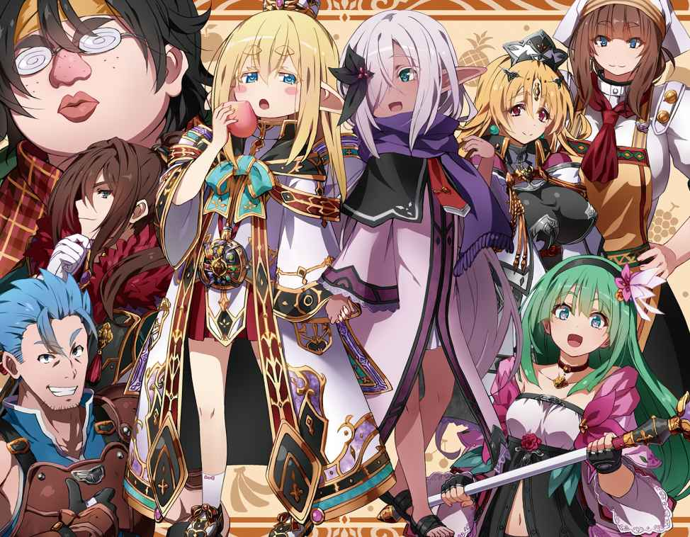
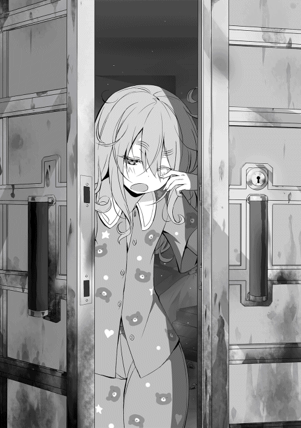

| 【合本版1-5巻】食いしん坊エルフ | |
| なっとうごはん | |
| TOブックス (2017) | |
※本電子書籍は「食いしん坊エルフ」１〜５巻を１冊にまとめた合本版です。
イラスト●らむ屋
デザイン●木村デザイン・ラボ

朝食 森の中のエルフ幼女
我輩はエルフである。
名はまだ無い。
現在わかっているのは、森の中にただ一人、全裸で寝ていたということ。そして、自分がエルフという種族であることだ。
何故このような状況で冷静にいられるかというと、自分にはある記憶があったからだ。
前世の記憶。
いわゆる、ファンタジー物......特に冒険物が大好きで、よくネット小説を読んでいた記憶がある。
読むのは異世界転生もの、特にエルフに転生する小説をよく読んだ。そこに登場するエルフという種族は、器量が良く魔法も使え弓の扱いにも長けている。まさに、自分の理想とも言える種族であった。それが今の自分である。
ただ、少し問題が発生した。近くに偶然あった水溜りで、自分の容姿を見た時のことだ。
小さな体......いわゆる幼児である。出るところも、引っ込むところもないつまらない体。幼い顔には人間にありえないほど、大きく長い耳がくっついている。それは、大き過ぎて少し垂れていた。更に、プラチナブロンドの癖のない長い髪に......ごん太 まゆ毛。
まゆ毛太いなぁ。某総理大臣並みに太いぞこれ？
でもって......かなり眠たそうな眼、いわゆるジト目というやつが、顔に付いていた。
まつ毛は長い。そのせいで、より眠たげな眼に見えるのだろう。鼻立ちも唇も絶妙な形で整っているのに、眼だけが気に入らなかった。
いや別にそれはいい。重要なことじゃない。自分が幼い子供になってることも、まぁ......許容範囲である。問題は......、
「おうふ......息子が失踪したぉ」
そう、アレが無い。
男の象徴、ゾウさんとも、マンモスとも呼ばれるアレがなくなっていた。
現在股間には、かつてあった逞 しいマグナムが消滅しており、代わりに女の子の部分が当然の権利のごとく鎮座していた。
そう、記憶の自分は男である。
それも、独身の三十代......ニートじゃないよ？ 仕事は、ちゃんとしてたからね！
よくあるニート転生じゃありませんよ!? 俺は心の中で叫んでいた。
ハアハア......落ち着け自分。まだ、慌てる時間じゃない。
自分が幼女になって動揺したが、重要なのはそこじゃない。どうして自分がこうなっているかだ。
そもそも仕事が終わって家に帰り、いつもどおりパソコンを立ち上げ......ネット小説をニヤニヤ読みながら大好きなウィンナーを一口。
もちろん、ウィンナーはボイルしてある。俺は、この食べ方がとても大好きだった。
パリッとした皮をかみ切ると、中から熱さと旨 みを含んだ汁が、ジュワッと口に広がる。間髪入れずにキンキンに冷えたビールをグイッと喉に流し込む。
これが美味い！ そして再び、ウィンナーへと手を伸ばす......この繰り返しだ。
おっと、話がそれた。
とにかく、ウィンナーとビールをやっつけていたはずの自分が、気付けばこの有様だ。お約束の女神様も出てこなければ、偉そうな賢者様も出てこない。洋ゲーよろしく、投げっぱなしジャーマンであ〜る。
「どうしてこうなった？」
ため息と共にぐぅ、と腹の虫が鳴く。
現状だれも頼りにできない以上、自分でなんとかするしかない。
せめて、チートスキル等があれば話は別だが......期待はできない。
とにかく今は食料の確保、及び飲料水の発見を第一目標に定め行動する。
「あとは......服が欲しい」
流石 に全裸は恥ずかしいのである。ぽっ......。
だいたい一時間後。奇跡的に、綺麗な川と食べられそうな木の実を発見し確保する。
たぶん、運をかなり消耗した気がする......がっでむ。
とりあえず先程から急かす腹の虫を黙らせるため、木の実を食べる。ピンク色をした、桃に似た木の実だ。
シャクッと、一口かじり味を確かめる。瑞々しい果汁、味は正しく桃。甘くて美味しい。硬いのは、採れたて......だからだろうか？ 歯応えバッチリである。
空腹も手伝ってか、無我夢中で食べた。
シャク、シャクシャク！ ムグムグ......ゴクン！ ゲフゥ。
一つ食べきれば腹は満たされた。続けて川の水を飲む。冷たい水は、甘ったるくなった口を、サッパリさせてくれる。ゴクゴク......。
「見事に水腹 だな......」
タプタプになった腹を見て苦笑。固形物......特に、肉が食いたいと思った。
やがて、日は沈み夜になる。
この時間帯は危険だ。大抵の肉食獣が活発に動き出す時間である。今の自分では満足に火すら起こせない。身を守る術がないのだ。
さて、どうするか？ 俺は、知恵を絞って考えてみた。
案一、木の上に逃げる......ダメだ登れん。
案二、武器で戦う......武器ないじゃん。
案三、逃げる......すぐ追いつかれるじゃん。
案四、隠れる......これが一番妥当だが。
......はっ！ 俺は『ティン』ときた！ エルフとくれば......魔法があるじゃないか!?
きたっ！ 魔法きたっ！ これで勝つるっ!! ......で、魔法はどう使うのよ？
「..................」
どしゃあぁぁぁぁ!!
盛大な音を立て、崩れ落ちる俺。
「ちっくしょうめぇぇぇぇぇぇっ!! 」
......オワタ。俺オワタ。俗に言う詰みってやつである。ちくせう。
「ぬわぁぁぁぁん！ 人生嫌になっちゃいますよぅ！」
もう開き直って、その場に大の字になって寝ることにした。人生、諦めが肝心だ！
あ、土の上は痛いから、やっぱり草の上で寝よう。そうしよう。
「今後のことは、生き残ったら考えよう......ふきゅん」
こうして異世界転生一日目は幕を閉じる。色々とあり過ぎて疲れた。そして、生きて日の目を拝めますように......。
......おやすみ。ぐぅぐぅ。
翌日......無事にお日様を拝むことができた。
「うおぉぉ......俺は生きているぅ！」
なんとか生きて次の日を迎えた俺は、本格的に現状を打破すべく考えていた。
まずは、身を守る力を手に入れること。幸い季節は初夏に差しかかるところだろうか？ 暖かかったので、全裸でもヘッチャラだった。でも服は欲しい......。
だって、今はおんにゃの子だもの！ うふん！
そんなことを考えていたが......ふと気付く。俺にどれだけ、男だった時の記憶が残っているのか。
よし、飯を食べながら思い出そう。何か、役に立つ記憶があるかもしれない。
低い位置にある桃っぽい木の実をもいで......一口ほおばる。
ほどよい甘みが癖になる。でも、これだけだとさみしぃなぁ。
「ふぅ......この木の実がなかったらヤバかったな」
周りを見渡しても木の実が生っているのは、この木一本だけであった。大切に食べなければ。
シャクッ！ んぐんぐ......ゴクン！ ゲップ。
それでは早速......色々と思い出してみよう。さぁて、まずは......自分の名前だ。
俺は目を閉じ、記憶を呼び起こしてみた。..................ぐぅぐぅ。すやすや。
......いかん、寝るな!! 早く思い出すんだ。
「............!? 」
なん......だと......!? 思い出せないだと......バカな!?
では、仕事はどうだ......？ いかん、これも駄目か......ぬわぁぜだっ!?
肝心な部分に、靄がかかったようになっていて......わからない！ でも、ニートじゃないのは確かだ！ ......本当だよ（震え声）。
では、趣味はどうだろうか？ 趣味は......ネット小説を読むこと。
小説の内容は......無いよぅ（汗）。
ネット小説を読んでいたことはわかったが、肝心の内容が思い出せない......のだが、漠然と設定やら世界観は思い出せる。要は......記憶が虫食い状態なのだ。チートやら、ＴＳやら、普通の知識程度は思い出せる。
だが......役に立ちそうな記憶がゴッソリ抜けている。
「おおおおお、おちちちちつけけけけけっ！」
まだ......なんとかナルハズダ！
「はあはあ......」
もう一口、桃っぽいのをほおばる。シャク......んぐんぐ。
おまえだけだよ、俺を癒してくれるのは......おーけー。転生前の記憶は、ほとんど役に立たないことが判明した。......しょんぼり。
まいったな、どうしたもんかな......むう。
手をにぎにぎしながら......昨日気になっていた魔法について考える。
普通、魔法って詠唱して......発動なんだよな？ 違うやり方もあるけど。
よく読む小説の主人公は、いきなり無詠唱で魔法を発動とかしてるが......俺は無理そうだよなあ......。
何か......間違って出ないかな？ ちょっと期待してしまってる自分がいる。
魔法が使えるなんて、ワクワクするじゃないか！ よし試してみよう！
でも、どうやって......？ 考えるな！ 感じろ！ って、じっちゃんも言ってた......気がする。
紅葉みたいに小さくなった手を突き出し、気合を入れる......。
すると、手に光が集まる！ 徐々に大きくなる光に、俺は興奮を隠せなかった。
「おおっ！ きたっ！ いいぞ！」
目が眩 むほどの光が収束した後......その光からポトリ......と、ピンク色の木の実が地面に落ちた。俺の足元に転がっているそれを見て、呆然とする。
「はへ？」
今まさに自分の食べている桃っぽい物と同じである。現在持っている食べかけの木の実ではない。別の新しい木の実である。
その証拠に、その木の実には......俺がかじった跡はまったくなかったからだ。
「も......もう一回！」
先程と同じように、ポトリと木の実が地面に落ちた。まだだっ！ まだ終わらんよ！
更に試す。何度でも、何度でも......。
......あれから何度も試したが、結果は同じ桃っぽいのが十個ほど、足元に転がっていた。現実は残酷である。しょんぼり。
「おうふ......」
正直、なんじゃこりゃぁぁぁぁぁぁぁっ!? ......である。
何なんだろうかこの魔法？ それともスキル？ 直前に食べた物でもコピーして複製する魔法なのか、スキルなのか？ わからん......。
「もう......いっぱい出して、投げつけて攻撃するか？」
正直なところ結構疲れた。ヤケクソ気味に出してみたが、その分疲れてしまったのだ。ノーコストで、使えるわけないもんなぁ......。
はぁ......と、ため息を吐き、試しに桃っぽいやつを木に投げつける。それは物凄い回転とスピードで木に当たり......ベゴッ！ っという音を出した。
「ふぁっ!? 」
俺は、間抜けな声を上げてしまった。何故なら......木に穴が空いたからだ。
丁度、桃っぽいやつのサイズで穴が空いた。木に空いた穴を覗けば奥にある木に桃っぽいのがめり込んでいた。
ひょっとして......試しに木を殴ってみることにする。
「ちょあぁぁぁぁぁっ！」ぺちっ。「ふきゅん!? 」......痛い。
どうやら凄いのは俺ではなく、桃っぽいやつのようだ。くそったれめ。
チラッと、めり込んだ桃っぽいやつを見れば......。
「プークスクス......ねぇ？ 今どんな気持ち？ どんな気持ち？」
と、笑われている気がした。イラッとしたので、引っ張り出して食べてやった。
......げふぅ（満足）。
一応のところ、自衛手段（？）と食料兼水分である桃っぽい──もう桃でいいや──を手に入れた。ならばあとは、己を鍛えるのみ！
「見てるがいい桃よ！ 必ず......おまえを超える漢になってみせる！」
俺は桃に向かって、指をビシっと指し決意する。
さあ、やることは盛り沢山だ。決意したなら行動は早い方がいい。拠点を作り、鍛錬を始めようではないか。
ふふふ......漫画で培った修行方法の数々！ 今こそ......活かす時が来た！
......どうも、エルフ幼女です。
こんにちは。もちろん名前はまだありません。
この一ヶ月......桃をかじりながら、モリモリと修行しておりました。
どういうわけか、桃が生っている木は、俺が実を食べても食べても、せっせと実を付けるようで、一向になくなる気配がない。ありがたや、ありがたや。
このお陰で、俺の憂いは少しは軽減できたというものだ。修行に集中できるぅ！
さて実際に、漫画のような修行と言っても、色々あるわけで......。
「こぉぉぉぉぉぉぉぉぉ......ふひっ」
息を吸い込むこと......十分、吐くこと......十分！
「できるかぁぁぁぁぁぁぁっ!! 」
とある漫画に登場する......吸血鬼にめっちゃ効くエネルギーを生み出す呼吸法を得るために、その修行法を再現してみたが......ウン、無理！ だれだ？ これ考えたやつは!? 出てきなさい！（無茶）
「会得する前に死ぬわ......これ」
メジャーものは無理くさそうだ、と認識したわけでして......。
「次行こう、次！」
他に技の型とか霊力うんぬん、気の解放やら、暴力はいいぞぉ!? 的な世紀末技を得ようと、がんばってはみたが......徒労に終わっている。
しょうがないので現在は素直に体力作り中だったりする。ぶっちゃけ走り回って疲れたら桃っぽいの食って寝る......を繰り返している。
正直、体力付いてるかわからない。そもそもだ......現在の俺はエルフの幼女である。
再度、自分の容姿をジックリと見る。じ〜。
水溜りに三歳くらいの金髪碧眼幼女が映る。
顔の輪郭は幼児らしくプクプクほっぺの丸顔である。そこから生えるのは大きく長い耳。垂れているのは俺だけなのだろうか？
他のエルフを見たことないからわからん。大抵ピンと格好良く上向きの耳なのになぁ......。
髪はストレートのプラチナブロンド、現在背中まで伸びている。結構......邪魔くさい。せめて髪型をいじれるならいいのだが、そんな知識は持っていない。
肌は、シミ一つ無い白い肌だ。黒い方が好みだが......あっちは高確率でムフフ展開が待っている。こわいこわい。
「死亡フラグ、一つ回避だな......」
実際に、それを見るのと体験するとでは大違いなのである。
あとは、ごん太眉毛にジト目......目の下に隈ができるとヤヴァイ人のできあがりだ。
それ以外は割と整ってるんだがなぁ......そうそう。
「もちろん全裸だよ!! 」
ひゃっほぅ！ 全裸......最高ぉぉぉぉぉっ!! 服がな......ないんだよ。材料すらない。一時期......葉っぱを股間に当てていたのだが、すぐ落っこちるのでやめた。
今は、まだいい。幼女だから。いずれ成長するにつれて、おっぱいとか尻とかが成長すると......あっ！ と、言う間に痴女の完成である。それまでになんとかしないとな。それと......だ。
「エルフなのに、魔法が使えないとは......」
桃は、出せるんだがな！ 魔法とは違う気がするし、同じにしてはいけない気がする。あれから地味に、魔法が使えないか足掻いてみたがダメだった。
火も出ないし風も起こせない、水は桃があるからいいや。
まあ、とにかく......うんともすんとも出ない。
「どうするかな......？」
魔法は、諦めるべきか？ あと二ヶ月経った時に、何も変わらなければ考えよう。
今は、色々と試す。何でもいいから、とにかく試行錯誤しよう。
実際問題、何かおかしいのだ......この森は。まず生き物がいない。虫ですらいないのは異常だ。
それに気付いたのは、幼女になってから三日後のこと......落ち着いて周りが見えるようになってからだ。
普通は全裸でいたら、蚊やら何やらに刺されてもおかしくないのだが、まったくそれがない。生き物の鳴き声も、臭いも、気配すらない。故に、俺が生き残っているわけなのだが......。
「やっぱり、何かが変だ!? 」
時折、だれかに見られている気もする。気のせいだとは思うが......。
とにかく『何か』が起こる前に......ここから立ち去りたい。
それには、身を守る力が必要だ。桃の超パワーだけでも、なんとかなるかもしれないが......それでも、保険として使う程度にしたい。
「やっぱり自分で身に着けた力が一番でしょ？」
そうだ、このファンタジーな種族、エルフ幼女になったからには、この世界を渡り歩き冒険をしてみたかったのである。
「待っていろよ......異世界のご飯達よ!! 」
桃だけじゃ、もう限界である。嫌いじゃないよ？ この桃......美味しいし、何か知らないけど栄養満点みたいで栄養失調にならないんだよ。この桃、マジパネェ！
でも同じ味ばかりだとつらい。そこでだ、現在手にしてるのは、そこら辺に生えてる草である。これを、食べようと思う！（暴挙）
牛やら何やらが食べてるのだから、人間の俺が食えないわけがない！
あ、今エルフか!? ......まぁ気にしない。気にしたら負けだって、自宅警備員の人も言っていた。
「いざ！ ......もしゃ、もしゃ」
むぅ!? この刺激的な辛味は......正 しく山椒 ！ ピリリと舌が痺 れる感じは間違いない......!! あの、うな丼によくかかっているものに相違ない！
大発見だ！ これで勝つる！ こ、ここ......こここれで、ででででぇ!?
「ぶへぇっ!? 」
顔面から地面に突っ込む。勢いで口の中に土が入った。ぺっぺっ！
いったい、どういうことだろうか!? まるで体が言うことを聞かない！ 体が、痺れる......ん？ これって、ひょっとして。
「ま......麻痺 った？」
ぬわぁぁぁぁぁぁ!? やっちまったんだぜ！
結局......朝まで、顔面から地面にダイブした状態で、次の日を迎えたのであった。
やぁ......皆さん、おはようございます。全裸エルフです。
いかがお過ごしでしょうか？
「おおぅ......酷い目に遭った」
地面とキスしたまま翌日を迎えた俺は、現在川にて体を洗っているところである。
幸い痺れは、朝方にはなくなっており後遺症も大丈夫なようであった。
「......あれは駄目か？ いや、しかし」
昨日食べた草をぼ〜っと眺めながら、体を丁寧に洗っていく。
まあ、洗うと言っても手で撫でるだけなんだがな！ ふひひ、スベスベボディだぜっ！ 出っ張りも何にもねぇ！
そして、川から上がり......お日さまに当たる。体を拭くものなんてなかったからだ。
木が生い茂る森にあって、日が当たる貴重な場所があった。そこは俺のお気に入りの場所で......簡単ながら、椅子っぽい物を木の枝や葉っぱでこしらえている。強度に難があるのだがないよりはましだ。
「ふぅ......太陽がいっぱいダゼ......」
ぽかぽかした日差しが、冷えた体を暖めてくれる。俺は手に意識を集中して桃を創り出し、一口かじる。しゃくっ、じゅくじゅく......ごくん。
「おいちぃ」
まさに、至福の一時である。
ふと横を見やると......昨日の草が生えていた。山椒風味の草である。
「こいよ!? かかってこいよ！ ......怖いのか？」
ニヤリ......と、その草に言われた気がした。
「野郎！ ぶっころしてやらぁ!! 」
もしゃもしゃ......「ぬふう!? 」どしゃぁっ！
まぁ結果は昨日と同じだったんだがな？
俺はまたしても、地面と熱いキッスをするハメになった。......ただ、昨日より痺れが治る速度が早くなってる気がする。
これが、いわゆる適応とかいうやつかもしれない。ならば何度も食べれば克服できるかも？
「ふふふ......我！ 勝機......掴んだり!! 」
ヤツを打ち負かしたのは、それから一週間後のことだった。痺れまくって......ちょっと癖になりそうだったのは内緒だ！ ビクンビクン！
まあ、それからというもの、色々と食べるようになった。俺の食欲のリミッターがはずれてきているのだろう。
「次はおまえだ！ キノコ野郎！ 覚悟しやがれ！」
俺は、木に生えていた某有名ゲームに出てくるキノコによく似たものを口に運んだ。
キノコは......うん、アレだ。アボカドに近い味だ。これはいい！ 組み合わせによっては、素晴らしい食材に......ぐりゅりゅるりゅ......。
「んほぉぉぉぉぉおっ!? 」
ぐおぉぉぉぉっ!? は......腹が、痛ぇっ!? な、何じゃこりゃぁっ!? イ......イカン！ これは堪 らん！ 俺は、堪らず茂みに駆け込んだ。
うん......こっからはＮＧなんだ。ご了承ください。
それから一時間後......腹の痛みは治まった。やれやれ、酷い目に遭ったぜ......。
だが貴様も適応してみせる！ 折角見つけた、貴重な食べものだ......味わい尽くしてくれるわっ！
その後、腹を下すこと数十回。しかし......俺はこのキノコを克服してやった。今では桃に続くメイン食料だ。
難点としては、なかなか見つからないことだ。変なところに生えてることが多い......ような気がする。
二つに分かれた木の根っこの間とか......おまえ、狙ってるだろう？ 手に持ったキノコに尋問するが......黙秘でとおしていた。生意気だったので『もしゃもしゃ』してやった。
試しに、山椒味の草を和えて食べてみる。ねっとりとして、マグロのトロのような感じに、山椒の辛味が加わった感じになった。悪くはないが、塩っ気が足りなかった。
「塩......もしくは醤油が欲しいなぁ......あればレパートリーが増えるんだがなぁ？」
今は味わうことができない懐かしき味に、思いをはせる。
俺は更なる味を求め、別の食材を探した。俺は気を取り直して、木の皮を食べてみた。
冬のお猿達は、飢えを凌ぐために木の皮さえも食べるという。
「猿にできて、俺にできないわけがねぇっ!! 」
俺は木に直接かじりついた！ うぬっ!? 固い！ うおぉのれいっ！
意地でも食らってやるわっ！ 渾身の力を顎に込める。
バリバリッ！ ムキュモキュ......。
遂に木の皮を食べることに成功した！ そして、その味とは......んん〜？ こ、これは!? あんまぁぁぁぁいぃっ！ そして、豊かな香り......！ 脳をトロけさす陶酔感！
「ウィスキーの味じゃねぇかっ!? 」
俺は歓喜した！ 何故なら......俺は、酒が大好きだからだ！ 俺は酒に合わせてツマミを作るほど酒を愛していた。アイ、ラブ、さけ！
まぁ、それが木の皮なので『何か違う』と感じたのだが。その日は、とりあえず木の皮をモリモリ食べ......幸せなうちに酔っぱらって寝てしまった。
そして、次の日......。
「ふきゅん......あったまが痛ぇ」
案の定、二日酔いになった俺であった。だが......この味、覚えたぞぉ!! これ以来、木の皮に合うつまみを求め、食材を探すことになる。
「まずは塩っ気が欲しい！ 酒のつまみはしょっぱい物だ！」
俺は更なる味を求め、森を探索していった。
まともな食材なんてありゃしない。
だが食べると、意外な味が待ってたりするのが面白かった。ただ......副作用が半端ないがな！
この前も、土食ったら石化したよ!? 農家の人も食ってたからイケル！ と思ったら......逝きかけたよ!? 石化中は動きたくても動けない。布団の中で、たま〜に金縛りにあう状態みたいなものだ。
慣れてくると変なポーズで固まってみたりした。あ、ちなみに味はカレースパイス風味だった。これは、なかなかに使い道がある。ただ、相変わらず塩っ気がない。
これに塩っ気があれば、最高の調味料になるものを！
「絶対に塩を見つけてやるゼ......」
修行訓練そっちのけで、食べることに全力を尽くしたのであった。
「ふむ、この石ころは......メロン味、こっちはイチゴ味」
石ころを口の中で、コロコロと転がして味を楽しむ。石ころはそれぞれの色で味が違った。
みどりっぽいのはメロン味。赤い色のは苺もしくはリンゴ味。等々......様々な味が楽しめた。副作用は沈黙十分。
何も喋 れなくなった時には......別に焦んなかったか。話し相手がいないし、独り言しか言わないしな。
気を取り直して次行こう！ 次！ お次は地面に落ちていた枯れた枝だ。小さい物を口に咥 えてガシガシと、かじってみた。
「おっ？ 甘い！ ......チョコレート味だな」
その小枝はチョコレートの味がした。歯応えは木の枝なので物凄く硬かったが。細かく砕いて木の皮で包めば......ウィスキーボンボンになるかもしれん。
「今度、試してみるかな？」
副作用は耳が聞こえなくなる......だった。これは流石に危険だったので、適応するまで拠点で慣らした。音が聞こえないと、危険を察知するのが遅れるからである。
この副作用は、三時間程度で適応した。段々と適応速度が速まってきている感じだ。
「いいぞ〜この調子で、この森の全てを食いまくってくれるわっ！」
よっしゃっ！ 次は、行動範囲を広げてみよう！ 例えば......あの木に生えている葉っぱは、どうだろうか？ 俺は木にしがみ付き、よじよじと登り始めた。食欲パワー全開の俺は、なんと......木を登りきったのだ！（ドヤ顔）
「おぉ......結構高いな？」
少し怖かったがそれよりも、今はこの木の葉っぱだ！ 木から一枚......葉っぱを頂戴する。
「いただきます！」
もしゃもしゃ......ごくん。
「からっ!? 唐辛子の味だ!! 」
ぐおあぁぁぁぁぁぁっ!? 口の中が火事になっている！ 俺は慌てて桃を召喚した！
シャクッ、んん！ シャクシャク......ごくん。
「ふぅ......えらい目に遭ったぜ」
だが、そこに副作用が襲いかかった!! その副作用とは......。
ぷぅ〜〜〜〜〜〜〜〜〜〜〜〜......。
「これは酷い」
オナラが止まらなくなる......だった。症状は三分程度で治まった。よかった。このままずっと止まらなかったら、と心配していたのだ。気持ちが落ち着いたところで、俺は重大なことに気が付いた。
「どうやって、下りるかな？」
そう、俺は下りられなくなっていた！ 登ったはいいが、下りられなくなった猫と同じだ！ 俺は落ち着いて周りを見渡すと......木に長いツタが絡まっているのを見つけた。
「よし......こいつを使って下りよう」
ツタがきちんと固定されていることを確認して......と。
「行くぞっ！」
気合を入れて下りて行った。......が、ブチブチッ！ と、音を立てるツタ。
まてまて！ まだ切れるな！ もう少しがんばれ！ できるできる！ おまえならでき......ブチンッ！
「ひぃぃぃぃぃぃっ！ クライシスッ!? 」
ツタが切れてしまった！ 俺は地面に落ちてしまう！ ふわっ......ぽてっ。
「ふきゅんっ!? 」
ぐわぁぁぁぁっ!? ケツが割れた！ 重症だ！
俺は......ケツから地面に落ちたらしい。ヒリヒリするケツを擦りながら立ち上がった。幸いにも、それほどの高さから落ちてはいないようで、けがはしなかった。
落ちる直前に、浮遊感みたいなものがあったが......気のせいだろうか？
いや、今はそんなこといいんだ！ 根性なしに......制裁を加えてくれる！
「ええぃ......根性なしめ！ おまえなんかこうだ！」
と、千切れたツタをモグモグしてやった。......なんと、ツタはチーズの味がした！
これは収穫だ！ 木の皮に、とっても合うじゃないか!! やったね！ 俺!!
そして、お待ちかねの副作用だ！ もう慣れたものだ。
「ぱお〜ん」
ツタの副作用は......ぞうさんが生えるだった！ おかえり！ ぞうさん！ 俺は君の帰りを待っていた！ 久しぶりに戻った股間の頼もしい存在に歓喜する俺。
あぁ......これが、ずっと続けばいいのに！
「さよなら......ぞうさん」
ぞうさんとの再会は、僅か三十秒ほどで終わってしまった。
どんどん萎んでいくぞうさん。やがて完全に消えてしまった。そこには、女の子の部分が「ただいま」していた。
「あ、うん。お帰り」
副作用にどんどん適応していったばかりに......ぞうさんとの別れも早まってしまった......と、いうことか。しくしく。
俺は悲しみを乗り越えて、次の食材を求め森を進んで行った。
「少し奥まで行ってみるか？」
次の日。探索に慣れてきた俺は、少し奥まで進んでみるか考えていた。拠点近くの食材は、ほとんど適応してしまったのだ。しかし、相変わらず塩っ気がなかった。
ツタがチーズの味なので、それを採ればいいのだが。ツタは今の俺では非常に取り難いのだ！
がっでむ！
というわけで、取りやすく塩っ気がある食材を求め、森の奥に進むかどうか迷っているところだった。
幸いにも、俺は桃を召喚することができる。少なくとも餓死はしないだろう。
「よし......森の奥に行くぞ！」
俺は森の奥に進むことに決めた。
森の奥は薄暗く少しヒンヤリとしていた。おそらく、日が当たらないので気温が低いのだろう。まぁ、行動に支障が出るほどの寒さではないので気にしなかった。
「森の奥......とは言ったが、実際に奥なのかどうかは、わかんねぇな」
そう、ここがどこで、どの程度の大きさの森なのかわからないのだ。気付いた時には、既にこの森だったわけだしな？
「ま、進めばわかるか」
そんな風にお気楽に考えて、俺は奥へ奥へと進んで行った。ひたひた......。
あるある！ 見たことがない食材がゴロゴロとあるぜ！
そこは、食材の宝庫だった。
紫色の毒々しい花や、ねばねばした草、ドロドロとした黒い水。普通なら絶対に口に入れないであろう物が、俺にとっては食欲を満たす最高の食材にしか見えないのだ。
俺は迷うことなく、それらを口に運んだ。
「この花は、おおう!? やった！ 魚醤 だ！」
紫色の毒々しい花はなんと魚醤の味がした。癖 があるので合わせられる食材は限られるが......それでも収穫だった。さて、問題の副作用は？
「にゃ〜ん」
気付いた時には......子猫になっていた。色々な副作用があり過ぎんだろ？ まぁ、これもすぐに適応してしまった。残念だにゃ？
次は、ねばねばした草だ。......ぬちゃぬちゃ。
「お？ これは......納豆だ」
ある程度、予感していたが当たりだった。ご飯のお供、納豆である。副作用は納豆臭くなる......だった。あれ？ これって副作用なのか？ わからん......。
そして、最後にドロドロした黒い水を口に運んだ。
「!? きたっ！ おかゆの味だコレ!! 」
そう！ これはお米の味！ であれば......。
「調理を開始する！ 材料は紫の花と、黒い水だ！」
あ......入れものがなかった。しょぼん。だが、ここで諦めるわけにはイカン！ 何か、代わりになるような物でも落ちてないかな？
キョロキョロと辺りを見渡す。大きな葉っぱが俺の目に留まった。これならイケルんじゃね？
俺は大きな葉っぱを少し丸めて、皿状にしてみた。思惑どおり、葉っぱは皿のようになった。やったぜ！
改めて調理開始だ！ まずは黒い水を皿に投入！ 続けて紫の花を散らす！
......以上！ これ、調理って言っていいか......わっかんねぇな!?
「ま、いいか。いただきます！」
ずずず......もきゅもきゅ、ごくん。
「ふはははっ！ 美味い！ 魚醤が効いていて最高だ！」
欲を言えば......温かければ、尚良かったのだが。
おぉ！ そうだ！ これに、ねばねばした草を入れて『なっとうごはん』にしてみよう！
俺は、ブチブチとねばねばした草を千切り、上に散らした。思惑どおりなら『なっとうごはん』のできあがりだ！
「うぐっ!? こいつははずれだ......！」
そういえば、これは『おかゆ』だった。おかゆに、納豆は......合わない。合うって人も、いるかもしれないが俺は合わない。
「せめて黒い水が固形物ならばあるいは......？」
う〜ん......残念。
気を取り直して探索再開だ！ まだまだ、この森には食材があるはずだ！ 俺は食材集めに夢中になっていた。
そして......迷子になった。なんというお約束!!
「やっべ〜本格的に迷子だ。ここがどこだかわからん」
いざ迷子になると、あのしょぼい拠点が異常に恋しくなった。今の俺は半べそ状態だ。
「帰りたい、我が家に」
家ですらないのだが......そんなことは、どうでもよかった。
ただ、帰りたかった......あのお日さまが当たる場所に。
ここは日が当たらないのだ。食材はあるが、気が滅入る。俺は、必死に拠点目指して彷徨 い続けた。そして、俺は出会ったのだ......森の主に。
その出会いから一年後......俺は森に適応していた。
「ふはは！ もう俺に、食えないものはない！」
俺の足元には、およそ食材に見えないものが山と積まれていた。
だが、俺には食える。......長くつらい戦いであった。森の奥に入り迷子になったり、木に登ったはいいが下りれなくなったりと、なかなかの冒険だった。......ん？ あれ？
おかしい？ 俺は確か......修行という名の、体力作りをしてたはずなのに。ドウシテコウナッタ？ うごごご......食欲とは、いったい!?
そんなこんなしているうちに一年も過ぎていたりする。まあ......だいたい一年、ということにしてるが正直適当。
あと......この森、季節が変わらないのだ。気温も、初めて自分がエルフだと認識し、森にいることに気付いた時のままだ。常初夏地帯であると言ってしまえばそれまでなんだが。
なので日数が麻痺してくる。ぶっちゃけ......もうどうでもいい。まあ、食材探して歩いてたから体力は付いたかも？
とりあえずはご飯だ。腹が減ったからな！ 今日も料理をしてみようと思う。
といっても、材料を組み合わせるだけの簡単なものである。言い換えれば組み合わせられるだけの食材が揃ったということだ。探索の成果が出ているな！
よし！ 早速料理だ！
材料は......芋っぽいの。これは俺のお気に入りでそのまんま芋だ。ちなみに副作用は......エッチな気分になるだ。幼女じゃ意味ないな！ あるかもしれないけど......ない!!
次は土、カレースパイス風味。
最後に白い花、なんと塩味！ これを見つけた時......思わずガッツポーズをした！ そして、何も見えなくなった。
副作用は視力低下だったようだ。流石に焦ったが、これもなんとか克服。遂に、まともな料理というレベルに漕ぎ着けたわけだ。できあがるのは、芋のカレー風味といったところか？
さあ作ろう！ 芋を手で割り、白い花を上に散らし、最後に土を豪快にまぶす。
「おおう、でけたっ！」
見た目は最悪と言ってもいい......というか最悪だ。この森での料理は見てくれを気にしてはイケない！ 問題は味だ！（確信）
「では、いただきます！」
もしゃ......もぐもぐ......ごくん！
「ふひひ！ できてる......カレー味の芋!! 」
うおおっ！ と雄叫びを上げ、歓喜の舞を踊る俺。
生きていける......この森で！ 俺はやっていけるのだ！ もう、何も怖くない!!
......いや駄目だろ!? 何で、ずっとここで生活しようとしてるんだよ俺？ 手に持ってる土だらけの芋をまじまじと見つめ、ため息一つ。
「感覚、麻痺してきてるなぁ......」
そんな自分が悲しくなった。......しくしく。
翌日、俺は遂に森を出る決意をした。きちんと人間らしく......いや、エルフとして冒険するために、俺はこの森を出る！
そして森の出口を求め、俺は歩き出すのであった。
現在......俺は森のある場所に向かっている。食材を求めフラフラ森を彷徨っていた時のことだ。森の中央辺りなのだろうか？ 木々が人工的に取り除かれた痕跡がある場所に出た。
そこには、でっかい竜の石像が鎮座していた。最初見た時はビビったものだ。
「ふひょあぁぁぁぁん!? 」
奇妙な悲鳴を上げた後......腰が抜けた。石像でなければ「オマエマルカジリ」されていたことだろう。
......が、一向に動かないのでよく見てみると、石像だったわけだ。
「ふぅ......ビビらせやがって。俺が本気だったら、おまえ死んでるぞ？」
と、尻餅をつきつつ虚勢を張るのを忘れない俺ステキ。でもまあ、ようやく人工物らしき物を発見できた。
なので、この世にまさかの俺一人説がくつがえったわけで......いや、くつがえってないか。いまだに、俺以外の生物を発見できてないのだから......。
でもこれ幸いにと、結構な頻度で今日の出来事をこの石像に報告していた。
「今日の俺は、面白かっちょよかったぜ!! 」
ぶっちゃけ一人で寂しかったから、憂さ晴らし的なものだったのかもしれない。
でも......それができなければ、頭がおかしくなって自殺してたかもしれない。
なので、勝手にこの森の神様として、一人で祭り上げていた。故に......今日この森を出ることを報告しに行ってるわけだ。
行き慣れた道を進むと......そこに静かに竜の神様が佇 んでいた。貫禄、半端ねぇ。
六枚の大きな翼。六つに分かれた太い角。尖った竜鱗に覆われた逞しい尻尾。何より精悍 で威厳のある顔。びっちり牙生えてて超怖い。
そして超でかい。どんだけでかいんだ？ 十八メートルくらいか？ 某機動戦士くらいあるんじゃねえかな？ 周りの木がそれ以上あるから目立たんが......。
俺は神様の足元に歩み寄り報告をする。
「神様......俺は今日、この森を出ます。色々あったけど、やっぱり外の世界が見たいんです」
今まであったことを思い出す......ろくなことがねぇぇぇぇぇぇ!?
何だよ!? 全裸幼女って!? 桃以外、副作用あり食材って殺しにかかってるだろ!?
ちょっと、この森にいるメリットを考えたが......あんまりなかった。桃さえあればどこでも生きていけるし......流石、桃さんマジパネェ。
「ま......まあ、今まで生きてこれたのは神様のおかげです。本当にありがとうございました」
深々と頭を下げる。こういうのはしっかりしないとな。一に礼、二に礼、三四がなくて、五に礼だ。
「では、行ってきます」
再度、礼をして、森を出るためその場を立ち去ろうとする。
カチャン。
何やら金属の音がした。懐かしい音だ。
音がした辺りを見ると......そこにペンダントがあった。
持って行け......って、ことだろうか？ 要は世界救いに行け、五十ゴールドやるから、ってことであろう。流石ファンタジー世界！ こういうイベントもバッチリおさえている。俺はそんなことしないがな！ まあ......くれるなら貰っておく。
「ありがとうございます。では......これで」
俺は、八つの濁った石が付いた、丸い豪華な紋章付きペンダントを首に下げる。
丁度ペンダントが股間を隠す形になった。やったぜ！
再度、神様に礼をしてその場を後にした。
森を出る。言うのは簡単だが、出口を見つけなくてはならない。
「真っ直ぐ歩けば出口に出るに違いない！」
恐ろしく単純な考えのもと俺はひたすら歩き続けた。途中で桃を食べて一休みして......また歩き出す。
何日......経っただろうか？ 諦めようか迷った日もあったが......俺は歩き続けた。
その甲斐あって遂に森に変化が見えてきた。出口が近いと確信したのだ。
俺は、思わず走り出した！ やがて視界は開けていき......そして今......遂に俺は森の出口に到達した！
そこは......広大な草原、青い空、吹き渡る風......まさにファンタジー世界というものだった。
なんと空気が美味しいことか。なんと空が青いことか。
俺は感動のあまり、暫くそこを動けなかった......。
「すげぇ......」
思わず口に出る、ありきたりな言葉。でも、素直な感想であった。
そして俺は気付く、重大な事実に！
「俺、全裸のままだわ......」
俺の明日は......どっちだ!?
昼食 継承
やあ皆さん、全裸です。
エルフですが名前はありません。自分で付けろって？
ばかやろうっ！ 名前ってのは親から貰うもんなんだよ！
てな考えの自分なんで......未だ名無しです。
現在、緑がいっぱいの草原を当てもなく歩いているところだ。森にいなかった虫や鳥、生き物の鳴き声が俺の耳に入ってきている。やっぱりあの森がおかしかったんや！
ちょっと足元を見ればダンゴムシがいたり、空を見上げれば鳥がいたり......。
ちげぇ!? ドラゴンだぁ!?
銀色の鱗に覆われた巨大なドラゴンは、チラリと俺を見て......下界には興味ありませんと言わんばかりに空の彼方へ去っていった。
「ふぁんたじぃ......」
もう、色々驚いてばかりだ。
体感で昼っぽかったので、桃を出してお食事タイムと洒落込む。丁度いい岩があったので、そこに腰をかけて桃にかじりつく。
しゃく、しゃく......じゅるじゅる、ごくん。
「ふぃ......うまし！」
桃を見やると「それほどでもない」と、謙遜しているような姿がある。
思えば、この桃を出す面白変テコスキル？ 魔法？ ......がなければ森で飢え死にしてた可能性もあるんだよなぁ......。
本当にお世話になってます。だがしかし！ 俺は新しい味に飢えているのだ。森の外に出てまず土を食ってみた。しかしカレー粉みたいな味はなく、本来の土の味だった。
やはりあの森限定らしい。ならば普通に木の実や野菜、動物を狩って食事にありつけってことだ。
まずは、どこか人がいるところを探そう。この世界のことを聞きたいのだ。
それに美味しい料理にあり付けるかもしれないし、上手くいけば全裸から卒業できるかもしれない。
「よし......いくかっ！」
満腹になって休憩がてら日向ぼっこを堪能し、再び俺は歩き出す。
美味しい食べ物目指して！
それから三日後......俺は道を歩いていた。人工的に作った名残りのある道である。
馬車の車輪跡があるので、これを辿れば人里に辿り着くであろう......と思ったわけだ。
それから更に二日後......俺は小さな村に辿り着いていた。
「きたっ！ 村きたっ!! これで勝つる!! 」
俺は喜びのあまり駆け出した。全裸のままで！
「なんだ......これは......？」
村に辿り着いた俺の、最初の一言がそれであった。
その村は何者かに荒らされた後であり、かなりの年月が経っているようだった。
......というか白骨死体ぃぃぃぃぃっ!?
戦って死んだのであろう、戦士の装備をした白骨死体や、魔法使い風の姿をした......腰から下がサヨナラしてる骸骨 。小さな骸骨もあるな......子供のか？
「なんてこった......」
手近な民家に入ってみる。中は略奪された後で、使えそうなものは一切なかった。
徹底してるな「少しは残しておけよ」と文句を付けながら、次の家にお邪魔する。
やっぱり同じ風景がそこにあった。もちろん人もいない。完全な廃村であった。
「......収穫なしか」
骸骨達の装備も、長い年月雨風に晒され続けボロボロで使い物にならず、いまだに俺は全裸だった。
日もとっぷりと暮れ、夜の闇が辺りを支配する。
でも俺はこの暗闇でも、はっきりと物が見えた。エルフが持つ特性『ナイトビジョン』が、あるからだ。......これはあれだ、猫と同じだ。これがなかったら俺は生きていけなかったな......超便利。
「どうすっかな？」
途方に暮れていると村の広場......そこに何やら人影があった。というか薄暗く光ってる。
幽霊だろうか？ 生まれて初めて見るな......俺、霊感ＺＥＲＯ人間だったしな！
チョット感動した。もうちょっと近くで見てみよう。
俺はコソコソと物陰に隠れながら、幽霊に近付いていった。念のために桃も二個出しておく。
ここら辺が限界か？ 俺は木の陰から幽霊を観察する。
幽霊は女だった。クセのないショートカットに、二重まぶたの綺麗な瞳。整った鼻筋にふっくらとした小さな唇の人間の少女。
出るところは出て、引っ込むところは引っ込む......要はナイスバディというやつだ。
色はわからん。薄暗く光っているだけだし、明暗で区別が付くくらいなものだ。
幽霊なので表情は暗い。まあ死んでるわけだしな。あの格好は......魔法使いだろうか？
ＲＰＧにはお約束の、女魔法使いが着るような「おまえそれ守備力ないだろ！」ってくらい肌の面積広めの服にマントを羽織っていた。
さて、どうするか？
まさか、いきなり「やあ、お嬢さん何かお困りかな？」と、白い歯をキラリとさせて挨拶 ってわけにも......いや、そもそもなんで挨拶なんだよ!? 敵だったら死ねるぞっ!?
でも、会話くらいならできるかもしれない。う〜む。
よし......こういう時は脳内会議だ！ 目を閉じて内なる自分に話しかける。
俺「では会議を始めます。議題は幽霊をどうするかです」
俺Ａ「早々に立ち去りましょう。怖いです」
俺Ｂ「捕まえようＺＥ！」
俺Ｃ「撤退だな。火力が足りない」
俺Ｈ「おっぱぉに顔埋めたい。はぁはぁ......」
「よし、撤退だ」
俺は目を開け決意する。
そして目の前に幽霊がいる件。これってヤヴァイですよね？ ね？
◆◆◆
私の名はエルティナ・ランフォーリ・エティル。
五年前に護衛としてこの村に来た冒険者の一人でした。クエストの内容は盗賊の退治です。私の冒険者ランクはＣ。
冒険者ランクはＧから順にＡ、その上のＳまであるランキング制で、私は中堅どころの実力を持っていました。
更に同じランクの戦士が二人、魔法使いが三人、ヒーラーが一人と火力が十分なパーティーでした。
しかし......私達は戦いに敗れました。裏切り者がいたのです。
盗賊は三十名ほど。大した実力もなく次々に討ち取られていきました。ですが突如、後ろから攻撃されました。
仲間であったアランという戦士とマジェクトという魔法使い。更にはヒーラーであるエリナまでも盗賊と手を組んでいたのです。
一気に劣勢になった私達は、村人を避難させるために村に残って戦い続けました。
果敢に戦ってはいましたが、やがて戦士のリッテが倒れ私達は総崩れになりました。
そしてまた一人、犠牲者が出ました。魔法使いのガインツが体を真っ二つにされて絶命したのです。風属性の魔法『エアスラッシュ』を受けてしまったのでしょう。
『エアスラッシュ』は風の刃を飛ばす中級魔法で、鉄の鎧も力量によっては難なく切断します。
向こうでは......魔法使いの一人でクルオンという娘が、大勢の盗賊に取り押さえられて......暴行を受けてました。
しかも私も魔力が尽きて、彼女と同じ運命を辿りました。やがて何人もの男達の欲望を胎内に吐き出され尽くした私の前に、一人の男が覆い被さってきました。
「......ア......アラ......ン」
アランでした。もう限界まで壊された私の体を、更に壊そうと乱暴に責めてきたのです。
「この日を待ってたのさ。さあ、ぶっ壊してやるよ!! 」
アランが言うには、私をこうするためだけに盗賊と結託し、仲間を裏切り、村を襲い罪のない人々を殺したというのです。
「な、なんてことを......うぐっ!? 」
アランが両手で、私の首を締め付けてきました。
「こうすると具合が良くなるんだぜ？ おまえの彼氏にも教えといてやるよ」
下品な男達の声に悔し涙が溢 れます。やがて......アランの放ったものを胎内に感じた後、私は意識を失いました。
次に目を覚ましたのは夜でした。既にアラン達は立ち去ったのでしょうか？ 辺りにはだれもいませんでした。私は自分の体を確認しました。
男達に汚し尽くされた体がどうなっているか確認をとって、しかるべき処置をしなければいけなかったからです。ですが、その必要はありませんでした。
私の体は薄暗く光っており、物を触ろうとしても素通りしてしまいます。
「そうか......私は死んだのですね」
そう、私は死んだのです。もう妊娠 を恐れる必要はなかったのです。
夜になると私は村の広場に佇んでいました。近くには戦士と魔法使いの死体。
「リッテ、ガインツ......ごめんね」
死体を埋葬したくとも私は物に触れることができません。すり抜けてしまうのです。
何日もの間、後悔と絶望と共に過ごしました。
あれから五年......変化が起こりました。
私の目の前には、うんうんと目を閉じて唸るプラチナブロンドのエルフの少女がいたのです。
五歳くらいでしょうか？ 整った顔立ちに腰まで伸びた癖のない髪。月夜に照らされキラキラと輝いています。
普通のエルフより大きくてちょっと垂れた耳が可愛いです。太めの眉も幼さと相まっててチャーミングですね。でも何故か全裸です。何故でしょう？
と、突然女の子が目を開け驚いた顔をしました。
......近付き過ぎたのでしょうか？
◆◆◆
「うおぉぉぉぉぉっ!? ち〜か〜づ〜く〜な〜!! 」
俺は桃を幽霊に突き出した。
「さもなければ、この桃が火を噴くぜ!? 」
と、幽霊を威嚇してみた。ついでに「きしゃ〜！」と奇声を上げてビビらせておく。
すると幽霊は困った顔して......、
「ｋｌｓｆふｒふおうｈｆｈｌ？ ぃえｈじょいｊぎぃ？」
と、話しかけてきた。......何言ってるか、わかんねぇ!? なんてこった、言葉が元の世界と違うのか!?
幽霊は困った顔をしつつ、俺の頭に手を置いた。
ぬお!? しまった！ その自然な動き只者じゃねぇ!! 回避することもできず攻撃を許してしまったぜ！
「これで私の話がわかりますか？」
ふぁっ!? わかる......わかるぞっ！ 俺にも幽霊の言葉がわかる！
「わかるんだぜ」
「よかった......テレパスという遠距離会話魔法なのですが、直接触れて使うと言語が違っても会話ができるようになるんです」
ほぅ......便利だな。
「申し遅れましたね、私の名はエルティナ・ランフォーリ・エティルです」
丁寧に自己紹介してきた。少なくとも、いきなり取り殺されることはなさそうだ。
「俺は......」
と、言いかけて自分に名前がないことに気付いた。う〜む、どうするか？ よし！
「俺は今、名前も記憶もないんだ、とりあえずナナシと呼んでくれ」
名無しの権兵衛は嫌なので、名無しと呼んでもらうことにした。
「記憶が......可哀想に。大切な人との記憶も失ってしまったのですね」
変なことは覚えている、とか言えないな（汗）。
「で、ねーちゃんは俺に何か用か？」
と言って誤魔化すことにした。エルティナさんは少し考え込んだ後......、
「あなたに、お願いしたいことがあります」
と俺に言った。ふむ、内容次第だな。
ゾンビ十体の討伐とか、おまえの体を寄越せ！ とか無理だからな！ というか......この世界で初めての会話が幽霊とかどんだけだよ!?
常にハードモードとか勘弁してくだしぁ！ ......と、心の中で叫ぶ幼女な俺であった。
次の日......俺は、えっちらおっちらと白骨死体を輸送中である。
昨日の幽霊ねーちゃんの依頼だ。幽霊なので物に触れることができずに、すり抜けてしまうらしい。
依頼が運搬系のクエストで助かったぜ！
「ひーこら、ひーこら......」
結構疲れる！ ところどころに遺体があるから、村中を駆け回るはめになる。
しかも、持つとボロボロと崩れ落ちたり、風化して粉になったりと、意外に持ち運びが大変だった。相当の年月放置されていたらしい。
「なかなかに大変なクエストだぜ！ だが、やり遂げてみせる！ じっちゃんの名に懸けて！」
相変わらずじっちゃんの名前......知らないんだがな!?
まずは村の中心に遺体を集めて欲しいとのことなので、せっせと手近な遺体を運ぶ。
「ふひふひ！ 重労働だぁ！」
これが大人なら、大したことではないだろう。しかし今の俺は幼女である。体力も力も大人にはまるで敵わない。ちょっとした労働にも体力を大きく奪われることになる。
「くあ〜！ ひとやすみすんべぇ！」
こりゃあ、一気にクエスト完了は無理だ！ 時間をかけて、丁寧にやり遂げた方がいいってもんだ！ そうしよう！ うん！
やがて日が暮れて夜になる。夜目が利くので視界は問題ない。
暫くすると、ぼう......といった感じでエルティナさんが現れる。
「こんばんは。お仕事の方はいかがですか？」
「こんばんはっ！ ぼちぼちだなぁ」
と、無難な受け答えをしておく。まぁ、エルティナさんもすぐに終わると考えてはいないようだったので、「そうですか」と笑って受け答えしてくれた。
現在、村の中心には少量の白骨死体が集まっている。全部集めるのに、どれだけの日数がかかるのやら？ まぁ時間は腐るほどあるし、食料も桃があるから問題ないが。
「少し......お話よろしいですか？」
と、エルティナさんが聞いてきたので「いいですとも！」と答える。
「ナナシちゃんは、どうして裸なのですか？」
「ふきゅん!? 」
痛いところをピンポイントで突かれた！ 俺は百ポイントのダメージを受けた！
へへ......やってくれるじゃねぇか？ エルティナさんよぉ!?
「こ、ここに来る途中で強敵に会った際......俺の闘気で爆発したんだ（震え声）」
はい、嘘 です。ここに来る途中で会ったのはダンゴムシです。
ニコニコしながら、俺の話を聞いてくれているエルティナさんに、罪悪感を覚えて白状する俺。うむ、嘘はいけなかったんや！
「ごめん、今のは嘘なんだ。生まれてこのかた一度も服を着たことがない」
「ふぇっ!? 」
これにはエルティナさんも驚いていた。まぁ、そうだろう。生まれたての赤ん坊ですらふかふかのタオルで包まれるのに、俺にはそれがない。いや、あったのかもしれないが、記憶にないのであれば、ないのも同然だ。
「そうなのですか......ごめんなさい」
すまなそうに謝るエルティナさん。別に気にしてないからいいのだが......？
「気にしないでくれ。俺は......あれだ『裸族』なんだ。だから服を着てないんだ」
「そ、そうなのですか？」
そうじゃないが、そうとも言える。最早、エルティナさんに言われるまで気にも留めなかったくらい、全裸に違和感がなかったからだ。慣れって恐ろしいな......。
「それで、ナナシちゃんは、どこからここへ？」
その問いに俺は......、
「あっちの、くっそ広い森からやってきた」
と、指差して答えた。もう、そういう風にしか答えられん。
「えっ？ その方向には大きな森なんてありませんよ？」
「えっ!? 」
しばしの沈黙。......どういうことなんだ？ 俺は間違いなく、あそこの森から出てこの村に辿り着いた。方角も間違ってないはずだ。
「でも確かに、俺はそっちにある森を出て、ここまで来たんだよ？」
「う〜ん、私の思い違いでしょうか？ でも、森からやってきたのは、間違いないのですね？」
その言葉に俺は「うん」と答えた。
「それから......」
エルティナさんの質問は止まらなかった。
聞けば五年もの間、ずっと一人でここに佇んでいたらしい。で......あればさみしくもなるわけだ。
俺は夜が明けるまでエルティナさんの話を聞けなかった。いつの間にか寝てしまったのだ。労働して疲れたからだろう。ぐぅぐぅ。
◆◆◆
すやすやと寝息を立てるナナシちゃん。
昼間のお仕事で疲れていたのでしょう。にもかかわらず、私の話に耳を傾けて受け答えをしてくれていました。
「あっ......涎 が」
拭ってあげようと手を伸ばしますが......触れることは叶わずに、すり抜けてしまいました。
「ままなりませんね。こんなことも......できないなんて」
普通なら私を見たら、退治するか逃げるかのどちらか。でもこの子は逃げずに私に協力すらしてくれている。
にもかかわらず、私はこんなこともできずに、ただ見ているだけなんて。
「本当に可愛らしい子ですね」
健気でがんばり屋さんで......素直な子。ちょっと言葉使いが男の子みたいですが、それもまた魅力の一部でしょう。
「できることなら......生きている間に会いたかったです」
叶わない願望。ギュッと抱きしめてあげたい！ そんなささやかな願いも叶うことはない......。私は死んでいる。ゴーストなのだ。
はぁ......とため息を吐く。
その夜は、ナナシちゃんの傍にいられるだけいました。夜が明けるまでずっと......。
◆◆◆
「ふあ〜、むにゃむにゃ？ うおっ？ いつの間にか朝だった!? 」
確かエルティナさんの話を聞いてたはずなのに、朝になっていた！ 不思議！
うん！ ばっちり寝ちゃったんだな！ ......怒られそう（震え声）。
まぁ、やっちまったもんは仕方ねぇ！ 仕事をばっちりやって汚名挽回だ!! いやいや違う違う！ 名誉挽回だった！ 危ない危ない......。
俺は気を取り直して仕事に集中した。
「と、その前に腹ごしらえでもするか」
俺は桃を創り出してかじりついた。......いつもお世話になってます！
「ふぅ、朝はこれに限るな」
というか、桃しかない事実に俺は泣いてもいいと思った。ゲフゥ。
「ひゃあっ！ 堪んねぇ！ 労働だっ!! 」
白骨死体をカチャカチャさせながら運搬する俺。骨自体は軽いのでいいのだが、往復するので体力が奪われる。ハァハァ。きっつい。
「子供の骨か......」
そこには小さな骨。それに覆いかぶさるように、大人の骨が乗っかっていた。
子供を守ろうとしたか、死んだ子供に縋 り付いていた時に殺されたかだろうか？
いずれにしろ、切なくなる白骨死体だ。
「何で......こんなことするんだろうな？」
答えてくれる者はいなかった。俺は慎重に大人の骨を村の中心に運ぶ。次に子供の骨だ。
「せめて、天国で仲良く暮らしてくれよな？」
大人の骨と子供の骨を並べて安置した。俺にできることといえば、これくらいなものだった。むなしい。暮れていく太陽が、一層むなしさを増加させた。
「ごめんなさい」
日も暮れて夜の闇が辺りを支配する。エルティナさんが現れる時間だ。
「ふ、ふぇぇぇぇぇぇぇっ!? 」
俺はエルティナさんを確認した瞬間、ケツプリ土下座を敢行した！
「......寝ちゃったんだぜ」
「あぁ、そのことでしたら気にしてませんよ。お仕事で疲れていたのだから仕方のないことです。気にしないでくださいね？」
......女神はここにいた！ なんて優しいんだ。感動した！
「もうダメかと思った。助かった」
「大げさですね？」
クスクスと笑うエルティナさんは凄く魅力的だった。死んでしまったのが非常に悔やまれる。
生きてさえいれば......その豊満な胸にダイブできたものを!! 悔しいのう悔しいのう！
そして、またエルティナさんとの会話へと突入する。
好きなもの、将来の夢、なりたいものなど至って普通の会話だ。
「俺は世界中のご飯を食べ尽くしてやるんだ」
「ご飯ですか？ しかも世界中の!? 」
驚くエルティナさん。流石に呆れたかな？
「私と同じ夢を持っている人に、出会えるなんて感動です！」
まさかの同じ夢だった。やはり......わかっている人は、わかっているな！
「ナナシちゃんは、何になりたいのかな？」
更に会話は続く。俺も人（？）と話すのは嫌いじゃないので会話を続ける。
「やっぱり冒険者かな？ どこにでも自由に行けるし、怪物共をやっつけて食べてやる！」
「あらあら、勇ましいですね」
そんな感じで、俺が寝てしまうまで会話は続いていった。......ぐぅぐぅ。
◆◆◆
ナナシちゃんが寝てしまって、話し相手がいなくなってしまいました。
別に今まで気にもならなかった、さみしさを感じました。
悔しい、むなしい、悲しいは、ナナシちゃんに会うまではいつも感じていた負の感情です。でも今は、嬉しい、楽しい、満たされるという感情が勝っています。でもこれは......別れが近付いている証でもあります。
「少し、あなたに近付き過ぎたのですね？ こんなにも......あなたが欲しいと思ってしまうほどに」
私も、ナナシちゃんのような子供が欲しかった。好きな人と結婚して、子供を産んで、幸せな家庭を築いて......そして、子供を抱きしめてあげたかった！
......できるじゃない。この子に取り憑いて殺せば？ そうすれば、ずぅっと一緒に......。
「......!? 」
私は、何を考えて......!? いけない！ 今はナナシちゃんから離れないとっ!?
私は逃げるように、ナナシちゃんから離れていった。
今、私がいるのは村で一番高い木の上。
私はこの村で死んでゴーストになったので、この村から離れることはできない。
「いけない......いけないよぅ。ナナシちゃんを想えば、想うほど......一緒にいたくなる、欲しくなる、奪いたくなる！ その、無垢な未来を!! 」
「やめて！ あの子の未来を奪うなんて許さない！」
分裂しかけている私の心。お願いだから......もう少し我慢して。
私は空に浮かぶ月を見上げて祈った。
せめて、ナナシちゃんがクエストを完了するまで......もってください、と。
◆◆◆
「ふがっ!? ふにゅにゅ......」
朝か......ふふっ。またしても話の途中で寝てしまったぜ（滝汗）。
朝飯に桃を創り出してかじりつく。
ガシュッ！ シャキシャキ......ゴクン！
今日は勢いよく食べてみた。そうすると、微妙に音が変わっているのだ。最近の楽しみの一つである。げっぷ。
「っしゃ！ 腹はふくれた！ 仕事だっ！ 労働だっ！」
村の中心に集められた遺体は、かなりの数になっていた。ざっと二十体くらいになる。
今日でこのクエストを終えることができそうだ。残りは、村の外にある白骨死体が数体のみだからである。俺がんばった！ えらいっ！
「やるぞっ！ 今日でクエストクリアだっ！」
俺は気合を入れて白骨の運搬に勤しんだ......。
「おまえで最後だ。やっと仲間に会えたな」
俺は最後の白骨死体を村の中心に安置した。三日間かけて、全ての遺体を村の中央に集め終えたのだ。いやはや、長かった。すっかり日が暮れてしまったぜ。
「ふい〜......桃先生！ いらっしゃ〜い」
俺は手から桃を創り出す。「待たせたな......」と言わんばかりの、美味しそうな桃が創り出された。それを間髪入れずに食べる。
しゃく、もきゅもきゅ......ごくん！
「仕事の後は......これに限るぜ！」げふぅ！
腰に手を当て、まるでおっさんのような台詞を言う俺。......実際、中身おっさんだし問題ない。
「あらあら、なんだか中年のおじさんみたいな台詞ですよ？」
と、俺の頭に手を添えて話しかけてくるエルティナさん。ひんやりとした感覚が頭から伝わってくる。幽霊故、致し方なし。
「たぶん、これで......全部だと思う」
エルティナさんは、少しさみしそうに「ありがとう」と言って笑った。
まあ、仲間の遺体や村人の遺体を見てるわけだし、仕方ないのだろう。実際エルティナさんも死んで幽霊なわけだし。
「......あとは、お墓を作って埋葬するだけですね」
俺は頷く。
「さぁ......クエストを達成したから、報酬をあげないといけませんね？」
エルティナさんは、俺の頭の手に魔力？ を集め出す。うおお!? 大丈夫か!?
まさか「かかったな!? 阿呆が！ クロスサンダースプラッシュ！」
どぎゃぁぁぁぁん!!
残念！ 君の冒険は終わってしまった！ ......な、展開はないよな？ な？
「これから私の魔法と知識をナナシちゃんに継承させます」
「へ？」
俺はキョトンとした。そんな報酬があるなんて！
それが本当なら、俺はいきなり魔法使いとしてデビューできるじゃないか！ うほっ！
「大丈夫です。痛くありませんよ？ 実際にこれを使うのは初めてですが」
......大丈夫か？
「最初で......最後の魔法です。絶対に成功させます」
やがて俺の頭の周りを光の螺旋が取り囲み、頭の中に光の螺旋が入ってきた。
ふおおお!? なんじゃこりゃぁ!? 今まで知らなかった、この世界の魔法知識が。言葉が。この世界のことが。色々入ってきた。
そして......エルティナさんの今までの記憶、今に至る経緯......おおぅ、超ハード。
俺と出会ったこの三日間のことも。楽しかったこと、嬉しかったこと、悲しかったこと、悔しかったこと、そして無念だったことも......俺は継承した。
「......これで継承は終わりました」
継承を終えたエルティナさんは静かに涙を流していた。
「ごめんなさい。この魔法は知識以外に、記憶も継承させてしまいます。不愉快な記憶もあったでしょう？」
ああ、不愉快だった。
あの腐れ外道共は見つけたら制裁を加えておく。がんばるのは桃だがな！
「問題ない、大丈夫だ」
俺はハッキリとこの世界の言葉で告げた。これで会話も大丈夫になった。
やったね！ 俺！ ......お？
エルティナさんが驚いた顔をしているぞ!?
「よかった、無事に魔法も成功したみたいで......」
ほぅ......と、胸をなで下ろす。そして彼女は告げる。
「では......そろそろ、私はこの世から立ち去ろうと思います」
そう言ってきた。
「もう行っちゃうのか？」
「はい。そうしなければ......私はナナシちゃんを......」
ギュッと胸に手を当て悲しそうな顔になる。
「本当はもっと、一緒にいたかった！ ナナシちゃんとお別れなんて......したくないです！ でも、でもっ！ 私の中の悪い部分が、そうはさせてくれないのです！」
ボロボロと、大粒の涙を流して泣くエルティナさん。
「エルティナさん......」
俺はそれ以上、何も言えなくなった。
「それに、私をここに縛り付けていたものは、全部ナナシちゃんが解決してくれましたから......」
「本当に？」
俺の言葉に、微笑むエルティナさん。
「ええ......私は死んだ身。本来なら、五年も経てば悪霊になっても......おかしくはないのですから」
次第にエルティナさんの姿が、淡い緑色の光へと変わり崩れていった。成仏しようとしてるのだろう。短い間だったが、お世話もしたし......されもした。
ちょっと名残り惜しいが、これ以上は酷というものだろう、あんな体験したのだから。あれは悲惨だった。俺も何か対策を練っとこ。
......あ、気付いた！ 一つ継承してないものがあった！ そう、とても大事なものだ。
消えかけているエルティナさんに話しかける。
「エルティナさん！ 俺......名前が無いって言ったよな？ エルティナさんの名前......継承してもいいかな？」
そう名前だ。俺には名前が無い。自分で付けるのは嫌だし、センスも無い（致命的）。
そこで、この世を去る彼女の名を受け継ごうというのだ。
じっ......とエルティナさんを見る。
「ありがとう......あなたは今日から、エルティナ・ランフォーリ・エティルです」
涙を流し、嬉しそうに笑いながら、初代エルティナは光の粒となって......天に昇っていった。
我輩はエルフである。
名前はエルティナ・ランフォーリ・エティル。
......と、ある女性の名前と知識と魔法......そして思いを受け継いだ二代目である。
ひゃっほう！ 我輩はエルフ！
名前はエルティナ・ランフォーリ・エティル!!
名前が付いたよ！ やったねエルちゃん！
......と、現在魔法で穴を掘っている全裸幼女の俺。名前と魔法が使えるようになったけど、未だに全裸だぜ!? てなわけで、テンションましましで墓穴を掘っている最中である。ついでに魔法の練習も兼ねている。
継承した魔法は全て下級魔法であったが、なんと全属性の魔法が揃っていた。もちろん知識も受け継いでいるので使える。
「ふおぉ......魔法やべぇ。マジやべぇ！」
現在使ってる魔法は『アースブレイク』という魔法で、効果は地面を砕くというものだ。
練度が高まると、砕くのでなく砂にできるらしい。
そして砕いた地面を重力魔法『ゼログラビティ』で軽くし、風魔法『ムーブメント』で移動させる。
『ゼログラビティ』は物の重力を軽くする魔法。『ムーブメント』は風の力で物を動かす魔法。いずれも戦闘用の魔法ではなく、日常で使うものだそうだ。
もちろん戦闘用の魔法もある。火魔法『ファイアーボール』だ。いわずもがな有名魔法である。効果も相手にぶつけて爆発させる......である。おお、怖い怖い。
やがて穴を掘り終えた俺は、亡骸達を穴に納め、上に土を被せていく。もちろん魔法でだ。意外と俺魔法のセンスあるかも!? と考えてたが、何てことはない。俺エルフじゃん？
適性があって当然の種族で何を浮かれてんだ？ それに気付いたら、恥ずかしくなって頭を抱えてしゃがみ込んだ。
たぶん俺の耳は、恥ずかしさのあまり真っ赤っかだろう。しょぼ〜ん。
って、こんなことしてる場合じゃない。墓石を用意しないと！
俺は手頃なサイズの石を『ゼログラビティ』で浮かせて『ムーブメント』で移動させる。
「慎重に、慎重に......」
目的地まで石を移動させて......魔法を解除だ！ ......ドスッ！ と、石が落ちた。
「少しずれた」
まぁ、いいだろう！ 誤差だ！ 誤差!! で、最後に......初代の墓も作っておこう。
俺は小さくて綺麗な石を、俺と初代がいつも話す場所に使っていた木の根元に安置した。
「これでよし......と。初代はもう天国に着いたかな？」
俺は空を見上げた。日は傾き、星達が輝き始めている。結構な時間が経っているようだ。
さぁ、初代の墓を仕上げよう！ あとは花を飾っておこう。そうしよう。
そんなこんなで、墓を作り終えた頃には、とっぷりと日が沈んでいた。
俺は薪に火魔法『ファイア』をかける。薪はそこら辺に落ちていた、木の枝や崩れた家の壁だ。家の壁は木で作られていた。火事になったら大変だ。火の用心！
さて『ファイア』だが......名前だけなら攻撃魔法っぽいが、生み出せるのはマッチ程度のしょぼい火だ。
これも日常魔法。初代は日常魔法が得意だったようだ。家庭的だったのだろう。
そして、今日は朝早く近くの森に足を運び、採集と狩りをしたのだ！ 冒険者としての知識を継承した俺は、それを利用し見事......鶏っぽいのを仕留めた。
ふふふ......絞め方や血抜きもバッチリだぜ。
「塩があれば良かったんだがなあ」
現在、鶏のモモを火の近くで、ジュージューと炙っている最中である。最高のＢＧＭだと思わんかね!? ジュージューだよ!? 更に、香ばしい匂いが俺の鼻腔をくすぐる。久しぶりの匂いだぁ！ たまんねぇ！
肉から滴る脂がぽたぽたと火に落ちる度に、俺の腹はぐぅと鳴く。その煙は肉に香ばしさを与える。
「焼けたかな......？」
俺は肉を手にし一口。はぐっ！
柔らかな肉の感触。溢れる肉汁。堪らず俺は咀 嚼 する。もぐもぐ！
ネットリとしたそれは、官能的なまでの旨みを舌に与えた。ごっくん！
「じょ〜ずに焼けました〜〜〜〜〜〜!! 」
俺は雄叫びを上げた。やっと、まともな食事である。桃だけの食事ともオサラバである。
まあ、今も片手に桃もってかじってるんだが。さっぱりしてるから肉との相性バッチリだぜ！
焼いた肉をもりもりと食べ満腹になると、焼いてない肉がかなり残った。
だが問題ない。初代は生活魔法の達人だ。
空間魔法『フリースペース』。要は四次元ポケットである。
鶏っぽいやつを絞めるのに使ったナイフや罠も、これにしまってあった物だ。しかも食べ物は腐らないし、ある程度の量も突っ込んでおける。これも練度が上がれば、収納量が増えるようである。残った肉を、魔法で出したフリースペースに突っ込む。
まぁ......見た目は黒い穴だ。それに手を突っ込んでしまったり、出したりするんだそうな。
......ん？ そういえば、これも継承したものだが......初代の道具も、そのまま残ってるのか？ 気になったのでフリースペースから物を全部出してみる。
「おおう......こ、これは!? 」
黒い紐パンが出てきた！ 迷わず俺は顔に、黒い紐パンを装備した！
「ふおぉぉぉぉぉぉぉぉぉぉぉぉぉぉっ!! 」
.........力がみなぎった気がした。えくすたしー！（変態）
まあ、これを使うのはもっと成長してからだろう。うん、そうだろう。
ええと......これは？ イヤリング？ ふむ、これは食えないな！ これは......？
「でかい！」
俺はそれを、おもむろに頭に載っけた。本来の使用法と異なるのは明確だった。本来は女性の胸部に当てる物だ。つまりは......、
「ブラジャー、ゲットだぜ！」
つまり、今はまだ使いようがない物であった。今の俺の胸は大平原である。将来も怪しいが......。
基本エルフって種族は、高い魔力と貧弱な肉体が定番だ。確かに例外はいるが。それが俺であるかどうかは......まだわからない。ささ、次々！ ごそごそ......。
「ハ......ハイレグスーツ？ と、ガーターベルト!? 」
なんというエロ装備の数々！ スタイルの良い初代だから許される品々だ！ 当然、これらも今の俺では装備できない！ 残念！ ......なのか？
「指輪？ ......そっか。恋人に貰った物か」
とても大事にしていて、いつも一日の終わりに着けて、眺めていた記憶がある。もちろん初代の記憶である。本当に好きだったんだな。
「あとは......ボロボロになったウサギのぬいぐるみだ」
初代の父親に貰ったプレゼント。子供の時に渡された物らしい。そんなものを未だに持ち歩いているなんて......相当、父親が好きだったのだろう。
「無念だったろうな......初代」
もう、生きて会うことができないであろう初代の心中を察し黙祷 した。
「ん〜？ まだまだあるなぁ？」
お次は......きた！ 調味料きた！ これで勝つる!! やっぱり持ってた！ 調味料の数々！ 流石初代！ そこに痺れる！ あぁこがぁれるぅぅぅっ！
塩に砂糖、蜂蜜......うほっ、胡椒まで！ 相当グルメだったようだ。メジャーな調味料に加え魚醤などもあった。流石に味噌や醤油はないか？ ってあるし!? すげぇ！ マジパネェ!!
「......勝ったな」
これだけあれば最早......人生勝利したも同然だ（大袈裟）。
貯蓄量もかなりのものだ。一人では到底使いきれない量である。
というか、どんだけフリースペースの練度上げてんだよ？ 初代様（呆れ）。
他には調理器具一式に見事な包丁。包丁は見事な文様と飾りが付いており、かなり価値が高いものと推測できる。
継承した記憶を調べればわかるが、見る度に嫌な記憶も見るはめになる。できる限り見ないようにしてるのだ。胸糞悪いからな！
あとは......お？ こ......これは!?
小さなローブと杖......あとはサンダル。そして、服だぁぁぁぁぁぁぁぁぁっ!!
「うおぉぉぉぉぉぉぉぉぉぉんっ!! 」
やったぞ！ 遂に......遂に！ 裸族を引退できるぞ!! 嬉しさのあまり、俺は何度目かになる雄叫びを上げた。早速、装備してみよう。下着は流石になかった。
子供用のはな！ 大人用のはあったよ!! 初代はスタイル良いから、結構エロいの揃ってたよ！ うひひ！ おおぅ、エロいエロい!!
さて、現在俺は緑色のローブにピンク色の服にサンダルという姿だ。
おいぃ......子供服まで、肌の面積多めとかドウナッテンダ？
ピンクの服は、胸から上がなく下もミニスカートであった。ベルトで固定しないとストンと落ちる。ローブがなかったら危なかったぜ......。
ミニスカートの下には当然下着などなく、風で捲れたら女の子の部分が「コンニチハ」してしまうからな！ まぁ、全裸で駆け回ってた俺が言うのは、今更なわけだが......。
だが、これで気兼ねなしに町や村に行ける！
俺は期待に胸を膨らませ、眠りに就くことにした。ぐぅぐぅ、すやすや。
次の朝、墓の前に立ち寄り、初代に旅立つことを告げる。
「初代、あなたに貰った魔法と知識で俺は生きていける。本当にありがとう！ どうか安らかに眠ってくれ」
手を合わせて目を閉じ静かに祈る。初代の安らかな眠りを。
「じゃ、行ってきます！ 冒険の旅へ!! 」
俺は元気良く、初代に冒険の旅に出ることを告げる。その足取りは軽い。
ふふふ......待っていろ！ 未知なる食材共よ！
魔法を身に着けた俺は、野望に一歩近付いたことを実感しつつ町を目指す。状況がどう変化しようと、俺の目的は美味しいご飯を食べることである。
「目指せ、世界食べ歩き！」
俺の野望である。ちなみに初代もこれに近い目的で、冒険者になっていたようだ。
今日はとっても良い天気だ。旅立ちにふさわしい。俺は元気に町を目指し、歩き始めたのだった。
暫く道を歩くとボロボロの看板を発見した。なんじゃらほい？
「んと......王都フィリミシアこの先......後は消えてて読めんな」
ふふふ！ 俺はこの世界の字も読めるようになっている！ もちろん初代のおかげだ！ ありがたや、ありがたや......。
「王都か！ 冒険の拠点には格好の場所だな！」
俺は、わくわくしてきた！ いよいよ冒険者らしくなってきたのではないか!?
正直、俺の歳では早過ぎるかもしれないが......そんなものは、やってみなくてはわからないだろう。
いや......今の俺ならきっとできるに違いない！
初代から継承した魔法が早くも火を噴く可能性が!?
「よぅしっ！ いっちょ目指してみるか！」
目的地が決まり、俄然やる気が出る。ふんすふんす言いながら、目指すは王都フィリミシア！
そして、空気を読まずに鳴る俺の腹の虫！ 自重しろ！
「仕方ない！ その前に腹ごしらえだ！」
昨日食べ残した鶏肉を『フリースペース』から取り出す。......まだ温かかった。
「こりゃぁいいや。できたてなら、アツアツで保存できるぞ！」
俺は肉に塩を振り、歩きながら食べた。王都フィリミシアに向かって......。
三時のおやつ 聖女と珍獣になったエルフ幼女
今、俺はでっかい門の前にいる。
正確には、その門を潜るための入国検査の列に並んでいるところだ。
その門を抜ければこの世界最大の都市と言われている、ラングステン王国『王都フィリミシア』だ。
人口約八千人を有する巨大都市で、施設も充実しているとの話である。
まぁ、元住んでいた世界じゃ、それほどでもないが......この世界であれば大したものらしい。
いやぁ......遠かった。廃村を出てからここまで二週間もかかったぜ!?
馬車だともっと早いらしいが、そんな金持ってないしな。そもそも、乗るところ知らんし。
しっかし長い列だな、キビキビ検査しちまえよな〜とか思ってたら......前に並んでいた冒険者らしきおっさんが話しかけてきた。
「今日は随分混んでるなぁ？ 嬢ちゃんは、お父ちゃんと都市観光か？」
と、気さくに話しかけてくる。
恐らく、後ろの中年のおっさんが俺の親だと勘違いしているようだ。
尚、後ろのおっさんは人間の中年でメタボだ。商人か何かなんだろうか？ リュックサックをパンパンにしたものを三個も持っていた。パワー半端ないな!?
俺は今、初代から受け継いだローブを身に着けている。緑色のイカすやつだ。フードもしっかり被っているので耳は見えていない。それで勘違いしたのだろう。
「いや、俺にとーちゃんはいないぞ？ 後ろのおっさんは他人だ」
と、しっかり否定しといた。メタボとーちゃんは嫌なのであ〜る。
「はぁ!? おまっ......浮浪児か？ でも身なりは小綺麗だし......」
冒険者のおっさんは、ちょっと考え込んでしまった。
俺はおっさんを観察してみる。
年の頃は三十代後半辺りか？ 青い髪を短く刈り上げている。同じく青い瞳に......男の観察なんてどうでもいいか!! 面倒臭くなった！ 簡単に言えばモブだ！ モブ！ よく背景にいるフツーの冒険者だ！ 考えるだけ無駄だ！（激烈失礼）
と、考えることを放棄した俺だが......考えがまとまったのか、おっさんが再び話しかけてくる。
「いや、実はな......最近、盗難騒ぎが続いててな？ どうも犯人は子供らしいんだよ」
「ほぅ......？」
続けて、とんでもないことを俺に告げる。
「しかも黒エルフの子供だって噂 だ」
「なん......だと......!? 」
おいぃぃぃぃぃぃぃぃぃぃぃぃぃぃぃぃぃっ!?
ピンポイントで俺が疑われるだろうが!? なんでこのタイミングで、そんなことやらかしてるやつがいるんだよ!? ふじゅけるなぁぁぁぁぁっ!!
「......お、おい？ 大丈夫か？」
怒りのあまりプルプル震える俺を、心配そうに見るおっさん。心配してくれるのはありがたいが、今この問題のことで頭がいっぱいだ。
「おっさん、エルフでも問題なく中に入れる方法ってあるか？」
とりあえず、小声でおっさんに訊いてみる。何か上手い手を持ってないだろうか？
「なんで、そんなことを訊くんだ？」
変なことを訊くなぁ？ って表情のおっさん。
まあ、今日会ったばかりの子供だしな。よし、ここは信用を得るために、素直に耳を見せよう。俺はおっさんをしゃがませ、フードの中の耳を見せる。
「嬢ちゃんエルフかっ！ しかも白エルフじゃねぇかっ!? 」
ぶはっ!? 声でけぇよっ!? なんのために、コソコソやってると思ってんだ!?
列に並んでいた人達が一斉に注目する。オワタ。これは完全に詰みってやつだ。ちくしょう。もう、開き直るしかないな！ 俺は頭のフードを脱ぐ。金色に輝く長い髪と、大きくて長い......少し垂れ気味の耳が露わになる。
「......小声で喋ってたのが無駄になったじゃねぇか!? 」

その場にいた人が俺を取り囲む。
ちぃ!? 俺を取り押さえるつもりか？ 無実の罪でそんなことしたら、たとえ天が許そうと、この俺が許さんぞぉぉぉぉぉっ！
「うおぉ......本物だ！ 初めて見たな、白エルフの子供！」
......なんだ？ 人を『珍獣』でも見るかのような表情は？
「あの引き籠 りで有名な種族の......しかも子供！ いやぁ......長生きはしてみるものじゃのぅ......」
と、禿げた爺さん。次は二十代くらいのお姉さんに抱き付かれ。
「か〜わ〜い〜い〜!! お持ち帰りしていい!? 」
とか言われ......最後には、皆に揉みくちゃされた。ふきゅん!?
おいぃぃぃぃ!? 耳に触るな！ くすぐったいんじゃ！ ひゃん!? 髪の匂い嗅 ぐなおっさん！ ヴァー!? だれだケツ触ったの!? ふきゅん!? ほっぺをふにふにするなし!?
かなり、カオスな状態になったのは......言うまでもなかった。
話によると、この世界にもライトエルフとダークエルフがいるらしく、単に肌の色で白エルフ、黒エルフと分けているらしい。
白エルフは超引き籠り体質で、基本エルフの国から出てくることはないそうだ。それでも数百年に一度、人里に現れて魔法を伝授したりするらしい。人との繋がりを維持するためだそうだ。
黒エルフは千年も前から人間の奴隷として扱われていたらしい。
エルフの王国の犯罪者は、肌の色が黒くなる呪いをかけられるそうだ。その後、王国を追放される。その追放された子孫が、黒エルフと呼ばれているようだ。
呪いによって魔法が使えなくなった黒エルフは、人間に捕えられ奴隷となった。
まぁ、あとは......よくある話になっていく。近年、ラングステンの王様によって奴隷解放令が敷かれ......晴れて自由の身になったらしい。子孫はいい迷惑だったな。
てなわけで、白の俺はそれほど警戒されるでもなく、無事に王都フィリミシアに入ることができた。よかった、よかった。
「いやぁ......すまん、すまん！ こんなに騒ぎになるとは思わなかった」
「すまんで済むかっ！ ひで〜めに遭ったぞ!? 」
おっさん冒険者が頭をポリポリ掻きながら謝ってきた。俺の心が、海のように広くなかったら今頃、墓の中だぞ!?
「悪いって！ 俺はアルフォンス！ おまえさんは？」
おっさんはアルフォンスというらしい。名乗られたら名乗り返さなくては！ 今の俺には、立派な名前があるのだから！
「俺の名はエルティナだ！」
にかっ！ と笑って言った。
「良い名前だな！ ところで王都は初めてか？」
「初めてだ！ というか、人が住んでいるところは初めてだ」
ビックリした表情のアルフォンスのおっさん。
「どれだけ引き籠りなんだよ!? 」
と、言ってビシッと俺にツッコミを入れた。
「そんなこと、言われてもなぁ？」
返答に困るんだぜ？
「ま......まぁ、案内が要るなら俺がしてやろうか？ さっきのお詫びも兼ねて、な？」
「ふむぅ......うん、よろしく。アリュポンス......」
......かんだ。何か言い難い名前だ。そのうち短縮して言ってやる。
「はは、少し言い難いか？ まぁ......そのうち、きちんと言えるようになるさ」
「努力しよう」
ちなみに......入国料は銅貨五枚。おっさん冒険者のアルフォンスに払わせた。迷惑料として。
やってきました！ 王都フィリミシア！
王都というだけあって立派な建物がいっぱいだ！ 西洋の建物が並ぶさまは、まさにいつか見たファンタジー世界そのもの！ そこに俺は......今いるのだ！ 更に入り口には！ ヴォォォォォッ！ 屋台がいっぱいだ!! 食いてぇ!! でも金がねぇ!!
「ははっ......凄いだろ？ ここが、南門名物の露店街さ」
アルフォンスのおっさんが言うには、ここで冒険前に必要な物を買うのが良いそうだ。
ちゃんと値段を見ないと、ぼったくりがいるとのこと。
どこの世界でも同じことしてるやつがいるなと感心していると......、
「ほら、あそこがヒーラー協会だ。登録してきな」
うん？ ヒーラー協会？ なんじゃそりゃ？
「ん？ 白エルフは治癒魔法の素質が高いから、てっきり治癒魔法の修行に来たのかと思ったんだが？」
初耳です。本当にアリガトウゴザイマシタ。
「アリュ.........、俺は冒険者になりたい」
......名前かんだ。言い難いって言ってんだろっ！（やつあたり）
「ん〜でも、おまえさん......まだ、ちっこいからなぁ？ 登録無理だわ」
が〜ん。なんてこった......金が稼げないじゃないか!?
「けど......治癒魔法覚えりゃ、何かと役に立つぜ？」
アルフォンスのおっさんは、露店で治癒の仕事をしているやつがいる......との情報をくれた。
ほう、それならばお金を稼げるかもしれん。ふひひ。
この世界では、治癒魔法の使い手は少ないらしい。素質が高いとされる種族は白エルフ。つまり俺だ。他のやつ等は、超引き籠りなのでいないのと同じらしい。もっと出てこいよ白エルフ。
「ま、治癒魔法が使えればの話だがな」
中には詐欺 まがいの治癒魔法しかできないやつがいるらしい。
そこで、登場したのがヒーラー協会。
登録には素質を調べる魔法を使い、適性があれば指導、訓練の後......晴れて登録となるらしい。
「とりあえず行ってみようぜ？ 大丈夫、おまえさん素質あるよ」
なんでも白エルフはＳ〜Ｅまである六段階のランクのうち、最低でもＣは固いらしい。
ちょっと期待しても良さげだ。
まぁ、素質があっても努力しないと腐るから油断はできない。
「よし、それしか稼ぎようがないなら......やるしかないな！」
気合い入れて俺はヒーラー協会に向かった。うお〜！ 俺はやるぞ〜！
アルフォンスのおっさんに手を引かれ......歩くのが遅かったため、途中でおんぶされて目的地のヒーラー協会に着いた。俺達が入った南門から中心地寄りに、その建物はあった。
「お〜、ここがヒーラー協会か!? 」
「あぁ、そうさ。ここがヒーラー協会！ 傷ついた者達が、最後に頼る場所だ」
ヒーラー協会は、とても大きな施設だった。パッと見......三階建かな？ う〜む、何に例えればいいだろうか？ うん、あれだ。小学校くらいの大きさだ。外観は飾りっ気のない白い外壁。入り口は、何かの神殿のように柱が並んでいた。飾りかな？
「でけぇ」
「まぁな。ここは、マイアス教会も入ってるからな」
なるほど、それでこんなに大きいのか。ただ単に儲けが凄いのかと思ってたぜ。
「眺めてるだけってのもなんだ......中に入るぞ〜？」
「ぬぁっ!? 置いてくな〜！」
さっさと中に入って行くアルフォンスのおっさんを追いかけるために、俺は走り出した。
協会の中は、人でごった返していた。傷付いた人が沢山いる。
パッと見は......元いた世界の病院と同じ感じだった。
白い壁に広い待合室。そこに治療待ちの大量のけが人。
「......ヒーラーが待合室に出張してるのか......？」
苦しむ負傷者を必死に治療するヒーラー達。おそらくはもう......息絶えているだろう冒険者。そして、泣いている仲間達......。
「何？ この戦場......」
アルフォンスのおっさんは、頬をポリポリ掻きながら......、
「ここは、いっつもこの有様さ。足りないんだよ......ヒーラーが」
なるほど、ここにいる負傷者は......ほぼ冒険者かな？
「無茶するやつが、後を絶たないってことか？」
そう告げると、アルフォンスのおっさんはあさっての方向に顔を背 けた。
「......痛いところ突くな？ おまえさん。......そのとおりだ」
改めて、俺に顔を向ける。
「現在......このヒーラー協会は、優秀なヒーラーがいないのさ。前に魔王討伐で、優秀なやつが軒並み死んじまった。しかも、討伐は失敗。......最悪の結果さ」
げぇ!? 魔王!? お約束なやつまで完備とかマジ勘弁！
「でだ......おまえさんがヒーラーとして活躍してくれれば......冒険者達も、もう少しマシになると思うんだ」
続けて言うアルフォンスのおっさん。その表情は......苦虫をかみ潰したようだ。くっそ苦そう。
「育つ前に......死んじまうんだよ。若いやつ等は無理するからな」
わかるわ〜。俺も、よく無理して酒飲んで吐いてたから。え？ ちょっと違う？ 大して変わらんだろ？
「まあ......よくわからんが、俺がヒーラーになって金稼げば、冒険者が喜ぶってことか？」
アルフォンスのおっさんは苦笑して、それでも嬉しそうに「そうだ」と告げた。
でも、俺の頭を豪快に撫でるのはやめろ！ ぐしゃぐしゃになるだろっ！ むき〜！
「ま、とりあえず......そこの登録コーナーに行って登録してきな？」
指差す方には、登録と書いた看板の下で女性スタッフが待機していた。暇なのか時折欠伸 をかみ殺しているようだ。......ちゃんと働け。
俺は登録コーナーに向かった。
「おいぃぃ？ 登録してくれ」
「ふぁ？ はいはい、少しお待ち......を？」
女性スタッフは、驚いた顔をした。なんだ？ その珍獣を見たって顔は......デジャブ？
「うあぁぁぁぁぁぁ!? 白エルフだぁ!? 」
ざわ......ざわ......。
急にロン！ とか言いたくなる雰囲気になる。いや、そうじゃない......今はそんなことどうでもいいんだ。
女性スタッフが騒ぎ立てたせいで、俺に注目が集まってしまった。
「し......白エルフだ！ これは期待のルーキーが来たぞ！」
「はぁぁぁぁ......！ これで少しは楽になるかも!? 」
「バカ言ってんじゃないの！ まだ小さい子供よ!? 」
等々、まだ治癒魔法が使えない俺を、戦力に見ている者が多数いた。切実過ぎる......。
「き......救世主が来ましたよ！ マスター!! 」
ガタンッ！ と椅子を吹っ飛ばして、勢いよく立ち上がる女性スタッフ。
その反動で、ブルンと揺れる豊かなおっぱい！ でかい！ 爆乳だ！ 柔らかそう。
背はそんなに高くないか？ 中肉中背といったところだ。茶色い髪の毛を刈り上げたおかっぱ頭に、丸い眼鏡をかけた童顔の女性だ。胸のネームプレートには、ペペローナ・トトンと書いてあった。
「ししし......少々、お待ちください〜!! 」
と言って、バタバタとペペローナさんは奥の部屋に走っていった......あ、こけた。
やはり、おっぱいの大きい女性は転びやすいのか？ 検証が必要だな！
暫くすると、奥からペペローナさんと三十代前半のイケメンが姿を見せた。イケメン爆ぜろ。
「これは......珍しい。ようこそ、ヒーラー協会へ！」
大げさなお辞儀をして俺に挨拶するイケメン。
茶色い綺麗な髪を、中分けにして流している。整った顔立ち。眼鏡の奥には優しげな目があった。しかし、眼には強い意志が宿っていた。少しやせ気味で儚 げな印象の男性だった。
おめ〜その微笑みで何人の女を泣かせてきたっ!? イケメンは、存在するだけで罪だということに気付いているのかっ!?
......許せん（嫉妬）。
「私はヒーラー協会のギルドマスター。レイエン・ガリオ・エクシードと申します」
以後よろしく......と、再度仰々しく挨拶する。
......向こうも挨拶したならこっちもしてやらんこともない（尊大）。
今日の俺は紳士だ、命拾いしたなイケメン！
「エルティナ・ランフォーリ・エティル。登録しに来たぞっ」
......ちゃんとフルネーム言えた！ 偉いぞ俺！ よしよし！ さっさと登録だ！
バシバシ机を叩きながら「はよっ！」と急かす。......実際には、ぺちぺちだが。
「え......？ エティル？ 男爵家の方ですか？」
イケメンが、わけのわからんことを言ってくる。芋じゃねぇよ！ ポテト食いたいけど。
登録だ！ 登録!! 早く露店で、治療業を営んでお金持ちになるのだ！
「エルティナで登録！ はよっ！」
再度、バシバシ机を叩いて催促する。やっぱり、ぺちぺち......としかなってないが。
「は、はあ......では、適性を調べますので、これに魔力を注入してください」
と、何やらカードを渡してきた。なんだこりゃ？ 仕方ないので、言われたとおりに魔力を注入する。思いっきり！
「きぃぃぃぃぃぃぃえぇぇぇぇぇぇぇぇぇぇいっ!! 」
無駄に入れてやった。げへへ......少しはストレスも発散できただろう。......ん？ 何かカードがバチバチ言ってる。手に持っているカードの様子がおかしかった。カードが薄っすらと光り小刻みに振動している。ブルブルブル......。こ、壊れた？
「は......はい、結構です」と、若干......引き攣 った表情で言われた。俺はカードを渡す。
「では、適性は......!? 」
口を押さえ、顔を青ざめさせるイケメン。
なんだその顔は？ まさか、適性低くて信じられない......と言うのを我慢してるのか？ そうだったら泣くぞ俺？
「エルティナさん。少しお話がございます」
と、イケメンが言ってきた。ナンパか!? 流石にそれはないか。なんてことを考えていると「奥の部屋まで御同行お願いします」と、奥の部屋まで俺達を案内した。
三十分後......。
現在この部屋には俺、アルフォンスのおっさん、イケメンに......七十代くらいの偉そうな爺さんが座っていた。深いシワが刻まれた顔には、意志の強そうな瞳がギラリと光っている。白を基調とした衣服には、金の装飾が縫われていた。
うん......たぶん偉い人だ。
「初めまして。私はマイアス教最高司祭、デルケット・ウン・ズクセヌと申します」
うわぁ、宗教出てきた。ろくな予感がしない。なんでここで宗教が出張ってくるんだよ？
お隣がマイアス教の教会なのは知っているが、俺とは関係ないだろ？
アルフォンスのおっさんなんか、顔青ざめさせて「なんでここにいるの？」って顔してんぞ!? とっとと、お帰り！
「では......素質の結果をお伝えします」
イケメンが、緊張しながら結果を告げる。少し声が震えているようだ。
「......Ｓです」
ざわ......ざわ......ざわ......ざわ......。
四人しかいないのに「それはどうよ？」とかツッコみたくなる。周りを見れば......爺さんは眉間のシワを深くし、アルフォンスのおっさんは、半分......魂が出ていた。イケメンは青ざめてはいるが、おっさんよりはマシといったところだ。
「......その結果は、間違いないのだね？」
「ええ、間違いありません」
爺さんとイケメンで勝手に話が進んでいる。
なんなの？ 本当に......さっさと登録済ませて、俺に『金の生る木』を与えるのだっ！
ハリー！ ハリー!!
「エルティナ様、あなたは間違いなく『聖女』としてこの世に遣わされたのです」
ふぁっ？ 爺様！ 今、なんつった!? 聖女だと!?
凌辱 率トップを爆走するキャラじゃねぇか!! 冗談じゃないぞ!!
絶対お断りだ!! 俺はあんな体験嫌だぞ！ 初代の記憶に刻まれたあの体験......直接でないにしろ虫唾が走る！
「今この世は、魔王に因 って破滅の危機に向かってますが、いずれ異界より勇者が現れ世界を救うことでしょう。ですが、それまでに多くの犠牲が出てしまいます！」
爺さんは唇をかみしめ話を続ける。必死な表情だった。
「このタイミングであなたが現れたのは、間違いなく女神マイアス様のお導き！ どうか......我々を御救い願いたい!! 」
そう言うと、ガンッ!! とテーブルに額を叩き付け、俺に頼み込んだ。
おいおい......テーブルに亀裂入ってんぞ？ ひぃ！ 流血ぅぅぅぅぅ!? 医者！ 医者を呼べぇぇぇぇぇ!!
「あばばばばばばば......」
「デルケット様、エルティナ様が困惑しております」
おろおろしてると、イケメンが助け船を出してきた。助かったよイケメン。
はっ!? と我に返った爺さんが顔を上げる。額から血がドバドバ出てたが、爺さんは魔法ですぐ治した。治癒魔法、超便利。
「申し訳ありません。つい......取り乱してしまいました」
しょんぼりして......謝る爺さん。年なんだから無理スンナ。
「ですが......この五百年間Ｓランクの者は現れず、魔王復活に合わせ......あなたがこの地にいらっしゃいました。これを運命と言わずして何になりましょうか？」
あ、これはやばい。断れないパターンだ。『はい』って選ばないと永遠にループするやつだ。......詰んだ。なんという罠!?
「どうか......どうか、我々にお力を！」
まいったな。世界食べ歩き計画があるのに。俺は少し考えた。
......ぽくぽくぽく、ちーん！ む、ティンときた!!
「わかった。引き受けよう」
おおっ!! と声が上がる。甘いな！ 最後まで話は聞くものだ！
「ただし、魔王を倒すまでな？ 俺にもやりたいことがあるんだ。だから、それまでは......協力してあげるんだからねっ！ 勘違いしないでよねっ!? 」
......なんか、ツンデレ風になった。どうしたんだろう？ ......解 せぬ。
「ありがとうございます！ ありがとうございます!! 」
と、俺の手を握り深々と感謝する爺さんとイケメン。
アルフォンスのおっさんは、完全に蚊帳 の外だった。この急展開に付いていけず、真っ白に燃え尽きている。アルフォンスのおっさんは泣いていい。
話が纏まったので、明日は王様に会い......おいおい!? いきなり明日って!?
「王様って、いきなり会えるものなのか？」
「それについては大丈夫です。無理やり時間を作らせます」
デルケット爺さん超強引!? 王様相手にそんな無茶を......。
なんだか、物凄く無茶振りをしているデルケット爺さんを心配しつつ、明後日から早速、治癒魔法の訓練が始まる。
いきなりとんでもないことになったが、まあ自分の身になることだし、良しとする。この決断が吉と出るか、凶と出るかは......まだ先の話になるだろう。
俺はイケメンに案内された部屋のベッドに潜り込んだ。
「うおぉぉぉ......ふかふかだぁ！」
そう、この世界に生まれてから俺は、ふかふかの布団で寝たことがなかったのだ！
「はぁぁぁぁん！ 気持ちいい！」
地面で寝るのとは大違いだ！ 布団の感触を味わっているうちに、俺は寝てしまった。
ぐぅぐぅ......。
ぐんも〜にん！
ベッドでご機嫌な白エルフです。
俺は今、豪華な服を着せられてる最中である。
白を基調とした、ゆったりとしたワンピースは金色の装飾を施され、それに合わせて羽織るローブも同じく、白を基調として金の装飾が施されていた。頭に載った小さな帽子も同様である。白と金尽くしだ。
「おぉう、豪華だぁ......でも重い」
「少し大きかったですね。もう少し大きくなれば、丁度よくなりますよ」
今日の朝早く、デルケット爺さんに連れられてフィリミシアの城に来た。
町の北側にあるでっかい城で、ＲＰＧに出てくるようなやつだ。四角に塔があって、中央にどでかい建物があるやつ。中も相当広くて、迷子になる自信がある。ちょっとしたダンジョンだ。
そして、城の名前は『フィリミシア城』......普通だな！ なんの捻りもねぇ！（呆れ）
「さぁ、御支度が済みましたよ。......とってもお似合いです！」
着替えを手伝ってくれていたメイドさんに、似合うと言われて悪い気はしない。
馬子にも衣裳といったところだろうが......それでも「ありがとう！」と言っておいた。
俺が着ていたのは『聖女の服』だ。
といっても別に防御力が高いとか、特殊な力があるわけじゃない。ただの礼式用の衣装だ。お飾りということだ。
ま......王様に会うんだから、これくらいはね？
「よくお似合いです！ 素晴らしく可愛らしい！」
「デルケット爺さん......興奮し過ぎなんだぜ」
なんだか、孫の晴れ着を初めて見る祖父......みたいな感じになってるぞ？
「こほん！ 申し訳ありません。では、国王陛下がお待ちです......参りましょう」
俺はデルケット爺さんに連れられて、王様のいる『謁見の間』を目指した。
......てくてく。
「よくぞ参った！ わしが、ラングステン王国十四代目国王ウォルガング・ラ・ラングステンである！」
謁見の間には......やたら元気で、くっそでかい白髪の爺様がいた。しかも声がバカでかい。王様なので態度もでかい。でかい尽くしだった。
「陛下、お元気そうで何よりに存じます。本日は、こちらの『聖女』様を紹介しに参りました」
「ほぅ......そなたが『聖女』であるか？」
ギラリ！ と、俺を見る目が光った。ちょっと怖い。
だが、ここで怖気づいては......男が廃るってもんだ！ 男は度胸！ ここはバーン！ とやってやるぜ！
「いかにゃも！ 俺が『聖女』......らしい？」
と言って、デルケット爺さんを見る。首を傾げるのも忘れない！
まさかのキラーパスに、慌てるデルケット爺さん。迂闊だな！
「え......ええ！ あなたは間違いなく『聖女』でありますよ！」
ちっ！ 上手く処理したか。まぁいい。
「俺はエルティナ！ 『聖女』っぽい珍獣だ！」
胸を反らせて、尊大な態度をとる！ 舐められてはいけない！
「ぬあ〜!? ......ふきゅん!? 」
反らし過ぎて、後ろに倒れた......いたひ。
「ふぉふぉふぉ......元気が良い子じゃの。近う寄れ」
「陛下!? しかし......」
デルケット爺さんが止めに入るが......「構わぬ」と王様は言った。
......おぃ、デルケット爺さん。今「ちっ！」とか言わなかったか？（汗）
俺は王様の近くまで行き......捕獲された。そして、王様の膝に俺は載せられている。
それを見て、悔しがるデルケット爺さん。そしてドヤ顔の王様。......何これ？
「そなたは小さいのう？ いくつになった？」
「たぶん......四......五歳？」
自分でも歳はわからん！ 教えて！ 偉い人！
「ふむ、親兄弟はおるのか？」
「わからない、気付いた時には一人だった」
その後も、王様の質問攻めは続いた。好きなもの、嫌いなもの、得意なこと、将来の夢、結婚はいつするか、いやいや......その質問はまだ早いだろう!?
と、様々な質問をテンポよくリズミカルにされて、最後に......、
「では、ラングステンの『聖女』になってくれるかな？」
「いいですとも〜」......ハッ!?
やられた！ 相手は王様！ デルケット爺さんとはわけが違う！
俺はチラリと王様の顔を覗き見た。してやったり顔の王様がいた。がっでむ。
そして......デルケット爺さんも悪い顔をしていた。
「はかったな！ 謀ったな!? デルケット爺さん！」
「ふふふ......あなたが、素質があって可愛いらしいのがいけないのですよ？」
お......おのれい！ これでも俺は白き珍獣！ ぶつけてやる！ この......。
「ふきゅ〜〜〜〜〜〜〜〜〜〜〜〜ん!? 」
じょりじょりじょり......。
いたっ!? いたたたたたたたたっ!? 待て、待て！ ほっぺが削れる！
王様は俺に、頬ずりをしてきた。髭が凶器になる瞬間である。
「ふぁふぁふぁ！ 良きかな良きかな！ ラングステンに宝がやってきたわ！」
王様の豪快な笑い声と頬ずりで......俺はＫＯされた。
どうも皆さん、エルティナです。
中身は、おっさんです。
さて『王都フィリミシア』に着いた途端、聖女様に祭り上げられてしまって......早くも一週間が過ぎた。
ヒーラー協会の一部屋を、俺の勉強兼宿泊施設に宛てがわれ、そこで生活することになったのだが......。
毎日毎日、治癒魔法のお勉強だ。これも、お金のためなので我慢、我慢......と、言い聞かせながら、コツコツと使える治癒魔法を増やす日々である。
尚、コレは授業で学んだことなのだが......魔法は基本、無詠唱で使うのが普通らしい。
「ヴォー！ 俺、無詠唱してる！ 遂に俺はチート主人公だぞぉ!! 」
と思ってウハウハしてた感動を返せ。
特に初級の日常魔法なんか、主婦が鼻歌交じりに使うものである。
ああ、そうさ。継承初日に、ウハウハしながら使ってたやつだ。笑えよ。しくしく......。
で......だ。『練度』というものがあって、繰り返し使ってるうちに練度は上がり、やがて無詠唱で使えるようになるらしい。
どの魔法も、最初は厨二病的な詠唱をしなければならないが......やっぱり長ったるい呪文を詠唱するのは疲れるのである。上級魔法になると、呪文がお経並みに長くなるらしい。ナニソレコワイ。
それでも、聖女様に祭り上げられている以上、覚えないといけないわけで......。
「ブツブツブツブツ......」
声に出すと恥かしいので、小声で高速詠唱という妙技を会得した俺である。
これでも魔法は発動する。もう、これでいいんじゃね？（確信）
「精が出ますねエルティナ様」
と、俺に話しかけてきたのは、指導員のエレノア・キュリデさんだ。
「そろそろ、休憩にいたしましょう。無理をしても得るものは少ないですよ？」
と、俺に休憩を促す。
彼女は若くして司祭になった才女で、歳は二十五歳。人間。
濃い目の金髪で、緩やかなウェーブがかかっている長髪。大きくパッチリとした二重まぶたに、瞳の色はルビーのような紅い色。鼻筋も整っていて、唇もぷっくりとして艶かしい。身長も１７０センチメートルくらいはある。女性としては大きい方だろう。スタイルは抜群でボン！ キュ！ ボン！ である。以上のことから俺が纏めるに......、
「エレノアさんは、エロい」である。やべっ！ 口に出して言っちまった!?
「はぁ......？ 私はエッチでしょうか？」
頬に手を当て、困った顔をする彼女。うん、エロいです。
「とりあえず休む。そしてご飯！」
と誤魔化した。そう、これからお昼ご飯である。この食事だけが、俺の荒んでいく心を癒すのだ......。
ちなみに食べる場所は、このヒーラー協会の食堂だ。
「いらっしゃいませ！ おや、エルティナちゃん早いねぇ？」
元気よく声をかけてきたのは、ここの食堂をまとめる女将さん。
名前は、ミランダ・ヒュリバークさん。人間、三十三歳『未亡人』これ重要な？
茶色く艶のある長い髪を、無造作に紐で纏め上げている。気の強そうな目に蒼い瞳。眉は俺ほどではないが太めである。それが気の強い女将さんの魅力を引き立てるのは、想像に難しくない。
スタイルは......でかぁぁぁぁぁぁぁい！ 身長１９５センチメートル！
バスト１０５、ウエスト６５、ヒップ９３！ ......まあ、いわゆる熟れた女である。
ハァハァ。おお、エロいエロい。尚、スリーサイズは推測なので変更になる場合があります。ご了承ください。
「今日は早めに勉強を切り上げたんですよ」
混んじゃいますからね？ と、エレノアさんは続けて言った。
そうなのだ、ここは混むのだ。女将に欲情したお猿共のお陰でな!! （激怒）
あの美貌とスタイルで未亡人である。そりゃ群がるわ。しかも料理が絶品とくれば、俺でもアタックする。今、幼女だけどな！ 残念だぁ......。
「いつもの〜」
テーブルをペシペシ叩いて催促する俺。
「は〜い、オムライスね？」
そう、オムライスである。
これがまた美味い。ふわっふわの半熟卵が、ケチャップライスの上にかかっているものである。しかも、上にかけるケチャップが秘伝の製造で、サッパリとして後味爽やかなものになっている。一回食べたら病みつきになり、ここに来たら大抵オムライスだ。
もちろん、気分によって他の料理も食べるが。
「おまちどうさま！」
テーブルにオムライスが到着した。
「ふおぉぉぉぉぉ......」
俺のテンションはうなぎ上りだ！ まずは、この料理に敬意と感謝を込める。
これは向こうでもやってた俺の食材達に対する、こだわりとも言える。生きることは命を奪うことだ。それを食べ命を繋ぐ。なんと矛盾していることか？ 命を保つために命を奪う。だが、そうしなければ生きてはいけない。きびしい！
俺は難しく考えるのは苦手なので、簡単に考えを纏めた。それは、食材に敬意と感謝を込めるである。要は『いただきます』だ。
「いただぁきぃまぁぁぁぁぁぁぁすっ!! 」
はふっ、むぐむぐ......もきゅ、んぐんぐ......ごくん！ うぉん！ うんまぁぁぁいっ!!
トロけるような卵に絡まるケチャップライス！ くどくもなるケチャップライスを、自家製ケチャップが爽やかに......具の鶏肉の小間切れも、下味が付いていて美味い！ 後はニンジン、ピーマン、玉ねぎ等も、甘味や苦みのアクセントを与えてくれる。これは......
「う〜ま〜い〜ぞ〜〜〜〜!! 」
俺は雄叫びを上げた。もう少し鍛えれば、口から怪光線が出るかもしれない。
「ま〜た、エルティナは叫んでるのか？」
気さくに話しかけてくるのは、青髪のモブ冒険者アルフォンス三十五歳。女将を狙うモンキー一号だ。けしからん。
「かえれ」
間髪入れず文句を言う。俺の至福の時間を邪魔するな。
「ひでぇ!? まだ何も食ってねぇよ!! 」
うるさい。目的は女将だろうがっ！
「あら、アルフォンスさんいらっしゃい。今日は早いのね？」
と、営業スマイルが眩しい女将さん。
アルのおっさんは照れ隠しのように、ちぐはぐな受け答えを繰り返す。やがて、手近な席に腰を落ち着け料理を注文した。どうやら、唐揚げ定食にしたようだ。
「......無難だが、手堅過ぎる」
ギラリとした眼差しに、ちょっと引くアルのおっさん。
「勘弁してくれよ、美味いんだぜ唐揚げ」
「知ってる」
ここの人気メニューは、だいたい食べ尽くした。甘く見ないでもらおう（ドヤ顔）。
確かに唐揚げ定食は美味い。だが、それでは女将の記憶には残るまいて......。
超人気メニューなのだよ！ みんな頼みまくってるから、頼んだ人間なんて憶えてないよ？ 俺なら絶対に憶えられない！
「おまちどうさま」
アルのおっさんのテーブルに唐揚げ定食がやってきた。
美味そうな唐揚げが、じゅ〜じゅ〜と音を立てている。それに付いてくるのは、柔らかなパンとコンソメスープだ。俺としては、白米と味噌汁が良いのだが......今は貴重品らしい。特に味噌。初代の味噌貯蓄量からして、相当金を突っ込んでるな。どんだけ食にこだわってたんだよ？ と、ツッコみたくなる。
戦争が終われば、また値段も元に戻るかもしれないってミランダさんは言ってたが。
そんなことを考えていたら、アルのおっさんが食べ始めていた。アルのおっさんは、モリモリと唐揚げ定食を胃に詰め込んでいく。
はふっ、じゅ......はむっ、もぐ......ずず......んぐ、んぐ......。
......わかっているようだな？
まずは唐揚げをほおばり、間髪入れずパンとのコラボを堪能し、コンソメスープで流し込む。一連の美しい動作からいって......唐揚げ定食歴......十年、といったところか？
「さて......そろそろ、お勉強の続きを致しましょうか？」
と、サンドイッチを食べ終えたエレノアさんが席を立った。結構時間が経ってたみたいだ。
「わかった」と言って俺も後に続く。
ちなみに、お金は協会が出してくれている。やったねエルちゃん！
午後の授業はだいたい夕方まで続き、夕飯をミランダさんの食堂で摂った後、少しの時間......一時間くらいかな？ の自由時間を堪能し就寝となる。
その一時間を、どう使うかといえば......。
「ほあた〜!! 」
俺は体を鍛えるのに使っていた。
いくら治癒魔法が使えても、身を守れなきゃ......いずれはやられる。冒険にだって耐えられないだろう。それではいかんのだよ！
尚、俺は武器の扱いの素質はＥだった。おうふ。それどころか、各属性魔法の素質が軒並みＤだったよ！ 普通、白エルフってどんなにヘタレでもＢだって話だよ？
やったねエルちゃん！ 陵辱確率上がったよ！ がっでむ！
「ぜえ......ぜえ......」
疲れた......こういう時は甘いものだ！ 尊敬と敬意を込めて、今日からこの桃に先生を付けることにしよう！
桃先生！ オラに力を！ まばゆい光と共に桃が降臨した。
桃先生を見つめると「よかろう......私を食すがよい」と言った気がした。
「あざ〜すっ！」
しゃく、じゅるる......んくっ。
「ぷは〜、運動の後は桃先生に限るぜ......」
こういうことは、続けるのが大切だ。
たとえ素質がなくても努力でカバーする。俺の底力......見せてくれるわっ！
......とはいえ、まだ幼い五歳児なので無理はせず、疲れたらベッドに潜り込んで寝る。
この一週間は、治癒魔法の勉強と運動の繰り返しだ。そして二週間後には実地訓練が控えている。
できることは色々試す。これが森で得た俺の基本行動だ。未だ先が読めない日々。立ち止まることなどできようか。貪欲に技を体得し、魔法を身に着ける。鍛えろ肉体！ 研ぎ澄ませ精神！ 高みに上げろ我が魂！
「ＺＺＺ......」
そんなことを考えてるうちに、安らかな眠りに就く俺であったとさ。
「チュ、チュ！ チュチュ！」
「おはやう。べいびーども」
ここ最近、毎朝律儀に起こしに来る青い小鳥達に挨拶をして、寝床から飛び出す俺。ここ数日の朝の光景である。俺は窓を開けて寝ているので、いつの間にかこの青い鳥や野良猫達が、布団の上でまったりとしていることがある。俺が寝てても同様で、中には布団に入り込んで丸くなってる剛の者もいる。侮れん。
「にゃ〜ん」
窓の辺りにいた野良猫が挨拶してきた。
「おう、おはよう。今日も良い天気になりそうだな？」
窓から眺める空は、雲一つない青空であった。早く自由に町を出歩きたいぜ！ 現在、俺は一人で出歩くことを禁じられている。理由は危ないからである。
治安が悪いわけではない。ここフィリミシアは世界有数の治安が良い街である。単に、俺が幼過ぎるからだそうだ。あと、珍しいから攫 われる可能性があるそうな。
なんてこった......珍獣であるばかりに、いらん苦労をするハメになるとは。
「まぁ、仕方ないか。実際問題、俺は幼いのだ......体だけは」
中身、中年のおっさんだしな！ がっはっはっ！ と笑っていたら......コンコンと、ドアがノックされた。だれだろう？ 怪しいやつかもしれない。
「合言葉を言え！ 唐揚げ！」
「定食」
俺はドアを開けた。そこにはエレノアさんが立っていた。
「おはようございます。エルティナ様......って、裸じゃありませんか!? 」
「起きたばっかりだからな。暑いからパジャマは脱いで寝た」
森にいた時は常に全裸でいたからな。寝る時も用を足す時も全裸だった。これが意外と快適で、体を締め付けるものがないからぐっすりと寝れる。よって寝る時は全裸だ。
「もう、いけませんよ？ エルティナ様は聖女なのですから、もっと御淑やかになっていただかねば......」
あ、無理無理。中身おっさんな上に珍獣ですよ？ 俺。
「努力した結果、御淑やかは裸足で逃走していった」
と答えておく。エレノアさんは、ガクッとコケそうになっていた。
「んんっ！ まぁ、今は未だ......子供ですからいいとして。将来、大人になって好きな人ができたら困りますよ？」
好きな人か......できるのか？ 俺に!? ぶはっ！ できんだろう！ 中身おっさんだぞ！
「そんなもの好きがいるとは思えんが......」
「大丈夫ですよ。エルティナ様は将来、美人になりますよ？」
と、笑って言った。美人ねぇ？ 想像できん！ できるといえば......。
俺は自分の将来を想像してみた！ 髪は短くパーマがかかっている。腹は三段腹になり果て、ドスドスと歩く姿は、まごうことなき......。
「オバはんやないかぃ！」
「ふえっ!? 」
エレノアさんがビックリしていた。しまった、口に出して脳内のオバはんにツッコミを入れてしまった。失敗失敗。てへペロ！
「あぁ、すまない。自分の将来の姿を想像したら、オバはんだったんだ」
「そうだったんですか？ ちょっと未来に行き過ぎたのですね」
少し困った顔のエレノアさん。変な子供だと思われてそう（確信）。
「それはそうと、そろそろ朝食ですよ？ 支度をして食堂に向かいましょう」
「おぉう！ それはイカン！ すぐに支度をするぞっ！」
俺はバタバタと、服が畳んである籠に向かった。タンスもあるが背がちっこいので、手が届かないのだ。早く大きくなりたい。
着るのはマイアス教会で支給された服で、白を基調とした飾りっ気のないものだ。俺は服にこだわりを持たないので特に問題はなかった。服の構成は、ワンピースの服にフード付きのローブだ。シンプルでよろしい。
「うんしょ、うんしょ！ いっそげ！ いっそげ！」
言葉では言ってるが、服を着る速度は速くはならない。むしろ遅くなってる気がしないでもない。でも、言っちゃうんだぜ！
「よし！ おっけーだ！」
「おパンツがまだですよ？ エルティナ様」
あー!? またしてもはき忘れた！ この癖を直さんとなぁ......。
俺は籠の底に取り残されていた『ウサギさんパンツ』を取り出し装着した！
「これで完璧だぁ......」（うっとり）
「はい、御見事です。エルティナ様」
毎朝このようなやり取りが繰り広げられている。エレノアさんの広い心に感謝せねば！
俺はエレノアさんに手を引かれ、ヒーラー協会の食堂へと向かった。
食堂は朝早くにもかかわらず熱気に包まれていた。
「相変わらずの熱気だな」
「魔力も大切ですが、体力も必要ですから......」
ヒーラーに求められるものは、まず魔力、そして体力である。
長時間の治療に必要になる魔力は、体力がなければ当然、自分がまいってしまうからだ。ヒーラーの活動時間は長い。けがの治療を求めて日夜、けが人が押し寄せてくる。おまけにヒーラー自体が少ない......ときたもんだ。つまり、一人が何十人ものけが人を治療しなければならないということだ。これは酷い。でもそんなこと言ってられないのが現状なわけで......。
「これ......俺が加わって、どうにかなるのか？」
「エルティナ様なら、きっと現状を打破してくれますよ」
と、めっちゃ期待されていた。なんというプレッシャー！ 期待に押し潰されそう！
「あ、あそこの席が空いてますね」
エレノアさんが手を引いて誘導してくれる。そして、椅子を引いて俺を持ち上げ座らせてくれる。至れり尽くせりだ。楽ちん楽ちん。そのままエレノアさんは、朝飯を取りに行ってくれた。まぁ、俺が行っても、飯をぶちまけてしまいそうだしな。
「お待たせ致しました。さぁ、いただきましょう」
「うほっ、待ってました！」
エレノアさんが持ってきた朝食を見て大興奮の俺。ここ最近は、毎朝こんなやり取りが繰り返されている。だって、仕方がないんだよ！ 美味しいんだから。
朝食の内容は、ふかふかのパンに牛乳、スクランブルエッグにボイルしたウィンナー。スクランブルエッグには、特製のケチャップがかかっている。じゅるり。
更に生野菜のサラダ......トマトにレタス、キュウリ。それに玉ねぎのドレッシングが、サッと振りかけられていた。デザートには一口大のオレンジが添えられている。
「美味しそうだぁ......いっただきま〜す！」
俺は、まず牛乳を一口飲む。ごきゅん。
そうすることによって、口の中を湿らしてものを食べやすくするのだ。続いてパンを手でちぎって口に放り込む。
「もきゅもきゅ......今日も良い味だぁ」
小麦の出来が良いのだろう。とても甘くて良い塩梅に焼き上がっていた。パンを堪能した後、今度はスクランブルエッグをパンに載せて食べる。もぐもぐ。
卵のふわふわ感、ケチャップの酸味と塩気、それをしっかりとしたパンが受け止める。パンがスクランブルエッグの味に力負けしてないからこそ、このハーモニーを味わえるのだ！ ミランダさんの腕前......半端ねぇ！（驚嘆）
コッテリとした味を堪能したので、次にサラダで口をさっぱりさせる。
シャクシャク、ジュクジュク......ゴクン！
レタスの歯応え、トマトの酸味、キュウリの瑞々しさ！ それに玉ねぎのドレッシングが恐ろしく合う！ 野菜に野菜のドレッシングが合うのは必然だった！ おいちぃ!!
「ふぅ......遂に、この時が来ちまったぜぇ」
そう！ ボイルしたウィンナーである。
転生前の、ビールのお供にして好物の一つ。しかし、今の俺はエルフの幼女。しかも珍獣に認定されている。よって酒を飲みながらコイツをパリッといけない。残念！
しかし、それは時間が解決してくれるだろう。今はコイツを美味しくいただくのが得策。
俺はウィンナーを一口かじった。パリッ！
軽快な音と共に口に溢れる肉汁！ 熱い！ この熱さが堪らない！ あぁ......早くビールが飲みたい！
......が、それは叶わないので、代わりに牛乳を飲む。ごきゅん！
「......コレジャナイ」
うん。わかっているけど、言っちゃうんだ。
一口、堪能した後......残ったウィンナーと、スクランブルエッグを一緒に食べる。ホテルに泊まった時によく出てくるコンビなので、この食べ方をする人は多いと信じている（確信）。
ウィンナーのパリッとした食感、溢れるコッテリとした肉の旨みに、ふわふわした卵の優しい味がベストマッチだ。そしてこの二つにはケチャップが実に合う。これで、かつての俺はご飯三杯はイケた！
ここで再度、サラダを食べる。だが、今度は全部食べるようにする。何故なら、俺は最後に、オレンジで食事をしめるからだ。酸味の強いサラダを食べた後に、同じく酸味が含まれるオレンジを食べたくはない。この調整が食事を美味しく堪能するコツだ。ただ食べればいいわけじゃない。と、俺は思っている。
サラダをたいらげたら、今度は残ったパンに、残ったスクランブルエッグとウィンナーをドッキングさせる。いわゆる全部載せだ。これが最強なのは言うまでもない！
はくっ！ もぐ、ぱりっ、もきゅ......ごくん！ はくっ............。
流石、最強！ 言うことのない美味さだ！ 感動した！ そして、最後まで残してあったオレンジで食事を終えるのだ。オレンジの爽やかな味が口をさっぱりとさせてくれる！
「ぱーふぇくとだ！ ごちそうさまでした！」
「全部食べれましたね？ お見事です」
エレノアさんが褒めてくれた。実は......今の俺では、そんなに飯が食えない。すぐに満腹になってしまう。今の朝食も、特別に量を減らしてくれたものだ。
「早く大きくなって、いっぱいご飯が食べたいぜ......」
そんなことを思う俺であった。
そして......日は過ぎていく。実地訓練に向けて。
実地訓練なう。
只今、俺は治癒魔法をモリモリ使いながら、けが人を片っ端から治してるところだ。
いやぁ......治癒魔法スゲー！ どんな傷も、たちどころに治っちまう！ 元いた世界の外科医も裸足で逃げ出すレベルだぜ。
でも、病気等の治癒魔法は高位魔法になっているので、使える人は少ない。具体的にはランクがＡ以上のやつ。内科に関しては、元いた世界の医者に軍配が上がる。向こうの技術力すげー。
でだ現在、五十人ほど治したところだが......一向に患者が途切れない。どうなってんの？ 気になったので、エレノアさんに聞いてみたら......。
「魔族との戦闘で負傷した方が『テレポーター』の魔法で送り返されているのです」
その彼等を治すのが、後方支援の我々の仕事です、と付け加える。
『テレポーター』は上位空間魔法だ。魔法で空間に『門』を作り繋げる魔法だ。
一度設置すれば繰り返し使える優れものだが、使用者一人につき一セットしか設置できない。しかも設置した者が死ぬと消滅する。なかなか使いにくいが、効果的に使えればかなり便利である。
「それで、治療の終わりが見えないのか......」
続々と来る負傷者。疲労の濃い新人ヒーラーと、復帰組の爺さん婆さん。
デルケット爺さんが俺に頼み込むわけだ。
俺の方はまだまだ余裕がある。現時点で他のヒーラーの五倍ほど治療を施しているにもかかわらずだ。まあ、エルフだし魔力が高いのだろう。
治癒魔法の練習にもなるし一石二鳥だ。なんてことを考えていた。
だが、実地訓練初日にもかかわらず......治療は夜まで続いた。
「ぬわ〜ん！ 疲れたぁ！」
途中、若手ヒーラー達が数名脱落したが、なんとか乗りきったようだ。
若手しっかりしろ。引退してた御老体は一人も脱落してないぞ！ プンスコ。
「お疲れ様でした、初日なのに大活躍でしたね？」
とエレノアさんに褒められた。しかしこれで満足してはいけない。
「それほどでもない」
......と謙虚に答えておく。この心構えが大切だと、偉大な先人も言ってたし。
しかし、俺は魔力にはまだ余裕があるが、体力の方がかなり消耗している。これはペース配分に気を付けないとやられるな。
「では、食事を摂って今日は休みましょう......明日も忙しいですよ」
「そのようだなぁ......」
今日一日で、全ての負傷者を治せたわけではなかった。
比較的けがの度合いが軽い者は、明日の治療に回ってもらったのだ。せめてもう少し人がいれば......む？ イケメンと同じ考えしてた!? くそう、迂 闊 だったぜ！
◆◆◆
「ぐぬぬ......」と唸りながら、私の隣をテクテクと歩く少女。
エルティナ様は『聖女』であらせられます。
白エルフでありながら、魔法の素質は全ての属性がＤ。武器関連の素質は全てＥだそうです。全ての素質が治癒魔法に持って行かれたと嘆いておりましたが......妙に納得いくものでした。
エルティナ様の治癒魔法の習得速度は凄まじく、中級魔法までは三日で無詠唱に到達いたしました。さらに四日で上級魔法を習得......無詠唱化させています。
本当に素晴らしいお方です。
でも......眉間にシワを寄せて部屋の隅に陣取り、小声で高速詠唱は正直怖かったです。神聖なはずの呪文が、何かの呪いに変わってるような気がしました。
今日も治療所は、大勢の負傷者で溢れ返ってました。魔族との戦争......その前線で負傷した方々です。
「しっかり!! だいじょうぶですよ!? 必ず治しますからね!! 」
ヒーラー達が必死に、治癒魔法『ヒール』を使い負傷者を治していきます。
練度にもよりますが、切断された手足も繋げることができるほどの、優秀な初級治癒魔法です。
若手ヒーラーが必死に『ヒール』を使って治療する中、その......五倍くらいでしょうか？
とてつもなく早い速度で、傷を治していく少女......そう聖女エルティナ様です。
「ほい次〜」
やる気がなさそうな、気だるそうな言い方ですが、『ヒール』を施せばたちまちに傷が癒えていきます。
「おらっ！ 治ったんなら早くどけろ！ 後ろのやつがくたばったらどうすんだ!? 」
今は少し興奮していて、口が乱暴になっていますが。
「あぁ!? 腕はどうした!? なくしただぁ!? くっそが！ 時間かかるだるるぉ!! 」
『ヒール』で腕が再生していきます。本来『ヒール』にこのような性能はありません。
初めて見た時......私達は衝撃を受けました
「いやぁ、すんません。もげちゃいました」
「おま......もげたじゃねえだろっ!? 」
その兵士は両足がありませんでした。彼はもう、普通の生活はできないでしょう。
生きて戻ってこれただけでも幸運だと思いました。でも、エルティナ様は......、
「うし！ 治すぞ！ 仲間が待ってんだろ!? 」
と言って......その小さな手に、莫大な魔力を集中させ始めました。それも......魔力が肉眼で見えるほどに。
「んん〜はぁ〜！ 『ヒール』！」
エルティナ様が力ある言葉を口にした途端、手に集まった魔力が光り輝き、兵士の欠けた足に集まっていき......根元から再生を始めました。
「どやぁ......」
自慢げな顔を覗かせるエルティナ様。兵士の足は完全に再生を終え、彼は立ち上がり感触を確かめているところでした。本当に信じがたい光景でした。
「ありがとうございます！ これでまた戦えます！」
「そうか！ 今度ここに来る時は、戦争が終わってからにしろよな！」
そう言って、兵士の背中を......ぺちっと叩いて送り出しました。
それ以来......四肢欠損の重傷者はエルティナ様の担当となりました。
その件に関しては何一つ文句を言わずに、ただ......「まかせろ」と言われました。
頼もしいのですが、正直恐ろしくもあります。
魔力の枯 渇 。魔力が枯渇すると最悪、死に至るケースがあります。
しかも、治癒魔法は魔力消費が高く、豊富な魔力が要求されるからです。
治療に専念するあまり、突然倒れ息を引き取るヒーラーは珍しくありません。
一時期はそれが美徳とすらされ、大勢の貴重なヒーラーが亡くなった時期がありました。
現在は無理をせずに、休むことを義務付けられてはいますが......実際は、そうも行きません。
ここは戦場です。実際に人が死にます。治癒魔法の力量が追いつかず死なせてしまう。
待ってる間に死んでしまう。既に心肺停止状態で運び込まれる......。
一縷の希望に賭けて運び込まれる者達。それを可能な限り叶えるのが、我々ヒーラーの使命です。けがが治って感謝され、死なせてしまい恨み言を投げかけられる。
生と死が付きまとう......そういう場所です。
そこに聖女様が降臨したという噂は、あっという間に広がりました。
マイアス教最高司祭であるデルケット・ウン・ズクセヌ様と、ラングステン王国国王ウォルガング・ラ・ラングステン様により、ある程度の情報規制は布かれましたが、それでも一般市民の方が、最後の希望を賭けて訪れています。
病気の治療。到底治る見込みのない大けがも......エルティナ様なら治療可能でしょう。
しかし、それでは兵士や冒険者達の治療が間に合わず......死なせてしまいます。
我々は、市民の皆様がここに訪れていることをエルティナ様に教えていません。
ぶっきらぼうですが、性根が優しいエルティナ様。
実は細やかなことに、さりげなく手を貸しているエルティナ様。
嫌々やっていると言いながら、率先して作業するエルティナ様。
......お許しください。
少数を救うより、大勢を救うために......我々はエルティナ様に秘密を作ります。発覚すれば激怒するでしょう。何故......言ってくれなかった！ と。
言えないのです。無茶をさせて、エルティナ様を死なせるわけにはいかないのです。
今、エルティナ様を失うわけにはいかないのだから......。
故に、一般市民の皆様には......犠牲になっていただきます。
全ての罪は私達が背負います。エルティナ様はただ......希望でいて欲しいのです。
そう......数々の絶望から救い出された者達の希望に。
そのためなら私は......いえ、私達は......。
◆◆◆
「やはりオムライスは至福、はっきりわかんだね」
ミランダさんのオムライスをじっくり味わった後、自室に戻った俺はエレノアさんのことを考えていた。
何かおかしい？ というか、日に日に元気がなくなっていってる。
まさか......あの日か？ ......ふふっ、ちょっと下品になってしまいましたね（赤面）。
とか言いつつ、トレーニングに没頭中。
まあ、エレノアさんが元気がないのは間違いない。付き合いは二週間ほどだが、びっちり一緒にいればだいたい察することはできる。
そう......俺は名探偵。
具体的には......体は五歳児、心はおっさん！ 幼女探偵！ エルティナ!!
......コホン。ちょっと恥ずかしくなったのは秘密な。
「なんで元気がないんだろ？」
口に出してはみたものの、答えは出ず。考えは堂々巡り。
「まあ、明日......訊いてみるか」
面倒臭くなったので、本人に直接訊くことにする。
トレーニングの締めとして、桃先生を体に補給して終了だ。
「毎日続けなさい......それが力になりますよ」と言われた気がした。
「わかりました！ 桃先生!! 」
そう言って桃先生にかじりつく。とても優しい味がした。もう桃先生なしでは生きていけないかも......びくんびくん。
そう思いながら、ふかふかのベッドに潜り込む俺であった。ぐーすか、ぴー、ぴー......。
「今日も元気に治療三昧だ！ わぁい！ たのしいなぁ！」（白目）
いやぁ......負傷者多過ぎ。ワロタ。
現在、既に二百人近くの負傷者を治療し終えたが......一向に減る様子がない。前線どうなってるの？ ってレベルだ。
「ほれ、次〜さっさと座れっ」
こっちもスピーディに処置しないと、後がつっかえてしまう。しかし......他のヒーラー達は昼前だというのに既にへばっている。もっとがんばれ！
......しかしまた、今日は随分多いな？
「前線が維持できなくなり、防衛ラインを後方に下げたそうです」
と......エレノアさんがちょっと難しい顔で言った。それで負傷者が多いのか......。
こりゃあ、本格的にヒーラーを鍛えるなりしないと、治療が行き届かなくなるな。
「ですが、勇者召喚に必要な魔力がようやく溜まったそうです。これで、この戦いも終局へと向かうことでしょう」
......だそうだ。
こちらとしてもありがたいことだ。気軽に受けたはいいが......正直舐めてた。
うん、別に仕事が嫌ってわけじゃないが、仕事の時間が長くて、自分の時間が作れてない。給料貰っても使えない状態だ。
ちなみに、俺の日給は小金貨四枚と大銀貨一枚。一般市民の平均月給が、大金貨十五枚だそうだ。
お金は銅貨に三種類、銀貨に三種類、金貨に三種類がある。日本円に例えると説明しやすい。
銅貨がサイズ別に小さいのが一円、中くらいのが五円、大きいのが十円の価値がある。
サイズ別にデザインも違っていて凝った作りである。同じく銀貨が五十円、百円、五百円と続き......金貨が千円、五千円、一万円の価値と続くらしい。
もっと上になると、特別な紙幣があるらしいが......。
よって小金貨四枚と大銀貨一枚の俺は、一日四千五百円相当の給料ってわけだ。子供でこれだけって、結構凄いよ！
でも......お金は小さく作られていて、なくしてしまいそうだ。気を付けよう。
それにしてもこの世界......結構、元いた世界と共通部分が多い。四季があるし、一年は三百六十五日で、一ヶ月はだいたい三十日。距離などもミリメートルから始まってキロメートルまで、重さもグラムからトンで表記している。ここまで似通ってるとは......便利だからいいんだけど。
現在、治療終えたら飯食って寝るってのが三ヶ月ほど続いている。
若手ヒーラーも随分と手慣れてきてはいるが......肝心の魔力が追いついていない。
昼頃には......皆ダウンだ。俺一人じゃ時間がかかってしょうがない。もっとがんばってくれぃ（切実）。
「やっとか、これで楽ができるなっ」
腕を損傷した冒険者の欠損部位を再生し終え、「さっさと部屋帰って寝ろ」とケツを叩く。こっちは時間がねぇんだ！ 治ったらとっとと席空けろ！
って何度も言ってるんだが、妙に長い感謝の台詞を言うやつがいて困る。
気持ちはありがたいが、聞いている間に三人は治せるんだよ。
「......エルティナ様は、勇者様が魔王を倒すまでは、ここにいると申されましたが......」
「ん？」
片足がもげていた兵士の治療をしていた時、エレノアさんは唐突に訊いてきた。
「その後は、どうするおつもりですか？」
真剣な顔だった。
ふむう、心配してくれてるんだろうが......差し障りのない答えを言っておくか。
「この世界を、見て回ろうと思ってるんだ」
せっかく寿命の長い種族に生まれたからな、と付け加える。
「そ......そうですか」と思い悩む様子の彼女。
だいぶ前から......様子がおかしいな？ 前聞いた時は、なんでもありませんよ？ とか言ってた。杞 憂 ならいいのだが......。
◆◆◆
聖女エルティナ様の実地訓練から早......三ヶ月。
最早エルティナ様のお力なくしては、潤滑な治療が行き届かず......残念ながら、死者が続出する有様。ですのでエルティナ様は......毎日、負傷者の治療をなされていました。
ずっと働きずくめのエルティナ様でしたが......文句一つ言うでもなく、黙々と治療を続けていました。治療後にもたついている方を怒鳴ってはいましたが。
まだ幼いというのに、大人より働くエルティナ様。
我々、大人が不甲斐無いばかりに......。
私は、前線が維持できなくなったことと、勇者召喚のことをエルティナ様に伝えました。
エルティナ様は、勇者召喚を喜んでいましたが......。
勇者にも当たり外れがあるようなのです。そのことは、伝えてませんが......。
言い伝えによると、魔王討伐の代わりに国中の女性を自分の好きにできるようにしろ、と言った勇者がいたそうです。
見事......魔王を倒した勇者は、約束だと言って国中の女性を蹂 躙 したそうです。
流石にやり過ぎだと軍隊が動く事態になりましたが、勇者の力は圧倒的で、僅か半日で一万五千の軍は壊滅したそうです。その後......勇者が老衰で死ぬまで、女性は苦難の道を歩むはめになったそうです。
しかし、勇者を召喚しなければ、魔王には勝てないのも事実。
魔王もまた異世界からの召喚者だからです。
召喚された者は恐るべき身体能力と魔力、そして神のごとき特殊能力を備えています。
我々、普通の能力しか持たない者では、到底太刀打ちできません。
目には目を、歯に歯を......召喚者には召喚者を、というわけです。
三日後には、勇者が召喚されます。願わくば、善なる勇者でありますように。
夕方になり、今日の治療も終えた頃。私は懐かしい方に再会しました。
「やあ、エレノア。久しぶりだね元気だった？」
「五年ぶりですね......フウタ様」
フウタ・エルタニア・ユウギ男爵。
彼に会ったのは、今から十年前......私が駆け出しのヒーラーであった時のことです。
彼に会ったのは、冒険者ギルドのハンティングベアー討伐の臨時パーティーの時。
新人ヒーラーであった私は、とにかく経験を積もうと無茶をしていました。
ハンティングベアーは体長二メートル前後の獰猛な熊で、よく人里に下りてくるので、定期的に討伐隊が組まれています。
駆け出しの冒険者には登竜門的な扱いで、討伐できたら一人前として認められます。
暫くは和やかなムードで目的地に向かいました。
やがて目的地に着き、一匹のハンティングベアーを見つけました。そして、ハンティングベアーと対峙した時、それは起こりました。
彼と私を含め、八人の大所帯で討伐に向かいましたが......パーティは一瞬で崩壊。
ハンティングベアーは、討伐アベレージがＤランクのモンスターで、当時パーティーは私のＥを除き全員Ｄでした。八人もいれば......間違いなく勝てると信じていたのです。
ですが実際は、ハンティングベアーに出会った途端......何故か前衛の戦士三人が、脱兎の如く逃げ出してしまいました。取り残された私達は、咄嗟のことに呆然とし......。
ハンティングベアーの攻撃を受けた魔法使いの方が、頭を食いちぎられて死んでしまいました。
これではまともに戦えない......と撤退しようとした矢先、もう一体のハンティングベアーが道を塞ぎました。しかも、最初のハンティングベアーよりも更に巨大です。
一匹でも無理なのに......二匹目です。私達は絶望の淵に立たされました。
「ひぃ......」
私の口から悲鳴が漏れ、下着が濡れるのを感じました。
恐怖のあまり......失禁してしまったのです。恥ずかしいことでした。
でも彼は、取り残された私達に「身を守ることを優先して」と伝えると......単身、二匹のハンティングベアーに斬りかかっていきました。
今でもその勇姿は忘れられません。
彼の素早い動きにハンティングベアーは対応できず、彼の得物『カタナ』という片刃の少し反り返った珍しい剣で、切り伏せられていきました。
あっという間の出来事でした。
二匹を倒し終えた彼は、腰が抜けて座り込んでいた私を抱き上げ「帰ろうか」と笑いかけてくれました。失禁したことを伝え、「汚れています」と言いましたが......。
「腰が抜けて歩けないんじゃないの？」と言われ......なすがままの私でした。
逃げた三人の戦士は後に、死体として発見されたそうです。口封じで殺害されたとのことでした。
話によると、フウタ様を陥れようと何者かが暗躍していたらしいのです。
それから私は......彼とパーティを組み、冒険に出かけるようになりました。次第に仲間も増えていきました。......何故か女性ばかりでしたが。
それからというもの、採取困難な薬草に始まり、魔物の討伐等を経て、遂には......ドラゴンすら倒してしまいました。
彼はドラゴン討伐を隠そうとしましたが、色々あって明るみに出てしまい、国王様から男爵の位とエルタニアという土地を授与され今に至ります。
当然、男爵になれば世継は必須、当時一緒にパーティを組んでいた女性陣は皆......彼の正室や側室に収まりました。正室争いは壮絶だったそうです。
その頃から、私は彼と距離を置いていました。
マイアス教司祭への試験もありましたが......私は自信がなかったのでしょう。
......彼との結婚に。
私はこう見えても独占欲が強いです。他の女性と遊んでいたり、その......夜の営みをしてると思うと......ですので「一緒に暮らそう」と言われた時もお断りしました。
その夜、声を押し殺して泣きはらしましたが。
その後、無事に司祭になり忙しい日々を送っていたところに、この幼く可愛らしい聖女様に出会ったのです。未練はありましたが、私の選択は間違いではなかったと思っています。
「相変わらず美人だな、デートのお誘いも......選り取り見取りなんじゃないのかい？」
とおどける彼。こういうところは変わりませんね。
「生憎......エルティナ様のお世話で、それどころではありませんよ」と返しておきました。
本当に......変わらない。そんな貴方が大好きでした......。
◆◆◆
おいぃ......だれだ？ 俺のエレノアさんに、なれなれしくトークしてるこの男は？
俺は今エレノアさんと親しく会話している男を観察した。
黒髪の長髪を紐で無造作にまとめた......おいこら、男がポニーテールしてんじゃねぇ！
おんにゃのこがしてこそ輝くんじゃ、ぼけ!! 顔は......こいつもイケメンか!? 爆ぜろ！ 背丈はエレノアさんより、少し高い程度。まぁ、エレノアさん背高いからな。
体格は良い方だな。うおっ......足長ぇ！ 許せん！ 全世界の足が短い人に謝れ！
で......腰に差しているのは刀か。なんとか流とか使いそう。
「へぇ......君が噂の聖女様か？」
よろしくと手を差し出してきたので、思いっきり握り潰す気で、力を込めてやった。
しかし......ダメージは、なかったもよう。ちくせう......。
じと〜と睨んでやったが相変わらずの笑顔である。こいつのハートは鉄でできてるのではないだろうか？ なんて考えていたが......すぐに興味を失った。そんなことよりも飯だ！ 俺は腹が空いているのだ！
二人は会話を続けているが、そんなことは知ったことではない。
食らうがいい！ 俺の音波攻撃を!!
ぐぅ〜〜〜〜〜〜〜〜〜〜〜〜〜〜〜......。
俺のポンポンから発せられた音は、二人の会話を中断することに成功した。効果は抜群だ！（ドヤ顔）
「あらあら......エルティナ様は、お腹がお空きになられているようですね？」
「すみませんが......」と頭を下げ......その場を切り上げる俺達。そして勝ち誇った顔の俺。
「構わないさ」と、男もその場を後にする。
すれ違いざまに何か言っているようだが、どうでもいい！ 今はとにかく飯だ！
治療で疲れた俺の腹は、ペコペコじゃい！
ミランダさんのおっぱぉ......じゃなくてオムライスが俺を待ってるぜ！ 興奮した俺は、食堂に向けて駆け出していた。
◆◆◆
俺はフウタ・エルタニア・ユウギ。
俺には、他の人間が持ってない前世の記憶がある。
いわゆる......転生者だ。
この世界とは違う世界から......女神の導きによってやってきた。
女神の名はマイアス。
乳白色の美しい髪に、見事としか言いようのない顔のパーツ。極上のボディ、それを包むのは見事な純白のドレス。背中には穢れなき白い翼。右手には一冊の本を携えている。そして、見る者を安心させる優しい笑顔で俺を迎えてくれた。
マイアスによると、俺は二十年の短い人生を事故で終えたそうだ。
死因は......頭上に花瓶が落ちてきた......とのこと。呆気ないなとは思ったが、死んだのだから仕方がない。とあっけらかんと言ったが、女神は困り顔で笑っていた。
「貴方には、二つの道が残されています」
一つはこのまま輪廻の輪に還ること。もう一つは......、
「異世界に転生？」
「そうです」とマイアスは言った。
「現在、この世界の人間の数が異常に増え過ぎており......世界がパンク寸前なのは知っていると思います」
確かに、人口の増加による環境汚染、森林伐採によるオゾン層の破壊等、人間によって引き起こされている悪影響は計り知れない。
「そこで......この世界の人間を異世界に移住させてしまおう、という意見が神様会議で提案されまして、現在......積極的に移住させてるというわけです」
もちろん、死後ですが......と付け加える。
......現在、日本の人口が減っているのはそのためか？ と訊くと「そのとおりです」と言われた。
なんでも、日本人は他の国に比べると、異世界移住率が高いらしい。
ライトノベルとか読む人が増えたしな......そういうの好きなやつ等が多そうだ。
「どうでしょう？ あなたはどちらを選びますか？」
俺は迷わず、転生を選んだ。こんな面白そうなこと逃す手はない。気になることもあるが、短過ぎる人生をもう一度やり直せるのだ。
「気になることがありそうですね？ これから大まかなことを説明するので、覚えてくださいね？」
まあ、直接頭に入れちゃいますが、と続けた。俺の頭に優しく手を置くと、凄い量の知識が俺の頭に入ってきた。
「こ......これは!? 」
これから行く世界『カーンテヒル』の情報です。
ちなみに、管理者は私です、とにっこり告げた。
「尚、ささやかなプレゼントとして素質をオールＳにしておきました。向こうで無双してもいいですし、静かに生きてもらっても構いません」
いきなりの爆弾発言である。
それってまずいんじゃ？ と言ったが「とっても騒がしい世界なので丁度良いくらいです」とか言われた。いいのかよ!?
尚、「記憶も残しておきます......知識を上手に使いなさい」とのこと。
「では、そろそろ『カーンテヒル』に送ります。良い人生を......」
という声を最後に......俺は目を閉じた。
次に目を覚ました時、俺は赤ん坊だった。
両親は道具屋を営む普通の夫婦。
それなりに裕福だった家のおかげで、俺はスクスクと成長していった。
十歳になる頃、一歳から始めていた魔法訓練と、体力作り中に編み出した剣術のお陰で、同年代のやつ等で俺に敵う者はいなくなっていた。
そこで俺は冒険者になることにした。強いやつ等やモンスターと戦い、どこまでやれるか確かめたかった。
俺は両親に、冒険者になると伝えた。
両親は「おまえの好きなようにしなさい」と言い......俺を抱きしめてくれた。
......目頭が熱くなった。
そして十五歳の誕生日を迎えた朝......俺は生まれ育った村を出て、王都フィリミシアに向かった。冒険者ギルドに登録するためである。
十五歳になれば成人として扱われ、晴れて登録できるようになる。道中で二十人程度の盗賊の一団に絡まれるも......まったく敵ではなかった。......弱過ぎる。
無事に王都に着きギルドに登録した俺は、早速依頼を受けていった。
やがて、ランクがＤに到達した頃、依頼の掲示板にハンティングベアー討伐が貼りだされた。
その頃の俺は、非公式ではあったが......既にランクＡの扱いで、高難度の依頼を何件か片付けていた。これを受ければＣランクに上がるのは確定だろうと思い、臨時パーティーに参加することにした。
その臨時パーティーで......エレノアに出会ったのだ。
当時、彼女は美しい金髪を短くしており、後ろなんかは刈り上げていた。ベリーショートカットである。
今でこそ、見る目が困るほどのナイスバディだが、当時はほっそりとした体形だった。
どうしてあそこまで育ったのかは、未だに不明である。
紆余曲折あったが......無事に依頼を終え、ランクもＣに上がる。
その後からか......エレノアと組むようになったのは。
やがて、依頼をこなしてるうちにランクもＢに上がり、仲間も増えていった。
「ねぇ、フウタ。俺......おまえが気に入ったんだ。結婚しようぜ？」
戦士のエミル・リーンド。人間。
彼女はピンク色の髪を団子状にし頭に纏めている。発達した筋肉を持っており腹筋も割れている。しかし、女性らしい部分はとても豊かであり、まさに女戦士という出で立ちだ。
「なぁ、何でも言うこと聞くからさ......一緒になろうよ」
苛烈な性格に、純情さを兼ねる......そんな魅力的な女性だった。
ちなみに童顔である。
「へぇ......君、なかなか良い素質を持ってるね？」
盗賊のウィッタ・ミミル。獣人。
彼女は狼の獣人で、銀色の体毛に肩で切り揃えた髪。前髪も綺麗に切り揃えられている。要はおかっぱだ。体型は残念な......もとい、余計な脆肉がないしなやか体である。
「フウタ......僕は、君が欲しい」
女性らしく可愛い物に眼がないようで、身に着けている物も、性能よりも可愛らしさを重視しているようだ。しかし、その性格は情熱的であった。
「ふふ......私の思ったとおりの、いい男ね！」
最後に魔法使いのロリエッテ・スミス。人間。
彼女は没落貴族の娘で、物心着く頃には既に家が没落していたらしい。それ相応に礼儀作法は学ばされたが、今はまったく使わないので錆び付いているとか。
紫色のロングストレートの綺麗な髪に、大きなリボンがトレードマーク。体型は可もなく不可もなく、バランスの取れた理想的なスタイルだ。器量も良く、没落さえしてなければ引く手あまたであっただろう。
「貴方は、この私がいただきますわ！」
勝ち気で、プライドが高く、我がままだが......仲間思いの良い女性だ。
この三人が新たに加わった仲間だ。パーティーに加わるまでは色々あったが、その分結束は固く、困難な依頼も抜群のチームワークで解決していった。
それから三年も経った時、ギルドのクエストに竜退治の依頼が上がった。
「おいおい......マジかよ!? 」
「噂は本当だったようだな......」
冒険者ギルドのクエスト掲示板に張り出された一枚の依頼書。それを見た冒険者達が皆......戦慄している。これがワイバーンやドラゴンパピーなら問題はなかった。
しかし、掲示板に張り出されたのは、恐るべき竜の討伐依頼だった。皆が恐れる、その竜の名は......
「ガルンドラゴン......」
怒竜。ガルンドラゴンという竜の二つ名。
体長８メートルを超える巨体に、恐るべき筋力とスピードを兼ね備えた陸の覇者とも言われる竜である。ブレス等の特殊な攻撃はしないが、ただの咆哮一つで近距離の人間をショック死させることができるらしい。獰猛かつ食欲旺盛。個体数は少ない。
その竜が餌を求め、山から下りてきて今は王都の近くまで来ているそうだ。
最近俺達は活躍し過ぎたのか、ろくでもない貴族に目を付けられていた。あまり目立つと面倒なことになるので、極力高難易度のクエストは控えていたのだが......。
流石に拠点である王都を守らないわけにはいかず......俺達は討伐隊に参加することを決意した。
「ほ〜？ おまえさん達も参加するのか？ ははっ！ こりゃ〜楽できそうだぜ！」
ベテラン冒険者のアルフォンスさんも、討伐隊に参加するようだった。彼には駆け出しの時に色々と良くしてもらっていた。
討伐隊は、総勢百五十人にも及ぶ大部隊になった。そして......もしもの時のために、後方には王国の正規軍が控えている。これで守りは......万全だったと思う。
俺達は討伐に出発した。
「ガルンドラゴン......話や図鑑でしか見たことないから、いまいちパッと来ないわね......」
「だとしても、間違いなく強敵だ。気を引き締めないと死ぬよ？」
ロリエッタとエミルが、少し緊張した会話を交わしていた。
「竜か......初めて戦うのに、いきなりガルンドラゴンとは......ついてるのか、ついてないのか......？ いやぁ、ついてないが正解か」
「ははは！ ついてないなぁ？ 嬢ちゃん！ まぁ、おじさんが守ってやるからな？」
「おめぇが守られるの間違いだろ!? 」
ウィッタとベテランの冒険者の会話。流石ベテランだけあって、肝が据わっている者が多い。しかし陸の覇者相手に......どれだけ生き残れるか？
「フウタ様......必ず生きて帰りましょう」
エレノアの表情は硬かった。これまでの冒険で、俺と共にかなりの経験を積んだ彼女だからこそわかる......今回のクエストの困難さ。
「大丈夫さ......エレノア。必ず、皆で生きて帰ろう」
遠くで聞こえる竜の咆哮。ガルンドラゴンだ。まだ......遠くにいるにもかかわらず、咆哮のみでその強大な力がわかってしまいそうだった。
「いるぞ......ガルンドラゴンが！ おめぇ等！ 覚悟はいいかっ!? 」
討伐隊に参加した全ての者に緊張が走った。いよいよ......竜退治の始まりだったからだ。
晴れていた空は暗く曇り、時折、雷が光を放っていた。まるでこれから戦う者の強大さを示すかのように......。
そして......金色に光る鱗を持つ、巨大な竜が姿を現した。
「俺達が先行する！ 後は任せるぞ!! 」
ベテランの冒険者達が数名のパーティーを組んで、ガルンドラゴンに攻撃を開始する。
冒険者達がガルンドラゴンに近寄った次の瞬間。竜が咆えた！
ぱんっ！ と冒険者達の頭が爆ぜた。咆哮で......咆哮だけで人が死んだのだ。被害はそれだけではなかった。咆哮の余波で鼓膜が破れる者、気を失う者、戦意を失う者が続出した。これでは戦いにならない！ 対策なしに、いや......対策しても勝てる相手では......。
「頭に魔法障壁！ ヒーラーは負傷者に『ヒール』を！ 魔法使いは遠距離から攻撃魔法を！ 絶対に近付くな!? 」
アルフォンスさんが、寄せ集めの冒険者達の指揮を執り始めた。
「アル！ 俺達に命令するんじゃねぇよ!? 」
「バカ野郎！ 命令じゃなくて『お願い』してんだよ！」
そんなやり取りをして、ガルンドラゴンに突っ込む冒険者。
「おらっ！ 脳筋共は俺に続けぇぇぇぇぇっ!! 」
巨大な斧を手に、ガルンドラゴンに重い一撃を加える。
ガキンッ!!
ガルンドラゴンの金色に光る鱗が......斧を弾いた。
「嘘だろ......!? こんなこきゅばっ!? 」
彼の台詞が最後まで言われることはなかった。ガルンドラゴンの爪によって、頭を吹き飛ばされたのだ。まるで紙を引き裂くが如く......易々と。
「ブンゴラー!? くそっ！ 怯むな！ ビビったやつから死ぬぞ！ 攻撃をかわすことを優先するんだ！ 魔法隊！ 援護を！」
アルフォンスさんの檄が飛ぶ。剣も魔法も効果は薄かった。いったいどうやって倒せば......？
「くそっ！ 仕方ねぇか！ おいっ！ フウタ!! 時間稼げるか!? このままじゃ全滅しちまう！ ......とっておきを使う！」
「あれを......わかりました！ やってみます!! 」
アルフォンスさんは普段、どこにでもいるような頼りない冒険者を演じているが、本当はかなり腕の立つ冒険者だ。短い期間......一緒に冒険した時に、一度だけその力を見る機会があった。
「行こう！ エミル！ ウィッタ！ ......ロリエッテとエレノアは、魔法で援護を！」
俺達は時間を稼ぐために、ガルンドラゴンに攻撃を加えた。俺の渾身の一撃に耐える黄金の鱗。俺の愛刀『光明丸』が悲鳴を上げる。頑丈な刃が欠けていたのだ。
「硬過ぎる......どうやってダメージを与えれば!? 」
「フウタ！ 立ち止まるな！ 死ぬぞ!? 」
エミルの声に、立ち止まっていた自分に気付く。......危ない。いつの間にか立ち止まっていたとは。再び機敏に動き回りながら、ガルンドラゴンを攻撃する。
「どこかに弱点はないのっ!? 」
「あるけど......まだ出てないわっ！」
ウィッタの叫びに、ロリエッテが『ファイアボルト』を連射しつつ答える。
「まず、ガルンドラゴンを怒らせないといけないのだけど......怒らせたら死ぬわね？ 私達」
「別の弱点はないのですかっ!? 『ヒール』！ 『ヒール』!! 」
エレノアは、傷を負った俺達や冒険者達を必死に治療している。他のヒーラー達も同様に治療しているが......半数以上が魔力切れを起こしかけている。このままでは......。
「いかん！ そっちに行ったぞ!! 逃げろ！」
「......え!? う、うわぁぁぁぁぁっ！」
よりによって、ガルンドラゴンがヒーラー達に襲いかかっていた。なす術もなく殺されていくヒーラー達。本格的に全滅が見え始めてきた。百五十人いた討伐隊も、今やその半分......いや、三分の一を残し皆......死んでしまっている。
「アルフォンスさん！ まだですか!? もう持ちませんよ!? 」
「あと......三分、いや二分持たせてくれ!! 」
長い！ 長過ぎる!! 二分......たった二分がこんなに長いと思ったのは、これが最初で最後だっただろう。でも、俺達は必死の思いで二分の時間を稼いだ。そして完成するアルフォンスさんの切り札。
「ソニックセーバー!! 」
これはアルフォンスさんの開発したオリジナル魔法。使えるのは彼のみだ。風を凝縮した剣が、音速でガルンドラゴンに襲いかかる！
ザシュン！
風の剣は、ガルンドラゴンの黄金の鱗を易々と切り裂いた！ 五本ある風の剣を、次々と放つアルフォンスさん。それはガルンドラゴンの足や首の鱗を吹き飛ばした。この魔法、残念ながら威力は申し分ないが、細やかなコントロールが利かないらしい。
「今後の課題だ」と、アルフォンスさんは言っていた。
「フウタ！ あとはおまえが頼りだ！『首切り』で、止めを！」
「はいっ！ うおぉぉぉぉぉぉぉぉっ!! 」
俺はガルンドラゴンの首を狙った。『ソニックセーバー』で吹き飛んだ首の鱗、その守りが弱くなった部分に、最後の力を振り絞って切りつける！ 光明丸は俺の魔力を吸って切れ味を増す魔剣で、最悪......魔力を吸われ尽くして死ぬ場合もある。俺は限界まで魔力を光明丸に注いだ。光明丸は、その刀身を光り輝かせた。
「首切りぃぃぃぃぃっ！ しゃぁっ!! 」
シュキンッ......チン。
俺は刀を鞘に納める。戦いが終わったからだ。
ゴトリ......とガルンドラゴンの首が落ちた。少し遅れて噴き出す鮮血。俺達はガルンドラゴンに勝利した。......多くの犠牲を払って。
「ん......？」
岩の陰で何かが動いた気がしたが、疲労が限界まで達していたので、確認する気が起こらなかった。これが後々、俺を困らせる原因の一つになるとは思いもよらなかった。
クエストの結果は......竜を倒したものの、生き残ったのは俺達パーティーを含め、たったの十五人だけだった。よく倒せたものである。
竜が咆えればそれだけで二十人は死んだ。尻尾で薙ぎ払えば、十人は叩き殺された。
びっちり敷き詰められた鋭利な歯でかまれれば、即死する。
たった一匹のために、百三十五人が死んだ。皆......Ａランク以上の冒険者だった。
「やれやれ......生き残ったのは、たったこれっぽっちかよ？」
「むしろ、全滅しなかったのが不思議なくらいですよ？」
俺も流石に疲れ果て、その場に座り込んでいた。エレノアは今も必死に治療にあたっている。生き残ったヒーラーは彼女を含めて三人だけ。三十名いたヒーラーは、ほぼ壊滅状態だった。
「こりゃあ、ヒーラー協会がカンカンだな」
「おそらくは」
俺とアルフォンスさんは同時にため息を吐いた。
その後......討伐の結果をギルドに報告。生き残った十五名は国王陛下に謁見を許されることになった。
俺達は面倒事を避けるために、生き残った冒険者達に手柄を譲り、その場を立ち去ろうとしたが......思わぬところで横槍が入った。俺達を目の敵にしている貴族達だ。
結果、俺は男爵に封じられ、なかなか自由に行動できなくなった。
しかもその後は......かなりゴタゴタした。
後継者を作らなければならなくなり、自分こそが正室と、競い合うパーティーメンバー。
その中、エレノアは司祭の資格を取ると言って、俺の傍から離れていった。俺は思いきってプロポーズしたのだが......丁重にお断りされたのだ。......かなりショックだった。
こんなことにならなければ......二十歳になった暁にはプロポーズして、故郷の両親に紹介しようと思っていた......矢先の出来事だった。
やがて争奪戦はロリエッテが制し、正室の座を勝ち取った。そして一年後、俺は父親になった。
それから暫くの間、穏やかな日々が続いたが、突如、魔王降臨の報が届く。世は混沌とし始めた。そして遂に、魔族との戦争に発展した。
しかし、何故か俺は待機の命令を出された。あの連中の仕業だと察したが......これだから貴族は面倒臭い。やがて戦争は膠着状態になり、負傷者が続出した。
そんな折、王都に聖女が降臨したとの情報が入った。それから三ヶ月後、遂に勇者召喚の儀が整った。
ついては、各諸侯は召喚の儀に参加するべし......との報が届いた。
俺は久しぶりに王都に足を運んだ。早めに王都に着いたので、噂の聖女様に挨拶でもしようと、ヒーラー協会に向かうことにする。
そこで偶然エレノアに再会した。彼女は相変わらず綺麗だった。
別れた時と......いや、それ以上に魅力的になっていた。彼女は聖女様の指導員になっているらしい。
その聖女様はエレノアのスカートの端をギュッと握って、俺を睨んでいる。
聖女様は、白エルフの子供であった。俺もこの世界に転生して二十年以上生きているが、初めて見る。
とても美しいプラチナブロンドに、透き通るような白い肌。大きく長い耳は少し垂れている。少し眠たげな目も個性的で可愛らしい。
なるほど、エルフだけあって全てが上質なパーツで構成されている。とても将来が楽しみな少女だった。
暫くエレノアと会話していたのだが、突然「ぐぅ〜〜〜〜〜〜」と腹の虫が鳴く音がした。チラリと音のした方を見れば......プイッと顔をそらせる少女の姿。
聖女様の腹の虫だ。なるほどな、それで機嫌が悪かったのか。
その腹の音で......その場は解散となり、すれ違いざまエレノアに、例の貴族には気を付けろと注意をして、その場を後にした。
明日は勇者召喚の儀だ。何が起こるかわからない。......十分に気を付けていこう。
◆◆◆
くせぇぇぇぇぇぇぇぇぇぇぇっ！ こいつは、くせぇぇぇぇぇぇぇぇっ！ 転生チートの匂いがプンプンしやがるぜぇっ!!
食堂にて、いつもどおりオムライスを食べ終え、ヒーラー協会に来たフウタってやつのことをエレノアさんに聞いてみたが......。
間違いなく貰ってやがる......チートってやつを！
ぎぎぎ......くやちいのう、くやちいのう！ しかもなんだ!? ドラゴン倒して貴族になって、嫁さんいっぱい貰って子作り三昧って!! ちくしょう！ リア充爆ぜろ!!
はあはあ......。
まあ、実際には口には出さずに、しかめっ面になってるだけだが。
エレノアさんは時折体をくねらせ、「いやんいやん」とか言って惚気けている。不幸中の幸いなことに、エレノアさんはやつの魔の手にかかってなかった。よかったよかった。
......とはいえヤツは許せん。タンスの角に小指をぶつける呪いを送信しておこう。届け！ 俺の呪い!! みょいん、みょいん......うむ、これでいい！
途中からエレノアさんの惚気話になっていたが......しかめっ面をしていた俺に気付いたのか、脱線した話を元に戻した。
なんでもフウタは、勇者召喚の儀に立会うために王都に来ているらしい。普段はエルタニアってところで領主をやってるとか。
......そう言えば、勇者か。どんなやつが召喚されるんだろうな？
「エルティナ様も、勇者召喚の儀に参加していただきます。これは国王陛下の要請です」
「俺も？ なんで？」
俺は首を傾げてエレノアさんに訊いた。
「聖女は、国の代表に近い立場なのです。政治には直接関わりませんが、行事やお祭り等の催し物、つまりは冠婚葬祭ですね？ それに参加し......とりなすことがお仕事でもあります。王族に寄り添って、様々な儀式も参加しなくてはいけませんからね？」
「うっは！ めんどい〜」
ただ治療してるだけで、いいんじゃなかったんかい!?
「それと、地位のことですが......先程お教えしたとおり、国の代表に近い立場です。下級貴族よりも立場は上なので、そのことも理解してくださいね？」
「なん......だと......!? 」
衝撃の事実！ 俺は偉かった!! ......だからどうしたって話なんだが。
別に権力があってもなあ......性に合わんし、自由にやってた方が気楽でいいよ。欲しくもない権力やら、地位やらが舞い込んでくる。人生ままならぬものですなぁ......。
とか爺臭いことを思っていると、そろそろ就寝の時間がやってきた。
「あら......そろそろ寝る時間ですよ？ エルティナ様」
「え〜？ もうそんな時間か......」
俺はお子様なので、早めに寝るよう言われているのだ。具体的には二十時。つまりは午後八時だ。はやすぐる......。
「きちんと寝ないと、疲れも取れないし、大きくなれませんよ？」
と言って......笑顔で俺の部屋まで送ってくれるエレノアさん。
「おやすみ、エレノアさん」
「はい、おやすみなさいエルティナ様」
俺は、おやすみの挨拶を交わして自室に戻った。
「にゃ〜」
「おっす、野良にゃんこ」
ベッドの上で丸くなっていた野良猫が挨拶してきた。窓から入ってきたのだろう。
俺はいつものトレーニングを始める。最初は腕立て伏せからだ。
「おいっちにぃ、さんしぃ、ごぉ......ぬふん!? 」
ここから先がなかなか続かない。現実は厳しいのである。
しかも台詞だけ先行して、実際には二回しか腕立て伏せが成立していなかった。
「今日はこれで勘弁してやる」
そんな捨て台詞を吐きながらトレーニングを続け......最後に、桃先生をモリモリ食べてベッドに潜り込む。
三日後に勇者召喚の儀が行われるらしい。それまでは、負傷者を片っ端から治療する作業が待っている。
最近、負傷者も多くなってきている。治療も追いつかなくなっているし、俺が抜けた穴をどうにかしなくては。
そのためには、やっぱり若手を鍛え直さんとイカンか？ いや、その前に『ヒール』をいじって効率を......？ とか考えてるうちに、眠りに落ちていった。......ぐうぐう。
ふははは！ 鬼教官が来たぞ！
そうだ！ 俺だ！ エルちゃんだ！
「これより、若手の君達には......地獄を見てもらう!! 」
次の日、俺は若手ヒーラー五人を集めて鍛え直すことにした。
「じ......地獄ですかっ!? 」
「そうだっ！ 地獄だ!! 」
まぁ、ただの脅し文句である。実際には治療の際の無駄な動きや『ヒール』のカスタマイズを指導するだけだ。尚、俺は『無駄のない、無駄な動き』が得意である。
「『ヒール』のカスタマイズ？ ......ですか？」
「うん『ヒール』のカスタマイズだ」
実はこの世界の魔法......いじれるのだ。
いじれる魔法は『自分が無詠唱で発動できる魔法』だ。上手く自分に使いやすくカスタマイズできれば、消費魔力の減少や性能が上昇する。失敗すると......また、一から練度を上げ直すはめになる。リスクも大きいが、効果も大きいので、この際、若手全員にやってもらうことにした。
「し......失敗したら目も当てられませんよ!? 」
「失敗しなければいいじゃないか？」
普段は温厚な俺も、今日は心をオーガにして当たる。これも君達の成長を願ってのことだ。外見は幼女でも中身はおっさんなので、教育に熱が入ってしまうのだよ。
「それでは早速......カスタマイズ開始だ！ わからないところがあったら、遠慮なく聞いてくれ！ アドバイスしまくってやるからっ！」
「エルティナ様！ 何かパズルみたいな物が出てきました！」
「むむ！ ビビッド君！ ......ご愁傷様」
若手ヒーラーの一人、ビビッド・マクシフォードが、いきなり質問してきた。
彼は茶色の髪を肩まで伸ばしている。なかなかの美形なのだが......ヘタレな性格が仇となって、三枚目が板に付いていた。もっとがんばれ青年。
「ええ〜!? ご......ご愁傷様って!? 」
「一番面倒臭いのに当たったな」
そう、カスタマイズには個人差がある。クロスワードみたいな物や、今出たパズルみたいな物、報告の中には詩を作る物まである。
尚、俺はプラモデルを作る要領でカスタマイズする。
『ヒール』は丁度人型をしていた。よって、フルアーマー『ヒール』を作ってやったぜ！ 我ながら格好良い出来栄えだ。
ちなみに、効果二倍、消費も二倍になった。俺には丁度いい。こんな具合で納得できる性能になるまで、いじり倒すのがカスタマイズだ。
「うわ〜!? なんだこれ!? 全然わからない〜！」
「絶対に諦めんなよっ!? 諦めたら『ヒール』やり直しだぞ!! 」
カスタマイズの失敗条件は......諦めることである。諦めなければ練度の初期化はない。それ故に、俺は地獄を見せると言ったのだ。エレノアさんががんばっているこの午前中で、若手ヒーラーの『ヒール』のカスタマイズを終えさせる。それが目標だ。
「うわわ......もうダメだ〜！」
「か〜〜〜〜〜〜〜〜つっ!! 」
バシンとビビッドの面を引っ叩く！ まぁ、実際にはぺちっって音が鳴った程度だが。
「諦めんなよ！ エレノアさんもがんばってるんだぞ!! 」
「うう......そうだった。エレノア様どころか、デルケット様まで加わって治療に当たっていらっしゃるのに......！」
そう、デルケットの爺さんまで加わって治療に当たってくれているのだ。どうやらエレノアさん経由で伝わったらしい。これに感動したデルケット爺さんが、無理やり時間を作って参加してくれている。おぉ、ありがたい、ありがたい！
「エルティナ様！ カスタマイズ終わりましたっ！」
「ほぅ！ 早いな！ 流石、若手一番の実力者！」
そう言ってきたのは、ティファニー・グロレンス。
緑色の長い髪は腰まで届いている。同じく緑色の瞳。顔は綺麗と言うより可愛い系の顔だ。スタイルは良くもなく、悪くもなく......うん！ 普通だな！
「よしよし！ じゃあ、ティファ姉には、治療の際に出る無駄な動きをなくす練習をしてもらおうかな？」
「えっ!? 私がお姉さん!? 」
「うん。年上だし、きちんと結果出したし。そういう人には、敬意を払って『さん』付けか『兄』か『姉』付けで呼ぶことにしてるんだ」
「ぼぼぼ......僕は!? 」
「ただし！ おめ〜はダメだ！ ビビッド！ そのヘタレな性格をなんとかしろっ！」
「そんな〜」と言って、再びパズルと格闘しだすビビッド。負けるな青年よ。苦労の先に得る物は沢山あるぞ！
その少し後に、ルレイ・ヤークスが『ヒール』のカスタマイズを終了させた。
彼は少し小太りの青年で、紺色の短い髪に金色の瞳。顔にはソバカスがある。
非常に生真面目な性格の男である。
「......終わったわ」
次に、黒髪の少し根暗な女性、ディレジュ・ゴウムがカスタマイズを終了させる。
彼女は黒く艶のある長い髪を膝まで伸ばしていた。しかも前髪もだ。髪の隙間から見える赤い瞳が怪しく光っている。その状態で笑うと......かなりヤヴァイ（恐怖）。
地味にスタイルは良い。......が、ここの上位陣のスタイルが良過ぎて、霞んでしまっている。エレノアさん、ミランダさん、ペペローナさんに勝るスタイルの女性に今のところ出会っていない。
「お......終わったぁ」
情けない声を上げたのは、エミール・エフュン。
彼女は若手の中では一番年下だ。若干、十五歳。この中では一番、能力が劣っている。
エメラルドグリーンの癖っ毛を長く伸ばした結果......頭が綿飴みたいになっている。
美味しそうだ。......じゅるり。
そして瞳は紫色。顔は可愛い系だ。問題のスタイルは......おデブだ。むっちむちだ！ ぽよんぽよんだ！ デブ好きには堪らない娘だ！ ......ふぅ。
「へ......へへ......お、終わったぁ......ぐふっ！」
最後にビビッドが、頭から煙を出してぶっ倒れていた。うん、一応褒めておく。
「えろい！」
「え......エロ!? 」
えらい！ と言おうと思ったが、口から出たのはこの言葉だった。たぶんエミールが悪い。ぽよんぽよん。
結局『ヒール』のカスタマイズのみで、時間が来てしまった。仕事の動きはまた明日だ！
明日ガッツリ指導してやる！ ガッツリとな！
それから二日間......若手ヒーラーの悲鳴が途絶えることはなかった。
◆◆◆
「いや〜面白い子が来たな〜」
私は遠巻きに、若手ヒーラーを鍛える幼い白エルフの幼女を眺めていた。
私はこのヒーラー協会の看板受付嬢ペペローナ・トトン。恋人募集中。
ふらり......とやってきた白エルフの幼女が、まさか聖女だったとは......私の目をもってしても見抜けなかった。私で見抜けなかったんだから......だれも見抜けるわけないよね？
いや〜本当に小さくて可愛い。本人は五歳って言ってたけど、パッと見は二......三歳くらいにしか見えない。手のひらも紅葉みたいに小さいし、顔もあどけない。
まさに、動くお人形だ。でも性格は男らしい。口調も男そのものだ。とにかく、ギャップが凄まじいのだ。
冷静沈着......に見えて、実は熱血行動派だったり。凄まじく食い意地が張っている......にもかかわらず全然食べられない。等々......よくわからない子だった。
極めつけは治癒魔法の素質以外全部Ｄ！ ......ということだ。
これは、白エルフとしては致命的でないだろうか？ 魔法が使えてなんぼの白エルフが、ほとんど魔法が使い物にならない。これでは刃のついてない剣だ。使い物にならない。
「でも、女の子だし......将来美人になりそうだし......些細なことかな？」
ぶっちゃけ、だれかに守ってもらえばいい。この子なら引く手あまただろう。
そんなことを思っていたら、指導を終えた『聖女』エルティナちゃんが、このヒーラー協会のサブギルドマスター、スラストさんと口論していた。
銀色の髪を短く刈り込み、いつも眉間にしわが寄っている。くそ真面目で融通が利かない、超堅物。ヒーラー協会の未来をだれよりも案じ、ヒーラーとしても優秀。
本来ならギルドマスターは彼なのだが......何故かサブマスターに納まっている。
私も何度、こっぴどく怒られたかわからない。
「う〜ん......堅物サブマスターと熱血行動派の聖女様か......絶対に合わないよね〜？」
案の定、ぷりぷり怒って無茶なことを言ったエルティナちゃんが、スラストさんのげんこつを受けていた。
「ふきゅん！」と泣いて私の元に走ってきて抱き付いた。
「ペペローナさん！ シルバー角刈りがいじめるっ！」
「か......角刈り」
思いっきり吹き出しそうになるが堪える。ここで吹き出したらスラストさんに何を言われるかわかったものじゃない。
よしよしとエルティナちゃんをなだめてあげる。これでお姉さん度アップ！
「ペペローナ、そいつを甘やかすな」
「まだ子供ですよ？ スラストさん」
いつもしかめっ面のスラストさんの表情が更に険しくなる。やば、癇 に障っちゃったかな!? でも......。
「わかっている。だからこそ、叱る時は叱らんといかん」
「はぁ......」
そう言うと、スラストさんは去っていった。
「ぐぬぬ......今に見ていろよ？ 絶対に『ふきゅん！』と言わせてやる！」
「あの顔で言って欲しくないなぁ......」
私は「ふきゅん！」と言っているスラストさんを想像して、今度こそ吹き出した。
その後......「じゃあの」と言って元気に走っていくエルティナちゃんを見送って、私は自分の持ち場へと戻った。そう、私は受付嬢！ ここの看板娘！
今日も皆の視線を釘付けよ！
◆◆◆
それから三日後......遂に、勇者召喚の儀が行われる日が来た。
俺はエレノアさんに手を引かれ登城した。......てくてく。
実に三ヶ月？ くらいぶりかな？ そのくらい行ってない。
聖女に祭り上げられて、紹介のために王様に顔見せしたぐらいなもので......あとは、治療所に軟禁状態で治療に没頭していたからな。王様も俺の顔、忘れてんじゃね？
季節は夏......八月だ。暑いことこの上ない。汗もだらだらだ。
「なんだ？ あの物体は......？」
召喚の間に向かう途中、一人の貴族に絡まれた。
三十代後半だろうか？ 金髪オールバックの肥えた男だった。
一瞬豚かと思ったが......そうではなかった。
豚の方がマシじゃね？ と思えるほどの脂肪の塊が、従者に支えられながら移動していたからだ。しかも......あろうことか、エレノアさんの体を舐め回すように視姦しているではないか!?
ゆ......る......さ......ん......!!
「ぶひひ......相変わらず良い体をしておるなぁ......わしの側室にならんか？ この世の物とは思えぬ快楽を共にしようぞ？」
おまっ......ぶひひって、人間の笑い方じゃねえだろっ!!
衛兵のみなさーん!! ここに豚もどきが侵入してますよ〜!!
「......お久しぶりです、グラシ・ベオルハーン・ラングステン伯爵。側室の件は、以前にもお断りしたはずでしたが......？」
「つれないのう......気が変わったら、いつでも迎えに行ってやるぞ？」
と、隣にいた俺に目を向ける。こっち見んな！
「おお......これは、これは。聖女様ではございませんか？」
ニヤニヤしながら俺まで視姦する。うがが!? 俺みたいな幼女まで、そんな目で見んじゃねぇ！ うおぉぉぉ......!? 鳥肌立ってきた!!
「いやぁ......将来が楽しみですなぁ、ぶひひ......」
舌舐りしながら俺を見るんじゃねぇぇぇぇぇっ!! きもいんじゃぁぁぁぁぁっ!!
これ以上付き合っても無駄だ......と判断したエレノアさんは、「失礼します」と言って、俺を連れてそそくさとその場を後にした。ナイス判断！ 流石エレノアさんだぜっ!!
「......気分を悪くしましたか？ エルティナ様」
流石に心配になったのか、俺を気遣ってくる。
「ここは豚を放し飼いにしているのか？ あ......豚さんに失礼か！」と俺は返した。
ぶふぅぅぅぅぅぅっ！ と吹き出すエレノアさん。ツボに入ったらしい。
「......申し訳ありません。後でギルドに、討伐依頼を出してしておきますね？」と返してきた。
あの貴族が、フウタやエレノアさん達に色々ちょっかいをかけてきている貴族らしい。
上級貴族のため、直接叩けないのが厄介なんだそうだ。
暫く歩くと召喚の間に到着した。
やたら豪華なドアを静かに開けて、同じく静かに中に入る。
広い部屋の中央に、見たこともない模様の図が描かれている。あれが召喚陣だろう。部屋の四方には赤と金色の豪華なカーテンがかかっている。結構な年季が入っているのか少しくたびれていた。それ以外は何もない。本当に簡素な部屋だった。
召喚の間には、主だった人物が各々の場所に収まり、儀式を待っていた。
まあ、ぶっちゃけ王様以外知らん。......と思っていたが、チラホラと知ってるやつがいた。
デルケット爺さんに......イケメン、でもって転生チート......おいぃぃぃぃ!?
アルのおっさん......なんでここにいるんだよ!?
「お、ちびっこも来たか？」
グリグリ頭を撫で回すアルのおっさん。や〜め〜ろ〜！ 髪が乱れるっ!!
「お久しぶりですアルフォンス様」
「お、エレノアも相変わらずの美人だな？」
と、親しげな会話である。
じ〜......とアルのおっさんを睨んでいると、エアレノアさんが苦笑いしながら、アルのおっさんが数少ないＳランク冒険者であると教えてくれた。
「世界の終わる日が近いらしい......」
「ひでぇな、おい」
いつもどおりのやり取りで話を終える。
Ｓランク冒険者ということには驚かされたが、おっさんはおっさんである。いつもどおりのやり取りしかできんし......しない。
そんなこんなで、遂に勇者が召喚される時が来た。
部屋の中央に設置された魔法陣に魔力が集まり......やがて目が眩むほどの光を放つ。光が収束し、星屑のように散らばると......そこに人影が見えた。
勇者が降臨した瞬間であった。
その男は果たして勇者であろうか？
......説明しよう。
天然パーマの黒髪、脂ぎった顔には吹き出物がチラホラと出ており、分厚い眼鏡の奥にギラギラした目が見える。大柄な体躯は分厚い脂肪に覆われていた。
その姿は......アキバによくいる、バンダナを頭に、リュックを背中に、ジーパン装備の自由戦士『オタク』であった。......マジでこれが勇者なのか？
女神様あたりに「姿も格好良くしときましたよ」的な救済はなかったのか？
「そ......そなたが、勇者殿であるか？」
うわぁ......王様もちょっと引いてる。流石に......これは今までにないケースか？
周りを見れば皆、オタクを凝視している。言葉もない。オタク勇者は王様の方に向き直り姿勢を正して......、
「はっ！ 私は、女神マイアス様に選ばれました勇者。タカアキ・ゴトウと申します」
と、ハキハキとした返答をした。
その後も、見た目はアレだが見事な受け答えで皆から感心を受ける。中身が外見と釣り合わない。ここにいる全員が思っていることだろう。
「だいたいの話はわかりました......私にお任せください。必ずや魔王を討ち取ってみせましょう！」
ぐっと拳を握り決意表明する勇者タカアキ。見た目で損してる人の、見本みたいなやつだ。
王様が「やってくれるか」と喜ぶと、勇者タカアキは「そのための勇者です」と迷いなく答える。その場にいた皆は彼を勇者として認め始めていた。
そして王様は、主だった者の紹介を勇者にし始めた。暫くして、俺の自己紹介となったのだが......。
「ふぉぉぉぉぉぉぉぉぉぉぉっ！ リアルエルフ幼女キタコレ!! 」
勇者タカアキが、俺を見るなり雄叫びを上げた。
ま......まさか、こいつ......ガチロリコンか!? 身の危険を感じ、エレノアさんの後ろに隠れる。どさくさに紛れて尻を触ったのは内緒な？
うへへ、柔らかい。ぷにぷに。
「......っと、失礼。怖がらせてしまいましたね？ 少々......私の熱き魂に火が点いてしまいました。大丈夫、何もしませんよ？ Ｙｅｓ！ 幼女！ Ｎｏタッチ！ 幼女！ が......基本大原則なのです」
......どうやら紳士であるらしい......よかった。
「エルティナだ......一応、聖女ってことになってる」
エレノアさんの陰から超簡潔に説明した。
その僅かな間も、ぶふ〜、ぶふ〜......と、鼻息を荒くして俺を見つめていた。
その後、滞りなく説明が終わり......勇者タカアキは、彼のために用意された部屋に案内されていった。勇者召喚の儀は終了したのだ。
「随分と際物が召喚されたな」
と言いながら近付いてきたのは、転生チートのフウタだ。今日は白い軍服を着ている。
「ええ、悪い方ではなさそうですが......少しエッチな方なのでしょうか？ 私の体を、ジロジロと見るのはちょっと......」
とエレノアさんが恥ずかし気に答えた。
「それは勘弁してやれ」
俺とフウタの意見が一致した瞬間だった。
◆◆◆
勇者が召喚された。そこに立っていたのは、いわゆるオタクと蔑まれる人種だった。
元々そっちの世界で暮らしていた俺にはわかる。
彼等は自分の大好きな物を極めようとする習性がある。グッズのコレクションに始まり、知識や情報、仲間内でちょっとしたチームを結成したりしている。
これが少し道を外すと途端に世間に蔑まれるようになる。
主に普通の人に理解できない物に執着し出すと、高確率で『オタク』と言われ引かれる。
迷惑をかけているのであれば問題だが、かけてなくても『オタク』と呼ぶ人がいる。
自分の知らない未知のものを、または自分にとって価値のない物を詳しく知っている者を『オタク』呼ばわりする人が......。
いや、俺は『オタク』ではないぞ!? ......まぁ『オタク』についてはもういいか。それよりも、勇者だ。......ちょっと、ステータスでも見てみるか......『ステート』。
小声で日常魔法『ステート』を発動する。
『ステート』とは、対象の情報を読み取る魔法だ。
練度が上がれば、対象の能力を数値にして読み取ったり、より詳しく情報を引き出せる。
よし、俺のステータスと比較してみるか......。
◆フウタ・エルタニア・ユウギ◆
人間 男 25 歳 Ｓランク冒険者 エルタニア領主
腕力５００ 生命力４５０ 俊敏７５０ 魔力３８０
武器 剣Ｓ 槍Ｓ 鈍器Ｓ 拳Ｓ 弓Ｓ 特殊Ｓ
魔法 火Ｓ 水Ｓ 風Ｓ 土Ｓ 雷Ｓ 光Ｓ 闇Ｓ 治癒Ｓ
スキル 女神の加護 剣聖 転生者
対して勇者は......と。
◆タカアキ・ゴトウ◆
人間 男 25 歳 勇者
腕力８００ 生命力８５０ 俊敏３５０ 魔力９５０
武器 剣Ｃ 槍Ｃ 鈍器Ｂ 拳Ｓ 弓Ｅ 特殊Ｅ
魔法 火Ｅ 水Ｅ 風Ｄ 土Ｂ 雷Ｄ 光Ｓ 闇Ｅ 治癒Ｅ
スキル 女神の加護 鋼の心 召喚者 オタク道 Ｙｅｓ幼女
同い年かよっ!? 中年のおっさんの貫禄があったぞ!?
ふむ......身体能力は、俊敏以外は凄いな。ただ、素質は残念なことになってる......サポートする者が必要だな。あとは......変なスキル混ざってるな？ なんだこれ？ ......まぁいいか。
これなら、魔王とも戦えそうだ。少し鍛えれば、まだ強くなれるだろう。
勇者と言っても、元々は一般市民だしな......そうだ、聖女様も調べようと思ったんだった。
あの時は有耶無耶 になってしまったが、本当に素質がないのかな？ 俺は気付かれないように『ステート』を発動する。
◆エルティナ・ランフォーリ・エティル◆
しろえるふ にょ ごさいくらい ちんじゅう
ぱわーないよ いのちもりもり すばしっこいかも まりょくはぱわーだぜ
ぶきなんてなかった まほうつかえるよ？ でもそしつはおまけででーだよ！
せいじょですがなにか？ ももせんせいはせかいいち〜 けいしょうしゃ
......なんだこれ!? こんなステータス初めて見たぞ!? って言うか、エティルって確か男爵家の......少し離れた場所にいた、エティル家当主の姿を確認する。
ヤッシュ・ランフォーリ・エティル。四十五歳。
彼もまた冒険者でランクはＡ。今でこそ現役は引退しているが、若い頃は国王陛下の依頼を完璧にこなし、見事貴族の地位を手に入れたそうだ。
五年前、末の娘が亡くなったと聞いたが......この子はいったい？
ん......？ けいしょうしゃ？ そうか、この子は継承者か。しかし珍しいな、名前まで継承するとは......。
普通は能力を引き継ぐだけなのだが、余程先代を敬っていたのか？ でも、この素質じゃ......。
素質はエレノアに聞いたとおりだった。白エルフにもかかわらず......残念だ。
さて、ヤッシュ殿はこのことを知っているのか......？
聖女様も、ヤッシュ殿をチラチラ見ているが......。
まあ、これは当人達の問題だ......俺が口出しするものではないだろう。
そう考えていると、勇者が自己紹介し始めた......。
◆◆◆
......勇者召喚の儀にいた中年のおっさん。ヤッシュ・ランフォーリ・エティル。
初代の親父さんだ。自分のことを説明するべきか迷っていたが、今は止めておこうという結論に達した。まあ、面倒事になるだろう......というのが本音だからだ。
それから三日後......負傷者達の治療を早めに終えた、俺とエレノアさんは登城していた。
なんでも重要な話があるらしい。面倒事は勘弁なのだがな......。
しかし、そうも行かないのがファンタジー世界。「登城せよ」という時点で終了なのだ。
何事もなければいいな......と思いながらエレノアさんに手を引かれ、俺は城の門をくぐった。
◆◆◆
「タカアキさん......あなたは、勇者召喚に選ばれてしまいました」
私の目の前には、女神様がいた。
ええ、あの女神様です。間違いありません！ だってエロいから!!
乳白色の綺麗な髪に純白の翼。エロい肉体！ 美し過ぎるお顔！
「呼ばれる前から愛してました！」（きりっ）
「え？ えぇ〜!? 」
いきなり、こんなことを言われて困っている女神様。......当然か。
「申し訳ありません。私の感情がバーストしてしまいました」
「そ......そうでしたか」
困った顔、可愛い。表情が崩れると、途端に幼い感じになるのもグッド！
「タカアキさん、あなたはこれから異世界『カーンテヒル』に転送されることになります」
「異世界に......？ 私は、ただの好青年ですが？」
異世界行きキタコレ！ ハーレムパーティー！ ハーレムパーティー!!
「あはは......自分で好青年言っちゃいますか？」
困った表情で、はにかむ女神様可愛い。お持ち帰りしたい。
しかし......私はどうして選ばれたのだろうか？
「女神様......お名前聞かせてもらってもよろしいでしょうか？」
私の言葉でハッと、我に帰る女神様。
「これは失礼しましたね？ あのような入り方をする方は、いなかったものですから......。私は女神マイアス。これからタカアキさんが赴く『カーンテヒル』の管理者です」
「マイアス様......ですか。これからはマイたん、と呼ぶことに決定しよう」
ぽか〜んとなってしまったマイアス様。
いかん......建前と本音が逆に出る。これも女神様が、ふつくし過ぎるからいけないのだ。そう私は悪くない。
「......失礼しました。またしても私の萌えゲージが破損してマイアス様を困らせてしまいましたね？ どうかお許しを。......それと、どうして選ばれたのかお聞かせ願いたい」
「ふ、ふえっ!? え、あ！ はい！ ......どうもタカアキさんは、調子が狂いますね」
コホンと咳払いしてマイたんは話し始めた......私が選ばれた理由。そして、私のこれからのことを......。
「タカアキさんが選ばれた理由は......ただの偶然です」
「偶然......ですか」
なるほど！ 偶然か！ まぁ、美しい女神様に会えたから良しとしよう！
ぐふふ......！ あれです、宝くじに当たったようなものでしょう！ ハァハァ。
マイたん......美しすぐる......神か。......いや、女神か。
「これからタカアキさんは、ラングステン王国のフィリミシア城に召喚されます。世界を救う『勇者』として......」
「私に世界を救えと......？ 私にそのような能力はありませんが？」
「大丈夫です......そのために、ここにお越しいただいたのですから......」
そう言ったマイたんは、私の頭に......手が届かなかった。身長差があり過ぎたのだ。
「少し屈んでもらえますか？ 手が届かないんです」
「顔を赤らめたマイたん、テラカワユス」
そう言って私は屈んだ。ポコッと叩かれたが気にしない。むしろご褒美である。
「これからタカアキさんに、勇者としての能力を与えます。どうかこの能力を正義のために、そして......弱き者を守るための剣となってください」
......私の中に、勇者としての能力が流れ込んでくる。これが......能力か。
そして......マイたんの愛を、感じる......！
「ふおぉぉぉぉぉぉっ！ み......な......ぎ......って、キターーーーーーーーッ!! 」
「ひゃん!? び......びっくりした!? 」
おっと、イケない。マイたんの愛が漲 り過ぎて溢れた結果......声に出てしまったか。
「すみません。驚かせてしまいましたね？ マイアス様のお力が満ち溢れた結果です。仕様なので我慢してくれると嬉しいのですが......」
「し......仕様なら、仕方がないですね？」
ちょっと疲れた顔をしているマイたん。慰めてあげたい。
「これでタカアキ様に能力を与えることができました......」
マイたんは、一息ついて私の顔を見つめた。
「タカアキさん......あとは、容姿、及び性別も変更できますが......いかが致しますか？」
ふむ......容姿か。残念ながら私の容姿、見た目は最悪だろう。
勇者というよりは、トロルやオークが近い。しかし......だ。
「この身は、亡き母が与えてくれた......何ものにも替えがたいものです。申し訳ありませんが......私はこのままの姿で、異世界へと赴きましょう」
私の言葉に、マイたんは驚いたようだった......が、満面の笑みで言った。
「それでこそ勇者です。さぁ......『カーンテヒル』が、フィリミシアの人々が......タカアキさんが来るのを心待ちにしてますよ？」
「はい。それでは......お願いします」
マイたんは私に、黄金に輝く光の粒を纏わせ始めた。とても優しくて......悲しげな光だった。これは、マイたんの心の光なのだろうか......？
「ごめんなさいタカアキさん」
「これも、運命だったのでしょう。お気になさらず」
与えられた能力の中には......色々な知識も入っていた。
その中の情報の一つに......勇者召喚された者は、二度と元の世界には戻れない......というものが含まれていた。そう、私は元いた世界では、死んだことになっているのだ。
「それでは......行ってまいります」
「タカアキさん......あなたの行く道に、祝福があらんことを......」
それが......私が聞いたマイたんの最後の言葉。
私は光に運ばれて、真っ暗な空間を飛ぶ。私を待つ人々の元へと......。
そして、そこで......私は生涯の友と出会ったのだった。
◆◆◆
城の一室に案内された俺達を待っていたのは、勇者タカアキとフウタ、アルのおっさんと......豪華なご馳走だった！
デッカイ海老やローストビーフ、手の込んだケーキや果物！ まだまだあるぞっ！
うひょう！ ご馳走の山だぁぁぁぁぁっ!! ミランダさんの料理もいいが、こういう豪華絢爛なご馳走を、俺は待ち侘びていたのだっ!!
『世界食べ歩き計画』ができない現状、これはありがたい。は〜ん、涎出るわぁ......。
「ようこそ！ 聖女様、エレノアさん！」
勇者タカアキが挨拶し、俺達をエスコートする。流石に今日は、俺を見て興奮することは控えているようだ。彼の服装は、勇者らしい格好に着替えられていた。
「さて、今日は重大な報告がある」
と、フウタが重々しく口を開く。
「お話とはエルティナ様でしょうか？ それとも......」
「あぁ......君だエレノア、勇者のパーティーに俺、アルフォンスさん、そして君が選ばれた」
なんだってー!? どういうことだそれは!?
「それは国王陛下の？」
フウタは重々しく頷き......
「あぁ、この三日間タカアキの指導をしていたんだが、条件次第で魔王を討伐できると踏んだ。そして陛下にそのことを伝えた」
その条件とはランクＳ冒険者でパーティーを組み勇者をサポートし、魔王に挑むというもの。更に全戦力をもって、戦闘中の勇者達に邪魔が入らぬよう、他の魔族達を押さえ込むというものだった。
「命がけの仕事になる」
とても難しい顔で言うフウタ。チート様らしくないぞ!?
「何を今更、難しい依頼の時はいつも......こんな感じでしたでしょう？」
と、微笑み返すエレノアさん。とても綺麗な笑顔だった。
「じゃ、これでパーティー結成だな？」
と、魔法使いの装備で身を固めたアルのおっさん。
おっさん魔法使いだったんか......いつもみすぼらしい革鎧つけてたから、戦士だと思ってたのに......。
そのことを聞くと「あれは世を忍ぶ仮の姿さ」との話。
「さて......勇者タカアキ。ご覧のとおり......俺、アルフォンスさん、エレノアが君に同行する。魔王討伐は困難を有するだろうが、どうか俺達を信用して欲しい」
勇者タカアキは頷き「願ってもない！ こちらこそよろしく!! 」と、清々しい笑顔で答えた。
ああ、これでルックスさえ......と残念がるメイドさん達。意外なことに好意を持たれているらしい。
それからパーティー結成の宴に突入した。
やっと飯が食える！ だが......慎重に食べる物を選ばなければ！ 今の俺は幼女！ 食べられる量も限られるのだ!!
俺にとっては、魔王討伐よりも困難なミッションかもしれない!? と思ったらエレノアさんが、小皿に食べ物を載せて持ってきてくれた。
......唐揚げばっかりじゃねぇかっ!?
アルのおっさんを見ると、グッと親指を立てていた。清々しい笑顔が憎い。
野郎......余計な真似を。
結局断るわけにもいかず、唐揚げで腹いっぱいになってしまった。がっでむ。
宴も酒が入り、だいぶ経った頃。
突如、勇者タカアキが立ち上がり、腕を上下に振り「おっぱい！ おっぱい！」と連呼し出した。......おっぱいコールである。
キョトンとした表情で、それを見るエレノアさんと俺。
俺は男三人が、エレノアのおっぱいの話に花を咲かせていたのを聞いていた。おっきな耳便利。続けておっぱいコールに、アルのおっさんが加わった。
この流れ......乗るしかねぇ！ 俺も近くに駆け寄り、おっぱいコールに参加した。
尚、フウタは辞退したもよう。へたれめ！
宴も終わり......現在、俺達は正座させられ、エレノアさんにお説教を受けていた。
だが俺達の友情は、固いものになったと自信が持てる。お説教が終わり、俺達はガッチリと握手した。
「友よ、私は今日という日を......生涯忘れないだろう」と、勇者タカアキ。
「ああ......がんばろうぜ！ 魔王討伐!! 」と、魔法使いアルフォンス。
「俺は一緒に行けないが......成功を祈っている」と、俺。
そして、三人は声を合わせ言った「全ては、おっぱいのために!! 」......おっぱい同盟結成の瞬間だった。
宴の後、テクテク......とイケメンと城を出た俺。
エレノアさんが勇者と魔王討伐に出かけるので、イケメンが城で待機してたらしい。
暫くは、別の者が俺の付き添いになると言っていたが......。
三ヶ月以上、濃密な付き合いがあったエレノアさんがいなくなるのは、正直不安だ。
次の日、新しい付き添いにネーシャ・ネネルという女性が付いた。四十代の女性だ。
治癒魔法は、あまり得意でないそうだが、世話焼きで面倒見が良いとのこと。
実際、良く気が利く優しい女性だった。
なんだか向こうのお母ちゃんを思い出した。今頃、どうしてるのかな......？
今はもう......顔も思い出せない、元いた世界の母親を想った。
そんなこんなで、五日後......いよいよ勇者達一行が出発する日が来た。
城のテレポーターの門の前に、勇者一行はいた。
勇者タカアキ。剣士フウタ。魔法使いアルフォンス。治癒師エレノアといった面々だ。
まんまＲＰＧのガチメンバー構成である。バランスとれてる〜！
勇者の見送りは、意外にも少人数であった。王様を含め、重鎮が数名に俺......という面々。
「見送りが少なくてすまないな」と、王様がすまなそうに言った。
「とんでもない、見送りがあるとは思っていませんでした。ありがたいことです陛下」
と返すタカアキ。マジイケメン。ブサイクだけどイケメン。
略してブサメン。......これで行こう。
「生きて帰ってこいよ......タカアキ」
俺はタカアキに声をかける。......気の利いた台詞が浮かばなかったよ。
彼はにっこり笑って俺に返事をする。
「もちろんだとも、小さき友よ」
「そうだな、死んだら......つまらんからなぁ」
と、アルのおっさん。そして、息の合ったように吐かれる台詞。
「全てはおっぱいのために!! 」
俺たち三人は拳を合わせ、友情を確認し合った。
エレノアさんに小言を言われたのは......言うまでもない。
「ユウギ男爵......勇者殿を頼む」
「お任せを......陛下。あの男には、くれぐれも......」
となにやら向こうも、混みいった話を終えたようだ。そして勇者一行は門を抜けて、戦場に向かった。後に残された俺達は、その場で解散となり......それぞれの帰路に就く。
「ただいま〜」
「あ！ おかえりなさい！ エルティナ様！」
帰ってきた俺を、エミール姉が出迎えてくれた。丁度休憩中だったようだ。手にはソフトクリームを持っている。
「バニラか......やるな!? 」
「えへへ......今日も暑いですからね？ 水分補給ですよぉ」
大量に違うものも補給してるんですが？ と思ったが口には出さない。
俺は謙虚なのだ。
治療所に着いた俺は、早速......負傷者達のけがを診る。
わぁお！ 午前中、見送りに行ってたから随分と溜まってるな!?
「うわ〜！ エルティナ様！ 待ってましたよぉ！」
ヘタレビビッドが、ひーひー言いながら『ヒール』を負傷者に施している。訓練の甲斐あって、以前よりも格段に早く仕事ができるようにはなったが......それ以上に負傷者の数が増加中だ。......泣けるぜ。
勇者達が向こうでがんばっているんだ、俺も泣き言を言うわけにもいくめぇ！ てやんでぃ！ とか江戸っ子みたいなことを思っていた俺。
終始そんなテンションで『ヒール』を施しまくった。......ちなみに俺は江戸っ子ではない。
治療を終えて、食堂でミランダさんとたわいもない話で盛り上がっていたところに、イケメンがやってきて、ギルドマスターの部屋に来て欲しいと言ってきた。
面倒だが、行くことにした。は〜めんどい、めんどい！
「......どうやら、他の国も勇者召喚に成功したらしいのです」
と、デルケット爺さんの重々しい台詞。
「いいことなんじゃないのか？」と聞くと......そうでもないらしい。そもそも、勇者召喚はラングステン王国の専売特許でその技術は長い間、極秘中の極秘とされてきた。
つまり......王国内部に、その技術を横流ししたやつがいるらしい。
「現在、勇者同士の睨み合いが続いております」
勇者を召喚したのは、ラングステンを含め三ヶ国。
中央大陸のラングステン王国。
西の大陸のドロバンス帝国。
南の大陸のミリタナス神聖国。
「勇者召喚により同盟は意味を成さなくなり、力を合わせる等とても......」
何をやってるんだか......これはデルケット爺さんも頭を抱えるわ。
なんともまぁ......王様も大変なことになったな。......と、同情しておく。
でも、こういうことの処理は王様の仕事だ。俺には何もできん。
「そこで、お願いなのですが......」
デルケット爺さんが、何か言いたげだが......いいのよ？ 言っても？ 話してみ？
「実は......同盟は機能不全に近いですが、稀 にこちらのテレポーターにも、他国の兵が入って治療を受けに来ています。どうか彼等の治療を、引き続き行って欲しいのです。勇者召喚による関係の悪化は、国同士によるものですが、戦場に立っている者達は義によって立ち上がった冒険者や、愛する家族を守るために戦う兵士なのです」
と、一気に言ったデルケット爺さん。
無理すんな。ぜえぜえ、言ってるじゃないか。水飲め、水。
水を飲んで一息ついたデルケット爺さんは「どうか、どうか......」と、俺に頼み込む。よく見も知らずの他人のために、ここまでがんばれるなぁ......。
「私からもお願いします」と、イケメンも頭を下げてきた。
「別に......俺はただ、負傷者を治すだけだ。そいつらの事情は知らん」
と言って「何でもいいから片っ端から連れてこい」とも言ってやった。
なにやら俺も、プロ根性みたいなものが、備わってきているらしい。
二人は顔を合わせ「ありがとうございます！ 聖女様！」と言って喜んでいた。
自室に戻った俺は、いつものトレーニングを終え、桃先生を食べていた。当分、自由な時間はなさそうだ。俺は勇者のことを考えていた......。
「......勇者が三人か」
強過ぎる力同士は、反発しか......しないのだろうか？
......そんなことないだろう。転生チートとブサメン勇者様は仲が良い。たった数日で、数年来の親友みたいに接している。フウタは、おっぱい同盟にこそ入ってないが......。
「ようやく露店街の屋台に行けると思ってたのに......何でこうなった？」
金は貯まるが肝心の買い食いができない。くそう。金だけあっても、使えないんじゃあ意味ないんだよっ！ 俺の食に対する欲求は深まる一方である。
「美味しい物、食いてぇなぁ......」と思ってるうちに微睡み、眠りに就いていった。すいよ、すいよ......んがが。
敵兵無き戦場なう。
どうも、白エルフという名の珍獣です。私は元気です。ふきゅん。
「くらぁ！ 死にかけてるやつから回せ!! 死なねぇやつは後だぁ!! 」
俺の怒号が部屋に響く。
すげ〜！ 負傷者の洪水やで〜!? 未だかつてない規模の負傷者の皆さん。
治療が間に合わなくて、既に亡くなってる方もチラホラ......くそぅ！
「ちくしょう！ なんじゃこりゃ!? 治癒魔法使えないやつもかき集めて、応急処置に当たらせろ！ 少しでも生き延びさせろ!! くるるぁ！ ビビッド！ 動きが鈍いぞ！」
ヴァ〜!! 時間が！ 人が！ まったく足りん！ がっでむ！
「エルティナ様！ ティファニーが倒れました!! 」
「んだとぉぉぉぉぉっ!? 」
無茶しやがって......。
ティファ姉は、若手の中でも随一の治癒魔法の使い手だが、ここ暫くの無茶が祟ったか、遂にダウンしたようだ。
やばいぞぉ!? これはやばい!! 魔王相手に、全裸で戦いを挑むくらいヤヴァイ!!
今......この現状、一人でも離脱すれば......崩壊する！
ここは......無茶は承知でやるしかないか、試作型広範囲治癒魔法『ワイドヒール』!!
「多人数を、一気に治せれば楽じゃね？」という、極めて短絡的に考えて構築したオリジナル魔法である。
尚、作るのは意外と簡単。
呪文にイメージを乗せて、唱えて発動すれば成功。効率とかは、後で調整すればいい。
中二病的な呪文を、無詠唱になるまで唱えれば完成だ。
創られてそうで、創られてなかった広範囲治癒魔法。理由は簡単、普通のヒーラーでは実用することができなかったからだ。
問題になるのは......膨大な魔力消費量。なんと！ ヒールの五十倍近く。ナニソレコワイ。
消費した魔力は、通常ならゆっくりとではあるが、周りから少しずつ体内に補給されていく。なので連続しての『ヒール』であれば五十回使ってもある程度は魔力が回復した状態であるが......こいつは一発で『ヒール』五十回分である。
なので初めて使った時は一発で意識を持っていかれた。目覚めると、頭にたんこぶができていて痛かった。ちくせう。
しかし、今度は......いざという時のために、改良を重ねたものだ。
カスタマイズした時の形は軍艦だった。俺はそれを『ペガサス級』に改造した。
なかなかの大改修だったがうまくいった。回復効率は少し落ちたが......魔力消費を極限まで抑えることに成功。
それでもヒールの十五倍近くになったが......範囲も調節できるようにしたし、ティファ姉の分の負傷者をカバーできるはずだ！
「ティファ姉の担当分を......こっちに回してくれ！」
「無茶なっ!? エルティナ様まで倒れてしまいますよ!? 」
ルレイが俺を案じて言ってくれるが......けが人は待ってくれねぇし、放っといたら死んじまうやつもいる。今まで散々見てきただろう？
「無茶は承知の上だ！ ......俺を信じろ!! 」
......今、俺の未体験ゾーンの挑戦が始まった。やってやるぜっ！（熱血）
結論から言おう、その日はなんとかなった。
但し......俺達、若手ヒーラー部隊は壊滅状態だ。
ワイドヒールきつ過ぎ、エミール姉も倒れて、三人分補うことになったが......流石に命の危険を感じた。......びくん、びくん！
歯ぁ食いしばって、治癒魔法を使ってたが......、
「聖女様ぁ！ それ以上は、いけやせんぜっ！ 死んじまわぁ!! 」
......と、復帰組のデイモンド爺さんに止められた。
この人は、よく周りを見てくれているので頼りにしている。しかし、情けない。
若い俺達が先にダウンするなんて！ これじゃあ、この先どうなることやら......。
その後は戦闘も一段落したのか......負傷者も疎 らになった。おかげでなんとか、その日は乗りきったのだった。
たとえ治癒魔法に素質があっても、いくら魔力が豊富でも、数の暴力には勝てなかったよ......ぜえぜえ。
しかし、まぁ......これ明日も乗りきれるのか？ 治療で不安になるのは初めてのことだ。
今までも確かに大変だったが、今回は今までの比じゃない。
自室に戻り、ウンウンと自問自答すること三十分。トレーニングに三分。
良いアイデアも出ず、困り果てた俺は桃先生を呼び出して......。
「......桃先生、どうすれば!? 」と、桃先生を見つめ問いかける。
「諦めたらそこで終わりだよ？」と、言われた気がした。
「そうだな、終わったら嫌だもんな。諦めるわけには......いくまいて！」
俺が誇れるのは、今のところ治癒魔法くらいなものだ。それを頼ってやってくるやつ等を、治してやらんでどうするよ!?
桃先生をシャクっとかじる。甘い果汁が、折れかけた俺の心を癒してくれる。
明日もがんばろう。
......そうだ、皆にも桃先生を奢ってやろう。この甘味は、きっと力になる。
俺は疲れ果てた体と心を休ませるため、ベッドに潜り込んだ。ふごご......ぎりぎり......。
俺は、治療所に出る前に、ミランダさんに桃先生を大量に預けた。
限界が来て倒れたヒーラー達に食べさせてやるためだ。
「休憩中に出して、元気付けてやってくれ！」と、頼む。
快く承諾してくれたミランダさんは、鮮度が落ちないように『フリースペース』の魔法で桃先生を収納していく。
すげ〜！ 練度すげ〜!! 収納が冷蔵庫だ！
一瞬で出てきた冷蔵庫っぽい、箱型の『フリースペース』。
そんなこともできるのか......俺も、もっと練習しよう。
さあ！ 来たぞ!! 負傷者の山!! ひゃあ！ たまんねぇ!! （白目）
「行くぞ！ おまえらぁ!! 戦闘開始だ!! 」
号令をかけ、萎える心を奮い立たせる。昨日のことがトラウマになってる者もかなりいる。......でも、そんなことは言ってられん。
「やらなきゃ、やらなきゃ......！」
「肩に力が入り過ぎだよ。もっと落ち着いて？」
ベテランのヒュース・フラックが、エミール姉のフォローに入ってくれる。これなら、なんとかなりそうだ。ヒュースさんは、フィリミシアのヒーラーではトップクラスの実力者で、俺が治療所に来るまではエレノアさんとツートップを張っていたそうだ。
黒髪のオールバックで容姿端麗なステキなおじ様だ。尚、結婚していて娘が二人いる。
「ほらほら、患者が待っているわよ？ 急いで、でも焦ってはダメよ？」
復帰組のヒルダ婆ちゃんが、ディレジュに発破をかける。
ヒルダ婆ちゃんの『ヒール』は、昔と比べると流石に効果が落ちてきてるが、そこは流石昔取った杵柄。『ヒール』の重ねがけという技術でカバーしていた。
これは、タイミングよく『ヒール』を重ねがけすると、効果が二倍になるという高等技術だ。残念ながら俺はできない。
タイミングがシビア過ぎるのだが、この婆ちゃん......当然の権利のごとく成功させてくる。マジッぱねぇ！ コツは『ヒール』を強く短く発動させること......らしいのだが、俺は溢れんばかりの魔力を垂れ流す『ヒール』なので、相性が悪いのだ。うごごご......！
「うわわ〜!? 多過ぎる〜!? どうしよう！ どうしよう〜!? 」
「どうするも、こうするもねぇだろ！ ほらっ！ 治療するぞ!! 」
あまりの負傷者の多さに、慌てふためくビビッド。その彼に活を入れたのは、復帰組のジェームス・ドーガだ。
彼は一言で言うと......老人マッチョだ。ムッキムキだ。腕なんて丸太だ。ちなみにヒルダ婆ちゃんとは夫婦である。
うん、老いても歴戦のヒーラー達だ！ 頼りになるぅ!! でも、頼りっぱなしはダメだってことは、若手ヒーラー達が一番よく知っているはずだ。精進せねばっ！
三時間ほど経ったくらいだろうか？ 最初の離脱者が出た。
「す......すいやせん！ こんな大事な時に......!! 」
「何言ってんだ!? よくやってくれたさ！ 休んでいてくれっ！」
復帰組のデイモンド爺さんがリタイヤした。
相当な無理をさせてしまったようだ......反省しなければ。特に、年老いてくると魔力の回復が遅くなる、つまり魔力が枯渇すると死ぬ確率が高くなるのだ。
......無理をさせたくはないな。
「ひひ......ひ〜るぅ......へぶしっ!? 」
「ビビッド!? ......ムチャシヤガッテ」
続けて、若手のビビッドが戦線を離脱。これは想定内！
しかし......苦しい戦いになってきた。空いた穴を残っているメンバーで、やり繰りして補う。それから一時間経過、負傷者の数は減らず......増える一方だ。
それでも、なんとか耐える......が、ここでティファ姉がブッ倒れる。
きぃや〜!? やっぱり無茶してたっ!!
急遽、ワイドヒールでカバー。おごごご!? 魔力消費がデッドヒート!? ゴールしたら死んでしまう！ やばい、やばい!! 絶望感、半端ない！ た〜す〜け〜て〜!!
するとデイモンド爺さんと、ビビッドが戻ってきた。ほわい？ 大丈夫？
「おぃ......デイモンド爺さん、大丈夫なのか!? 」
リタイヤした時の青白い顔も、今は平常に戻っている。
「それどころか......昔よりも魔力が充実してまさぁ！ あの『モモセンセイ』って果物はとんでもない効果ですぜ!! 」
......と、デイモンド爺さんが興奮しながら熱く語った。
「俺も！ これなら行けます!! やらせてください!! 」
頼もしいことを言ってくるビビッド。
「......！ 頼む!! 」
二人の頼もしさに、不覚にも目が滲む。しかし、桃先生にそんな効果が......？ わからん。でも、これで立て直せる！ やったね！ エルちゃん！
「え!? ヒュースさん！ しっかりしてください！ ヒュースさんっ!! 」
エミールの悲鳴。まさか......!? ヒュースさんまで倒れるのか!?
「ヒルダッしっかりしろっ!? おい......おいっ!! 」
ジェームス爺さんがヒルダ婆ちゃんを抱えて体を揺するが......目を覚ます気配はない。
「二人を、安静な場所に......ここの食堂に運ぶんだ！ ......すまないが、頼めるか!? 」
俺は治療を終えた兵士に、二人を食堂に運んで休ませてくれと頼む。
「わかりました！ お任せを!! 」
快く引き受けてくれた兵士達は、二人を食堂に移動させてくれた。
......俺の背中に嫌な汗が流れるのを感じた。
二人戻ってきたが、ヒルダ婆ちゃんとベテランのヒュースさんが離脱。
この二人の離脱はヤバイって！ 戦線維持できなくなっちゃ〜う!!
俺はパニックになりかけていた。どうやって立て直す!? 空いた穴はでか過ぎる!!
あ〜やって、こ〜やって......あばばばばばば......!? どうすんだこれ!?
「戻りました！ すみません！ 復帰します!! 」
なんと、ぶっ倒れたティファ姉が戻ってきた。
「ふきゅん!? ......大丈夫なのか？」
驚き過ぎて、変な鳴き声が出た。しかし、ティファ姉は笑顔で......、
「エルティナ様の『モモセンセイ』のお陰です！ 魔力も充実していますよ!! 」
力強い言葉と共に、治癒魔法を施していく。
これは......やはり桃先生の隠された力が解かれたとか......か？ いや、元々あったが......俺が気付かなかっただけか。
これは、いけるんじゃないか？ 桃先生！ ありがとうございます!! これで、負傷者達を救ってやれます!!
ここで俺は、皆に「ぶっ倒れる前にミランダさんのところに行って休め！」と指示。
一人ずつ交代で休憩させ......抜けた穴は、俺やベテラン勢でカバー。
それでも、精神をすり減らす治療は続いた。まさに綱渡り状態。その状態で時間は過ぎて行き......そして遂に......今日も乗りきった。
「お疲れさん。今後は、この作戦でいこうと思う」
俺達は、治療後のミーティングを開いた。桃先生の有用性に気付いたからだ。
桃先生があれば、今日のように休憩を挟めるのが、皆わかったようだ。
「聖女様は、休まれないのですかい......？」
デイモンド爺さんが心配そうに言ってくれるが......、
「俺は抜けれない。四肢欠損は俺しか治せないようだし......休んでて何かあった時に、すぐ対応できなくて死なせてしまったら、本末転倒だ」
「......ですが......それでは......」
まぁ、そういうことだ......と言ってミーティングを終える。
言いたいことはわかる。でもこれは、現状......俺にしかできんことだ。聖女はつらいよ。
でも心配するな？ 俺には『世界食べ歩き計画』なる野望がある。無茶して死んだりせんよ？ たぶん！
自室に戻り、いつもどおりトレーニングをして、桃先生を食べてベッドに潜り込む。
少しずつ希望が見えてきた。
あとはタカアキ達が、魔王を討ち取ってくれるのを祈るばかりだ。なるべく早くな！ ......と願いつつ、俺は深い眠りに落ちていった......ふきゅきゅ......ふきゅ〜ん......。
綱渡りのリレー治療開始から三日後......俺達治療チームに、一つの情報がもたらされる。
勇者タカアキが、西の大陸ドロバンス帝国の勇者を撃退したと。
なんでも、南の大陸ミリタナス神聖国の勇者を襲っているのを見つけて、ぶちのめしたらしい。南の勇者は女だったそうだ。
奇襲を受け、敢えなく倒された挙句、服をひん剥かれて強姦されかけてたのを、タカアキが見つけ、張り手一発で仕留めたらしい。......張り手!? （白目）
西の勇者は、モヒカンヘアーの世紀末ヒャッハーな......チンピラだそうだ。
よく勇者になれたな......（呆れ）。
これにより、ドロバンス帝国は戦場を撤退し、ラングステン王国とミリタナス神聖国の共同戦線が張られるらしい。
しかも南の勇者がタカアキに惚れてしまったとか。ブサメン、マジすげ〜!!
今後はドロバンス帝国との関係が、悪化の一途を辿るのが問題になるらしいが......。
そんなのは知らん！ 俺に、どうせいちゅうんじゃ!? 王様に丸投げして差し上げろ!!
......で、ここでようやく魔王討伐が実現できそうなので、同盟軍と魔王軍の睨み合いが続いてる。兵の消耗を避けている状態だそうな。
こちらは、一気に勝負を決める電撃作戦なので、多くの兵をもってしないと成功しないからだ。
「なるほど......今日、負傷者が少ないのはこのためか？」
「はい、ここからが正念場になるでしょう」
と、イケメンが答える。そうなると......。
「作戦の決行時期はわかるかな？」
「三日後には、準備が整うらしいので......少なくとも五日後ではないかと」
「そうか」と言ってお礼をイケメンにしとく。
少なくとも五日後ぐらいに、ここも激戦区になるということだ。
作戦内容から、前例にない数の負傷者が運び込まれるだろう。できるだけの準備をしておかなければ......。
でないと、とんでもないことになりそうだ！ はい！ 間違いなく！ がたがた......。
「俺なんで、こんなことしてんだっけなぁ......？」
......今更なことだった。
◆◆◆
「おいぃぃぃぃぃぃ!! 包帯ありったけ用意しとけー!! 」
エルティナ様の指示が治療所に響きます。
私はティファニー・グロレンス。Ｂランクヒーラーです。先日Ｂランクに昇格しました。
いえ......私だけではありません。ここにいるヒーラーの皆は、ほぼ全員......とてつもない速度でランクアップしてます。
「消毒液の補充少ないぞ!? なにやってんのっ!? 」
エルティナ様はヒーラーの少なさを、応急処置できる非ヒーラーで補おうとしています。
普通のヒーラーが聞けば侮辱とも取れるでしょうが......一度でもここで治療に携われば嫌でもわかるでしょう。
ここは戦場です。敵兵なき戦場です。なので、命が失われます。いとも容易く、簡単に、呆気なく......。
今度はマイアス大聖堂に走っていき、人を集うエルティナ様。
「手伝ってくれー!! 応急処置できれば、子供でも構わん!! 」
切羽詰まった、エルティナ様の声。それに応える一般市民の皆さん。続々と復帰する引退ヒーラーの方々。決戦の日は、刻々と迫っていました......。
「僕達も、できることをしよう。エルティナ様だけに、重荷を背負わしたらダメなんだ」
「ビビッド......そうね。私達もできることをしましょう！」
彼もまた、エルティナ様に鍛えられて急激に成長した一人です。本当に別人のように成長しました。あの頃の彼とは思えないほどに......。
でも、まだエルティナ様に『兄』と呼んでもらえないと、情けない姿でいじけているので、もう一皮むける必要があるみたいです。
「ここからが正念場ですね？ 私達も覚悟して事に臨まなくては！」
ルレイも、エルティナ様のお手伝いをしているようでした。手には大量の消毒液が入った箱を抱えています。
「ようやく......ここまで来たんです。絶対に、笑顔で終われるよう......努力しましょう！」
「くひっ、そうねぇ......私も笑顔で終わるわ。くひひひひひひひひひひ......」
「うわぁ......ディレジュ先輩、こっわ!? 」
ディレジュが不気味な笑いを上げています。言ってることはまともなのに......その笑い方で、台無しになっていました。挙句、エミールにもドン引きされています。
あ、エミールがディレジュに捕まって......余った肉を揉まれまくってます。
「あんたは......いつから......そんな口が......聞けるようになったのかしら？」
「お......お助け〜!? 」
口は災いの元。私も気を付けよう。
「おまえ等、暇そうだな？ て〜つ〜だ〜え〜!! 」
ぷんぷん、怒りながら......じと目で私達を見てくるエルティナ様。ちょっと可愛いと思ってしまいました。......反省。
「は......はい！ 私達にお任せください！」
私達、若手ヒーラー五人の声が重なりました......。
がんばろう、皆と......私達の希望、聖女エルティナ様と共に......。
◆◆◆
「デイモンド爺さん！ 復帰組の指揮、任せていいかっ!? 」
聖女様がわしに、復帰組の指揮を任せると言って二日経った。
現在、わしと共に現役時代を過ごした生き残りを集め、リハビリ兼、連携の確認作業をしとった。
わしの名はデイモンド・オワーグ。
引退して、悠々自適に過ごしていた老いぼれじゃ。
聖女降臨を噂に聞いて、どんな娘か冷やかしに来たのが運の尽き。
そのまま、復帰組としてヒーラーに戻っちまったんじゃ。
「人員は、いくらあっても構わんぞぉぉぉぉぉっ!! 」
そう、この娘でなければ......復帰なんぞ考えなかったじゃろうな。
聖女様は、御年五歳。......五歳じゃ！ 五歳なんざ、辺りを駆け回って遊んでる年頃じゃ！ それがなんじゃ！
聖女に祭り上げられて、戦争の片棒を担がされておる！ いくら白エルフとはいえ、大人がやっていいことじゃなかろぅがっ!?
「頼むぞぉぉぉ！ 向こうで戦ってるやつ等にとって......ここが最後の希望だ！ 絶対に死なせないように、準備を万端にしとけぇぇぇぇぇっ!! 」
五歳児の台詞じゃねぇ！
でも......わしじゃ、大して力になれねぇ！ こんなことなら若い頃に、もっと鍛錬を積んどくんじゃった!!
わしは自分でも知らないうちに、拳を強く握り過ぎ......手から血を流しとった。
「くそ......何でロートルになってから......こんなことなら！」
「デイモンド......そんなに自分を責めるな」
復帰組のセングラン・ドルトス。わしの親友、兼ライバルだったやつじゃ。
「確かに俺達は老いたし、体力、魔力も若い連中に劣る」
でもな......と言って、わしの目を真っ直ぐ見た。
「経験と小賢しさは......まだまだ負けんよ？」
そう言って、ニヤリと笑った。......そうじゃ。こいつは、こういうやつじゃった。
「......時代が悪い。としか言いようがないが、これもまた運命。ならば俺達が、聖女様の負担を軽くするよう努めればいい」
違うか？ ......と、セングランはニカッと笑って言った。
ああ......そうじゃな！ わし達、老いぼれでも......まだやれることはある。
「......命を救う。引退して尚、命の重さを知ることになるなんてなぁ......」
周りを見れば、このために復帰した元同僚がズラリといる。
皆、しわくちゃの爺と婆だ。
だが皆、このために生活を投げ打って集まってくれた。
「よし......見せてやろうじゃねぇか！ 一時代を支えたヒーラーの力をよぉ!! 」
「おうっ！」と、気合の入った声が揃う。
やってみせまさぁ！ 聖女様よぉ！ この頼もしき老いぼれ達と共に!!
◆◆◆
「がんばっていますね......エルティナ様」
ヒーラー協会に集まってくる協力者達に、丁寧な説明をして回っている幼い少女。
我がヒーラー協会の希望、聖女エルティナ様だ。
私は、ヒーラー協会の会議室の窓越しに彼女の姿を見た。
「頼んだ！ 当日はとにかく人手が足りん！ 手の空いてるやつを知っていたら、ここに手伝いに来させてくれ！」
小さな体をいっぱいに使って、あっちにこっちにと、走り回ります。
見知らぬだれかのために、苦労を惜しまない彼女。無茶な治療も、平然とやってのけます。
しかし......その行動はいつも危うい。
膨大な魔力に任せた治療の数々。抜けた穴を補おうと無理をする姿を、ここ最近見ない日はない。負傷者を死なせたくない気持ちはわかります。それは、我々も同じです。
しかし......そんな無理をしていれば、いつかは......。
「がんばっているのはわかる！ しかしだ！ これではヒーラー協会の面子が！」
そう言って、拳を震わせているのはサブギルドマスターの、スラスト・ティーチ。
非常に優秀な男ですが......少々、頭の固いところがあるのが難点です。
「そうですね。私もそれとなく言ってみました」
意外そうな顔で私を見るスラストさん。
「おまえがそんなことを言うとはな？ ヒュース」
「これでも、ここに勤めて長いですからね。こだわるくらいの、プライドはありますよ？ スラスト先輩？」
「こいつめ」と言って苦笑いをするスラストさん。ええ......わかっています。
あなたが、どれほどこのヒーラー協会を愛しているか、どれほど苦労して、このヒーラー協会を守ってきたのかを......私達はずっと見てきました。
私は、ふぅ......とため息を吐き、エルティナ様の返事をありのままにスラストさんに伝えました。
「そうか。だったら教えてくれ！ 面子で命を救う方法を！ それができるなら、いくらでも面子ってやつを、保ってやんよ!? なぁ？ 頼むよ！ ヒュースさん！」
......圧倒されました。そして、私は自分の愚かさを知りました。
「......そうだろうな。いや、わかっていたんだ。わかっていたんだよ......」
眉間を摘まみ、硬く目を閉じてスラストさんは言いました。
ええ......私もわかってて、言いました。
あなたは面子、プライドを重視しても......所詮は、どこまで行っても『ヒーラー』なのだと。
「だれかに、言って欲しかったんだよ......おまえはバカかってな？」
「ええ、本当に......バカですね？ 私達は......」
もう、迷うことも疑うこともないでしょう。私達は付いていきます......。
私達よりも、バカな『ヒーラー』に......。
◆◆◆
「いよいよ......決戦ですね。デルケット様」
「あぁ......これで、ラングステンの......いや、カーンテヒルの命運が決まる」
難しい表情を崩さないデルケット様。顔には疲労が溜まっていた。
「申し訳ありません......我々が不甲斐無いせいで、デルケット様達に相当な負担を......」
我々は、戦場から戻る兵士や冒険者達にかかりきりで、市民の皆様を治療できずにいました。
そこで、デルケット様は『ヒール』の使えるマイアス教徒を引き連れ、町中を駆けずり回っていらっしゃいました。しかも自ら先頭に立って......。
「いや、なんのこれしき！ この程度のこと、やり遂げなくては、エルちゃ......ゴホン！ ......エルティナ様に、申し訳が立たぬ故」
......今、聖女様を『エルちゃん』と言いませんでしたか？
「デルケット様......？」
「レイエン。今のことは、内密に」
......やっぱり、言ってたんですね。私も我慢しているのに......。
「いつか......『エルちゃん』と言える日が来ますよ。デルケット様」
私とデルケット様は、固い握手を交わしました。
その日から、私達の奇妙な友情が始まったのです......。
◆◆◆
「大丈夫かねぇ？ あの子......無茶してるっていうじゃない？」
「えぇ......でも、今まで一度も倒れてないんですし、今回も乗り越えてくれますって！ 大丈夫ですよっ！ ミランダさん！」
私の言葉に、元気良く答えるペペローナ。
普段はヒーラーや冒険者で賑わうヒーラー協会の食堂も、現在は決戦に備えて、ヒーラー達の臨時休憩所に変貌しつつある。
「ここの休憩室狭いですからね〜？ あれほど広くしてくれって言ったのに、聞いてくれないから、食堂まで使うはめになるんですよ〜」
と、文句を言いつつ包帯が入った箱を運ぶ。でも、それは仕方のないことだと思う。
「こんなに疲れ果てて倒れる人が出るなんて、想定してなかったんでしょうね......」
私は椅子を壁際に運び、広くなった食堂を見渡した。
いつもなら......沢山のお客で賑わっている時間だ。お腹を空かせたあの子が元気良く「オムライス！」と言って、席でソワソワしながら待ちわびている......はずの時間帯。
「......ちゃんと、ご飯食べてるかしら......？」
生きて産まれていれば......あの子と、同じ歳。違うと、わかっていても......重ねてしまう。
私はかつて、お腹に子供がいた。
愛する夫との間にできた......大切な命。でも......私は失った、愛する夫を、大切な子供を......。
あの日、いつもどおり「行ってくる」と言って出かけた夫......彼は冒険者だった。
それから、いつもどおり......夫が戻ってくるまでお腹の子と、夫の帰りを待ちながら、生まれてくる子のために、小さな靴下を編む日々。
でも、ある日......突然の悲報。
「ミランダさん！ ゼファーのやつが......!! 」
夫の親友のアルフォンスさんが、息を切らせて駆け込んできた。
「そ......そんな!? 」
あの人が死んだと聞かされて私はショックのあまり倒れてしまい......その時にお腹をぶつけてしまったのか流産してしまった。
後を追って、死のうとしたけど......できなかった。
私は体が大きいだけの、弱い女だったのだ。......何日も無気力な日々を送った。
アルフォンスさんがよく励ましに来てくれたけど、私に気力が戻ることはなかった。
そんなある日、昔働いていた食堂の女将さんから仕事を紹介された。
何でも、ヒーラー協会の食堂が、人手不足で困っているらしい......と。
「でも......私は......」
「こんなところで腐ってるくらいなら、働いて人様の役に立ちな！」
と、無理やりここに連れて来られたのが始まり......。
私の新しい、人生のはじまり。
暫くは、忙しい毎日。でも次第に慣れ始め......余裕ができてきた。
やがて、私は先輩になり、後輩ができた。そして、一年も経った頃......私は、ここを任されるようになった。
「......降り出してきたねぇ。雨は......嫌いだよ」
あの時も......酷い雨だった。だから雨は嫌いだ......。
そんなことを思い出して憂鬱になっていた時......バタバタと勢いよく駆け込んでくる小さな姿を確認した。
「ぬわ〜ん！ お腹空いた〜！ 何か食べる物ない？」
その小さな姿は、ここの聖女に祭り上げられたエルティナという少女だった。
そう、私の生まれてくるはずだった子と、同じぐらいの歳の少女だ。
「あらあら、まだ食べてなかったのかい？ すぐ作るから、少し待っててね？」
そう言って、私は厨房に向かう。
作るのは、この子が「大好き！」と言ってくれた『オムライス』だ。
「はやくっ、はやくっ」
短い手足を、パタパタ動かして急かすエルティナ。
「もう少し待っててね〜？」
と言って手早くオムライスを完成させる。......いつもどおりのやり取りだ。
できあがったオムライスを、エルティナの元に運ぶ。それに気付いたエルティナが、目をキラキラさせて待ち構えていた。
「はいよ、おまちどうさま！」
「ふぉぉぉぉ......！ これこれ！ いただきます!! 」
ガツガツと、美味しそうにオムライスを食べるエルティナ。この子は、本当に美味しそうにご飯を食べる。よっぽど食べるのが好きなんだろう。
「はむ、はむ！ んくんく......ごくん！」
「うまぁい！」と、スプーンを掲げて大喜びする。
「いつもどおりの、オムライスだよ？」
「いつもどおり、だから美味いんだ！」
......そうだね？ 本当に......いつもどおりが、いつもどおりの毎日が、一番いいんだよね？
「ごちそうさまでした！ げふぅ！」
「はい、おそまつさま。綺麗に食べたねぇ？」
私はエルティナの口に付いた、ケチャップを拭いてあげる。目を細めてされるがままのエルティナ。
「あはは〜こうして見ると、聖女様もただの子供ですね〜？」
「否定はしない」
ペペローナにほっぺをふにふにされている姿は、歳の離れた姉に弄られている妹といった感じだった。
「それで〜？ 準備の方はどうなんですか？」
「ん〜ぼちぼちってところかな？ まだ心許ないけど......まぁ、もう一仕事してくっか！」
そう言って、元気に食堂を飛び出していったエルティナ。......あ、転んだ。
「ふきゅん！」と鳴き声が聞こえたが、すぐに立ち上がりまた走っていった。
「元気の塊のような子だよ......本当に」
「あはは！ わかります〜」
私達は再び、作業を始める。作戦当日には、ここもヒーラー達の休む場所になる。
できることなら......あの子がここに運ばれて来ませんように......。
◆◆◆
「足りん......足りんぞぉ〜！ 人手が足りん!! 」
俺は焦っていた。ヒーラの増員は望めないとして......応急処置できる人員が圧倒的に不足しているのだ。応急処置さえできれば生存率は遥かに上がる。
「このままヒーラー協会で、指示だけ出すってのも限界だな」
そう、俺の活動範囲はヒーラー協会内部のみである。
俺がまだ幼いので、一人で外に出てはいけない......と、スラストさんにきつく言われているのだ。
「しかし......な......」
このまま、作戦の日を迎えれば......おそらく多くの死人を出してしまう可能性が高い。
それではダメなのだ！ 俺達ががんばって死人を出さないようにしなくては、作戦は成功しない！ 最悪......タカアキ達が......！
「エレノアさんが......死んじゃう!? 」
俺の覚悟は決まった。
間違いなくスラストさんにお仕置きされるだろうが......一向に構わん！
「正面玄関は......無理か。ヒュースさんがいる」
よし......ならば自室の窓から、裏の空き地を抜けて行こう。
俺は急ぎ自室へと向かった。ばたばたばた......。
「にゃ〜？」
ドアを開けて部屋に入った俺を出迎えたのは野良にゃんこだった。ベッドの上でお昼寝中だったらしい。起こしてごめんよ。
「だれか来たら......俺は留守だと言っておいてくれっ」
「ふにゃん？」
首を傾げる野良にゃんこを残し、俺は窓から外へと飛び出した！
「へぶしっ!? 」
着地に失敗して顔面から落ちた。......いたひ。
『ヒール』で治療して、早速......移動開始だ！ ちょっとワクワクしてきた！
これが冒険ってやつか!?
「問題はどこに行くか、だが......？」
適当でいいか！ なんとかなるさ！ いけいけ！ ご〜ご〜!!
「迷った......しくしく」
いっきなり迷子になった。......どうしたものか？ しかもここ、なんかスラム街っぽいし......なんというか、きちゃない。
ゴミやら何やらが散乱しているし、嫌な臭いがする。お片付けしたくなる。
「......ここに何の用？」
唐突に声をかけられた。声の主は少女だった。俺と年頃は変わらないだろうか？
薄汚れた銀色の髪は腰まで伸びている。同じく汚れている顔。
しかしよく見ると、とても器量が良い顔立ちだ。しかし、注目すべきところは......長い耳と、褐色の肌！ この子は黒エルフの子供だったのだ！（歓喜）
初めて黒エルフを見た！ 感動した！ ひゃっほう！
おっと！ 目的を忘れてはいけない！ とりあえずこの子を勧誘だ！
「俺はヒーラー協会のヒーラー、エルティナだ。今、ヒーラー協会の治療所で治療の手伝いをしてくれるやつを探しているんだ！」
「ふぅん......それで？」
なんか......冷めた目で見られてるな？ まぁ、初対面だし仕方ないが......。
「君！ 手伝ってはくれまいか？」
俺は単刀直入に言った。
「なら......あんたのあり金......全部頂戴。くれるなら手伝ってあげる」
「よっしゃ！ 持ってけ！」
俺は『フリースペース』から、うさぎちゃんの財布を取り出し渡した。
「......あんたバカ？ 普通そんなこと言われて渡す？」
「普通じゃない事態が起こるから渡した。今は一人でも多くの人手が要るんだ」
俺は少女を真っ直ぐ見つめた。
少女は「はぁ......」とため息を吐いて、うさぎちゃんの財布を返してきた。
「正真正銘のバカね......いいわ、手伝ってあげる」
「本当か！ ありがとう!! 」
「ただし」と言って、少女は俺を見つめる。
「あんたが本当にヒーラーなら......助けて欲しい人がいる」
「助けて欲しい人？」
少女は頷き、事情を説明した。
「助けて欲しいのは......私の姉さん。冒険者として活躍してたんだけど、ある日......大けがして帰ってきたの。ヒーラーに治してもらえって言ってるのに、行かなかったから......けがをした右足が腐ってきて......」
なるほど......それを治せば、手伝ってくれるというわけだな？
「よしきた！ 任せておけ！」
俺はドン！ と胸を叩き......むせた。げほげほっ！
「本当!? ......ありがとう。私はヒュリティア、姉さんのところへ案内するわ」
「よろしく、ひゅるりら」
「ヒュ・リ・ティ・ア......よ」
と丁寧に教えてくれたが......さーせん。上手く言えません。なので......。
「わかった！ 案内よろしく！ ヒーちゃん！」
ヒーちゃんと呼ぶことにした！ これなら言えるぜっ！
「ヒーちゃん......まぁいいわ。こっちよ？」
俺の手を握って案内してくれるヒュリティア。暫く歩くと、一軒のぼろ屋が見えてきた。
「ただいま。フォリティア姉さん、ヒーラーを連れてきたわ。足を治療しましょう？」
ぼろ屋の中には、ござに横たわる黒エルフの女性がいた。
彼女がヒュリティアの姉だろう。年の頃は......十六くらいか？
姉妹だけあって、よく似ていた。
「ヒュリティア......このけがは、もう治らないんだよ。そもそもお金がないんだ。すまないねヒーラーさん......せっかく来てくれたのに」
俺はそんな台詞よりも、彼女に施された応急処置のレベルの高さに驚いていた。
すげぇ！ これなら......いけるぜ！
「随分と小さなヒーラーさんだね？ 子供かい？」
「子供で間違いないが......腕には自信がある」
と言って足の包帯を解いていく。べりべり......くちゃい！
「腐ってやがる......遅過ぎたんだ」
「だから言ったろ？ もう治らないって。さ、早くお帰り。夜になったら、ここは危ないよ？」
だが断る！ この足を治して......俺はヒュリティアを、手に入れるぞぉぉぉぉっ！
俺は問答無用で『ヒール』を施した！ みるみる再生していく右足！ 腐っていてもまったく問題なかった！ 流石『ヒール』だぜ！
「え!? ......うそ？ 足が治った!? 」
「どやぁ......」
俺の渾身のドヤ顔である。一方......黒エルフの姉妹はキョトンとしていた。
「本当......綺麗に治ってる。凄いわ......エルティナ」
「動くわ......本当に嘘みたい。......でも、お金は本当にないのよ？」
申し訳なさそうに俺を見るフォリティアさん。大丈夫だ問題ない。
「お金はいらん。その代わりに、ヒーちゃんを貰っていく！」
「な!? なんですって！ まだ早過ぎるわ!? だって二人は、まだ子供でしょう!? 」
「姉さん......勘違いし過ぎよ？」
ヒュリティアが、事情を説明する。どうやら上手く伝わったようだった。
「そういうことだったのね？ てっきり私は、年も性別も超えた愛に目覚めたのかと......」
頭をポリポリかきながら、「あはは」と笑って誤魔化すフォリティアさん。
「そういうわけで、ヒーちゃんは貰っていくぞ！」
「ええ、どうぞ〜！ ヒュリティア......しっかり働いてきなさいな！」
「調子いいわね......わかったわ。よろしくエルティナ」
俺はガッツポーズをとった！ よっしゃ！ 貴重な戦力をゲットだぜ！
「よろしく！ ヒーちゃん!! 」
俺とヒュリティアは握手を交わした。
「他の子達も誘ってみるわ。皆、応急処置を心得ている子ばかりよ」
「マジで!? 」
うひょう！ 運が回ってきやがったぜ！ これでなんとかなるといいな！
その後......ヒュリティアにヒーラー協会までの道を訊いて、なんとか辿り着く。
既に日は暮れかけていた......。
「どこへ行っていた？ エルティナ」
ヒーラー協会の入り口には......すっげー形相のスラストさんがいた。こわひ......。
「ちちち......ちょっと、そこまで......」
「..................」
無言の圧力......!! マジ半端ねぇ！ そして......。
ごちんっ！
スラストさんのげんこつが、俺の頭に落ちた。
「ふきゅ〜〜〜〜〜〜〜〜〜〜〜〜ん！」
「まったく......ほら！ いくぞ！ 皆が、おまえを探して大騒ぎだったんだぞ！」
「え......!? 」
首根っこを持ち上げられて、俺はヒーラー協会に連行された。
迂闊だった！ せめてペペローナさん辺りに言っておけばよかったのだ。
皆にいらん心配をかけてしまった。
「エルティナ！ どこに行っていたの!? 心配したんだよ!? 」
目に涙を浮かべて俺を抱きしめるミランダさん。うごごご......凄い罪悪感が!!
「エルティナ様！ いったいどこへ行っていたのですか!? 皆、心配で心配で......」
「聖女様がいないと、わし等も気が気でねぇでさぁ！」
うぐぐ......俺の行動は間違っていたのか!? こんなに心配をかけてまで、外に出る必要はあったのか？ でも、でも......いや、今はそんなこと......どうでもいい！
「......ごめんなさい」
俺は素直に謝った。その後......スラストさんに、一時間ほど説教されて釈放された。
次の日......二十人ほどの子供を引き連れたヒュリティアを見て、驚く皆の姿があった。
俺の苦労が報われた瞬間であった。やったぜ。
夕食 決戦 フィリミシアのヒーラー達
「作戦が決行されました！」......という報が伝わったのは、五日後の午前四時。
俺は既に起きて、スタンバッていた。
もちろん、ヒーラーや臨時のスタッフや、ヒュリティア率いる応急処置のできるガキンチョ部隊も臨戦態勢だ。
若手ヒーラー達の表情は硬い。無理もない......今日の治療は今までの比ではないだろう。ぶっちゃけ俺もビビってる。ガタガタ、ブルブル。
それに比べて、ベテラン勢のどっしりとした物腰！ 頼りにしてます！
「......作戦が開始された！ 暫く経てば負傷者が押し寄せてくる！ 各部署で連携して対処してくれ！ 連携が乱れここが崩壊すれば、最悪、作戦は失敗する！ 各々、奮起してくれ！ 頼むぞ!! 」
おうっ!! と気合の入った声。今......まさに、決戦の火蓋は切られた。
「勝っても......負けても負傷者達はここに来る。......正念場だな」
「そうですね」とイケメン......いやレイエン・ガリオ・エクシードが言った。
彼も、持病を抱えてるにもかかわらず、この治療に参戦してくれた。
病名は魔力多消費症。
普通の人より十倍近く魔力を消費してしまう奇病だ。先天性の病気なので、魔法では治らない。
「いいんですよ？ 管理が得意なので、ここに収まってますが......これでもヒーラーの端くれ。少しでもお役に立ちたいのです......生きてる間は......」
......今更気付いたが、最初に会った時よりも......やせ細っている。
すまん！ それでも俺は......レイエンさんを頼らせてもらう！
「頼むよ。皆をまとめて欲しい。」
「お任せを」
そして、大勢の負傷者が大挙して押し寄せてきた。
ここに......俺達の戦争が始まったのだ!!
どうも、聖女です。
あなたのけがに......届けヒール。
午前四時三十分、戦闘開始。
負傷者の数は過去最大級である。間違いない。
最初の十分で長蛇の列。流石に百戦錬磨のヒーラー達の顔が引き攣った。
これ、なんとかなるか......もうわっかんね〜な!! あはははは!!
現在、治療所だけでは負傷者が収まらず、野外でも治療を施している。
俺達も万全を期して事に臨んだが......予想を遥かに超えた事態になった。
治療して送り出して、すぐ戻ってくるやつがいる。これには流石に顔も憶えてしまう。
「ま〜た〜お〜ま〜え〜か〜!! 」
「へへへ......」と、頭をポリポリしながら、すまなそうに笑う若い兵士。
余裕そうに見えるが、両足が切断されている。この前は両腕が、その前は全身複雑骨折だった。
「もう少し、どうにかならんのか!? 」
と怒りつつもヒールで両足を再生させる。
しかし、兵士は「どうにもなりませんね」と言った。
現在、タカアキと魔王が一騎打ちしているらしい。その邪魔をしようとする魔族達を、体を張って守ってるのが彼等だ。文字どおり肉壁である。
「これが我々にできる......唯一のことです。腑甲斐無いですが、勇者様の背中......我々で守ってみせます！」
ちくしょう......何も言えなくなるじゃねぇか！
その兵士に『漢』を見た俺は「死んで戻ってくんじゃねぇぞ!? 」と、背中をスパーン！ と叩いて送り出した。
午前十時。
遂にリタイヤが出た。
ビビッドとティファ姉である。
......早過ぎる!? 予想以上の疲労具合だ!!
「デイモンド爺さん！ カバーは!? 」
「ジェームスを回しまさぁ！ 頼む！」
おう！ と、マッチョ爺さんジェームスが、ティファ姉達の抜けた穴をカバー。
復帰までだいたい......一時間はかかる。いや、これだと一時間で済むかどうか......？
実は俺も、既にワイドヒールを使っている。
応急処置をして時間稼ぎをしてはいるが、重傷者は時間との戦いだ。
俺はそういったやつ等を専門に治療している。
「レイエンさん！ 無茶するな！ 顔青いぞ!? 」
「......だ、大丈夫です！ 引き際は......わきまえてます」
レイエンさんも、かなりきつそうだ。腕は良いのに持病がネックになっている。
魔力多消費症。無駄に魔力を消費してしまう先天性の病気。
管理能力の高さを買われ、ギルドマスターに収まっているが、本人は不満なんだそうな。
けがを治してなんぼだからな、ヒーラーってやつは。
「くそ......持つのかよ......？」と、だれかが言った。
それは......この場にいたヒーラー達全員が危惧することであった。
午後一時。
復帰したビビッドとティファ姉。
入れ替わりでレイエンさんとジェームス爺さんが離脱。しかも、ヒルダ婆さんも倒れた。
復帰した人数よりも離脱人数が多い!? ま〜ず〜い〜ぞ〜!!
「もっと、こっちに回せ！ デイモンド爺さん！ ガキンチョ部隊の応急処置急がせて！」
「聖女様ぁ！ 無茶だぁ！ 死んじまいまさぁ!? 」
デイモンド爺さんは、俺を心配してくれているが......もうそんなこと、気にしてる場合じゃないぞ！ 全力全開で『ヒール』だ！
速度を上げろ！ 効率を上げろ！ 命を救え！ まだまだ、できることがあるはずだ！
「ぬあぁぁぁっ!! 『ヒール』！ 『ヒール』!! 」
負傷者の増加に、治療が追い付かない！ 何か方法はないか!?
このままじゃ、総崩れになっちまう！
「エルティナ！ ペースを乱すな!? 死にたいのか！」
と言って、俺を叱るスラストさん。
「でも！ このままじゃ......間に合わねぇんだ！」
ゴンッ！ と頭に衝撃が来た。これは、げんこつの痛み！
「まったく！ おまえのそういうところが、皆を心配させるんだ！ 一人で抱え込むな！ おまえに何かあったら......皆、悲しむ。......俺もな」
最後は声が小さくなって、聞き取れなかったが......。
俺はげんこつで熱を持った頭を擦った。ちょっとコブができていて痛い。
でも......お陰で目が覚めた。
「目が覚めたよ。......ありがとう」
俺も、最後の言葉は小さくなった。
「ふん」と言って、再び自分の持ち場に帰るスラストさん。
「許してやってください。彼なりの優しさです」
ヒュースさんが、スラストさんのやったことを弁護する。
「不器用な堅物なんですよ......彼は」
「知ってる、だから俺は......」
俺はスラストさんの、そういうところが苦手で......でも、愛すべき先輩なんだなと思う。
「少し気を付けないとな......」
また、げんこつは勘弁願いたいからな。ずきずき。
午後二時。
ヒルダ婆ちゃんとジェームス爺さんが復帰。スラストさんとティファ姉が休憩に行った。
レイエンさんは復帰に時間がかかりそうだ。......無理させてすまん。
俺はサンドイッチ片手に『ヒール』を施していた。
「はむっ！ もぐもぐ！ 『ヒール』！ ぱふっ！ もぐもぐ......『ひーにゅ』！」
「食べ終わってからで、いいのでは？」
と、腕がもげている冒険者に言われたが......時間が惜しいんじゃ！ これでもきちんと治るから心配すんな！ もぐもぐ！ ごっくん！
「はむっ！ 『ヒール』！ はむっ！ 『いたっ!? 』『ヒール』!? 」
やっべ！ 間違えて冒険者の指をかじってしまった。ごめんよう!?
「少し、休憩を取ってください......エルティナ様」
「でも......」
ルレイ兄が心配そうに、顔を覗き込んできた。きゃっ！ はずかちぃ!!
「やはり......少し顔色が悪いですよ？」
「そ......そうかな？ 俺は全然平気なんだが？」
今まで顔色悪いって、言われたことなかったのになぁ？
「......ディレジュ!? しっかりして!! 」
若手ヒーラーのディレ姉が、ぶっ倒れてしまったようだ。休憩は、なしだな！
「ディレ姉の患者をこっちに！ ルレイ兄！ 俺はまだまだいける！ 心配するな！」
まだまだ来る......負傷者達。いつ終わるともわからない状況に、俺達ヒーラーは消耗する一方だった。
午後三時
「聖女様ぁ！ エミールが、ぶっ倒れちまったぁ!! 」
デイモンド爺さんの報告。
ん？ 少し疲れてるのか？ デイモンド爺さんの声が小さいな？
目も少し霞む......だが、この程度......どうということはない！
「カ.........カバー............」
グラリ......と、体が傾く。
な......!? なんだ!?
視界が暗くなる、意識が朦朧とする。体が......言うことを聞かない!?
ま......まさか、魔力が限界なのか!? まだ倒れるわけには......。
ええい！ 動け！ 動け......!! うごけ......。
◆◆◆
わしが聖女様に、エミールが離脱したことを伝えた時......それは起こった。
今まで倒れたことがなかった聖女様が、意識を失って倒れおった！ 悲鳴を上げるティファニー。負傷者達も動揺しておる！
「エ......エルティナッ!? 」
スラストが、聖女様を抱き上げ状態を確認する。
「魔力枯渇か......！ くそっ！ あれほど無茶はするなと......！ おまえが死んだら、悲しむやつが大勢いるんだぞ!? 」
スラストはビビッドを呼び寄せた。
「ビビッド！ エルティナを、ミランダさんの元へ運べ！ 何をしている!? 急げ！ ヒュース！ 若手をまとめてくれ！」
青白い顔で聖女様を抱え上げ、食堂に向かうビビッド。
すぐさま、聖女様のカバーに入るスラストじゃが......思ったように治療できてはいない。当然じゃろうな......スラストもランクＳじゃが、聖女様の『ヒール』は次元が違う。
「そ......そんな......あのエルティナ様が!? 」
突然のことに騒然となる治療所。
「狼狽えるんじゃねぇっ！ 聖女様は大丈夫だぁ!! それよりも、聖女様が戻ってくるまで......ここを維持するんじゃぁ!! 」
この状態を危惧していた聖女様は、予め......わしに『もしもの時』は頼む......と言ってくださった。わしも、残ったヒーラーをまとめ上げる。
ここが正念場じゃ。
「わしのヒーラー人生、全てを賭けて持ち堪えてみせまさぁ......」
周りを見れば、同世代のヒーラー達が、わしの元に集結していた。わしの......いや、わし達......老いぼれの、最後の戦いが始まろうとしていた。
聖女様が戻るまでのこの時間......絶対に死者を出したりはせんっ!!
◆◆◆
「や、やっぱり無茶してたんだ!!! 」
はあ、はあ、と吐く自分の息が異常に大きく聞こえる。
今......僕はエルティナ様を抱え、食堂のミランダさんの元へ向かっている。
「こ、こんなに小さいのに無理して......！」
ビビッド・マクシフォード、それが僕の名だ。ヒーラーになって五年経つ。
「情けないっ！ 大人の僕等が......こんな小さな子に頼りっきりだなんて！」
僕が十五歳の時、素質が一番高かった治癒魔法に活路を見出し、ヒーラーになった。
それから、五年間......なんとか露店治療で食いつないできた。贅沢はできなかったが、特に不自由もなく生活できてはいた。
そこに魔族との戦争が起きた。そして、ヒーラー生活にも変化が起きた。
負傷した兵士が治療を求め、ヒーラーギルドの治療施設は、かつてないほどの負傷者で埋め尽くされた。僕も人手不足を補うために、駆り出された。
そこで初めて......人を死なせてしまった。間に合わなかった。ヒールの治療速度が遅かったためだ。
その死なせてしまった人の仲間から向けられた目が......今も忘れられない。何故、助けてくれなかった？ という......憎しみとも侮蔑ともつかない目......。
これまでは精々......擦り傷や裂傷程度の治療しかせず、日々の生活費を露店治療で稼いでる程度。それでは、練度が上がるはずもなく......。
それ以来......後悔と償いの日々。
命の重さを軽く見ていた罰......なのだろうと、自分を責め生活が荒れ始めていた。
そんな折に現れた小さな聖女様。治癒魔法の素質がＳで、しかも白エルフ！
瞬く間に中級治癒魔法を習得し、上級魔法も数日でマスターしたとか。
「やっぱり才能なのか......？」
自分より小さな子供に、あっと言う間に追い抜かれ......益々情けなくなる。
夜遅く......僕がトボトボと、エルティナ様の部屋を通り過ぎようとした時、部屋に明かりがまだついていたので、消し忘れて寝てしまったのかな？ と、コッソリ部屋の中を覗いた。
そして、見てしまった。その日の魔法の勉強が終わったにもかかわらず、自室で治癒魔法の研鑽をしているエルティナ様を......！
しかも......一日だけではない、毎日......毎日だ！
素質の塊であり、膨大な魔力量を誇るエルティナ様が、努力を惜しまない!!
僕は衝撃を受けた。そして自分が......恥ずかしくなった。こんな小さな子が、こっそり努力しているというのに......自分は何をしているのだ？ と......。
それ以来、努力を重ねてきた。
短い期間だったけど、エルティナ様や若手の仲間と活動して、実力が付いてきたと思う。
ランクもＤからＢに上がった。まあ、その間は地獄だったけど......。
何度、倒れたかわからない。本当によく生きてたものだ。
エルティナ様は一度も倒れなかったけど......それはそうだと思った。僕達人間と白エルフの魔力量を一緒にしてはいけないんだ。基本が違うんだ......と。
でも、そのエルティナ様が倒れた。
今までも無茶してるな......とは感じていたけど、笑って「大丈夫だ」って言ってた。
皆、その笑顔で励まされた。
「はあっ、はあっ......こんな......!! 」
こんな小さな体で！ 無茶をして！ 苦しいのを笑顔で誤魔化して......!!
目が滲む。情けない、大の大人が......!!
ようやく、食堂に到着する。普段は大した距離に感じないのに......今日は凄く遠くに感じた！ ......くそっ！ くそっ!!
驚き慌てるミランダさん。肝の据わった彼女の狼狽える姿は滅多にない。
「ミランダさん！ どこか横になれる場所は!? 」
ミランダさんは我に返り、急ぎ安静にできる場所に誘導してくれた。
そこに、ゆっくりと慎重にエルティナ様を横たえた。
「エルティナ様を、お願いします！」
エルティナ様を、ミランダさんにお願いし......僕は駆け出す。
今......僕ができることを成すために。エルティナ様が戻るまで、僕が......僕達ががんばらないと!!
◆◆◆
......暗い......寒い......気持ち悪い。
なんだこれ？ 初めてだ。今まで、こんなことなかった。
俺は今どうなってる？ 感覚がない。何も聞こえない。何も見えない。
負傷者達が待ってるんだ！ こんなところで油売ってるわけにはいかん！
動け！ 動け体!! 何故動かん!?
暗い、寒い、気持ち悪い。
くそっ！ こんなことしてる場合じゃ......!!
しかし、状況は変わらず......依然として全感覚がないままだ。
未だ経験したことがない倦怠感。俺の頭の片隅に、諦めちゃいなよという声が聞こえ始める。だれが諦めるかっ！
暗い！ 寒い！ 気持ち悪い!!
ええい！ 止めろ！ 俺を惑わすな！ 俺は諦めんぞ!!
しかしそれは虚勢だったのだろう。
俺はどこかで「こんなの無理!! 」と、思っていたに違いない。
なんだ結局、いつもの中途半端な俺じゃないか......と、諦め始める。
そうだ、向こうにいた頃から俺は、妥協と中途半端な生活しかしていない。
自分が困らなければ、どうでもいい。自分が満足すれば、中途半端でも放り出す。
そんなやつだったじゃないか。
嫌だ！ 諦めたくない!! だれか......だれか......!!
無駄だよ......だれも来ないさ。
今までも、これからも.........向こうにいた時からわかってただろう？
結局......自分が良ければ、他人なんてどうでもいいって。
自分がそうだったじゃないか？ 今更......どうすんだよ!?
『諦めたら、そこで終わりだよ？』
え......？
闇の世界が輝き始めた。
かつてないほどの力が満ちる。闇は払われ、寒さはなくなり、気分は爽快だ。
そして闇の世界は光に満ちた。
『さぁ......目覚めなさい。あなたを待ってる人達がいるよ？』
俺は知っている。この光を、この暖かさを、この優しさを！
俺は光を抱きしめ、意識が目覚めるのを感じた......。
行こう......俺を待ってる人達のところへ！
振り返れば昔の俺が......男であった頃の俺が手を振り「がんばれよ」と言った。
アレは俺だ、かつての俺だ......!! 昔の俺......全身が傷で埋め尽くされた......傷だらけの俺。そして手には......桃を持っていた。間違いなく......あの頃の俺だ！
「ああ！ 行ってくる!! 」
俺は、かつての俺に別れを告げ......今の俺を待っている人達の元へ向かった。
待ってろ！ 今行くぞ!!
俺は今......本当の意味で、この世界に生まれたような気がした......。
もう、中途半端はなしだ！ 最後まで......全力で行くぜ!!
白き可能性の珍獣。その挑戦が始まった......!!
あれ？ ここ......どこ？ 俺は......珍獣。ふきゅん！
俺は目が覚めた。何か夢を見ていたみたいだが......。
悪い夢だったような......良い夢だったような......思い出せん。
体を起こす。少しクラっとしたが、許容範囲だ問題ない。
......と、視界に飛び込むド迫力のおっぱい。ミランダさんの豊か過ぎる胸だった。
ボフッ！ と俺の顔が埋もれる。
ちょっと！ 苦しい!! 息ができん!!
顔を上げ、おっぱいから脱出する。そこには、大粒の涙を流すミランダさんの顔。
うわぁ......やばい、これはヤバイ。こんなに心配させてしまったのか。
「よかった......気が付いてよかった！ 体温は下がってるし、呼吸も不安定だったのよ!? こんな無茶してたら死んでしまうわ!! 」
俺をギュッと抱きしめる。その体は震えていた。
まさか俺が運ばれてくるとは、思ってなかったんだろうな。俺も想定外だったし、倒れちゃいけなかったんだし......あ......やべっ!? 急いで戻らなきゃ!!
「ミランダさん、俺戻らなきゃ......」
俺がそう言うと、ギョッとした表情で「死にかけたのよ!? 」と言うが......。
「死にかけて、ここを頼ってくるやつ等がいる」と返す。
何も言えなくなったミランダさんに『桃先生』を出してと頼む。
自分で創れるが......そこは甘えてしまっても構わんだろう。
はぁ......と、ため息を吐いたミランダさん。冷蔵庫型のフリースペースから桃先生を取り出し、食べやすいように切ってくれた。
「ありがとう、ごめんなミランダさん」
シャクッと、食べやすく切られた桃先生をほお張る。甘い果汁が、死にかけた体を優しく包み込む。
あの森でこの力に気付かなければ、今の俺はなかっただろう。桃先生には助けられてばっかりだ。一口、一口食べる度に、魔力や気力が回復してくる気がする。食べ終わる頃には、なんとかやれる程度には回復した。
死にかけて、超絶パワーに目覚めるなんてなかった！（震え声）
「行ってきます......ミランダさん」
「無茶したらダメよ？ あなたはどこか......死んだ亭主に似てるわ。あの人も......今のあなたみたいに笑って」
帰ってこなかった。と、最後は消え入るような声で言った。
「......俺は必ずここに帰ってくるから、待ってて！」
そう言い、俺は皆の待つヒーラーの戦場に駆け出した。
......途中で転けたのは内緒な!! ふきゅん！
◆◆◆
「はぁ......持ち堪えて！ はぁ......重傷者優先!! はぁ、はぁっ......」
限界だぁ!! 聖女様が倒れて、精神的に参ってるやつが多過ぎじゃ!!
「レイエン！ 無茶だぁ！ もう休め!! 死んじまうぞぃ!? 」
わしはヒーラー協会のギルドマスター、レイエン・ガリオ・エクシードに休むよう指示するが......。
「聖女様が......戻るまでは......はぁ、はぁ......持ち堪えませんと......！」
自分はギルドマスターですからね、と......。
「バカ野郎!! 若いやつが、わし達より早く死ねると思うんじゃねぇっ！ スラスト！ そこの阿呆を引きずり出せぃ!! 」
「......わかりましたデイモンド先輩。ほら、行くぞレイエン」
もう、死にかけてるのに何言ってるんじゃ！ 最初にくたばるのは、わしら老いぼれの仕事じゃて。こればっかりは、譲るわけにはいかねぇのさぁ!!
スラストに引きずられ、退場するレイエンを見送り、いよいよ覚悟を決める。
「ここからは、わしら老いぼれの独壇場じゃぞ？ 気張っていこうじゃねぇか!? 」
ははは......！ と笑う頼もしき老いぼれ達。老体晒して、生きた甲斐があったってわけだ。
こんなにも......血潮がたぎる！
「聖女様よぉ......！ わし等に、力を!! やるぞ！ おめぇ等っ!! 」
「おう!! 」と、老齢のヒーラー達の声が響く。
最後の仕事だ、有終の美ってやつを飾ろうじゃねぇか......!!
◆◆◆
「済まない!! 待たせた!! 」
俺は戦場に復帰した。
そこにはいまだ増え続ける負傷者達と......倒れたデイモンド爺さんの姿。
「せ......いじょ......さま......」
俺は爺さんの傍まで駆け寄り、差し出された手を握る。......これは、マズイ!! 魔力がないじゃないか!? ......なんて無茶を!?
「へへっ......役目は......果たしました......ぜ」
ざ......ざっけんな!! そんな無茶して......!!
そんな、悔いはないって顔で......安らかに死のうとするなんて......ゆ......る......さ......ん......!! よって、全力で阻止だっ！
「え〜っと......女神マイアスよ！ 切なる願いを聞き入れたまえ!! 慈悲と希望を我等に！ 『魔力変換』!! チャージ!! そおぉぉぉぉいっ!! 」
俺の魔力を爺さんに適した魔力に変え補給する。適してないと、拒絶反応が起こってエライことになるからだ。血液と一緒だな！
でもって中二病的な呪文は、無詠唱化が中途半端だったからだ。
最近、忙しくてそれどころじゃなかったんだよ!!
デイモンド爺さんの体に魔力が満ちる。容態は安定したが、デイモンド爺さんは......ここでリタイアだ。よくやってくれたよ。マジで感謝だ。
不甲斐無い俺のために、ここまでしてくれるなんて。
「ありがとう......デイモンド爺さん。あとは......任せてくれ!! 」
失った魔力を、その場で創った桃先生で急速チャージ！ 皆、突然創られた桃先生に驚いていたが、最早気にしてられん。なりふりなんて構ってられないんだ。
更に数個創り、若手ヒーラーに渡す。
「やるぞ！ 爺さん婆さんが、やってくれたんだ！ 若い俺等が、がんばらんと......安心して隠居させてやれんぞ!? 」
「ははは！」と、場違いな笑い声。でも若手のヒーラーの気合は最高潮。
「さあ、行こう！ これが俺達の決戦だ!! 」
すぐ傍にはティファ姉、ビビッド、ルレイ兄、ディレ姉、エミール姉達、若手ヒーラーが集う。ベテラン、復帰組は休憩、あるいはリタイア。非ヒーラーの方々も手伝ってくれている。
いつ終わるかもわからない、絶望的な治療活動。でも、皆の心は決して折れなかった。
託す者、託される者。若手ヒーラーは託された、色々なものを......。
限界は当に過ぎている。今ここにいられるのは意地と根性。魔力も気力も不十分。
......でも諦めない。決して諦めない。
......諦めない。
◆◆◆
午後五時三十三分。
「道を開けろっ!! 聖女様っ!! この方の治療を......！」
「っ!? フウタッ!? 」
俺の前に運ばれてきたのは......なんと、チート戦士フウタだった！
右腕が千切れ、体のあちこちからは、血が溢れていた！
「すみません！ 治療を！ 早く！」
「お......おうっ！ 任せろ!! 」
いったい何があったんだ!? チートの能力をもってしても、魔王に敵わないのか？
「どうしたんだ？ このけがは......？」
俺はどうしても気になったので、フウタに聞いてみた。
「お恥ずかしい。油断してました......あんなところに、ドラゴンが現れるとは予想してませんでした」
「はぁ!? ドラゴン!? 」
もう、なんでもありだな!? 次は巨大ロボットでも出てくるんじゃね？
「追い払いはしましたが......片腕を持って行かれたんですよ」
「無茶するなぁ......よし！ いいぞっ!! 」
再生し終わった右手を動かし、具合を確かめるフウタ。
「凄いな......これが『聖女のヒール』か......」
すっごい驚いた顔をしている。チート様でも驚くことがあるのか......？
「助かりました！ これで、タカアキを支えてやることができます！」
「おう！ タカアキに、必ず戻ってこいって......伝えてくれ！」
「わかりました！」と言って、凄い速さで走っていったフウタ。
戦場は、俺達が思った以上に混沌としているようだ。
「エレノアさん......無事だといいな......」
俺には、無事を祈るしかなかった......生きて帰ってきてくれ......と。
◆◆◆
「伝令！ 勇者タカアキ様が......魔王を打ち取りました!! 」
ぜぇ、ぜぇ......と、息を切らし飛び込んできた伝令兵。
時間は午後七時十八分。
「タカアキ......!! やってくれたか！」
僕達、若手ヒーラーも、エルティナ様とティファニーを残しリタイア。
ベテランヒーラーも、今はヒュースさんだけが一人でがんばっている。
絶望に染まろうとしていた僕達に、希望となる報が届いた。
「......もう一息だ！ ビビッド！ 休憩に行け！ 十五分！ 次はティファ姉！ その後にヒュースさんだ！ はぁ......はぁ......重傷者から並べぇ......!! 」
限界来てるのエルティナ様でしょうに!! これではダメだ!!
「エルティナ様から休憩です!! 」
「何言って......」
でも僕は......エルティナ様に言った。
「もう......倒れる君を見たくないんだ......頼むから、お兄さんらしいこと......させてくれないかな？」
正直、自分も限界だ。でも僕はこの子より遥かに年上。才能、素質では確かに劣る。判断力も冷静さもこの子が上だろう。それでも、引けないことがある。
ジッと僕の目を見つめていたエルティナ様は、ふっ......と表情を崩して......。
「......わかった、頼むよ、ビビッド......兄ちゃん？」
そう言うと、エルティナ様は食堂に向かった。
......あ、転んだ。「ふきゅん!? 」と鳴いたけど......でも直ぐ立ち上がって、また歩き始める......大丈夫なようだった。
兄ちゃん......か。確かにそう言われた気がした。これは死ぬ気でがんばらないとな!!
「格好付け過ぎよ？」
ティファニーにからかわれる。わかってるさ......それくらい。
「しょうがないだろ？ お兄ちゃん......なんだから」
へへっと笑い、治療を再開する僕等。
絶望は希望に変わり、僕らに最後の力を授けてくれる。魔王が倒され、あとは重傷者から治療するだけ。命に関わらなければ、日をまたいでもなんとかなる。
「もう一息......もう一息だ!! 」
傍らにティファニーが寄り添い、治療をサポートしてくれる。
僕達は、ようやく終わりの見えてきた治療をこなしていった......。
◆◆◆
んん〜〜〜〜っ!! エネルギーまぁぁぁぁぁぁっくす!!
今、俺の魔力は限界を超えて回復した!! ......気がする。
食堂にて桃先生を食べ、十五分ほどミランダさんの胸に抱かれ（重要）睡眠を取った。
今の俺の肌はきっと、ピカピカ輝いてるであろう。
しかし......ビビッドが、あんなことを言うとは思わなんだ。思わず......兄ちゃんと言ってしまったじゃないか！
......兄貴元気かなぁ？ デジャブ。以前も、似たこと言った気がした。
まぁそれはいい。それにしても皆の成長が著しいな。成長してないのは、俺くらいなものだ。がはは......!! とと......ノンビリしてる場合じゃない！
「ありがとう、ミランダさん！ 元気になった！」
俺は満面の笑みで感謝の言葉を告げる。元気よく立ち上がり「行ってきます！」と言い、皆の待つ治療所へと駆け出した。
◆◆◆
長い......長い戦いだった。いつ終わるかわからない戦い。
その戦いが......遂に終わったのだ。
時間は、次の日の午前......五時四十八分。
最後と思われる重傷患者を治療し、長蛇の列は姿を消した。
「お......終わったのか......？」
俺の言葉に、皆が頷く。
命に別状がない者の治療は明日も続くが、重傷者の治療は終わったということだ。
俺は達成感と安堵で、知らず知らず涙を流していた。
「やった......やったぞ！ 皆の力で......沢山の命を救えたぞ!! 」
わあっ！ と、歓喜の声。
最後まで投げ出さず、諦めず、仲間と力を合わせ乗りきった！
こんなに嬉しいことはない!!
俺はビビッド兄とティファ姉に抱きしめられた。
最後まで残ったヒーラーは、この二人と俺のみ。まさに、ギリギリだった。
この結果は、これまでにがんばった復帰組の爺さん婆さん。
俺達を、縁の下で支え続けてくれたベテランヒーラー。
未熟ながらも、懸命にがんばった若手ヒーラー。
仕事を放り投げて、駆けつけてくれた近所のおじさん、おばさん。
そして、応急処置のできるヒュリティア率いるガキンチョ部隊！
持病を押して参加したギルドマスター。
憎まれ役を買ってでも、俺を叱ってくれたサブギルドマスター。
食堂を休憩所として提供し、疲労したヒーラーを支えてくれたミランダさん。
限界まで魔力を酷使し、今も眠り続けるデイモンド爺さん。
「み......皆のおがげだぁぁぁぁ......!! 」
俺は年甲斐にもなく、わんわんと泣いた。いいよね？ 今、俺......幼女だし!!
ティファ姉がキュッ......と少し強く抱きしめてくれる。彼女も泣いていた......ビビッド兄も目を赤くしている。気が付けば......朝日が俺達を優しく照らしていた。
ここに、俺達の戦争はひとまずの終わりを迎えたのだった......。
決戦から三日後......
勇者の凱旋パレードが行われていた。
民衆の歓喜の声に迎えられる、タカアキ達勇者パーティー。
出発前より凛々しくなった様な気がするタカアキ。
その隣には、我等がおっぱい......もといエレノアさんの元気な姿が！ よかった！ 本当によかった！ 無事に帰ってきてくれて！
ついでに、アルのおっさんもいる。転生チートも当然いた。
俺達は治療所の窓からパレードを眺めていた。
現在俺達は、残った負傷者達を治療中である。パレードを生で見たかったが、負傷者をほったらかしてまで見る気は起きない。他の仲間も同じようで、せっせと治療に勤しんでいる。
デイモンド爺さんは、今朝ようやく目を覚ました。
その知らせを受けた俺達は、デイモンド爺さんのいる部屋に急いだ。
部屋はヒーラー協会の二階だ。......結構距離あるな!? ぜぇぜぇ！
俺は部屋のドアを十六連射して、問答無用で突入した！
部屋の中には、ベッドの上で上半身を起こしたデイモンド爺さんと、看護していたエミール姉がいた。
「聖女様......？ わしは生きているんですかい......？」
「デイモンド爺さん！ よかった！ 目を覚ましたんだな！」
ようやく......仲間全員が揃った！ これでようやく......。
「ようやく、お祝いパーティーができますね？」
「エミール姉......自重」
「えへへ......」と、ちろっと舌を出して可愛く誤魔化してもダメだ！ 俺の台詞を奪った罪は重いぞ!? 覚悟するがいい！
俺はエミール姉のお腹の肉を、ぷにぷにしてやった！ ぷにぷに！
「ひやややややっ!? このテクニックは......まさかっ」
そのまさかだ！ ディレ姉に教わった、対エミール姉撃退スキルよっ!!
「ほらほらほら......ぜぇ、ぜぇ......これ、スッゴイ疲れる」
「......もっと、ぷにぷに......してもいいのよ？」
うおぉぉぉぉっ!? なんという邪悪な顔！ おのれぃ！
「ふふふ......楽して脂肪が落ちる。我ながら見事な知略ね」
「くそぅ！ 先生！ 先生!! 出番です！」
俺はすかさず、切り札を投入した。
「くひっ......くひひひひひひひひ！ あらぁ？ こんなところに肉団子が？」
「げぇっ!? ディレジュ先輩！ 何故ここに!? 」
デイモンド爺さんが目を覚ましたって情報は、何も俺だけが聞いてたわけじゃない。
その場にいた、俺、ビビッド兄、そして......ディレ姉が聞いていたのだ！
「ふふふ......甘いぞ！ エミール姉！ かくご〜」
流石のエミール姉のお肉も、ディレ姉にかかれば......ちょろいもんよ！
酷く奇妙な断末魔を上げて、エミール姉は撃沈した。
「名誉の戦死を遂げたエミール姉に敬礼！」
びしっ！ とその場にいた俺達は敬礼した。
「し......しんでないもん......がく」
俺は急いでエミール姉の元に駆け寄り......脈を調べる振りをして......、
「エミール姉！ 死亡確認！」
と言った。
俺はチラッと、デイモンド爺さんを覗き見た。デイモンド爺さんは笑っていた。
よかった......笑う元気が戻れば大丈夫だろう。
「デイモンド爺さん！ 寝過ぎて腹が減ったろう!? 桃先生を奢ってやろう！」
俺は手を突き出し桃先生を創り出した。
いつものように、手のひらに光が集まり......桃色の果実が現れる。
「疲れた体にこの一個！ 桃先生！」
俺はできたての桃先生を、デイモンド爺さんに渡した。
桃先生は「ふぁいといっぱつ」と言っている気がした。
「これは......へへ、ありがたいことでさぁ。わし等がこの戦いを乗り越えられたのも、この『モモセンセイ』があったからこそ......本当に聖女様には感謝しとります」
それは俺も同じだ。桃先生がいなかったら......本当に、どうなっていたことやら......。
「ええ......その果物には、本当に助けられたわ......折れそうになった心を、何度その甘さで癒してもらったことか......」
ディレ姉の目に光るものがっ！ これは貴重だ！ カメラ！ カメラどこっ!?
いっつも不気味に「くひっ！」って笑って怖がられてる彼女の泣き顔だぞっ!?
「僕も......何度救われたか......」
ビビッド兄は、桃先生に救われ過ぎだろう。いったい何回倒れて、何個食べたか覚えてるのか？ 預けた桃先生がなくなるかと、ひやひやしてたぞ!?
まぁ......そのお陰で救われた命が、数えきれないくらいあるんだがな。
「私も〜桃先生の味にめろめろですよ〜！」
生きていたのか!? エミール姉！（失礼）
エミール姉の場合は......本当に倒れてたのか、ワザとなのかわからん節が......。
すっごい速度で桃先生を食べる彼女に戦慄を覚えた記憶が......。
でも、エミール姉もがんばったよ。えらい、えらい！（がんばったで賞）
「本当に皆よくやってくれたよ......ありがとう」
俺は心から皆に、感謝の気持ちを伝えた。
「ふぅ、デイモンド爺様も目を覚ましたし......いい方向に向かっている気がするな」
デイモンド爺さんの見舞いに行った後、こうして残った負傷者達をもりもり治療していたのだが......ここで見知った顔に出会う。
「へへっ......どうも！ 約束どおり......生き恥を晒しに来ました!! 」
あの、何度も死にかけていた兵士である。ちゃんと生きて戻ってきたのだ。
今回は右腕と左足の骨折ですんでいた。それをパパッと治す。
「いつ見ても、見事なもんですね！」
治療が終わった兵士は、嬉しそうに骨折していた腕や足を動かし具合を確かめた。
「それが仕事だ、あんたのやり遂げたことと同じさ......」
俺は兵士を抱きしめた。
「よく......生きて戻ったな」
「聖女様の......お陰ですよ」
こいつは十回もここに来たのだ、重傷の状態で。でも......一度たりとも、泣き言など言わなかった。凄い『漢』だ!!
「名前......聞いてもいいか？」
「ルドルフ・グシュリアン・トールフです」
覚えておこう、彼は愛すべきバカだ。絶望にもビクともしない、偉大なるバカだ！
それからも、見知った顔に会う。
会えなかったやつもいた。勇敢に戦い死んだというやつ。味方を庇って死んだやつ。不慮の事故で死んだやつ。挙げればキリがないほど......人が死んだ。
知ってるやつ、そうでないやつ。皆死んでいった。まったく、戦争ってやつは......!!
前の世界では情報だけの知識。でも今回は......当事者、直接の参加ではないが後方支援として戦争に参加している。
それでも戦争の悲惨さがわかってしまう。
「なんで魔王は、戦争を起こしたんだろうなぁ？」
俺にはわからない。わからない......。
昔の俺が、平和な時代に生を受けたからだろうか？ 生まれた環境か？ 両方だろうか？ わからない。もし俺にチート級の力があれば、何かが変わっただろうか？
「いずれにしても......俺は治療しか取り柄がないしなぁ......」
とりあえずは、負傷者達の治療に専念しよう。今できることをして、それから色々考えよう！ 行き当たりばったりなんて、いつものことじゃないか！
「まあ......最後は食べることに結び付くんだがな......！」
「ふひひ！」とほくそ笑み......今後、自由時間が増え、ようやく露店に買い食いに行けるかもと期待する俺でありましたとさ。ぬわ〜ん！ 疲れましたよ、もう！
はい、どうも！
白エルフの幼女エルティナ五歳です。
遂に......この時が来た！ 今日は念願の露店巡りの日である。
あまりにウキウキし過ぎて朝四時に目が覚めてしまった。遠足に行く子供状態である。
でも、午前中はきちんとお仕事します。はい。負傷した兵士達の治療は、一週間ほどかけて終了した。いやぁ......長かったなぁ。
あの修羅場からは想像できないほど、まったりとした雰囲気で治療が行われる。
これが本来の治療所なんや〜！ と感慨深く思った。
それから、一般市民の方々も、チラホラと訪れるようになってきた。
じっちゃん、ばっちゃんの腰痛に、俺の『ヒール』がよく効くらしい......とのこと。
なんでも戦時中は、兵士の治療にヒーラーを優先的に回すため、市民の方々には我慢してもらっていたらしい。
エレノアさんに「けがした市民は、どうしてたんだ？」と訊くと......大聖堂の司祭達が、無償で治癒魔法を施しに行ってたらしい。
圧倒的に人数が不足して、デルケット爺さんまで駆けずり回ってたそうな。最高司祭なのに、がんばるなぁ......。
「本来なら私も、デルケット最高司祭のお手伝いをしなければならなかったのですが......本当に申し訳ないことをしました」
エレノアさんは、タカアキの手助けだから仕方がないよ......。
尚、デルケット爺さんは、走り回り過ぎて筋肉痛で寝ている。安らかに眠れ。
本当に、ヒーラー不足なんだなぁ......。
現在、この国のヒーラーはおおよそ百人程度らしい。
人口に対して少な過ぎやしませんかねぇ......マジで。お陰で死にかけましたよっ!?
しかも王都にいたヒーラーは、協会ヒーラー二十人、司祭四人、そして俺。現役を退いた復帰組が七名であった。
冒険者の中にも隠し芸的な程度で使える人もいるが、擦り傷を治せる程度。
まあ......それでもいないよりまし......だったのでコキ使って差し上げたがな!! 使える者はだれでも使うぜ！ ぐへへ！
あとは、遠い地方のヒーラーが、散り散りに町や村に滞在している。
彼等まで招集すると、町や村が壊滅的なダメージを受ける可能性があるので、流石に呼べなかったらしい。
ですよね〜！ そこにヒーラーが一人しかいなかったら、けがや病気治せないよ！
しかも遠い地方に赴任するヒーラーは、皆Ａクラスの優秀な方々である。
Ａクラスでないと、病気を治せる魔法を使い難いからだ。Ｂクラスだと、一回使っただけでヘロヘロになるらしいね。俺はわからん。練習がてら連発してたから。
たぶん、未調整『ワイドヒール』よりはマシだろう。未調整『ワイドヒール』は、マジにヤバイから（白目）。
「......飲み過ぎだな！ 酒は控えるべき！」
「お......俺に死ねと!? 」
ぷるぷる震えている、禿げのおっさんに「ならば死ぬがいい！ くらえぃ！」と言って『クリアランス』という治癒魔法を行使する。
『クリアランス』は高位治癒魔法で、ありとあらゆる状態異常を治す素晴らしい性能を誇る。が......その分、物凄い燃費が悪い。
その燃費の悪さは未調整『ワイドヒール』に匹敵する。今使ってる『クリアランス』は、俺用に調整した物だ。もちろん、消費魔力もガッツリ少なくしてやったぜ！ がはは！
「おだいじに〜」
「ありがとうごぜぇました！」
このおっちゃんで午前の患者は最後だ。これで、今日の俺の仕事は終わりだ。
最後に患者の状態を紙に書き込む。カルテってヤツだ。
「お疲れ様ですエルティナ様。今日は、お出かけの日でしたね？」
と、患者と入れ替わりでティファ姉が入ってきた。午後の治療は、彼女が担当である。
おおぅ、緑色の髪をポニーテールにしてる。
これだよこれ！ 男のポニーじゃなく、女の子がしてこその、ポニーテールだ！
うひょう！ 堪らん！ 尚、自分がポニーテールにしても、何も面白くない。
「髪型変えたんだ？」
ティファ姉は、今まで腰にまで届くロングヘアーだった。
それも良かったが......ポニーテールにすると印象変わるなぁ......。
「はい、似合います？」
にっこり笑ってそう訊いてきたので「似合う」と言ってパチパチ拍手してあげた。
俺のテンションは、うなぎ上りだぜ！ ひゃっはぁ!!
「ありがとうございます。嬉しいな！」
満更でもないようだ。ティファ姉の、笑顔がまぶちぃ！
そこに今度は我らが、おっぱぉ......エレノアさんがやってきた。
お......もう、そんな時間か!?
「エルティナ様、そろそろお時間ですよ？」
「今着替えてくるっ！」
ダバダバ〜と、駆け足で自室に戻って着替える。
今着てるのはデルケット爺さんから貰った聖女用の服だ。女性司祭の服を子供用にあつらえた物らしい。白を基調とし金の装飾を施された豪華な服だ。
別にこれでもいいが、白なので汚れると目立つので......初代からいただいた、あのピンクの魔法使い風の服を着る。緑色のローブを羽織って完成！
......パンツは履いてるよ!? エレノアさんが買ってきてくれたさ！
やっぱり見えてたらしい......お尻とか女の子の部分とか。今、俺はクマが刺繍された、クマちゃんパンツを身に着けている！
「意外にお気に入りだ」というのは内緒な！ 俺との約束だ!!
「おまたせしたんだぜっ！」
行こうぜ！ と、エレノアさんを急かす。待ちに待った露店巡りである。
今や俺の興奮ゲージは、ＭＡＸを超えてゲージを破壊している。バリバリッ!!
「でも、その前に......」
と、日常魔法『ヘアメイク』で、俺の伸ばしっぱなしの長い髪をおさげにまとめ上げる。女性には必須ともいえる魔法だそうな。
手で行うより断然早い上に、髪がほとんど傷つかない。属性は風魔法で、おさげやお団子ヘアーにする時等にも、便利な魔法だそうな......。
練度が上がると凄い髪型にもできるらしい。今度練習でもしてみるか......？
「では行きましょうか？」
俺達は手を繋ぎ、街へとお出かけしたのであった。
そこは......大勢の人でごった返していた。
露店がひしめき合い、珍しい商品が所々に並び、美味しそうな食べ物の匂いが辺りに充満する。
「うおぉぉぉ......露店だぁ！」
プルプルと体を震わせ、感動する俺。
「今日も賑わっていますね。これもエルティナ様達が、がんばった結果ですよ？」
エレノアさんが、笑顔で俺達の努力を労ってくれた。うれちぃ！
俺がフィリミシアに来て結構経つが......ようやく露店に来ることができた!! アルのおっさんに手を引かれ、ここを見て以来......ここに来ることが、俺の目標だったのだ！
それが今！ 実現している！ 俺はやったのだ！ ひゃっほう！
さあ、何を食べようか？ あの串にするか？ お、あのハンバーガーっぽいやつも美味そうだ!! お肉たっぷりのサンドイッチも良さそうだぞ!?
......ぶっ!? ラーメンまであるのか!! どうなってんだ？ ここの食事事情!?
「......犯人はやつか!? 」
......思い当たる節があった。
あの転生チートが、何かやらかしたに違いない......あるいは、過去に何度も勇者が呼ばれてるらしいので、彼等が伝えたという可能性だ。
まあ、それはいい。今の問題はどれを食べるかだ。オレの胃袋事情では、一品食べただけで満腹になるだろう。でかいのだ、どの食べ物も！
串もゴロゴロとでかい肉が刺さっているし、ハンバーガーも、俺の顔が隠れるほどのでかさだ！ しかも、お値段リーズナブル！ 冒険者と一般市民の味方だ！
「......これはなかなかの試練だな!? 」
受けて立ってやろうじゃないか！ まずはおまえだ！ ハンバーガー!!
俺はエレノアさんに「ハンバーガーを買ってくれ！」と言いお金を渡す。
そして......俺の手にハンバーガーが渡される。
「でけぇ......」
でかぁぁぁぁぁぁぁい!!
牛肉だろうか？ 分厚いハンバーグにケチャップがどっぷりとかけられており、そこに玉ねぎの輪切りが三枚挟まっている。
「ははは......お嬢ちゃんに食べきれるかな？ ここのは冒険者用に作った食べ物だから......全部ボリュームタップリだからね？」
人の良さそうな店主のおっちゃんが自慢げに言った。
「完食してみせるさ！ いだだきむぁす!! 」
俺はハンバーガーに挑戦した！
厚いハンバーグからは、肉汁が溢れケチャップの酸味と良く合う。少量のマスタードが味を引き締める。......やるな!?
薄切りのピクルスも入っていた......八枚もだ！ 流石にデカいだけあって、ピクルスの量も多い！ 実は俺はピクルスが好きだったりする。
だれだっ!? ピクルス抜き取って、ハンバーガー食べてるやつは！ 俺にくれっ！
ふむふむ......玉ねぎの辛さも良い塩梅である。
バンズも肉と調和がとれていた。あ、これ重要な？ 肉だけ良くてもパンだけ良くてもハンバーガーとしては成立しないのだ！（確信）
なるほど......これだけでかくても、完食することができる絶妙な美味さである。
「はむっ、むしゃ、んぐんぐ......ごくん！ はむっ......」
まあ、半分エレノアさんに食べてもらったんだけどね！
美味いけど五歳には無理だったよ!! げふぅ！
「......次は勝つぞ!! 」
びしっ！ と捨て台詞を言って、露店を後にする。
「またおいで〜」と、優しく手を振るおっちゃん。俺も手を振って別れた。
今日は満足だった。
やはり......この世界は食べ物のクオリティが、元いた世界とは段違いであった。
食材のレベルが違う。特に野菜だ。ここでは無農薬なんて当たり前だし、環境汚染なんてものもない。しかも、農家の方々も一切手を抜かないらしい。マジぱーふぇくと！
向こうにも、あるにはあるのだろうが......値段が高過ぎる。こっちは安い上に美味いのだ。
まだまだこの世界には、美味い物が溢れてるのだろう。
俄然やる気が出てきた！ まずは、ここの露店街の食べ物を制覇する！
そして、大きくなったら世界に飛び出すのだ！ そのためには貯金！ 力！ 知恵が必要だ!!
そのために、俺は今日も自室でトレーニングを積む。武器を使った練習も始めた。
明日のために......打つべし！ 撃つべし！ ぽひっ！ ぷひっ！
「こら！ エルティナ！ 部屋で暴れるな！」
......スラストさんに怒られた。
流石にここで武器の練習は控えたほうがいいか......しょぼ〜ん。
そんなこんなで、露店巡りの日々が始まったのであった。
さあ、明日はどれを食べようか？ ウキウキしながら俺はベッドに潜り込んだ。
ふきゅ〜ん......ふきゅ、ふきゅ............。
夜食 食いしん坊の白エルフ
初めての露店巡りから、三ヶ月が過ぎた。
「おっ？ 来たね、食いしん坊ちゃん！」
露店のおっちゃん達にも、顔馴染みが増えてきた。露店に通うこと三ヶ月！ 色々な食べ物、露店を制覇していった!! 俺のその姿を見て、だれかが言った。「食いしん坊エルフ」と......。
それ以来、俺の通り名は『食いしん坊エルフ』だ。
聖女様よりは、呼ばれても気にはならないのでむしろありがたいくらいだ。聖女様って呼ばれるのは何か......こそばゆい気持ちになる。
「今日は......ラーメンだな！」
お目当ては新作の『とんこつラーメン』である。
ようやく納得できる味になった！ と、禿げた頭をタオルで巻いた店主のおっちゃんが言った。その顔はとても、自信に満ち溢れていた。
「おまちっ！」
美味しそうな乳白色のスープに、黄色い麺と豚バラのチャーシュー!!
刻みネギに紅生姜が添えられた、とんこつラーメンがテーブルに置かれた。
スープの白、ネギの緑、紅生姜の赤......とても綺麗で、美味しそうである。
「いただきますっ!! 」
俺は箸で食べる。保護者として同伴したエレノアさんは、フォークとスプーンでクルクル巻きながら食べていた。箸は、やはり難しい食器具らしい。
「聖女様は器用ですね」と褒められたものだ。えっへん。
「ずず......ごくん！ ずぼぼぼっむぐむぐ......」
まずは、スープを味わう。スープこそが、ラーメンの命であるからだ。
こってり濃厚な、とんこつスープ。臭みはない......旨みだけを残して、臭みを取り除いたのか。良い腕だぁ......。
麺も細いストレート麺、好みの細さだ。喉越しがいいので、いくらでも食べられそうだ。
豚バラのチャーシューも、トロットロになっていて口の中でトロける。官能的な舌触りだ！ ネギや紅生姜も、アクセントになっていて完成度は高い。
「んまい!! 」
満面の笑みでおっちゃんに言った。
おっちゃんは満足げに頷く。その眼には涙が浮かんでいた。
「苦労した甲斐があったってもんだ......」
俺の「んまい!! 」が引き金となり冒険者達が押し寄せてくる。
ここ最近の流れであった。
「とんこつラーメン！ 大盛り!! 」
「こっちもだ！ 三人前!! 」
おっちゃんは嬉しい悲鳴を上げた。その日の売上は過去最高だったそうな......。
さて、今日は......まる一日お休みの日である。
時間は午前八時。
どのように過ごそうか......考えてると、ドアがノックされた。
「どうぞ〜」と、お客を招き入れる。
エレノアさんと、ミランダさん、ティファ姉だった。
「今日は一日......お休みでしたね？」と、エレノアさんが訊いてきた。
「そうだよ〜」と、伝えると......、
「でしたら......エルティナ様の服を買いに行きましょう！ そうしましょう!! 」
と、爛々と輝く瞳で俺を見つめる。笑顔が怖過ぎる......！
ヤバイ！ 獲物を見つけた肉食獣の目だ!! 俺は本能で察した！
「自由への逃走!! 」
俺はドアに駆け出す！
ぼふっ、と眼前に柔らかい乳房があった。エレノアさんの、エロいおっぱいである。
「なん......だと......!? 」
ドドドドドドドドドドドドドド......!! と、効果音が鳴ってる気がした。
確か、ドアに駆け出した時......俺の後ろにエレノアさんがいたはず！
なのに、気付いた時には......俺の目の前に、エレノアさんがいた！
夢とか錯覚とかじゃねぇっ！ もっと恐ろしいものの片鱗を味わったぜ......!!
「知らなかったのですか......？ お買い物からは、逃げられません......！」
こえぇぇぇぇ！ 女こえぇぇぇぇぇぇぇっ!?
結局......両手をエレノアさんとティファ姉に繋がれ、商店街に連行された。
ドナドナ、ド〜ナ〜ド〜ナ〜......（哀愁）。
例の歌が頭にエンドレスで流れた。今......俺は泣いていい。
やってきました商店街。
立派な建物がそこいらに立ち並び、買い物客で賑わっている。
お洒落な喫茶店もチラホラ。露店街とは違い、客層も上品な方々である。
「さ、着きましたよ〜」
と、ニコニコしながら一軒の小さな店の前に立つ。
『衣服エレガントチルドレン』という名前の店だった。......嫌な予感しかしない。
俺達は店の中に入っていった。これが、地獄への入り口ってやつか......!?
店内には、色取り取りの衣服が展示されていた。
子供服専門店だけあって、子供達が飽きないように、所々にぬいぐるみや玩具が置いてあるのが印象的であった。店内の装飾も色々カラフルで見ていて楽しい。
俺達は、お目当ての服があるコーナーへと進んで行った。
「......これが俺の拷問道具達か!? 」
えらい数の子供向けの服達。靴も置いてある。セットで買って行く人も多いそうだ。
ヒラヒラが付いたスカートやでかいリボンやら......動物の着ぐるみまであるな。
待て、待て!? なんで子供用のバニースーツまであるんだよ!? おかしいだろ!?
ナ......ナース服までっ!? 巫女服もありやがるっ!? とんでもないレパートリーの子供服だ！ どんだけ子供服に情熱注いでんだこの店!?
「では......早速、試着していきましょうか！」
はぁはぁ......言いながら手をワキワキさせ、にじり寄ってくる女性陣。
俺の知ってる彼女達じゃねぇぇぇぇぇっ!!
それから俺は、取っ替え引っ替え服を着せられた。
「あはは、可愛いですよ？」とティファ姉。
「にゃ〜ん」と俺は鳴いた。
俺は猫の着ぐるみを着せられていた。......着心地は地味に良かった。
更には黒いゴシックドレスや白いドレス、動きやすい水色のワンピース......。
何故かある和服......十二単とか狂気の沙汰だろ!? 一人で日常生活できんわっ!!
とどめに、バニースーツも着せられた。
着せ替え人形だって、はっきりわかってしまった!! びくん、びくん！（白目痙攣 ）
俺が釈放されたのは、結局お昼過ぎだった......。
服選びが終わり、これで終わりだと......いつ錯覚していた!?
今度は、御洒落道具の買い物である。
俺は櫛すら持ってない。面倒臭いし、いつも手櫛で済ませていた。
それはいけないと、女性陣は身支度用の小物が置いてある店に俺を連れて行った。
「魔法で済ませればいいのでは？」と言ったが......細かいところは、やっぱり人の手でなければいけないらしい。こだわるなぁ......。
やはり、男と女は別の生き物だな......と感じた。あ、今俺も女だ......忘れてた。
ははは......はぁ、男に戻りたいぉ......。
さて、やってきました御洒落道具店『ミルキーラブリー』......店名どうにかならんのかね......？
お構いなしに、店内に入って行く。すっげぇ数の櫛が、店内に展示されていた。
種類も半端じゃない。長髪用に癖っ毛用とか......獣人用もある。
何でもあるなぁ......と感心していると、エルフ用って書かれた白い櫛を見つけた。
俺はそれを手に取ってみる。
「こ......これは!? 馴染むっ！ 馴染むぞぉぉぉぉ......！」
何故か馴染んだ。理由はわからん。
俺はこれが気に入ったので、購入しようと持って行ったのだが......
「金貨五枚になります」
「たけぇ!? 」
ぐぬぬ......と財布と睨めっこする。
現在の俺の全財産と同じだ。明らかに服の買い過ぎである。
「我慢するか......しょぼん」
俺はそっと、櫛を元あった場所に戻した。
いつか......お金が貯まったら買いに来よう......そうしよう。
結局、手頃な値段の櫛と手鏡、香水や髪を束ねる髪留め等の小物を購入。
これでも最低限なんだそうな。女は金かかり過ぎだぜ......！
店を出る頃には既に夕暮れ時。
エレノアさんやミランダさん、ティファ姉はとてもご満悦だった。
普段見れない俺の姿を、たっぷり鑑賞したからだ。逆に俺は、げっそりしていた。
外見は幼女でも、中身はおっさんなのだ！ 精神的ダメージが大き過ぎるぜっ！
まぁ......日頃、お世話になっている彼女達が楽しかったのであれば、それでよしとするか......とか思って四人で帰路に就く。
夕焼けを背中に背負い、エレノアさんとティファ姉と手を繋ぎ歩く。傍らには、ミランダさんがニコニコしながら歩く。
この関係がいつまで続くかわからないが、今はそれでよしとする。
今......俺は幼女である、エルフとはいえ成長が遅いわけではない。......と思う。
現に身長も伸び、着られなくなった初代の服は、フリースペースに大切に保管されている。
体の成長の速さは人間と同じである。......本当か？ あんまり大きくなってないような気が......。
成長しきると人間とは違い、老化しなくなるとのこと。あと十年もすれば、彼女達に身長も追い付くだろう。その時はどういう関係になってるのやら......まぁ、深く考えてもわからん！ その時はその時！ そう考えながら今の幸せをかみ締め......歩く俺だった。
ひゃっほい！ 皆？ 元気してる!?
俺は元気！ 超元気!!
てなわけで、妙にテンションが高い俺であるが......これには理由があるのだよ！
時間は夕暮れ時......ヒーラー協会を訪れる患者さんの治療を終えた俺は、ウキウキしながら自室に戻った。んん〜！ 興奮が抑えられない！
「はい！ 注目!! 」
俺以外......だれもいない自室で手をパンパンと鳴らし注目を集める。
......あ、窓に青色の小鳥達がとまって俺を見ている。
確か、こいつ等は......モーニングバードっていう名前だったはずだ。この世界には雀はおらず、代わりにこいつ等がそのポジションを担ってた。
が......鳴き声は「チュンチュン！」ではなく「チュチュ！」である。
......不完全燃焼すぐる。まあ、この際......君達でもいいか。
「実は、今日......エレノアさんとお風呂に入る！」
「ちゅちゅ!? 」
......驚くのか。乗りがいいな、君達は......。
「ふふふ......楽しみだぁ、エレノアさんは服の上からでもわかるほどの超エロい肉体を持っている！ おぉ......エロい、エロい！」
手をワキワキさせて、淫らな表情になる俺。だって、エロゲーでしか見られないような......超絶ボディが拝めるんだぜ!? 興奮が止まらないだろう!?
「ちゅちゅ！」
「ふ〜！ わかってる......急いては事を仕損じる......だろう？」
俺はモーニングバード......ええぃ！ ながいわ！ 今から君達の名は『もっちゅ』だ！
「ＯＫ！ もっちゅ達よ......俺は冷静だ！」
「ちゅちゅ！」
......割と名前はどうでもいいらしい。
それとも、俺の命名した名前を気に入ってくれたのか......？
「俺はこの、ミッチョンを完遂する覚悟がある！」
「ちゅちゅ!? 」
......止めてくれるな！ もっちゅよ!! 俺は命を懸けて......お風呂に臨む！
「死して屍、拾う者なしだ！」
「ちゅちゅ......」
泣いてくれるな......もっちゅ達よ！ 決意が鈍る......！
「よし......作戦を成功させるために、イメージトレーニングを開始しよう！」
「ちゅちゅ！」
俺は、訓練を開始した！
「まずは、相手に悟られないように冷静に服を脱ぐ！」
「ちゅ！」
俺は、着ていた聖女の服を脱ぐ。ぬぎぬぎ......。
「更に！ おパンツも冷静に脱ぐ！ ここで気付かれては......いけない！」
「ちゅちゅちゅ!! 」
そう！ ここでバレたら、今までの苦労が水の泡だ！
「エルティナ様、そろそろ......お風呂に入りましょうか？」
「ひゃぁぁぁぁぁぁぁぁぁんっ!? 」
びっくらこいた!! ビビり過ぎて、変な叫び声を出してしまった。はずかちぃ！
「も......申し訳ありません。ドアが開いていたので......」
「んもぅっ！ ノックはマナーだと思ったが、そんなことはなかった！」
ぷりぷり怒る俺に......でも、エレノアさんは微笑ましい顔で俺を見ていた。
優しい笑顔、優しさが留まることを知らない！ ......女神か!?
「ふふ......すみません。エルティナ様の可愛らしい姿に......つい」
俺の姿？ わぁお！ 俺、全裸!!
森にいた時と同じ格好になっていた。なんだか久しぶりの格好だぁ......。
「いやぁん！ エッチ！」
くねくねと、体を捩じらせ......おどける俺。クスクスと笑う、エレノアさん。
「さぁ、体が冷えないうちに、お風呂に入りましょう」
「うん、そうしよう」
ここは素直に従う。
実は俺......お風呂大好きなのだ！ 元いた世界でも、半身浴で一時間余裕でした。
清酒があれば尚良し！ つまみは炙ったイカでいい!!
......でも、今はお酒が飲めないっ！ ......しょぼんぬ。
さて！ いよいよお風呂タイムだが......既に、装備は整えてある！
着替えの衣服に......竹で作られた水鉄砲！ 風呂に浮かべる、鳥さんにカエル君！
ふふ......完璧じゃないか！ これで俺は、あと......十年戦える！
「あら？ 準備万端ですね？ それでは行きましょうか？」
「うん！ 行こう!! 」
俺とエレノアさんは、浴場へと向かった。......全裸のままで！
俺、全裸だけど気にしない......気にしない......。
ＯＫ！ 風呂場は目の前だ！ が......ビビッド兄に、発見された！
「ははは、お風呂かい？ ゆっくり温まるんだよ？」
あぁん！ ビビッド兄に笑われた！ はずかちぃ!!
......アクシデントはあったが、無事に浴場に到着する。
「お風呂に突っ込め〜」
「ちゅちゅ！」
......もっちゅ達も、何故か付いてきていた。まぁ、いいんだけどさ。
ヒーラー協会に設置されているお風呂は、チート転生者のフウタが作った物らしい。
どうりで、便利にできているわけだ。
追い焚き機能完備。シャワーも設置されている。その他、泡風呂、薬湯、寝風呂、階段を上がって上に行くと露天風呂まである。......おまえは何者なんだ？ フウタさんや......？
俺のお気に入りは......普通のお風呂だ。
こじんまりとした浴槽のやつ。でかいと解放感があるが......落ち着かない。
小さい方が、何故か落ち着くのだ。
......温泉に行っても、角で落ち着くのはきっと......このせいだろう。......間違いない!!
俺が風呂について熱く考えていると......遂にエレノアさんが、服を脱ぎ始めたではありませんか！ エレノアさんが......エレノアさんが服を脱ぐぞぉ!!
一部始終を脳にメモリーして差し上げろ！ 脳内の俺達に、急ぎビジョンをメモリーするように伝える。主導はもちろん、俺Ｈだ。
俺Ｈ「準備はどうか？」
俺Ａ「映像映ります！」
俺Ｂ「準備万端だＺＥ！」
俺Ｃ「恥ずかしくないのか？ 俗物共め！」
若干、俺Ｃが正義風吹かしているが......問題ない！
しゅるしゅると衣服を脱ぎ綺麗に畳む。そこには下着姿のエレノアさんが！
純白の下着に身を包んだ姿！ おぉ......まぶちぃ！
俺Ｈ「ふ......勝ったな」
俺Ａ「本体の『興奮レベル』七十五％に達しました」
俺Ｂ「下着でこれかＹＯ!? 」
俺Ｃ「......」
あ〜！ ブラに手をかけた！ ......そして、現れる！ 二つの、たわわな乳房！
そう！ 僕らのおっぱい！ その先端は、桃先生と同じ桃色！
......とっても、綺麗だぁ。
俺Ｈ「どうしたことか!? 『興奮レベル』が落ちているぞ!? 」
俺Ａ「美し過ぎて......邪気が抜けていきます！」
俺Ｂ「おっぱいは......神聖なんだＺＥ！」
俺Ｃ「芸術的だな」
おパンツも脱ぎ、一糸まとわぬ姿になったエレノアさん。ムダ毛などない！ 何処にも！ ......下の毛もない!! 美し過ぎるっ！
俺Ｈ「これが......女神か!? 」
俺Ａ「本体の『興奮レベル』五％......きわめて平常です」
俺Ｂ「ひゅ〜！ ビューリＦＯ！」
俺Ｃ「ふ......やっと、気付いたようだな？」
そう！ エレノアさんは、邪な目で見ては......いけなかった！ 俺の目の前に現れたのは......女神だったのだ!!
これにて、メモリーを終了する！ 作戦、ご苦労だった！
エレノアさんと浴室に向かう。
扉を開けて浴室に入ると、暖かい湯気が俺達を迎えてくれた。
いち早く中に入ったもっちゅ達は......いきなり風呂に浮かんだ。
......あぁ、浸かりはしないで浮いて温まるのか。目を瞑り、ウットリとしている三羽のもっちゅ達。
俺はまず、お湯で体の汚れを落とす。......基本だな!?
続いて手拭いに石鹸を付けて......ゴシゴシ身体を擦って差し上げろ！
ゴシゴシゴシ......！ ワシャワシャ......！
「あぁ......!? いけませんよっ!? もっと、優しく......撫でるようにして、丁寧に洗わないと......ヒリヒリしてしまいますよ？」
「なん......だと？」
どうりで、お湯に入った時にヒリヒリするわけだ。
男の時の感覚で体を洗っていたからか？ 言われたとおりに、優しく丁寧に体を洗う。
......ゴシゴシしたい。でも、それをするとヒリヒリするから我慢だ！
次に頭を洗う。
お湯を頭にかけて......石鹸でゴシゴシ洗う。
「あぁ......ダメですよ！ 折角の綺麗な髪が、傷んでしまいます！」
「なんですと〜!? 」
なんということだ！ これもダメだったのかっ!?
「もっと丁寧に、優しく扱ってくださいね？」
エレノアさんに言われたとおりやってはみたが......上手くいかん！
こう見えても、元男！ できるわけ......ないです！ はい！ こうなったら......。
じっと、エレノアさんを見る。
じ〜〜〜〜〜〜〜〜〜〜〜〜〜〜〜......。
クスクスと困った顔で笑うエレノアさん。結局、髪を洗ってくれることになった。
......ふ、計画どおり！
俺の髪を、丁寧に優しく洗い始めるエレノアさん。
......はぁん！ 気持ち良い!!
プロ級の腕前ですな！ 気持ち良過ぎて寝ちゃいそうだ！ ......イカンイカン！ 寝るな！ やり方を覚えろ！
うとうとしながらも、なんとか洗い方を覚える。ふぅ......危なかったぜ！
......しっかし、女は面倒だなぁ。女の人が、男に生まれたかった......て言うのがわかった気がする。
「はい、終わりましたよ？」
「ありがとう、勉強になったぜ！」
にっこりと笑う俺。嬉しそうに微笑むエレノアさん。
ピカピカになった俺は今、とっても輝いている（確信）。
「ぴかー」
万歳のポーズで台詞を決め、満足する。
ふぅ......これで儀式は終わった。温まろう！ そうしよう！
お湯に浸かろうとしたところで、エレノアさんに止められる。
「髪の毛をタオルで巻いてから、入りましょうね？」とのこと。
うむ、折角......綺麗になったのに、汚してしまうところだったな。気を付けよう......。
エレノアさんの巻き方を参考に、自分でやってみた。......こんなもんかな？
完成がどんなものか、据え付けの鏡を見てみると......、
「とぐろを巻いた、う○ちみたいだった」
思わず、口に出てしまった。クスクスと笑うエレノアさん。
「とりあえず、お湯に浸からなければ宜しいですよ？」とのこと。
そのうち......上手くなるだろう。今はこれでいいや！
改めてお湯に浸かろうとする。
まずは、片足をお湯にちょんちょんと付けて温度チェックだ。これを怠ると、酷い目に遭う。ここはよく、お年寄りも利用するから温度が高めになっている時がある。
......気を付けろ！（三敗）
「よし......いける！」
うんうん、と頷きトプン！ とお湯に入る。
温かいお湯が、冷えた体を芯から温めてくれる。......ぽかぽか。
「ふぃ〜良い湯だぁ......」
目を瞑り、お湯を満喫する。......ちゃぷんと音がする。
エレノアさんも入ってきたみたいだった。
「ふおぉぉぉぉぉ......」
目を開ければ、お湯に二つの巨大なおっぱいが浮いていた。......本当に浮くんだな。
「ふぅ......良いお湯ですね？」
「うん、これは良いものだぁ......」
俺はお湯と、目の前の魅力的な物体の......二つの意味を込めて返事をする。
暫くは、お湯の温かみを満喫する。だが、ここはやっておかなければ......ならないだろう！ そう......！ おっぱいに突撃するのだ！ すてんばーい、すてんばーい......ごっ!!
俺は、ぷかぷか浮いていた、おっぱいに抱き付いた。
「きゃっ!? どうしましたか？ エルティナ様？」
少し驚いているエレノアさん。そこまで嫌がってはいないようだ......だったらいけるぜ！
「そこに、おっぱいがあった。触ってみないといけない......という使命感に動かされた」
なんとも、よくわからん言い訳をしたがエレノアさんは笑っていた。
トクントクン......と、心臓の音が聞こえる。......あ、なんか......すっごい落ち着く。
なんだろう？ 昔......だれかにこうしてもらってた気がする。
懐かしいのに、思い出せない......もどかしい。
「エルティナ様？ ......泣いているのですか？」
「え？」
うをっ!? 気付かんうちに泣いてる!?
「......気のせい」
「......そうですか？」
エレノアさんが俺を抱きしめてくれた。俺もエレノアさんに抱き付いた。
もっちゅ達は、俺が巻いたとぐろの上で休んでいた。
なんとも、穏やかな時間が過ぎていったのだった......。
「ふにゃ〜......」
「エ......エルティナ様っ！ お気を確かにっ!? 」
そして......俺はのぼせた！ 色んな意味で！
......仕方ないね！
あとがき
初めまして、なっとうごはんです。この度は『食いしん坊エルフ』をお手に取って頂き、ありがとうございます。本作は、気付いたらエルフの幼女になっていた、少しエッチで食いしん坊なおっさんの成長物語です。また、主人公の口調ですが、性転換物のお話で、性転換先の性別に口調を合わせている主役が多かったので、それに反逆した結果......この珍獣ができあがった次第です。どれだけ成長しても、体が女らしくなっても口調は男のままです。だって中身がおっさんなんだもの。仕方がないね！
いやぁ、まさかこの作品が書籍化とは夢にも思ってませんでした。だって、マニアック過ぎるから！ でもまぁ、折角ＴＯブックス様の御誘いだったので、二秒ほど考えてお受けしました。書籍化までに、ご指導頂いたＴＯブックス様と、担当様には感謝が絶えません。
また、お忙しい中、綺麗で可愛くエロい人物を描いてくださった『らむ屋』様には、とても感謝しております。
次の巻は学校編なので、登場人物が多いですが、がんばってくださいね（ゲス顔）。
最後にこの本をお手に取ってくださった皆様に、珍獣共々、最上級の感謝を捧げます。
では、次巻でまたお会いしましょう。
朝食 珍獣、学校へ行く
「学校？」
「はい、聖女様も六歳になられましたので是非」
季節は三月初旬。雪も解け始めて暖かさが増している。
先日、無事に六歳になった俺にデルケット爺さんが入学を勧めてきた。
今俺は、ヒーラー協会のギルドマスターの部屋にある、黒いソファーに座っていた。
綺麗に整頓された資料に、綺麗に片づいている机、小洒落たインテリア、シックで落ち着いた大人の部屋であった。ギルドマスターの趣味なのだろうか？ 大量のティーカップやスプーン、珍しい紅茶などが棚に陳列されていた。これらは観賞用らしい。
「学校ねぇ？」
ここ王都フィリミシアには、王国運営の巨大教育施設があるそうな。
優秀な人材を発掘するために設立したらしい。どの世界でも人材に苦労するのは同じようである。入学費や授業料は基本無料、しかも給食が支給されるらしい。
超破格の待遇なので大抵の子供は学校に入学するそうだ。
「仕事が......あるんですがねぇ？」
そう、俺は仕事持ちである。サラリーマンなのだよ!?
最近は主に、爺ちゃん婆ちゃんに引っ張りだこなのだよっ！
俺の『ヒール』は関節痛に良く効くって話が広まって、現在では治療所は爺ちゃん婆ちゃんの寄り合い所みたくなっている。
「それならば問題はありません。ティファニーさんもランクがＡになられましたし、聖女様が抜ける穴もきちんとカバーできるでしょう」
と言ったのはギルドマスターのレイエンさん。『魔族戦争』にて無茶が祟り寝込んでいたが、ようやく調子が良くなって復帰したのだ。
「授業も午前九時に開始して、午後三時には大抵終了しますし、小学部は週三回程度の授業です。シフトを調整すれば問題ないでしょう。それに......友達は作った方がいいですよ？」
と彼はにっこり笑って、美味しそうな紅茶をテーブルに置いてくれた。
「ありがとう。いただきます」
俺は紅茶に口を付けた。ほぅ、流石レイエンさん。紅茶の温度が良い塩梅だ！ 熱過ぎず、ぬる過ぎず......紅茶の旨みが良く出ている。
「美味しい！」
と俺は絶賛した！ ちなみに俺は砂糖を入れない派だ。
「それは何よりです」
と嬉しそうなレイエンさん。
俺は紅茶の味を楽しみながら、レイエンさんの言ったことを考えた。
ふむ、一理ある。同年代の知り合いがヒーちゃんしかいないというのは問題ではないか？ どうせお金はかからないのだし、こちらに損害はない。仕事も続けられるので、お金の問題もクリアーしている。おぉう、まったく問題ない！
「わかった、学校に行ってみようかな？」
ぶっちゃけると授業は......ほぼ無用である。だって、初代の知識あるし。初代はそこの卒業生だし！ つまり俺の学校での目的は友人の発掘である。ここでは年上の知り合いは増えるが、同年代の友人は増える見込みがなかった。今までは仕事のこともあり、同年代の友人など考えたこともなかったが、よくよく考えたら不自然だ。いた方が良いだろう。
嬉しそうに「手続きをしておきます」と言い、帰っていったデルケット爺さん。彼には世話ばっかりかけている気がするなぁ？ 今度、肩でもトントンしてやるか......。
「ヒーちゃん、俺は学校に行くぞ」
「......いきなりね？ 私も学校に行くわよ？」
俺の部屋に遊びに来た、現在唯一の同年代の友人ヒュリティアに、入学することを報告していた。彼女はスラム街に住む黒エルフの少女だ。最近はヒーラー協会のお風呂に入ってるので、以前のように薄汚れていない。やったね！ ヒーちゃん!!
だが、このホットな情報にも、眉一つ動かさないとは流石だなと感心する。
「私の場合は、生活費が浮くからだけど......エルは何が目的なの？ エルは聖女だし、Ｓランクヒーラーなのだから、別に学校に行かなくても問題ないんじゃないかしら？」
うん、まったくもって、そのとおりなんだけどねっ!? でも、人生にはもっと大切なものがあるんだよ!? そう......それはっ！
「学校には、友達を作りに行くのだ！」
ヒュリティアは「ふ〜ん」と興味なさそうに答えた。素っ気なさ過ぎぃ！
「......相変わらずエルの部屋は簡素ね？ 私の家より物がないわ」
とヒュリティアが言った。
ううむ？ 確かに簡素かもしれない。寝るためのベッド、手の届かないタンス。
あとは机に椅子だ。......あ、ゴミ箱もあるよ！ 使ってないけど。
「ふきゅん。物はないが生き物は沢山いるぞ？」
俺の部屋では相も変わらず、野良ビースト達が思い思いの場所でくつろいでいた。寒くなって雪が降った時などは俺の部屋が、わんこやにゃんこで満載になる。もっふもふだっ！ 今はだいぶ暖かくなってきたので、寒がりな野良にゃんこ達が主なもふもふだ。
「それでも結構物は増えたぞ？ そこの化粧鏡とか、化粧鏡とか、化粧鏡とか......」
「化粧鏡しか増えてないじゃないの」
はい、そうです！ 一応、服とかも増えたんだけど『フリースペース』に突っ込んでるから、実質増えたのは化粧鏡だけなんだよね！ ちなみに、この化粧鏡はエレノアさんのお古を譲り受けたものである。大切に使われていたのがわかる......大切にしよう。
「ちゃんと使っているの？ 使ってあげないと鏡が可哀想よ？」
「毎朝、顔見るのに使ってるんだぜ」
朝起きて顔を見れば、その日の体調がわかる。体調が悪ければ顔に表れるからな！
でもって......魔法で、ぱぱっと治して終わり！ 簡単だろ？
「それもいいけど......きちんと身嗜 み用に使ってあげなさいよ。エルは素が良いのに、洒落っ気がないから勿体ないわ」
とベッドの上で丸くなっていた野良にゃんこの頭をコチョコチョしながら俺に言った。
コチョコチョされている野良にゃんこは、とても気持ち良さげに目を細めてされるがままでいた。そんなに気持ち良いなら、後で俺もしてもらおうかな？（野心）
「まぁ......私が言えた立場じゃないけどね？」
と肩をすくめて自虐的に笑う彼女。確かに......今のヒュリティアは洒落っ気など皆無だ。それはそうだろう。そんな物に金をかけるくらいなら、今日食べるご飯にお金を使わなければ、飢えてしまうのだから。今着ている服も死んだ母親の服をお姉さんが手直しして、ヒュリティアが着れるようにした物らしい。髪に付けているアクセサリーも母親の形見の品だそうだ。
俺と違って、ヒュリティア達は桃先生を創り出すことができない。常に飢えと隣り合わせで生きてきたのだ。そんな彼女に、お洒落などできるわけがなかった。
「これから学校で勉強して、お洒落ができるくらい稼げるようになろうぜ」
俺はヒュリティアに気休めを言った。少しくらいは希望を持ってもらいたいからだ。
ヒュリティアは着飾れば、絶対に輝く素質を持っている！（確信）
それに......ヒュリティアは、俺と同年代の初めての友人だ。協力を惜しまないぜっ！
「そうね......ありがとう。学校に行けば、少しは自分が変わるかもね？ 学校でいっぱい学んで、そしていっぱい稼いでお洒落してやるわ」
......と言って、にっこり笑うヒュリティア。笑顔がまぶちぃ！
「その意気だぜ！ 俺も協力を惜しまない！ ヒーちゃんを着飾ってくれるわっ！」
ヒュリティアの学校での目標が決まった。そして、その日は学校で何をするかで会話に花を咲かせたのであった。
「良くお似合いですよ！ エルティナ様！」
俺は今、服屋『エレガントチルドレン』に来ていた。目的は学校で着る制服の寸法を測るためである。
「そうか？ 御世辞でも嬉しいぜっ！」
まぁ......測り終わって三十分ほど、服を物色していたら完成していたのだが。なかなかに仕事が早くて見事だと感心するが、どこもおかしくはなかった。
仕上がった制服は水色のブレザーだ。清々しい綺麗な色で俺はとても気に入った。
胸元の大きい桃色のリボンも特徴的だ。素材は丈夫な生地で作られているようだが、成長も見越して価格を抑えた品物を作っているらしい。しかし、御下がりに使う分には問題ない程度の丈夫さも備えている。これが、職人のこだわりという物だろうか？ そして、白いソックスに茶色の小さな革の靴もセットで購入してある。
早速、仕上がった学生服に袖を通す。新品の服の真新しい独特の匂いが俺の鼻腔 に流れ込んできた。俺はこの匂いは決して嫌いではない。服というものは、着続けている内に自分の匂いに染まって気にならなくなるからなぁ......この匂いを楽しめるのは、少しの間だけということになる。俺も転生前の学生時代、当然のように学生服を着こんでいたが、この世界に転生して物のありがたみに気付いて以来、職人の凄さを実感したわけで......。
「これは、良い物だぁぁぁぁぁぁっ!! 」
......と両手を上げて満面の笑みで言い放った。
実際、新品の服を着る時の高揚感が俺に雄叫びを上げさせたのだ。奥で店内の様子を窺 っていた職人の目に、光る物があったのを俺はしっかりと確認した。
ありがとうよ、おっちゃん。成長したらまた来るぜ......。
「どやぁ......」
「はっはっは、よぉお似合いですなぁ......聖女様ぁ」
俺はデイモンド爺さんの家に、学校の制服をお披露目にやってきていた。
もちろん、エレノアさんも一緒だ。というか、一緒じゃないとスラストさんに、またお仕置きされてしまうからな！ そう何度も、一時的に身長を伸ばしたくはない！（白目）
デイモンド爺さんが目を覚まして数ヶ月経つが......いまだに立って歩くことが難しいそうだ。やはり無理が祟ったのか、かなり体にガタがきているらしい。
それでも、デイモンド爺さんは毎日を笑って過ごしている。その表情は、何かをやりきった人間の表情だ。そして......それは、いずれ来る自分の死を受け入れている人間の表情でもある。
「はい、モモセンセイを切り分けてきましたよ」
エレノアさんが、桃先生を食べやすいように台所で切り分けてくれた。
皮は付けたままだ、実と皮の間に一番栄養が詰まっている......とだれかが言っていた気がする。だれだったかな......？ そうそう、エミール姉だ。
一番、栄養摂ったらダメな人じゃないですか......やだー。
「これはこれは......相変わらず美味しそうですなぁ、早速いただきまさぁ」
しばらく、シャクッ、シャクッと桃先生を食べる音が部屋に響く。外からは子供達の騒ぎ声が聞こえてきた。
デイモンド爺さんの家は、フィリミシアの南西に存在するスラム地区にある。平屋の一戸建てで、築五十五年だそうな。この家も相当にガタがきている。壁のところどころにはヒビが入っているし、ドアの建て付けも悪く、ギィギィと悲鳴を上げている。窓の建て付けも悪くなっており幾つかの窓は開かない。以前「直さないのか？」とデイモンド爺さんに聞いたのだが......。
「はっはっは、この家もわしもいい歳になりやした、これはこれで、良い味が出てると思いまさぁ。そもそも......先立つ物もありませんしなぁ？」
そう言って、にかっと笑ったのだ。デイモンド爺さんはこの家と共に、最期を迎えるつもりなのだろう。
この家はデイモンド爺さんが現役のヒーラーの時、とても苦労して購入したものらしい。それ故に思い入れも強いようだ。辛い時も苦しい時も、この家は静かにデイモンド爺さんの帰りを待っていてくれたのだから......。
「ただいま戻りました、ありがとうございます、エルティナ様、エレノア様」
ネーシャさんが買い物から帰ってきた。現在、ネーシャさんがデイモンド爺さんの、身の回りの世話を手伝ってくれている。流石に付きっきりとはいかないが、朝と昼と夜までデイモンド爺さんの世話をしている。あれ？ これ殆ど付きっきりじゃね？
「わしは......幸せ者なんじゃろうなぁ」
デイモンド爺さんに家族はいない。親戚もいないそうだ。ずっと独りで生活してきたらしい。したがって、この家にこんなに人がいることは今までなかったそうだ。
ネーシャさんが淹れた緑茶を啜 るデイモンド爺さん。
デイモンド爺さんの横顔を眺めつつ......少しでも長生きしてくれるには、どうすれば良いか考える俺であった。
時は少し流れ四月初旬。今日は入学式の日である。俺は学校の制服を身に纏 い、エレノアさんに手を引かれ学校へと向かう。今日入学する学校は、フィリミシアの西側にあると言っていた。学校の名は『王立ラングステン学校』。
国の名を冠する、千年を超える歴史を持つ学校だそうな。
「でけぇっ!! 」
素直な俺の感想だ。綺麗な装飾が施された、白く巨大な門が姿を現した。そして門には、しっかりと門番らしき鋭い槍を持った兵士が十数名、油断なく......こいつ、立ったまま寝てやがる!? ......なんか、超油断しているやつもいるが万全の態勢で守っていた。
「大きな門でしょう？ この門の先がラングステン学校になります。非常に広いので迷子にならないように、しっかりと手を握っていてくださいね？」
俺達は門を潜り、学校の敷地内へと進んで行った。
「うおぉぉぉ......なんじゃこりゃあ？ これ全部、学校の施設か......!? 」
敷地面積どんだけよ？ と言うくらい馬鹿げた広さの学校施設が姿を現した。
行き交う大勢の人々、制服を着ているので生徒だろう。
「うおっ!? 馬車だ！ 馬もでけぇ......」
「轢かれないように気を付けてくださいね？」
と言ってエレノアさんが俺を引き寄せた。この学校は町の西奥に建っているため、家が遠い人達は馬車や空間移動魔法『テレポーター』を使うらしい。
石畳の広い道を歩いていくと、少し年季の入ったレンガ造りの大きな建物から、ぞろぞろと制服姿の少年少女達が元気良く出てきた。
「あの建物はこの学校の寮ですね。私も昔、あの寮に住んでいたことがあるんですよ？ 懐かしいですね......」
「へぇ......そ〜なのか〜」
ラングステン学校には寮や宿泊施設もあり、購買部という名目の総合販売店も完備。
既にここは、ラングステン学校という名の町みたいなものだ。
「ここは、何かあった際の避難所としても使われるので覚えておいてくださいね？」
この学校は防衛機能も素晴らしく、結界に守られた難攻不落の要塞みたいなものだそうだ。なので、緊急時の避難場所にも使われるらしい。
「おぉっ!? なんだ、あれはっ!? 」
道をガシャン、ガシャン、と音を立てて歩く、二メートルくらいのロボットみたいなやつが、道を行き交っている。俺の背丈が小さいから余計に大きく感じた。
「あれは、警備用のゴーレムですね。二十四時間態勢で、生徒達の安全を守ってくれる子達です。あの子達のお陰で、この学校は夜も安心なんですよ？」
警備も人だけでなく、まさかのゴーレムを投入するという鉄壁の布陣であった。
「流石に見事だと感心するが......どこも、おかしくはないなっ」
圧倒的、安全！ これで俺の学校生活は充実したも同然だろう。やったぜ！
「しっかし、すげぇ人数の生徒だなぁ......」
「はい、ここの生徒数は世界一を誇りますからね」
生徒も六歳から、成人に当たる十五歳までと幅広くいる。
ここ、ラングステン学校では、十五歳になり卒業と同時に成人となる。そして冒険者や商人、騎士や兵士等の仕事に就くことになるらしい。尚、農業は相当な実力者しか就けない。何故なら農作業中に、狂暴な野生生物に襲われる可能性があるからだそうだ。
流石ファンタジー世界、農作業が命懸けとはたまげるなぁ......実はラングステン王国の最強は、農家の人なのかもしれない（小声）。
そして、当然採用されなかったヤツはプータローとして放り出される。どの世界も世知辛いのであ〜る。仕方ないねっ！
「さぁ、着きましたよ。 ここで入学式が行われます」
そこは体育館だった。看板に『体育館』と書かれているから間違いない。
体育館の壁は緑色に塗られていて、そこに蔦などの植物が絡みついている。パッと見、緑色のドームみたいな建物だった。珍しい形の体育館だ。ただ、でかさが半端ねぇ！
その大きさはプロ野球の試合ができるほどの物だった。なんでもでかけりゃいいってものでもなかろうに......移動が大変だぁ!! （白目）
しかし、どこの世界でも入学式は体育館なんだな？ どうしてだろうか？
体育館に入った俺達。中は......うん、体育館だ。形こそ円状だが一番奥に高台が設置されており、校長が演説するであろう机とマイクが設置されていた。天井を見上げれば照明が輝いていた。魔法の照明である。
仕組みはよくわからんが、一定量の魔力を流すと、魔力が蓄積されて最大三時間は光って辺りを照らしてくれる装置だそうだ。毎朝、教師達が少しずつ魔力を流して、魔力を蓄積しているらしい。エレノアさんは物知りだぜ！ そして、床はむき出しの地面だった。やっぱり野球場なのかな？
「ふきゅん......かなりの人数が入学するみたいだなぁ？」
「はい、それでも今年は少ない方ですよ。多い時で六百人ほど入学した記録があるらしいですから」
今年入学する子供は三百二十人ほどらしい。王都は元より遠くの町や村、他国の貴族の子も学びに来るのだそうだ。
「エルティナ様......わかっているとは思いますが」
「うん、俺が聖女だってことは内緒にするってことだな？」
俺が聖女であることは国によって情報操作されており、現在俺は謎の存在として扱われている。これは俺の身の安全を守る処置の一つだそうだ。まぁ普通に『魔族戦争』時に戦闘で負傷した冒険者達も治療してるから、ばれるのは時間の問題だと思うのだが......。
そんなわけで一般市民を治療するようになってからは、頭からすっぽりフードを被って謎のヒーラーとして活躍している。ふふふ......謎のヒーラー、良い響きだぁ！
でもまぁ、露店街にはフードを被らず出歩いてるんだがな。フード煩わしいし！
治癒 魔法も使ってないし、俺が聖女だとはわからんだろう。通り名も『食いしん坊エルフ』で知れ渡っているしな。
後は平穏な学園生活を送りつつ、友達を作ればオッケーてわけだ。しかも幸いなことに、この学校は面白そうな施設が盛り沢山だ！ 色々と探索するのが楽しみだぁ！（冒険）
「あら、あなた......白エルフですわね!? なんて珍しい！」
「まぁ、これはクリューテル・トロン・ババル様。ご機嫌麗しゅう......」
お？ 貴族だな？ 物腰がそこら辺のガキンチョと違う！ 流石、貴族は上品だなっ！
「ふきゅん、エレノアさんの知り合いか？」
「はい、正確にはクリューテル様の御父君とですが」
取り巻きに囲まれた新入生と思わしき貴族は、ちょっとキツメの顔をした少女だった。
銀色の綺麗な髪は照明の光に当てられキラキラと輝いている。同じく銀色の細く長い眉。
鋭い目には金色の瞳が備わっていた。この目が顔をキツメに見せているのだろう。
そして、何よりも特徴的なのが......この少女、頭にドリルを装備しているのだ！
後ろ髪に計六個の縦ロール。色も相まって最早ドリル以外の何物でもない!!
銀髪ドリルなんて初めて見たよ！ 六歳でその髪型とかすげぇな......。
「こちらは、エルティナ......様でいらっしゃいます」
エレノアさんは貴族娘に俺を紹介する。しかし、フルネームは避けてくれた。流石、できる女は格が違った!!
俺の場合、フルネームはまだ色々とまずい。解決してないことがあるので、まだフルネームは名乗れないのだ。エレノアさんに事情を説明しておいて正解だったぜ！
え？ ヒーラー登録時にフルネーム？ な......なんのことかな？（すっとぼけ）
「俺はエルティナだ。コンゴトモヨロシク......」
簡潔に自己紹介する。
「......何故、言葉の最後の方が、片言になるんですの？」
「伝統故、致し方なし」
少し首を傾げて不思議そうな顔をした銀ドリル。ちょっと可愛いと思ったのは内緒だ。
うむ......この際、気になっていることを聞いてみよう。そうしよう。
「......で、そのドリルはいつ発射されるんだ？」
「ド......ドリル!? これはロールですわっ！ 発射もしません！ 初めてですわよ、堂々とそのように言われる方はっ!? 」
うぅむ、残念！ 発射はしないのか。もしやと思ったが違ったようだ。
「クリューテル様！ あのお方はもしや......!? 」
「あら、間違いありませんわ。失礼、ご挨拶 に行かなければならない御方がいらっしゃいましたので、これで失礼をさせてもらいますわ......それでは、ごきげんよう」
と言い、軽くお辞儀をして彼女は去っていった。
尚、さっきの銀ドリルは、ミリタナス神聖国の男爵の長女らしい......エレノアさんが教えてくれた。世界的に有名なラングステン学校を卒業させて、箔を付けた上で嫁に出すのだそうな。貴族の世界の娘は、どこでも扱いが一緒なんだな......世知辛いぜ。
銀ドリルと別れた俺は、指定された年季の入った木の椅子に座り、エレノアさんは保護者席に向かう。
俺は辺りをキョロキョロと見渡した。別に挙動不審になってるわけじゃない、周りを観察してるだけだ......ホントダヨ？ 自分一人になって心細いわけじゃないよ!?
さてさて、どんな子供達が入学するのかな？ おおぅ......いるいる！ 黒エルフ、獣人、ドワーフに、ほぅ......リザードマンもいるのか、オークとゴブリンもいる。オークとゴブリンの子供を見るのは初めてだ。大人しか見たことないからな。大人の彼らは出稼ぎに来ているそうだから頻繁に見かけるのだ。そして極め付きは......。
「いやぁ、白エルフとは珍しい。ぷるぷる」
「それほどでもない。むしろ、俺にとっては君の方が珍しい」
俺に話しかけてきたのは、なんとスライムだった。あの、ぷよぷよトロトロした不定形で有名な生命体だ。吃驚 仰天 とはこのことである。どうやって喋ってるんだろう？
彼？ は、青い体を球状に保ち、赤い蝶ネクタイを胸？ に付けて、椅子の上に乗っかっていた。大きさは、だいたい大人の頭と同じくらいだ。口はないが目はある。
たぶん目でいいだろう。つぶらな平べったい黒い瞳が、ちょこんと二つ付いている。
うぅむ......この国ってかなりフリーダムなんだなと感心した俺であった。
「はい、皆さん、おはようございます！」
そして始まる、校長先生のなが〜い挨拶。どこでも一緒なんだなと思いながら聞いていた。校長は巨人族の爺さんだった。でけぇ!! 三メートル近くはあるんじゃないのか!?
名前は......忘れた。まぁ校長で通じるから顔さえ覚えておけばいいかなっ！ 無駄にくっそ長いスピーチが終わり、ようやく入学式が終わる。俺達、新入生は見知らぬ教師に誘導されて自分の教室に向かうことになった。一教室、四十人くらいの振り分けだ。俺は一年八組、さて、さて......どんな子供達がクラスメイトになるのやら？
「あら？ また、お会いしましたわね？」
おっ？ 銀ドリルだ。さっき会ったばかりだが、顔見知りがいると心強いな。
よし、ここは友好的に返事をしておくか！
「オレオマエマルカジリッ！」
「えぇっ!? わたくし、食べられてしまいますのっ!? 」
と見事に友好的な挨拶を交わして自分の席に向かう。今のところ席は適当に座っているようだ。俺は窓際の最前列に座った。だれかが、俺の前に座ったら黒板が見えないからな。最前列は人気がないのか、俺以外に座っている者はいなかった。俺は机を見て少しばかり感動した。全てが木で作られた、立派な机と椅子だったからだ。
「おぉ......木の机だ。がたがたしないし、かなり頑丈に作られているな？ ふむぅ、椅子も木製か、木の温もりが良い感じだぜっ！」
満足するまでペタペタと、机や椅子を触って感触を堪能していた俺。
教室の雰囲気は、昭和初期の木造教室みたいな感じだ。木の温もりを感じる古き良き時代の建物だ。何度も改修された跡が残っている。
特徴的なのが黒板だ。この黒板は、チョークを使って字を書く物ではなく、魔力を流し込み、文字をイメージすることによって黒板に表示されるというものである。
つまり、チョークが要らない黒板だ。素手で魔力を流せば、一瞬で文字が浮かび上がる。
イメージが重要なので、教師にはそれ相応の魔力と想像力が必要になるそうだ。
これらは全て初代の知識から得たものである。俺自身が知りえるわけがない。
よし！ ここは一つ、試し書きしてみようじゃないか！ 俺は黒板に手を当てて、魔力を流し込み文字をイメージする。すると、黒板に文字が浮かび上がった！ その文字とは......『ふきゅん』であった。俺は今日の晩御飯は『オムライス』とイメージしたはずだったのだが、なかなかに難しいものである。イメージしたものと違う字が出てきたので、黒板に文字を消すイメージを流し込む。こうすることによって、黒板の文字を消すことができるのだ。
『おまえは、もう......死んでいる』
何故か、黒板には新しい文字が追加されていた。解せぬ。なんとか文字を消そうと、四苦八苦していたが、教室に担当になる教師が入ってきた。仕方ないので黒板の文字は放置することにした。俺は良くがんばった。うんうん。
「席に着け〜！ ホームルームを始めるぞ！」
俺は教室に入ってきた教師を見て驚愕した！ 入ってきたのは、なんと......！
「げぇ!? アルのおっさん！ 死んだはずじゃ......」
「こら、ここでは先生と呼べ。それと、勝手に殺すな」
なんと、アルフォンスのおっさんである。魔王討伐後、正式に冒険者を引退し、その後は城勤めをしているとは聞いたが......まさか、教師になってるとは思わなかったぞっ!?
うわー、スーツ似合わねぇ！ いつもの皮鎧でいてくれ！ 調子狂うぜっ！
アルのおっさんは茶色いスーツに緑色のネクタイを締めていた。
「今日から、この一年八組の担任になるアルフォンス・ゲイロンだ。皆よろしくなっ！ よしっ！ 早速だが、軽く自己紹介してもらおうか？」
なんか、さまになってる......というか慣れている？ 以前にも、こういうことをしていたのだろうか？ 彼はベテランの教師の雰囲気を身に纏っていた。
そして、右先頭の席から順番に自己紹介が始まる。あ......しまった、何も考えてなかった。俺は左端の最前列なので時間はまだある。自分の紹介までに何か考えておかねば。
「ライオット・デイル。獣人です。将来の夢は、親父を越える武術家になることです」
トップバッターは、獅子型の獣人ライオット君。活発そうな男子である。
黄金の髪からは、ぴょこんと動物の耳が覗 く。獅子だから猫耳と言ってもいいのかな？
顔は人間寄りである。太い眉毛にやんちゃそうな目、瞳の色も金色だ。
ズボンからは尻尾が出ている。にぎにぎしてやりたい。うずうず......。
「わたくしは、クリューテル・トロン・ババル。人間ですわ。ミリタナス神聖国男爵クリスライン・トロン・ババルの長女でございます。皆様よしなに......」
次は銀ドリルだ。自己紹介の後に、家はどうだの国のなんたらと自慢話が始まったが、アルのおっさん......もとい、先生が絶妙なタイミングで次の生徒に自己紹介を促した。
やるな!? アルのおっさ......先生。
この教室の半分くらいは人間族だ。つまり......残りは、俺みたいな亜人で占められている。この世界では意思疎通ができるのであれば、いかなる種族であっても交流し共存しているらしい。つまり......だ。
「ゲルロイド・ゴールン・シュタイナー。スライムです。ここで貴重な経験を積み、王位を継ぐことが目標です。ぷるぷる」
入学式の時、隣に座っていたスライム君である。しかも、思ってた以上に大物だった。
スライムの王国なんてものが、あるとは......驚きである。ちなみに男だそうな。
性別もあるとは、俺の目を以ってしても読めなんだ！（節穴）
その後も、次々に自己紹介していくクラスメート。
ここで俺は、心強い友人が同じクラスにいることに気が付いた。
「ヒュリティアです。黒エルフ。......以上」
なんと、偶然にもヒュリティアと同じクラスになったのだ！ やったぜ！
腰まで伸びた銀の髪は艶々になっている。これもヒーラー協会の風呂のお陰だ！
そして健康的な褐色の肌。んん〜！ すりすりしたい！ 野良にゃんこ達のように！
耳は長くスマートでピンと立っている。そして、将来美人になるのが約束されている顔立ち。にゃんこ達のような、くりっとした目には緑色の瞳。さくらんぼのような唇。
細く長い整った眉。すっと、通った形の良い鼻。おぉう、俺とは大違いだぁ......。
この一年で更に美しく成長しているヒュリティアに、俺は感動していた。昨日も一緒にいたが、普段着と制服とでは違って見えるのだよっ！
「ガンズロック・ドルトンだ。ドワーフ。将来の目標は店を受け継いで、世界一の鍛治職人になることだ」
六歳にして既に髭が生えているドワーフの子供。顔は幼いのに、既に職人の頑固さが顔に出ている。短く刈り込んだ髪の色は茶色。ふっとい眉に大きな鼻。瞳の色は黒。
まさに、ちっちゃい『おっさん』だった。（親近感）
「エドワード・ラ・ラングステンです。人間です。将来は立派な王になることです。どうぞ、よろしくお願いします」
ざわ......ざわ......と教室が騒然とした。無理もない。
何故なら彼は、この国の王様の孫、つまりは将来の王様だ。
エドワードが悪戯 に成功した表情で俺にウィンクをしてきた。どうやら、俺を驚かすのに成功したとでも思っているのだろう。バカめっ!! 俺は驚いてなどいない！ ちょっと胸が『ドキッ』としただけだ！ 白エルフは狼狽 えないっ！
エドワードに初めて会ったのは、俺が初めてフィリミシア城を訪れた時だ。そう......地獄の、お髭チクチク攻撃を受けていた時のことである（悪夢）。
謁見の間にある柱の陰から、こっそりとこちらを見ていた金髪の少年？ いや、女の子かな？ が突如、俺に突撃を敢行してきた。その目的とは......。
「えいっ」
「ふきゅ〜ん！ ふきゅ〜ん！」
俺の空いている片方のほっぺに、なんと自分のほっぺを合わせ摩擦してきたのだ！
なんという、邪悪なコンビネーションアタック！ 俺のほっぺの装甲をもってしても、耐えれる攻撃じゃねぇ！ 助けて桃先生っ！
「わぁ......凄い、ふにふにです！ 気持ち良い！」
「これこれ、わしが堪能しておるのに......エドワードもして欲しいのか？」
王様の台詞を聞いた途端、一目散に逃げだしたエドワードと呼ばれた金髪の子供。やはり、痛いのは俺だけじゃないようだった。そして男の子だった、残念。それでも柱の陰から羨ましそうに、こちらを見続けていた。見てないで助けてくれ......ふきゅん。
「あの子はワシの孫のエドワードじゃ。歳の頃も近いじゃろうから仲良くしておくれ」
「おごごご......そ......そうか、俺はエルティナだ、よろしくな......ぐふっ」
俺は王様のお髭チクチク攻撃に耐えきれず力尽きたのだった。ち〜ん。
それ以来、何かに付けて俺と会うようになったエドワード。フィリミシア城に行く度に、ぱたぱたと走ってきてタックルをかますようになった。彼にすれば抱き付き攻撃なのだが、俺は受け止めるほどの筋肉は持っていないので、押し倒される形になる。
「らめぇ！ 皆が見てるぅ！」
「構いません！ エル！ エルッ!! 」
問答無用で、ほっぺに『すりすり攻撃』をしてくる。侍女さんや、微笑ましい顔で見守ってないで助けてください。お願いします。痛くはないがくすぐったい......色々と。
そして、最後に会ったのは、俺の誕生日を祝った時だ。正確な誕生日がわからないので、「三月三日にして祝ってしまいましょう」とデルケット爺さんが言い出し、皆で祝ってもらったのだが......何故かエドワードが『当然の権利』と言わんばかりに参加していた。というか、どうやって城を抜けてきたんだ......？
「お誕生日おめでとう！ エルティナ!! 」
......ええい、抱きつくな。抱き癖があるのか？ 恥ずかしいから、皆のいるところで抱き付くのはやめてくれ。ほら見ろ、また微笑ましく見ているじゃないか。ふきゅん！
とまあ何かと理由を付けて、俺に会いに来ていたエドワードなのだが......まさか学校に入学するとは、流石の俺でも想像できなかったぜ。正直、予想の斜め上を行っていた!!
クラスが騒然とする中、堂々と自己紹介を終えるエドワード。そして、俺の方を見て爽やかに微笑む。クラスの女子達が「エドワード様......ぽっ」とかやってる。
ふむ、金髪碧眼で白い肌、容姿は良いし成程......女子が惚れるのもわかる。これで抱き癖がなければ、良い王子として俺も丁重に扱ってやっただろう。でも、抱き付いてくるから適当に扱ってくれるわ！
幸いというか王様似ではなく、母親似であったようで外見は男の子というより、女の子に近い。あれだ、将来『男の娘』になりそうな感じだ。身長も低めである。
髪は三つ編みにしており、腰にまで届いている。細く形の良い眉、形の良い鼻、いつも微笑みを絶やさない口元。しかし......彼が纏う雰囲気だけは、祖父である王様にそっくりであった。いかなる困難にも決して屈しない、強い意志を持ったあの王様に......。
「はい、次〜」
アルのおっさん......先生が、次に自己紹介する者を促す。......おっと、遂に俺の番だ。白エルフが入学してくるのは、設立千年を誇るこの学校でも初だそうな。
ここは何か、ネタに走っておくとするか？ 俺はふと......エドワードが悪戯っぽく、俺にウィンクを飛ばしたのを思い出した。よろしい、悪戯には悪戯だ！
う〜ん、よし......これでいくか。インパクトも十分だろう。
「どうも、ラングステンの『Ｓランクヒーラー』エルティナです。特技は『ヒール』です。目標は『世界食べ歩きの旅』です。ふきゅん！」
「ぶふぅっ!? 」とエドワードが噴き出した。ふひひ、成功だぜ！
ばちこーん！ とウィンクをエドワードに返す。『てへペロ』も、おまけでやっておいた。どやぁ......。
ふふふ、俺は『聖女』とは言っていないぞ！ よって無問題っ!! さぁ、皆の反応は？
「あ、知ってる！ 食いしん坊エルフだ！ 露店街によく出没するって噂の！」
と......だれかが言った。いや、間違ってはいないのだがねぇ？
「あぁ、知ってる知ってる！ というか珍しい白エルフで、食い意地張ってるから、どっちかと言えば『白い珍獣』じゃね〜のか？ ふきゅんふきゅん言ってるし！」
どっ！ とクラスが沸く。まさかの珍獣扱いである......ふきゅん！
全員の自己紹介が終わり、今日は解散となった。アルフォンス組の生徒数は三十九名だ。後一人いればきりがいいのに......残念である。本格的な授業は、二日後の午前九時からだそうだ。今後の日程を確認していると、エドワードがこちらに歩いてきた。
「エル、ダメだよ？ Ｓランクだって言ったら......そこから『聖女』だって、ばれちゃう可能性があるよ？」
「遅かれ早かれ皆気付くかもしれないし、言っておいた方が良いと思った。実際、殆ど信じてないっぽいし、特に問題はないと思うぞ？」
エドワードが俺を注意しにきた。注意後......速攻で抱き付かれた。ふきゅん！
抱き付いてくるのはやめろ。繰り返す、抱き付くのはやめろ。あ、ほら見ろ。
「エドワード様......そんな!? その子の、どこが良いのっ!? 」
「ころすころすころすころす......」
「え、え!? そのまま、ちゅ〜するの？ するの!? 」
......一部、なんか呪いを、振りまいている子がいる。まじ勘弁！（切実）
「エル......知り合い？」
「おぉう、ヒーちゃん。エドを剥 がすのを手伝ってくれぃ」
「剥がされるものか〜」
ギュッと抱き付いてくるエドワード。苦しい！ 苦しい!!
「ふきゅう......ん！」
俺の口から苦しそうに空気が漏れる。慌てて力を緩めるエドワード。
「ご......ごめん、苦しかったかい!? 」
「壊れ物注意だぞ、くるるぁっ!? 」
エドワードの抱き付き攻撃を辛くも逃れた俺は、反撃のデコピンを食らわせた！
ぺちっ。「ふきゅん!? 」......何故か俺の方が痛かった。何この防御力......解せぬ。
「二人は、どういう関係なの？」
ヒュリティアが、少し呆れた表情で聞いてきた。気持ちはわからんでもない。
「将来の夫婦です」
エドワードが、俺を引き寄せ笑顔で言いきった。
「マジでっ!? 」
初耳です。いったいどういうことだか、怖くて聞きたくないです。
「冗談ですよ、冗談......」
顔は笑っているが、目は笑ってなかった。やっべ、本気で言ってるわ。
「そう......じゃ、私は用事があるから帰るわ。じゃあね」
そう言って、すたすたと帰っていくヒュリティアまじクール。
「おっと......僕も名残惜しいけど、城に戻らなきゃ。またね、エル」
エドワードも、護衛に囲まれて城に帰っていった。学校には王族専用の『テレポーター』が、設置されているのだ。便利で羨ましい。
俺も帰るか......エレノアさんも待ってるだろうし。
「よろしくね〜食いしん坊さん！」
「じゃあなっ！ 珍獣様！」
「おう、よろしくな！」
すっかり、食いしん坊と珍獣が定着してしまった。帰り際、挨拶してくるクラスメートに挨拶を返しつつ俺も帰路に着く。門の近くで生徒や門番に、ナンパされながらも待ってくれていたエレノアさんと合流し、手を繋いで元来た道を歩く。てくてく。
「......エドワードと、同じクラスになったよ」
俺は帰り道に、クラスのことやアルのおっさんのこと......そしてエドワードのことを、エレノアさんに話しながら歩いた。
「驚かれましたか？」
エレノアさんは、このことを知っていたらしい。まぁ、そうだろうな。
大方、エドワードに内緒にしておいてと頼まれたのだろう。そして、黒幕は王様だな！ おのれぃ......なんて邪悪な謀をしやがってくれたのでしょうか!? 俺は王様に、ちょっとした復讐を誓いつつ、エレノアさんと手を繋ぎ、のんびりと歩きながらヒーラー協会に帰ったのだった。
今日は、生徒の素質を調べる日である。新入生の八クラスが、順番に体育館にて、素質を調べることになっているのだ。
ぶっちゃけ、素質はもうわかってるんですがねぇ？ そう......あの治癒魔法以外が、無残なレベルの素質である。俺はもう、見たくはなかった。
俺以外の生徒は、テンション増し増しである。逆に俺はダダ下がりであった。
「エルちゃんはやっぱり、魔法の素質高そうね！」
そう言ってきたのは、クラスメイトのリンダ・ヒルツ。
人間の女の子で、将来は魔法使いとして生計を立てたいらしい。
茶色い髪を肩で切り揃えた、丸顔の元気な子だ。くりくりとした目には茶色い瞳。
ちょっと短めの眉に、丸い鼻が特徴的だ。そのリンダが、俺に爆弾を投下してくれた。
ぬふぅ!? やめちくりぃ！ 素質は白エルフでも、過去最悪なんだからっ!!
「おいおい......当然だろ!? なんと言っても白エルフだぜ？ 黒とは大違いだもんな!? 」
チラリと、黒エルフのヒュリティアを差別の目で見るガキンチョ。
彼の名はダナン・ジュルラ・ジェフト。人間の男の子で裕福な商人の子だ。将来は親の跡を継いで、商人になるって言ってたな。
赤い髪を七三分けにしている。薄い眉に高い鼻。たれ目には紫の瞳。
ひょろっとした、背の高い少年だ。そのダナンが更に俺を追い詰めたのだ。
......一つ言っておくっ！ 俺のハートはもうボロボロですっ!! 許してください！ なんでもしますからっ!! ふきゅん！
「君達、当たり前でしょう？ 白エルフと言えば攻撃魔法の名手。全精霊に愛されてる種族です。僕達とは根本的に違うんですよ？」
と......俺にとどめを刺してくださったのは、気難しそうなメガネ少年フォクベルト・ドーモン。
彼は人間で、非常に整った顔をしている。黒くて輝きがある髪は綺麗に整っており、意志の強そうな目には、同じく黒い瞳が宿っていた。この歳で既に、複数の女子に目を付けられている。イケメンの素質は十分だった。
フォクベルトの追加攻撃により、俺のＨＰはもう０である......!! そして俺は、全力で全精霊に、そっぽ向かれてる可能性があるんだぜ......。（白目）
そんな感じに真っ白に燃え尽きていたら、無情にも測定が始まることになった。
一年一組から順番に始まり......遂に俺達一年八組の測定となる。
「はい、全員カードがいき渡ったかな？ それでは測定開始してくれ」
アルのおっさん......先生の指示で、測定を開始する俺達。
そして、ほどなく全員の測定が終わる。......早い、早過ぎる！（焦り）
測定は簡単なものだった。カードに手を置いて、五秒くらいするとカードに素質が刻まれるというものだ。それを見て、これからの進路を決めるのが、この学校のやり方なのだそうだ。また、守秘義務もないので、素質の見せ合いは問題ないらしい。
俺としては、大問題なんですが、それは......。
「ねえ、ねえ！ エルちゃんどうだった!? 私は魔法の素質高かったよ！」
「どれどれ......ほぅ......いい感じじゃないか」
ぶふぅっ!? たけぇ!? リンダの方が、よっぽど白エルフだよっ!?
これは、本格的にピンチだっ！ なんとか動揺せずに答えたが、メンタルに相当な負荷が、かかったのは間違いない！ なんとかしなくてはっ！
「お......おお......れれれは、あ、あれだ!! カードが不良品だったみたいだ！」
ここは誤魔化すしかねぇ！ かなりテンパって言ったが、大丈夫だろう。
こんなに、ハードルを上げてくれた連中に、呪いの言葉をプレゼントしたい。
「んなわけないだろ......見せてみろ？」
不意を衝 かれ、ひょいとカードをライオットに取られてしまった。
そして、クラスの皆が俺のカードを見てしまった。ジーザス。
「へ？」
と、カードを見た者達の間抜けな表情。次に「マジかよ？」と驚きの声。
ライオットが気まずい顔でカードを返してくる。
「マジだよっ！ 全精霊に見捨てられた俺を笑うがいいっ！」
あっひゃひゃひゃひゃ......!! と壊れたように笑う俺に、クラスメイトは流石に引いたようだ。
「す......すまねぇ。悪気が、あったわけじゃないんだ......」
ライオットが素直に謝罪してきたので、許してやる。ライオットはホッとした様子だった。命拾いしたな？ 今日の俺は謙虚で広い心を持っている。（寛大）
「気にすんな！ どうせ俺はこんなもんだろうって思ってたんだよ」
「がははは！」と笑いながらライオットの肩を、バシバシ叩く。例によって実際は、ぺチぺチとしか鳴ってない。
「それにしても魔法の素質がＥとは、相当苦労なさったのでは？」
メガネ少年！ 今なんと言ったっ!? Ｅだとっ！
俺は返されたカードをよく見ると......なんと、魔法の素質が全部Ｅになっていた。おーまいがっ!? 良くなるどころか、悪化してたよ......おごごご......!!
「武器関連もＥ......苦労するわよエル？」
ヒュリティアですら同情の目を向けてきたではないか。やめてっ！ そんな目で、俺を見ないでっ！ ビクンビクン！（白目痙攣 ）
「もも......問題......ないぃぃぃぃっ!! 白......エルフは......狼狽えないぃぃぃぃぃっ!! 」
俺は精一杯の虚勢を張っておくことにした。明らかに狼狽えてるが、気にしないでっ！ お願いしますっ！ それに素質だけで、全てが決まるわけじゃないっ！
なんとか、俺が『できる子』ということをアピールしなくてはっ!!
「俺には......治癒魔法があるっ！」
エレノアさんに、自分が聖女で、Ｓランクヒーラーだということは、なるべく秘密にするようお願いされている。余計な厄介事と、変な輩に狙われないようにするためなのだが......ここでアピールしなくては存在が空気になって、俺のストレスが最高潮になり、頭がハゲてしまう可能性がある。それだけは断じて阻止だっ！
「治癒魔法って......まさか『ちゅ〜』ってする気かなっ？」
ほぅ......リンダ君、あくまで俺の邪魔をしようというのかね？ 今の君の発言で、クラスの大半がネタバレ乙......の構えを見せているぞ？ 許さん......許さんぞぉぉぉぉぉっ！
俺はリンダに抱きついて、ホッペにキスした。
「いったぁぁぁぁぁっ！ 俺達にできないことを、平然とやってのける！」
「そこに痺れる！ 憧れるぅぅぅぅぅぅうっ!! 」
クラスの男子の興奮が高まるっ！ 見 晒 せ！ 俺の勇姿をっ！
リンダ！ 君が！ 泣いて！ 謝るまで！ ちゅ〜を！ 止めないっ!!
「......もっと」
な......なにぃぃぃぃぃっ!? 倍プッシュだとっ!? リンダ......恐ろしい子っ!!
「あぁ〜!? リンダさんずるいよっ！ 僕も『まだ』そこまでいってないのにっ！」
エドワードが乱入してきた。
うおぉぉぉ......収拾がつかなくなってきたぞぉぉぉぉ......!?
「エドワード様が偉い王族であっても......これだけは譲れませんっ！」
まったく引く気のないリンダに対して、エドワードは......。
「ふっ......どうやら君は、僕のライバルになる運命のようだ......！」
何これ酷い。どうしてこうなった。俺は悪くない。
俺を挟んでバチバチと火花を散らす、エドワードとリンダ。
そして、ここぞとばかりに俺のほっぺにスリスリしてくるエドワード。......に対抗して同じくスリスリしてくるリンダ。どうしてこうなった？（白目）
「そこまで......エルが、白目になってる」
ヒュリティアが、二人の争いを止めてくれた。流石、心の友っ!! わかっておられる！
「エルは、皆よりか弱い子なの......でも、その分......私達を、癒 してくれる子よ？ 守ってあげて......妹みたいな子を......」
まったく......しょうがないな〜とか、こりゃ守ってやらんと......とか、何か小動物を保護したレンジャー達みたいな雰囲気になってきた......俺は小動物だったのか!? ふきゅん！
あ......なるほど、プルプル震えていた俺を小動物として捉えたのか。実際クラスでかなり小さい方だからな。それ故か、皆に妹ポジションを確定されたっぽい。......解せぬ。
一年前はヒュリティアと同じくらいの背丈だったのになぁ。
「守ってあげる......エル」
肩に手を置いて、優しく笑ってくれたヒュリティア。ああん、惚れてまうやろがっ！
彼女は黒エルフのため、魔法の素質はＥだがその反面、武器関連の素質が高くなっており、剣の素質はＡだったらしく......また、他の武器関連も最低でＢと高水準であった
ずるいっ！ 少し分けてくれてもいいのよ？ ちらっ、ちらっ。
「ヒーちゃん！ 愛してるっ！」
俺は堪らずヒュリティアを抱擁した。だきっ！
ここに白と黒の、ゴールデンコンビが完成したのであった。
だれだっ、白と黒なら『シマウマコンビ』だろ？ って言ったのは!?
さてさて......カードを見ると、治癒魔法の素質がＥになっているのだが、これは別の場所で測定を受けるためである。
放課後、各自が大聖堂やヒーラー協会に赴き測定を受けることになっている。
貴重な素質を持った者は直ちにヒーラー協会や大聖堂預かりになって、手厚く教育されるというわけだ。もちろん拒否もできる。やりたくもない職に就いても、長続きしないからだ。それとは別の理由で拒否する者もいる。
ヒーラー協会やマイアス教の預かりになると、学校に行く必要がなくなるのだ。
こう見えても、ヒーラーは人の命を預かる仕事だ。責任の重さは半端じゃない。
以前、負傷者の一人を救えなくて死なせてしまった時には、暫く落ち込んでいた。俺の場合は『聖女』という、厄介な看板を背負っていたので、顔にこそ出さなかったが......。
要するに、こういう思いをなるべくさせないために、びっしりとヒーラーのイロハを叩きこむので学校に行っている暇がなくなるのである。
......というのが建前だ。実際は、もうヒーラーでしか生きていけない！ と洗脳するのが目的である（邪悪）。
いやね？ わかるんだよ......治癒魔法の素質を持って、生まれる者の少なさときたら！
素質を持っていても、別の素質の方が高いが故にヒーラーにならないなんてざらだ。ヒーラー獲得のために、日夜精力的に活動しているスラストさん。それを支えるために、地味な管理運営を、一手に引き受けているレイエンさん。デルケット爺さんも、マイアス教徒にヒーラーの素質がある者がいたら、積極的に治癒魔法を覚えさせている。
「親愛なるマイアス様の下僕よ、マイアス様は心優しき癒し手を望んでおられる......」
とかなんとか言っちゃって、上手いこと治癒魔法が使える者を、増やしてくれている。地味に、ありがたいことだ。
この世界は危険が多く、常に『死』と隣り合わせなのに、何故かヒーラーに、人気がない。殆ど食いっぱぐれがないにもかかわらずだ。
いや......うん、わかってるんだ。他の職業と比べて、圧倒的に責任の重さが段違いだ。そういった理由で拒否する人達が殆どだと思う。学校を卒業してから、ヒーラーに就職する人も結構いるらしいのだが......こちらはあまり長続きしないのだそうだ。やはり根性据えて、ヒーラーを目指す者以外には厳しい世界らしい。当然だなぁ!? 命軽く見んな！ ......だ。
そんなわけで、毎年ラングステン学校新入生が素質の測定を受けに来る時は、レイエンさんも、スラストさんも、目をギラギラさせているらしい。子供達が逃げる勢いで。
今年は俺がひょっこりヒーラー協会に入ってきたので、例年のような獲物を狩る肉食獣な雰囲気はないもよう。終始穏やかな日々を送っているようだ。
俺は逆に、異例の速さでＳランクになったので、学校に行けって話になったのだ。何故かスラストさんの熱の入れようが半端なかった。親父か？ いや......親父だな。
皆が遠慮したり下手に出ている状況でも、俺が間違っていれば容赦 なくげんこつを落とし、俺を容赦なく叱ってくれる。......ありがたいと思った。俺に興味も関心もなければ......こんなことはしないはずだ。
叱れば、相手に恐怖を与え嫌われるのが普通だ。でも、スラストさんは敢えて嫌われ役を買ってでも、俺を叱ってくれている。俺がこの先、苦労しないようにしようと、指導してくれてるのだろう。ごめんな、スラストさん......でも俺は、不器用な生き方しかできなさそうだ。考えるよりも先に、体が動いてしまうんだ......ふきゅん。
......おっとっと！ 話がそれた！ 俺の悪い癖だな。
俺は、ヒーラー協会のカードを、別に持っているので、学校でもらったカードの、治癒魔法の素質欄はＥのままにしておく。
これにて測定も終わり、今日はもう放課後となった。俺は午後から、仕事があるのでエレノアさんと共にヒーラー協会に帰った......のだが。
「エルちゃんも測定？」
にこやかに笑うリンダが、ヒーラー協会の受付にいた。ペペローナさんも俺達に気付いて「おかえり〜」と言ってくれる。もちろん「ただいまっ！」と元気良く返す。
今日のペペローナさんは忙しそうだった。普段の暇そうな感じが、まったくしないのだ！ たぶん、今日だけなんだろうなぁ......（遠い目）。
っと、リンダがいることを忘れるところだった。そういえば、ここでも測定してるんだったな。クラスメイトと会う可能性があるのは当然といえば当然だ。
「いや、これから一仕事だ」
と、正直に言っておいた。実際に仕事してるしな、これくらい言っても構わんだろう。
「えへへ、そうなんだぁ？ あ、私の番だ！ 行ってくるねっ！」
そう言って、元気良く測定に行ったリンダ。元気良いなぁ......。
俺はリンダが測定に行ってる間に自室に戻り、仕事着である聖女の服に着替えて、職場に移動する。おっと、フードを被っとかないと！
「お帰りなさい！ 測定どうでした？」
とティファ姉が聞いてきた。んもぅ！ だいたいわかってるくせにぃ！
「どうもこうも、全部Ｅだった！」と答えてあげた。
更にダメ押しとしてカードも見せた。見晒せ！ 俺の残念な素質達をっ!!
「わぁお......全部Ｅですね？ むしろ貴重ですよ......これ」
と言われた。確かに貴重かもしれんな。オールＥなんて滅多に出ないだろう。だれにでも取り柄の一つや二つくらいあるものだしねぇ？
気を取り直し、仕事に専念することにした。俺の数少ない取り柄の一つだ。春先は風邪をこじらせる爺さん婆さんが多いからな！ さあ、溜まったフラストレーションを、治療で発散させてくれるわっ!!
ちなみに、リンダの治癒魔法の素質はＥだったそうな......。
仕事が終わりカルテをチェックしていると、ヒュースさんがお菓子を持ってきてくれた。
おっ!? チョコクッキーだ！ 疲れていたので、甘い物はありがたいぜっ！
「ありがとう」とお礼を言い、代わりに桃先生を創って彼に渡した。
ヒュースさんはとっても喜んで、「家族と頂きますね」と言って仕事から上がった。
綺麗な奥さんと、かわいい二人の娘さんがいるそうだ......できる男は格が違った。
もらったクッキーを、ポリポリ食べながらカルテのチェックをする。地味な作業だが、とても大事な作業である。命を預かる仕事なのだから、これくらいはやって当然だ。むしろ、やらないと不安になる。......これも職業病なのかもしれないな。
カリカリ......ぼりぼり......カリカリ......ぼりぼり......。
カルテを修正しながら、もらったクッキーを楽しむ。甘さとチョコのほろ苦さのバランスが素晴らしい！ これは手が止まらないっ！ んん〜！ 紅茶が欲しくなるなぁ！
結局全部食べてしまった。どこで買ったのか、ヒュースさんに聞いておこう。
カルテのチェックを終え、自室に帰っていつものトレーニングを始める。素質がないからって、トレーニングを止めるつもりはない。こういうのは日々の積み重ねだって、じっちゃんも言ってた......ような気がする。習慣となった締めの桃先生を食べ、ベッドに潜り込む。ずさー。
「にゃ〜？」
おっと、先客がいたようだ。ビックリさせてしまったみたいだな......ごめんよ？
先にベッドに潜り込んでいたにゃんこに謝り共に丸くなる。明後日からは本格的に授業が始まる。果たしてどんな授業になるやら......。期待と不安を抱えながら、俺は深い眠りに誘われたのだった。ぐぅぐぅ......すぃよすぃよ......んごご......。
学校なう。
「早速だが、学級委員長と、副委員長を決めるぞ〜？」
本格的な授業を始める前に、クラスのリーダーを決めると言ってきたアルのおっさん。ふふ......リーダーか！ 俺がやってもいいぞ!? そのことをアピールするために、俺は立ち上がろうと腰を浮かせたところで......。
「ま......最初は俺が適当に決めよう......メルシェが委員長で、フォルテが副委員長だ」
とアルのおっさん先生が適当に指名してしまった。仕方ないので、浮かせた腰をそっと椅子に下ろす。しょぼん。
「わかりました......がんばってみます」
栄えある、初代学級委員長に選ばれたのは......。
白銀のふわふわした癖っ毛の人間の少女、メルシェ・アス・ドゥーフルだ。
大きな目は少し垂れていて、常に眠たそうに見える。その目に収まるのは、美しい青色の瞳。良く晴れた空の色だ。鼻はやや低い、日本人のような鼻である。彼女の眉は......おぉう、俺と同じくらいだ！ ごんぶとだ！（親近感）
そして、頭には緑色のカチューシャを付けており、白銀の髪に良く映える。また、非常に小柄で俺の次の次に小さい。
彼女が学級委員長に選ばれたのは、彼女が真面目そうな雰囲気を持っていたからだろう。アルのおっさん......先生の話を、姿勢を正して真面目に聞いていたからな。そこが、おっさんの好感を獲得するに至ったのだろう。ロリコンめっ！
あとは......可愛いから、あまり表情が変わらないのだが、妙に可愛い。理由は、わからない。あれだ『可愛いに理由はいらない！』というヤツだろう。がんばっている子を可愛いと思うのは普通だな！ ......だよな？
「はい、やってみます」
副委員長に抜擢されたのは、フォルテ・ランゲージという人間の少年だ。
彼は黒髪を伸ばし放題にしている。あまり手入れはしていないようで、所々に寝癖が付いたままになっていた。前髪も目が隠れるくらい伸びている。鬱陶しくないのだろうか？
瞳の色は......茶色かな？ よく見えない。前髪が邪魔過ぎる。髪で隠れて見えないが、顔は悪くないと思う。というか、彼はあれだ！ エロゲーの主人公タイプ！ 成長したらハーレムとか作ってそう！ こいつは、要注意人物だぁ......。
「よ〜し、決めるもん決めたし、授業始めんぞ〜？ 魔法科目の教科書は持ってきているな？ そいつの五ページ目を開いてくれ」
アルのおっさん先生が授業を始めた。学校の教師は初めてだというのに、非常にわかりやすく、丁寧な授業内容だった。もっとも......俺は初代から受け継いだ、魔法の知識があるので、殆ど知っているものばかりであるが。
「カーンテヒルの魔法は、呪文詠唱により発動する。そう、あの『我は願う〜』から始まるやつだな」
うんうん、ファイアーボールなら『我は願う、火の精霊よ、火球となりて、我が手に集え』......といった感じの、中二病臭い呪文だ。個人的には嫌いじゃない。
呪文の文章はそれぞれ意味を持っていて、『我は願う』なら、発動した魔法から、自分を守る『魔法障壁』を展開。『魔法障壁』は、バリアーみたいなもんだ。すぐ割れちゃうアレと似ている。
『火の精霊よ』は、命令する精霊の種類。『火球となりて』は、形状を精霊に指示し『我が手に集え』で、作られる場所を指示だ。あとは目標を定めて『撃て』とか、『アタック！』とか、気合を入れて放てばいい。
「呪文を詠唱すれば、魔法は発動するが......その際、魔力の調整に気を付けろ〜？ 最悪の場合は、暴発しちまうからな？ もっとも、そこまでなるには相当な魔力量が必要になるがな」
アルのおっさん先生が、黒板に暴発までのイラストを表示する。そのイラストの魔法使いが妙に可愛いせいで、ラストの暴発によってバラバラになった魔法使いの姿がいたたまれなくなる。酷い、あんまりだぁ。
「こうならないためにも、魔力調整の基本をしっかりと学ぶようにな？」
魔力調整の基本は呼吸法だ。大きく息を吸う時に、体の一部に魔力をため込み、吐き出す時に魔力を放出する。これが基本的な練習方法。イメージし易く、どこででも練習できる。もちろん、これは基本であり、人によって効率の良い方法は色々と存在する。
「さて〜、呪文詠唱だが......今の魔法使い達の主流は『無詠唱』による魔法の発動だ。敵と戦っているのに、時間のかかる呪文詠唱は使ってられないよな？ しかしだ、これにも良し悪しがあってな？ 無詠唱は時間がかからないが......実は魔法の最大の効果が出せないんだ。これは、精霊達にきちんと指示ができていないからだな。もちろん魔力調整である程度は大きな効果を得ることはできるがな」
アルのおっさん先生が、また黒板にイラストを表示した。黒板には可愛らしい魔法使いと『？』を、いっぱい頭に浮かべた精霊達の姿が表示されている。
「逆に『呪文詠唱』は発動までに時間がかかるが、最大の効果が期待できるんだ。これは、精霊達にわかりやすく指示ができているからだな」
黒板にイラストを追加する。今度は精霊の頭に『！』が浮かんでいた。
そしてアルのおっさん先生が、パチンッと指を鳴らすと......。
「わぁ！ えが、うごいたよぉ!? 」
隣の席に座って授業を受けていた、狸獣人の少女が目をきらきらと輝かせて、黒板を食い入るように見つめていた。
この、たぬ子の名はプリエナ・マックスナンと言う。
彼女は人間寄りの顔で、ぷくぷくほっぺに麻呂眉。まん丸とした目には茶色の瞳。おちょぼ口に、茶色の癖っ毛のショートカットで狸耳がキュート。俺の次に小さい身体。そして、体と同じくらいの、しましま模様の尻尾が特徴だ。取り敢えずは、プリエナの身長を抜かすことから始めたい。
プリエナが興奮しつつも凝視する黒板を見ると......驚くべき光景があった。
黒板に描かれた魔法使い達が、火の玉を出している。そう、動いているのだ。
ううむ！ これは子供受けするな！ 面白い授業になっている！
『？』の付いた精霊を連れている魔法使いの火の玉は、小さく頼りないが『！』の付いた精霊を連れている魔法使いの火の玉は大きく頼れるものであった。
黒板のイラスト達はちょこまかと動いており、一定の行動を終えると、また最初の行動に戻っている。どうやら、ずっとループするアニメーションのようだ。
しっかし、この黒板は凄い高性能だなっ!? そのうち音声も出そうだ。それを難なく使いこなすアルのおっさん先生も凄いが......。
「このように差が歴然となるわけだ。だからといって無詠唱がダメだ、と言うわけじゃない。魔法詠唱は、場面と状況によって不可能なこともあるからな。要は時と場合によって、詠唱型と無詠唱型を上手く使い分けろってことだ」
再びパチンッと指を鳴らす。すると、黒板の魔法使い達が俺達にお辞儀をして消えた。「あ〜!? 」と残念な声を上げる生徒達。
「続けるぞ〜？ 魔法の基本属性の種類は、火、水、風、土、雷、闇、光、の七種類が有名だな。また、無、重力、空間、治癒、の属性もあるぞ、覚えておけ〜？」
アルのおっさん先生が、黒板に精霊達のイラストを表示する。それぞれの属性の精霊の姿が可愛らしく描かれていた。火の精霊なら、火の玉に元気が良さそうな目が付いている。水の精霊なら、水滴の形に眠そうな目だ。黒板の精霊達のイラストは、各属性の特徴がわかり易く描かれていた。これなら、子供でも覚えやすそうだ。やるな、アルのおっさん先生！
俺は何気なしに、教科書に載っている精霊のイラストを見た。教科書の精霊達のイラストは......不気味だった。なんか精霊ではなく、妖怪が描かれているようだった。こんなもの見たら子供が泣くぞ。
「精霊の属性には相性があり、古い言い伝えによってこのような文が残されている。火は地を食い、地は風を食い、風は雷を食い、雷は水を食い、水は火を食う。光と闇は互いを食い合い......全ては竜に制される。だいたい、このように属性の優劣が決まっているって〜わけだ」
パチンッと、指を鳴らすと......イラスト達が言い伝えどおりの順に並び、何故か踊りだした。無、重力、空間、治癒の精霊達は、バックダンサーとして後ろに並んで踊っている。その中央を割って登場したのが、何故かタキシードを着こんだ二足歩行する、可愛らしいドラゴンだった。そしてその両脇には光と闇の精霊。そして、彼らは華麗なダンスを俺達に披露し始めた。
マイケル・ジャクソンばりのダンスに驚かされる。
「古い言い伝えとはいえ、だいたいの相性はこのとおりだ。竜の精霊というのは、現在でも解明されてないがな。ま〜今は気にするほどのものじゃない」
踊り終わった精霊達が、お辞儀をして退場していった。
「アンコール！ アンコール！」
俺は見事な踊りに感激し、立ち上がってアンコールを要求した！
「こらっ、今は授業中だぞ？」
アルのおっさん先生に怒られた。ふきゅん。
俺の突然の行動に、クスクスと笑うクラスメイト達。黒板には、タキシード姿のドラゴンが「ごめんね」と、台詞を言っているイラストが表示されていた。芸が細かいなぁ......。
「続けるぞ〜？ 魔法には下級、中級、上級、神級のランクがあるんだ。中級以上を使用するには素質がものを言う。素質がなくても、努力次第で使用はできるが......必要魔力が追い付かずに、最低効果でしか発動しないだろうな。先生はお勧めしないぞ？」
ふっ......お耳が痛いんだぜ。全素質Ｅの俺に謝るべき！
「魔法の分類は、日常生活に使う魔法『日常魔法』。
相手を攻撃し傷つけるための『攻撃魔法』。
攻撃を防ぐための『防御魔法』。
自身や味方の能力を高める『支援魔法』。
相手の能力を減退や抑制する『妨害魔法』。
様々な変わった効果がある『特殊魔法』。
傷を癒す『治癒魔法』が存在しているぞ」
ガタッ！
「こら〜エルティナ。落ち着け」
「ふきゅん！ 治癒魔法と聞いて......」
俺は思わず立ち上がってしまった。これは職業病だな！ 不治の病だ！
アルのおっさん先生に、落ち着けと言われたのでそっと腰を下ろす。
「これらを、状況に合わせて使いこなせれば一人前だな」
と説明し終えたところで、授業終了を知らせる鐘が鳴った。
「おっと、もう時間か......結構早いな？ 次の授業は魔法の実技練習だ。各自、実技練習用の装備を整えて、グラウンドに集合するように！」
「は〜い」と返事をするクラスメイト達。
委員長が「起立」、「礼」と言い、皆が立ち上がってアルのおっさん先生に礼をする。俺はその後の「着席」と言われる前に「突撃！」と叫んだ！
「わぁぁぁぁぁぁぁぁぁぁぁっ！」と生徒達がアルのおっさん先生に突撃した！
「ぬわぁぁぁぁぁぁぁっ!? 」
哀れ......アルのおっさんは幼い生徒達に抱き付かれまくった！
「全く......エルティナ！ 嬉しいのはわかるが少し落ち着け！ 学校生活は、まだまだ長いんだぞ!? 」と笑って俺を説教した。
「ふきゅん！ ごめんなさいなんだぜっ！」
俺はペロッと舌を出して、アルのおっさん先生に謝ったのだった......。
次の授業は魔法の実技練習だ。
実技練習の装備は、制服を購入する時に一緒に購入することになっている。男子はジャージっぽい紺色の服、女子は赤いブルマーだ。繰り返す！ 赤いブルマーだ!! ......タカアキが喜びそう。当然、俺もブルマー姿だが興奮されるのは、後十年後くらいか百年後だな!! タカアキは別だ。ははっ......まさか、こんな物を着ることになろうとは、俺の男としての尊厳が、また一つ崩壊していったぜ！（白目）
しっかし、初日から魔法の実技練習とはたまげるなぁ!? 普通は呪文を覚えるところからじゃないのか？ 中二病臭い呪文を皆でお経のように唱えまくる、ってのを期待していたのだが......それに、最初は日常魔法からじゃないのですかねぇ？ 基本でしょう？
しかし、実際はグラウンドにて『ファイアーボール』の呪文が記された紙を渡され、それに従って魔法を発動させて、離れた的に命中させれば合格、という授業内容である。
「魔法の実技練習は『ファイアーボール』の練習だ。一つ注意点がある！ 火球を手に集めた時点で『爆ぜろ』とは決して言わないように！ 火の精霊達が、素直に爆発するからな!? 」
アルのおっさん先生が、生徒達に注意点を説明した。何度も丁寧にだ。
「う〜ん『ファイアーボール』か......俺、火属性は苦手なんだよな」
と漏らしたのはダナンだ。いいぞぉ！ 失敗してお互いに落ち込もうぜ！
魔法の実技練習が開始された。無情にも、次々に合格していくクラスメイト達。皆さん、ちょっと魔法が上手過ぎやしませんかねぇ？ 一人くらい、失敗してもいいのよん？ ちらっ、ちらっ......。
ちなみに、黒エルフや事情のある者は魔法授業を免除されている。できないことをやれって言われても、できないものはできないわなぁ？
「次〜ダナン」
「は......はい！」
『ファイアーボール』が苦手と漏らしていたダナンの番がやってきた。ダナンは集中し、呪文を詠唱し始める。少しずつだが、手に火の玉が形成されていく。形成されていく火の玉に、顔が綻ぶダナン少年。
「きた......俺の時代が......きたぁぁぁぁっ！」
上手く発動できた『ファイアーボール』を見て、興奮の色を隠せないダナン。
待てっ!? 喜ぶのは、そいつをきちんと的に当ててからだっ！ 俺は嫌な予感がした！
何故なら......その台詞は『死亡フラグ』だからだ！
「よぅし！ 『爆ぜろ！』ファイアーボール！」
何故そこで『爆ぜろ』と言った。あれほど注意されていただろうに？（呆れ顔）
彼は格好良く決めたかったのだろう。だが、その言葉は命取りだ。ダナンの『爆ぜろ』の指示に、素直に従った火の精霊達が爆ぜた。ダナンの手のひらで。
うん、火の精霊は悪くない......指示に従っただけだし。
「ふぎゃぁぁぁぁぁぁぁぁっ!? 」
ダナンが悲鳴を上げる。そりゃぁ上げるわな？ 片手が大火傷しているわけだし。魔法障壁を最初に展開していなかったら、そんなケガじゃすまなかったぞ？
授業中に暴発事故が起こっても、それは自己責任なのだそうな。入学時の説明書きにもそう書かれている。常に危険と隣り合わせのこの世界。たとえ、入学したての子供でも、その危険とは別れられないのだ。盛大に油断した、おバカの末路を見るがいい！
なんと、ダナンの頭はアフロになっていた！ そのせいで、結構緊迫する状況なのに、全く緊迫していない！ おまえは、どこぞの世界の芸人かっ!? それはともかく、苦しんでいるクラスメイトを、これ以上放っておけないので治療することにする。全くもぅ......髪は治せるかわからないからな？
「我は癒す！ 汝の傷を！ 我が愛の力で！ 『ヒール』！」
俺は中二病患者が喜ぶ、詠唱付きの『ヒール』をダナンに施した。なくても治せるが、これは授業だ。実際に負傷が治るのを見るのは、彼らにとって良い勉強になるだろう。できればこれを見て、ヒーラーを目指す子が出ればいいなぁ......はっ!? なんてこった！ スラストさんと同じ思考じゃないか!? これは、げんこつによる思想操作の可能性が!?
「あぁ......俺の腕が治っていく!? 信じられないっ!? 」
みるみるうちに火傷が治っていく腕を見て、驚愕の表情を浮かべるダナン。それを見て、絶句するクラスメイト！ 天を仰ぐエドワード！ 穏やかな笑みを湛えるヒュリティア！ アルのおっさん先生は、胸を撫で下ろしていた!!
「おいぃ、気を付けろ！ 死んでしまったら、治せるものも治せねぇぞっ!? 」
完全に治った自分の腕を見て、涙を流して安堵するダナン。
しかし、アフロは治せなかった！ ......くっ！ 力なき俺を許せっ！
「な、なんだよ？ それ......」
「腕が完全に治って......いえ、再生？ 炭になった組織も......？」
幼児の割に、結構な考察ができる子がいるもよう。侮れんなぁ......。
「はいっ！ 今のが魔法の暴発だ！ それによって、術者がどうなるかわかっただろう？こうならないためにも、きちんと考えて魔法を使うように！」
アルのおっさん先生がパンパンと手を鳴らし、動揺した生徒達を我に返す。
「すまんなエルティナ。助かった」
「助けるんじゃない、助けてしまうのがヒーラーだ」
小声で感謝してきたアルのおっさんに、それほどでもないと返す俺。そうさ！ このためのヒーラーなのだから！ クラスメイトなら、尚更だ！ だから何も問題ないっ！
「エル、いいのかい？ 聖女だってばれちゃうよ？」
エドワードが小声で言ってきた。俺を心配してくれているのだろう。
「いいんだ。これから当分の間、家族同然に過ごす連中を、自分の身分を隠すために犠牲にするなんて許されない。というか絶対に許さん！」
俺はキリッと、真剣な眼差しをエドワードに送った！ エドワードは俺の眼差しを、堂々と受け止めた！
「うん、わかったよ。エルなら、そう言うと思ってた。だから僕は君のことを好きになったんだ。エルティナ......僕は、君を全力で応援するからね？」
そう言って、俺を抱きしめるエドワード。
「うおぉぉぉん！ ありがとう！ エルティナさん！」
と言って俺に抱き付くダナン。途端に、エドワードが不機嫌になったのを感じた。
「さ......させないっ！ エルちゃんは私のものっ!! 」
と言って、ダナンをぶっ飛ばして抱き付くリンダ。哀れな......ダナン、生きろ。
「こら〜、まだ授業中だぞ？ じゃれ合うのは、授業が終わってからにしろ〜」
そら見ろっ、怒られたじゃないかっ！ ふきゅん！
「次〜エルティナ」
名前を呼ばれた俺は、皆から物凄く離れた。これには理由があるのだが......今は『ファイアーボール』を、きちんと発動させることだけを考えよう。ユクゾッ！
アルのおっさん先生の号令と共に、俺は初級攻撃魔法『ファイアーボール』を発動させようと手を突き出す。俺の小さな手に、炎の玉が形成され......ることなく、いきなり爆発した。凄まじい爆音と炎の熱で辺りが埋め尽くされる。思ったよりも範囲が広かったなぁ、皆は無事だろうか？ 予想どおり、きゃあぁぁぁぁぁ!? と女子の悲鳴が上がる。地味に男子の声も混じってたような？
「うをっ!? な、なんだぁ!? エルティナ、今行くぞ！」
アルのおっさん先生が慌てて、俺に向かって走り出してきた。まだ、ここら辺は熱いぞ？
「食いしん坊っ！ 返事をしろっ!? 」
と男子の声も聞こえてくる。黒い煙が晴れ、原型をとどめないほど抉れた地面が姿を晒した。だが、爆心地にいた俺は、まったくもって無傷である。その俺の姿を見たアルのおっさん先生は、ずっこけて顔面から地面にダイブした。......痛そう。
「なんだそれはっ!? あれだけの爆発で無傷だなんて、非常識にもほどがあるぞっ!? 」
「そんなこと言われてもなぁ......『ヒール』」
鼻血が出ていたアルのおっさん先生を『ヒール』で治療する。無傷の俺を見たクラスメイト達も、ポカーンとしたお間抜けな顔をしていた。この結果になることは、実は前もってわかっていたのだ。あれは俺がフィリミシアを目指し、もりもりと歩いていた時のことだ。
「はんはん、ふ〜んふん」
鼻歌交じりに歩く俺。その足取りは軽く、体力と気力共に充実している。道端に落ちていた木の枝をぶんぶん振り回し気分は勇者だ。これなら、すぐにフィリミシアに着いちゃうんじゃないのかな？ そんな俺の前に立ち塞 がる、邪悪な者が現れるまでは......だが。
「がお〜」
な、何ぃっ!? モンスターのお出ましだとぅ!? 俺の進む道に、茶色い奇妙な生き物が居座っていたっ！ その茶色の生き物は、俺が今まで見たこともないような変なヤツだった。大きさは中型犬程度、しかし、犬のように可愛気があるヤツじゃない。足が六本あり尻尾が三本、背中には白い翼、顔は......おっさんの顔だった。
「お嬢ちゃん、わい......腹減ってんねん。ムシャムシャしてええか？」
「きえあぁぁぁぁぁっ!? シャベッタァァァァァァッ!? 」
俺は油断してしまった。モンスターが喋るなんて、不意打ちもいいところだ。
おっさんモンスターが飛びかかってきた！ やられるっ!? 俺は咄嗟に......おっさんモンスターを、手に持っていた木の枝で叩き落とした!! ぺちっ。
「あふん」
おっさんモンスターは、地面に倒れ伏した。......弱い（確信）。
「なにすんねん、お嬢ちゃん！ わいは『うぃずアンドりぃ』の『あわスライム』並みにデリケートなモンスターやねんで？ もっと丁寧に扱わなぁアカン！」
なんだそれは？ 見たことも聞いたこともないぞ？ ......いや、そんなことはどうでもいい。今は、こいつを仕留めるのが優先事項だ！
「ふははっ！ おまえが敵であるなら、こちらも超魔法『ファイアーボール』を、使わざるをえないっ！ ユクゾッ」
俺は無詠唱で『ファイアーボール』を発動させる！ その瞬間、俺を中心に大爆発が起こった！ 何がなんだかワカラナイよ！ しかし俺は、地面が抉れるほどの大爆発の中であっても、まったくもって無傷であった。こっちの方がワカラナイよ!? そして爆発の巻き添えを食った、おっさんモンスターは......。
「これで勝ったと思ったらぁアカンッ！ ワイは必ず帰ってくるでぇぇぇぇ......」
そう言いながら、お空にぶっ飛んで行って、キュピーンとお星様になったのだった。
そう、俺の『ファイアーボール』は、某ぺったんこ魔法使いのような、対盗賊用の便利な魔法ではなく、壮絶な自爆魔法なのである。ただし、俺はノーダメージであるが。
「いけると思ったんだがなぁ......」
と呟く俺を見て、唖然とするクラスメイト達。少しして、我に返ったクラスメイト達が「なんで無傷なんだよ!? 」とのツッコミの声を俺にぶつけてきた。
「恐らく、魔法抵抗力が異常に高いんだろうなぁ。種族特性かもしれんな？」
アルのおっさん先生が、冷静な分析を披露する。そうなのか〜種族特性なのか〜？
「だれでも、一つくらいは優秀なところがありますわね......」
何やら呆れたように言ったのは、銀ドリルことクリューテルだ。
「ふっきゅん！ それほどでもないっ！」
「褒 めてませんことよっ！」
そう言って俺のほっぺを、ふにふにする銀ドリル様。
しまった！ 彼女の真の目的はこれだったのかっ!? 事実、彼女は物凄く恍惚 とした表情になっているっ！ ちぃっ！ 迂闊 だった！
「させるかっ!! エルのほっぺは僕が守るっ！」
エドワードが銀ドリル様の、ほっぺふにふに攻撃を阻止しようと割り込んできた！
「きゃあっ!? エド様っ！ 今は、わたくしが使用中ですわよっ!? 」
「すまないっ！ もう、我慢できないっ！」
どんだけ堪え性がないんだエドワード！ 将来が心配になってしまうぞ!?
二人して俺のほっぺをふにふにしてくる。その度に俺は「ふきゅん」と言わざるを得ないっ！ そろそろ解放してくれませんかねぇ？
「こら〜いちゃつくのは......」とアルのおっさん先生が言いかけたすぐ後に、授業終了の鐘が鳴った。その鐘の音を聞いたアルのおっさん先生は、顔を押さえて天を仰いだ。
「だぁ〜！ 時間内に終わらなかったじゃね〜か！」
「誠にすまないと思うが、こういうことは頻発する可能性が否定できない！」
俺の言葉に、盛大なため息を吐くアルのおっさん先生。
「頼むから頻発させんでくれ」
そう言って俺のほっぺをふにふにする。ふにふにっ！
「なるほどな〜これは、皆触りたがるわ。でもな〜授業中は触るの禁止だっ！ 後、触り過ぎもダメだぞ！ 中毒になるからな!! 」
そう言って、いまだに俺にくっ付いているエドワードと銀ドリル様を指差す。
なんてことだ！ この二人は既に中毒になっていた!? ......というか、俺のほっぺは毒物じゃねぇぇぇぇぇぇぇっ!! （遺憾）
俺はアルのおっさん先生に抗議の眼差しを送った！ この視線に耐えれたヤツはいねぇっ！ じ〜〜〜〜〜〜〜〜〜......。
「よしっ！ 次は武器を使った訓練だ！ 準備体操をして身体を解 しておけ〜」
彼はそう言って、すたすたと去っていった。おごごご......完全に無視された！
尚、魔法関係の授業はアルのおっさん先生が受け持っているみたいで、武器や体を使った戦闘関係の授業は別の先生が担当するらしい。どんな先生か楽しみである。
俺達は次の授業のために身体を解していた。準備体操は訓練のためには必要不可欠である。これを怠 ると思わぬ負傷が発生してしまうからだ。だれだって痛い思いはしたくないよなぁ？ よって俺は、入念に準備体操をして......力尽きていた。
「お......おい、エル？ おまえ体力なさ過ぎだろ!? 」
ライオットが肩で息をしている俺を気遣って声をかけてきた。
「ふ、ふきゅん！ げ、解せぬ......以前はもっと......体力が......」
そう言って、俺はあることに気付いた。そう、このフィリミシアで聖女として活動してきた期間、俺はまともな運動をしていなかったのだ！ 少しの時間を使い、筋肉トレーニングをしたところで、体力なんか付くわけがない！ むしろ、座って治癒魔法を施していた時間の方が圧倒的に多い！ 原因は職業病だったのだ！
「な、なんてこったぁ......ぜぇぜぇ」
このままでは以前のように、鼻歌交じりで旅をすることもできない！ 早くも俺の野望『全世界食べ歩きの旅』に不安要素が発生した！ これはいかん......いかんぞっ!?
「エ、エルティナさんも......体力に不安が......ぜひーぜひー......あるようですね？」
今にも息絶えそうな声の主は、我クラスの委員長メルシェであった。
彼女の顔は真っ青で、おびただしい汗が流れ落ち、呼吸も荒く、してはいけない呼吸音も聞こえていた。いったいどんな準備運動をしていたんだ!?
「委員長......体を解しただけで体力使い果たすということは、普段全く運動してないな？」
「うぐっ」
副委員長のフォルテの容赦ない一言は、余波で俺にも致命的な一撃を食らわせた。
「ふきゅん!? 」
俺は止めを刺され、大地に倒れ伏してしまったっ！ ぽてっ。
ざんねん！ おれのぼうけんはここでおわってしまった！
「うおっ!? エルが死んだっ!! 」
ライオットが倒れた俺を見て驚きの声を上げる。そのすぐ後にパンパンと手を鳴らす音が聞こえた。だれかが来たようだが時間からして先生だろう。
「は〜い！ 授業を始めるわよ〜」
俺の予想どおり武器関係の授業担当の先生だった。しかも、声からして女性だ！ 俺は顔だけをにゅっと上げる。そこには、褐色の肌がまぶしい若く綺麗......とはかけ離れた、けしからん格好の黒エルフの先生が立っていた。
「ふおぉぉぉぉぉっ！ きたこれっ!! 」
「うへあっ!? もう、よみがえったのかよっ」
俺が興奮して奇声を上げると、ライオットも驚いて変な声を出した。
「私が武器を使った授業を受け持つ教師スティルヴァです。よろしくね？ 後、あなた達のクラスの副担任でもあるから、わからないことがあったら、なんでも聞いてね？」
とスティルヴァ先生はウィンクして笑顔を作った。笑顔もエロい。
彼女は艶のある黒髪のロングヘアーで、少し垂れ気味の目にはダークグリーンの瞳が収まっている。形の整った綺麗な鼻、ふっくらとして艶めかしい唇。天に向かってピンと伸びた格好の良い長い耳。そして問題なのは......その超絶けしからん肉体であろう。
これでもかと主張する二つの大きな乳房、その大きさはエレノアさんに匹敵するだろうか？ しかしだ！ 先生のおっぱいには上品さが足りない！ よってエレノアさんの勝ちとする!! そして腰だが......キュッと締まっている。どうしたらこのような腰になれるのか聞いて、エミール姉に教えてあげよう......。
最後はお尻だ！ むっちむちやぞっ！ スティルヴァ先生は何故か赤いビキニアーマーを身に付けているのだが、それが肉に食い込んで物凄くエロいことになっている。狙ってやっているのかな？（名推理）
だが子供相手に、こんなエロい姿で授業をしてもいいのだろうか？ この姿を見た子供達の中には先生によからぬ感情を抱き......その後、成長した子供がスティルヴァ先生に、いけない授業を受講させてしまうかもしれない。はっ......まさかそれが狙い!? （確信）
「さっきから何を、ぶつぶつ言ってるんだ？」
「だらしなくなっていやがる......熟し過ぎたんだ」
ライオットが、また俺を心配して声をかけてきてくれるが、今はそれどころではない！ 未来ある若者を、熟れた女から守るのも俺の使命なのだ！ 今、目を覚まさせてやるぞっ！ まずは、そのけしからん服装からツッコむ！
「せんせー、なんでえっちなかっこうをしてるの？」
先にたぬ子が言ってしまった。しかし、怖い物知らずだな君はっ！
「あ〜これねぇ......昨日ポーカーで負けちゃってねぇ、服を全部売っちゃったのよ。でもこの装備なら、普段着でも戦闘用でも使えるからいいでしょ？ ね？」
スティルヴァ先生の発言に、生徒達は白い目を向けた。そして俺は白目になった。ダメだこの先生、早くなんとかしないと......。
「は〜い、それじゃあ、気を取り直して授業を始めるよ〜？」
あはは......と、空笑いしながらも授業を開始するスティルヴァ先生。上手く誤魔化そうとしたな、けしからんおっぱいだ！ いや、先生だ！
「じゃ、今日は用意した練習用の武器を使って、的を攻撃してみましょうか。各々、適当な武器を選んで練習を始めてちょうだい。武器も沢山用意したから、素質だけで使用せずに色々試してみてね？ それじゃ武器を選んだ者から的に攻撃していってね」
スティルヴァ先生が用意した練習用の武器達は普通の武器よりも小型で、刃や棘も潰されて丸くなっている比較的安全仕様の物だった。まぁ、まだ俺達は小さな子供だ。下手に本物の剣などを持たせても危な過ぎるからな。これが妥当だろう。
それでも武器の種類は豊富で色々目移りする。剣にしたって片手剣に両手剣、短剣にも投擲にも使える苦無なんて物まである。おっと、これは刀だ！ 色々あるなぁ。他にも、まだまだあるぞ......これはメイスか？ おぉう、バトルアックスだ！ やっぱり男の武器は斧だよなぁ！ 後は......けん玉？ 何故に？ いや、ある意味武器と言えなくもないが......んと〜これは......下駄？ これは防具だろ？ まぁいいや！ 時間もないし、さっさと決めてしまおう！
「よし！ 俺は、折角だからこの武器を選ぶぜ！」
俺が選んだのは斧！ しかも、両手用の巨大な斧『ツーハンドアックス』だ！ 全長は俺よりも長く、しかも左右両方に刃が付いているイカス野郎だ！ こいつぁ、男のロマンだぜ......。
「おめぇさんじゃ持てねぇだろうが......」
呆れ顔でおっしゃるのはガンズロック君六歳。妙に貫禄のあるお子様だ。
「何を言ってるんだね？ ロマンがそこにあるんだよ!? 持つだろ普通！」
俺はツーハンドアックスを持ち上げようとした！ 俺の力を見せてやる！ 見晒せ！ 俺のフルパワー!! ふっきゅん！ ふっきゅん！
「うぎぎぎぎ......おごごご......ふきゅん」
俺のフルパワーを持ってしてもツーハンドアックスは、まったくピクリとも動かなかった。なんだこれ......普通の重さじゃねぇぞっ!?
「まあ、斧を選んでくれたのは嬉しいが......持てなきゃなぁ」
俺の全力を持ってしても一ミリも動かなかった両手斧を、片手で持ち上げるガンズロック。六歳児の筋力じゃねぇ!? ものっそい重いぞそれっ!?
「ドワーフは俺の歳でも、人間の大人より筋力あるのさ」
ニヤリと笑って、斧を肩に担ぐガンズロック。その姿は、いつの日にか見たゲームキャラのようだった。そこには、思わず見惚れる格好良さがあった！
「こっ......こらっ！ あんまり見つめるんじゃねぇ！」
じ〜、と見ていたら恥ずかしがられてしまった......照れなくてもいいのにっ！
気を取り直して、次の武器を物色する。よぅし......次はこれだ！
「次は鞭だっ！ ビシバシいくぜっ！ ビシバーシ！」
俺は鞭を手に取り振り回した。すると、振り回した鞭は俺に絡まって、あっと言う間に俺はダンゴムシ状態になり、地面に転がるはめになってしまった。ふきゅ〜ん。
「エルちゃん......鞭は難しいよ？」
リンダは絡まった鞭を外してくれながら、鞭について説明してくれた。
ふむふむ、素質がＣからでないと、まともに使えない特殊武器か......がっかり。
鞭を片手に、吸血鬼と戦う俺をイメージしていたのに残念である。
う〜ん、殆どまともに武器使えないんじゃなぁ......ふむ、そうだ！ 使わないって手もあるな！ 古来より男の武器は拳と決まっている！
「俺は拳を極めるぜ！」
「お？ じゃあ、俺と勝負すっか!? 」
と言ったライオットが、物凄いスピードで的に突きや蹴りを放っていた。流石獣人、子供でも運動能力が規格外である。彼の能力を見て、俺は即座に引退を決意した。
う〜む、何か良い武器はないものか？ 俺はクラスメイト達の持っている武器を観察してみた。すると、珍しい武器を手にしているヤツがいた。そのクラスメイトとは、アフロヘアーのダナンである。彼が手にしていた武器とは『吹き矢』であった。
「お〜い、ダナン！ 珍しい武器使ってるな!? 」
「あぁ、エルティナさん。俺は商人志望だからな、戦うよりも生存率を上げる方に特化する予定さ。吹き矢は各種の毒も使えるし、結構侮れない武器なんだぜ？」
成程、そういう路線もありだな。どれどれ！ 俺も一丁やってみるかっ！
俺は吹き矢セットを手に、的が設置されている場所に向かった。武器を使って攻撃する的は、太い丸太を地面に突き刺しただけのシンプルな物だった。俺は吹き矢をセットし的に狙いを定め、勢いよく吹いたっ！ ぷぅっ！
......ぽと。放たれた矢は、俺の足元に転がっていた。肺活量が足りなくて、矢がまともに撃てなかったのだ。ふきゅん。
「ちょ......それはあんまりだろう？ ほらっ、もっと腹に力を入れて......って、ぷにぷにだなおいっ!? 」
俺は再び、吹き矢を飛ばそうとがんばっていたが、ダナンに腹を触られて失敗に終わった。くすぐったくて、まともに吹けなかったのだ。
「ふきゅん！ 邪魔するなっアフロダナン！」
「変なネーミングはやめてくれっ！」
俺達のやり取りを横目に、吹き矢を構える白銀のふわふわヘアーの少女。クラス委員長のメルシェである。彼女は大きく息を吸って......吹き矢を吹いて飛ばそうとした。
......ぽと。放たれた矢は空しく彼女の足元に転がった。委員長おまえもか......いや、こっち見んな。見られても困るぞ？
「うわ〜委員長の腹、ぷよぷよだな？」
副委員長のフォルテの容赦ない『お腹タッチ攻撃』に「らめぇ......」と顔を押さえて悶絶している委員長。うごごご......委員長にだけは、負けるわけにはいかない！ 次だ、次!!
「おぉ、ヒーちゃんは両手剣かぁ」
「......長さも威力も丁度いいから」
ヒュリティアは、ツーハンドソードと言われる両手剣を選んだようだ。褐色の肌に煌く白銀の刀身。ビューリフォー！ おぉ......ビューリフォー!!
試しに俺も使おうと思ったが......思ったとおり重過ぎて持てなかった。
これには素質による補正が関わっている。初代の知識にあったので知っていることなのだが、素質が高ければ高いほど武器の重量が軽減できるスキル『オートライトグラビティ』やその上位スキルである『オートゼログラビティ』が発動するからだそうだ。これは個人のスキルではなく素質に組み込まれているものらしい。この世界は『素質の世界』なのだ。
俺は武器の素質が全てＥである。すなわち一切のスキルが発動しないのだ！
「委員長......無理するな？」
そこには、地面に置かれた両手剣を持ち上げようと、必死になっている委員長の姿と、その姿を見守る副委員長の姿があった。委員長は「う〜ん、う〜ん！」と唸っているが、持ち上がっているのは赤いブルマーに包まれたお尻だけであった。泣けるぜ。
いくらがんばっても、微動だにしない両手剣。遂に自棄になって激しくお尻をふりふりしだした委員長を慌てて副委員長が止めに入って、彼女の挑戦は終了した。
両手剣の完全勝利である。
「はぁはぁ......勝てなかった！ まだ私が幼いからっ！ ぜぇぜぇ......」
「そういう問題じゃないと思うよ？ 委員長」
案外、副委員長のフォルテの方がしっかりしているっぽい。
さて、気を取り直して次の武器、次の武器......と。お？ あれはエドワードか。
エドワードは王族だから戦わなくていいもんな。となれば、嗜み程度にレイピアを使えるように......？
しかし、俺の予想は大きく外れた。エドワードは鉤爪付きの小手を右手に装着し感触を確かめ「しゃおっ!! 」とか言いながら、高速で丸太をバラバラに引き裂いてしまった。
「あ!? しまった......やり過ぎてしまった。計算どおりにはいかないな」
首を傾げ、右手に付けた鉤爪付きの小手を見て「あっ」と何かに気付いたようだ。
「そうか、これは学生の訓練用の武器だった。どおりで軽いわけだ」
「えっ!? その小手は軽いのかっ!? だったらイケるぜ!! 」
エドワードの言葉を信じた俺は鉤爪 付きの小手を手に取り......おもっ!? 重いぞこれっ!? だが持てないほどじゃない、へへっ、やってやるぜ！
少し小手を腕に付けるのに苦労したが、なんとか装着を完了させた。
さぁ、見せてもらおうかこの小手の性能とやらをっ!!
「ちょあぁぁぁぁぁぁっ!! 」
俺は的である丸太に渾身の力を込めて攻撃した！ さくっ！ そして俺の攻撃は丸太に命中し、爪の部分が丸太に突き刺さったのだった！
「へへ......こんなもんよ!? 俺に逆らうからこんな目に遭うんだぜ？」
丸太のどってぱらに爪を突き刺した格好の俺はクールに台詞を決めた。どやぁ......。
俺は満足したので、爪を引っこ抜こうとするが......抜けない。まさか!?
「おまえだけは逃がさん......」と丸太が言っているような気がした！ こいつ!? 腹に力を入れて爪を......!? こいつのどこにこんな力がっ!!
「うごごご......抜けない！ かくなる上は!! 」
俺は小手を外し、その場からクールに立ち去った。だって抜けないんだもの。
俺が次の武器を物色しようと歩いていた時、カリカリ......カリカリ......カリカリ......と、奇妙な音がするのに気付いた。なんだこの音は？ こっちからだ。
俺は丸太の陰に隠れながら音のする方へと近付いていった。するとそこには......鉤爪付きの小手を腕に付けた委員長が、よろよろしながら丸太に向かって、小手の爪で切り付けていたのだ！ その姿はまさに......。
「妖怪爪研ぎかな？」
「かな？ じゃねぇよ、自分の使った武器は自分で片付けろよなぁ」
ライオットが呆れ顔で、抜けなくなった鉤爪付きの小手を持って現れた。
「おぉ、よく抜けたな？ 俺の渾身の一撃を食らって、ヤツが瀕死だったからかな？」
「んなわけないだろ？ ほら、片付けてこいよ」
そう言って、ライオットは鉤爪付きの小手を俺に手渡した。やっぱり重いなぁ......。
「ありがとな〜戻してくるぜっ」
俺が小手を戻そうと走り出した時、委員長の独り言が耳に入った。
「うふふふ......遂に私でも使える武器が......これでもう、何も怖くない」
いや、ダメだろうそれ？ うちの野良にゃんこの方が強いぞ？ きっと。
案の定、壊れかけた委員長を、副委員長が正気に戻させる光景が展開されていた。
「しっかし、俺に合う武器が一つもないとか、あり得ないな......神の陰謀か？」
俺が真面目に神の陰謀説を呟いた時、それを聞いたクリューテルが声をかけてきた。
「そんなわけございませんわ。力がないのでしたら、わたくしも使用している、このレイピアなんていかがかしら？ 軽くて使いやすいですわよ？」
銀ドリル様が華麗な動きでレイピアを操ってみせる。ほぅ、レイピアか。エルフにレイピア......悪くない。俺はせっかくだから、このレイピアを使うぞぉぉぉぉっ！
「うぬ、華奢な外見の割に意外に重量があるな？ だが、さっきの小手ほどじゃない」
「適性が低過ぎるから、自身の筋力のみが頼りですものね。でも、努力すればいつかは実を結びますわよ!! 」
うむ！ そのとおりだ！ では早速、先程の銀ドリル様の動きを真似してみよう。
「そりゃっ、ていっ、ほあぁぁぁっ」
へろへろ......へろへろへろ......ひょろっ。ふぅ、なかなかの動きだったな！
「ま......まぁ、最初はだれしもそのようなものですわ」
「おうっ！ そうだな！ レイピアを武器候補に入れておくかな」
なるほど、素質がなければスキルの恩恵は受けられない、が扱うことは可能のようだ。
いずれ成長して筋力も付けば、レイピアをまともに扱える日がくるかもしれない。
「うへへ......希望が見えてきたぜ、銀ドリル師匠」
「師匠はいいですが、銀ドリルはおやめくださいまし！」
ほっぺを膨らませプンプン怒る銀ドリル様。何故怒るんだ？ 格好いいだろう？ だって銀のドリルだぞ？ 男のロマンじゃないか......（うっとり）。
「やりましたっ！ 私もレイピアを使えますっ！ えいっ！」
レイピアを構え振る委員長だが、最初の一振りでシュポーンとレイピアが手から離れ、ミサイルのようにすっ飛んで行ってしまった。レイピアは投擲武器だった可能性が？ だがレイピアが飛んで行った先には丁度、訓練を中断して木刀を置いていた侍少年の姿が！
「うおぉぉぉぉっ!? なんでござるかっ!? 」
そして彼はなんと、飛んできたレイピアを真剣白刃取りの要領で受け止めていた！
「お見事っ！」
俺は彼の見事な技に拍手を送った！ ぱちぱちぱち。
しかし、レイピアを飛ばしてしまった委員長はがたがたと震え、侍少年に向かって走っていった。......あ、こけた。それでもすぐに立ち上がり、再び走り出す委員長。
俺も心配なので走って侍少年の元に向かう......ふきゅん！ 俺も転んだ。しくしく。
「ごめんなさい！ ケガはありませんでしたかっ!? 」
委員長が侍少年に謝罪する。彼女は既に半べそ状態だった。
「いや、幸いにも気が付いた故、大事には至っておらぬが気を付けなされよ」
この穏やかな笑顔が眩しい、侍少年の名はザイン・ヴォルガー。人間の男性で、黒髪のざんばら頭に髷を結っている。意志の強そうな目には黒い瞳が収まっている。初めて会った時から常に口をへの字にしているが......笑うとこのように、やたらと可愛らしい顔になる。......だから、への字口にしてるのか。
ザインは、東南にある小さな島国『イズルヒ』の出身で、この国に来たのは文献を広めるためだと言っていた。常に雷の形を模した鞘の見事な刀を、肌身離さず持っている。訓練中は木刀を使っているみたいだ。家宝か何かなのだろうか？
「ごめんなさい......気を付けます。はぁ......私は素質に見放されたのですね」
肩を落として落胆する委員長。本気で自信を失っている感じがわかる。
「委員長、気にすんな。素質がなんだ！ どんなに素質があっても努力するヤツには勝てないって、それ一番言われてるからっ！ お互いにがんばろうぜ？」
俺はそんな委員長の背中をバシバシと......もう言わなくてもいいよな？ 実際にはペチぺチと、ってヤツだ。この場合、女の子にするから丁度いいのだよ。うんうん。
「努力......うん、私の一番好きな言葉です。思い出させてくれてありがとう」
委員長の壊れそうな笑顔。守りたい！ その笑顔っ！
「然り、如何に才あろうとも驕れば腐るのみ、良き教訓を思い出せ申した。感謝いたし申す委員長」
そう言って、委員長に頭を下げるザイン。なんという強さの探究者であろうか。やだ......何このイケメン。惚れてまうやろがっ!!
「大丈夫だったかザイン？ 災難だったな」
「なんのなんの！ これしき問題ないでござるよ副委員長」
副委員長がすかさずフォローに入り委員長を説教しだした。正座をさせられ副委員長のお叱りを受ける委員長。あれ？ これ普通逆じゃね？
「ふむ......ドジな委員長と、しっかり者の副委員長でござるか。これはこれでつりあいがとれているでござるな」と言って、笑う侍少年ザインであった。
俺は気を取り直して再び武器を選びに向かう。その途中で、うさ耳の生徒が短剣を使い、的である丸太を素早い動きで滅多切りにしているのを目撃した。
「短剣？ いや、あれは短剣っぽい人参かもしれん！ ウサ子ならきっと、人参を最強の武器にまで高めるスキルを持っているかもしれん！」
「んなわけねーだろ？」
そう言って三本の短剣を、お手玉の要領で宙に回しているうさ耳っ子。
名をマフティ・ラビックスという。兎の獣人の男性かなぁ......？ 男の子かどうか......怪しいんだよなこの子。
ボサボサの黒髪は、手入れをしてないせいで所々跳ねている。髪の長さは肩に届く程度だ。その髪から二本の白い毛に包まれた長いうさ耳が伸びている。髪は黒いのに耳を覆う毛は白......尻尾の色が気になるが確認は取れていない。まつ毛の長いまん丸の大きい目にはルビーのような赤い瞳。そして、透き通るような白い肌。これ、男の子の特徴じゃないよなぁ......（呆れ）。
「なんだよ？ 人様の顔をじろじろ見やがって」
「ふきゅん、マフティのかわいい顔を、舐めまわすように見てただけだぞ？」
そう言って俺は再び、じっくりとマフティの顔を見つめた！
「や、やめろよぉ......」
と顔を赤くして身じろぎするマフティ。ふふふ......逃げられんぞぉ！ この俺の視線からはなっ！
「おいおい、マフティを苛めるなよ......ぶははっ」
「わ、わらうんじゃねぇ！ ゴードン!! 」
マフティの様子に堪えきれなくなったのか、ゴードンと呼ばれたゴブリンの少年が腹を抱えて笑い出した。
彼の名はゴードン・ストラウフ。ゴブリンの男性で短く刈り込んだ金髪と、長い鼻、瞳の色は髪の毛と同じ金色だ。そして緑色の肌が特徴的である。種族の特徴なのか常に猫背だ。将来は細工職人を目指すって言っていたな。
「おぉ、どうした？ 緑のゴードン」
「緑はいらねぇよ。まだ、そんな二つ名をもらうようなことはしてねぇからな」
彼もガンズロック同様に、気難しい職人肌の男であったもよう。職人を目指すヤツはこういった連中ばかりなのだろうか？ ふきゅん。
「ったく......いったいなんだよ？ 食いしん坊」
少々呆れ顔のマフティが、ぶっきらぼうに聞いてきた。そうそう、肝心なことを忘れていた。俺は短剣が、どれだけ使えるか試しにきたのだった。
「ふふふ......いい質問だぁ、こいつを見てくれ......どう思う？」
俺は地面に転がっていた、練習用の短剣を手に持ちマフティに見せた。
しかし「普通の短剣だな」と、つまらない答えが返ってきた。
もっと言うことがあるだろう？「凄く......短剣です」とか言えないのかね君はっ!?
「ふっきゅん！ まぁいい。実はこいつを試してみようかと思ってな......現在総当たりで武器を試しまくっているのだよ」
俺は胸を張り不敵に笑った。それを見たマフティは、頭をぽりぽり掻き「う〜ん」と唸った。いったいどうしたのだろうか？
「食いしん坊、おまえ素早く動けるか？ 短剣は手数がないときついし、体術も必要なんだぜ？ 下手な武器よりも体力使うから、おまえには向いてないと思うぞ？」
「なん......だと......そんな落とし穴が!? 」
マフティの言葉に、俺は驚愕の顔のまま固まってしまった。
「なん......ですって......」
すぐ傍には俺と同じく、短剣を握った委員長の姿がっ！ 俺と同じく体力ないもんな。
「そもそも、おまえらは魔法の方が得意なのだから、無理して武器を振り回す必要がないだろう？ なんでまた武器にこだわるんだ？」
ゴードンが不思議そうな表情で俺達に聞いてきた。ならば答えてやろう！
「武器が使えたら格好いいからだ！」「です！」
委員長......おまえもか。俺達は鼻息も荒く熱意を持って答えた。しかし返ってきた答えは......「アホか」という、非常に冷たいお言葉であった。うごごご......。
「......だが、無駄なことではない精進しろ」
のっしのっしと、大柄な体を揺らしながら横を通り過ぎていくオークの少年。
「おい！ 待てよブルトン!! ったく、余計なこと言いやがって。おまえらは武器を使うことよりも、体力付ける方が先だと思うぜ！」
そう言って、短剣を持ってブルトンの元へ走っていくマフティとゴードン。
ブルトン・ガイウス。オークの男性。無造作に束ねた紫色の長髪、下顎 から天に向けて飛び出ている大きな牙、精悍な顔に収まっている瞳の色はマリンブルー。彼はオークだがゲームに出てくるあの太っちょのオークと、この世界のオークを一緒にしてはいけない。ここ、カーンテヒルのオーク族にデブの男はいない。全ての脂肪は筋肉へと昇華され、見事な逆三角形の芸術的なボディを約束された種族なのだっ！ 羨ましいっ！
しかも、性格は義を重んじ大義のために己を捨てることができる男達ばかりなのが、この世界のオーク族なのだ！ どこかのゲームのオークと大違いだぁ......。まぁ、俺が知っている酒飲みのオークのおっさんは、少々残念なおっさんだが。
逆にオークの女性は、ぷよんぷよんである。ほれ、あそこの子がそうだ。
俺の視線の先には、緑色の癖っ毛を長く伸ばしたふっくらした女子生徒が、的に向かって棍棒を打ち付けていた。へっぴり腰だが、きちんと武器を使えている。いいなぁ。
彼女の名はグリシーヌ・リリシム・ディランクス。オークの王国の上級貴族の娘だそうだ。可愛らしい顔に収まるのは紫色の瞳......あれ？ この顔ってエミール姉と瓜二つなんですが......どういうことなんですかねぇ？
「リンダは何を使ってるんだ？」
俺は次の獲物を物色しつつ、リンダの元にやってきた。もちろん、委員長もこっそり付いてきている。なかなかに根性がある子だ。
「あ、エルちゃん。うんとね、実は......ね」
リンダは何故だか恥ずかしげに俺の元にきて、耳元でこっそりと教えてくれた。
「実はね......棍棒を使っていたの。恥ずかしいから言いふらさないでね？」
「マジで!? どんだけ高い素質を持っているんだ」
リンダの武器の素質で一番高いのは鈍器。なんと素質Ｓである！ だから、どんなに重い鈍器でもリンダにかかれば、羽毛を持っているのと同じなのだそうだ。
「魔法より高いなら、鈍器をメインにすればいいじゃないか」
俺はそう提案するが、リンダは首を振って否定した。
「だって......はずかしいもん」
そう言って顔を赤くするリンダマジ乙女。そっか......女の子だものな。
鈍器振り回しながら「鈍器だ！ ぶっ潰れろよぉぉぉぉっ!! 」とか言えないもんな。
「よし......男は度胸だ、リンダ、その鈍器を俺に貸しておくれぃ」
「エルちゃんは女の子だよ。いいけど......重いよ？」
ふふふ......俺は画期的な方法を思いついたのだ！ オートスキルによって武器の重量が軽減されるなら、最初っから武器に『ゼログラビティ』を付与しておけばいいのだ!!
俺ってなんてお利口さんなんでしょう!? それっ『ゼログラビティ』！
それでは早速、鈍器による丸太の虐待を開始するっ！
「ふははは！ すくめ！ 怯えろっ!! 何もできぬまま、突っ立っているがいい！」
俺の目論見どおり、手にした鈍器『棍棒』は、俺の力でも問題なく持ち上がった。その光景に委員長は目を輝かせた。彼女も『ゼログラビティ』を使い棍棒を持ち上げた。流石委員長、日常魔法だが『ゼログラビティ』を習得していたとは。
俺達は勢い良く振りかぶり、的に向かって棍棒を振り下ろした。コーンッ!! と軽快な音がした後......俺と委員長は、ほぼ同時に後ろに吹っ飛んでいった。
「あ、エルちゃん。振り下ろしたら『ゼログラビティ』を解除しないと」
「おごごご......言うのが遅いんだぜ......がくっ」
哀れ......俺は、委員長の下敷きになり力尽きたのであった。ふっきゅん。
どうやら『ゼログラビティ』で軽くし過ぎたため、打ち付けた反動を軽減できずに吹っ飛んでしまったようだ。オートスキルはこの細やかな調整も、自動でやってくれているわけだ。ずるい、流石......オートスキルずるい。
「いたた......酷い目に遭いました。大丈夫ですか、エルティナさん」
「取り敢えずは。でもこれで、鈍器もダメだってことがわかってしまったぜ」
二人揃って、がっくりと肩を落とす。上手くいくと信じて、途中まで思惑どおり進んだ後の失敗は、精神的なダメージが大き過ぎる。ちくせぅ。
「はぁ......私達は本当に、武器に見放されたのでしょうか？」
「諦めるな委員長！ まだ試していない武器があるぞっ！」
そうだ、まだ槍と弓を試していないじゃないか！ 可能性はゼロじゃないぞっ！
「そ......そうでしたねっ！ 諦めてはいけませんでしたっ！」
ガシッと握手を交わし、俺達は次なる獲物を求め歩きだしたのだった。
「あ？ 槍を使うって？ やめとけ、ケガするぞ？」
ひゅんひゅんと華麗に槍を振り回している、リザードマンの少年に目を付けた俺達。
「そこをなんとかっ！」
「なんとかって、別に絶対にダメだってわけじゃないが......おまえら、筋力全然ないだろ？ まともに、槍すら持てないんじゃないのか？」
そう言って、槍を俺に手渡すリザードマンの少年。彼の名はリック・ミュラーシュ。
爬虫類であるトカゲの顔に金髪のモヒカンがくっ付いている少年だ。体中を覆う鱗のお陰で丈夫なうえに素早いという、ぷちチートな種族だ。
将来は騎士になりたいらしく、槍の練習に明け暮れているとも言っていた。
「ふきゅん!? 重いぃぃっ！」
俺はリックに槍を手渡されたが、あまりの重さに足がガクガクいっている。
「言わんこっちゃない。おまえ達には、もっと軽い武器が似合っているよ」
そう言って片手で槍をひょいと、俺から取り上げてしまった。急に軽くなったので俺は尻餅をついてしまった。ふっきゅん！
「俺はな......四つの頃にこいつに出会って、こいつ一本でいこうと決めたんだ。二年間毎日、毎日修行して......ようやく、ここまで来たんだ。最初はおまえらみたいに、へっぴり腰だったんだぜ？」
と言って、槍を肩に乗せて笑うリック。そうかぁ......リックも相当に努力しているんだな。俺達もがんばらなくてはっ！
「そうか......ありがとう。俺達もがんばるんだぜ」
「わ......私もですっ！」
リックに励まされた俺と委員長は、最後の獲物『弓』を試そうと練習用の弓を持ち出し、弓専用の的がある場所に勇んで向かっていた。流石に近接武器を練習している者と一緒では危ないからである。よって、少し離れた場所にあるので......
「ハァハァ......エルティナさんっ！ もう少しですっ！」
「お......おうっ！ ふぁいと〜、いっぱ......」
と、決め台詞を言おうとしたところで、フォクベルトに注意を受けた。何事だろうか？
「エルティナさん、メルシェさん......弓を引きずってはいけません！ 弓が傷んでしまいますよっ！」
フォクベルトが眼鏡の位置を直して俺達を叱った。これって普通、先生が言うことだよな？ 俺はチラリとスティルヴァ先生を見た。先生は......ベンチで横になって寝ていた。
ダメだこいつ......本当に早くなんとかしないと......（呆れ）。
「ごめんなさいっ、弓が重くて......」
委員長が申し訳なさそうに上目遣いで謝罪した。うん......かなりの破壊力があると思う。案の定、フォクベルトが「がはっ！」と、精神的『萌えダメージ』を受けていた。よし......ここは委員長に便乗して一気に畳みかけよう！ 俺は露骨に両腕を握りしめ、下顎の部分にそれを添えて、上目遣いで極力可愛らしく心がけて言い放つ。
「ごめんな......フォクベルト。今度から気を付けるよっ」
フォクベルトは「ぬふぅ!? 」と断末魔を上げて倒れた。
「ぐはっ！」
俺も反動ダメージを受けて膝を付いてしまった！ くっ！ これは諸刃の剣だったか!?
「エ、エルティナさんっ!? 」
「大丈夫だ問題ない。フォクベルトは倒した。もう、俺達に立ち塞がるヤツはいない！ さあ、行こう!! 」
と言ったところで、授業終了の鐘が鳴ったのだった。流石の俺もタイムアップには勝てなかったのだった。ふきゅん！
午前中の授業が終わったので、待ちに待った昼食である。しかし、女子生徒にはその前に、やらなくてはならないことがあった。
それはっ！ シャワータイムであるっ！（面倒臭い）
何故、この世界でそのような物が普及しているかを説明しようっ！ それは『全部フウタが悪い』の一言に尽きるっ！ 後からチートスキル持ってこの世界に来て、主人公的存在になろうと思ってたヤツに謝れっ！ まぁ、俺達は便利で良いのだが。
「はぁ......気持ち良いなぁ、家にも欲しいよ......」
と、シャワーの水滴に打たれながら、うっとりしているリンダが呟いた。いくら普及しているからといって、全ての家庭にあるわけではなかった。
というのも、フィリミシアの水道設備は現在も工事中だからだ。フィリミシア城と、ラングステン学校は優先的に水道設備の工事を完了させたが、一般市民の住む東地区と露店商人が住んでいる南地区は、工事が少し遅れ気味だ。原因は最近まで行われていた『魔族戦争』のせいである。仕方がないよな？
でも、戦争が終わって工事の方も再開し、各家庭にも上水道が設置され始めている。これにより、井戸から苦労して水を引き上げる必要がなくなるわけだ。
フウタがやらかしたのは、それだけではない。あの野郎は『ボイラー』も作っていたのだ。自重しろ。そして、これによってできあがったのが、家庭用の風呂とシャワーである。普通なら王家や貴族から普及するものだが、フウタは試作機を全てヒーラー協会で試していたため、治療に来ていた一般市民が堪能した結果......家庭用から作られ始めたのだ。もっとも、裕福な家庭が多い西地区にしか普及していなかったが。
やがて、その噂は王宮にまで届き......フウタは王様に、目を付けられたってわけだ。
フウタは、全てエレノアさんのためにやっていたようだが......結局、空回りしまくり、その結果フィリミシアの町が大発展してしまったわけだ。チートの空回りは恐ろしいのである。
「工事も再開したし......そのうちシャワーも家に普及するだろ？」
「そうかなぁ......？ そうだと良いなっ！」
俺の言葉に希望を見出したリンダが、嬉しそうに体を流し終えた。俺もそれに倣い、シャワーを止め次の人に譲った。俺の場合、ヒーラー協会に一通り揃っているので、ここで堪能し尽くさないで良いからだ。
「ふむ、シャワーだけでも結構さっぱりするな......悪くない」
「えるちゃんは、ぜいたくだよぉ」
たぬ子もシャワーを浴び終えたようだ。体の半分以上もある大きなもっふもふの尻尾も、水分を吸ってぺしゃっとなっていて、見るも無残な状態だ。風呂に入れられた、にゃんこみたいである。ぷるぷるってやるなよ!? やるなよ......!?
ぷるぷるぷるぷるっ!!
「ぬわぁぁぁぁぁぁぁぁぁぁぁっ!! 」
思わぬところからの『ぷるぷる攻撃』に、俺は防御もできず直撃してしまった！
「あ！ ごめん！ ついやっちゃった！」
そう言って謝罪したのは、我クラスの狼少女アマンダ・ロロリエである。
彼女は狼寄りの顔で、その顔には金色の瞳が輝いている。体を覆う毛は、燃えるような赤い色である。クラスの女子の中では、かなり大柄な体だ。本人は気にしているもよう。
実家がお菓子屋さんで、彼女からは常に、焼き立てのクッキーの匂いがしている。
「うちのわんこ達も、よくやるから気にはしないが、不意打ちぷるぷるはやめてくれ」
「あはは......ごめんね？」
アマンダも反省しているようだし、心が海のように広い謙虚な俺は......「許す」と言ってドヤ顔を決めたっ！ どやぁ......。
「わぁ、もうゆるしちゃったよぉ！」と何故か、たぬ子が嬉しそうにはしゃいでいた。
着替えを終えた俺達は、早速学校内にある学生食堂に向かった。学生食堂は一度に、二百五十名が食事を摂れるほどの広さを誇る。しかし、それ以上の生徒が在籍しているので、当然のごとく混雑するのだ。幸いなことに、十歳以上の上級生は昼休みが一時からなので、席に座れない事態はそうそう発生しないとのことだ。
流石エレノアさんは、なんでも知っているぜ......。
「うおぉ......美味しそうな匂いが充満してるぅ」
学生食堂に辿り着いた俺達は、食堂に充満する美味しそうな匂いと熱気に圧倒された。食堂内に並べられたテーブルと椅子はさまざまな形が存在していて、生徒達が思い思いの場所に座り、美味しそうな料理に舌鼓を打っていた。入り口から正面の奥には大きなキッチンがあり、大勢の料理人達が忙しそうに、生徒達のための料理を作っている。そして、そこに並ぶ長蛇の列！ 当然、料理を待っている生徒達である！
「うわぁ......完全に出遅れたねぇ」
リンダが、げっそりした表情になる。まぁ、仕方がないことだろう。
「まぁ、取り敢えずは何を食べるか選ぼうぜ」
俺達は料理を選ぶため、メニューが貼ってある掲示板へと向かった。掲示板には、料理人が描いたと思われるイラストが貼りだされたいた。どのイラストもやたらと気合が入っており、お奨め部分が多少強調されて描かれている。ハンバーガーなら、中の具が飛び出すほど大きく描かれていたり、ラーメンならチャーシューがドでかく描かれている。
どれもこれも、食欲をそそるポイントを押さえた、素晴らしいイラスト達であった。俺なら、この料理のイラスト鑑賞で、一日潰せる自信がある。
「わぁ〜、おりょうりのえがいっぱいだねぇ。どれにするかまようよぉ」
たぬ子が、ウキウキしながら掲示板の料理のイラストを見ている。他の新入生徒達も同様であるようだ。特に黒エルフの新入生は目を輝かせている。
彼らの殆どはスラム街の出身者だ。この魔法が主流の世界で生きるには辛い、魔法が使えない種族である。その彼らが安全な定職に就くのは難しい。どの仕事道具も魔法が使えないと不具合が生じる可能性がある物ばかりだからだ。故に黒エルフは冒険者になる者が殆どである。中には自ら奴隷となって生きながらえる道を選ぶ者までいる。何故なら冒険者は恵まれた資質を持つ者でないと続かないからだ。常に死と隣り合わせの冒険者を選ぶなら、奴隷でも構わないから、少しでも安全で安定した人生を選ぶ者もいるのだ。
「エル......大変よ、ここにはコッペパンがないわ」
「ヒーちゃん......少しコッペパンから離れようぜ」
当然、我が親友ヒュリティアもスラムの出であるから、ここの料理達は理解の範疇を越えているのであろう。彼女は自分の最大級のご馳走である、コッペパンを探していた。
だが、残念ながらコッペパンは食堂の外にある購買にしか売っていない。尚且つ、人気はワースト一位である。彼女には、じっくりとまったりと、料理に慣らさないといけないようだ。腕が鳴るぜ......。
「ヒーちゃん、ここの料理はただで食べれる。今は......だ。だから、ここで味を覚えて、今度は自分で稼いだお金で食べる練習をしよう。ささ、好きなのを選ぶのだぁ......」
ヒュリティアは目をまん丸にして驚いていた。そして震える声で......。
「ほ......本当に良いのっ!? 嬉しい......よ」
と涙を流して喜んでいた。あぁ......守りたい！ ヒュリティアのこの笑顔っ！
「そう言えば、ヒュリティアさんはスラム出身でしたね？ 物腰が上品だったので、すっかり失念してました」
委員長が、ヒュリティアに申し訳なさそうに謝罪をした。
「むしろ、エルティナさんの方が......あ」
「おいぃ？ それは、どういう意味なんですかねぇ？」
アマンダの激烈失礼な発言に遺憾の意を示す俺。制裁として、アマンダの尻尾をもふもふしてやった！ はぁぁぁぁん！ 良くお手入れされていて良い感触だぁ！
「しくしく......もう、お嫁に行けない」
「なら俺が嫁にもらってやる」
俺のその発言は迂闊であった。俺の発言に、すかさず反応するリンダっ！
「だめっ！ エルちゃんは私がもらうのっ！」
と言うリンダに、珍しくヒュリティアが反応したっ！
「エルは......私と、ずっと一緒っ！」
俺は二人に抱き付かれ、もみくちゃにされてしまう。もちろん、非力な俺は振り解くなどできようはずもなく、なすがまま、されるがままの状態にっ！ だれか助けてくれっ！
「はいはい、早く選んで列に並びましょう。お昼休みが終わってしまいますよ？」
委員長が手をパンパンと鳴らしながら、ヒュリティアとリンダを諭した。
二人は顔を見合わせて頷くと、ようやく俺を解放し料理を選び始めたのだった。
「助かったよ委員長、もうダメかと思った」
「大げさですよ、エルティナさん」
口元に手を当て、クスクスと上品に笑う委員長。これで、あのドジっ子ぶりがなければ完璧ではないかっ！ まったくもって残念な子である。
さて......俺も、そろそろ選んでしまおう。ふむふむ......ん？ んん〜!? これはっ!?
「俺は折角だから、この料理を選ぶぜっ!! 」
俺は、その料理を見て即断した。これは一目惚れに近い反応だっただろう。
皆も決まったようなので列に並ぶ。順番が回ってきたら、自分の食べたい料理名を言えば、即座に手渡してくれるのだ。食券もいらないし、料理ができるまで待つこともないのだ。何故なら......超便利魔法の『フリースペース』があるからだ！
この魔法、どう言う理屈かはわからないが、しまったものをそのままの状態で保管してくれるのだ。つまり、でき立てほやほやの料理を『フリースペース』にしまえば、いつでもでき立ての料理が、好きな時に食べられるというわけだ。これを最大限に利用したのがここの食堂だ。生徒数が多いのでこの方法を取ったのだろう。ちなみに、ヒーラー協会の食堂では料理を頼んだ後で作り出す。待っている間の音や匂いで、テンションが上がっていくのだぁ......。どちらにも有用性はある。ケースバイケースというものだろう。
列は長かったがスピーディに受け渡しが行われていたようで、そこまで待たずに俺の番がきた。が、受け渡し台が高過ぎる不具合があった。とどかねぇよ......。
「あら？ 次の方は？」
「俺は、ここだぁ！」
食堂のおばちゃんが受け渡し台の下を覗きこみ、俺を発見する。
「あら〜あなた小っちゃいわねぇ？ ちゃんと食べないと大きくなれないわよ？」
ふくよかな、人の良さそうなおばちゃんが俺を見て笑う。その眼差しは慈愛に溢れていた。きっと、俺みたいな子供を沢山見てきたのだろう。
「ふきゅん！ 俺的には、沢山食べてるんだぜっ！ おばちゃん！ ナポリタンをおくれいっ！ はやくっ、はやくっ！」
俺は興奮を抑えきれず、思わず小刻みに踊ってしまった！ ふりふりっ!!
「はいはい、ナポリタンねっ！ はい、どうぞ！ いっぱい食べて、大きくなりなさい」
食堂のおばちゃんが、俺にナポリタンを渡してくれる。
「ふぉぉぉ......ナポリタンだぁ！」
久しぶりに再会した庶民の味『ナポリタン』！ 元いた世界の喫茶店には、必ずと言っていいほどメニューに載っていた料理である。しかし、この世界の食堂、喫茶店には、このナポリタンが存在していなかった。やはり、世界が変わればメニューも変わるのだろう。
ヒーラー協会の食堂にもナポリタンがなかったので、本当に久しぶりの再会であった。「んん〜美味しそうだぁ......」
どうやら、俺がナポリタンに感動している間に、皆もお目当ての料理を手にしたらしく、早く食べようと俺を急かしてくる。俺もその意見に全力で賛同した。料理はでき立てを食べるに限る。一部、休ませた方が美味しくなる物もあるが......。
俺はきょろきょろと、辺りを見回した。複数人座れるテーブルを探したのだ。すると......円状の大きなテーブルが空いているのを発見した。
「ふははっ！ もらった〜！」
俺はダッシュで席取りをおこない......見事ゲットしたのだった！
「あ......おいっ！ おまえ新入生だろ!? そこは俺達が目を付けていたんだ！」
ガラの悪そうな上級生の少年が、席をゲットした俺に、いちゃもんを付けてきた。歳の頃を考えれば、俺達より二つ三つ上の生徒だろう。
なんという度量の小さいお子様だろうか？ もし俺が大人だったら仕方ないなと、譲ってやったが......今は俺も子供だ。折角、皆と昼食を楽しむためにゲットしたテーブルを、易々と奪われるわけにはいかない！ 俺は上級生に牙を剥いたっ！
「おいぃ......ここはたった今、俺が占領したんですがねぇ？」
「あ？ 聞こえなかったのかっ？ さっさと、どけろって言ってんだよっ！」
と言って、俺を掴み上げようとする上級生の手を、横から掴む華奢な手があった。
「あら？ ここは既に私達が席を取ったのですが？ 目を付けただけで手に入ると、勘違いしたのでしょうか？ 先輩？ クスクスクス......」
上級生の手を掴み、俺以上の挑発をやってのけたのは、ユウユウ・カサラ。
人間の女性で、深緑の髪をツインテールにした美少女。全てにおいて整った顔は一級品、まるで神の気まぐれの如き美貌だ。その目に収まる、緋色の瞳は見る者を惹き付けて離さない。背丈もクラスの女子の中では、トップクラスの高さである。
「んだてめぇ......？」
上級生のおでこに向けて、手をかざしたユウユウ。それを見て呆ける上級生。
「クスクス......貴方、少しうるさくてよ？」
バチィ！ と何かが弾ける音がした。ユウユウが上級生に、デコピンを食らわせたのだ。
問題はその後である。ユウユウのデコピンを食らった上級生はくるくると回りながら、三十メートル先の壁に激突し倒れた。その間、床には一度も触れていない。
「あらやだ、手加減したのに貧弱な方ねぇ？ クスクス......」
ユウユウの緋色の瞳が次の獲物を探す！ 上級生の仲間は一目散に逃げていった。
「あらあら？ 年上なのに意地のないこと。さぁ席に座って食事にしましょう？」
そう言って、優雅に席に着き食事を摂るユウユウ。彼女は血の滴る、分厚いサーロインステーキを食べていた。そのさまは......まさに肉食獣であった！
俺達は悟った。彼女を敵に回してはいけないと......。この歳で、デコピンで人をぶっ飛ばすって、どこの超人だよ？ あ、どっちかと言えば悪魔ちょ......。
「料理、冷めてしまうわよ？」
「は、はひっ！ すぐに食べますっ！ ユウユウ閣下！」
俺は急いで席に座る。他のクラスメイトも俺に倣った。
焦ったぜ......俺の心の中でも、見えているのではないかというタイミングの声かけ！
彼女と接する時はニトログリセンを扱うかのごとき、細心の注意を払わなくては。俺は空中を回転しながら、壁に激突したくないんです！（切実）
ユウユウが言ったとおり、折角のナポリタンが冷めてしまっては悲しいので、俺はフォークを手に取り、何年か振りになる日本独自のパスタを堪能することにした。
ホカホカと湯気が立ち上るナポリタン。茹で立ての麺は、ケチャップに朱く染め上げられ美しい光沢を放っている。そのパスタの上に彩られるのは、玉ねぎと、ピーマン、人参、厚切りベーコンだ。玉ねぎの白、ピーマンの緑、人参のオレンジ色、厚切りベーコンの桃色が見た目にも華やかである。んん〜綺麗っ！ これは芸術品だぁ......。
だが、俺の腹は「ぐ〜」と鳴き、早く食べさせろと主張している。ＯＫ、ＯＫ、目で楽しんだので、そろそろ頂くとしよう。んもぅ、俺の腹はせっかちで困る。
「いただきま〜す！」
俺は芸術的なナポリタンの具を、少々名残惜しく思いつつもよく混ぜ、フォークをクルクル回し麺を団子状にし「あむっ」と頬張った。
ケチャップの酸味、玉ねぎの辛味、ピーマンの苦味そして、人参の甘味！（重要）
人参が甘いのだ、果物みたいに！ 更にベーコンの塩気と、ジューシーな肉汁が渾然となり舌を喜ばせる。でき立てで、熱いというのも重要な要素だ。冷えてるとまったくの別物になってしまうと言っても過言ではない。冷えた物はどこか野暮ったくなってしまう。
「おいちぃ！」
俺は、冷えない内にむしゃむしゃと、ナポリタンを腹に収めていく。しかし多過ぎた。半分以上も残ってしまった。無念である。だが俺には、残った料理を捨てるという選択肢はない！ そこで、この状況を予め想定していた俺は、皿などの食器を大量に購入し、事態に備えていたのだ！ 見事な判断だと感心する！（自画自賛）
俺は早速『フリースペース』から皿を取り出し残ったパスタを移し、再び『フリースペース』にしまう。これで食べ残しが痛むことはない。しかも食べ残しには有効的な活用法があるのだ。ズバリ......スラムのガキンチョ共にお裾分けである。
スラムには、まだ学校に入学できない子供達がいるので、少しでも足しになればと思ったのだ。『魔族戦争』時に手伝ってもらったガキンチョ限定だがな？ 流石に全ての子供達に施すのは無理だ。......今はだが。
昼食後、俺達は食堂のテーブルにて、会話に華を咲かせていた。休み時間も後半にさしかかり、人も疎らでテーブルにも空きがあるので、構わないだろうということだ。何か言われても、たぬ子がまだ食べているから言い訳には困らない。
「でも、ユウユウちゃん凄かったねぇ？ こうピンッてしただけで、意地悪な男子をやっつけちゃたんだから。やっぱり体術の素質が高いの？」
と言い、リンダがデコピンをする仕草をする。その件については、俺も気になっていた。
「いえ、体術の素質はＤよ」
ユウユウの発言に目を丸くして驚くリンダ達。逆に俺は希望を見出した。素質がＤでも、やりようによっては、あのような芸当ができるのではないか？
「嘘でしょう!? 素質がＤで、あんなことができるわけが......それに、殆どの武器も自由自在に扱っていたじゃないですかっ!? 」
委員長が驚きの声を上げる。その横で、我関せずとばかりにクリームシチューを、むしゃむしゃ食べているたぬ子。こいつは将来、大物になりそうだな。
「嘘じゃないわよ？ 私の素質は全てＤなの。ほら、見てご覧なさい」
ユウユウがテーブルに置いた素質カードには......確かに、全てがＤと記されていた。俺も対抗して素質カードを横に並べる。
「うわぁ......これは酷いわね」
アマンダが思わず言ってしまうのも無理はない。俺の素質カードは全てが最低のＥだ。
「......エルは結局、そのカードを使うのね？」
ヒュリティアが、俺の素質カードを見てポツリと言った。きっと治癒魔法の欄が、Ｅであることに不満を持っているのだろう。少し嬉しく思った。
「俺はヒーラー協会のカードを持ってるからな。ほれ」
俺はオールＥのカードの隣にヒーラー協会のカードを並べる。そのカードの治癒魔法の素質欄には金色の文字でＳと書かれている。ドヤぁ......。
「えぇっ、魔法の素質がＤですって!? このカード壊れてるんじゃないの!? 」
そっちかい!? アマンダが、俺の魔法の素質の方を見て驚いていた。
「俺としてはそっちが正しいと信じているんだぜ......」
そう言った俺を一斉に見てくる皆。たぬ子まで見てるっ!? やめてっ、見ないでっ！
俺はテーブルに突っ伏して顔を隠したのであった。
放課後、初めての学校生活を終えた俺は、デイモンド爺さんの家にやってきた。目的はお見舞いと、今日の出来事を話すためである。無論、エレノアさんも一緒だ。
デイモンド爺さんは庭にいた。その傍らにはネーシャさんが控えている。今日は暖かいので、お日さまの光を浴びているようだった。簡素な作りの椅子に腰かけて、気持ち良さげに目を細めている。庭には黒エルフの子供達が玩具で遊んでいた。
「おぉ......よぉく、いらっしゃいましたなぁ聖女様ぁ」
「こんにちは、デイモンド爺さん。体の調子はどう？」
久しぶりに会うデイモンド爺さんは、前に会った時よりも痩せていた。
「きちんと食べているのか？ 痩せちゃっているじゃないか」
「へぇ、食べれるだけ、食べてはいるんですがねぇ......これがどうも」
どうやら、食も細くなってきているようだ。俺はエレノアさんに桃先生を多めに渡し、切り分けてくれとお願いした。ガキンチョ達にも、食べさせてあげるためである。
「はっはっは、それはそれは......災難でしたなぁ」
俺は今日学校であったことを、デイモンド爺さんに聞かせた。デイモンド爺さんは目を細めて俺の話を聞いていた。時折「うんうん」と頷く。爺さんは、とても嬉しそうな様子だった。俺にできるといったら、こんなことぐらいだ。治療以外に、役に立てることなんて殆どない。なんて役立たずなのだろうか？ 何か、何かないか？
「お〜い！ エルッ、遊ぼうぜっ！」
ガキンチョの一人が俺の手を掴み、遊びに誘ってきた。今俺はどうしたらデイモンド爺さんの役に立てるか思案中なんですがねぇ？
「はっはっは......聖女様ぁ、遊んでやってくだせぇ」
デイモンド爺さんが俺の背中をそっと後押しする。大きな手のひらで......。
「デイモンド爺さん......うん、わかった！」
俺はガキンチョ共の遊びに加わった。彼らは日本の昔の玩具で遊んでいた。どれもこれも、見たことがある物ばかりだ。けん玉、竹馬、竹とんぼ......これは、おはじきかな？
「へへ......凄いだろう？ 全部、デイモンド爺さんの手作りなんだぜ？」
「遊び方を教えてやるよっ！ エルは知らないだろっ？」
俺は遊び方を知っているが、ここは教わるとするか。この謙虚さが大人の醍醐味だ。
子供達がドヤ顔で、玩具の使い方を教えてくる。俺はけん玉を渡され挑戦することになった。よかろう！ 俺の腕前を、とくと見るがいいっ！ ユクゾッ。
「ちょあぁぁぁぁぁぁ！」
勢い良く宙を飛ぶ玉の部分は......ゴチンッ！ という音を立て俺の額に命中した。
「おごごご......」
堪らず崩れ落ちる俺。おかしい......昔はできたはずなのに？ 解せぬ。
「あはははっ！ へったくそ〜」
ガキンチョ達に笑われ、俺の闘争心に火が点いた！
「今のはただの練習だ。見てな、今度は華麗に決めてやるぜっ！」
俺は再び、けん玉に挑戦した......。
「そう、思っていた時期がありました」
結果、まったく成功しませんでした！ 何故だっ!?
「エルは力入れ過ぎなんだよ。軽くでいいんだよ」
そう言って器用に玉を窪みに収めるガキンチョ。俺よりも年下なのに上手である。
俺は再度けん玉に挑戦する。かる〜く、かる〜く......ふきゅん！
俺が飛ばした玉は真上に上がり......スポッとけん玉の窪みに収まった！ やったぜ！
デイモンド爺さんを見れば手を叩き喜んでくれた。ガキンチョ達も「やったな！」と言って俺の背中を叩いてくる。たったこれだけのことなのに、妙な充実感があった。
「モモセンセイですよ〜」
エレノアさんが切り分けた桃先生を持ってきてくれた。子供達は我先にと、桃先生に飛びついた。いっぱいあるから落ち着きたまえ。
「はっはっはっ、喉に詰まらせんようにするんじゃぞぉ？」
そんな子供達の様子を、穏やかな笑顔で見守るデイモンド爺さん。俺はそんな彼に聞きたいことがあった。
「なぁ、デイモンド爺さん。爺さんはどうしてヒーラーになろうと思ったんだ？」
「どうしてヒーラーにですかぃ？ ......どうしてじゃったかのぅ」
彼は少し考えてから言った。その答えはありふれたものであった。
「わしにその力があったからですわい。そう、ただ......それだけのことでさぁ」
「そっか......」
それから、暫く俺達は黙り込んでしまった。会話が途切れてしまったのだ。
「一つ、ヒーラーは命を尊ぶべし」
突然、デイモンド爺さんが口を開いた。
「一つ、ヒーラーは私利私欲に走ってはいけない。一つ、ヒーラーは研鑽 を怠るべからず。一つ、ヒーラーは健やかにあるべし」
これはヒーラーとしての心得だ。俺もエレノアさんに、暗記するまで叩き込まれたものである。それを言い終わったデイモンド爺さんがニカッと笑った。
「この心得に、わしの人生がつまっているんでさぁ。もう一つあったんじゃが、随分と昔に削除されちまいましてなぁ。無茶をして命を落とすヒーラーが続出したからですわぃ」
デイモンド爺さんの優しく力強い瞳が俺を映し出している。
「聖女様ぁ、わしらはどこまで行ってもヒーラーですじゃ。ケガで苦しむ人を見れば放ってはおけねぇ、そんな難儀な気質のヤツらが就いちまう職だからこそ、わしもヒーラーになっちまったんでさぁ」
「そうか、そうだよな......難儀な職業だよ。ヒーラーってヤツは」
デイモンド爺さんを元気づけようと来たにもかかわらず、逆に俺が元気を与えられてしまう始末であった。まったく、俺ってダメなヤツだなぁ。
俺が学校に通いだして一ヶ月経とうとしていた。俺は魔法の授業にて相変わらず爆発したり、変な状態になったりしていた。
『ウォーターボール』は水属性下級攻撃魔法。水の塊を作り出し、相手にぶつける魔法で、形を自由に変えれるのが特徴。水がある場合は即座に発動できるが、ない場合は大気中から水分を掻き集めるため、非常に生成に時間がかかる。威力が低く暴徒鎮圧用に重宝されるらしい。室内で使うと怒られるので使用には注意しよう。
しかし俺が『ウォーターボール』を発動すると、恐るべき速度で水が俺を覆い込み、大きな水の塊になった挙句......大爆発する。はた迷惑な無差別水浸し魔法と化す。
『ウィンドボール』風属性下級攻撃魔法。手に風の塊を作り出し、対象に打ち出す魔法。風の塊はかまいたちのようになっており、着弾と同時に対象を切り刻む。重鎧を着込んだ者には効果が薄い。
しかし俺が『ウィンドボール』を発動すると、小さな球状の竜巻と化した。それに巻き込まれたダナンが、空を舞ったのは記憶に新しい。
『ライトニングボール』雷属性下級攻撃魔法。手に雷の玉を発生させて、対象に撃ち込む魔法。他の『ボール』系攻撃魔法と異なり、魔法が周りに飛散せず、完全に対象のみにダメージを与える魔法である。威力も下級魔法では最大威力だ。
しかし俺が『ライトニングボール』を発動すると、俺を雷が取り囲みイルミネーションみたいピカピカと光った後......爆発した。正確には一定範囲に放電したと言えばいいだろう。例によって、興味本位で近付いたダナンが、感電して黒焦げになっていた。おまえ......お笑いキャラでなかったら死んでるぞ！（確信）
『アースボール』土属性下級攻撃魔法。土の塊を対象にぶつける魔法で、この魔法は『アースブレイク』で地面を砕き『ゼログラビティ』で軽くし『ムーブメント』で対象に撃ち込む工程を簡略化したもので、他の下級攻撃魔法よりもコストが高く、しかも土がないと発動しない。使い手も少なく不遇の魔法である。
俺の場合『アースボール』を発動すると、土は手に集まらずに俺を覆い尽くし、小さな山になってしまった。何これ......？ 出るには『アースブレイク』を使い掘り進んで、ようやく出ることができた。バリケードくらいには使えるだろうか？
『ダークボール』闇属性下級妨害魔法。手に闇の玉を発生させて、相手にぶつける魔法。魔法によるダメージはなく、闇の玉を受けた対象は、闇に包まれ一時的に視界不良に陥るのみである。子供が遊びや、悪戯によく使用するらしい。
俺が『ダークボール』を発動したら、例によって手には集まらず、闇が俺を覆い尽くし黒くて丸い塊へと変貌した。俺が動くと闇も一緒についてくる。試しにダナンに突撃して離れると......ダナンも黒くて丸い塊になった。どうやら移るらしい。
俺は『ナイトビジョン』を持っているので闇の中でも行動可能だが、ダナンはそうもいかず、ふらふらとさまよい出し、クラスメイトに闇を移していった。結果、クラスメイト全員が黒い塊となってしまった。これは酷い。
『シャイニングボール』光属性特殊魔法。手に光の玉を発生させて、対象に撃ち込む魔法。この魔法は完全にアンデッド用に作られており、アンデッド以外では、ただの光る玉である。ただし、アンデッドには効果抜群で、当たれば相当なダメージが期待できる。
もう言わなくても、想像できると思うが『シャイニングボール』を発動すると、俺自身が光った。まぶちぃ。ダナンが、そんな俺の正面に立ち、背を向け両手を広げ......。
「私が神だ」
とネタをかましてきたので、俺式『ウィンドボール』を発動してツッコんでおいた。宙を舞うダナンの姿が、神々しかったのを伝えておく。
この授業の後、俺に新しい二つ名が付いた。『爆弾少女』である。名付けられた感想？
ねぇよっ！ なんだよ爆弾少女って！ 自爆テロでも起こせっていうのかっ!?
傷心の俺を癒してくれるのは美味しいご飯である。
昼休みになり俺達は学生食堂に向かった。学生食堂は相変わらず込み合っており、今日はテーブルも空いてない様子であった。
「あちゃ〜満席だね？ 今日は随分と込み合っているけど、どうしたんだろう？」
「あ〜今日は上級生が特別講習とかで、時間をずらして昼食を摂ってるらしいよ？」
アマンダの呟きに、隣のクラスの狼獣人の少女が答えた。
「これでは、食堂で食べるのは無理そうですね」
委員長が顔を顰めて辺りを見渡している。空いている席はどこにもなかった。
「ふむ、ならテラスで食べよう。あそこは、いつも空いているはずだ」
俺は皆に、テラスで食べることを勧めた。テラスは食堂にある階段を上った先にある快適空間だ。何故かあんまり生徒がいないのだが、恐らく食べ物を持ちながら階段を上がるのが大変だからだろう。
「へ〜、そんなところがあったのか......じゃあ、料理頼んでテラスに行こうぜ！」
ライオットはメニューを一切見ずに行列に並んだ。何故ならヤツは『骨付き肉』の丸焼きしか頼まないからだ！ それ以外を食べているライオットを見たことがない。
俺も食べる物を既に決めていた。俺もライオットの後ろに並び順番が来るのを待つ。
「マルゲリータピザくださいなっ！」
「あいよぉ！ 沢山食べて大きくなりなさいっ」
すっかり顔なじみになったおばちゃんから、美味しそうなピザを受け取る。
俺はすかさず『フリースペース』にしまい込む。これでテラスに運ぶまで、ピザが冷えることはない。冷えたピザなんて食べる気が起こらないからな。
「じゃ、行こうぜっ！」
皆、料理を受け取り意気揚々とテラスを目指し階段を昇っていった。
階段を上った先には、腕を組み腰に短めの剣を差した、三人の上級生の少年がテラスに続くドアの前に立っていた。背が高いところを見ると、十四〜五歳くらいだろうか？
......邪魔なんですがねぇ？
「おいぃ、どいてくれ。通れないだろうが」
「ここは通行止めだ」
はて？ テラスが工事中とか聞いていないが......。俺がそんなことを考えていると 複数の生徒がテラスから出てきた。豪華な装飾の付いた制服......貴族の生徒か。
「またお越しくださいませっ！」
と言って、生徒を見送る上級生の少年達。なるほど......どうやら、貴族の連中に媚びを売って取り立ててもらおうという、せこい作戦か。でも、ここでそんなことしても、意味はないぞ？ どれ、ここは一つ説得するとしよう。
「ちょっと！ テラスは生徒ならだれでも使っていいって聞いたわよっ！」
俺が彼らに話しかける前にアマンダが食ってかかった。しかし、アマンダが上級生に抗議するも、上級生はニヤニヤ笑い、アマンダに言ってはならない言葉を投げかけた。
「犬っころは黙ってろ。ここは高貴な御方が利用する場所だ」
あ、バカッ!? よりによってその言葉かよ！
「なんですって！ もう一度言ってみなさいよっ!! 」
アマンダが臨戦態勢に入った。ユウユウの件で薄々気が付いていたが、どうやらこの学校は生徒同士の争いには、余程のことがない限り不干渉のもよう。つまりだ......。
「犬っころを、犬っころと言って何が悪い？ それともぉ？ この閃光のミルゲべびっ」
上級生の少年は、最後まで名乗りを上げることもできず、アマンダに狩られた。
アマンダはマウントポジションを取って、徹底的に少年をぶん殴っている。
いくら新入生でもアマンダは獣人で、しかも体が大きい。そんな彼女に乗られたら、たとえ上級生の少年であっても、ひっくり返すことなど不可能に近い。俺は上級生が死なないように、こっそりと『ヒール』を施しておいた。感謝すれよ！（暗黒微笑）
「次はおまえかっ!? 」
アマンダが次の獲物を狙う。悲鳴を上げて逃げ出した二人の上級生。だが、その上級生達が再び戻ってきた。ふっ飛ばされて壁に激突する形で。
「あらあら、楽しそうなことしているわね？ 私も混ぜてくれないかしら？」
階段を優雅に登ってきたのは、ユウユウ閣下でございました。どうやら、俺達と考えは同じで、テラスで食事を摂ろうと向かっている最中に、アマンダとのやり取りが聞こえたらしく、逃げてきた上級生をぶっ飛ばしたもよう。ユウユウは上級生の顔を掴み、徐々に力を込めている。ミシミシという音が聞こえてくるようだ。怖い（確信）。
「ねぇ、お兄さん？ 私は貴族ではないのだけど、テラスに入っていいかしら？」
「ひぃっ!? 痛い！ 入っても構わないっ！ 離してくれっ！」
上級生の立場をわきまえない返事は、ユウユウにとって望んだものであった。
何故なら......。
「あらあら、貴方は自分の立場がわかっていないようね？」
ユウユウは、更に力を籠める。彼女の顔には、穏やかな笑みがあった。
上級生の顔は、メリメリと音を立て......うん、そろそろヤヴァイかな？『ヒール』の準備をしておいた方がいいかな？ む......泡吹いて気絶しやがった。
「あら......つまらない。もう、ダメになったの？」
そう言って、次の獲物に目標を定めるユウユウ。彼女の表情は......それはもう、満面の笑顔でございました。......怖過ぎる。
「ひぃぃぃぃっ！ 助けてっ！『レッドウルフ』と『緑の悪魔』に殺されるっ!! 」
上級生はそう言い残し、階段を転げ落ちるように......あ、本当に転がっていった。
一応『ヒール』を施しておこう。それっ。
「ふぅ......二人ともやり過ぎに気を付けろよ？ こんなつまらない相手に、手を汚すこともないだろう？」
俺は無様に横たわった上級生に『ヒール』を施す。
「なんでそんなヤツらを治してやるの!? 」
まだ興奮が収まらないアマンダが俺に抗議する。アマンダの言い分はわかるが......。
「俺がヒーラーだからだ。ケガ人を放っとけないのさ」
アマンダのビンビンに逆立っていた尻尾の毛が、ふにゃりとなる。どうやら我に帰ったようだ。そして、上級生の惨状を見て顔を押さえて......。
「あぁ〜、またやっちゃった」
と天を仰いだ。......って、またっ？ 過去にも同じことやらかしてるのかっ!?
やがて目を覚ました上級生。何が起こったのかわかっていない様子だった。
「おまえら、調子ぶっこいた結果だぞ？ 今、もう一人も治すから連れて帰れ」
俺はアマンダにボコられた少年を指差し言った。今見ると、顔の原型がわからないほどボコボコになっている。こっそり『ヒール』を施しておいて良かった。
しかし、この程度のケガなどチョロいもんよ。俺はもっと酷い状態の兵士を治しているのだ。顔半分吹っ飛んでいるヤツに比べればこんなのかすり傷だ！
俺は『ヒール』で、あっと言う間にケガを治して見せた。
「あら、嬉しい。また、この人で『楽しめる』わね？」
「まてまて！ もう壊すな！ 色々と面倒臭いからっ!! 」
治した上級生で、再び『遊ぼう』とするユウユウを慌てて止める。
「おいぃ！ 早く連れて逃げろっ！ ここは俺が引き受けたっ！」
「すっ！ すまない！ この借りはいつか返すよっ!! 」
そう言って、迷惑な上級生達は逃げていったのだった。
「あぁん！ もう......玩具が逃げちゃったじゃない」
恨めしそうな顔をするユウユウ閣下。もう、本当に同年代の少女とか信じられないな。ひょっとして、俺と同年代のヤツらって化け物レベルの連中しかいないのか？ それとも俺のクラスの連中だけが、異常に高い能力を持っているのか？ わからん。
「ちぇ、出遅れて殴れなかったぜ。まぁ、いいか......早く飯を食おうぜ？」
ライオット......おまえもか!? というか全員臨戦態勢だった!? 俺だけですか？ トークでなんとかしようとしていたのはっ!? このクラスメイト、超肉体言語派過ぎる。
テラスに入るまで多少かかったが、ゆっくりと食事がとれる程度の時間は残っていた。
俺は『フリースペース』からマルゲリータピザを取り出しテーブルに置いた。
テラスは全面ガラス張りの開放的な空間だ。上を見上げれば青い空と白い雲。周りには観葉植物が植えられており、非常に優雅な一時が過ごせるだろう。
これなら、貴族連中が多いのもわかるが......そもそも、上級貴族の連中は専用の食堂があるので、大抵はそちらで食事を摂っている。よって、ここで食事を摂っている貴族の生徒は、一般生徒と食事を摂っても気にしない下級貴族であることは明白だ。ハッキリ言って、あの上級生が行っていた行為は、一般生徒を敵に回していただけである。
そのことを、伝えてあげようとした矢先のあの失言。あれじゃ、どこにも召し抱えてもらえないだろうなぁ......。これは、エドワードを通して得た情報だから間違いない。伝える前に、自ら地雷原に突入した、あいつらが悪い。そう結論付けて、この件を終わらせることにした。さて、時間もないしマルゲリータピザに取りかかろう。
マルゲリータピザはモッツァレラチーズの白、トマトの赤、そしてバジルの緑色という非常にシンプルながら、味わい深く飽きが来ないピザである。色合いも良い感じだ。
それ故に、上に何か載せて楽しむこともできるだろう。サラミを追加しても良いし、薄切りのポテトを追加するのも良い。俺はシンプルなのが好きなので、このまま食べるが。
「いただきま〜っす!! 」
切り分けたピザを口に運ぶ。生地は薄いが、お陰でパリパリの食感に仕上がっている。しかし、縁の部分はもっちりとして柔らかい。二種類の食感が楽しめるとは、贅沢な食べ物だぁ......。
モッツァレラチーズは味と匂いに癖がなく、バジルとトマトに上手く合わさり、更に味を高めている。んん〜！ おいちぃ！ 俺がお子様でなければ、これにタバスコを少し加えて「はふはふ」と食べていることだろう。もちろん、お供は赤ワインだっ！ 早く大人になりたいっ！ そう考えていた俺だが、この世界には例外が存在するのだ。
それがドワーフ族！ 彼らは五歳からの飲酒が認められているっ！
「どうしたエル？ おめぇにはビールを飲ませるなってぇ、アルの先生に言われてんだ。成人するまで楽しみは取っときなぁ？」
鳥串を片手にビールを煽るガンズロック。既におっさんの貫録は十分であった。
そして、堂々と学生食堂で真昼間からビール！ それを提供するおばちゃん達！ この世界は本当に半端じゃないぜ......。
「......エルは本当に食いしん坊ね？ 沢山食べれないけど」
「きっとエルティナさんは、味に飢えているのでしょう。沢山食べれないのなら、尚更ですね」
ヒュリティアと委員長が俺を見て、冷静に分析をしていた。二人の分析はまったくもって、そのとおりで反論の余地がなかった。そんな彼女達はホットドッグを、もぐもぐと美味しそうに食べていた。具のソーセージが大きくて人気の一品である。タレはケチャップとマスタードのみだが、シンプルで飽きが来ないので何度でも食べられる。
これっ、委員長！ 具のソーセージだけ、口に咥えるのはよしなさい。ただでさえ太いソーセージは、ある物を想像させるのだからっ！ いやいや、違うっ！ そうじゃないっ！
ホットドッグは、パンと一緒に味わってこそ完全なホットドッグなのだ。それでは、ただのソーセージを炒めた物だ。けしからん！ 実にけしからんっ！
俺が心の中で委員長を叱っていると、ライオットとユウユウの会話が耳に入った。
「ユウユウ、おまえ......いっつもそれだな？ 飽きないか？」
「クスクス......そう言う貴方も毎回、同じ料理じゃない？」
ライオットは、自分の顔くらいもある大きな骨付き肉の丸焼き、ユウユウはまたしても、血の滴る分厚いサーロインステーキだ。......この肉食獣共めっ！
そんな中、スイーツであるシュークリームを昼食にしている者がいた。
「どうしました、エルティナ？ 一つ欲しいのですか？」
「フォク......それで、腹が膨れるのか？」
フォクベルトである。ここ暫く食事を共にして、彼が恐るべき甘党だということが発覚した。彼の昼食は、全てがスイーツである。でも......シュークリームはないだろっ!?
いや、確かに美味しいよ？ ここのシュークリーム。外部からわざわざ買いに来る人もいるくらいだし。
焼き立てのさっくさくのシューには凄く甘いクリームと、あっさりとした甘さのホイップクリームが、てんこ盛りになっていてシューから溢れている。それに合わせるとするなら、香り高い紅茶か、その苦みでシュークリームの甘さを、更に引き立てるブラックコーヒーだろうな。フォクベルトは、どっさり砂糖入れそうだが。
食事が終わり、時間も少しあるのでそのままテラスで雑談する。俺はまたしても完食には至らなかった。それでも、食べれる量は日に日に増えていってるんだぞ？
暫くは他愛もない話だったが、いつの間にか話題が俺のことになっていた。
「しっかし......白エルフがこうも魔法が苦手なんて聞いたことがないぜ？」
「言うなよダナン。俺が一番理解している。ふきゅん......」
「悪い」と言って気まずそうにするダナン。こいつは少々、態度を斜めに取っているが、話せばわかるヤツだ。理解力も高いので、きちんと説明すれば、理解もするし反省もできる。俺の情熱的な説得により、ヒュリティアとも既に和解している。流石、商人の息子。
「......私も魔法が使えなくて、生活が不便だけど困るほどじゃないわ。その分、身体能力が発達しているって姉さんも言ってたし。でも、エルは......」
と言って、ヒュリティアが俺を抱きしめてきた。
「......私が守ってあげる。私の大切な親友だもの」
うおぉ、ありがてぇ！ こんなショボイ俺を守ってくれるとは！ あの出会いは、やはり運命だった！ 俺の決死の行動は間違いではなかったのだ！ 俺の頭にできた、致命的なたんこぶは無駄ではなかった!! （感涙）
「えるちゃんは、まほうのいりょくは、すごいのにねぇ？」
「威力は凄くても、味方を巻き込むんじゃ発動できないよね？」
たぬ子とリンダの言葉はごもっともだ。俺の攻撃魔法の威力は、中級魔法の威力に匹敵すると、アルのおっさんが言っていた。つまり味方を巻き込んで発動すれば、最悪......死者が出かねないのだ。それなら、一人で行動すればいいのでは？ ということになるが......今度は俺一人だと、相手の攻撃を防げずに、ぶっ殺される。俺の運動能力は、それほどに致命的なのだ。
要するにだ、俺は一人ではすぐやられるし、皆と一緒だと攻撃できない。俺にできることは治癒魔法のみなのだ。......いや、うん。正しいヒーラーなんだけどさ。釈然としない。早いところ、何か攻撃手段を考え出さなくては残念な子になってしまう！（手遅れ）
「エルは『ヒール』使えるんだし、戦わなくていいだろ？ むしろ俺達に守られてろ」
とライオットが言う。彼の言うことはもっともだし、それで最大の効率を得ることができるだろう。でも、俺は守られているだけなのは嫌だ。俺が目指しているのは、皆を守ることのできるヒーラーで、それができた暁には必ずや『世界食べ歩きの旅』ができるようになっていることだろう！
「しかし、エルティナの攻撃魔法の威力は魅力的です。であるならば相手を動けなくし、確実に当てれる環境を作ればあるいは......」
冷静に分析し、有用性を考えてくれるフォクベルト。戦士であり冷静な戦術家でもある彼は、非常に頼りになりそうだ。今度、個人的に相談してみよう。
「せめて、俺に武器の素質があればなぁ。ガンちゃん、素質がなくても使える武器を作っておくれよぅ......」
「あるにはあるけどよぉ......まず、剣術を覚えねぇと意味ねぇぞぉ？ 候補としてはだなぁ......」
こうなるとガンズロックの話は止まらなかった。俺は地雷を踏んだのだ。
「フェザーソードってぇ、羽のように軽い剣が作れるんだが......こいつの元になる『フェザー鉄鋼石』がレアメタルでよぉ、一つ作るのに......大金貨三百五十枚は必要になる」
「無理でしょそれ」
ガンズロックの説明にアマンダがツッコんだ。俺もそんな大金持ってない。
「ばぁろぅ！ 俺でもわかってらぁな！ エルが使えるって物だ！ 次はだな......」
と言ったところで鐘が鳴った。次の授業の準備をしなくては。
「ちっ！ いいところで時間かよぉ？」
ガンズロックが口惜しそうに、バンッとテーブルを叩いた。
「なんにせよ、お金がかかりそうだなぁ......」
俺も必死である。世界食べ歩きの旅に必要な、自衛のための力がないのだから。だが俺が力を欲するのはそのためだけではない。初代の仇を討つための力がまったくない。
これじゃ、初代との約束も果たせん。あの腐れ外道共に、制裁を与えることもできないのでは......！ 俺にはだれにも言えない初代との誓いがある。いや初代は敵討ちは望んでいなかった。これは俺自身が決めたケジメだ。悪党がのうのうと生きていたんじゃ、世も末ってヤツだ。必ずとっちめてやる。必ずだ......！
「何か思うところがありそうですが......我々は、まだ幼き身です。思い詰めるのは、よしましょう、エルティナさん。ぷるぷる」
昼休み以降、俺はどうやら難しい顔をしていたようだ。授業内容も覚えていない。
「すまん、心配かけたなゲルっち」
「いえ、そのようなエルティナさんを見るのは初めてでしたので。ぷるぷる」
ゲルロイドが、既に放課後になったことを伝えてくれる。俺はそのことに驚いた。それほどまでに集中して考えていたのだから。考えていたことは当然、戦う力のことだ。
「エル......どうしたんだい？ 君らしくないな？」
エドワードも心配して......抱き付いてきた。今は抵抗する気も起こらない。
「なぁ、エド。俺には戦わなくてはならない相手がいるんだが、どうすれば力が手に入ると思う？」
俺は自分だけでは、良い考えが浮かばないと悟り、エドワードから助言を得ようとした。
「う〜ん......エルには戦って欲しくはないんだけれど。この際、はっきりと言うよ？」
「あぁ......言ってくれ」
エドワードは俺から離れ、正面に向き直ってはっきりと俺に告げた。
「君に戦う力は......ない」
「それでも......必要なんだ」
エドワードは俺の目を見て、本気だと察したようだった。「はぁ」とため息を吐き。
「それでも力が欲しいなら、仲間を作ることだね。君の志を理解し、共に行動する仲間を......ね」
「そっか、仲間......か。ありがとな、エド」
俺がそう言った瞬間、エドワードが抱き付いてきた。最早毎度のことなので、俺に対して呪いをかけてくるヤツはもういない。これが平常運転なのだ。
「エルは戦わなくてもいいよっ！ 僕がずっと守ってあげるからっ！」
そして、新たな爆弾を投下するエドワード。その発言はダメだろう!?
周りを見ろ！ 女子共が「珍獣死すべし！」とか「白エルフ呪われろっ!! 」とか、俺に理不尽な嫉妬と呪いをかけてきてやがるっ！ このままでは共倒れになるぞっ！
「エルは本当、柔らかくて良い匂いがするなぁ」
それは、たぶん桃先生の匂いだ。毎日食べてるから体に染みついたか？
「あら、またエルティナさんは、王子の抱き枕にされてるんですの？」
「おぉう、クー様。助けておくれい。このままでは呪いで共倒れする」
銀ドリル様ことクリューテルが俺の元にやってきた。俺はすかさず救援を求めた。だが彼女はあろうことか、反対から俺に抱き付いてきたのだ！ 神などいなかったっ！
「ふぅ......流石エルティナさんですわね。一度、この感触を味わってしまっては」
「うっとりしないでくだしぁ」
女の子に抱きつかれるなんて、前世ではなかったような気がするが、六歳児に抱き付かれてもなぁ......。
「うおぉ......へるぷみ〜」
結局、ヒュリティアがドクターストップをかけて、俺は解放されたのであった。
昼食 白エルフと変わりゆく関係
エドワードと銀ドリル様の邪悪なコンビネーションアタックに倒れた俺は、いつもどおりヒーラー協会で仕事をし、カルテを書き終えていた。
「はぁ......俺には戦う力がないかぁ」
エドワードに言われた言葉が、心に突き刺さったままだった。言われるとは思っていたが、あそこまではっきりと言われるとは。結構ショックである。
「あれっ？ エルティナ様、まだ仕事をしていたんですか？」
ひょっこりと治療所に来たのはティファ姉であった。どうかしたのかな？
「どうかしたのか？ ティファ姉」
「えぇ......忘れ物を取りに来たんですよ」
その割には、ソワソワしている様子だ。その時、俺の頭に電流が走った！ 俺はすっくと立ち上がり「さらばだー！」と言い残し立ち去った......振りをした。
実際には、治療所から少し離れた場所で聞き耳を立てている。俺の勘が正しければ......ティファ姉は、だれかに会うために来たに違いないっ！（名推理）
「ごめん、待たせた」
「ううん、今来たところよ？」
ピコッと、俺の耳が跳ね上がった。何故ならティファ姉の会っている相手とは、ビビッド兄だからだ。やはり二人は......！
「確かめねば......！ じっくりとまったりと!! 」
「ふむ、何を確かめるんだ？」
「そりゃあなた！ 二人の......！」
そこまで言って俺の顔は引きつった。俺の頭を掴んでいる、スラストさんがいたからだ。
「そっとしておいてやれ。おまえが聞き耳を立てるのは十年早い」
「成人年齢、超えてるじゃないですかやだー」
俺はスラストさんに引きずられ、その場を後にするのであった。ビビッド兄がんばれ！
ヒーラー協会の食堂にて、ミランダさんのオムライスを食べてご満悦の俺。
やはり気が滅入った時は美味しいご飯に限る。立ち聞きしていたせいで、食事が遅くなり、俺以外の客は既にいなかった。いわゆる貸し切り状態である。やったぜ。
「エルティナは何か悩んでるのかい？ 可愛い顔が台無しだよ？」
「ふきゅん!? まだ、おっかない顔してるのか？」
自分では気が付かないが、まだ学校のことを引きずっているようだ。俺はエドワードに言われたことをミランダさんに話した。戦いにまったくかかわらないであろう、ミランダさんの意見も聞いてみたかったのだ。
「う〜ん、戦う力ねぇ......私にはピンとこないねぇ」
やはり、急な質問であったようだ。ミランダさんは腕を組み考えている。腕を組むことによって豊かな胸が更に強調され、物凄いことになっていた。うん、マジにスゲェ。
「エルティナの戦う力ってヤツかどうかわからないけど、私にとっての戦いは......旦那がいない間、家を守るってことだったよ」
ミランダさんは、少し寂しそうに自分のことを語り始めた。
旦那さんのこと、その間にできた赤ちゃんのこと、そして旦那さんが死んで......このヒーラー協会の食堂で働くことになった経緯まで話してくれた。
「もし......生まれていたら、エルティナと同じくらいだったかねぇ？ 良いお友達になれたかもしれないねぇ......」
さみしそうにお腹を擦るミランダさん。目には薄っすらと涙があった。
ミランダさんは、まだ旦那さんのことを引きずってるようだった。そして、どうやら俺を産まれてくるはずだった子供と、重ねてしまっているようだ。なんともやるせない。
「ありがとうな、ミランダさん。話してくれて......」
俺はミランダさんを抱きしめ、礼を言って自室へと戻った。
その途中、何故かアルのおっさんに遭遇した。当然、目的はミランダさんだろう。
「よ......よぉ、エルティナ。元気か？」
「白々しい挨拶はやめろ、アルのおっさん。さっさと食堂に行って、ミランダさんを慰めてやってくれ。俺じゃ逆効果になっちまう」
アルのおっさんは、俺の言葉の意味を察したようで「任せておけ」と言って食堂に向かった。まったく......情けないことだが、こういうことは本当に俺では役に立てない。
あれ？ 俺ってできること、本当に少ねぇなっ!? （滝汗）
色々と変化し始めた日常生活。俺が世界に飛び出す日は、まだまだ先だ。
「と言うか......飛び出せるのか？ いや、今のままじゃ到底無理だ」
ミランダさんが言っていた、守るための戦い。だが、俺が目指しているのは、相手を倒すための戦いで、俺にはその力がない。結局振り出しに戻ってしまった。ミランダさんには悪いことしちゃったなぁ......。
「俺がまともに使えると言えば、治癒魔法に日常魔法、その他の特殊な魔法達か」
俺はベッドに身を投げた。ぼよんっ！ とベッドで丸くなっていた、野良にゃんこが飛び跳ねる。俺は仰向けになり天井を意味もなく見続けた。
俺の様子がおかしいことに気付いたにゃんこが、寄り添って丸くなった。続いてわんこ連中までベッドに飛び乗り、俺のほっぺをペロペロと舐めて気遣ってくる。
「ごめんな？ 心配かけちまって」
いかんなぁ......こいつらまで、心配をかけさしちまうなんて。そんな時、ふとゲルロイドの言葉が俺の頭をよぎった。
「我々はまだ幼い......か」
俺はその言葉を呟いた。俺は焦り過ぎていたのだろうか？ なまじ、中の精神がおっさんだった故の過ちであったのだろうか？ わからないが......少し気が楽になった。
「サンキュー、ゲルっち」
ゲルロイドの言葉に救われた俺は、野良ビースト達に抱かれて眠りに就いたのだった。
次の日、学校もヒーラーの仕事も休みの俺は、エレノアさんと一緒に露店街に出かけようと、ヒーラー協会内にあるエレノアさんの自室に向かった。エレノアさんの部屋は二階にある最奥の部屋だ。何度も行ったことがあるのでバッチリ覚えているぜっ！
「おや？ 聖女様。どちらへお向かいですかな？」
デルケット爺さんだ。マイアス教の資料が収められている図書室から出てきたようだ。
「エレノアさんと出かけようと思って」
「彼女は今日は用事があるとかで、代わりにティファニーにお願いしたと言ってましたが？」
珍しいな、エレノアさんが代わりをお願いするなんて。まぁ、四六時中一緒にいれるわけないしな、今日はティファ姉とお出かけするとしよう！
俺はティファ姉と一緒に露店街に向かう。しかしその時！ 俺達は見てしまった！
「ふきゅん！ あれは......エレノアさんとタカアキ!? いったい何をっ？」
「......どう見てもデートですね？ そっとしておきましょうか？」
俺はティファ姉に手を引かれ、その場から立ち去ったのだった。最近、衝撃的な出来事が多過ぎて目が回るんだぜ......。しかし、エレノアさんとタカアキか。これって美女と野獣だよな!? う〜む、一緒に魔王と戦って愛が芽生えたのか？ わからん。
結局、エレノアさんとタカアキのことが気になって、折角の休日がもやもやしたまま終わったのであった。ふっきゅん！
「ふぅ、ミランダさんの料理は最高だぜ」
「おそまつさまっ！ エルティナも、だいぶ食べれるようになったねぇ」
あの頃に比べればだが、俺の食べる量は二倍になっただろう。それでも同年代の子供達には及ばないのだが。俺は暫くミランダさんと雑談し自室に戻った。
ミランダさんに変化はない。アルのおっさんも、アプローチをしてるみたいだが......やはり、前の旦那さんのことを強く引きずっているみたいだ。流産のことも気にしているみたいだし。
「もっとがんばれ、アルのおっさん！」
俺はベッドに横になる。相変わらずにゃんこ達が丸くなっており、俺が横になると近寄ってきて再び丸くなる。いまだに心配されているようだ。
「ありがとな......最近は驚くことばかりで、少し疲れているのかもな」
俺もにゃんこ達に習って丸くなり眠りに落ちていた。
学校に通い始めて、更に一ヶ月が経過したある日のこと。その日はどんよりとした曇り空で一切お日様の光が届かなかった。日中だというのに、まるで夜のような暗さであった。
俺はその様子を学校の屋上でカツサンド片手に見上げていたのだ。
「うわぁ、暗過ぎるだろ。普通に晴れた日の夜の方が明るいぞ」
「そりゃそうだ、星が照らしてくれているからな」
と俺の肩に乗って話しているのは、クラスメイトのケイオック・ヒューラーだ。
彼はフェアリーの男性で、将来の夢は剣士になるというトチ狂った野望を持っている。フェアリーは圧倒的な体のハンデを、有り余る魔力で補う種族である。しかし彼の夢は魔力を全面否定した、剣士という職業であった。いったい何が彼を狂気へと駆り立てたのであろうか？
オレンジ色の短い髪に、気の強そうな可愛い顔には紫色の瞳が収まっている。見ようによっては女の子にも見える。体が華奢ですらりとしているからだ。
そして背中にはフェアリーの特徴でもある、光を受けてキラキラと輝く透明の羽が二対生えていた。
彼の大きさだが、人間の大人の手ほどの大きさしかない。このクラスで一番小さいのは、俺ではなくケイオックなのだ。
え？ フェアリーの中では？ かなり大きいそうです（震え声）。
羽が生えているので、自力で空を自由に飛べるが長時間はきついらしく、小まめに休憩を取っているそうだ。意地を張らずに魔力で飛べばいいのに......。
「......本当に暗いわ。まるで夜みたいね」
ヒュリティアも空を見上げて不安気な様子であった。俺もフィリミシアに来てから、こんな天気を見るのは初めてのことだ。何か良くないことでも起こりそうな空だ。
「あはは！ まっくろくろろ！ えるはくろいのか？ あははは！」
「俺は白で黒はヒーちゃんだぞアルア」
俺に纏わりついてくる、この少々おつむが弱そうな少女の名は、アルア・クゥ・ルフト。
人間の女性で真っ白なロングヘアーと真っ赤な瞳が印象的。しかし、顔はいつもだらしなく、鼻水と涎を垂らしている。整った顔立ちの分、性質が悪い。そして、いつも笑っているが、何が楽しいのかは不明だ。彼女の一番の問題点は......。
「ちゅぱちゅぱ」
「ふきゅ〜〜〜〜〜〜〜ん!? 」
暇になると俺の耳をちゅぱちゅぱしてくるのだ！ そこは敏感な部分だから、ちゅぱちゅぱしちゃらめぇっ！ と何度も言っているのだが理解してくれた様子はない。ちくせう。
「アルちゃん、またエルちゃんのお耳をしゃぶってるの？」
「そんなに、えるちゃんのおみみは、おいしいのかなぁ？」
リンダとたぬ子が羨ましそうにアルアを見ている。頼むから二人とも俺のお耳をしゃぶりたいとか言わないでくれよ？ そんなことされたら、俺の精神がブレイクしちまうからな。割と本気で。
「あぁ、いましたルーフェイ兄様。エルティナさんがいましたわ」
「本当だねランフェイ。エルティナさん、アルフォンス先生が探していたよ」
校内に続くドアから、我がクラスの双子の兄妹が姿を見せた。どうやら俺を探していたらしい。ルーフェイとランフェイは人間の双子の兄妹だ。
兄のルーフェイ・ロンと、妹のランフェイ・ロン。
はっきり言おう、どっちがどっちだか、全然わからない。それほどに瓜二つなのだ。背丈も声も顔も同じなので、学校にいる間は辛うじて制服で判断できるが、私服になるとそうはいかなくなる。
こいつらは兄妹の仲が良過ぎるのか、服までお揃いにしてやがるのだ。兄が男の服を着たいと言えば、妹も同じデザインの男の服を着る。妹が女の服を着たいと言えば、兄も同じデザインの女の服を着る。そして、困ったことに違和感がまったくないのだ。恐るべし、双子の兄妹。
この二人は、フィリミシア......いや、世界でも有名な剣士を父親に持つ。
『剣聖テンホウ』と呼ばれ『魔族戦争』において、最前線で戦い続けたにもかかわらず、ただ一度として負傷しなかった最強の剣士テンホウ・ロンである。フウタですら「剣のみの勝負であれば勝てる気がしない」と言わせるほどの『漢』なのだ。
自他共に厳しい彼の元で育てられた兄妹。もちろん、剣の技術も厳しく叩き込まれている。毎日の厳しい稽古故に、彼らの体に生傷がなくなることはない。以前、俺が「『ヒール』で治すか？」と聞いたが、返ってきた答えは、「未熟故に付いた傷なので無用」だった。彼らは心までも鍛えられていたのだ。
そんな『剣聖』のたった一つの誤算は......行き過ぎた『兄妹愛』だろう。この兄妹、このまま行くと......危険な領域に突入しそうなのだ。そう、やっちゃいけないことを、やっちゃいそうなのだ。そんなの許されざるよっ！
愛故の暴走か......と生暖かく見守るわけにはいかないので、父親もあれこれと手を尽くしているのだが、上手くいってない様子だ。
「厳しくし過ぎた反動だろうか」
と俺にこぼしていた『剣聖』は、ただの不器用な父親だった。......泣けるぜ。
俺もフィリミシア城で、テンホウさんと顔を合わせる機会が多いので、いつの間にか親しい仲になっていたが、まさか子供がクラスメイトになるとは思っていなかった。それ以来、城で顔を合わせる度に子供達の様子を聞いてくるのだが、それでも、いまだに効果的な対策はない様子だった。
俺は最近「もう、なるようになるんじゃね？」と開き直っている。後は兄妹の常識に任せるしかないのだ。ふきゅん。
ルーフェイとランフェイ共に、父親譲りの艶のある黒髪のロングヘアー。意志の強そうな目はややきつめであり、その目の中には茶色の瞳が静かに光を放っている。
鼻は低いが形は良い。全体的に女性寄りの顔立ちをしている。妹のランフェイはともかく、兄のルーフェイの将来が心配だ。どうか、変な方向に行かないことを祈る。オカマバーにいたら、テンホウさん泣いちゃうぞ？
「アルのおっさん先生が？ わかったありがとうなルー、ラン」
俺は二人に礼を言い、アルのおっさん先生のいる職員室に向かおうとした。その矢先のこと、突如として俺の体は宙に浮いた。
別に突然、特殊能力に目覚めたわけじゃない。何者かに体を掴まれ体が浮かび上がったのだ。その何者かを確認すべく体を捩じらせると大きな翼が見えた。残念ながら全体は確認できなかったが、翼から推測するに蝙蝠だと思った。何故なら羽が生えてなかったからだ。
「な、なんだ!? あの蝙蝠 は！」
ルーフェイが蝙蝠と言った。俺の推測は、やはり当たっていたようだ。
「そんなことよりエルちゃんが連れていかれちゃう！ 助けないと!! 」
「うん！ そうだね！『うぃんどぼーる』！」
たぬ子の魔法を皮きりに、一斉に魔法で巨大蝙蝠を攻撃しだすクラスメイト。魔法はどんどん巨大蝙蝠に命中していく。しかし、攻撃魔法が一番命中しているのは俺だったりする。
君達、俺の魔法抵抗が桁外れだとわかっていてのことだろうけど、実際にやられると何気にショックなんだよ？ ふきゅん......。
「ぐわわっ!? 正気かおまえら！ 仲間がいるのだぞ！」
なんと、巨大蝙蝠が喋ったのである。しかも、凄くまともなことをおっしゃってなさるのだ！ いいぞ！ もっと言ってちょうだい！
「このくらいじゃ、エルちゃんには傷一つ付かないよっ！」
「あはは！ そうなのかっか、そそぅなのななかっ！ あははは！」
更に攻撃魔法を叩き込んでくるリンダとアルア。確かにこの程度の攻撃魔法じゃ傷一つ付かないが、俺のハートはもうボロボロなんですわ。およよ......。
「ええい！ 付き合いきれぬわ！ 『聖女』は頂いていくぞっ！」
「待てっ！ その子は聖女じゃない、『珍獣』だぞっ！」
ルーフェイの言葉が俺のハートに止めを刺す。俺は「ふきゅん」と断末魔を上げてぐったりしたのであった。
◆◆◆
「なんだって？ エルティナが攫われた!? 」
職員室に駆け込んできた教え子達の報告に、俺は肝を冷やすことになった。聖女エルティナが巨大蝙蝠に攫われたというのである。
報告によると、その巨大蝙蝠は人の言葉を喋り、エルティナを掴んだまま西の空に飛び去ったと言うのだ。
「どうしよう先生！ エルちゃんが食べられちゃう！」
「......先生、私はエルを追いかけに行きます！」
おろおろするリンダと、勇み足のヒュリティアをなだめ、指示があるまで教室で待機するように指示する。俺が受け持つ一年八組は、特殊な子供が集められたクラスだ。どの子供も一癖ある子ばかりだが......下手に実力が高い分、行き過ぎた行動が目立っている。取り敢えずは落ち着かせて、大人しくさせている間にどうするか会議するしかない。まずは国王陛下に連絡を入れてと......。
あぁ、もう！ どうして厄介ごとがこうも起こるんだ!? このクラスを受け持つにあたって、ある程度覚悟はしていたが今回は最大級の厄介ごとだ！ だが、エルティナが攫われたとなれば俺も他人事じゃない。あの子とはもう一年以上の付き合いだ。何かあったら夢見が悪いどころではない。俺は国から連絡があるまで職員会議を行い、教師達と今後の対策を練ることにした。
◆◆◆
教室に待機させられて四十分経った頃、教室の窓にケイオックの姿があった。
「おい、皆！ 珍獣様の居場所を教えるから手伝ってくれ！」
「ケイオック！ 無事だったか！」
窓にへたり込んだケイオックに駆け寄るクラスメイト達。彼の話によると、あの後エルティナの首に掴まり一緒に付いていったらしい。
「あの蝙蝠、西に飛んで行ったかと思ったら、ぐるっと回って学校の裏の山に下りたんだ。そこには古い建物があった。きっと『カムフラージュ』の魔法で隠してたんだと思う」
『カムフラージュ』光属性特殊魔法。光を屈折させて幻を見せる隠蔽魔法だ。
彼の言うことが本当であれば、これは忌々しき事態である。この学校のすぐ傍にこのような危険が潜んでいることになるのだから。王族としてこれを見過ごすわけにはいかない。何よりエルティナの命がかかっている。行動は早い方がいい。
「よし、エルを救出しに行く！ 我こそはと思う者は僕と共に来るがいい！」
「エドワード様！ 危険ですわ！ 救出は大人の方々に任せた方が......」
クリューテルが言っていることはもっともなことだと思う。でも、それまで待っていたらエルティナが手遅れになる可能性があるじゃないか！
「それでも僕は行くよ！ 大切な人を守れずして、王になんてなれるわけがないんだ！」
僕は『フリースペース』から愛用の鉤爪付手甲を取り出す。するとクラスメイト達が次々と武器を取り出したではないか。クリューテルもレイピアを取り出し準備をしている。
「クリューテルさん」
「何もおっしゃらないでエドワード様。わたくしとてエルティナさんが心配ですのよ？」
彼女はそれでも僕のことを案じて言ってくれたのか。すまない。
このクラスに腰抜けは、だれ一人としていないようだった。なんと勇敢な者達が揃ったことか、僕は嬉しさで胸がいっぱいになった。
「さっさと行こうぜ！ きっと、エルがベソかいて待ってるぜ！」
ライオットが拳をバシンバシンと合わせてうずうずしている。そうだ、こうしている間にもエルは泣いているかもしれないんだ！
「行こう！ 一年八組......出撃だ！」
僕は勇敢なる仲間を率いて、邪悪なる者の居城を目指したのであった。
◆◆◆
巨大蝙蝠に連れ去られた俺は一軒のくたびれた館に連れ込まれた。まさかここで俺に対して、いかがわしい行為をしようと企んでいるんじゃないだろうなっ!? そんなの許されざるよっ！ そんなことしたら容赦なく爆ぜるぞっ!?
地面に俺を降ろした巨大蝙蝠はみるみるうちに姿を変え、その姿を中年の紳士へと変えていた。その姿はまさに......。
「変態だ〜！」
「開口一番に、その台詞はどうかと思うのだがね？」
中年紳士は自分を吸血鬼ブラドー・クイン・ハーツと名乗った。......知らんな。
その旨をブラドーに伝えると、物凄く悲しそうな顔をしていた。
「昔は吸血鬼と人とが、互いの尊厳をかけて熱く対峙していたのだよ。それがいつしか、もっと強大な存在に立場を奪われて、我々は隅へと追いやられてしまった。私はね、そんな立場を、惨めな境遇に追いやられた吸血鬼の尊厳を取り戻したいのだよ」
ブラドーは拳を握りしめて熱く語ったが、そんなもの俺にとっては知ったことではない。さっさと、お家に帰してもらいたいのだ。でないとミランダさんの作ったご飯が食べられないのだから。しかし、そんなささやかな願いもむなしく、俺はブラドーに手を繋がれて館の中へと連れていかれたのであった。
別にご馳走があるからって言われたからじゃないんだからねっ！ 仕方なく......仕方なくなんだからねっ！
くたびれた館に連れていかれた俺は食堂に通され、古いが品の良い大きな食卓に座らされていた。食堂は長い時を経てきたのだろう汚れやヒビが、ところかしこに存在したが、とても大切に使われている感じがしている。丁寧に掃除された部屋には、花瓶に入った色取り取りの花達が部屋の四隅にて彩を添えていた。
暫くすると、ブラドーがワゴンに料理を載せて運んできた。エプロン姿で。
「普通、吸血鬼って下僕とかに雑用をやらせるものなんじゃないのか？」
「下僕達がいたのは今から百年前だ。......今はもういない」
その台詞に俺は切なさを感じた。そしてブラドーは静かに涙を流していた。
「取り敢えずは食事にしよう。そろそろ娘も来るはずだ」
ブラドーはテーブルに料理を置いていく。数は三つだ。つまりは奥さんは別れたか、死別したかのどちらかだろう。口に出して聞くことではないので俺は黙っていた。
テーブルに置かれた料理はトマトソースのパスタだった。具はトマトしか入っていない非常にシンプルな物だ。その上には刻んだパセリが振りかけられている。
「お父様参りました。......あら、お客様ですの？」
「うむ、聖女だ。遂に我々の悲願が成就する時がきたのだ。そこで今日は奮発をしてパスタを作った。良く味わって食べるがいい」
父親の言葉を聞いた、クラスメイトと歳が変わらなそうな少女が、嬉し涙を流した。
「紹介しよう、娘のブランナだ」
「初めましてブランナですわ。これからは、わたくしのことをブランナお姉様と呼んでくれてもいいことよ？」
ブランナと名乗った少女は非常に器量が良かった。濃い金色のウェーブのかかった髪に、パッチリとした大きな目には赤い瞳がキラキラと輝いている。眉は短い。鼻筋も通っていて形も良い。......のだが、彼女の着ている黒いドレスが全てを台無しにしていた。そのドレスは継ぎ接ぎだらけなのだ。色もバラバラでなんとも見苦しい。もう少しまともに修繕できなかったのだろうか？ 俺はそんなことを思いつつも、しっかりとトマトソースのパスタは頂いた。げふぅ！（満腹）
食事を終えた俺は儀式の間と呼ばれる部屋に通された。その部屋には赤い絨毯と、燭台に灯る蝋燭の明かりだけが静かに揺らめいている。
「さぁ、聖女よ。私達にかつての栄光を取り戻す力を！」
「力を抜いて、楽にしてよろしくてよ？ 痛くないですわ」
親子揃って俺の血を飲もうとしているようだ。やれやれ、飯を奢ってもらってなんだが、あまり俺を怒らせない方がいい。俺の『ファイアーボール』が大爆発を起こすぜ？ それではユクゾッ！
「そこまでだ！ エルから離れろ！」
俺が今まさに爆ぜようとした矢先に、エドワード達が部屋に飛び込んできた。
あっぶね!? もう少しでエドワード達を巻き込むところだった！
「なっ!? 何故ここがわかったのだ！」
「俺が、珍獣様にくっ付いていたことに気付かないなんて、間抜けなんだよ！」
エドワードの肩に乗っていたケイオックが啖呵を切る。なるほど、それでここの場所がわかったのか......って、クラスメイト全員で殴りこんできたのか!? ブラドー親子をぐるりと取り囲むクラスメイト達。各々、得意とする獲物を構えて今にも飛びかかろうとしている。そのさまは獲物を目にした肉食獣であった。
「待て待て!? 古から吸血鬼との決闘は、一対一で行われてきただろうに！」
「僕達一年八組は全員で一つだ！ だから、なんの問題もない!! 」
ブラドーが古いしきたりを出してきたが、エドワードは強引ともいえる屁理屈を通した。
「うぐぐ......だが、我々には驚異的な復元能力が備わっているのだ！ 月が出ている限りおまえ達に勝ち目はないぞ！ ふはは......」
「ブラドーのおっさん、今はお昼過ぎだぞ？」
俺の言葉に固まる中年吸血鬼。あまりに暗いため、夜だと勘違いしていたのだろうか？だとすると、もの凄くお間抜けなことこの上ない。
「あら、良い能力を持っているわね？ だったら粉々にして遊べるわ。クスクス......」
部屋の壁に指を突き刺し、壁をバターのようにゆっくりと、滑らかに切り裂いていく彼女。四角く切り抜いた壁は、彼女のデコピンの一撃で粉砕されてしまった。その光景に鼻水を垂らして茫然とするブラドー親子。
そしてユウユウからは、およそ人が放ってはいけない何かが放出されていた（恐怖）。
「おぉ......神よ！ 何故私を見捨てたもうか!? 」
ブラドーのおっさんは膝を折り、両手を合わせ神に祈った。
いやいや、あんた神に敵対する存在だろうに？ なんで神に祈る。あぁもう、滅茶苦茶だよ。......あ、ユウユウがじりじりと近付いてきている。
「ひぃ!? 寄るな！ 私はヴァンパイアハンターに滅ぼされるなら本望だが、得体の知れない怪物に滅ぼされるのは嫌だぁ!! 」
遂にユウユウ閣下は怪物扱いになってしまった。これは酷い。それを聞いて、にっこり笑う彼女もどうかと思うのだが。
「お、お父様！ 我々にはまだ聖女の血の力がありますわ！」
ブランナが余計なことを言ってきた。ブラドーのおっさんは忘れていたのに思い出させないでくれよ。
「そ、そうだった！ この子の血さえ飲めば......おまえ達など！」
そう言って、いきなり俺の首元にかじり付いたブラドーのおっさん。突然の出来事で、だれも反応できなかった。ついでとばかりにブランナも俺にかみ付いてくる。ちゅうちゅうと、俺から血を吸い取る吸血鬼の親子。いかん、このままでは俺も吸血鬼に!?
「しまった！ エルがっ!? 」
あまりの衝撃的な光景に絶句するクラスメイト達。やがて吸血行動が終わり俺はブラドー親子から解放され、すぐその後に体の異変を感じ取った。
「うふふ......これであなたも吸血鬼よ。嬉しいわぁ、わたくし妹が欲しかったんですの。こんなに可愛らしい妹ができて幸せですわ。そして......」
ブラドー親子から途轍もない魔力が放出されている。それは視覚で確認できるほど強力なものであったのだ。
「ふはは！ 見ろぉ、この力を！ これで吸血鬼にかつての栄光を取り戻すことができる！ 亡き妻の墓前に、ようやく花を供えることができると言うものだ！ そして、新しい家族も誕生した！ 今日という日がこれほどまでに喜ばしいことはない!! 」
彼らの言う『家族』とは俺のことだろう。元々白かった肌は更に白くなり、口からは吸血鬼の牙がにょきにょきと伸びてきて......ぴゅんと引っ込んだ。
そう、この感覚を俺は知っている。何度も何度も体験してきたものだからだ。
「適応したっ！」
すっかり肌の色も元に戻った俺を見て、唖然とする皆。まぁ仕方のないことだろう。
いまだかつて、こんなにも変な治り方をするのは俺くらいのものだろうしな。
「て......適応って!? ヴァンパイアウィルスが効いていないのかっ！ だ、だが！」
そう言った後に、突然ガクガクと痙攣しだすブラドーのおっさん。どうしたのだろうか？
「こここ、れは、レは!? おか、おかし、お、お......おかもちっ!? 」
奇妙な断末魔を上げて、ぶっ倒れるブラドーのおっさん。白目を剥いて泡を吹いている。
「おとぅ、おととさ......お、おっとせいっ!? 」
ブランナも敢えなく父親と同じ運命を辿った。どうなってるの？ これ。
「エルッ！ 大丈夫かい？」
「あぁ大丈夫だ。しっかし、いったいどうなってるんだ？」
床に無様な格好で伸びている吸血鬼の親子。俺は事情を知っている分、哀れに思った。
その後、タカアキ率いる勇者パーティーが乗り込んで来たが、その時には全てが終わっていたのであった。
「とにかく無事で何よりです。肝を冷やしましたよ、我が友エルティナ」
「わざわざありがとうなタカアキ。エレノアさんも、フウタも、アルのおっさん先生も」
「ご無事でよかったです......エルティナ様」
現在俺はエレノアさんのおっぱいを満喫中である。ぽよんぽよん。
「しかし......これはいったい、どういう状況なんだろうか？」
フウタはブラドー親子に『ステート』をかけて詳しく状態を調べている。そして向こうではアルのおっさん先生が、クラス全員にお説教をしている最中であった。
「まったく......今回はこんな結果になったが、毎回このような結果になると思ったら大間違いだぞ！ 一歩間違えれば、命を落とすことだってあるんだ」
アルのおっさん先生の言うことに反論できないクラスメイト達。俺も来てくれたことに内心嬉しくもあったが、同時にアルのおっさん先生の言っていたことも思っていた。
「うぐぐ......私は？」
床に倒れていたブラドーのおっさんが目を覚ましたようだ。フウタが油断なく様子を観察している。ブラドーのおっさんは周囲を見渡し、俺を確認すると俺に向かってケツプリ土下座を敢行してきた。......どういうこと？
「大変な無礼をお許しください！ ご主人様!! 」
「ふぁ!? 何を言ってるんだ、ブラドーのおっさん」
突然の行動に反応できない俺達。続いて起き上がったブランナも、父親と同じ行動をとった。わけがわからない。何故いきなり、ご主人様と言われなければならんのだ。
「ふむ、これは......聖女様の血の能力としか言いようがないな」
フウタが言うには、どうやら俺の血にはヴァンパイアにとって、とてつもなくヤヴァイ物が含まれているらしく、それを知らずにブラドー親子が『聖女の血』と思い込んで『珍獣の血』を飲んだのが運の尽きだったらしい。
俺の血は問答無用で、吸血鬼の力を体内から食い荒らしていったそうだ。その結果、ブラドー親子は俺に服従するように『珍獣の血』によって変えられてしまったらしい。
「これって......俺が面倒見ないといけないのか？」
「できるなら、そうしていただくと事が穏便に済みますね」
少し考えてはみたが、俺はこの間抜けな吸血鬼の親子を見捨てられず、面倒を見ることしたのであった。
俺に付き従うようになったブラドー親子だが、日中は弱点のお日様が出ているのでまったく役に立たず、かと言って夜になると俺は寝てしまうので、結局役に立たない。でも忠誠心はあり過ぎるという、困った親子に成り下がってしまった。
しかも、吸血鬼には弱点があり過ぎるため、ぶっちゃけ弱い。高い身体能力と特殊能力が、弱点で台無しになってしまっているのだ。特にお日様が出ていると、すぐに焦げてしまう。不憫な連中である。
それでも俺に付いてきて奉仕する、と駄々をこねるブラドー親子に手を焼いた俺は、ブランナだけでもクラスに編入してもらうことにしたのだ。
少々窮屈な思いをさせてしまうが、彼女には館にあったプレートアーマーを着てもらって、学校生活を送ってもらうことにした。お日さまの光に当たったら焦げちゃうからな。鎧なら何かに引っかかって破れる心配もないだろう。
ブランナが学校で俺の世話をする条件で、ブラドーのおっさんには自分の館で待機することを納得してもらった。物凄くさみしそうな顔をしていたが、こればっかりは仕方がない。
こうして、今回の騒動は一件落着したのであった。......やれやれ。
俺が学校に通うようになって四ヶ月ほど過ぎた。それによって俺を取り巻く環境も少しずつ変化の兆しを見せ始めていた。
季節は夏。外ではセミがみんみんと忙しなく鳴き、露店街ではかき氷が大好評である。連日フォクベルトの通う姿が見られる、とかなんとか言われているが真相はわかっていない。また、海水浴に出かける人々も前年度に比べて三割増しだという。
だが、今年はこの暑さで熱中症にかかる人が多いらしく、ヒーラー協会に運ばれてくる人々が後を絶たない。暑過ぎるのも考えようである。
「暑いですねぇ......暑さでやられちゃう人が多いのもわかりますよ」
ティファ姉が服を摘まんで胸元に手で風を送っている。ささやかな双丘がチラリと見えていた。うむ、これはこれで良い物だ！ でかければ良い物ではない。おっぱいとは奥が深いものであるな。
「ティファニー、見えてるよ」
ビビッド兄に指摘されて顔を赤らめるティファ姉。この二人、俺達に正式に結婚することを報告してきたのだ。今は結婚資金を貯めるために、毎日仕事をがんばっている。
あの修羅場を共に乗り越えたのだ、恋愛感情が芽生えても不思議ではない。それに、昔から少なからず、お互いのことを想っていたらしい。
そんなわけでビビッド兄も現在ヒーラー協会のシフトに加わり活躍中である。そのため、今まで続けてきた露店ヒーラー業は終了することに決めたそうだ。
これはスラストさんに、ヒーラー協会で働いてくれと要請されたからと言っていた。確かに昔のビビッド兄と、今のビビッド兄とでは天と地ほどの能力の差が生じている。露店ヒーラーをさせておくのは役不足というものだろう。スラストさんは、そういうところには凄く敏感な人だからな。
尚、この件によって損害を受けたのは冒険者達である。冒険者達は大層嘆いたそうだ。
そして、暫くヒーラー協会を手伝っていてくれた復帰組は完全に引退して、再び穏やかな生活に戻っていった。急に人がいなくなると、さみしくなるが仕方がないことだろう。むしろ、今まで無理をさせてきたのだ。ヒーラー協会の若手ヒーラー達も、若手を卒業してベテランの仲間入りをしつつある。もう、ゆっくりさせてあげてもいい頃だ。
ミランダさんはアルのおっさんの想いを受け入れつつあるようだが......いまだに、亡くなった旦那さんのことを引きずっている様子を見せている。こればっかりは、時間をかけて彼女の心を解きほぐしていくしかないだろう。がんばれアルのおっさん。
デルケット爺さんは吸血鬼の一件以来、俺に対して非常に甘くなった。何が原因だろうか？ 最近、彼にしたことといえば......
「デルケット爺さん、疲れた顔をしているな。よし、日頃お世話になってるから、肩をトントンしてあげよう！」
と言って、彼の肩をトントンしてあげたくらいなのだが。
わからん、取り敢えず保留にしておこう。そうしよう。
露店街のおっちゃん達は、俺が露店に来ることが少なくなったのを心配していたが、俺が学校に通っていることを説明すると安心していた。
「そういうことか、心配してたんだぜ？ 病気にでもなったんじゃないかって？」
「大丈夫だ、心配かけてゴメンな！」
いつの間にやら露店の料理のメニューも色々増えていた。うむむ、侮れんな露店街！ これでは露店街の料理を、いつまで経っても制覇できないではないか！
デイモンド爺さんの容体は日に日に悪化の一途を辿っている。ネーシャさんが手厚く介護をしているが、それでも進行は止まる様子はない。俺も桃先生を届けに、週に二〜三回はデイモンド爺さんの元に通っているが、やせ細っていくデイモンド爺さんを見るのがとても辛い。わかっている、覚悟はできていることなのに。
「今日も暑いですなぁ......聖女様ぁ、水分は多めに摂らねぇといけませんぜぇ」
「うん、わかったよ。デイモンド爺さんも、しっかり水分を摂らないとな」
エレノアさんが切り分けてくれた桃先生をデイモンド爺さんと共に食べる。最近はこのようなやり取りばかりであった。
......本当に少しずつの変化であったが、確実に俺を取り巻く環境、人間関係も変化しつつある。かつてエレノアさん達と手を繋ぎ、ヒーラー協会に帰ったあの光景は、もう再現できないのかもしれない。でも、それが成長することだと思ってもいた。
人は生きている限り、立ち止まることなどできないのだから......。
俺は一つの問題を片付けようと、ある家に向かっていた。その場所はとは、エティル男爵家。初代の生家である。ゴタゴタが一段落し、行こう行こうと思ってたが、行けずに保留になってた。
環境が変わりつつある今、思い切って決着を着けてしまおうというわけだ。どんな結果になっても、受け入れるしかないが......ちょっと怖い。
俺はエレノアさんに連れられ、エティル家に到着。着いた頃には、日は暮れかけていた。
男爵家にしては、大きくもなく小さくもない、質実剛健といった佇まいの屋敷だった。
門番に俺が訪ねてきたことを伝え、暫くして家に招かれる。応接間に案内され、当主であるヤッシュ・ランフォーリ・エティルが来るのを待つ。
込み入った大事な話なので、エレノアさんは別室で待機してもらっている。決して長い時間を待たされているわけではないのに、異常に時間が長く感じる。
早く来てよ初代のパパン！ もう待ちきれないっ！ 俺の精神がパンクしちゃうっ！
やがてドアが開き、当主のヤッシュさんが姿を現した。赤い髪をオールバックにし、口にヒゲを蓄え、ガッチリとした体躯の良い中年のおっさん。とってもダンディ。勇者召喚の儀で、チラチラ見ていたので間違いなく本人だろう。
「これは聖女様。このような場所まで、お越しいただき申しわけありません」
「いえ、これはお......私が無理に希望したことなので」
ヤッシュさんは俺の向かいのソファーに座る。それから......ちょっと間が空いた。俺の頭が真っ白になったからだ。シミュレーションはバッチリだったはずだ。どうしてこうなったのだろうか？ あ、いかん。段々焦ってきた！ ダラダラと汗が噴き出てるのがわかる！
どうしてこうなった!? 何か言わなくちゃっ！ 何かっ、何か......。
「エルティナ......私の末の娘の名前」
唐突にヤッシュさんが話を切り出した。表情は険しくなっている。
「聖女様、貴女のことはデルケット最高司祭から、だいたいの話を聞かされております」
ドキッとした。デルケット爺さん、どこまで喋ったんだ......？ と言っても、俺も殆ど自分のことを教えてないのだが。彼が知り得る情報と言えば、初めて王様と面会した時の誘導尋問で話したことくらいか？ 名前は協会のカードに、フルネームで表示されてるから、エティル家と何か関係があると推測できるだろうが......。
「また、貴女が来るまでは、接触を控えるようにとも釘を刺されました」
少し間を置き、会話を続ける。ヤッシュさんの顔は険しさを増す。
「貴女が来たということは、エルティナという名を......エルティナ・ランフォーリ・エティルを名乗ってる理由を教えてくれるためですね？」
俺は頷いた。ここには、そのために来たのだから。俺の緊張は更に高まっていく。
「少し......昔のことをお話しましょう」
ヤッシュさんは初代が産まれた時のことから、とある上級貴族に目を付けられ、奔走していたこと。次第に娘を構ってやれなくなって、悩んだことを話してくれた。
「私は当時、家の存続だけを考え、エルティナのことを考える余裕はありませんでした」
「ふう......」とため息を吐き、改めて顔を上げ俺を真っ直ぐ見つめる。表情は更に険しくなり、眉間のシワは深くなる。俺はその顔がとても疲れた男の顔に見えた。
「娘が冒険者になると言った時も『そうか』としか言ってやれなかった」
彼の握った拳がブルブルと震えている。
「娘が冒険者になって五年。あの子の噂は、私の耳に入っていました。優秀な実績でＣランクに上がったと。良い仲間に巡り会ったと。夢ができたと。好きな男ができたと......」
少し間を置いて......ヤッシュさんは言葉を絞り出すように話を続けた。
「それから暫くして......娘が死んだと聞かされました。遺体は冒険者ギルドに収容され、確認のために私は冒険者ギルドの死体安置室に向かいました。そこに......娘はいたのです。とても受け入れられる現実ではありませんでした。しかし、確かに私の娘でした」
部屋中に重い空気が充満している。恐らくここから、俺が最も思い出したくない部分に触れるのだろう。ヤッシュさんも慎重に言葉を選んでいる様子であった。
「娘の姿は......酷い有様でした。暴行を受けたのでしょうな、体中に傷や痣がありました。さぞや無念であったことは私でもわかりました。苦しかったでしょう、悲しかったでしょう......あの子には、かなえたい夢があったのだから」
項垂れるヤッシュさん。背中が震えている。しかし、彼は気丈に振舞い話を続ける。俺は彼の言葉を、想いを全て受け止めるつもりだ。それが、初代の全てを継承した、二代目である俺の務めであり責任だ。ここには、そのつもりで来たのだから。
「それから私は、娘を殺した犯人を捜査しましたが......手がかりは掴めませんでした。犯人の背後に、何故か上級貴族が絡んでいるらしいのです。娘の情報は規制され......この事件のことは、強引になかったことにされてしまいました!! 」
ヤッシュさんはバンッ！ と拳をテーブルに叩きつける。テーブルには亀裂が走り、彼の拳からは血が流れていた。彼の憤りに俺の胸は締め付けられた。ヤッシュは血の流れている自分の拳を見つめたまま話を続ける。
「こんなにも娘を愛していたと気付いたのは......娘が死んだ後でした。やり切れず、眠れない日が幾日も過ぎ、次第にこの苦しみは、犯人に対する憎悪へと変わりました。私は犯人が憎い！ たとえ、家を失っても犯人を追い詰め、報復を受けてもらうつもりでした」
ヤッシュさんが顔を上げる。その顔は......復讐者の顔であった。しかし、その顔は僅かな間だけで、俺のを見たヤッシュさんは、毒気を失うが如く顔の力を抜いていった。
「そんな折に、娘の名を語る幼い聖女が現れた。エルティナという名前だけならどこにでもいる、ありふれた名前の少女でしょう。しかし......エルティナ・ランフォーリ・エティルであるなら話は別です」
俺はヤッシュさんが落ち着きを取り戻したのを確認すると『ヒール』で彼の拳を治した。すっかり綺麗に治った自分の手を見て、俺に礼を言うヤッシュさん。彼は再び俺に語ってきた。
「自慢ではありませんが、私共の家は決して裕福ではなく、国王陛下に忠誠を誓った名ばかりの男爵家です。私は、私を男爵家に据えて下さった国王陛下の面子を失わせないために奔走してましたが......この家には、偽物を語るほどのメリットはないのです」
ドアがノックされ一人のメイドさんが入ってきた。三十代くらいの、清楚なメイドさんが紅茶を持ってきてくれたのだ。俺は紅茶を一口飲み礼を言った。
「ありがとう、レインティーヌさん」
「......えっ？ あ、はい」
俺は思わず「あっ」と言って口を押さえた。紅茶を飲んで緊張の糸が切れてしまったのだろう。この独特の紫の髪が魅力的なレインティーヌさんも、先程ここに来る途中ですれ違ったメイドのデアルイーザさんも俺は知っている。何故なら......彼女達は、初代の幼馴染だからだ。俺は、初代の記憶も全て継承している。普段は頭の奥底に眠っている記憶も、ちょっとしたきっかけで色鮮やかに蘇る。良いことも、悪いこともだ......。
「......私の伝えるべきことは終わりです。貴女は......何者なのですか？」
ヤッシュさんは話を打ち切った。どうやら、俺が特別な事情を知っていると確信したのだろう。
メイドのレインティーヌさんも部屋の隅に待機して、事の顛末を聞き遂げるつもりらしい。自分の幼馴染のことだから聞きたいに決まってるよな。
覚悟が決まった俺は......自分のこと、初代との出会いを包み隠さず話した。見知らぬ森での目覚め、森を出てからのこと、そして初代と出会い、依頼を受け......語り合い、短い数日間の邂逅の後の別れ......そして彼女の全てを受け継いだ『継承者』だということを。
「俺は......初代のお陰で、ようやくこの世界に生まれたと言っていいんだ。それじゃなかったら、だれかと会話もできなかったし、ずっと独りぼっちだったかもしれない」
「娘が......最後に出会ったのが貴女で良かった。聖女様、やはり貴女は特別な使命を持って、この世に生まれたのでしょう」
ヤッシュさんが俺の手を握って礼を述べた。レインティーヌさんの、すすり泣く声がする。俺が全てを打ち明けたことによって、一つの結末を迎えたからだろう。
「そして......私達が討つべき者もわかりました」
きつく結ばれた口。明確な目標を得た復讐者の顔。だが初代はこんな顔の父親など求めてはいない。いつもの......記憶の中のヤッシュさんはいつも笑顔だった。
そうだ！ 彼に渡す物があったんだ！
「ヤッシュさん、これを......」
俺は『フリースペース』から、くたびれたぬいぐるみを取り出し渡す。これは初代が、とても大切にしていたぬいぐるみだ。何度も何度も直した跡がある。彼女は裁縫が得意ではないようで、お粗末な修繕であったが、懸命に直している痕跡があった。
「こ、これは......!? 」
ぬいぐるみを持った、ヤッシュさんの手が震えている。
「私が娘の入学祝いにと、プレゼントした物です。まさか、まだ持っていたとは......」
知っている、知っているのだ俺は......何故なら俺は、もう一人のエルティナなのだから。
「彼女から遺言があります」
俺は継承した記憶から、彼女の父親に対する記憶を引っ張り出し伝えた。
「親不孝な娘でごめんなさい。でも......お父さんが大好きでした」
とてもシンプルだった。だが、俺には、とてもよくわかる。だから、付け加えよう。初代の大好きな父親が無茶をしないように。
「でも、私のために敵討ちはしないでください。私は冒険者なので、覚悟はできてました。こんな結果になったのは残念ですが......お父さんが、自ら不幸になるのは本意ではありません」
と付け加えた。これは、初代が言っていたわけではない。完全に俺が考えて伝えたものだ。でもな......俺も『エルティナ』なんだ。『エルティナ・ランフォーリ・エティル』なんだ。父親が、敵討ちに狂ってしまうのは絶対に阻止したい。もう十分に苦しんだのは会話中の彼を見て理解した。だから......俺は......。
「エルティナ......おまえは、本当に優しい子だ」
ヤッシュさんは俺を抱きしめ静かに涙を流した......。約十年の時を経て伝わった娘の遺言。俺は親になったことはないのでわからない。だが......子が親より先に死ぬ。これほど親にとって辛いものはないというのは、なんとなく理解できる。
もう彼らが苦しむことはない。やはり......ヤツらは俺の手で......！
俺は新たに決意した。こんな苦しみを生む連中を、やはり許すわけにはいかない。必ずや力を手に入れて制裁しなくては！ ......と。
ヤッシュさんに全てのことを話し、俺は正式にエティルを名乗ることになった。
「娘の全てを継承されたなら、我が娘も同然だ」
俺をキュっと抱きしめて......今は亡き娘に誓うヤッシュさん。
「さぁっ！ これからは、私を本当のパパと思って甘えておくれっ!! 」
「ふきゅんっ!? 」
この展開は予想外だった。俺は抱き上げられ、愛情という名の拷問を受けた。
痛たたっ!? おヒゲをほっぺにスリスリしちゃ、らめぇっ!!
「さぁ、家族を紹介しよう。あぁ、でもエルティナは知ってるな？ だがリオット達は、帰ってきたエルティナのことを知らないからなぁ？ ふふ......きっと喜ぶぞ！」
彼のまったくもって想定外の変貌に、俺の頭は混乱した。何がいけなかったのだろうか？ 俺には知る術がなかった。ドアを破壊しそうな勢いで、俺を抱き抱え走り出すヤッシュさん。俺は思考を完全に放棄したのだった......（白目）。
あの話の後、突如暴走したヤッシュさんが俺を抱えて屋敷を爆走し、居間でお茶を楽しんでいたヤッシュさんの妻の元にたどり着く。彼女は金髪碧眼の美人で、長い髪をお下げで纏めている。なるほど、初代の面影が強い。彼女の美貌は母親譲りだったようだ。そしてスタイルも。......えっと、確か結構いい歳いってたような？ 外見じゃ、歳がわからんな？
「ディアナッ！ 聞いてくれっ！」
「あなた......なんですか、騒々しいですよ？」
コトリとティーカップを置く彼女。自分の夫の様子を見ても冷静沈着である様子から、普段のヤッシュさんもこのような人物だったのかもしれない。あれ？ 初代様？ ヤッシュパパンのイメージ、美化し過ぎじゃないですかねぇ？（呆れ）
「エルティナが帰ってきたっ！」
「そんなわけないでしょうっ！ 正気に戻りなさいっ！」
と言って彼女はヤッシュパパンを張り飛ばす。ぶっ飛ばされ壁に激突したヤッシュパパン。しかし、日常茶飯事なのだろうか？ パパンは何事もなく立ち上がり、興奮気味にこれまでのことを話した。
ラングステン王国に突然現れた聖女が、実は自分達の亡くなった娘の知識と記憶を継承した白エルフの子供で、今日そのことを伝えに来たと。娘の遺言を伝え、自分達の娘になってくれたと。それを聞き彼女は驚き......目に涙を浮かべていた。
そして俺は、大きい水槽の中に沈んでいた。ごぼごぼ......。
『おまえ、苦労しそうなヤツだな......』
『わかるか？ お魚くん』
それ以上の言葉は要らなかった。俺は水槽のお魚くんと友達になれた気がした。
尚、彼の名前はトーマスという。
「ごめんなさい......小さ過ぎて、わからなかったわ」
ディアナママンが俺に謝罪した。あの後ヤッシュパパンが、水槽にプカプカ浮いていた俺を発見し、慌てて引き上げてくれた。水槽から引き上げられた俺は、風呂に連れていかれ、レインティーヌさんに綺麗に体を洗われた後、昔初代が着ていたという服を着せられていた。
「ゴスロリ......だと？」
そう、ゴシックロリータである。白と黒のふりふりの服だ。ちなみに俺もエレノアさん達によって一着購入させられている。この世界観なら普通に大人が着ても違和感ないと思うのだが、なかなか着ている大人は見かけない。
「良く似合うわよ、昔を思い出すわ......」
遠い目をするディアナママン。きっと......初代との良い思い出に想いを馳せているのだろう。......と思っていたのだが、そうではないらしい。
「うふふ......あの子が嫌がって付けれなかった、アクセサリーや小物が沢山あるの！ 今こそ付けまくってあげるわっ！」
あ、ダメだこれ。この人も暴走する人だった。これ、どうすればいいんだっ!?
「それに......この髪の色！ ようやく我が家に私以外の金髪がっ！ 長年の夢が、ようやくかなったわ！」
なんかもう、「ハァハァ」言いながら俺の髪を櫛で整える。だ、大丈夫か？ 着替えを手伝っていたレインティーヌさんも、これには苦笑いであった。
その後、ゴテゴテに着飾られた俺は、食堂にて皆と食事を一緒に摂ることになった。そこには、長男のリオット、次男のルーカスが待っていた。彼らのことがわかるのはもちろん、初代の記憶から情報を引っ張り出しているからである。引っ張り出し過ぎて、あのクソ野郎を思い出してしまうが仕方がない。我慢我慢......。
二人の兄弟は、いずれも父親譲りの赤髪、母親似のハンサムフェイス。スマートな体型で、女受けする美男子だ。父親似のところなんて赤い髪くらいなものだ。
お家騒動が常の貴族社会において、無類の兄弟愛を誇るエティル家。長男は既に結婚し、子供もいるが次男は生涯長男を支えると言って、執事紛いのこともやっている。その仕事ぶりは、スマート且つ完璧であるらしく、有力な貴族からの引き抜きが今でも来るらしいが、全て断っているという。兄弟愛ここに、極まれり......。
「いらっしゃい......いや、お帰りか......エルティナ」
少し目に涙を浮かべているリオット兄。優しげな表情に甘いマスクの長男だ。実際に彼は優しく、初代が最も頼りにしていた。
「聖女様......エルティナ......確かに別の姿。しかし、間違いなく、愛しい妹と感じられる。これが『継承魔法』か......よくぞ我々の元に帰ってきてくれたな、エルティナ！」
ルーカス兄が感極まったとばかりに俺を抱きしめる。生真面目そうな表情に、凛々しい容姿の次男。ちなみに、この家の方々は抱き癖があるのか、すぐ抱き付くらしい。
きっと、ヤッシュパパンのせい。間違いない。......でも、嫌じゃない。彼らに抱き付かれるのは。きっと、初代の記憶を継承してるからだろうな。家族に抱き付かれるのは別におかしくはないからな。
メイドのデアルイーザさんが、テーブルに美味しそうな料理を並べていく。彼女が去り際に「おかえり」と笑って言った。それに俺は笑顔で返したのだった。
「さあ、食事にしよう！ エルティナも沢山食べなさい！」
ヤッシュパパンがニッコニコの笑顔だ。まぁ、俺も美味しそうな料理が出てきて、物凄い笑顔になっているのだが。
「あらあら、そっくりな表情ね」
その笑顔を見たディアナママンが微笑み。
「これは、料理長の自慢の一品だよ？」
とリオット兄が料理を教えてくれ......。
「ほっぺに付いてるぞ？ ふふ、相変わらず......いや、だからこそか」
一人何やら納得しながら、俺の世話をしてくれるルーカス兄。
なんだろう？ 凄く安心する。これが家族か......。かつての俺にも家族はいたのだろう。でも、それは遠い記憶のかなたに置き去りになってしまった。思い出したくても思い出せない、遠い......遠い世界に置いてきてしまった。
「ありがとう」
俺は飾り気も何もないが、最大限の心を込めた感謝の言葉を述べた。これ以上、何かを付け足せば蛇足となるだろう。今はこれでいい。
腹が一杯になった俺は、その日はお暇することにした。この家に住めばいいじゃないかと言ってくれたが......俺には帰る場所があるし、事情があった。
ヒーラー協会。俺が最初に厄介になった場所。大きな面倒事を抱えるきっかけになり、そして大切な仲間を得ることができた場所。俺の帰りを、待ってくれている人々がいる場所だ。後は学校の件。俺は今のところ、秘密を抱えながら登校している身だ。歩く国家機密である。なので、色々バレると面倒なことになる......かもしれない。たぶん面倒なことにならない確率の方が、高いと思うんですがねぇ？ それでも一応ね。
また来ることを約束し、家族に見送られ、俺はエレノアさんと共に、ヒーラー協会へ続く道を歩く。既に日は暮れ、美しい月夜になっていた。
今日......思い切ってエティル家に行って良かった。初代が愛されてると知れて......良かった！ 家族の温もりを思い出せて本当によかった!!
「良いことがあったみたいですね、エルティナ様？」
手を繋いでいるエレノアさんが優しく俺に語りかけてきた。
「うん......ここに思いきって来て良かった」
俺はキュッと、エレノアさんの手を握り返した。俺達は、別に申し合わせたわけではないのに月を見上げた。月は夜の空に、優しく綺麗に輝いていた。暗闇に浮かぶ一つの希望のように......。
「帰ろう、ヒーラー協会に。皆が待っている俺の家にっ！」
「えぇ......帰りましょう。皆がエルティナ様を待っていますよ」
俺達は帰る。皆が待つ『俺の家』へと。月はただ、俺達を優しく照らし続けた......。
「ふむぅ......これで、だいたい抱えていた問題が解消されたわけか」
俺は自室で、フィリミシアに来て起こった出来事を思い出していた。ベッドで仰向けになり考えに耽る。先にベッドで寝ていた野良にゃんこが近付いてきた。
「これっ、お腹の上で丸くなるんじゃない。にゃ〜じゃないのっ！」
俺の腹の上で、丸くなって寝だした野良にゃんこに気をとられてしまった。やれやれ......気を取り直してっと。尚、いまだにゃんこは俺の腹の上に居座っている。
『魔族戦争』と呼ばれた凄惨な戦い。俺はアルフォンス......アルのおっさんの勧めでヒーラー協会に所属。そして聖女となって、この国にかかわりを持つに至った。俺の世話役であり師匠でもあるエレノアさん、昔のパーティメンバーであったチート能力者フウタ。
戦争に巻き込まれた形でこの世界にやってきた、オタクの青年、勇者タカアキ。
「そして、ヒーラー協会の仲間......か」
後はデイモンド爺さんのことだけだが......これはもう、どうしようもない。今の俺の力では、悔しいが手も足も出ないのだ。ちくせう......。
「取り敢えず一区切りか......」
これで一応は自分のことに専念できる、といったところなのだが......。肝心の力を身に付けるというのが、どうも上手くいかない。白エルフは肉体レベルが最低らしく、その分魔法に長けた種族......にもかかわらず、俺の魔法の素質は見事に死んでいる。
実際発動した魔法も酷いものだった。発動できても飛ばせないうえに、即座に俺を巻き込んで爆発。あるいは変なことになる。コントロールできないものだから、敵味方関係なく纏めてデストロイである。これでは使い物にならない。
「日常魔法は上手くできるのになぁ......」
そう、何故か日常魔法だけは上手に使えるしコントロールできるのだ。そう、日常魔法だけは......!? ならば、日常魔法を極めれば良いじゃないか！ 唯一、治癒魔法以外に使える魔法だ。その他の特殊魔法だって俺は普通に使える。
「上手く使えば......俺だって戦えるようになるのではないか？」
段々と希望が見えてきた。参考にするのは俺の頭に断片的に残っているアニメやゲームの技だ。昔読んだ漫画の中にもヒントは沢山あるはずだ。それに強力な必殺技は、単純な日常生活に潜んでいることが、稀によくあるっ！（大興奮）
「俺は今、猛烈に興奮しているっ！」
何はともあれ、目標は決まった。後は突き進むのみだっ！
「うおぉぉぉぉっ！ やってやるぜぇぇぇっ!! 」
俺はベッドの毛布にくるまりながら拳を突き上げた。ゴスッという音がし、俺の拳はご臨終した。どうやら壁に当たったようだ。痛さのあまり声も出ない。というか情けなくて出したくない（涙）。
「にゃ〜」
そんな俺を、慰めてくれるのは野良にゃんこだけであった......。
次の日から、俺の秘密の特訓が始まった。別に血の汗流したりするわけじゃない。必要な道具を集めたりして、日常魔法を組み合わせ、試しに発動するだけである。
これが地味に楽しかった。着実に俺の力になっていると実感できたからだ。
今はまだ失敗の方が圧倒的に多い。でも失敗は成功の母だ。
「エルティナ、葉っぱを集めてどうしたんですか？」
「ふっふっふ......珍獣強化作戦を実行中だぁ」
フォクベルトが不思議な顔で、俺のしていることを見つめていた。俺はせっせと葉っぱを集めている最中である。ちなみに、今は武器の実践練習中である。この授業において、俺ができることはまったくもってない。はっきり言って時間の無駄である。
しかもスティルヴァ先生は相変わらずダメティーチャーなので、ここいらで材料集めを敢行しているのだ。授業が終わる頃には、大量の葉っぱが集まった。やったぜ！
エティル家の一件から、数日が経った。
俺は自身の戦力増加を図り、せっせと小道具作りや実験を繰り返していた。実験場所はヒーラー協会の裏の空き地だ。人も殆ど来ないし超近いので便利っ！ 日常魔法同士を組み合わせ様々な試行錯誤の結果、しょうもない結果になったものも多々あったが、なかなかに使えるものがいくつかできあがった。俺はそれを複数の組み合わせ、もしくは異常な作動をさせて発動することから『魔法技』と名付けることにした。
『魔法技』の正体とは、俺のしょぼい頭脳をフルに使って開発した日常魔法を駆使した嫌がらせ魔法である。基本的に全ての工程を日常魔法で構築し簡単に発動できるようにした物だ。よって、仕組みさえわかってしまえばだれでも使える。黒エルフは無理だぜ!?
実用に耐えられるのは今のところ『落とし穴』と『閃光手榴弾』だ。
落とし穴は『アースブレイク』と『ゼログラビティ』で作ってある。
『落とし穴』を発動すると『アースブレイク』で穴ができ、余剰な土を砂に変えて『ゼログラビティ』で浮かせて穴を隠す......といったところだ。まぁ、設置場所が丸わかりになってしまってるので、改良の余地が満載なのだが......。
試しに落とし穴設置場所に乗り、きちんと落ちるか試したら落ちた。浮かせていた大量の砂と共に。出るのに非常に苦労したが、効果はバッチリだったのでまずは満足。
『閃光手榴弾』は光属性日常魔法『ライト』のみで作ってある。『ライト』とは暗いところを明るく照らす魔法だ。魔法世界の懐中電灯といったところで、発動すると野球ボール程度の光の玉が出てくる。俺はその光の玉に、暴走寸前まで魔力を込めて投げつけるという、力技に出たのだ。そして、それは成功し......辺り一面とんでもない閃光に満たされた。そして俺は暫く目が見えなくなった。目を閉じるの忘れていたのだ（一敗）。
後、忍術とかも再現できるものはしてみた。日常魔法を上手く使えば、再現できるものもあったからだ。ただし、身体能力が必要な術は失敗に終わった（震え声）。
しかも、役立ちそうな忍術は、小道具いっぱい使うからコスト面できっつい！（血涙）
こういった地味な実験を試しつつ、裏の空き地で戦力の増強を図る俺だった。
俺には......絶対にやりたくないと、思っている魔法がある。いや魔法とは言えない。
これは初代が創った......禁呪と呼ぶものだ。
これは、初代が仲間と共に構想、試作したが欠陥品であったため、泣く泣く封印した物である。はっきり言おう、この禁呪はだれでも使える。己の命と引き換えに。
禁呪の正式名称は『多重連結発動術式』と呼ぶ。これは他の魔法と、組み合わせることにより効果を発揮するものだ。『ファイアーボール』でたとえよう。普通『ファイアーボール』を発動すると、火球が手に集まり自分の意思で飛ばせる。
しかし......『多重連結発動術式』を使い発動すると、まず火球が十個『同時』出現する。この状態で既に大量の魔力を消費する。これが『連結』部分だ。次に来るのが『多重』の部分で、最初に出ていた火球一つ一つに『ファイアーボール』十個分の魔力が注がれる。しかも、それらは一瞬で強制的にだ。普通の魔法使いで補える魔力量ではない。
初代の構想は、魔法使い十人での発動である。しかし、術式に欠陥があったもようで一人が魔力を負担するはめになっているのだ。
これでは使い物にならないと、一緒に研究していた魔法使い達に封印を提案したところ、一人の魔法使いが反発し、禁呪の術式図面を持ち出し逃走。追いかけて追い詰めたところで『多重連結発動術式』を使用しての『ファイアーボール』を使い......魔力枯渇で死亡した。なんともまぁ、哀れな結果になったものだ。
だが、その魔法使いは『多重連結発動術式』に、自分の人生をかけていた面があったようで、諦めが付かなかったのだそうだ。
俺の場合は『多重連結発動術式』を使用しての『ファイアーボール』が可能である。それだけの魔力を保有していると思う。......が発動したら最後、俺も耐えられず死ぬだろう。
流石に『ファイアーボール』百個分、しかも俺の魔力での爆発なんて、耐えれるわけがない。ぶっ放せないのであるなら、壮絶な自爆にしかならない。
「使えんなぁ......」
そもそも、これ対人用じゃなくて対ドラゴン用だ。俺が使う機会なんてまずないだろう。
フラグじゃないよな？ な？（震え声）
「おっと......雨が降ってきた！ いかんっ！ 小道具達が濡れてしまうっ！」
俺は慌てて『フリースペース』に小道具達をしまい始めた。んもうっ！ 今日はずっと晴れだと思ったのにっ！
◆◆◆
『感じる...』
雨が降り注ぎ時折、稲光が辺りを照らしている。我は辺りが一望できる丘に陣取り、ある人物を見つめていた。その人物は圧倒的な魔力を保有していた。我が力を付けあの男に勝つには、その者を食らい血肉と変え、更なる高みに昇るしかない。あの男に切られた右肩の傷が疼く。もう治ったはずの傷がだ！
『ぐ......疼く、あの男もあそこにいるということか』
忌々しい！ 我が最愛の父上を亡き者にし、我を傷つけた忌々しい人間！ 断じて許すまじっ！ 必ずやはらわたを引き裂いてくれるわっ！
雨が激しさを増す。我の体が冷えていくのを感じ、その場を立ち去ることにした。
『あの者を取り込めば、父を討った者に対抗できるかもしれぬ......』
我の内に秘めたるは怒り。何者も許さぬ怒り。煮えたぎる溶岩のごとき怒り。
『我が彼の者と相対し、純然なる怒りを解き放つ日は近いのかもしれぬ......』
我はそう予感しその場を立ち去った。
◆◆◆
時は流れ......俺は七歳になった。色々とあったが平穏な毎日を過ごしている。
ここで重大な報告がある......ミランダさんのことだ。
アルのおっさんが、遂にミランダさんを口説き落としたのだ。長い間苦しんできた彼女。その心の闇にようやく光が差し込んだ形だ。
アルのおっさんもよくがんばった。連日、俺の元に来て相談し合った結果、ミランダさんの未来を救うことができたのだ。あのまま後悔し続けて生きるのは悲し過ぎるからな。
二人の結婚式には、大勢の知り合いが駆け着けた。なんといっても勇者のパーティーメンバーだ。タカアキを始めフウタ夫妻も総出で駆け着けた。もちろん、俺もエレノアさんも式に出席した。当然だな。
「綺麗ですミランダさん......お幸せにっ！」
「ありがとうティファニー。今度は貴女方の番よ」
ミランダさんがティファ姉を抱きしめた。そう、次はビビッド兄とティファ姉の番だ。ようやく結婚資金が貯まるそうなのだ。がんばっていたもんなぁ。
「ありがとうなエルティナ。ようやくこの日がきたよ」
「あぁ、でも大変なのはこれからだぞ。ミランダさんを幸せにしてやってな」
俺とアルのおっさんはがっしりと手を握った。俺達に抱擁はいらねぇ、友情を確かめるだけで十分なのさ。そうだろ、友よ？
「綺麗ですねミランダさん......やはり憧れてしまいます」
「えぇ......本当に。アルフォンスさんも、よくがんばりましたね」
タカアキとエレノアさんが並んで二人の新郎新婦を見守っていた。この二人も付き合っているとの噂があるのだが、まだ噂の域を出ていない。果たしてどうなのだろうか？
その後、式は穏やかな雰囲気で滞りなく行われ......滞りなく終了したのであった。
ちなみに、二人の結婚に祝福を授けたのは俺だ。一応、聖女だからな。こういう時に習ったことを発揮しなくては。そして、二人はとても喜んでくれていた。よかった......。
季節は春！ 色々あったが、俺も無事に二年生になった。尚、この学校にはクラス替えというものは存在しない。一年生で一緒になったヤツらは、基本卒業するまで一緒だ。
「は〜い！ 皆、体育館に集合〜」
スティルヴァ先生の指示に従って体育館に集まる二年八組。
いよいよ今日から、野外での戦闘訓練をするのだ。入学から一年、日々の訓練の成果を試す時が来た。といっても相手は野兎や、弱い魔法生物が対象だ。増え過ぎた害獣退治の側面もある。俺達まだガキンチョだ。これくらいが丁度良いのさ！
「じゃ〜最大六人パーティーを組んで私に報告してちょうだい」
と言うスティルヴァ先生だが、それだと四人しかいないパーティーが、一組できるんですが？ そんな心配を他所にいきなり三人で申請したヤツらがいた。
「俺達は三人でいいぜ。鈍臭いのがいたら邪魔だしな」
「ふむ......ま、いいわ。『悪たれ三人組』っと」
「ちょっ!? 酷いパーティー名を付けんなっ！」
マフティ、ゴードン、ブルトンのいつものトリオであった。これで悲惨なパーティーができあがるのは回避できたようだ。よかったよかった。
体育館にてクラスごとに集まり、パーティーを作る。意外と学校で最初に組んだパーティーに、ずっと所属する者が多いそうな。慣れてるって面もあるんだろうな。そんな風に考えてると、俺に声をかけてきた子がいた。
「......エル、一緒に組みましょう」
ヒュリティアだ。一年経って更に美貌と強さが増した。身長もすくすくと伸び続けている。数年も経てば、男共を骨抜きにする美少女になるであろう（確信）。
「おおぅ、ヒーちゃん愛してるぅ」
「......守るって約束したしね」
俺達はひしっと抱き合った。そんな前の約束をまだ覚えていたなんてっ！ うれちぃ！
「あ〜!? ずるいっ！ エルちゃ〜ん！ 私も入れてっ！」
そう言って俺達に突撃してきたのはリンダである。俺と同じくらいの背丈だったのに、すっかり追い抜かされてしまった。相変わらず丸顔のポッチャリだが、それが可愛らしさを倍増させていると考察する。ここ最近は、魔法の練習に力を入れていたようで、なかなかの使い手に成長していた。
「俺も入れてくれっ！ へへっ、前衛は俺に任せろ！」
脳筋のライオット君である。彼はこの一年で、とんでもなく成長した。
今では見上げないと顔が見えない。ただし、成長したのは体だけで、おつむは成長皆無のもよう。魔法も苦手で、ぶっちぎりの最下位だ。
「エルは、か弱いから守ってやらねぇとなっ！」
なんか、保護者みたいなことを言われた。いや珍獣から、特別天然記念物にクラスチェンジしたのかもしれん。あれ？ 珍獣だから特別天然記念物？ わからん。
「では僕も、ご一緒させてもらっても、よろしいですか？」
彼が参加してもらえると助かる。頭脳派で前衛も後衛も器用にこなす万能タイプの戦士。フォクベルトがパーティー参加を申請してきた。まさにこのパーティーの頭脳になってくれるだろう。頼りにするぞ、フォクベルト！
「まぁ......いつもの面子かぁ？」
最後にガンズロックが申請してきた。彼の言うとおり、ここ最近はこの面子で行動することが多い。他のクラスメイトも、自然と組む相手が決まっているようだ。
ガンズロックは目立たないが、縁の下の力持ち的な存在だ。手の届かない痒い場所に必ずいて、俺達を支えてくれる。本当に心強い存在だ。
「あちゃ、出遅れた」
「あぁ〜!? そんなっ！ この鎧が重かったばかりにぃ......」
少し遅れてダナンとブランナが来たが、ここはもう六人決まってしまった。残念っ！
「まぁ、別のところにお邪魔するよ。お互いがんばろうぜっ！ じゃ、後でな〜！」
ダナンはポリポリと頭を掻き、名残惜しそうに走り去っていった。
「悔しいですわっ、悔しいですわっ！」
ブランナはドスドスと地団太を踏んで悔しがっていたが、やがて観念して他のパーティーに参加した。ダナンとブランナを見送った後、俺達はスティルヴァ先生にパーティーを申告する。
「あ〜はいはい、ふんふん、バランスが取れてて良いわね。じゃパーティー結成ね。え〜っと......『珍獣保護委員会』っと」
「これは酷い」
スティルヴァ先生のネーミングセンスは壊滅的であった。他のクラスメイト達も、思い思いのメンバーとパーティーを結成し、いよいよ戦闘訓練の開始である。相手は野兎や、非常に弱い魔法生物なのだが油断はできない。一応、命を賭けた戦いなのだっ！
俺達は戦う準備を整える、武器防具を身に着け、道具類もきちんとチェックする。この確認を怠ったヤツは、ひっそりとこの世を去ることになる。気を付けろっ！
俺は重い物は身に着けられないので、緑色のクロスアーマーを身に着けている。クロスアーマーは布の鎧だ。防御力なんて無いに等しい。生活用の服よりも厚くて、衝撃を吸収する程度の効果しかないが、ないよりましなのだ。普通はこの上に鉄製の重い鎧を着る。
頭には少し丈夫な緑色の革製の帽子だ。そして俺が選んだ武器はっ！
「エルちゃんそれって......」
「こいつが俺の武器......『ミニフライパン』だっ！」
こいつは俺が選びに選んだ相棒だ。盾にも武器にもなり、調理器具にもなる！ 何よりも、俺が扱うことができるのだ！ 小さくて軽いからっ！
俺はミニフライパンを天高く掲げ、自分は戦えるとアピールした。
「まぁ、いいんじゃね？ エルは後衛で戦う必要ないんだから」
「それもそうだなぁ、エルに攻撃が届くようじゃぁ前衛失格だぜぇ」
俺のアピールは失敗に終わったのだった。ふきゅん！
「弱い部類の相手ですが油断はしないでね〜？ 油断は思わぬ結果を招くから。くれぐれも気を付けるように。では......出発！」
スティルヴァ先生の号令と共に......ってまた随分ときわどい装備だなっ!? ハイレグアーマーっていうのか？ しかも、サイズ合ってないんじゃないのか？ ぎっちぎちだぞ？ うわぁ......お尻丸出しじゃないですかやだー。先生が一番油断してるよぉ。
そんなエロ過ぎる先生に率いられ、元気良く出発する二年八組のパーティー。
目標は野兎五匹の討伐だ。狩った野兎は調理して、昼ご飯となる。なんとしても五匹以上を狩り豪勢な昼食とするのだっ！ 俺はいつも以上に、闘志を燃やしていた。
俺達は現在、王都フィリミシア南西の草原に到着していた。
「お〜いるいる、結構数増やしてるわね〜？」
スティルヴァ先生が辺りを見回し呟いた。草原一帯には、沢山の野兎が群れていた。だが言おう、あれは断じて俺の知っている兎じゃない！ 体長およそ五十〜八十センチほどだが、その姿は豚に兎の耳と尻尾を無理やり付けたような、不細工な生き物だった。豚みたいな可愛げもなく、非常に不細工である。常に顔がしかめっ面なのが、ディフォルトらしい。
「でけぇな、おいぃ......？」
俺の感想に皆が頷いた。あの不細工生物に体当たりされたら結構痛いし、俺では間違いなく吹っ飛ばされるだろう。そもそも、攻撃を受けること自体が屈辱だ。気を付けよう。
「じゃ〜装備を確認して狩りを開始して〜！ くれぐれも無茶はしないようにね！」
スティルヴァ先生の号令と共に、各パーティーが狩りを開始する。俺達のパーティーも早速狩りを始めた。よし......それでは、ユクゾッ！
「エル、ファイアーボールは使うなよ？」
「わかってるって！ 折角の食材が台無しになってしまう」
「あはは......エルちゃんにとって、あの子達は既に食材なんだね？」
ライオットが俺に改めて『ファイアーボール』を使うなと指示してきた。言われなくてもわかってるさ！ 俺はクラスメイトを殺したくはないからな！ 俺はミニフライパンを構え野兎と対峙した！
野兎......正式名称は『ブッチョラビ』と言い、畑や希少な薬草を食い荒らす害獣である。繁殖力が非常に高く群れで行動し、数も多いので割と厄介な相手であるが、非常に弱いので俺達みたいな子供でも余裕を持って狩れる。駆除も兼ねているので一石二鳥というわけだ。
「......やっ！ ええぃっ！」
ヒュリティアがブンブンと両手剣を振り回し、ブッチョラビを両断する。ヒュリティアは貧乏なので自分専用の武具は購入できず、装備品は全て学校で支給された最低限の武器防具だ。それでも十分過ぎる強さであった。
「シッ......ハッ!! であっ!! 」
ライオットは武器を持っていない。白い道着を身に纏い己の肉体を以ってブッチョラビを仕留めていた。これって肉食獣の狩りの風景にしか見えんなぁ......。
「ぬぅんりゃぁぁぁっ！」
ガンズロックは、豪快に両手斧で複数のブッチョラビを仕留めている。その斧がまた長くて大きい！ ガンズロックの二倍はあるんじゃないのかな？ 彼の身長はだいたい百センチくらいだ。斧は二メートルくらいか......ってとんでもないな!? 長過ぎっ！
「.........」
フォクベルトは無言で鉄の剣を突き刺し、ブッチョラビ共を刺殺していた。フォクベルトさん怖いよ......何かあったのか？（震え声）。
「それっ『ウィンドボール』！」
リンダは風の玉をブッチョラビに叩き込み、かまいたちを発生させて切り裂いていく。
皆、自分の能力を活かした戦いをしていた。そして俺は当然、皆のような戦い方などできるはずもない。だが俺には新たに開発した『魔法技』があるのだっ！ 見てな？ 俺の華麗な活躍を！ このミニフライパンで、ボッコボコにしてやんよぉ！
「......そう思っていた時期がありました」
『落し穴』を発動しようとした矢先、ブッチョラビにふっ飛ばされ、ミニフライパンで応戦しようとするもミニフライパンが行方不明。仕方なくブッチョラビに体当たりを敢行するも敢えなく敗れ去った。現在、俺はブッチョラビの下敷きにされている。おのれ......。
ブッチョラビに「ぷひっ」と笑われた気がする。びきびきっ！
「おまえ、調子に乗るなよっ！ 本気出すぞっ、くるぁっ！」
俺は『ウィンドボール』を発動した。やはりまともに発動せず、俺は小さな竜巻となる。だがこれが俺の狙いだ。上に乗っかっていたブッチョラビは、ダナンのように宙に舞ったのだ！ 頭から落ち、気を失うブッチョラビ。俺の勝利である。
「俺がマジだったら、おまえ......既に黒焦げだぞ？」
ファイアーボール使ってないから......いいよな？ て感じで『チラッ』と皆を見たら頷いてくれた。ウィンドボールはなかなかに有用だな。張り付かれたら引き剥がすのに使おう。
三十分ほどで、辺りのブッチョラビは大方狩り尽くされた。俺達のクラスだけなら無理だが、この戦闘訓練は二年生全生徒で行っているため、結構な人数である。
俺達も規定の五匹をクリアし、今は昼食の準備中だ。自分達で自分の分の食事を作る。これも訓練の一環である。
「そのまま、焼くだけじゃダメなのか？」
ライオットが、ブッチョラビに串を突き刺して持ってきた。そのブッチョラビは、毛皮の処理をされないまま、ケツから鉄製の串を突き刺されていた。痔になりそう。
「おまっ、何やってんの!? まずは血抜きと、解体からだろうが。血抜きしないと、生臭くて食えないぞ？ しかも毛皮も剥いでないし！」
「お......おう、そうなのか？」
俺は手際良く、ブッチョラビの血抜き解体をしていく。アシストはガンズロックだ。俺じゃ持ち上げるのに手こずるからな。それそれっ、どんどんいくぜっ！
「ほぉ、てぇしたもんだっ！ 手慣れたもんじゃねぇか！」
もちろん、初代の知識だが......俺も少しは練習しているんだぜ！ これは露店のお肉屋さん『アマナイ屋』で練習させてもらったのだ。肉を切る時は力任せじゃなく、繊維に沿ってだな......まぁ、それは説明が長くなるから良いとして。次の準備をしてもらおう。
「ライはもういいから、火をおこしてくれないか？」
「おう、それなら任せておけ」
と言って肉を焼く火をおこしに行った。変な火のおこし方をしなければいいのだが。
あっちでは、ヒュリティアとリンダが、ブッチョラビの解体に手間取っている。
「ひぃぃぃ......血が、血がぁっ!? 」
「......意外と難しい」
と四苦八苦している様子であった。こればっかりは、数をこなさないと上手くならないからなぁ......俺も苦労したし今もしてる、主に力がないから。
「うわぁ......エルちゃん上手だねぇ！」
見るも無残な姿になったブッチョラビを抱え、俺の作業を見に来たリンダ。
「本当......エルは上手ね」
リンダほどではないが、ヒュリティアも解体しかけのブッチョラビを持ってやってきた。
「仕方ない、俺が二人にレクチャーして進ぜよう」
俺は二人にレクチャーしながら、解体を見せてあげた。リンダはビクビクと、ヒュリティアはとても真剣に見ていた。そしてふたりは、改めて解体に挑戦した。そして時間はかかったが、なんとか解体に成功したようである。良かった、良かった。
「よしっ、それじゃ肉に臭み消しのスパイスをって......こらこら！ いきなり焼こうとするんじゃない！ 下味付けないと美味しくならないぞ！」
「え〜？ まだ、することあんのか!? 」
このせっかちライオン君が！ もういいから、君は座って待ってなさい！
「スパイス付けたよ！ お塩もかけちゃうの？」
リンダが肉の処理を終えたようだ。うんうん、いい感じだ！
「いや、塩は焼き上がってからだ。最初にかけると、肉汁が出過ぎるからな」
と答える。俺達は命ある者を頂くのだ。せめて美味しく頂いて、供養とさせてもらうのが筋であろう。俺達は罪深いなぁ......。
後は付け合せに、そこら辺に自生していた、野草を刻み塩スープを作る。野草はホウレン草みたいなヤツ。食って確かめたから毒の問題はない。少しブッチョラビの骨を使い出汁を取っておく。ぐつぐつ。
「エルは料理に関しては、器用ぉに道具を扱うなぁ？」
「意外な特技を持ってますね。できあがりが楽しみですよ」
「美味そう、早く食いてぇ！」
と男連中は雑用をこなしていた。主に剥ぎ取った毛皮の洗浄と、骨等の素材の処理である。使える物は使い、使えない物は地面に埋める等の作業である。
「うん、そろそろ頃合いだな。焼き始めるかっ！」
俺は肉を焼き始めた。ミトンを手にはめ、時折鉄串を回す。暫くして肉が美味しそうな匂いを放ち出し、焼きあがる時を教えてくれる。
「いいぞぉ......ばっちりだぁ！」
焼き上がった肉を包丁で丁度いい大きさに切り分け、大きい葉っぱの皿に載せ、仕上げに塩を振りかける。よし完成！ 鮮度が良いし、ブッチョラビには寄生虫がいないとのことなので、焼き加減はレアだ。やはり肉はレアがいい。
人数分を用意し終えた俺は、続けて塩スープの仕上げにかかった。煮込む時間が足りなかったが、ブッチョラビの骨からは、結構な出汁が取れたようだ。骨を取り出し、余計な物もきちんと漉して取り除いておく。別の鍋で煮ていたホウレン草っぽいヤツも、煮汁ごと出汁と組み合わせ、塩コショウで味を調えて完成だ。よし、味見っと......。
うん、良い塩梅だ！ ホウレン草っぽいヤツも、良い感じで甘味を引き出してくれている。よしよし、偉い偉いっ！
尚、パンは持ってくることを許されている。ただし、具のないパンであることが条件だ。あくまで、おかずは自分達で調達である。ブッチョラビを狩れなかった時は、パンだけのさみしい食事になるのだ。おぉ......ヤダヤダ！
さて、調理も終わったので、楽しいお食事タイムである。ささ、たんと召し上がれっ！
「う、うめぇ!? 何だこれ、やべぇ......やば過ぎるっ!! 」
興奮し過ぎだライオット君。確かに外で食べる食事は格別だが、そこまで感動するほどの物じゃないだろう？ 学食の骨付き肉の完成度は、恐るべきものなんだぞ？
「へ〜色々なハーブ使ってるから風味が良いねぇ？ お塩も、後でかけた方が良いのかぁ......勉強になるなぁ」
「......スープも、簡単に作ってたようだったけど、コクがあって美味しいわ」
ヒュリティアとリンダも喜んでくれているようだ。
「これらは簡単に作れるから、覚えておくと便利だぞ？」
「えっ？ これって簡単なの!? 」
リンダが驚きの表情をするが、全世界のお母さん方は、もっと大変な料理を作ってるんだぞ？ いずれ結婚して子供できても、子供にご飯を作れないなんて悲しいだろ？ 覚えておきなさい！ ほれほれっ、教えてあげるからっ。
「酒が飲めねぇのは辛ぇところだぁ、最高のつまみだぜ」
ガンズロックが料理を褒めつつも、酒を飲めないと不満を漏らす。流石に訓練中はダメでしょ。でも、俺には気持ちがわかってしまう。
まず、焼き立てでジュウジュウ音を立てている肉を口に放り込み、熱さと口いっぱいに広がる肉の旨味を堪能する。お次は、清酒あるいはビール等で、口をサッパリさせる。これが堪らない。単純な組み合わせだが、酒を楽しむには十分だ。肉がなくなるまで楽しめるだろう。あぁ、早く大人になりたい。酒が飲みてぇ......。
「素晴らしい。肉の臭みが殆どしない......間に合せで作ったとは思えない出来ですよ」
フォクベルトも褒めてくれた。君の感想はやたらと大人っぽいな？ まぁいいんだが。
彼は好き嫌いが激しい。しかも超甘党であり、昼食もスイーツで腹を満たすほどである。特に癖のある物が苦手なようで、今日の昼食も最悪パンのみで終わらせようと考えていたらしい。別に甘いもの以外食べられない......わけではなさそうなので安心した。
「ぷはっ！ 美味かった！ うんうん、決まりだな!! 」
満腹になって腹をポンポンと叩くライオット。次の授業に足して使おうと、余分に焼いた肉を全部平らげやがったライオットが、食後の休憩をしていた皆に提案した。
「俺は、エルが料理担当でいいと思う！」
「......賛成」
「わぁ、明日の昼食も楽しみだねっ！」
「そいつぁいいな！ 狩りのし甲斐があるってぇもんだぁ！」
「僕としても有難いですね......何日もパンのみの食事は、少々きついです」
俺を除く全員一致で提案は可決した。俺に拒否権はないんですかねぇ？ 結局、否応なしにパーティーの料理担当にさせられてしまった。
「流石、食いしん坊エルフッ！」
と煽てられた。まあ、料理は嫌いじゃないからいいんだけどね？
そんなこんなで、初めての戦闘訓練は終了したのであった。次も外で戦闘訓練だ。また美味しい料理で、皆の胃袋を満足させてやるとしよう。......ん？ 目的が変わったような？まぁ、いいか。俺達は次の訓練を楽しみにし学校に戻ったのであった。
三時のおやつ 白エルフの挑戦
「レイエンさん、俺が一人でもやれることを証明してやろう」
「いけませんよ？ エルティナ様はまだ七歳です。怖い大人に攫われたりしたら......」
俺は戦闘訓練を経て強くなったことを実感し、一人で行動する訓練を始めようと思ったのだ。いつまでもエレノアさん達に、世話をかけさせるわけにはいかないからな。
「いいだろう。ただし......今は露店街のみだ」
そんな俺に助け舟を出す意外な人物！ サブギルドマスターのスラストさんであった。
「スラスト、いいのかい？ 君が一番、エルティナ様を止めに入ると思っていたんだが」
「エルティナも、いつまでも子供ではない。......ということだ」
おぉ......ありがたい！ 今日はシルバー角刈りが一段と輝いて見えるぜ！
俺は「いってきます！」と言って、元気良くギルドマスタールームを後にしたのだ。
◆◆◆
「いってきます！」
エルティナ様が満面の笑みで、元気良くギルドマスタールームを飛び出していった。
「君らしくないな？ もっと過保護だと思っていたが」
私は隣に立っているザブギルドマスター、スラスト・ティーチに少し皮肉を利かせて話しかけた。彼の方が年上であるが、立場的には私の方が上なのでこういう話し方になる。もう十年以上もこのような感じで語り合っている。
「あの年頃の子供は、なんでも一人でやりたがる。少しずつ、やれることを増やさせた方が良い結果になるだろう。それに......」
と言って、ニヤリと笑う。いったい何がおかしいのだろうか？
「仕込みはきちんとしておいた。露店街までの道をルレイに、露店街では......」
チラリと私の目を見て、顎に手を添えて人の悪そうな笑みを浮かべる。
「タカアキ様にお願いした」
「最強のボディーガードじゃないですか。よく連絡が取れましたね？」
私が呆れて言葉を絞り出すと、スラストはクックと笑った。
「俺の『テレパス』の連絡網は万全だ。デルケット様を通して、国王陛下にすら連絡できる」
私の想像を上回る過保護であった。まさか我が国の偉大なる勇者を巻き込むとは思ってなかったのだ。
「タカアキ様も喜んで引き受けてくれたよ。彼は子供好きだからな」
「いや、確かに彼の子供好きは有名だが......露店街に行ったら、それこそ子供達に纏わり付かれて護衛どころではないだろう？」
そう、彼は子供に大人気なのだ。それどころか彼と同じく、少し残念な容姿の男性達からも『ラングステンの星』とか『俺達の希望』とか言われ、子供以上の人気を誇っている。
彼の人柄からか、中年以降の女性からの好感度も高い。まさに我が国のアイドルなのだ。
「そのことも考慮している。露店街の連中一人一人に、いつか一人で出歩いていたら、面倒を見てやってくれ、と頼んでおいた。問題ない」
過保護ここに極まれり。ずり落ちた愛用の眼鏡の位置を直し、付き合いの長い友人の認識が甘かったことに気付く私であった。君の子供好きも大概だよ......スラスト。
◆◆◆
俺は露店街を目指し一人歩いている。繰り返す！ 一人でだ!! 大丈夫だ、問題ない！
ヒーラー協会を出て露店街までの道を歩く、何度もエレノアさんとネーシャさんと通った道だ、間違えるわけがない。しかも一本道だしな！ けど何故かドキドキする。
「ふふ......これも、冒険ってヤツか」
大勢の人が行き交う中、ただ一人の俺。実に一年と数ヶ月なかった状況だ。だが、いずれ世界食べ歩きの旅をおこなうにあたって、この状況は慣れておかねば。俺はこの状況に少し興奮しつつも露店街を目指して歩いていった。
ふきゅん？ 聞き慣れた声がしたが......気のせいか？
◆◆◆
「大丈夫ですかね？ エルティナ様は、少しそそっかしい部分があるからなぁ」
私はサブギルドマスターの言いつけどおり、エルティナ様を物陰から見守っていた。
「あら？ ルレイ。そんなところでどうしたの？」
「ディ......ディレジュ!? し〜！ こっちへ！」
私は急に話しかけてきたディレジュ・ゴウムに驚いた。私がいることがエルティナ様にばれては元も子もない。私は彼女を物陰に引き込んだ。
「くひっ、大胆ねぇ？」
「そういう気でしたわけではありませんよ？」
......危ない。エルティナ様は耳も良いのだ。大きな耳を忙しなく動かし、辺りの情報を収集している。どうやら小さな物音も聞こえているらしく、彼女の自室から遠くの部屋で、もなかを食べていたエミールがエルティナ様に発見されて、もなかを半分食べられてしまったとボヤいていたのを記憶している。
......よし、再び露店街に歩き始めた。一安心だ。しかし、先程からやたらと柔らかい物が手にあるようだが......なんだろうか？
「くひひ、なら私の胸を握っているその手は......なんなのかしら？」
「え？ うわわっ!? ごっごめん！」
どうやら彼女を引き込み抱きかかえた際に、無意識に胸を押さえたらしい。ディレジュはスタイルが良いので、支えるのに丁度良かったのだろう。......そういうことにしておく。私は決して、やましい考えで引き込んだわけじゃない！ ハァハァ。
「あんっ......意気地なしねぇ？ くひひ」
彼女の長い前髪は乱れ、普段は隠れている素顔があらわになっている。
私は彼女の素顔を初めて見た。
形の整った眉と鼻。二重まぶたの目に収まっている赤い瞳は宝石のような美しさ。薄っすらとしたピンク色の唇は、ふっくらとしていて魅力的だ。少し赤く染まったほほが艶めかしい。これでスタイルが良いのだから、前髪をなんとかすれば、男達から声がかからない日はないであろうという美しさだ。
「からかわないでください。今はエルティナ様を見守っている最中です。ばれたらいけないんですよ。あくまで、エルティナ様が一人で露店街まで行くって設定なんです」
「あぁ......そういうことね？ 大丈夫じゃないかしら？ どうせスラストさんの指示でしょう？ くひひっ」
彼女が私に密着してエルティナ様を見守る。密着する必要はないと思うのだが？ そのせいもあって、彼女の香りや吐息がはっきりとわかり、先程のこともあってか妙に意識してしまう。しかも、何故か上から密着しているので、彼女の胸が私の背中に当たっている。
「あの、当たっていますが？」
「当てているのよ。くひひっ」
恐らく私の反応を見て楽しんでいるのだろう。困ったものだ。おっと、これ以上エルティナ様と離れるわけにはいかない。見つからないように追いかけよう。
「追いかけます」
そう言って、こそこそ移動する私と面白そうに付いてくるディレジュ。結局、エルティナ様が無事に露店街に到着するまで、私は彼女にからかわれ続けた。......やれやれ。
◆◆◆
俺は遂に、一人で露店街に到着した。途中、ダンゴムシとの激しいバトルや、野良にゃんこの執拗な追撃を受けたが、見事にこれを退け、俺は露店街に足を踏み入れたのだ！
一人での露店街は、初めてのお使い並みに緊張するが、ここの露店のおっちゃん、おばちゃん達は殆ど顔馴染みなので、余程のことがない限り大事にはならないだろう。何故ならば......。
「おっ!? 食いしん坊ちゃん！ 今日は一人かい？」
「変なのに、付いていっちゃダメだよ!? あんたは可愛いんだから！」
と気にかけてくれる人達ばかりだからだ。やはり露店街は良い場所だぁ。
今日は食事もさることながら、珍しい食材がないか物色しに来たのだ。冒険者達が、珍しい食材を卸していたりするので意外と侮れない。時には、ドラゴンの尻尾も出回るというらしいから、小まめにチェックを入れたいものだ。人気商品は販売と同時に売り切れるからな。......だが、先に腹ごしらえだ！（空腹）
何を食べようか？ と暫く迷いながら露店を巡っていると......。
「やぁ、我が友エルティナ。偶然ですね」
とタカアキが子供達を引き連れ現れた。お約束の戦隊ヒーローのような決めポーズも健在である。もちろん、子供達も思い思いにポーズを決めている。
「こんにちはタカアキ！ 奇遇だなっ！」
俺も挨拶を返し、すかさず決めポーズを取る。俺のポーズは大〇戦隊サ〇バル〇ンのバル〇ャークの決めポーズを再現している。どやっ！
「見事ですエルティナ。私が教えることはもうありません」
そして、俺達は固い握手を交わしたのであった。
偶然出会ったタカアキと昼食を取ることにした俺は、露店にて運命的な再会を果たした。そう、これは運命的だったのだ。
「いらしゃい！ ワタシ、ここで、みせ、ひらくよ！」
片言の喋り方が怪しい、深緑の人民服を着た店主のおっちゃん。だが驚いたのは、その店で扱っているメニューである。店の前のくたびれた看板には様々なメニューが記載されている。その中で俺の目に真っ先に飛び込んできたのは......麻婆豆腐である！
あの辛さと熱さが堪らない料理だ。しかし、今の俺で食えるのか？だが、出会っちまった。これで食わねば男が廃るってものだ！
俺はタカアキと目を合わせた。彼は頷いた。俺も頷く。覚悟完了の証であった！
「まーぼーどーふ！ おくれいっ！」
「私も麻婆豆腐で。あと特大ライスを」
「かしこまったね！ ちょと、まつ、よろし！」
俺達は屋台のテーブルに陣取り、料理が完成するのを心待ちにした。
やがて聞こえる、挽肉を炒めるジャーっという音。ジュオーッ！ という音は豆板醤を加えた音だろう。やがて、主役の豆腐を入れた音が聞こえ、いよいよ完成間近なようだ。調理場からは刺激的な香りがテーブルにまで漂ってきている。その香りに俺の腹は『くぅ』と鳴き、早く食べさせろと俺に訴えかけてくる。もう少し我慢しなさい！
「はい、おまたせね！」
俺とタカアキの前に出された麻婆豆腐！ 唐辛子の赤い色、豆腐の白、にんにくの葉の緑色がとっても綺麗だ！ これはもう芸術品と言ってもいいだろう！ そこに加わる、この香り！ 花椒のさわやかな香りがする。これは本格的な四川式麻婆豆腐かっ!? 危険だっ！ 今の俺で、こいつを食べることができるのだろうかっ!? だが覚悟は済んでいる！
「ユクゾッ！ いただきま〜す！」
俺は意を決し麻婆を口に運ぶ。まず複雑な香りが鼻腔に広がり俺を楽しませる。しかし、その麻婆豆腐は辛過ぎた。舌がヒリヒリし、一気に毛穴が広がり汗が吹き出る！ だが、美味い。辛さもさることながら旨みが半端ではない。豆腐も型崩れせずに四角を保っている。このおっさん......只者じゃない!?
「これは......素晴らしい腕前です。香り、旨み、そして辛さ、どれも高水準です」
タカアキも唸る美味さ！ 麻婆豆腐を一通り味わったタカアキは、麻婆豆腐を特大ライスの上にダバッと載せた。これは......!?
「麻婆豆腐丼ですっ！」
そう！ タカアキは麻婆豆腐の濃い味付けを利用した丼物を作ったのだ！ ホカホカご飯の効果で麻婆豆腐が冷めることなく味わえ、しかもボリュームアップする！
「やるなっ、タカアキ！ 俺にはできないことを、平然とやってのける！」
「勇者ですから」
なんという謙虚な姿勢！ 俺も見習わなくては!!
そんなタカアキを尊敬しつつも、俺の眼前には、辛〜い麻婆豆腐が半分以上残っていることに気付いた。この強烈な辛さに対抗するには、水では追いつかない。そこで俺はバターを取り出し、少量を口に放り込む。すると口の中の辛さが和らいだ。バターで辛さが和らぐ理由は......わからん。転生前の記憶の一部に、この記憶があったから利用したのだ。恐らく何かの本か、辛過ぎる物を食べて、手あたり次第口に入れた時の思い出だろうか？ なんにせよ、これで辛さ対策はなんとかなった。こんな美味い麻婆豆腐を残してしまう手はない。さぁ、この美味しい麻婆豆腐をやっつけよう！
俺は麻婆豆腐、バターを繰り返しながらも完食した。本来なら、麻婆豆腐の痺れる辛さと旨味をを満喫し、ビールで口の中に残る油を洗い流す......という行為を楽しむのだが、現在お子様な俺は我慢するしかない。子供って不便だぁ。
麻婆豆腐を完食した後は爽やかな気分になる。汗を流したからだ。あれだ、サウナに入った後の爽快感だ。......くそっ！ やっぱりビールが飲めないじゃないか！ ふきゅん！ 自爆した自分に自己嫌悪しつつも、美味しい麻婆豆腐を作ってくれた店主にお礼を言う。
「美味しかったよ！ ごちそうさま！」
「それは、なによりね！」
そこにタカアキが、店主のおっちゃんに声をかける。タカアキも食べ終わったのかな？
「おかわりです！ それも一杯や二杯ではない......五杯です！」
違う上に食い過ぎである。大丈夫か？
タカアキは、この麻婆豆腐を余程気に入ったのか、次々におかわりを重ねていった。結果、麻婆豆腐を八杯も平らげたのであった。想像を超える大食漢であった。
「ふう......実に美味しかった。本来ならもっと食べれますが、腹一分にしておきましょう」
「それで、腹一分なのか......」
俺と店主のおっちゃんは、タカアキの食いっぷりに圧倒されていた。どんだけ食えるんだタカアキは？ 大食漢のタカアキも取り敢えず満足したようなので、店主のおっちゃんに料理の代金を払い店を後にする。
「まいどありね、また、くるよろし！」
「あぁ！ また来るよっ！」
店主のおっちゃんに、また来ることを約束し、俺はタカアキと一緒に露店巡りを再開した。あぁ、次はチャーハンだな......この店は当たりで間違いない。俺は、素晴らしい料理を作るこの新しい店は、きっと繁盛するだろうと確信したのであった。
露店巡りを終えた俺はヒーラー協会に戻り、いつもの仕事着に着替え、フードをすっぽり被って仕事に精を出していた。
「次の方どうぞ〜」
ふふっ、真面目に働いてるんですのよ？ わたくし。これもお金を得るため、汗水流して美味しい物を食べるのだ。目標のある労働って素晴らしい！
「エルティナ様〜そろそろ交代ですよ？」
「ビビッド兄。もう、そんな時間？」
働いていると、時間が過ぎるのが早いなぁ。今日も風邪の症状のお年寄りが、多い日だった。ここ最近風邪にかかる人が多いな。逆にケガをする人は少なくなっている。
「平和だってことかな？」
一人納得しビビッド兄と交代して治療所を後にする。
仕事が終わり、自由な時間が訪れる。普段ならトレーニングに明け暮れるのだが、仕事中に一つ気になることが発生した。それは『ヒール』のことだ。
今日珍しく負傷者が運び込まれたのだが、その負傷者は足に少しばかりヒビが入っていた程度のケガだった。俺はいつもどおり『ヒール』で治療してしまったのだが、これは過剰に魔力を消費しているだけではないかと、ふと思ったのだ。軽くても重くても『ヒール』を発動すれば同じ効果で同じ魔力を消費する。これは魔力の無駄ではないか？
『ヒール』は総合欠損修復魔法であり、肉体欠損部分を、魔力を用いて修復する魔法だ。擦り傷や骨折等のケガはもちろん、切断も切断された部分があるなら接着可能。これが普通のヒールだ。
だが、どうやら俺の『ヒール』は、これに再生能力がある別物だったらしい。ヒーラー協会の三階に新たに設置された『治癒魔法研究所』によれば俺の『ヒール』は総合欠損再生魔法であり、従来にはない欠損再生能力が付加されているらしく、欠損した手足を魔力を用いて、完全再生させる驚異の治癒魔法......だそうだ。
治癒魔法研究所の連中は大興奮して、新たな魔法『ハイヒール』と呼称すべきだと言ってきたが、俺は面倒臭いので『ヒール』でいいと言った。何故なら俺の『ヒール』は、だれも使えなかったのだ。使っても普通の『ヒール』が発動する。
魔法の呪文も普通の『ヒール』と同じだし、魔法の図式も同じなのだ。尚、図式を展開した時は少し感動した。何故なら、その図式は光の線で空中に展開していたからだ。ＳＦチックで格好良かった。俺には図式の意味が全然わからなかったが、この際勉強してみるのも悪くないかな？ と思っていた矢先のこの疑問だ。
「よし、少し勉強することにしよう。また『魔族戦争』みたいなことも、起こらないとは限らないしな」
あの戦争前に、効率良く治療できる魔法ができていれば、あんなに苦労することはなかったはずだ。今後のために研究しておこう。俺は早速、三階の治癒魔法研究所へ足を運んだのであった。
今回の戦闘訓練もブッチョラビ君である。前回あれほどの数を狩ったにもかかわらず、彼らはもう我が物顔で、草原一帯を占領していた。恐るべき繁殖能力である。
「......別の群れが来たのかしら？」
「だといいんだがなぁ？」
ヒュリティアの呟きに、ガンズロックが答える。二人ともブッチョラビの逞しさに半ば呆れている様子であった。他のクラスの生徒達も同じような表情だ。
「サクッと、片付けて飯にしようぜ！」
そんな中、ライオット少年はいつもどおり、やる気満々であった。君はいつも元気だな？
初日で既にブッチョラビは相手にならないと分かったクラスメイト達は、早々にブサイク兎達を狩り終えてしまった。あ、委員長がレイピア持って、ブッチョラビに潰されているっ！ ムチャシヤガッテ。
俺と同じ道を辿った委員長に、クラスメイト全員が敬礼をした。ビシッ！
「ふえぇぇぇ......助けてください〜」
結局、また副委員長のお世話になった委員長。普通に魔法で戦えばいいのに。
「このクラスの子は、優秀な子が多くて素晴らしいわ〜」
スティルヴァ先生のお言葉に、俺と委員長は胸を張って応えた。
「あなた達以外のね」
もっと、褒めて良いのよ......え？ 俺達は対象外!? ソンナバカナ。
ガクリと項垂れる俺と委員長。その姿を見て笑うクラスの皆。こらっ、ダナン笑い過ぎだぞっ!? ちくせう、今に見てろよ？
さて、気を取り直して昼食の準備といこう。前回で自分の役目を大体把握した男連中は雑用に勤しんだ。そして、女連中である俺は調理を開始している。うん、中身がおっさんである俺が、自分を女だと認識している。わけがわからねぇな？ まぁいいか。
俺は『フリースペース』から少し変わった鍋を取り出す。今日の料理にはこいつが必要なのだよ。よいしょっと！
「わ？ 何そのお鍋、変わってるね？」
「ふっふっふっ、気が付いたか！ これぞ、料理界の革命児『魔導式圧力鍋』だぁ！」
発案者は転生チートのフウタである。彼は、かなりのグルメなんだそうな。いずれ領地に行ってみよう。とんでもない料理とか作り出してそうだしなぁ......楽しみだ。
よし、まずは仕込みからだ。まずはブッチョラビのバラ肉を水を使い、魔導式圧力鍋で煮込む。ただの圧力鍋とは違うのだよ！ 圧力鍋とは！
この魔導式圧力鍋、特殊魔法『クイックタイム』が仕込まれている。空間属性の特殊魔法『クイックタイム』は、一定範囲の時間の流れを早める魔法だ。使い道はさまざまで使い手のセンスが問われる。この場合は圧力鍋に『クイックタイム』の術式を組み込んで、調理時間の短縮を図っているわけだ。
尚、『クイックタイム』は、だれでも使えるわけではない。この魔法の習得条件は火、水、風、土、雷の素質がＡ以上でなければダメだということだ。当然の権利、と言わんばかりに習得したフウタが、嫁さんに頼まれて作ったのが、この魔導式圧力鍋である。
当然魔力を使って調理するので黒エルフは使えない。可哀そうに。
俺は魔導式圧力鍋に魔力を流し込む。すると鍋に数字が大きく表示される。これは注いだ魔力量に応じて数字が増えていく仕組みで、この数字は圧力をかける時間だ。
１であるなら一分。60 であるなら一時間だ。実際は『クイックタイム』であっと言う間に完成するのだが......まぁ実際にやってみよう。
数字は20 っと、そして火にかける。すると、凄い勢いで数字が減っていき０になった。この間およそ七秒。これでＯＫだ。火から降ろし、少しの時間......五分もあればいいかな？ で肉を蒸らす。......そろそろいいかな？ うんいい感じだ。
火にかける時間よりも、蒸らす時間の方が長いという矛盾が起こるのが、この魔導式圧力鍋の恐ろしさだ！ お値段も結構する、定価大金貨十枚！ ......高い。
だが、値段の分仕事をしてくれるので思いきって購入したのだ。買ってよかった。
さて、こいつの威力を説明し終わったので調理の続きだ。
ブッチョラビのバラ肉は、ぬめりを取り食べやすいように、ざっくざくと切り分ける。同時に味が染みやすくするわけだ。魔導式圧力鍋に入っていたお湯は捨て醤油、調味料、生姜を切った物を魔導式圧力鍋にぶち込み、切り分けたブッチョラビのばら肉を投入する。そして、時間設定し火にかける。この場合は15 でいいかな？ よしセット完了。
それっ......はい、終わりましたぁ！
後は火から降ろして、また五分程度蒸らせば......豚の角煮ならぬブッチョラビの角煮のできあがりである。こいつは、時間にして十分弱で角煮ができあがる恐ろしい料理器具だ。早過ぎる......。
難点は火の調整が難しいことだ。要練習だな。
尚、この角煮はブッチョラビの肉を食べた際、肉質が豚に似ていたので上手くいくと思い考案し、今回調理してみたのだが......うん、きちんとできあがっている。実験は成功だ！
スープは、やはり自生していたホウレン草と、今回は野人参も引っこ抜いてきた。野人参は甘かったので、磨り潰して隠し味にした。これで甘味が出て美味しくなるだろう。こいつらを前回同様、ブッチョラビの骨から取った出汁と組み合わせる。この作業はヒュリティアとリンダに任せた。様子を見る限り、きちんとできているもよう。うんうん。
「エルちゃん！ スープできたよっ！」
リンダが嬉しそうに、俺にスープができたことを報告してきたので、俺は味見をしに行く。人様に出すのだから、味見をするのは義務みたいなものだ。
「うん......これなら合格だ。きっと皆も喜ぶぞ？」
俺から合格をもらったヒュリティアとリンダは、手を合わせて喜んでいた。
では早速、料理達を皿に盛りつけて食事といこう。皆お腹を空かせて待っていることだろうしな！ 俺達は腹ペコ男衆の元に、料理を運ぶのであった......。
「おいぃ......なんだか、他所の子が混じってませんかねぇ？」
そんな俺達を出迎えたのは、ブッチョラビの肉を抱えた別のパーティーメンバー達であった。具体的にはエドワード率いる『王エド包囲網』である。酷いパーティー名だ。
「やぁ、美味しそうな匂いが前回もしたので気になってね」
「エド様がどうしても......と言ったので仕方無くですわっ！」
エドワードのせいにしているが、明らかに銀ドリル様の方が食べたがっている。目が既に獲物を見つけた肉食獣そのものだ。食われそう。
「食いしん坊って、料理も上手なんだな？」
「う、美味そうなんだな。じゅるり」
俺達が作った料理を感心しているリザードマンのリックと、涎を垂れしながらガン見しているオークの女の子グリシーヌ。
このグリシーヌはオークの上級貴族の娘であるらしい。食べることが大好きで常に何か食べている。俺以上に食いしん坊なのだ。オークの国は料理技術が発達しなかったらしく、食材が丸ごと食卓に上がるらしい。故に、調理された食材に衝撃を受けた彼女は日夜、料理を研究しているようだ。将来は自分で調理した食事を、未来の旦那と食べることだそうな。なんという乙女チックな夢であろうか。
俺がそんなことを想っていると、角煮を真剣に見ているダナンがいた。なんだろうか？ お腹減ってるの？
「筋力アップ、潤いアップ、スタミナ中回復、星一つか......、七歳が作る料理じゃねぇぞ？ はぁ......エル、おまえ将来、料理人目指した方が良いんじゃねぇの？」
「あ、おまえ鑑定してたのか」
この世界、魔法とは別に『スキル』というものが存在する。覚え方はスキルの情報が記載された書物を額に当て『我は誓う技の探究を』と言えば覚えられる。すっごい簡単。
しかし大変なのは覚えた後である。スキルにも練度があり......スキルの場合、百パーセントになると『奥義』が使用可能になる。更に上の技が存在するらしいが詳細はわかっていない。何故なら、魔法と違い、練度の上昇条件がスキルごとに違う上に、個人個人で微妙に変化するからだ。このせいで『奥義』より上の技を使える者がほぼいない。
フウタですら使えないらしい。フウタはいつか物にするとは言っていたが......。彼にそこまで言わせるのが、スキルの奥の深さであり、難しさでもあるのだ。
ダナンは商人の父親から、商人に必要なスキルを練習させられている。鑑定のスキル名は『目利き』という。彼の話によれば、良い品物を鑑定し続けていれば、いずれ極まるそうだ。気の長い話である。
「その角煮というものは、非常に興味があります。ぷるぷる」
「ん？ ゲルっちは角煮を食べたことがないのか？」
ゲルロイドが角煮に興味津々であった。つぶらな瞳を、キラキラさせて見つめている。ゲルロイドには何気ない言葉で、助けられた経験がある。ここはゲルロイドに恩を返す意味合いで角煮を食べさせてあげよう。うん、それがいい。
「ゲルっちに角煮を奢ってやろう」
俺がそう言った途端、俺の角煮に群がる他所の子達。お前らな、そんなに量を作ってないんだぞ!? あ〜、ライオット達も痺れを切らして角煮に突撃しだした！ これはもうダメみたいですね？ 結局、エドワード達の分まで、作るはめになったのであった。
角煮は好評であったようでパンに挟んで食べる者や、レタスに包んで食べる者もいた。
後、スープも好評だった。野菜が美味しいし出汁もしっかりとってある。ヒュリティアとリンダの二人がかりで作ったスープだ。味見もしたし不味いわけがない。
「いやぁ、エルの料理は美味しかったよ。温かい料理は城では食べれないからね」
俺を抱き枕状態にして喜ぶエドワード。彼は王族なので、出される料理には毒見役が毒見をするのが決まりだ。つまり、毒見してる間に冷めてしまうのだ。
毒は上級総合異常治癒魔法『クリアランス』で綺麗さっぱり治せるが、使い手が異常に少ない。ラングステン王国では俺、デルケット爺さんにエレノアさん、スラストさんにヒュースさんしかいない。ティファ姉がもう少しで使えるようになりそうだ。がんばれティファ姉！
そんなわけで、いまだに毒見役の重要性は高いのである。俺達も城に常駐しているわけにはいかないからな。頻繁に城にいるとしたら、デルケット爺さんくらいかな？ 王様の相談役でもあるみたいだから。
「シンプルなのに、とても美味しかったですわ。こんな不細工な生き物がこんなに美味しくなるなんて......不思議な物ですわね？」
エドワードと逆方向に俺を抱えて、ほっぺをスリスリしてくるのは銀ドリル様だ。どうやら彼女もこれが癖になってしまったもようである。困ったものだ。
「いやぁ、美味しかったです。プルプルになった気分です」
ゲルロイド、君は元々プルプルじゃないか。彼は、角煮をとっても気に入ったのか、ライオットと共に、お代わりをしていた。追加で作ったからたんと召し上がれ。
「信じられない美味しさだったよ。あぁ、一度、食いしん坊の料理を食べたら、ただ焼くだけの肉なんて食えないよなぁ」
「お、美味しかったんだな！ ま、また食べたいんだな！」
リックとグリシーヌも満足しているようで何よりだ。ってグリシーヌまだ食べてるのか。
「こいつはパンに挟めると売れるな。エル、マスタード付ければ、一味違っていけると思うぜ？ そうだな......価格は銀貨二枚ってところかな？」
「マスタードか、確かに合うな。って本気で売る気なのか？」
とダナンが金の匂いを嗅ぎつけ、売りに出そうと企んでいる。流石......商人の子。
「は〜い、そろそろ学校に戻るわよ〜？ 帰るまでが訓練ですよ〜」
とスティルヴァ先生の声が聞こえてきた。そろそろ学校に戻る時間のようだ。
「ふぁ〜い」と、満腹になって怠 そうな生徒達の声。どこの世界でも同じのようだった。
「片付けて、学校に戻る準備をしようぜ？」
俺の言葉に頷き、皆が片付けに入る。今日も何事もなく戦闘訓練は終わり、無事に学校に到着。各パーティーでミーティングをして戦闘訓練終了だ。
「ふぃ〜、何か疲れた......」
自室に戻った俺は、いつもより多く作るはめになった料理のお陰で疲れていた。調理は意外に疲れるのだ。むしろ、ブッチョラビと戦ってる方が疲れない。
「わん、わん！ へっへっへっ......」
野良わんこが妙に興奮しているなぁ。これこれ、尻尾がちぎれちゃうぞ？ ......あぁ、角煮の匂いが、体に付いちゃっているのかな？ これは風呂に入らないとダメだな。俺は着替えを持って、ヒーラー協会二階の浴場へと向かった。
ここは元々、フウタがエレノアさんのために作った大浴場だ。それがいつしか、だれでも使っても構わない、無料の浴場へと変わっていたのだ。今やヒーラー協会の名物と化している。のだが、意外とこのお風呂の存在は知られていない。主に使っているのはヒーラー協会の職員と、お年寄りばかりである。
「お？ 珍しく先客がいるな？ だれだろうか？」
脱いだ衣服を入れておける竹を編んだ籠に、服が綺麗に畳んで入っていた。几帳面な人なのだろう。俺は服をパパッと脱ぎ、ぐちゃっと籠に突っ込んだ。
後で洗うからいいんだよっ！ それよりもお風呂に乗り込め〜！ ぱたぱた......。
戸をガラッと引く。温かい湯煙が俺を出迎えてくれた。ざばっと湯をかけ流す音が聞こえる、恐らく先に入ってる人であろう。俺は浴室に足を踏み入れた。
「......あ、エルも来たのね」
先に入っていたのはヒュリティアだった。彼女も、ここが無料だと知る人物の一人である。彼女のお姉さん、フォリティアさんもここに入りに来る。将来、ヒュリティアもお姉さんのように、激烈ボディになるのだろうか？ ......たぶんなるな。楽しみだぁ。
「おっす、ヒーちゃん。角煮の匂いが付いて野良わんこが興奮し過ぎてな？」
「......やっぱり。私も臭いが付いて気になって。以前は、気にならなかったのに不思議ね」
そう言って笑うヒュリティア。彼女は、俺以外のヤツがいる時は殆ど笑わないが、俺と二人っきりの時はよく笑う。今のように......。そして俺は、今のヒュリティアを見て驚愕した！ 何故なら......。
「......ん？ どうしたのエル？ そんなところに立ったままで」
七歳の少女に、とんでもない艶めかしさがあったからだ！
「エロい」
俺が、うっかりエロいと言ってしまうのは、たぶん悪くない！ それほどまでに、ヒュリティアの姿が魅惑的であったのだ。これはヤヴァイ、その属性持ちの野郎共がいたら間違いなくお持ち帰りされて、いけないことをされてしまう！ ただでさえ黒エルフはエロいことをされる確率が高いというのにっ！ これはもう、やられる前に俺がやっちゃうしかないっ！ いやいや、違う！ そうじゃない！ 落ち着け俺っ！ ハァハァ......。
「......エル、大丈夫？ 具合が悪いの？」
心配したヒュリティアが俺の顔を覗きこんできた。濡れてしっとりとした銀の髪が、褐色の体に纏わりついて、更なるエロさを生み出す。俺はロリコンではないが、ヒュリティアのそれは、そういったものを超越している。これは危険だ！ このままでは俺の精神がオーバーブレイクしてしまう！ 何かいい方法はないかっ!? 俺が悶えていると、だれかが入ってきた。俺が音をした方を見ると......。
「ん〜？ エルティナ様だ。今日は早いですね？」
入ってきたのはペペローナさんだった。いつもかけている丸い眼鏡は、流石に外している。外してるのは眼鏡だけではない。服と、その圧倒的なモンスターを押さえている下着も外しているのだ！ その結果、物凄いおっぱいが俺達の眼前に姿を現していた。
「凄く落ち着いた」
しかし、そのおっぱいを見た途端、俺は落ち着きを取り戻したのだ。これはいったい？
はっ？ これはまさか!? 巨乳を見続けていた故の逆転現象？ 巨乳を見て興奮するのではなく癒されているっ!? バカなっ！
「エルティナ様はどうしたんだろうね〜？」
「......わからない」
ヒュリティアとペペローナさんは首をコテンと傾げて、俺の悶える姿を見ていたのであった。俺はロリコンじゃねぇぇぇぇぇっ！
「ふぃ〜、さっぱりした」
あの後、なんとか自分を取り戻した俺は、ヒュリティアとじっくり風呂に浸かって、心身共にホッカホカになり、明日への活力を取り戻したのだった。
「さて......すこし魔法の図式の勉強をして寝るかな」
俺は昨日から、魔法の図式を勉強してから寝ることにしたのだ。この魔法の図式がなかなか厄介な物で、パズルのような物であり、謎解きのような文章でもある。この魔法の図式は年を重ねるごとに、新解釈が発表されるので、初代の知識だけでは追いつかない。そもそも初代の知識は、五年以上前の物であり既に廃れている方法や知識である。役に立つことは立つが、無駄が多かったり新しい解釈と互換性がなかったりと不便なのだ。
なので最新の情報を基に、改めて勉強した方が効率が良いと判断した。
「小さなことからコツコツだぁ......ＺＺＺ」
残念！ 俺の勉強はここで終わってしまった！ ふきゅん！
暫らく振りに、アルのおっさん先生が帰ってきた。ミランダさんとの甘い生活に一区切りついた形だ。きちんと男を見せたのかな？
「よぉ、久しぶりだな皆っ！ さみしくなかったか？」
上機嫌のアルのおっさん先生。どうやら上手くいったようだな。
「それほどでもないっ！」
「おまっ!? そこはお世辞でも、さみしかった。だろうがっ!? 」
俺とアルのおっさん先生の、久し振りのやり取りに教室から笑いが溢れた。おかえり、アルのおっさん先生！
今回から戦闘訓練にアルのおっさん先生も加わる。何故なら、ブッチョラビは卒業して、今度は猪を狩るそうだ。ブッチョ共と違い、自ら襲ってくるので危険な相手である。
「ブッチョラビと違って、かなり手強いからな？ 気を引き締めてかかるようにな！」
「そういうことよ〜。危なくなったら、私達の元に逃げてくるようにね？」
それでもこの猪は、かなり弱い部類なのだそうだ。これに勝てないようでは、冒険者として生きていくのは無理なので、一種のボーダーライン的なヤツでもあるらしい。要は勝てなかったら、町の中の仕事に就けってことだ。
「よしっ！ 行くぞ、おまえら！」
アルのおっさん先生の号令の元、俺達は猪のいる丘へと、意気揚々と向かった。今日は、ぼたん鍋だな......とか考えながら。
あぁ、鍋はいい物だぁ。グツグツと煮えるお野菜や肉を、心許した友人と共につつきつつ、清酒をグビリとやり「ぷはぁ」と言って皆と笑い語り合う。寒い日にやると最高だ。鍋にとって寒さは美味さをを引き立たせる、なくてはならないものである。
いつか......このパーティーメンバーで、鍋を囲めるといいなぁ。
夕食 絶対強者に抗う珍獣達
やってきました！ 丘の上！ 凄いよ、王都フィリミシアが一望できるよっ!?
ちょっと興奮気味の俺。だって、景色が凄いのだ！ でも不意に、あの森のことを思い出した。これって、ホームシックってヤツか!? まさかな？
「思えば......遠くに来たもんだぁ」
あの森を出て一年と数ヶ月。色々あったなあ......（しんみり）。
「ここが、町から北西にあるモウシンクの丘だ。ってどうした、エルティナ？」
革鎧姿のアルのおっさん先生が俺の隣に来て、丘の名前を教えてくれた。だが、俺がしんみりしているのを察して、どうしたか聞いてきた。
「ん......フィリミシアで色々あったと思ってな」
「そうか、ここはフィリミシアの町が一望できるからな......おまえが来て、本当に色々あったなぁ......」
暫く俺とアルのおっさん先生は、完全に穏やかさを取り戻したフィリミシアの町を眺めていた。タカアキと、フウタと、アルのおっさんと、エレノアさん、そして見知らぬ戦士達が命を賭けて守った町だ。
「よしっ、訓練を開始するぞ！ おまえは無理せずに、自分の役割を果たすようにな？」
「ふきゅん」
アルのおっさん先生が、俺の頭をポンと叩き活を入れる。俺は頷き、皆の元に走り出した。ふははっ！ 待っていろ、ボタン鍋よっ！
「それじゃぁ訓練開始だ！ それぞれ作戦を立て、上手くヒルボアを狩るように！」
「あまり遠くに行ってはダメよ〜？ 奥に行くと、怖いモンスターもいるからね〜？」
「は〜い」と返事をしてパーティーごとに固まるクラスメイト達。
今回のターゲットは、ヒルボア。そのまんまの意味だ。このモウシンクの丘に住み着く猪である。こいつもブッチョラビほどではないが、餌が少なくなると畑を荒らしに来るので、定期的に狩りをして間引かないと損害を被るのである。
「今回は前衛と後衛で、役割分担して狩らねぇとな......ノルマは一頭だ！」
バシンッと拳を叩くライオット。ブッチョラビでは物足りなかったのか、今日は普段に増してやる気満々であった。頼もしいこと、この上ない。
「前衛は、俺と、ライと、ヒーの字だな。後衛は、エルとリンダ、護衛頼むフォク」
「任せてくれ、上手く立ち回るよ」
流石、ガンズロック。それぞれのメンバーの得意なこと苦手なことを、よく理解して役割を指示している。作戦を立てるのはフォクベルトの役だが、パーティーを指揮するのはいつの間にかガンズロックの役目になっていた。
このパーティー、基本フリーダムな子ばかりだから、ガンズロックみたいにどっしり構えているヤツでないと言うこと聞かないのだ。これは普段の学校生活にも言えることで、どこどこで、なになにしましょうと提案するのがフォクベルト、いくぞ、と皆を引っ張るのがガンズロックだ。このパーティーのおとんと、おかんみたいなものだ。
「よぉし、いくぞぉ！ ぬかりはねぇなぁ!? 」
ガンズロックの号令に「お〜！」と元気良く天に向かって拳を突き上げる俺達。狩りの開始である。身軽なライオットとヒュリティアが先行し獲物を探す。暫くしてヒュリティアが俺達に手招きをする。どうやら獲物を見つけたようである。
「......いた、あそこよ」
ヒュリティアが指す丘に一頭のヒルボアの姿があった。こちらに気付いている様子はない。ヒルボアはかつての俺の知っている猪ではなく、前足だけがムッキムキで後ろ足がひょろっとしている酷くアンバランスな猪であった。
「よぉし、正面は俺、右からライ、左からヒーの字頼む。後衛は少し離れて、バックアップ頼むぜ。フォクは状況で判断してくれ。 エルは絶対に前に出んじゃねぇぞ！」
がっつり釘を刺された。ふきゅん。
いよいよ戦闘開始だ。しかし俺は見てるだけである。俺がパーティー戦で攻撃魔法を使うと大惨事になるからな。俺の役目はケガをした仲間に『ヒール』を施すくらいなものだ。なんとも情けない話だがこれが現実である。
近くにいたクラスメイト達もニヤニヤしながら俺達の行動を見守っていた。
「いくぞ、おめぇら！」
気合の入った掛け声と共に、ヒルボアに突撃するガンズロック。彼の掛け声に合わせて、ヒルボアの両脇から波状攻撃を試みるライオットとヒュリティア。
完璧な連携だ。狙われたヒルボアに、この攻撃はかわせないだろう。ガンズロックの両手斧がヒルボアに振り下ろされようとしたその時、俺達の頭上が急に暗くなった。別に天気が悪くなったわけではない。今日は快晴でお日様も燦々と輝いている。では何故、急に暗くなったのだろうか？ その答えは、俺達の目の前にあった。
「こ、こいつぁ......ドラゴンかぁ!? 」
そのドラゴンは天から降ってきた。降ってきたのだ！ 着地点にいたヒルボアは、その黄金に輝く鱗を持ったドラゴンに潰され即死していた。
頭に生えた六本の角、黄金に輝く鱗、そして見る者を圧倒する巨大な肉体。贅肉などは存在しない、獲物を狩るためだけに進化した筋肉だけがそこには存在していた。そして、尻から生えている太い尻尾は、獲物を叩き潰すために生えているような錯覚すら覚える。
黄金の竜はその獰猛な金色の瞳を俺に定めた。その瞬間！ 今まで味わったことがないような殺気を叩きつけられた！
......でも、耐えることができた。おかしい、確か俺はこんな殺気を経験したことがないはずだ。いや、もしかしたら、失われた記憶に同じような経験を？
「きゃあぁぁぁぁぁぁぁぁぁぁぁぁっ！」
リンダが悲鳴を上げた。それが切っかけとなって止まってた時が動き出す。
黄金の竜が俺に、恐るべき速度で飛びかかってきたのだ！ いくら、いつでもかわせるように準備していても、こんな速度で飛びかかられてはかわしようがない！ だがその動きに反応したガンズロックが、竜のどてっ腹に両手斧の矛先を突き入れ、僅かに軌道を変えた。そのお陰で俺は辛うじて竜の一撃を避けることができた。
「このトカゲ野郎ぉ！ 俺を抜けて、エルに飛びかかってんじゃねぇよぉ！」
両手斧を構え直し。黄金の竜に対峙するガンズロック。
「おいおい、猪からでっけぇトカゲかよ？ まぁ俺はどっちでもいいけどな！」
「......こいつ、エルを狙った。他には目もくれずに」
ライオットとヒュリティアが拳と両手剣を構えて、徹底抗戦の姿勢を取る。しかし、フォクベルトだけは違った。武器である鉄の剣を投げ捨てたのだ。
「ガンズロック、ここは任せます」
「おう、リンダを任せた」
フォクベルトは気を失ったリンダを抱えて、この場から走って遠ざかっていった。この短い会話に全てが詰まっていたのだ。おまえら熟年の夫婦か？
「ライオット、いいな？」
「あぁ、けど万が一の時しかやんねぇぞ？」
攻撃を邪魔された黄金の竜が、怒気を放ちながらゆっくりとこちらを向いた。そのあまりの殺気に、そのあまりの威圧感に、俺達の魂が悲鳴を上げているかのごとく、縮こまっている。この感じ......捕食者と被捕食者の関係だとでも言うのか!?
「......くるっ！ 迎撃っ!! 」
ヒュリティアがそう言った瞬間、二撃目の攻撃が俺に向かって放たれた。黄金の竜の右手から生えている鋭い爪が俺に向かってきたのだ。
俺とて、ぼへっと見ているだけではない！ 己の全細胞を総動員して横っ飛びを敢行した！ 間一髪で、竜の爪は俺の頬をかすめるにとどまった。はっきり言って、これはまぐれである。ただの勘で横っ飛びをした結果、回避に成功しただけなのだ。
「ちぃ、この人数じゃぁ穴をフォローしきれねぇってのかよぉ！」
ガンズロックが油断なく武器を構えるが、徐々に焦りが見られてきた。無理もない。どんなに度胸があっても、どんなに勇気があっても俺達はまだ七歳の子供なのだ。
「何やってるんだおまえら！ さっさと逃げやがれっ！」
マフティが声を張り上げて逃げろと言うが、それができたら苦労はしない。少しでも背を向ければ、容赦のない回避不能の速度で攻撃され捕食されてしまう。
「できたら苦労はしねぇよぉ！ こいつの狙いはエルだぁ！」
ガンズロックの言葉を聞いたマフティは「ちっ」と舌打ちをして腰に差したナイフを抜きガンズロックの隣に並んだ。
「ブルトン、ゴードン！ いけるか!? 」
「......問題ない」
「けけけっ！ マフティ、おまえ正気かよ!? おもしれぇことになってきたなぁ！」
悪たれ三人組が俺達のパーティに合流する。何故、危険を冒してまで俺を!?
「足手まといの食いしん坊がいたら、まともに戦えねぇだろうが！ だれでもいいから、さっさと食いしん坊を連れて逃げろ！」
三度、竜が俺に向かって飛びかかってきた......がブルトンがなんと竜を受け止めて投げ飛ばしたのだ。恐るべき怪力である。そして竜が起き上がろうともがいている隙を突いて、ゴードンが丈夫そうなロープで竜を縛り上げたではないか。
「けけけっ、どうだ？ マジックロープの威力は！」
「一時的なものだ！ 早く食いしん坊を!! 」
マフティが仕事を終えたゴードンを抱えて飛びのくと同時に、ロープがブチブチと音を立てて千切れ始めた。それを見たガンズロックがライオットに向かって叫ぶ。
「ライオットォォォォォォッ！」
「任せろっ！ エルッ!! 」
ライオットが俺を抱えて走り出す。凄い速度で皆が遠ざかっていく。
「ライオット！ まだ皆が戦っている！ 俺を逃がすんなら筋違いだ、戻ってくれ！」
「バカ野郎！ エルがいたら......勝てるものも勝てなくなるんだよ！」
ライオットの絞り出すような言葉に俺は愕然とした。俺は足手まといだったのだ。俺は皆を危険に晒すだけのただのお荷物だったのだ。
「ご、ごめんな。俺が......俺が役立たずなばっかりに......」
「それも違う！ ただの役立たずなら、ここまでしねぇよっ！」
ライオットの怒った声に後の言葉が出なくなった。
「エルは太陽なんだ......俺達のクラスの。いねぇと、いつも曇り空になっちまう」
暫く無言で走り続けるライオット。どうやら言葉を選んでいる様子だった。
「俺達は......たぶん周りから変な目で見られていると思う。そういうやつらを集めてできたクラスだって、だれかが言っていたのを聞いたことがある。それは正しいと思う。俺自身も何度も思ったことだったし、クラスの連中も何度も嫌な気持ちになったって言ってる。でもエルとアルフォンス先生がいてくれたから、俺達はそんなつまんないことに囚われないで学校生活が送れてきたんだ。だから......」
その後の言葉は出なかった。轟音を立てながら黄金の鱗を纏った竜が追いかけてきたのだ！ ガンズロック達は無事であろうか？
「くそっ、早過ぎる！ 距離が縮まっていく!? 」
竜の目に俺の姿が映るのを確認した瞬間。竜が俺達に飛びかかってきた。タイミング的にかわしようがない。これまでかっ!?
「愚図ね......さっさと行きなさい」
飛びかかってきた竜を、片手で受け止めた者の名はユウユウ・カサラ。我クラスの絶対強者である。彼女の強さの秘密は謎のままであるが、探りを入れれば酷い目に遭うので、永遠に謎のままである可能性が高い。
「いいわ、久しぶりに遊びがいがある子ね。かかってらっしゃい、トカゲさん？」
ユウユウを憎々し気に睨み付ける黄金の竜。彼女の放つ得体の知れない何かを感じ取ったようで迂闊に動けないでいるようだ。ここに、絶対強者対最強の捕食者との戦いの幕が切って下ろされたのだった。
◆◆◆
「しっかり掴まってろ！ 飛ばすぞぉ！」
「ふきゅぅぅぅぅぅぅぅん!! 」
俺の腕の中で絶叫している、とても小さな珍獣エルティナを抱え俺は突如襲ってきたドラゴンから逃げ回っていた。いくら軽いからと言っても、人一人抱えて走るのには限界がある。だが、弱音を吐くことはできない。あいつらから俺に託された者はとてつもなく重い。こいつがいないとクラスに明日が来ないのだ。底なしに明るく、だれとでも仲良く付き合えるエルがいないと、クラスがバラバラになっちまう。
ドラゴンの狙いはどういうわけかエルだ。ガンズロックのヤツが目の前にいたのに、目もくれずにエルに向かっていきやがった！
なんとか奇跡的に、ガンズロックが軌道を反らしたが偶然は何度も続かねぇ！
俺はできる限り距離を稼ぐために全力で走っている。今あのドラゴンを足止めしているユウユウは絶対に死なないだろう。下手をすればあのドラゴンを狩ってしまうとすら思っている。しかし、あのドラゴンのエルに対する執念からしてその可能性は低い。目の前のユウユウを無視して俺達を追いかけてくるだろう。ユウユウ・カサラ唯一の弱点、それは足が遅いことだ。彼女は身体能力は高いが何故か走るのは遅い。フォームが滅茶苦茶なのだが、いくら教えても修正されないのだ。
「はあ、はあ......、くそっ！ もう抜けてきたのか！」
「ライ、無茶だ！ 俺を降ろして逃げろ！ 巻き添えを受けるぞ！」
エルが俺のことを心配して言ってくるが無視するしか選択肢がない。俺は皆に託されたのだ、エルを守ると言う大役を！ エルを犠牲にして、俺が助かるという選択肢はない！
「くそぅ、俺にせめてライの半分の速さがあれば、あんにゃろうに一泡吹かしてやるのにっ！ くやしいのう、くやしいのう！」
気持ちは一人前でも、実力は半人前以下のエルじゃ無理だよ。おまえのその無謀とも言える諦めない心に、皆励まされてきたが今だけは俺を頼ってくれ！
「エルに、俺の半分の速さがあっても、使いこなせねぇよっ！」
ドラゴンの噛 み付き攻撃を横っ飛びで回避する。間一髪だった。走り続けて何十分経っただろうか？ まだ十分も経っていないのかもしれない。しかし、俺の限界は近付きつつあった。呼吸が荒くなり汗が噴き出て止まらない。なんとかしないと......！
「......しめた！ 森だ！」
俺の視界に森が見えた！ ここなら姿を隠しながら逃げれる！
「しっかり捕まってろよエルッ！」
俺はエルをしっかり掴み、全速力で森に駆けていった。
◆◆◆
「アルフォンス先生!! 」
僕はリンダを抱きかかえアルフォンス先生達の元に辿り着いた。
「アルフォンス先生、緊急事態です」
「みたいだな......相手は？」
アルフォンス先生は僕の状態を一目見て察したようであった。リンダを抱きかかえて他のメンバーを連れていないのであれば、緊急事態と取れるだろう。
「黄金の鱗を持ったドラゴンでした」
その言葉を聞いた瞬間アルフォンス先生は『フリースペース』から巨大な大剣を取り出し背中に背負った。そしてスティルヴァ先生に「ここを頼む」と言うと駆け出した。
「アルフォンス先生！」
「フォクベルトはここにいろ！」
アルフォンス先生はまるで、エルティナがどこにいるかわかっているような走り方だった。いや、わかっているのだろう。僕にはもうできることはない。ただ皆の無事を祈ることしかできなかった。
◆◆◆
はいっ、現場のエルティナですっ！ 現在、我々は謎の巨大生物に追われています！ 一体この生物はなんなんでしょうか!? ああっ！ 巨大な口が我々を飲み込もうと〜!? 一旦、中継を会場に戻させていただきますっ!!
カシュッ！ カシュッ!!
「危ねぇっ!! 」
ドラゴンの連続噛み付きを辛うじてかわすライオット。しかしそれによって体がぶれてバランスを崩し、走る速度がガタ落ちになっている。......もう限界だ！ 目に見えて走る速度が落ちている！ このままじゃ、俺の巻き添えでライオットも死んじまう！
考えろ！ 何か......何か方法はないか!? 俺のシワのなさそうな脳みそをフル活動する。そしてティンときた！
「あるじゃないか！ なんのために今まで試行錯誤してきた！」
俺は魔法技『閃光手榴弾』を発動する態勢に入った！ ライオットは前を向いて走っている。今なら使用してもライオットは目が眩まないはずだ！
「くらえぃ！ 光の爆弾!! 」
俺は閃光手榴弾を生成し、黄金の竜に投げつけた。溢れる閃光、圧倒的な量の光に竜は堪らず悶絶する。エクセレント！ 我ながら素晴らちぃ！（ドヤ顔）
「な、なんだぁ!? 」
「走るんだ！ できる限り距離を稼げっ！」
俺の言葉を理解したライオットが、最後の力を振り絞り森を駆け抜ける。俺の視線の先には、視界を白く塗りつぶされた黄金の竜がもだえ苦しんでいた。
なんとか、ドラゴンを一時的に撒いた俺達は、少しでも体力を回復しようと木の陰に身を隠し、息を潜めていた。休憩は僅かな時間しか取れないだろう。俺はライオットから解放され地面に降り立った。何やら随分と久しぶりのような感触に少し戸惑う。俺は地面に腰を下ろして荒い息をしているライオットが心配で、竜に気付かれないように小さな声で話しかけた。
「大丈夫かライ？」
「あぁ大丈夫......痛ぅ!? 」
大丈夫といった矢先、ライオットが苦悶の表情を俺に見せた。視線の先には赤く腫れあがった両足首が見えていた。こんなになるまで、俺を抱えて走ってくれていたのか!?
「ち......まずったなぁ、一息ついたら自分の体力が、後どれだけのものか把握しちまった。エル、俺を置いて森を抜けろ。俺が囮になるから、その間にできるだけ遠くに逃げるんだ。......大丈夫、後はアルフォンス先生がなんとかしてくれるさ」
ライオットの足首を『ヒール』で治療していると、彼は俺に一人で逃げろと言ってきた。なので俺はライオットの鼻を摘まんで言ってやった。
「ライ、おまえは何か勘違いしているようだが、俺自身はあのふぁっきんドラゴンから逃げているつもりはないぞ？ ただライオットに抱えられて、後ろに前進していただけだ。ライオット......逃げるんじゃなくて、あいつをぶっ飛ばす方法を考えようぜ」
俺は話し終えると、摘まんでいた指を離しライオットに対して笑って見せた。それを見た彼は目を閉じてバリバリと頭を掻きむしり、その後、思いっきり自分の両ほほを手のひらでパシンと叩く。ゆっくりと目を開いた彼の目には、強い意志が輝きを放っていた。
「相変わらず無茶なことをするし、言ってくるなエルは？ でも、逃げるなんて俺らしくもねぇよな......よぉし、一丁やってみっか！ 泣きべそかくんじゃねぇぞ、エル!! 」
ライオットの体力はもう尽きかけている。もう長く走ることはできないだろう。俺が考えた二人で助かる方法は、二人であの黄金の竜を撃退することだ。自分が無茶を言っていることは百も承知だ。
ライオットは脳筋で上手く立ち回れる策なんて考え付かないだろう。そして、実は俺も脳筋だ。力押しごり押しが大好きだ。なのでこういった方法しか考え付かない。売られた喧嘩だって全部買い取る。相手がどんなに強大であっても敵であるなら容赦なく牙を剥 くのが俺だ。......そうだ、これは喧嘩だ。あのトカゲ野郎は俺に喧嘩を売りにきたんだ。
「ライ、これは喧嘩だ。あのトカゲ野郎は、俺達に喧嘩を売りにきたんだ」
「ははっ、エルのそういう発想......嫌いじゃないぜ！」
ライオットがニヤリと笑う。その口からは太い牙が姿を見せていた。
「ひとまずは腹ごしらえだ、腹が減っては喧嘩もできぬと言うしな」
「それを言うなら戦だろ？」
ライオットがツッコんでくるが、さり気なくスルーする。疲れた体には......そう桃先生だ。甘いものを摂って疲れを癒す。効果は絶大だ。保証できる。
「桃先生、おいでませ〜」
俺の少し大きく成長した手のひらに光が集まり桃色の果物が......果物が？ ん？ なんかおかしいぞ？ なんだこれ？
俺は桃先生を創り出したつもりだった。しかし、出てきたのは少し青い未完熟な桃だった。これってまさか桃先生が品切れを!?
「ふきゅん!? これって、どういうことなんですかねぇ？」
俺はしげしげと創り出した桃を観察する......が見ていてもわかるはずもなかった。
「桃先生なのか？」
「俺は桃先生ではない」
その未熟な桃から低く落ち着いた男性の声が発せられた。あまりの衝撃的な光景に固まってしまう俺達。
「きえぁぁぁぁぁぁぁぁっ!? しゃべったぁぁぁぁぁぁぁっ!? 」
と叫びたい衝動を必死に抑えていると、未熟な桃が自己紹介をしてきた。
「俺は『桃先輩』だ。後輩であるおまえの『桃レベル』が一定レベルに達したため、こうして駆けつけたわけだ」
突然のことでフリーズする俺達。いったい、なんなのだろうか？ 突然現れてわからない単語を次々に言ってくるこの未熟な桃は？ いや、そんなことよりも桃先生はどうしたのか？ 俺は桃先生を食べるために実を創りだしたのに。このすっぱそうな桃は嫌だ。
「桃先生を創ったはずなのに出てきたのは違う桃だった。訴訟も辞さない」
「訴訟するな。生憎と『先生』は全世界桃会議に出席中でな......今は呼び出せん」
なん......だと......!? 全世界桃会議か！ ......知らんな。桃について世界レベルでの話し合いがあるのか？ もうわけがわからないよ。俺は考えることを遂に放棄した。
「その代わり、ストックしてある桃先生なら食べれるぞ」
桃先輩に言われたとおり『フリースペース』からは桃先生を取り出せた。残りが少なくなってきたな......補充しないと。俺は二個出して一つをライオットに渡した。
「桃先生を奢ってやろう、美味いぞ！」
不思議そうな顔で桃先生を見ていたライオットは、恐る恐る桃先生にかじり付いた。次の瞬間、物凄い勢いで桃先生を食べ尽くしてしまった。もっと味わえ。
「初めて見る果物だけど物凄く美味いな！ それになんだか力が湧いてきたぞ！」
「当然だな。その実は、しんと......いや素晴らしく栄養のある実だからな」
この桃先輩と名乗った桃は桃先生の秘密を知っているようだ。後で聞いてみよう。
俺達は休憩の間を使って、桃先輩に俺達の現状を説明する。彼は俺達と違って冷静沈着な頭脳派な感じがしたからだ。その予想どおり、彼は俺達に的確な指示を与えてくれた。
その時、バキバキと木の倒れる音。黄金の竜が俺達を追ってきたのだ！ 俺達は息を潜める。今はまだ見つかるわけにはいかない。
「あいつか......『検索』開始、カーンテヒル、竜種......これだな」
桃先輩からタイピングの音が聞こえてくる、もう本当にこの桃はなんなのだろうか？
検索を終えた桃先輩が、黄金の竜について説明をしてくれた。
「おまえ達を追っている竜の名は『ガルンドラゴン』だ。体長八メートル、体重二十五トン。特殊なブレス攻撃は持たないが、強力な咆哮 は近距離で軽く生物を絶命させる程の威力を持つ。飛行能力は世代を重ねるうちに退化し、代わりに強靭な身体能力を得ており、陸の覇者と呼ばれているそうだ。ガルンドラゴンは肉よりも魔力を好物とする」
その言葉を聞いたライオットが俺の顔を見てきた。みちゃいやん！
「それでエルを執拗に狙ってきたのか！」
ライオットに強い怒りと溢れんばかりの気力が生まれているのが感じ取れた。桃先生の効果が表れてきているのだろう。
「ガルンドラゴン......別名『怒竜』。非常に激しやすくプライドが高い、常に凶暴な敵意を撒き散らす絶対強者。故に付け入るチャンスがある。」
桃先輩には何やら考えがあるようだ。俺達は桃先輩の次の言葉を待った。
「まずは俺を食べて『融合』しろ。話はそれからだ」
「まさかの食べろ発言に、鼻水が出てしまったじゃないか」
いや本当に、彼の口からは何が飛び出すかわかったものじゃない。口ないけどな。
「正確には『身魂融合』という。肉体と魂を取り込むことによって、その者の力を得る能力だ。これから行う身魂融合は頭に『疑似』と付くが今は考えなくていい」
俺は言われたとおり桃先輩を平らげた。先輩は甘酸っぱかった。
『ソウル・フュージョン・リンクシステム起動。シンクロ率......六十パーセント、使用スキルに多数の制限在り、能力の閲覧も大多数が不可能か』
俺の頭の中に桃先輩の声が聞こえている。なんだか変な気分だ。でもこの感覚はどこか懐かしい気持ちがする、いったいどうしてだろうか？ そして俺は会話の仕方もなんとなくわかる。俺は桃先輩に『脳内会話』を試みた。
『桃先輩がすっぱかった件について』
『それは青春の味だ』と頭の中に先輩の返事が返ってきた。
『ふむ、魂会話『ソウル・トーク』がもうできるのか。なかなか素質が高いな。では、これより作戦を伝える。データ転送』
俺の頭に桃先輩が立てた作戦が一瞬で入ってきた......。
「エル、大丈夫か!? 」
気が付くとライオットが心配そうに覗き込んでいた。というか近い。もう少しで唇と唇が合体してしまう。美人のお姉様とならいいが野郎とは『ちゅ〜』したくない。
「あ......あぁ、大丈夫だ。融合は成功したよ。それよりも落ち着いて聞いてくれ」
俺は桃先輩に聞いた作戦をライオットに伝えた。案の定、納得できないという表情になる。でもガルンドラゴンに勝つ可能性があるとするならこの作戦しかない。
「無茶だ！ エルが囮だなんて......自殺も同然じゃねぇか！」
「まぁ聞け、少年」
俺の口から先輩の低く落ち着いた声が発せられた。なんかキモイ（失礼不可避）。
桃先輩がライオットを説得する。やがて、渋々ながらも納得したライオット。
今回立てた作戦とは、俺が囮になりライオットが全力でガルンドラゴンの急所を攻撃するというものだ。
ガルンドラゴンは、怒ると全身の筋肉が膨張しその恐るべき身体能力を完全に開放する。全身のほぼ全てが、あらゆる攻撃を受け付けなくなるほどの硬さになる代わりに、一部だけ脆くなる部分があるらしい。
「その部分とは......『鼻』だ。そこを攻撃すれば、ガルンドラゴンにダメージを負わせることも可能だろう。上手くいけば倒せる可能性も出てくるが......」
しかし、その鼻の下にはガルンドラゴンの大きな口がスタンバッている。気を抜けば一瞬で「オレオマエマルカジリ！」とされてしまう危険を孕んでいるのだ。そこを攻撃する役目を与えられたのはライオットであった。
「俺が......俺がヤツの鼻を攻撃すればいいんだな？」
「そうだ」
と冷酷とも取れるほど落ち着いた声で、ライオットの言葉を肯定する桃先輩。
「後輩、おまえは持ちうる全ての力を駆使してガルンドラゴンを引き付けろ。いいな？ チャンスは一回限り、失敗は許されない」
桃先輩の言葉を心に刻み込み頷く俺。正直すっげー怖い。そんな俺の心情を察した桃先輩が魂会話で話しかけてきた。
『案ずるな......俺が憑いている。お前達を死なせはせん』
『やだ......桃先輩、超イケメン！ 顔ないけどイケメン!! 』
俺の発した魂会話に桃先輩が反論した。
『顔もあるし、きちんとした人型の体を持っている。この桃はおまえ達『桃使い』を正しく導くための依代だ。俺とおまえのいる世界は遠く離れているからな。このような方法を取るしかないのだ』
そうだったのか、どおりで桃から変な言葉以外の音が聞こえてくるはずだ。要はこの桃は食べられる携帯電話みたいなものなのだろう。納得、納得。
「そろそろ作戦を開始する。覚悟はいいな？」
俺の口から桃先輩の声で作戦開始を告げられた。
「ライオット、覚悟はいいか？ 俺はできている。また生きて会おうぜベイベー!! 」
「エルは絶対に死なせねぇよ。それよりも、仕留めたドラゴンの肉で焼肉パーティーをしようぜ！ 皆もきっと喜ぶ、腕を振るってくれよな！」
俺とライオットは拳と拳を合わせ、生きてまた会うという誓いを立てた。
そして俺達は、先輩に指示された場所に息を潜めながら向かう。そこは森の中心部、森が開けていて囮になるには都合がいい場所だ。奇襲をする際には、周りの木々が身を隠してくれこれまた都合がいい。
条件は向こうも同じだが、ガルンドラゴンは頂点捕食者としてのプライドが高く、絶対に自分が定めた相手には奇襲をしないらしい。なるほど、それであの時、直接俺の上に降ってこなかったのか。
......時間だ。ライオットは森に身を潜め、俺は開けた場所に仁王立ちした。
そして、絶対強者ガルンドラゴンが俺の前に姿を現した。邪魔をする木々をバキバキと倒し、行く手を阻むもの全てを粉砕して進むさまはまさに動く災害だ。
その圧倒的存在感！ 圧倒的威圧感！ 圧倒的......殺意!! 俺はガルンドラゴンと目が合った瞬間、ちょろちょろと股間から温かい液体が流れるのを感じた。俺はお漏らしをしてしまったのだ！（震え声）
体が震える！ 足に力が入らない！ 膝がガクガクいっている！ うはは！ 生まれて初めて恐怖で漏らしたぜ!! 怖い！ くっそ怖い！ でも目を逸らすなっ!! 逸らした瞬間......あいつは飛びかかってくるぞっ!!
『堪えろ後輩、どんなに無様を晒しても構わん。生き残った者が勝者の世界だ。弱肉強食の世界を勝ち抜くんだ』
そうだ、やってやる！ やってやるぞ!! 俺のありったけの力でガルンドラゴンをを出し抜いてやる！
人生最大の危機を乗り越えるための試練が今まさに始まった。ガルンドラゴンが俺に突撃してくる。立ち上がる砂煙！ 響く地鳴り！ 口から覗く鋭い牙！ その全てが俺を食らおうとする捕食者に見える。こえぇ、迫力パねぇ！
『気をしっかり持て、作戦通りいく。おまえの持つ全ての能力を使いヤツを止めろ』
『応！ やってやるぜ！ 食らいやがれ！』
俺は手筈どおり閃光手榴弾を迫りくるガルンドラゴンに投げ付けた。閃光手榴弾の光が爆ぜ辺りは光に包まれるも、ガルンドラゴンは止まらなかった。
......ちぃ、目を閉じてやがる！ もう学習したのか!? 俺はガルンドラゴンの予想外の学習能力に驚くも冷静に二発目の閃光手榴弾を用意していた。
まだだ、まだ終わらんよ!! 俺はもう一度、閃光手榴弾を投げ付けた。一度目をやり過ごしたガルンドラゴンは油断していたのか、今度はまともに食らった。
『よし、次の作業だ。落とし穴......いけるな？』
『応！ 当然だぜ!! 』
俺は、魔法技『落とし穴』を発動させる。設置箇所は目が眩んでもがいているガルンドラゴンの足元と俺の後ろだ。しかし、落とし穴は設置まで時間がかかる。ここからは、時間との戦いになる。無駄な動きをして時間を失えば作戦は失敗になる。
「早く......早く!! 」
俺は焦る。設置前にガルンドラゴンが立ち直り、俺に向かってくればアウト。お終いだ。
死にたくない、死にたくない！ 死にたく......ないんですがねぇ？ 俺の願いもむなしくガルンドラゴンと目が合った。その瞬間、嫌な汗が吹き出すのがわかった。メキメキと音を立てて体が膨らんでいくガルンドラゴンの姿。体には赤く輝く模様のようなものが浮かび上がっている。そうだ、ガルンドラゴンが遂に怒り、全ての力を解放しようとしているのだ。
『設定は三十層、魔法障壁展開！』
先輩からの指示が魂会話にて飛んできた。俺は最早、本能に近い形で指示に従う。魔法障壁の形成は融合した先輩がやってくれる。俺は、それに見合った魔力を捻出するだけだ。超楽ちん。俺はありったけの魔力を送り、俺を包みこむような魔法障壁が完成した直後に、ガルンドラゴンの咆哮が俺に襲いかかってきた。
「ゴヴァァァァァァァァァァァァァァァッ!! 」
恐るべき、大音量の咆哮。音の大砲、そうとしか言いようがない無茶苦茶な威力を秘めた声。事実、魔法障壁で防いだ俺の後ろ以外の木が、粉々に吹き飛んでしまっていた。
「〜〜〜〜〜〜〜〜〜〜〜〜〜〜〜〜〜〜!? 」
魔法障壁で防御してもこの有様か！ 俺の見ている景色はぐちゃぐちゃだ！ 三半規管をやられたらしい。おっふ。気持ち悪い！
『信じられん、三十層あった魔法障壁のうち二十八層までもが破壊されるとは。だが......後輩、お前は落とし穴の設置だけを考えろ。ガルンドラゴンはまだ動けないようだ』
先輩の指示を受けて俺は『落とし穴』の設置に集中する。だが、極度の精神疲労と恐怖で集中力が乱れる。くそっ早く......早くっ！ 早くっ!! 魔力が高いからってなんだ、聖女だからってなんだ、こんな時はまるで役に立たないじゃないか！ くそったれめ！
余計なことばかり頭に浮かんでは消え、浮かんでは消える。このままじゃ、死んじまうぞ!? 俺だけじゃない！ ライオットも......ライオットも!?
俺は気付いた。俺がくたばったらライオットも死ぬ可能性があるじゃねぇか!! 何を余計なこと考えていたんだ！ 今はそれどころじゃねぇだろうがっ!! 迷うなっ！ 今俺のできることに全力を尽くせっ！
そう思った瞬間、俺の頭の中はクリアーになった。俺は覚悟を決めたと言っていたが本当はできていなかったのだ。だが、今はもう違う。覚悟が決まったのだ。
俺はありったけの魔力を慎重かつ大胆に使い『落とし穴』を完成させていった。ガルンドラゴンが立ち直り、俺に向かい突撃し始めたのは、設置終了とほぼ同時だった。
ボゴォォォォォォォォォンッ!! と大きな音を立て罠にかかるガルンドラゴン。
ガルンドラゴンは、穴から出ようともがくがなかなか出られない。よし成功だ！ そいつは、蟻地獄を参考にした改良版だ。とくと味わうがいい！ ふっきゅんきゅんきゅん！
『よし、いいぞ。次だ、魔法技『木ノ葉隠れ』の用意だ』
『桃先輩......それ逃走用魔法技だぞ？』
俺はこんな状況で使う技じゃない、と桃先輩に言った。
『使うのは自分じゃない。ガルンドラゴンにだ。急げ、時間がなくなるぞ』
桃先輩が急げと指示してきたので、焦りながら『フリースペース』から、せっせと集めた大量の枯葉を取り出し、日常魔法『エアムーブ』でガルンドラゴンの周りを旋回させ視界を塞ぐ。......大赤字だ請求書はガルンドラゴンに送ろう。そうしよう。
『発動完了！ 桃先輩、この後どうするんだ!? 』
『枯葉はまだあるな？』
あると答える。え、まだ使うの？ 在庫がなくなっちゃう！
『残った枯葉に『ファイア』で火を点けて、木ノ葉隠れに引火させるんだ』
俺は桃先輩の指示に従い、枯葉に『ファイア』を発動し火を点けた。おおう、よく燃える。瞬く間に燃え上がる枯葉を『エアムーブ』を発動させて、木ノ葉隠れの葉っぱに合流させる。巨大な火柱となった枯葉達はガルンドラゴンを包み込み激しく燃え盛る！ 上手に焼けるといいな！（期待）
『これで倒せるのか!? 桃先輩！』
『これで倒せるなら苦労はせん。狙いは別だ......少年、準備はいいか？』
俺の魔力を使い『テレパス』でライオットと連絡を取る桃先輩。
『ああ、いつでも行けるぜ！ 指示頼む!! 』
やがて、燃え盛る炎の柱は勢いを失い霧散していった。その中心には、ほぼ無傷のガルンドラゴンの姿があるではありませんか！（呆れ顔）
......だが様子がおかしい？ ガルンドラゴンが動けないでいる。
『仕上げるぞ、ヤツは今『窒息』状態になっている。少年、後は君次第だ。ガルンドラゴンの鼻に全ての力を叩き込むんだ』
「うおあぁぁぁぁぁぁぁぁぁぁぁっ!! 」
木に隠れ機会を窺っていたライオットが、窒息で苦しむガルンドラゴンに突撃した！ 狙いは鼻だ！ 力を解放している今しか倒せるチャンスはない！
「つあぁぁぁぁぁぁっ!! 」
正拳突き！ 続いて回し蹴り！ どんどん速度は速まり強力な攻撃がゴルンドラゴンの鼻に命中していく！ そのあまりの速さに、ライオットの繰り出す技がなんなのか、まったくわからなくなっていた！ 攻撃する度に血が撒き散らされていく！ いけるぞぉ！
『後輩『ヒール』の準備だ。少年に連続使用を』
『え!? 』
俺は慌ててライオットを見ると、攻撃した腕は変な方向に曲がり、足からは沢山の血が流れている。あれはガルンドラゴンの血ではなくライオットの物だったのか!!
「ライ......！」
俺はなりふり構わず攻撃し続けるライオットに『ヒール』を飛ばした。実は『ヒール』は少し離れていても対象を治療できるのだ。その分大量に魔力を消費するので、あまりお勧めできないのだが、今回は場合が場合だ。近付けばライオットの邪魔になる。
ライオットは限界を超えた力で、後先考えずに全力で攻撃をしていた。獣人の身体能力は人間の比ではない。しかしライオットはまだ子供だ。七歳の少年だ。本当に七歳かと思えるほど体格が良いが。なので力はあっても体は脆い。獣人の力に体の耐久力が追い付いていない状態なのだ。それでも拳が潰れようと、足がヘシ折れようと、お構いなしに攻撃を繰り出す。
「ライ、おまえ......!! 」
間違いなく、ライオットが無茶をしてるのがわかった。二人で生きて皆の元に帰る、その誓いを果たすために、全力を超えた力を発揮しているのだ。
『後輩、手を休めるな。少年の覚悟を受け入れろ。今のおまえの役目は、少しでも少年の苦痛を取り除くことだ。さぁ『ヒール』を』
桃先輩に『活』を入れられる。そうだ、俺も負けてられん！ フルパワーだっ！
「いけ『ヒール』！ 届け！ 俺のありったけの想い！」
俺は『ヒール』に、ありったけの感謝の気持ちを乗せライに送った。
「うあぁぁぁぁぁぁぁぁぁぁっ!! 」
最早、絶叫に近い雄叫び。限界を超えた力と技。後先考えない攻撃は遂に、ガルンドラゴンを出血させるに至った。
「であぁぁぁぁぁぁ......!? 」
だがライオットは、その場に両膝を付き動けなくなった。......体力の限界。『ヒール』では治しようがない活動限界だ！ 折角、ここまできたというのに!!
「動け......動けよ!? 早くっ！ あいつに......はぁはぁ......早くっ!! 俺しか......俺にしかできないことだって言われただろうがぁぁぁぁぁっ！」
ライオットが己の肉体に激を入れるが......動かない。最早、限界を超えた肉体はライオットの意思を受け付けなかった。やがて、ガルンドラゴンが『落とし穴』から抜け出し体勢を整える。その顔は最早、弱者を見る目ではなかった。対等な相手。己が全力を出すに値する相手だと認めたのだ。つまり本気を出したのだ！ この吹けば飛ぶような、小さい俺達に対して！ こいつは......やべぇな!?
『......作戦は失敗だ。だがまだ死んだわけではない。最後まで足掻くぞ』
『あぁ、わかってるさ桃先輩！』
俺は覚悟を決めた。今、行くぞ！ ライオット！ 俺はガルンドラゴンに突撃する！
『後輩、どうするつもりだ？』
「取り敢えず、ガルンドラゴンをぶん殴る！ 後のことは、それから考える！」
我ながら、後先考えない突撃である。だが......俺にはそれしかできない。
『まったく......とんでもない後輩に当たったものだ』
『否定はしない、ご愁傷様です』
軽口を叩くが、もう目の前にはガルンドラゴンの巨体があった。そこは既に死地である。でも、殴らないと気が済まない。俺の拳を受けてみろっ！
「ちょっと一発殴らせろぉぉぉぉぉぉぉっ！」
「......!? エル、来るなぁぁぁぁぁぁっ!! 」
そうはいかねぇ！ 真っ直ぐ行って、右ストレートだ!!
力持たない弱者の俺達が頂点捕食者に楯突いたのだ。それは、既にあの世への切符を手に入れたのと同じだ。しかも万策尽きた俺達にとって、最早死は確定的である。きっとライオットも、ガルンドラゴンもそう思っているだろう。
......だが俺は思っていない。稀にあるのだ、恐怖が麻痺してテンションがヤヴァくなる時が！ 今がまさにそう、俺はコワレテル！ ふっきゅん！
『ま、まて!? おい後輩！』
「ぶるぁぁぁぁぁぁぁっ！」
俺の渾身の右ストレートは、ガルンドラゴンの右前足に命中した。ペチッ！
そして、俺の右手は赤く腫れあがってしまった。おごごご......（白目）。
「痛いっしゅっ！ 痛い〜んっ!! 」
超痛かった。ライオット......おまえ、こんな痛みを伴いながら攻撃してたのか!? こんなの余程覚悟が決まったヤツか、超ドＭじゃないと無理だぜっ！
「く......『ヒール』が使えなかったら即死だった」
「おまえなぁ......」
呆れ顔のライオット。止めて！ そんな顔で俺を見ないでっ！ しかも、俺の一撃を受けたガルンドラゴンも冷めた目で「お前なにやってんの？」と蔑んだ目を向けてきた。俺の渾身の一撃を鼻で笑いやがったのだ！ ビキビキ！
俺は頭に『!? 』を浮かべガルンドラゴンを睨み付ける。俺は思いだしたのだ、これは生き残りをかけた生存競争じゃない......喧嘩だ！ 思い出した！ このトカゲ野郎は俺達に喧嘩を売りに来てたんだった！ っざけやがって！
調子ぶっこいてるヤツが、どういう結末になるか教えてやんよぉ！
「来いよ、トカゲ野郎！ その口に生えてる牙を捨ててかかってこい！ それとも......俺のことが怖いのか？」
俺は有名な台詞をリスペクトする。この台詞を言われて、かかってこねぇヤツは玉なしだ！ あ、こいつメスだったらどうしよう？ その前に人の言葉わかるかな？
「ゴヴァァァァァァァァァァァァァァッ！」
あ、怒った。怒り狂ったガルンドラゴンの咆哮！ 台詞の効果は抜群だった！ 俺の言葉を受けてガルンドラゴンが怒り狂いながら俺に突撃してくる！ このことは想定内だ、こっそりとライオットから離れてた俺に隙はない。
『桃先輩！ サポートよろしく！』
『了解した、お手並み拝見と行こうか』
俺の作戦はこうだ、まずどうにかして俺の後ろに設置した『落とし穴』にガルンドラゴンをハメて動けなくし、俺式『ファイアーボール』を魔力が尽きるまで叩き込むというものだ。作戦自体は単純だが果たしてガルンドラゴンが『落とし穴』にハマってくれるかどうか。この竜は学習能力が高い。既に『落とし穴』を警戒している。だが考えている余裕はない。もうライオットは限界だ！ 俺が......俺が戦うしかないんだ！ ......ユクゾッ！
「桃先輩！ 俺に力を！」
『魔法障壁形成、形状は球体を選択......展開』
俺は桃先輩にお願いして魔法障壁を球状に形成。続いて俺式『ウィンドボール』を発動し小さな球状の竜巻になる。目的は攻撃じゃない。
ぼよん！ と吹っ飛ばされたのは俺である。これは質量が違い過ぎるからだ。そして、これは計画どおりでもある。この勢いを利用して『落とし穴』を飛び越えて、ガルンドラゴンを『落とし穴』に誘導し爆破処理を行うのだ。ふっ飛ばされた俺は、狙いどおりガルンドラゴンから距離をとり......『落とし穴』に落ちた。ほわぁい？
「ほ......ほーるいんわん!? 」
『台無しだな』
アクシデントォォォォォッ!! 切り札の『落とし穴』に落ちちまった！ くぁ〜！ この世に神も仏もいないのかよっ!? ジタバタしても、ゆっくりと落とし穴に埋まっていく。
流石、改良型！ 効果は絶大だ!! （絶望）
うおぁ!? 眼の前に、ガルンドラゴンの大きなお口ぃぃぃぃぃぃぃっ!?
ガルンドラゴンが落とし穴に向かって、躊躇なく飛びかかってくる。大きな口を限界まで開けてだ！
「エル......エルゥゥゥゥゥゥッ!! 」
最後にライオットの悲痛な叫びが聞こえ、俺の視界は闇に包まれた......。
◆◆◆
「う、あぁ......あぁぁぁぁぁぁぁぁっ!? 」
エルが、エルが食われちまった！ ヤツに！ ガルンドラゴンに！ ちくしょう！ 俺が、俺が止めを刺せなかったばかりに！ 俺は全ての力が体から抜けていくのを感じていた。もう、足掻いても意味がない。俺達は負けたんだ。ガルンドラゴンに......。
その時、風を切る音が聞こえ、カンッと感高い音がして矢が地面に転がった。
「......ライオット！ 諦めないでっ！ きっと、まだエルは生きているわ!! 」
「ヒ、ヒュリティア！ おまえらも!? 」
そこにはヒュリティアが赤い弓を構え、マフティとゴードンがそれぞれの得意とする武器を握りしめて、ガルンドラゴンに向き合っていた。
「このトカゲ野郎が！ 久しぶりに頭にきたぜぇ、生きて帰れると思うんじゃねぇぞ!? 」
「けけけっ、知らねぇぞ？ 俺達を怒らせたらどうなるかなぁ？」
マフティとゴードンが、ガルンドラゴン相手に戦闘を開始した。無茶だ、俺達は桃先輩の作戦があったから、攻撃できたんだ！ 殺されちまうぞっ!?
案の定マフティ達の攻撃は弾かれた上に、ガルンドラゴンに反撃をされ、血反吐を撒き散らして吹っ飛んで行った。幸いにも、軽く体当たりをされただけだったので、即死はしていない様子だった。
「バカ野郎......おまえら逃げろ。俺が食い止める」
俺はマフティ達に逃げろと指示した。もう俺に、ガルンドラゴンを止める力は残っていない。俺に付き合って、皆が死ぬことなんてないんだ。だから、少しの時間くらい......。
「ごふっ......わりぃな、俺らはバカだから言っている意味がわからねぇよ」
震えながら立ち上がるマフティとゴードン。もう死に体じゃないか。どうして......。
「ライオットォ、いつから俺達がお利口ぉさんになったんだぁ？」
「......足掻け、おまえのその拳が偽りでないなら」
「ガンズロックにブルトンまで......！」
それだけじゃない、ここに続々とクラスの皆が結集しつつあった。そしてガルンドラゴンを取り囲み始める。その目に並々ならぬ決意を持って。クラスメイトを仲間を救い出すために！
『諦めたら、そこでお終いだよ？』
俺の頭の中に優しく力強い声が響き、俺の消えた勇気に再び火が灯る。
そうだ！ こんなところで腐っている場合じゃなかったんだ！ まだ、終わってなんかいねぇ！ 今助けるからな！ エルッ!!
空っぽになったと思われた体に、溢れんばかりの力が生まれてくる。俺は両足でしっかりと立ち上がり、ガルンドラゴンを睨み付けた。
「素敵よライオット。さぁ......役者は揃ったわ、私達のお友達を返してもらうわよ？ あなたのはらわたを全部引っこ抜いてでもね？」
ユウユウが壮絶な笑みを伴い現れた。どうやら立ち塞がるものを全て粉砕して一直線に進んできたようだ。相変わらず、無茶苦茶な女だぜ。
俺達を敵と認識したガルンドラゴンが、咆哮を放とうとした。至近距離で放たれれば即死を免れねぇ！ だが咆哮は放たれなかった。一早く反応したユウユウがガルンドラゴンに飛びかかり顔面を殴り付けたからだ。
「あはっ！ 素敵ねあなた！ どこまで壊れないか楽しみよ！」
俺の拳ではビクともしなかったガルンドラゴンが、前のめりで倒れた。ユウユウの、この力はいったいなんなんだ？ いや、今は考えている場合じゃねぇ！ チャンスだ！
「ユウユウ！ 腹ぁ狙うんじゃねぇぞぉ!? 」
ガンズロックが倒れているガルンドラゴンに攻撃を仕掛ける。皆それに続いた。この強大な敵相手に怖気づく者はだれ一人としていない。俺の拳よ！ 願わくば大切な友達を救う力を俺にくれっ!! 俺は拳に力を込めてガルンドラゴンに突っ込んでいった。
◆◆◆
ガルンドラゴンの胃袋なう。
「俺は生きている」
現在、俺はガルンドラゴンに飲み込まれて、胃に収まっていた。なんとか咀嚼されないで済んだのだが、胃の中まで来てしまったのだ。ふっふっふ、計画通り......俺はニヤリとほくそ笑む。......すんません、嘘です。今、桃先輩と相談し、なんとか脱出することができないか話し合っていたのだが、俺にある名案が浮かんだ。同時にガルンドラゴンに一泡吹かせてやれるかもしれない方法だ。
俺がこいつに一泡吹かせる方法、それは『一寸法師作戦』！ いかに鉄壁の鱗を備えてようと、絶大な耐久力を持ち合わせようと、おめぇ、内臓を鍛えられるのかよ？（ゲス顔）
『よくもまぁ......こんな無茶な作戦を』
『無茶は、するためにある！』
んっ、ん〜!? これは良いセリフだ、覚えておこう。よし、消化される前に派手にやってやるか！ 服もかなり溶けてきたしな。これで俺が幼女でなければ『十八禁指定』だったぜ！ おっさんの裸だったら、もっとヤヴァかったな！（白目）
ふっきゅん！ おめぇが食ったのは白エルフでも聖女でも、ましてや餌でもねぇ！ 最も食っちゃいけねぇものだったのさ！
「お前が食ったのは......『爆弾』だ！」
俺は俺式『ファイアーボール』を発動しガルンドラゴンの胃袋内で大爆発をした。
ボン！ と瞬間的に胃袋が膨張し鉄臭い匂いが充満する。意外に丈夫な胃袋に感心した。ふっふっふ、俺の爆弾の味はどうかね？ 幾らでも、おかわりはあるぞぉ？（外道）
俺は再び容赦なく爆ぜた。ここなら反撃はされないからな。
「ヒャッハ〜！ おめぇ一寸法師閣下のお話を知らねぇのかよ!? おらぁぁぁぁぁん！」
俺は全力で爆発を繰り返した。ガルンドラゴンが苦しんでいる。いいぞぉ......もっと苦しめ！ 俺をチビらせた報いを受けろ！
思い出して恥ずかしくなってきた。ライオットが見てたかも。はずかちぃっ！（赤面）
やがて、ガルンドラゴンは堪えられなくなったのか、大量の血反吐と共に、俺は胃の中から吐き出されたのであった......。
◆◆◆
俺達がガルンドラゴンと戦い始めて五分ほど経った頃、どこかで聞いたことのある音がした。この音は爆発音だ。そして、その音は何故かガルンドラゴンの腹から聞こえている。
「へへっ......！ 食いしん坊のヤツ、トカゲ野郎の中で派手に爆ぜてやがるぜ！」
マフティが口から流れる血を手で拭い不敵に笑う。その台詞を聞いて俺は思い出した。あぁそうだった。エルの通り名は......食いしん坊。そして、もう一つ。エルが嫌がっていた、もう一つの通り名は『爆弾少女』だ。爆発音がする度に、ガルンドラゴンはビクンと体を震わせ、遂に大量の血を吐き出す。
「たわばっ!? 」
大量の血反吐と共にエルが吐き出された。顔面から着地していたが大丈夫か？
やがて、むくりと立ち上がったエルは全裸だった。胃で装備が溶かされてしまったんだろうな。でも、そのお陰でエルが無事であることが一目で確認できた。今のエルは透き通るような白い肌に、ベッタリとこびり付いたドラゴンのドス黒い血糊で、異様な雰囲気になっていた。しかも、笑っていたのだ......エルが。
恐怖に怯え失禁までしたエルとは、まるで別人に見えた。エルは苦しむガルンドラゴンに、ゆっくりと......でも、確かな足取りで近付いていき、少し高い岩の上に登った。
「おめぇ、ハードラックと踊っちまったなぁ？ ここいらで白黒つけてやんよぉ！」
一瞬エルの頭に『!? 』が見えた気がした。錯覚だろうか？ いやゴードンが目を擦っているあたり、俺だけが見えたわけじゃなさそうだ。
ドラゴンを見下す幼い白エルフ。対して地べたに這いつくばり、小さな白エルフを怯えたような目で見上げる巨大なドラゴン。
これは、一体どうなっているんだ？ 完全に立場が逆転していた。だがこれは調子に乗り過ぎている、みるみるうちにガルンドラゴンの顔に怒りが満ちていく。
「上等だぁ！ かかってこいやぁ!! 」
対するエルも、最早周りが見えていないようだった。片手を突き出し『ファイアーボール』を発動する構えを見せている！ このままじゃ皆巻き込まれちまうぞっ！
「『ファイアーボール』の術式を緊急停止。冷静になれ後輩」
間一髪で桃先輩がエルを止めてくれたようだった。けれども、ガルンドラゴンの方は止まるわけがない、エルに飛びかかろうとした瞬間、風を切り裂く音がして、ガルンドラゴンの黄金の鱗が砕けて宙を舞った。俺達がいくら攻撃してもひび一つ入らなかった鱗がだ。
「そこまでだ、ガルンドラゴン！ よくも、俺のガキ共に手を出してくれたなっ!! 」
「アルフォンスせんせ......い？」
そこにいたのはアルフォンス先生だった。ただ、俺達が普段知っている先生じゃない。いつも優し気に、ニコニコ笑っている先生じゃなかったんだ。
そこにいたのはアルフォンス・ゲイロンという一人の戦士だった。俺達の身長を超える大剣を右手で持ち、左手には先程放ったと思われる『風の剣』を七本従えていた。
「ごめんな、おまえ達、俺が不甲斐ないばかりに、怖い思いをさせちまった。でもな......」
そう言うとアルフォンス先生は、今度こそ俺達がまともに見られないほどの形相で、ガルンドラゴンを睨み付けた。同時に恐ろしいほどの殺気を手負いの竜に叩き付けている。
「おい、てめぇ......覚悟はできてんだろうなぁ？」
アルフォンス先生のオーラが一気に膨れ上がった。確か先生は魔法使いだって聞いている。にもかかわらず気も操るのか!? やっぱり親父が言っていたことは本当だった。親父はこの国の最強の武闘家だと皆に言われている。その親父が言ったんだ！
「俺が勝てないと思ったのは後にも先にも二人だけだ、勇者タカアキと......」
アルフォンス先生......やっぱり先生は!!
ガルンドラゴンが標的を、エルから先生に変え飛びかかる。だが先生は動かない！
「『アースウォール』！」
アルフォンス先生が『アースウォール』を発動させ、目の前に巨大な土の壁をつくりだした。『アースウォール』は名前のまんまだ。土の壁を目の前に作り出す土属性防御魔法だ......だよな？ たぶんそうだったはず！ でもそんな魔法じゃガルンドラゴンには通用しないはず。いったい!?
案の定、土の壁はいとも簡単に破壊されてしまう。しかしアルフォンス先生はそこにはいなかった。ガルンドラゴンはアルフォンス先生を探し......突然上を見上げた。果たして先生はそこにいた。風の剣に乗って！ ガルンドラゴンは飛びかかろうとするが、さっき壊した『アースウォール』が強固な土の鎖となって、ガルンドラゴンを縛り上げている。まさか、さっきの『アースウォール』はこのための!?
「けけけっ『連鎖術式』かよ、参考になるぜぇ！『アースウォール』に『アースチェイン』を仕込むとはなぁ！」
ゴードンがアルフォンス先生の魔法に興奮している......というか土の鎖を見て興奮している。えっと『アースチェイン』は......なんだっけ？ あぁもう、あれだ！ 邪魔するヤツだ！ 土の鎖で相手を押さえつけるヤツ！ っと、アルフォンス先生が動いた！
「我は願う！ 猛々しき風の刃よ！ 我が剣に宿りて、共に、邪悪な敵を撃たんことを！」
アルフォンス先生が呪文を詠唱すると、残った六本の風の剣が先生の大剣に宿り、巨大な風の刃と化した！ その刃は風でできているにもかかわらず、静かにそこにあった。
俺は逆にその静けさに恐怖した。たぶん......嵐の前の静けさ、というヤツなのではないだろうか？
「我が愛しき者に仇なす、全てのものを切り裂け！『ブレイド・オブ・ヴァーユ』!! 」
アルフォンス先生がガルンドラゴンに向かって突撃した！ 身動きの取れないガルンドラゴンは、咆哮で先生を撃ち落とそうと大きく口を開き、全てを破壊する音の衝撃波を先生に向けた！ しかし、その攻撃は先生には通用しなかった。
先生は乗っていた風の剣をガルンドラゴンの口に目がけて放った。その風の剣の威力は、咆哮の衝撃波を簡単に霧散させた。驚愕するガルンドラゴン。そして、そこに先生が剣を振り下ろす。一撃必殺の威力を秘めた風の大剣を！
「うおぉぉぉぉぉぉぉぉぉぉっ!! 」
アルフォンス先生の攻撃は、誰しもが決まると思っていた。しかし、ガルンドラゴンは予想外の行動を取った。咆哮を自分の足元に放ったのだ！ そんなことをすれば自分自身を傷つけることになるにもかかわらずだ。竜の咆哮は体に纏わり付いていた強固な土の鎖を吹き飛ばし、ガルンドラゴンも後ろに吹っ飛ぶこととなった。結果、ガルンドラゴンは自分自身を大きく傷付け、おまけに尻尾をアルフォンス先生に切り落とされた。しかし衝撃で吹っ飛んだガルンドラゴンは生きていた。風の大剣を、尻尾と大量の傷を代償に回避したんだ。
「こいつ......！ そこまでするかっ!! 」
アルフォンス先生もガルンドラゴンの行動に驚いていた。なんという生への執着心。しかし、ガルンドラゴンの負った傷は決して浅くはなかった。体中の鱗は剥げ落ち至る個所から血が流れている。ガルンドラゴンはアルフォンス先生を憎々し気に睨みつつ、ヨロヨロと立ち上がり......翼を広げて逃げた。
驚くことに、飛べないはずのガルンドラゴンが飛んで逃げやがった！
「......逃げたか」
アルフォンス先生の感情を押し殺したような言葉。クラスメイトも飛んで逃げていくガルンドラゴンを黙って見ていた。それは俺もエルもだ、呆然とその光景を見詰めることしかできなかった。
頂点捕食者が逃げる。それがどういう意味を持つのか、その時の俺達は理解できないでいた。いち早く我に返ったエルが、切り落とされたガルンドラゴンの尻尾に気付いて「ひゃあ！ 堪んねぇ!! 焼き肉パーティーすんぞ!? 」とか無茶なことを言っていたが......流石にもう疲れた。色々限界だ。こんなことなら、親父にもっと稽古付けてもらうんだった。
そう考えながら、俺は意識を手放したのだった......。
食後のデザート 白エルフと出会いと別れの季節
ちょりーっす！ ガルンドラゴンと喧嘩したのは？ そうだ、俺だよっ！ もっちり珍獣白エルフ味です。尚、非売品のもよう。
ガルンドラゴンとの戦いから一日経った。流石に体力の限界だった俺達は、アルのおっさん先生がヤツを追っ払った後に気を失って倒れたらしく、駆け付けたスティルヴァ先生達に抱えられて学校まで帰ってきたらしい。
そんな俺達は現在、学校の治療所にて療養中だ。ヒーラー協会は遠いし、俺も大っぴらに『ヒール』を使うと王様達がうるさいのだ。面倒なことだ、まったくもう。
そんなわけで、学校の治療所で治療を受けているのである。大きな学校なので質の良い学校専属ヒーラーがいるのだが正直なところ、腕前は俺が鍛え上げたビビッド兄の方が上である。やっぱりビビッド兄は格が違った！（確信）
病室には同じく負傷した、ライオットとガンズロック、マフティやゴードン、そして......ヒュリティアもいた。皆俺とライオットを助けるために命を賭けて戦ってくれたのだ。
「無茶苦茶だな。ガルンドラゴンといえば超危険指定の化物だ。本来なら大規模な討伐隊を編成して挑むものなんだぞ？ それを、おまえらだけで迎撃するとは......」
俺の話を聞いたアルのおっさんは呆れていた。更にドラゴンを退けた過程を聞いた途端顔を青ざめた。同時に青筋立てて怒っている。
「おまっ......食われて、腹の中で爆発するって！ 正気の沙汰じゃないぞ!? 」
「狂気の沙汰ほど面白いものはない」
俺は「げっげっげ......」と不気味に笑っておいた。アルのおっさん先生の顔が引きつっているのがわかる。話を聞いていたライオット達が、腹を押さえて笑うのを我慢していた。対峙した者だけがわかるガルンドラゴンの圧倒的な強さ。小手先の技じゃ効果なんて、あったものじゃない。無茶をしないといけない時があるのさ！（ドヤ顔）
「ヤツの想像を上回ったから、俺達は生き残った。普通に戦ってもダメなんだ。地力が違い過ぎる」
ライオットが自分の取った行動を皆に説明した。ライオットの話を聞いているうちにリンダの表情が引きつり遂には泣き出してしまった。
「ごめん、ごめんねぇ！ そんなに辛い思いをしてたのに、私だけ気を失って皆に迷惑をかけて......う、うぅっ！」
リンダがボロボロと大粒の涙を流し、俺達に謝ってくる。そんなリンダをフォクベルトがフォローした。
「それなら僕も同罪ですよ......僕も結局、何もできていません」
俺は「そんなことはない」と言おうとしたがフォクベルトは俺を見つめ首を振った。
「まったくだぁ！ おまえらぁ、俺達のケガぁ治ったら飯を奢りやがれぇ！」
ガンズロックが、わざとらしくフォクベルトに振った。フォクベルトは、そのわざとを理解して受け止め「えぇ、もちろん」と言ってリンダに話しかける。
「リンダさん、一緒に彼らを労いましょう。それが、僕らにできるお詫びです」
と言ってリンダに気力を与える。リンダは泣きじゃくりながら何度も頷いた。そんなリンダを見て、フォクベルトは苦笑いしつつガンズロックを見る。ガンズロックは穏やかな笑みを浮かべ、こくりと頷いた。
おまえら、やっぱり熟年の夫婦だろ？ そろそろ白状したらどうだ!?
俺がそんなことを考えていると、複数の足音が聞こえドアがノックされる。俺はそのノックに即座に反応した。
「入ってます」
「違うだろぉ!? まったくよぉ......おまえらぁ！ 聞いてのとおり、エルはぁ平常運転だぁ！ 入っていいぞぉ！」
ガンズロックの返事を受け入ってきたのはクラスメイト達だった。
「やぁ、調子はどうだい？」
「問題ない大丈夫だ、ふっきゅん」
エドワードが心配そうに微笑んで......やっぱり抱き付いてきた。。
「良かった。もしもの時はどうしようかと本気で心配したよ」
「すまん、心配かけちまったな」
エドワードの抱き付き攻撃の温もりに、不覚ながら安心感を覚える。普段ならくすぐったくて、照れ臭くて、ふきゅんふきゅん言うのだが今日はされるがままでいた。
「心配なんかしませんでしたわ！ ええ！ この子が死ぬわけありませんもの!! 」
とか言いながら銀ドリル様も抱き付いてきた。もうボロボロ泣いているのだが......。
「う、嘘はいけないんだな！ ず、ずっと心配して、な......泣いてたんだな！」
とクリシーヌのツッコミが入るがグリシーヌもすっごい泣いていた。そのことをを否定しようと銀ドリルさんが口を開く。
「そ、それは......うっく！ えっえぐっ！ うぅ......！」
遂にガチ泣きに発展してしまった。俺は泣きじゃくる銀ドリル様の背中を擦り言った。
「ただいま。クー様」
「お......おがえり......なざい！ エルティナ......はぅ！ うぅ!! 」
俺にはこんなにも心配してくれる仲間がいる。当分は死ねんな。ふきゅん。
『良い仲間達だ。後輩、おまえは恵まれているな』
『あぁ......俺は幸せ者だ』
桃先輩が魂会話で俺に話しかけてきた。そう、俺は恵まれている。こんなにも素晴らしい仲間に出会えて、そしてあんたという先輩にも出会えて。
桃先輩とあの時出会ってなければ、俺達は今頃生きてはいなかった。偶然に偶然が重なって、今俺達は仲間と生きている喜びを分かち合っている。全部、桃先輩のサポートのお陰だ。ありがとう......桃先輩！
「何はともあれ、無事で良かったな」
ダナンが果物の盛り合わせをテーブルに置き、俺達の無事を確信すると大きな溜め息を吐いた。そして苦笑いしながら話しかけてきたのだった。
「聞いたぜ、ガルンドラゴンと『喧嘩』したんだって？ おまえらバカだろう、ドラゴンとやり合う七歳児がどこの世界にいるんだよ？」
「ここで寝っ転がっているのが、世界初のドラゴンと喧嘩した七歳児達だ」
俺はエドワードと銀ドリル様に抱き付かれたまま、会心のドヤ顔をダナンにお見舞いしてやった。ダナンはクックと笑う。
「まったく......タフな連中だな。それでだ、ガルンドラゴンと戦ったおまえ達の活躍を劇にして、一儲けしようと思うのだが......」
「ダナン、おまえってヤツは」
即座にクラスメイトにボコられるダナン。彼はこのような目に遭うとわかってても、実行に移す。ある意味俺達よりも勇者なヤツであった。
「エルティナ様っ！ 救援に向かえなかった私をお許しください！」
ブランナが鎧をガシャガシャさせながら俺に突っ込んでくる。まてまて！ そんな格好で突っ込まれたら、俺が潰れちまうぞっ!?
「あなた達、うるさくてよ？ それと、どいてちょうだい」
べきっ！ と音がして壁に減り込むブランナ。恐ろしくシュールな光景だ。
「ヴァンパイアじゃなきゃ死んでいたわ......がく」
ブランナは壁に減り込んだまま力尽きた。その光景に恐れをなし、海が割れるがごとく道ができあがる。よく訓練されたクラスメイトだ。
声の主は、やはりユウユウ閣下でございました。あのトカゲ野郎と、散々やり合ったにもかかわらず傷一つ負わなかった、ある意味『化け物』である。
『緑の悪魔』の名は、伊達ではないということか!? （恐怖）
彼女はライオットの前に立ち顔を近付けて、にこりと笑って言った。
「ライオット、あなた......なかなか良いわ。いつか『やり合い』ましょう？」
そう言って、スタスタと去っていくユウユウ閣下。......あれってお見舞いだったのか？ いずれにしても、とんでもない御方に目を付けられたライオット。当のライオットは拳を握りしめ、ユウユウの後ろ姿を見送っていた。
「いつか、ユウユウも超えて......皆を守る拳を手に入れて見せるさ」
まだ治りきっていないボロボロの拳をきつく握り、ポツリと呟く勇敢な獅子の子。
彼の誓いは、そう遠くない未来に叶うだろうと思った。
どうでもいいがアルアさんや、俺の耳をちゅぱらんでくれ。くすぐったいから......。
それから一日後に俺とヒュリティアが完治、二日後にガンズロック、三日後にマフティとゴードンが完治、ちなみにブルトンは初日の治療で完治していた。恐ろしくタフなヤツだ。そして、五日後にライオットが退院した。
担当ヒーラーは「驚くべき回復力だ！」とか言って感動していたが、お見舞いに行くついでに、俺がコッソリと『ヒール』を少しずつ施していたのだ。これをしないと完治まで一ヶ月近くかかる計算になっちまうからな。
学校から商店街に向かう俺とライオット、俺の付き添いで付いてきたヒュリティア。エレノアさんには無理を言って、今回はヒーラー協会に待機してもらっている。
これから、街の喫茶店でリンダ達と合流し、回復祝いをする予定だ。美味しい料理が俺達を待っている！ 楽しみだぁ。
「結構長かったなぁ、筋力落ちたんじゃないかな？」
両拳を握ったり開いたりして感覚を確かめるライオット。落ちる筋力があるのは羨ましいな。ちなみに、俺の腕は細くてぷにぷにだ。少しくらい筋肉付いてもいいのよ？
「少しその筋肉を俺にくれ、あのトカゲ野郎に今度こそ俺の一撃でダメージを与える」
「無茶言うなよ。それにエルはヒーラーだろ？ 戦うのは俺達の仕事だ」
そうだ、ガルンドラゴンとの戦いは決着が付かず、双方引き分けに近い形で戦いが終わっている。ガルンドラゴンは内臓に深刻なダメージ。ライオットとクラスメイト達は殆どが重軽傷を負い、俺は実は魔力が底を尽きかけていた状態だった。これは『ヒール』を飛ばして治療したのと、竜の胃の中で調子に乗って爆発しまくったせいだ。あの時、アルのおっさん先生が駆け付けてくれてなかったら......だれかが死んでいたかもしれない。
「もっと強くなりてぇ！ きっとまた来る、あのドラゴンに勝つための力が!! 」
「あぁ、強くなりたいな......俺も更なる『魔法技』の開発を進めるか」
三人で道を歩く。ヒュリティアは俯き黙ったままだった。どうしたのだろうか？
「どうした、ヒーちゃん？ 便秘か？」
「......違うわ。私ね、あの戦いで全然役に立たなかったの。魔法も使えないし武器だって全て弾かれてしまって、まったく役に立たなかった。私は弱い......」
立ち止まり涙を流すヒュリティアに、ライオットがバシッと彼女の肩に手を置く。
「ヒュリティアは弱くなんてねぇよ。あの時おまえが言った言葉で、俺は踏み止まることができたんだ。おまえの強さは、俺達が持ってないもんなんだろうさ。だから単純に比べられねぇから不安になってるってだけだ。もう一度言う。ヒュリティアは弱くねぇ！」
「ライオット......うん、ありがとう」
......待て待て、何いい雰囲気作ってるんだ!? 突然、甘い空間を生成してんじゃないよ！
「青春だな......後輩、これが青春の味というヤツだ覚えておけ」
俺の口から低く落ち着いた男の声。そう、桃先輩である。
「......気になっていたのだけど、何故エルの口から男の人の声が出ているの？」
ヒュリティアが首を傾げて俺を見ている。涙で濡れた目が可愛いんだぜ。
「ふむ、それでは簡単に説明しよう。俺はこいつの中にいるサポート役だ」
桃先輩は本当に簡単に説明を終えた。それでいいのか？
ヒュリティアは取り敢えず納得してくれた。彼女が耳をピコピコ小刻みに動かしているのは、まだ桃先輩を警戒している証だが。
「ガルンドラゴンを退けたのは奇跡に近い。後輩の友人達の奮闘と、後輩のイカレタ戦法が功をなしたに過ぎない。来たる時に向けてそれぞれの力を身に付けることだ」
桃先輩に言われて、改めて綱渡りってレベルじゃなかったことに気付く。そうだ、力がなかったから、今回のような事態になったんだ。......と言っても、俺達はまだまだ子供。やれることも、できることも限界がある。
「今はまだ、できることに制限があるだろう。しかし、努力することは決して無駄にはならない。努力した先には掛け替えのないものがある、それを手に入れるのだ」
俺の考えていることを見透かしたように次の言葉を紡いでいく桃先輩。敵わんな。
桃先輩の言葉を聞き終え、ライオットはギュッと拳を握った。
「あんなに、怖い思いをしたのは初めてだ。俺はもっと強くなる。そして......」
決意を込めた瞳で空を見上げるライオット。俺とヒュリティアも空を見上げた。
良く澄んだ空には無数の穢れなき白雲。澄み渡るような、素晴らしい青空であった。
綿飴が食べたくなったのは内緒だ。ふっきゅん！
「行こうぜ。リンダ達が待ってる」
「そうだな、行こうかヒーちゃん」
「......うん、行きましょうエル」
三人並んで商店街に続く道を歩く。再び......相見えるであろう、ガルンドラゴンとの戦いを予感しながら。三人で手を繋いで歩く道はとても暖かった。
「あぁ......心配したぞエルティナ！」
ヤッシュパパンに抱きしめられてる白い珍獣は何を隠そう......俺だ！
ガルンドラゴンとの戦いから一週間経ち、俺は親しい人達に顔を見せて回ってる。現在はエティル家にて家族と無事を喜んでいる最中だ。
「本当に無事で良かった。もう、生きてる内に娘のお葬式はこりごりよ？」
ディアナママンが大きな胸に、俺を抱き寄せて涙を流している。その姿に俺の心はチクリと痛んだ。恐らく最低でも一回はママンに、同じ思いをさせてしまうだろう。ヤツは......ガルンドラゴンは、絶対にまた俺の前に姿を現す。絶対強者の誇りを取り戻すために。
「父さん、討伐隊からの報告ですが......ガルンドラゴンは発見できなかったそうです」
リオット兄が討伐隊の報告をパパンに伝えた。俺達がガルンドラゴンを退けた後、ただちに討伐隊が編成された。今回は本腰を入れたらしく、直接王国軍が投入されたそうだ。しかし、結果はリオット兄が言ったとおり、ガルンドラゴンは発見できずの結果で終わった。いったい、どこまで逃げていったのやら。
あ、ちなみにガルンドラゴンはアルのおっさんが追っ払ったことになっている。実際、追っ払ったのだからそれはいいとして、ライオット達が俺を守ってケガをしたヒーロー扱いになり、俺はそのヒーローに守ってもらった絶滅危惧種だ。間違ってはいないが釈然としない。俺だけ扱いが酷いんだぜ......しくしく。
「とにかく無事で良かった」
ルーカス兄が俺の頭を優しく撫でてくれた。んゆぅ......気持ちが良い。俺は目を細め、うっとりとした。エドワードはルーカス兄を見習うべきである。
もっと、このように撫でてくれなければ髪が痛むのだ。男の髪と違って女の髪は繊細にできているのだから。......そこまで考えて俺は愕然とした。俺はいつの間に自分の髪を大切にするようになったのだろうか？ 前世は髪なんてボサボサだったし気にもしなかった。これはいったい!? おごごご......！ わからん、一端この件は保留とする！（キリッ）
その日は家族団欒で過ごし、ついでに家に泊まっていった。もちろん、パパンとママンと一緒のベッドで寝たさ！ 甘えたさ！ こんな時ぐらい良いよな！ な!?
次の日、俺は登城を言い渡された。王様が俺の様子を確かめたいのだそうだ。本当は真っ先に会いたかったそうだが、俺が家族に会いたいと言うと、王様は我慢してくれたらしい。......我慢するほどなのか!?
エレノアさんに連れられて久々に王宮に足を運ぶ。相変わらず赤い絨毯が目にしみるぜ。
暫らく待って謁見の間に通された。そこには威厳たっぷりの王様、ウォルガング・ラ・ラングステンがドッシリと君臨していた。相変わらず大きな爺様だ。結構な歳を重ねているにもかかわらず、はち切れんばかりの筋肉で覆われた身体、そして精悍な顔付きは衰えを見せない。いわゆるマッスル爺ちゃんだ。まぁ、白髪だけはどうにもならないようだが。
「おぉ、エルティナよ無事であったか。災難だったのぉ？」
「酷い目に遭った......ました」
慌てて言葉遣いを訂正する。いくらなんでも、王様相手に普段の喋り方はしない。しそうになったけど誤差だ。だれがなんと言おうと誤差だ。
「ほれ、エルティナよ......近う寄れ」
うっ、またアレをやるつもりか！ ぐぐぐ、今回は王様に借りがある。甘んじて受けるしかないか。俺は観念して王様の元に歩み寄ると、王様は俺を抱え上げて頬ずりしてきた。
「おおう......相変わらず、もっちもちのほっぺよのぅ！」
王様がスリスリする度に、俺のほっぺは大ダメージを受けている。......ぐあっ!? 今、クリティカルヒットしたぞ!? ダメージ四桁を超えるとかどうなってるんだ！ いい加減にしろ！ てな具合に、愛という名の拷問を受けているのだが、このスリスリ攻撃はラングステン王国の愛情表現なんだろうか？ ......解せぬ。
「ふぅ......これで、また暫らく激務に耐えれそうじゃの」
満足した王様は、俺を膝に載せ満足げに頷いた。俺としても満足してもらえたなら、激痛に耐えた甲斐があったというものだ。ふっきゅん！（涙目）
「さて......話は変わるがミリタナス神聖国が聖女降臨の件に気付きおってな。我が国は初代聖女ミリタナスが建国した国であるから、この世に降臨した聖女はミリタナス神聖国に所属するべきである、と言ってきおったわい。もちろん、ワシは『知らん』と言って突っぱねたがのぅ」
と言って王様は豪快に笑った。そうか、ミリタナス神聖国は初代聖女が建国した国だったのか。だからどうした、という感じなのだが。俺はラングステン王国が好きだ。皆がいるこの国が好きだ。もうここは俺の故郷だと思っている。だから俺は言った。
「ナニソレコワイ」
「そうじゃろう？」
と笑って頭を撫でてくれる王様の手は大きく、たくましく、ゴツゴツしていた。この手は苦労を重ねてきた手だ。きっと、数々の命を救い......数々の命を奪ってきたのだろう。望む望まないにしても、生きている限りは避けられない業だ。王様は特に辛い選択を選び続けてきたのだろう。眉間に深く刻まれたシワが俺にそう思わせたのだ。そんな王様に、俺は敬意を払う。こんなもので王様の心が安らぐなら易いものだ。
「誤魔化してはいるが時間の問題やもしれぬ。あのババァは勘がいいからのぉ。その時はエルティナ......そなたの意思で、行くも残るも決めておくれ」
自分の意思か......ミリタナス神聖国がどのような国かは知らないが、俺はこの国にまだいたい。パパンやママン、そして優しい兄ちゃん達ができた。それにヒーラー協会の仲間達やクラスメイト達もいる。今はまだここを離れるという発想はない。
でも美味しい物がありそうだし、ちょっとの間なら良いかもしれない。じゅるり。
「その時までは、ここで聖女として活躍しておくれ」
さみしそうな顔の王様に礼をして王宮を後にした。
王様の髭は痛くて嫌だが、王様自身は大好きだ。厳しさの中に、包み込むような優しさがある。俺が目指す『漢』の到達点の一つが彼だからだ。だがそこに至るには数々の悲しみを背負わなくてはならないだろう。『漢』とはそういうものなのだ。悲しみを知らずして『漢』にはなれないのだ。厳しく果てしない道だぁ......。
「浮かない表情をなされてますね、何かあったのですか？」
エレノアさんが難しい顔をしている俺を気遣って話しかけてきた。
「うん、ミリタナス神聖国が俺を寄越せって言ってるって、王様が言ってた」
「まぁ......それは許しがたいことです。エルティナ様は、だれがなんと言おうとラングステンの聖女です。この国のために戦った戦士達を救った、心優しき聖女です」
そう言うとエレノアさんは俺を胸に抱き寄せた。豊満な胸が俺の顔を覆う。
「エルティナ様は私達の希望なのです。不甲斐ない私達の......」
体越しにエレノアさんが震えているのがわかる。きっと泣いている......そう思った。
俺の師匠であり俺の保護者でもある彼女。エレノアさんに教えてもらった、ヒーラーとしての心構えは、今の俺を形作る基本となったものだ。
一つ、ヒーラーは命を尊ぶべし、一つ、ヒーラーは私利私欲に走ってはいけない、一つ、ヒーラーは研鑽を怠るべからず、一つヒーラーは健やかにあるべし。
「大丈夫だよ......俺はラングステンの聖女だ」
俺に大切なものを与えてくれた師匠を、キュッと抱きしめそう宣言した。そう言うのに、少しの迷いもなかった。エレノアさんの教えがなかったら、俺はあの時間違いなく挫けていただろう。ありがとうエレノアさん。
俺達はヒーラー協会に帰った。掛け替えのない仲間達が待つ『俺の家』へと......。
ヒーラー協会の食堂にて、ミランダさんのオムライスを堪能した俺は、自室に戻りベッドに身を投げた。ボヨンと跳ねる俺とベッドの上で丸くなっていた野良にゃんこ。俺は仰向けになり天井を見つめた。別に変わった感じはない、いつもどおりの天井だ。
「いつもどおりか......これが、今の俺のいつもどおりなんだよな」
ここに至るまでに色々な人に出会ってきた。あの森を出て初代に出会い、俺はこの世界で生きるための知識をもらった。その後、フィリミシアの南門でアルのおっさんに出会った。そして、おっさんにヒーラー協会に連れてかれて、いきなり聖女にされて......うん、だいたいアルのおっさんが悪いのがわかった。
よし！ 痔になる呪いを送信しとこう。食らえい！ ふきゅきゅ〜ん......ふぅ、送信は終わった。結果が楽しみだ。
ヒーラー協会では、本当に沢山の仲間ができた。ギルドマスターのレイエンさん。おっかないサブギルドマスターのスラストさん。ベテランのヒュースさん。若手ヒーラーのビビッド兄にティファ姉。ルレイ兄にディレ姉、エミール姉。受付のペペローナさん。
食堂を切り盛りするミランダさん。復帰組のヒーラーのセングランさん、ジェームス爺さんとヒルダ婆ちゃん。それに......デイモンド爺さん。
マイアス教のデルケット爺さんとエレノアさん。そして、この国の王様であるウォルガング・ラ・ラングステン王に孫のエドワード。ラングステンの勇者タカアキ、転生チートと思われるフウタ。そして同年代の、初めての友人ヒュリティア。
気の良い露店街の店主達に、陽気で勇敢なクラスメート達だ。
『良き友人達に恵まれたな』
桃先輩が魂会話で俺に話しかけてきた。いきなり登場した時は何事かと思ったが、あのタイミングで彼に出会ってなければ、今俺がこうしていることはなかったかもしれない。
『先輩もその中に含まれるんだぜ？』
俺が魂会話で返事をすると『......光栄だな』と照れくさそうに言っていた。結構、恥ずかしがり屋さんなのかもしれない。
そして......二人目の父と母。こんな訳のわからん珍獣を、本当の娘みたいに扱ってくれて感謝してます！ 兄ちゃん達も大好きだぜ！
で困ったことに、とっても嫌な知り合いができた......ガルンドラゴンだ。ヤツはいつの日か、また俺の前に現れる......失ったものを取り戻しに。きっちり決着を付けない限り、枕を高くして眠る日は来ないだろう。でも、ぐ〜すか寝ちゃうかもしれない。だって、珍獣なんだもの。まぁ、あれだけ痛めつけられたんだ、暫くは襲ってこないだろう。
本当に沢山の仲間や友人ができたものだ。あ......そうだ、桃先輩がまだいるし色々と聞きたいことがあったんだ。
『桃先輩、聞きたいことがあるんだけどいいかな？』
『あぁ、構わんよ』
俺は最初にいた森で桃先生を木に投げたところ、木を貫通してしまった出来事を桃先輩に伝えた。時々、桃先生から声が聞こえることもだ。
『ふむ、それは不完全な身魂融合が原因で起ったものだ』
『不完全？』
桃先輩は『うむ』と言い、一呼吸置き説明を続けてくれる。
『桃先生と完全に身魂融合するには、桃レベルが五百に達しなければならない。会話も然りだ。桃レベルが低ければ会話どころか何を言っているかすら判別できない。それと木に投げつけて貫通した件だが......なんらかの要因で偶然技が発動したのだろう。後輩の説明から推測して、桃スペシャル『スクリューピーチクラッシャー』の不完全なものが発動したようだ』
思ったよりすげー技名だった。名前からして奥義の一つみたいだな。そして桃レベルなる謎のステータスが判明した。いったい桃レベルってなんだろうか？
『桃レベルってなんだ？』
『桃レベルは桃使いの実力を示す目安だ。そのレベルに合わせた指導と訓練をサポートするのが俺達『桃先輩』だ』
今、桃先輩は『達』と言った。ということは桃先輩は複数人いるってことか。
『桃先輩、今の俺の桃レベルっていくつなんだ？』
桃先輩は五だと教えてくれた。百倍も要るじゃないですか〜、やだ〜〜〜!?
『桃レベルについては、そこまで気にすることはない。おまえはその若さで『桃使い』として覚醒した。これから来るべき日に向けて訓練をしてもらう』
桃先輩は俺が『桃使い』であると教えてきた。なにそれ？
『桃使いとは......そうだな後輩の歳でわかりやすく説明すると『正義のヒーロー』というのが妥当だな。今は、そういった存在程度に認識しておけ』
この世界で『桃使い』と呼ばれる者は俺しか居ないらしいが、他の世界では沢山居るらしい。この桃使いは世界に一人といった決まりはなく、一つの世界に百人くらいいたり、俺みたいに一人しかいないという世界もあるということだ。
『断る手はないはずだ。おまえには戦い、勝たねばならない者ができたからな』
『あぁ、もちろんだ。強くなって乗り越えないといけない』
そして俺は最も聞きたかったことを聞いてみた。それはズバリ......。
『桃先輩って結局、桃が本体なのか？』
『ふむ、あの時は状況が切迫していたから、きちんと説明していなかったな』
桃先輩は自分のことを話してくれた。
『まず桃のことだが、これは長距離転移用の『依代』だ。この桃を使い、俺達桃先輩は異世界の桃使いとコンタクトを取り、さまざまなサポートをしていく。そして本体である俺自身は『桃人』と呼ばれる不老の存在だ。仙人とも呼ばれている』
『ももびと？』
桃先輩はどうやら、遠い世界にいる仙人様のようだった。
『桃先輩の世界ってどんなところなんだ？』
『そうだな......文明が発達していて、後輩が見たこともないような機械が沢山ある。その代わり魔法を使う者は極めて少ない。俺のいる世界の名は......『地球』と呼ばれている』
その名を聞いた瞬間、ドクンと心臓が大きく鳴った気がした。俺が元いた世界の名を、まさか再び聞くことになるとは思ってなかったからだ。
『他に聞きたいことはあるか？』
『桃先輩の名前ってなんていうんだ？』
これから一緒に行動する先輩の名前を知らないのはどうかと思った俺は、桃先輩に名前を聞いておくことにした。
『桃人に転生した時に名は捨てた。今はコードネーム『トウヤ』と呼ばれている』
『わかったんだぜ、ありがとう『桃先輩』。聞きたかったのは、取り敢えずこれで全部だ』
俺は敢えてそう言った。名前を捨てる。このことに、どれだけの覚悟を持って臨んだのか俺にはわからない。でも、彼は捨てたのだ......親にもらった名前を。
『そうか......おまえは優しい子だな。何かあったら、すぐに俺を呼ぶがいい』
そう言って桃先輩の意識は俺の中から消えていった。ありがとう先輩、頼りにします。
桃先輩が去っていった途端、なんだか寂しくなってきた。今までこんなことなかったのだが......。俺は堪らずに桃先生を呼んだ。俺の小さな手に光が集まり桃先生が現れた。
桃色のお尻をかたどった甘い果物だ。何度この果実に救われたかわからない。あの森で空腹だった俺が初めて食べた物が桃先生だ。それ以来、常に桃先生を食べてきた。先生がなかったら、あの森で生き残ることは困難を極めただろう。
森を出てからもだ。王都に着いて騒動に巻き込まれた時も救われた。普通の時も、嬉しい時も、絶望に折れそうになった時も、桃先生は変わらず俺を癒してくれた。いや、俺だけじゃない俺の大切な仲間達をも癒してくれた。
偶に声が聞こえるが、俺の桃レベルが低いから、よく聞こえないということがわかった。
いつの日か、桃レベルが五百に達して意思疎通ができるようになったら、きちんと自分の声で「ありがとう」と桃先生に伝えよう。
俺は「いただきます」と感謝を込めて桃先生を食べた。桃先生は甘くシャキシャキとして決して飽きることはない。一噛みするごとに涙が溢れる。ありがとう桃先生。あなたのお陰で沢山の大切な仲間に出会えた。これからも......よろしくお願いしますっ！
俺にまた一つ、目標が生まれた日であった。
「聖女様ぁ......ご無事で......」
「ごめんな、デイモンド爺さん。心配かけさしちまって」
桃先輩と別れてから二日後のこと、暫く体調が優れなかったデイモンド爺さんだったが、今日は体調が比較的安定しているとネーシャさんからの連絡が入り、俺は慌ててエレノアさんと共にデイモンド爺さんの家を訪れた。
久しぶりに会ったデイモンド爺さんには以前の面影はなく、すっかり痩せこけてしまっていた。ネーシャさんの話によると、もう殆ど物を食べることもできず、寝たきりの状態になってしまっていた。
それでもデイモンド爺さんは俺のことを心配して、ネーシャさんに俺のことを聞いてくるそうだ。自分のことよりも他人の心配を優先する。ヒーラーの悪い癖みたいなものだ。
「ありがとうなデイモンド爺さん」
それ以上の言葉が出てこなかった。何を言えばいいのかわからず、ただデイモンド爺さんの手を握ることしかできなかった。暫くそうしているとデイモンド爺さんが呟き始めた。
「一つ......ヒーラーは......命を尊ぶべし」
これはヒーラーとしての心得だ。エレノアさんから耳にタコができるほど聞かされたものだ。俺は慌てて復唱した。
「一つ、ヒーラーは命を尊ぶべし！」
俺は腹に力を入れて、デイモンド爺さんに良く聞こえるように大声で言った。
「一つ......ヒーラーは......私利私欲に走ってはいけない」
「一つ、ヒーラーは私利私欲に走ってはいけない！」
大きな声はもう出せない、それどころか声を出すことさえ辛そうなデイモンド爺さんが、最後の力を絞り出すようにヒーラーの心得を並べていく。
「一つ......ヒーラーは......研鑽を怠るべからず」
「一つ！ ヒーラーは研鑽を怠るべからず！」
額に汗を浮かべているにもかかわらず、デイモンド爺さんは言い続けた。
「一つ......ヒーラーは......健やかにあるべし」
「一つ！ ヒーラーは健やかにあるべし!! 」
最後のヒーラーの心得だ。デイモンド爺さんは言いきったのだ。辛いだろうに俺のことを案じて、自分のできる励ましを俺に送ってくれているのだ！
「一つ......ヒーラーは......ヒーラーは、目の前にある命を決して諦めてはならない」
デイモンド爺さんが、俺の知らない心得を口に出した。そして俺の手を弱々しく握り返すと......そのまま静かに目を閉じ、二度と目を覚ますことはなかった。
フィリミシアの西部にある墓地、通称『ラングステンの安息の地』に俺達はいた。目の前には、皆で少しずつお金を出し合い建てた、デイモンド爺さんの墓がある。今日はよく晴れた日であった。俺はデイモンド爺さんに最後の祝福を送った。
「我らの愛すべき友、デイモンド・オワーグの魂の旅立ちに、女神マイアスの祝福があらんことを......」
俺達はデイモンド爺さんに最後の別れを交わす。この世界の埋葬の仕方は火葬だ。すっかり軽くなってしまったデイモンド爺さんを墓に納骨し、簡単な葬式は終わった。
デイモンド爺さんの戦いは終わった。『魔族戦争』で無理をしなければ、また違う結果が待っていただろう。今も元気にスラムのガキンチョ達を治療していたかもしれない。だがそれは全て可能性でしかない。もう、彼はこの世にはいないのだから。
「一つ！ ヒーラーは命を尊ぶべし！」
俺は叫んだ。ありったけの感謝の気持ちを込めて。突然のことに皆は驚いていたが、俺が言った言葉がヒーラーの心得だと理解すると、皆が揃って復唱しだした。
「一つ！ ヒーラーは私利私欲に走ってはいけない！」
「一つ！ ヒーラーは研鑽を怠るべからず！」
「一つ！ ヒーラーは健やかにあるべし！」
俺は天国に昇ったであろうデイモンド爺さんに、よく聞こえるように思いっきり叫んだ。
「一つ!! ヒーラーは目の前にある命を決して諦めてはならないっ!! 」
最後の心得を言いきった俺を、スラストさんが抱きしめてくれた。
「よく、がんばったな」
俺はスラストさんに抱きしめられ泣いた。大声を出して......。俺はこの世に転生して初めて友人を、尊敬する先輩を失ったのだ。付き合いは決して長くはない。しかし、俺とデイモンド爺さんの付き合いは決して軽いものではなかったはずだ。
思いっきり泣いて心が落ち着いた俺は、スラストさんから離れ空を見上げ、心の中でデイモンド爺さんにお礼を言った。『俺に出会ってくれてありがとう。デイモンド爺さん！』......と。
季節は春。出会いと別れの季節。
ここに、生涯ヒーラーとして在り続けた、一人の男の戦いは幕を閉じたのだった......。
初めまして、私は記者を生業にしているアレクシア・クスイードという者だ。親しい者は私のことを『アレックス』と呼ぶ。よろしければ、あなたもそう呼んで欲しい。
ん？ 私は女ではないのかと？ あぁ、私は女だ。しかし、見てわかるだろう？ 私に女らしさなど皆無だ。体は貧相で身長が高いため、男物の服が良く似合う。顔だって綺麗と言うよりは、男前と言われる方が多いくらいだ。だから、私を気遣う必要はない。むしろ、男として扱ってくれた方が気が楽でいい。っと、そろそろ本題に入ろう。
君は『勇者タカアキ』について、どれだけ知っているだろうか？ 大抵の人は魔王を倒し世界を救った英雄、としか捉えてはいないだろう。その認識は確かに正しい。
しかしだ、我々は彼について、あまりに知らなさ過ぎではないだろうか？
彼の力は強大だ。屈強な魔族を率いてきた魔王を、一対一の決闘で倒すほどの男を知らなさ過ぎるのは、些か油断し過ぎではないだろうか？ 私は思った。国民はもっと、彼に関心を持つべきだと。彼が何を想い、どこを目指しているのか知っておくべきだと思う。
私は国民が勇者タカアキを、よく知るための妙案を思い付いた。それは、彼のことを調べ上げ本に纏めることだった。ラングステンの国民は、ほぼ全員が読み書きができる。これも王立ラングステン学校のお陰だろう。故に私のような記者という職業が成立するのだ。
これを利用しない手はない、彼に気を遣い知ろうとしない人々も、文章にしてしまえば、勇者タカアキが、どのような人物か知ることができることだろう。そして、この本ができた暁には、間違いなく歴史に名を残す本となることだろう。
これは、私の野望でもある。自分の残した本が歴史に刻まれる。これほど名誉なことはない。彼を気遣って、だれもやろうとしない今がチャンスなのだ。絶対に物にして見せる。
では、早速聞き込みを始めよう。直接、勇者タカアキに取材できればいいのだが、彼は多忙な上に、いつも取り巻きがいるので単独インタビューは困難だ。いつの日か敢行しようとは思っているが、今は外堀から攻めていくことにしよう。意外な人物が、彼のことを知っているということがあるからだ。
よし、まずはあの白髪の少女から聞き込みを始めよう。
「ちょっとよろしいですか？ 私はこういう者です」
私は少女に名刺と呼ばれる紙を渡した。これはフウタ男爵が発案した、自分がどういう存在かを簡単に知ってもらう情報紙である。これのお陰で、聞き込みが随分と楽になったものだ。同時に何かあった際、私の元に駆けつけてくれるのだ。特ダネを持って。
「あははっ！ なにかっかようなのかっ？ あはははははっ！」
......聞く相手を間違ったかもしれない。少女は狂ったように笑い続けて、私の渡した名刺を舐めまくっていた。それは断じて飴ではないよ、お嬢ちゃん？
「お嬢さん、君は勇者タカアキ様について、何か知っていることはないかな？」
私はダメもとで、このおかしな少女に聞き込みを開始した。
「たかあき？ たたたあかあきっ！ しってるる！ エルがしっててる！」
聞いているこちらの方が、おかしくなりそうな話し方の少女だが、どうやら勇者タカアキのことをよく知る人物を知っているようであった。
「そのエルって子は、どこにいるかわかるかな？」
このおかしな少女では、まともに会話が成立しないであろうことは明白であった。であるならば、エルなる人物に聞いた方がいいだろう。
「こここっちちぃ！ こっちにいるるいえっ！ ふたぐん！ あははははっ！」
この子は本当に大丈夫なのだろうか？ 私はこの奇妙な少女に手を引かれ、露店街の奥へと進んで行った。
フィリミシア名物の露店街を進む私達。数々の美味しそうな匂いが、私を誘惑してくる。だが、今は取材を優先しなくてはいけない。なんとも辛いところだ。少女に導かれ到着した場所は、ここ最近店開きをしたという露店食堂『脚芽瑠躯螺津知 』だった。
店は美味しそうな匂いと音で空間を支配し、店の主人がその空間を料理するがごとく、大きな鉄鍋を激しく振るっていた。なんという激しさであろうか。
「いらしゃい！ あいてる、せき、すわる、よろし！」
この、独特の喋り方はミリタナス訛りだ。なるほど彼はミリタナスから流れてきたのか。私は空いている席に座る。その私の膝に、白髪の少女が乗ってきた。重くはないが、乗っていいとは言っていない。
「あははっ！ エル！ うままいか？ ういまいのか!? あはははっ！」
「おっす、アルア。美味いぞぉ、ここの炒飯は」
暫く、エルと呼ばれた少女のチャーハンに対する熱弁が繰り広げられた。
米はべとつかず一粒一粒に卵がコーティングされている、塩コショウの配分が絶妙などの、いかにも腹がすくような台詞を、容赦なく私達に叩き付けてきた。こんなことを話されては、もうチャーハンなる物を食べるしかなくなる。
決して誘惑に負けたわけではない。私の膝に乗っている少女の腹から耳障りな音が先程から鳴りっぱなしだからだ。
「店主、チャーハンを二つ」
「あいよ！ かしこまったネ！」
店主が忙しそうに鍋を振るいながら私の注文を受け取った。
私達が席に座れたのは幸運だったようだ。私達が座った後、店には行列ができあがっていたからだ。
「あっ、くそぅ！ 出遅れた！」
「でも、ここの麻婆豆腐を食わねぇと力が出ねぇんだよな」
どうやら常連達のようだった。これならばこの店も安泰だろう。
暫くしてチャーハンなる物が私達の前に出された。
「はいよ！ 炒飯、おまちどうさまネ！」
ホカホカと美味しそうな湯気が立ち上るチャーハン。私はアルアと呼ばれた、白髪の少女に「どうぞ」と言ってスプーンを手渡した。
「アルアくれるるのか!? おままえ、いいやつ！ おんわすれないたくぁ！」
少女はでき立てのチャーハンをガツガツと貪った。少女の食べっぷりに微笑ましさを覚える。私もそれに倣い食事を開始する。
「なるほど......美味い。行列ができるわけだ」
私も昼食を食べに、ちょくちょくと露店街に足を運ぶが、この店の料理は頭一つ抜きん出ているようだ。その証拠に客の行列が絶えない。店主の調理スピードは超人レベルと言ってもいい。残像が見えるほどの調理光景なんて、初めて見る。それでも行列が絶えないのだ。皆がここの料理を食べたくて、次々と列に加わっている。
「ふふふ、美味いだろぉ？ 俺はこの店は、当たりだと睨んでいたのだぁ」
エルと呼ばれた少女をよく見れば、ここ最近噂になっている白エルフの少女であった。
むしろ、この少女のことを記事に書くだけで相当な物になるはずであるが、だれも書こうとはしなかった。何故なら国によって規制されているからだ。
普通ここまでされたら、この少女が噂の聖女であることは想像に難くはない。国もわかってやっているのだから性質が悪い。我々に、この子のことを、そっと見守れと言っているのだ。悔しいが従わざるをえない。
「貴女がエルちゃんですね？ 私はこういう者です」
私はエルちゃんに名刺を渡す。名刺を見たエルちゃんは「ほぅ」と言って感心した様子であった。どうやら名刺の価値が、わかっているようであった。
「じゃ、食事が終わったらヒーラー協会に行こうか？」
白エルフの少女が食事を終え、順番待ちしていた冒険者に席を譲る。冒険者は、すかさず席に着きチャーハンを注文した。どうやら、少女の食べっぷりに感化されたらしい。私には彼の気持ちがわかる。
何故なら私も、白エルフの少女に感化された一人だからだ。
ヒーラー協会に案内される私......達。何故かアルアも一緒に付いてきた。
聞けば、彼女はエルちゃんのクラスメイトなのだそうだ。
まぁ、この子はいいとして、どうして話し合いの場がヒーラー協会なのだろうか？ 別にそこら辺の喫茶店でもいいのだが......。
私の疑問を置き去りにして、エルちゃんはヒーラー協会の奥にどんどん進んでいく。やがて一番最奥と思われるドアに辿り着き、彼女はそのドアをノックした。
ドアの掛札には、ギルドマスタールームと表示されている......って、躊躇なくマスタールームですか。この子は自分の正体を隠す気があるのだろうか？
中から「どうぞ」と声がかけられる。その声は、とても優しく儚げな声だった。
「お邪魔するよレイエンさん。取り敢えず紅茶をおくれい」
「おや、お客様ですか？ ヒーラー協会にようこそ、私はギルドマスターのレイエン・ガリオ・エクシードです。どうぞ、おかけになってください」
私達を迎え入れてくれたのは三十代半ばの男性であった。表になかなか出てこないことで有名なギルドマスターだ。普段はサブギルドマスターの暑苦しく厳ついおっさんが協会の顔役になっている。
私は彼に初めて会うが、容姿端麗な彼が表の顔になった方が、ヒーラー協会にとって良い結果に繋がると思うのだが。
シックで落ち着いた部屋に据えられた黒いソファーに腰かけると、部屋に良い香りが漂ってきた。これは紅茶の香りだ。
「ごゆっくりどうぞ。まぁ、私は仕事中なので、ここから離れられませんが」
と申し訳なさげに話すが、むしろこちらの方が一方的に悪い気がする。
「これはご丁寧に......私はこういう者です」
すかさず、私は彼に名刺を渡した。これで彼との間に繋がりができる。記者にとって人脈は大きな武器だ。特に私のような若い記者にとっては。
「記者さんですか、女性の方なのに立派なことですね。では、ごゆっくりとどうぞ。私は仕事の続きをしなくてはなりませんので」
そう言うと、彼は机に赴き再びペンを走らせた。今私は男性物の服を着ている。髪も短く顔も男寄りで、何より声も低く、どこから見ても男にしか見えないはずだ。しかも名刺にはアレックスと表記してある。どうやら彼には嘘を吐くことはできないようだ。早い段階でわかってよかった。
私は改めてエルちゃんに向き合い、勇者タカアキについて取材を開始した。
「タカアキか......その前にアレックスさんは、タカアキのことをどれだけ知っているんだ？」
その質問に、私は現在知りうる情報を彼女に提供した。エルちゃんの隣にアルアが陣取り、彼女の大きな耳をしゃぶっている。おしゃぶりだとでも思っているのだろうか？ パッと見は微笑ましい光景ではある。彼女が白目を剥いて痙攣してなければだが。
「おごごご......なるほど、一般的に認識されているタカアキを知る程度か」
それから彼女は私に、私達の知らない彼のことを教えていってくれた。
のだが......。
「タカアキは麻婆豆腐を十杯もたいらげた。ヤツは化け物だ」
その殆どが、どうでもいいような内容ばかりであった。私が知りたいのは勇者タカアキの意外な一面ではなく、勇者としての彼を知りたいのだ。
「勇者としてか......わかった、まずはこれを見てくれ」
エルちゃんは『フリースペース』から、一体の非常に精巧に作られた小さな人形を取り出した。大きさは十五センチ程度だろうか？ そして、人形は女性を模しており、その姿は何故かメイド服であった。
「あの......これは？」
「これはタカアキが自作したものだ。だが......これこそ、勇者タカアキの謎の一つを解き明かす鍵なのだ。見てみろ」
彼女は人形の腕をいきなり曲げた。そんなことをしたら壊れてしまうのでは？ と思ったが、人形は難なく腕を曲げることを受け入れていた。まさかと思うが......この異常に精巧な人形は関節が動くのか？
「驚いただろう？ 髪も軟質素材を使っているからある程度動く。だが驚くのはこれだけじゃない。見ろ」
今度は人形の服を脱がせ始めた。人形は一糸纏わぬ姿にされてしまった。精巧に作られ過ぎているため、人形が恥ずかしがっているような錯覚すら覚える。
「これを見てどう思う？」
「凄くスタイルがいいですね」
「あははっ！ おっぱぱい、おっぱいぱい！ あははははっ！」
彼女は「それも然り」と言って話を続ける。
「いいか？ この人形には関節部分が見えなくなっているんだ。普通こういう手合いの人形は、関節部分が露出するものだが、タカアキはこの人形に、なんと皮膚になる素材を独自に開発して被せたんだ。そして......持ってみろ」
私は彼女に人形を手渡された。な......人形が柔らかい!? そして彼女が言うとおり、一切の繋ぎ目がない！ いったいなんなのだ、この謎の技術は!?
私はこの人形の魅力に引き込まれた。探究意欲を刺激されてしまったのだ。
「これは凄まじい技術だ、乳房も、お尻も太ももも、果ては頬も柔らかい」
「しかも、大事な場所も忠実に再現してある」
私は彼女の言葉を聞き、人形の股を広げた。確かに、我々が良く知る大事な部分が、忠実に再現されている。そして謎が一つ解けた。
「なるほど、この肛門の部分で皮膚を繋ぎ止めているのか」
エルちゃんはニヤリと笑う。そして、私達はガッチリと握手を交わした。
少し気になることがあったのだが、この人形......どこかで見たような女性だが、いったいどこで見たのか思い出せない。もどかしい。
「失礼いたします、エルティナ様こちらでしたか......？」
「ほぎゃあっ、エレノアさん!? 」
エルちゃんが固まった。部屋に入ってきた、マイアス教の司祭服を身に纏った女性も固まった。私はエレノアと呼ばれた司祭と、股を開き大事な部分を全開にした人形を見比べた。
「あぁ、だれかに似てると思ったらエレノア司祭でしたか」
私の呟きの後、彼女達の悲鳴が響き渡ることとなった。
やれやれ......結局、勇者タカアキは謎の技術力を持っている程度しかわからなかったか。これでは前途多難だな。
「あははっ！ げんきっきだだぁせ、アレックス！ あははははっ！」
「ふぅ、そうですね......取材は始まったばかり、これくらいで挫けてしまっては、偉業を成し遂げるのは夢のまた夢ですからね」
私は慰めてくれたアルアの頭を撫でる。彼女は嬉しそうに笑ってくれた。
「そろそろ帰るとしますか......」
「あはは！ いえにかえるるいえ！ アルアもくたくたぁとだ！ あははっ！」
私達は誓いを新たにし、暮れる夕日を背に帰路に着くのであった。
......って、アルア。君はどこまで付いてくるつもりなんだい!?
あとがき
どうも、なっとうごはんです。この度は『食いしん坊エルフ』第二巻をお手に取って頂き、ありがとうございます。はい、まさかの二巻目です。なろう版『食いしん坊エルフ』をご覧になった方はわかると思いますが......ストーリーは殆ど一緒でも、ボリュームが違っていることにお気づきでしょう。えぇ、はっきり言って死にました（白目痙攣）。
理由は元々が殆どスカスカな文章だったのと、影も形もなかったクラスメイト達が大勢登場しているからですね。まぁ、これも書籍版の醍醐味ということで。
そしてまさかの三巻目が決まりました。次の巻は皆で海にキャンプしに行く話です。
えぇ......水着回ですよ。なろう版では、子供とアルのおっさんしかいませんでしたが、エロい大人をきちんと登場させます。らむ屋さんの仕事に期待いたしましょう（ゲス顔）。
え......タカアキ？ もちろん登場しますよ？（嫌な予感）
そして、珍獣とある生物との避けられぬイベントが発生します。
彼に出会わなければ、珍獣の物語はまた違った方向に進んでいたでしょう。
最後にこの本をお手に取ってくださった皆様に、珍獣共々、最上級の感謝を捧げます。
では、次巻でまたお会いしましょう。ふきゅん！

朝食 夏の白エルフとヤドカリ君
デイモンド爺さんが亡くなってからというもの、俺は一層ヒーラー活動に勤しんでいた。それだけではなく、術式の勉強をしたり魔法技の強化に努めるなど、多忙な毎日を過ごしている。その方が気が紛れていいからだということもあるし、来たるべきガルンドラゴンとの再戦に向けての準備という意味合いもあった。
そうだ、俺は立ち止まることなどできないのだ。この件の他にも、桃先輩という謎の桃から「おまえはこの世界唯一の『桃使い』だ」と言われて、戸惑っている最中なのである。
「ふぅ、やれやれ......聖女になったり、ヒーローになったりと俺も大変だぜぇ」
今日の仕事も終わり、自室にて術式の勉強をしていた俺はため息を吐いた後、筆を休ませることにした。根を詰め過ぎても、頭に入らないことを俺は知っているのだ。
俺は助走を付けてベッドに飛び乗った。その反動で、先にベッドで丸くなっていた野良にゃんこがボヨンと宙に舞う。
「にゃ〜」
と抗議の鳴き声を出して、仰向けになった俺の腹の上で再び丸くなる。床では既に野良わんこがお腹を出して寝ていた。
「もう、だいぶ暑くなってきたもんなぁ」
お腹を見せながら尻尾を振るわんこの姿を見て、俺はそろそろ春が終わることを認識したのだった......。
季節は夏。太陽がハッスルし、セミがミンミンと合唱し、眼鏡少年のフォクベルトが連日、露店街のかき氷屋に出没する季節である。
さて、この世界にも夏休みがある。期間は七月から八月までの一ヶ月間だ。俺はこの夏休みを利用して、クラスの皆と海水浴に行くことになった。
この企画を計画したのは、うちのクラスのもう一つの三人トリオであるロフト・ラック、スラック・コーロン、アカネ・グランドロンの三名である。
リーダー格のロフトは人間の男性で、短い黒髪に白いバンダナがトレードマークだ。瞳の色は茶色。彼はやんちゃで非常に女好きである。それが原因で、アルのおっさん先生に怒られる回数は俺の次に多い。そう、一番は俺なのだ！（自慢）
スラック・コーロンも人間の男性で、坊主頭にゲジゲジ眉毛 が特徴。髪の色は黒で瞳も同じく黒。非常に大食らいで太っている。もちろん、彼もスケベである。スラックは体型に見合わない器用な仕事が得意だ。しかも弓の腕が抜群なので、三人組の中では主にサポートを担当しているらしい。
三人組の紅一点、アカネ・グランドロンはネズミの獣人だ。顔は人間寄りで緩くウェーブがかかったボブカットの灰色の髪に茜色の瞳。中性的な顔で出っ歯が特徴的だ。この出っ歯はネズミの獣人の特徴で、彼らのおよそ八割が出っ歯なのだそうだ。そして、彼女の長い尻尾には、赤いリボンがゆらゆらと揺れていた。これはアカネの唯一の女らしい部分なのだそうだ。ロフトが言っていたから信憑性は高いと思われる。
小柄な体からサポート要員と思われがちだが、実は彼女はアタッカーである。ロフトは全体を見渡して、アカネとスラックに指示を出すので、攻撃に専念できないからだそうだ。アカネも何も考えずに突っ込めるから楽でいいと言っていた。
そんな彼女には少し問題点がある。女なのに女が大好きなのだ。しかもロフトやスラックよりもスケベである。
この三人組、スケベしかいないじゃないですかやだー。
「おい、食いしん坊。夏休みに海でキャンプしねぇか!? 」
ロフトがその話を持ち込んできたのは、夏休みに入る少し前のことだ。時間帯は放課後。クラスの皆が帰り支度をしていた時に何故か机の上に立ち、わざわざ大声で俺に提案してきたのだ。これは、周りを巻き込もうと考えているのだろう。
キャンプか......デイモンド爺さんが亡くなってからというもの、俺の心にはどんよりとした灰色の雲が纏 わり付いたままであった。キャンプで楽しめれば、その灰色の雲にお帰り願えるかもしれない。
「詳しく聞かせてもらおうかな？」
俺が答える前に答えたのはラングステン王国の王子、エドワードであった。
途端に教室が騒 めき出した。彼はこの国の第一王位継承者だ。それ故に安全を考慮して、さまざまな催し物にも行動制限が付けられてしまっている。そんな彼が自ら話に乗ってくるのは非常に珍しい。
「ほぅ、そなたが『きゃんぷ』に興味を持つとは珍しいのぅ？」
「そうでございますね咲爛 様」
そのエドワードの様子に興味を持ったのは、サクラン・オダとその従者であるカゲトラである。サクランとカゲトラは、ザインと同じく東の島国イズルヒからの留学生で、理由も彼と同じく見聞を広めることだ。
サクラン・オダは人間の女性で、素晴らしく器量が良い。瞳の色は茶色。
美しく艶 のある黒髪を腰の辺りまで伸ばしており、前髪は『ぱっつん』と綺麗に切り揃えられていた。その黒髪のあまりの美しさに、上級生のお姉様方がこぞって秘訣を聞きに来るほどだ。顔は少々キツメの方だろうか？ これは、恐らく性格が顔に表れているのだろう。彼女は非常に勝ち気で、我 が儘 で、さみしがり屋だ。......うん、どう見ても立派なツンデレだな！（確信）
サクランはイズルヒに存在する『オワリコク』という国のお姫様なのだが、武器全般に高い素質を持っている。そのことはサクラン自身も自覚しているらしく、武器の扱いはこのクラスの中でも群を抜いている。ありとあらゆる武器を使いこなしたのはサクランだけだ。そんな彼女にも、やはり問題点があった。武器を持つと人が変わるのだ。
普段は常識を持って御淑やかにしているのだが、武器を持つと途端に『ヒャッハー』へと、変貌 を遂げてしまう。もう、普通の連中では歯止めが利かなくなるので、ユウユウ閣下にケツプリ土下座をして、彼女を止めてもらうしか手段がなくなることがよくある。
まぁ、それをするのは、いつもカゲトラなのだが。
カゲトラは虎の獣人で虎寄りの顔の女の子だ。金色の瞳に金と黒の毛並み。そのお尻からは、しましまの尻尾が顔を見せている。
名前だけ聞くと男と間違われるが、彼女は間違いなく女の子である。カゲトラは代々オダ家に仕える家柄で、サクランが留学する際に護衛として付いてきたのだそうだ。彼女を一言で言い表すならば『苦労人』で間違いないだろう。サクランの後始末を、その高い身体能力と、聡明な判断力と、深い知識と技術で片付けまくっているのだ。しかし、そのことにかんしては文句など一言も言わない。
「それが、私に課せられた役目だから何も問題ない」
と男らしく言いきる。性格も男っぽいから、余計に勘違いされるのかもしれない。
よくザインに、相談を持ちかけている光景が見受けられるが、やはり同郷の出というものがあるからなのだろう。
「へぇ、殿下が興味を持つなんて珍しいこともあるもんだな？」
ロフトが、ヒュゥと口笛を吹いて驚きの顔を見せた。
「うん、僕だって皆と思い出を作りたいと思っているよ。それに、お爺様から聞いたんだ。お爺様が僕と同じ歳の頃、クラスの皆とキャンプに行ったことがあるって。それなら僕が行っても問題ないんじゃないかなって」
目を輝かせて、キャンプに思いを馳せるエドワード。確かに彼は一度もキャンプなどした経験はないだろうな。俺はあるぞ......全裸でな！（遠い思い出）
「まぁ、エド様が参加なさるのでしたら、わたくしもご一緒させていただきますわっ！」
そこに銀ドリル様こと、クリューテルが名乗りを上げた。今日も後ろのドリルが眩 しいぜ。
彼女の参加がきっかけで、次々と参加者達が増えていった。参加者には普段こういったことに参加しない者達も含まれていたが......これは恐らく、もっとも参加する確率の低いエドワードの存在が大きいだろう。
「うはぁ、結構な人数になったな？ ってかブランナは海、大丈夫だっけ？」
「入らなければ問題ありません。エル様の行く場所なら、どこにでもお供いたしますわ」
全身を覆う甲冑姿のブランナはヴァンパイアだ。海は吸血鬼の弱点である、日光と流水がある危険地帯だ。にもかかわらず俺のために赴 くと言っているが、俺としては安全のために彼女には参加を控えてほしいと思っていた。でも、行く気満々のブランナを止めるのも可哀想な気がする自分がいる。......まぁ、なるようになるか。
「あはははっ！ うみっ、うみみっ！ いくいくっ！ あはははっ！」
白い少女、アルアのテンションが物凄く高まっている。そんなに海が好きなのだろうか？
しかし、海か......そういえば、この世界に転生してから一度も海に行ったことがないな。俺の虫食い状態になった記憶をかき集めて、かつての自分が経験した海を思い出してみる。青い空にゴミで溢れる砂浜、その砂浜を埋め尽くす傍若無人な人の群れ、そして激烈に不味い料理を出す海の家。......うん、思い出さなければよかった！（後悔）
「結局、クラス全員参加か！ いいね、いいねぇ！」
「ロフト、俺達の計画は大成功だな！」
「これで女子の水着が見放題さねっ！ ぐひひ！」
アカネさん、欲望丸出しですよ？ 少し自重しましょうね？ とはいっても、結局はこの三人組の目的は、彼女が言った欲望のためなんだろうなぁ（呆れ顔）。
「後は引率してくれる大人だな。やっぱりアルフォンス先生かな？」
「それにかんしては当てがあるよ。人数が人数だから大人は多い方がいいしね」
ロフトの呟 きに、エドワードはにっこりと答えた。
ヒーラー協会に帰ってきた俺は、ギルドマスタールームへと向かい、キャンプの許可を貰おうとドアをノックした。
「どうぞ」
ギルドマスターのレイエンさんの優し気な声がする。部屋に入ることを許されたのでドアを開けて入ると、そこにはサブギルドマスターのスラストさんもいた。どうやら二人で話し合いをしていたようだ。丁度いいので、二人にキャンプの件を話すことにする。
「えぇ、連絡がきていますよ。楽しんでくるとよろしいでしょう」
「ふぁっ!? もう連絡がきているのか？ 早い、早過ぎる!! 」
今から少し前に計画されたキャンプの話が、もうヒーラー協会に伝わっていた。
「はは......正確にはスラストに連絡がきたのですよ。彼は特別な連絡網を持っていますので。それよりも、かなり大人数でのキャンプだそうですね？」
レイエンさんが紅茶を淹れてテーブルに置いた。香り高い琥珀 色の液体が、俺の鼻腔 をくすぐる。俺は「いただきます」と言ってから、そっとティーカップに口を付けて紅茶を楽しむ。......美味い。やはり紅茶はストレートに限る。
「うん、クラスメイト全員参加だから四十人かな？」
今考えると、なかなかの大人数だ。しかも全てが子供である。大人とは違い、好奇心に駆られて自分勝手に行動してしまう子もいることだろう。
「そうだとすると、ヒーラーも複数人いた方がいいな」
にやりとスラストさんが笑った。その笑顔を見てレイエンさんも、にっこりと穏やかな笑みを彼に返した。
「こほん、エルティナ様。ビビッドとティファニーを同伴していってください。今彼らはローテーションから外れていますし、ヒーラーとしての腕前も確かです。それに、結婚前の良い思い出になることでしょう」
あぁ、それで笑っていたのか。二人はようやく結婚資金がたまったので、この夏に結婚することが決まっていた。それまではずっと働き詰めであり、二人してどこかへ遊びに行くことはできなかったそうだ。
俺はこの案に諸手を挙げて賛同した。余計なおまけが四十名ほど付いてくるが、二人にとって良い思い出になるように、何かサプライズを用意しておこう。キャンプは五日後だ。それまでに色々と準備を進めておかなくては。買う物も沢山あるしな！
そして、迎えたキャンプ当日。だれ一人として欠けることなく、集合したクラスメイト達。健康で何よりである。
キャンプは二泊三日の予定だ。キャンプ予定地はラングステン王国の、王都フィリミシアからずっと東の位置にある『アクアルネ海岸』という場所である。
まずはアクアルネ海岸から近い場所にある『クリド村』に『テレポーター』で転移してから、徒歩で海岸に向かう予定だ。
尚、バカにならない転移料金は王様が出してくれた。やったぜ！
クリド村に転移した俺達を、その村の村長さん達が出迎えてくれた。どうやら王様が連絡を入れておいてくれたようだ。
「クリド村へようこそ。私は村長のスウェカーです。ささ、こちらの方へお並びください」
俺達は、人の良さそうな顔をしたハゲの村長さんに誘導されて一列に並ぶ。村の人達も数名おり、俺達の出発の準備を手伝ってくれた。皆いい人ばかりだ。
「よぉし、おまえら行くぞ〜！ 忘れ物はないな!? 」
引率はもちろん、アルのおっさん先生だ。これも担任の宿命だ、と俺は彼に同情した。だが、彼はただでは転ばなかった。なんと、ミランダさんを連れてきていたのだ！
「育ち盛りの子供達がわんさかいるんだったら、料理を作るヤツが必要になるだろう？」
と彼は言っていたが、間違いなく嫁さんと海でいちゃつくのが目的である。なんという抜け目のなさであろうか？ 元Ｓランク冒険者は伊達ではなかったのだ！（驚愕）
「は〜い、二列に並んで村の人の邪魔にならないようにね〜？」
スティルヴァ先生も今回のキャンプに参加している。人数が人数だし、女子の面倒はアルのおっさん先生では荷が重いと判断したのだろう。
「これは賑やかなキャンプになりそうだね」
「そうね、ビビッド。楽しみだわ」
もちろん、ビビッド兄とティファ姉も参加している。そして、サプライズも準備万端だ。クラスメイトに協力を要請してバッチリ仕込んでおいた。今晩、決行予定である。
少し遅れてエドワードが転移してきた。護衛を引き連れて。
「やぁ、皆......遅れてすまない。お爺様が、なかなか離してくれなくてね」
エドワードは少し疲れた表情で、俺達に遅れた理由を話した。
「それだけ愛されているということですよ、エドワード殿下」
そして彼の護衛を務めるのは、チート転生者であるフウタであった。いや、彼だけではない。遅れて転移してくる者達がいたのだ。
「ふうぅ......暑いですねぇ」
「夏も本番、と言ったところでしょうかね？」
転移してきた汗だくの男は、圧倒的な巨体を誇っていた。天然パーマに分厚い眼鏡。脂ぎった顔には、吹き出物がちらほらと確認できる。そう、このラングステンでは知らぬ者がいないほど有名になった男。勇者タカアキであった。
そして、その巨体に隠れていた女性が姿を見せる。魅惑的な美貌と肉体を持ち合わせ、深い思慮と知性を兼ね備えた、けしからん女司祭、エレノア・キュリデである。今日の朝早くから出かけていたのはこのためだったのか。ご苦労様です。
タカアキとエレノアさんの登場に、クラスメイト達のテンションは、いよいよ以って限界を突破しそうな勢いであった。
まず、タカアキはプリエナやアルア達のように、少し子供......いや、年相応の子にとても人気がある。エレノアさんはもちろん、ロフト達や女性の体に興味を持ち始めた男子達、そして極々一部の女子に人気が高いようだ。
フウタは意外にも人気がない。というか、遠慮がちにされているようだ。考えてみれば、彼はラングステン王国では有名な領主様だ。俺は完全に忘れていたがな。
「フウタは遠慮されているようだ。もっと、フレンドリーに振る舞った方がいいかもな」
「一応、護衛という名目で来ているのですが......」
少し困った顔で答えるフウタ。折角、遊びに来ているんだから偶 には息抜きしてもばちは当たるまい、と説得すると......フウタはようやく表情を緩めたのだった。
キャンプの参加者が全員揃ったので、俺達は村長さん達に見送られ、アクアルネ海岸へと出発する。現在の時刻は午前七時半だ。海岸には午前八時くらいに到着する予定である。
「わんわんっ！」
「おいぃ『とんぺー』あまりはしゃぎ過ぎるなよ？」
今回のキャンプには、いつも俺の自室でたむろしている野良ビースト達も同行していた。彼らとは、もう一年以上の付き合いである。俺が嬉しくて興奮している時も、失敗して落ち込んでいる時も、そっと傍に寄り添っていてくれた。もう家族と言ってもいい存在だ。
とんぺーは白い秋田犬のような外見だ。性別はオス。『もんじゃ』はトラ猫のオス。いつも俺のベッドで丸くなっているのはこいつだ。そして、俺の両肩と頭に乗っている青い三羽の鳥達。毎日、朝が来ると鳴いて俺を起こしてくれる、目覚まし時計のようなヤツらだ。右肩に乗っているのが『もっちゅわん』、左肩に乗っているのが『もっちゅつぅ』、そして頭に乗っている小さなヤツが『もっちゅさんぺー』だ。こいつらは必ず三羽で行動する。まるで家族のような三羽である。
彼らの名前は俺が付けた。なかなかにイカしたネーミングだと自画自賛している。
「エル......もう少し、まともな名前を付けてやれなかったのか？」
赤髪の、ひょろっとした背の高い少年、ダナンが呆れた顔で異議を申し立ててきた。
「ダナン......おまえには、この名前の素晴らしさがわからないのか？」
「わかったら、きっと人生が終わると思う」
びきびき！ 俺の頭にはきっと『!? 』が浮かんでいることだろう。よろしい、ならば戦争だ。我が軍の戦闘能力の高さを、その身に教えてくれるわっ！
「とんぺー、もんじゃ、もっちゅトリオ！......襲え」
とんぺーがダナンを押し倒し、徹底的に彼の顔をぺろぺろしまくる。もんじゃはダナンの無防備な腹の上で丸くなり、もっちゅトリオは彼の耳元で「チュチュ！」とさえずる。まったくもって見事な連携攻撃であった。
「わかった、わかった！ 俺が悪かったよ！ だから止めさせてくれ〜！」
「よし、敵は降伏したぞ！ 我々の勝利だ！」
俺達は勝利の雄叫びを上げる。まさに完全勝利であった。
「見事です......我が友エルティナ。そして、勇敢なる戦士達よ」
タカアキが俺達を祝福してくれた。やはり、わかる者にはわかるのだ。厳しい訓練を経て、極限の高みへと上り詰めた、とんぺー達の技術の高さを。
「エルー！ 置いてっちまうぞ!? 」
そして、余韻 に浸っていた俺達の雰囲気をぶち壊す、獅子の獣人であるライオットの声。
んもう！ もう少し、余韻に浸らせておくれよぅ！
「ふふ......友人が呼んでますよ？ 行きましょうか」
「あぁ、行こう......タカアキ」
俺達は大袈裟に手を振るライオットの元に駆けていった。尚、ダナンは置いていった。
「おまっ!? 普通は起こして一緒に行くものだろう!? 」
とダナンの声が聞こえた気がしたが、たぶん気のせいだろう。ふきゅん！
およそ三十分の道程を経て、俺達はアクアルネ海岸へと辿り着く。俺が歩くと物凄くペースが落ちてしまったので、途中からとんぺーの背中に乗って海に向かっていた。
「うおぉぉぉっ！ 海だぁぁぁぁぁぁっ！」
男子達が異常な興奮状態になっている。わからなくはない。海には男を駆り立てる何かがあるからだ。夢、野望、ロマン。挙げればキリがないほどだ。
「うおぉぉぉぉぉぉぉぉっ!! 」
俺も例外ではなかった。この雄大な光景を見た瞬間、叫ばざるをえなかったのだ。
今......俺達の目の前には、写真でしか見たことのなかった本物の美しい海が広がっている。白い砂浜には人が残したゴミなど一つもなく、流れ着いた木が少し存在しているのみ。その陰から時折、小さなカニさんが恥ずかし気にこちらを窺っていた。
海の色は少し緑がかっている。確かこれは、海に生息しているプランクトンが多いことによって緑色に見える......だったかな？ どちらにしても物凄く綺麗だ。まるで液体の宝石のようである。
太陽に照らされた海は神秘的な輝きを放ち、クラスの女子達を魅了した。
「わんわんっ！」
とんぺーが辛抱堪らん、とばかりに砂浜へと駆けていった。後に続けと複数の男子達がとんぺーを追いかけていく。その姿を見て驚いたのか、小さなカニさんが横歩きで、ちょこちょこ動き逃げ出す。雲の少ない澄んだ青空に飛んでいるカモメ達が、俺達を迎え入れてくれた。「みー」と鳴きながら飛び回っている彼らに、もっちゅトリオが合流して、仲睦まじく空の散歩を楽しんでいる。
この光景を見て、俺が昔......『地球』にいた頃の海を思い出していた。
大勢の人々の残したゴミにより美しかった砂浜は無残な姿へと変わり果て、かつて澄んでいたであろう海は、大量のゴミと汚染された水が流れ込むことによって、汚く濁っていた。
「これが、本物の海の姿か......」
俺はただただ、その海に感動し続けていた。この大自然に比べれば、『聖女』なんてちっぽけな存在だろう。......もう、いらねぇんじゃね？ とも思ってしまう。
「エルティナ様、いかがなされましたか？」
エレノアさんが心配そうに俺の顔を覗 いてきた。......女神か。
そう思ってしまうほど、整った顔が俺の目に映ったのだ。彼女の顔なら、何十分でも見つめ続けることができるぜ！（確信）
「ん、海があまりに綺麗だったもので見とれていたんだよ」
俺の返事を聞いたエレノアさんは、にこりと微笑んだ。そして俺の手を握り「行きましょうか」と言ったので「うん、行こう」と返事をして共に砂浜へと歩き出した。
「堪んねぇ、早く泳ごうぜ!! 」
アクアルネ海岸に到着した途端、着ていた服を無造作に脱ぎ捨て、水着姿へと変身するライオット。どうやら、服の下に着込んでいたようだ。鍛えられている肉体が露わになる。無駄な贅肉 などなく、腹筋が見事に割れていた。少しその筋肉を分けておくれぃ。
「あほぉ、まずはぁ寝床を作ってからだろぉがぁ！」
ドワーフのガンズロックがテントを作る準備をしていた......って、丸太!? まてまて、きみは何を作るつもりなんだ！
俺がガンズロックに問うと......案の定、簡単なコテージを作ると言ってきた。
「大丈夫だぁ、材料はぁ前もって用意しておいたからよぉ！」
「皆で作ればすぐに終わるさ、珍獣様」
そう言って豪快に笑うのはクラーク・アクト。
人間の男性でマリンブルーの髪はツンツンに逆立ち、ぶっとい眉毛はゲジゲジ状態。非常に男前な顔立ちで、体格も良くクラスの中でも身長が高い方だ。
う〜ん、彼は本当に海がよく似合う男だ。「もっと熱くなれよぉ！」とか、普通に言ってきそう。
「そうですね、ここは私達も協力しましょう」
「あぁ、そうしようか」
ここで頼れる大人が協力を申し出てきた。勇者タカアキとチート男爵フウタである。彼らはガンズロックに材料を『フリースペース』から全て出させて、組み立ての設計図を頭に入れた後、猛スピードで組み立て始めた。
まてまて、タカアキ。丸太を抱えたまま空中を走るな。ん？ フウタが三人いるように見えるが......目の錯覚か？
「おまえら......魔法を使えるんだから、魔法で組み立てろよ」
対照的に魔法を駆使して、大量のパーツを一気に組み上げるアルのおっさん。
「アルさんみたいに、多数の魔法を同時起動なんてできませんよ」
チート能力を持っているフウタでも、アルのおっさんのようなことはできないのか。魔法は、まだまだ奥が深そうだ。俺も更なる研究に努めなければ......。
完成したコテージは簡単と言った割には、とても大きくしっかりとしたものであった。これなら五十人くらいは、余裕で寝泊まりできるだろう。
尚、この作業は大人三人が、十五分でやってくれました。早過ぎぃ！
出来上がったコテージに入り中を確かめる。内部は二部屋に分かれており、同じ大きさの部屋が存在していた。男子用の部屋と女子用の部屋だろう。そして、驚いたことにトイレとシャワー室も設置されていた。
「女の子が多いですからね、私が追加で作っておきましたよ」
あの短い時間で、フウタはこんなこともしていたのか。やはりチートだった。
「えるちゃん、えるちゃん！ こっちのおへや、すごいよぉ！」
狸の獣人少女プリエナが、興奮気味で俺の手を引き、女子用と書かれている部屋に連れて行った。その部屋の内部には、見事な装飾が壁一面に彫られていた。
「女の子が寝泊まりする部屋ですからね、私が追加で彫っておきました」
ギラリと分厚い眼鏡を光らせる勇者タカアキ。最早ここまでくると、凄いという前に変態の仕事と言いたくなる。壁には楽し気に動き回る動物達や、美しい花々が生き生きと彫り出されていたのだ。
「ふきゅん！ 流石、タカアキは格が違った！」
「勇者ですから」
その部屋に入ると、壁の装飾にうっとりする女子に交じり、一人の男子生徒が熱心に装飾を見つめていた。彼はゴブリンのゴードンだ。
「凄ぇ......あの短時間で手抜き作業がまったくねぇ。やすりがけも完璧だ」
「ゴードンさん、それほどまでに素晴らしいですの？」
銀ドリル様が熱心に装飾を調べるゴードンに興味を持ったようだ。
「あぁ、ここの滑らかな曲線なんて、なかなか作れるものじゃないぜ」
将来、細工職人を目指しているゴードンは、目の付けどころが違うようだ。彼は女子達が水着に着替えるまで、部屋で装飾を食い入るように見つめ続けていたのだった。
コテージの外に出ると、ガンズロック達が余った材料で簡単な日除けを作っていた。
「こんなもんか、リック」
「あぁ、ばっちりだぜクラーク」
「てぇしたもんだぁ！ 武術だけが取り柄だと思ってたんだがなぁ！」
ガンズロックが言ったとおり、日除けはなかなか立派に作られていた。
「リック、おめぇは、やっぱり大工の素質の方が高ぇよ」
「うはっ、やめてくれよ。ガンズロックに言われるとシャレになんねぇ」
リックは実家が大工家業なのだそうだ。彼の腕がいいのは納得だが、クラークの腕前も大したものだった。
クラークの父親はラングステン王国騎士団に所属する騎士だ。そして、クラークも騎士になるために父親から厳しい訓練を受けているらしい。
「大工か......俺は大工になりたかったなぁ」
クラークの話を聞くに、どうやら彼は物を作るのが好きで、将来は大工になりたかったらしい。しかし、それは許されなかった。
『魔族戦争』によって大勢の騎士達が命を落とした今、国を支えるために多くの子供達が騎士を目指している中にあって「騎士の息子が、騎士を目指さないとは何事か」と父親にきつく言いつけられているのだそうだ。
「ほぅ......こりゃいいなぁ。ここなら一休みするのも楽でいいんだぜ。それにブランナも、ここにいればコテージで独りぼっち、ということはないだろうしな」
「えぇ、これはありがたいですわっ！ ありがとうございます皆様！」
これにはブランナも大喜びであった。日除けは意外と大きく作られており、十五名程度入っても、十分な場所が確保できるほどであった。ここなら位置的にも、大人達が休憩しながら子供達を見守ることも可能だろう。
「ははっ、どうだい珍獣様？」
「あぁ、いい物を作ってくれたなクラーク」
俺に褒 められたクラークは顔を赤くして照れていた。本人は暑いから顔が赤くなっただけだと誤魔化していたが......。
「ん......エル、おまえ、まだ着替えていないのか？」
「もう少し、準備してからなって......」
体を解 しているライオット。解すというか、砂浜の上で拳法の型を実践していた。
「ライ、それはもう、準備体操の次元を超えている気がするんだが？」
「そうか？」
ライオットは最後に海に向かって礼をし、ようやく準備体操という名の何かを終えた。
「ふぅ、手伝うかエル？」
「そうだな......あ、いや大丈夫みたいだ。ガンちゃん達が猛烈な勢いで、かまどを作り始めたみたいだから。かえって邪魔になるから全部任せちゃうぜ」
物を作っているガンズロックとクラークの顔は輝いていた。そしてリックの顔は......完全に職人の顔になっていた。うわぁ......そんなところまで、手を抜かずに作り込むのか。やっぱり、リックは職人の道を目指した方がいいと思った瞬間であった。
「エルちゃん、そろそろ着替えたら？ 部屋も空いてきたから着替えやすいよ」
水着に着替え終えたリンダが声をかけてきた。リンダの水着はピンク色のスクール水着だ。こんな、マニアックな水着が売っている場所と言えば......あそこしかない。
『エレガントチルドレン』。そこは、さまざまな衣服を扱う、フィリミシアでも屈指の衣料販売店だ。その特徴はなんと言っても、そのマニアックさだ。ありとあらゆる衣装が、そこにあるのだ。想像を絶する珍妙な衣装だって、店主に聞けば「あるよ」と言って手渡してくれる。
チルドレンと銘打ってはいるが、大人用の服もかなりの量を用意している。もちろん、普通の服からマニアックな物まで多種多様である。
「えへへ、どう？ 似合ってるかな？」
リンダは照れながらも、くるりと回ってみせた。
「ほぅ......似合ってるぞリンダ」
俺に褒められたリンダは、はにかみ「ありがとう！」と嬉しそうに返事をした。
やはり、スクール水着は幼女が着たら似合うな。
リンダの言ったとおり、着替え終わった者が、コテージからぞろぞろと砂浜を目指して歩いてきた。結構な人数だ、きっと部屋も空いていることだろう。俺は水着に着替えようと歩き出し......その歩みを止めてしまった。
何故なら......水着に着替えた大人組がこちらに向かって歩いてきたからだ！ 先頭を歩く黒いビキニを着たエレノアさん！
ヴァー！ やっべー！ 理性がぶっ飛びそうだ!! 美の女神か!?
見よ！ あの、はち切れんばかりの形のいい豊かな乳房を！
見よ！ あの、悩ましい曲線を描いた腰の括れを！
見よ！ あの、プリンプリンで、むっちむちな桃のようなお尻を！
「ふおぉぉぉぉぉぉぉぉぉっ!! 」
俺は雄叫びを上げざるをえなかった。そう、これはもう本能による行動だったのだ！
「きたこれぇぇぇぇぇぇぇっ!! 」
ロフト達スケベトリオも同様のようで、三人揃って雄叫びをあげている。
そして、ミランダさんの破壊力が半端じゃない。彼女は緑色のビキニを身に着けているのだが、その爆乳がこぼれそうになっている。普段、素肌を晒 さない人が肌を晒すと、ここまで強力な威力を発揮するとは！ しかも、属性が人妻だ。これはヤヴァイ！
逆に女教師という恵まれた属性を持っているのに、普段があの格好のスティルヴァ先生は、際どい赤いビキニを着ていても、まるで普段着のように見えてしまい、特に興奮はしなかった。いや、エロいことはエロいけど、俺達を奮い立たせるまでには至らなかった。
そして、ティファ姉は素晴らしいほどの癒 し的存在と化していた。花柄のワンピースに、ほんのりと膨らんだ双丘が、俺達を落ち着かせてくれる。全てが控えめな彼女は、まさに俺達の心のオアシスであったのだ。
「俺......今まで生きてて、よかったぜ」
ロフトはかなり大袈裟な発言をしたが、仮に俺が男であれば、互いに抱擁 して喜びを分かち合っていたことだろう。それほどまでの光景であったのだ。
逆に大人の男達は......うん、ある意味凄い光景だ。引き締まり無駄な贅肉がないアルのおっさん。綺麗な顔に反して、傷だらけの強靭な肉体を持つフウタ。いずれも歴戦の戦士を思わせる見事な肉体である。
だが、それらを吹き飛ばすインパクトを持つ、タカアキのぷよぷよボディ！ この肉体の前では、エレノアさん達の魅力的な肉体ですら霞んで見えるほど、極めて完成された贅肉ボディであったのだ！ 俺達の感動を返してっ！（懇願）
「んん〜......太陽がいっぱいですねぇ」
すいぃぃっと、セクシーポーズを決めるタカアキ。彼の水着は赤いビキニタイプであった。赤い褌に見えなくもない。妙に似合っていて腹が立つ。流石、勇者だ。
ぽへー、とタカアキを眺めていた俺に、ヒュリティアが声をかけてきた。
「......エル、まだ着替えてないの？ ガンズロック達以外は、着替え終わったみたいよ」
うおっ!? まぶしっ!! 俺は彼女のあまりの眩 さにクラッときてしまった！
なんと......ヒュリティアは白いワンピースの水着を着ていたのだ！（大興奮）
その白い水着から、スラリと伸びる健康的な褐色の肌を持った手足。まだ咲く前の蕾の状態の体からは、将来間違いなく艶やかな花が咲くことを予感させた。
おぉ......パーフェクトだ！ ヒュリティア君!! きみは実によくわかっておられる!!
「ＹＥＳ！ ＹＥＳ！」
ロフト達もガッツポーズを取り「ＹＥＳ！」を連呼している。その中にダナンも混じっていた。ダナンにも彼女の魅力がわかるようだ。ふふふ、褒めてやろう。
「じゃあ、そろそろ俺も着替えてくるかな？」
ヒュリティアに着替えてくると伝え、俺はコテージへと向かう。その途中でアルアとすれ違った。うん、見事な白い肌だ。......いや、まてまてまて！ 『全裸』じゃねぇか!?
「おいぃ、アルア！ 水着はどうしたっ!? 」
「あはは！ みずぎぎぃ......わっすれるたれれっ！ あはははっ!! 」
腹を抱えて大爆笑する全裸の白い少女。どうやら水着を忘れたので、全裸で海に向かうつもりのようだ。その潔さは、かつて全裸で旅をしていた俺を彷彿させる。
「流石に全裸はアウトだろう。俺の水着を貸してやるからコテージについてくるんだぁ」
「あはは！ いくいく、こっこてじぃ！ あははは！」
俺は白い肌がまぶちぃ、全裸の幼女の手を握りコテージへと向かう。
危なかった......このまま向かわせていたら、タカアキが出血多量で死亡していたかもしれない。俺は一人の勇者を救ったのだ。これは褒められてもいい功績だろう。
「ふっきゅんきゅんきゅん！ またせたなぁ！」
アルアを引き連れて砂浜に戻った俺は、皆の注目を浴びた。
「エ、エルちゃん......それって......？」
引き攣 った顔で俺の水着を指さすリンダ。うむ、気持ちはわからんでもない。
「着物じゃないの!? それを着て海に入るつもりっ？」
リンダのツッコミが入った。しょうがないじゃないか、本来着る予定だった桃色の水着はアルアに貸しているのだから。後はこれしか残っていないのだ。
「ほぉ、海女 服か。我が国のことを、良く調べておるようじゃの？」
サクランも同じく海女服であった。対して従者のカゲトラは紺色のスクール水着だ。
「海女服よりも動きやすいからな」
とのことである。虎柄の毛並みに紺色が良く映えている。
「あはは！ うみっうみみ！ る、るる！ いえいえ！ あははは！」
桃色の水着を着たアルアは海を見て大興奮していた。そのまま海に突っ込みそうな勢いだ。きちんと準備体操してから海に入らないと溺 れるぞ？
「アルアさん......ぜぇぜぇ、準備体操......してから......入りましょう......」
オレンジ色の水着を着たメルシェ委員長が、準備体操で死にかけていた。うん、準備体操は程々にしておこう。海に入る前に力尽きそうだから。
メルシェ委員長......君の死は無駄にしない。そう思っていると、クラスの男子達が騒ぎ始めた。どうやら珍しいものを見つけたようだ。俺もそういったものは大好きなので騒ぎに加わる。
「うおっ、でかいなぁ！ なんだあれ？」
「あれはシーハウスという魔物だな。大人しいから放っといてもいいぞ〜。でも、間違っても攻撃するなよ、物凄く手強いからな」
アルのおっさんがシーハウス、と教えてくれた魔物は......ぶっちゃけ、でっかいヤドカリだった。背負った大きな白い貝殻には、赤い綺麗な模様が入っている。大きく立派なハサミ、沢山ある足。そしてぴょこんと伸びるつぶらな目。どこをどう見ても、ただの大きなヤドカリであった。俺が乗っても、平気なくらいの......平気？ 大人しい？
その時、俺に電流が走った！ これならいけるぜ！（野望）
「こちらホワイトリーダー！ これより、敵の砦を制圧する！」
「ホワイトワン！ 了解した！ 援護に向かう！」
「ホワイトツー！ 陽動は任せろ！」
俺の意図を理解したダナンとリックがネタに合わせ、リックが援護という名の『抱っこ』を、ダナンが陽動という名の『通せんぼ』をした。律儀に待っていてくれるヤドカリ君。そして、抱き抱えられた俺は貝殻に降ろしてもらい、そのまま上によじよじと登り......遂に貝殻の頂上に到達した。やったどー！
「敵の砦を制圧した！ 我々の勝利だ！」
俺は勝利宣言をした！ 数々の困難を極めたミッションの記憶が蘇ってくる！
「ミッションコンプリート！」
続いてダナンが、作戦成功を宣言する！ 彼もまた感動し涙していた！
「ブラボー！ おぉ......ブラボー!! 」
リックが歓喜の声を上げる！ ケガを押しての参戦だったのだ！（逆剥 け）
ダナンとリックが抱き合って喜んだ。俺は貝殻の上で腕を組み、満足そうに頷 く。律儀に止まってくれていたヤドカリ君は、マイペースに『のっしのっし』と移動し始めた。
「本当に大人しい子ですのねぇ......」
銀ドリル様が、ゆっくりと遠ざかっていく俺とヤドカリ君を見守っていた。
ヤドカリ君との友情を交わした俺は皆の下へと帰還し、いよいよ海に突入することにした。大概の連中は初日、海で遊び倒すことであろう。
だが、俺は違う！ 見よ、この白く輝く海女服を！ これこそ海の戦士の証！ そうだ、俺の初日は海での狩りだ！
「出陣じゃ〜！ 海産物を乱獲して差し上げろっ！」
俺はバタバタと、海に突撃していった！ ユクゾッ！
「とうっ！」
俺は海にダイブした！ ビタン！ と衝撃がもろに顔面に伝わった。冗談抜きに痛い。ぬかった！ この痛みは小学校の時、プールに飛び込んだ時に経験したはずだったのに！ だが、へこたれるにはまだ早い！ 美味しい海産物が、俺を待っているぅぅぅっ！
今度はゆっくりと、静かに海に入ることにした。ヒンヤリとした海水は、夏の日差しで火照った体を優しく冷やしてくれた。そして、思わず出てくる言葉。
「ふぃ〜、いい湯だぁ」
「お風呂じゃないよ？ エルちゃん」
よかった、リンダがちゃんとツッコミを入れてくれた。満足、満足......。
海に来れば必ずやっておくネタなので、ツッコミが入って満足な俺であった。
「よし......早速、調査開始だぁ！」
ちゃぷん、と海に潜 る。俺は水の中で目を開けれるタイプだ。
うお！ エライ綺麗だから見通しが良いな！ キョロキョロと辺りを見渡す。海流で被っていた砂が流されたのだろう、姿が丸見えの貝を発見した。結構でかいぞ！
「ふきゅん！ 第一村人発見！」
最初に見つけたのは二枚貝だ。あさりかな？ いや、あれはホッキ貝か!? いずれにしても大物だ。急いで保護しなくては！ だがその前に......。
「ぷはぁん！」
息が続かねぇ！ 俺って肺活量が低過ぎぃ！ これではホッキ貝を獲りに行けるか怪しい。ヤツは結構、深い所にいた。ぐぬぬ......どうやって獲ろうか？
砂浜に戻り、うんうんと考え込む俺。その時、『きゅぴーん！』と俺の頭に電流が走った。
以前、魔法障壁を球状にして展開したことがあったはず。それを展開して酸素を球の中に確保しつつ、海に潜れないだろうか？ 可能であれば、水中内での狩りが飛躍的に効率アップすることであろう。
「れっつ、ちゃれんじ!! おりゃあ！」
俺は魔法障壁を展開した！ だが、現れたのは......板状の半透明な魔法障壁であった。
「あるぅえ〜？ も、もう一度だ！ それっ！」
何度も試したが、俺の前には盾のような魔法障壁が出現するのみであった。
「むむむ......あ！ そうだった！」
あの時は、『桃先輩』と『身魂融合』していたんだった！ 桃先輩の協力がなければ、俺は魔法障壁も満足に操れないのか!? くやしいのう、くやしいのう......。
だが、背に腹はかえられん！ 美味しい海産物を手に入れるためにも、彼の協力を仰がなくては！ おいでませ......桃先輩っ!!
俺の手に光が集まり、未熟な桃『桃先輩』が降臨した。
「久しいな後輩よ。今日は何用だ？」
「ちぃーすっ！ お久しぶりです！ 桃先輩！」
俺は事情を桃先輩に説明するも......案の定、桃先輩は呆れた様子を見せた。
「まったく......動機はしょうもないが、魔法障壁の形を自在に操れるようにする、という発想には感心する。いいだろう、協力してやる。訓練するには絶好の場所だしな」
どうやら、納得してくれたようである。よかった。
「それでは、身魂融合だ」
「応！ 身魂融合!! 」
俺は桃先輩を、むしゃむしゃと平らげて融合を果たした。すっぱい〜ん！
もちろん、桃先輩の決め台詞「それが青春の味だ」が入った。
『では、早速練習といくか。大切なのはイメージだ。そうだな......まずは泡のイメージだ』
俺は言われたとおりに泡をイメージする。すると、魔法障壁が球状に展開し......すぐに割れてしまった。上手くいってたのにどうして......？
『こらこら、すぐに割ってどうする？ せめて、三秒は持たせろ』
「泡をイメージしたら割れた。解 せぬ......」
そもそも泡って、すぐに割れるものだ。よって、俺は悪くないもん！（開き直り）
『ふむ......まぁ、イメージはできるようだな。では、イメージを変えよう。次は風船だ。泡より割れにくく、泡より大きく作るんだ。では、やってみろ』
まかせろ〜！ そいやっ!!
俺は風船をイメージしつつ、魔法障壁を展開してゆく。ぷく〜と、ゆっくり膨らんでゆく魔法障壁を見て......昔、膨らませ過ぎて破裂した風船の思い出をフラッシュバックさせた。あれが本当にびっくりするんだ。いきなり割れるから。
すると......突然、パァァァァァァァァンッ！ と魔法障壁が爆 ぜた。
『何故、おまえの魔法は、すぐに爆ぜるのだ？』
「解 せぬ......」
遂に魔法障壁すら、爆ぜるようになってしまった。俺は泣いていい。
その後、三十分にわたって魔法障壁を練習し、なんとか球状にできるようになった。
何度、桃先輩に小言を言われたかわからないが、それでも俺を見捨てずに、根気よく丁寧に指導してくれた桃先輩には、本当に頭が上がらない。
『ふぅ......なんとか、様になったな』
「ふきゅん！ 桃先輩のお陰なんだぜ！」
ようやく球状になった魔法障壁。それを試すべく、俺は海へと向かった。
海の底をゆっくりと慎重に歩く俺は、その神秘的な景色を楽しんでいた。そこいらに生えている海草やサンゴ達がまるで花畑のように見える。海面から差す太陽の光が、一層その光景を引き立てていた。綺麗だぁ......（うっとり）。
『ふむ、美しい光景だ。魔法障壁の耐久度と酸素残量を表示する。頃合いを見て浮上するようにな』
桃先輩が半透明のプレートを、俺の視界の右上に出現させた。プレートには酸素の残量と、魔法障壁の耐久度が数字で表示されている。酸素は十分、魔法障壁の耐性は百の数字であった。そして、そのプレートだが......顔を動かせば一緒に付いてきて、再びちょこんと右上に収まる。素早く顔を動かすと、慌てて付いてくる。なんか可愛いヤツだな。
「よし！ それじゃあ、早速狩りを開始するか！」
俺は海底を注意深く見渡した。すると、先ほど見かけたホッキ貝を再び発見する。やはり、先ほどの出会いは運命だったのだ！ 俺はホッキ貝をゲットすべく、手を伸ばした。
しかし、『ぷみょん』と音がして、俺の手は魔法障壁に弾かれてしまう。
ふきゅん!? これでは、ホッキ貝を手に入れることができないじゃないか！ いったいどうすれば......？ がっでむ。
『イメージ。通す部分に合わせて穴を開ける感じだ。隙間 が空くと海水が入ってくるぞ』
桃先輩の指導どおりにやってみる。指先から慎重に魔法障壁に触れ、その部分だけ魔法障壁の形を変えていく。魔法障壁の維持、変形、腕を動かす。同時に三つの作業を熟 さなくてはならない。これは結構しんどいぞ......ふきゅん！ 海水が入ってきた!?
それでも、俺は根気よく作業を続け、遂に魔法障壁から腕を出すことに成功する。ひんやりとした海水の感触を肌で感じつつ、念願の海産物をゲットする！ やったぜ！
『後輩、開けた穴を戻すのを忘れているぞ。早く塞 ぐんだ』
しまった、塞ぐのを忘れていた！ あ〜、もう海水が足首の部分まで溜まってしまった。酸素残量も耐久力も減っているし......一端、浜に戻った方がいいかな？
そう判断した俺は、浜を目指して歩き始めたのだった。
気を取り直して、再び海産物の捕獲に挑戦する。一個や二個程度では、ライオットに皆殺しにされてしまう。俺が食べるには、最低でも三十個は必要になるだろう。別に貝でなくてもいい。なまこやカニでもいいのだ。できればお魚もゲットしたい。
「走れないのが難点だなぁ」
移動はもっぱら、徒歩による移動のみである。魔法障壁は、俺を包み込むように展開しているので、泳ごうとしても腕は空を切るのみだ。加えて、走ろうとしても魔法障壁が俺の走る速度についてこれず、『ぷみょん』とぶつかってしまう。これでは、お魚ゲットは夢のまた夢であろう。だが、俺に諦めるという文字はない（食べ物限定）。
「いずれは、お魚もゲットしてやるぜぇ」
『そのためには、訓練あるのみだな。近道はないと思え』
予想以上に上達した、俺の魔法障壁に活路を見出した先輩は、今後の訓練プランに魔法障壁を追加すると告げてきた。
『精霊達に「愛され過ぎている」以上、お前は他の方法で強くならねばな。魔法障壁も使いようだ。強固な盾にもなれば、このように移動手段にもなる』
「ん？ 俺は精霊達に嫌われているんじゃないのか？」
俺の問いかけに、桃先輩は答えてくれた。
『そんなことはない。今もおまえの周りには、精霊達が集まり纏わり付いている。そこまで精霊に愛されている桃使いは見たことがない。恐らくは、それが魔法の暴走の原因だろう』
「愛され過ぎていると魔法が暴走するのか？」
『たとえるなら、人気アイドルのコンサートだな。だいたい、こんな感じだ』
俺の脳内に、アイドルグループのライブコンサートの映像が流れた。便利な機能だな。
『その映像の観客に相当するのが、おまえに纏わり付いている精霊達だ』
「つ......つまり、興奮し過ぎて、すぐに暴走しちゃうってことか？」
俺の答えに桃先輩は肯定した。なんてこった......。
「でも、基本七属性以外の属性はきちんと発動するんだが」
『精霊達にも性格がある。仕事を優先する精霊達であれば、きちんと魔法は発動する』
つまり......俺の周りには、仕事を優先しない精霊が集まっていると。......解せぬ。
『よって、後輩に残された道は、暴走する魔法を上手く利用するか、魔法障壁を極めるかのどちらかだな。もちろん、両方を選んでもいい』
「じゃ、両方で」
少しは悩んでから答えろ、と桃先輩に怒られたが、手数は多いに越したことはない。
俺はできるだけ多くの戦う手段と、武器を手に入れなくてはならないのだ。
『まぁいい......後輩よ、お前は考えが柔軟だ。知恵を絞り、さまざまな試行錯誤を繰り返すのだ。それが必ず、お前の力になるはずだ』
「わかったんだぜ！ 暴走する魔法と、魔法障壁の無限の可能性を身に付けてみせるっ！ でもその前に、海産物ゲットからだ！......ヴォー！ あれはサザエか!? 急いで保護しなくては!! 」
そんな俺を桃先輩は、生暖かく見守っている気がした。......呆れているともいう。
「あ、おかえり〜、どこで遊んでいたの？ エルティナさん」
赤い毛並みの狼獣人の少女アマンダが、俺に気付いて声をかけてきた。彼女も先ほどまで海で遊んでいたらしく、黄緑色のワンピースの水着から飛び出ている、モフモフの尻尾もぺったんこになっている。
その時、俺は殺気を感じた。いや、これは予知夢とでもいうのかもしれない。俺は素早く魔法障壁を展開した。その直後、アマンダがプルプル攻撃を仕掛けてきたではないか！
ふぅ、危なかった......魔法障壁を展開していなければ即死だった。
「あ、ごめん！ またやっちゃった」
「先読みしていた俺に隙はなかっ......ぬわ〜!? 」
油断した！ 別の方角からの奇襲攻撃で、俺はずぶ濡れになってしまった。
「おっと、すまん。わるかったな？」
そう謝罪したのは、銀色の毛並みを持つ狐の獣人、キュウト・ナイリであった。
彼は人間寄りの顔をした獣人で、つり上がった目には青い瞳が収まっている。ピンと立った大きな狐耳と、もっふもふの大きな尻尾が特徴的だ。この大きな尻尾が吸い込んだ海水が、俺に飛んできたのだろう。ふぁっきん。
「その声だと、魔法を使わずに済んだようだな」
「あぁ、まったく......この特異体質を治したいぜ」
現在、彼は女性物の水着を着用している。彼が言っているように特異体質が原因だ。
彼の特異体質......それは『魔力を放出すると女性になる』というものであった。精神が......ではない。肉体が本当に変わってしまうのだ。原因は不明。治療法もなし。最早、お手上げ状態だ。
尚、男に戻るには『気』を練って体に巡らせないといけないのだが、彼は『気』を練るのが下手なので、男に戻るのに非常に時間がかかる。......もう、女の子でいいんじゃね？
キュウトの女の姿は、かなりの人気を誇るのだ。『狐っ娘』だ〜って感じで。
本人は気にしているようなので、口には出さないが......魔法社会で魔法が使えないのは、かなり不便な暮らしになるだろう。それこそ黒エルフ並みには苦労する。
「は〜、ライオットに『気』の練り方を、本格的に教わるしかないかな」
「ライオットの教え方は地獄を見る。お勧めはしない」
ライオットは、「まず体験しろっ......」て言って、いきなり気をぶつけてくるヤツだからな。経験者が言うのだから間違いない（白目痙攣 ）。
「うげっ、それホントかよ？ あぁ......もう、どうしたらいいんだよ」
がっくりと、うなだれるキュウト。いつもはピンと立っている耳も、しなしなと下を向いている。本気でがっかりしている証拠だ。
「ん〜、後はフウタかタカアキ、アルのおっさん先生辺りに教えてもらうしかないな」
「アルフォンス先生一択じゃないか。勇者様と男爵様にどうやってお願いするんだよ？」
呆れた表情のキュウト。ふきゅん！ わかってないなぁ？ この二人は基本お人好しだから、頼まれると断らないんだぞ？ ただし......最後まで面倒を見る方々なので、途中リタイアはできない。そして、その終了は『気を練る』ことを極めるまでだ。はっきり言って、ライオットの方がまだましというレベルだったりする。
キュウト、おまえ......命拾いしたな？（確信）
「アルのおっさんの気の練り方は独特だから覚えにくいぞ？ がんばれよ」
「そっちも体験済みなのか」
おうとも！ はっきり言って、俺には無理な方法だった。
気の練り方が瞑想だということはわかるが、俺はそれをすると一瞬で寝てしまう。
よって、俺にはアルのおっさんの方法で気を練れない。
目を閉じて心を穏やかにしたら......すぐ寝ちゃうって、それ一番言われてっから!!
「なんにしても、気を練るって一筋縄ではいかないってことだぁ......」
「うぅ......俺は男でいたいんだよ」
諦めが肝心だ。と言ってやりたいが、彼の気持ちは俺にはよくわかる。
俺もかつては男だったからな。そして、キュウトには男に戻る手段があるのだ。たとえ苦手な方法であっても、自分の望む姿に戻れるのであれば、苦労してでも覚えたいと思うのは当然のことだろう。
「ふきゅん。取り敢えずは、アルのおっさん先生に相談してみたらどうだ？」
「そうそう。それに......もしダメでも、キュウト君の女の姿は可愛いから『まったく問題ない』と思うわよ？」
なんていうことを!? アマンダの悪気のない言葉は、キュウトのひび割れたハートを粉々に砕いてしまった！ 哀れ、キュウトは、「きゅお〜ん」と悲し気に鳴いて、砂浜に倒れてしまった。
「ちょっと!? どうしたのよキュウト君！」
「放っておいてくれ......俺はこのまま土にかえる」
キュウトは、『だばー』と涙を流していじけてしまった。それをアマンダが慌てて慰めている。まったくもって難儀なヤツだ。
「お、いたいた！ エル〜！ 昼飯作るから手伝えってよ！」
キュウトとアマンダのやり取りを見守っていると、ライオットが大声で俺を呼んだ。彼の話の内容からして、どうやら、ミランダさんが仕込みを開始するようだ。
「お〜、わかったぁ！ すぐに行く〜！」
俺もライオットに大声で返事をする。返事を受け取った彼は、大はしゃぎで走っていった。きっと、ミランダさんに報告するためだろう。はしゃいでいるのは、昼飯が近いからテンションが上がっているに過ぎない。いつもどおりだな！（確信）
「ほら、キュウト。そろそろ昼ご飯だぞ？ おまえの好きな『厚揚げ』も炭火で炙 ってやるから元気出せ。な？」
俺がキュウトにそう話しかけると、彼は大きな狐耳をぴくぴくと動かし、勢いよく飛び起きた。やはり、この年頃の子供は花より団子である。
「やっぱりエルティナは最高だな。俺の嫁にならないか？」
「厚揚げで嫁を決めるな」
ぺちっとキュウトにツッコミを入れる。そして、「はっはっは」と笑い合うのが一連の流れであった。このやり取りは既にクラスに浸透している。
「よしっ、コテージ前の砂浜に行こうぜっ」
俺はキュウトとアマンダと共に、コテージ前の砂浜へと移動を開始したのであった。
コテージ前の砂浜では、ミランダさんが既に仕込みを開始していた。ガンズロック達が作った調理台にて、ザックザックとキャベツを刻んでいる。その度に、豊か過ぎる胸とお尻がぷるんぷるんと揺れて、なんとも悩ましい姿を俺に見せつけた。
こらこら、スケベトリオ。ミランダさんをガン見し過ぎだ。離れろ。
クラスの女子達もミランダさんを手伝って、食材の皮を剥いたり切り分けたりしている。それに比べて男子達ときたら......。
ボールを追いかけて、遊びまくっている男子連中に白い眼を投げかけ、ミランダさんの下に向かう。そして、俺に気が付いたミランダさんは鉄板を指差して言った。
「あぁ、来たんだねぇ、エルティナ。材料は切っておいたから焼き始めてちょうだい」
「わかったんだぜ！ 任せてくれっ！」
俺は材料を持って......おもっ!? 材料が多い。これは協力が必要だ。
「フォク〜、材料を運ぶの手伝ってくれ」
「えぇ、いいですよ」
俺は近くで調理の様子を眺めていた、眼鏡少年のフォクベルトに協力を要請した。
切り分けられた食材は大きなザルに入れられている。彼はそれを難なく全部持ち上げてしまった。細い体のどこにそのような力があるのか？ 意外と力持ちだったフォクベルトに感心してしまう。
鉄板の傍に設置してあるテーブルに食材を置いてもらい、早速調理に取り掛かることにする。海に来て作る物......それはもちろん、芳ばしい香りの『ソース焼きそば』だ！
ガンズロック達が設置した、大きい鉄板は合計六台。俺が選んだ一番左端の鉄板は、既に火で温められており、いつでも焼く準備ができていた。
「うんうん。いい感じに温まっているな」
俺は十分に鉄板が熱せられていることを確認すると、ブッチョラビの脂身を丁寧に鉄板に塗っていく。次は野菜だ。
キャベツは食べ易い大きさにカットしてもら......おいぃ!? このキャベツを切ったのは誰だぁ!! 大き過ぎるだろうがっ！ しかもこのキャベツ、手で千切ってあるだけだし！ 手を抜き過ぎだ！ 料理は仕込みで決まるんだぞ!? （ビキビキ）
ええい、もう知らんっ！ 食ったら同じだっ！ 投入っ!!
鉄板に載せた不揃いのキャベツ達は、『ジュオォォォ』と音を立てた。俺はこの食材を火にかける瞬間の音が大好きなのである。だが、このままうっとりと音を聞いているわけにはいかないので、次の工程に入る。
続いて人参と玉ねぎ......そして、ピーマンも入れたかったのだが、ピーマンは嫌いなヤツが多いので、泣く泣く割愛せざるをえなかった。ピーマンに謝れっ！
鉄板の空いているスペースで、ブッチョラビのお肉を焼き始める。さまざまな部位を使い、皆に食感の違いを楽しんでもらうという趣向だ。
脂がジューシーなバラ、バランスの良いロースに、歯応えのある肩ロース、肉質が柔らかいヒレにモモ、少し硬く、お値段が一番安いウデ肉も当然入れる（こだわり）。
他には軟骨の部分だ。耳軟骨やのど軟骨は薄くスライスし、塩コショウで軽く味付けをする。この軟骨の部分は、お酒のおつまみとして大活躍するのだ。主に大人達やガンズロックが泣いて喜ぶであろう。やはり、お勧めはビールだな。
海にはビール！ でも、飲んだら海に入るなよ!? 俺との約束だ！（ダメ、絶対）
肉がいい感じに焼けてきたら、蒸し麺を焼き始める。暫 く麺 を焼いたら、先に焼いていた野菜と肉を合流させ、ウスターソースを振りかけるのだが、この瞬間が焼きそばにおいてもっとも興奮するシーンだということは、子供でも理解していると思われる。
ウスターソースを『がしっ』と手に取ると、いつの間にか集まってきていたクラスメイト達の顔に緊張が走った。
「全員！ 気を付けぇいあぁぁぁっ！ これより、鉄板にウスターソースを投入するっ！」
がたっ！ ざわ......ざわ......と緊張が最高潮に達しようとしていた。
俺は鉄板にウスターソースを投入する。『ジュオォォォォォッ！』と最高にいい音がし、続けて鉄板で焦げたウスターソースの、なんとも言えない芳ばしい香りが漂い始める。
その魅惑の香りを鼻で堪能したクラスメイト達から、歓喜の声が漏れた。
やはり、この瞬間は最高だ。俺は手早く食材を混ぜ合わせる。だが、これで完成と思うなかれ。これに加える肝心な物がまだあるのだ。
俺は『フリースペース』から秘蔵の逸品を取り出す。じゃじゃん！ 手作り辛子マヨネーズ〜。出来上がった焼きそばの上に、ビームのごとくかけて完成！
「おいぃ、第一弾ができたぞ〜！」
俺がそう言うと、クラスメイト達が一斉に、出来立ての焼きそばに群がってきた。
海で沢山遊んで、お腹が減っていたのだろう。
「くあ〜！ うんめぇ！」
ライオットがガツガツと、物凄いスピードで焼きそばを腹に収めていく。
「もっと、ゆっくり食べろ。ほれっ」
俺は空いているスペースで目玉焼きも作っていたのだ。それを焼きそばの上に載せてやる。半熟の黄身にしてあるから、焼きそばの上で崩してもいいし、そのまま食べるのもいい。俺のお勧めは黄身を崩して、焼きそばをまろやかな味にすることだ。
だいたい焼きそばが半分まで減ってから崩すと、焼きそばを二度楽しめてお得だ。
「こりゃ、すぐに焼きそばを作り直さないと足りないな」
大量にあった焼きそばは、瞬く間にクラスメイト達のお腹に収まっていったのだった。当然、俺の食べる分も綺麗に消滅している。がっでむ。
と......ここで別の鉄板でも焼きそばを作る音が聞こえてきた。ならば、ここで焼きそばを作らなくてもよさそうである。よし、次は俺が獲ってきた海産物を焼くことにしよう。
俺は魔法障壁を使って海底でゲットした海産物を、鉄板の上で焼き始めた。
ホタテにあさり、サザエはそのまま鉄板に載せて焼く。ホッキ貝は熱湯に入れてボイルしてから食べると甘みが増す。
俺の『フリースペース』には、大量の醤油 が保管されているので、『お造り』も作ってしまおう。ワサビがあると最高なのだが、ワサビはイズルヒでしか採れなく、そのため非常にお値段が高い。そういうわけで高級品なのである。残念。
おっと、ホタテの口が開いたぞ！ すかさずバターをホタテに投入して、溶けてきたら醤油だ。溶けたバターと醤油が合わさり、脳をとろけさせる香りが漂い始めた。
はあぁぁぁん！ バター醤油は最高の匂いだぁ......（確信）。
次々と口を開けていく貝達。あさりはそのままでいい、海の塩味が効いているからだ。貝に残った汁も、ずずずっ、と飲み干すことを忘れないように。
続けてホッキ貝も茹で上がったようだ。何も付けなくても身が甘くて美味しい。もちろん好みでバター醤油焼きにしてもいい。
そういえば、貝類はバターが良く合う物が多い気がするな。
「あ、そうだ。エル、さっき海で魚を捕まえたんだよ。調理してくれないか？」
「ほぅ......やるな、ライ......って、どうやって捕まえたんだ？ そのお魚」
ライオットが『フリースペース』から取り出したのは、ぴちぴちと元気よく跳ねるカツオのような魚であった。『フリースペース』に、生きたまま突っ込んでいたのか？
「ちょっと押さえててくれ。いや違う、俺じゃない。お魚の方だ」
ライオットの天然ボケを指摘し、彼にカツオっぽいヤツ......もうカツオでいいや、を押さえてもらう。その隙に俺は血抜きを施し、魚の生臭さを取り除く。
血抜きが終わったら、早速捌 いていく。カツオは結構大きいので捌くのに苦労した。
まずは三枚に下ろしてお造りだ。付けるタレは普通に醤油と、マヨネーズを醤油で溶いた物。このマヨネーズを醤油で溶いた物は、カツオの生臭さを包み込んで軽減してくれるのでお勧めだ。
残りは軽く炙ってから氷水で一気に冷やし、一口大に切り塩で食べてもらう。いわゆる『カツオのたたき』だ。本来は藁 で焼くのが正しい調理法なのだが、藁がないので、そのまま直火で炙った。よって、これは『かつおのたたきモドキ』だ。
おっと、キュウトに食べさせる厚揚げも焼いておかなくては。
俺は『フリースペース』から七輪を取り出し炭をおこす。炭がいい具合になったところで、厚揚げを鉄網の上に載せ、じりじりと厚揚げを炙りだした。その厚揚げは、時を見計らってひっくり返す。それっ！ コロン。
「ふきゅん！ いいぞぉこれ！」
暫く経つと、ほんのりと焦げが付いた美味しそうな厚揚げが焼きあがった。
ぶっちゃけ、自分で食べてしまいたい（本音）。
後は刻みネギとすりおろした生姜 をトッピングし、醤油が入った小瓶を添えれば完成だ。......これで清酒をやっつけたい（ごくり）。
「おいぃ、キュウト！ 厚揚げができたぞぉ！」
俺の声に反応したキュウトが、物凄いスピードで走ってきた。必死過ぎる。
「うおぉぉぉ！ 美味そう！ いただきますっ！」
俺から厚揚げを受け取ると、彼はこの世にこれ以上の美味しい物はない、といった表情でムシャムシャと食べ進めていった。幸せそうで何よりである。
周りを見渡せば、残っていた鉄板でも調理を開始していた。
一部の鉄板から火柱が上がっているが、見なかったことにしておこう。
「豪華な昼食だぁ......ん？ あれは？」
少し離れた場所で、先ほど遊びに付き合ってもらったヤドカリ君が、じ〜っと俺を見つめていた。もしかしたら、俺達が作っている昼食が食べたいのだろうか？
よろしい、ならばヤドカリ君に昼食を奢 ってやろう！
実戦練習中に大量ゲットしておいた、俺の体の半分ほどもある巨大な葉っぱを、『フリースペース』から取り出し、調理した海産物を適当に載せた。......載せ過ぎた。重い。
「何やってるんだよ？ ほら、こうやって『ライトグラビティ』で軽くすればいいだろ」
そう言ってキュウトが『ライトグラビティ』を発動させて、海産物が載った大きな葉っぱを軽量化させた。
『ライトグラビティ』は『ゼログラビティ』とは違い重さが残る。つまり重力が完全に無くならないのだ。だが、これにはメリットも存在する。やはり、多少重さがあった方が物を運ぶのにも安定するし、何より秒単位での魔力消費量が低い点も優れているのだ。
きっと、キュウトは厚揚げを作ってくれた俺に対するお礼のつもりだったのだろう。
だが、彼の好意は彼にとっての不幸を招いた。『ぼん』と煙が立ち上り、煙が晴れた後に可愛らしい狐獣人の少女が姿を現した。
そう、彼の特異体質が魔法によって発現してしまったのだ。
「きゅおんっ!? し、しまったぁ!! 」
可愛らしい声で悲鳴を上げたキュウトちゃん。その声に敏感に反応し、駆け着けるスケベトリオ。ロフト達はいちいち行動が早いな。訓練され過ぎているだろう。
「狐っ娘きた！ もふもふきたっ！ これで萌える!! 」
「これは素晴らしい。見事な『狐っ娘』ですね。ハァハァ」
「きゅおんっ!? ち、近寄るなぁぁぁぁっ！」
ちゃっかりタカアキも混ざっていた。そういえば、狐獣人はカーンテヒルでは珍しい種族だったな。つまり、キュウトは貴重な存在だったのだ。
「サンキューな？ キュウト」
そんな貴重な種族を華麗に見捨て、俺はヤドカリ君に調理した海産物を進呈した。
ヤドカリ君はきょとんとした様子であったが......やがて、それが自分に出された食べ物だと理解すると、美味しそうに食べ始めた。
「全部食べていいんだぞぉ」
俺は美味しそうに食べているヤドカリ君を、ニコニコしながら見守る。やがて、料理をたいらげたヤドカリ君は満足し去っていくのだが、その途中に振り返って何度もハサミを振ってくれたので、俺も手を振って見送ったのだった。
「さて、俺も昼食を食べるとするか......」
鉄板まで戻ってきた俺を待っていたのは、とてつもなく非情な現実であった。
「おいぃ......俺の昼食が行方不明なんですがねぇ？」
そう、あれほどあった昼食達が物の見事に消滅していたのである。
「おや、エルティナはまだ食べてなかったのかい？」
ミランダさんが七輪で焼きおにぎりを作っていた。俺は彼女に事情を話し、その焼きおにぎりを頂戴することになったのだ。
「あはは、あのシーハウスにご飯を上げていたら、食べそこなってしまったなんてねぇ」
「ふきゅん！ 皆、食べ過ぎなんだぜ！」
「皆様方、本当に物凄い食べっぷりでしたわ」
日除けにて、焼きおにぎりと、余った海産物で作った味噌汁を食べる。豪華になるはずの昼食が、素朴ながらも豊かな味わいの料理へと変貌を遂げてしまっていた。
ブランナは冷たい牛乳が昼食だ。日光が強力過ぎて食欲がないらしい。それでも日除けにいるのは、皆と共に同じ時間を過ごしたいからだそうだ。鳴けるぜ、ふきゅん！
「エルティナは自分を、後回しにし過ぎなんだよ」
「そうそう、貴女はもっと、自分を中心に据えないとね〜」
ビールをぐびぐびとやっつけながら、ニヤニヤと俺を見て笑っているアルのおっさん先生と、スティルヴァ先生。先ほど俺が焼いた軟骨をポリポリとかじりつつ、いい感じに出来上がっている。この、のんべぇ共め......。
「そぉだなぁ......エルは、もうちったぁ自分を優先にぃするべきだぁな」
ガンズロックもグイグイとビールをやっつけているが、まったく酔っている様子はない。これが種族の差というものか。というか、絶対に七歳に見えない貫禄があるんですが？
「それが、聖女様の短所であり、長所でもありますからね......簡単には直らないでしょう」
フウタはチーズをつまみにして、赤ワインを飲んでいた。一人だけ世界が違う。
「エルティナ様らしい出来事ですね」
「本当に」
ビビッド兄とティファ姉も、俺を見てにこやかに笑っている。
そのようなことを言っていた二人であったが、実はこの二人も昼食を食べ損なっており、俺と共に焼きおにぎりセットを食べていた。
原因は我がクラスメイト達のへたっぴな調理のせいである。六台あった鉄板の内、まともに調理できていたのは俺とミランダさん、そしてヒュリティアとリンダのコンビの場所だけであった。
その後、ビビッド兄とティファ姉が調理に加わり、最後にフウタが調理に入った。
そう、あの火柱はフウタがフランベしたものだったのだ。きちんと見ていればフウタの手の込んだ料理が食べれていたのに......チート料理を食べたかったなぁ。
俺は気を取り直し、もりもりと焼きおにぎりセットをたいらげ、再び海に向かうことにした。夕食の海産物をゲットしつつ魔法障壁を練習するために。
「ごちそうさまでしたっ！ 海に行ってくるんだぜっ！」
「いってらっしゃいませ。気を付けて行ってくださいね」
エレノアさん達に見送られ、俺はバタバタと海に駆けて行ったのだった。
『後輩、調整が雑だぞ。もっと繊細に、かつ素早くおこなうのだ』
「む、難しいんだぜ......おっとっと」
現在、俺は再び魔法障壁を張って、海底での訓練に邁進していた。
桃先輩の指導の下、自由自在に魔法障壁を変形させるために、海産物を捕獲しているのだ。だが、俺一人では上手にとはいかず、ドバドバと海水が入り込んできてしまう。その度に、半透明のプレート君に『へたくそ』と表示され、非常に悔しい思いをする。
桃先輩に手伝ってもらうと、一切海水が入ってこないのだが、自分の努力でどうにかできる魔法は自分の力で使いこなせるようになりたい。そんな想いがあってか、訓練にも熱が入る。そんな俺の姿を見てか、半透明のプレート君も時折『がんばれ』と表示して応援してくる。地味に嬉しい。
『うむ、その調子だ。焦るのと急ぐとでは違う......落ち着きながら手早くな』
「お、応！......ぬわぁぁぁぁっ!? 大量に海水がっ!! 」
だが、大雑把な俺はこういう緻密 な作業は苦手なのだ。油断した途端に、ドバドバと海水が障壁の中に入ってきた。プレート君も『どじ』と表示している。
『まだまだ......だな』
魔法障壁内でバタバタと慌てている俺を見かねて、桃先輩が海水を魔法障壁内から排水してくれる。その結果、魔法障壁は小さく萎 んでしまった。俺が慌てて手足をバタバタさせたせいで酸素を大量消費してしまい、残り時間もかなり減少してしまっている。
『一旦、戻るとしよう。残りの酸素量は、まだあるが油断は禁物だ』
「あい、あい、さ〜！」
俺は桃先輩の指示に従い、海底を軽く蹴り浮かび上がる。海中をふわふわと浮いていくさまは正にシャボン玉だ。
海面に出た俺は魔法障壁を解除し、再び球状の魔法障壁を展開する。俺はこれを、『シャボン玉』と名付けた。難しい名前はいらないよな？
『シャボン玉』の展開が終わったら、重力属性日常魔法『グラビティ』を発動し、海底に向かう。これは『ゼログラビティ』の逆の効果だと思えばいい。
この魔法は対象の重力を強化する魔法だ。と言っても、対象をぺしゃんこにできるほど強化はできない。攻撃魔法だと思っていたが、攻撃用は別にあるらしい。
主な使用方法は自身を対象に発動させ、負荷をかけてのトレーニングだそうだ。
ジェームス爺さんが、よくその方法でトレーニングしていると言っていた。後は悪戯 に使う程度しか思いつかない。
この間、体重計に乗っていたエミール姉に、『グラビティ』を付加したら物凄く怒られた。ちょっとした悪戯じゃないか......ふきゅん！
俺はゆっくりと慎重に海底に沈んでいった。一度『グラビティ』を思いっきり魔力を込めて発動したら、『シャボン玉』を突き破って俺だけが海底に沈んでいったからだ。
あぁ......死ぬかと思ったよ。浅い場所でよかった（遠い目）。
『慎重にな。海底の突起物には十分注意するんだ』
「わかったんだぜ」
現在、俺が向かってる場所は非常に深く、素潜りでの到達が難しい。水圧もかなり強いみたいだ。『シャボン玉』が割れてしまわないだろうか？ ドキドキ。
『心配か？ 問題ない。この程度では割れないように調整してある』
「流石、桃先輩っ！ マジパネェッス!! 」
ふわりふわりと海底に着地。この時、なるべく平らな面でなくてはならない。トゲトゲの場所は『シャボン玉』が割れてしまうからだ。
「おおぅ......凄いな。こんな景色滅多に見れるものじゃないぞ」
かなり深いその場所は、本来であれば明かりを点けなければ、真っ暗で殆ど何も見えないのだが、俺には種族特性である『暗視能力 』がある。
なので暗い場所でも、まるで昼間のように物が確認できるのだ。超便利！
「ふおぉぉぉ！ 美味しそうな海産物がいっぱいだぁ！」
そこは海の生物の楽園だった。深いということもあり、人の手が届いていないので、数多くの生き物達が俺の前に姿を現したのだ。浅い場所にもいたホッキ貝やアワビ達貝類に加え、カニやウニ、ナマコなどの新顔もいた。ただ、カニやウニはトゲトゲがあり、かなり危険だ。難易度はかなり高いだろう。でも欲ちぃ！ 食べたい！
『では、訓練開始だ。今回はそこのエビを狙う、慎重に捕獲するんだ』
桃先輩が指定した獲物は大きなエビであった。というか伊勢エビじゃねぇか!? あれを捕まえろと？ 下手をしたら『シャボン玉』が割れちゃう！ 怖い！
「き、危険度が半端ないんだぜ......」
『割らなければいい、教えたとおりにやればできる。自分を信じろ』
俺は教えられたとおり、慎重にエビの後ろから近付く。エビはまだ気付いてはいないようだ。そろり、そろり、と近付き......後一歩というところで逃げられてしまった。
「あぁん！ もう少しだったのに!! 」
想像以上に早い速度で逃げていった、大きな伊勢エビを名残惜しく見送る。今の俺では到底追いつける速度ではない。ちょっと、早過ぎんよ〜〜〜〜！
『残念だったな。後輩では追い付けんか』
「ふきゅん......なんとしても、ここの豪華な海産物をゲットしたいんだぜ」
その時、闘志に燃える俺に魔の手が忍び寄っていた！ 海の暗殺者『ウニ』である。
俺はヤツの殺気に気が付いた！ そして間一髪、ウニの熾烈な攻撃を華麗に回避することに成功したのであった！ 少しでも反応が遅れていたら......危なかったぜ！
「こいつ......俺をやる気かっ!? やらせはせん、やらせはせんぞぉぉぉぉっ!! 」
『いや、ただ単に移動しているだけだろう』
桃先輩が何か言っているが、完全に戦闘モードに入った俺には聞こえなかった。
俺は油断なく身構え、ウニの攻撃に備える。少しの油断が命取りだ。
「こいつ......できる！ 動きにまったく無駄がない!! 」
『逆におまえは、無駄だらけだがな』
なんという滑らかな動きであろうか!? このウニは間違いなく、この近隣の『主』に違いない！ 確信に至った俺は、ますます闘志が湧いてきた。絶対に仕留める！
だが、ヤツは慎重であった。なかなか攻撃を仕掛けてこない。うにうにと、俺に向かってゆっくり移動しているだけであった。俺に対して、なんという度胸なのだろうか？
くっ！ このウニ......駆け引きに長じているとでもいうのか！ 恐ろしいヤツだ！ こうなったら、揺さ振りをかけてヤツの動揺を生じさせるしかない！
「来いよ！ 針なんて捨ててかかってこい！ それとも俺が怖いのか!? 」（にやり）
『ウニに人の言葉が通じるはずがなかろう』
「ちぃ！ 揺さ振りにも動じないか！ かつてない強敵だ、ガルンドラゴンレベルか!? 」
『ガルンドラゴンに謝れ』
ええい！ さっきから桃先輩のツッコミがうるさい！ 気が散って......ぷすっ。
「あ......」
『あ......』
「ぶえっへぇ！ し......死ぬかと思ったんだぜ」
危うく、ウニに殺害されるところだった。ウニ怖ぇ〜！
桃先輩が咄嗟 に『シャボン玉』を、内側に小さく展開してくれなければ、死んでいたところだ。身の危険を感じた俺は、慌てて海面へと避難したのであった。これは戦略的撤退であって、怖くて逃げたわけではない。俺は真実を伝えたかった（確信）。
「桃先輩が助けてくれなければ即死だった......」
『当分は、浅い場所での訓練だな......』
結局、浅い場所で基礎訓練を行うことになった。うん、基礎は大事だよな？ な？
「あ〜！ エルちゃん、何それ？」
俺が『シャボン玉』の訓練をしていると、リンダが目聡く気付き声をかけてきた。恐らく、面白い物で遊んでいると勘違いしたのであろう。見ようによっては間違いではないが。
「これは魔法障壁を応用した物で、『シャボン玉』と呼んでる。海に潜るために調整した魔法障壁だ。残念ながら空は飛べないがな」
リンダは興味深そうに『シャボン玉』を指で突っついている。
「あ〜なるほど。これで沢山の貝を獲ってきたのね？」
仕組みを理解したリンダは納得した様子であった。なので俺はリンダに『シャボン玉』を使ってみないか、と提案するが自分には無理だと言いきった。
「こんな器用なことをできるのは、エルちゃんくらいなものだよ。普通の魔法は不器用なのに、特殊な魔法は物凄く器用なんだから......不思議だよねぇ？」
ふむ......俺はそういう目で見られていたのか。確かに、基本七属性の魔法は見るも無残な結果に終わるが、特殊魔法は普通以上に使える。桃先輩が教えてくれたように、俺は精霊に愛され過ぎている、というのが基本七属性の魔法失敗の理由だ。
言い換えれば、それ以外の属性はコントロール可能だということでもある。
現在、もっとも得意な属性は、もちろん治癒 属性である。俺は生涯、この属性に向き合う覚悟を持っている。誰に言われたわけでもない。俺が自身で決めたことだ。
俺は沢山のことを治癒魔法から教わった。治癒魔法自体は何も語らない。だが、その存在が、俺に沢山の命を救えと手を引き......導くのだ。救うべき命へと。
その時、俺は悟ったのだ。俺は命を救う力があり、それを為すことが俺の使命だと。
それは俺が聖女だからではない。俺が......『ヒーラー』だからだ。
では......今行っている訓練は何のためか？ 結論を言おう......『敵討ち』のためだ。
自分でも矛盾しているとわかっている。命を救う『ヒーラー』が命を奪おうとして、力を身に付けているのだ。できるなら、このようなことはしたくはない。
だが！ この世には許されざる者が、少なからず存在しているのだ！ 俺は決して許さない！ 初代のささやかな幸せを奪った略奪者を！ 未来を踏みにじった外道を！
たとえ......初代がそれを望まなくとも、俺は......俺はっ!!
「エルちゃん？ どうしたの、怖い顔をして......」
リンダの声で我に返る。いけない、友達に見せるような顔じゃなかった。
「な、なんでもないんだぜ！ 思うように海産物を獲れなくてムラムラしたんだ」
「それを言うならモヤモヤじゃやないのかな？」
リンダが勘違いしてよかった。ガンズロックやフォクベルトなら、簡単に看破されていただろう。あの夫婦はそういうことには勘が鋭いからな。
いや、いずれはきちんと話すべきだな。彼らに隠し事はしたくない。
はぁ......でも、今は遊びに来ているんだったな！ 暗い考えはポイ〜だ！
『うむ、そうだ。ネガティブな考えは「陰の気」に引き込まれる。おまえは「陽の子」だ。常に希望を胸に抱き、周りにその希望を分け与えるのだ』
桃先輩が難しい言葉を言っているが、俺は難しいと理解できず、心太 のごとく頭から押し出される傾向がある。よって、桃先輩の言葉は『にゅるん』と俺の頭から押し出された。
まぁ、それはさておき......海産物も十分に確保できたので、これ以上獲る必要もない。せっかく『シャボン玉』も上達してきたことだし、訓練中に発見した絶景ポイントにでも行ってみようかと思う。
もちろん、そのような所に一人で行っても意味はない。感動を分かち合う友人がいなければ、自己満足の世界でしかないのだ。魂会話 で桃先輩に『シャボン玉』に他人を入れることが可能か訊ねてみた。
『なぁ、桃先輩。「シャボン玉」に、俺以外の人を入れられるかな？』
『可能だ。おまえが努力すればな......サポートはしてやる』
俺の考えを理解した桃先輩は、サポート役を買って出てくれた。だったら行けるぜ！
「リンダっ、かも〜ん！」
「どうしたの、エルちゃん？」
俺はリンダを抱きかかえ......あ〜うん、抱き付いてるようにしか見えないんだが......こまけ〜こた〜い〜んだよっ！ これが条件なんだから！
俺はそのまま『シャボン玉』を展開する。すると思惑どおり、俺とリンダを包み込むように『シャボン玉』ができ上がった。よかった、上手にできた。
「しゅっぱつ〜」
「えっ？ ええ〜!? 」
俺はリンダに抱き付いたまま潜水を開始した。こうすることにより、魔法障壁内に他者を入れることが可能になるのだ。条件は他者と接触していること。でなければ魔法障壁は他者を異物と認識し、攻撃を開始してしまう。他にも方法はあるが、これが一番簡単な方法なのだ。尚、魔法障壁のみの条件なので勘違いしないように！
「わぁ......息ができる！ 凄いよ、エルちゃん！」
リンダは大はしゃぎだ。あんまり騒ぎ過ぎて『シャボン玉』を割らないでくれよ？ 俺は暫しの間、海底をリンダと共に散歩した。
「綺麗だね〜？ 学校の花壇のお花達も綺麗だと思ったけど......ここは格別だよ」
「ふきゅん、学校の花壇の美しさとは別物だからな」
学校にある花壇は、先輩達が心を込めて大切に育てている花々だ。言い換えるならば、愛情を一身に受けて優雅に咲き誇る貴婦人と言ったところだろう。
だが、ここに存在する景色はそのような愛情など一切ない。気を抜けば一瞬で命を落とす過酷な戦場......それがここだ。生存競争に情けなどない。だが、それ故に光り輝くものがある。言い換えるならここで生きる者達は皆、生まれながらの戦士であろう。誰に言われたわけでもない。生きるために戦い、努力し、足掻く。精一杯、生きようとする命達が作り上げた世界が......ここなのだ。
ここには、厳しい美しさがあった。儚くも力強い、美しさが。
「これが、自然の命達が作った光景だぁ」
「へ〜......そうなんだぁ。うふふっ、エルちゃんってロマンチストなんだね？」
七歳児らしい感想だ。リンダがこの景色を真に理解するには、今暫くの時間が必要になるだろう。でも、今このタイミングで見せたことが無駄になるかと言えば、そうでもない。幼い頃に見た素晴らしい光景は、間違いなく記憶に残るものだ。いつの日か、この景色が掛け替えのない光景だったことを理解し、昔を懐かしむ日が来るだろう。
そう、これが『思い出』だ。
「到着なんだぜ」
「わぁ......凄い、凄いよっ！ エルちゃん!! 」
俺達は目的地に到着した。そこは、珊瑚 が群生している場所だ。色取り取りの珊瑚が、海面から差す太陽の光で幻想的に輝いていた。さながら海の宝石と言ったところか。
というか本当に宝石のようなサンゴなのだ。その透き通った体は透明度が高く、奥のサンゴや魚が透けて見える。色もさまざまで赤、黄、青、緑、紫色といった具合に豊富な種類が揃っており、その透き通った体の効果で更なる複雑な色へと変化しているのだ。
見る角度によって顔を変える様は、まるで万華鏡のようでもある。
『シャボン玉』内でなければ、じっくり見れない光景だっただろう。ここのサンゴ達は訓練中に偶然見つけたのを記憶しておいたのだ。
「素敵ねえ！ 海のお花畑みたいっ！ あっ！ あの子は、エルちゃんがご飯をあげていたシーハウスじゃないかな？」
リンダが指さす方には、サンゴをムシャムシャと食べているヤドカリ君の姿があった。
「あ〜!? サンゴを食べちゃってるよ〜！」
リンダが悲しげな表情になる。俺はヤドカリ君の行動をよく観察した。すると、ヤドカリ君がサンゴを食べている理由が判明した。
「リンダ、ヤドカリ君は折れたサンゴの枝を食べて、綺麗にお掃除しているんだ」
「えっ？ そうなんだ」
その証拠に、サンゴ達は綺麗になった周りを見て嬉しそうである。そのことをリンダに伝えると、「私じゃ、わからないかな？」と言って困った顔をしてしまった。
「あ、エルちゃん！ シー......ヤドカリ君が手を振っているよ！」
「......ん？ おぉ、本当だ。おいぃ、精が出るな〜！」
ヤドカリ君が俺達に気付き手を......いや、大きなハサミを振っていた。俺達もぶんぶんと手を振って応えた。半透明のプレート君も『ぶんぶん』と表示して彼に応えている。
「ヤドカリ君は働き者だぁ......」
「そうだね、エルちゃん！」
俺とリンダは暫しの間、海の幻想的な光景を堪能した。
だが......俺達、陸の生き物はいつまでも海の中にはいられないのだ。半透明のプレート君が『残り時間が少ないよ！』と警告してきた。『シャボン玉』内に二人もいるものだから、酸素消費量もいつもの二倍だったのだ。
「リンダ、酸素の残りが少なくなってきた。砂浜に戻るぞ」
「えっ!? もう？......残念だけど仕方がないよね」
心底、残念な表情のリンダ。ごめんな......今の俺じゃ、これ以上『シャボン玉』を大きくすると爆発してしまうんだよ。『爆弾少女』な自分が憎い。
ぎりぎりの酸素残量で砂浜に戻ってこれた俺達。
危なかった。俺もあの光景に見とれていたから、プレート君が警告を出してくれなければ、あそこで大騒ぎに発展していただろう。ありがとうプレート君。
プレート君は『それほどでもない』と表示してきた。なんとも謙虚な答えが返ってきたものだ。もっと誇ってもいいのよ？
「ありがとう！ エルちゃん！ ものすご〜〜〜く！ 綺麗だったよぉ!! 」
あの光景を見たリンダは、興奮が収まらない様子であった。手をぶんぶんと振って、サンゴ達の素晴らし光景をクラスメイト達に熱弁しだしたのだ。
......嫌な予感がする。俺の大きな耳がぴくぴくと痙攣している。これは俺の身に災厄が訪れる兆候だ。急いでこの場を離れる必要がある。
「エルティナ......聞いたわよ？ いい場所を知っているらしいわね？」
「ひぃぃぃぃっ!? ユウユウ閣下ぁぁぁっ!? 」
身の危険を察し、この場から離れようとした矢先......ぐわしっ！ と頭を彼女の片手だけで捕まれ、身動きが取れなくなってしまった。
白地に赤いバラの絵がびっしり描かれているワンピースの水着を身に付けたユウユウ閣下が、それはそれは大層な笑顔で、俺の頭をわしづかみになさっておりました（白目）。
いかん！ 逆らったら、どんな目に遭うかわからない！ ここでの選択肢を間違えてはいけない......細心の注意を払い、受け応えるのだ！ 彼女との会話には命を懸けろ！
「へっ、へい！ 存じておりやすっ！ ユウユウ閣下！」
「だったら......わかっているわよね？」
とても年相応ではない、魅惑的な笑みを浮かべるユウユウ閣下。
「げへへ......わかっておりやす。とっておきの場所に、ご案内いたしやすとも！」
そして、年相応ではない受け答えをする俺。命が懸かってるから多少はね？
そんなわけで、優先的にユウユウを海底の美術館にご招待することになった。
「......綺麗ね」
言葉短く感想を述べるユウユウ。だが、その表情はどことなく憂いを秘めていた。
「......ユウユウ閣下。元気がないぞ？ どうかしたのか？」
ユウユウは、これほどまでに美しい光景を見て感動した素振りを見せるが、その表情は悲しみにも似たものがあった。いったい何が、彼女にそのような顔をさせるのであろうか？ 俺には理解ができなかった。
「エルティナ、美しいものは儚いのよ......私には美しいものを扱う権利がないわ」
「ユウユウ閣下......美しいものを扱うのに、権利なんていらないんだぜ」
俺の言葉を受けてユウユウは首を振った。俺に向き直った顔には、悲しみが満ちていた。
「私の力は強過ぎる。何かを護るのではなく壊してしまう。私は自分の力が憎い......」
ユウユウは攻撃的な性格と圧倒的な力を誇る。しかし、これらの能力は日常生活ではまったく役に立っていないのだ。普段の彼女は空を流れる雲や、学校の花壇に咲く花々を眺めることを日課にしている。それは触れなくても楽しめる物であり、心が穏やかになるからだ、とユウユウは言っていた。
そう......彼女は陰に隠れて、自分の攻撃的な性格と力をコントロールする訓練をおこなっていたのだ。やはり、皆と同じように普通の学校生活を楽しみたいのだろう。
「でも、いつかコントロールできるようにしてやるわ。自分の力なのにコントロールできないなんて......自分の癖 に生意気よ」
「その意気なんだぜ、ユウユウ閣下！」
ユウユウとの海底の散歩を無事に終えた俺に、クラスの皆が群がってきた。
「エルティナさん！ 凄く綺麗な場所に連れて行ってくれるって本当ですか！」
メルシェ委員長が限界まで顔を近付け訊ねてきた。
そこまで近付けなくても聞こえるぞ？ 少し落ち着きたまえ。
「えるちゃん、わたしもつれていって！」
黄色いスクール水着を着た、狸獣人のプリエナが俺に纏わりついてきた。というかクラスの女子の大半が大集合しているんですが......。
『これは断れんな、後輩』
桃先輩が俺に諦めろと通告してきた。ごもっともな意見であります桃先輩。
きっとリンダが大袈裟に景色の自慢話をして、頼めば連れて行ってくれると言ったのだろう。まったくもう。『シャボン玉』を作るのも結構疲れるんだぞ？
『訓練だと思って、皆を連れて行ってやれ。サポートはしてやる』
『了解であります。桃先輩』
魂会話 にて桃先輩とのやり取りを交わした俺は、片っ端からクラスの女子達を海底の花園にご案内した。
「......綺麗だわ。ここにいると嫌なことを忘れられる」
なんとも言えない表情で珊瑚礁 を見つめるヒュリティア。現在、彼女は七歳だが、スラム街での過酷な生活が、年相応の幼さを奪っていた。もし......あの時、俺がヒュリティアに出会ってなければ、彼女はどのような少女に成長していたのだろうか？
おごごご......最悪の結果しか思い浮かんでこない。出会っててよかった！
お次は銀ドリル様だ。彼女は紫色のビキニを身に着けている。もう少し成長してからでいいのではないのかな？ とツッコミたいがここは我慢する。もちろんドリルも健在だ。お願いだから、ドリルで穴を開けないでくれよ？
俺は銀ドリル様に抱き付き『シャボン玉』を形成した。......が、『パン！』と音を立て『シャボン玉』が破裂してしまった。そう、銀ドリル様のドリルが『シャボン玉』に触れてしまったのだ。だからドリルはよせと言ったのだ！（名言）
「おいぃ......クー様」
「えぇっ!? わたくしのせいですのっ!? 」
ドリルが『シャボン玉』に触れないように押さえてもらい、ようやく海底散歩に乗り出すことができた。恐るべき威力のドリルである。やっぱり武器だったのだろう。
暫くして海底の花園に到着すると、銀ドリル様が驚いたように声を上げた。あまりの美しさに驚愕したのだろうか？
「ちょ、ちょ！ ちょっと！ エルティナさん！ これ全部『宝石サンゴ』ではありませんこと!? 何故、人前に姿を現しているのかわかりませんわっ！」
「なんだ？ ただの綺麗なサンゴじゃないのか？」
銀ドリル様は興奮気味に、このサンゴのことを説明してくれた。
『宝石サンゴ』の体はクリスタルで構成されており、古来から高値で取引されてきた貴重な海の宝石だという。しかしその捕獲は困難を極める。実は『宝石サンゴ』は光属性特殊魔法『カムフラージュ』を使い、その姿を隠して生活しているのである。非常に精度の高い『カムフラージュ』で、発見は困難だという。そして、この宝石サンゴは非常に臆病で警戒心が強いそうだ。サンゴは動けないのだから仕方がないよな？
「これだけの量でしたら......一生遊んで暮らしても、使いきれないほどのお金が手に入りますわよ？」
「でも、そんなことをしたらサンゴが死んじゃうだろう？」
銀ドリル様は俺の返事に、きょとんとした表情を見せた。
何か変なことを言っただろうか？ わからん......俺は普通の受け答えをしたはずだ。
「これだけの宝石を、手元に置いておきたいとは思いませんの？」
「また見に来ればいいじゃないか。それに、食えない物はそこまで興味はない」
俺の返事を聞いた銀ドリル様は、今度こそガクッと項垂れた。
「はぁ......だからこの子達は姿を見せたのでしょうか？ わかりましたわ。もう開き直って、この景色を堪能し尽くしますわ！」
「ふきゅん！ そうだぁ......そんな面倒臭いこと、ポイ〜して楽しむんだぜ！」
それからというもの、銀ドリル様のはしゃぎようは凄かった。元々、綺麗なものが大好きだという彼女にとって、ここはまさにパラダイスだからだ。
だが、興奮しっぱなしだと疲れるようで、暫く経つと大人しくなっていった。
「はぁ......これは素晴らしい景色ですわぁ」
「クー様も、他の女子と同じように宝石が好きなのか？」
俺の問いに銀ドリル様は頷いた。一瞬、頷いた際に彼女のドリルがふわりと宙を舞ったので、ひやりとしたのは内緒だ（破裂の危機）。
「えぇ好きですわ。と言うよりも、わたくしは綺麗なものが好きなんですの」
俺は「そっか」と言葉短く答えた。今の銀ドリル様は、この光景を堪能し尽くすことに集中しているからだ。喜んでもらえているようで俺も満足である。
砂浜に戻り、順調にクラスメイト達を海底の花園にご案内していたところ、遂に鬼門とも言える少女の番がやってきた。
「ぬおぉぉぉぉっ!? また失敗か！」
パンッ！ と音を立てて爆ぜる『シャボン玉』。今回、同伴する人物は、茶色のワンピースの水着を身に着けたオークの女の子、グリシーヌである。
彼女の体は大柄でふくよかなので、『シャボン玉』を限界まで大きくする必要がある。
だが、大きくすればするだけ、耐久力がなくなるのが『シャボン玉』の弱点なのだ。
残念ながら、これで六回目の失敗であった。がっでむ。
「ご、ごめんなんだな。も、もう、いいんだな......」
半べそ状態のグリシーヌは、諦めて『もういい』と言ってきた。俺が何度も失敗しているからだろう。だが、その言葉が俺の不屈の闘志に火を点けた！
「俺に諦めるという選択肢はない！ 見晒せ！ 俺の百万馬力!! 」
諦めたら、そこで全てが終わってしまう、って桃先生も言っていた！
俺は精神を集中し、魔法障壁に静かに丁寧に魔力を注いだ。この感覚......いける！
『よし、いいぞ......その調子だ。この感覚を忘れるな』
桃先輩のサポートもあり、ようやくグリシーヌを包み込む『ビッグシャボン玉』が完成したのであった。ふぅ......諦めないでよかった。
「き、綺麗なんだな！ ぜ、絶対に忘れないんだな......だな！」
苦労の末に、ようやく海底の花園に来園した俺達は、感動もひとしおであった。
グリシーヌはこの素晴らしい光景に感動し、お日様のような笑顔を覗かせる。
そして俺は、困難なミッションを達成できたことに感動していた（ガッツポーズ）。
クラスの女子達を全員、海底の花園にご案内し終えた俺は、桃先生を創り出し、渇いた体と魔力に潤いを与えていた。労働の後の桃先生は格別だぜぇ......！（確信）
そこにエドワードが来て、海底の花園を見てみたいと言ってきたのだ。
俺は素直に、「いいですとも！」と言おうとして思い留まった。
「エド......そこは女の子専用なんだ。男が行くと『紫色の主』が『うにうに』とやってきて酷い目に遭う。どうしても行きたいのであれば......女の子の水着を着るんだぁ」（ゲス顔）
そう、俺は日頃エドワードに抱き枕状態にされているため、ここで一つ逆襲しようと思ったのだ！ ふははっ！ 勝った！ 流石に着れないだろう？
エドワードは、「少し待っていてほしい」と告げるとコテージに向かった。俺はこの瞬間、勝利を確信して海に向かって高笑いをしたのであった。
暫くして、エドワードに声をかけられた。敗北宣言かな？
「これでいいのかい？ ばれなければいいのだけれど......」
「ふぁっ!? 」
俺が振り向くと、そこには水色の水着を身に着けた美少女が立っていた。
「ど......どちら様ですかねぇ？」
「何を言っているんだい？ 僕だよ」
そう、この美少女はなんとエドワードだったのだ！ おさげを解き、少し癖の付いた長い髪は緩やかに波打っている。股間の膨らみはパレオで巧みに隠していたのだ。
いくら女顔だとしても、この変貌は反則レベルである。まぁもう一人、ルーフェイという反則少年がいるが、彼は本当に双子の妹ランフェイと見分けがつかない。
彼は女性物の水着を完璧に着こなすために、呼吸法により『タマタマ』を体内にしまい込む『コツカケ』という技を使い、膨らみをなくすという荒業をおこなっているのだ。
妹に「お揃いがいい」と言われたからって、そこまでするか......（呆れ）。
「ふ......俺の負けだぜ。べいべー」
俺は潔く負けを認め、首を傾げて不思議そうにしていたエドワードに抱き付いた。そして、エドワードは俺の腰に手を回して抱き寄せてきた。その際少し、ドキッとしてしまう。誰がそこまでしろと言った、と俺は心の中で文句を言いつつも『シャボン玉』を展開した。
......別に照れているわけじゃないぞ？ 焦ってもいない。俺は冷静だ。
エドワードの身体が意外に筋肉が付いているとか、あの王様に似ないでハンサムだとか、断じて思ってはいない。へ、変なふうに、勘ぐるのは止めたまへ！（警告）
「どうしたんだい、エル？ 顔が赤いよ？」
「だっ、大丈夫だ！ 問題ない！」
うぐっ、急に声をかけてくるものだから、声が上ずってしまった。不覚。
どういうことであろうか？ 色っぽいお姉様に抱かれるならまだしも、相手はエドワードだ。抱き付かれるなんて日常茶飯事ではないか。ちょっと意識したくらいで......俺はどうしてしまったのだろうか？ はっ!? もしかして......病気なのかもしれない。
後で全ての状態異常を治癒する魔法『クリアランス』を自分に施しておこう。
そんなことを考えていると、いつの間にか海底の花園に到着していたのだった。
「綺麗だ......この景色を目に焼き付けておくよ」
「また、見に来ればいいじゃないか」
エドワードは少し寂しげな表情で首を振った。
「そうしたいのだけど......きっと、もう無理だろうと思う。今回だって僕の警護のために勇者タカアキやフウタ男爵まで就ける有様さ。エルもいるから、とか言っていたけれども、明らかに過剰な防衛戦力だ。たぶん一個師団相手でも負けないと思うよ？」
「否定できない自分が怖いんだぜ。特にタカアキの『張り手』の威力は凄いらしいな」
よくよく考えると凄まじい戦力であった。魔王を単身で倒した勇者、チート戦士、元Ｓランク冒険者。マイアス教の女司祭。......後はユウユウ閣下までいる。小さい国なら、この面子だけで征服してしまえるのではないだろうか？ おぉ、怖い怖い。
暫くの間、俺とエドワードはこの幻想的な景色を眺めていた。会話はない。互いの吐息が聞こえるほど、静かな......静かな時間が過ぎていった。
プレート君が『そろそろ時間だよ』と表示してきた。酸素の残量とかは、もう見てない。世話好きなプレート君がいれば、このように教えてくれるからだ。
『こらっ、横着しないで常に確認するように心がけるんだ』
桃先輩に怒られてしまった。しょぼん。
「エド、そろそろ時間だ。海から出ようか」
俺はエドワードに声をかけた。エドワードは頷き、俺の顔を見る。
「エル、ありがとう。きみのお陰で僕は......いや、なんでもない」
彼は少し悲しげな表情で、でも笑って「行こう」と俺を促した。エドワードは何を言いかけたのだろうか？ たぶん、聞いても答えてはくれないだろう。
俺達は光差す海面へ、ふわふわと浮かび上がっていったのだった。
コテージ前の砂浜に帰還した俺達に詰め寄る者がいた。ロフト率いるスケベトリオである。彼らはエドワードを見て大興奮していた。
「お、おいっ！ 食いしん坊！ その美少女は誰だよっ!? 」
「私も大変に興味があります。我が友エルティナ」
タカアキまでもが詰め寄ってきた。鼻息が荒いんだぜ。
「よく見ろ、こいつはエドだ」
その瞬間、皆が固まった。誰しもが、予想していなかった人物の名前が出てきたからであろう。皆の間の抜けた顔が見事であった。
「あはは！ たまったままっ！ あるっあるる！ あははは！」
だが、アルアはまったく動じないどころか、エドワードのお玉にダイレクトアタックしていたのだ！ これっ、アルア！ 乙女がお玉をにぎにぎしないのっ！
「ちょっ......アルアさん、流石にそれは勘弁してくれないかな？」
エドワードも、流石に危機感を覚えているようだ。俺は仕方ないのでアルアを彼から引っぺがした。アルアは名残惜しそうにエドワードの股間を見つめている。
「......一瞬、何が起こったかわからなかった。夢とか幻とかじゃねぇ。もっとえげつねぇ何かを体験した気がするぜ......！」
ロフトが股間を押さえていた。同様にクラスの男子達も股間を押さえている。
いやいや、アカネにお玉はないだろうに？ 何故、押さえるんだ。
「あはは......勘違いされるから着替えてくるよ」
そう言ってコテージに向かうエドワードは、何故か内股歩きだった。痛かったのかもしれない。これ以上の犠牲者を出さないためにも、アルアには厳重注意を促しておいた。
「あはは！ そうなのくぁ！ そうななのかっか！ あははは！」
わかってもらえたかは別問題だ。楽しそうに笑う彼女は、くるくると回って......砂浜に倒れた。恐らく目が回ったのだろう。
この白い少女は、何をしでかすかわからない恐ろしさがある。
「まぁ、アルアだしな」
キュウトの言った、この一言ですんでしまう辺りが、彼女がクラスメイトに愛されている証拠でもあるのだが。
「だな......さて、そろそろ夕食の支度にでも取りかかるか！ それと、例の準備もよろしく頼むぜ！」
皆が「任せろ」と声を揃えた。
さぁ、いよいよ本日のメインイベントだ！ 気張っていこう！
日も暮れて、楽しい夕食の時間がやってきた。アルのおっさん先生が、魔法でパパッと組み上げた丸太に火を点け、立派なキャンプファイアーが完成した。
火の子を撒き散らし、盛大に燃え盛る巨大な松明 に、子供達は歓声を上げて大喜びだ。
「ヴォォォォォォォッ！ きたこれっ！」
もちろん俺も叫んだ。やはりキャンプには、キャンプファイアーが欠かせない。
「あはは、エルティナも大はしゃぎだねぇ。近付き過ぎて火傷しないようにね？」
ミランダさんが切り分けたお肉を運んでいる。日も暮れたことにより、少し気温も下がったので、今は白いシャツを羽織っていた。うん、エロい。
今日の夕食はバーベキューである。昼に使った鉄板を鉄網に替えて、お肉や野菜をじゅうじゅうと焼くのだ。まともに昼食を食べれなかった分、俺のワクワクは限界値を超えて天井知らずに伸びていってる。誰にも俺を止められないぜ......！
各々、好きな焼き台に集まりバーベキューを開始した。
「さぁ！ 焼こうよ！」
リンダは元気いっぱいだ。トングでブッチョラビのバラ肉を掴み、鉄網の上に置いた。ジュージューと網の上で焼かれるブッチョラビのバラ肉。
だが......気を付けろ！ そいつは、地獄の炎 を召喚する生贄だ！
案の定、滴る油が下の炭に落ち炎が立ち上がる。それを見て悲鳴を上げるリンダ。
「ひえぇぇぇぇぇぇぇっ!? 」
慌てるリンダは水の入ったバケツを掴み、焼き台にぶちまけようとしていた。そんなことをされてしまっては、焼き台が致命傷を受けてしまう。俺は慌てて彼女を止めた。
「落ち着くんだぁ！ こういう時はこうするんだぜ！」
俺は火バサミを両手に持ち、それを使い鉄網を持ち上げて焼き台から遠ざけた。すると、次第に炎は小さくなっていったのだ。どやぁ......！
「な？ 簡単だろう？」
「エルちゃん、素敵っ！」
目をキラキラさせて、俺を褒め称えるリンダ。ふふふ、もっと褒めてもいいのよ？
「さすがはエル様でございますわ！ このブランナ、感服いたしました！」
日が暮れたことで全身鎧 を脱ぐことができたブランナ。今日は天気がいいので、空にはお月様が輝いている。それが一層、彼女には嬉しいのだろう。
「さて、落ち着いたところで俺も焼きに入ろうかな」
俺が焼くのは『とうもろこし』だ。『とうきび』とも言ったかな？ まぁ、どちらでもいいのだが。
輪切りにされたとうもろこしに、醤油で溶いたからしマヨネーズを刷毛で塗り、一手間かけて焼く。すると、食欲をそそる香ばしい匂いが漂ってきた。
「相変わらず手間をかけてるな？ エルは」
ブッチョラビの骨付き肉をムシャムシャしながら、ライオットが美味しそうに焼けてきたとうもろこしを摘まむ。そしてがぶりと噛 り付いた。......俺が食べる物なんですがねぇ？
「うんめぇ!? なんだこれ？ 肉じゃないのに、うめぇな！」
念のために、二個焼いていた俺に隙はなかった。難を免れたとうもろこしを口に入れる。プチプチと口の中で弾けるとうもろこしの粒。そこからじゅわりと、あま〜い汁が飛び出し、醤油で溶いたからしマヨネーズと融合する。タレの香ばしくコクのある味付けが、甘いとうもろこしを引き締め、からしがピリッとしていてアクセントになっていた。
うむ！ 自分で作っておいてなんだが......いい味だと己惚 れるぜ！
「もっと作ってくれよ〜！」
ライオットがもっと作れと、雛鳥のようにピーピー鳴いてきた。これくらい、自分でできるだろうに。仕方がないので焼いてあげることにした。まったくもう！
なんだか、家事ができないダメ亭主の世話をしている感覚になってきたな。
「ちょっとは自分でできるようにしないと苦労するぞ？」
「じゃあ、エルが面倒見てくれよ」
でき上がったとうもろこしを、美味しそうにほおばるライオット。幸せそうな顔だ。
「お前なぁ......少しは考えろよ？」
脊髄 反射レベルで答えやがったライオットに、流石の俺も呆れたのだった。
「......エルは渡さない」
そんなやり取りを見ていたヒュリティアが俺に抱き付いてきた。嫉妬 してくれているようだ。その様子を見ていたリンダも抱き付いてくる。
「私もエルちゃんを渡さないよっ！」
嫌な予感がしてきた。案の定、ブランナも抱き付き攻撃を仕掛けてきた。
「私のエル様を取らないでくださいましっ！」
結局、三人もの少女に抱き付かれて、俺は身動きが取れなくなってしまった。
桃先生......バーベキューが......したいです（切実）。
そのような状態の俺であったが、視界の隅にのっしのっしと近付いてくる、大きな姿を確認することができた。背中には綺麗な模様の大きな貝殻、そして大きく立派なハサミと沢山の足をちょこちょこと動かしている。そう、ヤドカリ君であった。
手......ハサミか。には魚が握られていた。それを俺に渡すと、ハサミを振って『バイバイ』をして立ち去ろうとしたので、俺はヤドカリ君を引き留めた。
「おいぃ、待つんだ！ 座ってけよ......一緒に食べようぜ、ヤドカリ君！」
誰も俺を止める者はいなかった。世間一般的にシーハウスは魔物に分類される。幾ら大人しいからといって、食事を共にするのは前代未聞のことであろう。
だが......俺にとって、そんなことはどうでもいいのだ。既に俺の中では、ヤドカリ君は大切な友人として登録されているのだから。
俺達は奇妙なヤドカリと友情を育んだ。でっかいヤドカリと一時の団欒 を楽しむことになったのだ。意外にも皆は、ヤドカリ君との団欒を嫌がらなかった。
「今に始まったことじゃないしな。エルの奇行は」
ダナンの言葉で皆は納得していた。これは明らかに喜んではいけないヤツだ。ダナンは後で爆破処理をしておこう。そんなことよりも、ヤドカリ君が持ってきてくれた魚を処理して食べれるようにしようかな。
俺はパパッと魚を捌き、食べやすいように切り分け、鉄網の上に載せ焼き始めた。
焼き加減はレアがいい。焼き過ぎると固くなるからな。
魚はマグロによく似た魚だった。ならば、醤油はよく合うだろう。刷毛を使い、鉄網の魚に醤油を塗りひっくり返す。焦げた醤油の香りが胃袋を刺激する。同じ工程をもう一度おこない完成だ。完成した魚をヤドカリ君に進呈した。
「さぁ、召し上がれっ！」
受け取ったヤドカリ君は、じ〜と調理した魚を見つめていたが、やがて大きなハサミを器用に使い魚を食べ始めた。調理した魚が気に入ったのか、ヤドカリ君はお代わりを要求してきたのだ。
「ふっきゅんきゅんきゅん！ じゃんじゃん焼くぞ！ 皆もお魚に群がれ〜」
「わぁい！」
気を良くした俺は、魚をもりもりと焼き始めた。バーベキューは肉もいいが、やはりここは海なのだから、魚や貝類を焼くのがベストだと思う。とはいえ、魚が苦手な子もいるので種類が多いに越したことはないが。
「わぁ、表面は焼けてるけど中は生のままだっ！ 美味しい！」
この焼き方は好評だった。魚嫌いの子が間違って食べたところ、普通に食べることができたそうだ。だがそうなると、あっという間に魚が品切れになってしまった。
「ふきゅん......お魚がなくなってしまったんだぜ」
俺とヤドカリ君とクラスメイト達は、深い悲しみに包まれてしまった！
「お待たせいたしました......新鮮な魚をお持ちいたしましたよ」
俺達が悲しみに暮れ、絶望のズンドコに堕ちようとしていたところに、大きな籠の中に魚を満載にしたタカアキが降臨したのであった！ 大漁旗を掲げて芸が細かい。
「流石タカアキ！ 俺達にできないことを平然とやってのける！」
「そこに痺 れる！」
「憧れるっ！」
俺、ダナン、リックの順でタカアキを褒め称えた。だが、タカアキは誇ることなく、ただ一言......こう言ったのだ。
「勇者ですから」
その瞬間、大歓声が上がった。タカアキの謙虚な姿勢に改めて『勇者タカアキ』を褒め称えたのであった。
「獲ってくるのはいいけどさぁ......取り過ぎだよ、勇者様」
愚痴を言いつつも、無駄のない動きで魚を次々に捌いていくミランダさんとフウタ。
「我が友エルティナの、悲しみに暮れる顔を見たくはなかったのです」
タカアキがそう言うと、ミランダさんは少し困った顔をした。
「意地の悪い答えだねぇ......何も言えなくなっちまうよ」
「申し訳ありません」
......少し離れた場所でのやり取りだが、俺の大きな耳には丸聞こえなのだ。やはり、タカアキが気を使ってくれたようだ。後で改めて礼を言わねばなるまい。
俺はタカアキの厚意を無駄にしないためにも、魚をガンガン焼きまくった。もちろん、俺が獲ってきた海の幸も焼いて皆に振る舞っている。
「わんわんっ！ へっへっへっへ......」
とんぺーには軽く炙っただけの物を与えている。醤油は付けない。
塩分過剰だと、次の日にぐったりしている彼の姿を見たことがあるからだ。だが、その割にしょっぱい物が好きだという困ったヤツでもある。逆にもんじゃは、しょっぱい物に耐性があるが、あっさりしたものが好きだという。
「世の中、上手くいかないこともあるもんだぁ......」
「にゃ〜？」
もんじゃは美味しい魚に夢中であり、適当に返事をするに留まった。もっちゅトリオ達も魚を仲良く啄 んで食べている。
次第に、賑やかなこちらに人が流れ込んでくる。まずエドワードや銀ドリル様が、こちらにやってきて俺に抱き付いてきた。そう『地獄のサンドイッチ』である。
魚が焼き難いので後にしてもらいたいものだ。魚も色々な種類が加わったので、味付けも醤油以外にも塩や、味噌、からしマヨネーズなど、いろいろバリエーションを増やした。それらは好評で、その結果......多くのクラスメイトがこちらに押し寄せてきた。
「おまえら、一ヶ所に集まってくるんじゃねぇ。焼くのが間に合わなくなるだろうが」
「え〜、だって珍獣様の料理が食べたいんだから、しょうがないだろ？」
フェアリーのケイオックが、自分の体の半分もある魚の切り身を持ち上げて、ふわふわと飛んでいた。おまえ、そんなに食べられないだろうが？
「へへっ、しょうがねぇよな！ エルの作った物は美味いんだからよ！ じゃんじゃん焼いてくれよ。ガンガン食べるから」
「......ライオット、食べ過ぎよ。皆の分がなくなってしまうわ」
テンションが上がり過ぎて、食欲に歯止めが利かなくなっているライオットを窘 めるヒュリティア。手のかかる弟の面倒を見るお姉さんみたいだ。
「おっと......そうだ。こいつを焼かなくては」
いつか皆と食べようと思っていた物があったのだ。それは今を置いて他にはない。
俺は『フリースペース』からとある物を引っ張り出した。
「エ......エル!? それって！」
「ふっきゅんきゅんきゅん！ そうだぁ......これは、ガルンドラゴンの尻尾だぁ！」
そう、これはガルンドラゴンの尻尾である。アルのおっさんが切り落とした尻尾を、密かに回収しておいたのだ。
「ちゃっかりしてるなぁ......ヘロヘロの状態でも、それだけは見逃さなかったのか」
アルのおっさんがビール片手に、俺の取り出したヤツの尻尾を見つめていた。
「さて、じゃあ焼いて食おうか！」
俺は包丁で尻尾に付いている鱗を剥がそうとした......が『カンッ』と乾いた音がして包丁が弾かれてしまった。よくよく考えたら、普通の包丁じゃ処理もできないんじゃ？
「わっはっはっは！ それじゃ〜無理だろ？ どれ......予行練習だ！」
アルのおっさんがガルンドラゴンの尻尾を『ゼログラビティ』で空高く浮かせた。何をするつもりなのだろうか？
「我は願う、全てを切り裂く風の刃よ、激しき竜巻となりて、我が敵を滅せよ！」
アルのおっさんが呪文を詠唱した瞬間、大気が震えた気がした。
「『ソニック・ハリケーン』!! 」
力ある言葉と共に、七本の風の大剣がアルのおっさんの周りに出現し、ガルンドラゴンの尻尾に向かって飛んでいった。そして、その尻尾を取り囲みぐるぐると回り始め......遂には一本の激しい竜巻へと変化を遂げた。
バリバリと激しい音がして、金色に光る物が大量に飛び散っている。その一つが俺の足下に落ちてきた。それはガルンドラゴンの強固な鱗であった。それがズタズタになってしまっている。なんという威力の魔法であろうか。
だが......アルのおっさんはその鱗を見て顔を顰 めた。
「う〜ん、ちと粗過ぎるな」
「新魔法ですか......断面が荒いところを見ると、かなり威力が殺されていますね。ガルンドラゴンに暴れられたら、すぐに魔法を破られてしまうでしょう」
同じくキャンプファイアーに照らされ、キラキラと輝く黄金の鱗を手にしたフウタが、アルのおっさんの新魔法を評価していた。アルのおっさんは「だなぁ......」と頭をポリポリと掻きながら唸っていた。
ゆっくりと空から降りてきたガルンドラゴンの尻尾は丸裸になっており、すぐにでも切り分けれそうであったが、今度はそれをフウタの前で止めた。
フウタは手に刀を持っており抜刀の構えを見せた......が構えを解いた。
調子が悪くなったのかな？ 俺がそう思った瞬間、尻尾が輪切りとなって俺の隣にある作業台手と移動していったのである。あまりの速さに、見えなかっただけだったのだ。
「もう少し、早くできそうですね？」
「あぁ、タカアキが見えたのなら、まだまだ改善の余地があるな」
もう別次元の会話にしか聞こえない。それは他のクラスメイト達も同様であった。
特に同じく刀を扱う侍小僧のザインは、目を輝かせてフウタを見つめていた。
なんにせよ、これでガルンドラゴンの尻尾を食べることができる！
俺は丁度いい大きさの肉にスパイスを擦り付けて、臭い消しをして焼き台に載せた。次第に香ばしい匂いと、食欲をそそる音が聞こえてきた。
そしてライオットは、今にも飛びかからんと構えていたが、リックとクラークに羽交い絞めにされてしまった。ライオットをそのままにしておくと、彼の『異次元胃袋』に全て収まってしまうからだ。彼らのファインプレーに惜しみない賛辞を送りたい。
丁度いい塩梅に焼けたので肉を作業台に載せて切り分けていく。切り分けた肉に軽く塩と香り付けのスパイスを振って完成。焼き加減はレアだ。
こういう時はガルンドラゴンの『どノーマル』な体質に感謝する。毒を持っていないドラゴンは意外に珍しいからだ。解毒して食べるには、いろいろと複雑な工程を経てから調理しないといけない。ガルンドラゴンの肉はその工程が省けるのだ。
その代わり、ガルンドラゴンは強過ぎて、肉自体が手に入らないという欠点があるが。
俺は焼き上がったガルンドラゴンの肉を摘まみ観察する。その肉は炎に照らされて、キラキラと輝いていた。まるで肉の宝石のようでもある。滴り落ちる肉汁は生命の輝き。無意識のうちに涎が溢れ、滝のようにダバダバと地面に落ちていた。
もう我慢できない！ 俺はその肉を口に放り込んだ。そして、ムグムグと噛 みしめる。ジュワリと溢れてくる肉汁は止まることがなく、噛むほどに原始的な喜びが俺を満たした。これほど肉を食べる、という感触の肉は果たしてあるだろうか？ 溢れる肉汁を飲み込むごとに、ガルンドラゴンの力強さが俺に乗り移ってくるようでもある。
「ヴォォォォォォォッ！ うめぇっ!! 」
俺は咆哮 を上げた。ガルンドラゴンのように！ 今の俺ならヤツにも勝てる！（確信）
そして、俺の咆哮を合図にガルンドラゴンの肉に殺到するクラスメイト達。これはいけない、すぐに第二弾を焼き始めなくては！ たぬ子などの体が小さい子は、弾かれて肉を手にすることができていないのだ。
「あはは、食欲旺盛だねぇ？ ほら、こっちでも焼いておいたから、女の子はこっちにおいで」
「こっちは、オレンジソースをかけた物もありますよ？」
流石、できる女達は違う。こういう事態になることを予測していたのか、ミランダさんとエレノアさんが焼き台で肉を焼いていたのだ。
彼女達のお陰で、か弱い女子達もガルンドラゴンの肉に、ありつくことができたのであった。......ん？ 強い女子はどうしたって？ 見ろよ、あの惨状を。
弱い男子は全て、強い女子に食われちまったんだよ......（死屍累々 ）。
ちなみにキュウトは賢いヤツなので、女になってミランダさんの下に行った。やはり女になってでも、ガルンドラゴンの肉を食べたかったようだ。
「美味しいわね、もっと焼いてちょうだい」
男達の死体の山の頂に腰を下ろし、肉汁滴るガルンドラゴンの肉に齧 り付くのは言うまでもなくユウユウ閣下でございます。彼女のお尻の下敷きにされているロフトが、嬉しそうなのは錯覚ではないはずだ。
「沢山あるから全員に行き渡るよ〜。こっちでも焼いているから、まだ食べてない子はおいで〜」
ビビッド兄とティファ姉も参加して焼き始めている。食べ盛りの子供達相手では、それでも追いつかないほどの食べっぷりである。特にライオットとユウユウ閣下の食べっぷりが半端ではない。肉食獣さながらの食事風景に戦慄 を覚える。
そして......一台空いていた焼き台で、何故かヤドカリ君が肉を焼いていた。
「うわぁ......ヤドカリ君ってお肉を焼けるんだぁ？」
大きなハサミを器用に使い、肉をひっくり返している。俺達のしていることを見て学習したようである。なんてお利口さんなんでしょう？
焼きあがった肉をリンダに進呈するヤドカリ君。レディファーストとは、なんという紳士っぷりであろうか？ 俺だったら間違いなく惚れる。
「ありがとう、ヤドカリ君！ でも、大きいから半分こにして一緒に食べようね？」
リンダは包丁を使い肉を半分に切り分け、片方をヤドカリ君に渡して一緒に食べ始めた。いつの間にか二人は仲良しになっていたのだ。俺はそんな二人を優しく見守る。
「おぅ、食いしん坊。準備できたぜ？」
兎の獣人のマフティーが、俺にこっそりと声をかけてきた。彼......だと思う、に俺はあることを頼んでいたのだ。マフティといつも行動を同じくするゴードンと、オークのナイスガイ、ブルトンが親指を立てて準備万端の合図を送ってきた。この三人は囚人服のような水着を着ていた。......こんな面白い物、どこで売っていたのだろうか？ 俺も欲しい。
「おぉ、すまなかったな。後は俺がやるから、ガルンドラゴンの肉でも食っててくれ」
「へへっ......やっぱり確保してやがったか。抜け目ねぇなぁ」
俺とマフティはハイタッチを交わし、互いの目的地へと向かった。その際ゴードンとブルトンとすれ違いざまに礼を言ったのだが......この二人の水着が似合い過ぎて怖い。
「......割と気に入っている」
どうやら二人もこの水着が気に入っていたようだ。どこで売っているのか、後で聞き出すことにしよう。俺が着ればきっと似合うし、ネタ的にもいい具合になるだろう。
そんなことを考えつつ、マフティがセッティングしてくれた場所に到着した。そこに設置されていたのは大量の『花火』だ。
『花火』と言っても地球にある火を使った芸術品じゃない。光属性の魔法を込めた、観賞用の魔法道具である。火の代わりに魔力を込めると、綺麗な光が発光したり飛び出す仕組みになっている。形や大きさは、地球にあるお手軽な花火から本格的な打ち上げ式までと種類は豊富である。しかも、光属性の日常魔法なので、火事にならない点が素晴らしい！
カーンテヒルでは、花火はばら売りにされていることが多く、自分の好みの花火を買い求める楽しさがある。打ち上げ式も打ち上げる術式が既に花火に組み込まれているので、子供が一人で楽しめるのも特徴だ。気になる腹に響く爆発音だが、それも花火に少し手を加えることによって無音にすることも可能だ。ここではする意味がないのでしないが。
「よしよし、全部そろっているな」
この時のために、クラスの皆に協力してもらって校庭で試し打ちをしまくったのだ。もちろん、校長先生の許可は貰っている。むしろ、校長先生はお酒片手に花火を楽しんでいた。アルのおっさんとスティルヴァ先生も、ちゃっかり楽しんでいたのは内緒だ。
「エルティナ、いよいよ本番だな」
アルのおっさんとミランダさんが様子を見にきた。やはり心配なのだろう。
「おうっ、任せろ〜！ バッチリ決めてやるぜ！」
俺の仕事はマフティ達によってセッティングされた花火達に、魔力を注ぎ作動させるだけである。こんな簡単な仕事に失敗したら、茹でたそばで首をくくって死んだふりをする。
俺は『テレパス』でビビッド兄とティファ姉に連絡を取り、空を見るように促した。
「よし、それじゃあ......ユクゾッ！」
俺は次々に花火達に魔力を注ぎ作動させてゆく。時間差で満点の星空に打ちあがっていく光の蕾達。それは夜空にて開花した。一瞬の命......それ故に美しく輝くのだ、花火は。
「綺麗だねぇ......」
「あぁ、そうだな」
アルのおっさんが、ミランダさんの肩を抱き寄せ、空に輝く花火を見入っている。
一方、俺は花火の作動に心血を注いでいた。決して失敗は許されない。ここで俺がこければ、計画は全ておしゃかになってしまう。計画を手伝ってくれた皆に、申し開きができん！ 焦らず、急いで行動するのだ！
「これで......ラストだっ！」
最後の特大花火を起動させた俺は、『ぽてっ』と砂浜に倒れた。疲れた......精神的に。
仰向けになった俺の目には、黒いキャンバスに咲く光の大輪が飛び込んできた。
ビビッド兄とティファ姉は喜んでくれただろうか？ 共に『魔族戦争』を乗り越えた二人に贈る、俺の感謝とお祝いの気持ち。俺には、こんなことしかできないけど......。
「二人はきっと、喜んでくれたさ」
「そうだよ、エルティナ。こんなに嬉しいことなんてないさ」
アルのおっさんとミランダさんが、俺を起こして体に付いた砂を払ってくれた。
「うん、そうだといいな......」
その時、声が聞こえた。手を振りながら走ってくる二つの影。二人は俺にギュッと抱き付いた。「ありがとう」と何度も何度も言いながら。
俺の贈り物は二人に届いたのだ。形はなく残ったりもしないけど。
感謝しなくてはならない。俺に手を貸してくれたクラスの皆に。配置をアドバイスしてくれた校長先生や、アルのおっさん先生とスティルヴァ先生に。
花火が終わった後、黒いキャンバスに再び咲き誇る星々に見守られて、俺達は歓声を上げる皆の下へと帰ってゆくのであった。
「ねぇねぇ、皆には好きな人とかいる？」
コテージ内の女子部屋にて、急にそのような話が上がった。俗にいう『恋バナ』というヤツであろう。この世界の幼女達の精神年齢はかなり高い感じがしたが、もうこのような話をし出すとは想定外もいいところだ。これも成人年齢が低く設定されているからだろうか？ もしくは、きちんと親が子を教育しているからかもしれない。
「好きというか......気になっている人ならいるかなぁ？」
アマンダが宙を見つめながら、尻尾を千切れんばかりに振っている。これは気になるではなく、既に惚れている状態と見てよさげだ。
「え〜、だれだれっ!? うちのクラスの人!? 」
リンダがアマンダに食い付いてきた。彼女もこういった話が好きなようだ。逆に俺は、こういった話にまったく興味がない。聞いていても腹は膨れないし、そもそも男に興味がない。昼間の出来事はエドワードが女の姿をしていたからだろう。きっと。
「うん......フォクベルト君。彼には言わないでおいてね」
部屋に黄色い声が響く。アマンダは、もじもじして俯いてしまった。代わりに彼女の尻尾が激しさを増し、その存在感を際立たせる。
「へ〜、意外。どうして好きになったの？」
「だってフォクベルト君、ちゃんと私のことを女の子として扱ってくれたんだもの」
アマンダはその体格の良さと狼寄りの顔で、性別を間違えられることもしばしばある。大人になれば出るところは出るので、間違われることもないそうなのだが。
私服姿のアマンダは本当に性別がわからない。ズボンなどを身に着けていたら、男の子に見られてしまってもおかしくはないのだ。今でこそ、髪を伸ばして女らしくなっているが、入学当時はショートカットだったので、制服以外では見分けがつかなかった。
事実、無神経なライオットなどは、そのことを口に出して『レッドウルフ』となった彼女に叩きのめされてしまっている。迂闊な発言をした結果だよ（恐怖）。
「へ〜、ゆうゆうちゃんは、すきなひとはいるの？」
またしてもたぬ子が、一番恋と縁がなさそうな御方に声をかけた。きみは度胸があり過ぎて、違った意味で怖いな。
「今はいないわ。でも、好きになるのであれば......私より強い男かしら」
そう言ってクスクスと笑う彼女。途端に部屋が静まりかえってしまった。きっと彼女は一生独身なんじゃないのかな......と皆が確信したのだろう。たぬ子はよくわかっていない様子だったが。
結局、場の雰囲気が凍り付いてしまったので、恋バナはお開きとなり、皆はフウタが用意してくれた大きなクッションに身を預けて眠りに就くのであった。
昼食 白エルフと夏の思い出
「チュ、チュ、チュ......みー」
もっちゅトリオのさえずりで目が覚める。彼らは、いつも同じ時間に起きるのだ。カモメの声も聞こえているので「おはよう」の挨拶 でも交わしているのだろう。
「おごごご......体がだるい」
コテージ内の女子部屋にて目が覚めるも、倦怠 感が纏わり付いて体を起こすのが辛かった。どうして、このような状況になっているのかを考察してみる。
......なんてことはない、昨日『シャボン玉』を作りまくった上に、大量の花火に魔力を注ぎまくったら、魔力がなくなるのは当然のことだ。つまり、自業自得というヤツだ。
「仕方ない、桃先生を補充して魔力回復だ」
最近は少し大きくなった気がする俺の小さな手に、美味しそうな桃先生が姿を現した。
『お疲れさま。昨日はがんばりましたね』
と桃先生が言っている気がしたので、お礼を言ってムシャムシャと頂く。
しかし、これでは『シャボン玉』を使った訓練はできなさそうである。今日は大人しく皆と遊ぶことにした方がよさそうだ。
そうと決まれば、朝飯の支度を始めるとしよう。美味しいご飯を食べれば、俺の魔力も回復することだろう。今までもそうだったから、今回もきっとそうだと信じて......。
身嗜 みを整えて外に出ると、清々しい空気が俺を出迎えてくれた。夏本番とはいえ、朝の空気はひんやりとして気持ちがいい。空には雲一つない青空が、どこまでも広がっている。今日もいい天気のようで、だるさに支配されていた俺の心も、この青空のように晴れ渡っていくのを感じることができた。
「んん〜、今日もいい天気だぁ......」
俺は背伸びをして、テンションを高める。俺が起きたことに気が付いたとんぺーが駆け寄ってきて、おはようの挨拶をしてきた。
「おはよう、とんぺー。朝の散歩か？」
「わんわん！ へっへっへっへ......」
彼は白い尻尾をブンブン振って、本当に嬉しそうな顔をする。そこに、ライオットとアマンダが息を切らせて走ってきた。
「おはよう、エル。いや、こいつスゲェ速いな。付いて行くのがやっとだったぜ」
「ちょっと速過ぎよ！ 軽い気持ちで付いて行ったのが間違いだったわ......！」
どうやら彼らは、とんぺーとランニングしていたようであった。
「おはよう、ライ、アマンダ。凄い汗だな？ ランニングってレベルの量じゃないぞ」
「あぁ......殆ど全力疾走だったぜ......」
「それでも追いつけなかったわ......この子の足の速さを侮ったわよ」
それを物語るライオットから流れる汗。服を絞れば大量の汗が溢れ出ることだろう。
「取り敢えず汗を流してこい。そろそろ朝ご飯だから」
ライオットは「わかった」と言い残してコテージへと向かっていった。アマンダも同じくコテージへと向かう。彼女は毛がモフモフなので、汗をかいているかわからないのだが。
さぁ、俺も朝食の支度に取りかかろう。焼き台へと向かうと、既にミランダさん達が朝食の支度を始めている最中であった。
「おはよう！ ミランダさん、エレノアさん、ティファ姉！」
俺は元気良くおはようの挨拶をし、朝食の手伝いに加わった。
一般家庭の朝食は、焼き立てのトーストに目玉焼きを載せた物だ。一般家庭の定番な朝食だそうな。だが、ここにいるのはヒーラー協会食堂の料理長であるミランダさんである。そんな一般家庭で作るような朝食を出すわけがない。きっと、凝った料理が出てくることであろう。だが、彼女は俺の想像を超えたことをしていたのだ。
「じゃあ、エルティナにはトーストを焼いてもらおうかねぇ」
「わかったんだぜ！ 任せろ〜」
ミランダさんは焼き台にて、さまざまな物を作っていた。
目玉焼き、カリカリに焼いたベーコン、昨日のガルンドラゴンの肉を薄切りにした物も焼いている。他には魚をソテーした物。それらを大量に作って大きな皿に載せ、すぐに冷蔵庫型の『フリースペース』にしまっていった。
エレノアさんはトマトやレタス、玉ねぎ、更にはリンゴやオレンジなどを手早く切り分けたりしている。
ティファ姉は茹で玉子の殻を綺麗に剥いて、輪切りにしたり、潰したりしている。
これらの行動を見て俺は気が付いた。彼女はホテルでよくある、バイキング方式の朝食を作っているのだ。これなら自分で組み合わせて作れる楽しさがある！ 子供ならきっと喜ぶ方法であろう！
「おぉ、えるてぃな。精が出るのぉ」
俺がトーストを焼いていると、タスキで袖をくくったサクランが、お櫃 を持って現れた。
「ほれ、どうじゃ？」
「うんうん、いいできだねぇ。任せてくれ、と言うだけのことがあるよ」
ミランダさんに褒められたサクランは嬉しそうに微笑んだ。そう、彼女は米を炊いていたのだ。俺はカゲトラにやらせればいいのでは？ と言ったが......。
「景虎に炊かせると、米が炭になるのじゃ。もったいないから任せられぬ」
意外なことに、カゲトラは料理が下手だったのだ。料理以外は難なくこなすのに......。
「も、申し訳ありませぬ。咲爛様」
後ろにお櫃を抱えて控えていたカゲトラが小さくなってゆく。なんとも切ない姿だ。
「おはよ〜！ わぁ、いい匂いだねっ！」
リンダが元気よく挨拶をしてきた。徐々にクラスメイト達も起きて焼き台の下へと集まってきている。そろそろ頃合いのようだ。
「うん、集まってきたようだねぇ。朝食を開始しようか」
そう言ったミランダさんは『フリースペース』から料理を取り出し、大きなテーブルの上に並べ始めた。エレノアさん達も同様に並べ始める。これは立派なバイキングになったものだ。わくわくしてきたぜ！
「おぉ......銀シャリでござるか！ これはありがたい！ ならば、拙者もこれをば」
ザインがテーブルのお櫃の隣に置いた小瓶の中身は、梅干しと大根の漬物であった。
最早、浜辺で見るような朝食風景ではない。ホテル顔負けのバイキングが、そこにあったのだ。俺も焼きあがったトーストを、次々にテーブルの大皿に載せてゆく。
賑やかな朝食が始まった。トーストに色々な食材を載せて、自分だけの料理を作ってゆく。ある者はトーストにレタス、トマト、ベーコン、目玉焼きを載せ豪快に噛り付いている。またある者はバターを塗ったトーストに、リンゴの薄切りをソテーした物を載せて美味しそうに食べている。食べ方は無限大だ。もちろんお米派もいる。彼らはご飯に、焼き魚、ザインが提供してくれた梅干しや漬物で、でき立てのご飯をもりもり食べている。
「エルティナ、トーストを焼くの代わるから、食べてらっしゃい」
ミランダさんが交代してくれたので、俺も朝食を食べることにする。
ふっふっふ、見せてやるぜぇ......俺のトーストをな！
まず、トーストにバターを塗りケチャップを塗ったくる。次に厚切りベーコンを炙った物を二枚も載せる。そして、エレノアさんがスライスしていたトマトと玉ねぎを載せるのだが、その際は炒 めないで生のままだ。最後に目玉焼きを載せる。目玉焼きにはこだわりがあるので自分で焼くことにした。
ポイントは黄身を固めにすること。だが、あくまで固めだ。全てを固めてしまってはいけない。塩コショウで味付けをして、それを載せれば......。
「よし、完成だ！ デラックス珍獣スペシャルトースト！」
これが俺のお気に入りの組み合わせ。シンプルで美味しいのでお気に入りなのだ。
「いただきま〜す！」
俺は早速トーストに噛り付いた。トーストのサクッとした歯触りが小気味いい。食べ進めると、ここで具材達が合流してくる。肉厚なベーコンのジューシーな肉汁が溢れ、トーストに塗ったバターとケチャップと融合し、新たな味を生み出すのだ。
くどくなった口の中はトマトの酸味がさっぱりとさせてくれる。だがここで、生のままの玉ねぎのスライスが口の中で暴れ始めた。そう、辛みと苦みがやんちゃしているのだ。本来は少々、辛みを加えるためにチョイスしたのだが、どうやら量が多過ぎたようだ。鼻にツンとくるそれは、少し寝ぼけている俺の頭を叩き起こした。
玉ねぎのお陰で口の中がえらいことになっているが、ここで目玉焼きの黄身の部分に到達した。黄身から流れ出る黄金の液体がなんとも美しい。この、こってりとした黄身のお陰で、暴れていた玉ねぎが大人しくなっていくのがわかる。
さぁ、残りも美味しく食べてしまおう！ 俺はガツガツと食べ進め、遂に全て胃袋へと収めてしまった。仕上げに牛乳を一気飲みして終了だ。
「ごちそうさまでした！ げふぅ」
俺は腹を擦って満足げにポンポンと叩いた。その様子を見ていたのだろう、ライオットが近寄ってきて、同じものを作ってくれと頼んできたのだ。
「作るといっても、材料は既にあるのだから組み合わせるだけだぞ？ 教えてやるから自分で作ってみろ」
俺はライオットに組み合わせを教えながら、作るのを手伝うことになった。
だがそこで、俺は恐ろしい物を見ることになったのだ。
「じゃ、トーストにバターとケチャップを塗るんだぁ......って塗り過ぎぃ!? 」
トーストにありえない量のバターとケチャップを塗ったくったライオット。加減というものを知らないのであろうか？ まぁ俺が食うわけじゃないので次に進むことにする。
「次は厚切りベーコンだ。だいたい二枚くらいが......」
俺は絶句した。トーストには厚切りベーコンが八枚も載せられていたのだ。これではベーコンの上にトーストを載せた方が早い。落ち着け......俺。彼は獣人であって、俺とは異なる種族だ。これが彼らにとっての『普通』なのかもしれない。よし、次だ！
「トマトのスライスを載せるんだ」
何故かトマトは一枚だけ載せていた。きらいなのだろうか？
「生玉ねぎのスライスを適量トーストに載せてくれ」
ライオットは生玉ねぎを鷲掴みにして、ベーコンの上に大量に載せたのだ。はっきり言おう、それは既に『致死量』だ（震え声）。
「さ、最後に目玉焼きを載せて完成だ」
もう、なんと言ったらいいのだろうか？ そのトーストは俺の作ったトーストとは別次元の何かになっていた。彼が載せた目玉焼きの数は十枚だ。既にトーストなど見えなくなっている。ライオットは、何に挑戦しようとしているのであろうか？
「やったぜ！ これで完成だよな？」
「お、おう......せやな」（遠い目）
喜んだ彼は『ライオット・ディメンション・マウンテン・トースト』に齧り付いた。
そして俺は、そっと彼の冥福を祈った。直後、突き抜けるような青空に響く悲鳴。
「今日もいい天気なんだぜ......」
俺は現実逃避のために天を仰ぐのであった。
◆◆◆ フォクベルト ◆◆◆
さまざまな食材が並ぶテーブル。自分の好みのトーストを作ってくれとのことだった。
このミランダという女性はアルフォンス先生の奥さんで、ヒーラー協会食堂の料理長でもあるそうだ。そんな彼女が用意した具材はしょっぱいものだけではない。フルーツやカスタードクリームなどの甘い物も用意してくれていたのだ。これはありがたい。
かゆいところにまで手が届く、とはこのことだと思う。アルフォンス先生はいい奥さんをもらったものだ。僕も結婚するとしたら彼女のようなお嫁さんがいい。
さて、僕も食べるとしよう。まずはトーストに焼いて甘みを増したリンゴのスライスだ。次に載せるのはオレンジのスライス。酸味を演出するためだ。量は控えめに。次は......これはありがたい、スライスされたイチゴがあるじゃないか！ これも何枚かトーストに載せる。あぁ......いい香りがするなぁ。仕上げに沢山のカスタードクリームを......。
「おやおや、甘い物好きなんだねぇ？ じゃあこれも使うかい？」
ミランダさんが『フリースペース』から取り出したのは生クリームだった！ ごくり、と僕の喉 が鳴るのがわかった。見ただけでわかる見事な生クリーム！
「えぇ、是非」
努めて冷静を装うも、受け取った手が微かに震えていた。受け取った生クリームを、これでもかとトーストに盛る。ふと気付くと、テーブルの上に先ほどまでなかった、チョコレートソースが置いてあった。何から何まで見抜かれているなぁ。
仕上げにチョコレートソースを絡めてトーストが完成した。うん、いいできだ。
僕は早速トーストを食べることにした。直接口を付けるのは厳しいのでフォークとナイフを使って、空いているテーブルに着いて食べることにする。
口に入れた瞬間、広がるなんとも言えない甘み。甘過ぎず、くどさがなく、きめが細かい。これほど完成された生クリームは食べたことがない。僕は思わず唸った。
まさか、これほどの料理人が埋もれているとは思わなかったのだ。生クリームだけで何杯もお代わりできそうで怖い。
だが真に恐ろしいのは、この生クリームが他の具材を受けきれるほどのポテンシャルを秘めているという点だ。できがいいだけの生クリームは自己主張が激しく、他の具材を殺してしまうが、この生クリームにはそれがなく、受け止めて更なる美味しさを作り出す効果がある。素晴らしい。
「うわぁ......ふぉくべるとくん、すごいとーすとをたべてるねぇ？」
クラスメイトのプリエナさんが、僕の作ったトーストを見て驚いていた。
「へ〜、フォクベルト君......いいセンスしてるじゃない。うちで売りだしたら人気出るかもしれないわね」
「過大評価だよ、アマンダさん」
家がお菓子屋の彼女に言われると悪い気はしない。自分でもいいできだと己惚れていたからだ。でも、ここは謙遜しておく。僕の柄でもないからだ。
じっくりと味わいトーストを食べきる。食後はココアを飲んで口をさっぱりさせた。
一息吐き、空を眺めていると、向こうでエルティナとライオットが何かを始めようとしていた。どうやらエルティナが、ライオットにトーストの組み合わせを教えているようである。......果たして、ライオットに出来るのだろうか？ 彼は結構がさつだからな。
ライオットに作り方を教えているエルティナの表情が段々と青くなっていく。やはり予想どおりの展開になっているようだ。やがてトーストは完成した。
だが、あれはどう見てもトーストではない。別の何かだ。彼女の教えを受けておきながら、彼は何を作り上げたのだろうか？ 僕には理解できなかった。
その何かを口にするライオット。そして静かに手を合わせ祈るエルティナ。
言うまでもなく、一匹の獣の断末魔が青い空に吸い込まれていった。
「何をしているのだか......」
「いつもどおりの光景だろぉ」
僕らの組んでいるパーティーのリーダー、ガンズロックが僕の隣に腰かけた。手に持っているのはビールだ。朝から飲んでいるらしい。
「あいつぁ、あれでいいのさぁ。ちまちま考えるんはぁ、俺達がやりゃいい」
「えぇ、と言うか無理でしょうからね」
悶絶しているライオットに『ヒール』を施すも効き目がなく、またしても天を仰ぐエルティナ。彼女は変わった少女だ。他の子供とは違う存在に思える。
まず彼女は諦めるという考えを持っていない。あらゆる方法を模索し、目的に向かって突き進んでゆく。僕にはその姿が眩しく映る。
「流石の彼女でも、ライオットのがさつさには手を焼いているようです」
「そりゃあ、そぉだろぉ。あれを、どうにかするなんて無理な話だぁ」
ガンズロックはビールを一気に飲み干した。口ひげにビールの泡が付いて白くなっている。以前、ビールを一口舐めてみたが、苦くて呑み込めたものではなく、吐き捨ててしまった。こんな物を美味しく飲んでいる大人が信じられない。
ビールがなくなったガンズロックは、ビールを求めて日除けへと移動していった。そこにはビールの樽が設置されている。もちろん用意したのは彼だ。
僕はビールのことを頭の端に追いやり、再びエルティナとライオットのやり取りを眺めた。......やはり、同じ失敗を繰り返しているようだった。
「懲りないですね」
彼女の姿にミランダさんの姿が重なる。それはきっと、エルティナが料理上手だからだろう。彼女の料理は温かみがあり優しい味がする。
僕は好き嫌いが多いため、好物である甘い物以外は苦手だ、でも......何故かエルティナの料理には抵抗感がなかった。理由はわからない。
初めての実戦訓練の際、限られた材料で作り上げた彼女の料理を食べ、身体に電流が走った気がした。それは恐らく直感というものであったと思う。この子が僕の......いや、この思いはもう少し秘めておこう。まだ早い。
「エルティナ......か」
そう呟き僕は空を見上げた。そこにはエルティナも見ていたであろう、吸い込まれるような青い空間が広がっているのだった。
◆◆◆ エルティナ ◆◆◆
せっかく美味しい朝食を食べて心が満たされたというのに、ライオットの異次元料理を見てげんなりした俺は、海と戯れてリフレッシュする作戦に出た。
水着に着替え終わりコテージを出たところで、ふと気が付いたのだ。今日は俺がピンクの水着を、アルアが海女服を着ることとなったのだが......。
「......この選択は過ちだったのではないだろうか？」
「あはは！ しっしろろ！ しろるれろ！ あははは！」
アルアがほぼ真っ白になってしまった。これで彼女が海に入れば、巨大なクラゲと間違われる案件が発生するかもしれない。......ま、いっか。気にしたら負けだと思う。
アルアも海女服が気に入ったようで、くるくると回って喜んでいる。また目を回して倒れるぞ？ あ〜、言わんこっちゃない。
「やぁエル。今日はエルがその水着なんだ？」
エドワードが男物の水着を着て現れた。いや、正しい姿なのだが、残念だと思う自分もいることは確かであった。それはロフト達やタカアキも同様であったようで、砂浜に崩れ落ち、悪しきオーラを辺りに撒き散らしていた。迷惑だから止めてほしい。
「おぉ......俺達の女神はいずこにっ!? 」
「こんなことって......」
「神は死んだ！ もういないさね！」
「くっ......勇者である私も、この苦痛には耐えられないようです」
と言いたい放題言って『ちらっ』とエドワードを見た。エドワードの顔は引き攣っていたが、やがて深いため息を吐き、とぼとぼとコテージへと歩いて行った。暫くすると青い女性用の水着に着替えたエドワードが戻ってきた。
その時、不思議なことが起こった。辺り一面に充満していた悪しきオーラが、みるみるうちに清浄なオーラへと変貌を果たし、砂浜には美しい花々が咲き始め、エドワードを迎え入れたのだ！ これはいったい!?
「ふぅぅぅ......感動のあまり、『勇者の奇跡』を発動させてしまいました」
『勇者の奇跡』とは、タカアキが女神マイアスに与えられたチートスキルの一つである。効果は『ありえないことが起こる』というものだ。現にありえないことが目の前で起こっているのだから、その能力が本物であることは疑いようがない。
その発動条件は『タカアキの身に危機が訪れた時』、というのだから、滅多に見られるスキルではない。というか、エドワードが普通に男物の水着を着ていただけで、危機的状況だったのか......タカアキは（呆れ）。
「我らの女神が降臨なされました。『男の娘 』女神に栄光あれ!! 」
一心不乱になってエドワードに祈りを捧げるタカアキ達。このままでは新しい宗教が誕生してしまいそうだ。その名も『男の娘女神信奉団』。ラングステン王国に悪しき火種が!?
「あはは！ エル！ えるる！ うっうみ！ うみみいくっく！ あははは！」
「ん、そうだな。お〜い、海に行くぞ〜」
アルアにぐいぐい腕を引っ張られて催促を受けた俺は、エドワード達にそう告げてこの場を後にする。エドワードの悲鳴なんてなかった（暗黒微笑）。
海の前までやってきた俺とアルア。既にクラスメイト達は海に入り遊んでいるようである。砂浜では、またしても委員長が準備体操で力尽きていた。ムチャシヤガッテ。
彼女の尊い犠牲を教訓にし、俺は軽い準備体操に留める。自慢ではないが、俺も委員長程度の体力しかない。ヒーラー活動のつけが出始めてきているのだ。
「本格的に運動しないとダメだな」
と呟くと流木の陰にいた小さなカニさんが『がんばってね』と言って去っていった。実際には喋っていないが、俺には彼がそう言った気がしたのだ。うん......がんばろう。
「......今日はエルがその水着なのね？ 似合うわ」
俺に声をかけてきたのはヒュリティアだった。相変わらず、褐色の肌に白いワンピースの水着が映える美少女だ。数年後に期待してしまうのも無理はないことであろう。
「お〜、エルがそっちの水着を着たのか。うん、似合うじゃん」
ライオットが俺の水着姿を見て驚きの表情を見せた。それはそうだろう、俺はこの水着のために丸一日潰されたのだから。
キャンプに行くことをヤッシュパパンに伝えると、実家にて水着選びが始まってしまったのだ。次々と水着を着せてくるディアナママン、次々に水着を補充する長男のリオット兄、水着姿の俺を光画機で撮影する次男のルーカス兄。
この光画機だが......要はカメラである。魔力で動くこの世界独特のものだ。原理は地球産とだいたい同じである。光画機内の特殊な紙に、光属性と闇属性の魔法を使って画像を転写させる仕組みなのだが、詳しいことはわからない。だって、使えればそれでいいのだから。
使い方は簡単、ボタンを押すだけだ。写真の写りだって地球産に見劣りしない。唯一の欠点としては非常にお高いことだ。そのお値段、大金貨十枚。一般家庭ではなかなか手が出せないお値段である。そんなわけで、この世界の写真屋は非常に繁盛しているようだ。
自前の光画機を持つ我が家は撮影費を気にする必要がなく、水着姿の俺を容赦 なく激写していった。しかし、残像が残るほどの速度で移動する必要はあるのだろうか？ ルーカス兄の撮影に懸ける情熱は凄まじかった。
だが、撮影される俺はたまったものではない。普通の服ならともかく水着である。元男で、しかもおっさんである俺には拷問に等しい行為だ。
最終的にはメイドのレインティーヌさんとデアルイーザさんも加わり、収拾がつかなくなった。俺はずっと「ふきゅん、ふきゅん」と鳴いているしかなかったのだ。
その苦労の末に選ばれた水着だ。似合わなかったら泣ける。
「お〜、いいぞ、いいぞ！ ほら、ポーズ取って！」
バシャバシャと光画機で撮影しまくっていたのはダナンであった。目的は聞かなくてもわかる。ロフト辺りに高値で売りつけるためであろう。普通なら爆破処理ものの行為であったが、彼には楽しかった思い出を残す、という名目があるため堪えなくてはならない。
「これで、勝ったと思うなよ？」
「もう、勝負ついてるから」
ダナンが勝ち誇った顔をした。殴りたい、その笑顔！
「わっ、今日はエルちゃんがその水着なんだ！ お揃いだね、嬉しいなっ！」
リンダは俺の手を取り、嬉しそうに飛び跳ねた。そういえば、彼女もピンク色の水着だったのだ。俺はピンク仲間が増えたことに気をよくして、一緒に飛び跳ねて......スタミナを大量消費してしまった。不覚っ！
「ふふふ......計算通りです。これであなたも私の仲間......ぜぇぜぇ」
砂浜に座り込み、プルプル震えていたメルシェ委員長の青い瞳がギラリと光る。
油断した！ ヤツめ、これが狙いだったのか！ なんという計算し尽くされた罠だ！
「体力なさ過ぎだよメルシェ。エルティナさんもね」
フォルテ副委員長が俺達に、呆れ顔でツッコミを入れたのであった。
「それ〜！」
白いボールが海に投げ込まれる。そのボールに向かって突撃する子供達の姿。
今、俺達が行っている遊びは『シーボール』という海の遊びだ。ルールは簡単。ボールを取って砂浜に戻った者が勝者だ。極めて単純だが、恐ろしいことに反則が存在しない。
よって、身体能力だけでは勝てないのがシーボールなのだ。
「ゴ〜ルっと！」
「うおぉぉぉっ！ またリンダかよ!? 」
シーボール開始時は、誰しもがライオットの独走を予想していたであろう。だが実際はそうではなかった。実は彼......猫かきしかできなかったのである。無駄に身体能力が高いので速いことは速いのだが。
だが、それも妨害がなければの話だ。この競技はご意見無用、問答無用の世紀末ルールが敷かれているのだ。ライオットはリンダの放った『ウィンドボール』で撃沈した。
海面に力なく浮くライオットの背中を踏み台にし、ボールを手にすると華麗な泳ぎを披露して、あっという間に砂浜に戻ってきてしまったのだ。
実は彼女、魔法使いを目指すと言ってはばからないのだが、その運動能力はクラスの女子においてトップクラスなのだ。もちろんトップは、ぶっちぎりでユウユウなのだが。
リンダはその他にも魔法の能力が優秀なので、搦 め手を使えるという強みがある。それがシーボールにおいて発揮されているというわけだ。
「えへへ......ぶいっ！」
ピースサインを作りはにかむリンダ。彼女は元気でよく笑う子だ。まぁ、一番笑うのはアルアなのだが......彼女の笑いには若干、狂気が混じっている感じがしてならない。
「うごごご......シーボールとはいったい？」
「げほ、げほっ！ 強いなぁ、リンダは。本気でやってるのに追いつけねぇよ」
海水を飲んでむせていたライオットが、笑顔のリンダを見て悔しがる。彼が勝つには、猫かきをどうにかしないと無理であることは明白であった。
次いで勝率が高いのはグリシーヌであった。彼女はなんと、そのふくよかな肉体を丸めて海面を転がるという非常識な手段に打って出たのだ。
「おいぃ......海面を転がるな！ がんばって邪魔している波に謝れ！」
彼女の質量の前では、波も粉々に砕かれてしまっていた。恐るべき威力だ。
俺も必死にボールを追いかけていたのだが、どうも上手くいかない。そんな折に事故が起きてしまった。少し深いところで俺の足が攣ってしまったのだ。
筋力の無い俺では、片足が動かなくなった時点で溺れてしまうことが確定である。冷静に考えれば、『クリアランス』で一瞬にして治るのだが、その時はパニック状態でそれどころではない。必死に動く残りの手足をバタバタさせるも、どんどん沈んでいく。これまでかと思った時、俺の体は海面に浮き出たのだ。
「ぶえっへ！ はぁはぁ......助かった」
誰かが、俺を海面まで押し上げてくれたのだ。いったい誰かと覗き見れば......。
「ふんぐるい、むぐるうなふ」
海面から顔だけを出す半魚人の姿があったのだ。彼が俺を救ってくれたのだろう。
「助かった、もうダメかと思ったよ」
俺は彼に、最大限の感謝の言葉を送ると、彼は謙虚にも......。
「ソレホドデハナイ......ふたぐん」
と言って砂浜まで送ってくれたのだ。なんという男前なのだろうか。
砂浜にはアルアがいて、俺達を出迎えてくれた。俺を無事に砂浜まで送り届けた半魚人の彼は、アルアの下に跪 き頭を垂れた。
「あはは！ おりこっこ！ おりりっこ！ あははは！」
アルアに頭を撫でられた半魚人の彼は、これ以上に幸福なことはない、といった表情を浮かべた。実際には顔に変化はないのだが。それにしても、彼はアルアの知り合いなのだろうか？
再び海に帰ってゆく半魚人の彼に、お礼を言って見送り、俺は再びシーボールに参加する。俺の辞書に諦めるという文字はない。絶対に一度は勝ってみせる！......が現実は非情であった。俺は波に弄 ばれ、結局はボールに到達することすらできなかった。
「はぁはぁ......これは、戦術どうこうという問題ではありませんね」
フォクベルトも参加していたのだが、彼が勝利したのは二十回中一回だけであった。あらゆる策を講じても、その殆どがリンダに突破されるか、グリシーヌに潰されてしまったのだ。これが海の怖さというものか。
「少し休みましょうか。体を温めることも大事ですから」
「ふきゅん、それもそうだな」
俺はフォクベルトの提案に乗った。実際に疲れていたし、体が冷えてきていることを実感していたからだ。こうなることは予測済みだったのか、砂浜に茣蓙 が敷かれており、そこには多くの敗者が転がっている。それらはリンダの妨害に遭ったり、グリシーヌに轢 き殺された連中であった。俺は彼らの冥福を祈るために手を合わせた。
「まだ、死んでねーからっ」
ダナンがすかさずツッコミを入れてきたが、今一つキレがなかった。やはりグリシーヌに轢き殺された傷が癒 えていないのだろうか？
「は〜......ありゃ、どう考えても無理ゲーだぜ。どうしろっていうんだよ？」
同じく隣でぐったりしているキュウト。普段はピンと立っている耳が、ふにゃりと垂れてしまっている。
「いっそ、俺達も転がるか？」
休憩に来たリックがドカッと茣蓙に腰を下ろす。勝てなくて悔しそうであった。
「バカ言え、あれができたら皆やっているぜ」
そう、キュウトが言うとおり、単純な原理だとわかっていても実際にやってみると、まったくできないのだ。これは最早、グリシーヌの奥義と言っても過言ではないだろう。
「じゃあ、ボールみたいに受け止めるってのは？」
「止めとけ、止めとけ。ありゃ、ブルトンかユウユウじゃないと無理だ」
腰を痛そうにしているクラークが、リックの案を却下する。実際にやってみたのだろう。無謀なマネをするものだ。俺は彼の勇気を称え『ヒール』を進呈した。
「おっ、ありがとう珍獣様。気持ちのいい『ヒール』だな」
「当然だ。お年寄りに大評判なんだぞ？」
彼は「ぶはぁ」と息を吐いて茣蓙に腰を下ろした。これでシーボールを始めてから休憩していないのはライオット、リンダ、ヒュリティア、グリシーヌだけだ。
ここにいない連中は別の遊びを楽しんでいる。ガンズロックに至っては、アルのおっさん達と酒盛りしている。ちくせう、俺も飲みたいんだぜ。
「はぁはぁ......ダメ。全然、勝てないわ」
ここで遂にヒュリティアが脱落した。よくもまぁ、あの面子に食らいついていたものだ。これで、ライオット、リンダ、グリシーヌの頂上決戦になった。
猫かきで後れを取っていたライオットだが、彼は猫かきを捨て『海面を走る』ことを選んだ。その結果、勝率はぐんと上がり勝負の行方はわからなくなってきている。
というか、海面を走るな。いい加減にしろ！ 俺が勝てないだろうが！（全敗）
「今、結果の方はどうなっているんだ？」
「......三人とも九勝で並んでいるわ。次で決着を付けるみたいよ」
ライオット、リンダ、グリシーヌがスタートラインに立った。ボールを投げるのはスティルヴァ先生だ。彼女はボールを構え、海に向かって投げた。ボールは弧を描きながら海へと向かっていく。
そして、ロフト、スラック、アカネが「ＹＥＳ！」と連呼していた。スティルヴァ先生がボールを投げた際の身体の揺れを、しっかりとメモリーしたのだろう。抜け目のないヤツらである。
やがてボールは海面に落ち、最後のシーボールが始まった......かに見えたが、思いもよらぬ者の妨害に遭い、無効試合となってしまった。
海底から上がってきたヤドカリ君が、飛んできたボールをキャッチしてしまったのだ。この光景を見て、顔から砂浜にずっこける三人。まったくもって、酷いタイミングもあったものだ。
このことで緊張が途切れてしまった三人は、思った以上にあった疲労のためにシーボールを続けることが困難になり、その結果......引き分けという形で幕を閉じた。
「も〜、ヤドカリ君ってばぁ！」
ヤドカリ君の殻に乗って休憩するリンダはご立腹であった。彼女は意外にも勝ち負けにこだわるタイプのようで、白黒付かなかった勝負に納得がいっていない様子である。
「まぁまぁ......ヤドカリ君も、悪気があったわけじゃないのですし」
フォクベルトが、ヤドカリ君のフォローをする。当のヤドカリ君は、しょんぼりしていた。別に彼が悪いわけではないのだが......強いて言えば、タイミングってヤツが悪い。
「そうだぞぉ、そんなにぷりぷり怒ったら、可愛いお顔が台無しだぁ」
「え、私って可愛い!? えへへ......嬉しいなぁ」
リンダは俺の言葉を聞き、途端に機嫌を直したのであった。なんという扱いやすい子であろうか？ いや、素直でいい子であることは確かなのだが。
ぐぅ〜ぎゅるるる。
その時、俺とグリシーヌとライオットの腹の虫がヤンチャをしだした。そろそろ、ご飯を食べさせろと催促しているのだ。俺とグリシーヌ、ライオットの腹時計は正確なことで有名である。その音を聞き、皆はそろそろ昼食が近いことを察したのであった。
さて、楽しい楽しい昼食である。だが、俺は何もしない。それどころか、ミランダさんもエレノアさんもティファ姉ですら、日除けにてゆっくりしている。
「さぁ、並んでください。お昼はラーメンですよ」
ビビッド兄が皆を誘導し一列に並べていた。そう、海と言えば......ラーメンである。大抵は糞不味いラーメンを、ありがたがってすするのであるが......ここは異世界である。地球の常識は通用しない......はず。
「お〜い、麺茹で上がったぞ〜」
「ちょっ、アルフォンスさん！ 茹で始めてから、十秒しか経ってませんよ!? 」
嫌な予感しかしない。今日の昼食は、男衆が担当しているのだ。スープはタカアキが担当、麺を茹でるのはアルのおっさん先生だ。フウタは具材を担当している。
取り敢えずは、食べてみないと評価ができないので、列に並びラーメンを手に入れる。
「やぁ、我が友エルティナ。こちらが『真・漢 ラーメン』です」
「ネーミングが、かなり危険な香りがするんだぜ」
そのラーメンはあまりにも漢らしかった。味は豚骨ベースの醤油だと思われる。そこまではいい、しかしスープの表面はギトギトの脂で覆われており、圧倒的なニンニクの匂いがラーメンから漂ってきている。どれだけの量のニンニクを入れたんだ？
そして、麺の方だがストレートの細麺になっている。最初に見た時は中太の縮れ麺だったはずだが？ あぁ、そうか。これは恐らく、アルのおっさんの茹で方が適当過ぎるから、変更したんだろうなぁ。細麺なら十秒でも「バリ堅だ」と言えば誤魔化せるしな。
そして、具材が正気の沙汰ではなかった。その厚さ、実に十センチメートルの超極厚のバラチャーシューがセンターを飾り、その脇には、何故かブッチョラビの焼きホルモンがヤケクソ気味に盛られている。更にはカリカリに揚げた鶏の皮もトッピングされており、極め付けには、茹で玉子が一個丸々入って......あ、底の方にもう一個あった。
もう、どうしろというのだろうか？ 野菜が一欠けらも入っていない。あまりにも漢らし過ぎて、むせてしまいそうだ。だが、俺は腹が減っているので、恐る恐る食べてみた。
「ぶおっほぁ!? 」
これはヤヴァイ。喉が焼ける。ニンニクを入れ過ぎだろ！ 危険だ......これは下手をすれば死者が出るぞ!! 俺は警告しようとするも、圧倒的なニンニクの攻撃に喉をやられて声を出すことができなかった。
「げぼぉばぁっ!? 」
あー!? 銀ドリル様がっ!! ......ムチャシヤガッテ。
「タカアキ......やはり、子供には無理だったんじゃないのか？」
「おかしいですねぇ......私が七歳の頃には、余裕で三杯はいけましたが？」
いや、おかしいのはタカアキの方だ。フウタに指摘されて首を傾げるタカアキ。
結局は、俺が即席でスープをこしらえることになった。これは女子用であって、男共はタカアキ達の作った『真・漢ラーメン』を食べてもらう。
これは『義務』である。この世に、そのような『暗黒物質 』を存在させてはいけない。
「ぶべぼっ!? な、なんじゃこりゃぁぁぁぁぁぁぁっ!? 」
「うごっほぉ!? 喉が......喉がぁぁぁ!! 」
「ぐぎぎぎ......こっ殺せ！ いっそ殺してくれ!! 」
そこは地獄絵図と化した。物凄いニンニク臭が漂う、超危険地帯と化したのだ。
「女の子はこっちに集まれ〜」
「わぁい！」
俺が作ったのは、あっさりとした塩味のラーメン。ベースはブッチョラビの骨からとった出汁だ。具材は、昨日余った海産物をバターで適当に炒めて載せる。もちろん野菜も入れるぞ。もやしに玉ねぎ、彩りとしてホウレン草と、オリーブオイルでさっと炒めたトマトの薄切りも加えて完成だ。野菜が多いので麺は少なめに。......さぁ、召し上がれっ！
「はぁ、美味しいですわっ！ 先ほどは、死ぬかと思いましたから」
「よく食う気になったな、クー様」
実際にあれを食べたのは、俺と銀ドリル様だけだった。他の女子達は身の危険を感じたのだそうな。まぁ、普通はそうだろうな。
「いや、あれは男でも無理だろ？」
そう言って、俺のラーメンを食べているのはキュウトだ。またしても女になって、緊急回避を成功させていたのである。
だが......この後、男に戻るには一時間近くも気を練る作業をしなくてはならない。そう考えると『真・漢ラーメン』を食べる方が、よかったのではないのかと思うが。
もちろん、ミランダさん達には俺のラーメンを食べさせた。華やかな女性達から、ニンニク臭が漂うことはあってはならないからだ。
「ぶはぁ！ 堪んないわねぇ、このラーメン！」
残念ながら、スティルヴァ先生は手遅れだった。というか、あのラーメンを物ともせずに胃袋に収めていっている。その姿に女性陣の顔が引き攣っていた。
なんという漢女 であろうか？ 元男の俺でも無理だったというのに（呆れ）。
とんぺー達にはラーメンを食べさせるわけにはいかないので、昨日の魚を軽く焼いて食べさせた。もちろん、ヤドカリ君も一緒に食べている。
「あはは......やっぱり、こういう結果になったねぇ」
俺がしゃがみ込んで、もんじゃにご飯をあげていると、ミランダさんがやってきた。見上げると大きな乳房が邪魔をして、半分以上も彼女の顔が見えない。
「ふきゅん、予想の斜め上をいっていたんだぜ」
不味いとか、美味いとか以前の問題であった。『真・漢ラーメン』とは、試練の味だったのだ。食べきることによって、真の漢に近付くという趣旨だったのだろう。そうだと思いたい。
この後、男性陣とスティルヴァ先生から強烈なニンニク臭が漂うようになり、俺とエレノアさん、ビビッド兄とティファ姉とで『クリアランス』を行使し、バッドステータス『異臭』を治療することとなった。貴重な魔力と神聖な治癒魔法を、こんなしょうもないことに使わせないでほしい。
こうして、昼食はグダグダな内に終了したのであった。
お腹がいっぱいになり、日除けにて休憩を取る。
ブランナは相変わらず具合が悪そうだ。でも、夜になると元気になるので心配はいらない、と気を使ってくる。なんとも、いじらしい子だ。
彼女の気が紛れるように、暫くの間、俺はブランナの話し相手になった。
「エル様、わたくしはいつか『デイライト・ウォーカー』になってみせますわ」
『デイライト・ウォーカー』とは、お日様に当たっても平気なヴァンパイアのことだ。どのヴァンパイアでもなれる可能性はあるが、そこまでの道のりは険しいものであるらしい。
「ふきゅん、どうして『デイライト・ウォーカー』になりたいんだ？」
「それはエル様と、日中にお散歩がしたいからですの」
なんとも慎ましい願いだ。だが、彼女の言うとおり、俺は彼女と一緒に散歩したことがない。それは、彼女が日中に散歩するのがきついことと、夜になると、俺の方が起きているのがきつくなって寝てしまうためだ。やはり、仕事が終わると疲れて眠くなってしまう。
「そっか......いつか、一緒に散歩しような」
「はいっ！ エル様!! 」
バイザーを上げたブランナの顔には、満面の笑顔が咲き誇っていたのだった。
「よっしゃ！ いいぞぉ！ オフォール！」
「おうっ！ いっくぜぇぇぇぇぇっ!! 」
俺のかけ声と共に砂浜を駆け出す少年。俺はその背中に乗っていた。ぐんぐんとスピードを上げてゆく。そしてトップスピードに到達した時、彼は羽ばたいた。
「ふきゅん！ いけるかっ!? 」
彼の両翼が必死に上下に動く......が浮き上がることなく、俺達は砂浜に顔面から突っ込んだ。砂が口に入ってじゃりじゃりする。
「今......少し飛べたんじゃないのか？」
「マジで!? そろそろ飛べる日が来るかもしれねぇな」
「飛ぶというか、放たれた矢みたいだったぞ？ ニワトリ」
マフティが腕を組んでニヤニヤしている。オフォールを、からかいにきたのだろう。
「俺はニワトリじゃねぇ！ 鷲だ!! 」
彼の名はオフォール・ブルースカイ。オフォールは鷲の鳥人で顔は鷲寄りだ......というか人型の鷲と言った方が早い。
にもかかわらず彼がニワトリと呼ばれる理由はその姿だ。鷲は通常、頭部のみが白いのだがオフォールは全身が真っ白なのだ。そして困ったことに、髪の毛が赤い。残念ながら完璧なニワトリであった。
また腕は翼になっており、足も鳥のように鍵爪がある。そしてニワトリと呼ばれる最大の理由は......彼が空を飛べない、ということだろう。
オフォールは何故か空を飛べないのだ。ほぼ毎日のように飛ぶ訓練をしているのだが、いつになったら飛べるようになるのかわからない。
「くっそ〜！ いつか見てろよ......絶対に、あの大空を飛んでやるからな！」
「ははっ、期待しないで待ってるぜ」
マフティはそう言って、冷たい飲み物を投げて寄越した。それを受け取って一気に飲み干すオフォール。
「......ききき......まだ......がんばってたの......？」
「飛べるララァには関係ないだろっ！ 放っといてくれよ」
上空から声がしたので見てみると、一人の少女が空を飛んでいた。
彼女の名はララァ・クレスト。カラスの鳥人の女性で、人間寄りの顔をしている。黒い髪はショートカット。じと目には黒い瞳。目の下には隈とソバカスがあり、口は常に卑屈に歪 んでいる。背中には髪と同じく綺麗な黒い羽根の翼が生えていた。オフォールが鳥人間であるなら、ララァは背中に翼が生えている人、といった感じだ。
「......つれない返事......そんなんじゃ......いつまで経っても飛べない......」
ララァはハスキーボイスで囁 くと、空高く飛び去っていった。黒い水着がまぶちぃ。
「ぜってぇ、飛んでやる」
「その意気だぁ......諦めなければ、いつかはあの空に届くんだぜ」
そして、俺達は何度目かになる挑戦をおこない、顔面から砂浜に突っ込む。その様をマフティが腹を抱えて爆笑していたのであった。
楽しい時間とは、過ぎるのが早いものだ。あっという間に日は傾き、辺りが暗くなってゆく。俺達を照らし続けていた太陽も仕事を終え、水平線という名のベッドへと潜っていった。
「あ〜......もう、明日でキャンプが終わっちまうのか」
ライオットが沈む夕日を眺めながら、さみしそうな声でそのようなことを呟いた。それはクラスの皆の代弁でもあった。明日には帰り支度をしてフィリミシアに帰らなくてはいけない。それは、友達になったヤドカリ君との別れの時でもある。まぁ、来年また来ればいい話なのだが。
それでも、来年またクラス全員で来れるかはわからない。この二日間で、クラスの皆はヤドカリ君との友情を育んでいた。最初は、おっかなびっくりだったたぬ子も、今ではヤドカリ君に懐いている。これも穏やかな性格である彼の、人徳の賜物というものであろう。
「やどかりくんと、おわかれしないといけないの？ やだよぉ」
べそをかきだすたぬ子を、優しく慰めるヤドカリ君。その紳士ぶりに惚れてしまう。
惚れていたのは俺だけではない、野良ビースト達も同様であったのだ。とんぺーや、もんじゃはヤドカリ君から離れないし、もっちゅトリオもヤドカリ君の殻の上が気に入っているようだ。なんという求心力であろうか。
「まだ今日が終わったわけじゃ〜ないだろ？ ほら、晩飯だぞ。皆焼き台に集まれ〜」
「わぁい！」
アルのおっさんが皆を呼びにきた。夕食の準備ができていたようだ。彼の言葉に自分がうっかりしていたことに気付く。準備を手伝わない内に終わってしまったのだ。
「ふきゅん......後で謝っておこう」
しょんぼりしている俺の肩にポンと当たるもの。それはヤドカリ君の大きなハサミであった。きっと『元気を出しなよ？』という意味だったのだろう。
「うん、そうだな。元気がないと俺らしくないもんな！」
俺は心優しい彼に励まされ、元気を取り戻す。そして、ヤドカリ君と一緒に、夕食を食べに向かうのであった。
夕食は鉄板焼きである。この鉄板を見て俺はあることを思い出した。二日目の夕食は鉄板焼きで決まっており、各自で焼く物を持ってくることになっていたのだ。
どおりで準備が早いわけだ。炭を熾 して鉄板を載せるだけでいいのだから。
「よ〜し！ 焼くぞぉ！ それそれっ！」
ライオットが山盛りの肉を、どんどん鉄板の上に載せていった。あれは実戦訓練中に狩ったブッチョラビの肉だろう。というか載せ過ぎだ。そんなんじゃ、火が通らないぞ。
「あはは！ にくっく、にっくく！ あははは！」
そう言って、アルアが鉄板に載せた物は......こんにゃくであった。どう見ても肉には見えない。赤こんにゃくなら肉っぽく見えなくもないが、彼女が焼いている物は普通のこんにゃくだ。どうしてそうなった？
「肉ばかり食べていると、栄養が偏りますよ？」
そう言うフォクベルトが鉄板に載せた物は、ホットケーキの生地であった。脇の台には大量の生クリームがスタンバイしている。栄養の偏りとはいったい......？
「ふむ、こうして皆と鉄板を囲むのも良いものよのう」
「左様でございますね、咲爛様」
サクランとカゲトラは、何故か厚揚げを焼いていた。そして、その厚揚げを狙う銀色の毛並みを持つ獣、キュウトちゃん。結局、気を練るのをロフト達に妨害されて、男に戻ることができなかったのだ。もふもふの銀の尻尾をゆらゆらと振り、厚揚げを奪う機会を窺っている。
それはエドワードも同じであった。こちらはタカアキに阻止されている。奇跡という名の呪いを使って。おまえら......必死過ぎだろ。
「はふはふ......美味しい！ やっぱり温かい料理は美味しいよ！」
エドワードは一口ハンバーグを食べて喜んでいる。これは俺が用意したものだ。ある程度時間が過ぎると、他の連中が用意した物を食べ始めるようになったのだ。これはこれで面白い。中には変な物を焼いているヤツがいて驚かされる。
「これなんだ？ なんだか細長い物を焼いているようだが？」
「......これは『アースロープ』という生き物だ。わかりやすく言えば『ミミズ』だ」
そう言ったブルトンが焼きあがった物を摘まみ、美味しそうに食べ始めた。
アースロープはその名のとおり、ロープのように太く長いミミズである。大きさと長さはまちまちだが、比較的小型のアースロープの方が味が良いそうだ。
食べるには、まず土を吐き出させるために、一週間ほど餌 を与えずに放置するらしい。それから適度な大きさにぶつ切りにして開いた後、天日で三日間乾燥させるのだそうな。
ミミズにしては、やけに手間がかかる食材だ。俺はアースロープの味が気になり、一つ食べてみることにした。焼きあがったアースロープを、恐る恐る口に入れて噛みしめる。
「こ、これは......圧倒的な旨味！ 凄い食材じゃないか！」
俺は思わず声に上げてしまった。このミミズの味わい深さにだ。食感は鶏のハツ......心臓と言った方がわかり易いか。その食感に似ていたのだ。コリコリとした食感が歯に心地いい。そして味の方だが、旨味成分がとにかく多い。これは天日干しにしたからだろう。その工程で味わいが増したものだと思われる。味は牛肉にもっとも近いだろうか？ ただ、アースロープの肉は少々、土のひなびた香りがふぅわりと鼻を抜ける。これで好き嫌いが分かれるかもしれない。
「ブルトン、これって何か調味料を付けたか？」
「......いや、俺は何も付けない」
驚いた、ただ焼いただけでこの美味さか。これで料理をしたら、どうなるのだろうか？ 「ブルトンこれを少し分けてくれないか？」
「......構わない。何か思いついたのか？」
俺は分けてもらったアースロープの肉を鉄板に載せる。焼き加減はウェルダンが良いらしい。焼きあがる間に調味料を作ってしまう。と言っても材料を組み合わせるだけだ。
醤油にポンの汁、長ネギをみじん切りにした物を混ぜ合わせた物を、焼きあがったアースロープの肉の上にかけて完成。
あぁ、そうだ。これはお酒のおつまみに最高の一品だ。合わせるのであればビールか清酒になるだろう。俺は一口食べてみる。
うんうん......噛みしめるほどに溢れ出る肉の旨味。手間暇かけているだけのことはある。その肉汁に含まれる土の風味を、ポンの汁を混ぜた醤油がやんわりと消してくれる。
そうそう、ポンとは柑橘 系の果物だ。酢橘 の味に近い。フィリミシアでは、そこら辺の木に勝手に生っているので、取って使っても文句を言われないのだ。超便利。
「これはいいぞぉ......！ ほれ、ブルトンも食べてみ？」
俺に進められて食べるブルトン。途端に彼の表情が崩れる。このような顔は滅多に見れるものではない。彼は心身ともに厳しいからだ。
「......美味い。なるほど、グリシーヌ嬢が惚れるわけだ」
ブルトンの家系はグリシーヌの家臣に当たる。だが、彼は家との縁を切ってフィリミシアにやってきたのだ。理由は教えてはくれないだろう。だが......クラスの皆は知っていた。彼が家と縁を切った理由を。彼はグリシーヌに愛されてしまったのだ。
子供の愛と侮るなかれ。オーク族の愛は人間のそれと異なる。一度決めたら相手が死ぬまで諦めないのだ。
だが、家臣が主を娶るなどあってはならないのが、この世界のオーク族の仕来たりである。それを理解したブルトンは、両親に別れを告げてフィリミシアに旅立ったのだ。
どれほどの覚悟であっただろうか？ 六歳の子供が決断できるようなことではない。だが......彼は決断した。両親とグリシーヌのために。しかし、運命は二人を引き合わせた。それは彼女の執念か？ いや......決意に違いない。
「ブ、ブルトン......と、隣......い、いいかな？ な？」
「......はい。グリシーヌお嬢様」
お邪魔虫の俺は静かに席を立った。ここはオークの国ではない。であるなら、口を出す理由などないのだ。
「あ〜！ ぶるちゃんとぐーちゃんが、いちゃいちゃ......もごもご」
「プリエナ、俺達とあっちでお肉食べような？」
たぬ子の口を塞ぎ、足早に彼女を抱きかかえて去っていくロフト。スラックは彼を手伝い、アカネは親指を立てて走っていった。そう、彼らはどうしようもないスケベだが、決して破らない掟を作っていた。それは......恋人達にちょっかいを出さないことだ。
その厳しい掟故に、彼らはブルトン達を応援する。彼らは変態であると同時に、紳士でもあるのだ。変態でなければ完璧なのに......（呆れ）。
もちろん、俺も『すたこらさっさ』とその場を離れた。この二人に、穏やかな時間がありますように......と祈って。一応、聖女の祈りなので、ご利益があってほしいものだ。
俺は少し離れた位置の焼き台で、アースロープの肉を焼き始める。そしてそれは、焼きあがると同時に、大人達とガンズロックの胃袋に収まった。おまえらな......。
「こいつぁ、酒のつまみに最高だなぁ！ さっぱりしていて飽きがこねぇや！」
ガンズロックが、アースロープのポン酢醤油とビールを交互に口に運ぶ。それは大人達も同様であった。
「は〜、こりゃあいいな〜。ビールが止まらなくなっちまうぜ」
アルのおっさんが、いい感じにでき上がってきている。羨ましいと感じるが、俺がこの状態になるには、少なくても後七年は我慢しなくてはならない。がっでむ。
「うんうん......いいわぁこれ。貴女は将来、いいお嫁さんになるわよ〜？」
スティルヴァ先生もいい感じに酔っぱらっていた。

ダメだ、この大人達。早くなんとかしないと（呆れ）。
「ふむ......美味しいですが、ワインには合わないですね。やはり土の風味がネックか」
フウタはそう言うと、『フリースペース』から小さな鍋を取り出し、焼きかけのアースロープの肉をその鍋の中に入れた。鍋の中には赤い液体が入っており、鉄板の上に載せるとクツクツと音を立てて美味しそうな香りを放ち始めた。この匂いは......。
「あぁっ！ この脳を蕩 かす香りはっ......トマトソースですわねっ!? 」
ブランナが駆け寄ってきた。彼女が興奮しながら言っているのであれば、間違いないだろう。彼女は血液の次にトマトソースが大好きなのだ。
それはきっと、彼女の父親であるブラドーさんが、娘であるブランナに少しでも美味しい物を食べさせてやりたいと、苦労して作った物がトマトソースのパスタだからだろう。鳴けるぜ......ふきゅん！
「ふふ、わかりますか？ 少し待ってくださいね......もう少しで馴染みますので」
ブランナでなくとも、彼が作っている料理に期待が持てるのは明らかであった。彼はワインに合うアースロープの料理を、自ら作り出そうとしているのだ。
「よし......いいでしょう。本当は三時間ほど煮込みたいのですが」
フウタはそう言って、アースロープのトマトソース煮込みをテーブルに置く。きっと後日、納得いくまで煮込み続けるんだろうなぁ（確信）。
「ふあぁ......この世の物とは思えませんわぁ」
蕩けるような表情のブランナ。好物であるトマトソースに、手間暇をかけたアースロープの肉を組み合わせたのだ。不味いわけがない。だが、問題は土の匂いだ。
俺はでき上がった料理を口に運んだ。豊かなトマトの香りが口の中に広がる。土の香りはトマトの力強い味と酸味で抑えられ、殆ど感じることはない。これならば、ワインと合わせてもまったく問題ないだろう。
「なるほど......三時間とは、よく言ったものなんだぜ。美味い」
そう、三時間煮込めば完全に土臭さは抑えられるだろう。ただし、完璧を求めたならば......である。味にうるさくない者であれば、これで十分だ。間違いなくワインに合う。
「わかりますか？ 流石はせ......エルティナ様です」
おいぃ......アウト寸前だったぞ？ 俺に褒められて油断したのか、フウタは普段どおり俺を『聖女様』と言いかけた。酒も入っていたので、今回は特別に見逃してやろう。
「このトマトソース......かなりスパイスを目立たないように入れてるな。やはりエルタニアには、がさ入れをおこなわなくてはいけないようだぁ」
「はは......エルティナ様には敵いませんね」
ただ、トマトの煮汁だけで土臭さが抑えられるわけがない。トマトの風味を壊さないように巧みにスパイスを加えているのだ。この技術は生半可ではない。
「ふぅん、胡椒、ブブリ、テッチキ......ディレクの粉末も入れているねぇ？」
「......!? お見事です」
だが、ミランダさんには簡単に看破されてしまった。流石に本職の人には、ばれてしまうのだろう。俺にはテッチキしかわからなかった。
テッチキとは、地球でいうところのレモングラスだ。それを粉末にして微量に加えているところまではわかったが......。尚、ブブリは八角、ディレクはウコンに近い。
ミランダさんの料理人としての力量に感服したフウタは、彼女と料理について熱く語らい合った。でき上がった料理をつまみに、三十年物のワイン『フィリミシアの滴』を開けてしまったのだ。これは大金貨五十枚もする貴重なワインだ。俺も飲みたかったが、エレノアさんに阻止されてしまった。ふぁっきん。
「んぐんぐ......おいしいですわぁ！」
美味しそうにアースロープのトマトソース煮込みを食べるブランナ。
だが、その量は決して多くはない。そもそもアースロープの肉自体が貴重なのだ。この肉は手間がかかり過ぎて作り手が多くない。しかも、この肉はブルトンの手作りだそうな。それに加えて、フウタの特製のトマトソースである。不味いわけはない。パクパクと食べ進めるブランナだが、やはり先にアースロープの肉を食べきってしまい、トマトソースが大量に残ってしまった。それを見て悲しい顔をするブランナ。
しかし、俺はこのことを予め予想していたのだ！ 俺の目の前で、ぐつぐつと音を立てている鍋には、ある物が入っており、それを引き上げ湯きりをする。
「そこに、こいつを加えれば完璧になると思うが、どこもおかしくはない」
俺は相棒のアースロープの肉がなくなって、しょんぼりしているトマトソースに、茹でたてのパスタを投入したのであった。するとどうだろう？ 気を落として身も心も冷たくなっていたトマトソースに活力が戻り、キラキラと輝き出したではないか！ やはり、俺の選択に間違いはなかったのだ！
「素敵ですわっ！ エル様！」
ブランナはパスタにトマトソースを絡め、本当に幸せそうに食べ進めてゆき......やがて綺麗に完食したのであった。空になった皿が、にっこり笑っているように思える。全て美味しく食べてもらえて嬉しいのだろう。
「はぁ......美味しかったですわぁ。ごちそうさまでしたっ」
ブランナは口の周りに付いていたトマトソースを赤いハンカチで拭い、満足そうな笑顔を覗かせた。貧乏な彼女の家では、このようなご馳走は食べることができない。学校では、食欲がないという理由で牛乳か、極稀に俺の血を分けてあげている。
彼女にとっての昼は、俺達にとっての真夜中と同じだ。かなり無理して起きているのだろう。でもそれは、俺と一緒に学校で生活をしたい、というブランナの強い願望がそこまでの無理をさせているのだ。
俺としては無理はしてほしくはないが、彼女は諦めないだろう。原因は俺にもある。
俺の血を吸ってしまったブランナは、俺に絶対服従をするようになってしまったのだ。普通は逆なのだが、俺の血に入っていた『何か』がヴァンパイアには危険極まりない物であり、その結果......主従関係が逆転したのではないか？ とフウタが言っていた。
俺はヴァンパイアの毒に即座に適応してしまったので、まったく無問題である。結局はブランナ達の壮絶な自爆だっただけ、というオチなのだが。
「綺麗な星空ですわ......エル様」
「あぁ......そうだな、ブランナ」
彼女に促されて空を見上げれば、黒いキャンバスに描かれた無数の星々がキラキラと輝いていた。強い光を放つもの、遠慮がちに光るもの、自己主張が激しいもの......とさまざまだ。まるで、うちのクラスメイト達のような星々。そう思うと、急に親しみが湧いてきた。
「あの無駄に光っているのはライオットだな。静かに光っているのはヒーちゃんだ」
「では......あの、くっ付いて光っている二つの星は、エル様とわたくしでしょうか？」
ブランナが指さした星。それは大きな星に、小さな星が寄り添っているように見えた。
「あぁ、そうだな。あれは俺とブランナだな......」
実際はかなり距離が離れているであろう二つの星。それは俺とブランナとの関係を語っているようにも思えて、少し悲しくなった。俺達の時間が、本当に交わる時は来るのだろうか？ ブランナが『デイライト・ウォーカー』になることができれば、あるいは......。
俺とブランナは暫くの間、寄り添ってあの星を眺めていた。
だがその時、俺の大きな耳が気になる会話をキャッチした。俺の高性能な耳は、遠くの会話も容易に盗聴することが可能だ。
俺相手に、ひそひそ話をしても無駄だということだぁ......（暗黒微笑）。
「最近、うちのカミさんが夜激しいんですわ......」
この声はアルのおっさんか。どうやら大人の会話のようだな。
「もう腰が崩壊寸前で......いや、嬉しくないわけじゃないんですよ？ でも、毎日はやり過ぎなんじゃないかなぁと」
......ムチャシヤガッテ。でもそこはがんばれ、アルのおっさん。ミランダさんは、早く子供がほしいのだろう。今度こそきちんと子供を産んで、抱きしめてやりたいと言ってたからな。で......聞き手は誰だ？
俺はアルのおっさんの声がする方向を見た。俺には暗視能力 があるので暗い場所でも問題なく物が見える。
ぶっ......!? 聞き手はヤドカリ君かよ！ しかも、とんぺーやもんじゃ、もっちゅトリオもいる。アルのおっさんの話を聴き終えた後......彼の肩に大きなハサミを優しく『ポン』と載せる。そこには、確かな『男の友情』があった。
彼は酸いも甘いも噛み分ける男だったのだ。流石ヤドカリ君は格が違った！（確信）
夕食が終わり後片付けをしていると、ニヤニヤしたダナンが声をかけてきた。
「へへっ、エル。片付けが終わったら、肝試しに行かねぇか？」
「ふきゅん？ 肝試し？」
ダナンは更にニヤニヤした顔で続ける。この表情自体、挑発しているのも同然であった。
「あぁ、でもエルは怖いの苦手だったか？ おしっこちびったら大変だものな」
「ほぅ......俺をビビらせることができたのなら、大したものだぁ......」
俺はダナンの挑戦を受けてたつ。肝試し程度でビビっていては、ガルンドラゴンに勝利した俺の沽券にかかわるからだ。
「そうこなくっちゃな！ ララァが打って付けの建物を見つけてきたんだよ」
「建物ですか？」
俺の傍で皿を洗っていたフォクベルトが、ダナンにどのような建物か尋ねた。
「あぁ、凄いボロボロの大きい屋敷でさ......なんか出そうな雰囲気なんだよ」
そう言って口を押さえ、人が悪そうに笑う。まるで悪徳商人のようだ。
「へ〜、面白そうだな！ よしっ、いってみるか!! 」
フォクベルトの洗った皿を拭いていたライオットは、この催しに興味を示したようだ。
「肝試しかぁ......私は怖いのは苦手かな」
ライオットの拭いた皿を纏めて、大きな箱にしまっているリンダは嫌な顔をした。彼女は恵まれた能力を持っているが、気の弱い部分もある。ガルンドラゴンと遭遇した際に、その気の弱さが露呈してしまった。
「気の弱さを鍛えるには丁度いいだろ？ 行こうぜリンダ」
ライオットが、リンダの背中をバシバシ叩いて発破をかける。渋々頷く彼女の顔は暗い。
「ですが......誰か住んでいたらどうするのですか？ 迷惑になるでしょう？」
フォクベルトは慎重だ。常に先のことを考えて忠告してくる。
「それなら問題ないぜ。鍵もかかっていないし、人がいなくなってかなり経っている形跡があるからさ。玄関ホールなんて埃 だらけだったよ」
「......ききき......肝試し、肝試し......行こう」
いつの間にか、俺の肩に顎 を載せて囁くように話すララァがいた。彼女はまったく気配を感じさせずに接近してきたのだ。ビョクッとするから止めてほしい。
「......アルフォンス先生達に言わないといけないわね」
ヒュリティアがそのようなことを言ったが、ダナンとララァは首を振った。
「あ〜ダメダメ。許可なんてくれるわけないぜ。だからこっそり行って、こっそり戻ってくるのさ。戻ってくるまでが肝試しなんだからさ」
「......ききき......そうそう......ばれないか......ドキドキするのも......肝試し......」
さっきから、ララァの吐息が耳に当たってくすぐったい。俺は耳をパタパタ振ってララァを追っ払った。ぱたぱたっ！
「まぁ、いいんじゃねぇのか？ ばれなきゃいいんだし！」
早く行きたくて、うずうずしているライオットは皆を促した。結局......俺達は、なし崩し的に肝試しに向かうことになった。どうなっても知らんぞぉ？
三時のおやつ 亡者達の声
暫くこそこそと忍び足で歩くと、ダナン達が言っていたボロボロの建物が見えてきた。その建物はえらく年季の経った洋館で、確かに彼が言っていたように、人の住んでいる気配はまったくないように感じられる。
ここまでになる以前は、大勢の人で賑わっていたのであろう痕跡が、あちこちに点在していた。そのいずれもが、長い年月によって朽 ち果てている。まるで俺が初代エルティナに出会ったあの村のようで、なんだか空しい気分になってくる。
「あ、第二陣が来たみたいだぜ？」
入り口付近にはロフト、スラック、アカネ、アルア、アマンダがいた。
どうやら、先に肝試しをしていたようである。
「お〜、どうだった？ 肝試し」
俺はロフトに声をかけた。するとロフトは、ポリポリと頭を掻き情けない声を出した。
「それがよぉ......幽霊が出たんだよ......途中ではぐれたアルアを捜していたらさ、白い影がこう、ふわぁ〜ってさ！ 皆驚いて逃げ出したよ!! 」
「怖かったわぁ......ここはやっぱり、やばいわよ！」
「あはは！ おばばっけ！ おばけっけ！ あははは！」
それは間違いなくアルアの姿だ。彼女はまだ白い海女服を着ている。ある意味、この建物の雰囲気と合わさり、最強の怪奇現象と言っても過言ではない。
「よし、じゃあ入ろうぜ。ロフト達はどうする？」
ダナンに声をかけられたロフト達。彼らは少し考えた末に、残ることを選んだ。
「へへっ、俺達はここで待ってるぜ。おまえらの悲鳴を聞いててやるよ」
「え......私はフォクベルト君と......もごもご」
アマンダが何か言おうとしたが、ロフトに口を塞がれてもごもご言うに留まった。
「ふきゅん！ じゃあ、行ってくるんだぜ！」
こうして......俺達は不気味な洋館へと、足を踏み入れたのであった。
午後六時三十分、肝試し開始である。
「うわぁ......」
もう、その言葉しか出なかった。どこかで見た光景。埃を被っていなければ、臭くて人っぽい何かが「ヴァ〜」とか言いながら、ふらふらと彷徨 っているような内部だ。
かつては、煌 びやかな装飾が施されていたのであろう、広い玄関ホール。だが今は、その面影を残すのみである。朽ち果てた赤い絨毯 が、かつての栄光を物語っているだけだ。
「うはぁ......きったねぇ！ どのくらい人がいねぇのかわからねぇな！」
ライオットが正面にある二階へと続く広い階段の手すりに手をやると、そこには大量の埃がこびり付いていた。もう、どのくらい放置されているのかわからない。
「さて、どこから探索する？ やっぱり一階からか？」
ライオットが手に付いた埃を払い、どこから探索するか聞いてきた。
「セオリーどおり一階から探索しようぜ。その方が怖さも増すからさ」
ダナンが一階の左側にあるドアを指差して答える。特に異論がなかった俺達は、彼の提案を受け入れ、一階からの探索を開始することにした。ちなみに、右の部屋に続くドアは鍵がかかっていて、入ることはできなかった。残念。
「よし、じゃあ......行こうぜ。先頭は誰が歩く？」
ダナンがチラリと俺を見る。ニヤニヤとしているのは、俺がビビって悲鳴を上げると確信しているからだろう。その点を踏まえて答えてやった。
「緊急時に爆ぜていいなら、俺が先頭で歩いてもいいのだが？」
「さーせん」
俺がそう言うと、ダナンは土下座で謝ってきた。
「俺が先頭を歩くぜ。その方が楽しめるしな」
結局はライオットが先頭を歩くことになった。ヒュリティアとフォクベルトが続き、ダナンとララァ、リンダ、俺と続く。
「よし......開けるぞ」
ライオットが古びたドアをゆっくり開けると、ギィィィィィィ......と軋 む音を立てて、部屋の内部が姿を現す。そこは、大きなテーブルが設置されている大食堂であった。
だいたい二十人は席に着いても余裕があるくらいのテーブルだ。先頭のライオットが光属性日常魔法『ライト』を使い、か細い光で当たりを照らす。魔法の苦手な彼に『ライト』を使わせているのは、その方が恐怖を演出できていいから......という理由である。
尚、暗視能力 の持ち主はヒュリティア、ライオット、ララァ、俺である。つまり、大半は『ライト』の意味がないのだ。
だが、それはリンダには効果抜群のようであり、彼女はビクビクしながら歩いている。
「おいぃ......リンダ。大丈夫か？ おしっこ漏らさないようにな」
「も、漏らさないもんっ！ こ、怖くないもんっ！」
だが、その表情は引き攣っていた。身体も震えているようだ。それがわかるのは、彼女が俺にぴったりと抱き付いているからである。
だが、これでは緊急時に即座に反応できない。そこで俺はこの大きな耳を使い、怪しい音がしないか探る作戦に出た。
「あはは、エルちゃんの耳がピコピコ動いて可愛い！」
俺が大きな耳をピコピコと動かし警戒していると、リンダが俺の耳に触れてきた。そこは敏感な部分なので触ってはいけない。くすぐったさのあまり、パタパタと耳を動かし、リンダの魔の手から逃れる。幾分か彼女の恐怖感も和らいだようだ。
「凄く警戒してますね？ 何か怪しい物音でもしましたか？」
フォクベルトが声をかけてくるも、俺は警戒を最大限にし、ピコピコと耳を色んな方向に向ける。音は情報を得るのに役に立つ。足音はもちろん、会話だって遠くにいても聞こえるくらい優秀な耳なのだ。......よし、特に異常はないな。
「特に異常はないんだぜ」
「そうですか......でも警戒は怠 らない方がいいですね」
クイッとメガネを直し、辺りを見渡すフォクベルト。ライオットの『ライト』が放つか細い光では近くの物を見るのがやっとであろう。でも『ライト』を発動しているライオットはそれがなくても、まったく問題がないという。ぶっちゃけ、怖がっているのは人間組だけなのである。
暫く大食堂を探索し、何もないことを確認した俺達は奥に続くドアを開け、さらに奥へと進んでいった。
「きたねぇだけで、何もねぇなぁ。そろそろ飽きてきたぜ」
探索から十五分ほど過ぎ、なんの進展もない状況に早くも飽きてきたライオット。逆にリンダの方はというと、さっきよりも体の震えが増してきている。バイブレーション状態だ。彼女に抱き付かれている俺もブルブルと振動している。ぶるぶるっ！
「そうだなぁ......外でロフト達も待っているし、そろそろ引き上げるか？」
ライオットの言葉を受けて、ダナンも引き上げることを考えているようだ。リンダもこんな状態なので引き上げた方がいいだろう。
「じゃあ、ここを覗いたら帰るか」
そう言ったライオットがドアノブに手をかける。その時、俺の耳が異音を感じ取った。何か嫌な音。何かを引きずるような音が複数。この音は一体？
「待て......ライ。そこの部屋には何かいる」
「え？」
ライオットがドアノブを回すのを止める。他のメンバーにも緊張が走った。まさか、このような廃墟同然の屋敷に住んでいる者がいるのか？ という表情だ。でも、歩くにしては音がおかしい。スリスリと擦るような音と、べちゃっという水っぽい音。いったいなんだ......この音は？
「......ライ、引き上げましょう。嫌な予感がするわ」
ヒュリティアも音が聞こえている様子だった。顔を顰めて嫌な表情を見せている。
俺はどこかで聞いたことのある嫌な音を思い出そうとしていた。
どこで聞いた音だったかな？ う〜ん、う〜ん......思い出せん。
「ヒュリティアもか......わかった。皆、帰ろうぜ」
ライオットが回していたドアノブから手を放し、背を向けて離れるとドアがゆっくりと開いていった。きっと壊れて元に戻らなくなったのだろう。
「〜〜〜〜〜〜〜〜〜〜〜〜〜〜〜!? 」
「ん？ どうしたんだ皆？」
ライオット以外は声が出なかった。それはそうだろう。彼は後ろを見ていないのだから。
「......ライ！ 後ろっ！」
ようやくヒュリティアが声を出した。ライオットが後ろを振り向いて固まる。
ドアの奥には大量に蠢 く人型の何かがいた。ドアからは強烈な腐敗臭が、こちらに流れ込んできている。やがて、その何かは俺達に向かって歩いてきた。ライオットのか細い『ライト』の光に照らされるその何かは......異様な姿をしていた。その姿を見たリンダとヒュリティアが、声にならない悲鳴を上げる。俺は「ふきゅん!? 」と鳴いた。
濁りきった眼球。ボロボロの服から覗く腐りきった皮膚には、うねうねと蠢くウジ虫が大量に付着している。更には耳や鼻は腐り落ちなくなっていた。元が人である分、より嫌悪感が強烈になる。そう、彼らは『ゾンビ』であった。
その『ゾンビさん』が大量に「コンニチハ」してきたのだ。臭過ぎて鼻が曲がる。
「うおっ!? なんだこいつらっ!! 」
ライオットが慌てて攻撃の構えを取る。まさか......素手で殴るつもりか？
「ゾンビです！ リンダッ！ 火の魔法は使わないように、逃げ場がなくなります！ 光属性か風属性で対応を......リンダ？」
フォクベルトが冷静沈着に指示をするも、リンダは「あばばば」と白目になっていた。
「おいぃ......テンパっている場合じゃねぇぞ！ 正気に戻れ〜！」
俺はぺちぺちと、リンダのほっぺを叩くも、今度はプルプルと痙攣し始めた。
俺が白目痙攣したいです（白目痙攣）。
その時、背後でぐちゃっ！ と嫌な音がした。まさか......と思って振り向くと、ライオットがゾンビを殴っていた。殴られたゾンビの頭が回転しながら壁に当たり、腐った血液をまき散らす。きちゃないんだぜ。
「うげっ！ くせぇっ!! 」とか言いながらも、ゾンビを殴りまくる。えんがちょ〜！
しかし、彼が倒したのはたった一体だ。部屋からは無数のゾンビが、緩慢な動きでこちらに......だが、確実に向かってきている。というか、この部屋にどれだけのゾンビが詰まっていたのだろうか？ 満員電車並みに詰まっていたとすると滑稽 で笑える。
「......数が多過ぎるわ。玄関ホールに向かって、外のロフト達と合流しましょう」
ヒュリティアが状況を判断し、玄関ホールに向かうことを提案してきた。もちろん、この判断は正しい。俺達だけでこのゾンビを対処するのは困難だ。臭いし。
「リンダ！ しっかりするんだ！ 逃げるぞ！」
だが、彼女は変わらず白目痙攣するだけであった。おのれ......ダブルピースさせてやろうか？ しかし、今は時間がない。仕方がない、少々荒っぽいが許せ！ ぶすっ！
「ひぎぃっ!? 」
俺は両手を組み合わし、彼女の『おヒップホール』をロックオンしてアタックした。効果は抜群だったようだ。再起動したリンダはおケツを押さえて悶絶している。
「おまえら、遊んでないで早く逃げろっ！」
ライオットが怒っている。それはそうだろう。素手でゾンビを殴って進行を阻止しているのだから。もう彼は、ゾンビの色々な物を浴びて酷い姿になっている。臭い。
「くっさいのが来るから、さっさと逃げるぞ！ リンダ〜......」
「エルちゃん、言い終わる前に逃げないで〜！」
リンダも再起動したので玄関ホールに向かう俺達。ライオットはゾンビを食い止めているので一緒に来ていない。ようやく辿り着いた玄関ホールは、既に大量のゾンビ達で埋め尽くされていた。お約束、ありがとうございます（激怒）。
「......ききき......お約束ね......」
「どこから出てきたんだよ!? 」
ララァとダナンがツッコミを入れる。今俺達がいるのは一階に続く正面階段だ。どうやらゾンビ達は玄関ホールの右の部屋から溢れ出ているようだ。あそこは鍵がかかっていたはずなのに、どうして開いているのだろうか？
「ふきゅん。これは突破できないか」
流石に三十体もいるゾンビの群れを突破するのは厳しい。俺が中心に飛び込んで爆発する手もあるが、この建物自体も倒壊しかねないので危険だ。そして臭い。
「ちょっと〜、においが酷いよ！ 窓開けていい？」
俺がそう言うと、ダナンがハッとした顔を見せた。何かひらめいたか？
「おい......窓から逃げられないか？」
「それが......窓が開かないんですよ。見てください」
フォクベルトが窓を鉄の剣で切るが、見えない力で弾かれてしまった。俺も窓に手を伸ばすが.........それ以前に届かなかった。がっでむ。
「この建物は異様です。何故このような建物が、今まで王国に気付かれなかったのか？」
フォクベルトが考え込むのと時同じくして、一体のゾンビがこちらに気が付いた。そして、ゆっくりと階段を登ってくる。一体がそのような行動に出ると、連鎖的に他のゾンビも同じ行動をとってきた。おまえら訓練され過ぎだろう!?
「うっ!? 気付かれた......僕が時間を稼ぎます！ 逃げてください！」
「に、逃げるったって......どこに逃げるのっ!? 」
「取り敢えず、散らばって逃げるんだっ！」
「おいぃ......散らばるのは全滅フラグだぞっ！」
俺達はバタバタと慌ただしく逃げ出した。どこぞのホラー映画よろしく散り散りにだ。俺も懸命に走るが、いかんせん足が遅い。足が短いからではない、俺はその真実を伝えたかった。どんどん皆の姿が遠ざかってゆく。皆足が速いって、それ一番言われてっから！
「ふきゅ〜ん！ まっちくり〜！」
「......エル！ こっち！」
ヒュリティアが俺を抱えて走り出す。フォクベルトは『ウィンドボール』でゾンビ達を攻撃していたが、数が多過ぎて効果が薄い。このままでは危険だと判断した彼は、俺達と合流して走り出した。
「はぁ、はぁ......上手く撒けたかしら？」
「だといいですが......ここはどこでしょうか？」
逃げることに夢中で、どこを通ってきたかわからない。もう肝試しとか言ってられないので、俺は『ライト』を発動し部屋を照らした。天井付近で固定させれば、行動に不自由は生じないだろう。この部屋には大量の本と大きなテーブル、同じく大きなタンスとベッドがあった。不思議なことに、ここは他の部屋と違って埃が被っていない。誰かが最近まで使用していたのだろうか？ ひょっとしたら......そいつが、ここのゾンビ達を？
「ここは書斎ですね......よく見ると、血痕があちこちに付いているようです」
「いったい何があったんだ？ この建物は」
俺とヒュリティア、そしてフォクベルトは書斎に逃げ込めたようだ。一休みして乱れた呼吸を整える。ヒュリティアとフォクベルトは不安そうな顔をしていた。まさか肝試しで、命懸けの逃走劇をするハメになるとは思ってもいなかったのだから。
「ふきゅん、これからどうしようか？」
「そうですね、まずは皆と合流ですかね」
「......そうね、それがいいわ」
だが......それには、あの大量の臭い連中をどうにかしなくてはならない。取り敢えず、俺達は現状を整理するところから始めた。
俺達の目標は当然、この建物からの脱出だ。それには、仲間が全員揃っている必要がある。全員揃った後は、玄関ホール以外の脱出口を発見しなくてはならない。
「籠城 すれば異変に気付いたロフト達が、アルフォンス先生に知らせてくれるかもしれませんが......現実的ではありませんね」
「......しかも、こってりとお説教されるしね」
ヒュリティアのピンとした長い耳が、ふにゃりと萎 れた。確かに、これは由々しき事態だ。このままでは、俺達の身長が一時的に伸びてしまう（げんこつ）。
なんとかしなくては......そうだ！ この事件の真相を暴けば、大義名分ができるじゃないか！ ふふ......俺って賢い！
「おいぃ......提案がある。聞いてほしい」
二人に俺の提案を聞かせると、少し呆れた様子を見せたが納得してくれた。手始めとしてこの書斎を調べ証拠を確保することにした。
「これは......!? フォク！ これを見てどう思う？」
「凄く......大きいです」
俺がベッドの下から発見したのはエッチな本であった。超巨乳の美女が股をおっぴろげている。超重要参考物として確保しておかねば！
探索を続けてゆくうちに......ふと、俺の記憶が蘇った。この現状が某有名ゲームに酷似していることに。まさかな、と頭の中で否定はしてみるも嫌な予感はなくならない。
「......エル、これを」
ヒュリティアが持ってきたのは血に塗れた日記だった。何か貴重な情報が記載されている可能性が高い。某有名ゲームでも、重要なアイテムなのでしっかりと見ておこう。
「えーと......なになに？」
俺はページを開くも、血で汚れて読めない部分が多過ぎた。取り敢えずは、読める部分だけでも読むことにする。
「今日、本社から......はか......ウィル......実験を開始す......対象は、屋敷の住人を......閉鎖......」
俺は次のページをめくろうとしたが、次のページはこびり付いた血液が固まっており、見ることが叶わなかった。仕方がないので開ける部分を見ることにする。
「騙された！ じゅう人だけでなく私達も、実けんの......もう手お......れ......だ！ ああ！ 体がくさっ......く」
俺は次のページをめくる、この日記の終わりもそろそろのようだ。
「かゆいー、かゆいー。にく、くさ、うまかっです」
俺は緊張をしながらも次のページをめくる。予想どおりなら、有名な言葉が書かれているはずだ。
「......かゆ......ぬめんちゃ」
..................。
「『ぬめんちゃ』ってなんじゃぁぁぁぁぁっ!? 」
俺は日記を床に思いっきり叩きつけた。パクるんなら最後まで貫けっ!!
「ヴァァァァァァ......！」
そして近くのタンスが勢いよく開き、中から一体のゾンビが出てきた。俺はそのゾンビを白い目で見つめる。少しゾンビが困ったような顔をしたのは気のせいだろうか？
お約束過ぎて、どう反応すればいいのやら。フォクベルトさん。やっちゃってください。
ひゅんと風を切る音がし、ゾンビの首は跳ね飛ばされた。クリティカルヒットというヤツだな。コロコロとゾンビの首が俺の足下に転がってきて、恨めしそうな顔を見せる。
「ふぅ......驚きました。まさか、タンスからゾンビが出てくるなんて」
「......エルは全然、驚いていない様子だったけど」
「超戦士である俺には、一部の隙もないのだ」
明らかに疑いの目を向ける二人の視線を巧みにかわし、動かなくなったゾンビを観察する。これは某ゲームの研究員の服装だ。世界観をぶち壊す、あってはならない衣装である。
ここは、ふぁんたじ〜世界。銃器を用いてゾンビ撃ちまくる世界ではないのだ。益々この事態を引き起こした犯人に怒りが湧く。絶対に「ふきゅん」と言わせてやる！
「しかし......一体、一体は弱いですが、数で押されると参りますね」
「......そうね。私も武器がナイフしかないから戦力にならないわ」
「ふきゅん。もういっそ、俺がドカーンとやっちゃうか？」
「それは......」と言いかけ、考え込むフォクベルト。彼は妙案が浮かんだのか、俺にある魔法を発動するよう頼んできた。その魔法とは......。
「まぶちぃ」
光属性攻撃魔法『シャイニングボール』だ。効果は光る。ではなく、本来は光の玉を投げつけて攻撃する、対アンデッド専用攻撃魔法だ。アンデッド用に開発されたこの魔法は、生きている者にはまったく効果がない。その魔法を使ってほしいとフォクベルトは頼んできたのだ。
俺の場合、『シャイニングボール』を発動すると、このように光の玉にはならず俺を中心にして光り続けるのだ。難点は眩しいこと。目を開けることが困難なのだ。
そこでヒュリティアに手を引いてもらい、フォクベルトは辺りを警戒し、俺は光り続ける。そういう作戦で探索をすることにした。その効果は絶大だった。
「ヴァァァァ......」ジュッ......！ 「ヴォォォォ......」ジュッ......！
これは酷い。最早、ゾンビ達はなす術もなく灰になってゆくだけであった。俺光る、ゾンビ来る、灰になる。その繰り返しだったのである。
だが、これが効くということは、このゾンビ達は某ゲームのように、ウィルスによって生きたまま腐ったのではなく、死んだ後になんらかの方法でアンデッド化したということなのだろうか？ アンデッドでなければ『シャイニングボール』は効果がないのだから。
あるいは生きたまま腐っていき、死んだ後も動き回っているという可能性もあるな。
「これは凄いですね。対アンデッドの切り札になりますよ」
「そろそろ目を開けたいんですがねぇ」
この魔法、眩し過ぎて目を開けられないのが非常に辛い。しかもアンデッド以外が来たら、かなり危険なのだ。回避できないのだから。仕方がないので耳を使い、警戒を最大レベルまで引き上げることにする。ピコピコ......クリアー！
この魔法にいち早く気が付いていれば、あの玄関から逃げられたのに。そう思っても手遅れな状況。早く帰りたいなぁ......と考えつつも探索は続くのであった。
◆◆◆ リンダ ◆◆◆ 午後七時五分 ◆◆◆
はぁ......はぁ......。
私は暗い通路を駆け抜けていった。どうして、どうしてこんなことに？ ただの肝試しだったはずなのに。何もないまま無事に外に出て「怖かったねぇ」と笑い合う結果しかないと思っていたのに！ 酷いよ！
「はぁ、はぁ、違う......」
違う、酷いのは私だ。私は......私はエルちゃんを置いて逃げてしまった。手を伸ばして必死に走ってるエルちゃんを置いて逃げた！
「はぁ......はぁ......ふぐっ......ううぅ！」
私が逃げ込んだ先は通路の行き止まり。行くことも退くことも叶わない。足が震えて立っていることも辛い。そして、ゾンビ達が追って来ていないことを確認すると、もうダメだった。通路の隅に膝を抱えて座り込んでしまう。ぽろぽろと目から涙がこぼれ落ちる。
何故、置いてきてしまった。
何故、自分より足の遅い彼女を置き去りにした。
何故、一番の友達になりたいと思った彼女を！
「あうぅ......」
声が漏れる。声を出してはダメだ。彼らに見つかる。でも声は漏れ続けた。
「ひっ......ひぐ......うぅ！」
どうしていつも私はこうなのだろう？ あの時も、そして......今も。
「............」
いつの間にか私は泣き止み、ぼんやりと通路の先を見つめていた。意味なんてない。考えることに疲れてしまっただけだ。
でも......そんな私に、もう一人の自分が問いかけてくる。
私の中にもう一人の自分がいることに気が付いたのは、いつだっただろうか？ 自分が自分であると、気付いた時には既にいたような気がする。もう一人の私は、私に対して酷く意地悪なヤツだった。
その行為は無意味だ......早く行動するべきだ。
......うるさい。
こうしてる間にも、大切な仲間達が危険な目に遭っている。
......聞きたくない。
自分だけ、助かればいいのか？
......やめて。
あの子は......おまえに助けを求めて手を伸ばしたんだぞ？ 大切な、大切な『ともだち』なのだろう？ いいのか......『私』？
「いやぁぁぁぁ......」
再び枯れたと思っていた涙が溢れてくる。収まったはずの体の震えが蘇る。怖くて、怖くて......どうにかなってしまいそうだった。......いつもそうだ。
他の人よりも優秀な素質、能力。成績だって、いつも上位。でも肝心な時に結果を出せない。肝心な時には、全てが終わってしまっている。いつも、いつも私の手は届かない。変わりたかった。変えたかった......自分を。そんな時に彼女に出会った。
全ての素質にそっぽを向かれ、でも......ほんの僅かな素質に希望を見出し、全力で困難に立ち向かう。小さな、小さな......白エルフの勇者様。
でも彼女は一人じゃ何もできないって笑っていた。皆に頼って初めて半人前だって笑ってた。ふざけて泣き言は言うけど、本気で泣き言なんて言わなかった。私よりも遥かに劣る能力しかないのに。
「ごめん、ごめんねぇ......エルちゃん」
でも、怖いの！ 怖くて、身体が......身体が動かないのっ！
痛いのはイヤッ！ 辛いのはイヤッ！ 死ぬのは......!!
「あぁ......そうか、私は......」
結局、自分のことしか考えてなかったんだ。怖いという理由を言い訳にして、自分のことだけを優先にしていたんだ。そんなんじゃ......本当に大切なものに、手が届くわけがなかったんだ。そのことに気付くと、もう涙が止まらなくなっていた。
何故、こんな簡単なことに気が付かなかったのだろうか？ でも、もう遅い。大切だったはずの友達は今頃......。
そこに、何かを引きずるような音がした。私の涙で歪む視界に、よろよろと近付いてくるゾンビの姿があった。もう疲れた。丁度良くゾンビも来たことだし......そろそろ終わりにしよう。この空っぽの私に。自分のことしか考えない最低な私に。皆、ごめんね......。
ゾンビが私に覆い被さってくる。でも私は動かない。私の人生が終わる、その時まで。
だけど......その時は来なかった。私に覆い被さっていたゾンビが吹っ飛んだからだ。
「え......？」
ゾンビは壁にぶつかり、バラバラになっていた。私は何が起こったか理解できなかった。
そんな私の視界に映る大きな姿。涙で歪んでいるが見間違いようがない。
私の肩にポンッ、と優しく手が置かれる。いや......それは手ではなかった。
「あ、ああ......」
涙が溢れ歪む視界の先には彼がいた。エルちゃんが『ヤドカリ君』と名付けたシーハウス。彼が私を救ってくれたのだ。その体はゾンビ達との戦いで傷付いていた。それでも......私を助けてくれたのだ。何故だろうか？
「ヤドカリ君......どうして？」
ヤドカリ君は何も語らない。しゃがみ込んで、じっと私の目を見た。
その眼からは「まだ遅くないよ」という、強い意思が私に流れ込んできている気がする。彼の優しさと強い意志が、私の凍りかけた心に......ほんの僅かなヒビを入れる。
ヤドカリ君が立ち上がり背を向けた。その背中から「行こう！」という意思が伝わってくる気がした。全て私のただの願望、と言ってしまえばそれまでだ。
でも......それでも！ 私は行かなければ！
凍った心は砕け......燃え盛る心が姿を現した。私にはそれが、はっきりとわかった。
もう後悔はしたくない！ 皆と胸を張って歩ける友達になりたい！
「エルちゃん......皆！ 今、行くからねっ！」
私......リンダ・ヒルツの本当の戦いが始まった。
もう迷わない！ 後悔して生きるだなんて......まっぴらだよ！
◆◆◆ ダナン ◆◆◆ 午後七時六分 ◆◆◆
「やれやれ。こりゃ、割に合わんなぁ」
「......ききき......確かにね......」
楽しいことが大好きなエル達に、ちょっとしたプレゼント的なつもりで誘ったボロ屋敷での肝試しが......まさか、こんな危険な事態に発展するとは。
「こりゃ、なんとかしないと会わす顔がないぞ？」
「......そうね......何かお詫びの品でも......」
特にエル辺りは、ほっぺを膨らませて文句を言ってくるだろう。いいかもしれない。
......いやいや！ そうじゃなくて!! これは信用問題になる！ 将来、商人志望の俺にとっては大問題だ！
これは、まずいぞぉ!? エルは戦力にならないが、こと交遊関係においては何故か広い。エドワード殿下に、クリューテル様。挙句の果てに勇者タカアキ様までもが知り合いだ。いや......もっと親しいのかもしれない。彼女は明らかに国の上層部と、なんらかの繋がりがある。
「ぐぐぐ......今ここで、信用を失うわけにはいかねぇ！」
「......あら......ダナンに......失う信用なんて......あった？」
将来の莫大な儲けがパーになる。商人志望としては絶対に避けなくてはならない。なんとしても、彼女が納得する一品を手に入れなくては！
「って！ さっきからなんなんだよ、ララァ！」
「......ききき......私に......気付かない振りをしても......無駄よ......」
俺は盛大なため息を吐いた。慌てて逃げたはいいが、無数にあるドアは軒並み鍵がかけられており、中に逃げ込むことができない。しかも途中で他のゾンビ達に遭遇してしまい、逃げ惑うこと十数分。どうやって、ここに辿り着いたか覚えていない。
「どこだよここ......妙な機械が沢山あるけど」
「......ずっと......下の階......」
ふわふわと浮きながら、俺の肩に顎を載せて囁くように喋るララァ。彼女は意外にも沈着冷静な性格をしている。きっとパニック状態で逃げていた俺と違い、逃走経路を覚えているだろう。でもその道を使うには、ゾンビ達を排除しないといけないわけで......。
「取り敢えず、ここら辺を探索するか。何か役に立つものでも、あるかもしれないしな」
「......ダナンにしては......冴えてる......」
ララァは少し棘のある言葉が残念な娘だが、的確に物事を判断できる。こういう時は頼りになるはずだ。男の俺が女の子に頼るのは、いささか情けない話だが、はっきり言って俺は彼女よりも遥かに弱い。彼女に勝っているとしたら、体がララァよりも少しばかり頑丈だということくらいだ。戦闘センスも魔法の扱いも、彼女にはまったく及ばない。
「......ききき......いきましょう......ここは......空気が......違うわ......」
「うわっ、ララァがそんなこと言ったら、洒落にならねぇよ」
俺達は奇妙な機械で埋め尽くされた暗い通路を進む。『ライト』で照らすのは最小限だ。最大限の明かりなんかで歩いたら、「俺達を見つけてください」と言っているようなものだからな。
「ここは、どうなっているんだろうな？」
「......さぁ......わからない......調べれば......何か......わかるかも......？」
薄暗い通路の先は真っ暗で何も見えない。それはまるで、俺達の未来を示唆しているようで、酷く恐ろしいものに見えたのであった。
◆◆◆ エルティナ ◆◆◆ 午後七時十分 ◆◆◆
「ヴォォォォォ......」ジュッ！ 「ヴァァァァ......」ジュオッ！
あれから十数分。俺は相変わらず光ってた。腐った方々も相変わらず、近寄っては灰になっている。
「ひゃっは〜、汚物は消毒だぁ！」
俺のテンションは最高に『灰』ってヤツだ。なんか違うが間違ってはいない。
あれからずっと『シャイニングボール』を発動している。魔力の方は問題ない。消費魔力より回復魔力の方が高いから。ただ問題なのは、やはり体力の方である。
更に目をつぶって歩くと、予想を遥かに超える疲労が俺に押し寄せてきたのだ。
「ふきゅん......疲れたんだぜ」
俺は少し弱音を吐いた。目の不自由な人の気持ちが、嫌というほどわかってしまう。
「......フォクベルト、少し休憩しましょう」
「あ、すみません......気が付かなくて。安全な場所で少し休憩しましょうか」
少しして、『ガチャ』とドアが開く音がする。その音に俺はビョクッとした。眩しくて目を開けられない今の俺は音だけが頼りなのだ。物音には非常に敏感になってしまうのも無理ないだろう......ビクン、ビクン。
「どうやら、ここは大丈夫なようです。魔法を解除してもいいですよ」
「ふぅ......やっと、目が開けられるな」
暫く振りに目を開けることができた。視界がぼやけるがヒュリティアとフォクベルトの姿が確認できて安心することができた。どうやら、目立ったケガはしていない様子だ。
「目がぼやけるんだぜ」
「まぁ、仕方ないですよ。少し経てば元に戻りますから」
俺達が入った部屋はどうやら物置部屋だったらしい。そこかしこに掃除道具や使い方のわからない筒状の物が転がっている。って、『グレネードランチャーの弾』じゃねぇか！
......見なかったことにしよう。そうしよう（白目痙攣）。
「......どうしたの、エル？ どこか痛むの？」
「おごごご......世界観を破壊しようとする物について、少し......」
このグレネードランチャーの弾を見て、この建物を利用している者の姿がおぼろげながら見えてきた。『転生者』だ。明らかに、この施設は某ゲームをマネて建てた物だ。
そして、許しがたいのは『ゲームの展開』すらマネているということである。ゾンビになり果てた人達は、この世界の研究者達だろう。転生者の可能性もあるが確認のしようがない。
フォクベルトの話だと、一般人の服装をしたゾンビ達とも遭遇したらしいので、使用人達も犠牲になったのだろう。それだけじゃない。きっと俺達以外の人も、この屋敷に入り込んで犠牲になった可能性がある。なんとしてもこの建物から脱出してタカアキ達に知らせなくては！
それから少しの間、俺達は休憩を取った。散り散りになった仲間達は無事であろうか？ 余裕ができると急に心配になってくるものだ。
「皆......無事かな？」
俺は膝小僧を抱え、ぽつりと言った。その姿を見て、ヒュリティアは俺の肩を抱き寄せて「......きっと無事よ」と優しく言ってくれた。
「彼らは、僕達が思っている以上にタフですからね」
フォクベルトも、鉄の剣の状態を確認しながら答えてくれた。彼らの思いやりに感激した俺は、必ず皆と一緒にここから脱出することを新たに誓うのであった。
そのためにも桃先生を食べて英気を養わなくては！ 俺の小さな手の中に光が集まり、美味しそうな桃色の果実が姿を現した。その様子にフォクベルトは驚いている。
「それは、エルティナのスキルですか？」
「う〜ん、スキルなのかなぁ？」
俺は桃先生をヒュリティアとフォクベルトに渡す。フォクベルトは不思議そうに桃先生を眺めていたが、さっさと桃先生に噛り付いて美味しそうに食べているヒュリティアを見て、ようやく桃先生を食べ始めた。そして、ヒュリティアよりも早く食べ終えた。
「ふきゅん！ 食べるの早過ぎぃ!? 」
「美味しかったもので......つい」
頬をポリポリ掻きながら、物欲しそうにヒュリティアの桃先生を見つめる。
ええい、この卑しん坊めっ！ おかわりを奢ってやろう！
再び桃先生を創り出し、彼に手渡すと大喜びで食べ始めた。......桃先生を創り出すスキルか。これは俺だからできるスキル。ということでいいのだろうか？ 桃先輩は桃使いであれば、誰でもできるとは言っていたが......。実質、この世界には桃使いが俺しかいない。
ここで思い出した。俺は桃使いというヒーローだったことに。俺は聖女というヒロインであると同時に、桃使いというヒーローだったのだ！ いったい何をしていたんだ！
こんなことは、桃先輩がいたら決して許さなかっただろう。
『バカ者、おまえは桃使い。皆を護るヒーローなのだぞ』
そう言って、俺を奮い立たせたに違いない。何故、もっと早くそのことに気が付かなかったのだろうか？ いや、考えても仕方がない。早く桃先輩の力を借りよう。
決心した俺は立ち上がり、決意を込めて桃先輩を呼び出す。
「おいでませ！ 桃先輩！」
俺の小さな手の中に光が集まり球状の形を作る。そして、その中から未熟な桃が姿を現した。桃先輩である。
「うむ、何用か......後輩よ？」
「......え？ 果物が喋った!? 」
ヒュリティアとフォクベルトが驚くのも無理はない。俺だって最初は驚いたのだから。桃先輩の存在を知っているのは俺とライオットだけだ。
「きみ達とは初めて会うな。俺は桃先輩。桃使いであるエルティナを導く者だ」
「......ヒ、ヒュリティアです」
「フォクベルトです」
やはりこの状況に付いていけていないようだ。最初から付いていけたライオットが異常なだけだったのかもしれない。ということは俺も異常だった？......解せぬ。
「後輩よ、詳しいことは身魂融合してから把握する」
「応！ 身魂融合!! 」
俺は桃先輩をガシュガシュと食べ尽くし、彼との融合を果たす。青春の味は俺の緩んだ精神を引き締め、俺を戦う者へと覚醒させた。
『ソウル・フュージョン・リンクシステム起動。シンクロ率六十三パーセント......また、厄介なことに巻き込まれているようだな？』
『さーせん』
身魂融合を果たし、情報を一瞬にして共有する。桃先輩に隠し事などできないのである。
「さて、きみ達に俺とエルティナの関係について話しておこう」
俺の口から、低く落ち着いた声が発せられる。桃先輩の声だ。二人は驚いていたが......うん、驚くよな？ 俺の見た目は幼女なのに、出す声は落ち着いた男性の声って。
でも俺も、中身はおっさんだったりするんだぜ？ この情報は桃先輩も気付いていないようだけど。俺自身の知らない能力が情報の流出を阻止しているらしい。
桃先輩は二人に簡単な説明をしたのだが、本当に簡単なものであった。俺が桃使いという特殊なヒーローであることと、その育成とサポートを担当するのが自分であると。
ヒュリティアとフォクベルトはポカーンとした顔で桃先輩の話を聞いていたが、俺の顔を見ると「なるほどな」といった顔になった。
何故、俺の顔を見て確信したんですかねぇ？（遺憾）
「仲間との合流を最優先だ。合流後、改めて指示を出す。休憩と戦闘準備に五分。俺はその間に、この建物をスキャンし構造を把握する」
「わかったんだぜ、桃先輩」
俺の口から自分の声と桃先輩の声が発せられているので、見ようによっては腹話術の練習のようにも見える。結構、シュールなことになっているのかもしれない。
「こ、これは慣れるまで大変ですね」
案の定、フォクベルトが苦笑いしていた。ヒュリティアも同様である。
「じきに慣れる。スキャン完了。続いて生体スキャンに入る」
流石に仕事が早い。このままだと五分も経たない内に休憩が終わりそうだ。そのことに気付いたフォクベルトは、持っていた愛用の鉄の剣をヒュリティアに手渡した。
「この剣は貴女が使ってください。エルティナを、そして貴女自身を護るために」
「......でもフォクベルトは？」
ヒュリティアの心配そうな顔を見て、彼は優しげな表情を見せた。いや、それは自信の表れだったのかもしれない。彼は腰に差してあった奇妙な棒を手に取り言った。
「僕は家宝の武器を与えられています。これを使って、この困難を乗り越えてみせます」
フォクベルトの顔は、今まで見たことがないくらい緊張感に溢れている。彼にそこまでさせる家宝の武器とはいったい、なんなのだろうか？
ぼけ〜としていても仕方がない。俺は『フリースペース』から聖女の服を取り出し着替える。同様にフォクベルトも防具を取り出し身に着けた。
「生体スキャン完了。ゾンビの他にも新手のクリーチャーが数体解き放たれている。十分に注意するように。我々が現在いる地点は一階東側にある物置だ。ここより北側にある納屋にライオット少年の生体反応を確認した。そこにはゾンビがうろついているので、突破しなくては彼と合流することは叶わない。覚悟はいいか？」
桃先輩からライオットの現在位置が知らされる。俺は立ち上がり言った。
「行こう！ ライオットと合流するために！」
ヒュリティアとフォクベルトも立ち上がり決意を込めた眼で頷いた。
さぁ、ここからだ！ あっという間に、皆と合流して脱出してくれるわ！
俺達はライオットと合流するために、気合いを入れて物置部屋から出発したのであった。
◆◆◆ アルフォンス ◆◆◆ 午後七時十三分 ◆◆◆
子供達から『テレパス』で救援要請が来たのは今から二十分前のことだ。その頃には、既にでき上がっていい気分になっていた俺は、子供達の連絡を悪戯だと思っていた。
だが、その連絡をしているのがアマンダだということに違和感を抱いた俺は、スティルヴァと共にアマンダ達の下へと向かうことになった。
いい気分だったというのに、エレノアの『クリアランス』で綺麗さっぱり酔いがなくなっちまった。
「まったく......あの悪ガキ共めっ！」
俺達はエルティナ達を捜し、奇妙な建物の正面玄関から溢れ出すゾンビを焼き払っていた。俺の後ろには、この建物の外でゾンビの群れと戦っていた教え子達がいる。
「アルフォンス先生、ゾンビに受けたダメージよりも、先生のげんこつによるダメージの方が深刻なんですが」
「身長が伸びちまったさね」
「バカ野郎、そんなこと言っている暇があるなら根性を見せろ」
ロフト、スラック、アカネ、アマンダ、アルアが俺の後ろで攻撃魔法を放って大量のゾンビ達を焼き払ってゆく。この建物には火属性妨害魔法『アンチファイア』が施されていた。ゾンビを焼き払う程度の炎であるなら、焦げ一つも付かないだろう。
「いったいなんのためにこんな建物を......」
俺が悪態を吐いていると『テレパス』で連絡が入った。クラークからだ。
『アルフォンス先生、少しまずいことになりました。今、建物の西側に回り込んでいるのですが、そこの壁が崩れていて大量のゾンビが外に出てしまっているようなのです』
『なんだと!? それはまずいぞ！ クリド村にでも行ったら、被害がどれほどのものになるか！ スティルヴァ先生に捜索よりもゾンビの討伐をと伝えてくれ！』
クラークは了解と言って連絡を切った。彼女にはうちのクラスの武闘派であるクラーク、ルーフェイ、ランフェイ、ザインが同行している。ゾンビ程度では後れを取らないはずだ。それよりも、そのゾンビに後れを取る可能性のある連中が、この中にいることが問題なのだ。一人なら後れは取らないだろう。だが、一人でも同伴者がいたのであれば、その優しさのために不覚を取る者。聖女エルティナ。
「ええい！ 邪魔だどけっ！ 『ファイアーボール』！」
焦る。あいつは他人のためであれば、自分を傷つけることを躊躇わない。それがどれほど、俺達を心配させているのか気が付いていない。手遅れになる前に、なんとしてでも見つけ出さなくては！
俺は教え子達を率いて、薄暗い不気味な屋敷の中へと侵入した。その闇は、まるで俺達を飲み込もうとしているようでもあった......。
◆◆◆ ガンズロック ◆◆◆ 午後七時二十三分 ◆◆◆
「おいおい......いいのか？ 勝手にこんなところに来ちまって？」
リザードマンのリックがそのようなことを言っているが、その表情は別物であった。
もちろん、本気でそのようなことを言うヤツなんて連れてはこない。
「ばぁろぉ！ 説教がぁ怖くて、前衛がぁ務まるかぁ！」
「おぉ......怖い怖い。んじゃ、これ以上怒られない内に......一丁やっちまうかぁ！」
リックとのやり取りで皆の緊張がほぐれた。六人パーティー制じゃなければ、うちのパーティーに加えたい逸材だ。
俺とリック、マフティにゴードン、そしてブルトン。俺達はヤドカリ君に付いてここまで来た。彼の鬼気迫るジェスチャーに、ただならぬことが起きていると察したからだ。
この少し前に、アルフォンス先生達が慌てて出ていったので、何か起きているのは間違いない。そして見かけないエルティナの姿。心配になって『テレパス』を送ってみたが、繋がりやがらねぇ。
あいつはとにかく目立つ。その姿が見えないのであれば......厄介ごとに巻き込まれているに違いない。その予想は寸分たがわず当たってしまったようだ。窓越しにゾンビの姿がはっきりと認識できるからだ。
「おぉぉしっ！ 突っ込むぞぉ！」
俺は『フリースペース』から巨大なハンマーと巨大な釘を取り出し、建物の東の壁に打ち付ける。この手合いの建物には強化魔法が施されていることが多いが......俺達ドワーフの職人には関係ない。ピンポイントで脆い部分を撃ち抜けば......ご覧のとおりよ。
「うはっ！ 一発かよ!? これ作ったヤツ涙目だな」
マフティが腰の短剣を抜いて戦闘態勢に入る。それに合わせてゴードンとブルトンも戦闘態勢に入った。全員武具に身を固めて一部の隙もない。これなら、後れを取ることはないだろう。だが、いよいよ突入というところで待ったがかかった。
「おまちなさい！ わたくし達も参ります！」
銀色の縦ロールを振り乱しながら、真っ赤なドレス姿で駆けてきたのはクリューテル。そして、プリエナとキュウトだった。何故、この組合わせなのかが理解できない。
「おいおい！ 貴族様がこんな危ない現場に来たらダメだろう！」
リックがクリューテルを思い留まらせようとするも、クリューテルの意思は固かった。意外と頑固な性格のようだ。嫌いじゃない。
「友人が危ない目に遭っているのに、ただ待っているなんて、それこそ貴族の名に恥じる行為ですわ！ いえ......違いますわね」
クリューテルが俺達を見据えて本音を語った。その時の彼女の顔を、俺は忘れることはないだろう。俺は貴族ってヤツが嫌いだったのだが......。
「わたくしは、あのお人好しの白エルフのことが、好きになってしまったのですわ。ただ、待っているだけなんてもうできませんことよ。あの時もそう......」
「わかったぁ！ 好きにしなぁっ!! 」
俺にはクリューテルの気持ちがよくわかった。何故なら、俺がエルに対して思っている気持ちと同じだったからだ。あいつは本当に世話がかかるヤツだ。放っとけない。
「けけけっ......いいのかぁ？ 貴族様を死なせたら、ただじゃ済まないぜぇ？」
ゴードンが脅してくるが、これはからかっているわけじゃないな。俺の覚悟を試してやがる。相変わらず回りくどいことをするものだ。
「そんときゃあ、俺の首をくれてやるまでよぉ！」
「あっははは！ いいぜぇ、おまえのその潔さ！ 俺も付き合ってやるよ！」
「......俺も付き合おう」
マフティとブルトンが俺の啖呵 に乗っかってきた。それを見てゴードンがニヤリと笑う。
「物好きな連中だぜ......俺も人のことは言えねぇけどなぁ!? けけけっ！ 俺の首も持ってけよ、足しになるかわからねぇけどよ！」
だがリックは首を竦めて、否定的な意見を言った。
「俺はお断りだぜ。俺は騎士を目指している男だ」
そして、槍を地面に突き立てて言った。それは誓いのようにも聞こえる。
「騎士とは力無き者を護るためにいるんだ。俺は確かに、まだ騎士じゃねぇが......その志は持っている！ 俺は宣言する！ 必ず皆を護ってみせる！ 死人なんて一人も出させたりなんかしねぇよ！ クリューテル様も！ おまえ達も死なせたりしねぇ！ 俺が護ってやる！」
腕も体力も知識も中途半端なリックが、覚悟を込めて宣誓をおこなった。
リックの宣誓を聞いて、腹を抱えて大爆笑するマフティ。
「あはっ、あははは！ 本当にこのクラスの連中はバカばかりだ！ 飽きない連中だぜ！」
「......違いない。だからこそ、居心地がいい。それでだ......キュウト」
ブルトンがキュウトを見て言った。責めているようではなかったが、彼の迫力に少々怯えた様子を見せるキュウト。
「......おまえ、『式神』を使ったな？」
「う、うん。慌ててたから気になったんだ。『梟 』の式神に追尾させていた」
式神......キュウトの生まれ故郷であるイズルヒで、使役されている特殊な使い魔だったか？ 呼び出し方法は違うが、ラングステンの使い魔達と使用方法は同じと聞く。
「......それはいい。だが......何故、プリエナを連れてきた？」
「それは......」
キュウトは返答に困った様子を見せた。女の状態になっているので、まつ毛が長くなっており、普段の男の状態が嘘 のように思えるくらい女らしくなっている。上目使いで、チラッとブルトンを見る仕草など、ロフト達がいれば大歓喜だっただろう。
「ぷりえながいくっていったの！ ぷりえなもえるちゃんをたすけたいのっ！」
プリエナの初めて見る表情を見て、少し気圧されてしまった。この子はどちらかというと護るよりも護られる立場の少女だ。争いを好まず穏やかな日常にいてこそ、その真価を発揮すると俺は評価していた。だが、ここにいるプリエナの顔は紛れもなく戦士の顔だ。
「もう、えるちゃんのいたそうなすがたは、みたくないもんっ！」
そのプリエナの姿を見たブルトンは重々しく頷くと、俺の方を向いて話しかけてきた。
「......ガンズロック、ここにいるのは皆、『戦う者』達のようだ。......問題ない」
「ブルトン......どぉやらぁ、そのとぉりのよぉだなぁ！ よぉし、いくぞぉ!! 」
俺達は雄叫びを上げて建物へと突入した。ヤドカリ君は一足早く、どこからか建物内に侵入しているようだ。俺達も後れを取ってはいられない。俺達は建物に侵入後、開けた穴を『アースウォール』を発動し、土の壁で塞いでから探索に向かった。ゾンビ共が外に出てしまわないようにだ。
これで準備は整った、後はエルを見つけるだけだ。無事でいろよっ！
◆◆◆ エドワード ◆◆◆ 午後七時四十三分 ◆◆◆
アルフォンス先生達が、慌てて砂浜から飛び出していったのは、今から三十分前のことだ。どうやら、エル達の身に何かあったらしい。行けるものなら、僕もエルのために現場まで駆け付けたいのだが、タカアキとフウタがそれを許してはくれない。彼らは僕の護衛という名目でここに居るのだ。
だけど僕にはわかる。僕以上に彼らが行きたがっていることに。僕が足枷 になって動けないのだ。僕も彼らも歯痒い状況にやきもきしていた。
「エルは無事だろうか......？」
無意識に出たその言葉。それに答えたのはタカアキでもフウタでもなかった。
「エルティナ様はきっと無事ですわ。女神マイアス様のご加護があるのですから」
エレノア司教が手を合わせ、エルの無事を祈っている。そうは言っているが、彼女は僕以上にエルの身を案じている。楽しかった砂浜に、重苦しい雰囲気が充満していた。
「お、おいっ......ありゃなんだ!? 」
僕の肩に乗っていたケイオックが闇を指差し、驚いたような......いや、これは驚きというよりも恐怖......そう、恐怖だ。その震える声には、恐怖が色濃く出ていたのだ。
「......あれは、『ゾンビ』ですね。アルフォンスさんの危惧が的中しましたか」
「そのようだなタカアキ。俺達で片付けてしまおう」
彼らがゾンビの群れに向かいかけた時、ゾンビとは反対側......つまりは僕達の後ろから悲鳴が上がった。メルシェ委員長の声だ。
「む......向こうからも、沢山ゾンビがっ！ あわわわ......どうしましょう!? 」
「落ち着いて......メルシェ。俺達で対処するんだ。落ち着いて戦えば勝てるよ」
フォルテ副委員長が、慌てふためく彼女を優しく落ち着かせる。いつも思うのだが、これではどちらが委員長なのかわからない。この二人は既に、我がクラスの名物コンビになっていた。おっちょこちょいの委員長と、しっかり者の副委員長。......いいコンビだよ。
「これは、におうな......あまりにもタイミングが良過ぎる」
「そのようですね、嫌な予感がいたしますよ。我が友フウタ」
そのやり取りの後だった。勇者タカアキの嫌な予感が当たったのか、死神が僕達を窮地に陥れようと、鎌を携えてやってきたのだ。その死神とはクリド村の村長からの救助要請だった。
どうやら、村に向かって大量のゾンビ達が押し寄せているようなのだ。その数およそ二百体。タイミングが悪いことに、この時間帯は『テレポーター』のメンテナンス中で、城からの兵士を期待することができない。悪いタイミングとは重なるものだ。
「クリド村の人々を見捨てるわけにはいかない。勇者タカアキ、行ってくれるかい？」
「しかし......いえ、わかりました。お任せください」
勇者タカアキは珍しく迷った表情を見せた。このような彼は非常に珍しい。
「私もお供致します。もしも、クリド村の方々が負傷していたのであれば、ヒーラーが必要になるはずですから」
「エレノア様、こちらの負傷者は僕とティファニーにお任せください」
「私達二人なら、なんとか持ち堪えられると思います」
こちらにはビビッドとティファニーの二人のヒーラーが残り、エレノア司教が勇者タカアキに同伴することになった。僕としてはもう一人くらいは、彼らに付けてやりたかったのだが、戦力が不足するという理由で断られた。
彼らはたった二人で、およそ二百体ものゾンビと戦うと言ったのだ。
「それでは行ってきます。我が友フウタ、『エドワードきゅん』をよろしくお願いします」
「あぁ、わかった。エドワード殿下も、今のうちに戦闘準備を」
僕はフウタ男爵の言葉で、自分が女性物の水着でいることを思い出した。慣れてしまっていたのだ。慣れとは怖いものだと改めて思った。
勇者タカアキはエレノア司教を抱きかかえ、クリド村へと駆けて行った。それはいいのだが、人ひとり抱えて空を駆けていく姿はなんともシュールだ。
手早く戦闘用の服に着替える。と言っても、水着の上にいつもの丈夫な赤い服を着込んだだけなのだが。
「全員、固まって攻撃魔法で応戦！ 近接攻撃は極力抑えて！ ゾンビの攻撃には、さまざまな状態異常効果が付与されているので、攻撃はくれぐれも受けないように！ 非戦闘員はコテージに避難！ 急いで！」
フウタ男爵の指示で、ここに残ったクラスメイト達が集まってきた。戦闘に不向きな女性達はコテージに避難した。そんな中......集まらない者が一人いた。ユウユウ・カサラである。彼女には困ったものだ。
「あらやだ......私ってば心配されているのかしら？」
そう言った彼女は『拳圧』のみで、十数体ものゾンビを粉々にしてしまった。
「こっちは私だけでいいわ。来てもいいけど......巻き添えを受けて、バラバラになっても知らないわよ？ クスクス......」
ユウユウが月夜に照らされて不敵に笑った。その姿はとても美しい悪魔にも見える。
「なるほど......彼女が『緑の悪魔』か。どうやら、向こうは任せてもよさそうだ」
フウタ男爵は彼女の戦闘能力を一目で看破していた。歴戦の勇がそう言うのであれば、間違いないのだろう。ユウユウ・カサラ......彼女はいったい何者なのだろうか？
「ならば、『こて〜じ』の守りは余に任せよ！ 皆切り伏せてくれようぞ！」
「咲爛様！ なるべく『魔術』にて攻撃をなさってください！」
コテージの守りにはサクランとカゲトラが就いてくれた。彼女達の実力なら問題ないだろう。
「き、来ましたよっ！ ひわわっ！ 気持ち悪い〜!! 」
メルシェ委員長がゾンビの到来を告げた。視界を良くするために頭上には『ライト』を展開している。これはゾンビ達をおびき寄せることにも利用できるそうだ。
「エドワード殿下、一体も打ち漏らしはできません。生態系が乱れてしまいますからね。しかし......このゾンビの量。とても自然発生したものとは思えません」
「うん、僕もそうだと思う。フウタ男爵は気付いていたかい？ ゾンビの群れの中に、まったく同じ姿のゾンビが複数いることに」
僕の言葉にフウタ男爵は頷く。僕の推測が正しければ、このゾンビは複製されたものだ。何者かが僕達に害をなそうと、ゾンビの群れを解き放ったんだ。
「特殊魔法『コピー』を使ったのでしょうが......この量を複製するなど考えられないですね。『コピー』は消費魔力が『テレポーター』並みの上に、まだ改良が進んでいません」
「そうだね......でも考えるのは、これを乗り切ってからにしようか」
僕達はゾンビ達に攻撃を開始した。特殊魔法『コピー』は、オリジナルが破壊されると複製されたものも同じく破壊されるという性質を持っている。魔法研究者達は、この性質を取り除きたがっているが上手くいっていないようだ。つまり、このゾンビ達のオリジナルを倒すことができれば、一気に数を減らすことが可能ということなのだが......。
「エドワード殿下、アルフォンスさんと連絡を取ったのですが繋がりませんでした。恐らく『テレパス』を阻害するエリアに入り込んでいる可能性があります」
「そうか......少し連絡を入れるのが遅かったようだね」
きっと、このゾンビ達のオリジナルは、エル達がいる建物の中に隠されている可能性が高い。きちんとした設備がないとゾンビ達は朽ち果ててしまい、使い物にならなくなるからだ。
兵力として使うには不便な存在にもかかわらず、こんなに大量に作り出しているからには、製作者の最終目標はフィリミシアに侵攻することではないだろうか？ クリド村のテレポーターはフィリミシアに直接繋がっている。ここを一気に制圧できれば、大量のゾンビを送り込むことが可能なのだ。
自分で考えてなんだが、恐ろしくなってきた。大勢の民間人がいるフィリミシアに、大量のゾンビがやって来たら大パニックになる。絶対に阻止しなくては。
僕達の終わりの見えない過酷な戦いが幕を開けた。先に力尽きるのはゾンビか、それとも僕達か......？
大量のゾンビ達が僕達を仲間に引き入れようと、呻き声を上げて迫ってくるのであった。
◆◆◆ エルティナ ◆◆◆ 午後七時二十一分 ◆◆◆
「よし！ このドアの先にライオットがいるんだな！ おーぷん！」
俺は薄汚れ血痕がこびり付いた不気味なドアを勢いよく開け放った。
「ヴァァァァァァァ......」
「ヴォォォォォォ......」
そこには数体のくっさい方々が、恨めしそうに突っ立っておられました。その濁った目を一斉に俺の顔に向ける。さーせん、見ないでください。
「お邪魔しました」
俺は開け放ったドアを、そっと閉めた。閉める際に見たゾンビの顔が、悲しげに見えたのは気のせいだろうか？ だが、あえて言おう......俺は悪くない。
「閉めてどうするんですか!? 突破しますよ！」
フォクベルトが閉めたドアを荒々しく開け放った。するとどうだろうか？ 悲しそうにしていたゾンビ達が嬉しそうにしているではないか！ これはきっと、出番がやってきたことに喜びを感じているに違いない！
「フォクベルト、援護を！」
ドアを開け放ったフォクベルトの脇を抜けて、鉄の剣を携えたヒュリティアがゾンビ達に切りかかった。フォクベルトはヒュリティアに向かって来る数体のゾンビに向かって『ウィンドボール』を放った。それは僅かな間、ゾンビ達の行動を阻止することに成功する。その僅かな時間は、彼女にとっては十分過ぎる時間であった。
ヒュリティアの持ち味は、そのしなやかな体から発揮される瞬発力である。俺が瞬く間に、複数のゾンビ達を葬り去ることなど容易であったのだ。
「......ふぅ、制圧完了ね」
「お疲れさまでした。この先にライオットがいるはずです。急ぎましょう」
だが俺は気付いた、胴体を横に真っ二つにされたゾンビがまだ動いていることに。そのゾンビは残った腕を使い、呻き声を上げながら手を伸ばしていた。
そして、俺は気が付いてしまった。彼らが本当に求めているものが何かを......！
「......!? まだ滅びていなかった！ エル下がって！」
ヒュリティアが俺の前に立つが、俺は構わずゾンビの前に出た。
「エルッ！ 危険よっ！ 下がって!! 」
ヒュリティアが俺の身を案じてそう言ってくれるが、俺にはできなかった。
何故なら......このゾンビ達は、俺達に救ってほしいと訴えているからだ。俺はゾンビの伸ばした手を両手でがっしりと握った。
「おまえ達の無念は......俺達が必ず晴らす。安心して眠ってくれ」
ゾンビは何も言わない。その虚ろな眼からただ、ただ......涙を流した。
「眠れ、不幸なる者よ。汝の来世に希望があらんことを！」
これはデルケット爺さんが、不慮の事故で亡くなった人に対して贈っている言葉だ。
マイアス教ではよく使われるそうだ。俺はその言葉をこの不幸なゾンビ達に贈った。
『あ......りが......と......う』
そう、確かに俺の耳には聞こえた。俺は『シャイニングボール』を発動し、ゾンビ達を光の中へと還した。幸せな来世がありますように、と祈りを込めて。
「エルティナ......」
「俺は......今まで気が付かなかった。俺達を襲っていたゾンビ達は、俺達をただ襲っていたわけじゃない。救ってほしいと手を伸ばしていたんだ！」
「......エル。自分を責めないで」
ヒュリティアが俺の肩を抱いて優しく声をかけてくれた。
俺は自分が許せなかった。なまじ前世の記憶があったばかりに、苦しみ、助けてほしいと手を伸ばしている、彼らの悲痛な声が聞こえなかったのだ。
「エルティナ......先に進みましょう。そして皆と合流して、このことをアルフォンス先生に伝えましょう。彼らのためにも」
俺はフォクベルトの提案に迷うことなく頷いた。
絶対に許せん......命を持て遊ぶ輩は！ 必ずや、その報いを受けさせてやる！
「あぁ、行こう！ ライオットが待っている！」
俺達は細く薄暗い通路を進む。桃先輩の情報が確かなら、この先にライオットがいるはずだ。ケガをしているかもしれない。早く安否を確認しなくては。
納屋に続くドアの前に到着する。フォクベルトがドアノブに手をかけ動きを止めた。
「話し声が聞こえます。それも複数」
「ダナン達と合流していたのか？ とにかく突入だ〜！」
俺は動きを止めていたフォクベルトに代わり、ドアを開け放った。彼の苦情の声が聞こえたが聞こえなかったことにする。
「エルか......!? 来ちゃダメだ！ 逃げろっ！」
納屋にはライオットがいた。壁に寄りかかり血を流している。そこまではまだいい。彼にはあるはずの物がなくなっていた。右腕と右足である。
「おやおや......少し話が長引いてしまったようですね。こんばんは、聖女様」
ニヤリと顔がいやらしく歪む。そう言ってきた男の顔を俺は記憶していた。
「スウェカー村長!? 何故こんなところに！」
納屋にはどういうわけか、クリド村の村長である男が、二メートルを軽く超える黒服の大男を、二人も従えてライオットを見下していた。その黒服の大男の手には......見覚えのある物が握られている。
「おまえらがライオットを、こんな目に遭わせたのか！」
「はい、そうですが何か？ おっと、動かないで下さいよ？ 彼を救いたければね」
スウェカーは動けないライオットを踏み付けて俺達を牽制した。これでは迂闊に動くこともできない。このままではライオットが出血死してしまう！
「思わぬところで本命が自ら飛び込んでくるとは運がいい。おまえ達、聖女様を丁重にお迎えしろ。くれぐれも丁重にな」
黒服の大男がライオットの千切れた手足を投げ捨てて、俺にゆっくりと向かってきた。
『後輩、「シャボン玉」を破裂させろ。急いでだ』
桃先輩が唐突に『シャボン玉』を破裂させろと言ってきた。俺は疑うことなく即座に『シャボン玉を展開し破裂させる。パンッ！ という甲高い音が部屋に響いた。
「......？ なんのマネですかな。無意味な行動をされるものだ。大人しく捕まった方が、貴女の身のためですよ」
大男の手が俺の目前まで伸びてきた時、反対側のドアが荒々しく開かれ......いや、ぶち破って巨大な何かが乱入してきた。そして、一撃で大男を吹っ飛ばしたではないか！
「エルちゃん！ 皆！」
「ふきゅん!? リンダに......ヤドカリ君!? 」
納屋に突撃してきたのは、リンダとヤドカリ君であった。突然の闖入者にスウェカー村長達は反応できていない。今がチャンスだ！
「ヒーちゃん！ フォク！ 攻撃だ！」
俺の声で我に返った二人がスウェカーに攻撃をする。だが黒服の大男が間に割って入った。これではライオットの下まで辿り着けない。
「こっちも忘れてもらったら困るんだからっ！」
再びヤドカリ君の巨大なハサミが振るわれた。その一撃を受けてなす術もなく吹っ飛ばされ、納屋の壁を突き抜けて外に飛び出す黒服の大男。ざまぁ。
「くっ！ 後一歩というところで......まぁいい。また後でお会いいたしましょう」
スウェカーは、この場に見切りをつけて走って逃げていった。結構な歳に見えたが、やたらに動ける爺だ。後で捕まえて、洗いざらい白状させてくれるわ。だがその前に......。
「ヒーちゃん！ 水だ、使って！ フォク！ ライオットの腕と足を！ 早くっ！」
俺はライオットに駆け寄り、ケガの詳細を詳しく調べる。強引に引き千切られた手足が痛々しい。あの大男は、とんでもない怪力を持っているようだ。
「エル......俺はもうダメだ。こんな滅茶苦茶なやられ方をした手足じゃ、もう元には戻らねぇよ。俺を置いて早く逃げろ」
「何を言っているんだ？ こんなケガなど、かすり傷だ。問題は流れ出た血液の方だぜ」
「......エル、傷口は水で洗っておいたわ」
ヒュリティアが、きちんと処理を終えたライオットの手足を俺に渡してきた。共にあの修羅場を乗り越えただけあって、彼女は対処の仕方をよくわきまえている。
「よし......いける。ユクゾッ！ 『ヒール』！」
俺はライオットの引き千切られた手足を、あっという間に繋ぎ合わせた。一から再生させるのに比べれば、ちょろいものである。その様を見て驚くライオット達。見慣れた光景である俺とヒュリティアは、黙々と次の作業に移っている。
俺はライオットの失われた血液を補充するため『フリースペース』からある物を取り出す。ついでに飲料水もだ。
取り出した物の名は『増血丸 』という。これは血液の生産を促すとされる『ブラッドシード』という種を大量に煮込んで、水分を飛ばした後に丸めた物だ。ブラッドシードそのままを食べるよりも効果は非常に高い。その効果の差はおよそ八倍とも言われている。
ブラッドシードそのままを適量食べて安静にすると、約一日で血液が元どおりになる。つまり、それを加工した『増血丸』は、三時間程度で失われた血液が補充される計算なのだ。もちろん、失われた分の水分はきちんと補給しなくてはいけない。本来は時間ごとに分けて飲むのだが、ライオットの異次元胃袋なら、纏めて飲ませてしまっても問題ないだろう。
「がぼっ!? ごぼぼぼぼぼぼっ!? 」
ちなみに、ライオットに増血丸を飲ませているのはヒュリティアだ。容赦ない（恐怖）。
俺は念のために『クリアランス』を施して、状態異常を取り除いている最中である。
「げほっ!! 殺す気かよっ!? 」
「......そんな玉じゃないでしょう？」
じろりと彼女に睨まれて縮こまるライオット。ヒュリティアが怒っているのは、ライオットの言った「もうダメだ」という言葉にだろう。
「よし......治療完了だ。ライオットは、暫くの間は安静にしておく必要がある。......ヤドカリ君、頼めるか？」
ヤドカリ君は「任せろ」と大きなハサミを上げる。ライオットをヤドカリ君の貝殻の上に座らせ楽な姿勢を取らせた。ライオットの顔は青白くなっている。少しタイミングが遅ければ、手遅れになっていた可能性が高い。間に合ってよかった。
「後はダナンとララァだな。桃先輩、今どこにいるかわかる？」
「その二人は、地下三階の研究施設の休憩室にいる」
桃先輩の答えは俺に衝撃を与えた。まだ先があるんかい！......と。
「負傷したライオットを連れて、そのようなところへは行けません。危険ですが二手に分かれる必要があると思います」
フォクベルトが桃先輩に進言した。桃先輩もそのことを既に考えていたようで、俺達にヤドカリ君達が入って来たドアの方に行くことを指示した。
扉をくぐるとそこは星の見える中庭になっていた。空を飛べる者であれば、ここから脱出できたであろう。ララァはここを通らなかったのだろうか？
「よし......ここでいい。エルティナ、『テレパス』でガンズロック君に連絡を」
「ふきゅん。どうしてここで『テレパス』なんだ？ 納屋でもいいんじゃ？」
俺が不思議に思って桃先輩に尋ねると、桃先輩の代わりにフォクベルトが答えた。
「この建物には『テレパス』を阻害する術式が組み込まれているみたいなんです」
俺はその答えを受けて建物に手をやり精神を集中させる。建物に施されているという術式を読み取るためだ。
なるほど、確かにこれは通信妨害術式が組み込まれている。しかも、恐ろしく緻密で複雑な術式だ。こんなものを分解するとなると三日がかりの大作業になる。
「ここが妨害の穴ってわけか。高度な術式過ぎて、全体にかかってるって錯覚するわな」
俺は納得すると、空を見上げてガンズロックに『テレパス』を送った。
『もすもす、俺だ！ 珍獣エルティナだ！』
『エルかぁ！ 今ぁ、どこにいるぅ！』
繋がった！ ガンズロックの野太い声に安心して涙が出そうになる。
『今は......』
『もぉいいっ！ 見つけたぁ！』
は？ 見つけたって......？ 俺が空から中庭に視線を戻すと、俺に突撃してくるガンズロックの姿が見えた。しかも、彼以外にも複数のクラスメイトの姿が......ぐはっ!?
「心配しましたのよ、エルティナさんっ！ 貴女は何故、心配ばかり......！」
俺に突撃して来たのはガンズロックではなかった、銀ドリル様こと、クリューテルであったのだ。彼女がここにいる理由がわからない。まさか......肝試しに来て、俺達と同じような目に遭ったのだろうか？
「どうして皆がここにいるんだ？ ロフト達が知らせたのか？ というか、たぬ子までいるし！ どうなっているんですかねぇ？」
「俺達ぁヤドカリ君に付いてきたんだぁ。ヤドカリ君は先に行っちまったがよぉ」
ガンズロックの言葉を受けて、俺はヤドカリ君を見る。ヤドカリ君はハサミを上げて応えた。でも、どうしてヤドカリ君は、俺達がここにいることがわかったのだろうか？
まさか......超能力!? ヤドカリ君はエスパーだった!? （驚愕）
『そんなわけないだろう。心配になって、こっそり付けて来ていたのだろう』
桃先輩の華麗なツッコミが入った。確かに、そう考えた方がつじつまが合うな。
落ち着いたところで俺達が置かれている状況と、今までにあったことをガンズロック達に報告した。もちろん桃先輩のこともだ。俺の口から桃先輩の声が発せられた時など、マフティがあからさまに引いていた。そこまで違和感があるだろうか？
「ところで......聖女様？」
「何か用かな？」
フォクベルトは俺のことを『聖女様』と呼び、俺はそれにうっかり反応してしまった。
「やはり、エルティナは聖女だったのですね？」
彼はスウェカーの言葉を覚えていたようだった。あの野郎、余計なことを言いやがって。やむをえない......俺は秘密を守るために、そっと大きな耳を閉じた......ぱた。
「聖女ってぇ、どういうこったぁ!? きちんとぉ説明しやがれぇ！」
「ふきゅ〜ん！ ふきゅ〜ん！」
ガンズロックが俺の耳を強引にこじ開けた。そんなに乱暴にしたら壊れちゃう！
「......もう、いいんじゃないかしら？ エルは隠し事なんて無理よ」
ヤドカリ君の殻に乗り、片膝を抱えて俺達の様子を見守っていたヒュリティアが、そのようなことを言ってきた。秘密を共有している彼女に、そのようなことを言われてしまってはどうにもならない。
「そもそも、治療を見せている段階でばれていると思うわ」
「あれくらいなら、スラストさんもできるんだぜ」
「あの人は男でしょう。この国でＳランクヒーラーは三人しかいないのよ？」
そう、スラストさんとエレノアさん......そして俺だ。この二人は国に知れ渡っているＳランクヒーラーだ。あれ？ これって、ヒーラー証明見せた段階でばれてないか？
「ふきゅん......ばれてしまっては仕方がない。そう俺は......」
「エルティナが聖女でも、食いしん坊でもどっちでもいいぜ。それよりも、ダナン達と早く合流する必要があるんじゃねぇのかよ？」
マフティに話の腰をへし折られてしまった。俺は深い悲しみに包まれることになる。その様子を見ていたフォクベルト達が、苦笑いをして俺を見守っていた。
「そのことだが......現在、アルフォンス殿がダナン君達の下に向かっているようだ」
桃先輩の話だと、アルのおっさん先生がここに来ているということだ。ロフト達が連絡を入れたのだろうか？
いずれにしても、お説教コース確定じゃないですかやだー（白目痙攣）。
「む......『テレパス』を傍受した。これはフウタ殿の『テレパス』だな。後輩よ、フウタ殿と連絡を取ってくれ」
桃先輩の指示どおりフウタと連絡を取ると、衝撃の出来事が発覚した。現在、彼らは大量のゾンビに襲われており交戦中だというのだ。
『よく聞いてください。その建物内にオリジナルのゾンビが保管されている可能性が高いのです。聖女様はその建物から速やかに脱出を。残ったメンバーでアルフォンスさんに、このことを知らせてください！ お願いします！』
フウタは言うだけ言って連絡を終えた。タカアキもいるのに、そんなに苦戦しているのだろうか？ クラスメイト達やミランダさん達を護りながら戦っているからか？
「状況把握のため、マップを広げてみたのだが......ゾンビの数が異常だ。砂浜に最も数が集中しているが、近くの集落にも大群が押し寄せている。現在、砂浜に二千五百体。集落には二千体が進行中だ」
桃先輩からの報告は、俺達の血を引かせるには十分過ぎた。フウタの連絡が本当のことであれば、俺達は急いでオリジナルのゾンビを破壊しなくてはならない。
「現在、集落ではタカアキ殿とエレノア殿で迎撃中、砂浜ではフウタ殿と子供達で迎撃中だが......数に押され始めている。守る者があっては存分に力を発揮できていないようだ」
俺達はお互いの顔を見合わせた。そして、何も言わず全員立ち上がる。
「後輩......いや、エルティナ。おまえは桃使いとして、この状況を打破する使命があるが、まだ見習いの身だ。特例として、使命を拒否することもできるが......どうする？」
「愚問だな。俺はこの世界唯一無二の桃使い！ 俺がやらなきゃ誰がやるんだ！」
「それに、私達もいるよっ！ 桃先輩、私達も手伝ってもいいんだよね!? 」
「わたしもおてつだいするよぅ！」
リンダとたぬ子の言葉を受けた桃先輩は満足げな様子だった。こうなることはわかっていて、あえて言ったのだろう。人が悪いな......いや桃が悪いか？
「もちろんだ。エルティナ、彼女らと協力し、哀れなゾンビ達を苦しみから解放せよ」
「応っ！ 皆......力を貸してくれ！」
この世界の桃使いとして、初めての戦いが始まろうとしていた。俺には沢山の仲間がいる。彼らの力を借りて、必ず使命をまっとうしてみせる！
俺達は桃先輩の指示を受けて、研究施設の地下四階を目指すことになった。そこに、俺達の目標が存在しているらしい。通りがてら、ダナン達とも合流できるかもしれない。ライオットが心配だが建物外には大量のゾンビがいる。まだ、ここの方が安全だろう。
俺達は中庭を抜けて地下研究施設を目指す。揺るぎない使命感を携えて。
「あ......その前に、おしっこさせてくれ。漏れそうだ」
俺のその言葉で、勇んでいた皆が盛大にずっこけたのであった。
◆◆◆ ダナン ◆◆◆ 午後七時三十八分 ◆◆◆
「あ〜もう、どこなんだよここは？」
「......見たこともない......機械が......沢山ね......」
もう俺は、自分がどこにいるのか把握できていない。ゾンビに絡まれては、猛ダッシュで逃げているので完全に迷ってしまっていた。逃げる先々でゾンビが徘徊しているのだから困ったものだ。これじゃお宝探しどころじゃない。自分の命を守るので精いっぱいだ。
「......ききき......ここには......ゾンビが......いないわ......」
「そ、そうか......やっと一息つけるぜ」
俺は床にへたり込んだ。もうずっと走りっぱなしで体力が残っていない。今のうちに休憩を取って、少しでも体力と気力を回復させなくては。
俺が休憩している間にも、ララァは部屋の中を調べて回っていた。するとララァから小さな悲鳴が発せられた。まさか、またゾンビかっ!?
俺は急ぎ立ち上がり、彼女の下へと急ぐ。ララァは部屋の奥にある巨大なカプセルの前で立っていた。そのカプセルを震える指で差し、同じく震える声で話した。
「......中に......動いた......」
俺は彼女の指さす物を見た。そこには奇妙な人型の化け物がいた。二メートルをゆうに超えるハゲの筋肉ダルマ。それだけなら、そこまでおかしくは思わない。だが、その両腕には巨大で太く鋭い五本の爪が生えていた。この爪で刺されれば、人などは一溜りもないだろう。
「なんてものを作ってやがるんだ......」
こいつは俺のある記憶と一致した。興味本位で作っていい化け物じゃない。
だが皮肉にも、この化け物を見たことによって俺は冷静さを取り戻していた。俺の記憶が確かなら、ここには動力装置があるはずだ。正確にオリジナルをマネているのであればだが。
「あった......少し形状が違うけど、こいつで間違いなさそうだ」
巨大なカプセルから、少し離れた位置に設置されているコントロールパネルを見つけた。ご丁寧なことにタッチパネルの文字は『アルファベット』だった。あぁもう、これで完璧にわかっちまった。この建物を作ったのは『地球からの転生者』だ。......俺と同じな。
俺は転生者だ。ただし、優れた素質なんてないし身体能力も低い。よって、何かしら特別な力を持って転生してきた者と比べられても困るので、このことは秘密にしている。
俺にあるのは転生前の記憶が少々だ。それも、とても役には立ちそうにもない記憶ばかりだ。特にテレビゲームの知識が多い。俺はゲーマーだったのだろう。
この機械に見覚えがあるのは、俺がやり込んだ『ゾンビハザード』というゲームのせいだ。そのゲームは襲い来るゾンビ達を退けながら、数々の仕掛けを解いて建物から脱出するという内容のものだ。
要するに、今の俺達がその主人公のポジションということになる。
「えっと......落ち着け......確かパスワードは......『ＥＤＥＮ』だったはず」
震える指でタッチパネルに記されたアルファベットを押し、パスワードを入力しエンターを押す。すると機械の一部が開き、中から炎のような模様の小さな赤い卵が姿を見せる。これで、完全に『ゾンビハザード』を忠実にマネて作ったってことが確定してしまった。
「うわぁ......アイテムこそ違うけど......これが動力源なんだろうなぁ」
「......ききき......どうやって......取り出したの......？」
ララァには企業秘密だと言っておく。教えたところで理解はしてくれないだろうから。それよりもだ、この動力源を取るとゲーム内では電子ロックされていた全ての扉が解除され、この施設にある屋上までの直通エレベーターが使用可能になる。
ただし、この部屋に設置されている巨大カプセルから、あの凶悪な筋肉ダルマが解放されてしまうというデメリットも発生してしまうのだ。ゲームに忠実に作ってあるのであれば......だが。
ここは考えどころだ。一端、動力源をそのままにして皆と合流し屋上から脱出するか、それとも先に屋上から脱出して、アルフォンス先生にこの施設のことを伝えた方がいいのか。果たして、どちらの方がいいだろうか......？
「......綺麗ね......この玉子......キラキラしているわ......」
「おいおい、それを機械から取りはず......」
俺の顔から血が引いていくのがわかる。俺が考え込んでいる間に、ララァが動力源を装置から取り外して眺めていたのだ。失念していた。カラスが光物に弱いことを！
「ララァ！ 逃げるぞっ！」
俺が彼女の手を引くと同時だった。巨大カプセルを破り、筋肉ダルマがララァに向けて爪を振り下ろしたのは！ はらはらと、彼女の背中の翼から羽根が舞った。
間一髪だった。手を引いてなければ、あの凶悪な爪でララァが引き裂かれているところだったのだ。偶然だったとはいえ、ナイスな判断だったと思う。その代わり、ララァは翼を負傷してしまった。これでは空を飛ぶことはできなさそうだ。
「......ありがとう......ダナン......」
「礼なんていいから！ 逃げるぞっ！」
俺はララァの手を引いて部屋を飛び出した。無機質な廊下が俺達を出迎える。目指すは地下一階のエレベーターだ。ここが動力制御室であるならば、地下三階であることは間違いない。最短ルートで向かえば、今の俺達の体力であっても、筋肉ダルマに捕まる前に辿り着けるはずだ。
ただし、それは筋肉ダルマの能力が、ゲーム内と同じ設定であったのであれば......だ。
「うげっ!? もう追いつかれた！ 早過ぎるだろうがっ!! 」
早いなんてレベルじゃなかった。俺達が遅い、という点を差し引いても早過ぎたのだ。
筋肉ダルマが腕を振り上げ突進してきた。その動きは俺達と比較にならないほど機敏で、どう考えても攻撃を回避できるとは思えなかった。巨大な爪が眼前に迫る。
殺られるっ！ そう思い、咄嗟に頭を抱えて身をかがめるも衝撃は来ない。代わりに物凄い音と衝撃の余波が俺達に伝わっただけだった。
「この変態肉ダルマがっ！ 俺のガキ共に汚ぇ手を出すんじゃねぇよっ！」
アルフォンス先生が風の魔法を使い、間一髪のところで筋肉ダルマを吹っ飛ばしてくれたのだ。よく見ればロフト達まで一緒だ。
「ダナン！ 早くこっちに走れっ！ 早くっ！」
そのロフトの声で我に返る。筋肉ダルマは吹っ飛んだだけで、死んでいるわけではなかった。慌ててララァの手を握り、走ろうとするも彼女の様子がおかしい。
「......足も......やられた......逃げて......」
彼女の足が腫れ上がっている。逃げる時に挫いたのだろうか。いや、今は考えている時じゃない。俺は渾身の力を込めてララァを抱き上げ、アルフォンス先生の下に走った。
ぶちぶちと筋繊維が千切れるような感覚。自分にこんな力があるとは思わなかった。これが『火事場のばか力』というものなのだろうか？ その俺に向かって筋肉ダルマが再び迫ってきた。振り下ろされる凶悪で巨大な爪。しかし、それは再びアルフォンス先生に防がれた。背負っていた巨大な両手剣を使い受け止めたのだ。
「ロフト！ ダナンとララァを連れて離れろ！」
「で、でもっ！ 俺達も援護すれば......！」
でもアルフォンス先生はロフト達の申し出を断った。
「こいつ相手に、おまえ達を護りながら勝てるとは思えない！ いいから行けっ！」
即座に相手の実力を見抜いたアルフォンス先生の眼力は確かだ。ゲーム内のラスボスのポジションに当たるのがこの筋肉ダルマ。コードネーム『ザ・クロー』なのだ。
「アルフォンス先生っ！ 必ず戻ってきてくれよ！」
ロフトがそう言い残して俺達を抱えて走り出した。どんどんアルフォンス先生の背中が小さくなっていって、やがて見えなくなった。どうか無事で......！
俺達はロフト達に手伝ってもらい地下一階を目指した。屋上に出ればひとまずの安全は確保できると睨んだからだ。理由とすればゾンビはエレベータが使えない、ということが挙げられる。とにかく安全な場所でララァを休ませなくては。
俺達はゾンビ達に道を阻まれたが、ロフト達の奮闘によりなんとかこれを退け、地下一階のエレベーターまで辿り着いた。俺はボタンを押し扉を開き皆を内部に入れた。
「うおっ!? なんだこの箱はっ！ 自動で上っているのかよ！」
ロフト達がしきりに「スゲェ」と連呼している。そういえば、この世界にエレベーターなどはないことに、今更ながら気が付いた。自然な流れで操作していたが、どうかばれないことを祈る。やがてその動きを止めたエレベーターのドアが開き、夜風が内部に入り込んできた。久しぶりの外の空気に少しばかり気が緩む。
ララァを背負ってエレベーターの外に出るも、そこに待っていたのは残酷な光景だった。黒服の大男を従えた老人が、いやらしい笑顔を浮かべて立っていたのだ。
「おや......先に聖女様が来るかと思いきや、招いてもいない珍客が迷い込んできましたか」
「あんたは......クリド村の!? いや、そうか......あんたが『転生者』か！」
俺の言葉を受けて、僅かに眼を鋭くするクリド村村長スウェカー。そして、更にいやらしく顔を歪ませた。吐き気を催す邪悪な顔とはこのことだろう。
「そこまで理解しているとは賢い少年だ......殺すには惜しいな。どうかね？ 私の下で働くつもりはないかな？ きみの返答次第で、お友達の命運が決まるのだが」
スウェカー村長の後ろに控えていた黒服の大男が前に出る。その数五体。こいつは先ほど遭遇した『ザ・クロー』の量産型という設定で登場した難敵『バーサーカー』という生物兵器だ。それが五体も目の前にいるのだ。申し出を受けても待っているのは暗い未来。断れば地獄。
「迷うことなんてないだろう！ 俺達は悪党に屈しちゃいけないって教えられてるじゃねぇか！ アルフォンス先生によぉ！」
ロフトが槍を構えて戦闘態勢に入った。その矛先は既に戦闘によるダメージでボロボロになっている。他のメンバーだって同じだ。スラックの矢も残り僅か。アカネの槍も折れ曲がってしまっている。アマンダとアルアの魔力もそんなに残っていないはずだ。
どうする!? 戦っても無駄死にするだけだ！ そんな意地を張って皆を殺すのが本当に正しいのか？ 俺はどうすれば......！
「さて、返答をお聞きしましょうか？ 聞くまでもないでしょうが」
「お、俺は......」
「貴様にくれてやる『従順な答え 』なんてねぇよ。代わりに『弾丸 』を食らわせてやるぜ」
その声は空から聞こえてきた。そして放たれる銃声と銀色の弾丸。一撃でバーサーカーの頭を吹き飛ばし、その声の主は地上に舞い降りた。
「な......貴様は何者だ!? 」
これには、余裕の態度を取っていたスウェカー村長も慌てる様子を見せる。
その少年はこの暑い夏場にもかかわらず、黒いウェスタンハットと黒いマントを身に纏っていた。帽子から覗くのは、同じく黒い髪の毛と、月夜に照らされて獰猛 に輝く青い瞳。右手には銀色の魔導銃、左手には金色のショートソードを携えている。
「ダナン......『意地 』を貫け。『戦士 』には、そうしなくちゃならねぇ時がある」
深く被った黒いウェスタンハットを、銀色の魔導銃の銃口でくいっと上げ、鋭い眼を俺に向けた。この少年の名はガイリンクード・エグゼダイト。彼はドロバンス帝国からやって来たクラスメイトだ。
魔導銃と呼ばれる魔力を動力源とした銃と、魔力を通し易い特殊な金属で作ったショートソードを用いたテクニカルな戦い方をする。その戦闘能力はクラス内でもトップクラスで、『力のユウユウ』、『技のガイリンクード』と呼ばれているほどだ。
そして、独特な言い回し方をすることでも有名である。エルティナは、この言い回しを聞いて、ガイリンクードは『中二病患者』であると断定しているようだが、断定するには早いのではないだろうかとも思う。
確かに......聞いていると、それっぽく思うこともあるが、この世界はそもそもファンタジー世界なので、右腕に悪魔が封印されていてもおかしくはないのだ。時折、右手を押さえて苦しんでいる彼を見かけるが、本当に苦しがっているようにも思える表情をしていた。なので俺は『中二病患者』とは断定せずに彼と接している。
「ガイ、どうしてここに......というか、どうやってきたんだ!? 」
「わたくしが運んできましたの。エル様の連絡を受けて助力しにまいりましたわ！」
月夜をバックに、背中から蝙蝠の羽を生やして空に浮かぶ、全身鎧を脱いだブランナの姿があった。そして猛スピードで、バーサーカーの一体に目がけて拳を振り下ろした。
ぐしゃりと鈍い音がし、無残にも脳髄をまき散らして倒れる大男。俺達は昼間の彼女しか見たことがなかったのだが、ここまで夜のヴァンパイアが強いとは思わなかった。
「さぁ、どうする？ 『選択 』しろよ。俺に『や 』られるか、『吸血鬼 』に『や 』られるか」
ガイリンクードがゆったりとした足取りで、スウェカー村長に向かってゆく。その動きは緩慢で油断しているようにしか見えない。同じくブランナも同じような動きで近付いてゆく。だが、二人から放たれている殺気が半端ではない。本当に同い年か疑わしいほど、戦い慣れているガイリンクードと、正真正銘の夜の化け物『吸血鬼ブランナ』。
「くっ......おまえら！ その二人を相手にしろ！ おまえはワシに続けい！」
スウェカー村長は自分の首に注射器のような物を刺し、中に入っている紫色の液体を注入した。すると一瞬にして体が大きくなり、三メートル近くもの巨人へと変貌したではないか！ まだ奥の手を残していたなんて！
「ひやっははは！ 奥の手とはこういうことだよ。残念だが、きみ達はここでお終いだ！」
スウェカー村長とバーサーカーが俺達に突っ込んできた！ 残りの二体はガイリンクードとブランナに攻撃を仕掛けて、こちらに向かわせないように邪魔をしている！
「ダナン！ 下がって！ 私が相手よっ！」
アマンダが俺達を庇 うように前に出た。彼女の体は恐怖で震えているようだ。
情けない。男の俺が女性で、しかも恐怖で震えている少女に護られているなんて。
「ひゃっはははは！ 犬っころが出てきたところで、どうしようというのかね！」
「......あ!? 今、なんつった！ 爺ぃ!! 」
俺はララァとアルアを連れて素直〜に、そして思いっきり後ろに下がった。スウェカー村長は自ら地雷原に突っ込んだのである。
むくむくと大きくなる彼女の体。増大する筋肉に耐えられず、ぶちぶちと爆ぜるアマンダの上着。彼女は咆えた。その咆哮は、突撃する大男の二人を止めてしまうほど凄まじかった。彼らは......彼女の最も触れてはならない琴線に触れてしまったのだ。
「私は狼だって言ってんだろうがよぉぉぉぉ！ どいつも、こいつもぉぉぉぉぉ！」
アマンダが凶悪な顔を見せる。その表情を見て、思わず小さな悲鳴を上げて後ずさる二人の大男。俺だったら失神していたかもしれない。
「ぶっころす！」
月の光を受け獰猛に輝く黄金の瞳で獲物を見据え、彼女が二人の大男に『襲い』かかった。これでは、最早どちらが悪者かわからない。
彼女の一撃を受けたバーサーカーの首は綺麗に刎ねられた。くるくると放物線を描き壁に当たって転がる。アマンダは膨れ上がる殺気をスウェカー村長に向け......そして行動に移った。
その行動はあまりにも早く、そして無駄がなかった。気が付いた時には三メートルの大男が、アマンダにマウントポジションを取られてボコボコにされていたのだ。彼女の拳がスウェカー村長に当たる度に、鮮血でアマンダが更に赤く染まっていく。
「べげっべ!? あべぼべげべっ!? 」
何か言っているようにも聞こえるが、顔面を休むことなく殴られまくっているため、言葉になっていない。もう惨劇と言っても過言ではないだろう。
「やれやれ......『鮮血の狼 』を目覚めさせちまうとは。『不運 』なヤツだ」
そのようなことを言っているガイリンクードは、今尚バーサーカーと戦闘中だ。バーサーカーの攻撃を華麗にかわし懐に潜り込むと、銀の魔導銃を大男の顎に突きつける。
ガイリンクードは「『止め 』だ」と言って引き金を引く。銃声と頭が爆ぜる音がし、禁忌 の技術によって生まれた怪物はあっけなく息絶えた。
一方、ブランナの相手をしていた大男も悲惨な末路を辿った。ブランナに両手を掴まれ引き千切られた上で、彼女の手刀により身体を真っ二つにされて殺されていた。
「つまらない相手ですわ。自分よりも力のない者を、痛め付けるためだけに作られた木偶ですわね」
月夜に照らされる鮮血に染まった彼女の姿は、恐ろしくも美しかった。その表情が無表情でなければもっとよかったのだが。
数分後、ミンチになった元スウェカー村長の姿があった。モザイク処理を施したいレベルだ。ピクリとも動かない様子を見ると、完全に息絶えているようである。
「え、えへへ......またまた、殺っちゃった」
「可愛らしく言ってもダメだと思う」
アマンダは、「きゅ〜ん」と鳴いて崩れ落ちた。今回は同情の余地もない悪党相手だったからいいものを、一般人相手に暴走すると非常にまずい。彼女にはこの癖を直してもらう必要があるようだ。
「あはは！ こっこれ、にくっく！ たべるる？ あははは！」
「お腹壊すから食べたらダメだぞ」
アルアがミンチになった元スウェカー村長を、木の枝でつっついている。取り敢えずは一段落したみたいだ。後はエル達と合流して建物から脱出すれば、この悪夢のような出来事からおさらばできるわけだ。安心した途端、疲労がドッと押し寄せてくる。
「ララァ......痛むか？」
「......少し......ありがとう......ダナン......」
俺は『フリースペース』から包帯と塗り薬を取り出し、ララァのケガに応急処置を施しておいた。エルがいれば、こんなケガくらい一瞬で治してくれるのに。
「わたくしはエル様と合流いたしますわ！」
「『護衛 』は必要かな......『お姫様 』？」
どうやらブランナはエルと合流しに向かうようだ。ガイリンクードが護衛をするかと提案するも彼女はやんわりと断った。
「お心遣い感謝いたしますわ。でも結構ですのよ。何故なら......わたくしもエル様のための騎士 なのですから」
「......ふ、オーケー。なら、俺はここを確保しておく。『姫 』を保護してきな」
なんだろう......この会話。子供のする会話じゃないというのは確かだ。そして、その会話に慣れてきている自分がいる。一つ断っておくが俺は『中二病患者』ではない。
「入り口はここですの？ あら......取っ手がございませんわ？」
おっと、いけない！ ブランナの怪力でエレベーターを壊されたら、皆がここに来れなくなる！ それだけは避けないと！
ぺたぺたとエレベーターの扉を触っていたブランナに、エレベーターの使い方を教えた。自動で動くドアに目を丸くして驚いていた彼女の顔は、年相応の少女の顔だった。このクラスの子供は本当にギャップが激しい。
「あはは！ あるあもいくっく！ える！ あうっ！ あははは！」
「おいおい、また怖い思いをしたいのか？」
「あはは！ あるあこわくなない！ ろふと、こぉわいかっか？ あははは！」
結局はブランナが、アルアの面倒を見ながらエルティナを捜すことになった。
やがてエレベーターに乗り込んだブランナと、背中にしがみ付いているアルアを見送って、俺もようやく休憩を取ることにする。いざという時のために備えておかなくては。
俺は空を見上げた。昨日と変わらない月がそこにあった。この月だけが、事件の全容を知っているのかもしれない。
「アルフォンス先生......それに皆。無事だといいんだが」
この悪意に満ちた建物での戦いも、終盤に差しかかろうとしていた。俺達は無事に脱出することができるのだろうか？ 月は何も答えてはくれない。ただ、優しく輝いているだけであった。
◆◆◆ エルティナ ◆◆◆ 午後八時七分 ◆◆◆
「ふきゅん！ いっそげ、いっそげ！」
俺達は研究施設地下四階を目指し、地下二階の通路を爆走中である。途中でアクシデントがあり、銀ドリル様が偶然にも床を踏み抜き、下の階に落っこちてしまったのだ。
銀ドリル様を救い出すには、ゴードンの持つ魔法のロープしかないのだが、彼を含むマフティ、ブルトンは只今、絶賛迷子中だ。どうしてあの三人組は、すぐにはぐれてしまうのだろうか？ 仕方ないのでリックが単身で彼らを捜しに行った。キュウトとたぬ子は穴の前で待機をしてもらっている。俺達は時間がないので、そのまま探索を再開した。
現在、俺はガンズロック、リンダ、フォクベルト、ヒュリティア、そしてヤドカリ君の上で休んでいるライオットとで行動していた。いつものパーティーにヤドカリ君が加わっている状態である。
俺が歩くとパーティー全体の移動速度が落ちてしまうので、ヤドカリ君に乗って移動中だ。そのヤドカリ君なのだが、移動速度が体に見合わずとても速いのだ。沢山の足をちょこまか動かして、器用に曲がり角を曲がったりしている。これならば、目的地まで短時間で移動できることだろう。
だが、そう都合よくいかないのが世の常である。俺達の前にまたしても黒服の大男が姿を見せた。だが......たった一人で、今の俺達を止められると思っているのか！
「ヤドカリ君！ 突撃だぁ！」
哀れにも黒服の大男は、ヤドカリ君に轢き殺されてしまった。くるくると回転しながら天井にめり込む姿が素晴らしくシュールだ。
「ふっきゅんきゅんきゅん！ 今の俺達は疾風だぁ！ 誰にも止められないぜぇ！」
「......無茶苦茶な攻撃ね」
ヒュリティアからのツッコミが入るが、今の俺達には時間がない。よって、ツッコミには応じないのだっ！ もう、なんだっていい！ 轢き殺しまくれ！
次々と現れる黒服の大男達！ そして、次々と轢き殺されていく様は、もうギャグマンガの世界だ！ 死ぬぜ〜邪魔するヤツは皆死んじまうぞ〜？
「......ふぅ、手強いヤツだった。お？ あれはエルティナ......げべっへ!? 」
「ふきゅん!? ヤドカリ君ストップだぁ！」
今物凄く見慣れた人が、くるくると回転しながら天井にめり込んでいた気がする。俺は恐る恐る天井にめり込んだ人物を見上げた。
「ほぎゃ〜〜〜〜っ!? アルのおっさん先生!! 」
ぷら〜ん、ぷら〜んと揺れている体。圧倒的にシュールな光景が展開されていた。
ヤドカリ君に引っこ抜いてもらったアルのおっさん先生の頭には、致命的なたんこぶができていた。痛そう。ぴくぴくと痙攣している辺り、死んではいないようだ。
「殺す気かっ!? 」
くわっと目を開き、怒涛のツッコミを入れてくるアルのおっさん先生。恐ろしくタフである。そして痙攣していたのは、怒りで震えていただけであった。
俺は頭に致命的なたんこぶを負い、アルのおっさん先生に『ヒール』を施した。
ふっ......愛が痛いぜ（白目痙攣）。
「まったく......事情はわかった。そのオリジナルのゾンビをなんとかすれば、この騒動の収拾がつくんだな？」
俺達は治療中に、今までのことをアルのおっさん先生に説明した。
もちろん桃先輩のこともだ。最初はとても驚いていたが、すぐに納得した表情を見せた。やはり俺の顔を見てだ。どういうことなんですかねぇ？（不服）
「そうだ、それともう一件。クリド村の村長、スウェカーがこの件の首謀者だ。彼を捕縛するなり始末するなりしなければ、またこのようなことが繰り返されるだろう」
桃先輩が今回の騒動の犯人をアルのおっさん先生に明かす。その名前に彼は顔を顰めた。
「あの爺さんがねぇ......人は見かけによらない......か」
だが、俺達は実際に、あのふぁっきん爺に襲われている。彼が犯人で間違いないのだ。
「どちらにしろ、ここにいたのであれば重要参考人です。捕まえましょう」
フォクベルトの意見に皆は頷いた。俺は納得はいかなかったが、多数決で負けてしまっているので大人しく頷くしかなかった。これが数の暴力というものか!?
俺の中では、あの爺は爆破処理をすると決めていたのに。くやちぃのう、くやちぃのう。
「では、地下四階を目指して進むとしよう」
「うへぇ、またあそこを通るのか」
桃先輩の言葉に、アルのおっさん先生がげんなりした顔を見せる。どうしたのだろうか？
「あそこには厄介なヤツがいてな......倒しはしたが、もう面も見たくはないんだよ」
「ふきゅん、倒したのならいいじゃないか。どの道、避けては通れないんだぜ」
俺はアルのおっさん先生を説得して地下四階を目指す。
地下三階に辿り着いた俺達の目に飛び込んだ物は、ズタボロになった壁と同じく、ズタボロになって頭から真っ二つになって倒れている異形の大男の姿だった。両腕が大きな爪になって......うん、間違いない。『ゾンビハザード』のラスボスじゃねぇか。こんなものまで作っていたのか。というか、一人で倒したアルのおっさん先生って異常な強さだな。
チラリとアルのおっさん先生を尊敬の眼差しで見ようとしたが、彼は鼻くそをほじっていたので、急遽 白い目で見ることに変更した。何やっているんですかねぇ？（呆れ）
「エルティナ急げ。目的地はまだ先だ」
桃先輩の声で我に返る。そうだった時間がないのだった。今尚、皆がゾンビ達と戦っているのだ。こんな所でもたもたしてはいられない。
黒服の大男を轢き殺しつつも地下四階に到着。目的地にようやく辿り着く。
着いた先のドアは電子ロック式で、パスワードが必要な扉だった。面倒な仕掛けを施してくれたものだ。さて、どうしたものか？ と悩んでいると物凄い音が響いた。
「開いたぞぉ！ この中にぃ、ゾンビ共の本体があるんだなぁっ!? 」
なんとガンズロックがバカでかい釘を、同じくバカでかいハンマーでドアの隙間に打ち込み、無理やりドアをこじ開けてしまったのだ。セオリーもクソもあったものではない。この仕掛けを作った者は涙目になっていることだろう。もちろん、同情はしないが。
「見事な力技だと感心するが、不正はなかった！ 突入！」
俺達が内部に突入すると、広い空間に五つのカプセルの中に入っているゾンビの姿があった。恐らくはオリジナルのゾンビだろう。
更には、そのカプセルを護るように立っていたスウェカーの姿もある。もちろん大男の姿もあった。人数は六人。どうやら、ここで俺達と決着を付ける気なのだろう。
「やれやれ、なんとも品がない入室の仕方ですなぁ......聖女様？」
「入れればよかろうなのだ！ ここで決着をつけてやる！ スウェカー！」
俺は最初っから話し合いで決着をつける気はない。肉体言語での会話なら望むところだが。ガンズロック達も、はなからそのつもりのようだ。皆武器を構え戦闘態勢に入った。
「ぶっ潰せぇ！」
「聖女を捕らえろ！ 他は殺して構わん！」
戦いが始まった。俺とライオットは戦力外なので、実質的に六対六の戦いになる。だが、こちらには最強の戦闘力を誇るアルのおっさん先生がいる、しかもヤドカリ君までいるのだ。負ける要素がまったくない！ ふはは！ 勝ったな！（フラグ）
「ぶぅるあぁぁぁぁぁぁぁぁっ！」
最初に大男に飛びかかったのは、アルのおっさん先生でもガンズロックでもなかった。中庭にあった巨大な石像（世紀末拳王様）を、片手で掴んでいるリンダであったのだ。
なにそれこわい。これが鈍器の素質Ｓの女の性能というヤツか!? というか、いつの間に拝借していたのだろうか？ きっと、『フリースペース』に入れていたのだと思うが。
「私は恥じらいを止めるぞ！ エルちゃぁぁぁぁん！」
「ふきゅん!? そいつを止めちゃダメだぁ！ リンダァァァァァッ！」
いったい、彼女に何があったんだ！ もう、はっちゃけ過ぎていて止められない。
「もう私は迷わない、躊躇わない、振り向かない！ 私の大切な友達に手を出すヤツは、一人残らずはらわたを引きずり出してやる！」
なんだその魔王みたいなセリフは！ 正気に戻ってください！ リンダ様！（恐怖）
リンダは高くジャンプし大男の真上を取った。そして容赦なく、手に持った巨大な石像を振り下ろす。その顔に慈悲はない。
「中庭で拾った石像だっ！ ぶっ潰れろよぉぉぉぉぉぉ！」
大男が圧倒的な質量を持つ石像にぐしゃりと押し潰され、出ちゃいけないものが大量に飛び出している。グロイ。
「うりぃぃぃぃぃぃぃぃぃぃぃぃっ！」
ぶんぶんと石像を片手で振り回す彼女の姿に、いつもの笑顔と可愛らしさはない。そこにいたのは......そう、鬼神だ。彼女の振り回した石像は次々と大男達に命中し、哀れな大男達を粉々に砕いてしまった。あべし！ ひでぶぅ！ とか言ってそう。
リンダが強過ぎて言葉が出ない。これが恥じらいを捨てた、乙女の力というものなのか？ いつものリンダ......かむばーっく！
「うおっ!? 落ち着けぇ、リンダぁ！」
ガンズロックが荒ぶるリンダを鎮めようと頑張っている。このままでは味方に被害が及びそうだからだろう。俺では絶対に近付けない。というか近付きたくない。
「ちっ......量産型では相手にならんか！ 出てこい『ザ・クロー』！」
スウェカーの後ろに設置されているドアが開き、そこから異形の爪を持った大男達がぞろぞろと出てきた。その数......二十体。
ふざけるな、この野郎！ ラスボス量産してんじゃねぇよ！（苦情）
「うおっ!? マジかよ......ありゃ手に余るぜ」
アルのおっさん先生の表情に緊張が走る。油断なく武器を構え、いつでも飛び出せるような姿勢を取った。
「ゆけい！ ヤツらを葬り去れっ！」
スウェカーの命令により動き出すラスボス軍団！ こっちにくんな！
「けぇ！ 数揃えりゃ、勝てると思うんじゃねぇぞぉ！ いくぞぉ、おめぇらぁ！」
でた〜！ ガンズロックの啖呵！ こちらの士気は更に上昇する！
再び激突する両者！ だが、ガンズロック達をすり抜けて、俺に向かってくる一体のザ・クローの姿があった。今回は相手の方が数が多いのだ。
いかん！ ライオットがいる状態では攻撃魔法が使えない！ どうする!?
「ヒュリティア！ ここは任せます！」
「フォクベルト！ 一人で行くなんて無理よ！ 連携して......」
フォクベルトがヒュリティアの制止を振り切ってザ・クローに立ちはだかった。
「『宝剣サン・セイバー』よ、今こそ......その力を解き放ちたまえ！」
フォクベルトが奇妙な棒を手にし、力ある言葉を唱えた。するとその棒はとてつもない力を放ち、棒の先から光の剣を生み出した！......どう見てもラ〇トセー〇ーである。
「サン・ライト・スラッシュ!! 」
それは必殺技だったのだろう。その強力な一撃はザ・クローをいとも容易く真っ二つに両断し、葬り去ることに成功した。しかも、その骸はたちまちに燃え上がり灰も残らずに消えてしまった。
だが......その反動は凄まじく、フォクベルトの右半身が大火傷を負ってしまっている。俺は急いでフォクベルトに『ヒール』を施した。
「くっ......ありがとうございます。もう大丈夫です」
そうは言っているが、フォクベルトの憔悴の仕方は異常だ。次にあの必殺技を放ったら、彼自身も恐らくただでは済まないだろう。
「フォクベルト君......きみのその武器はきみを滅ぼす。使用は控えるんだ」
桃先輩が苦しそうにしているフォクベルトに忠告をする。
「わかっています。それでも僕はこの武器の継承者として、大切な仲間を護るために戦わなくてはなりません」
覚悟を告げたフォクベルトが、再び光りの剣を構えてザ・クローに向かって走っていった。俺はその姿を見送ることしかできない。
「桃先輩！ 俺に何かできることはないのか!? ただ、『ヒール』しているだけだなんて！」
「堪えろ......堪えることも戦いなのだ」
くそっ、くそっ！ 俺に力があれば！ 力があればっ!!
「力が......ほしいっ!! 」
俺がその言葉を口に出した時、謎の一団が部屋に雪崩 れ込んできた。
「お待たせいたしましたわっ！ エル様！ 貴女様の力が参りました！」
「わんわん！」「にゃ〜！」「ちゅちゅ！」「あはは！ える！ はははは！」
部屋に飛び込んできたのはブランナと野良ビースト達、そしてアルアであった。
アルアはとんぺーの背中にまたがっている。普段とんぺーは、俺以外には誰も乗せないというのに、よく乗れたものだ。よっぽど気に入られたのかな？ それにしても、よくここがわかったものだ。
アルアがとんぺーから降りて、俺に抱き付いてきた。うん、こんな緊迫した状況でも、きみは変わらないな！
「よくここがわかったな？」
「途中で合流したとんぺー様が、ここまで導いてくださったのですわ！」
「わんわん！ へっへっへっへ......」
そうか、俺達のにおいを辿って、ここを探り当てたのか。流石、とんぺーは格が違った！
「エル様......ご命令を！ わたくしは貴女様の力。どのような敵であっても打ち砕いてみせましょう！」
ブランナが俺に畏まって命令を待った。この行動に俺は熱く心を打たれる。
「ブランナ......ありがとう。よし、あのくそったれ共をぶっ潰せ！」
「お任せください！」
ブランナがその秘めたる力を解き放った。ザ・クローに飛びかかり片手で顔面を掴むと、そのまま首を引っこ抜いてしまった。ザ・クローの鮮血でブランナが赤く染まる。
「エルティナ様が家臣ブランナ・クイン・ハーツ見参！ 我が主に盾突く愚かなる者共よ！ 生きてここから出られると思うな！」
牙をむき出しにし、強烈な怒りの表情を露わにするブランナ。
うわぁ......なんだろう？ うちのクラスって、ここまで凶暴な子が揃っていたとは、本当に想像ができなかった。もう、うわぁとしか言いようがない。
ブランナと野良ビースト達の参戦で、戦力バランスが大きく傾いた。俺は今まで気が付かなかったのだが、とんぺーともんじゃの戦闘能力も異常だったのだ。
もっちゅトリオがザ・クローの顔に向かって飛びまわり視界を潰すと、もんじゃがザ・クローのアキレス腱を鋭い爪で切り裂く。バランスを崩したザ・クローの喉笛目がけて、目にも止らぬ速度で牙を突き立て噛み千切るとんぺー！ 喉から鮮血を撒き散らし絶命する異形の大男！ あっという間の出来事だった。
なんと、野良ビースト達の連携でいとも容易く、ザ・クロー一体を葬り去ってしまったのだ。強過ぎる（確信）。
このことが俺達を勢い付けた。この隙を突いてアルのおっさん先生がガルンドラゴンの尻尾の鱗を取り除いた風属性のオリジナル魔法『ソニック・ハリケーン』で五体ものザ・クローを纏めて切り裂いたのだ！
ここに完全に均衡は崩れた。ヤドカリ君の立派なハサミは圧倒的な攻撃力を誇っていた。ザ・クローの鋭い爪をハサミで受け止め、逆にちょん切ってしまったのだ！ 更には反撃で、驚くザ・クローをその巨大なハサミで叩き潰してしまった。
流石、我らのヤドカリ君！ 爪野郎ごときとは格が違うぜ！
「がんばれ！ 皆！ 負けるなっ！」
「あはは！ がんっがれれ！ まけるなえお！ あははは！」
俺とアルアの応援が、皆の力を増加させる！ もう、負ける要素はない！
「く、くそっ！ どうなっているのだ!? この戦力差で押されているとでもいうのか!? 」
後がなくなってきたスウェカーが悪態を吐く。だがこの時、皆とザ・クローとの間、そしてスウェカーとの間に距離ができたことを桃先輩は見逃さなかった。
『エルティナ、スウェカーは雷属性の魔法抵抗力が高い。言っている意味がわかるな？』
『魔法抵抗力が......？ わかった！』
俺は即座に理解した。そして今行動できるのは俺だけだ！ いや......『俺達』だ！
「来い！ とんぺー！ ライド......オン！」
俺はとんぺーにまたがり、スウェカーに突撃した！ 後にはもんじゃと、もっちゅトリオが続く！ 狙いはスウェカーただ一人！ ヤツを押さえて、この戦いを終わらせる！
「なっ!? 聖女が突っ込んでくるだと!? 取り押さえろ！」
ザ・クロー二体がこちらに向かってきた。だが俺はとんぺーに加速させる。
「ちゅちゅ！」「ふ〜〜〜〜！」
もんじゃともっちゅトリオがザ・クローの顔に飛びかかり視界を潰す。加速したとんぺーは、その脇を華麗に突破したのである。
だが、もう一体が、俺を鋭い爪で切り裂こうと腕を振り上げる！ このタイミングでは、かわしようがない！ ええい！ ままよ！ 突っ込め！
「あはは！ 『だーくぼーる』！ あははは！」
アルアが機転を利かせて、闇属性下級妨害魔法『ダークボール』で、ザ・クローの顔を闇の玉で覆って視界を潰してくれた。その隙に、俺ととんぺーは一気に駆け抜ける！
スウェカーの驚愕する姿が目前まで迫る。そして、俺は勢いをそのままにスウェカーに飛びかかり激突する。その際にとんぺーを、俺式攻撃魔法の範囲外に離脱するように指示。そして無事に範囲外に離脱し終えた。
「お望みどおり来てやったぞ！ クソ野郎！」
「ぐ......自ら捕まりに来るとは......血迷ったようですな!! 」
スウェカーは俺を取り押さえようと、手を伸ばし胸倉を掴んだ。
「俺が狙っていたのは『それ』だよ。離すんじゃねぇぞっ！ おらぁん！」
俺は雷属性攻撃魔法『ライトニングボール』を発動させる！ この魔法は俺が使える攻撃魔法の中でも、もっとも範囲が狭く威力が高い。強烈な電撃が俺から放たれスウェカーを感電させた。俺の魔法の威力を舐めんじゃねぇぞ！
「ぎ、か、かかっ!? なんだ......ごれあ......」
「もいっぱぁぁぁぁぁつっ！」
俺の怒りはこの程度では収まらない。俺の怒りは頂点に達しているのだ。
怒りの電撃は周囲に及び、カプセルの制御装置を、更には他の装置をも破壊しつくしていった。すると、ザ・クローが突然痙攣を起こしてぶっ倒れてしまったのだ。
「が......がが......制御装置が......コピー装置が......」
そう言い残してスウェカーは気を失った。どうやら雷属性に対して魔法抵抗が高かったのは本当のようだった。そのお陰で、こいつを殺さずにすんだのだ。
流石は桃先輩。調べ上げることにかんしては右に出る者がいないんだぜ。
壊れたカプセルが音を立てて開き、中から五体のゾンビがおぼつかない足取りで出てきて俺の前に立った。
「あ......あうあぁぁぁ......」
「待たせたな......今、きちんと眠らせてやるからな」
俺は彼らの来世での幸福を祈り『シャイニングボール』を発動し、この哀れな犠牲者を安らかな眠りに就かせたのであった。せめて......今だけでも穏やかな眠りを。
身体は灰に、そして魂はキラキラと光の粒となって天に昇っていく彼らに、そう願わずにはいられなかった。そして俺は宣言した。
「完・全・勝・利」
俺は胸を張って皆の方に振り返った。呆れたような顔をしていたが、やがて顔を綻 ばせる。ヤドカリ君が、お疲れさまと大きなハサミを俺の肩に......え？
◆◆◆ クリューテル ◆◆◆ 午後八時 ◆◆◆
「困りましたわね......皆と離ればなれになってしまいましたわ」
まさか脆くなった床を踏み抜いて、地下道に落ちてしまうとは思わなかった。幸い落ちたのはわたくし一人だけ。近くにいたプリエナさんは、難を逃れていたようで安心した。
わたくしは『ライト』を発動し地下道を照らす。ここが掘られたのは、かなり昔のように思われる。上を見上げれば、落ちてきた穴が小さく見えた。落下地点が苔の生えた柔らかい地面でなければ、大ケガをしていたかもしれない。運がよかった。
時間のないエルティナさんは、目的地に向けて移動を始めたようだ。
「クー様！ 今、リックがゴードンを捜しに行っているから、どこかに隠れていてくれ！」
キュウトさんが身を隠せと言うが、ここは身を隠せる場所がなく、とても危険だった。パーティーメンバーにゴードン君がいれば、魔法のロープで上に登れたのだけども......無い物ねだりをしても仕方がない。取り敢えずは先に進んでみましょうか。
「ここには身を隠せる場所がございません。奥に進んで、出口がないか調べてみますわ！」
そう彼女に伝えてわたくしは奥に向かって歩き出した。
暫く歩くも景色に変化はない。時折、工夫と思われるゾンビが数体襲ってきたけれども、『シャイニングボール』が使えない私はレイピア一本で戦わなくてはならない。光属性の素質がＥの私では、『日常魔法』以上の魔法は発動すらできないのだ。
レイピアは突く攻撃に特化した武器だ。あまりゾンビには効果的なダメージを期待できない。別の方法もあるが、それはできれば使いたくはない。仕方なくわたくしはレイピアでゾンビに切りつけた。レイピアが悲鳴を上げているのがわかる。これではいずれ壊れてしまうだろう。奥の手はできれば使いたくはない。
「『シャイニングボール』！ ぷるぷる」
わたくしの背後から、輝く光球が飛んできてゾンビ達に命中した。ゾンビ達は瞬く間に消滅してゆく。なるほど、エルティナさんが言ったとおりだ。消滅際に見せたゾンビ達の安心したような表情。彼らは解放されたがっているのだ。死ねない苦しみから。
「大丈夫ですか、クリューテルさん？ ぷるぷる」
「ゲルロイド様!? どうしてこちらに！」
私を助けてくれたのはスライム王国の第一王子、ゲルロイド・ゴールン・シュタイナー様だった。本来、ここにいては一番いけないお方だ。
「ぷるぷる。失礼かと思いましたが、プリエナさんのもふもふの尻尾に隠れて付いてきました。ただならぬ表情に何かあったと思ったのです」
「だとしてもゲルロイド様はスライム王国の王位継承者でございますわ！ このような場所に来られては命の危険が......」
でもゲルロイド様は、やんわりとわたくしを窘めた。
「私はここに、クラスメイトとして......戦士として赴いております。それは貴女も同じでしょう？ クリューテルさん。ぷるぷる」
わたくしは何も言い返せなかった。それは彼と同じ思いでここに来たから。
「私はいつか国に収まる日がくるでしょう。それまではクラスの皆と苦しみ、悩み、喜びを分かち合いたいのです。そして、それは自分で決めたことなのです。ぷるぷる」
「ゲルロイド様......」
彼は柔軟で控えめな性格ではあるが、譲れない部分は決して譲らない芯の強さも持っている。これが人の上に立つ者の資質というものなのだろうか？ わたくしよりも遥かに小さいはずのゲルロイド様が、とてつもなく大きく見えた。
「さぁ、行きましょう。エスコートはお任せください。ぷるぷる」
「えぇ、参りましょう。ゲルロイド様」
わたくし達は地下道の奥へと進みました。途中で哀れなゾンビ達をゲルロイド様の魔法で救うこと数回。やがて簡素な造りのドアを見つけたのですけど......。
「開かないですわ......鍵がかかっております」
このドア以外に道はなく反対側も行き止まり。このドアを開けなければ完全に手詰まりの状態になってしまった。こうなるとゴードン君が来るまで、ここで待ち惚けだ。
「簡単な構造の鍵のようですね。私を鍵穴まで持ち上げてください。ぷるぷる」
わたくしが指示どおりに鍵穴まで彼を持ち上げると、身体をその鍵穴に『にゅるり』と入れ、簡単に鍵を外してしまった。
「手ごたえのない鍵でよかったです。ぷるぷる」
「お見事ですわ。ゲルロイド様」
専門職のシーフ顔負けの開錠技術だった。これでほぼ、わたくし達を阻むものはなくなり、スムーズに奥へと進むことができた。地下道はどんどん狭くなっていき、最終的には四メートルくらいの高さしかなくなっていた。
数分歩いた後、曲がり角にて最奥と思われる重厚な造りの扉を発見する。けれども、厄介なことに見張りがいた。それはゾンビではない。奇妙な長い筒を持った、変わった兜 と鎧に身を包んだ兵士らしき人が、三人ほど扉の前に立っていたのだ。
ここまでのことを考えれば、あの三人は明らかに敵だ。どうやって排除するか？
「三人ですか......厄介ですね。ぷるぷる」
「えぇ......どのくらいの強さかわかりかねますし、身を隠しながら戦えるスペースがございませんわ。奇襲も無理ですわね」
このまま、ここにいても時間ばかりが過ぎてゆく。思い切って突撃するか？ いや、そんな猪みたいなことをするのは、エルティナさんくらいなものだ。
エルティナさんか......もう、様付で呼ばなくてはいけない。まさか、彼女が聖女様だったとは思いもよらなかった。そうだ、わたくしはこんなところで立ち止まってはいられないのだ。ミリタナス神聖国の人間全ては、聖女様のために存在しているのだから！
わたくしは奥の手を使うことにした。でも......この姿は誰にも見られたくはない。
「ゲルロイド様。少しの間わたくしの服の中へ隠れてくださいまし」
「ぷるり？ しかし......それは」
一瞬、彼が赤く染まった気がしたが、わたくしの表情を見て頷き、胸の部分に『にゅるり』と入り込んでいった。少しくすぐったい。
これでいい。さぁ準備を始めよう。仕掛けは緻密に、繊細に、そして......残酷に。
仕掛けを施した後、わたくしはレイピアを収納し手ぶらで兵士の前に姿を晒した。
「止れ！ ん......子供か？ おい？ どうする？」
「関係ないな。ここを知られた時点で、始末しなくてはならない」
兵士が奇妙な筒をわたくしに向ける。そして甲高い破裂音と共に何かが放たれた。それはわたくしの頬をかすめる。ズキリとした痛み。切れた頬からは赤い血が流れだしていた。
「ん......外したか？ 命中したと思ったのだが......何がおかしい!? 」
「うふふ......ごめんあそばせ。久しぶりなもので、気分が高揚しておりますの」
わたくしはどうやら笑っていたようだ。彼は自分が的を外した、と思っているようだが......それは違う。わたくしが『外させた』のだ。
「このガキ！ なら直接こいつで始末してやる！」
兵士の一人が大型のナイフを抜き放って襲いかかってきた。こうも上手くいくと笑いが止まらなくなる。必死に我慢するも限界は近い。その兵士はわたくしの手前でピタリと止まり動かなくなった。
「な......なんだ!? 体が動かないっ！」
同僚の異変に気付いた兵士が、先ほどわたくしの頬を切り裂いた奇妙な筒をわたくしに向ける。でもその位置はまずいですわよ？ 丁度いい『武器』が頭上にございますから。
わたくしは仕掛けを作動させた。兵士の頭上にあった巨大な石の塊が、音もなく落ちて哀れな犠牲者を、つぶれたトマトのように変えてしまう。
「ひぃ!? なんなんだ！ このガキは!! 」
同僚の変わり果てた姿に錯乱した兵士は奇妙な筒をこちらに向けようとするも、それは叶わなかった。その筒は自分の口の中に入っていく。
「ひゃふぇてぇ......」
わたくしは兵士に引き金を『引かせた』。甲高い破裂音、飛び散る兵士の頭部、それはわたくしの我慢を決壊させるには十分過ぎた。
「うふふっ......あははっ......あはははは！ 無様ですわねぇ！ 滑稽ですわぁ！」
恐怖で怯える兵士の顔に自分の顔を近付ける。自分は今、どのような顔をしているのだろうか？ 怒りで歪んでいる？ 笑顔で歪んでいる？ 両方であろうか？
「な......何者だ、おまえは!? 何故、体が......」
「おバカさん、自分から『蜘蛛 の巣』にかかりに来るなんてねぇ......」
私は蜘蛛の糸に魔力を加える。彼の身に纏っている鎧がプリンのように切れてゆく。
「ひぃぃぃぃぃっ!? たっ、助けてっ！ 俺は命令されただけなんだ！」
「関係ございませんことよ？ さぁ......聞かせてくださいまし。貴方の『歌声』を」
みちみちと肉が切れていく、兵士の体からはおびただしい血が噴き出し、その痛みは彼の『歌声』を更に美しく響かせた。
「あははっ！ 最高でしたわ！ それでは......ごきげんよう」
蜘蛛の糸に最後の力を加える。それが蜘蛛の巣にかかった哀れな虫けらの最後。バラバラになった肉片が地面に転がり、辺りを生臭い血で染め上げる。
その光景でわたくしは我に返り、深いため息を吐くことになった。
「ふぅ......わたくしの奥の手は、色々と改良の余地がございますわね」
まずはこの高ぶる感情、そして......そこから生まれる凶暴性。この二つをどうにかしないと、皆に見せることができない。そしてもう一つ。
「うぐぐ......髪の毛がドロドロのグチャグチャにぃ......くさいですわ〜」
そう、この哀れな兵士達を葬り去ったのはわたくしの銀色に輝く髪の毛。魔力を通した髪の毛の最大の長さは八メートル。その強度は、並みの剣では切れずに逆に切り裂いてしまうレベルだ。この髪の毛を自在に操り、兵士の自由を奪い、天井の岩盤をくり抜き、彼らの命をも奪ったのだ。
こんな危ない髪の毛ではあったが、この髪なくして今のわたくしはいない。ミリタナス神聖国では、貴族同士の命の奪い合いなど日常茶飯事だ。子供でも自分の命を守れない者に未来はない。わたくしは強くなければならなかった。
取り敢えずは水を取り出し髪を洗浄する。においは香水で誤魔化すことにした。
あぁ......においが取れるまで、また暫くかかりますわね。
わたくしは気を取り直して先に進むことにした。おっと......その前にゲルロイド様を服の中から解放させてあげなくては。
「ゲルロイド様、事無く終了いたしましたわ......って」
ゲルロイド様はすやすやと寝ていたのだ。暖かくて気持ちが良くなり寝てしまった、と彼は言っていた。ということは、先ほどの私と兵士との会話も聞いていないようだ。それはわたくしにとって好都合なことであった。
「ぷるぷる、申し訳ありません。とても暖かかったので......つい」
「もうお気になさらずに、ゲルロイド様。それよりも先に進みましょう」
わたくし達は兵士が護っていた扉の前に立ち扉を観察するも、その重厚な扉には取っ手も鍵穴も見当たらなかった。これでは先に進むことができない。
「困りましたわね......なんですの、この奇妙な扉は？」
少し疲れたわたくしは扉に体を預けた。すると、扉が勝手に開いていくではないか。
「え？ あわわわっ......ふぎゃっ!? 」
わたくしは情けない悲鳴を上げることになった。ここに落ちてからというもの、ろくな目に遭っていない。突然、開いた扉のせいで受け身も取れないまま、床と熱い抱擁を交わしてしまったのだ。体がズキズキする。
「クリューテルさん、大丈夫ですか？ ぷるぷる」
「いたた......どうなっていますの？ この扉は」
わたくしは悪態を吐きながらも体を起こし、部屋の中を見渡した。部屋の内部は明るくなっていた。上には魔法の照明がある。部屋はとても広く、大量の見たこともない機械で埋め尽くされていた。上の建物とは大違いの光景だ。
「これは......いったい、なんなのでしょうか？」
「ぷるりん、わかりかねます。しかし、ろくな物ではないことは確かでしょう」
ゲルロイド様のつぶらな瞳が鋭くなった。その視線の先には......目を疑いたくなるような物が大量に並んでいたのだ。
それは無数の巨大なカプセルに入ったシーハウス達だった。そのどれもが体の一部がないような状態。とても生きているような状態ではない。
「酷い......なんて残酷なことを」
「きっと、ここは実験室なのでしょう。対象が大型の魔物の......ぷるぷる」
シーハウス......実験......まさかっ!?
「察しがいいですねお嬢さん。そうですよ、聖女といたシーハウスは私の作品でございます。もちろん、私の指示に忠実に動きますよ？」
私達の背後から声がする。振り向くとそこには、数人の兵士を従えたスウェカー村長の姿があった。いったいどうやってここまで!?
「いったいどうやってここまでこれた......と思っていますね？ それは簡単です。我々は最初からこの部屋にいたのですから」
「......光属性特殊魔法『カムフラージュ』ですか。ぷるぷる」
スウェカー村長は満足げに笑い「ご明察」と言って手を叩いた。
「さて、ここを見られたからには死んでもらうしかないのですが、先ほどの貴女の活躍に私は惚れこんでしまいました。そこで、貴女には新しい人生を歩んでもらおうと思います」
そう言うと懐から注射器のような物を取り出しいやらしい笑みを見せた。
「おっと、動かない方が賢明ですよ？ そこのスライムがどうなってもよければ別ですがね？」
兵士達の手には『ライトニングボール』が発動されていた。いつでも発射できる状態だ。これでは動くことができない。私なら耐えられるだろうけど、雷属性が弱点のゲルロイド様では、一瞬にして蒸発してしまう。もう一度奥の手を......。
「髪を動かしてもいけませんよ？ 先ほど観察させてもらいましたからね。貴女は髪を動かす時に、瞳の色が僅かに赤く染まった金に変わります。目を見ればわかるのですよ？」
こんな僅かな変化に気付くだなんて!? 全ての手を封じられてしまった！
「さぁ......これで貴女も、私の人形の仲間入りです」
「こ、こないで......」
そう言っても止まるはずがない。無駄な抵抗とわかっていても、わたくしはそう言うしかなかった。彼の後ろに控えていた兵士達も、にやにやといやらしい笑みを浮かべる。
注射器の針が目前まで迫ってきた。もう後がない。どうすれば......!?
「ふふふ、次に目が覚めた時は素敵な体になっていますからね？」
「へぇ、そりゃあ興味があるな」
その声は足元から聞こえた。スウェカー村長が足元を見る。わたくしもゆっくりと足元を見ると、銀色の小さな狐が座っていた。次の瞬間『ぼんっ』という音と煙が立ち上る。煙が晴れたそこには、一糸纏わぬ美少女の姿があった。
「なっ!? なんだおまえはっ！ データには......な......いぞ......」
バタバタと倒れていくスウェカー村長と兵士達。振り向いた少女の顔は、とても幼い少女とは思えないほど妖艶であった。
「『妖術・眠りへの誘 い』だ。俺の目を見たヤツは眠りに落ちる。いい夢見ろよ？」
そう告げた少女の名はキュウト・ナイリ。狐の獣人の少女であった。
「クー様。今、俺を狐の獣人の『少女』って思っただろう？」
「えっ？ 間違いではないと思いますわ。綺麗ですわよ、今の貴女」
キュウトさんは「きゅお〜ん」と鳴き崩れた。そして印を結ぶと、その姿は再び子狐へと変わった。もふもふで可愛らしい姿だ。そこに白い梟が飛んできてキュウトさんを掴み上げる。なるほど、そうやってわたくしが落ちてきた穴から降りてきたのか。
「クー様、ゲル様。戻ってきたゴードンが魔法のロープを使って待っている。落ちた場所まで急いで戻ろう」
「助かりましたキュウト君。私は雷だけが苦手でして......ぶるぶる」
「仕方がありませんわ、スライム族は水の精霊に愛されている種族なのですから」
わたくしは先にゲルロイド様とキュウトさんを、穴の場所まで向かわせた。そして、床に転がって眠っている外道達を睨み付ける。
「貴方達が見るのはいい夢ではなくてよ？ 永遠の悪夢をご覧になってくださいまし」
わたくしは憎しみを込め、彼らの首を銀の髪の毛で一人残らず刎ねた。
「これで、少しは気が和らいだかしら？ シーハウスさん？」
わたくしはカプセルに漂う、物言わぬ亡骸 に語りかけ、その場を後にするのであった。
さぁ、急いでこのシーハウスのことをエルティナ様に伝えなくては！
夕食 真・身魂融合〜命を受け継ぐ者
ヤドカリ君は、その大きなハサミで俺を掴み持ち上げた。ぎりぎりと体を締め付けられる。苦しい！ どうしちまったんだ、ヤドカリ君!?
「いやいや、お見事です。まさか、ここまでやってくれるとは思いもよりませんでした」
拍手が聞こえ、奥のドアから一人の男が姿を見せた。それは、あり得ない光景。
「スウェカー!? バカな！ スウェカーはここで焦げているんだぞ!? 」
そう、倒したスウェカーは俺の足下で黒焦げになっている。何故、もう一人ヤツがいるんだ!? もう一人のスウェカーは心底気味の悪い笑顔で、勝ち誇ったように説明をしだす。「そこに転がっているものは、私だったものです。ふふ......私はね、不死の技術を手に入れたのですよ。色々な実験を繰り返してね。いやぁ......何度も何度も失敗を繰り返しましたよ。その度に部下達には苦労させました。素材を調達させるために、クリド村に何度も足を運ばせることになりましたからね。その結果、村の人口は減少してしまいましたが」
得意げな表情で勝ち誇った顔を見せるスウェカー。勝ちを確信したのか、彼の饒舌は止まることがなかった。聞きたくもない情報をべらべらと喋ってくる。
「流石にクリド村だけでは足りませんでしたから、フィリミシアからも調達しましたよ。多少、警備が固かったですが、人口が多い上にスラムの住人なら、気付かれても問題ありませんでしたからねぇ？」
その言葉を聞き、ヒュリティアの表情に怒りが宿った。その顔を見て心底楽しそうに笑う腐れ外道。こいつ......いくら命を弄んでやがるんだ！
「いい表情をしてくれますね？ 私はそういう表情が大好きなんですよ。その表情を絶望の表情に変えることができたら、嬉しさのあまり射精してしまうかもしれない」
このセリフで、こいつが完璧な変態であることは確定した。一刻も早く爆破処理したい。
「おっと、話が逸れましたね。その実験素材のお陰で、数多くの生物兵器を作り出しました。これらは全て、私の不老不死の実験の過程で生まれた産物です。いや、これがなかなか楽しくてですね......つい我を忘れて、研究と実験を繰り返してしまいました」
そう言って、いよいよ以って度し難い笑顔を浮かべるスウェカー。
殴りたい！ その笑顔！ 原型が留まらなくなるくらいに！ べっこべこに！
「その過程で生まれたのがこのシーハウスなんですよ。戦闘型生物兵器『ザ・シザー』。これが彼の本当の名前です。私の最高傑作なんですよ。それは彼の戦い振りと、強さを見ればわかるでしょう？ まったく......ヤドカリ君だなんて、不細工な名前を付けないでいただきたいですね」
スウェカーがぱちんと指を鳴らす。その音に反応して、ヤドカリ君が俺の体を締め付けてきた。堪らず呻き声を上げる。苦しい！
「エルティナ！」
アルのおっさん先生が駆け付けようとするも、俺を盾にされて動けなかった。
「おっと、動かないでください。聖女様は別に生きてなくてもいいのですからね。ただ、生きていた方が楽しみがいがあるというだけです。妙なマネをすれば......彼女は真っ二つになってしまいますよ？」
ぎりぎりとハサミが容赦なく締め付けてくる。気を抜けば気を失ってしまいそうだ。
「どうしちまったんだヤドカリ君！ しっかりしてくれよ！ 俺を忘れちまったのか!? 」
「無駄ですよ、ザ・シザーには感情なんてものはありません。全てはプログラムで動いている半生体兵器です。貴女方に見せていた行動も、パターンの一つに過ぎません」
そんなバカなっ!? じゃあ、あの優しかったヤドカリ君は、全て組み込まれたプログラムがそうさせていたというのか!? いや違う！ 絶対に違う!!
「......嘘だっ！ 俺は絶対に認めねぇぞ！ ヤドカリ君っ！ 目を覚ませっ！」
「聞きわけがないですねぇ。ザ・シザー、お仕置きをしなさい」
ヤドカリ君のハサミに力が入り、ボキボキと肋骨 が折れる音、そして激痛が走る。
「ぐあぁぁぁぁぁっ!! 」
あまりの激痛に思わず悲鳴を上げてしまう。続いて鉄の味が口に広がる。どうやら内臓を損傷したようで、俺は血反吐を吐いてしまった。
今『ヒール』を施しても、圧迫され続けていたのであれば意味がない。なんとかヤドカリ君を正気に戻さなくては！
「ヤドカリ君、止めてっ！ エルちゃんが死んじゃうよぉっ！ ヤドカリ君!! 」
リンダが泣き叫ぶ。ありったけの感情を込めてヤドカリ君の名前を呼んだ。
「やれやれ......聞きわけがない子ですね？ そういう子供は嫌いなんですよ」
更にハサミに力が入ってきた、これ以上はまずい！ 体が切断されちまう!!
『エルティナ......そろそろ覚悟を決めろ。おまえはここで死んでいい身ではない』
『ヤドカリ君を......殺せっていうのか!? 』
結論から言うと、密着状態であれば、俺の『ライトニングボール』で簡単にケリは付く。ヤドカリ君は海洋生物だ。水属性に愛されている者は雷属性に極端に弱い。魔法障壁が発動しなければ『ライトニングボール』の一撃で倒せることだろう。
でも、そんな結末なんて俺は望まない！ 皆でここから脱出するって約束したんだ！
「ヤ、ヤド......ごぼっ......カリ......君」
声が出ない。声よりも血反吐の量の方が多い。意識が薄れていく。
『エルティナ！ しっかりしろ！ 気を確かに持つんだ!! 』
初めて聞く桃先輩の叫び声。それすらも、どこか遠くからの音にしか聞こえない。
「ヤドカリ君！ 気をしっかりぃ持ちやがれぇ！」
「ヤドカリ君しっかり！」
「......ヤドカリ君っ！」
「やどかりくん！ やっどかっかりくん！ える、くるしっし！ しっし！」
皆がヤドカリ君の名前を呼び始めた。その声を聞き、がたがたと震え出すヤドカリ君。
「......!? どうした、ザ・シザー！ 何が起こっている!? 」
少しだがハサミの力が緩んだ。俺にはわかった。ヤドカリ君は今、プログラムに戦いを挑んでいるんだ！ やっぱり、ヤドカリ君には感情があるんだ!!
「負けないでくださいまし！ ヤドカリ君！」
皆の励ましを聞いたヤドカリ君の殻から煙が上ってきた。更にハサミの力が緩む。
『エルティナ！ 内臓の損傷箇所に「ヒール」だ！ 急げ！』
俺は桃先輩の指示通りに内臓の一部のみに『ヒール』を施した。骨はまだ治せない。
「な......何が起こっている！ ありえん！ 私の最高傑作だぞ!? 」
思い違いも甚だしい。おまえはただ、服従する装置を取り付けただけだろう？
ヤドカリ君は......おまえの玩具じゃないんだ！ いい加減にしろっ!!
「ヤドカリ君っ!! 」
「ヤドカリ君っ!! 」
俺とリンダの声が合わさりヤドカリ君の魂に呼びかける！ その瞬間、ボンと破裂音がして殻の一部が吹き飛んだ。ヤドカリ君は膝をつき、俺を掴んでいたハサミをゆっくりと開き、俺を解放してくれた。彼は勝ったのだ。プロクラムという名の神に。
「バカな......ありえん。くそっ！ かくなる上は......」
スウェカーが懐から注射器を取り出し、自分の首に突き刺した。注射器の中に入っている液体が注入されてゆく。
「ひひひ！ これこそ最強の超人に進化する薬よっ！ さぁ！ ラストバトルだ！」
そう言ったスウェカーは傍にあったレバーを引き、呻き声を上げて苦しみだした。
そして起きる体の変化。どんどん醜く膨れ上がっていく。それはヤツの野望のようでもあった。
「エルちゃん！ しっかりして！」
「ごほっ！ 『ヒール』！ ごほごほっ！」
俺はリンダに体を支えられながら、『ヒール』を自分に施し、負傷箇所を治療した。間一髪だったぜ。失った血液もさほど多くはない。まだいける。
「何が起こっているんだ......!? 」
アルのおっさんがこの部屋の異変に気付いたようだ。俺はすぐに理解できた。この部屋は上にあがっているのだ。そして到着地点に達した時、部屋の天井と壁が吹き飛んだ。
「ここは......屋上か!? 」
空には月空、四方の壁はなくなり見晴らしがよくなっている。
「ここは......特設リングですよ。雌雄を決するためのねぇ！」
スウェカーが俺達の前に姿を現した。異様に膨れ上がった四肢。それを遥かに凌駕する醜く膨れ上がる体と顔。身長は、およそ四メートルに達するだろうか？ その醜悪さは吐き気を催すには十分過ぎた。これがヤツの言うところの『超人』とやらか。
「くっそ不細工な姿だな？ おまえの心そのものだぜ！」
「ひひひ！ この美しさを理解できないとは！ やはり、貴女も生きる権利がないですねぇ！ せめて死んで私の役に立ちなさぁい！」
スウェカーと俺達との最後の戦いが始まった。先の戦いで消耗している俺達は苦戦を強いられた。特にアルのおっさん先生の動きが鈍い。一人で五体のザ・クローを相手にしていたのだから無理はない。それでも、これだけ動けるのだから大したものである。
ヤドカリ君も動ける様子はない。かなり体力を消耗してしまったのだろう。
スウェカーの重い一撃を、大剣で受け止めたアルのおっさん先生が苦しそうに呻いた。
「うぐぐっ！ 腰がっ!? 昨日の三連ちゃんが響いてやがる！」
な、何をしてやがったんですかねぇ？ だが、主力がこの有様ではいずれやられてしまう！ せめて俺が援護できればいいが、できることといったら『ヒール』くらいなものだ。
「......フォクベルト！ 無理をしないで！ 腕が焦げてる！」
「ヒュリティアさん！ 今、無理をしないで......いつするんですかっ!? 」
フォクベルトは光の剣をスウェカーに振るい右手を刎ね飛ばした。だが、彼の右腕は宝剣サン・セイバーの放つ凄まじい光により、焦げて真っ黒になっている。先ほどから『ヒール』を飛ばして治療を続けているがきりがない。しかし、今のところ有効な攻撃が、光の剣による攻撃のみなのだ。それ以外の魔法、物理攻撃はどういう理由なのか効果が薄いのだ。
「い〜ひひひ！ 覚えましたよぉ！ その攻撃もぉ！ 防げなくても、こうすればいいんですからぁ！」
ぶるりと一瞬ヤツの体が震え、切り飛ばされた右手から新しい手が生えてきた。
この野郎......強力な再生能力付きかよ！ いやらしいヤツだ！
「ち......再生できないくらいの大ダメージを、ヤツに与えるしかないってか!? 」
アルのおっさん先生は、空を見上げた。空には美しい月が夜の暗闇を照らしている。
「いけるか......だが、発動までに時間がかかる」
彼の顔に迷いがあった。たぶん強力な魔法で片を付けたいのだろう。だが得てして、そういった上級魔法には複雑なプロセスが存在しており、それを処理した上でようやく発動できるのだ。酔っぱらって、べろべろになった彼から聞き出しているので間違いない。
「先生！ 迷っている暇なんてございませんわ！ わたくし達が時間を稼ぎます！」
ブランナの言葉に皆が頷いた。そして、アルのおっさん先生と俺以外の全員でスウェカーを抑え込みにかかったのだ！ いかに強力な体と能力を以ってしても、規格外の能力を持ち合わせる子供達の攻撃には、終始押され気味のスウェカーであったが......俺は見逃さなかった。ヤツは、あの激しい攻撃の中において......笑っていたのだ。
瞬間、ぞくりとした感覚が俺を襲う。嫌な予感！ わけもなく焦る心！ よくないことが起こる時に発生する、俺の耳のぴくぴく感！ とてつもなく激しい！ このぴくぴく度は危険だ！ そして、恐れていたことが起こってしまった。
「え......？ きゃあっ、離してっ！」
「リンダッ！」
リンダが捕まってしまったのだ！ 華奢な体を、その巨大で醜悪な手に握られて悲鳴を上げる。ミシミシと骨がきしむ音が彼女から聞こえてきた。
「まずは一匹ぃ！ このまま潰してやりましょうかねぇ？ それともぉ！ このように取り込んでやりましょうかぁ？」
スウェカーは残っていた手を使い、ザ・クローの亡骸を掴むと、そのまま握り潰した。だが、手を開くと、その潰された亡骸がなくなっていたのだ。
「まさか......食ったのか!? 」
「食べた......ひひひ！ 悪くない表現ですよぉ！ そう、食べちゃいましたぁ！」
そう言って、ヤツは狂ったように笑い出した。時間と共に理性を失ってきているようにも見える。きっと注入したあの液体に原因があるとは思うが、調べる時間もないし調べるつもりもない。それよりも、リンダをなんとかしなくては！
「はひひひ！ いだだぎまぁす！」
やべっ！ あの野郎リンダを食う気だ！ もう、まともな理性がなさそうだぞ!?
「いやぁ！ 助けてぇ！」
リンダの悲鳴に応えたのは俺達ではなかった。あの醜い巨人に怯むことなく突っ込んだのは......それまで沈黙を保っていた者。俺達の窮地を何度も救ってくれた者だった。
「ヤドカリ君！」
彼はリンダのために危険を冒して突撃したのだ。その大きく立派なハサミでリンダを握っているスウェカーの手首を切り落とし、リンダを解放すると、そのままスウェカーにのしかかった！
「おまえも、ぐっでやるぅぅぅぅぅぅぅ！」
「ヤドカリ君！ そいつから離れろ！」
だがヤドカリ君は離れなかった。そしてアルのおっさん先生をじっと、そのつぶらな瞳で見つめたのだ。
「アルフォンス殿。今のスウェカーは雷属性が弱点だ」
俺の口から桃先輩の冷徹な声が発せられた。その声を聞き、顔を引き攣らせるアルのおっさん先生。桃先輩のあまりにも感情のない声に、皆も顔を青ざめた。
「じょ......冗談だよな？ ヤドカリ君がいるんだぞ？」
俺は震える声で桃先輩に聞き直したが、帰ってきた答えは非情なものだった。
「俺は冗談は言わない。今を置いてチャンスはない」
俺の顔から血が一気に引いていくのがわかった。俺は急いでヤドカリ君に逃げるように言おうとしたが......。
「そんな......ヤドカリ君！ 逃げろ！ 逃げるんだっ!! 」
既に体の半分以上がスウェカーに取り込まれていた。切れた部分から触手のような物が飛び出してヤドカリ君に絡み付いていたのだ。それでも尚、必死に押さえ付け続けている。
何故......何故なんだ！ ヤドカリ君！
「くそったれぇぇぇぇぇぇ！ 雷属性上級攻撃魔法『アークサンダー』起動！」
「嘘だろ......アルのおっさん！ 止めてくれよ！」
凄まじい魔力が放たれ、アルのおっさんの両腕に虹色の魔法陣が現れる。正面には同じく虹色に光るプレート。まるでパズルのようだが、これは魔法の図式だということに気が付いた。
「セレクト......威力重視！ チャージスタート！ 回路を最適化！」
信じられない速度で、魔法の図式を組み立てていくアルのおっさん。これが元Ｓランク冒険者の実力なのか!? いや、今はそんなことを考えている場合ではない！
「アルのおっさん！ まだ間に合うよ！ 皆で協力して戦えば......」
「......恨んでくれて構わんよ」
それは果たして俺に向けられた言葉か、それとも......。
「我らは願う......天空に漂う裁きの宮よ......我が願いに応えよ......その全てを滅する雷の剣にて......愚かなる存在を......裁きたまえっ！」
ほ、本気だ！ アルのおっさんは本気でヤドカリ君ごと......!!
天空には虹色に光る巨大な魔法陣が展開され、そこに膨大な量の雷が終結していた。その雷の集合体はまるで宮殿のような形を成している。
「さらば......我らが友よ！ 『アークサンダー』!! 」
「止めてくれぇぇぇぇぇぇぇぇっ！」
俺の叫びは、天から下された神罰の剣の音にかき消された。その一撃は情け容赦なく地上に降り注ぎ、凄まじい光と轟音 を発して裁きの完了を告げる。
アルのおっさん先生が張った魔法障壁がなければ、俺らも危なかった。
しかし、その恐るべき威力の余波に俺は吹き飛ばされ、危うく落下するところだったが、ガンズロックが俺を掴んで救ってくれた。重鎧を着込んでいたお陰で、彼は吹き飛ばされなかったらしい。
くそっ......あまりの閃光に、目がチカチカしてよく見えない。ヤドカリ君は......ヤドカリ君はどうなったんだ!?
やがて見えるようになった目に飛び込んできたのは......残酷な結末だった。
「嘘だ......嘘だ。こんなの嘘だっ!! 」
俺の視界に移った光景は......希望を打ち砕くには十分過ぎた。
彼はそこにいた。裁きの雷にその身を焼かれ、砕かれ、身じろぎもしないヤドカリ君が。その下にいたスウェカーは影も形もない。蒸発してしまったのだろうか？
......ダナンやリックに協力してもらって乗った背中の白くて大きな貝殻。負傷したライオットを乗せてくれた優しい貝殻のベッド。今は......砕け散って無残な姿を晒している。
美味しそうな魚を持っていた立派なハサミ。俺達の窮地を何度も救った大きなハサミ。今は......片方折れて失われてしまっている。
俺達を乗せて全力で駆け抜けた沢山の足。今は......半分以上も吹き飛んでしまっている。
「ま......まだ終わったわけじゃない。まだ間に合う！ ヒーラーは目の前の命を、決して......決して諦めてはいけない!! 」
俺は震える足に力を籠め無理やり立ち上がった。足が震える。上手く歩けない。でも俺は無理やり足を動かして、ヤドカリ君の下へと向かう。まだ間に合うと信じて。
遠い、すぐ目の前だというのに遠い！ 早く動け、俺の足！ 早く！ 早くっ!!
......ようやく辿り着く、ヤドカリ君の下に。そんな俺に突き付けられたのは非情な現実であった。ヤドカリ君に穴が開いていたのだ。体の真ん中に、ぽっかりと大きな穴が。
俺は不覚にもダメだと諦めかけた。だが、ヒーラーとしての意地と、ヤドカリ君への思いが俺を繋ぎとめる。俺は治療を開始した。何度も何度も『ヒール』を試みる。
「エルティナ......」
桃先輩が声をかけてくるも俺は無視して『ヒール』を試みた。だが、何度試みてもヤドカリ君に開いた穴は塞がる気配を見せない。
「なぁ......桃先輩。おかしいんだ、ヤドカリ君のケガが治らないんだよ」
「......」
「俺はさ、聖女なんだよ」
「そうだな」
「俺の『ヒール』はさ......沢山の重傷者を救った、すげぇ治癒魔法なんだぜ？」
「......そうだな」
「なんで、なんでヤドカリ君のケガが治らないんだろうな？ 俺の魔法は凄いって皆は言うのに、大切な友達のケガが治せないんだよ。治れ、治れ！ 治ってくれよぉ......」
「エルティナ、もう止せ......彼はもう死んでいる」
「う......うう......またヤドカリ君と一緒に、美味しいご飯が食べたいんだよぉ」
折れそうになる心を必死に繋ぎ止める。遂にボロボロと涙がこぼれ始めた。
諦めたくない！ 諦めたくないんだ！ 頼む、治ってくれ！ 頼むっ!!
その時、俺を包み込む温かさを感じた。驚いて顔を上げると、涙で歪む視界の先にリンダがいることに気が付いた。
「もう......止めて。このままじゃエルちゃんが死んじゃうよ」
彼女は俺を抱きしめて『ヒール』を止めたのだ。その体は震えていた。
「私達はヤドカリ君に救ってもらったの。命を無駄にするなんて許されないよ。ね？」
「リンダ......」
彼女の言うとおり俺の魔力は枯渇寸前だった。そして、はっきりと認識してしまったのだ。もう、ヤドカリ君は死んでいるということを。
「俺は......なんて無力なんだ......」
そう認識した瞬間、全ての力が抜けた。立つこともままならない虚脱感。俺は......俺達は掛け替えのない仲間を......友達を失ったのだ。
「エル......？ ヤドカリ君......？」
ライオットが目を覚まし声をかけてきた。そして、変わり果てた姿のヤドカリ君を見て絶句する。ヤドカリ君の亡骸に皆が集まってきた。皆、泣いている......友達を失った苦しさに、悲しみに。とんぺーは悲しみのあまり遠吠えを始める。その遠吠えは、月夜に吸い込まれるように消えていった。
「あはは......やどかりくん。おっきるろ？ おっきっき！ あははは」
アルアはヤドカリ君を優しく揺すった。当然、起きるわけがない。それでいいなら俺が真っ先にやっている。
やがて、起きないヤドカリ君から手を離し、俺の顔を見て言ったのだ。
「えるっ、やどかりくん、びょうきっき！ なおおえて！ はおやく！」
「アルア......ヤドカリ君は、もう......」
首を振る俺に、尚もアルアは食らい付いてくる。まだ、間に合うと。彼女は俺以上に、諦めない心を持っていたようなのだ。暫く同じようなやり取りの後、俺に頼ることを止めたアルアは、ヤドカリ君を起こそうと、優しくヤドカリ君の亡骸を撫で始めた。
早く起きてと呟きながら。
「ごめんねぇ......お礼もできないまま、お別れになっちゃうなんて......ヤドカリ君」
リンダが残った大きなハサミに手を触れると、ヤドカリ君の体から淡く緑色に輝く光が放たれだした。それはリンダとアルアを労わるように囲むと、次は俺に向かってきたのだ。
とても......とても綺麗な光だ。疲れ果て暗くなった心に、火が灯るような感覚。
「この光は......そうか、きみはエルティナと共にあることを望むのだな？」
桃先輩がその光を見て呟いた。この光は一体なんなのだろうか？
「エルティナ......ヤドカリ君は、お前との『真・身魂融合』を望んでいる』
「......え？」
突然の話に付いていけなくて俺は固まってしまったが、桃先輩はお構いなしに話を続けた。
「身魂融合とは対象の身と魂を取り込む業だ。この身魂融合とは、生きている生物であれば誰でも持っているし使用も可能だ」
「それって......どういうことなんだ？ 桃先輩」
桃使いのみが使用可能って言ってなかったか？ 話が違うぜ。
「身魂融合の正体とは......『食事』のことだ。他者の命を取り込み、自分の活力にする。それは誰しもが行っている罪」
「............」
俺は何も言えなかった。いや、絶句したと言ってもいい。
「そして、その罪を背負い『罰』という形で力を行使することができるのが桃使いだ。この光は彼の魂そのもの。特殊な資質......いや、己を託せる桃使いがいる時に起こる現象だ」
「......それが俺なのか？」
俺は周りを漂う光に触れた。暖かい......これは優しさの光。命の光だ。
「おまえの能力は自分で思っているよりも強大なものだ。その能力はおまえが望む、望まないにかかわらず、運命的な出会いと別れを与えてくるだろう。それらは全て、真・身魂融合にかかわるものだ。それは桃使いの宿命とも言える」
「俺は......どうすれば......」
俺はわからなくなっていた。自分がどうすればいいのか。何をすればいいのかを......。
桃先輩の話からすれば、俺は身魂融合を使い、ヤドカリ君を食べろということだ。自分の友達を食べろと彼は言っているのだ。......できるわけがない。
「エルティナ......昔話をしよう、俺が以前パートナーだった男のな......」
桃先輩のパートナーだった桃使いは、かつて、どうしようもない面倒臭がりの中年サラリーマンだったそうだ。でも、仲間のためには命を懸けて戦う勇敢さも持ち合わせていた。
その男は非常に食い意地が張っていて、まるで『俺』みたいだったと桃先輩は言った。その声はどこか優し気な......それでいて悲しげな声に聞こえた。
やがて、桃使いとして成長していった彼は、数多くの掛け替えのない仲間に恵まれた。人間はもちろん、彼の優しさや魅力に惹かれた動物達までもが、彼に力を貸したそうだ。
その多くの仲間の力を借りて、彼が戦った敵とは......負の感情を力とし、相手に苦痛を与えることを喜びとし、絶望を広めることを使命とする。生きとし生ける、全ての生物の敵。その敵の名は......『鬼』。
『鬼』を倒せるのは桃使いのみ。それ以外の者では、触れることすら叶わない最悪最強の存在。彼は多くの仲間達と力を合わせて『鬼』を滅ぼしていったが、共に戦った仲間は一人、また一人と倒れていったそうだ。
強大な鬼に対抗するために、彼はあらゆる努力をした。大切な仲間を失わないように、大切な人々が笑顔で暮らせるようにと。そのためだけに、想像を絶する苦行にも耐えたそうだ。その果てに手に入れたものは......愛する人達の亡骸だった。
『鬼』は強大過ぎた。多くの桃使い達が束になっても敵わないほどに。それでも桃使い達は諦めず『鬼』に立ち向かっていったそうだ。
傷付き倒れ、大勢いた仲間達は少なくなっていった。それでも、彼は希望を捨てずに戦い続けた。やがて、桃使いの軍団と鬼の軍団との一大決戦がやってきた。
世界の存亡をかけた戦いだったそうだ。その戦いは凄まじく、百億以上もあった命の半分以上が死に絶えた凄惨なものだったそうだ。他にいた桃使い達も次々に命を落とした。
当然、彼もこの決戦に挑み、無茶な戦いを繰り返した。そんなある日、彼は鬼の大部隊に包囲されてしまった。味方を逃がすために囮になったのだそうだ。
その際、彼は重傷を負ってしまい、立つことは疎 か、動くことも叶わない状態だった。
そこで同じく重傷で助かる見込みのない犬は、自分の身を男に差し出した。無論、彼は断った。だが......状況がそれを許さなかった。躊躇すれば仲間が全滅する。
彼は無茶な戦い方をする男だったそうだ。しかし、それは仲間の犬を瀕死 の重症にさせる結果になったのだ。その勇敢な犬は、彼を鬼から庇って瀕死の重傷を負ったのだと。
この話を聞いた時、何故か俺の胸がギュッと痛んだ。心が抉られる感じだ。同じく犬で仲間であるとんぺーは健在だ。なのに何故......こんなにも苦しい想いになるのだろうか？
やがて死の淵にいた仲間の犬が息を引き取り、魂の光が桃使いを包み込んだ。彼は号泣した。何故......こんなにも辛い選択をしなくてはならないのかと。しかし、彼は息を引き取った仲間の犬と身魂融合を選択した。それは......覚悟の証。
桃使いの『真・身魂融合』とは、ただ食べるだけを指す言葉ではなく、その者の能力、記憶、想い、喜び、悲しみ、苦しみ、そして......命を受け次ぐ魂の儀式なのだそうだ。
『真・身魂融合』を果たした彼には罪の証が刻まれた。頬に醜い傷ができ上がったそうだ。そして、重症だった彼の傷は完全に癒え、鬼をも圧倒する力を得るに至った。
だが......それ以来、彼からは笑顔が消えた。その後も彼は『真・身魂融合』を重ねてゆき、遂には最強の桃使いとなり、鬼を撃ち滅ぼし英雄となったらしい。
「エルティナ。お前にヤドカリ君を受け入れる覚悟はあるか？ 受け入れることで、心が壊れた者も少なくはない。全てはエルティナ......おまえに委ねる」
俺にそこまでの覚悟はあるのか？ 俺は......俺は!?
その時、俺の頬に魂の光が触れた。優しい......優しい光だ。こんな姿になってまでも俺を気遣ってくれていたのだ......ヤドカリ君は！
俺は自分の力で立ち上がった。彼に相応しい桃使いになれるかはわからない。でも、こんな俺を選んでくれたヤドカリ君のために、俺を支えてくれる仲間のために、大切な人々が笑顔で暮らせるために......！
淡い緑の光が俺を優しく包み、くるくると、くるくると回り始めた。俺の体がふわりと宙に浮く。魂の輝きが夜の世界を優しく照らし、幻想的な光景を作り出した。
「これが......魂の光......」
誰かが呟いた。これが魂の輝き。全ての生き物が持つ、優しい光なのか......と。
ヤドカリ君の体は解けるように、優しく輝く光の粒へと変わってゆく。その光が俺を抱きしめるように俺と重なり、そして離れた。
「ヤドカリ君......俺と共に生きよう！ 真・身魂融合!! 」
俺は両手を広げ、ヤドカリ君を受け入れる覚悟を宣言した。魂の光となったヤドカリ君が俺の魂に入ってくる。俺はその優しい光を抱きしめた。
体中の至る所に魂の光が入ってゆく。俺は今......ヤドカリ君を食べている。
そう俺は今、この全身でヤドカリ君を食べているのだ。
『対象ヲ発見。監視行動ニウツリマス』
これは......ヤドカリ君の記憶か？
『対象ガ接近。退避行動ニ移行』
『遠距離ニテ対象ヲ監視......対象接近。食料ヲ支給サレル。......補給ヲ選択。おイしイ』
『対象かラ命名サレる......「ヤどカリクん」登録完了』
『対象は昼食ヲ食べレなかったヨウダ。ぼクのせイだろうカ？』
あぁ......これはヤドカリ君にお昼ご飯をあげた時の記憶か。
『サんゴのお掃除、ダレもしてイないナぁ......あ、アの子ダ』
『あノ、ちっチャい子にお魚を持っテいってアゲよう。ご飯を食べレナかったみタイダし』
『ぼくノことが怖くないのカナ？ まぁいいや。皆トごはん......美味しいナ』
これは夕食を一緒に食べた時の記憶だ。楽しかった......皆で食べた夕食。ヤドカリ君がいた夕食。またヤドカリ君と一緒に、美味しいご飯を食べたかった......!!
「ふぐ......うっうう......！」
堪え切れない涙。大粒の涙がこぼれる。辛い、辛い！ こんなに辛いのか......!?
『よくわからないけど、がんばってね？』
『動物がいっぱいだぁ。ふわふわでいいなぁ』
こんなやり取りもあったんだ。皆と遊んでいる記憶もある。
本当に色々な記憶が想いが流れ込んできた。俺達を心配してこっそり付いてきた記憶。慌ててガンズロック達に教えようと砂場に戻ってきた記憶。リンダを助けた記憶。
そうか......リンダを救ってくれたのか。そこからは俺達と戦った記憶だ。
そして、スウェカーに操られていた時の記憶も......。
『強制プログラム起動。マスタースウェカーノ命令ヲ優先』
『プログラムヲ優先。プログラムをゆウセん。ぷろグらむヲ......いやダ！ コんなコトしたくない！ ともダチに、こんなことシタくない！ やめて、やめて！』
『エラー、エラー、「ザ・シザー」ノプログラムニ、不明ナプログラムガ、ガガガ！』
『声が聞こえる。ザ・シザー？ 僕はそんな名前じゃない。僕の名は......ヤドカリ君だ！』
あぁ......ちゃんと聞こえていたんだ。俺達の呼び声が！ 想いが！
『あの子が危ない！ いかなくちゃ！ いかなくちゃ！ 動いて......ぼくの体!! 』
『体がもう動かない、僕にできる最後のことを！ お願い、僕が押さえているうちに......』
『ありがとう......短い間だったけど沢山の楽しいをもらえた。バイバイ。えるちゃん』
こうしてヤドカリ君の魂は俺に全て納まった。彼の記憶と思いも。
きみにもらったこの命......決して無駄にしない。命ある限り、きみと共に生きよう！
俺は覚悟と最大限の感謝を込めて、ヤドカリ君に向けて言った。
「ごちそうさまでしたっ!! 」
俺は手を合わせ深く感謝する。ヤドカリ君の勇気に、優しさに。流れる涙は止まることなく頬を濡らし続ける。そこにいたヤドカリ君はもういない。全てが魂の光となり、俺と一つになったのだ。俺は今日という日を......決して忘れないだろう。
「ありがとう......ヤドカリ君」
今は俺の魂 で眠りに就いているヤドカリ君に、改めて感謝の言葉を送ったのであった。
食後のデザート 目覚めしは、邪を打ち払う陽の力
ヤドカリ君との真・身魂融合を果たした俺は、傷ついた皆の手当てを施していた。
傷ついた心は魔法で治せないが、身体の方は治せるからな。
枯渇したと思われていた俺の魔力は、今や溢れんばかりに満ちている。これが真・身魂融合の効果なのだろうか？
「エルティナ......すまもごご......」
俺はアルのおっさん先生を治療していたのだが、彼は俺の顔を見て謝罪しようとしていたので手で口を塞いでやった。
「おおっと！ そこまでだ！ それは言いっこなしだぜ......アルのおっさん先生」
「......そうか」
その表情は決して安堵ではない。仕方がないとはいえ、自分の友人をその手で殺めた事実は変わらないのだから。
果たして、俺がアルのおっさんと同じ立場なら、彼のように過酷な選択を選べただろうか？ いや......きっと選べずに、最悪の結果を生んでいたかもしれない。
「よし......これで全員だな！ 皆の所に帰ろうぜ！ 今日はもう疲れた！」
全員の治療を終え、努めて明るく普段どおりにそう言った。いつまでも暗い俺達の姿なんてらしくないし、きっとヤドカリ君もそれを求めてはいないだろう。
「......そうね。帰って休んで、また明日も......」
そう言ったヒュリティアの表情が固まった。どうしたというんだ？
「エル！ 後ろっ!! 」
彼女の注意に従い後ろを振り向くと、俺に向かって何かが飛んできた。その瞬間、体に強い負荷がかかり宙に浮いた。
「エル！ 無事かっ!? 」
ヒュリティアの声に反応したライオットが、俺を抱え上げて退避してくれたのだ。そのお陰で、辛うじて難を逃れることができた。俺が先ほどまでいた部分は大きく抉れており、とんでもない力が加えられたことが手に取るようにわかる。
「おいおい......まだ生きているのかよ？ いや、ありゃあ生きてるって言えるのか？」
アルのおっさん先生が顔を青くして呟いた。いや、彼でなくともそう言ってしまうだろう。俺を狙った者の正体。それは......。
『ががががががっ！ わだじは、じなないぃぃぃぃぃ！ わだじはふじみだぁぁぁぁ！』
それは、スウェカーの成れの果てとも言えるものだった。
雷を身に纏った、青白くでかいスウェカーの顔のみが、ぷかぷかと宙に浮かんでいたのだ。溺死体の顔のようで物凄くキモイ。
『うごががが！ よごぜっ！ ぜいじょの、いのぢをぉおぉぉぉおぉぉぉぉ！』
ただ、その言葉を繰り返し喋り、スウェカーの亡霊は俺達を攻撃してきた。
顔に纏わり付いている青白い紐......いや、髪の毛だろうか？ それを無数に振り下ろしてきたのだ。それはコンクリートでできているであろう地面を易々と抉る。先ほど俺を攻撃したのはこの方法だったのだろう。ただし量が桁外れであるが。
これはいけない、体の傷は治せても体力を回復させることはできないのだ。連戦に次ぐ連戦で、おびただしく体力を失っている状態ではまともに戦えない。咄嗟に『ワイドヒール』を使い、この攻撃のダメージを回復させるが......このままでは、また犠牲者が出てしまう！ そう判断した俺の行動は早かった。
「ブランナ！ 一人ずつ脱出させてくれ！ 俺が時間を稼ぐ！」
まだ、体力がありそうなブランナに、皆を運んでほしいと頼んだのだ。
「しかし！ それではエル様が！」
ブランナの言葉を受けて、ライオットが俺を抱えて攻撃をかわしだした。
「これならいいだろう？ 寝ていた分は取り戻す！ 頼むブランナ！」
ブランナは彼の頼みに渋々了承し、女性から一人ずつ運んでいった。
「こりゃあ、結構時間がかかるぜ？ 覚悟はいいか、エル！」
「愚問だな......俺は当の昔に覚悟が決まっている！ どんとこい！」
問題はこいつをどうやって倒すかだ。アルのおっさん先生が切りつけた大剣が、するりとすり抜けてしまったからだ。
「うをっ！ なんだこりゃ!? 実体がないのか......ぐおっ！」
その亡霊には物理攻撃は効かなかったのだ。体をすり抜けてしまう。そのくせ相手の攻撃はこちらに当たるという謎仕様だ。ずるい！ 取り敢えず『ヒール』だ！
仕方がないのでアルのおっさん先生は残り少なくなった魔力を使い、攻撃魔法を放つのだが、各属性の攻撃魔法も効果が薄い。足止め程度にはなるが、倒せなくては魔力の無駄になってしまう。いったいどうすれば......。
やはり、体力が少なくなり動きが鈍い皆は攻撃をかわせず、なんとか防御して致命傷を避けている。その判断は正しい。死ななければ俺の『ヒール』で治せる。
ただし、そのタイミングはシビアだ。判断を誤れば死者が出るほどに。『ヒール』！
「解析が完了した。今のスウェカーはエネルギー生命体だ。そしてヤツは自分を覆うように『アストラルフィールド』を展開している。『アストラルフィールド』とは、絶対防御力を誇る異次元バリアだと思えばいい。それを取り除かなくてはダメージを与えられない」
桃先輩がチート解析をしてくれていた。本当に頼りになるぅ！
「それで......取り除く方法は？」
ライオットが器用に攻撃をかわしながら質問をする。ガルンドラゴンとの追いかけっこで、回避技術が格段に上がっている彼には容易い行為であった。
「現状では無いに等しい。アストラルフィールドには、アストラルフィールドでなければ攻撃が通らないのだ。あるいは、特殊な武器が必要になるのだが......今のフォクベルト君では使用に耐えられない」
彼の宝剣『サン・セイバー』がそれに当たるのか。それは、確かに使わせるわけにはいかないな。他の方法は何かないか桃先輩に尋ねたが......それは聞きたくない答えだった。
「アストラルフィールドの展開には膨大なエネルギーを必要とする。そして今のスウェイカーはエネルギー生命体だ。つまり、相手のエネルギー切れを起こさせれば、ヤツを自滅させて倒すことも可能だ」
つまりは、また追いかけっこの始まりというわけだ。壊れるなぁ......（俺のメンタル）。
「いつものことだろ！ どのくらい逃げ回ればいいんだ？」
「ヤツはこの施設に残っているエネルギーを吸収している。このままでは......およそ五時間もの間、逃げ回る必要がある」
「おいぃ......長過ぎんだろっ!? いい加減にしろっ！」
いくらなんでも無理だ。ライオットの体力が持つわけがない。何か方法はないのか？
『ぎがごごご......よごぜ......おまえの......いのぢを！』
スウェカーの亡霊は考える時間を与えちゃあくれない！ 巨大な歯が並ぶ大きな口から、青白い電撃を乱射してきた！ おびただしい量の電撃が襲いかかってくる！
量が多過ぎる、これじゃかわせない！ まだ、皆も脱出していないんだぞ!?
「エルティナ、魔法障壁。設定はドーム型。二十五層で展開」
「お、応！ あ！ 反対だ！ ぬ、ぬわ〜!? 」
焦って出してしまったため、魔法障壁が反対に展開してしまった。なんてこったい！
ええい！ このまま防ぐ！ おりゃ〜〜〜っ！（ヤケクソ）
「ふきゅ〜ん！ ふきゅ〜ん！」
「うわわわ!? 電撃が跳ね返っていったぞ！」
そう、反対に出したドーム型の魔法障壁はパラボナアンテナのように反り返っており、そこに当たった電撃が、そっくりそのままスウェカーの亡霊に返っていった（偶然）。
『ぐげあぁぁぁぁぁ！ いだいぃぃぃぃ！ ぐるじぃぃぃぃ！』
その電撃の直撃を受けたスウェカーの亡霊は苦しんでいた。ダメージを与えることができたらしい。いったいどういうことなのだろうか？ まったくわからん。
「これは......そうか。ヤツが飛ばしていた電撃に見えるものは、ヤツのアストラルフィールドを飛ばしたものだ。それでフィールドを貫通してダメージを与えられたのだろう。しかし、よく普通の魔法障壁で跳ね返せたものだ」
「ふきゅん！ よくわからないが、勝てる見込みが出てきたということだな？」
ようやく勝機が見えてきた！ ほらほら、早く撃ってきて！ 早くっ！（せっかち）
「流石に警戒して撃ってはこないようだ」
「ちっ！ たまなし野郎め！ ふぁっきん！」
これではまた振出しに戻ってしまう。えぇい！ 何か別の方法はないのか！
「アルフォンス先生で最後ですわ！ さぁ早く！」
皆を運び終えたブランナが、消耗の激しいアルのおっさん先生に声をかけるが、彼は彼女の申し出を拒否した。その顔には決意が漲っていたのだ。
「バカ野郎、教師が生徒を置いて逃げれるかよ！ ブランナ！ おまえはタカアキを呼んできてくれ！ この建物の範囲から出れば『テレパス』が使えるはずだ！」
あ！ そうか......それはうっかりしていた。『テレパス』が使えないのはこの建物のエリアのみだったんだ！ 流石はアルのおっさん先生！ そこに気が付くとは......！
「エルティナ、ライオット！ まだまだいけるかっ!? 」
「当然だぜ！」
「ふっきゅんきゅんきゅん！ タカアキが来れば勝ったも同然だぁ」
俺達三人はスウェカーの亡霊と再び対峙する。ほんの少し希望が見えてきたからだ。
問題はタカアキの攻撃が通用するかどうかだ。来たはいいが攻撃が通用しませんでした、となると四人仲良く五時間耐久レースが開催されてしまうのだ。
俺達は勇者の力に希望を託し、奇跡の男の到来を待つのであった。
攻撃をかわすこと二十分ほど、我らが待望の星がやってきた。空を物理的に駆けて。
「お待たせいたしました。勇者タカアキ参上です！」
「きた！ 勇者来た！ これで勝つる！」
「よく来てくれた、タカアキ！ 皆の安否はわかるか!? 」
皆を心配するアルのおっさん先生の質問の答えは、別の方角からやってきた。
「子供達とミランダさん、ヒーラーの二人は無事ですよ。アルフォンスさん」
フウタが愛刀を手に空を駆けてきたのだ。この二人は、もうなんでもありだな（呆れ）。
「聖女様達のお陰で、大量のゾンビ達も安らかな眠りに就きました。後は......元凶を滅ぼすのみです。この狂気の夜に......終止符を！」
「クリド村も無事です。スティルヴァ先生達が駆け着けてくれて助かりました。現在はエレノアさんが村に残り、負傷した村人達を治療中です」
フウタ達の活躍で多くの命が救われたようだ。それに皆が無事でよかった。
「なら......後は、こいつをぶちのめして終わりだな！」
宙に漂うは欲望の塊。優れた能力を授かりながらも、己の欲に溺れた外道。命を弄び、尊厳を軽んじ、己の快楽のために多くの未来を奪ったヤツを許すわけにはいかない！
「それではいきましょうか。光差すこの世に、あなたのような外道の居場所はありませんよ？ 私が教育的指導を施して差し上げましょう」
「色々と世話になったな......この光明丸の一太刀を持って礼とさせてもらう！」
タカアキとフウタが欲望の亡霊に敢然と立ち向かい、必殺の張り手と神速の斬撃を見舞った！ ......だが、それは亡霊に効果がなかったのだ。俺達が最も恐れていたことが現実になってしまった瞬間である。これはもう腹をくくるしかないのか？
「アストラルフィールドだとっ!? ただのゴーストじゃないのか！」
「ふむ......これはズルをしていますね？ 不正は許しませんよっ！」
チート戦士二人に差が出た。フウタは驚愕したのに対し、タカアキはまったく動じなかったのだ。これは経験の差ではないだろう。生まれ持った資質かそれとも性格か。
分厚い眼鏡をギラリと輝かせたタカアキは、スウェカーに再び攻撃を開始した。
いや......『それ』は攻撃と言ってもいいのだろうか？
「そ〜れ、そ〜れ！ はい！ いけませんねっ！ これは反則です！」
彼は空を走りながら、べりべりとスウェカーの亡霊のアストラルフィールドを、素手で引っぺがし始めたのだ。もう、なんでもありの勇者様の行動に、俺達の口は塞がらなかった。......やり過ぎだ、タカアキ。
『ぎぎゃぁぁぁぁ！ なにをずるんだぁぁぁぁ！ やべろぉぉぉぉぉ！』
これをやられる方は堪ったものではないだろう。自分の最強の特殊能力を、わけのわからないまま引っぺがされてしまったのだから。......ざまぁ（暗黒微笑）。
「タ......タカアキ。流石にそれはないだろう？」
チート転生者のフウタですら、思わず口に出してしまうほど異様な光景であった。
「勇者ですから」
もう、全てはそれで片付いてしまう。勇者は格が違い過ぎたのだ。
結局、自慢のアストラルフィールドを、全て引っぺがされたスウェカーの亡霊は、不気味な赤い心臓の姿を晒していた。ドクンドクンと波打っている巨大な心臓だ。このことからスウェカーは、アストラルフィールドで顔を作っていたのだろう。
「さて......そろそろ、この騒動に終止符を打ちましょう。貴方の罪は重いですよ？」
タカアキが足を天高く上げ四股を踏んだ。その瞬間、大地が震える。それをもう一回。
メリメリとタカアキの右腕が膨らんでいく。それはまるで右腕に大地の力が入り込んでいくようでもあった。建物が壊れないか、冷や冷やしたのは内緒だ！
「ふぅぅぅぅ......さぁ、受けなさい!! どすこ〜い！」
タカアキが巨大な心臓に張り手を打ち込んだ。その膨大な力を孕んだ張り手は、巨大な心臓を容赦なく粉砕し無に帰した。それは......あまりにも、あっけない終わりであった。
「ふきゅん！ 終わったんだな、タカアキ？」
俺はライオットに降ろしてもらい、タカアキに駆け寄ろうとした。ようやく、この長い悪夢が終わったことに安堵して......。
「これは......！ エルティナ、こちらに来ては......！」
タカアキの言葉が終わる前に、俺は青白い何かに捕まってしまった。
まさか......これは!?
『ぐがが......わだじは......ふじみだ......ふじみだ......！』
「いったいどうなっているんだ!? 倒せたんじゃなかったのかよ！」
アルのおっさん先生が俺を救おうと手を伸ばすも、逆に攻撃を受けて地面に叩きつけられてしまった！ 俺は急ぎ『ヒール』を発動しようとしたが......魔法が発動しなかった。
「アルのおっさん先生！......ぐあ!? な、なんだ？ 力が吸い取られているのか!? 」
『ごがが......よごぜ、おまえのいのぢを......わだじはがみになるんだ......がががが！ ずべでのいのぢは、わだじのものだぁぁぁ！ ががががががっ！』
物凄い勢いで俺の力が吸い取られてゆく、まったく力が入らない！ ここまできて俺はこんなヤツに殺されちまうのか......!? あぁ......目の前が暗くなってゆく......。
暗い、苦しい、寒い......何も見えない、何も感じられない。俺は死んでしまったのだろうか？ もう皆の顔を見ることができないのだろうか？
そこは一面、何も見えない闇の世界であった。光なんてどこにもない。見渡せど、見渡せど......闇があるばかり。そして、ずぶずぶと沈む感覚。俺の体は、徐々に闇に沈んでいっていた。
もがいても意味はなく、ただ......ただ、沈む速度が速まるだけ。
もう、ダメなのか？ もう、諦めるしか......。
俺の心が挫けかけた時、男の声で「諦めるのか？」と声が聞こえてきた。
その声は、いつか聞いた声。魔族戦争の時、暗闇の中で聞いた男の声だ。
『俺達には、もう手段が残っていない。手詰まりなんだ』
......本当に？ 本当におまえは、全ての力を出し切ったのか？
『出したさ！ でも俺達の攻撃は......倒しても蘇る敵なんてどうするんだよ！』
......試したのか、全ての可能性を？ おまえは全てを試してはいない。試さずに絶望に屈しただけだ。そんな体たらくで、よくもまた『同じ道』を歩もうと決意したものだ。
『誰だおまえは！ 俺にどうしろと言うんだ！ 俺に......何ができるんだよ？』
......おまえは感じないのか？ おまえの魂 にはもう絆が刻まれている。それはおまえが、かつて行使した希望の力を解き放つ鍵。おまえには......その力が眠っているんだ。
『俺の魂 に......？ これは......!? あぁ......そうか、そうだったんだ！ でも......』
俺の体は半分以上も闇の中に沈んでいる。これではもう手遅れだ。
そんな時、俺の手を掴む何かがあった。それは手ではない。大きな......大きなハサミ。
暗闇を切り裂き、しっかりと俺の手を掴み、闇の底無し沼から引き上げてくれたのだ。
『ヤドカリ君......ヤドカリ君!! 』
......忘れるな。俺達桃使いは、絶望に屈してはいけない。桃使いは、全ての命の護り手。命を弄ぶ者に対して、決して屈してはならない！
闇に暖かい光が満ちた。この光は何度も感じたことのある光！ 魂の輝き!!
......そうだ、それこそが俺達の力。絶望を切り裂く唯一の刀 だ。さぁ......行ってこい！
俺の背を押す、『傷だらけ』の逞しい腕。その腕は、よく見覚えのある腕だった。
......決して忘れるな......その力の名は......！
「もぉ、もぉ......ぢ〜か〜らぁぁぁぁぁぁぁっ！」
俺は全身全霊を込めて叫んだ！ 力ある言葉を！ 奇跡の力を！ かつて共にあった邪を打ち払う陽の力......『桃力 』を!!
『ぎ......ぎいぃぃぃぃぃっ!? なんだごれあぁぁぁっ!? 』
スウェカーの亡霊が堪らず俺を離した。俺は地面に叩きつけられるも、震える足で強引に立ち上がる。俺の全身からは止まることなく『桃色のオーラ』が溢れている。これこそが桃使いの最大の武器......そして希望。その名も『桃力』だ!!
「こ......これは！ 桃力だとっ!? しかもこの波長......タイプはっ！」
桃先輩が驚愕しているが、今はそれどころではない。荒れ狂う、怒りの桃力。制御などできようはずがない。命を軽んじ、弄び、果てに俺達の大切な友達を奪った外道！
俺の桃力はそういうヤツを決して許さない！ 確かに俺は未熟で、何もわからない見習いの桃使いだ！ でも......それでも、一つだけわかっていることがある！
「スウェカー！ 命を......命をバカにするなぁぁぁぁぁぁぁぁぁぁぁっ!! 」
絶叫と同時に莫大な桃力が俺から溢れ出し、驕り高ぶる欲望の亡霊に襲いかかった。
俺から放たれている大量の桃力が、スウェカーの亡霊に絡み付く。亡霊はもがいているようだが桃力はびくともしない。完全に欲望の亡霊を抑え込んでいる証だった。
『いぎぃぃぃぃぃっ!? やめろぉぉぉぉっ！ ぐ、ぐわれるぅぅぅぅ!? 』
スウェカーの亡霊が悲鳴を上げる。そして、その悲鳴の意味はすぐに理解できた。
どんどんと、欲望の亡霊が萎んでいっているのだ。
「これは、スウェカーのエネルギーが急速に......いや、建物内の残存エネルギーすら食っているのか!? なるほど、幾ら蘇ろうと全てのエネルギーを食われてしまったら、存在自体が消えてしまう。......俺達の勝ちだ」
桃先輩がそのようなことを言った。それは恐らく正しいのだろう。
もがき苦しむ欲望の亡霊。表情がある分、見ていて気分がいいものではない。
「これじゃあ、まるで......『捕食』じゃねぇか......」
まさにアルのおっさん先生の言ったとおりの光景であった。俺の桃力は喰らっていたのだ。亡霊の邪悪な意思を！ 邪 な野望を！ 歪んだ本能をも！
「スウェカー！ おまえはこれでお終いだ！ 命を弄んだ報いを受けろ！」
俺はありったけの桃力を放出した。それは一気に膨れ上がり、ある物を作り上げた。
「あれは......ハサミ。ヤドカリ君のハサミかっ!? 」
ライオットの声が聞こえた。それは俺が意図して作った物じゃない。自然とこうなったのだ。それはきっと、俺の魂 にいるヤドカリ君の意思だろう。俺達は一緒なのだから。
その桃力で形作られた、桃色に光る巨大なハサミが小さくなった亡霊をはさむ。
『いやだぁぁぁぁ！ じにだぐないぃぃぃぃぃ！ じにだぐないぃぃぃぃぃぃぃ！』
「おまえが殺めた、全ての命に謝ってこいっ!! 」
その瞬間、プチンという情けない音と共に、スウェカーの亡霊はあっけなく消滅した。もう蘇る気配はない。俺の桃力はスウェカーの邪悪な意思を、その醜悪な欲望を、全てたいらげてしまったのだ。
「たいした『食いしん坊』だよ......俺の桃力は......」
俺はそう言い残して意識を手放した。疲れた......もう、へとへとなんだぜ......。
◆◆◆ スウェカー ◆◆◆ 午後九時半 ◆◆◆
夜空に照らされた薄暗い海岸を片足を引きずりながら私は歩く。体中が痛い。あれだけコピーした『私』も、本体の私を残し全て死亡してしまった。
コピー装置を破壊されてしまったのは痛い。よもや、聖女自ら突っ込んでくるとは予想だにもしなかった。挙句の果てにあの電撃だ。耐雷属性のアミュレットを身に着けていなかったら生きてはいなかっただろう。
「はぁ、はぁ......くそっ！ こんなはずでは......」
上手く歩けない。この砂一つ一つが、まるで私を地獄へと引き込む手のように思えてくる。恐怖からか、先ほどから誰かに見られている気すらするのだ。
くそっ！ 何が『おまえが殺めた、全ての命に謝ってこい』だ！ 冗談ではない！ この世の全ての命は、偉大な知恵と知識を持った『転生者』である『スウェカー 』のものだ！
私が死亡する度に、経験したものが残ったスウェカーにフィードバックされる。それにより私は、この世界での知識を高めていった。何百人ものスウェカーの上に、今の私は立っているのだ。それらは全て不老不死になるため。
私は強さと不老不死を得るために、幾度となく実験を繰り返した。私には女神に与えられた能力と生前の記憶があった。それを上手く利用して、特殊魔法『コピー』を制限なく使用できる装置を開発した。
これは高位の精霊の卵を燃料に作動する装置で、期待どおりの性能を発揮した。一定の成果を収めた私は、クライアントのグラシから莫大な研究資金を受領し、生前の記憶を使い『ゾンビハザード』の研究施設を建設した。
それはやり込んだテレビゲームということもあったが、私にとってそのゲームの設定と施設が自分に都合がいいものでもあったからだ。
充実した機材に私の頭脳が加わり、研究は順風満帆であった。ゲーム内でしか見れなかった生物兵器達も、面白いようにでき上がってゆく。研究素材も近隣の村から調達してきた。配下の兵達に攫わせればいいだけのことだったのだから。
とはいえ、それだけでは限界もあるし、何よりもゲームに忠実に作った施設がもったいないとも思っていた。
やがて、施設内で事故が発生した。それは今から五年前のことだ。当時、開発された新型の魔法ウィルスを研究員の一人が盗んで逃走。配下の兵が射殺したところ、魔法ウィルスに当たってしまい上部の建物内に広まってしまった。
やむなく建物は閉鎖することとはなったが、面白い研究成果が出たのでよしとした。魔法ウィルスは『ゾンビハザード』に出てくるウィルスを忠実に再現した物だ。
このウィルスは感染者の肉体を大型化させ凶暴性を引き出すのだが、代謝機能が著しく退化してしまうため肉体が腐り始める。そして遂には死亡してしまうのだが、そこからがこのウィルスの本領が発揮される。感染者は死亡したまま動き始めるのだ。私の開発した魔法ウィルスが、ただのウィルスではない証だ。
この効果は直ちに発揮されるが、発症するまでには、暫くの潜伏期間を待たねばならない。よってウィルスに感染したことに気が付かない研究員や使用人達は、建物の封鎖後も上部の建物で生活をしていた。
しかし、不満の声は上がらなかった。彼らは研究ができればそれでよかったのだ。だがそれも、研究員の一人がゾンビになるまでのこと。そこから惨劇は始まった。
時刻が深夜だったこともあり、寝ていた研究員や職員達は抵抗する間もなくゾンビの餌食となった。そこからはネズミ算式にゾンビが増えていき、やがて施設で働いていた者達は、その全てが腐り果て、新鮮な肉を求めて動き回る死体と化した。
研究にかんしては私一人でなんとでもなるし、既に次のステップに進んでいた。施設内のゾンビを数体捕獲し、個人用の地下研究所にて実験素材に使用した。やはりゲーム内のゾンビと酷似しており、魔法ウィルスも進化を遂げていた。感染者の肉体を腐らせることなく大型化させる効果が確認されたのだ。
これを使い新たなウィルスを開発した。今度は即効性のある物だ。私だけのオリジナルの生体兵器も開発した。これにかんしては納得いった物を作りたかったので、かなりの数の失敗作が生まれては消え、三年後に遂に最高傑作が完成した。
それは過去に作ったどの生体兵器よりも強く頑丈で従順だった。少々知能が低いのだが制御装置を組み込み、プログラムどおり動かせば問題ない。......はずだった。
「くそっ、くそっ！ ぜぇぜぇ......失敗作め！」
最高傑作だと思っていた『ザ・シザー』は失敗作だった。
聖女がアクアルネ海岸にキャンプをしに来るというので、監視と制御のテストを兼ねて送り出したのが間違いだったのだろう。『ザ・シザー』は本来の性格を、本能を取り戻し、聖女を護るために私に牙を剥いた。
創造主に逆らうことはあってはならない。あいつのせいで計画はご破算だ。
「だが......生き残りさえすればなんとでもなる！ 今度こそ聖女を捕まえ、不老の秘密を解き明かし、永遠の若さを手に入れてやる！ ハァ、ハァ......そして私がこの世の支配者となるのだ！ ぜぇ、ぜぇ......今は勝利に酔いしれるがいい！」
あと少しで緊急脱出用の船に辿り着く。そうすれば、私の安全は確保される。そして、私が見せた生物のエネルギー化現象の研究を進めて実用化させ、今度こそ......私は神への階段を登り始めるのだ！ 待っていろ、愚かなゴミ虫共よ！ この報いは必ず......。
「あはは！ あははははははははははははは！」
なんだ!? この声は!? どこから聞こえる？ 砂浜を見渡すも誰もいない。この笑い声は子供の声だろう。まさか、あのガキ共が追ってきたのか？
そんなはずはない、私が施設を脱出したことは悟られてはいないはずだ。では何故、子供の笑い声が聞こえるのだ？ 痛みによる幻聴か？
「あはは！ あるあ、きらいだだなぁ、おまえっ！ あははは！」
ありえない光景だった。海面に立つ白い少女の姿。月夜に照らされた姿は、月の女神に愛されていると言えるほどに可憐であった。
だが......その少女の笑みには狂気が宿っていた。赤い瞳が爛々と光を放っている。
確かデータの中に、彼女の記録があったはずだ。そう......その少女の名は、アルア・クゥ・ルフトだったはず。記憶が正しいなら、大した能力もスキルも持っていない、筆記試験の成績がいいだけの優等生......と表記されていたはずだ。
「おままえ......やどかりくんを、ころろしたな！ こっころしたな!! 」
声に憤怒の感情が籠る......が、その顔は更に笑顔になってゆく。なんだ、このガキは!? 私の頭の中には異様に鳴り響く警鐘が木霊している。こいつにかかわるな！ 逃げろと！
「ふん......失敗作を処分したまでのことよ！ 今の私でも、おまえくらいなら......」
私のプライドが逃げることを拒絶した。この選択は間違いだったのだ！ 私は無様な姿を晒してでも、逃げるべきだったのだ！ 全ては......もう遅い。
「らと......あるあ......こいつ、だいききらいっだだ！ いなくなちおうえあ！」
白い少女は、鈴のなるような声で『何か』を歌いだした。いや少女の声だけではない。彼女の声に交じって『男』の声が聞こえる。
うぐ......なんだ!? 頭の中が掻き混ぜられるような感覚！ いけない......早くここから離れなくては！ 早く！ 早くっ!! ダメだ、体が動かない！ 動け！ 動けっ！
「ふんぐるい、むぐるうなふ、くとぅるふ、るるいえ、うが、なぐる、ふたぐん！ あはは！ でてこぉい！ でてここいぃ！ あっはははははははははははははは！」
「ひ......ひぎゃァァァァァあぁぁぁぁああああっぁぁああ!? 」
海面からは巨大な蛸のような生き物が、波を立たせることなく出現した。いや『それ』は決して蛸ではない。その巨大な頭部からは同じく巨大な蝙蝠の翼が生えており、まるで髪の毛のように無数の触腕が生えていた。更には鉤爪の付いた巨大な腕まで備えているのだ！
私は『それ』を見た途端に悲鳴を上げた。上げなかったら正気を保っていられなかっただろう。いや、今考えれば......正気を失っていた方が『よかった』のかもしれない。
「あんｍどｋヴぉｐｋｄｆｌｐｆ。ｄこｐｆｄｋヴぉｐｆじ！ あははははは！」
最早、あの白い少女が何を言っているのかわからない。わかりたくない！
止めてくれ、許してくれ！ 私が悪かった！ だから......私を引き込まないでくれ！
目の前には悪夢が広がっていた。私の作り上げた惨劇など子供だましのような光景だ。海を覆い尽くす異形の者共の姿。半魚人のようではあるがそうではない。大小さまざまな異形の存在が、私一人に向かって異臭を放つその手を差し伸べてきたのだ！
逃げたくとも逃げられない！ ケガを負った身では抵抗すらできない！ やがて私は異形の者共に抱え上げられ、海の中へと引きずり込まれてしまった。
苦しい！ 溺れる！ 助けてくれ！ 私は必死に願った。願ったのだ。
そして、その願いは......『叶えられた』。
どんどん形を変えてゆく私の手足。いや、それだけではない。顔も体も変わってゆく。そして......意識も考え方も、信じるものも変わっていったのだ。
そう......私は異形の者へと変り果ててしまった。今では『あの御方』のために毎日、深い海の底で祈りを捧げている。あの御方が地上の、いや......全ての世界の神に君臨することを願って。
◆◆◆ エルティナ ◆◆◆
俺が次に目を覚ましたのは。次の日の朝だった。
体を起こすと、ぽとりと生暖かくなった濡れタオルが布団に落ちた。誰かが俺の面倒を見てくれていたのだろう。
「わんわん！ く〜ん、く〜ん」「にゃ〜」「ちゅ、ちゅ！」
とんぺー、もんじゃ、もっちゅトリオが、ずっと俺の傍にいてくれたようだ。
ごめんな、心配かけちまって。楽しいはずのキャンプだったのに。
その隣にはブランナのベッドがあった。棺桶である。日光が入らないので、彼女にとっては最高のベッドなのだそうだ。
彼女にも無理を沢山させてしまった。きっと、俺を看病していたが、疲れ果てて眠ってしまったのだろう。起きたら、お礼を言わないとな。
コテージの窓から優しい光が入り込んで、俺達を温かく包み込んでいる。それはまるで俺を褒めてくれているようにも感じた。よくがんばったな......と。
「ありがとうな......お日様。でも俺は、大切な友達を救えなかった。そんな俺が褒められていいわけがないんだ......ないんだよ」
「それは違うよ......エルちゃん」
リンダが桶に水とタオルを入れて部屋に入ってきた。そして桶を床に置き、俺の手を両手で握って語りかけてくる。
「エルちゃんは、きちんとヤドカリ君を救ったよ。悲しいお別れになっちゃったけど......エルちゃんはヤドカリ君を救えたよ！ だって、ヤドカリ君はエルちゃんを......」
リンダの大きな眼から、ぽろぽろと大粒の涙がこぼれだす。それはヤドカリ君への思いの大きさだろう。彼はリンダに大きなものを遺していった。
それはきっと、これからもリンダを支え強く生きさせることになるだろう。
「リンダ......」
俺はリンダを抱きしめた。震える体が止まるようにと。
俺達はヤドカリ君に沢山の思い出を、そして......多くの希望を託された。彼と過ごした時間は決して多くはない。でも......時間が全てを決めるわけじゃないんだ。
やがて泣き止んだリンダと共に、窓から見える真っ白な雲を眺めた。
ヤドカリ君は死んだ。もういない。でも......彼はここにいる。
俺はヤドカリ君を想い、胸にそっと手を当てる。ふわりと桃色に光る粒が、胸からほんの少し宙に舞った。
あぁ......そうだな。共に生きよう......ヤドカリ君。
『エルティナ......話がある。おまえの目覚めた桃力についてだ』
桃先輩が魂会話 で話しかけてきた。空気を読んでくれたのだろう。
『おまえが使った桃力とは、桃使いにだけ使用が許された奇跡の力。この「陽の力」を扱える資質を持つ者が「桃使い」と呼ばれるようになったのだ』
桃先輩は桃力について詳しく教えてくれた。桃力とは『魂の力』であり、ありとあらゆるエネルギーに変化できる性質を持つ万能エネルギーだということだ。魔力はもちろん、電気や果ては原子力にすら自由に変化ができるという。
つまり、俺は核爆発ができるように......？（恐怖）
『覚えておけ、桃力は正しき者、心に愛を持つ者、邪を決して許さぬ者のみが使用できることを。己の欲望に負けた者が桃力を使うと、その者は桃力の制裁を受けることになる』
彼は俺にそう釘を刺してきた。そして恐ろしい制裁の内容もだ。
『欲望に負け、桃力を悪用した者の末路......それは「鬼」に堕ちてしまうことだ』
欲望に負けた桃使いは、真・身魂融合の際に教えてくれた敵、『鬼』に堕ちてしまうのだという。つまり桃使いは、自分の欲望とも戦い続けなくてはならないのだ。
『だが......エルティナなら、きっと大丈夫だ。それともう一つ。おまえの桃力の「特性」についてだ』
桃力には『特性』というものがあり、それは桃力を扱う者につき、一つだけ宿る個性だという。それはさまざまな種類があり、確認されているだけでも百を超えるそうだ。
『おまえの桃力の特性、それは他のエネルギーを「食べる」ことだ。タイプとして表すのであれば、そうだな......「食」と言ったところか』
桃先輩が言うには、俺の桃力は異常なタイプであるらしい。
桃力が他のエネルギーと合わさった際には、そのエネルギーに柔軟に変化して協力態勢を取る。それが『通常の桃力』なのだそうだ。
しかし、俺の桃力は極めて利己的な性質を持っているようで、他のエネルギーが合わさった場合、容赦なく『捕食』してしまうらしい。しかも、ただの『捕食』なので、桃力自身が満足して終わる結果になる。つまり、桃力は別にパワーアップはしないらしい。
謙虚にしなくてもいいのよ？ パワーアップしてどうぞ。
『俺はおまえの桃力をよく知っている。それは俺のかつてのパートナーと、まったく同じ波長、そして特性だからだ。エルティナ、おまえはいったい......』
『桃先輩、俺は「俺」なんだぜ』
そう言った俺に桃先輩は、暫く間を置いて『そうだな』と苦笑した。
『エルティナ。これからは桃力の訓練も追加する。明日から早速おこなうぞ』
『わかったんだぜ』
俺は桃使いとしての一歩を踏み出したのだ。もう後には引けない。既に俺の魂 には、掛け替えのない友人が安らかに眠っているのだから......。
『だが今は......その傷付いた心を癒すんだ。これから先も、おまえはさまざまな困難に立ち向かうことになるだろう。束の間の休息を取るのも大切なことだ』
普段は厳しい桃先輩の優しい言葉に、思わず涙腺が崩壊しかける。
『これだけは忘れるな。たとえ、おまえが愛した者達がおまえを裏切り、おまえの仲間達が、おまえを排除しようとしても......俺は変わらず、おまえと共にある。決して諦めるな。決して愛を捨てるな。桃力は正しき者を見捨てはしない。そして俺も、おまえを見捨てたりはしない。......ゆっくり休め、相棒』
そう言って桃先輩は俺の魂 から消えていった。
俺の目からは大粒の涙がこぼれる。それは悲しいからではない。俺は嬉しくて涙を流したのだ。
桃先輩がそこまで、俺のことを気にかけていてくれたなんて。俺は......もう決して諦めない。桃先輩と共に最高の桃使いとなって、悪党を懲らしめるヒーローになってみせる！
そう誓ったところで、俺の腹の虫達が雄叫びを上げる。人が誓いを立てて感傷に浸っているのに無粋な連中だ。
だが、これが俺であることも確かだ。いつまでも、くよくよしたり落ち込んでなんかいられない！ さぁ、元気を出して今日も生きよう！
「いこうか、リンダ。朝ご飯を食べに行こう！ お腹がぺこぺこなんだぜっ！」
「エルちゃん......うん、行こう！」
俺はリンダの手を引き、とんぺー達と共に、光り差す蒼天の下へと駆けだした......。
砂場は戦闘が激しかったのか、かなりの荒れようだった。設置してあった焼き台も、使えそうな物は二つしか残っていなかった。ガンズロック達が作った日除けも、無残な姿を晒している。コテージも、よくよく見ればボロボロに傷付いていた。
「エルティナ様！ よくぞご無事で！」
ビビッド兄が、俺を発見し駆け付けてきた。同様に傍にいたティファ姉もだ。
彼らは激戦区となった砂浜において、クラスメイト達のケガを治療するばかりか、共に武器を手に取り、勇敢にもゾンビ達と戦ったそうだ。
「ビビッド兄、ティファ姉......ごめんな。せっかく二人に楽しい記憶を残そうと思ったのに、怖い思い出を残させちまった。......本当に、ごめんなぁ」
そんな俺を、二人は抱きしめてくれた。その温もりに安心を覚える。
「そんなことはありませんよ。十分に僕達は、幸せなものをもらいました」
「そうですよ......このことは、私達の大切な思い出として残ることでしょう」
二人の純粋な優しさに再び涙がこぼれる。自分よりも他人を優先する心に。
「さぁ、ミランダさんも心配してましたよ？ 元気な顔を見せてあげてください」
俺達は二人に背中を押され、ミランダさんの下へと向かうのであった。
残った焼き台で調理していたミランダさんの姿を発見する。どうやら無事だったようで、ほっと胸を撫で下ろした。
「ミランダさん......おはよう」
「エルティナ！ あぁ......よかったよぅ。あんたは、また無茶をして......」
彼女は俺を見るなり、俺を豊満な胸に抱きしめて泣いてしまった。柔らかく暖かい感触が俺を包み込むも、俺は罪悪感に苛まれて堪能するどころではない。
またしてもミランダさんを泣かせてしまった。まったくもって俺は学習能力がないものだと深く反省して......おっぱいの感触を堪能した。おふぅ......極楽、極楽。
「ごめんなミランダさん......」
「そうだぞ、エルティナ。うちのカミさんを泣かせやがって」
アルのおっさん先生が、俺の頭をぐりぐりしてきた。地味に痛いので止めてほしい。
「ふきゅんっ!? これが天国と地獄というヤツかっ！」（白目痙攣）
俺とミランダさん達とのやり取りに気が付いて、クラスの皆が集まってきた。
「エル......お疲れ様。ヤドカリ君のことは残念だったね」
エドワードが少し疲れた顔で話しかけてきた。そして流れるような動きで抱き付いて、俺のほっぺを自分のほっぺで摩擦してきた。洗練され過ぎていて恐怖すら感じる。
彼は昨日、砂浜に残ったクラスの皆を纏め上げて、一人の犠牲者を出すことなく勇敢に戦い抜いたらしい。フウタが言っていたので間違いないだろう。
「遂にばれちゃったね？ エル」
「聖女のことか......遅かれ早かれだろ？ それに、まだ仲間の連中だけだ」
エドワードは困ったような、それでいて嬉しそうな顔をした。そして引き続き、抱き付き攻撃をおこなってきた。なんという邪悪な行為であろうか？
「エルティナさん......いえエルティナ様。知らぬこととはいえ、数々のご無礼をお許しくださいまし。まさか、聖女様とはつゆ知らず、抱き付いてしまうなんて......」
銀ドリル様がどういうわけか頭を下げて謝罪してきた。どういうこと？
「エル、彼女はミリタナス神聖国の出身者だよ」
エドワードが小声で教えてくれた。そういえば、そうだったな。ミリタナス神聖国は初代聖女が作った国だ。なのでミリタナス神聖国で一番偉いのは聖女であるそうだ。教皇様はその次らしい。別に俺は「聖女だから平伏 せ！」とかは強要しないしさせたくもない。
銀ドリル様は迎えに来たキュウト、そして......こっそりと付いてきたゲルロイドと共に、穴に落ちた際に発見した研究施設のことを教えてくれた。沢山のカプセルの中に、バラバラに切断されたシーハウス達が沢山入っていたそうだ。
それを見た銀ドリル様達は、急いで俺と合流しようとしたが、俺達は既にスウェカーと決戦中であり、地上から遠く離れたその場所には向かえなかったそうだ。
「そっか......ありがとな。その子達も、後で埋葬してあげなきゃな」
俺はぽろぽろと、涙をこぼす銀ドリル様の肩に手を載せて彼女を労った。
そして、銀ドリル様には前みたいに接してほしいと告げた瞬間、流れるような動きで抱き付かれた。銀ドリル様......おまえもか（呆れ）。
「あぁ......この感触を味わえなくなると思うと、この世の終わりだと思いましたわ！」
「僕も同じ気持ちだよ！ クリューテルさん！」
「おごごご......誰か助けてくれぃ......がくっ」
結局、力尽きた俺はヒュリティアに救出してもらい、一命を取り止めた。
ミランダさんが朝食に作っていたのは豚汁だった。それは、疲れた心と体に酷く沁み込み、俺達に今日の、そして明日への活力を与えてくれた。
「あたしには、これくらいのことしかできないからねぇ......」
十分過ぎた。彼女の愛情が籠った手料理は、今の俺達には何よりも嬉しい。ただ一つ、心残りであることは......ここにはいない、もう一人の友達と食べられなかったことだろう。
俺はある程度、心の整理がついている。でも......皆が皆、整理がついているわけじゃない。皆が皆、強い心を持っているわけではないのだ。
「あたたかい......やどかりくんといっしょに、たべたかったよぅ」
たぬ子の涙が豚汁に落ちた。ぽたり、ぽたりと温かい豚汁に落ちては消えた。それが波紋となって、すすり泣く声が聞こえてくる。このことで、より一層わかったのだ。ヤドカリ君が、本当に皆に愛されていたのだと。
「皆、泣き止むんだぁ......ヤドカリ君に笑われてしまうぞ？」
俺は皆にそう語りかけた。ありきたりなセリフだが、俺に気の利いたセリフを言うことはできない。そのセリフに反応したのがグリシーヌだった。
「エ、エルティナさんは、か、悲しくないのかなっ!? かなっ!? 」
涙と鼻水で、ぐしゃぐしゃになってしまった顔を、俺に向けて訴えてきたのだ。
「もちろん悲しいさ。でもな......いつまでも泣いてばかりじゃ、ヤドカリ君が安心して眠れないだろ？ だからさ、俺は笑うことにした！ ヤドカリ君が安心して眠れるように！」
俺はニカッと笑った。笑おうと努力した。......今俺は、きちんと笑っているだろうか？
でも俺は笑わなくてはいけない。皆の笑顔を取り戻すために。ヤドカリ君が安心して眠れるために。俺はそっと胸に手を当て、今は俺の魂の中で眠りについている、心優しきヤドカリに思いを馳せた。
「エルちゃんの言うとおりだよっ！ ヤドカリ君が寝不足になっちゃう！」
リンダが皆に笑顔を見せてそう言った。ぽろぽろ、ぽろぽろと大粒の涙をこぼして。それはお日様の光を受けて、まるで宝石のように輝いていた。
この日、俺は皆に自分の隠していたフルネームと、自分が聖女であることを改めて伝えた。一部の者にばれてしまったことと、もう隠す必要がないと判断したのだ。
このことにはエドワードもアルのおっさん先生もエレノアさんも納得してくれた。
一部の者は驚き、一部の者はよくわかっておらず、ユウユウ閣下に至っては......。
「どうでもいいわ。エルティナはエルティナなのでしょう？」
という、ありがたいお言葉を受け賜わったのであった。これって隠す必要あったのか？
「よぉし、おまえら〜フィリミシアに帰るぞ〜！」
アルのおっさん先生の号令がかかった。
色々とあった......このアクアルネ海岸を去る時がやってきたのだ。
本当に色々あった。嬉しいこと、楽しいこと、苦しいこと、悲しいこと......。
コテージを解体した場所に、俺達は小さなお墓を作った。丸くて大きな石をガンズロックが拾ってきて、ゴードンが『ヤドカリ君の墓』と刻んで設置したのだ。墓は海が見えるように設置してある。ヤドカリ君が海を見れなくて悲しまないように。
本当は俺の魂 にヤドカリ君は宿っているのだが、野暮なことは言いっこなしだ。
「本当にヤドカリ君......死んじまったんだな」
ダナンがヤドカリ君の墓を見て、信じられない......といった顔を見せた。
「ダナン、死んじゃいねぇよ......本当の死ってヤツぁ、『存在 』たことを忘れられちまった時なのさ。そうだろ......『聖女 』？」
ガイリンクードが黒いウェスタンハットを深く被り、同じく黒いマントを身に着けて、中二病チックなセリフを炸裂させてきた。だが......今はその言葉が妙にしっくりときた。
「そうだな......ガイ。ヤドカリ君は、俺達の心の中で生き続ける。きっとな！」
そして俺達は、アクアルネ海岸に別れを告げた。最後にもう一度振り返ると、小さなカニさんが俺達に向かって手を振っていた。
「バイバイ......ヤドカリ君。......カニさん」
俺達はクリド村へと向かった。色々な思い出を胸に。また元気に明日を生きるために。
クリド村の景色は、初めて見た時とは変わり果てていた。素朴な木造の家は半分以上が倒壊し、畑も踏み荒らされ、可憐に咲いていた草花も今は見る影もない。
でも......村の人々は無事だった。それはタカアキとエレノアさんが、必死に村を護ったからだ。彼らがこの村の人々の明日 を護ったのだ。
「エルティナ様っ！ あぁ......よくぞご無事で！」
エレノアさんは、ゾンビ達が苦しみから解放された後もここに残り、村人達の治療を懸命に続けたそうだ。
本当はタカアキに付いて行きたかったのだが、タカアキに頼まれたらしいのだ。
「貴女にしか、ここの村人の未来 を救うことができないのです」
勇者にこんなこと言われたら、がんばるしかないよなぁ？
「本当に......本当に無事でよかった......本当にぃ......うぅ......」
いかん。ガルンドラゴンの時でも、かなり心配されたのに、今回もまた心配させてしまった。だが、俺は本格的に桃使いとして歩み始めたのだ。きちんとエレノアさんには説明した方がいいだろうな。
でも......今は......この温もりを噛みしめたい。
俺を護り、聖女として育て上げてくれた、もう一人の母親......エレノアさんの温もりを。
「明るくなると、被害の大きさもわかっちゃうわね〜。悔やむわ......」
クリド村にて合流したスティルヴァ先生が眉を顰 めて呟いた。それは自分への叱責。普段はちゃらんぽらんな彼女であるが、正しき心を持つ、勇敢な戦士であることがわかるセリフだ。
「然り......己の未熟さが憎いでごさる」
ザインは簡素に作られた墓に、深く頭を下げていた。
全ての村人の命を救えたわけではないようだ。それは、スティルヴァ先生、ザイン、ルーフェイ、ランフェイの顔を見ればわかる。
「もっと強くならなくてはね......ランフェイ」
「えぇ、ルーフェイ兄様。私達は強くなります」
黒髪の双子の剣士が手を繋ぎ、簡素に作られた墓に誓いを立てる。もっと強くなると。
俺達は助かったクリド村の人々に見送られ、フィリミシアへと帰っていった。
楽しいことばかりのキャンプではなかった。でも......俺はここに来てよかった。
ヤドカリ君に出会えて......本当によかった！ きみにもらった命使って、もっと多くの命を救ってみせる！ だから、俺の魂 で見ていてくれ......！
「......エル、帰りましょう。私達のフィリミシアに」
「あぁ......帰ろうヒーちゃん。俺達のフィリミシアに」
俺とヒュリティアは手を繋ぎ、『テレポーター』へと向かった......。
こうして、俺達の三日間に及ぶキャンプは幕を閉じた。
各々が数奇な運命を辿った、心優しいヤドカリ君に思いを馳せて明日を生きる。
俺達は......このキャンプのことを決して忘れないだろう。
◆◆◆ グラシ・ベオルハーン・ラングステン ◆◆◆
「グラシ様......ご報告しなければならないことが」
「聞かせろ」
深夜、フィリミシア北部にある私の屋敷にその知らせが入ったのは、ミリタナス神聖国から購入した奴隷の女を味見していた時のことだった。ウォルガング国王のせいで、ラングステンの奴隷はその姿を消してしまったからだ。
今では奴隷の表示すら禁止されており『使用人』と書類に書いて登録しなければならない。まったくもって忌々 しい男だ。
「スウェカーが失敗しました。コピー体は全て死亡したようですが、本体と思われる一人の行方がわからなくなっています」
「ふん......役に立たん男だ」
莫大な資金を提供してやったというのに......それを活かせずじまいとは。所詮、転生者といってもこの程度か。
「それなりに役に立った。後はデュリンク博士に引き継げばいい」
その声は後ろから聞こえてきた。開け放たれていた窓から入ってきたのだろう。ここは二階だが、彼の身体能力なら入ってくることも可能だ。
その金髪のリーゼントの男の名はアラン・ズラクティ。私の真の主に仕える者の一人だ。その男の登場で従者は全て部屋から退室していった。
ここに残っているのは私と彼と、奴隷の女だけだ。
「グラシ、我らが『主』から命を伝える。ウォルガング国王を抹殺し、ラングステン王国を混沌に陥れよ」
アランはそう言うと、私の下半身に奉仕し続けていた奴隷の首を片手で掴み持ち上げてしまった。白目を剥きがたがたと震え、失禁する奴隷の女。
だが、やがてそれは収まり、全身を赤い光の粒に変え、アランに吸収されてしまった。
「ふん......不味い女だ。やはりエルティナを超える味はないか」
そう、奴隷の女はアランに『食われた』のだ。何度見てもぞっとする。
「ギュンターを、おまえに寄越す。上手く使え」
言うだけ言って、アランは闇の中へと姿をくらませた。
「ふふん。いよいよ、あの忌々しい叔父ともお別れか。エドワードとグロリアならどうとでもなる。遂に私がこの国の王になる時が来たのだ」
私は手を鳴らし従者を呼び出す。さぁ......計画を練ろう。
私が王の座に就くための栄光への道を作るのだ。そうだ、この国の全ての物は私の物、全ての女も私の物。
あぁ......楽しみだ。全てが私の想うがままになる日が来るのだ！
「ウォルガング、貴様には最高の死に方を提供してやろう」
私の野望の下、遂に『ウォルガング暗殺計画』は始動したのであった......。
やぁ諸君。久しぶりだ。初めての方は初めまして。私はアレクシア・クスイードという者だ。『アレックス』と呼んでほしい。
さて、私が『勇者タカアキ』を取材するようになって暫く経つが、いまだに有力な情報は掴めていないのが現状だ。勇者本人に直接取材ができればいいのだが、彼の住居はフィリミシア城の一室である上に、いつも神出鬼没であるため非常に困難なのだ。結論から言うと調査は行き詰まっていた。
朝早くから、私がため息を吐きながら歩いていると、前方から見知った少女が駆け寄ってきた。この取材を始めてから知り合った、かなり奇妙な女の子だ。
「あはは！ あれっくす、げんきなないな？ げんきっきだせ！ あははは！」
何が可笑しいのかわからないが、とにかく彼女はよく笑っている。
「やぁ、アルアちゃん。大丈夫、私は元気さ」
そして彼女は私の取材に付いてくる。ここ最近はこのようなやり取りが多い。別に迷惑ではない。この子がいると色々と情報が聞き出せることがあるので、むしろありがたいくらいだ。そんな彼女と道を歩きつつ取材を続けていると、同世代の子供達と歩く白エルフの少女を発見した。聖女エルティナである。
「ふきゅん！ こんにちは、アレックスさん！ おぉ、アルアも一緒か。二人は仲良しさんだぁ......」
「あはは！ なかよっし！ なかかしっし！ あははは！」
手を取り合い、ぶんぶんと手を振って大喜びをする二人の白い幼女。この二人は同世代の子供達と比べ非常に小柄だ。きちんと栄養を摂っているのだろうか？ 少し心配になる成長の遅さだ。
それに比べて、隣にいる黒エルフの少女の発育の良さときたら......。
夏も本番になり、暑くなってきたので必然的に薄着になる。そうなると体のラインが浮き彫りになるのだ。まぁ......私はスーツ姿なのだが。
「......エル、知り合いの方？」
艶のある銀色の美しい髪を、ポニーテールにして纏めている黒エルフの少女が、エルちゃんに訊ねた。
「ふきゅん、そうだぁ......新聞記者のアレックスさんだ」
エルちゃんは、ぽりぽりとお尻を掻きながら答えた。
......なんだろう？ 黒エルフの少女の方が断然上品に見える。着ている服からしてスラムの住人だということがわかるのだが、物腰が上品過ぎるのだ。
逆にエルちゃんは外見は物凄く整っているのに、中身がおっさんみたいだ。この差はいったいなんなのだろうか？ もうエルちゃん達を取材した方がいいかもしれない。そんなことを考えていると、一緒にいた眼鏡をかけた少年がエルちゃんを、そわそわしながら促してきた。
「エルティナ、一刻も早くアマンダさんの店に参りましょう。きっと彼女も待っていますよ？」
「おっ、そうだった。クッキーが俺達を待っているんだったぜ」
どうやら彼女達は友人の店に赴く途中だったようだ。これ以上引き留めるのは申し訳ない。私は取材を続けると言って、立ち去ろうとしたのだが......。
「あはは！ あれっくす、いくっく！ くぅきーたべう！ あははは！」
アルアがスーツの端を掴み、私に付いて来るように言ってきたのだ。きみがお呼ばれされているわけじゃないだろうに。
「まぁ、別にいいんじゃないのか？ 付いて来るなら、そこでタカアキの最新情報を教えてあげようじゃないか」
彼女は新たな勇者タカアキの情報を手に入れたようだ。これをみすみす逃す手はない。私はエルちゃん達に付いて行くことに決めた。
暫く歩くと目的地にたどり着く。『お菓子のロロリエ』、ここがエルちゃんの友人の店のようだ。
茶色い外見のその店は、小さいがよく手入れをされておりチョコレートケーキのような外見だ。店から流れてくる甘い香りが私にそう思わせたのだろう。
更には店の前にはカフェテラスが設置されており、数人の客が美味しそうなお菓子を楽しみながら、晴天の下でお茶を味わっている。まだ朝も早い時間なので、大きな日傘は開かれていない。客達は爽やかな夏の晴天を楽しんでいるようであった。
店内に入ると、甘く香ばしい匂いが鼻腔をくすぐる。店内を埋め尽くすように並ぶ、手の込んだお菓子達に、私は思わず目を輝かせて見入ってしまった。
実は私は甘い物が大好物なのだ。こんな男みたいな外見のため、甘い物を購入するのは控えているのだが、どうしても食べたい時は『女装』して出かけ購入している。
いや......私は女なので、女装するというのは可笑しな話なのだが。
「いらっしゃ〜い！ あら、遅かったわね？ すぐに支度をするからテラスに座って待ってて〜」
赤い毛並みの狼獣人の少女がエルちゃんに気が付いて、テラスで待っているように指示してきた。彼女がエルちゃんの友人なのだろう。
指示どおりテラスのテーブルに着き、暫く雑談をしていると、甘く香ばしい匂いを漂わせて、沢山のお菓子を運んでくる彼女の姿を確認した。
「はいどうぞ。今お茶も持ってくるわね」
「おぉ、すまんなアマンダ」
やはりこの子がアマンダという友人のようだ。彼女がテーブルに置いた沢山のお菓子を観察すると、かなりの種類のクッキーが大きな皿に盛られていた。
「おぉ、これはかなりの数を試作したみたいだぁ......試食にも熱が入るぜぇ」
目を輝かせて食い入るように甘い香りを漂わせるクッキーを見つめるエルちゃん......と眼鏡の少年。フォクベルト君といったか、どうやら彼も甘い物好きのようだ。同じく甘い物が好きな私にはわかるのだ。
「お待ちどうさま〜紅茶よ。お砂糖は入れていないから、好みで入れてね」
クッキーに負けないくらい香り高い紅茶が私達に提供された。この紅茶もなかなかいい葉を使って淹れたようだ。
アマンダちゃんがフォクベルト君の隣に座りお菓子の試食会が始まった。
「初めまして私はこういう者です」
私はアマンダちゃんにも自分の名刺を手渡す。他の子供達にはこの店に来る途中に簡単な自己紹介を済ませ、名刺を渡し終えている。
「へ〜、新聞記者さんかぁ。よかったら、うちのお店も紹介してねっ！」
そう言った彼女はキュートな笑顔を見せて試食を勧めてきた。
私は彼女にお礼を言ってまずは紅茶を一口飲んだ。紅茶の香りが鼻腔に一気に流れ込んでくる。上手な淹れ方ではあったが、レイエン氏には及ばないようだ。彼の紅茶に対する情熱は、我々の想像を超えている節がある。
「ふきゅん！ かなり上達したな。だがまだまだだぁ......」
「んもぅ、わかっているわよ。でも、ありえないくらい美味しいお茶を淹れるのよね......レイエンさんって」
どうやらアマンダちゃんも、レイエン氏のお茶は体験済みだったようだ。この体験により、数日間は自分の淹れた紅茶が美味しく感じない、という弊害が発生してしまうのが困りようだ。
さて、十分に口を湿らせたのでクッキーの試食といこう。まずはこの真っ白なクッキーからだ。一口噛むとクッキーはほろほろと口の中で解け、一瞬にして溶けてしまった。舌に絡みつく官能的とさえ思える優しい甘み。そして鼻腔にふんわりと流れ込んでくるチーズの香り。
「チーズクッキーですか。これは美味しいですね」
「えへへ、今回の自信作なんですよ」
ふぅむ、これはいい。これならば他のクッキーも期待が持てそうだ。
私はいつの間にか取材を忘れて、クッキーのレポートを真剣に書いていた。
定番のチョコクッキー、中央にジャムが入っているジャムクッキー、塩を大胆に使った塩クッキーなどというものもあった。かなり実験的な試みをしているようで、赤い色をしたクッキーを食べた時には驚いた。
「あっー!? これ、生地にトウガラシ練り込んだな！ からっ！」
そう言って『温かい』紅茶を口に含むエルちゃん。それはかえって逆効果だと思うのだが。案の定、白目となって痙攣しだす彼女。
しっかりしているようで、しっかりしていないようだ。
「辛さは抑えてあるはずなんだけどなぁ......ねっ、フォクベルト君」
「そうですね、丁度いい辛さだと思います。まぁ、人を選ぶクッキーであることは否めませんが」
そう言った彼は、猛然とクッキーを口に収めていっている。その様子を幸せそうに眺めるアマンダちゃん。その眼は恋する乙女のそれだ。きっとフォクベルト君に惚れているのだろう。
「さて......そろそろ、タカアキの最新情報を提供しよう」
エルちゃんのその言葉で、自分が取材を放り投げていたことに気付いた。いけない、いけない。私は何をやっていたのだ。
「はい、よろしくお願いします」
私は手帳の新しいページを開きペンを握った。これでまた、勇者タカアキの真実の姿が垣間見えることであろう。私は胸を高鳴らせ、彼女の言葉を待った。
「なんと......タカアキは自力で空を飛べるんだぁ......」
「え？ それって、超特殊魔法『フライト』のことですか？ ですが......それは、まだ実用には至っていないはずですが？」
超特殊魔法『フライト』。それは風属性、重力属性、空間属性、更には無属性をも使用した超複合魔法である。この魔法を使った乗り物が、古代の遺跡から発掘され、現在はこの世に数隻しかない『飛空艇』なのだ。
この飛空艇を新たに作り出そうと、世界有数の魔法使い達が挑戦し続けているのが、飛空艇の制御装置を解析した際に発見された『フライト』という魔法なのだ。
しかし、その魔法は既に現代では失われた魔法であり、使用属性が判明していても再現が難しかった。結果......時間だけが過ぎてゆき、八十年もの月日が流れてしまっているのが現状だ。
もしも、勇者タカアキが『フライト』を用いて単独飛行をおこなっていたのであれば大スクープである。
「いや、『フライト』は使っていない」
「......それって、キャンプの時に丸太を担いで、空を飛んでいた時のこと？」
ヒュリティアちゃんの口からとんでもない情報が流れた。丸太を担いで空を飛ぶなど、鳥人達でもきついだろう。それは、飛行中の彼らは魔法を使うことができないからだ。よって『ライトグラビティ』や『ゼログラビティ』の使用はできない。
今回の記事は特ダネになりそうだ。期待がどんどん膨らんでいく。
「ふきゅん！ それは空を『物理的』に走っているだけだ。それくらいならフウタもやっていただろう？ タカアキは走らないで空を飛べるんだぞ？」
フウタ......フウタ男爵のことだろうか？ いやそれ以前にキャンプ？
この大物二人が、共に参加したキャンプがあったということか？
「これは恐るべき情報だ。聞いても後悔しないと約束できるか？」
聖女エルティナが真剣な眼差しで念を押してきた。それほどまでの情報なのだろうか？ 鼓動が速まり、ペンを持つ手が汗ばんできた。
ええい、今更怖気付くな！ このくらいの事態が起こることは覚悟していただろうに！
私は意を決して聖女エルティナに頷いた。私の覚悟を見届けた彼女は、遂に勇者タカアキの恐るべき情報を語り始めた。
「勇者タカアキは『おなら』 で空を飛べるんだぜ」
し〜ん、と辺りが静まりかえった。私はエルちゃんが何を言っているのか理解ができなかった。他の子供達も同様のようである。
「しかも、タカアキは風呂の中で『おなら』をして、湯船を破壊してしまったらしい。いいか皆、タカアキの後ろには絶対に立つな？ ヤツに死角はないんだぁ......」
語り終えた白い珍獣が、ドヤ顔を決めている。そして少しの間を置いて......。
「なんじゃそりゃぁぁぁぁぁぁぁ!? 」
と私達の声が見事にハーモニーを成し遂げた。これほど聞いて後悔した情報が今まであっただろうか？ いやない。断言できる。私の覚悟を返してほしい。
「あはは！ おならぁら！ おっぷっぷー！ あはははははは！」
アルアだけが腹を抱えて、大爆笑しているのであった......。
結局、今日も勇者タカアキについての有力な情報は得られなかった。得たには得たが、あんな情報を記事になんて載せられない。
「あぁもう、締め切りまで間に合わない。いっそこうなったら......」
私は新聞の担当している枠を埋めるために、『お菓子のロロリエ』で食べたお菓子のことを事細かく、そして徹底的に書き記したのだ。書き終えたのは締め切り三分前。本当にぎりぎりだった。
「つ、疲れた......今日はもう寝よう」
私はそのまま会社の机に突っ伏して、死んだように寝てしまったのだった。
そして次の日の昼過ぎ頃。私は編集長に呼び出された。恐らく昨日の記事の件だろう。流石に新聞に載せる内容ではなかった。潔く怒られてくるとするか。
編集長室のドアをノックし入室する。立派な机と同じく立派な黒い革の椅子に座った壮年の人間の男性編集長が、私に対して目を鋭く光らせた。
「失礼します。ご用件はどのようなものでしょうか？」
「うむ、その用件のことだが......今日付けで、きみには担当を外れてもらう」
うっ......これはかなり処置が厳しい。解雇と同じようなものだ。これからはフリージャーナリストとしてやっていくしかないのか。
「そして、新しく発行する料理店の紹介本『うまうまグルメ』の担当責任者になってほしいのだ」
「はい？」
編集長はニヤリと笑い、今日発行された新聞を私に見せた。そこには私が書いた記事が掲載されている。
「今日の新聞が配られた後、問い合わせが止まらなくてね。この記事を書いたヤツは誰だと。食欲が止まらない。もっと書いてくれ。という『テレパス』が引っ切り無しにかかってきて大騒動だよ」
「は、はぁ......」
編集長は窓際に立ち、背を向けながら語りかけてきた。
「これは大きなチャンスだよ。よくよく考えれば『グルメ本』なる物は今までフィリミシアに存在していなかったのだ。我々が、その初めの一歩を踏み出すということだ。アレクシア君、きみには料理を、実に興味深く紹介できる才能がある。この新しいプロジェクトを頼まれてはくれまいか？」
「え、あ......はい」
編集長の「そうか、そうか！」という笑い声が部屋に響いた。
私が書きたかったのは料理の記事ではないのに......これでは益々、勇者タカアキから離れていく一方だ。
私は深いため息を吐いて、編集長室から退室していったのだった。
やれやれ......これからどうなるのやら？
あとがき
どうも、なっとうごはんです。この度は『食いしん坊エルフ』第三巻をお手に取って頂き、ありがとうございます。
今回は海が舞台というわけで、エロい大人達を登場させたわけですが、タカアキがやりたい放題やってしまいました。流石、勇者は格が違った（呆れ）。
珍獣のクラスメイト達も、好き放題動いてくれたお陰で、なろう版とは別物になってしまいました。まぁ、いつもどおりの光景が展開されていましたが......『らむ屋』さんが魅力的でエロいイラストを描いてくれたので、危機は回避できたと思います（確信）。
聞いてください。まさかの四巻目が決まりました。次の巻は、珍獣が動く玩具に熱中する話です。いつもどおり、なろう版と結末は同じですが色々と変わっていることでしょう。
むせるヤツや、新しいクラスメイトがまたしても登場します。そして、珍獣の宿敵とも言える連中が登場する話でもあります。果たして、優しい王様の危機は回避できるのか？
珍獣「できるできないじゃない、回避させちまうのが桃使いなのだ！」（ドヤ顔）
最後にこの本をお手に取ってくださった皆様に、珍獣共々、最上級の感謝を捧げます。
では、次巻でまたお会いしましょう。ふっきゅんきゅんきゅん！
朝食 珍獣とヒールの謎
◆◆◆ アルフォンス ◆◆◆
「よく来てくれた。アルフォンス・ゲイロン」
謁見 の間ではなくウォルガング国王陛下の私室に通された俺は、極度の緊張下にあった。このような事態は異例中の異例だからだ。
十年近くも陛下とのやり取りがあったが、私室に通されるなど今までなかった。これは恐らく他の者には聞かれたくない話なのだろう。
国王陛下の私室には驚くほど物が少ない。ベッドと椅子とテーブルそれだけしかなかった。部屋に窓すらないのだ。部屋を照らすのは簡素な魔導 照明のみである。一国の王の部屋にしてはあまりにも殺風景だ。しかし、その三つが最高級の職人の手によって作られていることは明らかだった。
「では、報告を聞こうかの？ 勇者タカアキとフウタ男爵 からは、既に報告は受けておる故 、そなたで最後じゃ」
「はっ、それでは報告させていただきます」
アクアルネ海岸のキャンプで起こった出来事を俺は知っている限り国王陛下に詳しく説明した。俺が知っているのは、エルティナに関することだ。
エルティナが『桃使い』という不思議な力を持つ存在であること。彼女には『桃先輩』という、言葉を話す奇妙な果物が憑 いていること。そして......エルティナが決意を以 っておこなった『真・身魂融合 』のことも隠さずに話した。
国王陛下は初めは静かに聞いていたが、段々と表情が険しくなってゆく。やがて『真・身魂融合』の話に移ると勢いよく立ち上がり、俺の両肩をわし掴 んだ。
その眼は見開き、顔から汗が大量に噴き出ている。これほど表情に余裕のない国王陛下を見るのは初めてだ。
「アルフォンスよ！ その時のエルティナの様子を詳しく教えよ!! 」
俺はその時の様子を事細かく教えた。忘れることなんて、できるはずがない。あの戦いは俺にとっても辛い出来事だったのだから。
それから、国王陛下は融合時に輝いていた光の色まで詳しく教えろと仰 った。それがいったい何に関係があるのだろうか？ 隠す必要性もないので素直に答えた。
「淡い緑色の優しい光でした」
「緑......緑とな!? 」
顎 に手を当て考え込む。これは、十年近くも見続けてきた陛下の癖 だ。
「ふむ......取り敢 えずは、『赤』ではないのだな？」
「はっ、間違いありません」
俺の答えを受け、立ち上がっていた国王陛下は、ゆっくりと腰を下ろし顔の汗を拭 った。その顔には疲労の色が濃い。
「ふむ、そうか......アルフォンスよ、報告ご苦労じゃった」
「国王陛下は『真・身魂融合』のことをご存じなので？」
エルティナの件に関しては、俺も他人ごとでは済まされない。少しでも情報が欲しいと思い、何か知っているであろう国王陛下に訊 ねてみた。
「今は言えぬ。すまなんだな」
「いえ......それでは、これで失礼します」
国王陛下に頭を下げ、彼の簡素な私室を後にする。
国王陛下は明らかに『真・身魂融合』について何か知っている。それも、悪い方についてだ。彼が愛するエルティナが、それをおこなったと聞いた瞬間から表情が一変した。国王陛下にまつわる噂 は悲劇的なものが多いが......まさか、『真・身魂融合』と何か関係があるのだろうか？
大理石でできた廊下を一人考えながら歩くも、答えなど出るはずもない。
「本当にあいつは......手のかかるガキンチョだよ」
頭をバリバリと掻き、思わず愚痴を呟 いてしまう。今日は正直な話、もう疲れた。妻のミランダに慰 めてもらおう。
俺は考えることを放棄し、愛する妻の下 に急いだのだった。
◆◆◆ ウォルガング ◆◆◆
「よもや、『身魂融合』の名を聞くことになるとは......」
このワシ、ウォルガング・ラ・ラングステンにとって、もっとも忌 まわしい言葉......『身魂融合』。ワシの大切な者達を奪った、『黒い男』が使っていた忌まわしき秘術。最初に両親、そして恋人、我が最初の子までもが『黒い男』の身魂融合の餌食 になった。
それは、ラングステン王国にとっても、決して良い言葉ではない。
『黒い男』のような者が過去に存在していたと記される古い書物が、王宮の奥にある資料室に秘蔵されている。その本の名は......『全てを喰 らう者』
遥か昔のこと......ラングステン王国に、身魂融合という不思議な能力を持った一人の男がいた。その男は、優しく大人しい男だったという。誰にでも親切と評判の男だった。
ところが......ある日を境に、豹変 したそうだ。突然性格が歪 み、誰にでも当たり散らし、遂には若い娘に暴行までおこなった。次第に男の行動は、常識を逸脱 し始める。
その男は人を喰い始めた。最初は教会に安置されていた死体を。次第に標的は、生きた者へと変わっていった。自分より弱い者を狙い......喰らう。
その男は喰らえば喰らうほど......強くなっていった。これが『身魂融合』の恐るべき能力であると記されている。相手を『食べる』ことにより、その能力を無理やり奪うのだそうだ。
やがて男は、誰も勝てなくなるほどの強さを手に入れた。人を喰い、村を喰い、町を喰い、国を喰い、遂にはこの世界をも喰らおうとした。男は憎悪の塊 、絶望の権化 、欲望そのものだった。
その男に対して各国は何もしなかったわけではない。果敢 に抵抗を試みていたのだ。しかし、その男はどういうわけか、ありとあらゆる攻撃を受け付けず、圧倒的な破壊力を持った得体の知れない攻撃を繰り出してきた。
その攻撃は止めることができず......その上、かわすことも困難を極めた。そのため、名立たる騎士団達ですら歯が立たなかったのである。たった一人の男のために、世界が滅びようとしていた。その時、一人の少女が立ち上がった。
少女は不思議な力を持っていて、周りからは女神マイアスの化身 だと言われていた。少女はその力を以って男の前に立ち塞 がり、暴挙を止めようとした。しかし、男の力は想像を遥かに超えて高まっていた。
奮闘空しく少女は倒された。しかし、少女は何度でも蘇 った。
何度倒されても男の暴挙を止めようと、果敢に挑む少女を見た一人の冒険者は、世界中の力ある者達に訴えた。このまま見てるつもりか、と。
その言葉に動かされた者が、続々と少女の下に集った。遂には、世界中の力ある者が全て少女の下に集まったのだ。
そして、世界中の英雄、勇者、冒険者達が、女神マイアスの化身と共に男との戦いに臨み、多くの犠牲を払って男を倒した......と、しめられている。
「やはり......似ている『黒い男』と『全てを喰らう者』は」
この書物に記された男と能力は同じと言っていい。
あの『黒い男』がワシに刻んだ屈辱 ......忘れようにない！
その男は、突然やってきた。全身を黒で染め上げたかのような姿。実際は、黒いオーラのようなもので覆われた巨躯 の男。顔には奇妙な仮面を付けていて素顔はわからない。髪は黒の長髪。肌は褐色 。とにかく不気味な男だった。
尊敬する両親を目の前で喰われた。七歳の時だ。
飛び散る赤い血と『赤い光』。屈強を誇った王宮騎士団も全滅させられた。何故かワシは、標的にされず生き残った。理由は今でもわからない。
愛する人を喰われた。十五歳の時だ。
当時、ワシは既に最強の戦士と言われていた。愛しい恋人もでき、全てが順調だった。だが、『黒い男』は突如、再びワシの前に姿を現した。
ワシは両親の仇 とばかりに、攻撃魔法を放ち、続けて剣で切りかかった。だが......ワシの剣と魔法は『黒い男』には届かず、逆に一撃で打ちのめされてしまった。周りにいた護衛も、果敢に立ち向かったが全て殺された。そして、動けなくなったワシの目の前で......彼女は喰われた。思い出したくもないほど、酷い行為の後で......生きたまま喰われた。
最後に産まれたばかりの娘を喰われた。二十一歳の時だ。
娘の顔が思い出せない。憶えているのは、喰われている我が子の赤い血と赤い光のみ。無念だった。何も守れなかった。それを最後に『黒い男』は姿を消したままだ。
何故、ワシは殺されずにいるのか？ 何故、ワシに近い者を狙うのか？ 理由を聞けぬまま時は流れていった。
「......何故じゃ」
ワシは我が国に降臨した、小さな聖女の姿を思い出す。いつも、ニコニコ笑っている我が国の可愛らしい聖女。白エルフのふわふわした小さな少女。
あの子のお陰でこの国のみならず、自分すら力をもらっている。素直で、活発で、ちょっと変な可愛い少女だ。
「あの子が、そんなはずはない。あの優しき少女が『全てを喰らう者』であるはずがない！『黒い男』と同じであるはずが......！」
無意識の内に張り上げてしまった言葉に我に返り、目を瞑 り深い溜め息を吐く。ワシしかいないさみしい部屋に、再び静けさが戻った。
身魂融合。『黒い男』が使用した、世にもおぞましい邪術。生きている者を生きたまま、苦痛を与えつつ貪 り喰い、女には屈辱を与え、心を壊してから喰らう。
喰われてゆく者からは、血のような赤い光が悲しげに飛び散っていた。まるで、魂の悲鳴のように......。
「あの男は赤......しかし、エルティナは緑」
アルフォンスの報告では、エルティナが身魂融合をおこなった際に放たれていた光の色は、淡い緑色だったと聞く。とても、優しい光だった......と。
身魂融合にも、種類があるとでもいうのであろうか？ いずれにしても、これは忌々しきことである。万が一のことを考え、覚悟をしておく必要があるのかもしれない。
「そのようなことには、なって欲しくはないものじゃ......」
ワシは気持ちを切り替え、残った仕事を片付けるために自室を後にした。
◆◆◆ マイアス ◆◆◆
「ただいま戻りました」
「おかえりなさいませ、マイアス様」
出雲 から戻ってきた私に気付き、天使のミレットが駆け付けてきた。金髪巻き毛の幼児タイプの天使で私のお気に入りだ。ぷくぷくのほっぺが堪らなくラブリー。
「やはり、出雲は遠いですね。たまにはカーンテヒルで神様会議をして欲しいものです」
「正気でございますか？ あの方々をこちらに招かれては、世界に多大な『被害』が発生いたします。マイアス様が苦労をすれば、それで全てが丸く収まります」
この子は毒舌なのがたまに傷だ。どうして、こう育っちゃったのかなぁ？ 愛情を持って育てたのに。お母さん悲しいわ。よよよ......。
「そ、それよりも......天界に変わりはありませんでしたか？」
「はい、至って平穏でございました」
私は羽織 っていたコートをミレットに渡し、いつも着ている女神の服に着替えた。やはり、普段着ている服が一番良く肌に馴染む。
それは、肌が透けて見えるほど薄い生地で作られたワンピースだ。これは月の神から送られた物で、それ以前の私は裸で過ごしていた。天使達も裸だし自分だけが服を着るのもどうかと思っていたのだ。
服を送られた時も着る気にはならなかったのだが、その服の素晴らしい触り心地に服を作った月の子供達の愛情を感じ取ってしまったので、もらって以降は服を着るようになった。
「ふぅ......やはり、着慣れた服が一番です。出雲ではこのような姿を晒 してしまえば、男神達に何をされるか、わかったものではないですからね」
「ご苦労なさりましたね。そのお陰でカーンテヒルは今日も平和です」
ミレットがトレーに、焼き立てのクッキーと紅茶を載せて飛んできた。それを、天界を支える雲で作った白いテーブルの上に載せる。私が寝っ転がっているソファーも同じ素材だ。ふわふわのもっこもこで寝心地がいい。
現在、私がいる場所は天界の北に位置する自室だ。部屋といっても壁はないし区切りもない。テーブルとソファーが設置されているだけだ。
「ありがとう、ミレット。あら、茶葉を変えたのね？ 良い香りだわ」
体を起こし紅茶に口を付けると、素晴らしい香りが鼻腔 に流れ込んできた。その香りを堪能しつつ、私はステータス画面を呼び出す。私の可愛い『約束の子』達の成長を確認するためだ。きちんと成長しているか楽しみ。さてさて......と。
「あら、四十人？ ウォルちゃんにお告げをしたのは、三十四人だったはずだけど......」
「きっと、一クラスの人数を合わせるために、増やしたんじゃないでしょうか？」
「ふむふむ、その可能性はありますね。一応、その子達も候補として見守ってみますか」
ウォルガング君が私のお告げ以外に加えた子供は六人。ザイン・ヴォルガー、ブランナ・クイン・ハーツ、ガイリンクード・エグゼダイト、ユウユウ・カサラ、アルア・クゥ・ルフト。そして......エルティナ・ランフォーリ・エティル。
あら、珍しい。白エルフじゃない。この子が、どう成長していくか楽しみになってきた。顔も可愛いし。私は一人一人のステータスを確認しながら、クッキーとお茶を交互に楽しんだ。最近はこの作業が楽しい。我が子の成長を見守る母親のような気分だ。
まぁ実質、私はこの世界の母親みたいな者だから間違いはない。えっへん。
『ライオット』７歳 男 腕力１２７ 生命力１３５ 俊敏１３５ 魔力３５
うんうん、順調に育っているわね。この子はとりわけ成長が早いわ。よしよし。
『プリエナ』７歳 女 腕力１５ 生命力３８ 俊敏３６ 魔力８８
狸 ちゃんは成長が遅いわね......これからに期待かしら。でも、可愛いから良し。
『ダナン』７歳 男 腕力６１ 生命力７３ 俊敏４５ 魔力４８
この子は平均的ね。それでも同年代の子供よりも遥かに高い能力なのだけど。
皆、きちんと成長しているようで安心した。さて、ウォルガング君が加えた五人のステータスも確認しておきましょうか。
「ええっと......纏 めて表示っと」
『ザイン』 ７歳 男 腕力９５ 生命力１０２ 俊敏１２２ 魔力１０２
『ブランナ』 ７歳 女 腕力２８０ 生命力３８９ 俊敏１１７ 魔力１８４
『ガイリンクード』７歳 男 腕力１８６ 生命力１５２ 俊敏１１９ 魔力１４８
『ユウユウ』 ７歳 女 腕力９９９ 生命力９９９ 俊敏１５ 魔力５０
『アルア』 ？歳 女 腕力あはは 生命力あはは 俊敏あはは 魔力あはは
『珍獣』 ？歳 雌 腕力ふ 生命力き 俊敏ゅ 魔力ん
「ぶはっ!? ......なにこれ？」
そのステータスを見て理解した瞬間、私は口に含んだ紅茶を吹き出してしまった。
「マイアス様......きちゃないです」
ミレットが苦情を申し立ててくるが、今はそれどころではない。明らかにおかしい子が、三名ほど表示されているからだ。イレギュラー要素にもほどがある。
「こ、この子達は一体......？」
私は震える声で思わず呟いてしまった。この能力表示がカンストしている、ユウユウという子は百歩譲って良しとしても、残りの二人は見過ごすわけにはいかない。本来、数字で表示されている部分に、文字を表示させてきているのだ。
エルティナという子に至っては、名前表示すらおかしい。もう、これは神に対する挑戦だと判断していいだろう。そんな悪い子は、事細かく詳細を見ちゃいますからね！
私は『珍獣』と表示されている部分をタッチし、詳細なデータを表示させる。女神である私が作り出した、特殊魔法『ステート』にかかれば、この子のデータなんて丸裸にできるのだ。うふふ、さてさて......貴女はどんな子なのかしら？
勝利を疑わない私は、再び紅茶を口に含んだ。差し詰め、これは勝利の美酒と言ったところかしら？
『エルティナ・ランフォーリ・エティル』７歳（仮）女 白き可能性の珍獣
職業......貴様......見ているな!?
ぶばぁぁぁぁぁぁぁぁぁぁぁっ！
「げっほ！ うげっほ！ 器官に入った！ げほっ！ げほっ！」
そのでかでかと表示された文章を見た瞬間、再び口に含んだ紅茶を吹き出してしまった。
まさか女神である私の魔法を以ってしても、このような有様になろうとは、誰が想像できたであろうか？ 加えて私に肉体ダメージと精神ダメージまでも与えてくるとは！
私は悔しさのあまりテーブルをバンバン叩いた。
「マイアス様。台バンはお止めください」
「ミレットぉ......この子のステータスが私を虐 めるのぉ」
再びステータス表示されている画面を見ると......。
『ぷーくすくす。ねぇ、今どんな気持ち？ どんな気持ち？』
と新しい文章が表示されていた。
「くきぃぃぃぃぃぃぃぃぃぃいぃぃぃぃっ！」
「マ、アイアス様!? 」
ステータス画面に完全敗北を喫 した私は、暫 くの間どすどすと地団太 を踏み続けることとなったのだった。悔しいっ！
◆◆◆ エルティナ ◆◆◆
ふきゅん？ 空から何者かの断末魔のような声が聞こえたが......気のせいかな？ まぁ、そんなことはどうでもいいか。それよりも今は、こいつのことだ。
キャンプの帰り際、ダナンとララァに渡されたソフトボール程度の大きさの赤い卵。その卵の炎のマークが特徴的で、とても印象に残った。
こいつをどうしようかと、自室のベッドの上にて思案していたところなのだ。
「目玉焼きにするべきか、茹 で玉子にするべきか？ ここはオムライスにするという選択肢も捨てがたい。いや待て、シンプルにオムレツにするべきか？」
これだけ大きければ、さぞかし食べ応えのある玉子料理になってくれるだろう。非常に楽しみだ。ふっきゅんきゅんきゅん......。
「おっと、卵のことは後でもいいか。それよりも、ヤドカリ君と真・身魂融合してパワーアップした、俺の能力を調べなくては！」
俺の魂 にはヤドカリ君の魂が、安らかな眠りに就いている。桃先輩の話を信じるのであれば、俺は超絶パワーを獲得した桃使い、ということになるのだ。
であるならば、これは調べざるをえないではないか！（わくわく）
「ふっきゅん！ 来たぜ......俺の時代がなぁ！」
俺は期待で胸を膨らませながら自室を飛び出し、ヒーラー協会の裏にある空き地へと走って行ったのだった。ばたばた。
さて、この裏の空き地だが所有者はヒーラー協会である。元々はヒーラー協会を増築しようと、レイエンさんの前の代のギルドマスターが購入したそうなのだが、増築前に代替わりし再検討した結果、現状でもまったく問題がなかったため計画は白紙に戻った。その結果、土地だけがここに放置されている状態だ。
一応、土地の整備はしてあったようで、空き地の中央部分は土が見えている。それ以外の場所には雑草が生え放題である。
現在は資材置き場程度にしか利用しておらず、リヤカーやスコップなどが置かれている。俺はここを利用して『魔法技』や、トレーニングをしていたのだ。
空き地を見渡すと、俺が集めた微妙なトレーニング用の道具達が転がっていた。
木の棒で剣を練習。ボロボロの物干し竿で槍の練習。へこんだフライパンで斧 を、酒の空き瓶で鈍器の練習だ。どいつもこいつも捨てられたり使えなくなった物ばかりだが、俺にとっては良き相棒達である。たとえ、俺に武器の才能がなくても、こいつらを使った練習は無駄じゃないはずだ。......最近は時間がなくて、あまり練習していないが。
「おいでませ！ 桃先輩！」
俺の小さな手に光が集まり、未熟な桃が姿を現した。桃先輩だ。
ヤドカリ君と融合した俺の強さを、桃先輩に分析してもらおうと思ったのだ。
「ん？ どうしたエルティナ。桃力の訓練の時間には、まだ早いぞ？」
キャンプの一件以来、桃先輩は俺を名前で呼んでくれるようになった。少しは認めてもらえるようになったのかもしれない。地味に嬉しい変化だ。
「ふきゅん、ヤドカリ君と真・身魂融合を果たした俺の能力を試してみようかと思ったんだ。それで詳しいデータを桃先輩に確認してもらおうと」
「ふむ、いいだろう。では、そこの漬物石を叩いてみるか......と、その前に身魂融合だ」
「応！ 身魂融合！」
桃先輩は身魂融合しても、事が済むと分離して帰ってしまう。
これは帰るというよりも、オンラインをオフラインにすると言った方がいい。
彼は疑似 身魂融合『ソウル・フュージョン・リンクシステム』という、システムを用いて遠く離れた桃使い達とコンタクトをとっているのだ。
桃使いが召喚する特殊な桃に、そのシステムの特殊な端末を組み込んで、食べると疑似身魂融合が成立、『ソウル・フュージョン・リンクシステム』が使用可能になる。
そのようなことが、どうしてできるのか？ と以前、聞いてみたのだが......。
「教えてもいいが......頭がパンクしても責任は取らないぞ？」
「謹 んで辞退させていただきます」
という、壮絶なやり取りがあったのだ！ 命には代えられないんだぜ！（震え声）
尚、その端末は使い捨てで、食べ終えて二十四時間経過すると消化されてしまう。非常に体に優しい端末なのだ。ただし、桃先輩自体は厳しい。
桃先輩が指示した漬物石は、ヒーラー協会でミランダさんが昔使っていた物だ。少し重過ぎたので、新しく買い替えた際に譲ってもらったのだが......これと言って使い道がなく、腰を下ろす椅子代わりにしか使っていない。それ以外は、もんじゃが上で丸くなっている程度の使い道しかなかったのだ。
「ほぅ......俺の進化した超絶ぱぅわーで、試し割りをするんだな？」
『まぁ、そんなところだ。真・身魂融合は対象の能力を、そっくりそのまま取り込む。最早 、おまえはかつてのエルティナではない』
どうやら、俺の時代がぬるりとやってきたらしい。もう、守られっぱなしの俺は、ここにはいない。皆を守るヒーローが新たに生まれたのだ。それでは、試し割りといこうか！
「んん〜〜〜〜〜〜〜〜〜〜！」
俺は気合を入れた！ 体中にヤドカリ君の力が行き渡る感じがする！
「はあぁぁぁぁぁぁぁぁぁぁぁぁぁっ！」
更に気合を入れる！ いける！ これならいけるぞ！
「だぁぁぁぁぁい、もぉぉぉぉぉ......」
『早くやれ』
「申し訳ございません」
気合いの途中で桃先輩に怒られた。どうやら長過ぎたらしい。しょぼん。
仕方がない、不完全燃焼だが十分気合いは入れた。これならば、こんな石ころ程度など、余裕で粉砕できるだろう。さらばだ！ 漬物石！
「ちょぁぁぁぁぁぁぁぁっ！」
俺は渾身の力を持って拳を漬物石目がけて振り下ろした。ぐきっ！
「ひぎぃ!? 」
激烈な痛みが襲いかかってきた。そのあまりの痛みに、俺は地面を転がり回るはめになった。もちろん、漬物石にはひび一つ入っていない。俺の必殺の拳は、漬物石の圧倒的な防御力の前に無残な姿を晒し、完全敗北を喫してしまったのだ！ がっでむ！
『ん？ おかしいな......もう一度だ」
「その容赦 のなさに、マジで震えてきやがった......おごごごご」
腫れ上がった小さな拳に、涙目で『ヒール』を施 している俺に対し、まさかのワンモアである。桃先輩の容赦のない発言に戦慄 を覚えざるを得ない。
『おかしいな、ヤドカリ君の能力であるなら、この程度の石を割ることなど容易 いはずなのだが......いったい原因はなんだ？』
「ふぅ......『ヒール』がなければ即死だったぜ。これは、いったいどういうことなんだ？ 俺は真・身魂融合で超絶パワーアップしたんじゃなかったのか？」
『もしかしたら、真・身魂融合のタイプが「英雄の傷跡」ではないのかもしれないな。別のタイプである「魔導の咎 人 」かもしれない。エルティナ、おまえの身体を調べてみるぞ』
桃先輩は俺をスキャンし始めた。俺の頭上から光の輪がゆっくりと降りてくる。
『おかしい、傷どころか痣 もない。確かに真・身魂融合を果たしたはずなのに、その証がどこにも見当たらないとは......』
「それって、俺が真・身魂融合の罪を背負っていないということか？ それじゃ、ヤドカリ君の覚悟が無駄になってしまうじゃないか」
『いや、そんなことはない。真・身魂融合には、さまざまなタイプが存在するのだが、おまえのタイプは極めて珍しいもののようだ。検索にもかからないとなると......上層部で情報を規制している可能性が高いな』
「ぶっちゃけた話、俺のタイプはわからないということなのか？」
『そういうことになる』
『英雄の傷跡』とは真・身魂融合の中でも、もっとも能力が上昇する反面、その罪の重さは一番重い。身体に醜 い傷跡が刻まれてしまうのだ。上昇する能力は対象の能力に依存する。つまり、取り込んだ対象の能力が、そのまま全て加算されるらしい。もちろん、スキルや魔法も継承することとなる。
『魔導の咎人』は上昇する能力を魔力に全て変換するタイプだそうだ。身体に刻まれる罪は痣 。紋章のようなそれが体に刻まれる。こちらは女性の桃使いに多いらしい。この二つが代表的な真・身魂融合のタイプだそうだ。
『仕方がない、桃アカデミーの上層部にかけあってみる。このままでは真・身魂融合を続けさせるわけにはいかないからな』
「桃アカデミー!? 桃先輩は学生だったのか......」
『ただ単に組織の名称だ。我らが桃使いの神が、洒落 で名付けたらしい』
どういうセンスをしているんだ、うちの神様は（呆れ）。
『それでは、おまえの真・身魂融合のタイプを調べてくる。本来なら桃力の訓練がしたかったのだが仕方がない。俺が戻るまでは、桃力の使用を控えるようにな』
そう言って、桃先輩は俺とのリンクを終了したのだった。
「ふきゅん、またしても謎が謎を呼んでしまったな」
このままでは、謎の珍獣としての地位が確固たるものになってしまう。すでに手遅れな感じは否めないが。いや、その前に存在自体が謎だ。
俺は何故、あの森にいたのか？ どこから来たのか？ 本当の両親の顔も知らん。俺は本当に捨て子だったのかもわからないのだ。ここはファンタジー世界なので、本当に木の根っこから産まれたなんてこともありえなくもない。
そのように悲しい想像を働かせていると、無性に温もりが欲しくなってきた。後でヤッシュパパンとディアナママンに甘えに行こう。キャンプのことも話さないといけないしな。
空を見上げれば、そこには綺麗な青空に、綿菓子のような大きくふわふわした白い雲。いつもと変わらないフィリミシアの空だ。
と......その時、ぐぐぅ〜と俺の腹の虫達がハッスルし始めた。そろそろ昼時なのだろう。俺の『はら〜タイマー』は正確無比なのだ。
「腹も減ったし、昼飯でも食べるか」
俺は食事を摂 るために、今日も賑やかであろう露店街へと足を運んだ。
予想どおり、今日も露店街は大勢の客達でごった返していた。
更にこの季節に限っては、素晴らしい光景が拝める。大勢の冒険者達が珍しい品物や食材を持ち込んで来たり、空腹を満たしにやって来るのだが......注目すべきは女性冒険者だ。
これぞファンタジーといった、まったく防御力のなさそうなビキニアーマーを、大半の女性冒険者達が身に着けて歩いているのだ。いいぞぉ......これっ！（大歓喜）
見よ！ あのはち切れんばかりの、柔らかそうなおっぱいを！ あの悩ましくも引き締まった腰のくびれを！ むっちむちな大きなお尻を！ 実に『ＹＥＳ！』ではないか！
「ＹＥＳ！ ＹＥＳ！ ＹＥＳ！」
そう連呼したのは俺ではない。いつの間にか、ロフト率いるスケベトリオが俺を囲むようにいたのだ。メンバーのスラックも、アカネも、笑顔が素晴らしい。
「この季節は最高だぜ......俺はやはり、夏が一番だと思う」
「あぁ......激しく同意だ。夏じゃねぇと、直にくびれと太ももが見れねぇからな」
「わちきも夏が最高さね。あの、でっぷりとしたケツの地肌が見れるのは今だけさね」
自分の欲望に忠実に従う彼らの行動はいつもどおりであった。ぶれないヤツらだ。
「おっす、ロフト達も昼飯か？」
しかし、彼から帰ってきた答えは、俺が予想していたものとは別の答えだった。
「いや、飯はさっき食った。今は心を満たしているところだ......うほっ！ いい乳！」
前方から歩いてきた、胸の大きな女性冒険者に敏感に反応するスケベ少年。彼は巨乳がお好みのようだ。あの大きさなら......戦闘力８７と言ったところか。その割には少し垂れているところをみると、魔法を専門に使用する冒険者といったところだな。
ちなみに、エレノアさんは治癒 魔法専門に見えるが、実は近接戦闘もこなす。そんな彼女は、毎日の筋力トレーニングを欠かさない。故にあのスタイルをキープできているのだ。
ぽっちゃりの癖に体重を気にするエミール姉は、エレノアさんを見習うべきだ。
同じくヒーラー仲間のディレ姉と、受付のペペローナさんは謎の力によってスタイルが崩れない。どういうことなのだろうか？ ティファ姉は......対象外とする！（決定）
「まぁいいや。俺は腹が減っているから飯を食ってくる。あまり無茶するなよ？」
「おぉ、わかった！ きたきたきた！ 小麦色の肌が眩 しい！」
いつも色気よりも食い気の方が勝る俺は食欲を満たすために、既に色々と手遅れな少年少女に別れを告げて、その場を立ち去った。その直後......激しい音と共に、空に三つの星が一瞬輝いた。ムチャシヤガッテ......。
彼らの蛮勇の記憶を華麗にポイ捨てし、再び俺は露店街を歩き出した。
さぁ、何を食べようか？ この露店街は日々進化を遂げているのだ。魔族戦争が終わってからというもの、各国々から腕の立つ料理人達がフィリミシアに流れて来ているのだ。
その中でも......あの店のおっちゃんは、かなりの腕前だったな。
「よし......あそこにするか！」
目的地も決まり、俺の足取りは軽くなった。食事の準備として『フリースペース』から財布を取り出す。可愛らしい兎 の絵が描いてある子供用のがま口財布だ。これはネーシャさんから頂いた物で、俺は結構気に入っている。
「うん、準備はばっちりだぁ......さあ、ユクゾッ！」
俺はバタバタと目的の店に向かって走り出した......が、途中で体力が尽き、急遽 歩くことしたのだった。がっでむ。
この時間帯になると、一般市民も加わり非常に混雑するようになる。もちろん、昼食を摂るためにやって来るのだ。その活気はフィリミシアで一番といってもいい。
この活気がある時間帯が一番好きなのだ。この時間帯は一種のお祭り状態になっていて気分が否応なしに高まっていく。それは俺だけではなさそうで、店に呼び込む店員の声にも熱が籠 っているのがその証拠だ。
「安くて美味い、とんこつラーメンはこの店だよ〜！」
「新作ハンバーガー『トリプルチーズバーガー』いかがですか〜！」
「そこのお兄さん！ 可愛い子が入荷したよ！ お一つもらってやってくれないか!? 」
うん、やはりいい。若干、表現がおかしい店があったが誤差だろう。そこかしこに、良い音と美味しそうな匂い。料理を食べている人々は、皆......笑顔だ。
「勇者様直伝！『真・漢 ラーメン』は、ここでしか食べられないよ〜！」
バカ野郎！ それは封印すべき暗黒物質 だ！ 死者が出るぞ!? いつ伝授したんだ！
「ぶへぉぼっ!? お、俺は『漢』になるんだ......ぐふぅ！」
「もう止めて！ 貴方の命は風前の灯火よ!? 」
なんということだろうか。露店街に邪悪な聖域が爆誕してしまった。店の前に倒れ伏す一般市民と冒険者達。そして、猛然と『真・漢ラーメン』すする黒エルフの女性。
物凄く見慣れた女性だが、あえてスルーするー（激うまギャグ）。
ニンニク臭くて近寄れないということもある。後でタカアキに苦情を言っておかねば。
気持ちを切り替えて目的の店へと足を速める。中心街にある小洒落たレストランや喫茶店もいいが、やっぱり俺は露店街の方が性に合ってるらしい。
掘立小屋や、あばら家みたいな露店がずらりと並び、珍しい料理を出す店や、珍しい道具を並べている店がそこかしこに存在する。そして、それを求めて集まって来る人々の姿。
ここは、見てて飽きないのだ。少し乱雑で小汚いが......ここには、他にはない熱気と活力がある。その雰囲気が、俺に元気を分けてくれているのだ。
さて、さて、俺の目的の料理店は......と。わぁお、今日も混んでるなぁ（白目）。
「いらしゃい！ きょうは、なに、たべるね？」
ここは、以前に麻婆豆腐を食べた店『脚芽瑠躯螺津知 』だ。
俺はこの店の麻婆豆腐を食べた際、ここは当たりだと踏んだ。その予想どおり、その後の口コミによって大評判になり、有名となった今では常に満席状態だ。
店は客でごった返しており、カウンターに座れない客は立ったまま食べていたり、適当な所に座って食事を摂っていた。そこまでして食べたい店へと成長していたのである。
実はここに来るのは今日で五回目だ。炒飯 に青椒肉絲 、水餃子に海老ワンタン。いずれも素晴らしい料理を出してくれた。あの感動は、要領の少ない脳内にメモリー済みだ。俺は店先に立てられた、看板兼メニュー表である立て札とにらめっこする。
ふむ、まだまだ色々な料理があるが......ふきゅん、これはっ!? おっしゃっ！ 決めた！ 今日はこれだ！
「おっちゃん、『餡 かけ炒飯』おくれ！」
「あいよ！ ちょと、まつ、よろし！」
俺は店の隅にある、空の小さな酒樽に腰を下ろした。この店が繁盛し出してからというもの滅多 にカウンターに座れなくなったので、今ではここが俺の指定席になっている。
幸運なことに、ここでは調理工程が良く見えるのだ。彼の調理技術を学ぶには非常に都合がいい。今日もしっかりと学んでいくことにしよう。
まずは熱した中華鍋に油を馴染ませる。次は卵を入れ、手早くかき混ぜ半熟になるのを待つ。ご飯を投入。ご飯は冷えた物を使ってるようだ。激しく体を揺すりながら、豪快に卵をご飯に絡めていく。激しい！ ガコガコと中華鍋が咆 えているようだ。
ネギの微塵 切りを入れ、塩コショウで味を調えていく。おっと、あの黒い液体は？
あぁ、この芳ばしい香りは醤油 だ。香り付けかな？ しかし、動きに無駄がない。勉強になるなぁ。
最後に酒を入れる。香り付けかな？ でも、醤油を入れていたよな......わからん。
これで玉子炒飯が完成した。これだけでも、素晴らしい料理だということが想像できるが......本料理には、これに肉野菜の旨煮がドッキングする。別の鍋でコトコト温められていた、とろとろの旨煮を玉子炒飯にかけて完成するのだ。
「あいよー、おまたせね！ ゆくり、たべる、よろし！」
「ふきゅん！ おいしそうだぁ......いただきます！」
俺はレンゲを手に取り、餡かけ炒飯を堪能し始めた。
肉野菜の餡かけには、ブッチョラビのモモ肉、モヤシ、チンゲン菜、ニンジン、ピーマンなど、さまざまな野菜が入っていた。シャキシャキした歯触りと、甘味、苦み、肉のコクが混然となって美味い。しかも、とろ〜りとした餡が堪らない。この料理だけでも十分に金が取れる一品だ。
次は炒飯を味わう。まずは米の状態からチェックだ。
......素晴らしい、米はくっ付かずにパラパラと見事に離れ落ちる。きちんと、一粒一粒に玉子がコーティングされている証拠だ。俺の腕では、お米がくっ付いてしまう。やはり、料理には腕力が必須のようだ（敗北）。
ただ眺めているだけもなんなので、美味しそうな仕事を施されたお米を口に運んだ。
もう、我慢できなくなったともいうのだが。
口の中でお米達が、玉子とネギをパートナーにダンスを踊っているようだ。お米の淡泊で優しい甘みに、玉子のふうわりと甘さが合わさる。しかし、そのダレてしまいそうな甘みをネギがシャキッとさせるのだ。なんというコンビネーションダンスなのだろうか!?
思わずふっきゅん、ふっきゅん、言ってしまいそうだ！「ふきゅん！」（言っている）
だが、勘違いしてはいけない。これは餡かけ炒飯なのだ！ 餡かけと炒飯を一緒に食べてこそ、この料理の真価が発揮されるのである。
では、その真価を体験しようではないか！ 俺は餡かけと炒飯が奇跡のドッキングを果たしている箇所に、容赦なくレンゲを挿入した！ それをすくい上げ、食べようとしたところで気付いてしまった。そのレンゲに載った餡かけ炒飯の美しさに！
太陽の光に照らされてキラキラと輝く餡！ それを際立たせる炒飯の素朴さ！ これこそ、食べれる宝石に相違ない！
なんてことを感じた俺だが、その感動も食欲の前には無力であった。その美しい宝石とまで呼んだレンゲ上の餡かけ炒飯を容赦なく口に入れる。
「はふっ、ほふっ、しゃく......しゃく、もきゅ、もきゅ......ごくん」
うぅぅぅぅぅ、まぁぁぁぁぁぁ、いぃぃぃぃぃぃぃ、ぞぉぉぉぉぉぉぉぉ！
俺は餡かけ炒飯のあまりの美味さに、口から怪光線を発射するところだった。
もちろん、出ないのだが。そんなものが出たら、ここの店の客達全員が口から怪光線を放ちまくって、眩しさのあまりに食事ができなくなってしまう。
パラパラと解 れる米粒にシャキシャキの野菜達。それを纏める旨みが凝縮されたトロトロの餡。そして、この熱さである。口の中が火傷 しそうなほど熱いのだが、その熱さが堪らないのだ。はふはふしながら、口の中の熱を最低限外に逃がして飲み込んでゆく。熱さも料理の旨み成分だと思うのだ。
色、香り、味、歯ごたえ、そして熱さ、どれをとってもパーフェクトだ！ 俺は店主のおっちゃんに、満面の笑顔と「美味い！」という言葉を進呈した。それを見た店主のおっちゃんは嬉しそうに笑っている。
現在、小食である俺は、量を少なく作ってもらっており、その分料金も安くしてもらっている。そのお陰で完食まで漕ぎ着けることができているのだ。量が少ないとはいえ、完食できると嬉しい。やがて、餡かけ炒飯を綺麗に食べ終えた俺は、開いた皿を店の洗い場にそっと置いた。露店街では、食べ終えて空いた食器は、自分で洗い場に置くのが暗黙のルールだ。
「ごちそうさま！ 美味しかったよ！」
「まいどありね！ また、くる、よろし！」
餡かけ炒飯の代金を渡す。銀貨三枚と非常にお安い。日本円にして三百円。やっす!? それでいて、手抜きなどなしの本格料理だ。食べれて幸せだなぁ......。俺は心身ともに満足して露店街を後にした。
事件が起こったのは、その日のヒーラー活動が終了した後のことだった。
いつものようにカルテをチェックしながら、レイエンさんの淹 れてくれた紅茶とアマンダの店で購入したチーズクッキーを食べていた時のこと。治療所の方が騒がしいことに気付き向かうと、そこには午後の治療にて、路上で転んでしまい頭を打ってしまったというお年寄りに付き添っていた娘さんの姿があった。
「祖父が......祖父が......！」
非常に取り乱しており、気が高ぶっていて手が付けられない。いったい、どうしたというのだろうか？ 確かそのお年寄りはルレイ兄が担当して、完璧な治療を施していたはずだ。治療が終わった後、そのお年寄りは元気に自分の足で家に帰ったと聞く。
やがて、ティファ姉に宥 められて落ち着きを取り戻した娘さんは事情を語りだした。話によれば、帰宅した彼女の祖父は普段どおりの生活を送っていたのだが、二時間ほど経った後、急に倒れてそのまま息を引き取ってしまったらしい。あまりに急なことだったので彼女も取り乱してしまい、助けを求めて無我夢中でヒーラー協会まで駆け付けたのだそうだ。素足で走って来たため、足の裏が血塗 れで痛々しい。
彼女の治療を施し靴 を貸し与えた後、俺達はカルテを携えて、その倒れたというお年寄りの下へと向かった。実際に見てみなければ原因がわからないからだ。
現場に到着すると白い布を顔に被せられた、お年寄りの横たわった姿があった。白い布は一切動いてはいない。それは既に彼が死んでいる証拠でもあった。俺達はその亡骸 に祈りを捧げると死因を調べることにした。もちろん、家族には了承済みだ。
死因を詳しく調べるという行為だが、この世界ではそれが殆どおこなわれない。それは亡骸に対する冒涜 だという意識が強いからだ。その一方で、死因を知りたいという家族や友人も多い。俺も死因を知りたかった。ルレイ兄の『ヒール』は完璧だったはずだ。それなのに、突如としてその日に亡くなってしまった。納得できない。
実はスラストさんに聞いた話では、こういった例は過去にもあったそうだ。当時は運が悪かった、治療が遅かった、といった推測がされていただけで詳しくは調べなかったそうなのだ。これは、『ヒール』による治療自体は完璧である、と信じられているからだ。
俺にしても『ヒール』に疑いを持ったことはない。俺の心の拠り所である治癒魔法に、疑いを持つなんて考えられなかったのだ。この一件を知るまでは......。
「まさか、こんな形で『医療魔法』を使うはめになるとはな......我は知る、汝 の痛みを、苦しみを......『メディカルステート』！」
俺はコツコツと組み立て、実用にまで持ってきた新魔法で亡骸の状態をデータとして表示した。この『メディカルステート』は、対象の患部や病状のみを表示する医療魔法だ。カーンテヒルでは、原因や症状をパッと見た目で判断して、強引に『ヒール』や『クリアランス』で治療してしまうことが普通におこなわれてきた。でも、それでは魔力消費がバカにならないし、何よりヒーラーの負担が半端じゃない。魔族戦争で経験してわかったことだが『ヒール』には無駄が多いのだ。掠 り傷でも重症でも発動すれば同じ量の魔力を消費して同じ効果が発揮される。極めて効率が悪い。
そこで俺は現在『ヒール』の細分化を進めている最中だ。それには症状を詳しく知る必要性が出てくる。そこで開発したのが、新たなる治癒魔法の分野、『医療魔法』だ。これは俺の中に残っていた『地球』の医療風景をうんうん言いながら思い出し、なるべくそれに近付けるように魔法の図式を組み立て完成させたものだ。『メディカルステート』が完成したのはキャンプに行く前の日で、実際に使用するのは今日が初めてである。
「......うん？ 死因は脳血管の破裂？ どうしてそんなことに？」
どういうことだ？『ヒール』は体内の治療にも有効で、この亡くなったお年寄りと同じ症状だった患者は、今尚元気に生活をしている。この亡くなられた患者にも、きちんと治療を施してあったはずだ。カルテを確認する限り落ち度は何もない。
「どうした、エルティナ。何かわかったのか？」
「うん、この人の死因は、脳血管の破裂によるものだ」
それを聞いたルレイ兄が絶句した。表情は強張 り大量の汗が流れている。
「しっ......しかし、私の『ヒール』は完璧だったはず！ この方も、元気にご自宅へとお戻りになられたじゃないですか!? 」
ルレイ兄に言うことも尤 もである。隣で治療していた俺が見ても、惚れ惚れするような治癒魔法だった。考えたくはないが......俺はある結論を出した。
「考えられる原因は、『ヒール』自体に、何かしらの欠陥があるということだな」
俺の発言にヒーラー達に動揺が走った。今まで全幅の信頼を置いて使用していた治癒魔法に欠陥がある、とＳランクヒーラーである俺が言ったからだ。
「......エルティナ。それは確かなことなのか？ 場合によっては大問題に発展するぞ」
スラストさんの言うことはもっともだ。今の俺の発言は、今まで脈々と受け継いできたヒーラー達の歴史に、致命的な傷を付けることになる。
だが、それがどうした。俺にとってはそんなことよりも患者の安全な治療の方が何倍も大切なことなのだ。歴史だの誇りだの、人の命の前では薄っぺらい紙切れも同然だ。
俺は忘れてはいないぞ、ヒーラーは決して目の前の命を諦めてはならない。この亡くなった方の命は決して取り戻せない。だが......原因を究明すれば、これから同様のケースで命を落とす患者はいなくなる。それは、この方の命を諦めないのと同じだと思う。
「今、原因を探る。結論はそれからだ。我は知る、汝の内を、神秘を！『メディカルスコープ』！」
俺はもう一つの医療魔法『メディカルスコープ』を発動する。練度が足りなくて無詠唱化 はまだ済んではいない。この医療魔法はＣＴスキャンをマネたものだ。きっかけはエレノアさんの服を透視し、素敵な体を拝もうといった邪悪な欲望だったが、魔法の図式を間違ったのか映ったのは骨格のみであった。当時は物凄くがっかりしたのだが、後にこの魔法って実は凄いんじゃね？ と気付き、実用化まで持ってきた魔法なのだ。実験にはヒュリティアに協力してもらっていた。レントゲンとは違って被曝しないから安心だ。
尚、彼女は健康そのものでとても綺麗な内部だった。後、映像は色付きで表示される。これが結構グロい。初めて見た時は「おっふ」と思わず漏らしてしまった。
おしっこじゃないからな!? 勘違いするんじゃないぞ！（戒め）
「......なんだこれは？ 脳の形が滅茶苦茶じゃないか!? 」
四角い枠で囲われた映像には、亡くなった患者の脳髄 が映し出されている。それが歪 な形で『治療』されていたのだ。ヒュリティアで脳の形を、じっくりと観賞した俺には本来あるべき脳髄の形を理解している。亡くなった患者は頭を打ったと聞き及んでいるが、転んだだけで、ここまで歪になることなんてない。これは明らかにおかしい。
「この映像は......新魔法か。これが人の体内の映像か」
「うひぃ、結構グロテスクですね」
スラストさんは感心し、エミール姉は顔を青くしている。普段、血がドバドバ出ている患者を治療しているのだが、内臓の映像は苦手なようだ。まぁ、俺もそんなに好きじゃないが。あ、ホルモンは好きだぞ！ 炭火で焼いたら堪らんからなぁ......。
「っと、こっちの脳が正常な形だ。見てくれ」
俺は娘さんに協力してもらい、正常な脳髄の形をヒーラー達に見せた。はっきりと息を飲む声が聞こえる。皆、信じられないといった表情だ。無理もない。
「......エルティナ。このことはレイエンと話し合う必要がある。今はまだ公 にはしないようにしてくれ。下手をすれば町がパニックになる可能性も否定できない。おまえ達もこのことは口にしないように」
スラストさんが皆に口止めを指示した。その判断は適格だ。ヒーラー達の治癒魔法は人々の最後の砦 だ。それが使い物にならない、と知った時の絶望感は半端ではないだろう。無暗矢鱈 に騒ぎ立てる者も現れないとは言えない。慎重に行動しなくては。
娘さんにもこのことは、まだ口にしないようにお願いをした。『ヒール』の欠陥を報告するという条件で要求を呑 んでくれたのだ。彼女としても、愛する祖父を死に至らしめた原因を知りたいのだろう。気持ちは痛いほどわかる。
「きっと、『ヒール』の欠陥を解明してみせます。貴方の死は、決して無駄にはしない」
亡くなられた患者の方に祈りを捧げて、今日のところはお暇 した。ヒーラー協会へと戻る俺達の表情は暗かった。ある意味、ヒーラー協会始まって以来の、重大な危機かもしれない。
ヒーラー協会に戻った俺達は早速、ギルドマスターのレイエンさんに、このことを報告した。彼は室内の机に置いた、ランプのか細い光を頼りに書類を書いていた。これは、彼の持病である『魔力多消費症』の対策である。魔力照明では多少なりとも魔力を消費してしまうため、極力魔力を消費しないように気を払っているのだ。俺達がもたらした重大な報告に、レイエンさんはその端正な顔を歪めることになった。
「なるほど......これは重大な案件です。これが事実だとすれば、現在尚、世界各地でおこなわれているヒーラー達の治療行為に、危険が潜んでいるということになります。早急に原因の究明が必要になってきますね」
ずれた眼鏡を元の位置に戻すと彼は立ち上がり、ギルドマスタールームの窓からフィリミシアの夜を眺めた。その彼に優しい月の光が当たり、物憂 げな彼を照らす。
「このことは、我々だけでなんとかしましょう。一応、国王陛下には知らせますが、陛下も混乱を避けるべく、内々に事を解決するよう要求してくるはずです」
「そういうことだ。各ヒーラー達は『ヒール』について調べろ。一週間後にレポートを提出してもらう。それは、レイエンと俺とで纏める。エルティナも同様に頼む」
スラストさんの指示で、ヒーラー達はすぐさま『ヒール』について調べ始めた。二階にある資料室で『ヒール』の文献を徹底的に調べ上げる者。実際に『ヒール』を使用して確認する者。過去のカルテを全て調べる者。皆、必死だった。
今まで積み上げてきたものが、無残にも崩れようとしているのだ。必死にならないわけがない。それは俺とて同様だ。治癒魔法は俺にとって存在意義に等しい。命を救えない白エルフはただの珍獣だ。価値などない。
俺は皆とは違った方向で『ヒール』を調べようとしていた。そう、『ヒール』の細分化の過程で、何かわからないか期待しているのである。この作業は俺にしかできないらしく、今まで思い付いても実行まで漕ぎ着けない者が殆どだったそうだ。
というのは、魔法の細分化には膨大な魔力が必要になってくるのである。この世界はとにかく、素質と魔力がものをいう世界なのだ。脳筋には辛い世界設定である。
「はふん、これは骨が折れるぞ。どんだけ魔力を持っていくんだよ？」
現在、進行状況は六十パーセントといったところだろうか？ ガルンドラゴンとの死闘後に本格的な細分化を始めたのだが、俺の魔力量を以ってしても容易ではなかったのだ。
それでも、俺はやり遂げなくてはならない。少しでも原因の究明に近付くのであれば、身を削ってでも達成しなくては。
「でも、今日はこれまでだぁ......ふきゅん」
残念！ 俺の気力は尽きてしまった！（疲労）
「チュ、チュ、チュ！」
次の日の朝、俺は倦怠 感と共に目が覚めた。もっちゅトリオが、いつものように窓際で鳴いて俺を起こしてくれる。彼らは時間に正確なのだ。
「おごごご......やはり、細分化作業の次の日は怠 いぜぇ」
この倦怠 感は、完全に魔力が回復していない証拠だ。この世界では、生物の生命活動に魔力が重要な役割を果たす。黒エルフは魔力がないように思われる節があるが、そんなことは決してない。彼らは魔力を放出することができないだけで、その体には膨大な魔力が秘められているのである。もったいない。
特に下級精霊など肉体を持たない者達にとって魔力は必要不可欠。そこで精霊達は魔法使い達に協力する代わりに魔力をもらっているわけだ。つまり、精霊達も生きるために労働をしているのである。お利口さんだぁ......（感心）。
「はふぅん、この倦怠感にお帰りいただくには、桃先生にお願いするしかない！」
俺はいつまで経っても小さい手の中で、桃先生を創り出そうとした。光が手の中に集まり、やがて桃色の瑞々しい果実が姿を現す。我らの桃先生である。
「ふきゅん！ いつ見ても美味しそうだぁ......いただきます！」
桃先生を一口齧 るとシャクっと小気味いい音を立てて、甘くてさっぱりとした果汁が口いっぱいに広がる。俺の命を一年に渡って支え続けてくれた偉大なる果実の味だ。不思議なことに毎日食べても飽きることがない。当時は飽きてしまうのではないのか、と心配したのだが、そんなことはなかった。桃先生には隙などなかったのだ！（尊敬）
創り立ては小気味いい食感。少し置いておけば、蕩 けるような柔らかさに変化する万能果実！ なんと隙の無い二段構え！ 流石、桃先生は格が違った！
「んぐんぐ......んぐ。ぷぅ、ごちそうさまでした！ げふぅ」
俺に今日を生きる気力と魔力を与えてくれた桃先生に感謝を捧げ、残った種をそっと部屋の隅にあるゴミ箱に収める。この部屋のゴミ箱は、既に桃先生のタネ置き場と言っても過言ではない。基本的に部屋ですることと言えば、寝るか勉強かの二択である。
桃先生をもの欲しそうに見つめていたとんぺーともんじゃ、もっちゅトリオにも桃先生を提供し、俺は寝間着 から普段着に着替える。
基本的に聖女の服は仕事がある時しか着ない。それ以外の日は白いワンピースか、ヤッシュパパンから送られてくる、みょうちくりんな服を着ていることが多い。着ないともったいないし、気持ちを無下にはできないからだ。
本日の俺は、全てにおいてお休みの日なのだ。聖女としての仕事もなければ、ヒーラーの仕事も入っていない。完全無欠のお休みデーなのだ。やったぜ！
『ヒール』の謎について時間が許す限り調べられるわけだが、デイモンド爺さんは言った。
「ヒーラーは、健やかであるべし」
根を詰めてもどうにもならないし、焦っても良い結果が出ないことはわかっている。
それに、ここ最近の俺は、へこむような事柄が非常に多い。キャンプから帰ってきてまだ日も浅く、ヤドカリ君のことも完全に吹っ切れたわけでもないのだ。
したがって、今日は予定どおり実家に行って、思いっきり家族に甘えることにする！ 野望に燃える俺の視界に、ダナンとララァから譲られた赤い卵が入った。
ふむ、卵か......よし、お土産にプリンを作って持っていこう。早速お前の出番だ！
俺は赤い卵を手に取り、ヒーラー協会食堂へと向かった。
今日の食堂も大賑わいだった。朝にもかかわらず大勢の人でいっぱいなのは、利用している人達がヒーラーだけではないからだ。多くの者達が出勤前にヒーラー協会食堂に立ち寄り、美味しい朝ご飯を食べ、その日の活力を獲得して仕事場へと向かうのだ。
「今日も大賑わいだぁ......」
俺は皆に挨拶 を交わし厨房へと向かった。厨房は一段落したのか、使用済みの調理器具を片付けている最中だ。調理場の皆に元気良く朝の挨拶を交わし、調理場を使わせてもらうことにする。さぁ、おまえの出番だぞ赤い卵！
俺はテーブルに赤い卵を叩き付け殻を割ろうと試みた......のだが。
「ん？ 全然割れてないな。力が弱過ぎたのか......もう一度だ」
今度は少し強めにテーブルに叩き付ける。しかし、卵の殻にはひび一つ入らなかった。
「な、何ぃ......!? 卵の殻の癖に、俺の攻撃を寄せ付けないだとっ！」
まるで、俺を嘲笑うかのごとく、その赤い卵の殻には傷一つ付いていなかったのだ。よかろう、俺の本気の一撃を貴様に食らわせてくれるわ！ 覚悟しやがれ！
俺は愛用の武器兼調理道具『ミニフライパン』を構え、小癪 な赤い卵に振り下ろした。すると、叩き付ける角度が悪かったのか、スポーンと赤い卵が勢い良く吹っ飛び......。
「どるすといっ!? 」
食器を下げに来た、ルレイ兄の額に命中して床に転がった。威力は抜群だ！（白目）
「うおぉ......大丈夫か？ ルレイ兄。傷は深いぞ、がっかりしろ！」
「いたた......もう、色々とがっかりですよ。最近はついてないなぁ」
ルレイ兄の赤く腫れた額に『ヒール』を施す。すると、たちまちの内にその腫れ上がった額は、特に問題なく元どおりに治ってしまった。
「外傷は完璧に治るんだよなぁ......千切れた手足だって完璧に接続できるのに、何故、脳だけがきちんと治らないのか......？」
「ふぅ、ありがとうございます。ですよねぇ......何故でしょうか？」
何気ないことにヒントはあるものだ。俺達は現在、その何気ないことをも見逃さない必要がある。この額を治療した出来事だってそうだ。ヒントは潜んでいる。
目に見える外傷は完璧に治せる、しかし、目に見えない内臓は治療に失敗することもある。この二点についての差は、見えるか見えないかである。
しかし、これだけで治療の失敗の原因だと決め付けるのは、時期尚早 というものだ。もう少し、じっくりと調べ上げなくては。
「それにしても......何が飛んできたんですか？ 結構大きかったみたいですが」
「ふきゅん！ 忘れてた。どこに行ったんだ？」
「くひひひ......これのことかしら？」
赤い卵を探し、きょろきょろと辺りを見回していると、顔が隠れるほどの艶 のある黒髪を伸ばしたナイスバディの女ヒーラー、ディレ姉がその赤い卵を持って近付いてきた。やはり、その不気味な髪型で色々と台無しである。
「おっ、それだぁ。ありがとう、ディレ姉」
「随分と珍しい物を持っているわね？ それは上位精霊の卵よ。卵といっても、精霊石でできた石の塊だから食べられないわ」
完全に行動を見透かされていた。そして食べられなかった。ここに俺の野望は潰 えてしまったのだ。その様を見てクスクスと笑うミランダさん達。俺は恥ずかしさのあまり、戦犯である赤い卵を懐 にしまい込み、戦術的撤退を試みたのであった。
せっかくお土産のプリンを作ろうと思ったのに、こいつのせいで厨房を利用できなくなってしまった。今更戻るのは、こっぱずかしい。仕方がない......実家に行く前に商店街でプリンを購入してゆこう。
まったく、ダナンとララァめ......俺に食えない物を渡すとは許せんな。お陰で恥ずかしい思いをしてしまったじゃないか！ 訴訟問題に発展するぞ！（責任転嫁）
......どこかで、男女のくしゃみが聞こえた気がした。たぶん気のせい。
俺は久々にネーシャさんと商店街に出向いた。デイモンド爺さんを看取 った彼女は再びヒーラーとして復帰し、さまざまな治療活動に従事しているのだが、基本的には俺の付き人としての仕事が最優先の仕事なのだ。エレノアさんはマイアス教の司祭であるため、そちらの仕事が立て込んでいる。主に結婚式の進行役だ。
デルケット爺さんや他の司祭達も進行役を務めるのだが、ぶっちぎりで一番人気なのがエレノアさんだ。やはり、女性ならではの細かい配慮が受けているらしい。
デルケット爺さんは慣れ過ぎているせいで、結構大雑把 な部分があるからなぁ。ダメってわけじゃないのだが、俺達のように進行役を一緒に任される者からして見れば、冷や冷やする進め方をする場合があるのだ。そこは熟練の進行役なので、何かあってもさりげなく誤魔化してしまうのだが......若い司祭がマネしてしまわないように願うばかりである。
そうそう、ビビッド兄とティファ姉の結婚式の日取りが決定した。一週間後の午後四時から、ヒーラー協会と繋がっているマイアス教会本堂にて、二人の挙式が執 りおこなわれる。式が終わったら、そのままヒーラー協会食堂にて披露宴 だ。よって、その日のヒーラー達も午後三時半で全ての活動を終了する手はずになっている。
無論、緊急時の受け入れ先として、数人のヒーラーが待機することとなる。そのヒーラーとは、ジェームス爺さんとヒルダ婆ちゃんの夫婦ヒーラーだ。なるべく多くの仲間に出席してもらいたいと、自ら申し出てくれたのだ。とてもありがたいことだ。
「じゃあ、行こうか。まずはお土産を買うために『エンジェルぷりん』に向かおう」
「えぇ、承知いたしました。それでは参りましょうか」
目的はカスタードプリン。エンジェルぷりんの看板商品にして、一躍有名店にのし上げた究極のプリンだ。その完成度は見事としか言いようがない。ふるふるした艶 めかしい輝きを放つクリーム色をした本体。それに纏わり付くのは茶色に輝くカラメルソースだ。この組み合わせを考えた者に国民栄誉賞を与えたい。
ふるふると震えるプリンにスプーンを入れる時の興奮は他の追随を許さない。それを口に入れる時の感動もだ。口いっぱいに広がるねっとりとした甘み、溶けていくプリンの滑らかさに興奮を隠すことなどできやしない。そこにカラメルソースが追い打ちをかけてくる。ほろ苦さを纏ったあま〜いソースが、これまた甘いプリンを引き締め、甘さを引き立てるのだから恐ろしい。
まさかの、甘さが甘さを引き立てるのだ。これは危険な甘さだ！（大興奮）
しかも、お値段が安く設定してある。一つ銀貨一枚と大銅貨二枚だ。子供でも買えるので、いつも子供達で大賑わいなのである。無論、大人の女性もそれに負けないくらい多い。これは多くの人達に美味しいプリンを食べてもらいたい、という店長の粋な計らいから、この値段の設定になったという話だ。ありがたや、ありがたや。
「着きましたよ？ あらあら、相変わらず混んでること......」
「本当にいつ来ても混んでるなぁ」
エンジェルぷりんは、その名のとおりプリン専門店だ。その徹底振りは有名で、プリン以外は売らないという。その潔 さが、返って好感を獲得するに至っているのかもしれない。
店長はごっついおっさんなのだが、言葉使いは女言葉だ。つまりは『おねぇ』である。
急いで長蛇の列の最後尾に並ぶ俺達。これ以上列が長くなったら実家に着く前に日が暮れてしまう。列に並んでいるのは、やはり女性と子供達ばかりだ。それも女性が殆ど......というか男性がいない。と思ったら一人だけいた。
その男性とは、我がクラスの超甘党フォクベルト・ドーモンであった。彼の掛けている眼鏡が日に照らされてキラキラと輝いている。まぶちぃ。
「おいぃ！ やはりフォクか〜！」
「ん......？ あぁ、エルティナじゃないですか」
ネーシャさんに列に並んでもらい、俺はフォクベルトの下に向かった。ただ、ぼへ〜と並んでいても時間がもったいないからだ。暇つぶしともいう。
「やぁ、エルティナもカスタードプリンがお目当てですか？」
並び慣れてるのか、フォクベルトは余裕の表情であった。彼は甘い物を手に入れるためなら目的も手段も選ばない。......目的くらいは選んだ方がいいかなぁ、とは思う。
「あぁ、お土産にカスタードプリンを買いに来たのさ。うちの家族はここのプリンが大好物だからな。もちろん、俺も大好物なんだぜ！」
エンジェルぷりんのプリンは、本当に美味いし種類も豊富だ。苺プリンに、バナナプリン、ミルクプリンに始まり......醤油プリンなんて変り物もあった。
醤油がプリンの甘さを引き立てる程度に使われている。味はみたらし団子のような感じだ。意外性があって俺は嫌いではない。とにかく種類が豊富で飽きない。それが人気の理由の一つであることは明白であろう。
「そうですか......ここのプリンは絶品ですからね、並んでも買う価値がありますよ」
「そうだな、美味い物のためならば、我慢もできるってもんだぁ」
暫くの間、フォクベルトと他愛もない話をした。すると時間が過ぎるのは早いもので、フォクベルトが店内に入る順番となった。
「それでは、お先に失礼します」
彼はそう言い残して店内に消えていった。超満面の笑顔で。
フォクベルトが店内に入ってしまったので、俺はネーシャさんがいる場所に戻ることにした。どさくさに紛れて店内に入るという反則は決してしない。そう、俺は食べ物に関することには、真摯 に向き合う覚悟があるのだ。
食べ物についてズルをするなど、決して許されざる行為である（確信）。
「お友達ですか？」
「うん、あいつは甘い物が死ぬほど好きなんだよ」
本当に甘い物のためなら命を懸けなくもない。フォクベルトとはそういう男だ。
順番待ちの間、ネーシャさんと会話を楽しむことにする。他愛もない話をニコニコしながら聞いてくれるので俺も嬉しい。店に入るまで俺達の会話は続いた。
二十分くらい待っただろうか？ ようやく俺達は店の中に入れた。先にプリンを大量に手に入れたフォクベルトは、その端正な顔をふやけさせながら俺に挨拶をして帰っていった。余程嬉しかったのだろう、その移動速度はありえないほど早かった。もう競歩の速度だ。普通に走った方が疲れないと思うのだが......まぁいいか。気にしたら負けだ。
甘い匂いが充満する店内は可愛らしい装飾が施されており、色も白とピンクを基調とした小物で溢れかえっている。女性や子供達にも好評だ。そして、商品の陳列棚にはさまざまな種類のプリンが沢山並んでいる。主力のカスタードプリンは専用の棚に陳列されており、その存在感を遺憾 なく発揮していた。
この棚は魔導器具だ。鮮度を保つ為に『フリースペース』の原理を応用した逸品らしい。例えるのであれば誰でも中身が見える『フリースペース』だ。本来、『フリースペース』は本人しか見ることも出し入れすることもできないが、この棚は誰でも、中を見ることができる上に出し入れが可能だ。その分、お値段は高いそうな。たしか......大金貨四十八枚。
「あら、いらっしゃい！ お久しぶりねぇ、食いしん坊ちゃん？」
刈り込んだ短い黒い髪にコック帽。凛々 しい太い眉 に意志の強そうな目。ごっつい体に女性のような喋り方。そして、ピュアなハートを持つと噂される男が出迎えてくれた。
彼の名はカルゼクト・グロウザック。エンジェルぷりんのオーナーシェフだ。
「やぁ、店長久しぶり」
俺はカルゼクト店長と、親し気に挨拶を交わした。彼はこのような喋り方だが、決してオカマというわけではない。服装は普通に男性物であるしナヨナヨもしていない。むしろ、自信に満ち溢れた態度だ。彼の喋り方だけが女性的なのである。以前、そのことが気になって、彼に聞いてみたのだが......。
四人の姉を持つ末っ子として生まれた店長。体格も良く真面目で面倒見が良かった彼は、ずぼらな姉達を面倒見てる内に、喋り方が女口調になってしまったらしい。どうりで話し方が『おかん』みたいだと感じたわけだ。
「せめて、私の下に弟がいれば......こんな喋り方に、ならなかったかもね？」
と笑っていた。その笑い方は上品であり『マダム』を感じさせる。ちなみに、彼はまだ二十代だ。その年齢に似合わない貫禄が出ているということは、相当に苦労したのではないだろうか？
「今日は、どのプリンちゃんを御所望かしら？」
「もちろん、このカスタードプリンさ」
カルゼクト店長はにっこり笑った。その笑顔に釣られて俺も笑顔になる。
「パパンとママンに会いに行くのね？」
「あぁ、色々あったから甘えに行くんだ」
カルゼクト店長は「いっぱい、甘えてらっしゃい」と言って頭を撫でてくれる。そして、カスタードプリンを手提 げ袋に九個入れて手渡してくれる。俺の背丈では棚に陳列しているカスタードプリンに手が届かない。これは修正が必要だ。もっと、身長伸びてどうぞ。
「はい、カスタードプリン九個ね」
「ありがとう、店長！」
俺はうさちゃんの財布からお金を取り出し、きっちりと店長に渡した。
「はい、まいどあり。んふふ......それじゃあ、いってらっしゃい」
店の外まで出て見送ってくれる店長に、俺はブンブンと手を振って応える。俺がエンジェルぷりんに来る時は、だいたいこんな感じのやり取りになる。俺は既に、この店の常連の一人なのだ。エンジェルぷりんのプリンは家族全員が好きなのだが、特にヤッシュパパンとディアナママンがカスタードプリンを非常に愛してやまない。というわけで、実家に向かう時はエンジェルぷりんのカスタードプリンを買って行くことが多いのだ。
「さぁ、行きましょうか。エルティナ様」
「あぁ、行こう。ネーシャさん」
目的の物を手に入れた俺達は、手を繋いでヤッシュパパンとディアナママンの待つ実家へと足を運んだ。
「あぁ、よく来たな、エルティナ」
「おかえりなさい、エルティナ」
居間にてヤッシュパパンとディアナママンが出迎えてくれる。二人とも変わりなくて何よりだ。その様子に安心感を覚える。
「ただいまっ！」
そう言って二人の元に駆け寄る。身体が幼いせいもあって、実家に戻ってくると精神までも幼くなっているのがわかる。元々子供っぽいって？ 気にするな！（戒め）
俺の標的はディアナママンだ。その豊かなお胸で、俺の心の傷を癒 しておくれい。
しかし、俺の野望はヤッシュパパンのインターセプトによって儚 くも潰えてしまった。
俺はヤッシュパパンの逞 しい腕で抱え上げられると......い、いかん！ この構えはヤッシュパパンの必殺技『地獄のチクチクお髭 攻撃』だ！
そして、容赦のない拷問 が始まった。俺のぷにぷにのほっぺに、凶悪な強度を誇る短い髭で頬擦 りをしてくるヤッシュパパン。ジョリジョリと音を立て、俺のほっぺを刺激する短い髭達。こいつらに情けなどありはしない！
「ふきゅーん、ふきゅーん！」
俺は痛さのあまり、思わず鳴いてしまった（白目痙攣 ）。
おごごご......ほっぺが削れるっ!? これは『ヒール』を施さねば命にかかわるぞ！
暫く『愛』と言う名の拷問が続いたが、ディアナママンの羨 ましそうな顔に気付いたヤッシュパパンは、そっと瀕死 の俺を解放した。ふぅ、危なかった。もうダメかと思ったよ。
ヤッシュパパンは大好きだが、あのお髭攻撃はいかんともし難いのである。
「さぁ、いらっしゃい」
今度は、ディアナママンが俺を抱いてくれる。ふわふわで、暖かくて、良い匂いだ。俺はディアナママンの豊満な胸に顔を埋める。最初はもちろん......げへへ！ 同じ女同士だから良いよな!? 的な考えで行動に移していたのだが、現在では少々違う。
以前、辛いことがあり、しょげていた俺を彼女は何も言わないで、その胸に抱き寄せてくれたのだ。トクン、トクンと一定のリズムで鼓動する心臓の音。それは、彼女のお腹の中にいた時に、ずっと聞き続けていた音だ。この音を聞いて安心しないわけがない。
俺自身は、誰から産まれたかはわからない。でも、初代の記憶を継承している俺にとって、ディアナママンは本当の親と同じだ。この心臓の音が、俺と彼女を結び付けるものだと、はっきり理解できている。彼女の温もりと優しさに満足した俺は、顔を上げてにっこり笑う。ディアナママンも、それに応えるように笑ってくれた。
場所は移り、ここは実家の衣装ルームだ。あの後、両親に手を引かれ向かった先が、ここだったのだ。この部屋は少し広めで、正面には大きな姿鏡が設置されている。
「どうしてこうなった？」
現在、俺は着せ替え人形状態になっている。色取りどりの綺麗な服達に、俺の体は侵略されていたのだ。『エレガントチルドレン』での悪夢が俺の頭をよぎる。
「ん〜、良く似合うな......ディアナ、これも良いんじゃないか？」
「あら、良いわねぇ。緑色がエルティナに良く似合うわ」
ヤッシュパパンが持ってきたのは、緑と白で構成されたロリータ風の服。先ほどからこのように、やたらゴテゴテでフリフリで無駄に飾りが多い服を連続で着させられていた。
服を着替えさせられる度に、俺の体力と『男力 』はごっそりと消耗してゆく。体力のみならず、男の尊厳もごりごりと削られまくるのだ。このゴスロリ風の衣装達によって。
メイドのレインティーヌさんもデアルイーザさんも苦笑はしているが、助けてはくれない。むしろ、俺の様を見て楽しんでいるようだ。段々、彼女達の苦笑が暗黒微笑に見えてきた。俺はもうダメかもしれない。
「あらぁ、やっぱり良く似合うわぁ！」
「あぁ、可愛いよ、エルティナ」
俺は結局、緑と白のロリータ風の服を着させられてしまった。このことにより、俺の男力はゼロを通り越してマイナスへと突入し始めたのだ。ふきゅん（白目痙攣）。
「さぁさぁ、鏡で自分の姿を確認してごらん」
ヤッシュパパンに、そのようなことを言われてしまってはそうせざるをえない。姿鏡に映った自分を確認すべく、くるりと一回転して全体を確認してみた。
そこに映るのは可憐な少女の姿だ。それも、自分の姿とは思えないほどの可愛いさを身に纏った、幼い少女の姿が映し出されていたのだった。普段、自分の姿なんてじっくり見ることがない俺にとって、その姿は衝撃的であった。『エレガントチルドレン』で見ていないのかって？ 下着......エプロン......うっ、頭が......（記憶障害）。
「うふふ、気に入ったのかしら？ お顔が綻 んでいるわよ」
「ふきゅん!? 」
ディアナママンにそのようなことを言われ、思わず頬に手をやる。ぷにぷにのほっぺの感触が手に伝わるがそれだけだった。ぷにぷに。
ううむ......お洒落に目覚めつつあるのだろうか？ いや、そんなことはないだろう。これは少し油断しただけだ。俺の記憶に残るかつての自分は、ランニングシャツにパンツが普段着だったはず。外に出かける時も、ほぼ毎日、同じような服でもまったく気にしなかったのに。ん？......誰かに服のことで注意されている記憶が......ぼやけていて顔がわからないが、どうやら女性のようだ。これ以上は思い出せないか？ もう少しで......。
「どうかしたの？ エルティナ」
「っ！......大丈夫、なんでもないんだぜ」
心配そうに顔を覗 き込んできたディアナママンによって、記憶を呼び起こす作業を中断させられてしまった。残念。
しかし、あの女性は誰だったのだろうか？ 服装からして地球にいる女性のようだったが......うん、わからん！ よって、この件に関してはここまでとする！
「うおぉぉぉぉっ！ 間に合ったか!? 」
けたたましくドアを開け、息を切らせて部屋に入ってきたのはリオット兄だ。相当急いでいたのかオールバックで整えられていた赤い髪が少々乱れている。
「兄さん、ノックしてから入りましょう。マナー違反ですよ？」
続けて次男のルーカス兄が落ち着いて衣装ルームに入室してきた。彼の整えられた赤く長い髪はまったくと言ってもいいほど乱れてはいない。
「おぉ、どうした？ リオット。随分と慌てているようだが」
「はい、父上！ 遂に前々から依頼していた『これ』が完成いたしましたので！」
リオット兄が袋から取り出したのは、赤と黒と金色のゴスロリだった。......まただよ。
「でかした、見事な服だ！」
「はい、知り合いの職人に頼んでおいた物です。材料費は気にしないで作ってくれと言っておいたので素晴らしい物を作ってくれました！」
ヤッシュパパンとリオット兄は無言で抱擁 し合った。そこには男の友情があった。俺にとっては極めて迷惑な話だが。
「光画機も準備完了です。いつでもいけますよ」
ルーカス兄の手には光画機が収まっている。その準備の抜かりなさには戦慄を覚える。この光画機によって、俺の哀れな姿が写真として残ってしまうのだ！
そのようなことを思っている間にも、レインティーヌさんとデアルイーザさんの手によって、ド派手なゴスロリ服に着替えさせられる。俺に選択の自由などなかったのだ！
やがて、着替えが終わり姿鏡に映った俺の姿はまさに『深紅の稲妻』だ。三倍のアレとはわけが違う。今の俺はエースを自負しても良い気になってきた。
「ふぅ......完璧だよ、エル！ 完璧だ！」
「あらぁ、その服も似合うわね！ エルティナの白い肌が映えるわぁ」
「エ、エルティナ......」
満足そうな顔のリオット兄、楽しげなディアナママンに、何故か男泣きしてるヤッシュパパン。ルーカス兄は愛用の光画機を使い、俺のド派手な姿をあらゆる角度から激写していった。でも、その異様な移動速度はいったいなんなんだ？ あまりの速さに残像がのこっているのだが。その無駄に高い身体能力に驚く前に、その能力の使い方に驚いてしまう。
興奮が最高潮に達したエティル一家に、もう歯止めは効かなくなっていた。俺を使用した着せ替え大会は、いよいよ以って危険な領域へと突入する！ 誰か助けて！（白目痙攣）
ヒーラー協会の自室に、なんとか無事に辿り着いた俺は、机に向かい『ヒール』の細分化作業に取り組んでいた。正直な話......今日はもう寝ようか、と思ったくらいに疲れている。
エティル家の暴走した姿を見たのは初めてではないが、今日の暴走っぷりはなかなかのものだった。ディアナママンが正気に戻ってくれなければ、俺は白目痙攣し過ぎて精神が崩壊するところだった。男のプライドは木 っ端微塵 になっているのだが。
なんとか窮地 を脱した俺はその後、家族団欒 で食卓を囲み心身ともに癒された。美味しい料理が俺のズタボロの心を癒してくれる。もちろん、デザートはエンジェルぷりんで購入した、とろりとあま〜いカスタードプリンだ。その幸せな甘みに完全復活した俺は家族達に見送られてつつ、ネーシャさんと共にここまで戻ってきたわけだ。
「少し疲れたが、気分は楽になったな......よし、がんばろう」
本日の残った魔力をギリギリまで使用して『ヒール』の細分化作業に当てる。この細分化に当たって俺は四つの分類に分けようと思っていた。まずは手足の切断。次に皮膚組織の損傷。筋組織の損傷。骨折。これらを専門に治す『ヒール』を作り出そうとしているのだ。細分化に成功すれば、ヒーラーの負担は劇的に軽減できるはずだ。魔力消費量は半分に、下手をすれば四分の一も狙える。ただし、その分ヒーラーの質を向上させる必要が出てくるのだが、うちの連中なら問題ないだろう。できないというのであれば『再教育』を施すまでよ。ふっきゅんきゅんきゅん......！（暗黒微笑）
「......っと！ 少し魔力を注ぎ過ぎたか。クラクラしてきた」
危ない、考え事をしながら作業するものじゃないな。魔力を予定よりも注ぎ過ぎてしまい朦朧 としてきた。早急に桃先生を食べて魔力を補充しなくては！
俺は偉大なる果実、桃先生を小さな手の中に創り出し、感謝の気持ちを捧げつつムシャムシャと食べ進めていった。その優しい甘みは、カスタードプリンとは別種の幸せを俺に与えてくれる。安心と信頼の味に身も心も、そして魔力さえも癒す究極の甘みなのだ！
「ごちそうさまでした！ げふぅ」
完食した俺の手の中には一個の種が残っていた。毎度目にする桃先生の種だ。桃先生の唯一食べれない部分である。普段は感謝してからゴミ箱に捨てていたのだが、この日に限ってある疑問が頭をよぎった。この桃先生の種も、土に埋めたら芽を出すのだろうか？
「ふきゅん！ 気になって仕方がないんだぜぇ！ よし、埋めてみるかっ！」
俺は裏の空き地に向かおうと、椅子から飛び降り......ふと気付いた。
「やっべ、今の俺は『パンツ』一丁だった」
夏も本番になりつつあるフィリミシア。夜であっても、このような姿でいられるようになってきたのだ。少々、油断し過ぎの感じはあるが、俺はまだ幼女なので多少はね？ と言い訳できると思っている。いずれ成長すれば、このような格好もできなくなるのだろうなと、溜め息を吐きつつ簡単に着れる服を『フリースペース』から取り出す。
取り出したのは水色のワンピースだ。着易くゴテゴテの飾りも付いていないのでお気に入りの一品である。だいたい普段着はこれなのだが......クラスメイト達には不評である。
理由が『学生服みたい』だからだそうだ。俺としては、そこまで学生服に似ているとは思わないのだが......まぁ、俺の服のセンスは絶望的なので皆が正しいのだとは思う。俺の場合は服が着れるだけでありがたい、とさえ思えるヤツなのだから（元全裸）。
着替え終わった俺は、今から俺のすることに興味を持った白犬のとんぺーを引き連れ、裏の空き地へと向かった。今日のフィリミシアは雲一つない良い夜空だ。空には優しく輝くお月様の姿がある。裏の空き地に到着した俺達を出迎えたのは、漬物石の上で丸くなっていたトラ猫のもんじゃであった。彼は俺達の気配に気付き一声鳴いた後に、再び夢の中の住人となった。石がひんやりしていて気持ちがいいのだろう。
俺は桃先生の種を埋めるのに、最も適した場所を思案した。大恩ある桃先生の種を埋めるのだ、この空き地の一等地を提供しなければなるまい。
「ふきゅん！ 日当たりが良いのは確か......ここだったかな？」
そうだ、確かここだ。ここは冬場でもポカポカしている場所だったはず。ここならば、きっと桃先生の種も喜んでくれることだろう。そこを土属性日常魔法『アースブレイク』を使用して地面を砕き、ふかふかの状態へと整地した。桃先生の種のベッドはこれで完成だ。俺はその中央に穴を掘り、そっと種を置き土を被せる。
おっと、これじゃ場所がわからなくなるな。小石で囲っておくとしよう。そこら辺に落ちている小石を掻き集め、種を埋めた部分を囲うように配置する。これなら間違って踏み付けてしまうこともないだろう。いや待てよ、俺以外はわからないのではないだろうか？
「看板を立てておいた方がいいな。確かあそこに木の板があったはず......」
俺は雑草が生い茂っている場所に向かい目的の物を探す。木の板はそこにあった。しかし、その上には数匹の芋虫がいもいもしていたのだ。心苦しくはあるが、強制的に立ち退きをしてもらうことにした。
今の俺は凶悪な地上げ屋だぁ！ 退けろ、おらぁん！（邪悪）
いもいも達を手で掴み、そっと草むらへと置いてゆく。幼虫にしては結構大きいな。俺の手の平には収まらないくらいの大きさはある。やがて立ち退きは穏やかに終了し、念願の木の板を手中に収めることとなった。やったぜ！
木の板といっても、俺が軽く持ち上げられるほど軽くて小さなものだ。字を書く面を綺麗にして『桃先生』と書き記し、種を埋めた場所の隣に突き立てる。これでこの場所を踏み付けるという戯 けはいないだろう。もし、そんなヤツがいたら爆破処理だ！
後は桃先生の種に水をご馳走 しなくてはなるまい。あそこのガラクタ置き場に、如雨露 があったはずだ......おっふ、底に穴が開いてるじゃねえか！ ふぁっきん！
それでも、ないよりはましだ。この程度の穴なら、手で抑えればなんとか使えるだろう。俺は水を手に入れるために、ヒーラー協会の中に一旦戻ることにする。
「あれ〜？ なにをしているんですか〜？」
受付のペペローナさんに、入り口付近で発見されてしまった。どうやら仕事が終わって帰宅するようだ。ふぅ、スラストさんでなくて助かったぜ！
「桃先生の種を裏の空き地に埋めたから、水をご馳走して差し上げるのだぁ......」
相手がペペローナさんなら隠し事をする必要はない。俺は素直に事情を説明した。
「あはは、そうだったんですか〜。スラストさんに見つからないようにね〜」
彼女はそう注意すると、その見事な爆乳を『たゆん、たゆん』させながら帰路に就いた。最近また大きくなって巨乳を卒業したのだ。いったい、どこまで成長するのだろうか？
水はヒーラー食堂の厨房にて簡単に手に入る。そう、地球でお馴染みの水道管が設置されているのだ。蛇口を捻るだけで飲料水が簡単に手に入る。楽ちん！
毎度お馴染み、チート転生者フウタの暴走にて、この施設には驚異のテクノロジーが随所に散りばめられているのだ！ 井戸もあるにはあるのだが、現在はまったくといっていいほど使われていない。ただし、この上水道の設備はヒーラー協会と裕福層の集中する西地区のみだ。それ以外の地区は、いまだに井戸水を使用している。ゆくゆくはフィリミシア全体に行き渡らせる計画ではあるようだが。
俺は蛇口を捻り、穴の開いた如雨露に水を注いでゆく。青銅だと思われる如雨露に水が満たされ満タンになった。さぁ、後は桃先生の種に水をご馳走するだけだ。俺は重くなった如雨露の底を手で押さえながら、裏の空き地へと急いだ。
だが、裏の空きに着いた頃には、如雨露の水が半分以下になっていたことに気が付いたのである。不思議な現象があるものだぁ......（すっとぼけ）。
「ふきゅん、まぁいいか。さぁ、桃先生。美味しいお水をご馳走するぞ」
桃先生の種を埋めた場所に水を注ぐ。ちょろちょろと注ぎ口から水を出し、久々の活躍を見せた朽ちゆく如雨露はどことなく嬉しそうだ。
「これで良しっと。ならば後は......桃先生の健やかな成長を祈願して、あの儀式を執りおこなわなくてはなるまい！」
俺はガラクタ置き場にある傘を引っ張り出して開いた。その傘は所々に穴が開いており、本来の役目を果たすには困難ではあったが、これからおこなう儀式に置いてはなんら問題はない。その空いた穴からは、綺麗なお月様が微笑んでいた。
桃先生の種を埋めた場所に立ち、気合いを入れて開いた傘を天に突きあげた。
「ん〜〜〜〜〜〜〜〜......っば！」
これは俺の記憶にある、アニメの中の森の妖精だか、精霊だか、狸だかのマネである。彼らはこの儀式を用いて、小さな種を一気に巨木へと成長させてしまったのだ。実際には撒いた種の未来の姿を見せただけだったのだが。しかし、不思議なことに種は次の日に小さな芽をぴょこんと芽吹かせていたのだ。俺のいる世界はアニメではないが精霊はいる。だとするならば、やってみる価値はあるのではないだろうか？
「ん〜〜〜〜〜〜〜〜〜......ばっ！」
俺の謎の行動に興味を持ったのか、とんぺーが俺の行動をマネてきた。後ろ足で器用に立ち上がり、前足を上下にぶんぶんと振っている。それを見たもんじゃもいつの間にか加わって、一気に奇妙な集団へと様変わりしていった。
「ん〜〜〜〜〜〜〜〜〜〜〜〜〜〜ばっ！」
やってみてわかったことがある。これすっげぇ疲れる！ もう、手がプルプルしてヤヴァイ！ 圧倒的な体力のなさに苦笑を禁じ得ない！ だが、桃先生の御前 である！ 弱音など吐けようはずがない！ が......がんばれ！ 俺！ 負けるな！ 俺っ！
「んん〜〜〜〜〜〜〜〜〜〜〜〜〜〜っば！」
俺のテンションは疲労によって、危険な領域に突入しようとしていた。何か色々と出ちゃいそうだ。......やっべ、本当に出ていた。
俺の体から桃色に輝く光の粒が夜の闇を照らしていた。桃使いである俺の力『桃力』が溢れ出ていたのだ。その光に導かれるように、先程のいもいも達が近付いてきた。そして、そのまま儀式に加わり出したではないか！ その様子に俺のテンションは限界を突破する！ キラキラと優しく輝く桃力は裏の空き地をいっぱいに満たした。
「......んばばっ！」
そろそろ体力の限界が近いと判断した俺は、最後の締めにと気合いを入れて傘を天に突き上げた。若干、溜 が足りなかった気もするが......まぁいっか！（適当）
その瞬間、空き地を満たしていた桃力は、種を埋めた場所に吸い込まれるように入って行ってしまった。その光景をポカーンとした表情で見守る俺達。今日は不思議なことがよく起こる日だぁ......。
だが、儀式は無事に終了した。俺はいもいも達に別れを告げ、自室へと戻る途中にスラストさんに発見され、凶悪なお説教をもらうこととなった。水をこぼして移動したことがバレてしまったようだ。不覚っ！
三十分後......自室にて、致命的なたんこぶを『ヒール』で治療後、すみやかにベッドに潜り込む。儀式にてかなりの体力を消耗したらしく、俺はすぐさま夢の中の住人へと変じていったのであった。ぐ〜すかぴ〜。
昼食 珍獣とホビーゴーレム
『朝だよ〜朝ごはん食べて、学校に行くよ〜？』
俺の朦朧とする意識の中に、間延びした女性の声が聞こえてくる。その声はどこかで聞いた声だ。思い出せない。きっと前世の記憶の一部だろう。もしかしたら、俺の中の善良な意思の声なのかもしれない。しかし、この声に対する答えはいつも一つだ。
「......だが断る！」
俺は脳内の善良な意思に全力で反逆した！
ふっきゅんきゅんきゅん！ この二度寝がまたいいんだぁ......！（幸福）
それに今は、学校は夏休みってそれ一番言われてっから！
「ふきゅん......目が覚めてしまった。がっでむ」
脳内の善良な意思に、そのようなツッコミを入れたら目が覚めてしまったのだ。これはきっと、善良なる意思の狡猾 なる策略だったに違いない！ まんまとしてやられたわ！
「仕方がない、顔を洗って服に着替えるかな......あれ？」
そこで俺は奇妙なことに気付いた。なんと、俺は既に普段着を着ているではないか！ いったい、これはどういうことなのだろうか!? 俺は謎の特殊能力を知らず知らずの内に発揮していた......!?
「んなわけねーか。スラストさんのお説教で力尽きて、そのまま寝ちまったんだな」
よくよく考えればすぐに気が付くことである。しかし、迂闊 だったな。着易い上に動き易く、非常に気に入っている服なのだがシワシワになってしまっていた。おまけに、寝汗も染みこんでいるのか汗臭くなってしまっている。
「かなり汗をかいちまったんだなぁ......こりゃ、汗を流した方がいいか」
頭の方も汗臭くなってしまっていたので、いっそ朝風呂を決め込むことにした。こういう時は、二十四時間使用できる温泉付きの風呂場がありがたく感じる。俺は欠伸 を噛 み殺しながら風呂場へと向かった。
朝の風呂は、またなんとも言えない気持ち良さがある。身体に纏わり付いた汗臭さを綺麗に流した俺は、長い髪をタオルで巻き温泉に浸かった。あふぅん、と思わず吐息が漏れるのは仕方がないだろう。だって、温泉なんだもの（確信）。
時間は午前六時。早朝と言ってもいいだろう。しかし、この風呂場の肌色率は非常に高かった。出勤してきたヒーラーや調理人達が利用しているのだ。自宅に風呂を完備しているのは富裕層の人達しかいないからな。後はお金を出して銭湯に行くしかない。であるならば、ただで利用できるヒーラー協会の風呂場は大人気なのも仕方がない。ただし、無料で入浴できることを知っている者は意外と少ない。利用客にお年寄りが多いのは、この温泉の成分が腰痛に効くからだろう。後、話によれば美肌効果も期待できるそうだ。
「えっへっへ、美貌に磨きをかけて彼氏をゲットですよ〜」
ヒーラー協会の受付嬢のペペローナさんは意外なことに『年齢＝彼氏なし』だった。器量もスタイルも性格も良いのに不思議なことがあるものである。彼女もまた、この温泉の美肌効果に目を付け毎朝入浴している。成分を肌に擦り込むように温泉をかけてゆく彼女。湯に浮かぶ巨大なおっぱいが、ペペローナさんの動きに合わせてふよふよと揺れていた。
「ふきゅん！ とつげきっ！」
俺はそのねこじゃらしのように動く乳房に、ダイレクトアタックを敢行 した！ 珍獣である俺もまた、興味深く揺れる乳房には目がないのである！ 俺の決死の突撃は功を奏して、無事に彼女のふくよかなおっぱいへの侵入に成功する結果となった。やったぜ！
「わわっ、エルティナちゃん？ どうしたんですか？」
「聖女には、おっぱいがあったら飛び付かなくてはならない義務があるんだ」
少々、驚いた彼女にそのような言い訳をする。もちろん、そんな義務はない。完全なでっち上げである。......むむっ!? これは、エレノアさんの大きさを超えたか！ しかも、このもっちり感！ 手に吸い付くような肌触りは、エレノアさんに匹敵してきている！ どうやら、ペペローナさんのおっぱいレベルを上方更新しなくてはならないようだな。
「あはは、そうだったんですか。聖女様も大変ですね〜」
ペペローナさんは俺が甘えにきていることを見抜いているようで、ふんわりと抱きしめてくれた。出会って間もない頃は流石に遠慮をして俺を『聖女様』と呼んでいた彼女も、今ではすっかり打ち解けて『エルティナちゃん』と呼んでくれるようになった。他の仲間達も段々と名前で呼んでくれるようになっている。俺としても、名前で呼んでくれた方が嬉しい。聖女様と呼ばれるのは堅苦しくていけない。
「それにしても珍しいですね。朝から温泉に浸かりに来るなんて」
「あぁ、寝汗が気になって洗いにきたんだ」
俺の理由を聞き届けた彼女は、何やら納得顔になった。どういうことであろうか？
「うんうん、エルティナちゃんも、女の子としての自覚が芽生え始めた、といったところですかね〜？ やっぱり、汗臭い女の子は嫌ですもんね」
......ふぁっ!? 俺が女としての自覚に目覚めているだとっ!? バカな......有り得ぬ。この珍獣の中身は中年のおっさんよ！ 女としての自覚など......いや待てよ。最近、女物の服に着替えることに抵抗感がなくなり始めている。ただ単に慣れている可能性も否定できないが。いや、そもそも慣れとはなんだ!? うごごご......女の自覚とはいったい!?
別に逆上しているわけではないが、今の俺の頭からは煙が立ち上っていることだろう。原因は知恵熱だと思われる。そんな様をペペローナさんはクスクスと笑って見守っていた。
その後も、ぞろぞろと女性ヒーラーや調理人達が入浴をしに入ってきた。そして、温泉に浸かって会話に花を咲かせるのだが......俺は非情な現実を目 の当たりにしてしまった。
会話をしているのは最初からいたペペローナさん、そして少し遅れて入ってきたエレノアさん、ミランダさん、エミール姉。そしてつい先ほどやってきたティファ姉とディレ姉だ。彼女らは円を組んで会話を楽しんでいたのだが......その円の一部がへこんでいるのだ。原因はもちろんティファ姉である。彼女の『小美乳 』が美しい円を損なわせてしまっていたのだ！ なんたる悲劇！ 他の巨大な乳房達はぷかぷかと浮いているのに対し、「浮くなど甘え」と言わんばかりに浮力に抗うティファ姉のささやかなおっぱいに、俺は思わず敬礼をしてしまわざるを得ない。見事な生き様だぁ......！（遠い目）
その俺の仕草を見て、首を傾げて不思議がるティファ姉であった。
「ふぃ〜、少し長湯しちまったかな？ まぁ、さっぱりしたからいいか」
温泉から上がった俺は体の火照りを冷ますために、よく冷えたフルーツ牛乳をぐびぐびと飲む。その優しい甘みは風呂上りには最高だ。ぷはぁ、と一息吐き椅子に腰かける。脱衣所には同じく水分を補給するために、冷えたお茶やコーヒー牛乳も置いてあるのだ。ただしこれらは有料である。水は無料なので文句なしの一番人気だ。
ぼへ〜、としながら体を冷ましていると、先ほどペペローナさんが言った言葉が浮かび上がってきた。この俺に、女としての自覚が芽生え始めているというのだ。
確かに思い当たる節は何点かはある。汗臭さを気にするなど、男だった時にはなかったと思う。思い出せばアルのおっさんの自宅に行った際に、室内の男臭さに思わず全ての窓を開け放ってしまったこともある。......いや、あれは男でもきつい臭いだ。
う〜ん、これは学校に通い始めて、色々な人達と出会い始めていることに原因があるのかもしれない。同世代の女子に混じって行動していれば、自 ずと合わせてしまうからなぁ。知らず知らずのうちに、女子力が高まっているのかもしれない。
特に銀ドリルことクリューテルは、服装や身嗜 みにうるさい傾向がある。
「エルティナさん、リボンが曲がってましてよ！ もう、だらしのないことですわ」
と曲がっているかどうかもわからないようなリボンの微妙な歪みでも、決して見逃さないし許しもしない。まるでどこかの貴族のお嬢様だ。......あ、貴族のお嬢様だった（うっかり）。
もう一つの可能性としては、この幼女の体だ。今はぺったんこで特徴がないが、れっきとした女の体である。そのせいで、まったく自分が女である自覚症状はない。思い出すのは用を足しにトイレに行く時くらいなものである。
身体は女、しかし魂はおっさん。この矛盾に対して、肉体が精神をあるべき方向に修正しているのだろうか？ 有り得ない話ではない。それほどまでに、肉体と精神は密接につながっているのだから。逆もまた然り、ではあるのだが。
ふむ......このまま成長し続けると、やがては女らしく振る舞う俺が出来上がってしまうのだろうか？ う〜ん、わからん。よし、さまざまな情報を駆使して脳内シミュレーションを実行してみよう。シミュレーション・スタートッ！
フィリミシアの中央区へと続く道を、ルンルン気分で歩く『私』。その暖かな日差しはまるで私を祝福してくれているかのようだ。道端に咲く花々も私の笑顔に照れて、花びらを朱に染めてゆく。
かつて幼かった私は一人の立派な女性へと成長を果たした。スラリと伸びた身長はかつてのエレノアさんに匹敵し、控えめで上品な胸はティファニー姉さんを彷彿 させる。腰は種族の特徴なのか折れそうなほど華奢 だ。お尻も小さく控えめで、さまざまなお洋服が着こなせる。幼い頃は苦痛だった服選びは、今や私の生き甲斐にすらなっていた。
そのために、美容に磨きをかけることを怠りはしない。お肌の手入れに始まり、髪の手入れ、まつ毛のケアだってバッチリだ。お化粧だってプロに負けないくらいに練習している。
プラチナブロンドの長い髪がふわりと風に揺られて輝きを振り撒く。道行く人々はその美しさに思わずため息を漏らした。私の自慢の髪だ。見た者がため息を漏らすのは仕方がない。その美しさ故に『国宝』指定を受けるほどなのだから。
着ている服はヤッシュお父さんとディアナお母さんが選び抜いてくれた緑色を基調にした豪華なドレスだ。そのドレスは、私の魅力を十二分に引き出すように作られた、奇跡のバランスで仕立てられている。身に付けているアクセサリーは、リオットお兄ちゃんとルーカスお兄ちゃんが大冒険の末に手に入れた貴重な物だ。これらもまた、私の美しさを引き出してくれる重要な小物である。
「あぁ、今日も良い天気ね。小鳥達も嬉しそうにさえずっているわ。うふふ」
道端に植えられている木々の枝に止った小鳥達が、私の美しさを讃 えてくれている。私の心はこの空のように晴れ渡っていた。
「さぁ、急がなくちゃ！ 皆が待っているのだからねっ」
今日は皆と久しぶりに会える。聖女としてのお仕事が忙しくなり、なかなか皆と顔を会わせる機会が減っていったのだ。ライオットやリンダ、そしてヒュリティアとも暫く会っていない。それが一層に私のテンションを上げる要因になっているのだ。
「えへへ......楽しみだわっ！ 皆、変わってないかしら？」
興奮のあまり、「きゃはっ☆」と歓喜の声が漏れ、拳を両頬に当て照れ隠しをする。
あぁ......皆に会うのが本当に楽しみだわっ！
十年もの間、通った道だ。忘れるはずもない。私は皆が待つであろう我が母校、王立ラングステン学校に足取りも軽く向かうのであった......。
「......きめぇ。こいつぁ、きめぇ！ 自分でシミュレーションしてなんだが、ゲロ以上のきもさだぁぁぁぁぁぁぁ！ ぜぇ、ぜぇ......」
その恐るべきシミュレーションの結果に戦慄を覚える。まさに悪夢の集大成と言えよう。もう夢に出てきそうなレベルだ。
何が「きゃはっ☆」 だ。その顔をグーで殴りたい。
あまりのコレジャナイ感で、暫く全裸で白目痙攣をしてしまった。がっでむ。
仮にこのように成長してしまったら、俺は裏の空き地に無断で生えているミントを鼻に詰めて自決する（悲壮な決意）。
「あ〜もう、考えてもどうにもならないか......服を着て朝ご飯だ！」
俺は『フリースペース』から服を取り出そうとして......服がなかった。下着もだ。
ほわぁい？ 何故なんですかねぇ......あ。
俺はその理由に気付き嫌な汗が出てきた。それは、自分の間抜けさに絶望した結果だ。
「だぁぁぁぁぁぁぁっ!? やっちまったぁぁぁぁぁぁっ！」
そう、昨日の夜に着た服は本来、今日着る予定の服だったのだ。その服を着てクリーニング店に出した服を引き取りに行く計画だったのに、寝汗で着られなくしてしまったのである。おぉ......じ〜ざす。
「おごごご......う、狼狽 えるな！ 白エルフは狼狽えないぃぃぃ！」
虚勢を張り、なんとか自己崩壊を防ぐ。考えろ、まだ何かしらの手段が残っているはずだ。最悪、『元全裸』の底力を見せればいいだけのこと！（暴挙）
「ふきゅーん、ふきゅーん......あ！ そう言えば、タンスにヤッシュパパンから渡された服があったはず！ ふはは！ 勝った！ 俺の勝ちだ！」
何と戦っていたかは、自分でもわからない。でも、その何かに勝ったということは確かだ。俺は自室に向かうことにした。全裸だが構うことはない。現在、俺は七歳だが見てくれは四〜五歳程度の身長しかない。そんな俺が全裸であっても、誰も気にしないだろう。何故ならば......俺が幼女だからだ！（意味不明）
途中ですれ違ったヒーラーやおばちゃんに、やたらと優しい目で微笑まれたが気にしてはいられない。今の俺は『疾風 』だ。誰にも止められないぜ！ 無事に自室に辿り着き、普段はまったく使わないタンスを開け放つ。
「み〜」
タンスの中には、何故か野良にゃんこが丸くなっていた。どうやって入ってきたんだ？
「ふきゅん？ あっ、タンスの奥に穴が開いて外と繋がってる！」
どうやら、このタンスは外壁の穴を塞ぐものだったようだ。長いこと応急処置で置いておいたタンスだったが、雨風に晒されて穴が開いてしまったようなのだ。そこを通って野良達が俺の部屋でくつろいでいることが今を以って判明した。
「それで時折タンスが開いていたのか......」
穴は小型犬くらいなら入ってこれる。結構大きな穴だ。ううむ、レイエンさんに報告して直してもらうべきか、否か？ どうしよう......？
「み〜？ みぅ」
タンスの中で丸くなっていた野良にゃんこはタンスから俺のベッドに飛び乗り、そのまま丸くなって寝始めた。その姿に俺は苦笑する。ちなみに、とんぺーは器用に後ろ足で立ち上がりドアノブを前足で回して普通に入ってくる。とんぺー、恐ろしい子！
「ま......いっか。このまま放置しておこう。それよりもだ......うん、これこれ」
たまたま、空いていたタンスに放り込んでいたのは、実家から帰る時にヤッシュパパンから渡された特注の服だ。なんでも、ヤッシュパパンの自信作らしい。嫌な予感しかしないが、現在服が一着もないので、これに頼らざるを得ないのだ。
その服を袋から取り出す。......虎柄!? おばちゃんか!? 思わずそう突っ込みそうになるが、それが早とちりであることは全体を見た後のことであった。その服はなんと、トラ猫の着ぐるみであったのだ。本体である着ぐるみの他に小物も充実している。
「......ふきゅん、取り敢えずはゴスロリよりはましか」
そう、あの男の魂を破壊する凶悪な服よりは何倍もましだ。俺は早速、着ぐるみを身に纏ってゆく。着替え終わり付属の小物も装着して完成。エレノアさんに譲り受けた化粧鏡で姿を確認する。鏡にはトラ猫姿の珍獣がいた。ただでさえ珍獣だというのに、俺は更なる進化を果たしてしまったのだ！ 果たして、俺はどこまで進化するのだろうか!?
その着ぐるみには、ヤッシュパパンのこだわりが随所に表れていた。まずフードに付いている猫耳だが......俺の魔力に反応してピコピコ動く。本体に付いている尻尾も同様に魔力で動くという謎仕様だ。そして首に付いている鈴だが......これ実は犯罪防止ブザーである。俺に危機が迫るとけたたましく鳴り響き、付近にいる警備ゴーレムを呼び寄せるという魔導装置だ。極めつけはこの肉球ブーツだ。
『キュッ、キュッ』
歩くと音が鳴る。肉球の意味がまったくないじゃないか......（呆れ）。
でもまぁ、獅子の獣人であるライオットと並ぶと良い感じになるかもしれない。さて、取り敢えずはこれで問題ないだろう。それでは朝食を食べにユクゾッ！
キュッ、キュッ、キュッ、キュッ、キュッ......。
朝のヒーラー協会食堂は下手をすれば昼よりも賑わっているかもしれない。一日の活力を摂るために多くのヒーラーや労働者で賑わっているからだ。面子もかなり固定されておりその殆どが顔見知りである。
「おはよー！ 今日も一日張り切っていこうっ！」
一日の始まりは元気な挨拶からだ。元気がなくても、元気な挨拶で無理やり元気を引き出すのだ！ 元気があれば、取り敢えずなんとかなる！ だー！（燃える闘魂）
「おはようございます、聖女様......おや、トラ猫様でしたか？」
「おはよー、エルティナ様！ あはは、猫さんだ〜！ 可愛い！」
親し気に挨拶をしてくる新人ヒーラーや冒険者達。もちろんベテラン勢も、ここを好んで利用している。そして皆、俺の服が気になっているもようだ。猫だしな！
「おはようございます。エルティナ様。おや、変わった服を着ていますね？」
「おはよう、ヒュースさん。珍しいね？ ここで食事だなんて」
今日は珍しく、ダンディなおじさまヒーラーであるヒュースさんが、朝のヒーラー協会食堂にいた。普段は自宅で、美人の奥さんの美味しい手料理を食べてくるというのに。いや、そもそも今日は仕事は入っていないはずだ。
「えぇ、今日は一日、資料室に籠る予定なので朝早く出てきたのですよ」
「......ということは、朝四時？」
俺の言葉に苦笑しつつも頷く、超ベテランのヒュースさん。彼もまたヒーラーの仕事に誇りを持つ者の一人だ。濃い面々が多い中、影は薄いがいなくてはならない縁の下の力持ちなのが彼だ。知らず知らずの内に、ヒュースさんに助けられていることがよくある。今回もまた、彼は俺達を支えるために身を粉 にして働いてくれているのだ。
「『ヒール』の究明には時間が掛かるでしょう。今我々は、先人達が禁忌 としてきた事柄に挑んでいるのです。じっとなどしてはいられませんよ」
「そうだな......でも、根を詰め過ぎてもダメなんだぜ？ 一つ、ヒーラーは健やかであるべし！......だ」
ヒュースさんは目を丸くして驚いていたが、表情を崩して頷くのであった。
ベテランの彼との挨拶を終え、俺は朝食を受け取りにカウンターへと向かう。
「おはよう、エルティナ。おや、随分と可愛らしい姿じゃないか」
「おはよう、ミランダさん！ 実は......」
俺は彼女に、この猫の着ぐるみを着ることになった経緯を説明した。説明し終えた頃には、手で口を押え笑いを堪えている彼女の姿があった。
「ふふふ......そうだったのかい。いやはや、エルティナらしいというか、なんというか」
「ふきゅん！ それほどでもない」
「褒 めてないよ。それよりも、着る服があって良かったじゃないか。パパにはお礼を言っておくんだよ？」
ミランダさんにそう言われて、俺は素直に頷くのであった。
「エチル、朝食は出来上がったかい？」
「あ、はい！ 出来ました！」
朝食のトレーを俺に渡してくれたのは、次期料理長と目されるエチル・ネルントーシャさんだ。彼女は少し痩せ気味のほっそりとした女性だが......胸はティファ姉より遥かにでかい。ほっそりとした体形が、胸を余計に大きく見せているものだと思われる。少し癖のある紫の髪は肩で揃えられており、清楚 な感じを醸 しだしていた。
顔は少々きつめであろうか？ 切れ長の目には銅褐色の瞳。形のいい細い眉、筋の通った鼻に、ふっくらとして艶めかしさすら感じさせる桃色の唇。間違いなく美人である。
これからミランダさんは、妊娠して仕事ができなくなる可能性が出てくる。そのために、現在はエチルさんに仕事の引継ぎをしている最中なのだそうだ。ミランダさんの料理が食べれなくなるのはさみしいが、これもまた仕方がないことだ。エチルさんの料理の腕前もミランダさんに引けを取らないくらいに上達しているらしい。それ故にそこまで心配をする必要はないのだが......彼女はまだ若く、経験が不足しているとのこと。話によると、彼女はまだ十九歳なのだそうだ。若い！ でもまぁ、なんとかなるだろう。
彼女から手渡されたトレーには、今日の朝食であるホットドッグとグリーンサラダ、グレープフルーツに牛乳が載せられていた。特に出来立てであるホットドッグは必見だ。コッペパンもソーセージも焼き立てなのだ。すっごく、美味しそう！
その時、俺は背後に強烈なプレッシャーを感じ取った！ このプレッシャー......ヤツが来たのか!? ちぃ！ 早い！ この速さは通常の三倍か！
「......おはよう、エル。美味しそうね？」
背後から近付き、がっしりと俺の肩を掴んだのは、親友である黒エルフのヒュリティアだ。ここ最近は医療魔法開発の手助けをしてもらっているため、午前中をメインに時間を割いてもらっていたのだ。だが、今日は来るのが早過ぎる......まさか!?
「おいぃ......知っていたな!? 今日の献立を！」
「......エルも、まだまだね？」
彼女の大好物、コッペパンとソーセージのコラボを見逃すはずがなかった！ 俺はなんという迂闊 な行動を取っていたのだろうか!? 不覚っ！
結局、ホットドッグは半分ずつ、彼女と分けて食べることとなった。足りない分は、後で露店街にて買い食いすればいいや（ナイス判断）。
「いただきますっ！」
作ってくれたエチルさん達料理人と食材に、感謝の言葉を捧げ、食事を開始する。
まずは、半分に分けたホットドッグに齧り付く。料理には美味しさの制限時間がある。特に出来立てというものは、その制限時間が短いのだ。であるなら真っ先に口を付けるというのも当然のことだろう。我々には、料理を美味しく食べるという義務があるのだ！
焼き立てのコッペパンから上がった『ふわっ』という、なんともいえない香りが鼻腔 に入り込み、嗅覚 を喜びで満たしてくれた。コッペパンは単体ではそれほど人気はない。寧 ろ不人気だ。しかし、相棒を得ることによって、大いなる輝きを獲得するに至るのだ。それが、このソーセージである。
これは普通に作られた普通のソーセージだ。だが、焼き立てとなれば話は別になる。焼き立てのソーセージは己の持つ魅力を十二分に発揮するようになる。それは、まず音で俺を喜ばせてくれるのだ。『パキッ』という小気味良い音の後は、熱によって活性化した肉汁が『じゅわぁ〜』と口に広がる。これがまた堪らない。
「......美味しい。あら、エルはケチャップとマスタードを使わないの？」
それはもう、満面の笑みを湛 えたヒュリティアが夢中でホットドッグを味わっていたのだが、調味料を使わずに味わっていることに気付き不思議だという表情を見せた。
「もちろん使うぞ。まずは、そのままの味を堪能したのさ」
朝のヒーラー協会食堂のテーブルには、ケチャップとマスタードが置いてある。朝食は固定メニューが出てくるからだ。今日はホットドッグなので、テーブルにはこの二種類が置いてある。こいつを使って好みの味付けにするというわけだ。大抵は既にケチャップやマスタードがかかった状態で出てくるものだが、ここでは自分でかけるのが定番になっている。それ故に、俺まずホットドッグそのままの味を楽しんだのだ。
さぁ、ここからが本番だ。相変わらず真面目な仕事をして作ってくれた美味しいホットドッグを、手作りのケチャップとマスタードで着飾ってやろうじゃないか！ 量はそれほどいらない。素の美味しさが十分であるからだ。調味料を適量塗り再び齧り付く。安心と信頼のケチャップが、肉汁たっぷりのソーセージと融合し、新たな味を作り出す。それをマスタードの辛みと酸味が引き締め、コッペパンが全てを纏め上げるのだ。なんという連携であろうか。
「んん〜、おいちぃ！」
俺は感動のあまり、「おいちぃ！」を連呼してしまった！ これは仕方のないことだろう。
「......エルは本当に美味しそうに食べるわね」
そう言ったヒュリティアは、既にホットドッグを完食している。食い盛りである彼女にとって、この量は満足のいくものではないのだろう。
「んもう、食いしん坊さんだぁ......更に半分奢 ってやろう」
実はフルーツ牛乳を一本飲み干して、腹がきつくなっていたのだ（小声）。
「......ありがとう、大好きよ、エル」
それはもうこれ以上にないほどの笑顔を見せて、ホットドッグを受け取る俺の親友。そんな彼女の横顔を眺めつつ、残ったホットドッグをたいらげた俺であった。
「ごちそうさまでした！ げふぅ」
サラダとグレープフルーツも半分ずつ分け合い、朝食をコンプリートする。牛乳はヒュリティアが一気飲みでやっつけてくれた。漢らしいその姿に惚れてしまう。
食事が終わり空いた食器類は厨房の端にある洗い場へと持っていく。厨房スタッフの手間を減らすためである。これは露店街でのルールと同様だ。
「美味しかったよ、エチルさん」
洗い場にて、食器を洗っていたエチルさんに、使用済みの食器を渡してお礼を言う。
「お粗末さまです、聖女様」
彼女はチャーミングな笑顔と共に、使用済みの食器を受け取ったのであった。
ヒーラー協会食堂を後にする俺達。そんな俺達が向かうのは自室ではなく裏の空き地だ。昨日の夜に埋めた桃先生の種に、水をあげようと思ったのだ。
如雨露の件だが、昨日スラストさんにお説教を受けた際に、普通に使える物が物置にあることが判明した。よって、今回はそれを使用して水をあげることとする。物置から壊れていない如雨露を持ち出し、水をなみなみと入れ空き地へと向かう。今回はこぼれる心配がない。やったぜ......ばちゃばちゃ！
「......おれはなにもみていない」
「......水を入れ過ぎよ、エル」
如雨露に水を入れ過ぎたのか、通路にて如雨露の水がこぼれてしまった。結局、雑巾で証拠隠滅をしなくてはならず、貴重な時間が潰れてしまった。がっでむ。
ヒュリティアに証拠隠滅の手助けをしてもらいキュッ、キュッ、キュッ、と音を鳴らしながら裏の空き地までやってきた俺達。桃先生の種は昨日埋めたばかりだ、流石に芽吹いてはいないだろう。......そう、思っていた時期がありました。
なんと、小石で囲った桃先生の土のベッドから、ぴょこんと緑色の可愛らしい芽が天に向かって伸びていたのだ！ 早い！ 流石、桃先生は格が違った！（尊敬）
「......モモセンセイ？ 種を埋めたの？」
「ふきゅん、昨日埋めたんだ。もう芽が出てくるとは想定外だぁ......」
昨日の儀式が本当に効果を発揮したのだろうか？ 真相は謎だが芽が出て嬉しい。
なんにせよ、大恩ある桃先生の芽だ。大切にお世話をしなくては。
「......エル、感動に水を差して悪いけど......あの子、芽に向かってるわよ？」
ヒュリティアの言葉に思考を停止する。視線を向けると、そこには桃先生の芽にまっしぐらな、一匹の緑色のいもいも移動するヤツがいたのだ。
「ふきゅん!? 桃先生の芽をムシャムシャするつもりか！ やらせん！」
俺は如雨露をヒュリティアに渡し、桃先生の芽を守るべく駆け出した！ キュッ、キュッ、キュッ、キュッ、キュッ......！
思いの他にいもいもの移動速度が速い！ 間に合うかっ!? キュッ、キュッ、キュッ！
いもいもいもいも......キュッ、キュッ、キュッ、キュッ......いもいもいも......キュッ、キュッ、キュッ......いもいも......キュッ、キュッ......いも......キュッ、がしっ！
「おいぃ......ここは坊やが来るところじゃないぜ！」
ぎりぎりのところだった。あと少し遅ければ、桃先生の芽はいもいも坊やに食べられ、その短い命を終えるところであったのだ。俺に捕まったいもいも坊やは、沢山の短い脚をバタバタ動かしていもいもしている。
「クニニカエルンダナ、オマエニモ、カゾクガイルダロウ？」
「......なんで片言なの？」
如雨露を持って歩いてくるヒュリティアにツッコまれた。今考えたら、彼女にいもいも坊やの捕獲を頼んだ方が早かった気がする。まぁ、結果オーライだからいいのだが。
俺は桃先生の芽とは逆の方向を向き、いもいも坊やを釈放した。草むらに帰すためである。どんなに小さな命であろうと、その命は掛け替えのないものだ。それに、このいもいも坊やは生きるために桃先生の芽を食べようとしただけだ。それは自然の摂理、食物連鎖という自然の掟 にしたがっただけであり、決して悪いとは言い難い。それに、桃先生も命を奪うことに好感を持つことはないだろう。
何故なら......桃使いは命を守る者であり、奪う者ではないからだ。
いもいも坊やは、暫く桃先生の芽を未練がましく見つめていたが、やがて諦めたのか、いもいもと草むらの中に消えていった。俺の完全勝利である。
「共に儀式に参加した仲だが、桃先生の芽を食べさせるわけにはいかん。許せ」
いもいも坊やという脅威が去り、改めて桃先生の芽を観察する。
本当に小さくて可愛らしい芽だ。しかし、その芽には溢れんばかりの生命が満ち溢れていた。これから大きくなるであろう可能性を存分に秘めた若い芽。しかし、その命はちょっとしたことで失われてしまう。この自然の掟の前では、桃先生であっても抗うことは困難を極めるだろう。何故ならば、この芽は生まれたばかりなのだから。
「護らなくては、この命！」
「......そうね、でもどうやって？ あの子は、また来ると思うわよ？」
ヒュリティアが言うことはもっともである。あの顔は諦めていない顔だった。いもいも坊やは俺達がいなくなった隙を突いて、桃先生の芽をムシャムシャしてしまうことだろう。それを防ぐには二十四時間体制で桃先生の芽をお護りしなくてはならない。
「ふきゅん、ずっとここにいるわけにもいかないしなぁ......いい方法はないか？」
「......考えましょう。何かいい方法が思い付くかもしれないわ」
俺達は良い案が思いつかないか、互いに意見を出し合うことにした。
おっと、その前に桃先生の芽に水をご馳走しなくては！ 葉っぱにかけないように慎重に水を注いだ。心なしか、桃先生の芽は喜んでいるように見える。
さて、対策を考えよう。いもいも坊やの魔の手からどうやって護ればいいのかを。
「う〜ん、いもいも坊やに、命の大切さを教えるのはどうだろうか？」
「......どうやってあの子に教えるの？」
いきなり廃案が決定した。教えようがないからだ。がんばればできそうだが、覚えてくれるかどうか不明だし、彼もまた生きるために食べようとしている。結局はダメだった。
「......案山子 はどうかしら？ あの子は臆病そうだし、近付かないかもしれないわ」
「きっと、無視すると思うんだぜ。虫なだけに」
俺は超絶ギャグを炸裂させたつもりだったが、ヒュリティアは頭を押さえて考え込み始めた。ギャグに対しては黙秘を決め込むようだ。がっでむ。
「仕方がない......ここはライに見張っていてもらう、というのはどうだろうか？」
「......いい考えね。でも、ライオットはネコ科の獣人だから、ジッとしてないと思うわ」
ちぃ！ この案はいけると思ったのに、思わぬ落とし穴があった！（外道 ）
「......二人だと、大したことを思いつかないわね」
「そうだなぁ......俺の案じゃ思いついても実現できないものばかりだしな」
俺が思いつくのは、防犯カメラだの警備員といった、地球で実現しているものばかりだ。この中では、警備員が一番現実的で再現可能だが、「芽の警備をしてくれ」とお願いできるわけがない。防犯カメラを魔法で再現したとしても、結局は人を雇うことになるので高いコストが発生してしまう。俺の懐事情では少々きつい。
学校に通うようになってから午前中は仕事をしなくなったので、その分収入は減っているのだ。最悪、王様にお小遣いをおねだりしにいくという手段もあるが、高確率で俺のほっぺが死亡するので、なるべく使用はしたくない。あれはマジで痛いから。
ぐぬぬ、いい考えが出てこない。知恵をもっと絞るんだぁ！ 何か方法はあるはずだ！
「......エル、ゴーレムなんてどうかしら？ ライオットと違って大人しく見張っていてくれると思うわ」
「ふきゅん！ それだっ！ 何故、思いつかなかったんだぁ......」
俺はうっかりしていた。何も人に警備してもらう必要なんてなかったのだ。ここはファンタジー世界カーンテヒルだ。普通に警備ゴーレムが町の治安を守っているし、俺達が通うラングステン学校にもゴーレム達が日夜、俺達生徒の安全を守るために働いてくれている。答えは既に、そこまで出ていたのだ。
「あ、でも、ゴーレムって確か、とんでもない値段がするはずなんだぜ」
「......いくらくらい？」
「えっと......大金貨三百枚からだったような」
当然のことながら、魔導技術の塊であるゴーレムのお値段は高い。地球で言うところの、家庭用乗用車と同じような感覚の値段設定だ。子供に手が出せる値段ではない。
「......また振り出しに戻ったわね」
「なんてこったぁ。やはり、どの世の中も金が物をいうのか......あ!? 」
と言ったところで、俺に『ギュピーン！』と電流が走った。もしかしたら、なんとかなるかもしれない。我がクラスには、ゴーレムマニアというか博士というか、が在籍しているのだ。俺達の知らないゴーレム情報を持っている可能性が高い。
「ヒーちゃん、俺に良い考えがある。暫くの間、桃先生を見守っていてはくれまいか」
「......いいけど、あまり遅くならないでね？」
「わかってるさ、とんぺー！ かもーん！」
俺は桃先生の芽をヒュリティアに託し、とんぺーの背を借りて、ゴーレムマニアの下に向かうことにした。徒歩では時間が掛かり過ぎるためだ。
フィリミシア西地区の奥に、そのクラスメイトの自宅はあった。外見はトタンやら木の板やらを、無造作に打ち付けたような武骨な佇まいである。どう見ても、怪しい博士や職人が住んでいるような家だ。所々錆ができている重厚な扉を、ミニフライパンでガンガン叩く。手で叩くと痛いからだ。暫くすると、その重厚な扉が開き、中から目的の人物が姿を現した。
「ふぁ〜い、何か御用ですか......トラ猫の獣人？ って、食いしん坊じゃないか」
「おはよう、プルル。実は相談したいことがあってな」
眠たそうな目を擦りながら出てきたのは、我がクラスのゴーレム大好き少女、プルル・デュランダであった。パジャマ姿というのは、いかがなものかと思う。
彼女は眠たそうな顔をしているが、それは彼女が垂れ目だからだろう。その目に収まるのは桃色の瞳だ。同じく桃色の癖っ毛を背中まで伸ばしている。今は寝癖で無残な状態であるが......。眉は太いが俺には敵わない。サイズ的にミランダさんくらいだろうか？ 鼻は小さいが形が良い。そして、そのふっくらとした唇だ。決してたらこ唇ではない。絶妙なバランスでふっくらしているのだ。その唇は、将来彼女はエロくなることを予感させるには十分であった。後、尻が大きい。アカネが舐 めるように見ていたから間違いない。というか、舐めて怒られていた。アカネはもう手遅れなのかもしれない（呆れ）。
「ふぁ〜......ん。立ち話もなんだし家に上がってくれないかい。僕も寝間着のままだしね」
おわかりいただけたであろうか？ プルルは『僕』っ娘なのである。
地球にいた時には漫画やアニメでしか確認できなかった存在が、リアルに存在しているのだ。流石は異世界。やってくれるぜ！（歓喜）

しかし、『俺』っ娘は地球にいた時にも確認している。顔は思い出せないが、とても凶暴だった気がする。ん、俺？ もちろん、俺も凶暴だぁ......！（暗黒微笑）
「ちょっと散らかっているけど、気にしないでおくれ」
「これをちょっと、と言えるプルルは凄いんだぜ」
招かれた家の中には凄まじい光景が待っていた。所々に積み上げられた本の山、ネジやらボルトやらが床を不法占拠し、流しには使用済みの食器が、大量に積み上げられていた。いったい、どこで寝ているのだろうか......って、本の山を平らにして、そこに布団を敷いてやがる。どういう生活をしているんだ？ かなり広い部屋にもかかわらず、物に圧迫されて殆ど物置状態だ。この、あまりの惨状にプルルの将来が心配になってしまう。
「ここじゃ話しにくいから、隣の部屋に行こうかねぇ。この間も本が崩れてきたし」
「おごごご......片付けるという選択肢はないのか？」
ボルトが散乱する危険地帯を乗り越えてキュッ、キュッ、と隣の部屋に移動すると、そこには別世界が広がっていた。きちんと整頓された本達。ネジやボルト達もあるべき場所にきちんと収まり、床を不法占拠することなどない。机の上は作業途中なのか、若干散らかっていたが許容内だ。部屋の面積は今の半分以下なのに、利用スペースはこちらの方が上、というのはどうなのだろうか？ ここは恐らく作業部屋なのだろう。普通はこっちが汚くて、生活スペースを綺麗にしておくべきだと思うんですがねぇ？（呆れ）
プルルは簡素な木の椅子を引っ張り出して俺に提供してくれた。
「さて、こんな朝早く、僕に相談ってなんだい？」
「ふきゅん、実はだな、ゴーレムのことなんだ」
俺がそう言った途端に、プルルの目の色が変わった。彼女は決して運動神経は良くはない。しかし、彼女は一瞬にして俺との間を詰めたのだ。もう、彼女の唇と俺の唇とが合体してしまうほどの距離である。近い近い（危険）。
「食いしん坊がゴーレムに興味を示すとはね！ さぁさぁ、なんでも聞いておくれよ！」
プルルは、およそ女の子がしてはいけない笑い方で興奮の絶頂に達した。
「くぅい〜ひっひっひっひっひっひ！」
全世界のまともな女の子は、このような笑い方をしないように気を付けていただきたい。
「警備ゴーレムが欲しいんだ。安くて手ごろな物がないかな？」
「ふぅむ、予算はいくらぐらいあるんだい？」
ようやく、俺の顔から離れたプルルは自分の座っていた椅子に戻った。そう言えば、彼女はパジャマのままだがいいのだろうか？ 可愛らしい熊の顔が沢山描かれている桃色のパジャマだ。まぁ、プルルが気にしていないなら別にいいか。
「予算は......大金貨十枚ほどだな」
「その歳で大金貨十枚とは結構な額じゃないか。でも、中古のゴーレムでも最低価格で大金貨三十枚からだね。それ以下は曰く付きか、故障したまま販売しているものだね。こっちは主にゴーレムの修理技術を持った連中が買うタイプだよ」
だ、大金貨三十枚からか......はっきりいって買えないこともないが、財布の中身がすっからかんになってしまう。これでは露店街で買い食いができなくなり、俺はストレスで禿 げてしまうだろう。それだけは避けたい。女の禿げエルフは格好が悪いから（男は良い）。
「ふきゅん、ゴーレムは高かった。やはり別の方法を講じなければならないか」
俺は肩を落とし、ものすご〜くがっかりした。期待したゴーレム案が廃案になってしまったからである。しょんぼり。
「いったいゴーレムで何を護ろうとしているんだい？ 確か食いしん坊には、お付きのヒーラーやエレノア司祭様が、警護に当たっていたような気がするんだけど？」
「うん、警護対象は俺じゃない。桃先生の芽だ」
「......へ？」
プルルは俺の目的を聞き、ぽかーんと口を開けて呆けた。おごごご......そこまで呆けることはないじゃないか。桃先生は俺の大恩ある御方なんだぞ？
「いや、うん。まさか警護対象がモモセンセイの芽だとは思わなかったよ。ごめんごめん。食いしん坊の頼みという時点で、考慮すべきだったねぇ」
引き攣 った渇いた笑みを浮かべる彼女。くのやろぅ、ほっぺを『ふに』るぞ！
「そ、それで何からモモセンセイの芽を護るんだい？ 窃盗団のような連中でも？」
「ある意味、窃盗団だな」
俺のその言葉に、少しばかり表情を引き締めるプルル。彼女もまた、桃先生の美味しさと貴重さを知る人物の一人だ。というか、うちのクラスの連中で桃先生を食べてないヤツはいない。桃先生のありがたみを全員が知っているのだ。
「それは聞き捨てならないね。どんな連中なんだい？」
「あぁ、極めて凶悪なヤツだ。そいつらは付近の草むらに潜み、常に桃先生の芽を狙っている。その恐るべき歩行技術により驚異的な移動速度を誇るんだ。俺が全力で走ってようやく追いつくほどに早い」
「うんうん、それならスピードタイプのゴーレムがいいね。犯人の詳しい容姿は判明してるの？ 場合によってはパワータイプの方が良い時もあるからねぇ」
「ふきゅん、そいつは緑色の体に沢山の短い脚を備え、俺の手に余るほどの巨大な肉体を持ち、いもいもと桃先生の芽に襲いかかる、とんでもない坊やなのだぁ......」
「うんうん......うん？」
頷いていたプルルが、ピタリと停止した。目をつぶって腕を組んだ状態でだ。これは凶悪犯の恐るべき姿を想像して、恐怖のあまりに固まってしまったに違いない。彼女には悪いことをしてしまった。許せ......（謝罪）。
「って！ 芋虫じゃないかっ！ そんなのにゴーレムを使おうとしてたのかい!? 」
「ふきゅんっ!? 」
がたっと椅子から立ち上がり、えらい剣幕で大声を出すプルルに、俺は思わずびょくっとして、ふきゅんと鳴いてしまった。不覚っ！
「あ〜もう、真剣に聞いてバカみたいじゃないか。そんなヤツ相手にゴーレムなんか使ったらゴーレムがかわいそうだよ。サイズ的にも無理が......サイズ？」
プルルはそこまで言って何かに気が付いた。そして、手をポンと合わせ目を輝かせる。
「ある！ あるよ！ 芋虫相手になら問題なく戦えるゴーレムが！」
「マジでっ!? 」
プルルからもたらされたその情報は、俺に希望を与えるには十分だった。
「んふふ、食いしん坊は『ホビーゴーレム』の存在を知っているかい？」
「いや、初耳だ」
「そうかい、食いしん坊は買い食いしかしてないみたいだしねぇ。ホビーゴーレムは、その名のとおりおもちゃのゴーレムさ。サイズは十センチメートルくらいが標準サイズで値段も手ごろだよ。ホビーゴーレムなら、芋虫からモモセンセイの芽を護れるはずさ」
なるほど、それなら桃先生の芽の警備に打って付けだ。しかも値段が手ごろなのがいい。俺は見えてきた希望に、その大きな耳を無意識にピコピコと動かした。ピコピコ！
「それで、そのホビーゴーレムとやらは、どこで手に入るんだ？」
「え？ 普通におもちゃ屋に置いてあるけど......まさか、おもちゃ屋に行ったことがないのかい？」
「うん......俺は一度も、おもちゃ屋に行ったことがないんだ」
言われてみれば、俺が行ったことのある店は衣料関連の店や飲食店ばかりだ。そう言えば、俺はこの世界に来てから遊んだ記憶が殆どない。デイモンド爺さんの家の庭で、剣玉を使って遊んだくらいなものだ。それ以外はほぼ、聖女としての仕事やヒーラーの業務、そして治癒魔法の勉強や研究、更には桃使いの訓練も追加されている。
遊んでいる暇がないじゃないですかやだー（白目痙攣）。
「よくよく考えたら......遊んでいる時間が圧倒的に足りないんだぜ」
「あ〜、食いしん坊は聖女の上にヒーラーだったねぇ」
そんな俺の、ささやかな楽しみが露店街での買い食いなのだ。この一件は俺に生活を見直せ、との警告なのかもしれない。そのことに今まで気が付かなかったのは、俺の中身が中年のおっさんの魂だからだろう。おっさんの魂はタフなのだよ。
「さて、それじゃあ目的の物も決まったことだし、支度をしておもちゃ屋に向かおうかね」
「ん？ プルルが付いて来てくれるのか？」
「まぁねぇ。食いしん坊じゃ、何を買ったらいいかわからないだろう？ そもそも、おもちゃ屋がどこにあるか知っているのかい？」
ごもっともな意見だった。プルルが普段着に着替えている内に、俺は台所を借りて簡単な朝食を調理することにした。......台所が汚ねぇ（呆れ）。
作るのはサンドイッチだ。材料は予め仕事を施して『フリースペース』に収納してあるので組み合わせるだけだ。本当に『フリースペース』は便利過ぎる。神魔法だな。
材料は半熟玉子、レタス、イチゴとイチゴジャムだ。俺は玉子サンドとイチゴサンドを作ろうというのである。メインとデザートだな。朝はこれくらいのシンプルな物がいい。
パンの耳を取ってある食パンにレタスを敷き、その上に潰した半熟玉子を載せ、自家製マヨネーズを塗って、食パンを挟めば玉子サンドの完成だ。うん、簡単でよろしい！ 食感が欲しいのであれば、刻んだキュウリを混ぜる。彩りも鮮やかになって良いのだが、キュウリの青臭さを嫌煙する人もいるので、場合によって使い分けることが肝要だ。
イチゴサンドも食パンにイチゴジャムを塗り、スライスしたイチゴを載せて食パンで挟んで完成。ジャムの甘みをフレッシュなイチゴの酸味で食べ易くさせる、お手軽フルーツサンドイッチの完成だ。こちらも簡単で喜ばしい！
「お待たせ〜。おや、美味しそうだね」
ピンク色のワンピースを身に纏ったプルルが、白いハットを手に持ちやってきた。先ほどの作業部屋以外にも部屋があるみたいで、服を取りに行った部屋は彼女の自室のようだ。
「朝飯はまだなんだろう？ これは俺の驕りだ」
「んふふ、助かるよ。いただきます」
はむはむとサンドイッチを頬張るプルル。座る場所が皆無なのでサンドイッチにして良かった。こいつは、立ったままでも食べやすいからな。満足げな表情で食べ進める彼女。やがて俺の作ったサンドイッチは、綺麗にプルルの胃へと収まったのであった。
目的地である、おもちゃ屋『ハッスルボビー』は、フィリミシア中央地区の少し奥にあった。意外とヒーラー協会に近かったのに、今まで気が付かなかったとは......（汗）。
「うおぉ......なんか、ここだけ熱気が違うんだぜ」
「まぁ、ここにはホビーゴーレムを目当てに、子供達が集まって来るからねぇ」
露店街とは違い、商店街は少し上品な方々が、優雅にショッピングをする場所であるのだが、このおもちゃ屋ハッスルボビーの周辺だけは事情が違っていた。
店の前に集まっている子供達や、何故か大人達までもが、楽しいとか、嬉しいとかいった感情ではなく、燃え上がるような闘志や気迫を漲 らせていたのである。いったい、おもちゃ屋で何が起こっているのだろうか？
「中に入ろうか。まずはホビーゴーレムを手に入れないとね」
「おう、そうだな......ん？ あの、やんちゃな道着を着たにゃんこボーイは......」
店の前に展示されている人形を、熱い視線で眺めているのは、我がクラスの獅子獣人のライオットだ。彼もまた、ここに用事があるのだろうか？
「おはよう、ライ！ 何を見ているんだ？」
「うおっ!? トラ猫の獣人!? ......なんだよ、エルか。ビックリさせるなよな」
突然、声を掛けられて驚くライオット。そんなに驚くことはないだろうに。
「んふふ、おはよう、ライオット。きみもホビーゴーレムに興味があるみたいだね？」
「よぉ、プルル。まぁな。はぁ、格好良いよなぁ......」
ガラスウィンドウの向こうには、ロボットのような小さな人形が飾られている。中には美少女フィギュアのような物まで飾られているから驚きだ......って、製作者タカアキかよっ!? 歪みねぇ完成度だなおいっ！
「欲しいなら、買ってもらえばいいじゃないか」
俺がそう提案すると、ライオットは尻尾をふにゃりとさせて首を振った。
「親父が許してくれないんだよ。頑固だからさ。武の道を進むおまえには、遊んでいる時間はないんだぞ、って」
彼の親父さんとは、フィリミシア城で何度か顔を合わせたことがある。ラングステンでは高名な武術家で魔族戦争にも参加していたのだ。何度か治療も施しているので顔は覚えている。今のライオットの顔を、もっと男前にして頑固そうにした感じだ。身体も大きくて、まさに百獣の王と名乗るに相応しい風貌だった。
「厳しい親父さんだなぁ。うちのヤッシュパパンと大違いだ」
確かにライオットの親父さんの言うことには一理あるが、幼い頃に我慢したものは、大人になってからも覚えているものだ。それが稀 に暴走することもある。大人買いというものだ。更にはそれをこじらせて、オタクの域まで達してしまう可能性もある。
これは大変に危険だ。適度に息抜きさせないと、ライオットがタカアキのようになってしまうのではないだろうか？
......うおっ!? 想像したら得体のしれない生物が登場してきやがった！ ダメだっ！ 直ちに思考を強制終了する！（的確な判断）
「なぁ、プルル。ホビーゴーレムの値段って、幾らくらいなんだ？」
「そうだねぇ......食いしん坊は初心者だからスターターキットを買おうかと思っているよ。値段は大金貨一枚だったかな？」
大金貨一枚か。子供の玩具にしてはいい値段がするな。だが、まぁいい。ライオットがオタク化して、無残な姿を晒さないようにするための金額だと思えば安いものだ。
「よし、行くぞライ。おまえにホビーゴーレムを奢ってやろう」
「そうだよなぁ、諦めるしか......えっ？」
俺の言葉を聞き、目をぱちくりさせるライオット。そしてその言葉を段々と理解していったのか、ふにゃりと垂れ下った尻尾はピンと天を突き、どんよりとした暗い顔は消え失せ、代わりに光り輝く満面の笑みが現れた。というか本当に輝かせるな。まぶちぃ！
「ほ、本当かっ!? ひゃっほー！ やったぜぇ！ 早く行こうぜ、早くっ！」
そう言って俺の手を握り、ライオットはハッスルボビーの入り口を目指して駆け出した。
「んふふ、忙 しないねぇ。でも、ま......男の子だしね」
物凄い速度で走るライオットに振り回されて宙に舞う俺の耳に、プルルの呟きが入ってくるのであった。
店内には、さまざまなおもちゃ達が所狭しと並び、自分達の存在を子供達にアピールしていた。そして、そのおもちゃ達に群がる沢山の子供達と親。大人達も童心に返ったかのような純粋な表情を見せている。
プルルの話によると、ハッスルボビーはフィリミシアに置いて、並ぶ者がいないほどの有名店なのだそうだ。もちろん、初耳である。それは俺が食べ物以外に興味を示していなかったからだ。中央地区の商店街は、あまり飲食店がないからな。何かのついででないと向かうことは少ない。フィリミシア城の帰りに喫茶店に立ち寄る程度だ。
「凄い数のおもちゃ達だな。いや、それよりも凄いのは、それを収容できる店の広さだ」
生半可な広さではない。大きさの規模なら、学校の体育館に匹敵するのではないだろうか？ それも頷けるコーナーの数々。各国独自の玩具を集めたコーナーや、わかる人にしかわからない超マニアックなおもちゃを集めたコーナー、更には最新の魔導技術を取り入れたおもちゃを集めたコーナーもある。そんな中、店の隅にて、ポツンとワゴンに入れられた古臭いおもちゃ達のコーナーがあった。
「これは......剣玉か」
そこのコーナーにはレトロホビーと銘打った紙が貼られていた。どれもこれも捨て値同然の値段設定だ。他には竹馬、お手玉、めんこ、竹で作られている水鉄砲なんて物もある。
「おや？ 食いしん坊はレトロホビーに興味があるの？」
「うん？ いや、まぁな」
俺は剣玉の弾をくぼみに、ひょいと入れてみせた。カチャッと音がなり綺麗に収まる玉。デイモンド爺さんの手作りの剣玉よりも遥かに見栄えがいいにもかかわらず、このように目立たない店の隅に置かれている懐かしいおもちゃ達に哀愁 を禁じ得ない。
「上手いじゃないか」
「本当に見事です、我が友エルティナ」
俺の背後でよく知っている声が聞こえた。プルルとライオットも驚いて後ろを見ている。だが、俺は後ろを見なくてもわかるのだ。その声の主が誰かを。
「ふっきゅんきゅんきゅん......久しぶりだなタカアキ」
後ろを振り向けば、予想どおり彼であった。二メートル近くある巨躯を誇る完全無欠の勇者様、タカアキ・ゴトウの姿があったのである。
「ふぅ〜......見事なにゃんこ姿です。思わず、『熱き情熱 』がスパークするところでした」
どうにか彼は、暴走しそうになった欲望を抑えることに成功したようだ。流石は勇者である。だが、その勇者がこんなおもちゃ屋になんのようなのだろうか？
だが、周りでは『ＧＯＤ』が降臨なされた！ とタカアキを呼び称える声が後を絶たない。どうやらタカアキはハッスルボビーの常連のようだ。
「タカアキは、ここに何か用でもあるのか？」
「はい、まずはこれを見てください」
タカアキは柔らかい生地に包まれた塊を出して、その生地を取り払った。
「な......なにぃ......!? こ、これはっ！」
「私の最新作、『ぱーふぇくとスティルヴァちゃん』です！」
そこに現れたのは、手に載るほどのサイズで再現された黒エロフ......もとい、黒エルフのダメティーチャー、スティルヴァ先生のエロい人形であった。
俺はそれを手に取り確認する。やはり、彼の謎技術をふんだんに使用して、異様なほどリアルに仕上げられていた。その褐色に輝く肌が十二分に魅力を引き出している。
「わかりますか？ その肌の色を出すために試行錯誤を繰り返しました」
「あぁ......完璧だな。これ以上黒かったら、スティルヴァ先生の肌じゃなくなる」
なんという再現度であろうか？ であれば、もちろんこちらも忠実に再現できているだろう。俺は人形の衣装を丁寧に外していった。
「......なるほど、エレノアさん人形のスペアパーツをベースにしたのか」
「はい、ですが正直......一から作った方が良かったと思いました。大変に失礼ながら、彼女の体形は少し余計にお肉がありましたからね」
ふにふに......。むむむ、こんなところまで再現しているのか。流石だな！ 確かに、これは余計なお肉だぁ。というか......よくわかるな、おいぃ。
「タ、タカアキ様、流石にそれはやり過ぎではないですかねぇ？ 本人が見たら、きっと怒りますよ？」
プルルが顔を赤らめて指摘する。人形の精巧に作られた色々な部分を見てしまい、羞恥 心が芽生えてしまったのだろう。確かに、この人形は着せ替え人形とは一線を引く物だ。
「大丈夫です。ウェストを細くしておきましたから」
「いや、そういう問題なのか？」
タカアキの対策はバッチリだった。ライオットが珍しくツッコミを入れているが、タカアキの対策の方が一枚上手だろう。何故なら、女性は腰回りをとても気にするからだ。
「それに、私には彼女らの怒りを、全て受け止める覚悟があります！」
「ふきゅん!? そこまでの覚悟なのかぁ......！」
なんという悲壮な決意なのだろうか！ 人形一つに、そこまで『熱い情熱 』を注ぎ込むとは！ 流石は勇者と言わざるを得ない！
「勇者ですから」
全てはこの一言で片が付く。タカアキは、ぱーふぇくとスティルヴァちゃんを大事に抱えて店の奥へと向かっていった。俺はその姿を、敬礼で以って見送ったのであった。
「タカアキ様って......いったい？」
「勇者なんだろ？ でも、そんなことよりも......！」
「わかった、わかった、そろそろ行こうか。ライが、そわそわし過ぎて危険だ」
ライオットが、餌 を目の前でチラつかされている子猫のようになっている。子供かっ!? ......子供だった。中身がおっさんなのは俺だけだった。
「あ〜うん、そのようだねぇ。じゃあ行こうか。こっちだよ」
プルルに案内を受けて店内を進むと、次第に魔導技術が使用されているおもちゃの数が増えていった。魔力を注ぎスイッチを押すとさまざまな色に光る棒やオルゴール。鳴き声を上げながら決まった動作をする猫や犬のおもちゃ。
「へぇ、なかなかな物だな。魔導技術はここまで発達しているのか」
「うん、ある意味、おもちゃの世界が一番発達しているのかもしれないねぇ」
このようなおもちゃに強く惹 かれているのは、やはりまだ年端のゆかないような幼児ばかりだった。父親に抱かれた子供が、動く犬のおもちゃを指さしながら拙 い言葉で「わんわん」と同じ言葉を繰り返している。その様子を本当に嬉しそうに見守る父親。かつての俺も、同じようなことを親父にしてもらったのだろうか？ それともお袋に？
......わからない。欠けた記憶。俺は本当に大切だった人達の顔すら思い出せないのだ。それはとても悲しく、辛く、切ないことであった。
「どうしたんだい？ 食いしん坊。ほら、早く行くよ？」
プルルが心配そうな顔で俺を促 す。気を使わせてしまったようだ。それに対してライオットは、既に一人でホビーゴーレムのコーナーに向かってしまったらしい。
にゃんこボーイは、本当に落ち着きのないヤツだなぁ......（呆れ）。
「あぁ、大丈夫だ。行こうか、プルル」
俺達は再び、目的の物が置いてある場所へと歩き出した。
「さぁ、着いたよ。ここがホビーゴーレムを専門に集めたコーナーさ」
「こ、この熱気は凄いな。いったい何事なんだ？」
このホビーゴーレムのコーナーだけが別世界とも言えるほど、異様な雰囲気に包まれていた。それもそのはず、集まっている客の殆どが、おもちゃを見てはしゃぐ者の顔ではなく、戦いに赴く戦士の顔をしていたからだ。俺はその顔を、よく知っているのだ。魔族戦争当時、勇敢な戦士達が俺に見せた顔と何ら変わりない表情。いったいなんなんだ、ここはっ!? これほどの顔をさせるものが、この奥にあるとでもっ!?
その熱い視線は、コーナーに展示されている人型のおもちゃに注がれていた。最新モデルと表示されたそれこそが、俺達が求めるホビーゴーレムなのだろう。そして、その白いロボットのようなゴーレムは、俺の記憶の中に残っているロボットと良く似ていた。
白い悪魔......迂闊なヤツ......うっ、時が見える......（人類の革新）。
「これが最新モデルか......やはり関節部分が強化されているな」
「装甲も丈夫そうなのに軽そうだ。魔力容量も......サブタンク付か」
「それよりもセンサー類とハードポイントだ。増加していればいいんだが......」
子供に混ざり大人までもが熱い視線をホビーゴーレムに送り、専門用語を使い語り合っていた。大人すら魅了するホビーゴーレムとは、いったいなんなのだろうか？ ただの動くおもちゃではないのか？
展示されていたのはその白い悪魔......もとい、白いホビーゴーレムだけではなかった。大きさの異なるさまざまなホビーゴーレム達が、自分を主張し合っていたのだ。格好良いヤツ、可愛らしいヤツ、お間抜けな姿で妙に和ませてくれるヤツ。挙げればキリがないほど種類が豊富だ。これは見ているだけでも飽きない。
「んふふ......驚いたかい？ これがホビーゴーレムの世界さ」
プルルは展示品の近くにあった少し大きめの箱を手に取った。その箱には『ホビーゴーレム・スターターキット』と書かれている。どうやらそれが、俺達のお目当ての品のようだ。それを見たライオットが目を輝かせている。本当に光らせるな、眩しいから。
「さて、これがお目当ての物さ。これがあれば、ホビーゴーレムを自分で作れるよ」
「ふきゅん？ ホビーゴーレムって、自分で作るものなのか？」
「えっ、そうなのか!? 参ったなぁ。俺、工作は苦手なんだよな」
俺は驚いた。てっきりホビーゴーレムは完成品を購入するものだと思い込んでいたのだ。それはライオットも同様らしく、細かい作業が苦手な彼にとっては、敷居 が高くなってしまうことを容易に予想させた。実は俺も細かい作業は嫌いである。
......苦手ではない、嫌いなだけだ。俺は真実を皆に伝えたかった（真顔）。
「あぁ、大丈夫。作業自体は簡単だから、ライオットにも作れるよ」
プルルはニヤリと笑い、そう言った。その言葉に安堵するライオット。まぁ、もし作れなくても完成品を買えばいいだけのことなのだが。
しかし、こうして観察していると、完成品を購入していく者は少ない。むしろ隣に設置されている、オプションパーツと書かれた看板のコーナーの方に、最も人が集中しているようだ。そこには矢鱈と細かい......おいぃ、普通にバズーカ砲とか、サブマシンガンとかが展示されているのだが、この世界の住人は使い道をわかっているのか？ もちろん、実物ではない。サイズからして、ホビーゴーレムが使用するおもちゃの武器だ。実物があって堪るか。ここが地獄の宴と化してしまうわ！
その時、更にその隣で大歓声が上がった。何事かと思いそちらに行くと......白く大きな四角いリングが設置されており、その上でホビーゴーレムと思われる二体が激しい戦いを繰り広げていた。それは、かつての俺が見たであろう、アニメの戦闘シーンを彷彿させるような光景だった。その戦いを、多くの子供と大人達が熱い声援を送り、見守っていたのだ。当然、俺もその戦いに見入ってしまった。
「凄いだろう？ 今、おもちゃの中で一番人気があるのがホビーゴーレムなのさ！」
プルルが少し興奮気味になってきた。彼女は普段あまり笑わない。先ほどニヤリと笑った時点で嫌な予感はしていたのだが......近い近い、顔を近付け過ぎだ。突然、プルルの顔が急接近してきたのだ。彼女の荒い吐息が顔にかかってくる。だ、大丈夫か？
俺の心配を他所に彼女の熱弁は続く。まてまて、涎 を垂らすな。はしたない。
「そして！ ホビーゴーレム同士を戦わせて、優劣をつける競技！ 『ゴーレムマスターズ』が大人気なのさ！ くうぃ〜ひっひっひっひっひっひ！」
おぅふ、これ以上はいけない。彼女の可愛らしい顔が危険な物になってしまっている。ライオットですら引くその姿は、紛う事無き変態。早く正気に戻さないと！（使命感）
「んふふぅ！ ゴーレムマスターズで生計を立てている猛者 がいるのさ。知っているかい？ 実はゴーレムマスターズの歴史は古いんだ！ 聞いておくれよ！ はぁはぁ......」
緊急事態だ。もう手段は選んでられない。見ろ、プルルの目を。これは完全に、ご飯を目の前にしてお預けをされている、わんこの目と同じだ！
「正気に戻りたまへっ！ あちょう！」
俺は正気を失ったプルルの頭部に渾身の手刀を振り下ろした。角度は斜め四十五度だ。
「きゃんっ!? 」
こうかはばつぐんだ！ 可愛らしい悲鳴と共に彼女は正気を取り戻した。その光景に、周りで見守っていた客達が拍手を送ってきたのである。俺はおもちゃ屋に平穏を取り戻したのだ。やれやれ、桃使いはどこでも、誰かれ構わず救っちまう者なんだぜ。
「......はぅ。あぁ、また暴走しかけた。助かったよ」
「いや、もう手遅れだった気がするんだが？」
プルルのセリフに違和感を感じた俺は白目痙攣をするハメになった。
そして、先ほどから大人しいライオットだが、案の定ゴーレムマスターズに熱い視線を送っていたのだ。拳を握りしめてホビーゴーレム達の熱き戦いを見守っている。
やがて、赤いホビーゴーレムと青いホビーゴーレムの戦いは、赤いホビーゴーレムの勝利で幕を閉じた。
「勝者、シア！ エスザク！」
ゴーレムマスターズの審判を務めていた水色の巻き毛のお姉さんが、赤いホビーゴーレムの勝利を告げる。勝者である赤いホビーゴーレムの所有者は......大人の女性で、スタイルの良い体を赤い衣装で包み、奇妙なヘルメットと仮面で顔を隠していた。ヘルメットからチラリと金色の髪が見えている。彼女もまた変態なのだろうか？（心配）
「へぇ......『赤いシア』だ。相変わらず強いねぇ」
「うん？ 有名な人なのか？ あの赤い人」
彼女が言うには、有名な大会の優勝者で、ホビーゴーレムの世界では知らない者がいないほどの実力者なのだそうだ。まぁ、俺がかかわるような人ではないだろう。
「なぁ！ 俺達もゴーレムマスターズをしようぜ！ 戦いたくて堪んねぇよっ！」
そらきた、バトルジャンキーめ！ こうなったら、一度やるまで諦めないだろう。
「プルル、一旦ヒーラー協会の空き地まで行こう。ヒーちゃんを待たせているんだ。ここに来るのは、その後でもいいだろう？」
「おや、そういうことは早く言って欲しいね。わかったよ、購入するのは、この『スターターキット』二つだよ。ほら、カウンターに行っておいで」
そう言って、プルルは先ほど持っていた箱を二つ手渡してきた。大きさは国語辞典ほどである。意外と小さかった。それにとても軽い。これなら、俺にでも持てるだろう。
「そうだ、ついでにプルルとヒーちゃんにも奢ってやろう」
「ん？ 悪いねぇ。でも、ヒュリティアには無理だよ。魔力を放出できないからね」
危なかった。プルルの助言がなかったら、俺はヒュリティアに悲しい思いをさせてしまうところだった。魔導器具は魔力を放出できないとガラクタも同然なのだ。
「そうだったな、ヒーちゃんには......あそこの熊のぬいぐるみでも買ってゆこう」
商品を持ってカウンターへと移動する。そこにはスキンヘッドで褐色肌の厳 つい大男がいた。彼こそが、このおもちゃ屋の店長ボビー・ロンオロさんだとプルルに説明を受けた。
そして、ぱーふぇくとスティルヴァちゃんの姿もそこにあった。彼女は、『まいどあり』と書かれた立て札を手に持ちカウンターに飾られていた。元々こういう具合に飾りたかった物を、タカアキが勘違いして色々とやってしまったのだろう。でも、店長は気にしていないようなのでセーフのようだ。タカアキはいつも紙一重だぜぇ（ヒュウ！）。
「はい、毎度あり！ 楽しんでくれよな」
彼は非常に子供好きであり、例外なく笑顔で対応しているようだ。だが、その厳つい顔のせいで笑顔まで怖い。なんとも不憫 な人だ。
プルルが言うにはここに来る人は、既に彼の人柄を理解しているのでそこまで怖がったりしていないらしい。しかし、赤ちゃんや物心つかない幼児は、彼の顔を見てわんわんと泣いている。そこには困った表情のボビーさんと、苦笑いをする親の姿があったのだった。
俺はスターターキット三つと、大きな熊のぬいぐるみを購入して店を出た。合計金額、大金貨三枚と金貨一枚なり。大きな熊のぬいぐるみはなかなかの逸品だ。きっとヒュリティアも喜ぶだろう。大きな熊のぬいぐるみはライオットに持ってもらい、俺達はヒュリティアの待つ空き地へと急ぐのであった。キュッ、キュッ、キュッ、キュッ......。
空き地に着いた俺達を待ち受けていたのは......極めて衝撃的な光景であった。
「......おかえりなさい。あら、ライとプルルも一緒なんて珍しいわね？」
「おっす！ ヒュリティア。また、妙なのに好かれているな？」
「んふふ、こんにちは。空き地って、ヒーラー協会の裏にあるんだねぇ」
「ただいまっ......て、おいぃ、どうなっているんですかねぇ？」
なんと、沢山のいもいも坊や達が、ヒュリティアの膝の上で日向ぼっこをしているではないか!? そのうらやま......げふんげふん。邪悪な行為に、俺の嫉妬は一気に限界を超えた！ 幼いとはいえ、このエルティナ......決して容赦はせんっ！
「おのれっ、桃先生に飽き足らず、ヒーちゃんにまで手を出すとは許せん！ 成敗してくれるわっ！ あ、ヒーちゃん。これお土産な？」
「......ありがとう。大きな熊のぬいぐるみね。嬉しいわ」
ヒュリティアはライオットから渡された、大きな熊のぬいぐるみを大事に受け取った。膝の上のいもいも坊や達も初めて見るぬいぐるみに、いもいもと興奮している。
「よし、早速ホビーゴーレムを作ろうぜ。けしからんいもいも坊や達を懲らしめるのだ」
「芋虫って、キャタピノンじゃないか。人畜無害で雑草しか食べないから、農家の人達が大切にしている子達だよ。それにしても、随分と人懐っこいねぇ」
どうやら、いもいも坊や達の正式名称は『キャタピノン』というらしい。だが断る！
俺がいもいも坊やと名付けたからには、こいつらは『いもいも坊や』なのだ！（強情）
「それでも、桃先生の芽にまっしぐらだったんだぜ」
「おっ？ 本当だ。小さい芽が出てるぞ。芋虫も本当にまっしぐらだな」
ライオットの言葉どおり、一匹のいもいも坊やが、またしても桃先生の芽に襲いかかろうとしていたのだ！ そうはいかん！ この俺がいる限り、やらせはせんっ！
「させるかっ！ ユクゾッ！」
俺はいもいも坊やを止めるべく走り出した......が、その途端にこけた。
「ふきゅんっ!? ぬあぁぁぁぁっ！ なんという不覚っ！」
俺の無様な姿を見届けたライオットがいもいも坊やとの間を一気に詰め......いもいも坊やを蹴っ飛ばしてしまった。宙を悲し気に舞ういもいも坊や。その光景に俺の血が引いてゆくのを感じた。
「な、なんてことをするんだっ！」
俺は慌てて立ち上がり、蹴り飛ばされたいもいも坊やの下へと向かう。いもいも坊やは重傷だった。ぴくぴくと痙攣していたのだ。これは内臓がやられている可能性が高い。急を要する症状だ。急いで『ヒール』を施そうとするも、俺は思い留まった。
「......!? このまま『ヒール』で治して大丈夫なのか？」
そう、俺はあのお年寄りのことを思い出したのだ。だが事態は急を要する。このままではいもいも坊やの命が危うい。やってみるか？ まだ詠唱すらしたことがない、新医療魔法！ いや、やるんだ！ ヒーラーは決して、目の前の命を諦めてはならない！
「我は防ぐ！ 汝の苦しみを！ 痛みを！ 医療魔法『ペインブロック』！」
魔法発動と同時に大量の魔力が消費されてゆく。医療魔法『ペインブロック』は対象の痛覚を遮断 する魔法だ。この魔法は秒単位で魔力を消費する継続魔法で、魔力が危険水域になるまで持続できるが問題なのはその消費量だ。練度が足りないせいもあるが、三分で俺の魔力が危険水域に達するほどの消費量なのだ。よってここからは時間との戦いになる。
「いもいも坊やを一匹......心配してきてくれたか」
ヒュリティアの膝の上にいたいもいも坊や達が、仲間を心配して駆け付けてきたのだ。俺はそのうちの一匹に『メディカルスコープ』を使用して体内の構造を把握する。何故、そのような回りくどいことをしているのかと言えば、ある一つの可能性に気が付いたからだ。『見えている部分は治せて、見えない部分は治せない』このことを踏まえて、見ながら『ヒール』を使用してみてはどうだろうか？ というものだ。
だが、ここで問題が発生した。俺は魔法の『同時起動』が二つまでしかできない。『ペインブロック』、『メディカルスコープ』を起動した今、『ヒール』が使えないのだ。
「ええい、ここまできて手詰まりになるとはっ！ 仕方がない！」
俺は『ペインブロック』を解除。『メディカルスコープ』の対象を重症であるいもいも坊やに移した。途端に無残な姿を晒す内臓類。俺は急いで『ヒール』を使用した。
『メディカルスコープ』に映る、ぐしゃぐしゃになったいもいも坊やの内臓が、見る見るうちに修復されてゆく。やがて、綺麗に治った内臓の姿が映像に映ったのだ。
「......見た目は大丈夫そうだが？ いもいも坊や、もう一度協力してくれ。我は知る、汝の内を、神秘を！『メディカルスコープ』！」
俺はもう一匹のいもいも坊やの体内を映し出し、負傷したいもいも坊やの修復した内臓と比較してみる。あらゆる角度から比較してみたが特に異常は見当たらない。そろそろ、いもいも坊やが恥ずかしがっているので解放することにした。
「ふぅ、なんとかなったか。けど、結論には至っていないな」
今回は上手くいった。特に問題なく内臓が修復されている。しかし、これが果たして『ヒール』の欠陥にかかわりがあるのか、と言えばまだなんとも言えない。
仮に症状を見ながら修復しなければならないとなると、魔法の同時起動がネックになってくる。そもそもが、俺が今やって見せた魔法の同時起動ができるだけで凄いのだ。
これは『連鎖術式』と違って、決まった魔法を順々に起動するのではなく、二種類以上の魔法及び、同種の魔法を二つ同時に操ることを指す。魔法協会の報告によれば、火の継続魔法を維持しつつ、水の魔法を出そうとすると、脳に負担がかかり脳出血を起こしてしまうそうだ。それを防ぐには特殊な脳の構造が必要になり、標準的な素質の者は、ほぼ魔法の同時起動はできないらしい。
俺は魔法協会の特殊な魔導装置で素質を調べてもらい、二つまでの同時起動に耐えられることが判明した。つまり、アホみたいな数の魔法を、同時起動できるアルのおっさん先生は変態ということになるのだ。あんなのできねぇよ、いいかげんにしろっ！（褒め言葉）
「エル、なんで芋虫を治してやっているんだ？ そんなことをしたら、桃先生の芽が、また食べられそうになるんだぞ？」
不思議そうな顔をするライオット。彼の言い分にも一理ある。しかし、いもいも坊やも悪意を持って食べようとしているわけではないのだ。生きるために食べる、それを否定してしまったら、全ての食事の行為は悪ということになる。
いや、そんな難しいことを言っても理解できないか。もっと簡単に説明しよう。
「ライ、おまえは言うことを聞かないからって、赤ちゃんを蹴り飛ばすのか？」
「え？ いやまさか。そんなことをしたら大ケガしちゃうだろ」
ふむ、そこがわかっているなら、きっと理解してくれるだろう。
「いもいも坊やは虫の赤ちゃんだ。俺達が言葉で教えても理解はできないだろう？」
「いや、でも、桃先生の芽を食べようとする害虫だろ？」
害虫か......かつての俺も、きっとライオットのような結論に至ったのかもしれない。
でも、今の俺は違う。桃使いとして目覚め、命の尊さを知った今、無暗に命を奪うことなどできるはずがないのだ。俺は命を護る者であって、奪う者であってはいけないのだ。
「ライの言うことはもっともだ」
「そうだろ？」
「でも......それは俺達の都合で勝手に決めたことだろう？ いもいも坊やは生きるために、食べようとしていたに過ぎない。俺達だって生きるために、命を奪っているんだ」
「それは......」
ライオットの言葉が詰まる。段々と俺の言いたいことが理解できてきたようだ。
「それに、ライだって蹴られたら痛いし悲しいだろう？ いもいも坊やだって同じさ」
俺は元気になったいもいも坊やを手の平に乗せ、ライオットに見せた。
「こいつらも生きているんだ。命を持っているんだよ」
「エル......おまえは優し過ぎるよ」
ライオットは元気になったいもいも坊やを、後悔した表情で見つめていた。その、いもいも坊やだが......怒って角を出している。自分は怒っているんだぞ！ とアピールしているのだ。これは最早、ライオットは謝罪するしかない！
「おいぃ、見ろぉ！ いもいも坊やがぷりぷり怒っているぞ！ ライは、早く謝るべき！ そうするべき！ はやくっ、はやくっ」
俺は腰をふりふり振って、ライオットの謝罪を促した。いもいも坊や達も体をふりふりして怒りを更にアピールしている。やがて観念したのか、ライオットは彼らに謝った。
「ご、ごめんな。俺が悪かったよ」
すると、いもいも坊やはすっと角を引っ込めたではないか！ いもいも坊やは赤ちゃんだが、大人だったのだ！ 自分でも何を言っているのかよくわからないが、とにかく凄いということだ！ 命拾いをしたな、ライオット！
「もう許した！ いもいも坊やは寛大な心を持っている！」
「参ったなぁ......」
いもいも坊や達はライオットの体をよじよじと登り、彼を征服してしまった。頭やら肩にて勝利のポーズを取っている。その様子を見ていたヒュリティアとプルルは、微笑ましい表情で彼らを見守っていた。
「でも、食いしん坊がしようとしていることは難しいことだよ。この子達を傷付けないで芽を護ろうというんだからね」
「そのために、ホビーゴーレムを購入したんじゃないか」
俺の答えに満足したのか、プルルはホビーゴーレムが入った箱を手渡してきた。
「......小さい箱ね？ その中にゴーレムが入っているの？」
ヒュリティアが不思議そうな顔で箱を眺めていた。確かに、こんな小さな箱にゴーレムが入っているなんて思わないだろう。
「んふふ、正確にはゴーレムの素が入っているってところかな？ それじゃ、早速ホビーゴーレムを作ってみようか」
「おっしゃ！ 待っていたぜ！」
沢山のいもいも坊や達に占領されたライオットが、ホビーゴーレムの入った箱を興奮気味に開けた。俺もそれに倣 い、ふきゅん、ふきゅんと鳴きながら開ける。
箱の中には丸く綺麗な赤い宝石とペン、そしてバイザーのような物と取扱説明書が入っていた。宝石はビー玉くらいの小さな物だ。無くしたら大参事だぁ......。
「プルル、ホビーゴーレムが入っていないぞ？」
ライオットが心底がっかりした表情を見せた。彼に乗っているいもいも坊や達もがっかりしている様子だった。そんな彼らを見たプルルは苦笑いをする。
「人の話はよく聞くものだよ？ 今、ホビーゴーレムを作ると言ったろう？」
彼女はビー玉のような赤い宝石を手に取って話を続けた。
「じゃあ、これを手に持ってくれないか？ これはホビーゴーレムの心臓とも言える部品で『ゴーレムコア』というんだ。壊さないように気を付けておくれ」
「ふきゅん、これだな？ おおっ？ ぷにぷにしていて柔らかいな？」
赤い宝石、ゴーレムコアは見た目よりも柔らかく温かい感じがした。その感触は赤ちゃんのそれと良く似ている気がする。この宝石は、まさにゴーレムの赤ちゃんなのだろう。
「......ライ、もっと優しく持たないと、その宝石が壊れてしまうわよ」
「えっ？ もっと優しくか？ 難しいなぁ」
ヒュリティアに指摘されて慌てて手の力を抜くライオット。彼のゴーレムコアは変な形に変形してしまっている。壊れてなければいいのだが（白目）。
「さて、これから言うことを良く聞いておくれ。自分で作るホビーゴーレムは作り手によって大きくタイプや性能が変化するんだ。逆に市販されている完成品はゴーレムギルドで生産ラインが確保されているから安定した性能を持っている。その代り能力は頭打ちで、特殊な能力もないね」
市販の物はあくまでホビーゴーレムを盛り上げるための物なのだろうか？
「といっても、市販の物はしっかりと作られているから、下手に自分で作るよりも優れていることもよくあるよ。実際に市販の物を利用して、大きな大会を優勝したゴーレムマスターもいるしねぇ。一概にとは言えないかな？」
安定を取るか、愛着を取るかの違いか。それならば断然愛着だな。まぁ、俺は大会に出るつもりは現在ないので、彼女の話は軽く聞き流しておくに留めた。
「さて、そのゴーレムコアに魔力を流して、世界に一つだけのホビーゴーレムを作ることになるのだけれど、一番大切なのはイメージだよ」
ホビーゴーレムの説明をするプルルは恐ろしく輝いていた。というか本当にキラキラ輝いている。その内、サングラスが必要になるかもしれない。
「流す魔力の量、熱意、そして、なって欲しい形。それらを強く念じるんだ。最初は上手にいかないだろうけど、何度も作っていれば理解できるようになるよ」
説明し終えた彼女の顔には、何やら達成感のようなものが宿っていた。拳を握りしめガッツポーズまで取っていたのである。本当にゴーレムが好きなんだなぁ。
「イメージ......イメージか。あ、ダメだ。肉しか浮かんでこない」
ライオットは頭を抱えていた。考えることが苦手な彼は、イメージすることが苦手な様子だった。そんなんじゃ、骨付き肉のホビーゴーレムが出来上がっちまうぞ？（呆れ）
「んふふ、イメージが固まったらゴーレムコアに魔力を流すんだ。イメージに叶う魔力がゴーレムコアに溜まったら、ゴーレムコアが自動で素材を吸収し出すよ。ここなら、素材がたんまりあるから問題ないね」
イメージか......先ほどの白い悪魔を見たせいで、アレしか思い浮かばない。
そう、敵役である緑色で左肩に棘 が付いていて、右肩にはシールド、顔に付いた一つ目が桃色に『グポーン！』と輝くあいつだ。実は主人公機である白いヤツよりも、やられ役である一つ目小僧の方が好きだったりする。
「よし、イメージは固まった。ユクゾッ！」
俺はイメージをしながら、もりもりとゴーレムコアに魔力を流し込んだ。次々と浮かんでは消えゆく緑色の一つ目小僧のイメージ達。
『へへ......手柄を立てちまえばこっちのもんよ！』
『う、うわぁぁぁぁぁぁぁっ!? 』
『よくも、ズウィーンを！』
次々と爆発四散してゆく一つ目小僧達のイメージ。やられ役の悲しい定めである。
......あれっ？ このイメージってダメなヤツじゃね？（白目痙攣）
俺はイメージ達の悲しい末路に深い悲しみを覚え、魔力の調節を怠ってしまった。俺の手に持っているゴーレムコアが、バチバチと苦し気に青白い光を放出している。
「ちょっ!? 食いしん坊！ 魔力を流し過ぎだよ！ ゴーレムコアが壊れる！」
「おごごご......し、鎮まれ、我が荒ぶる魔力よっ！」
だが、俺の悲しみに満ちた魔力は、その願いを遥か彼方へとぶん投げてしまったのである。恐らくは、かなりの距離が出ているに違いない。計測はできないが。
「ふきゅーん、ふきゅーん！」
「落ち着いて！ ゆっくりと魔力を流す量を抑えるんだよ！」
パニックに陥った俺にプルルの声は届かない。このままでは俺のホビーゴーレムは産声を上げることもなく爆発四散してしまう！ ど、どうすればっ!?
「......落ち着いて、エル。大丈夫よ？」
ヒュリティアが青白くバチバチ光を放っているゴーレムコアに手を重ね、俺に落ち着くように諭 してきた。俺はその落ち着いた声と、彼女の柔らかな笑顔に正気を取り戻す。
「オレハショウキニモドッタ！」
「......また、片言になっているわよ？」
彼女が重ねていた手を放すと、バチバチといっていた俺のゴーレムコアは、柔らかな桃色の光を発するようになっていた。その光の色はまるで桃力と同じだ。優しく柔らかな色......凄く落ち着く色だ。
「また、おかしな色の魔力だねぇ......そんな色の魔力なんて初めて見るよ」
「そ、そうなのか？」
「普通は青白い色をしているんだ。さっき、そのゴーレムコアが発していた光がそうだよ」
さっきの？ じゃあ、この桃色の光って......まさか？
俺がそう結論付けるよりも早く、ゴーレムコアに変化が起こった。俺の周囲にある砂やら木の破片が砕け散り、光の粒子 となってコアに吸収されていったのだ。
「ちょっ、ちょっと待った！ なんだい、そのホビーゴーレムの形成の仕方は!? 」
「ふきゅん、何か違うのか？」
プルルが俺のゴーレムコアに違和感を覚えたようだ。どうやら、普通のホビーゴーレムとは違う形成方法を取っているらしい。
「普通であれば素材は細かく砕けるけど、光の粒子になんてならないよ。いったいどうなっているんだろうねぇ？ 故障？ それとも別の可能性？ 興味が尽きないよ」
興味深そうに俺のゴーレムコアを眺める彼女。プルルのホビーゴーレムは大体の形を作り上げている。恐らく彼女のホビーゴーレムがいち早く完成するだろう。
「なぁなぁ？ 俺のゴーレムコア、全然反応しないんだけど」
ライオットの言うとおり、彼が手にしているゴーレムコアからは、これといった反応がまったくなかった。きちんと魔力を流しているのか？
「ライオットは魔力を抑え過ぎだよ。もっと流していいんだ。食いしん坊が異常だっただけだからね。後は根気よく魔力を流せば変化が起こるよ」
「そ、そうか！ おっしゃ、いくぜっ！」
プルルから、そのように聞いたライオットは俄然 やる気を出した。そして、思いっきり魔力をゴーレムコアに流し込んだのだが......。
「ちょっと、流すのは魔力だけでいいんだよ！ 『気』は混ぜなくてもいいの！」
「え？ 混ざってた？」
どうやら、無自覚のようだった。そして、例によってゴーレムコアがバチバチと悲鳴を上げている。ライオット、おまえもか（白目）。
「あぁもう、やっぱり付いて来て正解だったよ。僕がいなかったらゴーレムコアがダメになっていたところだ。ゴーレム達は痛みを感じないから、その分、僕らが気を使ってあげないと」
プルルがその太い眉を顰 めて、俺とライオットにお説教をした。彼女の言い分はわかるが、不器用な俺達には酷な話だと思う。俺は極めて一部の作業は器用にこなすが、ライオットは全てにおいて、がさつで、いい加減なのだ。ある意味......男らしい。
「まぁ、初心者だから仕方のない話だけどね。でも、ゴーレムに気を使ってあげる、というのは覚えていて欲しいんだ。これは、ゴーレム達と付き合っていく上で、とても大切なことなんだよ」
といったところで、俺達にお説教していた彼女のゴーレムコアが形成を終えた。プルルの完成したホビーゴーレムは石でできた人型のゴーレムだ。大きさは三十センチメートルくらいで結構大きい。当然、石でできているので重そうだ。体形はふとっちょ。いかにも頑丈でパワーがありそうなタイプである。顔がどこかで見たような芸能人に似ている。
「ふんふん、久しぶりに作った割には上手くいったかな？」
「お〜！ すげぇな！ 俺も負けられないぜっ！」
プルルのホビーゴーレムの誕生に意欲を燃やすライオット。彼のゴーレムコアも、土やら木の破片やらを吸収し出していた。しかし、俺のゴーレムコアは、相変わらず光の粒子に変換した素材を、のんびりと吸収しているだけだった。
ま〜だ、時間が掛かりそうですかねぇ？（催促）
俺がのんびり屋さんのゴーレムコアを白目痙攣しながら見つめていると、先にライオットのホビーゴーレムが産声を上げてしまった。がっでむ。
「おっしゃあ！ 完成だ！ へへっ、どうだ？ 格好良いだろう？」
ライオットが完成させたのは小さな獣型のホビーゴーレムだった。土で出来ているであろう体には、所々砂利が混ざっていて模様のように見える。大きさは十センチメートル程度で非常に小さい。俺の手の中に収まってしまうほどだ。そして、その形状だが......。
「おぉ、見事な『にゃんこ』じゃないか」
そう、彼が作り上げたのは『猫』型ゴーレムだったのだ。格好良いとは掛け離れたそのフォルムは愛嬌の塊だ。どう見ても子猫にしか見えない。つぶらな瞳が可愛過ぎる。
「違うっ！ こいつは獅子 をイメージして作ったんだよっ！」
ライオットは猫の説を完全否定した。自分の作ったホビーゴーレムは獅子である、と言い張ったのだ。だが、俺達の目の前にいる、このホビーゴーレムは百歩譲っても獅子ではない。あらゆる角度から見ても、パーフェクトな『にゃんこ』だ。
「ふふん、すぐに、こいつが獅子だということがわかるさ。この凛々しい顔を見てくれよ。これこそ百獣の王の顔だぜ！」
その時、信じられないことが起こった！ ライオットの作り上げたホビーゴーレムが口を開き、百獣の王の咆哮 を上げたのだ！
「にゃ〜〜〜〜〜〜ん！」 （きりっ）
「猫だぁぁぁぁぁぁぁぁぁぁぁぁっ！」（驚愕 ）
やはり猫だった。ライオットのホビーゴーレムが、凛々しい顔で可愛らしく鳴いたのだ。猫だということを自ら証明してみせたその獣を見て、真っ白に燃え尽きて崩れ落ちる獅子の少年。ライオットは泣いていい。
「猫かどうかはともかく、良くできているじゃないか。最初から獣型のホビーゴーレムを作れる者はなかなかいないよ？」
プルルがライオットの猫型ホビーゴーレムを褒めた。その言葉を聞き、逆再生のように立ち直るライオット。何故にその部分が器用なんですかねぇ？（呆れ）
「今気付いた、こいつはまだ生まれたばかりだ。だから鳴き声が、猫に似ていたんだよ。ほら、この部分を見てくれ。ちゃんと、たてがみがあるだろう？」
ライオットの指さした部分には、たてがみというよりも模様と言った方が正確である、と思われるものがあった。はっきり言って、説明を受けないとわからないレベルだ。
「う、う〜ん？ たてがみ......なのかなぁ？」
これにはプルルも困り顔であった。ヒュリティアに至ってはガン無視で、とんぺーをモフモフしてくつろいでいる。その光景にがっくりと項垂 れるライオット。その主人を見て欠伸 をする猫型ホビーゴーレム。この二人の将来の関係がわかってしまう一幕であった。
「お？ おお!? きたぞっ！ 俺のゴーレムコアに変化の兆しがっ！」
遂にやる気を出したのか、のんびりと光の粒子をむしゃむしゃしていたゴーレムコアに変化が起こったのだ。プルプルと震えるゴーレムコア、やがてそれは目を開けられないほどの光を放出した。
「ふきゅんっ!? まぶしっ」
膨大な量の光が収まった後、そこには人型のロボットの姿があった。そう、俺の待ちに待ったホビーゴーレムだ。かなりの魔力と時間を要したが、完成した一つ目小僧を見れば、その苦労も報われるというものだ。さぁ、その雄姿を俺に見せておくれ！
「............」
だが、完成したホビーゴーレムを見て、俺は沈黙してしまった。せざるを得なかったのだ。それは皆も同じだった。俺と思っていることは別であろうが。
俺の完成したホビーゴーレムの形成色はイメージどおり緑色だ。そこまではいい。だが、左肩にあるであろうトゲトゲはなく、両肩には丸みを帯びたショルダーアーマーが付いていた。グポーンと輝く単眼は存在せず、代わりに三つのスコープが顔にくっ付いている。頭の左側にはアンテナ。足は太く逞しい。その腕もだ。全体的に武骨で男臭い。なんかもう、右肩を暗い赤で塗ってしまいたいホビーゴーレムがそこにいたのだ。
「むせる」
ただ、ただ......そう呟くしかなかった。あぁ、今日のコーヒーは苦そうだ。
「うおっ!? なんだよそれ！ 格好良いじゃねぇか！」
「ふんふん、初めて見るタイプのホビーゴーレムだねぇ。見た感じはアイアンゴーレムっぽいけど......わわっ!? 見た目と反して、装甲がペラペラじゃないか！」
プルルが俺のホビーゴーレムを軽くノックすると、ペコペコっと音がした。まさに紙装甲、と言ってもいいくらいの薄さを証明する音だった。『動く棺桶 』と呼ばれた実績は伊達ではなかったのだ！ そこまで再現しなくていいからっ！（深い悲しみ）
「い、いもいも坊や相手だから、そこまで防御力いらないから多少はね？」
俺は震え声で釈明した。それに対して、プルルは勿体ないと不満を漏らした。
「この子はきっと、ゴーレムマスターズで活躍できるよ？」
「う〜ん、でも、いもいも坊やから桃先生の芽を護ることが、こいつの仕事なんだ。過剰な戦闘は必要ないんだよ」
彼女は残念がっていたが、やがて「それなら仕方がないね」と言って諦めた。
「さて、何はともあれ、皆ホビーゴーレムが出来上がったわけだね。じゃあ仕上げだよ。箱に入っている特殊なペンを取り出して、ホビーゴーレムの体に名前を書くんだ」
「ふきゅん、ペンってこれだな？」
「そうそう、それで名前を書くのさ」
「自分の名前を書けばいいのか？」
ライオットの質問にプルルは首を振って否定した。......違ったのか。
俺も自分の名前を書くところだったぞ！（プンプン！）
「違うよ、ホビーゴーレムの名前さ。これは儀式なんだ。偽りの魂をホビーゴーレムに固定させるためのね。これは、魂が名前に執着する習性があるのを利用したものなんだ。この習性を利用して、ホビーゴーレムに魂を封じるってわけさ。この方法は普通のゴーレムにも使用されていて、全てのゴーレム達は自分だけの名前を持っているんだ」
俺達にそう説明したプルルはペンのキャップを外し、自分が作り出したホビーゴーレムの背中に綺麗な字で名前を書き込んだ。
「そうだねぇ......覚えやすいように簡単な名前がいいかな？ イ・シ・ヅ・カっと」
ホビーゴーレムの背中に書かれた文字が青白く輝いている。ペンのキャップを閉めた彼女は、その先端を青白く光る名前の部分に当てた。
「汝の名は『イシヅカ』なり」
すると光り輝く名前がすっと、ホビーゴーレムの体の中に入っていったかのように消えてしまった。その瞬間、イシヅカと名付けられたホビーゴーレムがぶるりと震える。
「うん、これでよし。これでホビーゴーレムは完成さ。食いしん坊達も、その子達に名前を与えてやっておくれ。そうそう、名前は一度しか付けられないから気を付けてね？」
プルルのやり方を見て覚えた俺達は、早速ペンのキャップを外し、思い思いの名をホビーゴーレムの背中に書き込んでいった。
「へへっ、実はもう決めてあるんだ！ シ・シ・オ・ウっと！」
ライオットは既に名前を決めていたようだ。
しっかし、いつ見ても汚い字だなぁ......って、待て待て！ その字はシシオウじゃない！ それじゃあ『ツツオウ』だ！ あ〜!? 書き終わってしまった！
「汝の名は『シシオウ』だ！」
すると光り輝く汚い字はやる気のなさそうなにゃんこ型ホビーゴーレムの体の中に、これまたやる気なさそうにダラダラと入り込んでいった。そして、ぶるりと震えた後に一鳴きして、再び丸くなって寝てしまった。流石、にゃんこ型はぶれないぜ！
こうして、ライオットの渾身の作、ホビーゴーレムの『ツツオウ』は爆誕したのであった。うん、彼がこの子の真の名を知った時の光景が目に浮かぶ（白目）。
「エルは、そいつにどんな名前を付けてやるんだ？」
「ん？ そうだなぁ......うん、ム・セ・ルっと」
はっきり言って、もうこれしか頭の中に浮かんでこなかった。それほどまでに男臭かったからだ。見ろ、この武骨な姿を！ 戦うためだけに作られた、悲しき定めの戦士のようだ！ あぁ、もう男臭過ぎてむせちまうんだぜ！
「汝の名は『ムセル』なり」
俺の書いた光り輝く文字は、武骨な姿のホビーゴーレムの体に吸い込まれるように消えた。しかし、彼は一切の震えはなかった。そう、彼は生まれながらの戦士だったのだ！ 既に戦う準備は整っていると言わんばかりの態度。マジパねぇっすよ！
「こ、この子はいろんな意味で凄いねぇ......普通のゴーレムは最初に色々と教えないといけないのだけど、この子は最初から戦うことしか考えていないね」
「戦うことしか知らない、悲しき定めの戦士だからな......仕方がないんだぜ」
「なぁ〜？ 俺のシシオウが寝てばかりなんだけど？」
ライオットが寝ているツツオウを、指でツンツンしながら不満を漏らした。だって、猫だしな。猫は夜行性だから、日中はだいたい寝てるもんなんだぜ？
「んふふ、ホビーゴーレムは指示を出さないと自由に行動するからね。だから、その子も現在は自由行動に設定されているんだよ。さて、最後にこのゴーレムバイザーを頭に装着しておくれ。これで自由にホビーゴーレムを動かすことができるんだ」
プルルが箱に入っていた白いバイザーを取り出して頭に装着した。俺達もそれに倣い頭に装着する。バイザーは頭の大きさにフィットするように調節できるようだ。
「着けたらバイザーの右側にあるスイッチを押すんだ」
彼女がバイザーのボタンを押すと、バシャっと音がしてツバの部分が折り畳み変形した。そして、バイザーの右側にある装置からアンテナが伸びてきたのだ。おもちゃにしてはハイテク過ぎませんかねぇ？
俺達もそれに倣い、ボタンを押すと同じように変形をした。半透明のツバの部分にはさまざまな情報が表示されている。自分のホビーゴーレムの詳細な能力値や耐久力、魔力残量などが事細かに映し出されていたのだ。これだけだと、この装置が魔法技術で作られた物だとは到底思えないほど科学的である。
「うん、いいね。最後に左側のボタンを押してマニュアルコントロールモードだよ」
彼女の指示どおりに左側のボタンを押す。すると半透明だったツバが透明に変化して視界がハッキリとしたではないか！ これは見やすい。
「できたようだね。これで自分の意思でホビーゴーレムを操れるよ。操る際は、魔力を少し使用することになるけどね。よし、それじゃあ......少し動かしてみようか。最初は少し戸惑うけど、慣れてしまえば色々なことができるようになるよ」
そう言った彼女は特に何もしてはいない、両手は前に添えて立っているだけだ。しかし、彼女のホビーゴーレム『イシヅカ』は、彼女の前でのっしのっしと歩き回り、最後に俺達に向かってお辞儀をした。
「といった具合さ。操作方法は、ゴーレムバイザーを装着してマニュアルモードを起動、自分のホビーゴーレムにして欲しい行動を念じるだけ。簡単だろう？」
確かに簡単そうだがプルルは経験者だ、俺達ではこうはいかないだろう。それに少ない魔力消費といっても個人差が発生するのではないだろうか？ だとしたら、ライオットのように魔力が残念な者はまともに動かせないのではないだろうか？ この疑問点をプルルに伝えると、彼女はしたり顔で説明を始めた。
「このゴーレムバイザーには小型の魔力増幅装置が取り付けられていて、ホビーゴーレムを少ない魔力で動かせるようにできているんだ。これによって、魔力の多い者、少ない者、関係なしに操ることができるようになるのさ。つまり、魔力の低い子供やお年寄りも、僅かな魔力消費でホビーゴーレムを自分の意思で動かせるようになるってことだね」
それを聞いたライオットが、耳をぴょこっと立て何かを思いついたようだ。
「じゃあ、それを着ければ俺の魔力も格段に上がるんだな？ へへ、いろいろなことに使えるんじゃねぇか？ 魔法の授業もこれで解決だぜ」
彼の考えていることはお見通しだったプルルは、「残念」と言って説明を続ける。
「ゴーレムバイザーは、あくまでも『ゴーレムのため』だけに作られた装置さ。増幅されるのはゴーレムに送られる魔力のみで、その他に使われる魔力は増幅してはくれないよ」
それを聞いたライオットは、耳をふにゃりとさせて心底がっかりした様子を見せた。彼は魔力が少ないため、魔法の授業が本当に苦手だったからだ。そんなライオットを苦笑しつつもプルルはゴーレムバイザーの説明を続けた。
「その念を特殊な波長に変えた上で魔力を載せ、効率良く正確に自分のホビーゴーレムに送ってくれるのが、このゴーレムバイザーさ。本来は軍事用に開発されたんだけど、有効距離の課題をクリアーできなかったらしくて開発中止になったんだ。でも、ホビーゴーレムなら問題なく使えるということで、再び日の目を見ることになったんだよ」
彼女のゴーレムに対する知識は深い。将来はゴーレムに携わる仕事に就くと断言しているのも理解ができる知識量だ。そして、何よりも彼女はゴーレムを愛している。
「よくはわからないが、とにかく凄いということはわかった。俺もシシオウをこいつで動かしてみるぜ！ よぉし、動け、シシオウ！」
どうやら、ライオットのつるつるの脳みそでは理解できなかったようだ。彼は理解することを断念し、実践に移る気である。ライオットはプルルをマネて、ツツオウを動かそうと試みた。彼の念を載せた魔力を受け取ったツツオウは立ち上がり、その耳をピクピクと動かした後......また丸くなって寝てしまった。
「見事な一連の行動だな」
「違う！ 俺がして欲しかったのは、ここを走って一周することだったんだよ！」
それは、ただ単にライオットの念じる力が弱いだけでは、と思ったがそうではないようだ。プルルの表情がそれを物語っていたからである。
「......なんだか誤作動しているような行動だったねぇ。もう一度動かしてみておくれ」
プルルに促されて再びツツオウを動かそうとするも、先ほどと同じ行動を繰り返すのであった。その一連の行動を見たプルルは原因に気が付いたようだ。
「うん、誤作動が起こっているねぇ。たぶん制作時に『気』を混ぜてしまったせいだよ。う〜ん、こんな特殊なケースは初めてだからねぇ......。対処の仕方がわからないよ」
プルルはツツオウとライオットのゴーレムバイザーを交互に見比べて考え込んだが、やがて口を開き、困り顔のライオットに指示を出した。
「ライオット、取り敢えず、もっと強く念を送ってみておくれ。最初は歩くことを念じてみると良いよ。歩かせることは、基本的な動作だからね」
「お、おうっ。うぬぬ......シシオウ、歩けっ! ! 」
「......にゃ〜ん」
主人の指示を受けた小さな猫は、やる気なさげによちよちと歩き始めた。
「上手い上手い、その調子だよ」
「段々、コツがつかめてきたぜ！ 走れっ、シシオウ!! 」
「にゃ〜ん！」
ライオットの気合いの入った念を受け取ったツツオウは、元気いっぱいに空き地内を走り始めた。その可愛らしい姿と相まって、子猫がはしゃいでいるようにしか見えない。そんな彼らであったが、三分ほど経過するとライオットのゴーレムバイザーから煙が出始めた。
「うわわ!? ストップ！ ストップだよ、ライオット!! 」
「え......どうしたんだ？ って、あちちっ!? なんだ、どうしたんだこれ!? 」
もくもくと煙を上げるライオットのゴーレムバイザー。いったい、どうしたというのだろうか？ ごく普通にツツオウを操作しているように見えたが。プルルはドライバーを取り出し、ゴーレムバイザーのカバーを外し内部を確認し始めた。
「うわっ、凄い熱だよ。もう少し停止するのが遅かったら、完全に壊れてしまっていたね」
「原因はなんなんだ？」
俺はプルルに異常の原因を訊ねてみた。彼女は顎に手をやり、魔力増幅装置と思われる熱を持った部品を眺めていたが、やがて結論に至ったのか口を開いた。
「たぶん、魔力以外の何か......ライオットの場合は『気』かねぇ？ それが、魔力増幅装置に送られたのが原因だと思う。普通は魔力以外は通さないのだけど......どういうことだろう？ 調べてみるから少し待っておくれ」
プルルはゴーレムバイザーに手をかざし何やら呪文を詠唱するとバイザー部分に仕込まれた魔法の図式を展開させた。それは俺が見たこともないような複雑極まる代物であったのだ。
こんなもの見てもわからねぇよ。おもちゃの世界はどうなっているんだ？（呆れ）
「あ......えぇ〜!? 嘘だろう？ 魔力に混ざって『気』も一緒に送られている記録が残っているよ！『魔力』と『気』を混ぜる。これは、とても難しいことなんだよ？」
俺とプルルは、小さくなり指をつんつん合わせていじけているライオットを見た。彼は基本的に不器用だ。意識して混ぜたものではないだろう。興奮していた上に強く念じていた。これは『気合い』を込めているのと同じに違いない。そのために『気』が魔力に混入してしまったと考えられる。いずれにしても、ライオットのゴーレムバイザー使用には制限が掛かってしまったようだ。ホビーゴーレム制作時に『気』を混ぜた失敗が、ここにきて足を引っ張る要因となってしまった。
「でもまぁ、魔力増幅装置が冷えれば正常に作動するようだし、休み休み操作すれば問題ないかな？ 少し面倒だけどね」
プルルがライオットのゴーレムバイザーに異常がないかチェックし、カバーを取り付けた後、いじけているライオットに手渡す。それを、彼は安堵した表情で受け取った。そのやり取りを見届けた俺は、自分もムセルを操作してみようと思ったのである。
「ふむ、それじゃあやってみるか。俺の本気を見せてやろう！」
俺はバイザーを通してムセルに念を送る。その念を受け取ったムセルは三連スコープを回し腰を少し落とした後、その姿勢のまま滑るように前進を開始した。やはりあったのだ、足の裏にローラーが。設定どおりならできるはずだ。そこで『ターン』だ！
「うわっ!? なんだい、その動きは！ 特殊なホビーゴーレムだっていうのかい!? 」
驚愕するプルル。ムセルはやはり珍しいタイプなのだろう。であるなら、ここで格好良い姿を見せておかなければ。さぁターンだ。それを可能にする『ターンピック』を地面に打ち付けて方向を......あれっ？ ターンピック足に付いてなくね？
よくよく見れば、ムセルの足にはその装置が付いていなかった。俺はその装置が標準装備だと勘違いしていたのだ。気付いた頃にはもう遅い。ムセルは哀れにもガラクタの山に突っ込んでしまった。
「ぎゃぁぁぁぁぁぁぁっ!? ムセルっ!! 」
「ちょっ!? 食いしん坊！ きちんと止まれって、念を送らないと止まらないよ！」
俺は慌ててガラクタの山に突っ込んだムセルを発掘する。発掘されたムセルの体はべっこりとへこんでいた。せっかくの新品ボディがいきなり中古品も真っ青な状態になってしまったのだ。幾ら設定が動く棺桶でもこれは酷い。
「おごごご......やっちまった。これは重傷だ」
「あちゃ〜、これは修理しないとダメだね。装甲が薄いから少しの衝撃でもすぐに変形しちゃうのが欠点なのかな？ うん、やっぱりそうだね。この子、凄く軽い。その分、機動力に特化しているんだと思うよ」
傷物になって悲しげなムセルを手に持って、プルルは冷静に分析していた。俺はそんなことに気が付かず、ムセルをこんな目に遭わせてしまったのだ。
「こ、こんな時は『ヒール』だ！ なんだっていい！ とにかく『ヒール』だ!! 」
完全にテンパっていた俺は、ムセルに『ヒール』を施した。治癒魔法『ヒール』は生物にしか効果を発揮しない。よって、ムセルには効果がない......はずだった。
「え？ ちょっと、なにこれ!? 傷が治ってゆく！ この子はゴーレムだよ!? 」
なんと、ムセルのベコベコになった体が、見る見る内に治ってしまったのだ！ これはきっと、俺の愛情が天に届いたからに違いない！ ということにしておこう。
「ふっきゅんきゅんきゅん！ これが俺の『ヒール』......ぬふぅ」
どういうことか、一気に虚脱感が俺を襲う。とても立っていられなくて、その場に倒れ込んでしまった。これは......魔力の枯渇 現象か!? でも、幾らいもいも坊やの治療でかなりの魔力を消費したからって、『ヒール』一回でこの状態にはならない。
「エ、エルっ!? どうした、しっかりしろ！」
「......ちょっと、どうしたの!? しっかりして！」
皆が慌てて俺に駆けつけて起こしてくれた。危なかった。顔面から倒れ込んだので、息ができなかったのだ。こんな情けない恰好で死にたくはなかったから大感謝だ。
「助かった、もうダメかと思ったよ」
「どうしたんだい？ 急に......びっくりしたよ」
プルルがすっかり元に戻ったムセルを手渡してきた。元の新品ボディに戻ったムセルは、心なしか嬉しそうである。当然、俺も嬉しい。そのムセルをそっと地面に置く。
「たぶん、魔力の枯渇現象だと思う。理由はわからないけど、ムセルに使った『ヒール』が効果を終えた瞬間、一気に大量の魔力が消費されちまった。立っていられなくなった原因はそれだ。後、バイザーが倒れた衝撃で壊れた。泣いていいか？」
そう、顔面から倒れた際にバイザーが割れてしまったのだ。もう踏んだり蹴ったりで俺のハートはボロボロだ！ 泣けるぜ！ ふきゅん！
「これはまた見事な割れっぷりだねぇ......修理に出さないと使えないよ」
プルルがバイザーの状態を一目見て判断を下す。まぁ、素人が見ても一目瞭然なくらいの壊れっぷりなのだ。真っ二つに割れているんだよ！ バイザーが！
「まぁ、バイザーがなくても、ホビーゴーレムは主人の命令を聞くから、食いしん坊には必要のない物かもしれないねぇ。それに、下手に自分で動かさない方がいいこともある。少し見た感じ、ムセルは上級者向けの機体だよ。初心者の食いしん坊じゃ、手に余るかもね？」
「ふきゅん、そうなのか......少し残念だが仕方がないな。下手に動かして壊れるよりはましだ。そもそもが、桃先生の芽を護ってもらうために作り出した子だからな」
ライオットに支えられて体を起こしている俺は力なく言葉を紡 いだ。魔力補給のために桃先生を作り出し、ガシュガシュと食べ進める。桃力を魔力に変換すればいいのだが、桃力の使用は桃先輩に控えるように言い渡されているので使用はできないのだ。
......あれ？ 落ち着いてみたら、魔力はあまり減っていないぞ？ いったい何が減ったんだ？ けれども、桃先生を食べたら倦怠感がなくなってゆく。これはいったい？
「......じゅるり」
ライオットの涎が俺の頭に落ちてきた。この、いやしん坊さんめ！（白目）
これ以上、頭に涎を垂らされたくないので、全員に桃先生を提供する。
「ふぅ、少し楽になった。もう大丈夫だ、ライ」
桃先生を食べて少しすると体が楽になった。この現象は、いったいなんなのだろうか？ 初めての体験だ。しかし、これでますます『ヒール』の謎が深まってしまった。
この現象は俺だけの可能性があるが、仮に他のヒーラーが誤って発動してしまったら、非常に危険なのは間違いない。これも報告書に纏めておくことにしよう。
「......本当に大丈夫？ エル。顔色が良くないわ」
「大丈夫だ、もう少ししたら顔色も良くなるさ......だから、とんぺーは顔を舐めるのを止めるように。もう、顔がべちょべちょだぁ」
心配したとんぺーに、顔を舐められまくって凄いことになっている。乾いたら凄い臭いを発するので、濡れタオルで顔を拭くことにする......あ、これ雑巾だ。
「うん、それじゃあ......ゴーレムバイザーなしでの、ホビーゴーレムの命令方法を覚えて今日は終わりにしようかねぇ。」
顔を拭いたタオルが雑巾だったことにショックを受けて白目痙攣していた俺に、プルルはホビーゴーレムへの直接命令の仕方を教えると言ってきた。
「僕が実際にやって見せるから、見ていておくれ。『イシヅカ、歩き回れ』」
ゴーレムバイザーを外した彼女は、イシヅカにそういう命令を与える。その時、プルルの言葉の命令部分に、魔力が込められたのを俺は見逃さなかった。彼女の命令を受けたイシヅカは『少し遅れて』行動に移り、のっしのっしと歩き回り始める。このことで、ゴーレムに何かしらしてもらう時は、全て魔力を込めないといけないことがわかった。
「こんなものかな？『イシヅカ、止れ』。さて、僕の言葉に魔力が込められていたことに気が付いたかい？ これがホビーゴーレム、及びゴーレムへの命令の仕方だよ。実際に自分のホビーゴーレムに命令して実感してみるといいよ。それと、ホビーゴーレムは基本的に自分を作った者の命令しか受け付けないからね？」
次にプルルはゴーレムバイザーを装着しないでホビーゴーレムを操ることによって発生するデメリットを説明した。
「僕が命令した際、イシヅカは少し遅れて命令に従ったことに気が付いたかい？ これがゴーレムバイザーなしでのデメリット、『タイムラグの発生』だよ。もう一点はなんと言っても消費魔力の多さだね。ホビーゴーレムサイズでも、結構な魔力を消費してしまうよ。他には正確に行動して欲しい時に、多くの言葉が必要になることかな？ その分の魔力消費がバカにならないねぇ」
俺にとっては『タイムラグの発生』が厄介だ。逆にライオットは消費魔力の多さがネックになるだろう。彼の場合はゴーレムバイザーがあるが、使用時間に約三分という制限がある。ゴーレムバイザーなしの命令方法を覚えておくことも悪くない選択だ。
「後は必ず声を出して命令することだね。声に魔力を載せてゴーレムに送るからだよ。ゴーレムバイザーの場合は、特殊な波長に魔力を載せてゴーレムに送信してくれるけどね」
一通りの説明を受けた俺達はさっそく、声による命令を実践してみた。
「へ〜、じゃあ俺も試しにやってみるか！ シシオウ、歩け！」
同じく、ゴーレムバイザーを外したライオットはツツオウに命じるも、命令部分に魔力が込められていない。プルルの話をきちんと聞いていたのだろうか？ 案の定、首を傾げたツツオウは欠伸をした後に丸くなって寝てしまった。
「......言うことを聞いてくれないんだが？」
「ライ、命令部分に魔力が込められていなかったぞ？」
俺の言葉にハッとした表情を見せる獅子の少年。話を聞いてなかったのか、それとも理解できていなかったのかはわからない。この、にゃんこ少年は、考えることが苦手なのだ。
「よし、『ムセル、桃先生の芽に行って待機』」
俺はムセルに命令をしてみた。もちろん、命令部分に魔力を込めるのを忘れない。俺の命令を受けたムセルは少し遅れて行動に移り、桃先生の下まで移動し待機した。非常に忠実な行動である。だが、やはりタイムラグが気になるところだ。しかも、細かい指示をするには多くの言葉が必要になる。途中で噛んで命令を失敗しそうだ。
「うんうん、上手じゃないか。ほら、簡単だろう？ ライオ......」
プルルはそう言いかけたが、ライオットとツツオウのやり取りを見て、言葉を止めてしまった。そこには酷い光景が繰り広げられていたからだ。
「シシオウ！ 伏せ！」
主の命を受けたツツオウは、お腹を見せてコロンと転がった。
「シシオウ！ 走れ！」
主の命を受けたツツオウは、へちょっと伏せをした。
「ぐおぉぉぉぉぉ！ 何故だぁぁぁぁぁぁ!? 」
「にゃ〜ん！」
最早、漫才の領域に入っていた。そして、相変わらず命令に魔力が込められていない。あるいは、込めてはいるが少な過ぎるのかもしれない。いずれにしてもライオットはゴーレムバイザーなしでゴーレムに命令することは叶わないことが判明した。
「う〜ん、ライオットは、命令部分に魔力を込めるのが苦手なのかねぇ？」
「恐らくそうだろうな。ライは体を使うこと以外は基本不器用だ」
きっと、この先もこのような光景を繰り広げることだろう。なんとも微笑ましい猫の親子だ。ツツオウのライオットを見る目は、完全に自分の親を見る目だからな。
「まったくもう......どうして言うことを聞いてくれないんだよ？」
指でツンツンと、ツツオウのほっぺを突いているライオット。
「にゃ〜ん」
その指をはむはむと、甘噛みしているツツオウ。これ、やっぱり親子だ。
「なぁ、プルル。ホビーゴーレムって専用のエネルギー供給装置が必要なのか？」
ラングステン学校を警備してくれるゴーレム達には、彼ら専用の待機所が校内に設置されている。そこにはゴーレム専用の魔力供給装置が設置されており、定期的に自分で補給に戻るお利口さんな警備ゴーレム達なのである。ホビーゴーレムもやはりゴーレムなのだから、専用の供給装置が必要になるのでは？ と俺は思ったのだ。
「いや、ホビーゴーレムはそこまで大掛かりな装置は必要ないよ。だって、おもちゃだもの。こうして体に触れて、魔力を注いであげればいいのさ」
プルルの魔力を注がれたイシヅカは、その体をプルプルさせて喜んでいる。
「後は魔力が切れたら休眠モードになって停止してしまうことかな？ だから、定期的に魔力を補給してあげて欲しいな」
「なるほど、俺も後でムセルに魔力をご馳走してやるとするか」
「なぁ？ さっきから、シシオウが土を食っているんだけど大丈夫か？」
ライオットが心配そうな声を上げる。ツツオウを見てみれば、彼の言うとおり美味しそうにムシャムシャと掘り起こした土を食べていた。......美味いのか？ 俺にはカレー味の土のイメージしか思い浮かばない。今考えるとアレは異常な光景だったな（白目痙攣）。
「あぁ、その子はアースゴーレムだから、土に含まれている魔力を吸収しているんだよ。だから、土がある所に離してやれば自力で魔力を補充するよ」
ツツオウは土を食べて満腹になったのか、お日様に当たって再び丸くなった。
「え〜？ そうなのか......俺も魔力をあげてみたかったな」
丸くなって寝ているツツオウの頭を、指で撫でる親猫のライオット。子猫のツツオウは幸せそうに寝ている。なんとも微笑ましい光景だ。
「......ライは将来、子煩悩な親になりそうね」
「そうかなぁ......？」
ヒュリティアの言葉を受けて、満更でもなさそうに答えるライオットの顔は、ふやけた笑顔だった。完全に生まれたての我が子を見る目だ。
「うん、これで大まかなホビーゴーレムの説明は終わりだよ。後は実際に、桃先生の芽を護れるかどうかテストをしてみようじゃないか」
そうだ、ムセルは桃先生の芽を護るために生み出されたのだ。ライオットを占拠しているいもいも坊や達を追い払うために生まれた戦士なのだ！
「ムセル、おまえのデビュー戦だ！ 桃先生の芽を護ってくれ！」
ムセルの三連スコープが回転し迎撃の体勢を取る武骨なホビーゴーレム。
「イシヅカも性能のテストをさせてもらおうかね。『イシヅカ、ムセルの援護』」
のっしのっしとイシヅカがムセルの下に歩いて行き隣に並んだ。
「おまえも獅子の意地を見せつけるんだ！ いけっ、シシオウ！」
ライオットもゴーレムバイザーなしで挑むようだ。しかし、ツツオウは彼の命令に欠伸で返した。まさににゃんこ、フリーダムだぜ（確信）。
「じゃあ、実際にそのキャタピノンを、モモセンセイの芽に向かわせてみようか」
プルルはライオットの肩に乗っていた一匹のいもいも坊やを優しく掴み、そっと地面に降ろした。いもいも坊やの視線は桃先生の芽に向けられている。そして、立ち塞がるは我らがホビーゴーレム三人衆だ。これは、かつてない戦いになることが容易に想像できる。
その時、いもいも坊やが動いた！ いもいもいも......と猛烈な速度で移動を開始したのだ！ 早い！ この速度は通常のいもいも坊やの三倍!? 間違いない！ この、いもいも坊やはエースだ！ 気を付けるんだ、ムセル！
「『イシヅカ、向かって来るキャタピノンを捕獲』！」
ホビーゴーレムの中で最初に動いたのはイシヅカだった。のっしのっしといもいも坊やに向かって行き、大きな手を広げて取り押さえようと試みたのだ。
しかし、あっという間に突破されてしまった。いもいも坊やはイシヅカの動作では掴めないほどの速度だったのだ！ 早過ぎるっ！
「あちゃあ。イシヅカじゃあ、速度が足りないねぇ。ストーンゴーレムの弱点だよ」
早くもイシヅカが脱落してしまった。このままではいかん！ 絶対に阻止しなければ！
「ライ！ こうなったら、俺達のホビーゴーレムが頼りだ！」
「おう、任せろ！ いけ！ シシオウ！」
しかし、この期に及んでツツオウは不動の構え『まるくなる』を決行！ 当然の権利のごとく、その脇を難なく通り過ぎるエース級のいもいも坊や！
「シシオウぅぅぅぅぅぅぅ!? 」
親猫ライオットの悲痛な叫びが空き地に木霊 した！ おまえら、ダメダメじゃないか。
「ムセル！ おまえが最後の砦 だ！ なんとしても、いもいも坊やを阻止するんだ！」
三連スコープをぐりぐり回して戦闘態勢に入ったムセル。猛然といもいも坊やに向かってローラーダッシュしてゆく。その動きは実に滑らかで洗練されていた。この時、俺は既に『命令』による操作を諦めている。タイムラグが酷い上に、言葉による命令には相当な速さの思考能力が要求されることに気付いたのだ。
うん、俺じゃ無理！ よって、ムセルは予定通りオートで活動してもらう！
「ちょっ!? 生まれたてのホビーゴーレムがする動きじゃないよ!? 色々と食いしん坊のホビーゴーレムはおかしいねぇ？」
プルルがムセルの動きを見て驚愕の声を上げる。やはりムセルは普通のホビーゴーレムではなさそうだが、今はどうでもいい。大切なのは、このエース級のいもいも坊やの突破を阻止できるかどうかだ。このいもいも坊やも、動きが洗練されていて隙がない。いったい、どれほどの戦いを経てきたのだろうか？ 恐ろしい、いもいも坊やだ！
二人の距離が縮まり......遂に肉薄 した！ 最初に仕掛けたのはムセルだ。腕に内蔵されているギミック『アームパンチ』を......って！ そんなものを当てたら、いもいも坊やが爆発四散してしまうぞ!?
『アームパンチ』は腕内部にある薬莢 を使用して、爆発的な威力で打ち出すパンチだ。その威力は、普通に繰り出すパンチなど比較にならないほど強力である。これは俺の記憶に残るアニメの設定だが、恐らくは忠実に再現されているに違いない。
それに対して怯むことなく前進を続けるいもいも坊や！ ムセルがアームパンチを放つ瞬間、半身を起こし、残った足でちょこちょこと移動を続ける。いったいこれは!?
いもいもいも......キュッ！ キュキュッ！ そう、確かに聞こえたのだ。これはリングに立つボクサーのシューズが擦れる音だ！ そして、いもいも坊や目掛けて放たれる必殺のアームパンチ！ その速度は空を切り裂く！ その瞬間、俺の集中力は極限に達した！
ムセル達の動きが、スローモーションになったかのように、しっかりと見えたのだ！ ムセルのアームパンチは、いもいも坊やに当たることなく空を切った！ 彼は紙一重で回避に成功したのだ！ しかも、その動きには見覚えがあった！ ボクサーが使用する回避テクニック！ その名も......。
「げぇっ......!? ダッキングだとぅ！」
俺は驚愕した。このテクニックは、芋虫が使用するレベルではないからだ。一番驚愕したのは、必殺のパンチをかわされたムセル本人であろう。
「うはぁ......あれを避けるのか。すげぇな、いもいも坊やって」
ライオットがいもいも坊やに称賛を送る。だが、事態は深刻だ。悠長 に構えている場合ではない。我らのホビーゴーレム達が手も足も出ないまま、易々と突破されてしまったのだ。もう、桃先生の芽を守る者はいない。
いもいもいも......ぴと。
我々の奮闘空しく、いもいも坊やは桃先生の芽に到達してしまった。その仲間の雄姿を見て、ライオットを不法占拠していた、いもいも坊や達が『いもいも』と褒め称える。
「なんてこったぁ......守れなかった、桃先生の芽」
これは自然界における弱肉強食の野生の戦い。勝者のいもいも坊やを力尽くで排除することなどできようはずがない。桃先生の芽を守れなかった俺達が悪いのだから。
もきゅもきゅと、いもいも坊やが美味しそうに桃先生の葉っぱを食べていた。
「ふきゅん......ごめんよ、桃先生」
俺は無力な自分を嘆き、その場に崩れ落ちた。へちょ。
「ありゃ〜、これは見事にやられたねぇ」
「......すまん。シシオウは戦力外だった」
それは言わなくてもわかる。やがて、桃先生の芽の葉っぱを食べ尽くしたいもいも坊やは、葉がなくなり茎だけになった桃先生の芽にお辞儀をしていた。
その時、不思議な事が起こったのだ！ 茎だけになった桃先生の芽から桃色の光が溢れ出し、葉の形を作り出すと、一瞬にして葉が再生してしまったではないか！
その様子を呆けた表情で見つめていた俺達！ つまり、俺達がやっていたことは無意味だった、ということの証明でもあったのだ！ なんじゃそりゃぁぁぁぁっ！
「......エル、どんまい」
ヒュリティアが俺の口調をマネて慰めてくれた。しかし、これは慰めというよりも止 めであったのだ。俺はふきゅんと断末魔を残し倒れた。俺の屍 の上にはツツオウが載り丸くなったという。超珍獣伝説・エルティナ『完』。
「不思議な現象だねぇ。ホビーゴーレムの意味がなかったじゃないか」
「結局は俺達が空回りしていただけだった、ってことでいいのか？」
ライオットの言うとおりで、桃先生の圧倒的な包容力に前には、エース級のいもいも坊やですら敵の内に入らなかったのだ。寧 ろ、食べていいのよ？ とすら感じる。俺達にとってそれは、改めて桃先生の偉大さがわかってしまった一幕であった。
ホビーゴーレムといもいも坊やの戦いの後、俺達は自室に移動し、今後のことを話し合っていた。もう、ホビーゴーレムを使用して桃先生の芽を護る必要がなくなったからだ。
その桃先生の芽には沢山のいもいも坊や達が列をなしている。まるでアイドルの握手会のような状態だ。統率の取れた綺麗な一列である。この空き地にいるいもいも坊やは全部で十一匹のようだ。結構いるんだなぁ。
その光景を窓越しに眺めつつも、俺は先ほどのいもいも坊やの治療内容と、『ヒール』によるホビーゴーレムの治療、そして突然の疲労現象の件をレポートに纏めていた。
「んで、エルのホビーゴーレムは結局どうするんだ？ もう、モモセンセイを護らなくてよくなっちまったら、そいつの仕事がなくなっちまうんだろ？」
「まぁな......さて、どうしたものか？ 俺としては、いてくれるだけでもいいんだが」
殺風景な部屋に新たに加わった同居人のムセル。今は机の上にて凛々しく立っている。
「んふふ、ちょっとお待ちよ。ホビーゴーレム本来の遊び方を忘れていないかい？ 食いしん坊達もハッスルボビーで見たじゃないか。『ゴーレムマスターズ』をさ！」
プルルが目を輝かせて迫ってきた。いや、だから顔が近いって。
「うぉぉぉっ！ 戦いだな!? シシオウ！ お前の力を見せる時が来たぞ！」
「にゃーん！」
ライオットは張り切っているが、ツツオウはいまいち理解していない様子だった。というかツツオウ戦えるのか？ 戦闘中も丸くなって寝そうだぞ？
「う〜ん......ゴーレムマスターズか」
「おや、乗り気じゃないねぇ。どうしたんだい？」
正直な話、ムセルが出来上がるまではホビーゴーレム同士の戦いに熱い想いを馳 せていた。だが、いざ完成してみるとその想いは途端に冷えてしまったのだ。それは、先程ムセルが傷付いた時にはっきりと理解した。俺はきっとムセルを、自分の子供だと思ってしまっているのだろう。
俺は自分が傷付くことを恐れない。その反面、他の誰かが傷付くことを恐れる。ましてや、自分の子供なら尚更だ。とてもじゃないが見てられないだろう。俺はムセルがゴーレムマスターズで戦う様を想像してみた。アニメの設定では動く棺桶だ。ちょっと弾にあたったらすぐに爆発四散だ！ 止めてくれ！ ムセルのＨＰは１しかないんだぞ!?
「おごごご......た、耐えられねぇ！」
「へ？ ど、どうしたんだい、食いしん坊！ 白目痙攣なんてしてさ!? 」
俺は辛うじて立ち直り、心配するプルルに事情を説明した。
「くうぃ〜ひっひっひ！ 食いしん坊は優し過ぎるよ。でも、気持ちはわかるねぇ。自分の作ったホビーゴーレムが傷付いて、平気な者なんていないさ」
「そうだろう？ ましてや、ムセルの装甲はぺこんぺこんだ。傷付き易いんだぞぉ」
俺はムセルの装甲を突いたが、やはりペコペコと音がした。薄過ぎる......。
「まぁ、確かにムセルの装甲は薄過ぎるけどね。それでも、この子達は子供を楽しませるために生まれてきたおもちゃさ。本来の役目を果たさせてあげることも、大事じゃないかな？」
プルルの言い分はわかる。俺としても、ムセルの雄姿を見たいという気持ちがないわけではない。ホビーゴーレムは戦うために生まれたおもちゃなのだろう。
「なぁ、たとえ戦うために生まれたとしても、別の生き方をしてもいいんじゃないのか？」
俺の言葉に、プルルは穏やかな笑みを以って答えた。
「うん、もちろんだとも。観賞用や、ペットゴーレムとして役目を果たした子も沢山いるよ。でも......ゴーレムマスターズを見ていたペットゴーレム達は、例外なく悲しそうな表情をしていたらしいね。何故、自分は戦えないのか？ 主人に自分の強さを知って欲しいってね」
彼女の言葉にハッとする自分がいた。俺は自分の気持ちを、ムセルに押し付けていたことに気が付いたのだ。ムセルの気持ちを、まったく考えてなかったのだ。なんてこった。
「確かに、この子達はおもちゃだよ。でも、魂が宿っているんだ。目的を与えられて、この世にやってきた。僕達に出会うためにやってきたんだ。だから、彼らは戦う。いつかは壊れて別れる時がやってくるとしても......彼らは戦うんだ。自分達と一緒に過ごした時間を忘れないでもらうために。主人に喜んでもらうためにね」
イシヅカを見る彼女の目は優しかった。そして悲しげでもあった。彼女とホビーゴーレムとの間に何かあったのだろうか？ だが、それを聞くのは野暮 ってものだ。
「そっか......そうだよな。おもちゃは、子供を喜ばせてなんぼの存在だもんな」
俺はムセルを見つめた。どこからどう見ても、戦うために作られた存在。その武骨な姿は戦士としか判断することができない。また、まだ僅かな付き合いではあるが、彼は戦士としての誇りを持っているような気がする。イシヅカはおっとりしているが、やはり戦士としての気概 を持ち合わせているようだ。
ツツオウは......うん、この子は戦士じゃなく猫だ。今もベッドの上で、丸くなって寝ている。行動に一点のぶれもない、パーフェクトにゃんこだ！（呆れ）
「ムセル、おまえは自分が傷付き倒れることになっても戦いたいか？」
俺はムセルにそう訊ねた。当然のことだが、彼は何も語らない。そのような機能を持ち合わせていないからだ。だが、彼の三連スコープは戦いの意思を雄弁に物語っていた。
「......わかった。やってみるか、ムセル！ ゴーレムマスターズだ！」
グリンと三連スコープを回し俺を見つめるムセルに、熱い闘志が燃え上がるのを感じ取った。やはり、ムセルは生まれながらの戦士だったのだ。
「そうか、やるからには徹底的にだ。世界一のホビーゴーレムを目指すぞ！」
ムセルの闘志に感化され、俺の闘志にも火が点いた。俺の中のおっさんに熱い闘魂が漲ってしまったのだ！ これはもう、止めることはできない！
ふはは！ 俺は年甲斐にもなく、おもちゃで遊ぶぞぉぉぉぉぉ！
......と思ったところで、自分の外見が幼女だということに気付いた。そう、適正年齢であったのだ。ここ最近は、自分の年齢が色々と混濁した状態になっている。元々が子供っぽい部分のある自分であったが、幼女の身体を得てからは一層酷くなった気がする。
これは体に精神が引っ張られているのか？ それとも命に責任を持つようになって精神が大人びた結果、肉体と釣り合わなくなった？ うごごご......わからん！
健全な子供の身体に、腐敗したおっさんの精神。女の身体に、エロい男の魂！ 全部、正反対の中身じゃないですかやだ〜！（白目痙攣）
......よし！ 考えるのを止めよう！ 頭がはち切れそうだぜぇ！（混乱）
「食いしん坊も、やる気になったみたいだねぇ？ それじゃあ、ハッスルボビーに行って詳しいゴーレムマスターズの説明をしようか！」
プルルが興奮気味にそう言った。しかし、残念ながら、俺はこの後やらねばならないことがある。ヒュースさんと『ヒール』について調べようと思っているのだ。俺一人が遊んでいるわけにはいかない。それに、もう今日は十分に遊ばせてもらった。
「ふきゅん、すまないが今日はここまでだ。これから調べ物がある。俺はこれからヒーラーとして活動を開始するのだぁ」
「う〜ん、残念だけど仕方がないねぇ。ヒーラーとして、だなんて言われたら無理に連れてもいけないしね」
「なら明日、昼前に裏の空き地に集合ということにしよう。午後の仕事までに戻れば問題ないし、時間も十分だろう？」
俺の取り決めに理解を示したプルル達は、今日のところは名残惜しそうに帰っていったのだが......プルルはイシヅカを俺の部屋に待機させ、ライオットもツツオウをベッドに残して帰宅した。ライオットは父親にばれたらまずい、ということだが、プルルは別に......いや、まずいか。イシヅカじゃあ、あのゴミ屋敷に帰ったらゴミに埋もれてしまいそうだ。彼女の判断は正しかった。うん。
でも、その前に家を綺麗にするって発想が欲しかったかなっ！
三時のおやつ 治癒の精霊
ヒーラー食堂にて、俺達はミランダさんにオムライスを作ってもらい、ムシャムシャとたいらげる。後何回、このオムライスが食べられるのだろうか？ いずれはここを去るであろう、彼女の手料理を心に刻み付けるように味わう俺だった。
腹を満たした俺とヒュリティアは二階の資料室へと向かう。資料室は学校でいうところの図書室のような場所だ。かなりの本と資料が置かれているがその殆どは治癒魔法とヒーラーに関する物ばかりだ。かなり古い資料も存在している。
あまりに堅苦しかったので、アルのおっさん先生のエロ本『隣の人妻集』を置いたところ、スラストさんにバレてしまい激烈なお説教を受けるはめになった。その後......そのエロ本の行方は誰も知らない（意味深）。
資料室にはサンドイッチを片手に、治癒魔法の過去の記録が纏められた資料を調べているヒュースさんの姿があった。その姿が様になっていて素敵である。
「お疲れ様、ヒュースさん」
「これは、エルティナ様にヒュリティアちゃん。いかがなされました？」
彼に俺達も『ヒール』について調べに来たことを告げ、共に資料を読み漁ることにした。
ヒュリティアは最近読み書きに興味があるのか、積極的に協力を申し出てくれている。わからない文字は俺が彼女に教え、彼女はそれをスポンジが水を吸収するがごとく覚えていった。頭良過ぎぃ！ その賢さを少し分けておくれっ！（切実）
「ヒュースさん、何かわかったことはある？」
少し煮詰まった俺は、彼に途中経過を訊ねてみた。一人の考えではどうしても、堂々巡りに陥り易い。他者の意見も必要になってくるものなのだ。
「はい、例の患者様の件と同じ症状で亡くなった方が、過去百年に三十七件ありました。調べれば、まだまだ増えそうです」
意外に少ない？ いや、これは多いと捉えるべきか。少なくとも、その三十七名は、助かったかもしれない命を失ってしまったのだから。
「詳しい内容は記録されていたの？」
「いえ、何せ古い記録なので内容がどうも古めかしくて......どれもこれも、この者優秀に尽き女神マイアスの下に召された、としか記されていないのですよ」
「それは完全にヒーラーの言い訳じゃねぇか。女神様のせいにするなっての」
俺は呆れてしまった。死因を追及することなく、あつまでさえ女神様のせいにして百年以上も有耶無耶 にしていたのだという。
「耳が痛いお言葉です。エルティナ様がこのことを仰らなければ、我々は『ヒール』を盲目 的に信用し続けたでしょうから」
そうだ、信用するには相手のことを良く知らなくてはならない。命が掛かっているのであれば尚更だ。俺達は『ヒール』に対して、あまりにも知らなさ過ぎた。それはヒーラーとして怠慢な態度だったのではないだろうか？ ならば、理解しなければならない。
「俺達はもっと、『ヒール』を知る必要がある。命を預かる者として」
俺達は時間が経つのも忘れて資料を読み漁った。コチコチと時計の音だけが部屋に響く。
「根の詰め過ぎは、体に毒ですよ？」
穏やかで優しい声に俺達はハッとなった。気が付けば、もう午後三時だ。俺はそろそろ仕事に向かわねばならない時間である。
「うおぉ......全然気が付かなかった。助かったよ、レイエンさん」
俺達に声を掛けてきたのは、沢山の資料を抱えたギルドマスターのレイエンさんだった。
「いえ、大したことではないですから。それよりも、何かわかりましたか？」
レイエンさんは資料をテーブルに置き、簡素な椅子に腰掛けた。
「いや、古い資料は言い訳めいた記録や文章だらけで、参考にならないってことくらいだ」
「でしょうね。自分達に都合の悪いことを、わざわざ残すことはないですからね」
そう言ってレイエンさんは持って来た資料を俺に渡した。これはいったい？
「それは代々、ヒーラー協会のギルドマスターに受け継がれてきた極秘資料です。といっても、心得みたいな文章が書かれているだけです。私も目を通しましたが、それ以上の情報を引き出すことは叶いませんでした。でも、エルティナ様なら何か感じ取れるのではと思いまして持参した次第です」
俺は彼に促されて、受け継がれてきた資料に目を通した。確かに、資料にはヒーラー達に向けた願いが書き連ねられているだけだった。ヒーラーとしての心得も、全て書き示されている。理想的なヒーラーになって欲しい、という願いが込められて代々受け継がれてきた大切な物なのだろう。資料自体は軽いが、俺にはそれが、とてつもなく重たいものに感じ取れた。
「......『治癒の精霊と共にあり、共に成長し続けよ』か」
俺はその何気ない、ヒーラーとして当然の文章が妙に気に掛かった。ヒーラーには自分に付き従う治癒の精霊が少なくとも十体はいる。十体以下なら『ヒール』自体が発動しないのだ。それは十体の治癒の精霊が協力し合って『ヒール』の効果を発揮させるからである。つまり、俺達の身体を直接修復しているのは治癒の精霊達なのだ。俺達は彼らにそのためのエネルギーを送っているだけだ。
......だけだ？ だけだ......だと!? 俺達は何も治療にかかわっていないじゃないか!? これじゃあ、ただのエネルギー供給装置だ！ だとすると......。
「まて、まてまてまて！ 俺達は致命的な間違いを、ずっとし続けているぞ！」
思い出せ......思い出せ！ いもいも坊やを治した時のことを！ ぐしゃぐしゃだった内臓は完璧に修復できた。それは、『俺』が完璧な状態のいもいも坊やの内臓を『知っていた』からではないのか!? 治癒の精霊達は俺を通して、その知識を得ているのではないのか？
「エ、エルティナ様!? どうされたのですか!? 」
レイエンさん達が心配して声を掛けてくる。俺はもう少しで答えが出そうだった。いや、もう答えなんて出ている。さぁ、それを口に出すんだ！ 勇気をもって答えろ！
「聞いてくれ、『ヒール』自体に欠陥があるのでは、と言ったが......それは間違いだ。『ヒール』自体は完璧だったと思われる」
俺の答えに含まれた内容を、いち早く理解したレイエンさんは顔を青くした。俺も若干、声が震えている。だが、ヒーラーとして己の過信は戒めなくてはならない。
「欠陥があったのは『俺達ヒーラー』だ」
無言だった。重苦しい空気が部屋に圧し掛かっているのがはっきりとわかる。
「そ、それはどういうことでしょうか？ エルティナ様」
ヒュースさんも声が震えていた。当然だろう。自分達に欠陥があったなんて言われたら、覚悟していてもそうなってしまう。実際、言っている俺もそうだからだ。
「俺達ヒーラーには、治癒の精霊達が少なくとも十体以上は付き従っているのは知っているよな？」
「それは、もちろんです。ヒーラーとして覚えておく、基本的なことですから」
レイエンさんも無言で頷き肯定の意を示した。俺はそれを確認して話を続ける。
「俺は疑問に思っていたんだ。何故、『ヒール』の細分化がされてこなかったのかと。そして、実際に自分でしてみてわかった。しなかったんじゃなくて、できなかったんだ。魔力を流して分けて、図式を組み立てるだけでは、ある部分で細分化作業が進まなくなってしまうんだ」
「そ、それが、我々の欠陥とどう関係してくるのですか？」
ヒュースさんが逸 る気持ちを抑えられず、身を乗り出して問い詰めてきた。だが、ここは重要な部分だ。きちんと説明しきらなくてはならない。
「ヒュース......落ち着きなさい。エルティナ様は、きちんと説明してくれますよ」
レイエンさんの落ち着き払った声は、逸るヒュースさんに効果的だった。身を乗り出して問い詰めてきた彼は、落ち着きを取り戻し着席したのだ。それを見届けた俺は、説明を再開する。
「そのある部分とは、治癒の精霊の分別だ。俺は当初、治癒の精霊達は分別できると信じていた。十体もいるんだ、効率良く分担作業をしてくれれば、『ヒール』の細分化の目途が立つと思い、ありったけの魔力を流して、彼らを四つのグループに分けた。でも、ダメだったんだ。すぐに、治癒の精霊達は身を寄せ合って固まってしまう。俺は『ヒール』の図式に、治癒の精霊達を縛り付ける何かがあると思い調べたがそれもなかった」
一気に話して喉 が渇いた俺は、一呼吸おいて話を続ける。
「さっき、レイエンさんの持って来た資料を見て思ったんだ。俺達は魔力と魔法の図式や術式ばかりに囚われて、治癒の精霊達の気持ちを蔑 ろにしていたんじゃないかと」
「しかし、精霊達には意思がないのでは？」
レイエンさんが眉を顰め答える。精霊に意思はない。魔法協会は、そう結論付けて世界に公表している。俺もそうだと思っていた。
「それは本当のことなんだろうか？ 精霊達に意思がないと誰が決めたんだ？」
「......魔法協会の偉い人かしら？ それとも、研究者？」
ヒュリティアが最も可能性の高い人物を挙げてゆく。俺もすぐに思い付く連中だ。
「その人達は本当に精霊と『対話』したのだろうか？ 実際に俺はそれを見てはいない」
「せ、精霊と対話ですか!? 無理です！ 精霊は目に見えないし、声だって聞こえません！ 普通の者には不可能なことです！」
ヒュースさんが、慌てて俺に否定的な意見を申し立ててきた。当然だろう。俺は彼らの常識をぶっ壊そうとしているのだ。だが断る！ 徹底的に破壊してやろう！
「そうかもしれない。俺も精霊と会話できない。さっきまでそう思っていた。でも、それは俺達がそう思い込んでいただけで、精霊達の声に耳を傾けていないだけだったんじゃないかと思うんだ。治癒の精霊達に意思はなく、ただの道具として扱っていたんだと思う」
そうだ、この世の全てのものには魂が宿っていると考えれば、精霊達にも意思があるという考えに辿り着く。ホビーゴーレムにだって意思があるんだ。俺達ヒーラーに常に寄り添っている治癒の精霊達に意思がないわけがない。俺に付き従ってくれている治癒の精霊達は、ずっと俺とチームを組んできた。つまり、俺の家族と言ってもいいほどの付き合いをしてきたんじゃないか！ そんな連中を道具としてしか見ていなかったんだ！
「俺は、その考えが間違えであることを証明してみせようと思う。今、この場で、精霊達と対話し『ヒール』の細分化を完了させてみせる！」
俺は作業途中の魔法の図式を展開した。虹色に光る記号や文字が綺麗であるが、これらは完成して初めて美しく輝くのだ。今は弱々しく輝いている状態だ。
さぁ、対話を始めよう。精霊達との対話方法なんてわかりはしない。でも取り敢えず俺は目を閉じ、耳に全神経を集中させた。聞こえるのは隣にいるヒュリティアの呼吸音。もっと、集中しろ。治癒の精霊達を感じろ。常に隣にいる仲間を、家族を感じ取るんだ。
ヒュースさんは言った。普通の人では無理と。だが、俺達は普通の人じゃない。俺達はヒーラーだ。治癒の精霊達と共に命を救う、治癒の精霊に選ばれた特別な存在だ。なら、できるはずだ。彼らとの対話を。......この声は？ まさか、精霊の!?
『おならでそう。「ぷぅ」......でちゃった』
......おいぃ。第一声がそれですか？ まさかと思うが、俺の性格が反映しているんじゃないだろうな？ 違うと言ってよ治癒の精霊達よ！
『......おなかすいた』『おっぱい、おっぱい』『ふきゅん、ふきゅん』
うん！ ダメだった！ 完全に性格が俺と同じだ！ 遅すぎたんだ......対話が！
あまりに治癒の精霊達が俺の性格を反映していたので、思わず俺は目を開けてしまった。すると、そこには真っ白いワンピースを身に付けた俺にそっくりな五センチメートル程度の小人達が、宙にふわふわと浮いていた。まさか......こいつらが治癒の精霊達なのか？
見える......見えるぞ！ 俺を導いてくれ！ 治癒の精霊達よ！
『やだー』
......なんという我儘 なヤツらだ。仕方がない。奥の手だ！ 魔力を奢ってやろう。
『やった、まりょくだ〜』『きた、まりょくきた』『これでかつる〜』
俺の魔力を、ムシャムシャと食べている治癒の精霊達。言い辛いから、今からおまえらは『チユーズ』だ。さあ、仕事だ！『ヒール』を細かく分けるぞ！
『やりかたわからない〜』『めんどうくさい〜』『みんなとはなれたくない〜』
あぁ、もう。我儘過ぎる......ん？ 離れたくないか。どうして、わかれたくないんだ？
『なかま、いっしょ』『いつも、いっしょ』『わかれる、さみしい』
俺の目の前には、もこもこと抱き付きあう、五十体程度のチユーズがいた。数が多くて視界が塞がる。そんなに数がいるなら、大丈夫だと思うのだが。
『や〜ん』『みんなとおしごと』『たのしい』『こころづよい』『なかま、なかま』
更にもこもこしだすチユーズ。これは一筋縄ではいかなさそうだ。なら、発想を変えよう。俺が作った細分化した『ヒール』を教えるから、おまえら覚えてくれ。それならいいだろう？
『それならいい』『おもいうかべて』『かんがえて』『いっしょに』『かんじて』
......!? チユーズが俺の身体に入り込んできた。だが、嫌な感じはしない。寧ろ、安心感すら感じる。さぁ、覚えてくれ。そして、一緒にケガで苦しむ人を助けてあげよう。
『うん』『たすける〜』『おしごと』『おべんきょう』『あたらしい』『こうりつ〜』
感じる、やっぱりそうだったんだ。治癒の精霊達は俺の知識を、意思を感じ取って、今まで負傷者を治療していたんだ。だから、俺の知識にない部分は、手探りで治療していたに違いない。きっと、必死に治していたのだろう。
「おぉ......この図式は!? 完成している。完成しています！ エルティナ様！」
レイエンさんが少し興奮気味な声を出した。俺の目の前には虹色に輝く魔法の図式が完成している。『ヒール』の細分化作業が完了したのだ。そしてそれは、俺が精霊達に意思があることを証明してみせた瞬間でもある。

「皆、精霊達に意思はあるよ。そして姿も。今まで俺達は耳を傾けていなかったんだ。彼らの声を、彼らの求めるものを聞いてこなかった。それが今回の事案を引き起こした」
俺はレイエンさん達に、俺と治癒の精霊にあったやり取りを詳しく説明した。
「信じられない内容ですが、実際にこうして証明されては、信じないわけにはいきませんね。それにしても......我々は人の体に付いて知らなさ過ぎた」
「それは仕方がありませんよ。今までは体内の構造を見て覚える、という発想自体がありませんでしたし。これから、しっかり学んでいきましょう。我々が覚えれば、治癒の精霊達もそれを覚えてくれるというのですから」
項垂れるヒュースさんと彼の肩に手を掛け励ます......こらこら、視界を塞ぐなチユーズ。
『はやくしごと』『けがなおす』『はやくはやく』『みんなまってる』
「おごごご......どうも、俺の治癒の精霊達はせっかちで困る。レイエンさん、ヒュースさん。俺は早速、細分化した『ヒール』を試してくるよ」
「はい、わかりました。仕事が終わったら、皆を呼び集めて、このことを説明しましょう」
「......エル。お仕事がんばってね」
俺はヒュリティア達に見送られて、ケガ人の待つ治療室へと駆けていった。
さぁ、やるぞ！ 新しい治療方法の始まりだ！
今日の治療を終えた俺はカルテを書き終え、ヒーラー協会二階の資料室へと向かった。新しい治癒魔法は非常に出来が良かった。魔力の消費コスト、効率、共に申し分ない。これなら、魔力の低い者でも、多くの患者を救うことができるだろう。治癒の精霊達は自分達の仕事を完璧にこなしてくれる。やはり、重要なのは俺達ヒーラーなのだ。そして、衝撃の事実も判明してしまったのだ。この事実を話せば、きっと皆は白目痙攣する。
「一つ、ヒーラーは研鑽 を怠ってはならない......か」
先人達の遺した言葉に思いを馳せる。そうだ、俺達は研鑽を怠ってはならない。あらゆることに疑問を持ち、調べ、解明してゆかねばならない。俺には前世の記憶があった。体の中の構造をある程度知っていた。それが今まで俺が治療でミスをしなかった理由なのかもしれない。だが、この世界のヒーラー達はそのような知識は持っていないだろう。
『メディカルスコープ』で脳内を見せた時も驚いた表情を見せていた。きっと、見るのが初めてだったのだと思う。やはり、魔法が発達した世界は、外科知識は発達しても、内科知識は発達しないのだろう。魔法ですぐに治ってしまうと思い込んでいるから。
だが、この一件でそれも完璧ではないことがわかった。やはり、魔法も使い手次第なのだ。俺達ヒーラーが正しい知識と判断で、治癒の精霊達を導いてやらなくてはならない。彼らはその分、誠実に、そして完璧に仕事をこなしてくれる。ヒーラーと治癒の精霊達は一つのチームなのだ。今も、これからもだ。
「お待たせ。皆、揃っているのかな？」
「はい、皆揃っています。そして、数人が治癒の精霊との対話に成功しました」
レイエンさんが穏やかな表情で報告してきた。俺は用意された席に着き、出された紅茶を口に含んだ。香り高い琥珀 色の液体は、俺の気持ちを落ち着かせるには十分だった。
「うん、それじゃ......話をしよう。それは今から一億二千年前......」
「エルティナ様。そんなに大昔からですか？」
「......んもぅ！ エレノアさんはせっかちさんだぁ」
エレノアさんからの冷静なツッコミが入った。まぁ、俺としても、そんなに昔からの話をするつもりはない。ツッコミが入らなかったら、話してやろうと思ったが。
「もう皆も知っているとは思うが、精霊達には意思がある」
俺の言葉に、数人のヒーラーが頷いた。きっと治癒の精霊達の声が聞こえた者だろう。
「そして彼らは、リーダーであるヒーラーの知識を頼りに、自分達の仕事をおこなうことが判明した。先ほど俺の手伝いをしてくれた若手ヒーラー達は実際に見ていたな？」
「は、はい！ 見ました！ でも、無詠唱化が済んでいないとの話でしたが、エルティナ様は詠唱していませんでしたよね？ でも、『メディカルスコープ』で映った内臓は、勝手に治っていってました。あれはどういうことですか？」
「そうだ。俺は魔法を詠唱していないし、無詠唱化も済んではいない。それどころか『ヒール』も使っていない」
資料室にざわめきが起こった。誰しもが顔を見合わせ首を振る。ヒーラー協会始まって以来の大珍事と言っても過言ではないだろう。でも、そんなものは知ったことではない。
「俺は治癒の精霊達に指示を出しただけだ。活動に必要な魔力は連中が勝手に俺の中に入って持ち出してゆく。その量は『ヒール』より格段に少ない」
「そ、それでは......『ヒール』の細分化自体が無意味になってしまいますね？」
デルケット爺さんが震える声で指摘してきた。彼も戸惑っているのだろう。
「それどころか......『治癒魔法』自体が意味のないものなんだよ」
資料室に沈黙が訪れる。そりゃそうだ、Ｓランクヒーラーの俺が治癒魔法を全否定してしまったのだから。でも、事実だし仕方がない。
「俺達ヒーラーは普通じゃない。治癒の精霊達に選ばれた特別な存在だ。それは彼らと対話ができることからも証明されている。そして、対話が叶った時から『真のヒーラー』として歩み出すのだと思う」
「では......何故、治癒魔法が生まれたのでしょうか？ 精霊達と対話ができるのなら、治癒魔法は生まれなかったのではないでしょうか？」
レイエンさんの質問に皆が頷き、俺の答えに注目した。
「この世界は素質と魔力の世界。きっと魔法を管理する組織ができて、治癒魔法の体系を作ったから使え、ってことにでもなったんじゃないのかな？ 確かに、『ヒール』は便利だ。何も考えずに発動するだけで、対象を治療するんだから。でも、それは肉体全体が対象になってしまって、大量の魔力を消費する結果になってしまったのだと思う」
「後考えられるのは、エルティナのようなヒーラーが少なかった、ということだろうな」
スラストさんが目をつぶり厳しい表情で答えた。そう、それもある。
「うん、その可能性もある。きっと、今よりもヒーラーの素質を持った存在は少なかったんだろうな。それで、未熟な者でも使える『治癒魔法』というものが作られた。或 いは与えられた。そのいずれかだろう」
この治癒魔法はヒーラーとしてギリギリの素質、Ｃでも十分に扱えるものだ。では、素質Ｃの者が精霊と対話できないかと言えばそうではない。既に対話を済ませている者がいるのだ。それは......ビビッド兄だ。
「不思議な感じですよ。こんな小さな子達が、今まで人の身体を治していたなんて」
意識してビビッド兄を見れば、彼に纏わり付いている小さな治癒の精霊が、十体ほど確認できた。......なんで、全員『全裸』なんですかねぇ？
どうやら、ヒーラーによって治癒の精霊達の性格や姿に個性が現れるようだ。
ビビッド兄は『全裸』。ティファ姉は『花を持った幼女』。エレノアさんは『エレノアさん似の幼女』。ディレ姉は......『五寸釘をもった死神みたいなヤツ』。
あ、あれ？ こいつら本当に治癒の精霊か？ 段々、怪しくなってきた。エミール姉に至っては、人の姿すらしていない『パフェ』ってどういうことだよ!? 治療風景が異常にシュールなことになるぞ！
「ふむ、精霊達は個性が出るようだな......」
そう言ったスラストさんの前には筋肉隆々の『スラストさん似の小人』が三十体ビシッと整列していた。お......恐ろし過ぎる。その恐ろしさに、チユーズは一体残らず俺の中に避難してしまった。俺も避難したい（切実）。
「私が体のことをもっと知っていれば、あのご老人を救うことができたのですね......」
落ち込むルレイ兄を励ます『子犬』達。これが彼の治癒の精霊達なのだろう。治療方法は恐らく『ペロペロ舐める』に違いない。らぶりー。
「うん、俺達ヒーラーは、体のことを良く知る必要がある。そうすれば、治癒の精霊達も迷うことなく正確に体を治してくれるんだ」
「あのっ！ エルティナ様！ 精霊と対話できないヒーラーは......失格なのでしょうか!? 私は......彼らの声が聞こえないんです！......聞こえないんです」
涙声で、そう言ったのは若手ヒーラーの一人だ。彼女だけではない、殆どの若手は治癒の精霊の声が聞こえていないようだった。
「それは問題ない。声が聞こえなくても、治癒の精霊達はおまえ達と共にある。おまえ達が蓄えた知識は精霊達が勝手に覚えて使ってくれる。焦ることはないさ。ヒーラーが成長すれば治癒の精霊達も成長する。弛まぬ努力を続けていれば、いつか声が聞こえるようになるよ。自分だけの家族の声が」
俺の言葉に頷く若手ヒーラー。そこで俺はハッと気付く。そのための治癒魔法だったのではないのかと。これを考え出した者は変態だったのだ！
......ん？ 上から盛大にこけた音が聞こえた。気のせいかな？ 何？ 変態じゃない？ 天才？......なんで頭の中に女の声がするんですかねぇ？（ミステリー）
「あぁ、そっかぁ......そうだったんだ。治癒魔法は、治癒の精霊達との対話までに至る道だったんだよ。いつしかそれを忘れて、治癒魔法が終着点になってしまっていたんだ」
そう、治癒魔法とは、治癒の精霊達と対話するための基礎練習法だったに違いない。でも、いつの間にか、人々は治癒の精霊達に意思はないとして、道具として扱う道を選んでしまった。治癒魔法自体に満足してしまったのだ。
「では、治癒魔法に意味はあったということなんですね？」
「うん、皆と話していてそれに気付いた。やっぱり一人で考えていると視野が狭まるな。話し合いって大切だぁ！ ふきゅん！」
俺は色々と気付けたことに満足して、思わず鳴いてしまった。
「それでは、話を纏めましょうか。まず、治癒の精霊には意思があり、彼らは宿主であるヒーラーの知識を用いて治療行為をおこなう。治癒魔法は対話までに至る道であり終着点ではない。彼らと対話できなくとも、彼らはヒーラーと共に成長を続ける......と言ったところでしょうか？」
レイエンさんが簡潔に纏めてくれた。だいたい、こんなものだと思う。王様とご遺族への報告はこの内容でいいだろう。
「今考えると、『ヒール』は治癒の精霊に治してくれって内容の『会話』だったんですね」
ティファ姉が自分の手の平に乗った治癒の精霊に微笑みかけた。彼らはそれに対し、同じく微笑みを以って返す。
「そうだと思う。でも、それならどうして、きちんと書き残してくれなかったのか疑問に思うんだぜ。ぷんすこ！」
「......燃やされてしまったのです。魔法協会の手によってね」
レイエンさんの瞳が鋭くなった。表情が少し怖い。いつもの穏やかな表情が少し厳しくなっただけなのに、とんでもない凄みが発生している。
「彼らにとって、都合が悪いものでしたからね。精霊に意思があるという内容の書物は。それに関連した書物はことごとく奪われて燃やされたと、初代ギルドマスターの日誌に暗号化して書かれていました。私も実際にこの子達を見るまでは、信じられない内容でしたので、自分だけの秘密にしていたのですが......どうやら、事実だったみたいですね」
それなら、今回の内容を王様に報告したら、魔法協会との関係が悪化しそうだな。
「魔法協会との関係は悪化するかもしれませんが、それを何とかするのが私の仕事です。皆さんはいつもどおり、ヒーラーとして恥ずかしくない行動をしてくれればいいですよ」
「そう言うことだ。こういうことは我々の仕事だ。おまえ達はケガや病気で苦しむ人々を癒すことだけを考えていればいい」
上司の二人にそう言われて、皆の表情は少し和らいだ。本当に頼りになる二人だぁ。
「ご遺族には俺から伝えるよ。明日、ルレイ兄と一緒に行ってくる」
「そうですか、それではお願いします。私も早速、報告書を作成しましょう。スラスト、手伝ってください」
「あぁ、わかった。それでは解散だ。皆、今日のことは決して忘れないように！ 尚、このことは指示があるまで他言を禁ずる。いいな！」
「はい！」
資料室にヒーラー達の返事が響く。ある者は不安げに、ある者は希望を、ある者は決意を胸に秘めて資料室を後にしていった。
自室に戻った俺を、ホビーゴーレム達と野良ビースト達が出迎えてくれる。
「ただいま」
あまり広くない部屋が、俺以外の者で溢れかえっている。最初に案内された時はとても広く感じたのに、今では狭いとすら感じる。それは俺に家族や友人が沢山できてきたからだろう。初代と出会い、別れてから時は過ぎ......今の俺には、こんなにも多くの仲間ができたのだ。この世界で生きる術を与えてくれた初代には感謝してもしきれない。
「っと、よく考えたら夕食を食べてなかったな」
今頃になって、ぐぐ〜と腹の虫が鳴った。余程、緊張していたんだろうか？ こんなことはそうそうない。俺の『はら〜タイマー』は正確無比なのだから。
「......午後九時か。ヒーラー食堂も閉まっているし、露店街に出歩くわけにもいかない。仕方がない......自分で作るか！」
善は急げと言わんばかりに、俺は厨房へとパタパタと駆けていった。
暗かったヒーラー食堂の厨房に明かりが灯る。俺はガシャガシャと鍋を取り出して、水を注ぎ......重っ!? 入れ過ぎた。仕方がない『ライトグラビティ』だ！
軽量化の魔法を使用して、魔導コンロの上に設置し火に掛けお湯を沸かす。蓋 をして待つこと数分、お湯が沸いた。
「ふっきゅんきゅんきゅん！ 暑い夜はこいつに限るぜぇ！」
『フリースペース』から取り出したのは『そうめん』である。こいつは露店街で偶然にも手に入れた貴重な品だ。生産国はイズルヒ。つまり、ここでは滅多に手に入らない貴重な品だ。たまたま、冒険者が大量に購入していた物を露店商が買い取り、転売していた物を購入しておいたのだ。俺も食べるのが、いつ振りかわからないほどなので、懐かしさと期待とで涎がだだ漏れである。
そうめんを鍋に投入する。その間に笊 を用意し、大皿の準備、薬味と付けダレもセットする。そうめんはのびない内に食べなくては！（こだわり）
さぁ、麺 が茹で上がったぞ！ すかさず冷水で冷やして差し上げろ！ よし！ 熱は取れた！ ならば水きりだ！ ユクゾッ！......ふきゅん!? 少し、こぼれた。
なんということだろうか！ 笊から麺が少しこぼれてしまった！......まぁ、シンクの中だし、ミランダさん達が綺麗に洗った後だし、二秒以内に拾ったから大丈夫だろう。俺は何食わぬ顔で、シンクに落ちた面を拾い上げ笊に戻した。
「ふぅ、五秒経っていたら即死だったぜ」
俺はそうめんを大皿に盛りつけ、薬味とタレをセッティングしたテーブルへと運ぶ。少し調子に乗って茹で過ぎたか？ 流石に、そうめん三束は多かった気がする。まぁ、いいか。余ったら、いつものように『フリースペース』にしまっておこう。
「ふきゅん！ 美味しそうだぁ......いただきます！」
俺は早速、そうめんをタレに少し付けて啜 った。タレは醤油ベースで作った専用のタレだ。鰹節があれば、もっと美味しくできたのだが鰹節はお高いのだ。
これも、イヅルヒが内紛状態と言うか、戦国時代になっているのが原因だ。安定した品物を輸入できないので、命知らずな商人か冒険者に依頼するしかないのだ。その結果、非常にお高くなってしまっている。がっでむ。
「はぁぁぁぁん、おいちぃ！」
それでも、久しぶりのそうめんは格別な美味さがあった。一味足りない気がするのはやはり鰹節が足りないのだろう。そこは薬味でカバーすることにしよう。輪切りにした長ネギ、摩り下ろした生姜 、この間のキャンプでちゃっかり拝借した、梅干しを叩いたものをタレの中に投入する。
「ずずっ！ ずぞぞぞぞ！ ごくん！ ぷはぁぁぁっ！ たまらねぇぜぇ！」
ネギと生姜のピリッとしたアクセントに梅干しの酸味が加わり、そうめんの魅力を更に高める。この酸味が俺の箸 を加速度的に早めてゆくっ！ もう止まらないぜ！
咀嚼 !? 誰だ、そんな軟弱なことを言うヤツはぁ!? 噛まずに飲み込むんだよぉ！
うおぉん！ 俺は、そうめんを全てたいらげるぞぉぉぉぉぉっ！
「......そう思っていた時期が、俺にもありました」
うん！ やっぱり無理！ 茹で過ぎた！ 誰だ!? そうめんを、こんなに茹でたのは！
結局は、大量のそうめんが大皿に残ってしまった。俺は大皿の二割を食べて満腹になってしまったのだ。つまり、一束分も食べていない計算になる。何故三束も茹でてしまったのか、これがわからない。
「仕方がない、『フリースペース』に保管しておこう。そうしよう」
だが心配はいらない。超万能保存魔法である『フリースペース』様に掛かれば、このように美味しい状態を、いつまでも保てることが可能なのだ。そして、そうめんは多くの主婦達によって、さまざまな料理に進化していった。温かい汁に入れるのはもちろん、野菜と一緒に炒めて塩コショウでもいい。あぁ、生姜を効かせたとろ〜りとした餡を絡めて食べるのもいいなぁ......はっ!? 野菜と炒めたそうめんの上にかければ、相乗効果で美味さは計測不能になる可能性が!? これはいい！ メモしとこ。かきかき。
「ん？ エルティナか。ここで何をしている」
「ふきゅん！ スラストさん!? 何故ここへ？」
厨房に何故か最も似合わない男が登場した。ヒーラー協会サブギルドマスター、スラスト・ティーチである。その厳つい顔で三角頭巾とエプロンをしていたら、確実に俺は白目痙攣しているだろう。
「ふむ、珍しい物を食べているようだ。我々も夕食を食べ損ねていてな......」
いかん！ 今のスラストさんは、哀れな獲物を発見した野獣の目だ！ この程度のそうめんなど、あっという間に皆殺しにされてしまう！ なんとかしなくてはっ！
「お、おにぎりでも作る？」
ＮＯ！ スラストさんは何も言わずに、席に着いた。その目の前にはそうめん。
「も、もう！ じゃあ、目玉焼き丼でも作ってしんぜよう」
ＮＯ！ ＮＯ！ ＮＯ！ ＮＯ！ ＮＯ！ スラストさんは首を振った。
「ム......ムシャムシャですか？」
ＹＥＳ！ ＹＥＳ！ ＹＥＳ！ ＹＥＳ！ ＹＥＳ！ ＹＥＳ！ ＹＥＳ！
「あ〜〜〜〜〜〜〜〜〜〜〜っ!? 」
哀れにも俺のそうめん達は、その白く輝く身をスラストさんによってムシャムシャされてしまったのだ！ 俺の力がなかったばかりに......許してくれっ！
「ほぅ......美味いな」
「あっ、そう言えばレイエンさんは夕食を食べたの？」
食べられてしまったものは仕方がない。折角だから全部食べてもらおう。
「もうすぐ来るはずだ。報告書の作成も終わったしな」
この二人は本当に仕事が早いな。この短時間で、もう仕事が終わったのか。三十分も経ってはいないはずだぞ？ と思考を巡らせながら使用済みの鍋や笊を洗っていると、レイエンさんが食堂に入ってきた。
「おや、珍しい物を食べていますね」
「エルティナが食べていた物の余りだ。美味いぞ」
......見抜かれていた。そして、彼はもう飲んでいた。そうめんを食べつつ、清酒をくいっと飲んでいたのだ。この世界には醸造用アルコールはないので全てが純米酒である。主な生産地は、意外なことにミリタナス神聖国だ。ミリタナス神聖国は、常夏の国であるらしいのだが、国の東側に位置する土地は気候が比較的穏やかで水源が豊富らしく、土壌も米作りに最適。そして、イズルヒが近いとあって米作りが盛んな場所であるという。もちろん、本場はイズルヒだ。と彼がそう言っているので間違いないだろう。
「それでは私もご馳走になりましょうか。いただきます、エルティナ様」
「どうぞ召し上がれ」
レイエンさんが加わったことにより、そうめんは見る見る内にその姿を消していった。流石は大人の男性だ。あれほど盛られていたそうめんが、綺麗さっぱりなくなっている。
「ごちそうさま。美味かった」
「ごちそうさまです。これはそうめんですね、昔何度か食べた記憶があります」
二人は満足した様子だった。そして彼らは、少しここでお酒を飲みながら話をする、と言っていたので、大人でない俺は自室に戻ることにしたのであった。
キュッ、キュッ、キュッ、キュッ、キュッ......。
途中、洗面所に立ち寄り、歯を磨いた俺は既に寝る準備万端だ。自室に入るや否や、ベッドにヘッドスライディングを......っと、その前に寝間着に着替えなくては。
......ん？ ない、ないぞ!? 寝巻がない！ あ、あー！ そうだった！ 寝巻すらなかったんだ！ うごごご......俺は何をやっていたんだぁ！
「や、やむをえん！ 今日は全裸で睡眠だ！」
おれはトラ猫の着ぐるみを丁寧に畳み『全裸』になった。
「な、なんだぁ......この湧きあがるような力は!? 力が漲るんだぜ！」
どういうわけか、『全裸』の俺は物凄く力が漲ってくるのを感じたのだ。
「でも眠いからどうでもいいや。とあ〜！」
「にゃ〜！」「にゃ〜ん！」
俺は改めてベッドにダイブした。いつもどおり、ボヨンと宙に飛ぶもんじゃと、新顔のツツオウ。俺はそのままコロンと仰向けになり目を閉じる。そしていつもどおり、俺の腹の上で丸くなるもんじゃ。ツツオウは俺の足下で丸くなったようだ。蹴っ飛ばされても知らんぞ？ 俺は治癒魔法の秘密を解明して疲れていたのか、すぐさま眠りの中の住人になってしまったのだった。
夕食 ゴーレムマスターズ
「チュ、チュ、チュ！」
もっちゅトリオの鳴き声が聞こえてきた。どうやら朝のようだ。
「ふきゅん、朝か......ふぁ〜あ。むにゃむにゃ」
窓辺に青い小鳥達。もっちゅトリオが、いつものように朝の訪れを、その自慢の声で知らせてくれていた。時間は朝の七時。うん、いつもどおり寸分の狂いもないな！
「おはよう、もっちゅトリオ」
「チュ、チュ、チュ！」
彼らに挨拶を済ませ、寝間着を......全裸だったか。取り敢えずは、仕事着である聖女の服に着替えてクリーニング店に服を取りに行こう。これだけ朝早ければ、面倒なことにはならないだろうし。きっと大丈夫だ。うんうん。
あ、そうだ。服を取りに行く前に桃先生の芽に水をあげなくては。俺はベッドから降り身嗜 みを整える作業に入った。ベッドの上でお腹を見せて寝ていた二匹の猫も俺の目覚めに気付き、一声鳴いて挨拶してきた。
「にゃ〜」「にゃ〜ん」「ふきゅん」
それに対し、俺も鳴いて答える。見事な受け答えだった。（自画自賛）
「よし、取り敢えずはいいな。桃先生の芽に水をあげたら服を取りに行こう。ここからなら店までそう遠くもないし、一人で行っても問題ないだろう」
俺は水が入った如雨露を手に、桃先生の芽が生えている裏の空き地へと急いだ。ホビーゴーレム達や野良ビースト達も付いてきた。別に構いやしないので良しとする。
その裏の空き地では、緑色の芋虫達が列をなして、桃先生の葉をいただいている最中であった。流石の人気である。桃先生の愛は虫達にすら伝わるのだ。
「おはよう、桃先生、いもいも坊や」
俺に気が付いたいもいも坊や達が、いもいもと挨拶してきた。この子達は賢いなぁ。
いもいも坊や達が全員満腹になったところで、今度は桃先生の芽に水をあげる。これで桃先生の芽も満腹になることだろう。
「うん、これでよしっと、最後に無事にクリーニング店に辿り着けるように、桃先生に無事を祈願することとする！ ユクゾッ」
俺は桃先生の芽に、無事を祈願した。すると頭の中に女性の声で『いいですとも』と聞こえたではないか！ 俺は許されたのだ！ これで無事は約束された！
「にゃ〜ん！」
おや？ ツツオウの様子が？ 一緒に祈っていたツツオウに変化が現れた！
彼はプルプルと痙攣した後......ポンッという音と共に、頭の天辺から緑色の芽が飛び出てきたのだ。きっと素材になった土に何かの種が混ざり込んでいたのだろう。
「ふむ、これで完全に凛々しさはお亡くなりになったな」
これで最早、誰も獅子型のホビーゴーレムとは見抜けないだろう。そこには頭に可愛らしい芽を生やした、にゃんこ型のホビーゴーレムが誕生していたからだ。ライオットは泣いて良いんじゃないのかな？
「無事も祈願したし、クリーニング店に向かうか！」
「わんわん！ へっへっへっへ......」
俺の隣には、付いていく気満々のとんぺーの姿があった。さっきまで自室の床でだらしなく寝ていたのに、いつの間に来たんだろうか？
まぁ、いいや。付いて来たいヤツは好きなようにすればいいさ。ほら、行くぞ。
俺は聖女の服に付いたフードを被り、クリーニング店を目指し空き地を後にした。
それは、極めて奇妙な一団だった。
俺を取り囲むように歩くとんぺー、もんじゃ。そして俺に乗っているもっちゅトリオ。実はここまで、いつもどおりの光景だったりする。これに追加でホビーゴーレム達と、何故かいもいも坊や達が付いて来てしまっているのだ。その数十一匹。それが綺麗に列をなして、いもいもと付いて来ているのだ。しかも意外に移動速度が速い。
「なんか、大所帯になったな。あまり広がって歩くんじゃないぞ？」
俺の言葉を理解しているのか、きちんと列をなして行進する彼らに感心する。今日も良い天気であり、熱くなることが予想された。青空には大きな白い雲がぷかぷかと呑気 に漂っており、太陽がこれから暑くするぞ、とやる気を出している。
朝早いこともあって、暑さはそれほどでもなく過ごしやすかった。俺達奇妙な一団は、特に問題なく商店街への侵攻を果たすことに成功する。この時間帯の商店街は人が疎 らである。主に活動しているのは、開店前の店の関係者ばかりだ。これから向かうクリーニング店は、開店時間が朝七時なのでもう営業中だろう。よって、服を受け取ることができるのだ。それでも、朝散歩中の人々と何人もすれ違う。
ここは閑静な場所なので散歩に打って付けなのだ。その人々とすれ違う度に、少し驚かれた後......クスクスと、にこやかな笑顔を投げかけられた。原因はもちろん、聖女の服を着た俺と、この奇妙な一団であることは明白だ。
俺の周りには野良ビースト五匹、ホビーゴーレム三体、いもいも坊や十一匹が列をなし、お利口さんにして移動しているのだ。こうして考えると、かなりの集団だな。
「あ、エルティナさん、おはよ......って、何その子達？」
「おはよう、アマンダ。散歩か？」
赤毛の狼獣人少女アマンダが、俺達を発見し声をかけてきた。だが、あまりにも奇妙な集団過ぎて若干引いている様子である。
「え？ えぇ、ひと仕事終わったから息抜きにね。どうしたの？ この子達」
「ふきゅん、こいつらはヒーラー協会の裏の空き地の住人と、新しい家族のホビーゴーレム達だ。今はクリーニング店に服を取りに行くところなんだ」
アマンダはふんふんとムセル達の匂いを嗅いでいた。きっと匂いを覚えているのだろう。
「あら？ ライオット君とプルルさんの匂いが混じっているわね」
「やっぱりわかったか。この二人の親はライとプルルだ」
イシヅカとツツオウに付いた匂いを見逃さなかったアマンダは流石といえよう。嗅覚に優れた彼女ならではだ。アマンダにクンクンされているツツオウは、お腹を見せて転がっていた。それは服従か、それとも甘えているのかはわからない。
「クリーニング店ねぇ......それならもう開いてるわよ。それにしても、聖女の服で行くなんて何か事件でもあったの？」
ぎくっ。
「な、なんでもないんだぜ！ それじゃあ、散歩を楽しみたまへ！ サラダバー！」
情けない理由がバレない内に、俺はそそくさとその場を立ち去った。逃げるが勝ちである。やがて、目的地であるクリーニング店『ピカピカリン』が見えてきた。店主である中年の男性が店前に打ち水しているのがわかる。
「おはよう、オオクマさん」
「......!? せ、聖女様？ お、おはようございます！」
やはり驚かれた。公の場で見せる聖女の姿だからなぁ。何事だと思われても仕方がないだろう。ここに服を預けに来る時は『食いしん坊エルフ』で来ているからな。
俺は目深に被ったフードをずらし、店主に顔を見せた。
「ふきゅん、俺だよ。オオクマさん」
「うをっ!? おまえさんか！ いったいその姿はなんだ？ まさか......」
彼は一瞬、間の抜けた顔を見せた後、眉間 にしわを寄せた。
「まさか......聖女様から、服を盗んだんじゃないだろうな？」
「んなわけねぇだるるぉ！ これは俺のだ！」
俺の返事に「すまん、すまん」と豪快に笑う、クリーニング店『ピカピカリン』の主、オオクマ・シイダ。彼は日に焼けた浅黒い肌に、オールバックにした金髪に青い瞳。男前と言える整った顔。そして頬に十字傷がある。昔は冒険者だったのか、鍛え上げられた大きな肉体は、いまだに衰えを見せていない。
オオクマさんは俺がフィリミシアに着き、暫く経った頃からの付き合いだ。今ではタメ口を聞く仲にまで親交は深まっている。彼も堅苦しい会話は嫌いらしく、タメ口で頼むと言われたので、それに甘えることにしたのだ。
「は〜笑った笑った。まさか、おまえさんが聖女だったとはな」
「笑い過ぎなんだぜ。まぁ、内緒にしていたことは謝るよ」
俺が聖女であることは、国によって決められた秘密である。しかし、今は一応のところ緊急事態なので、正体を明かさねばならなかったのだ。顔を確認しないと服を返してくれないしな。これは、極めて緊急事態なので王様も許してくれるだろう。......たぶん。
「いいさ。国王陛下が、おまえさんの身の安全を考慮して正体を明かさないように、と釘を刺したんだろう？ でもまぁ、おまえさんは、すぐにバラしちまうんだろうなぁ」
「うぐぐ......何も言い返せないんだぜ」
図星であった。実は俺が聖女だということを知っている者は、かなりの数になっている。それは突風でフードが捲 れたり、うっかり、自分が聖女だと言ってしまったり、聖女の仕事が終わって気が緩み、『ふきゅん』と鳴いてしまいバレてしまったのだ。大部分が自分のミスじゃないですかやだー（白目痙攣）。
「まぁ、おまえさんが聖女でも、食いしん坊でも構わないさ。どちらも、おまえさんなんだろう？」
「ふきゅん！ そのとおりだぜ！ どっちも俺なんだぁ」
俺は彼の言葉が嬉しかった。彼は俺をエルティナとして扱ってくれているのだ。嬉しさのあまり、思わず笑顔が浮かんでしまった。
その俺の顔を見たオオクマさんが、一瞬だが悲しげな表情になったのを見逃さなかった。
「どうかしたのか？ オオクマさん」
「ん？ いや、なんでもないさ。それにしても今日は随分と大所帯だな？」
彼は話題を誤魔化すように別の話を振ってきた。触れて欲しくない部分なのだろう。
「うん、増えた」
俺はこうなってしまった経緯を彼に説明するも、やはり大笑いするのであった。
「はー、はー、腹痛ぇ。おまえさんは本当に愉快だなぁ？」
「おごごご......色々重なってしまった結果なんだ。それよりも......」
「あぁ、ちょっと待ってな。今取ってくる」
そう言ったオオクマさんは店内へと向かい、暫くして俺の服を持ってきてくれた。
「随分と愉快にしてくれた礼だ。少し代金をまけてやるよ」
「マジでっ!? ふっきゅん！ やったぜ！」
気を良くしたオオクマさんは、クリーニング代を少しまけてくれた。浮いたお金は買い食い代に充てることにしよう。今日は何を食べようかな？
「毎度あり、気を付けて帰るんだぞ？」
「ありがとう、また頼むよ」
彼に礼を言って、俺達はヒーラー協会に戻ることにした。流石に聖女の服を着たまま、町をうろつくわけにはいかないからだ。早急に普段着に着替えて......っと、そういえば、今日は『ヒール』について、ご遺族に報告をしないといけなかったんだ。
「早く戻らないとな......。よし、一旦ヒーラー協会に戻って朝飯だ！ 腹が減った！」
俺は『ぐ〜ぐ〜』と騒音を出し始めた腹を静めるために、急いでヒーラー協会食堂を目指すのであった。いっそげ！ いっそげ！
朝食を食べ終えた俺は仕事着に着替え、ルレイ兄を伴いご遺族の下にお伺いした。
ムセル達がついて来てしまったが......まぁ、いいだろう。僅か三日で報告に来た俺達に驚いたお孫さんだったが、日が経ち落ち着いたのか冷静さを取り戻していた。俺達は、『ヒール』の仕組み、失敗の原因、及び治癒魔法の本当の意味を隠すことなく説明する。
「そ、そのような秘密があったのですね......」
俺に説明に驚きを隠せないお孫さん。彼女もまた、精霊に意思がないと信じている者の一人であったのだ。そして、人の体内構造を理解していないこともわかった。やはり、この世界の住人は自分の身体の知識に欠けるきらいがある。
「えぇ、貴方のお爺様の尊い犠牲で、この秘密に辿り着きました。我々ヒーラーはこのことを教訓に......日々、努力を続けていく所存です」
俺達はご遺族の方々に頭を下げ謝罪した。何故かムセル達も同様に謝罪をしている。
「あ......ホビーゴーレムだ！」
「こら、スイミー。入って来てはいけないと言ったでしょう？」
扉の隙間から覗いていたのか、緑色のぬいぐるみを抱えた赤毛の少女が、パタパタと部屋に入ってきた。左目の泣きぼくろが印象的だ。年の頃は俺と同じぐらいだろうか？ その少女は、ムセル達を興味深そうに見つめている。
「すみません......私の娘です」
お孫さんの子供ってことは、曾孫ってことか......可愛がっていたんだろうなぁ。亡くなった患者さんには悪いことをした。
「ねぇねぇ、あなたもゴーレムマスターズをやっているの？」
赤毛の少女、スイミーが目をキラキラさせながら問い詰めてきた。......近い近い、顔が近い。そんなに近付けなくてもいいだろうに。興奮し過ぎだ。
「これからやろうと思っているよ。こいつらも、昨日生まれたばかりさ」
スイミーに無難な説明をした後、昼頃に裏の空き地に集合することを思い出す。
危ない、危ない、うっかり忘れていた。今から向かえば間に合うだろう。
「へぇ、そうなんだ〜。私もやっているんだよ！ この子はみどりちゃん！ いつかゴーレムマスターズで対戦しようね！」
彼女は抱えていた緑色の小さな恐竜のぬいぐるみを見せてきた。どうやら、このぬいぐるみもホビーゴーレムのようだ。パタパタと短い手足を動かしている。つぶらな瞳が可愛らしい。形からしてティラノサウルスだろうか？
「ほら......迷惑になるから、あっちに行っていなさい」
スイミーは母親に背を押され、名残惜しそうにこの場から立ち去っていった。ゴーレムマスターズをしていれば、また会う日も来るかもしれない。
俺達はご遺族の方々に頭を下げ帰路に就いた。丁寧に説明をしたため、彼らは納得してくれたのだ。上手く事が収まって一安心だな。その帰路の途中、ルレイ兄がポツリと呟いた。それは、俺も心にずっと思っていることだった。
「我々がこのことを、早く知っていれば......もっと、彼らを救えたでしょうね」
彼は魔族戦争で救えなかった人々のことを、今でも忘れていなかった。当然、俺も忘れたことはない。悔しかったはずだ。無念だったはずだ。目の前で死んでゆく戦士達を、何もできずに見ているしかなかったのだから。
「そうだな......治療後に息を引き取った患者がいたが、それも今回の症状と同じとみていいだろう。あの時は出血死だと断定していたが、これからは正確な死因を調べる必要が出てきたな。俺達ヒーラーは、生死に厳格でなくてはならないってことだ」
俺達は二人同時にため息を吐いた。その仕草が可笑しくて表情を緩める。
「さぁ、やることは盛りだくさんだ。まずはできることを全部やろう。体内の構造をわかり易いように図で表し、各臓器の機能と形も理解するんだ」
「えぇ、やりましょう。それが、亡くなった方々に報いることであれば」
俺達は決意を新たに、ヒーラー協会へと帰るのであった......。
ヒーラー協会に帰って来た俺達は、レイエンさんとスラストさんに事の顛末を報告し、体の構造を図にすることをを提案した。聡明な彼らなら、きっと俺達の提案を理解してくれるだろう。
「なるほど、身体の構造を図で表すのは良い考えですね」
レイエンさんは俺の提案に理解を示し、早速体内の構造を図に表す作業を開始した。モデルは各種族の男女をまずヒーラー協会の面子で募った。足りない分は彼の人脈を使い、協力してもらうそうだ。俺も手伝おうと図を描き起こしてみたのだが......。
「エルティナ、それはなんだ？ 昨日のそうめんか？」
「......俺は脳を描いたつもりなんですがねぇ？」
だが、紙面に描かれていたのはスラストさんの言うとおり、昨日のそうめんのような絵だったのだ。どうやら俺には絵心が皆無のようであった。しょっく。
その代りと言っては何だが、レイエンさんの絵の上手さは異常だった。正確かつリアルな描写で体内構造を描き起こしてゆく。これはもう彼に任せてしまった方が良さそうだ。
「絵を描くなど久し振りですが......それなりに描けていますね。安心しました」
どうやら、昔に絵を描いていた時があるらしい。本当に多彩な才能の持ち主だ。この他にもバイオリンやピアノ、ダンスなどもこなすというのだから恐ろしい。これで持病がなかったら完璧なイケメンであっただろうに......実に惜しい人だ。
結局、戦力にならなかった俺はひっそりと部屋を後にした。しくしく。
時間も丁度いい頃合いになったので私服に着替え、ムセル達を引き連れて裏の空き地へ向かうと、既にライオット達が待っていた。
「お？ 来た来た。遅いぞ、エル」
「もう皆集まっていたのか？ 随分と早いな」
自分の主を確認したツツオウが駆け寄り、彼の身体をよじ登って右肩に居座った。
「にゃ〜ん！」
とてもご満悦の様子である。やはり、ライオットが親だとわかっているのだろう。
「お、シシオウ。良い子にしていたか？」
肩のツツオウを撫でる彼の顔は、完全に親のそれであった。将来、親になって子供ができたら、こんな感じになるのだろう。良い父親になりそうだ。
「さて、食いしん坊も来たことだし、ハッスルボビーにいこうか。もたもたしていたら、食いしん坊の仕事に時間になってしまうよ」
プルルが、『パンパン』と手を叩き皆を促した。確かに、今日は仕事が入っているので、遅くとも午後三時までにはヒーラー協会に戻りたい。
「そうだな......でも、その前に腹ごしらえを強く提案する！」
「賛成！」
俺の提案に、ライオットが間髪入れずに賛成の意を提示した。流石はライオットだ。よくわかっている。そう、もうそろそろ昼食のお時間なのだ！（空腹）
「ん......確かにお腹が空いてきたねぇ。お昼を食べてからでもいっか」
プルルもお腹を擦って空腹であることをアピールしてきた。どうやら反対意見はゼロのようであり、俺の提案は可決されたようだ。やったぜ！
「あれ、そういえば......ヒーちゃんがいないな？ どうしたんだろ？」
そう、我が親友のヒュリティアの姿が見えないのだ。いったい、どうしたのだろうか？
「あぁ、彼女なら、食料の調達があるから今日は来れないって」
「ふきゅん、そうか......それなら仕方がないな」
学校が休みの期間は給食が配給されないので、自力でなんとかするしかない。しかも黒エルフは魔法が使えないため、超便利魔法『フリースペース』が利用できないのだ。よって、食料の長期保存はできないし確保も困難だ。だから、保存していた食料がなくなる前に、新たに補充しなくてはならないのだ。
だが、貧困層である彼女にはお金がない。そこでヒュリティアは、町の外に食料を獲りに出かけているのである。恐らく彼女は、レンジャーとしてやっていけるに違いない。それほどまでに、野山の知識が豊富なのだ。
ちなみに俺は、なんでも食べるし、なんでも消化するし、毒も効かないので、毒キノコだろうが、得体のしれない物体だろうが、お構いなしにムシャムシャしてしまう。そのため、食料の知識は殆どいらない。まぁ、一通りは覚えているが。
「それじゃあ行こうか......って、おまえも付いて来るのか？」
いつの間にか、俺の左肩にいもいも坊やが一匹陣取っていた。他のいもいも達は、短い脚をフリフリして見送っている。どうやら、この子だけが付いて来るようだった。
「まぁいいか。行こうぜ！ 昼ご飯が俺達を待っている！」
俺達はホビーゴーレム達を伴って商店街へと向かうのであった。
商店街は露店街とは違い、整然とし閑静な場所である。立ち並ぶ店も、綺麗で洒落た店舗ばかりだ。特に飲食店なども奥様達が利用するような、清楚で格式高い店が殆どである。
はっきり言って、どの店舗も子供が入り難い。大人が同伴でようやく入れるような店ばかりなのだ。しかし、俺は一店舗だけだが、子供が一人でも入れる店を知っていた。それがこの喫茶店『ぽやぽや』なのである。
以前、俺はエレノアさんとエミール姉と共に、この店にパフェを食べに来たことがあるのだ。それ以来、城に赴いた帰りにちょくちょくと寄るようになった。ここなら俺達でも問題なく入れるだろう。
「ふきゅん！ こんにちはっ！」
俺は少し年季の入ったドアを押して店に入る。カランカランとベルが鳴り、この店のオーナーである、メリッサお婆ちゃんが出迎えてくれた。彼女は白髪をお団子状に纏めた小柄なお婆ちゃんで、小さな眼鏡越しに見える眼差しは相変わらず優しかった。
「はい、いらっしゃい。相変わらず元気だねぇ」
俺達はメリッサお婆ちゃんに空いているテーブルまで案内され座った。そして、注文を取るためにメニュー表とにらめっこをする。このメニュー表を見て、料理を選ぶ時間がまた楽しいのだ。ぽやぽやの料理の種類は半端な数ではない。それでいて、どの料理も一級品だ。サンドイッチ、パスタ、などの軽食に加え、パフェやケーキと言ったスイーツ。そして、がっつりと腹に溜まる定食までも完備。まさに隙のない布陣であった。
「うぅむ、ぽやぽやはいつ来ても、何を注文するか迷うんだぜ」
「エルは、何度もこの店に来ているのか？」
そう俺に訊ねたライオットは、メニューを見た瞬間に料理を決定していた。彼が決めた料理は『ブッチョ丼』である。これは『豚丼』と思えばいいだろう。ただし、タレが醤油ベースの甘ダレではなく、塩ベースのタレなのだ。ちなみに『豚丼』もきちんと存在する。
「あぁ、城に行った帰りに寄るんだよ。ここの『大福もち』が美味しくてなぁ......」
ほっこりとあま〜い小豆 餡を包む、もっちもちの餅との共演が堪らなく甘美な一品だ。最早、芸術といっても良いスイーツとなっている。小食の俺が、三つもお代わりできるほど食べやすいのが特長だ。優しい甘みなので飽きが来ないのである。じゅるり。
しかし、今は昼食なので大福もちは遠慮したい。やはり、大福もちは俺にとって、三時のおやつというポジションなのである。ということで俺が選んだのは......。
「日替わりの『ラージカウリウフライ定食』くださいな」
俺の注文にギョッとした表情を見せるプルル。いったいどうしたのだろうか？
「ぼ、僕はメロンソーダだけでいいよ。きっと、僕にも回ってくるだろうし」
と彼女は謎めいた言葉を残し、飲み物だけの注文に留まった。その理由は料理が来てから判明することになるのだが、それは後のことになる。
「それじゃあ、料理が来るまでゴーレムマスターズの基本ルールを説明しておくよ」
プルルは手を組み、その上に顎を載せ、怪しく『ギュピーン！』と目を光らせた。彼女の笑みがこれほど怖いと思ったのは初めてのことだ。がたがた、ぶるぶる。
「ゴーレムマスターズは一対一の個人戦と、三対三の団体戦があるんだ。説明は一対一の個人戦を前提に説明するよ」
どうやら、個人戦以外にも団体戦もあるようだ。三人チームであれば、既に面子が揃っている俺達はすぐにでも参加できそうだ。団体戦も視野に入れておこう。
「勝敗の決め方なんだけど、バトルは専用のリング上でおこなわれ、相手のホビーゴーレムを戦闘不能にするか、リングアウトにする。または制限時間内の十五分間倒されずにいて、尚且つ相手より耐久力が上だった場合に勝利となるよ。相手の耐久力はわからないけど、自分のホビーゴーレムの耐久力はバイザーに表示されるから、注意しながら戦うことだね」
「バイザーが、ご臨終 しているんですが？」
そう、俺のバイザーは購入初日で真っ二つになってしまったのだ。今は箱の中で悲しげに横たわっているバイザー。いつか修理してあげたい。
「まぁ、食いしん坊の腕前じゃあ、あってもなくても同じだから、気にしなくてもいいよ」
プルルは、俺に毒のある言葉を投げつけてきた。毒には耐性があるが、毒のある言葉には耐性がないので、そこのところは間違わないように！（戒め）
「基本的にリング上ではルール無用のなんでもありだよ。ただし、それはホビーゴーレム達だけに許されたルールだ。ゴーレムマスターがリング内に入ったら、すぐさま反則負けになるから注意しておくれ。また、相手を罵倒する言葉も警告されるから注意ね」
なかなかに過激なルールだが、紳士的な部分もあるようだ。俺はエキサイトし過ぎないように気を付ければいいんだな？ 彼女の説明がなかったら、パイプ椅子を片手にリング内に乱入するところだったぜ！（プロレス）
「へ〜、かなり実戦的なんだな？ 面白そうだぜ！」
「にゃ〜ん！」
ライオットは『バシン！』と両拳を合わせ闘志を燃え上がらせ、ツツオウは彼の右肩で同じく闘志らしきものを燃え上がらせているように見えた。
「後は実際に試合をした方が理解できると思うよ。考えるよりも慣れろってね。ハッスルボビーには特設リングがあるから、一度ファイトを申請しようか」
ふむふむ、あそこで戦っていたホビーゴーレムの足場が特設リングか。だとするとかなりの大きさだな。それならムセルのローラーダッシュが生かせるかもしれない。
「はい、お待ちどうさま」
メリッサお婆ちゃんが注文をした料理を『手押し台車』に載せてを持って来てくれた。その理由は料理を見て判明したのだ。そして、プルルが飲み物だけを注文した理由もそこにあった。
「おいおい......マジか!? これで、たったの大銀貨一枚かよっ！」
ライオットの注文した『ブッチョ丼』は丼から肉が溢れていた。恐らくは全ての部位を炭火で炙 って載せたのであろう。肉の厚みは五ミリメートルほど。それが、てんこ盛りになっている。もう肉々しくて堪らない。俺なら絶対に食べきれないだろう。
だが、俺の目の前には、更なる衝撃の光景が待っていたのである！
「こ、これはいったい、なんなんですかねぇ？」
俺の注文したのは『ラージカウリウフライ定食』だ。カウリウとは牡蠣 の仲間でラングステンの西の海で水揚げされてる。俺は今まで食べたことがないので、試しに食べてみようと思い注文したのだが、これは予想外だった。カウリウのフライの大きさが一つ、なんと大人の手の平ほどの大きさがあるのだ。しかも、それが三つ。どうしろというのだ。
ラージとは銘打っていたが、ここまでとは俺の目を以ってしても見抜けなんだ。しかも、止めとばかりにキャベツのみじん切りが山のように添えられており、ご飯も超大盛であったのだ。そして、恒例の味噌汁の代わりにコンソメスープである。
「これで小金貨一枚は安いとは思うけど......食べきれないよねぇ？」
どうやら、プルルは『ラージカウリウ』が、どのような大きさか知っていたようである。それで彼女は飲み物のみを注文したようなのだ。なんという機転だろうか？
「ふきゅん......甘く見たんだぜぇ。一緒に食べておくれ」
さりげなくメリッサお婆ちゃんは、皿を添えていってくれた。流石、気配り上手な人だなぁ。彼女の親切心に感謝し、ラージカウリウフライを取り分ける。......でけぇ。
「キャベツもモリモリお食べ」
「そんなに食べられないよ。肩にいるその子にも、協力してもらおうじゃないか」
プルルは俺の左肩にいる、いもいも坊やを指差して笑みを浮かべた。確かに、キャベツなら食べられるかもしれない。俺はいもいも坊やを優しく掴み、テーブルにそっと置いた。そして、小皿にキャベツを取り分け、いもいも坊やの前に差し出した。
「ふっきゅんきゅんきゅん！ こいつは奢りだ」
目の前に出されたキャベツが自分の物だと理解したいもいも坊やは、ムシャムシャと美味しそうに食べ始めた。どうやら、キャベツは食べられるようだ。
「それじゃあ、俺達も頂くとするか。いただきま〜す！」
ラージカウリウフライ定食に添えられていたタレは二種類。ウスターソースとタルタルソースだ。他にはテーブルに塩が入った小瓶もある。俺はまず、少し塩を付けて食べることにした。こうすることにより、衣のサクサク感がなくならないからだ。何より、このフライはでか過ぎるので、全てのタレを使って味わえるだろう。
塩を振りかけた部分に噛り付く。『サクッ』とした歯ごたえの後に『じゅわっ』と溢れ出る牡蠣特有の甘み、そして大量のスープ。少し風味に癖があるが、好きな人には堪らないだろう。これだけ大きければ、味の方が大味になってしまうのではないか？ と心配したがそんなことはなく、旨味が凝縮されたような感じすらする。これはきっと衣に付けて揚げたからだろう。熱を通したことにより旨味が活性化した上で、衣がその旨味を逃がさなかったのだ。
ただ、普通のカキフライにもいえるのだが、熱を加えすぎると身が固くなり過ぎるので、ぎりぎりの加熱点を見極めなくてはならない。このフライは文句なしの仕上がりだ。油の切れもいい。厳選した物を使用しているに違いない。
「こ、これは堪らない美味しさだぁ......！ 全てを堪能しなくてはっ！」
続けてタルタルソースだ。タルタルソースとはマヨネーズに、玉ねぎ、キュウリのピクルス、パセリ、などの野菜と茹で玉子などをみじん切りにして混ぜ込んだ白い濃厚なソースのことだ。マスタードや香辛料、オリーブなどを混ぜている物もある。
ぽやぽやのタルタルソースは、マスタードが入っているようだが辛みは少ない。子供向けに作られているのだろう。そして、とろみが少ないのが特徴だ。これはフライの衣がしなっとなってしまうのを懸念して作られたのだと思う。やはりフライは衣のサクサク感が醍醐味だからな。
俺はカウリウフライに、たっぷりとタルタルソースを載せる。下手をすればタルタルソース自体がおかずになる仕上がりだ。それを、このフライと合わせるのだから贅沢 な話といえよう。
さぁ、この黄金の組み合わせを堪能しようか！ カリッ！ サクッ、サクッ！
「ヴァ〜〜〜〜〜〜〜〜堪んねぇなぁ！」
「なんだか、仕事帰りの大人が、お酒を飲んだ時の感想みたいだねぇ？」
そう言ったプルルは、上品にナイフとフォークでラージカウリウフライを食べていた。一方、俺はフォークをラージカウリウフライに突き刺し、豪快且つ大胆にフライに噛り付いている。これが女子力の圧倒的な差というものなのだろうか？ だが、俺の中身はおっさんだ。よって、この問題は回避できたといえよう！（神回避）
よし、それでは最後はウスターソースだ！ こいつをフライにかけると、時間との戦いになる。フライの命ともいえる衣が、時間経過と共にふにゃりとしてしまうからだ。だが、人はフライにウスターソースをかけることを止められない。もう、麻薬レベルの域でだ。これはＤＮＡに刻まれてしまっているのかもしれない。
『揚げ物にはウスターソースを合わせるべし！』......と（新定義）。
そして、ウスターソースをかけてからが、このほかほかのご飯の出番である。濃厚なウスターソースがかかったフライをサクサク、ジュクジュク噛みしめ、口の中に残っている旨味とご飯を合わせて咀嚼 する！ これぞ、日本人が編み出した英知といえよう！ その旨味はご飯と出会うことにより、さらなる高みに昇華するのだ！（力説）
「こ、これは堪らない美味さっ！ はふはふ！ ガツガツ！」
俺の食べる速度は加速する！ もう止まらない！
俺はラージカウリウフライを、食べきるぞぉぉぉぉぉぉぉぉぉぉぉっ！
「......一個完食。ごちそうさまでした！ げふぅ！」
俺は三つあった内の一つを食べきった。それだけで満腹になったので、もう食べられない。自分の食べていた分はきちんと『食べきった』ので不正はなかった（確信）。
「さ、流石に僕も無理だよ。あ〜、ご飯も残っちゃったねぇ」
プルルが言うとおり、そこには全てを食べてもらえず残ってしまった、ご飯達の悲しそうな姿があった。おごごご......ごめんよ、ご飯達！ 俺が小食なばかりに！
「お。食えないのなら、俺がもらうぞ？」
そう言って、ライオットは俺達が二人がかりで食べきれなかったラージカウリウフライをガツガツと胃袋に収めていった。最初の丼はどうなったのか確認してみると......当然のごとく完食していた。あの山のような丼を、全て食べてしまったのである。こいつの胃袋は、やはり異次元空間と繋がっているのではないだろうか？ きっと、そうに違いない。
「ぷはぁ！ 食った食った！ ごちそうさん！」
そして、食べるのが早過ぎである。まったく噛んでいないか、噛むのが早過ぎて見えないのかのいずれかであろうが、どっちにせよ早過ぎだ。きちんと味わっているのか？
「おいぃ......キャベツが残っているじゃねぇか」
「俺、キャベツ嫌いなんだ」
キャベツに謝れ。こんなにシャキシャキして、甘みの強い物はそうそうないんだぞ？
「仕方がない......いもいも坊やに全部食べてもらうしかないな！」（暗黒微笑）
それを聞いたいもいも坊やは、『ビョクッ』と驚いた。そして、意を決したようにキャベツをもりもり食べ進めていったが......やはりというか、当然のことながら完食には至らなかった。お腹をパンパンにした、いもいも坊やがお腹を見せて転がっている。
のこったキャベツは袋に入れて『フリースペース』にしまい、裏の空き地で待っているいもいも達のお土産にしよう。最初から、そうすれば良かった疑惑が......？
身も心も満たされた俺達は会計を済ませ、メリッサお婆ちゃんに礼を述べて店を後にした。いつもなら、食後の会話を少しばかり楽しむのであるが、今日は時間が押し迫っているので、あまりのんびりとしていられない。さぁ、ハッスルボビーに向かおう。
といっても、ハッスルボビーは目と鼻の先だったりするのだが。
「ふきゅん、やっと着いた。長く険しい道程だったぜ」
「昼飯を食べただけじゃないか」
「しかも、長くもないし険しくもないねぇ」
二人のツッコミは、当然ながら優雅に回避する。ハッスルボビーの店舗を見たホビーゴーレム達は、急にそわそわし始めた。当然だろう。店の外にまで、戦いのオーラが溢れ出ているのだから。俺もこのオーラに感化され、そわそわ、もじもじしてしまう！
「ん？ なんだ、エル......おしっこか？」
「おいぃ......おまえは、俺の湧き上がる闘志が尿意に見えるのか？」
「見える」
ライオットにそう言われたため、俺は荒ぶる闘志を心の中にこっそりと帰宅させた。このままでは、トイレに行ってこいとか言われかねない。ちくせう。
「さぁさぁ、こんな所に立ってないで店の中に入るよ」
と言って、さっさと店内に向かったのはプルルだ。先ほどから彼女の表情が緩んでいるのは目の錯覚ではないだろう。ゴーレムマスターズを一番楽しみたいのは恐らく彼女だ。そんなプルルに少し遅れる形で店内に入ると、ホビーゴーレムのコーナーからむせかえるような熱い風が流れ込んでくる。この空気、肌触り......これが戦場というものか！
足元のホビーゴーレム達も、敏感にこの雰囲気を感じ取っていた。戦いが近いことを察しているのだろう。ここからは人が多いので、彼らを抱きかかえて移動する。ただし、イシヅカは石でできている上に大きく、彼の生みの親であるプルルではとてもじゃないが持てないので、無駄に力持ちのライオットが抱きかかえて移動することになった。
「すまないねぇ、その子重いだろう？」
「いや、大したことないさ。赤ちゃんの方がまだ重いぜ」
そう言ったライオットは、本当に苦もなくすいすいと足を運んでいった。ちなみに、ムセルは金属でできているが装甲が薄いので、実はツツオウよりも軽い。
「相変わらず、ここのコーナーは人でいっぱいだな」
昨日よりも人が増えているような気がする。そして、熱心にホビーゴーレムを調整する子供や大人の姿があった。中には初老の男性すら混じっている。
「ゴーレムマスターズの年齢層はどうなっているんだ？」
俺がポツリと漏らした言葉を、プルルは聞き逃さなかった。
「過去の大会の最高年齢出場者は八十六歳だよ。最小年齢は三歳だね」
恐ろしいほど広い年齢層であった。そんなに人気があるのに、今まで気が付きもしなかったのか。まぁ、俺は食べ物専門だったし、クラスの連中もゴーレムマスターズを話題にするヤツがいなかったし仕方がない。
「ゴーレムマスターズの年齢層が広い理由は、『プロ』がいることだね。大会で優勝すれば賞金が手に入るし、ゴーレムギルドからお呼びがかかって、ゴーレム開発に抜擢されたりするんだ。もちろん、賞金だけで生計を立てている猛者 もいるよ」
「なぁなぁ、大会の賞金ってどのくらいだ？」
プルルの話を聞いていたライオットが耳をピクピクさせる。きっと、大会で優勝したら賞金を全て食べ物に当てることだろう。
え？ 俺？ 当然、食べ物に当てるに決まっているじゃないか（キリッ）。
「小さい大会で大金貨五枚〜十枚だね。大きな大会で大金貨百枚〜三百枚だよ」
ピクピクッ！ その話を聞いて俺の大きな耳が反応する。それだけあれば、買い食いし放題じゃないか！......まぁ、沢山は食べられないのだが。
「しかも、大会の最高峰『グランドゴーレムマスターズ』の賞金は大金貨六百枚だよ。更には副賞でホビーゴーレムのレアパーツがもらえたりするんだ。プロ達は賞金よりも、優勝の実績とレアパーツを狙っていることが多いね」
「随分とホビーゴーレムの世界は景気がいいな。それだけの賞金をポンと出せるとは」
プルルが教えてくれた大会の賞金額は大した金額であった。これならば、プロが存在するのも納得である。
「歴史が古いからねぇ......まぁ、ホビーゴーレムの歴史は後々説明するよ」
プルルは人垣をかき分けて、奥へ奥へとすすんでゆく。しかし凄い人だかりだ。
「人の数が凄いことになっているな......まともに進めないじゃないか」
「んふふ......大会が近いからねぇ。グランドゴーレムマスターズ開催間際には、この三倍はいると思った方がいいよ？ 皆最後の追い込みで、オプションパーツを買い漁りに来るから」
俺の苦情にプルルは衝撃の事実を返してきた。この三倍って......（呆れ）。
「ふぅ、やっと着いた。ここがオプションパーツ売り場だよ。まずは武器を買わないと戦いにならないからねぇ。ショーウィンドウに書かれているパーツの番号をレジで告げれば購入できる仕組みさ。パーツの説明は番号の所に簡単に書かれているけど、詳しく知りたいなら『月刊ホビーゴーレム』という雑誌を見た方がいいね」
「それ以前に、パーツが多過ぎてわけがわからないぜ」
バカでかいガラス製のショーウィンドウの中には、ホビーゴーレム用のパーツが沢山展示されていた。きっと盗難防止のために、このような方法を取っているのだろう。ホビーゴーレム達が使用するだけあって、非常に小さく持ち出されてもわからないからだ。
「俺もよくわからないなぁ。それ以前に、シシオウは身に付けられないんじゃないのか？」
ライオットの言うことはもっともな話で、ツツオウは四足歩行のにゃんこ型ゴーレムである。付けれるとしたら口に咥えさせる程度か？
「一応、動物型用に足にハメるタイプの爪もあるけど......その子は小さ過ぎて合わないかもしれないねぇ。プロなら自作するか、既製品を合わせるかするだろうけど」
やはり、ツツオウは普通のホビーゴーレムより小さいようだ。俺はツツオウの武器となる部分がないか観察してみるも......それは一切見当たらなかった。この子は愛玩 用ホビーゴーレムで間違いないと思う。
「俺は何を選ぼうかな......やはり銃を持たせた方がいいか。後はターンピックだな」
とは言っても、ターンピックがあるかどうかは不明である。オプションパーツの数が豊富過ぎて、どれがどれだかさっぱりわからない。ここは全てプルルに任せてしまおう。
俺はムセルにこのような装備を買ってやりたいと告げ、彼女にパーツを選んでもらうことにした。わからなかったら知っている人に頼む。これが間違わないコツだ。
「えっと......それなら六十九番の『ヘビィマシンガン』と四百十一番の『ターンピック』だね。それだけでいいのかい？ まだまだ、パーツは沢山あるよ？」
「取り敢えずはそれだけでいいさ。あとで雑誌を買って勉強しとくからさ」
俺は彼女から聞いた番号を覚え、レジにてパーツを購入した。俺が購入したパーツは全てがノーマルオプションパーツで性能は低い。その分値段が安く、一つ銀貨一枚だった。
レアパーツにはランクがあり、星一つから三つまでに分かれていて、星一つまでが店で売られているそうだ。その上となるとゴーレムマスターズの勝利の際にもらえるポイントを貯めて交換するか、大会で優勝しなければ手に入れられないらしい。コレクター心をくすぐる上手い方法だ。これなら人気が出ることも頷ける。
無事にオプションパーツを購入できた俺はライオットとプルルの下に戻って来た。丁度彼らはオプションパーツを吟味 している最中で、俺が戻ったことに気が付いていないようだ。そんな彼らの様子に俺の悪い子が、ハッスルし始めたではないか！
うむ、少し悪戯 をしてやろう。俺に気付かない、きみ達がいけないのだよ（暗黒微笑）。
プルルは大きなお尻を突き出してパーツを見ていた。ターゲットはそこだ。
「ただいま......つんつん」
「ひゃうんっ!? 」
俺は指先で彼女のお尻をツンツンしてやった！ 見事に効果は抜群だったぜ！
慌てふためいたプルルは隣にいたライオットに倒れ込み、折り重なるように転倒した。そこまで慌てるようなことだっただろうか？......げせぬ。
「だ、大丈夫か、二人とも？」
一応、心配そうな顔をして声を掛ける。そこにはライオットを押し倒した形で上になっているプルルの姿があった。歳が歳なら胸熱な展開である。だが、幼児だ（残念）。
「大丈夫か？ プルル。顔が赤いぞ？」
「ん......あ。だ、大丈夫だよっ！ ごめんね、今どくから！」
ライオットは平常運転だった。だが、プルルは明らかに動揺している。顔が真っ赤だった。うう〜む、やはり、女の子の方が精神年齢の成長が早いのだろうか？
「もう......びっくりさせないでおくれよ」
「ふっきゅんきゅんきゅん......お尻があったら、つんつんしなくてはならないのだよ」
「アカネみたいなことを言うなよな」
失敬な。アカネは俺のように生易しくはない。ヤツは、つんつんどころかペロペロだ。犯罪行為一歩手前の猛者なのだぞ？ 俺にそんな度胸はない。
「それよりもオプションパーツを買ってきたぞ。これって、どうやって付けるんだ？」
購入はしたがもらったのはパーツのみで、説明も説明書も付いてはこなかった。初心者には何がなんだかわからない状態だ。
「あぁ、それはね、バイザーを起動させておこなうんだよ......って、バイザーが壊れているんだったねぇ。他の方法はホビーゴーレムに指示をして、自分で付けてもらう方法もあるから、食いしん坊の場合はパーツをあげるだけでいいよ」
どうやら、バイザーは重要アイテムだったらしい。俺はそれを初日で壊してしまったのだ。なんという悲劇！ 俺は深い悲しみに包まれてしまった！（しくしく）
取り敢えずはプルルの教えどおり、ムセルにオプションパーツを渡して自分で付けるようにお願いすると、彼は器用にパーツを付けてしまった。なんてお利口なんでしょう？
「うん、いいねぇ。この子は賢いよ。このパーツが何か理解しているね」
プルルがムセルを褒めていた。どうやらムセルは賢いらしい。親の俺としても、子が褒められるのは気分が良いものだ。
「それじゃぁ、僕もオプションパーツを買ってくるよ。イシヅカが物欲しそうに見つめていたパーツが何点かあるからね」
そう言って彼女はレジへと向かったが、ライオットはここに留まっていた。
「ライはツツオウに何も買ってあげないのか？」
「こいつはシシオウだ。買うと言っても、こいつ何も欲しがらないんだよな」
そう言って肩にいるツツオウを指差すライオットとその指を甘噛みするツツオウ。ゴロゴロと喉を鳴らすところを見ると、ツツオウはライオットと一緒にいられるのならば、それ以上は必要ないと考えているのだろう。なんだか戦いにも興味がなさそうだ。
「やぁ、お待たせ。僕も買ってきたよ。それじゃあ、ゴーレムマスターズを体験してみようか？ こっちに付いて来ておくれ」
プルルに案内され人だかりをかき分けて進むと、赤い箱のようなものが設置されている場所に出た。彼女の目的の物はこの赤い箱のようだ。よくよく見るとそれには『ゴーレムマスター受付中』と書かれている画面が付いており、まるで銀行のＡＴＭのようであったのだ。なんだろう？ このハイテクな機械は。
「えっと......新規登録っと、はい、ここに銀貨一枚入れた後に、名前を登録して魔力を流しながら決定ボタンを押しておくれ。そうすれば、メンバーズカードが発行されるからね」
それはなんと、タッチパネルであった。なんというハイテクなのだろうか？ 彼女の言うとおりにすると、機械音と共に金属でできた銅色のカードが出てきた。これがメンバーズカードのようだ。彼女の説明によるとカードは、銅色、銀色、金色、そして虹色の四種類が存在し、ゴーレムマスターズで勝利した回数で銅から銀へ、銀から金へとカードが変化していくそうだ。虹色ともなると、一万勝もの勝利が必要になるらしい。そして、勝利することによりもらえるポイントも、このカードに蓄えられてゆく。そして、ここが重要なのだが......このカード、金色まで行くと身分証明書として使用できる。
これは、発行元であるゴーレムギルドが個人の魔力波長を管理しているからだ。登録で魔力を流したのは、魔力の波長が一人一人違うことを利用した登録方法で、不正や犯罪をおこなった場合、即座に魔力の波長を調べ上げて追跡、逮捕に繋げることができる。そのため、ある程度の実績を積んだ者は信頼が置けるとして、身分証明として認められるようになったそうだ。
もっとも、金色になるには千勝しなくてはならない。毎日一勝しても三年は掛かってしまう。普通の身分証明書で良いと思うが、そこはこだわりで使用している大人達が多いのだそうだ。酒の場でもカードを見せ合い話が盛り上がるらしい。
「二人ともメンバーズカードは手に入れたようだね。これはゴーレムマスターズに必須だから無くさないようにね？ 再発行したら金貨一枚のペナルティが課せられるから」
「うわっ、そんなに掛かるのか。無くさないようにしねぇとな」
ライオットは無くしそうで怖いな。金貨一枚なんて彼では払えないだろう。
「次はホビーゴーレムの登録だよ。登録はこの黄色い台でおこなうんだ。ホビーゴーレムを隣のハンガーに載せて、メンバーズカードを挿入して、ホビーゴーレムの登録ボタンを押せば完了だよ。登録したホビーゴーレムしか戦えないから、新しい子を作ったら忘れずに登録するんだよ？」
プルルが実際にやって見せてくれたので俺達もそれに倣い、ムセルの登録を完了させる。ハンガーに載ったムセルの頭上から、光の輪がゆっくりと降りてきてムセルを通過していった。まるでスキャンしているような感じだったが、恐らくはそれと似たような感じなのだろう。
「さぁ、次は実戦だ。こっちだよ」
プルルに付いていった先に今度は青い台が二台設置されており、その間にはホビーゴーレム用の大きな白いリングがあった。かなり大きく三百五十センチメートル四方の広さがあるそうだ。この上でホビーゴーレム達が熱き戦いを繰り広げるという。
「それじゃあ、メンバーズカードをこの青い台に差し込んでエントリーしておくれ。そうすると、向こう側の青い台でエントリーしたホビーゴーレムとの対戦が始まるからね」
青い台にメンバーズカードを挿入すると、画面にはエルティナ・ランフォーリ・エティルの文字とホビーゴーレム・ムセルの文字が表示され『エントリー？』の画面とＹＥＳ、ＮＯのボタンが現れた。もちろんＹＥＳを選択する。
「エントリィィィィィィィィィィッ！」
俺は気合いを入れてＹＥＳのボタンにタッチした！ ぐきっ！
「おごごご......つ、突き指をした！」
「何やってるんだよ？ そんなに力を入れなくてもいいだろう？」
ライオットにもっともなことを言われてショックを隠し切れない。取り敢えずは突き指した人差し指が痛いので、こっそりチユーズに頼んで治療してもらう。
『どじー』『ぷーくすくす』『まぬけー』『おばかー』『へっぽこー』
チユーズにも散々なことを言われ、俺の心はギザギザハートになってしまった。誰か傷心の俺を慰めておくれ。およよよ......。
エントリーから十分ほど経っただろうか？ 俺の名前が呼ばれ遂にデビュー戦となった。
「エルティナさん、ホビーゴーレムを持ってバトルリングに来てください」
審判のお姉さんに呼ばれてリングへと向かう。正面には対戦者である子供が既にスタンバイしていた。しかも、その子供は見知った顔である。
「ふん、おまえが私の相手か！ この私のホビーゴーレムに勝てると思うなよ！」
「おっす、シーマ。おまえもゴーレムマスターズをやってるとは思わなかったぞ？」
このやたら偉そうな態度の少女は、俺のクラスメイトでシーマ・ダ・フェイという。
彼女は人間の女性で、紫の髪を七三分けにして伸ばしており、先端を青いリボンで結んでいる。切れ長の鋭い目には緑色の瞳。全体的にきつい感じがするが、十分器量が良いと言えよう。また、彼女は少し痩せ気味だ。
彼女の家は元々上級貴族の地位にあったが、ある事件がきっかけで没落し、今では一般市民と同じような生活水準まで落ちぶれてしまっている。彼女はそんな家を再興させようと奮闘しているのだが、所詮はまだ子供の身、まったくうまく事は運んでいないようである。
後、何故か俺はシーマの目の敵 にされている。恨まれるようなことはしていないはずなのだが......げせぬ。
「ふふん！ グランドゴーレムマスターズ制覇の暁には、フェイ家をあっと言う間に再興してくれるわ！」
やはり、資金獲得がお目当てのようだった。だが、俺とて負けたくはない。やるからには勝利したいのだ。
「ふきゅん！ やらせはせん！ やらせはせんぞ〜！ ムセル、こいつでヤツを爆破処理しろ！」
ムセルに渡したのは爆竹だ。これなら『シーマ』にダメージを与えられるだろう。ふっきゅんきゅんきゅん！ 戦いは出会った瞬間から始まっているのだ。
「ゴーレムマスターズはルールを守って楽しく遊びましょうね」
審判のお姉さんの笑顔が超怖かった。俺とシーマはその圧力に屈し、急いで互いに握手し仲が良いところをアピールした。危ないところだったぜ。
「はい、それではホビーゴーレムをリングに載せてください」
俺はムセルを静かにリングに上げた。そして、一言「がんばれ」と言い背中を押してやる。俺にできることはここまでだ。バイザーが死亡しているので、これ以上のことはできない。まぁ、自分で動かしたら酷い結果になりそうだから、結果オーライなのかもしれない。そういうことにしておこう。そうしよう（震え声）。
四角い戦場に降り立ったムセルの雄姿には痺れるものがあった。ヘビィマシンガンを片手に、堂々とした態度を取る緑色の武骨なマシン。まさに、パーフェクトソルジャーである。対して、シーマのホビーゴーレムも堂々とした態度であった。タイプは人型で、ほっそりしている。人に近いポーズが取れるのか、腕を組んで威圧的な態度だ。外見的にはヘルメットを被ったぴっちりスーツの男性といったところか。
「ふはは！ 私のホビーゴーレム『イヘダマシ』の力を見せてやる！」
どうやら、シーマはバイザーを使用してマニュアル操作をするらしい。というか、それが一般的であって、俺のようにオート、つまりホビーゴーレムに全てを託すのは稀らしい。それはゴーレムマスターズが、人機一体を謳い文句にしているからである。
つまり、俺はその謳い文句を真っ向から否定しているわけだぁ！（白目）
俺が『命令』する手段もあるが、どう考えてもムセル自身の意思で戦わせた方がいい結果が出ることに間違いはない。それに、戦闘中に細かい指示を声に出して伝えるなんて、相手にこれから何をするか伝えているようなものだしな。
「エルティナさんはバイザーを使用しないのですか？」
審判のお姉さんが確認を取ってきたので、俺は彼女に言ってやった。
「バイザーは死んだ！ もういない！ 俺は息子に全てを託す！」
腕を組み不動の構えを見せる。俺の覚悟は既に完了しているのだ！ 後は結果だけだ！
「わかりました。それでは対戦を始めます。ルールはリングアウトかノックアウトで勝敗を決めます。制限時間は十五分、時間内に決着がつかなかった場合は判定になります」
「エントリー、エルティナ！ ゴーレム、ムセル！」
審判のお姉さんが対戦者の名を周りに告げる。途端に他のホビーゴーレムマスター達の目の色が変わった。きっと、将来のライバルになるかどうか品定めするためだろう。
「戦闘型か......軽量タイプ、それもローラー付きか......武器はヘビィ一丁」
「随分と大胆な選択だな。それだけの力があるってことか？」
「いや、あの緑のは腕に仕込みがあるぞ？ それが切り札か？」
「その前にオートって大丈夫なのか？ それだけの知性があるように見えないが......」
ひそひそと話し声が聞こえるが、耳の良い俺には全部聞こえているのだ。というか見ただけで殆どの装備を見抜かれてしまった。恐ろしい観察力だ。
「エントリー、シーマ！ ゴーレム、イヘダマシ！」
......急に皆黙ってしまった。と思ったら一瞬にして騒めき出す。どうしたのだろうか？
「おい、あのホビーゴーレム......丸腰だぞ？」
「正気か？ あれじゃあ、撃ち殺してくださいと言っているようなものだぞ？」
「か、格闘タイプなのか？ いや、それにしてはパワーがなさそうだが......」
どうやら、シーマのホビーゴーレムには問題がありそうである。でも、そんなことは関係ない。問題があるとすれば、オートで戦いに挑む俺の方だろうから。
「ゴーレムファイト、レディ......ゴー！」
戦いが始まった。まずは、ムセルがイヘダマシに仕掛けた。ヘビィマシンガンの銃口を素早くイヘダマシに向け発砲！ それは相手の体に直撃した！
「がぁぁぁぁぁっ！ パ、パワーが違い過ぎるっ!? 」
なんと、イヘダマシが悲鳴を上げたではないか！ なんとも情けない悲鳴だが。
「落ち着け！ イヘダマシ！ まだ、耐久力が『九割』持っていかれただけだ！」
いや、おまえの方は慌てろ。一撃で瀕死じゃねぇか。
「やらせはせん！ やらせはせんぞぉぉぉぉっ！ この私がいるか......」
パンッ！......ゴト。
ムセルの容赦のない発砲により、イヘダマシはリングにゆっくりと沈んだ。気まずい雰囲気がリング周辺に充満する。ムセルには、空気を読むことを教えた方が良いかもしれない。いや、勝って嬉しいんだけどさ。相手が憐れ過ぎる。
「イヘダマシィィィィィィッ！ くっ！ すまない！ 私に武器を買ってやれる資金が残っていれば！」
やっぱり、金がなかったのか。というか丸腰で戦わせるなよ。
「し、勝者、エルティナ！ ムセル！」
気まず〜い拍手が疎らに響く。失笑状態の者が殆どだった。これほど嬉しくない勝利はそうそうないだろう。デビュー戦がこんな終わり方をするとは......（白目）。
ムセルを労 い、リングを後にする。その際には、必ずメンバーズカードを青い機械から回収するのを忘れないようにしなくてはならない。回収したカードには、戦績とポイントが新しく表示されていた。一勝と五ポイントの文字である。
「んふふ、お疲れさま。といっても、あの内容じゃ楽しめなかっただろう？ エントリーすれば何度でも対戦できるから、もう一度エントリーするといいよ」
「ふきゅん、そうするぜ。ムセルも不完全燃焼のようだしな」
流石に、あれでは勝利した気にもなれないだろう。ムセルは三連スコープをぐりぐりと回して『不満だぞ』とアピールしていた。
「ふん、これで勝ったと思うなよ？ おまえは武器とホビーゴーレムの性能に助けられたのだからな！ 後、エドワード様にくっ付き過ぎだ！ 自重しろ！ ぐすん」
なんだか、訳のわからない八つ当たりをしてシーマは去っていった。その後ろ姿が、妙に悲しげであったのだが同情は一切しない。俺は敗者に厳しいのだ。
プルルに言われたとおり、エントリーすれば何度でも対戦可能であった。俺は再びメンバーズカードを青い台に挿入しエントリーボタンをタッチする。今度は静かにだ。もう突き指はしたくない。......ぽちっとな。これで後は待つだけだ。
「ライオットさん、ホビーゴーレムを持ってバトルリングに来てください」
どうやら、ライオットとツツオウの出番がやってきたようだ。
「おっ！ 出番がきたぞ！ 行くぞ、シシオウ！」
「にゃ〜〜〜〜ん！」
彼らは元気良くリングへと向かった。あれ？ ライオットのヤツ、バイザーをどうしたんだ？ 付けるのを忘れているのかな？ 仕方のないヤツだ。
「おいぃ！ ライ！ バイザーを忘れているぞっ！」
俺は忘れん坊なライオットに忠告をする。まったく、迂闊なヤツめ。俺の忠告に気付き、慌てて『フリースペース』をごそごそしだす。が一向にバイザーは出てこなかった。
「......あ、しまった！ 机の上だ！」
ここにきて、なんという失態であろうか。彼は一番大事な物を忘れてきてしまったのだ。したがって、彼もオートでの参戦となった。まぁ、あったとしても『三分間』しか操縦できないのであるが。
......うん、俺達は何がしたいのだろうか？ 人機一体とはいったい？（呆れ）
「えっと、ライオットさん？ バイザーは......」
「忘れた！ 全て『シシオウ』の判断に委ねる！」
ライオットも『命令』による試合はやらないようだ。そもそもが『命令』が一度も成功していない彼にとって、オートによる試合しか選択の余地がないのであるが......。
まさかの連続オートプレイに、リング周辺のゴーレムマスター達は騒 めき出した。
「わ、わかりました。それでは対戦を始めます......」
少し動揺しつつも、ルールを説明する彼女は流石プロだ。
「エントリー、ライオット！ ゴーレム、『ツツオウ』！」
『!? 』
会場が固まった。やっちまったなぁ......ライオット。ここにきて、字が汚かったことが響いてしまった。ライオットは大声で自分のホビーゴーレムの名を言ったが、審判のお姉さんは正確にホビーゴーレムの名を告げるのが仕事だ。きちんと『ツツオウ』と読み上げたことになんの非もない。悪いのはライオットなのだ。
そして大爆笑が起こった。皆腹を抱えて大笑いだ。当のライオットはポカーンとしている。状況がわかっていない様子であった。
「は〜は〜、あるある！ 俺も昔失敗した」
「俺も、俺も！ そうヤツに限って愛着が湧くんだよなぁ」
どうやら、ライオットと同じ失敗をした者が他にもいるようである。よかったな？
暫くして、ようやく状況を理解したライオットは顔を抑えて蹲 ってしまった。耳もふにゃりとしてしまい、いつもの強気な彼の姿は微塵 もなかった。そして、リング状のツツオウのフリーダムさ。彼はお腹を出して寝っ転がていたのだ。もう、色々と自由過ぎて他のゴーレムマスター達も、どう評価していいかわからないでいるようだ。
「あ、あれって......愛玩 型だよな？」
「た、たぶんな......大丈夫か？ バラバラにされなきゃいいけど」
「にゃんこカワユス。ハァハァ......」
一部、変なのが混じっているが、やはりツツオウは愛玩タイプのようだ。
あれ？ 戦わせたらダメなんじゃね？ でも、ライオットはやる気だ。
「た、たとえ、正式名称がツツオウでも、おまえはシシオウだ！ 勝つぞ！」
「にゃうん？ ふにゃ〜ん......」
熱い闘志を漲らせる主人に対し、欠伸で返事をする彼のホビーゴーレム。これは酷い。
「エントリー、スティライーザ！ ゴーレム、ファンタデュ！」
ライオットの対戦相手は、セミロングの銀髪碧眼 の少女だ。年の頃は、俺達とそう変わらないだろうか？ 少し表情がきついが可愛らしい顔立ちだ。どういうわけか、妙な格好をしている。コスプレか何かなのだろうか？ 兵士のような格好だ。
「俺は面倒が嫌いなんだ......消えろ」
妙に格好付けたセリフだ。後、その決めポーズ。相当練習したんだろうなぁ。そして、沸き起こる拍手。スティライーザと呼ばれた少女は、盛大な拍手にうっとりしていた。
彼女のホビーゴーレムは、黄色いカブトガニのような大きなホビーゴーレムだ。大きさはかなり大きく、だいたい六十センチメートルにも及ぶだろうか？ ピコピコと振る尻尾が、ラブリーなヤツだ。
「それでは、ゴーレムファイト、レディ......ゴー！」
審判のお姉さんが問答無用の試合開始を宣言した。これは酷い。もう、最初っからグダグダだ。このままでは埒 が明かないと判断したのだろう。でも、それに対して一瞬で対応したのは銀髪の少女だった。
「ファンタデュ......ゴー！」
この少女......戦い慣れている！ ライオットが当たった対戦相手は、かなりの凄腕のようだったのだ。なんて運が悪いのだろうか？
「スティライーザ......通称、『スティンガー』。あるいは親しみを込めて『スティ』と呼ばれているね。グランドゴーレムマスターズの常連でかなりの腕前だよ。ライオットもデビュー戦でとんでもないゴーレムマスターと当たっちゃったねぇ」
スティライーザ......長いから『スティ』でいこう。うん、そうしよう。
彼女のホビーゴーレムがブルリと震えると、驚く光景がそこに現れた。
「なっ、なんだと！ 宙に浮いただと!? 」
「にゃ、にゃ〜ん！ にゃ〜〜〜〜ん!? 」
二匹の猫は同時に驚いていた。おまえら息ぴったりだな。
そう、彼らが驚くように、ファンタデュがふわふわと宙に浮かび上がっていったのだ。そして、一定の高さまで浮かび上がると、無数の光弾を放ってきた。
「ふふ......かわせるか？ 俺の攻撃を！ さぁ、沈め！」
「シシオウ！ 避けるんだ！」
緊迫する両者に対し、ツツオウは不動のお腹見せポーズのままだった。
「ふにゃ〜ん」
その、あまりの態度に顔を抑え蹲る主人。そして激怒するスティ。
「このっ！ ふざけるな！ 猫ごときがっ！」
「すまん、そいつ獅子なんだ」
ライオットの力のないツッコミは効果がなく、スティは更にぷんぷんと怒ってゆく。どうやら激しやすい性格のようだ。彼女の操作するファンタデュはツツオウに向けて、大量の光弾をバラ撒くが、体の小さいツツオウには掠りもしない。そのことが更に彼女の頭に血を上らせる結果となってしまった。
「き〜〜〜〜〜〜〜〜〜〜〜〜〜っ！ なんで当たらないのよっ！」
遂に彼女の地が出始めたようだ。やっぱり、キャラを演じていたらしい。
「地が出てきたねぇ。それで、いつも良いところまで行くのに負けるんだ。これはチャンスだよ。もしかしたらツツオウ......ぶはっ、ご、ごめん。笑うところじゃなかったね。ツツオウでも勝てるかもしれないよ！ うっくっくっく！」
やはり、ツツオウの名前で吹き出してしまうようだ。一方で戦いは激しさを増してゆく。一方的なスティの空回りなのだが、それに付き合わされているファンタデュが哀れである。更に光弾をバラ撒くが正確に狙いを付けることができないのか、ツツオウにはやはり掠りもしない。終いには、欠伸をしながら後ろ足でポリポリと顔を掻いている始末だ。
「ええいっ！ こうなったら......吹っ飛べぇ！」
光弾が当たらないとようやく判断したスティは攻撃方法を変更し、ファンタデュの大きな機体を利用した体当りを敢行してきた。あの巨体にぶちかまされたら、小柄なツツオウはひとたまりもないだろう。
「シシオウ！ 気を付けろ！ 体当りを仕掛けてきたぞ！」
「ふふん、もう遅い！ これで終わりだっ！」
ファンタデュがツツオウに迫る。だが、ツツオウは、この場に及んでも動かなかった！
「にゃ〜ん？ にゃうっ」
目前まで迫ってきたファンタデュに首を傾げ、体当りが命中する直前にツツオウは跳躍し、そのままファンタデュの上に乗ってしまった。しかも、そこは光弾が唯一出ない中央部分である。ツツオウは、そこにちょこんと座って目を輝かせ始めた。どうやら、浮遊感が面白いと感じているのだろう。
「なんだと!? くそっ！ 振り落としてやる！」
スティはファンタデュを加速させ、なんと空中で一回転したではないか！ あの図体でよくやるものだ。だが、それでもツツオウは落下することはなかった。
「にゃ〜ん、にゃ〜ん、にゃうん」
ツツオウは爪を出し、がっちりとファンタデュに張り付いていたのだ。
爪があったんだ......。俺は寧ろ、そちらの方に驚くことになった。
「ええい！ 鬱陶 しい！ 落ちろっ、落ちろっ！」
スティはぶんぶんと手を振ってファンタデュを操作しているが、バイザーでホビーゴーレムを動かしているため、彼女の動作は大変に無意味である。
「よぉし！ いいぞ、シシオウ！」
ライオットはツツオウの奮闘を褒めるが、ツツオウ自身に戦っている自覚はないと思われる。その証拠に、彼は空中遊泳を楽しんでいたからだ。小柄で体重の軽いツツオウは、ファンタデュが幾ら激しく振り落とそうともがいても、平然と背に張り付いたままであった。そんな彼の表情は余裕すら浮かんでいる。その表情を見て、遂にスティが切れた。
「こんのおぉ！ 全力で潰してやる！ リミッター解除!! 」
スティがそう言った瞬間、ファンタデュに変化が起こった。機体が赤く変化し発光し始めたではないか。これはいったい......？
「まずいねぇ......本気にさせてしまったよ。あれは『リミッター解除』といって、ホビーゴーレムの性能を三倍近くまで引き上げる機能だよ。でもリスクもあるね。制限時間は一分、その後の三分間は性能が本来の半分まで低下する上に、耐久力も半分以下になる諸刃の能力だ。本来は一発逆転の能力だけど、今回は怒りに任せた発動だね」
そう言ったプルルは半ば呆れていた。俺もそう思う。ファンタデュは現在、過剰な性能を持ってしまっているのだ。ツツオウなど、普通に体当りが当たれば勝てる相手だというのに。
「おいおい、愛玩タイプにリミッター解除か。容赦ねぇな」
「性能三倍か、けど......当たらなければ意味がないぞ？」
「あの状態で攻撃がヒットしたら猫が粉々になるぞ......」
観戦中のゴーレムマスターの会話が聞こえてくる。やはり今のファンタデュは危険な存在のようだ。仮にツツオウが攻撃を受けてしまったら、即座にご臨終という危ない状態になってしまっているのである。
「シシオウ！ 攻撃に当たるなよ！ 勝機は見えてきた！」
すまないと思うが、俺にはまったく見えない。どうやったら勝てると言えるのだろうか？
「にゃ〜ん」
主人の言葉に適当な返事を返すツツオウ。どうやら、空中遊泳に飽きてきた様子だった。
「ひょっとして、ライオットは最初から判定勝ちを狙っていた......？」
「それは、ない、ない。たまたまだろう」
プルルは深読みし過ぎである。あの脳筋にゃんこに、そんな戦術など浮かぶはずがない。ライオットの頭にあるのは勝利のみである。きっと、ツツオウに一発逆転の一撃を期待しているのだろう。
「判定......!? その手があったか」
「なかなか考え付くものじゃないぜ。愛玩タイプでよくやる」
「でも、できるか？ 相手はファンタデュだ。大会の常連だぜ」
ゴーレムマスター達も、プルルに釣られてツツオウの戦術を高く評価していた。だが、それは間違った評価だ。あいつはただ単に遊んでいるだけだぞ。
「な、なんで振り落とせないのよぉぉぉぉっ!? このっ、このっ！」
縦横無尽に飛び回るファンタデュであるが、ツツオウはまったく振り落とされる気配を見せない。そして、必死さなどは皆無の表情である。あ......また、欠伸した。
「きぃぃぃぃっ!! 腹立つ！ こうなったら......こうよ！」
彼女は何を思ったのか、ファンタデュを反転させ落下させた。
「にゃうん？」
その背に乗っているツツオウを押しつぶす気なのだろう。だが、それは同時にファンタデュにも大ダメージを与えてしまう危険な方法だ。
「シシオウ！ 逃げろ！」
「にゃ〜ん......にゃ？」
ライオットがツツオウに指示を出すも、当の本人は良くわかっていないようで首を傾げていた。全然意思の疎通ができてないじゃないか（遠い目）。
「勝った！ 潰れろ......え？」
スティの勝利を確信したセリフは、途端に間抜けなものへと変わった。ツツオウが既にファンタデュの背からいなくなっていたのである。彼はどこからかリングに迷い込んできた蝶を、リングの隅で追いかけ回していたのだ。
「あ、え？ ちょっと！ まった、まった！ 止まってぇぇぇぇぇぇぇっ!! 」
ぐしゃっ。
戦いは終わった。そこには感動も何もなかった。一方的な自爆劇があっただけなのだ。他のゴーレムマスター達も、これには何も反応できず、遠い目をするしかできなかったのだ。当然、俺もそれに倣い遠い目をしていた。
「......し、勝者、ライオット！ ツツオウ！」
辛うじて審判のお姉さんが勝利宣言をし、試合は終わりを告げられた。なんという酷い試合だったのだろうか？ 俺の試合も酷かったが、この試合も酷いものだった。いまだに現実に戻ってこないゴーレムマスターもいる。
「うわぁぁぁぁぁぁん!! スティのファンタデュがぁ......えぐっ、えぐっ」
自分のホビーゴーレムを抱きかかえて、ぽろぽろと涙をこぼすスティ。ファンタデュは哀れにも背中のパーツが粉々に砕け散っていた。長い尻尾がピクピクと痙攣している。三倍の能力で背中からリングに叩き付けられたのだ。そうもなってしまうであろう光景であった。そして、気付いたのだが、ツツオウは一回も攻撃していない。なんだかなぁ......。
「やったな、シシオウ！」
「にゃーん？」
嬉しそうにツツオウを抱き上げるライオットと、よくわかっていないツツオウ。ある意味、恐ろしいコンビの誕生であった。
「へへっ、どうだ？ デビュー戦を勝利で飾ったぜ！」
「せ、せやな」
俺は辛うじてそう言うに留まった。よくそのセリフが言えたものである。プルルも苦笑を浮かべるしかできなかったのだから。続いてプルルとイシヅカの試合があったのだが、ライオット達の試合の内容が濃過ぎて印象が薄い試合になってしまった。しかもイシヅカの圧勝だったのだ。
「まぁ、この子なら、これくらいできて当然だしね」
プルルはバイザーを装着してマニュアルで試合に臨んだ。接近してきた相手ホビーゴーレムを掴み、場外に放り投げてしまったのだ。何気に凄いことをやってのけたのだが、ゴーレムマスター達の話題はツツオウのことで持ちきりであった。
「これでめでたく、三人とも一勝できたわけだ。取り敢えずは良かったんだぜ」
「んふふ、内容がアレだけどねぇ。でも、最初の勝利は貴重だからね」
そうこう話している内に、再び俺とムセルの出番がやってきた。今度こそまともに戦える......はず。
俺は再び白いリングにムセルをそっと置く。さぁ出陣だ！
「エントリー、エルティナ！ ゴーレム、ムセル！」
俺達の相手は誰だろうか......あいつはっ!? まさか、アレが俺達の相手とは！
「エントリー、シア！ ゴーレム、エスザク！」
その名前が呼ばれた瞬間、リング周辺に熱気が戻って来た。ツツオウの話題が吹き飛ぶほどのカリスマを持った相手が対戦者だったのだ。その俺の視線も相手のゴーレムに釘付けになった。そいつは俺が作ろうと思った、一つ目小僧の上位機種にそっくりだったのだ。
そいつは全身を赤とピンクで染め上げ、単眼を『グポーン』と発光させた。その動き一つ一つにカリスマ性があり、強さを想像させるには十分であった。このホビーゴーレムの主人は『赤いシア』。そう、以前ここに来た時に戦っていた実力者が相手なのだ。相手にとって不足はない！ 存分にムセルの実力を示せるチャンスだ！
「シア・スイセンが相手か......ルーキーには荷が重過ぎるな」
「あぁ、グランドゴーレムマスターズ個人戦三連覇は伊達じゃないぞ？」
「いい加減にマスクを取って欲しい。美人なのにもったいない」
一部、変な情報が混じっているが、シアは最高峰の大会を三連覇した偉業を持っているようだ。だが、そんなことでビビる俺ではない。やってやるぜ（震え声）。
「それではゴーレムファイト、レディ......ゴー！」
戦いが始まった。俺は再び「がんばれ」と言ってムセルの背を押して戦場に送り出した。対してシアはバイザーを装着しマニュアルでの戦いに臨んでいる。
「ほぅ、私相手にオートを選択するか......舐められたものだな。ならば、見せてもらおうか、そのホビーゴーレムの実力とやらを！」
さーせん、バイザーが壊れていてマニュアル操作ができないんです（白目）。
シアが最初に仕掛けてきた。エスザクの手に持つマシンガンが火を放つ。しかし、ムセルはそれを難なく回避する。ローラーダッシュのスピードに、エスザクが付いてこれなかったのだ。反撃とばかりムセルのヘビィマシンガンが唸りを上げる。
「早い!? なんだ、あの加速力は？」
しかし、エスザクもやすやすと攻撃を回避する。そして、回避と同時に反撃を加えてきたではないか。その攻撃はムセルの左のショルダーアーマーに命中し砕け散った。
「ムセルっ!? 」
「なるほど......装甲を犠牲にして機動力を向上させたか。いさぎ良いな。だがっ！」
エスザクがムセルに接近する。攻撃を受けたことによってスピードが落ち、接近を許してしまったのだ。エスザクは腰に装着していた斧を手に取り、ムセルに向かって振り下ろす。あんな物が直撃したらただでは済まない。
「ムセル！ 危ない！ 避けるんだ！」
だが、ムセルは逆にエスザクに向かって突っ込んだのだ。激しい音がしてエスザクが吹っ飛ばされる。それにより致命傷は避けられたが、装甲の薄いムセルの体は大きくへこんでしまった。なんてこったぁ。
「ちぃ！ やってくれる！」
シアは装甲の薄いムセルが、こんな方法で攻撃を回避すると思ってなかったのだろう。吹っ飛ばされたエスザクは大きくバランスを崩している。今がチャンスだ！
「ムセル！ 攻撃だ！ 相手はバランスを崩しているぞ！」
俺の指示を理解したムセルは、ローラーダッシュでエスザクに接近しつつ、ヘビィマシンガンを連射する。それはエスザクに命中する！
「まだだ！ まだ終わらんよ！」
エスザクは右肩のシールドとマシンガンを盾に、ムセルの放った弾丸を防ぐ。その代償として両者は使い物にならなくなった。一方、ムセルのヘビィマシンガンも弾切れを起こしたため、ムセルは銃を投げ捨てアームパンチの構えを見せる。決着は近い！
「いけっ！ ムセル！ アームパンチだ！」
「やらせるな、エスザク！」
両者がお互いの攻撃範囲に侵入する。先に動いたのはムセルだった。必殺のアームパンチがエスザクの顔面を狙う！ 誰しもが命中すると確信しただろう。
「甘いな......」
だが、エスザクの体が沈んだ。こ、これは......見たことがある！
『いもっ!? 』
俺の肩にいるいもいも坊やが、そう呻 いたように聞こえた。そう、エスザクはいもいも坊やがムセルに使用した『ダッキング』を使い、間一髪で攻撃を回避したのだ。
「落ちろっ!! 」
そして、エスザクはカウンターでムセルに膝蹴りを食らわした。大きくへこむムセルの胴体、ミシミシと音がした後、反動で吹き飛ぶ両者。それほどまでに激しい衝撃だったのだ。
「ムセルっ!? 」
吹っ飛ばされたムセルは俺に向かって飛んできた。それを、辛うじて受け止める。ムセルの場外負けであった。
「勝者、シア！ ゴーレム、エスザク！」
沸き起こるシアとエスザクを称える声。そして拍手。一方、俺に残ったのは悔しさと悲しさ、そして傷付いたムセルであった。こんに悔しい思いをするのは久しぶりだ。
「ムセル......がんばったな。偉いぞ」
だが、一番悔しい思いをしているのはムセルの方だろう。彼は全力を尽くして負けてしまったのだから。後で綺麗に直してやるからな。疲れるけど。
「負けちゃったねぇ。それでも、赤いシア相手に接戦するとは大したものだよ」
「ありがとな、でも......ムセルが痛そうなんだぜ」
「うわぁ、相当やられたな？」
ムセルの症状は軽いものではなかった。左肩は砕け、胴体は大きくひしゃげ、足の裏のローラーは無理をしたのかボロボロになっている。オプションパーツのターンピックも片方なくなっていた。
「ゴーレムマスターズ......辞めたくなったかい？」
プルルが心配そうに俺の顔を窺ってきた。それほどに俺の顔が険しかったのだろう。
「そうだな......自分の子がこんなに傷付いたら辞めたくもなる」
俺は正直に自分の気持ちを打ち明けた。はっきり言って、こんな姿のムセルは見るに堪えない。でも、それは俺だけの気持ちだ。
「でも、ムセルは違うだろうな。だって、こいつはもう、次の戦いに闘志を漲らせているのだから！ ムセルは生まれながらの戦士なんだぜ！」
ムセルの視線はシアとエスザクに注がれていた。次こそは勝つ。その不屈の精神で彼らを見つめていたのだ。子にそれほどの覚悟があるのに、親の俺が弱気でいるわけにはいかない。やるからには、ムセルを勝たせる努力をしなくては！
「次は勝つぞ......ムセル！」
俺達はシアとエスザクに再戦を誓い、ハッスルボビーを後にした。
その途中で、俺達は書店に立ち寄った。月刊ホビーゴーレムを購入するためである。
「えぇっと......あちゃ、今月号は売り切れてるよ」
プルルがホビーゴーレム関連の雑誌が置いている場所を探り当てたが、お目当ての本は既に売り切れていた。やはり、人気があるのかそういった雑誌はすぐに売り切れてしまうらしい。肩を落とし落ち込む俺に声を掛けてくる者がいた。
「こんにちは、エルティナさん。珍しいですね、本を探しているんですか？」
「やぁ、エルティナさん。それにライオットとプルルさんも一緒なんだ」
書店でばったりと出会ったのは、クラス委員長のメルシェと副委員長のフォルテだ。流石は本の虫である。
「こんにちは、メルシェ委員長。月刊ホビーゴーレムという本を買いに来たのだけど、どうやら売り切れてしまっているようなんだ。無駄足だったんだぜ」
「月刊ホビーゴーレム......ですか？ それってこれのことでしょうか？」
メルシェ委員長が首を傾げながら一冊の本を差し出してきた。その際、彼女の癖のある銀色の髪の毛がふわりと揺れた。メルシェ委員長が手に持っていたのは、月刊ホビーゴーレムと書かれた雑誌であったのだ。彼女もゴーレムマスターズをしているのだろうか？
「メルシェはこの雑誌の隣に置いてあった本が欲しかったんだよ。だけど、よく見ないで手にしたからカウンターで違う本だって気付いたんだよ」
フォルテ副委員長が苦笑して彼女が月刊ホビーゴーレムを持っていた理由を説明した。相変わらずぼさぼさの前髪で目は見ることはできない。
「もうっ、そこまで丁寧に説明しなくてもいいじゃないですか。そのようなわけで、本を交換しに来たのですよ。この雑誌が欲しかったのであればどうぞ？」
「こいつはありがたい。ありがとな、メルシェ委員長」
俺は彼女から月刊ホビーゴーレムを受け取り、カウンターで会計を済ませ書店を後にした。今月号の表紙にはオプションパーツ特集号と書かれており、俺にとって都合の良い物であった。これなら、ムセルに良いパーツを買い与えることができるだろう。
裏の空き地に帰って来た俺達は、早速ムセルの治療を開始した。以前に『ヒール』を使用した際は、チユーズが見えなかったのでわけもわからず倒れてしまったが、今度は彼らの姿が見える。この際だから、どのようにムセルを直したか観察することにしよう。
頼むぞ、チユーズ！ ムセルを直してやってくれ！
『まかせてー』『なおすー』『いたいのとんでけー』『ぶっぴがん』『ぶっぴがん』
チユーズは俺の体に入り込み......桃色に光って飛び出してきた。え？ それって......。
「お、おい！ エル！ そのピンクの光って......桃力か!? 」
「へぇ、それが桃力か。綺麗な光だねぇ」
なんと、チユーズは俺の桃力を使用して、ムセルを直していたのである。どおりで、ぶっ倒れるわけだ。桃力は魂の力。つまり、使い過ぎると......死ぬ。
「おごごご......使い過ぎ注意！ 使い過ぎ注意！」
桃力は食事を摂ると回復する、と桃先輩から教わった。未熟な俺は桃力の最大容量が少なく回復も早いらしいのだが、小食なので結局は回復が遅いという結果になった。
『なおせー』『なおせー』『けいきよくいけー』『あとさきかんがえるなー』
だが、俺の治癒の精霊達は俺の性格を受け継いでいた！ 見よ、この豪快な桃力の使い方を！ わはは、三途の川が見えてきた〜（白目痙攣）。
「うわわっ!? 大丈夫かい、食いしん坊？」
「俺はもうダメかもしれない......」
結局は倒れる寸前でムセルの治療は無事に終了した。まさに命懸けの治療である。ムセルの体は綺麗に治ったが、ショルダーアーマーと、ターンピックがなくなってしまっていた。どうやらそこは別物として捉えられているらしい。
「うんうん、綺麗に治ったねぇ......うん？ あれ？ 少し頑丈になってる？」
「ふきゅん？ どういうことだ？......あ、本当だ。ぺコンペコン鳴らなくなってる」
ムセルを調べていたプルルが違和感を覚えた。俺に手渡されたムセルは、確かに少し頑丈になっているようだった。これはいったい？
『かいぞうー』『きょうかー』『かんかん』『きんきん』『つよいぞー』
どうやらチユーズが何かしたらしい。俺の知らないところでムセルはパワーアップを果たしてしまったのだ。チユーズはメカニックだった......？（新事実）
「ムセルも無事に直って良かったな。なくなったパーツは、また買いにいくんだろう？」
「そうだな、また明日買いに行かないとな」
本来ならすぐに買いに行きたいところだが、これから俺はヒーラーとして仕事をしなければならないのだ。チユーズのことを、もっと調べなくてはならないので休むわけにもいかない。まったく、今年の夏は忙しいぜ。
ライオット達に、「明日も今日と同じ時間で集合」と告げて、今日は解散となった。ぽやぽやで残ってしまったキャベツをいもいも達に進呈して俺は仕事へと向かう。
「はい、次の方どうぞ〜」
治癒の精霊の姿が見えることによって、治療風景は大きく変わった。と言っても、治癒の精霊が見えない者にとってはさほど変わらない光景だが。
俺の担当している患者さんは、腰が痛いと申し出ているお婆ちゃんだった。
俺はお婆ちゃんを『メディカルステート』で調べる。はっきりと『腰痛』と表示が出た。詳しく説明を読むと軟骨の損傷と出たので、骨と骨が擦れて痛いのだろう。これは早急に治してあげなければ（使命感）。
よし、チユーズ！ 出動だ！ お婆ちゃんを癒して差し上げろ！
『でっぱつだ〜』『なおせ〜』『なおせ〜』『ひゃっは〜』『ふきゅ〜ん』
俺の体から魔力を必要なだけ取り出して、わらわらとお婆ちゃんの腰に入り込んでゆくチユーズ。そして、二秒も経たない内にお婆ちゃんから飛び出してくる。
『なおした〜』『なおった〜』『しゅうりかんりょ〜』『いたいのとんでった〜』
俺の目の前で、小さな手を振って治療の完了を報告してくるチユーズ。その顔はみんな笑顔であった。これだけの数で治療をおこなっても、『ヒール』の魔力消費量の半分以下なのには驚きを隠せない。体感であるが、間違いないだろう。
「ふぁ〜？ こりゃぁいったい？ 腰の痛みが消えましたじゃ。先生、いつ『ヒール』をなさったんですかいなぁ？」
お婆ちゃんが、当然消えた痛みに驚いた。確かに普段は「ヒール」と言って、治療しているからな。普段と違うことに驚いてしまったのだろう。
「あぁ、新しい治療方法さ。治癒の精霊に治してくれ、とお願いしたんだ」
「はぁ〜、治癒の精霊ですか。でも、こうして治ったということは、きちんと言うことを聞いてくれたってことなんですなぁ」
お婆ちゃんは「不思議な体験をした」と言って、元気に治療所を後にした。
「うん、良い感じだ。これからは、医療魔法と治癒の精霊との連携が必須になるな」
これならば、そうそう間違いは起こらないだろう。体内の構造も、チユーズはしっかりと覚えてくれていた。ヒーラーが成長すれば治癒の精霊も成長する。
「治癒の精霊と共にあり、共に成長し続けよ......か」
カルテを書き終えた俺に纏わり付いてくるチユーズ。きっと、俺が認識できなかった時もこうして寄り添っていてくれたのだろう。
「エルティナ様！ 急患です！ 右腕切断！ 及び左足の複雑骨折です！」
いきなり、まったりとした雰囲気が破壊されてしまった。いったい、誰だ？ そんなハードな負傷をしたヤツは？ ここ最近は、無理をする冒険者も減ってきたというのに。
「ぐっ、ぜぇぜぇ......あ、どうも」
「どうもじゃねぇよ。死に掛けてんじゃねぇか」
俺の目の前には右腕が千切れ、左足がぐしゃぐしゃになっている緑色の短髪青年のが運ばれてきた。この青年は重傷になっていつも運ばれてくる困ったヤツだ。ここまでくると時間との戦いである。出血量も多そうだし、痛みによるショック死にも気を払わなければならない。よし、やるか！
「治療はチユーズに任せる。俺は『ペインブロック』で痛みを取り除く、頼んだぞ」
『まかせて〜』『すぐにおわらせる〜』『いっそげ』『いっそげ』
俺は『メディカルステート』使用後、メディカルスコープと『ペインブロック』を同時起動させた。内臓には損傷がなさそうだ。であるなら、腕と足を治療して終わりだな。
五十体ものチユーズが総出で青年の体を治療してゆく。それは今まで俺が何度も見た光景だ。それに治癒の精霊が加わった状態になっている。
まず、チユーズは俺の体に入り込み......また桃力持ち出してるし!? 俺の無茶苦茶な『ヒール』の正体って桃力だったのか？ それならば、ある程度納得できるな（白目）。
チユーズが持ち出した桃力を千切れた腕にぺたりと付けると、チユーズ達は青年の体に入り込んだ。その直後、もりもりと千切れた腕が再生を始める。ぐしゃぐしゃになった左足もあっという間に綺麗に治ってしまった。青年の体内に向かわなかったチユーズは、青年の痣や切り傷を手で撫でていた。すると、どんどん痣や切り傷が治っていくではないか。
約十秒後......青年はすっかり全快していた。これもチユーズの活躍のお陰である。
『おおしごとだった〜』『どや〜』『ほれたやろ〜』『もっとほめて〜』『そんけいしろ〜』
これがなければ、素直に褒めてあげるのだが......はいはい、よくやったな。
チユーズは『わぁい』と喜んで、数体を残し俺の体の中に戻っていった。普段は俺の体の中が住処らしい。他のヒーラーも同様のようだ。
「いや〜、助かりました。死ぬかと思いましたよ」
と頭をポリポリしながら笑っているのは、アーノルド・シュルツァーという冒険者だ。魔族戦争以後、重傷の状態で運ばれてくるのは彼くらいなものだ。俺が増血丸と水を彼に差し出すと、彼は疑うことなくそれを飲み込んだ。もう見慣れた光景だ。この後、彼は治療室の隣にある休憩室の簡易ベッドで、血液が正常な量に戻るまで寝ることになる。
「無茶し過ぎだ。死んでから運ばれてきても手の施しようがないんだぞ？」
『そうだそうだ〜』とぷりぷり怒っているチユーズ。数体はポカポカとアーノルドさんを叩いているが、実体がないのでまったく効果がなかった。
「あはは、気を付けてはいるんですが、これがまた......ねぇ？」
毎回、このセリフである。重傷十八回、軽傷数知れず、よくもまぁ死なないものだと感心してしまう。色々な意味で冒険者な彼である。
「死んだら悲しむヤツがいるんだ、無理はするなよ」
「悲しむ者......ですか。自分、そういう人はもういないんで大丈夫ですよ」
そう言って渇いた笑い方をするアーノルドさん。彼の両親は、彼の成人を見届けた後、事故で亡くなったらしい。なんとも切ないものだ。
「そう思い込んでいるだけさ。自分で思っているほど少なくはないぞ？ たとえば......あんたの目の前のヤツとかな」
それにチユーズも彼を心配して頭をなでなでしてあげている。アーノルドさんには見えないだろうが、精霊達も心配しているのだ。悲しむヤツがいないとは、ただの思い込みだ。人の群れの中で生きている以上、必ず誰かと接している。だから、もう会えないと知ったら悲しむに決まっているんだ。彼にはそれを知ってもらいたい。
「......そうですか。そうですよね、誰かが悲しんでしまいますよね」
「あぁ......悲しむな」
彼は暫く目を閉じ考え込んだ後、俺に礼を言って若手ヒーラーに支えられながら退室していった。
「......また無茶をしなければいいが。ここに来るのは、擦り傷を負ったガキンチョと神経痛のお年寄りだけでいいぜ」
瀕死の重傷者なんていない方が良いに決まっている。戦争も終わったんだ、死んでしまったらなんにもならない。無茶をして死ぬなんてバカげている。
「バカげている......バカげている......か」
俺の魂 にはそんなバカなことをして命を落とした、偉大な漢の魂が眠りに就いている。確かに、彼のお陰で助かった命がある。でも、これから彼と過ごせたであろう時間はもう二度とやってくることはないのだ。彼との未来は......二度とやってこない。
「つれぇなぁ......これが真・身魂融合の罪か。ヤドカリ君との思い出が......その最期が一気に蘇りやがる。つれぇ......つれぇよぉ」
突然蘇る記憶、楽しかったこと、嬉しかったこと、辛かったこと、悲しかったことが、一瞬にして色鮮やかに蘇る。これほどきつい罪はない。俺はこの先、二度と来ないであろう未来を夢見て、この先を生きていかなければならないのだ。
だが、俺は生きてゆかねばならない。俺の力が必要な誰かが必ずいるのだ。それは、家族や仲間だったり、友達だったり、見知らぬ誰かだったりする。
「生きる、生きるか......そうだな、生きないとな！ ヤドカリ君の分もしっかりと！」
ぺちぺちと頬を叩き気合いを入れ直す。そうだ、俺は立ち止まってなどいられない。ヒーラーとして、聖女として、何よりも......桃使いとして歩み始めているのだ。
「さぁ、やるぞ！ 片っ端から癒しつくしてくれるわ！」
「エルティナ様〜？ 今日は、もう営業終了ですよ？」
ティファ姉の終了報告によって、俺のやる気は爆発四散したのであった。ふきゅん！
食後のデザート 珍獣とムセルとライバル達
◆◆◆ マフティ ◆◆◆
「......九......十！ やった！ やっと貯まった！ あはは！ これでやっと買える！」
俺の古びた机の上には毎日コツコツ貯めたお小遣い、大金貨一枚分の貨幣が積まれていた。毎日、お母さんの手伝いをしたり、お父さんの肩をトントン叩いて貯めたお金だ。
「これで俺もゴーレムマスターだ！ ひゃっほう！」
長かった。大人気のゴーレムマスターズをやってみたくて学校に入る前からコツコツと貯めてきた苦労が報われる日が来たのだ！ あまりの嬉しさに小躍りしてしまう。
「何を朝っぱらから、全裸でケツ振ってんだ？」
「何をって......そりゃ〜、ホビーゴーレムを買えるからに決まってるじゃないか」
俺のお世辞にも綺麗とは言えない部屋に、いつの間にか幼馴染であるゴブリンのゴードンが来ていた。いったい、いつの間に入ってきたのだろうか？
「いや、その前に恥じらえ......おまえは『女』だろう？」
「学校では『男』で通してるんだからいいじゃないか」
そう、俺は外では『男』として生きている。これにはある事情があるのだ。それは俺の記憶......前世の記憶が残っているのが原因だ。
「そういう問題じゃねぇよ。今はまだいいとして、隠しきれねぇ日がくるぞ？」
それもわかってはいるが、どうしても前世の記憶が邪魔をして女として生きていくことができずにいる。前世の俺は男だった。それも恋人持ちでエッチもしたことがある。今度は立場が逆になってしまったわけだ。今でも彼女の痛そうな顔を覚えている。つまり、今度は俺がそれを体験する番になってしまったのだ。まさに恐怖である。
「で、できるだけ隠しとおす。それでいいだろ？」
「はぁ......まぁいいさ。後で言い辛くなるのはおまえだぜ？」
ゴードンはため息を一つ吐いて、俺の考えを尊重してくれた。彼とは物心つく前からの付き合いだ。一緒に風呂に入ったこともあるので、別に裸を見られてもなんともない。というか、彼はまだ異性の裸を見ても何も感じないようだった。
「取り敢えず服を着ろよ。朝から水浴びって......女か」
「家にいる時はな。外に出たら男だ」
両親には、自分のことを正直に話して理解してもらった。最初は驚いていたが、家では女として生活することを条件に、俺の我儘を了承してもらったのだ。
前世の記憶といっても、自分が男だったこと、恋人がいてエッチをする仲だったこと、そして......ずぼらな姉がいたことくらいしか覚えてはいない。恋人の顔は覚えているのに、自分の顔と姉の顔がおぼろげではっきりと思い出せないのだ。
「まぁいいさ。早くハッスルボビーに行こうぜ。ブルトンも外で待っている」
「あぁ、わかったよ。すぐに着替える」
タンスからパンツと半袖と半ズボンを引っ張り出し着替える。そして長く癖のない黒髪を、わざとぼさぼさにする。これでいつものマフティが完成するのだ。
食器を洗っていた母にハッスルボビーに行くことを伝え、俺はゴードンともう一人の親友、オーク族のブルトンと共にハッスルボビーに向かった。彼らもホビーゴーレムを購入予定である。わざわざ俺のお小遣いが貯まるのを待っていてくれたのだ。
「いや〜長かったぜ、これで俺もゴーレムマスターか......うへへ」
「......そうだな。たまには息抜きもいいのかもしれん」
正直、ブルトンがこの話に乗るとは思わなかった。彼は自他共に厳しく、遊びなどしないと思っていたのだ。しかし、ダメ元で誘ったところ快く付き合ってくれた。これには本当に驚くと共に嬉しかった。俺は三人でゴーレムマスターズをやりたかったからだ。
「見えてきたぜ、ハッスルボビーだ。おうおう、混んでる混んでる」
ゴードンの言うとおり、ハッスルボビーのおおきな白い店舗の前には多くの大人や子供でごった返していた。当然、殆どがゴーレムマスターズを目当てにやってきている。
そんな連中をかき分けて店内に入ると、外とは違う熱気に当てられた。これは戦いの熱だ。もうホビーゴーレム同士の戦いが始まっているらしい。こうしてはいられない、俺も早くスターターキットを購入して、自分だけのホビーゴーレムを作らねば！
お目当ての物はすぐに見つかった。そして、そこには思いもよらない人物が複数人いた。いずれも良く見知った顔である。
「お？ マフティ達もゴーレムマスターズを始めるのか？」
「よぉ、ダナン。寧ろ、おまえがやってなかったことに驚きだぜ」
スターターキットを置いてある場所でばったりと出会ったのは、クラスメイトのダナン、プリエナ、リックだった。非常に珍しい組み合わせだ。
「どうして、その組み合わせなんだ？ 珍しいな？ けけけ」
ゴードンが言うのももっともな話で、この三人だけでいることは非常に珍しい。ここにエルティナがいれば何も言わなくても納得するのだが。
「あぁ、プリエナが家の店に着て、「ホビーゴーレムください」って言ってきてよ。残念ながら家には置いてないから、こうして案内したらゴーレムマスターズって意外と面白そうだなって気付いてな。それと、リックはたまたまうちの店に買い物に来ていただけだ」
「ははっ、そういうことさ。俺も少し興味があるからな」
そう言ったリックの腕には、しっかりとスターターキットが抱えられていた。どうやら、彼らは俺達のライバルになりそうだ。彼らよりも早くゴーレムマスターズを始めて優位に立たなくては！
しかし......プリエナは、どうしてホビーゴーレムが欲しかったのだろうか？
「まぁ、おまえ達はいいとして......プリエナがホビーゴーレムに興味があるとはな？」
「うん、おともだちのすいみーちゃんが、いっしょにごーれむますたーずであそぼうってさそってくれたから、おとうさんにおこずかいをもらってきたの！」
だ、大金貨一枚を気前良く娘に渡すのか？ 俺の苦労っていったい......。
「取り敢えず、さっさと買ってゴーレムマスターズやってみようぜ？ ここにいたら他の客の迷惑になるしな」
ダナンの意見には賛成だった。俺としても、早く自分のホビーゴーレムと対面したい。スターターキットを購入しハッスルボビーを出た俺達は、真っ直ぐ自分の家に戻ってきた。
ダナン達は、ダナンの家が近いこともあり、そちらの方に向かった。俺の家は東地区の真ん中辺当たりだ。東門から近くもなく、商店街からも近くはない、とても微妙な位置に建っている。しかも、築六十年のボロ屋だ。あちこち修繕して騙し騙し住んでいる。その家の猫の額ほどの広さの庭で、念願のホビーゴーレムの制作を開始することになった。
「よっし......それじゃあ、早速作ってみるか！ え〜っと、何々？」
箱の中身は小さな玉とペン、そしてバイザーと説明書が入っていた。この一式が揃っていれば、すぐにゴーレムマスターズができるらしい。
説明書を熟読した俺は、ゴーレムコアを手に取り魔力を流し込み始めた。説明書にはイメージが大切だと書いていたが......イメージか。よくよく考えたら、どんなゴーレムにするのか決めていなかった。ど、どうしよう？ 一番大切なことを決めてなかったじゃないか。うわわ......大変だ。もうゴーレムが形付いてきた!? ど、どうしよう!?
俺は慌てふためいて、手をバタバタさせてしまった。そして、チクリと指に痛みが走る。嫌な予感がして指を見てみると、指の先端から赤い血がぷくりと溢れ出していたのだ。
「いたっ!? あ〜、もう！ こんな所から釘が飛び出してる！」
バタバタして家の壁に触れた時に接触していたらしい。まったくもう、後で打ち直しておかないと！ なんで、こんな日にケガをしなくちゃいけないんだ。
「お、おい......大丈夫か!? 」
ゴードンが心配そうに聞いてきたので、「大丈夫だ」と告げると彼は首を振った。
「そうじゃねぇよ、ゴーレムコアがおまえの血を吸収してるんだ！」
「はぁ？ そんなわけ......って！ 物凄い勢いで吸われてる〜〜〜〜〜!? 」
なんと、俺の血を使ってホビーゴーレムが作られているではないか！ ど、どういうこと？ あ......くらくらしてきた。あと寒気がする。えへへ......俺こんなところで死んじゃうのかな？ そんなことを考えていたら、ゴードンが俺の口に何かを入れてきた。
「食いしん坊にもらった『増血丸』だ。水で飲んでおけ」
「もごご......にがひ」
増血丸は失った血液を補充できる薬で、水と合わせて使用する。食いしん坊の自信作だそうだ。キャンプで負傷したライオットも、この丸薬のお陰で命拾いしたという。効果は確かなことが証明されているのだ。俺は『フリースペース』から、水の入った水筒を取り出し、一気に飲み干した。増血丸が、あまりにも苦かったからだ。
「うげぇ、苦い〜！ 酷い味だな......これ」
「......大丈夫か？ ホビーゴーレムの方も形になってきたようだ。後、一息だな」
ブルトンが心配そうに俺の顔を覗いてきた。彼が言ったとおり、ゴーレムコアが形を変えてきている。完成は近い。ただし、相変わらず俺の血液を吸収しているが。
やがて、俺達のホビーゴーレムは完成した。完成順はブルトン、ゴードン、俺である。三人の中で俺が一番魔力が高いのだが、何故か完成は一番最後だった。
「完成したな。どれも個性的なホビーゴーレムに仕上がったじゃねぇか。けけけ」
ゴードンの言うとおり、三人のゴーレムは非常に個性が出ていた。ブルトンは青いフルプレートアーマーを身に付けた大きなホビーゴーレムだ。大きさは七十センチメートルもあり、ホビーゴーレムにしては規格外の大きさだ。一方で、ゴードンのホビーゴーレムは標準サイズの十五センチメートルだが、変なヤツが出来上がっていたのだ。身体が全て藁 でできたおかしなホビーゴーレムだ。俺はホビーゴーレムが欲しくてよくハッスルボビーで完成品を見てきたのだが、こんなタイプのホビーゴーレムは見たことがない。
「......そうだな。だが、マフティ。おまえのは、本当にホビーゴーレムなのか？」
ブルトンの指摘したのは俺のホビーゴーレムだ。肌色の丸いホビーゴーレムが地面に転がっているのだ。これが俺の初めてのホビーゴーレムだ。
「た、たぶん。俺の血が材料だからか......なんか変なヤツになっちまったなぁ」
俺が動かないそいつを指でつんつんと触る。そして、異様なことに気付いたのだ。
「はぁっ!? なんだこいつ！ 暖かくて柔らかいぞ!? 」
「あ？ そんなわけないだろう。ゴーレムだぞ？」
だが事実なのだ。俺のゴーレムは柔らかい。そして、温かかったのだ。やがて、ようやく目覚めたのか、肌色のホビーゴーレムがもぞもぞと動き出し変形したではないか！
「へ、変形した！ 変形したぞ!? 」
「ただ単に、膝を抱えて丸くなっていただけじゃねぇか」
ゴードンの言うとおり、俺のホビーゴーレムは膝を抱えて丸くなっていただけだった。よくよく見れば乳白色の長い髪が頭から生えていた。しっかりと見れば人型のホビーゴーレムだったのだ。そのホビーゴーレムがよろよろと立ち上がり、俺の顔を見つめてきた。
「......え？」
俺達三人の声が同時に重なった。それほどまでに、俺のホビーゴーレムは特異な物として完成していたのだ。いや、これは物と言ってもいいのだろうか？
「......あー、うー」
まず、自分の意思で何かをしゃべった。囁 くような感じだが確かに何かを喋ったのだ。そしてその姿だが、乳白色の長い髪に白い肌、赤い瞳。そして成人女性の体でメリハリのついた見事な肉体だった。そう、肉体だ。おっぱいに触れてみたのだが、柔らかくて温かかったのだ。しかも、きちんと先端にはピンク色の突起が付いている。どうやら感覚もあるらしく、くすぐったそうにしていた。何よりもその顔だ。
「......マフティにそっくりだな」
そう、俺の顔にそっくりだったのだ。頭からは白い毛に覆われた長い耳が生えているし、大きなお尻にはモコモコの兎の白い尻尾が付いていた。股間には俺と同じ性器とお尻の穴までついていたのだ。この子はいったいなんなのだろうか？ 本当にホビーゴーレムなのだろうか？ 疑問は尽きることがなかった。
「取り敢えずは仕上げちまおうぜ。考えるのはそれからでいいさ」
ゴードンとブルトンはペンを手に持ち、自分のホビーゴーレムに名前を書き込んでいった。ブルトンは『ダイブルトン』と命名し、ゴードンは『わらら』と名付けた。実は俺も名前の方は既に考えていたのだ。ペンを取り出し、自分のホビーゴーレムの白乳色の髪をよけると綺麗な背中が露わになる。そこに、この子の名前である、『テスタロッサ』を書き込んだ。ペンのキャップをはめ込み、優しく光る文字にキャップの先端を当て命名する。
「汝の名は......『テスタロッサ』なり」
文字が輝きを放ち、テスタロッサの体の中に入ってゆく。彼女はビクンと震えた後、不思議そうな顔をして背中を擦っていた。
「ペンの効果があったということは、テスタロッサは一応ホビーゴーレムなんだな」
ゴードンはテスタロッサを持ち上げ、彼女の体の隅々を観察している。なんだか自分の姿を見られているようで恥ずかしい。
あっ!? そんなところまで広げて見るのか!? そこは大事な部分だから、そんなに広げちゃダメだっ！ こらっ、テスタロッサ！ 嬉しそうな顔をするんじゃないっ！
「すげぇな......関節の継ぎ目がないというか、骨があるし筋肉もあるようだ。これって、ゴーレムというよりは......ホムンクルスだな。生きてるぜ、こいつ」
ゴードンから渡されたテスタロッサは確かに呼吸をしていた。明らかに俺の知っているホビーゴーレムとは違っていた。もうわけがわからない。
一応、最後までテストをしてみることにした。バイザーを装着し、自分の意思で動かせるか試してみたのだ。そして、テスタロッサは俺の意思で自由自在に動かせたが、テスタロッサは苦し気な表情をした。そう、この子には表情があるのだ。そして感情も。
「バイザーは......なしだな。テスタロッサが苦しそうだ」
「けけけ、それが良さそうだな。俺もわららには自由にやらせる」
「......そうだな。俺達の子に縛り付ける物はいらん」
全員の一致で、バイザーは使用しないことにした。後はホビーゴーレムに少し魔力を補充してあげて終了なのだが......テスタロッサは指を咥えて首を振っていた。そのお腹からは『くー』という音がなっている。まさかと思うが......。
「は、腹の音が鳴っているな。まさか食事が必要なのか!? 」
試しにクッキーを手渡すと、テスタロッサは凄い勢いで食べ始めた。これは水も用意しないとダメだな。案の定、喉を詰まらせた彼女の姿が見れた。
「こりゃあ、間違いなく新生命体だな。ホムンクルスは瓶の外には出れねぇからよ」
「俺は普通のホビーゴーレムが欲しかったんだけどなぁ」
満腹になったテスタロッサは、俺の手の上で丸くなって寝息を立てている。
「う〜ん、この子に服を着させたいんだが......先立つものがないな」
仕方ない、布切れを纏わせておくことにしよう。やることはいっぱいだ。テスタロッサはダイブルトンやわららと違い、非常に手のかかる子だということがわかった。まずは、何ができるのかテスタロッサが起きたら試してゆこう。全てはそれからだ。
安らかな寝息を立てるテスタロッサの寝顔を見て、思わず頬が緩む俺であった。
◆◆◆ エルティナ ◆◆◆
約束の時間になったので空き地に向かうと、既にライオットとプルルの姿があった。今日はヒュリティアもいる。というか一人増えている。
「あはは！ エルっ！ おっはうえあ！ あははは！」
白い少女、アルアである。どうやら、途中で出会ったライオットに付いてきたらしい。もうお昼の時刻なのだが、一応「おはよう」と返しておくことにした。
そして、空き地には彼ら以外にも複数の存在があった。沢山の野良にゃんこや野良わんこ、小鳥やネズミ、そしていもいも坊や達がのんびりとくつろいでいたのだ......ってブッチョラビまで混ざってる!? どうなっているんだぁ？
その中心にいるのは桃先生の芽だ。いつの間にか、この空き地は彼らの憩いの空間になっていたのである。流石は桃先生の芽だ。がっちり彼らのハートをわし掴みだぜ！
「よぉ、エル。いつの間に凄いことになっているな、空き地」
「やぁ、食いしん坊。今日は黄緑色のワンピースかい。似合ってるじゃないか」
プルルが言うとおり、今日の俺は黄緑色のワンピースに麦わら帽子だ。この服も着心地が良く動き易いので気に入っている。
「......ライから聞いたわ。その子負けちゃったんですってね？」
ヒュリティアがムセルを見てそのように言った。ライオットから事情を聞いたのだろう。
「あぁ、完敗だった。ぼっこぼこにされちまったよ」
「......そう」
俺の足下にいるムセルを優しい目で見つめる彼女。そのムセルは闘志に溢れていた。
「それじゃあ、そろそろ行こうか。店も混み始めるしね」
プルルの提案に皆が頷く。そして、一匹のいもいも坊やが俺に近付いてきて、また『いもいも』とよじ登り左肩に落ち着く。どうやらそこを定位置としたようだ。
「よし、それじゃあ行くとするか。おまえら、桃先生の芽を頼んだぞ」
俺は野良ビースト達に桃先生の芽を託し、その場を後にした。
今日のハッスルボビーも多くの人々で賑わっている。ホビーゴーレムのコーナーではオプションパーツの吟味をしているゴーレムマスターで大賑わいだ。
「昨日よりも人が多いな......それに、熱気が段違いだぜ」
「グランドゴーレムマスターズが近いからね。皆必死さ。良いパーツの確保、ホビーゴーレムの調整、長所、短所の見極めに躍起になっているんだよ」
ここに集まったゴーレムマスター達は、例外なく表情が鬼気迫っている。それほどグランドゴーレムマスターズに賭けているのだろう。
「それじゃあ、僕達もオプションパーツの吟味を始めようじゃないか。昨日の戦いで何が必要か大体わかったはずだしね？」
「シシオウに必要なのは、戦闘意欲と落ち着きなんだけど......」
間違っても、そんなオプションパーツなんて売ってないと思う。ライオットの言葉に沈黙を持って返事とする俺とプルルであった。尚、ヒュリティアはガン無視である。
ムセルに購入するオプションパーツは大体の目星がついていた。どうやらプルルも決まっている様子である。問題なのはライオットだ。このおバカの残金は大銅貨五枚だ。空き地にくる前に買い食いをしてしまったらしい。これでは一番安いノーマルオプションパーツすら購入できないのだ。
「が、我慢できなかったんだ......」
「にゃ〜ん......」
そこに赤いリボンを購入したアルアがやってきた。そして、そのリボンをツツオウに付けてしまったではないか！ これでツツオウは、完璧な愛玩タイプとして完成してしまった！ アルア......恐ろしい娘！
「あはは！ ねこっこ！ ねこここ！ かわいおえ？ あははは！」
「アルア、こいつは獅子だ。それよりいいのか？ もらっちまって」
アルアは頷くと「ねこっこ」と繰り返しながら、ツツオウの喉をこちょこちょしていた。そして気持ち良いのか「ごろごろ」と喉を鳴らすツツオウ。完璧な猫であった。
プルルはイシヅカに大きな槍を購入したようだ。その槍はイシヅカの背丈よりも長く、とても太くて頑丈そうだった。うほっ、良い槍！
「本当は銃も持たせたかったんだけど......適性がないんだよねぇ、この子」
ホビーゴーレムにも素質というものがあるらしい。イシヅカは銃が扱えない近接戦闘タイプのホビーゴーレムだということだ。その分耐久力があり、頑丈でパワーもある。
ムセルはオールマイティにこなすバランス型で、スピード重視のホビーゴーレムなのだろう。ツツオウは......わからん！ にゃんこ型でいいんじゃないのかな？（提案）
俺は早速、ムセルにオプションパーツを買い与えた。今回は俺も本気だ。適当に選ぶなんてしない。あのエスザクに勝つための装備を揃えるのだ。まずは片方無くなってしまったターンピックを複数、これは結構壊れ易いらしいので多めに購入しておく。後はヘビィマシンガンとガトリングガン、九連ミサイルポッド、スモークディスチャージャーを購入。最後に、左肩用に新しいショルダーアーマーを購入する。色は『赤』だ。
それらをムセルに付けさせると、エスザクに対抗できるであろう戦士が完成した。
「これは凄いね、ここまでバランス良く、武装を装備させられるゴーレムマスターはなかなかいないよ？」
プルルはムセルの姿を見て感心したようだ。彼女はムセルを持ち上げて細部をチェックし出した。暫くして、ため息と共にムセルをそっと置く。
「うん、完璧な仕上がりだねぇ。思わずため息が出ちゃったよ。これなら、グランドゴーレムマスターズに参加できそうだね」
プルルはそう言って俺を見てきた。その表情は何かを決意したものだ。
「食いしん坊。僕達でグランドゴーレムマスターズに出場しないか？ 個人戦は無理だろうけど、三人なら優勝できる可能性があるよ。それに......赤いシアとエスザクは、今回チーム戦に出場するらしい。勝ち進んで行けば再戦できると思うんだ」
「シアとエスザクが......!? 」
俺の心がドクンと高鳴った。きっとムセルも同じ気持ちだろう。
「エルが参加するなら、俺もシシオウも参加するぜ？ な？ シシオウ」
「にゃ〜〜〜〜〜ん！」
最後に期待を込めて俺を見つめるムセルの三連スコープ。俺の答えは決まっている。
「出るぞ......グランドゴーレムマスターズに！ 目指すは優勝、打倒エスザクだ！」
俺は拳を天高く突き上げる。ムセルもそれをマネして拳を突き上げた。
「グランドゴーレムマスターズの予選は二日後だよ。今の内に少し練習をしておこうか」
「へぇ、練習できる場所なんてあるのか？」
ライオットが目を輝かせ始めた。本当に鍛錬好きなヤツだ。
「あるよぉ。ハッスルボビーの隣に隣接する大きな建物が、一つ丸々ホビーゴーレム用の施設なのさ。三階建ての建物にはそれぞれ練習用、大会用、とあって、一階が練習用のリングが沢山設置されているよ。二階は大会用の設備があるね。主に使用するのは二階までかな？ 三階は観客席だしね。後はそうだねぇ......フードコートもあるよ」
プルルがやたら詳しく隣の建物を説明し出した。隣の建物はＨＧＤといって『ホビーゴーレムドーム』の略称だそうな。ドーム型の大きな建物で、ラングステン学校の体育館程度の大きさであるらしい。つまり、野球ができる（呆れ）。
出資者及び所有者はゴーレムギルドだ。ホビーゴーレムの収益はバカにならないらしく、現在では全世界にホビーゴーレム専門店ができているほどであるらしい。それだけ力を入れれる商品だということだ。
ＨＧＤの中に入るには、入場料を支払うかメンバーズカードを提示しなくてはならない。俺達は、もちろんメンバーズカードを提示して入場する。会員以外の入場料は銀貨一枚だ。ノーマルオプションパーツ一個分と考えると節約したくなる。
建物一階の正面にある大きな扉の前に立つと、自動でドアが開いた。最新技術を惜しむことなく使用しているらしい。流石、儲けているギルドは違うな。
いずれは、我がヒーラー協会も自動ドアを設置したいものだ。と考えつつもドアをくぐり、中に入ると広い空間に沢山のリングが設置されている場所に出た。そのリングは二種類あって、大きい物と小さい物があった。大きい物がチーム戦で使用されるリングだろう。
「凄いだろう？ 予選はここでおこなわれるよ。予選突破条件は七連勝さ。これはなかなかできないし、枠も十六チームまでさ。これは各国でおこなわれて、リアルタイムで出場枠の決定が報告される。つまり、早い者勝ちってわけだよ」
これはなかなか、厳しい予選になりそうだ。実力と運も必要になってくるからだ。対戦相手が全て弱ければ、難なく本戦に出場できる。だが、これは俺達以外にも当てはまるわけだ。先に枠が埋まってしまったら、幾ら強くても本戦に進むことはできなくなってしまう。これは、全ての試合をおこなうことができない故の処置だそうだ。確かに、とんでもない数の試合をしなければならなくなるからな。時間もないし人も割けないのだろう。
「厳しいな、なるべく早く試合をしないといけないわけだ」
「そういうことだね。でも順番はくじ引きだよ。午前八時から九時までの間に参加受付をして番号をもらうんだ。そして、九時半以降になったらランダムに選ばれた番号のチームが試合に出場できるのさ。これが運の要素だね。だから強さと運も必要になってくる。強いだけじゃダメなんだよ」
チーム戦はなかなかに厳しいのが現状らしい。でも、個人戦よりは優勝できる可能性が高いそうだ。それは、互いの弱点をカバーしながら戦える点が大きい。
個人戦は本当に実力のみが頼りになる。予選もバトルロワイヤルで最後まで生き残った、十六体に参加枠が与えられる恐怖の内容だ。とてもじゃないが、ルーキーが参加して生き残れるとは思わない。すぐさま、バラバラにされるのがオチだろう。
「予選の説明はこのくらいだね。後は運次第だから、今はできることをしておこう。チーム戦の予選で使われるのはこの大きいリングさ。個人戦のリングの二倍の広さ、つまりは七百センチメートル四方の巨大リングが舞台になるんだ。丁度、あそこが空いているから使わせてもらおうか」
プルルに従ってリングまで来た俺達は、その大きさに驚きを隠せなかった。
「うおっ、近くで見たら大きいな！ ここをホビーゴーレム達が駆けまわるのか」
「シシオウがもう駆けまわっているぜ。広くて走り甲斐があるんだろうな」
ツツオウはリングに着くと、ライオットの肩から飛び降りて興奮気味にリングを駆け回っていた。その予想だにしない速さに、俺達は驚かされることになる。
「こいつ、こんなに早かったんだ。知らなかったぜ」
「いつも、ライの肩にいるか、ベッドの上で丸くなってるだけだったしな」
暫くの間、ホビーゴーレム達の好きにさせて観察することにした。ムセルはローラーダッシュのテクニックが素晴らしく射撃も的確だったが、やはり耐久力に問題があるのか、ローラー部分がすぐに破損してしまった。ターンピックも同様にすぐに破損してしまう。能力に性能が追いついていないようだ。
イシヅカは特に言うべき点はない。相変わらずスピードはないが、それを補って余るパワーがあったからだ。問題なのがツツオウだ。彼は相変わらずフリーダムだった。練習中にもかかわらず駆け回るのが飽きると、丸くなってリング中央で寝てしまったのだ。
「な、なんかもう......すまん」
ライオットは顔に手を当てて、再び蹲ってしまった。俺達は後何回、この状態の彼を見るはめになるのだろうか？
「......相変わらずね。あの子」
「あはは！ ねんねえん！ ねねんた！ あははは！」
ヒュリティアとアルアは入場料を支払って入ってきた。払ったのは俺だが。
「それで......ライオットはバイザーを付けて参加しないのかい？」
そういえば、ライオットはバイザーを付けていなかった。また家に忘れてきたのだろうか？ 仕方のないヤツだぁ。
「いや、俺もシシオウに自由にやらせてやりたいと思うようになったんだ。こいつの持ち味は、あの自由さなんじゃないかなぁ......ってさ」
リング中央で丸くなって寝ているツツオウを彼は子を見る父親の目で見つめていた。
「ふぅん、そっか。じゃあ僕もバイザーを使うのを止めよう。これで世にも珍しいオートゴーレムチームの完成だ。一チームくらいは、こんなチームがあってもいいんじゃないのかねぇ？ んふふ」
どうやら、プルルもバイザーによるマニュアル操作を止めたようだ。これで完全なるセコンドと化した俺達であった！ これはこれで面白いかもしれない。
練習が一段落した俺達は、プルルに案内されたフードコートにて腹を満たしていた。
といっても軽食を取っただけだ。サンドイッチとオレンジジュースを注文しただけである。ライオットは買い食いをしたせいで水だけとなった。自業自得である。
しかし、俺のサンドイッチを、もの欲しそうにしていたので分けてやるハメになった。同様にヒュリティアとアルアにもサンドイッチを進呈している。
あ、あれ？ 俺の分がないっ!? なんてこったぁ......（深い悲しみ）。
「ほら、僕のを半分あげるよ。自分の分まであげるだなんて、お人好しだねぇ？」
「ありがてぇ......ありがてぇ！ 感謝！ 物凄く、感謝......！」
プルルにもらったサンドイッチをパクパクと頬張り咀嚼する。見事なハムサンドだった。ロースハムオンリーのサンドイッチで薄くスライスした何枚ものロースハムの間に、からしマヨネーズを塗ったシンプルな物だが......これが美味い。本来ならもう一つはいけそうなのだが、残念ながらこの一つで打ち止めである。腹が落ち着いたところで、プルルがホビーゴーレムの歴史とやらを教えてくれることになった。何か嫌な予感がする。プルルが思いっきり息を吸い込み始めた。何をするつもりだ？
「ホビーゴーレムの歴史は意外と長いんだ。作り出したのは『キョウダイ・シローウ』というゴーレム職人さ。彼は最初に戦闘用のゴーレムを作り、外敵からラングステン王国を守っていた。次第に他国との戦争になり、多くの戦闘用のゴーレムが誕生した。数々の戦いを勝利してきた彼に、当時の王は報酬を惜しまなかった。他国に寝返られては堪らなかったからさ。やがて、キョウダイの活躍によって戦争が終わり平和が訪れた。平和な時代に強すぎるゴーレムは必要なかった。でも、キョウダイは既に次の考えを用意してたんだ！ それが、このホビーゴーレムさ！」
ぜぇぜぇと息を切らすプルル。一気に喋り過ぎだ......って、まだ喋るんかい。
「キョウダイが発案したホビーゴーレムは、大人はもちろん子供にも受け入れられた。国はホビーゴーレムに将来性を見出した。今は平和でも、いつかは戦争がまた起こるかもしれない。その時に、ホビーゴーレムの技術は役に立つのではないかと。ホビーゴーレムは、当時の『魔導兵器ギルド』の管理の元、開発生産され民間に広まっていった。今から二百五十年前の話だよ。今は新たに作られた『ゴーレムギルド』で管理運営されているのさ」
はふゅー、はふゅー、と出してはいけない呼吸音を出しながら肩で息をするプルル。何故、そこまで無理をしたんだぁ......？
だが、彼女はやり遂げたという達成感に浸っていた。しかしながら、今の彼女の話を理解できた者は何人いたであろうか？ 取り敢えず俺はだいたい理解したが、ヒュリティアとアルアはホビーゴーレム自体に興味がないし、ライオットはツツオウと共に頭から白い煙を出している。彼らには理解不能だったらしい。あれ？ 理解したの俺だけ？
結局はプルルの自己満足で終了したゴーレムの歴史説明であった（遠い目）。
ＨＧＤの帰り道のことだ。俺達はお喋りをしながら帰り道を楽しく過ごしていたのだが、突如、前方より邪悪な気配を感じ取った。この邪悪な気配はいったい!?
「がおー」
「な、なにぃ......おまえはっ!? 」
そこには、俺がフィリミシアに向かう途中で遭遇した茶色の奇妙な生物がいた。中型犬程度の大きさで足は六本、尻尾は三本、背には白くて大きな翼、そして顔が残念なおっさんの顔という酷く不細工なモンスターが、俺の前に立ちはだかっていたのだ。
何故、こんな街中でモンスターが堂々と!? 衛兵は何をしているんだ！
「ふっふっふ、ここでおうたが百年目や！ 嬢ちゃん......覚悟してもらうで！」
どうやら、以前やられた際の恨みを晴らそうとしているらしい。このエルティナ・ランフォーリ・エティル、逃げも隠れもせん！ 返り討ちにしてくれるわっ！
「それはこっちのセリフだ！ 再び俺の超魔法『ファイアーボール』で、黒焦げにしてくれるわ！ かくごー」
しかし、俺は『ファイアーボール』が使用できないことに気付いた。こんなところで爆 ぜたら大惨事になってしまうではないか！ まさか......これはヤツの策略!?
「ふっふっふ、嬢ちゃんどないしたん？ ほれほれ、爆ぜたらどうなんや？」
びきびき！ 俺はおっさんモンスターの挑発した不細工顔に腹が立って、その顔を引っ叩いた！ ぺちっ！ ぺちっ！ どうだ!? （弱パンチ）
「あふん」と悲鳴を上げて、おっさんモンスターはその場に崩れ落ちた！（弱い）
やはり、正義の拳には勝てなかったのだ！ さぁ、止めを刺してくれるわ！
「ちょい待ち！ 暴力はあかんで！ 暴力は！」
「暴力はいいぞ〜！ いい時代になったものだぁ！」（世紀末）
力がなければ正義は名乗れないのだ！ 俺の超ぱわーを受けてみろ！（強気）
「まぁまぁ、この変な生き物の言い分も一理あるし、話を聞いてみようじゃないか」
プルルはわかっていないのだ。この邪悪な生物の危険性を！ 見ろ、このいやらしい顔を！ 俺にはわかっているのだ......先ほどから、向こう側の道でお花を見ているムチムチボディの美女のお尻をチラチラと横目で見ているのだ！ こんな顔を子供が見たら、確実に白目痙攣を起こしてしまうぞ！（白目痙攣）
「ピンクのお嬢ちゃん、おおきにな。ごほん。やい、嬢ちゃん！ 暴力の時代は終わったんや！ これからの時代は......これで白黒付けるんや！」
おっさんモンスターの背中から何かが飛び出した。それは、小さなおっさんモンスターだったのだ。まさか......これは!?
「なにぃ......ホビーゴーレムだとっ!? 」
「せやっ！ ホビーゴーレムや！ こいつらに代理戦闘をしてもらうんや！」
それって、普通にゴーレムマスターズじゃないですかやだー（呆れ）。
「上等だ！ その勝負......受けて立つ！ 俺のムセルに勝てると思うな！」
だが、俺は売られた喧嘩 は全て買う。ぼっこぼこにして、喧嘩を売ったことを後悔させてくれるわ！......ムセルがな（小声）。
「でも、今日は配達があるから見逃したるわ！ 明日、ハッスルボビーで震えてまっとかんかい！ ボケェ！ ほな、さいなら」
「おっさんモンスター、おまえ労働者だったのかぁ......」
結局は言うだけ言って、仕事に戻っていったおっさんモンスターであった。
「いったいなんだったんだ？ あのおっさん」
ライオットが呆れ顔をしていた。無理もないだろう。あの奇妙な生物が喋った上に労働者だというのだから。この国はモンスターの定義が崩壊しかけているぞ。
「あれは、敵だ」
「あら、じゃあミンチにしてもいいのかしら？ クスクス......」
俺とライオットの会話にユウユウ閣下が加わって、いきなり物騒なことを言ってきた。いつの間に近付いてきたのだろうか？ 足音がしなかったぞ。
「手が汚れるから止めといた方がいいんだぜ。それよりも、ユウユウ閣下はこんなところでどうしたんだ？ 買い物か？」
「えぇ、絵でも描こうかと思ってね？」
そう言うユウユウの手には、白い画用紙が数枚握られていた。それ以外には何も持っていない。家に道具があるのだろうか？ 彼女が絵を描くイメージが湧かないが......。
「へぇ、ユウユウはよく絵を描くのかい？」
「いいえ、まったく描かないわね。道具もないわ」
ならどうやって絵を描くつもりだ？ 絵具もないんじゃ絵は描けないだろうに。
「赤い絵の具なら、スラム街の奥に行けば『沢山』あるわ。絵が完成したら見せてあげるわね......クスクス」
彼女はそう言い残し、スキップと鼻歌を交えながらこの場を立ち去っていった。きっと、完成した絵の題名はこうだろう......『血の池地獄』。赤一色の壮絶な絵だろう。
ユウユウ、感情を抑える訓練はどうしたんだぁ？（白目痙攣）
この後、特に変わったこともなく無事にヒーラー協会に着いた俺達は、明日また空き地に集合することを約束して解散となった。そして、自室にムセル達を連れてゆき、仕事着に着替えて治療所に向かった俺は治療中に、とある噂を耳にした。それは、小さな女の子が行方不明になっている、というものだった。とはいえ、俺にできることはないし治療中であったので、頭の隅に追いやる形になったのだが、その噂は妙に気に掛かった。
次の日の朝。俺はいつもどおり桃先生の芽に水をご馳走してから、朝食をもりもりと食べて一日の活力を獲得した。そして裏の空き地にて、野良ビースト達とまったりしていると珍しい人物が俺を訪ねてきたのだ。
「ふきゅん？ おはよう、マフティ。こんな時間にどうしたんだ？」
マフティ・ラビックスである。彼とは学校以外では殆ど接点はない。
「よ、よぉ......おはよう。こんなところにいたのか。あ〜っ、とだなぁ。実は頼みたいことがあるんだ。聞いてくれるか？」
マフティの懐から『にゅっ』と顔を覗かせたのは、彼に良く似た小さな小人だった。
「その子はどうしたんだ？ ま、まさか!? 昨日から行方不明になっている小さな女の子って、その子のことじゃないだろうなっ!? 」
「あぁ、その噂か。確か......赤髪の女の子だって話だけど、手掛かりがそれだけじゃなぁ。この町には赤髪の子供なんて沢山いるからな」
どうやら、行方不明の女の子は赤い髪をしているらしい。その言葉がきっかけで脳裏にスイミーちゃんの顔が浮かび上がった。まさかと思うが......な。
「それで、その子はいったいなんなんだ？ まさか、マフティの子供か？」
そうとしか言えないほど二人の顔は似ていたのだ。サイズが違い過ぎるが、仮に人間サイズであれば間違いなく親子になってしまうだろう。
「子供といえば子供だな......こいつ、ホビーゴーレムなんだよ」
彼の懐からもぞもぞと抜け出した、乳白色の髪をした兎耳のホビーゴーレム？ は何故か全裸だった。成人女性のタイプなので、色々と見えてはいけない部分が丸見えだ。羞恥心がないのか、彼の肩に乗ってバタバタと楽し気に足を振っていた。
「マフティ......何故その子は全裸なんだ？ というか、マジでホビーゴーレムなのか？」
俺はマフティの肩に乗っていたホビーゴーレムだというその子を手に取ってみると、とても柔らかくて尚且 つ温かかった。関節の継ぎ目もないし、これのどこがホビーゴーレムなのだろうか？ そのくりくりとした大きな赤い瞳には、俺の顔が映っている。
「......あ〜う〜、あっあっ......あい〜」
しかも、何か喋ってる。この子は、いったいなんなんだ？
「う〜ん、身体は大人だけど中身が赤ちゃんみたいだな」
「あぁ、そうだな。そいつを作ったのは昨日なんだよ。それで頼み事っていうのはそいつの......テスタロッサの服を作ってやりたいから、食いしん坊に裁縫 を教えてもらおうと思ってさ。よく教室で穴の開いた靴下を繕 ってただろ？」
彼の言うとおり、俺はよく靴下に穴を開けるので、チクチクと自分で修繕 しているのだ。この技術は男だった時に身に付けたものだ。仕事の移動はもっぱら徒歩だった俺は、靴下に穴が開くなど日常茶飯事であった。いちいち買い替えていては出費がバカにならない、と考えた俺は一念発起し裁縫に手を出したのだ。最初はネットでやり方を学び、手探りで繕っていったが、やがて自分なりのやり方を見出した。
女に転生した今では、簡単なぬいぐるみくらいならパパッと作れるほどの腕前にまで成長している。この技術は男でも女でも役に立つのだ。
「それは構わないが......『てすちゃろちゃ』は何も身に付けないで生まれてきたのか？」
「テスタロッサな。こいつは丸裸で生まれてきたんだよ。本人は気にした様子を見せないんだけどさ......流石に全裸はまずいだろ？ 喜ぶヤツは沢山いるだろうけど」
確かに。しかも、色々な部分が完璧に再現されている。てすちゃろちゃは......あぁもう、言い難い！ おまえのことは『てっちゃ』と呼ぶことにする！
てっちゃは完璧過ぎたのだ。その造形が。その形の良い大きな乳房、くびれた腰に繋がる大きなお尻、股間部分など完璧過ぎて怖い。女の子の部分が完璧に再現されている。大きさ的に、成人したフェアリーと同じくらいの大きさだ。ケイオックが今のてっちゃを見たら、若さが暴走してしまうかもしれない！ これは、なんとしても服を作ってやらねば！
「よかろう、服の作り方を教えて進ぜよう。ふっきゅんきゅんきゅん！」
「助かるぜ！ ありがとな！」
俺は『フリースペース』から裁縫道具を取り出し、マフティが持ってきた紺色の生地を使用して簡単なワンピースを作り上げた。その様子をてっちゃと同じ瞳の色で真剣に見つめるマフティ。あまりにそっくり過ぎる。てっちゃは彼の未来の姿ではないだろうか、と本気で思わせるほど二人は似ていたのだ。つまり、マフティは男の娘だった!? （疑惑）
「うん、こんなものかな？ 後は自分で何度も繰り返し練習していけば、自分なりの作り方が見えてくるはずだ。そうしたら上達も早くなるぜ？」
「あぁ、やってみるよ。でも、この服じゃゴーレムマスターズはやらせられないな」
「まぁな。それは普段着用に作った物だ。戦闘用となると......動き易い服になるなぁ。てっちゃのサイズだと、フェアリーの服か着せ替え人形の服がぴったりだと思う」
ただし、フェアリーの服は特殊加工が施されており、俺達の服となんら変わらない値段がする。よって、マフティには着せ替え人形の服一択であろう。お金があれば、わざわざ俺の下を訪れて裁縫を教えてくれ、と頼まないはずなのだから。
「着せ替え人形か......その手があったな。戦闘用は、それを手直しして作ってみるか」
彼はそう納得し、完成した紺色のワンピースをてっちゃに着せた。初めて着る服に最初は戸惑っていたものの、それが自分の物だと理解したてっちゃは、嬉しそうにくるくると回ってはしゃいでいた。靴などの小物も買い与えた方が良さそうだ。
「ありがとよっ！ おかげで助かったぜ！」
てっちゃを抱え、俺に礼を述べてマフティはこの場を後にした。きっと、ハッスルボビーに向かうのだろう。これでまた、ライバルが誕生したわけだ。マフティがホビーゴーレムを持っているとするならば、ゴードンとブルトンも持っている可能性が高い。彼らは三人セットだからな。ひょっとしたら、グランドゴーレムマスターズに参加するつもりかもしれないな。
傍らにいるムセルはいもいも坊やとトレーニング中だ。いもいも坊やとエスザクにはダッキングによって敗れ去っている。そのダッキングを攻略しようと、いもいも坊やをコーチに招き、特訓をおこなっているのだ。
『いもっ！ いももももも！ いもいもっ！』
といった具合に、いもいも坊やの厳しい指導を受けながらも、ムセルは徐々にダッキングを攻略しつつある。全ては打倒エスザクのためだ。他の二人はというと、イシヅカは静かに槍の手入れをし、ツツオウは土を掘り起こしてもりもりと食べていた。
「おはよう、エル。今日は早いな？」
「おはよう、ライ。今日は珍しいヤツが来てな」
妙に早く空き地にやってきたライオットにマフティとのやり取りを教えると、彼はニヤリと不敵に笑ってツツオウを抱き上げ言った。
「喜べ、シシオウ！ おまえにまたライバルが増えたぞ！」
「にゃ〜ん！」
きっとツツオウは理解してないだろう。だが、ライオットに抱き上げられた彼はとても満足そうな顔であったのだ。アースゴーレムだけど、表情が豊かなんだよなぁ。
「おはよう、二人とも早いねぇ。ヒュリティアは食料の調達で来れないらしいよ」
少し遅れてプルルがやってきた。どうやら途中でヒュリティアにあったようだ。アルアは神出鬼没なので、今日来るかどうかはわからない。どこに住んでいるかもわからないのだ。まぁ、彼女はホビーゴーレムに興味はなさそうなので放って置いてもいいだろう。
「それじゃあ、ハッスルボビーに向かおうか。昨日の変なおじさんも待っているかもしれないしねぇ？」
「ふきゅん。すっかり忘れていたんだぜ......そんなヤツがいたな」
いかんいかん、すっかりおっさんモンスターのことを忘却の彼方へと追いやっていた。正直な話、どうでもいいヤツではあるが売られた喧嘩には、きっちりとケジメをつけておかねばなるまい。二度と勝負する気が起きないくらい叩きのめしてくれるわ！
ハッスルボビーに到着した俺達は、早速ホビーゴーレムのコーナーに向かう。だが、そこには異様な雰囲気が漂っていたのだ。それは、おっさんモンスターがいるからではないようだ。普通に違和感なく周囲に溶け込んでいて怖い。
「おいぃ......なんだ？ この重苦しい雰囲気は？」
「嬢ちゃん、来てもうたか。アレ、見てみぃ」
おっさんモンスターが指さした方角、白いリングには粉々に砕け散った部品が大量に散乱していた。そして、その前に鎮座している青いホビーゴーレム。巨大なサソリのようなホビーゴーレムだ。だが、なんだ？ あのホビーゴーレムから感じる嫌な感じは？
「あのホビーゴーレムが、三対一の変則マッチで一方的に相手側三体を倒してもうたんや。そこまではいいんや、せやけどな......あいつは、やっちゃあいけんことをしてもうた」
おっさんモンスターが、砕け散った部品を悲しそうに見て話を続ける。
「ファイトが終了した後に、あのボケナスは攻撃を加えてホビーゴーレム達の息の根を止めてもうたんや。あぁなってもうたら、もうホビーゴーレムは直せへん。ゴーレムコアが砕けてもうた。しまいや。」
「なんだって!? 勝負が決まったのに!? 審判のお姉さんはどうしたんだ!? 」
そうだ、審判のお姉さんはどうしたんだ。彼女はこういう不正を止めるためにいるはずだろうに！ ゴーレムマスターズはルールを守って楽しく遊びましょうね、と言っていたじゃないか！
「審判のお姉ちゃんはおらへん。代わりに、けったくそ悪いガキがおるだけや」
笑顔の眩しい審判のお姉さんの姿はなく、代わりに痩せこけたゴブリンの男が審判を務めていた。ニヤニヤと笑っている顔が非常に腹立たしい。そして、サソリのゴーレムマスターは黒いローブに身を包んだ気味の悪いヤツだった。顔も見えないし、種族もなんなのか判断がつかない。ただわかっていることは、こいつを許したらいけないということだ。
「......次の相手は誰だ？ もっと絶望を吐き出せ」
黒いローブが声を出した。その声は機械音みたいで性別の判断もできない。そこまでして素性を隠すのか......徹底してやがる。
「次の相手はわいや！ そのけったくそ悪いホビーゴーレムをボコボコにしたるわ！」
おっさんモンスターが名乗りを上げた。見た目に反して度胸と正義感が強いようだ。
「では、私もエントリーさせてもらおうか」
周囲が騒めいた。何故なら、名乗りを上げたのは他ならないホビーゴーレム界のトップエース、ゴーレムマスターの赤いシアと、ホビーゴーレムのエスザクだったのだ。
「ゴーレムマスターズを汚す輩は断じて許すわけにはいかない。あの三体のホビーゴーレムとゴーレムマスターの悲しみを、無念を......私が晴らす！」
ホビーゴーレムだった欠片を抱きしめて、三人の少年と少女が泣いていた。その姿を見て、俺の堪忍袋 の緒 が『ボムッ』と大爆発したのを感じた。怒り狂う俺に理性などない。だが、俺の理性は一瞬にして戻ることとなる。俺を遥かに超える怒りを発している者がいたからだ。その者とは、俺の腕に抱えられたムセルだった。彼は俺の腕から飛び出し、白い戦場へと身を躍らせた。三連スコープをぐりぐりと回し、倒すべき敵を見定める。
「三対一の変則マッチだったな。苦情は受付ねえぞ！」
俺はムセルの意思を代弁する。何故ならば、ムセルは俺の怒りの代弁者だからだ。
ここに、三人の戦士が集結した。まさかこの面子で戦うことになるとは思いもよらなかった。いずれもライバルだ。特にシアとエスザクと共に戦うことになるとは......！
シアはバイザーを装着し、エスザクをマニュアルで操作する。俺はもちろんオートだ。ムセルには自由に戦わせる。おっさんモンスターはバイザーを使用するようだ。まぁ、バイザー使用が正しいゴーレムマスターズなのだが。それにしても似合わない（苦笑）。
「確かきみは......そうか。よろしく頼む、アレを野放しにするわけにはいかない。私と渡り合った実力......当てにさせてもらう」
「任せておけ、あれから更に強くなったムセルを見てビビるなよ！」
「はん、わいのホビーゴーレム『ドウトンボリ』だけで十分やで！」
審判のゴブリンが薄気味悪く笑った。そして、黒いローブに小声で何かを話している。
「それでは、ゴーレムファイトを始める。始め」
まったく熱の入らない機械的な言葉と共に戦いは始まった。その瞬間！ 黒いローブの放つ殺気が、サソリ型のホビーゴーレムの中に入っていくのを見たような気がした！ あれはいったいなんだ!? 俺の目の錯覚か!? ドス黒い塊がサソリの中にっ！
「くるでぇっ！ サソリの尻尾にきぃつけやぁ！」
おっさんモンスターがそう叫んだ瞬間、青いサソリの尻尾の先端から赤白い極太の光線が放たれた！ あれはいったいなんだ!? 太い上に速度も速い！ 予備知識がなかったら、回避は困難を極める厄介な攻撃だ！ いや、知っていてもかわせるかどうかっ!?
「ちぃ！ やっかいだな！ だが......仕留めるっ！」
なんとか赤白い光線をかわしたムセル達は反撃に出た。先行するのはエスザクだ。エスザクは正面、おっさんモンスターのホビーゴーレム『ドウトンボリ』は右側から、ムセルは左側から青いサソリに突撃する。青いサソリは動く気配を見せない。
「くたばれっ！ このボケナスがっ！」
気の短いおっさんモンスターが先に仕掛けた！ ドウトンボリの鋭い爪が青いサソリに命中する。続いてエスザクのマシンガンと、ムセルのヘビィマシンガンによる一斉射撃が青いサソリにクリーンヒットした！
「絶望せよ......絶望せよ......吐き出すのだ。恐怖を、憎しみを、憎悪を」
青いサソリはまったくの無傷だった。あれほどの攻撃を受けて身動 ぎ一つなかったのである。なんて固さだ！
「くっそ固いな！ ムセル！ 遠慮はいらん！ どばーっ、っとぶちこんでやれ！」
だが、それに待ったをかける者がいた。おっさんモンスターである。
「あほぅ！ 無駄な弾を使うんやない。関節や、関節を狙うんや！」
「そのとおりだ。ヤツの装甲は堅固過ぎる。恐らくは機動性を捨てて、防御力を極限まで高めているのだろう。だが、得てして関節部分は脆 いものだ。そこを突く！」
シアはわかるにしても、おっさんモンスターがやたらに操縦テクニックが高いことに驚かされる。青いサソリのハサミによる攻撃を、ひらりひらりと華麗にかわしているのだ。何故、それを生身で活かせないのだろうか？（呆れ）
「よし、ムセル！ サソリの関節部分を狙え！ 一斉射撃だ！」
俺はムセルに全武装を用いた射撃を指示。そう、『指示』だ。『命令』ではない。俺は完全に、ムセルのセコンドとして共に戦うことにしたのだ。彼の戦闘技術は、俺が操作するよりも遥かに高いだろう。そこに、俺が介入する余地などないのだ。できることといえば、ムセルにアドバイスを送ることくらいだろう。俺の声にムセルが応えた。
ムセルの火力は三体のホビーゴーレムの中で一番高い。ローラーダッシュによる移動でサソリの背後に回ると、ムセルはサソリの尻尾の関節部分に狙いを定めて一斉射撃を実行した！ 激しい爆発音と煙が視界を遮 る！
「うっしゃ！ ええでぇ！ 尻尾がなくなったサソリなんか、怖ぁないわい！」
ムセルの攻撃によって、青いサソリの尻尾は根元から吹き飛んでいた。これで青いサソリの攻撃力は激減しただろう。
「ほぅ、やるではないか」
黒いローブが感心したような、バカにしたような声をあげた。まったく問題ないといった様子だ。今からその余裕をぶっ壊してやるから見とけよっ！
「止めを刺させてもらうっ！ エスザクッ！」
「頭部に一点に集中攻撃や！ その面を叩き潰したるわっ！」
「ムセルッ！ アームパンチでヤツの頭部を狙うんだっ！」
おっさんモンスターがシアの意図を読み取り、青いサソリの攻撃箇所を指示してきた。先行するのはドウトンボリだ。素早く青いサソリの懐に飛び込むも、二本のハサミがドウトンボリを砕こうと襲いかかってきた。
「甘いわっ！ ボケがぁっ！」
ドウトンボリはそれを、尻尾を用いて軌道を変え難なく回避に成功する。しかも右のハサミはリングに突き刺さり使用不能な状態だ。これはチャンスである。畳みかけるのは今を置いてないだろう。それは三人も良くわかっているようだ。
エスザクは腰の斧を左手に持ち、青いサソリの頭部に向かって振り下ろした。それを青いサソリは残った左のハサミで防ごうとする。だが、その左手のハサミはムセルの九連ミサイルポッドの一斉射撃で跳ね飛ばされた。それによってエスザクの斧は、青いサソリの頭部に命中し叩き潰すことに成功する形となった。
「今だっ！ 攻撃を集中して戦いを終わらせるっ！」
シアの言葉に、誰しもが一斉に反応を示す。狙うは斧が付き刺さっている頭部だ。エスザクはキック、おっさんモンスターは体当り、ムセルはアームパンチだ。
その三体の同時攻撃は激しい衝撃と激突音を立て、青いサソリを場外にまで吹っ飛ばすことになった。青いサソリが黒いローブの足元近くの床に叩き付けられ、苦しそうに無数の足を動かしのた打ち回っている。リングアウト、俺達の勝利であった。
「俺達の勝ちだ！ どうだ、参ったか!? 」
俺はムセル達の勝利を宣言する。何故なら、審判であるゴブリンの男は既に姿を消していたからだ。どうも青いサソリの尻尾が破壊されたのを見た後に立ち去ったらしい。
「役に立たんヤツだ......せめて贄 となるがいい」
何を思ったのか、黒いローブは自分のホビーゴーレムを足で粉々にしてしまった！
「何をしているんだ！ 自分のホビーゴーレムだろうがっ！」
「ふん、役に立たぬなら滅びて当然よ。弱者は強者に食われるために存在しているのだからな......我とおまえ達のようにな」
黒いローブから、ドス黒い何かが放たれようとしている。これはいったいなんだ!? 吐き気を催すいやらしい力か何かを、俺は敏感に感じ取った！
「......ち、時間か。まぁいい......貴様らの勝利に免じて、この場は見逃してやる」
そう言い残すと黒いローブの中身が、『ぶわっ』と霧散してしまった。後に残ったのは黒いローブと粉々になったホビーゴーレムだけである。黒いローブの中身だけがこの場から消えてしまったのだ。怪奇現象にもほどがある。
「......ききき......怪奇現象、怪奇現象......」
俺の肩に顎を載せてハスキーボイスで呟くのはカラスの鳥人少女、ララァ・クレストだ。まさか、この怪奇現象を察知してやってきたのだろうか？ 彼女は、怪奇現象に熱い情熱を捧げる変わった少女だ。昼夜問わず、心霊スポットを見て回ってるとの話である。
「見てたのか。ララァもゴーレムマスターズをやってるのか？」
「......私じゃない......姉さんがやってる......」
どうやら、ララァは姉の付き添いでやってきてこの現場を目撃したようだ。彼女は俺から離れ、黒いローブを興味深そうに観察し始めた。
「やったな、エル。だけど、あの黒いローブはいったい何者だったんだ？」
「わからないことだらけだけど......あの黒いローブが許せない、ってことだけは確かさ」
ライオットとプルルが勝利した俺達の下に駆けつけてきた。イシヅカもツツオウも溜飲 が下がったような様子を見せる。
「なんやったんや、あのボケナスは？ ケジメ付けんといなくなってからに！ 気分悪いわぁ......ほんまに！」
おっさんモンスターが黒いローブを踏み付けて怒り狂っていた。彼がやってなかったら、きっと俺がやっていたであろう行為だ。だから止めはしない。
「正体はわからないが......ホビーゴーレムの世界に、また悪しき者が現れたのは確かだ。数年前に壊滅した秘密結社『ワールドピース』の残党かもしれない」
シアが粉々にされて息絶えたホビーゴーレムを悲しそうな顔で集めている。マスクをしているので表情はわからないが、彼女の放つ雰囲気でそう思えたのだ。
「シアはん、それどないすんのや？」
「......弔ってやるのさ。この子は、主に忠実に従っただけだからね」
「そか......そうやったな」
おっさんモンスターの顔から怒りが消えた。そして深いため息を吐く。
「こいつは主のために懸命に戦っただけやったもんなぁ。ホビーゴーレムに悪ぅ部分はあらへん。悪いのは全部あいつや。あぁ〜、また腹立ってきたわ！」
やっぱり、また怒り出すおっさんモンスター。気性が荒いなぁ。そして、急に俺の方を向いて話し始めた。急にその顔を向けられるとびょくっ、とするのでやめて欲しい（苦情）。
「嬢ちゃん、今日のバトルは取り止めや！」
「ふきゅん、そうだな......ムセルも激しく動き回ったから所々痛んでいる。早く直してやりたいしな。わかった、その提案を受け入れよう」
確かに、ムセルとドウトンボリの二体は戦闘によるダメージが所々に見られた。ドウトンボリは爪の部分と体当たりをした左肩が損傷している。ムセルはアームパンチをした右腕とローラーダッシュで酷使したローラー部分、及びターンピックが損傷している。こんな状態では、満足に戦わせてやることはできないだろう。どうせ戦わせるのであれば、思う存分に戦わせてあげたい。きっと、おっさんモンスターもそう思ったのだろう。
「おおきに。それと再戦やけど......そのムセルの実力は見せてもろぉた。こんなちっぽけな試合で、わいらが戦うことはおまへんわ。舞台はでかい方がえぇ。せやろ？」
「それって......まさか!? 」
おっさんモンスターは粋なことを考えているようだ。やはり、おっさんモンスターも漢なのだ。その心に、熱き情熱を抱えたゴーレムマスターだったのだ！
「せや！ グランドゴーレムマスターズの本戦で、大観衆の見てる中で、わいらは戦うんが相応しいと思わんか!? こいつらも。きっとそう思っとんで！」
ムセルが拳を握り肯定の意を示す。彼の心は燃えていたのだ、目の前にいるライバル達に。その主であるゴーレムマスター達に。
「わかったんだぜ、おっさんモンスター。俺達はチームでグランドゴーレムマスターズに参加する。あんたも仲間を揃えて参加するんだな」
ムセルの下にはイシヅカとツツオウが集まっていた。いずれも、同じ日、同じ場所で生まれた兄弟みたいなものだ。その結束は高いことだろう。
「えぇ、目をしとるわ。ほなら、わいも仲間集めて参加したる。ほな、さいなら」
おっさんモンスターはニヤリと笑いを残してハッスルボビーを後にした。その自信に満ち溢れた笑みは、俺にきっと本戦で激突すると予感させたのだ。
「それならば、私と戦うことになるかもしれないな。きみが、まだ私のエスザクと戦う勇気があるのなら......グランドゴーレムマスターズで会おう」
そう言って背を向けるシアとエスザクに俺は言い放った。
「俺の名はエルティナだ！ そしてこいつはムセル！ あんたを倒す者の名だ！」
「......覚えておこう」
そう言い残して赤いシアは振り向かずに去っていった。青いサソリのホビーゴーレムの亡骸をかかえて......。
「とんでもない連中に喧嘩を売ったねぇ。赤いシアは知っているだろうけど、あのおじさんも大したゴーレムマスターだったよ。話に聞けば、去年の個人全で三位になった実力者だって話だ。僕も暫くホビーゴーレムから離れていたからわからなかったよ」
「暫くって......プルルは、ゴーレムマスターズをいつから始めてたんだよ？」
「確か......一歳だったかな？ 両親に買ってもらったらしいんだけど、物心付く前だったから正確にはわからないかな？」
早過ぎるだろ。一歳児にホビーゴーレムを与えても、ただの人形程度にしか理解できないぞ？ プルルのゴーレム好きは、両親の影響が大きかった可能性が？（名推理）
「そんな歳でか。でも、なんでゴーレムマスターズから離れていたんだ？」
ライオットの質問に困った顔を見せた彼女は、少し考えた後に無難な答えを返した。
「ちょっと色々あってね。ゴーレムマスターズをできなくなったんだよ。それだけさ」
プルルは笑ってはいるが、それは本心ではないようだ。乾いた笑顔が痛々しく感じる。きっと言いたくないような出来事に見舞われたのだろう。
「ふぅん、そっか。でも、再びゴーレムマスターズに戻ってこれて良かったじゃないか」
両手を頭に組み、軽い答えを返すライオット。おまえにはデリカシーがないのか？ プルルの心情を察してやれ（呆れ）
「うん......そうだね。きっとそう。僕は戻って来た。ここに。そうだろ......イシヅカ？」
主の桃色の瞳を見つめ、イシヅカは頷いた。彼女に買ってもらった槍を高々と掲げ、ムセルとツツオウを鼓舞する仕草を取った。それに倣いムセルはヘビィマシンガンを、ツツオウはにくきゅうを掲げる。
「よし......目指すはグランドゴーレムマスターズ本戦、どうせやるなら優勝を掴むぞ！」
俺達の目標はいつの間にか打倒エスザクではなく、チームでの優勝に変わっていた。もちろん、打倒エスザク、そして新たなライバル、おっさんモンスターのドウトンボリとの決着も付けるつもりだ。彼らは、きっと約束を守って本戦に出場するだろう。まずは明日おこなわれる予選を突破する。話はそれからだ！
俺達は熱い戦いの予感に、その幼い身を震わせるのであった......（ぷるぷる）。
◆◆◆ ？？？ ◆◆◆
「陰の力の溜まり具合はどうか？」
我は依代 にしている人間の肉体を動かし、陰の力を蓄えているカプセルのある場所まで赴いた。依代にしている人間の年齢が低過ぎるせいか、目的地に辿り着くのに時間が掛かり過ぎる。だが、今の我にはこのサイズの生物を支配するので精一杯な能力しか残されてはいない。我の能力が充実していたあの頃であれば、千を超える数の生物を意のままに操れたものを。忌々しきは桃使い共よ。
「ははっ、予定よりも多くの陰の力が溜まっております。やはり、子供の負の感情は大人のそれよりも純度が高く、また量も多いようです。また、それにホビーゴーレム達の負の感情も加わったことも増量の一因となっております」
白衣を着用し緑色の肌をした白髪の小男が、カプセルのモニター画面をニヤニヤしながら我に現状を報告してくる。この男はゴブリンという種族らしく、我がいた地球にはない種族だ。
「ふむ......そうか。我の新しい『体』の生成具合はどうか？」
現在はこのような、人間の子供を依代にしていることからわかるように、我本来の肉体は消滅してしまっている。それは、最強と呼ばれ鬼からすらも恐れられていた桃使い、『木花桃吉郎 』との戦いにより我が肉体を失ってしまったからだ。完全に滅ぼされる前に、肉体と精神を分離させていなければ、我は今頃ここにいなかったであろう。しかし、その代償として......我は肉体を失ったのだ。
精神体として百年以上もの間燻 ぶり続けていたが、ひょんなことからこうして肉体を得る機会を与えられた。他の生物に寄生しなければ、碌 に力を発揮できない状態の我には願ってもないことだった。また、この世界には桃使いが存在していないらしい。これまた好都合だ。連中はウジ虫共のように湧いて出てくる。今の内に肉体を得てあの頃の能力を取り戻さなくては。
「順調に生成が進んでおります。やはり、有機物から作り出すよりはこちらの方が早い上に確実ですから。それに......私はこの分野のエキスパートでございます。どうかお任せください......ギュンター様」
「そうか......生成を急げ。予定に間に合うようにな」
「ははっ、お任せを。グランドゴーレムマスターズ本戦までには仕上げて見せます」
現在、我は使役されている立場にある。これも力がないが故の結果だ。あのアランだかいう中途半端な『鬼もどき』にすら敵わないのだ。だが、力さえ取り戻してしまえば、あの程度の若造などどうとでもできる。全ては、我がかつての能力を取り戻すまでの辛抱よ。
「陰の力をゴーレムコアに注入。精成立九十八％......ふふ、美しいホビーゴーレムです。グランドゴーレムマスターズに参加するゴーレムマスター達の負の感情を吸収すれば、あっという間に完成に近付くことでしょう。誰もこのホビーゴーレムには勝てません」
白衣のゴブリンの顔に狂気の笑みが浮かぶ。この男は自分の欲望に忠実だ。非常に好ましい。我が能力を取り戻した暁には、この男を『小鬼化』させて使役してやることを約束している。こいつは『鬼』になることによって滅びを免れようとしているわけだ。我にとっても、使える駒が増えるのでそれに越したことはない。......全ては順調だ。
「ギュンター様、グラシめの準備が整ったとの報告がありました。決行はグランドゴーレムマスターズ本戦当日。その日に、大会を観戦するウォルガング国王を暗殺するそうです」
「そうか、貴様にとっても我にとっても大仕事になる......万事、抜かりなくな」
我は特殊な液体に満たされたカプセル内に浮かぶ、真っ黒な人形を見つめる。これが、将来我の身体になるであろうホビーゴーレムという物らしい。陰の力を注がれて生成されたそれは、黒い体から美しい輝きを放ち我を恍惚 とさせる。
「かかか......待ち遠しいわ。この世を血と恐怖と絶望で染め上げる日が」
カプセルに映る赤髪の少女の顔が笑みで歪む。我が依代にしている人間の子供だ。年の頃は七つ〜八つだろうか？ 左目にある泣きぼくろが特徴的だ。
新しい体に乗り移ったら、今まで使わせてくれた礼として、これ以上ないほどの苦痛と絶望を与えて喰らってやろう。その日が楽しみだ。
この少女も本望であろう。自分の『大切な物』に食べられるのだから......。
我はこの場を後にする。ここはゴブリンの男の私設した地下施設だ。ゴーレムギルドの運営費を着服して作り上げたらしい。よって、物言わぬゴーレムに作らせたこの施設は、完全にその存在を隠蔽することに成功していた。企み事を計画する拠点としては打って付けといえよう。
我は用意された部屋に据え付けてある寝床へと潜り込んだ。我自身が鬼といえども、依代にしている少女はただの人間。こうして睡眠を取らせなくて、やがて動けなくなってしまう。まったくもって不便な肉体だ。しかし、この無駄も悪くはない。この間にどうやってこの世を食らってやろうかと思案に耽 ることができる。
かかか......楽しみだ。世界が黒く染まる日が。それは、間もなくやってくる。恐れ慄 け弱き者共よ！ 我がおまえ達を貪り食ってやろう！ 楽しみにしているがいい！
「お母さん、『私』の女物の服ってある？」
「......え!? えぇ！ あるわよっ！ もちろんあるわ！ ちょっと待ってて!! 」
俺の名はマフティ・ラビックス。兎の獣人だ。俺には、とある秘密がいくつか存在する。それは、前世の記憶を持って産まれてきたこと、そして性別を偽って生きていることだ。他にもあるが、そこまでは話す必要はないだろう。
「はい！ いっぱいあるわよぉ！ さぁさぁ、遠慮せずに着なさい！」
母のリクティが、大量の服を持って現れた。いや......そんなにいらないのだが。
俺の母親も兎獣人であるが、父親は人間である。この世界では異種族同士でも普通に子供が作れる。その場合、子供はどちらかの種族として生まれてくるらしい。俺の場合は、兎獣人か人間のどちらかで生まれる可能性があったわけだ。その中間といえるハーフは、この世界ではなかなか誕生しないらしい。いるにはいるらしいのだが、明確な判別が付かないのが現状で、余程の特徴がないと認定されないとのことだ。
「いや、一着でいいよ、お母さん」
「そんな〜！ この日のために、いっぱい買い込んでいたのよぉ！」
母が嫌々と首を振る度に、肩で切りそろえられた乳白色の髪がふわりふわりと舞った。俺は母に良く似ていると言われる。髪の色以外は、ほぼ生き写しだと言われるくらいだ。
つまり、俺の将来の姿がここにあるわけだ。豊かで形の良い乳房に、引き締まった腰回り、大きな尻、スラリと長い脚。どう見ても美人の条件を揃えている。それは、俺にとって大問題であった。
もしも、俺がこのまま順調に育ってゆくと、母のような容姿になってしまうのだ。性別を偽って生活している俺にとって、これは忌々しき事態になってしまう。
「ほらほらぁ、マフティちゃんもよ〜やく、お洒落に目覚めたんだからぁ、お母さんとお洒落してショッピングにでも出かけましょうよぉ」
赤い瞳をキラキラとさせながら、大量の服を持って迫ってくる母。そんな我が母は、とんでもなく若かった。今年で二十二歳である。つまり、十五歳の成人の年に俺を産んだのだ。そのため、一児の母となった現在でもあまり落ち着きがない。普通に若者向けの服を着込み、商店街でウィンドウショッピングや食事を楽しんでいるのだ。ナンパをされることは日常茶飯事とのことらしい。
「いや、少しそれを着て買う物があるんだ。それを買うところを、知り合いに見られたくないんだよ」
俺の懐からホビーゴーレムのテスタロッサが、ひょこっと顔を出した。これで我が家の兎率は赤丸急上昇である。しかも、男は父ただ一人だ。肩身が更に狭くなったに違いない。
「あらあら！ 可愛らしいお人形ね！ マフティちゃんにそっくり......」
そこまで言って、母が固まってしまった。どうしたのだろうか？
「ま、まさか!? マフティちゃんの子供......!? あ、あああ相手は誰っ！ ゴードン君!? 」
落ち着け、おバカマザー。この歳で子供を作れるわけがないだろうが。しかも、なんで相手がゴードンなんだ。あいつが迷惑するだろうに。
「違うよ、お母さん。この子はホビーゴーレムだよ。ほら、持ってみて」
俺が母にテスタロッサを渡すと、母はいきなりテスタロッサを全裸にした。何故、全裸にする必要があるのだろうか？ 真剣な面持ちでテスタロッサを観察してゆく母は、やっぱりというかなんというか、入念にテスタロッサの股間を調べていた。
「ふぅ、この子『処女』だわ！ 良かったわね、マフティちゃん！」
当たり前だ。生まれて二日で非処女になっていて堪るか。なんでテスタロッサを確認する連中は股間ばかりを入念にチェックするんだ。別の部分もあるだろうに。
テスタロッサのチェックを終え、満足した母は改めて俺に向き直った。
「つまり、その子の服を買いに行きたいけど、普段の姿じゃ恥ずかしいというわけね」
「う、うん。そういうこと」
テスタロッサが必要とする着せ替え人形の服は、女の子が扱うおもちゃ専用のスペースに区切られていた。そこは、ハッスルボビー内でも、ホビーゴーレムと並ぶほどの人気スペースである。つまり、そこに集まる客の殆どが女の子だということだ。そんな中に男の格好をした俺が一人でいると最高に浮いた感じになってしまう上に、あらぬ噂が立ってしまうのは必然といえよう。なんとしても、それだけは避けなければ。
「うふふ、マフティちゃんは女の子なんだから、そんなことは気にしなくてもいいのに」
「わ、わかっているけどさ、でも......言ったじゃないか」
俺はそこまで言うと、母は少し困ったような......それでいて悲しそうな顔をした。その悲しげな表情を見て......俺の心がチクリと痛む。
母の夢は俺とショッピングを楽しむことである。ただし、それは母と『娘』で楽しむことだ。こんな簡単な夢が俺の前世の記憶のせいで、いまだに達成されていない。俺としても母の喜ぶ顔が見たいが、前世の記憶があるせいか、くだらないプライドと羞恥心が邪魔をして、女として生きていくことができないでいる。
正直、俺も辛いがこればかりはどうにもできない。こんなことになるなら、前世の記憶なんてなかった方が良かった。こんな悲しい顔をする母を見ずに済んだし、きっとゴードンだって、変わらない付き合いをしてくれただろう。なんで俺には、こんな無意味な記憶が残ってしまったのだろうか？ 俺がいったい何をしたのだろうか？ 誰か教えて欲しい。
「マフティちゃん......ごめんね。お母さん、ちょっと悪い虫が出ちゃった。だから......もう泣かないで、お母さんも釣られて泣いちゃうよ？」
母がそう言って、初めて自分が泣いていることに気が付いた。どうやら、感情をコントロールできずに泣いてしまっていたようだ。なんとも、格好の悪い姿を晒してしまった。
「ご、ごめん。もう泣かないよ、お母さん」
俺がそう言うと、母は何も言わずに抱きしめてくれた。そうすると、昂った感情が収まっていくのが、はっきりとわかるほど俺は冷静になることができた。
食いしん坊が「辛い時はママンに抱きしめてもらう」と言っていたことが、ようやく理解できた。確かに、これは効果覿面 だ。俺は母にキュッと抱き付いた。
暫くそうしていたが、いつまでもそうしているわけにはいかない。早くテスタロッサの服を買いに行かねばならないのだ。でなければ、テスタロッサはいつまで経ってもゴーレムマスターズに参加することができない。
「ありがとう、お母さん。もう、落ち着いたよ」
「うん、わかったわ。それじゃあ、お洋服を選びましょうか。マフティちゃんにぴったりな素敵なお洋服を選んであげるわね！」
数十分後......俺はとんでもない服を着せられていた。
「はぁぁぁぁぁぁぁぁん！ かわゆ過ぎるぅぅぅぅぅぅぅぅぅ!! 娘......最高っ！」
油断した。母の温もりに骨抜きにされた俺は、彼女の成すがままに着せ替えをされてしまったのだ。古びた姿鏡に映る我が姿を見て、俺は食いしん坊のように白目で痙攣した。
俺が着せられたのは、白地にピンクのフリルが沢山付いたドレスだ。腰には大きなピンクのリボンが圧倒的な存在感を放っている。ドレスだけでもゴテゴテしているのだが、俺の長い耳を隠すために被せられた帽子もまた、フリルやらリボンやらで飾り付けられたとんでもない帽子であった。飾りが多過ぎて少し重い。
正直言って、こんな姿で外に出歩きたくはない。だが、今の母を見て「こんな服は嫌だ」とは口が裂けても言えないだろう。俺は腹を括った。もう、この服装で行くしかない。
「行ってくるよ、お母さん」
「はい、行ってらっしゃい。変な人に付いて行っちゃダメよ？」
俺は母に見送られて、おもちゃ屋ハッスルボビーを目指すことになった。
「何事もありませんように......何事もありませんように......」
そう呪文のように呟きながら、コソコソと歩く俺。しかし、現実は非情であった。
前方より、現在最も会いたくないヤツである狼獣人のクラスメイト、アマンダ・ロロリエが歩いてきたではないか。
何故、こんなところに？ あいつは異様に鼻が良い上に、無駄に勘が良い。少しでもおかしな行動を取れば即座に正体がバレてしまうかもしれない。ここは慎重かつ大胆に行動しなければ......。
俺は何食わぬ顔で彼女の横を通り過ぎた。どうやら、アマンダも俺とは気付かずに歩き去ってくれた......いや、ピタリと止まった。そして、ゆっくりとこちらを向いたではないか。彼女は、ひくひくと鼻を鳴らしている。匂いを確認しているに違いない。
ま、まずい！ このままでは気付かれる！ 気付かない振りをして逃げるか!?
「もしかして......マフティ君？」
やはり、ピンポイントで当ててきやがった。ど、どうする？ 彼女は年頃の女の子に違わず、非常に噂好きでお喋りだ。俺がこんな格好をしていると彼女にバレてしまっては、クラス内にあっという間に広まって俺の居場所がなくなってしまう上に、絶対に弄 り倒してくるだろう。
最悪な結果しか思い浮かばない。まさに悪夢だ。なんとしてでも誤魔化さなければ！
「ひ、ひひひ、人違いじゃありませんかっ!? 」
......最悪だ。緊張し過ぎてどもってしまった。これでは疑ってくださいと言っているようなものだ。どうする!?
あ、こらっ！ アマンダ止めろ！ 近付いてきてクンクン匂いを嗅 いでくるんじゃない！ って、尻の匂いを嗅ぐな！ おまえはアカネかっ!? ひぃ、止めてくれ！
「変ねぇ......間違いなく、マフティ君の匂いがするのに」
「も、もういいでしょうか？ 私はこれから行くところがあるので......」
その時のことだ、アマンダが俺の頬を流れる汗をぺろりと舐めたではないか！
「この汗の味......あなた、嘘をついているわね？」
「そ、そそそそそそそそ、そんなことはないです!! 」
なんなんだ、こいつはっ!? 俺がいったい何をした!? もう勘弁してくれ！
アマンダが完全に獲物を発見した野獣と化していた。間違いなく、この哀れな子兎である俺を弄り倒す気満々である。なんとか切り抜けなければ、俺の未来が危ない。
「ふふん、隠しても無駄よ。まさか、マフティ君に女装癖があったなんてね？ ひょっとして下着も女物かしら？ そ〜れ！」
「ひゃぁぁぁぁぁぁぁぁぁっ!? 」
そう言ったアマンダは豪快に俺のスカートをたくし上げて、俺が履いている下着を確認した。もちろん、母によって下着も女物に変更済みである。これまた、ピンク色で沢山のフリルが付いたパンツだ。どう見ても、見てくださいと言っているようなデザインである。
「......えっ？ ついてない。男の子のアレが......ない」
アマンダが間抜けな声を上げた。そして、俺は気が付いたのだ。アマンダは俺のことを男だと認識しており、女装しているものだと誤解していた。しかし、俺の性別は元々女であり、男のそれは付いていない。あると確信した物がなくて、彼女は混乱状態になっているのだろう。これはチャンスだ、この場を切り抜けるには今しかない。
「あの......もういいですか？ その、恥ずかしいです」
「あ、う、え？ ご、ごごご、ゴメン！ 人違いでしたっ!! 」
俺のスカートをたくし上げたままの状態で固まっていたアマンダは、平謝りをすると恥ずかしさのあまりか猛スピードで立ち去っていった。これで危機は回避できたようだ。
「ぜ、前途多難だな」
いきなり出鼻をくじかれた感じだ。しかし、これで最大の障壁は突破したようなものである。後はのらりくらりと誤魔化しながら、テスタロッサの服を購入して家に帰れば今回の作戦は完了する。さぁ、ハッスルボビーに向かおう。今の俺なら、絶対に正体がバレる気がしないぜ！
その後、フォクベルトやガンズロックに遭遇するも正体はバレずに済んだ。これなら、いけるのではないだろうか？ 出鼻こそ挫 かれはしたが、誰も俺をマフティであると見抜けてはいない。完璧だ。最早、勝ったも同然。ハッスルボビーも目前だ。
「おい、マフティ！」
「ん？ なんだ、キュウ......ト」
完全に油断していた、どうして、俺は返事をしてしまったんだ。振り返った先には......見事なゴスロリに身を固めた狐獣人のキュウト・ナイリが物凄い笑顔で立っていたのだ。銀色の髪が白と黒の衣服に良くマッチしている。彼もまた嗅覚が優れているクラスメイトの一人であり、注意しなくてはならない人物だったのに。やってしまった......。
キュウトも男として生活してはいるが彼の得意体質により、魔力に触れると性別が女になってしまう持病のようなものを患 っていた。声の高さからして、今は女になってしまっているようだ。それにしても、普段は女になっても男の服を着ているキュウトが何故、このようなゴスロリを身に纏っているのだろうか？
いや、それよりも正体がバレた！ そっちの方が問題だ！ どうする......いっそ、思いっきりぶん殴って記憶を失ってもらうか？
「うへへ、似合っているじゃねぇか......ぐふっ！ リンダとの賭けに負けてこのざまだぜ。はぁはぁ......お、俺の服も持っていってくれ。がはっ！ ぜぇぜぇ......それともか、いっそ殺してくれ。俺は男なんだ......げふっ！」
いったい、キュウトに何があったのだろうか？ 彼女は精神的なダメージによって死に掛けている。よくよく見てみると、彼女は白目痙攣をして笑っていたのだ。もう可愛い顔が台無しである。何かの罰ゲームでも受けているのだろか？
だが、これはチャンスだ。可哀想だが、止めを刺してしまおう。
「良く似合ってるじゃないか、キュウト『ちゃん』」
俺の言った『ちゃん』の部分が、ドスりとキュウトのハートを抉 った。彼女は「きゅおん」と断末魔を残して、その場に崩れ落ちる。あまりのショックに放心状態のキュウトちゃんを残して、俺は急いでハッスルボビーに逃げ込んだ。彼女は恐らく、ショックのあまり俺とのやり取りを忘却の彼方へと追いやるだろう。たぶん。
強敵キュウトちゃんをなんとか退けた俺は、ようやくハッスルボビーの店内へと侵入を果たした。ここまで来るのに、気力と体力の半分は失ってしまった気がする。だが、本番はここからなのである。俺は今から、女の子のおもちゃスペースに突撃しなければならないのだ。
うわぁ、緊張してきた！ 心臓がバクバク言っている！ ど、どうする!?
こうなったら仕方がないやるか！......コリコリ。あふぅん、落ち着いてきた。
俺は自分の『乳首』を摘まんで刺激した。そうすることによって、見事に冷静さを取り戻すことに成功する。これは生まれ変わる前からの癖みたいなものだ。こうすることによって、俺は冷静さを取り戻すことができるのである。
最近は変な気持ちにもなってくるが......まぁ、気のせいだろう。
よし、冷静さは取り戻した。後は行くのみだ。俺は気合いを入れて、沢山の女の子で賑わっている着せ替え人形のコーナーを目指した。
「うわぁ......凄い数の衣装だなぁ」
そこには、ホビーゴーレムのオプションパーツ同様に、ガラスケースに展示された着せ替え人形の衣服が大量に展示されていた。服はもちろん、靴や小物類、そして下着も充実していたのだ。ブラジャーまである。きっと、テスタロッサが喜ぶことだろう。
テスタロッサも俺の懐から顔を出して、大量の衣装に目を輝かせて見つめていた。食いしん坊の作った服で味をしめたのか、彼女は服にとても執着するようになった。俺達は早速、服を吟味してゆく。軍資金は小金貨三枚だ。これは、出かける前に母がお小遣いとして渡してきたものである。
着せ替え人形の衣服は、上下セットで大銀貨一枚から小金貨二枚までの値段があり、下着や小物類は銀貨一枚である。衣服はそれなりに値が張るので、良く吟味しなくてはならない。そもそもが、テスタロッサにゴーレムマスターズ用の服を買いに来たのであるから、後でホビーゴーレムのオプションパーツも見て追加装甲も買わないといけない。となると、買える服は二着程度だろう。下着と小物類も買わないといけないからだ。
ここまで考えて、まるで自分がテスタロッサの母親のような感覚になってきた。ある意味それは正しいのだが、それによって俺の母がこんな気持ちで服や下着を買ってきているのかと思うに至った。しかし、俺は母が買ってきてくれた服を素直に着ることはできない。
やはり、男の記憶は誰にも話さずに、一人で抱えて生きるべきだったか？ そうすれば、母の喜ぶ顔が見れたかもしれない。でも、きっとボロが出るし親には隠し事をしたくはなかった。それがこのような現状を招いてしまったのだ。
俺が葛藤 に苛 まれていると、心配したテスタロッサが俺の頬を優しく撫でてきた。こんな生まれて間もない子に心配されるとは、なんとも情けない親だ。テスタロッサの頭を撫でて大丈夫だと諭してあげると、彼女は再び衣装を眺めることに集中し始めた。
「男と女、母と娘か......どうして、こんなことになっちまったんだろう」
一人呟くが応えてくれる者はいないし、この答えは自分で出して、きちんと決着を付けなくてはならない。ホビーゴーレムではあるが、俺は一児の母になってしまったのだから。
「あー、あっあっ！ あうい〜」
テスタロッサが何か言い始めた。この子は言葉を話す。まだ会話にならないが、相当に賢い子であることは間違いない。きっと、会話すらできるようになるだろう。その時、テスタロッサの言葉使いが男のそれであったら俺はどう思うだろうか？ 俺はともかく、他人がその言葉使いを聞いたらテスタロッサのことをどう思うだろうか？
俺は今、一つの分岐点に立っているのかもしれない。自分のために生きるのか、我が子のために生きるのか。きっと、母も似たような決断を迫られたに違いない。
「女らしく......か」
果たして、俺にできるのだろうか？ 今は無理だろう。だって......現在、非常にピンチに陥っているのだから！ なんでおまえらがここにいるんだ！
「わぁ！ 新作が沢山展示されているね！」
「お〜、なかなか良いじゃないか。バカ正直に服を買うよりも、人形の服を手直しした方が安く上がるんだよな〜」
キュウトで最大の危機が去ったかと思いきや、ここにきてまさかの刺客がきた。我がクラスメイト、リンダとフェアリーのケイオックである。その彼女らが無造作にも、俺のすぐ隣にやってきてしまったのだ。これは大変に危険な状態である。
リンダは手に金髪碧眼の着せ替え人形を手に持ちショーケースに展示されている衣服を熱心に眺めている。同様に、彼女の肩に載っているケイオックも衣服をしっかりと吟味していた。彼は実際に普段着として活用するつもりなのだろう。二人とも服選びにとても集中している。チャンスは今しかない。俺はじりじりと、リンダ達から距離を取り始めた。
「あー！ あうあうあー!? あうおえあ〜！」
なんということであろうか？ ある程度距離を取ると、テスタロッサが泣きだしてしまった。恐らくは服を買ってもらえないと思って泣き出してしまったのだろう。その泣き声に反応して、二人がこちらを向いてしまった。これはまずい、なんとかしなくては！
「あ......あうい？ あうあー、あっあっ！ あうー!! 」
テンパった俺がしたこと、それは......咄嗟に胸元のテスタロッサを手で隠し、自ら『テスタロッサ語』を大声で喋ることであった。自分でも何故、こうしたのかはわからない。
「あっはい、きょうもいいてんきですね」
「う、うん、そうだな、きょうもいいてんきだな」
リンダとケイオックは、死んだ魚のような目で笑顔を返してきた。なんとか危機は脱したようであったが、酷く気まずい雰囲気が立ち込め始めた。周りの客達も引いている。
「あ、あんなに可愛いのに......」
「やはり、天は二物を与えないのかな？」
遂にはそんな、ひそひそ話まで開始される始末である。俺はふらふらしながらその場を後にした。このままでは俺が第二のキュウトになりかねないからだ。幸いにも買うべき物の番号は覚えている。今度はホビーゴーレムのコーナーで追加装甲や武器を選ばなくては。
しかし、そのホビーゴーレムのコーナーこそが、最大の試練の場とは誰が思ったであろうか？ 俺はここならば楽勝だと勘違いしていたのである。
ガラスケース内のオプションパーツを吟味していた俺に声を掛けてきた人物がいた。
「少しお時間よろしいですか？ 私は記者のアレックスと申します」
「えっ？ あ、はい。なんでしょうか？」
そう言った彼は、俺に紙切れを渡してきた。紙には記者アレクシア・クスイードと書かれている。見た目は男性に見えるが、どうやら女性のようだ。
「今私はホビーゴーレムのゴーレムマスターを取材しておりまして、色々とお話を聞かせて頂きたいのですが......よろしいでしょうか？」
そう言ったアレックスさんは、心なしか少し疲れた表情を見せた。どうしたのだろうか？
「色々と言っても、お......私は、まだ始めたばかりで何もわからないんです、試合も経験してないんですよ」
俺はそう言って話を断ろうとしたが、それを聞きつけた他のゴーレムマスター達が近寄ってきて、一斉に「なら、俺が教えてあげるよ！」と群がってきた。いったい、どうなっているんだ!? 勘弁してくれ、俺は静かに買い物がしたいんだ！
「あぁ、初心者さんでしたか。それでも構いませんよ？ それでは何故、ゴーレムマスターズをやってみようと思ったのか、お聞かせ願いませんでしょうか」
アレックスさんはこの状況を見ても、涼しい顔で質問をしてきた。ここら辺がプロなのだろう。きっと、今までも同じような体験をしてきたに違いない。
何故、ゴーレムマスターズを......か。理由は簡単だ。戦うホビーゴーレム達が格好良かったからだ。俺がゴーレムマスターズを初めて見たのは学校に入る前の年、つまりは五歳の時だ。それ以来、コツコツと小遣いを貯めてようやく手に入れたのが......格好良いとはかけ離れたテスタロッサというホビーゴーレム、いや......娘だった。
取材を受けている最中であっても、隣にある白いリングでは二体のホビーゴーレムが、生き生きと戦っていた。その姿を見ると、心が熱くなっていくのがわかる。
「ゴーレムマスターとホビーゴーレムが懸命に戦っている姿を見ると、心が熱くなるからかな......だから、やってみようと思いました」
俺はアレックスさんにそう答えた。俺の答えを聞いたアレックスさんは、穏やかに微笑んだ。やはり、どんなに男の格好をしても、笑うと女性らしさを隠すことはできないようだ。彼女はどうして男装をしているのだろうか？ 思い切って聞いてみようか？
「はい、ありがとうございます。最後に......一枚ほど写真を撮らせてもらってもよろしいでしょうか？」
「ふぇっ!? あ、はい」
しまった、彼女の笑顔はこのための誘導だったに違いない。笑顔で相手の警戒心を解きほぐしてしまったのだ。相手がプロだということを失念していた。
結局は他のゴーレムマスター達も、どさくさに紛れて写るという結果になった。アレックスさんは苦笑いをしていたが、しっかりと写真を撮り礼を言って立ち去っていった。
「それじゃあ、早速指導して進ぜよう......うさ娘 ちゃん。ふっきゅんきゅんきゅん！」
「......え？」
俺の隣には背の低い金髪碧眼の......珍獣がいた。俺の顔が引き攣っていくのがわかる。どうして、俺が兎獣人だとわかったんだ？
「あはは！ まるるる！ しぽっぽ！ まんるる！ あははは！」
犯人はアルアだった。俺のスカートをまくり上げて尻の尻尾を眺めていたのだ。こいつに自重という文字はないのだろうか？
「わわっ!? なんてことをするんだよ！」
慌ててスカートをアルアから奪い返した拍子に、胸元のテスタロッサがにょきっと飛び出てしまった。これはまずい、エルティナにはテスタロッサを見せてしまっている。
「あ〜、あうあうあー。きゃっきゃ！」
そのテスタロッサが、エルティナを発見し手を叩いて喜んでいる。あぁ、これは完全にアウトだ。エルティナもテスタロッサを見て目を丸くしている。
「ふっきゅんきゅんきゅん、良く似合ってるじゃないか、マフティ『ちゃん』」
ドスッ！
その言葉は俺のハートに突き刺さった。母親に言われてもなんともないのだが、他人に言われると、これほどきついとは思わなかった。キュウト......ごめんな。
「あはは！ マフティちゃんなのかっか？ まふふふてちゃう？ あははは！」
勘弁してくれ、俺のＨＰはもうゼロだ。これ以上言われたら、アヘ顔ダブルピースも真っ青な顔になってしまう。何故こうなった？ どうしてこうなった？ 誰か教えてくれ。
「冗談はさて置き......てっちゃに服を買ってやるだけで、そこまで変装するのか。まぁ、気持ちはわからないこともない。女の子の領域に突入するのだからな」
エルティナがうんうんと頷きながら、俺の心情を察してくれた。その心遣いに俺は思わずほろりとしてしまう。やはり、エルティナは男の気持ちがわかっているようだ。
「ただ一つ、いわせてもらえば......マフティがそんな恰好しなくても、女の子の知り合いに頼んだら良かったんじゃないのかな？ リンダとか、プリエナがいるじゃないか」
ドドスッ!!
珍獣のその言葉は、俺のハートを木っ端微塵にするのに十分過ぎるほどの威力があった。何故、そんな簡単なことに気が付かなかったんだ。バカか俺は？
「おいぃ......マ、マフ......う、うわぁ。これは絶対に見せちゃいけない顔だぁ」
「あはは！ へんがおっお！ へんがうう！ あははははははははは！」
ハッスルボビーに俺の壊れたような笑い声と、アルアの狂ったような笑い声が、暫くの間響き渡っていたという。もう、穴の中に入って安らかに眠りたい。
その後......なんとか立ち直った俺は、テスタロッサの服と追加装甲などのオプションパーツを購入し、ハッスルボビーから堂々と出ていった。もう何も怖くない。
しかしながら、幸いにもエルティナとアルアは、俺が女だとは思っていない様子だった。テスタロッサの服を買うための変装だと思い込んでいるようなのだ。不幸中の幸いとは正にこのことだろう。
帰る頃には夕暮れ時になっていた。俺と右肩に乗るテスタロッサの影法師が足元に伸び、俺達を見守っているかのような感じを伺わせる。日中の暑さも幾分かは和らいでいるみたいだ。実はこの服、結構蒸して暑苦しいので涼しくなって大助かりだ。
「はふぅ......猛烈に疲れた。テスタロッサ、お母さん疲れたよ」
右肩に乗るテスタロッサに冗談交じりに告げる。疲れたのは確かだ。精神的にも肉体的にも、これほど疲れた覚えは今までにない。でも......ある意味、達成感はあった。
「やれやれ、母さんもセールの時は疲れた顔で帰ってきていたけど......毎回こんな感じで買い物をしているんだろうか？ 頭が下がる思いだぜ」
「そのとおりだな、家に帰ったら感謝のひとつでもしてやれよ」
いつの間にか、俺達の隣に並び歩くゴブリンの少年に諭されるように言われてしまう。
「ゴードン、よく俺だって気が付いたな？」
普段のトレードマークである、長く白い耳もボサボサの黒髪もないというのに、彼は今の俺の姿を見て、マフティ・ラビックスであると見抜いていたのだ。そのことに俺は驚きを隠せなかった。
「あほぅ、産まれた時から一緒なんだぞ？ どんな格好していても気付くぜ。まぁ、なんて言うか......良く似合ってるじゃねぇか。けけけ」
青いズボンのポケットに、手を突っ込んで歩く幼馴染がぶっきらぼうにそう告げた。少し照れているのだろうか？ ポリポリと鼻の頭を掻いている。恥ずかしい時や、照れている時に良くする彼の癖だ。ゴードンと長い時間を過ごした俺は、そのことをよくわかっていた。
「お袋さんが、遅いって心配していたぞ？ さっさと帰って顔を見せてやんな」
「わざわざ迎えに来てくれたのか。悪いな、ハッスルボビーで色々あってなぁ......」
「あー、あっあっ！ あうあうえー！」
俺とゴードンの会話にテスタロッサが加わってきた。まるで、やきもちを起こして無理矢理会話に加わってきた子供のようだ。
「ん〜、なんだ？ やきもちか？ テスタロッサ」
ゴードンがテスタロッサの頬を指で撫でると、彼女は満面の笑みでその指に抱き付いた。これって、もしかして......テスタロッサが、俺にやきもちを焼いていたと考えていいのだろうか？ つまりは、ゴードンのことを父親だと思っている？ そう考えると、急に顔が熱を持ち始めた。
俺は何を考えているんだ。そんなわけはないだろう。いや、そうじゃない。何故、俺は恥ずかしがっているんだ？ 俺の心は男なんだぞ！ いや、でも体は女だし、ゴードンにこの服が良く似合っていると言われて凄く嬉しかった。待て待て、俺は何を喜んでいるんだ。だから、俺は男の魂を持った......。
「マフティ、顔が真っ赤だぞ？ 夏風邪でも引いたのかよ」
「あ、う、いえ〜〜〜〜〜〜!? 」
気が付くと彼の顔が間近に迫っていた。そして、お互いの額が接触する。どうやら、俺の熱を調べているようだ。古典的なやり方だが、パニックになっている俺からすると、それは容赦のない仕打ちであった。もう心臓がバクバクと音を立てている。俺は本当にどうしてしまったのだろうか？
「軽い熱中症かもしれんな。幸いにして家はすぐそこだ、すぐに休め」
そう言って俺の手を繋ぎ、あうあう呟く俺を引いてゴードンは歩きだした。その手の温もりは、何故か俺を落ち着かせていく。物心ついた時から知っている、彼の温もりだからだろうか？
細工職人として日々努力をしている彼の手は、以前よりもガサガサで固くなっていた。段々と頼もしい男の手に成長しつつあるのだ。後ろから眺める彼の背中も以前から比べるとだいぶ大きくなっていた。ゴブリンといっても、この世界では小さいタイプと大きいタイプがある。彼の父親は大きいタイプであるから、きっと暫くすれば、今は大差ない俺の身長を軽く抜き去ってしまうだろう。
「さぁ、着いたぞ。おいおい、そんな顔してどうした？ しっかりしろよ」
「え、う......うん」
俺はどんな顔をしていたのだろうか？ ゴードンに心配されるくらいの表情とは、自分でも考えが付かない。今日の俺は......本当にどこかおかしい。
「リクティさん、マフティの調子が悪いみたいなんだ。熱中症かもしれないから休ませてやって欲しい」
家の中の母に、そう説明してゴードンは帰っていった。俺は彼の後姿を、ぼーっと眺めていたのだが、それがまずかったようで母を本気で心配させてしまった。
慌てて俺の服を脱がせて、少し塩が入った水を飲ませてきた母は、すぐさま俺を抱えて俺の部屋にあるくたびれたベッドに横たえた。その際、足にクッションを敷いて高くしている。そして、濡れタオルを俺の額と胸に載せると、少しでも俺の熱を取ろうとうちわで扇ぎだした。
「ごめんね、ごめんね、マフティちゃん。お母さんが見た目だけでお洋服を選んじゃったからこんな目に遭わせちゃった。ごめん、ごめんねぇ......」
「お母さん、泣かないで。私が気を付けていなかったからだよ」
ぽろぽろと涙をこぼす母に、俺は申し訳ない気持ちで一杯だったと同時に、自分が本当に軽い熱中症に掛かっていたことを知った。もし、あそこでゴードンに会っていなければ、俺は途中で倒れていたかもしれない。そう考えるとゾッとする。
テスタロッサも心配気に俺の頬に抱き付いていた。俺って皆に心配掛けてばかりじゃないか。ごめんな、皆。ごめん、お母さん。ごめん、テスタロッサ......。
気が付くと朝になっていた。どうやら、そのまま眠ってしまったらしい。体を起こすとぽとりと濡れタオルが落ちた。胸のタオルはないところを見ると、母がこまめに俺の様子を見にきてくれていたのだろう。体に感じていた倦怠感は嘘のようになくなっていた。
「あー！ うっうっ、あいおえ〜！」
「おはよう、マフティちゃん。体の具合はどう？」
肩にテスタロッサを乗せた母が俺の部屋に入ってきた。俺の様子を見に来たらしい。
「うん、もう大丈夫だよ。お母さん」
母が俺の傍まで近寄ると、テスタロッサが我慢できずに俺に飛び付いてきた。
「その子も、ずっとマフティちゃんを心配していたのよ？ 今は好きなようにさせてあげてちょうだいね」
俺の頬に抱き付くテスタロッサは少し震えていた。怖かったのだろう。この子にとって母親は俺しかいないのだから。そう理解すると、俺はいたたまれない気持ちになった。
「ごめんな、テスタロッサ。もう、大丈夫だから......な？」
「あう〜、あう〜」
俺の頬にしがみ付いて離れないテスタロッサを見届けた母は、朝食の支度をするため俺の部屋を後にした。古びた窓から入る日の光が、今日も暑くなることを予感させる。
着替えを終えた俺は居間へと赴いた。どうやら、父はもう仕事へ行ってしまったようだ。食卓には父が片付け忘れた新聞が広がっていた。俺は新聞を片付けようと手を伸ばし......その新聞に書いてあった内容を見て固まった。
『ハッスルボビーに舞い降りた天使』
近年、ゴーレムマスターズ界に参加する女性ゴーレムマスターが増加傾向にあるが、昨日本記者は衝撃的な出会いを果たした。たとえるのであれば......そう、『天使』という表現がもっとも適切であろう。それほどまでに可憐な少女が、ゴーレムマスターズに参戦しようと......。
と書かれた内容だったのだが、その隣に載せられている写真が問題だったのだ。皆で固まって写っている写真はまだいい。だが、アルアが俺のスカートをめくっている写真をいつ撮ったんだ！ しかも、それを新聞に載せるか普通！ おのれアレックス、許さん！
「あら〜その新聞を見たのね？ うふふ、良く撮れてるわぁ。お父さんも後で切り取って大切に保管しておくって言ってたわよ」
「や〜め〜て〜!? 」
朝のフィリミシアの町に、哀れな子兎の悲鳴が響くのであった......。
尚、この出来事により、暫くの間ゴードンにからかわれることになるのだが、また別の話である。ちくしょう。
あとがき
どうも、なっとうごはんです。この度は『食いしん坊エルフ』第四巻をお手に取って頂き、ありがとうございます。今回からホビーゴーレム編というわけで、やりたい放題やっています。いや、基本的にやりたい放題なんですけどね（白目痙攣）。
珍獣のクラスメイトの一人で初登場のプルルが今回のヒロイン？ なのですが、この作品に正統派ヒロインを求めてはいけないことが発覚しました。はい、この娘も変な子です。
ムセルの姿なのですが『らむ屋』さんが良い感じにパチモンにしてくれました。これで危機は回避された！ 最早、勝ったも同然！ とラフ絵が送られてきた時に確信しました。
聞いてください。四巻でホビーゴーレム編が収まりませんでした（白目痙攣）。
よって次の巻は、珍獣がＧＧＭ決勝でライバル達と戦う話がメインです。いつもどおり、なろう版と結末は同じですが色々と変わっていることでしょう。宿敵との本格的な戦いが待っている！
珍獣「王様の危機は、作者の都合で回避できた！」（ただし、次巻でピンチになる）
最後にこの本をお手に取ってくださった皆様に、珍獣共々、最上級の感謝を捧げます。
では、次巻でまたお会いしましょう。ふっきゅんきゅんきゅん！（暗黒微笑）

朝食 グランドゴーレムマスターズ予選開始！
◆◆◆ エルティナ ◆◆◆
「俺はせっかくだから、この牛丼を選ぶぜっ！」
黒いローブとの戦いを終えた俺は、怒りのあまり空腹になってしまった。実際に戦ったのはムセル達なのだが、細かいことは言いっこなしだ。現在、俺達はハッスルボビーに隣接するＨＧＤ 内のフードコートで、昼食を摂ろうとしているところであった。
俺とクラスメイトで獅子の獣人ライオットは牛丼を、桃色のふわふわヘアーの少女プルルは親子丼を注文して円状のテーブルに着くと、すぐに牛丼が運ばれてきたではないか。流石 は牛丼、早い、美味い、安いは異世界であっても健在であったのだ！ ここの牛丼は非常にシンプルであった。具は牛肉だけである。どうやら玉ねぎは入っていないようだ。
「きたきたぁ、へへっ、やっぱり肉オンリーだよな！」
肉に飽くなき情熱を捧げる肉食獣のライオットは、ほかほかの牛丼に貪り付いた。
「ふきゅん！ 負けるかぁ！ いっただきま〜す！」
当然、俺も負けじと牛丼攻略に乗り出す。まずは香りから堪能だ。ふぅわりと香る醤油 ベースのタレが俺の食欲を強烈に揺さ振り、胃袋を戦闘状態へと移行させる。玉ねぎは入っていないようだが、何故か玉ねぎの香りはする。これはもしかすると、ペースト状にしてタレに混ぜているのかもしれない。これは牛肉を際立たせる一つの戦略なのだろう。
続いてタレがよく染みてそうな牛肉を口に運ぶ。噛 みしめると、じゅわ〜と脂 が溢 れ出し、タレと混然一体となり見事な味を作り出した。やはり玉ねぎの姿は見えないが、その存在感はあった。玉ねぎの風味と甘さを牛肉が纏 っていたからだ。
ううむ、こういう方法も有りだな。肉好きには堪らない牛丼に仕上がっている。俺が自分で牛丼を作る際には、牛肉だけを煮詰めて玉ねぎはサッと塩コショウで炒め、牛丼に盛り付けるだけにしている。こうすることによって、玉ねぎのシャキシャキ感を味わえるのだ。その際は決して炒 め過ぎてはいけない。玉ねぎが、ふにゃりとなってしまっては台無しになってしまうからだ。そして、少し辛みが残っていればとても喜ばしい。
ピリッと辛い玉ねぎを食べ口の中を引き締める。すかさず牛肉とご飯を食べると、その美味さが段違いに変わっていることに気が付くはずだ。この手順を逆にしてもいい。だれてしまった口の中を玉ねぎで引き締める。再び新鮮な気持ちで牛丼を味わえるはずだ。
「がふっ、がふっ！ ぷはぁ！ うめぇ！ おかわりだ！」
早過ぎる、おまえ絶対に噛んでないだろ？ ライオットは俺が牛肉を噛みしめている間に牛丼を完食してしまった。更には、おかわりを注文する始末である。
確かに牛丼は安い。銀貨三枚で凄いボリュームの牛丼が食べれてしまう。しかしだ......塵 も積もればなんとやらである。これでは、またしてもツツオウのオプションパーツを買えずに落ち込む彼の姿が見られそうである。少しは学習してくれ（呆れ）。
そんなライオットの姿を呆れ顔で見ていた俺であるが、俺の牛丼はまったく減っていない。料理には美味しさの制限時間があるのだ。もたもたなどしてはいられない。さぁ、早く食べ進めよう！ それにしても凄い量の肉だ......まさに、牛肉を食べていると満足できる。牛肉の下にあるであろう、ほかほかのご飯の姿が見えないぞ。
箸 で牛肉をかき分けると、ようやくご飯の姿を確認できた。はっきり言って、ご飯よりも牛肉の量の方が多いと思われる。よくて半々か？ それほどまでに肉々しい丼であった。これで並盛だというのだから豪勢な物である。流石に食べきれない感じがしたので、追加注文でやってきたライオットの牛丼（大盛・銀貨五枚）の上に載せて、食べきれる量に調節することにした。もちろん、彼は大喜びである。
ご飯を発掘することができたので、さっそく肉とのコラボを堪能することにした。やはり、牛丼は肉とご飯を一緒に食べてなんぼであるからだ。しっかりとタレが染み込んだご飯と牛肉を口に運び咀嚼 する。この最初の一口目が、俺を最高に幸せな気分にしてくれるのだ。牛肉からじゅわ〜と溢れる甘い脂がタレの染み込んだご飯と合わさり、えも言えぬ味わいを作り出した。これはホカホカのご飯だからこそできるのだ。冷えてしまったご飯ではこの効果が半分以下になってしまう。
あぁ、これは堪らない。下品ではあるが丼を持って牛丼を口に掻き込むようにして食べる。丼と箸が当たりカツカツと音を立てた。その音が、俺に牛丼を食べているという充実感を与えてくれる。やはり、牛丼はお上品に食べる物ではない、庶民にお安い値段で、しかも値段以上の満足感と活力を与えてくれる素晴らしい料理なのだ。
ある程度、食べ進めたのであれば、口直しに紅ショウガを食べるのが良いだろう。据え付けの容器から、千切り状になった紅ショウガをトングで牛丼の上に適量載せた。醤油ダレで黒く染まった肉に赤い紅ショウガが良く映える。その見事な色合いを堪能したら紅ショウガを食べて口を引き締める。ピリリとした紅ショウガが口の中をさっぱりとさせ、更には新たな食欲を引きずり出すではないか。いける......俺は、まだ牛丼を食べることができるぞ！ そう確信した俺は、再び牛丼を口に掻き込み始める。あぁ、牛丼を口に運ぶ作業が楽しい。
「ひゃっほう！ おかわりがきたぜ！ こんどは生卵も追加だ！」
どうやらライオットはトッピングで生卵を追加したらしい。丼の上に所々白くなっている白身と黄色い卵黄が食欲をそそる。やはり、牛丼には生卵であろう。変化球としては温泉卵などもいい。そこら辺は好みだろう。彼は黄身を突き崩し、肉によく絡めて食べだした。簡易版のすき焼きと言ったところだろうか？ 美味くないわけがない。さも言えば甘じょっぱくて、くどくなりがちな味付けを卵黄が優しく包み込み、牛丼をまろやかな味わいへと変化させるのである。これにより、牛丼は品格を一段上げることになるのだ。俺は牛丼を完食できる自信がなかったので泣く泣く断念したのだが、ライオットであれば問題なく完食することであろう。俺も完食まで目前に迫った。さぁ、ラストスパートだ。
残り僅かとなった牛丼に、俺は七味唐辛子を振りかけた。これは、牛丼に新たな香りと刺激を加え、最後の最後まで牛丼を楽しむ、という貪欲さが生み出した方法なのだ。それは期待どおり効果を発揮した。七味唐辛子の豊かな香りと適度な辛さが、牛肉の新たな味を引き出す。これは一味ではいけない、七味唐辛子だからできることなのだ。辛さを追求するのであれば一味、香りを堪能するなら七味である。
「はふっ、はふっ......ごくん。ごちそうさまでしたっ！ げふぅ」
俺は牛丼を完食することに成功した。空になった丼が俺の達成感を満たしてくれる。
「お待ちどうさまでした、親子丼です」
俺達が食べ終える頃に、ようやくプルルの注文した親子丼が満を持してやってきた。そう、ライオットは山盛りの牛丼を一瞬で食べ終えてしまったのだ。しかも、俺よりも早く。
「はぁ......この蓋 を開ける瞬間が堪らないねぇ」
丼の蓋を開けたプルルがうっとりと呟 く。彼女は親子丼が好物なのだそうだ。蓋を開けられた親子丼からは、ほわっと湯気が立ち上り黄色く輝くその姿を露わにした。三つ葉の緑が素晴らしく美しい。親子丼には三つ葉が欠かせないな。入っていないと寝惚けた感じになってしまう。プルルはその半熟状に仕上げられている親子丼に、スプーンを突き入れて口に運んだ。こらこらライオット、ガン見し過ぎだ。今食べたばかりだろうが。
「んふぅ......おいひぃ」
彼女は恍惚 とした表情で親子丼を食べ進めてゆく。こんなに美味しそうに食べられると、食事を終えたばかりだというのに、また食べたくなってしまう。まったくもってプルルは罪作りな女性であった。今度は親子丼を頼もうかな？（じゅるり）
もう一人......いや、一匹の同伴者であるいもいも坊やには、桃先生の芽から頂いてきた葉っぱをあげていた。むしゃむしゃと美味しそうに食べている。やはり、皆で食べるご飯は美味しいものだ。彼は時折、俺達を見上げてその喜びを表現していた。
「そうか、そうかぁ......沢山お食べ」
俺も彼の喜ぶ姿を見て思わず笑みがこぼれる。少し前から俺に付いてくるようになったいもいも坊やであるが、何故か随分と昔からの付き合いであるような錯覚を感じている。きっとそれは、俺の日常に彼らがいることが当たり前になってしまったからだろう。
「はぁ、美味しかった。やっぱり、ここの親子丼は最高だねぇ」
プルルといもいも坊やも食事を終えたので、明日のグランドゴーレムマスターズ予選に向けて練習しようと練習用のリングに向かうも、そこは既に満員であり順番がいつ回ってくるか不透明な状態であった。流石にライバル達も最後の追い込みに余念がないようだ。殆どの者は持参した昼食をこの場で食べながら練習に勤しんでいる。どおりでフードコートが空いていたわけだ。
「う〜ん、やっぱりこうなったねぇ。どうしようか、このまま順番が来るまで待つかい？」
「これは、いつ順番が回ってくるかわからないな。時間が無駄になるぜ」
ライオットですら呆れ顔になっていた。確かに彼の言うとおり、ここで待つのは時間の無駄になるだろう。であれば、別の場所で練習をした方が良さそうだ。幸いにも俺達には格好の練習場があるのだから。
「よし、空き地に向かおう。そこなら気兼ねなく練習ができるはずだ」
「あぁ、空き地か。確かにそこなら遠慮なく使えるな」
「整地されていないからホビーゴーレム達の管理はしっかりしないといけないけど、ここで時間を潰すよりはマシかねぇ」
二人の賛同を得たので、俺達はヒーラー協会の裏にある空き地へと向かうことにした。空き地に向かう途中、路上でゴーレムマスターズをしている三人の子供達を見かける。正式なファイトではないのでポイントは貯まらない。彼らも練習としておこなっているようで、要所要所で戦いを止めて議論を交わしていた。きっと、彼らはチームなのだろう。
俺達もこのような方法で練習をした方が良いのかもしれない。と......ここまで考えて俺は、この方法を断念した。何故ならば、我がチームにはフリーダムキャット、ツツオウの存在があるからだ。あのにゃんこが素直に話を聞くわけがない。会話から二秒で眠りの世界の住人になれる機能を持っているのだ。その驚異の能力の前では、我々の小賢しい知恵など無力に等しい。やはり、個々に練習させるしかないようだ。我がチームの勝利はムセルとイシヅカにかかっている、と言っても過言ではない！（確信）
桃先生の芽がある空き地にまで戻ってきた俺達。そこには、やはり野良ビースト達がまったりとくつろいでいた。見知った顔がチラホラと伺える。日替わりで面子 が入れ替わっているようだ。と言っても、その殆どが俺の部屋に不法侵入を果たした者達に間違いはなさそうである。彼らは帰ってきた俺達に一鳴きして挨拶 とすると、再びうとうとしだして夢の中へと帰っていった。
「この空き地は日に日に様変わりするねぇ。野良犬や野良猫の溜まり場になっているじゃないか。ここで練習しても大丈夫なのかい？」
「ふきゅん！ 大丈夫だ、問題ない」
ここに集う野良ビースト達はそんな柔な連中ではない。厳しい世界を己の力のみで生き抜いている強者であるのだ。特別に俺から何かを施してもらっているわけではない。自分達で食べる物は確保しているし、寝床も別の場所にあったりする。気が向いた時にここに来てのんびりと過ごしているだけなのだ。ただし、とんぺーともんじゃ、そしてもっちゅトリオは俺の部屋の住人と化している。どうやら、そこは俺がフィリミシアにやってくる前から寝床としていた節がある。きっと俺の前の住人が、彼らを可愛がっていたのだろう。
「それじゃ、さっそく練習を始めようぜ！ シシオウ、練習開始だ！」
主人の命令を受けたツツオウは、まったく無駄のない華麗な動作で、一瞬の内に丸くなって寝てしまった。あまりに見事な一連の動きに、俺達は言葉を失ってしまう。そして、ライオットは顔を抑えて蹲 ってしまった。ライオットは泣いていい。
「流石はツツオウなんだぜ......俺達にできないことを平然とやってのける」
ただし、痺 れたり憧れたりはしない。俺の中では、彼が練習の邪魔さえしなければいいという結論に達している。にゃんこに練習など不可能なのだ。
「その子は相変わらずだねぇ......まぁ、それも個性かな？ さ、イシヅカ。練習をはじめようか。予選は明日だ、時間が惜しいからね」
この二人は正しいゴーレムマスターとホビーゴーレムの姿だ。当然、俺達もである。ムセルがお利口さんなので、寧 ろ俺が言うべきところはない。
あれ？ 俺達も正しくなかった可能性が......？（疑惑の判定）
しかし、このまま単に練習しているだけではエスザクは疎 か、ドウトンボリにも勝てないのではないだろうか？ おっさんモンスター自体はしょぼいが、彼の操縦テクニックは悔しいが称賛を送らざるを得ない。また、ドウトンボリも彼の技術を信頼しているようだ。まさに、人機一体と言えるだろう。そんな彼らに勝つためには、普通の練習をしていてはダメだ。俺がムセルにしてやれることと言えば装備を整えることと、練習方法を提供してやることぐらいである。であるならば......。
すっかりと日も暮れ、ヒーラー活動が一段落した俺は空き地へと戻ってきた。そこでは、いまだにムセル達が月の放つ優しい光を頼りに、過酷な練習を繰り返していた。何度も何度も、同じ練習を繰り返す。それはその技術を肉体ではなく魂 に刻み込むかのようにも見えた。その練習に付き合っているのは、野良ビースト達やいもいも坊や達である。
俺は彼らに頼み込んだのだ。ムセルの練習相手になって欲しいと。言葉が通じるかどうか怪しかった。プルルなども、できないと思っていただろう。それでも俺が頭を下げて頼み込むと、一匹の野獣がのそりと起き上がりムセルと向き合う。それは、いつの間にか空き地に居座っていたブッチョラビであった。交わす言葉はない、彼らは互いの拳を突き合わせ模擬戦を開始したのである。
「こ、こんなことが起こるなんて......信じられないよ。食いしん坊は動物の言葉がわかるのかい？」
プルルはこの光景に目を丸くして驚いていた。俺は動物達の言葉はわからない。ただ、なんとなく伝えたい気持ちが理解できる程度だ。きっと俺同様に動物達も俺の気持ちを理解してムセルのために協力をしてくれたのだろう。
「動物の言葉はわからないよ。ただ、俺は心を込めてお願いしただけさ。」
......それが、この結果を生み出した。今では空き地にいる全ての野良ビースト達がムセル達に己の持つ技術を伝授している。ムセルはいもいも坊や達とダッキング対策を、イシヅカはブッチョラビとスパーリングをおこなっている。ツツオウは珍しく起きており、野良にゃんこ達と空き地を駆け回っていた。
「やっぱり、まだ練習していたんだね？」
一度、自宅に戻ったプルルが再び空き地にやってきた。イシヅカのことが心配になったのだろうか？ 同様に、ライオットも少し遅れて空き地にやってきた。
「お？ シシオウが練習をしてる！ うはは！ やったぜ！」
彼の場合は、自分のトレーニングのついでに様子を窺 いに来ているようだ。走り込みをおこなっていたのだろう。道着が染み込んだ汗でびっしょりであった。
「おっす、プルルにライオット。これなら予選もバッチリだぜ」
俺は治癒 の精霊である『チユーズ』達にお願いして、練習中のムセル達を治療してもらった。それも、練習したままの状態でだ。
『まかせろー』『おやすいごようだー』『なおすよー』『なおすよー』『ももぢからー』
当然の権利のごとく、魂の力である桃力を俺から持ってゆくチユーズ達。そして、離れた場所で激しく動き回るムセル達に取り付き治療を始める。あの激しい動きによく付いていけるものだ。ん？ まてよ......これを利用すれば、遠距離治癒魔法が作れるのでは？ できるかもしれない。よし、メモしておこう（かきかき）。
やはり、チユーズ達と治癒活動をおこなうと学ぶべきことが多い。彼らは決して自分達から、ああだ、こうだ、とは言ってこない。彼らから聞こえてくるのは本当にしょうもない呟きばかりだ。お腹が空いた、ケガ人はどこだ、おならがでそう、などといったものばかりだ。主に宿主である俺が悪い可能性があるのだが......（白目痙攣 ）。
しかし、彼らの見るべき点は言葉ではない。その行動だ。ちょっとした仕草や、連帯行動時におけるチームワークなど本当に驚かされるものばかりだ。それを見て俺達ヒーラーも、彼らのことを理解し成長を果たすのである。
と......ここで俺は気付いた。ゴーレムマスターもホビーゴーレムも同じことが言えるのではないのだろうかと？ ムセルのことを深く理解してやればムセルはもっと成長を遂げることだろう。これならば、ゴーレムマスターズの人機一体のコンセプトにも違反しないかもしれない。いや、きっとそうに違いない。練習が終わったらムセルとも対話をおこなっておこう。まずは、話し合うことから全ては始まるんだ。
月明かりの中、俺達はムセル達の練習を見守っていた。しかし、それは唐突に終了を遂げることになった。銀の角刈りこと、スラストさんが俺達の様子を見に来たからである。
「おまえ達、もう午後八時だぞ？ 夜も遅い、遊ぶのはここまでにしておけ」
確かに子供が外にいるには遅い時間だ。ムセル達の練習を見守っていて、時間のことに気が回らなかった。結局、プルルはスラストさんに連れられて自宅へ戻った。ライオットは走って自宅へと戻っていった。一人残された俺は、野良ビースト達にお礼として桃先生をごちそうして自室へと戻ったのであった。
一晩明けて次の日の朝。今日はグランドゴーレムマスターズ予選の日である。予選と本戦の日には、ヒーラー活動に休みを入れているので時間を気にする必要はない。少しくらいはお寝坊も許されるだろう。しかし、寝坊を決して許さない者達がいた。
「チュ、チュ、チュ！」
青い小鳥の三羽組、もっちゅトリオである。彼らはなかなか起きない俺の耳元で「チュ」と鳴きまくっていた。これでは二度寝をすることは不可能である。俺は眠たい目を擦りもっちゅトリオに「おはよう」と挨拶を交わす。俺がこのような状態にあるのは、ムセルとの対話を夜遅くまでおこなっていたからだ。
結果はあまりよくはなかった。というのは、ムセルは口下手というか無口な子であったのだ。必要最小限の意思を伝える程度であるので、なかなか彼の意思を感じ取ることができない。せめて、言葉を発せられたら結果は違っただろうが、こればかりは仕方のないことである。そのため、互いを理解するのに時間がかかりそうである。
まぁ、焦 ったりはしない。こういうことは、時間をかけてじっくりとおこなうものであるからだ。今はなんとなく気持ちを感じ取る程度でいいだろう。
「おはよう、ムセル。今日はグランドゴーレムマスターズ予選だ！ がんばろうな！」
机の上で朝日を浴びていたムセルが右腕を上げ、がんばるぞ、という意思を示した。
「イシヅカもツツオウも、今日は頼むぞっ！」
同じく机の上で丸くなっていたツツオウは、気の抜けた返事をするに留まった。床で白い中型犬のとんぺーと一緒に寝ていたイシヅカがのそりと起き上がり、今日はやるぞ！ と両腕を高く上げてやる気を出している。
「うんうん、気合いも充実しているようだぁ......」
現在は午前七時だ。色々と支度をして九時までの受付に間に合うようにしなくてはならない。そうとなれば、ぼんやりとしているわけにもいかなくなる。俺はベッドを飛び降り洗面所へと向かい身嗜 みを整えた。そして自室へと戻り服に着替える。着る服は着易くて動き易い水色のワンピースだ。また、学生服みたいな服を、と言われそうだが気にしたら負けだと思う。そして、そのまま流れるような動きでヒーラー協会食堂へと向かい、美味しい朝食を食べることにした。どんなに時間がなくても、朝食は欠かしてはいけないのである！
「おはよう、ミランダさん！ エチルさん！」
二人は元気な挨拶 をしてきた俺に対して、満面の笑みで対応してくれた。
「おはよう、エルティナ。エチル、出来上がったかい？」
「は〜い！ 今お持ちいたします！」
エチルさんに手渡されたトレーに載っていた今日の朝食は......焼き立ての『コッペパン』に切れ目を入れて、その中にふわふわのスクランブルエッグをレタスと共に詰め込んだ物であった。他には定番の牛乳とオレンジが添えられている。焼き立てコッペパンの芳ばしい香りが、俺の食欲を強烈に揺さ振る。これは堪らない、早く席に着いてムシャムシャしなくてはっ！ しかし、その時！ 俺は邪悪な視線を感じ取ったのだった！
「......おはよう、エル。美味しそうね？」
「げえっ!? ヒーちゃん！ いつの間に背後を取ったんだぁ!? 」
俺を後ろから、がっちりとホールドしたのは我が親友、黒エルフのヒュリティアだ。どうやら一週間の朝食のメニューを暗記しているようである。ヒュリティア......恐ろしい子！
彼女のおねだりに勝てなかった俺は、以前のように半分ずつに分けて仲良く朝食を摂ることになった。ヒュリティアは、日に日におねだりテクニックが上達している気がする。彼女のコッペパンにかける情熱が生半可でないことを、改めて知ることとなったのであった。
しっかりと朝食を摂った俺達は、ムセル達を伴い空き地へ向かう。そこにはライオットとプルルの姿があった。野良ビースト達も俺達を待っていたようである。
「待っていたよ、食いしん坊。いよいよ今日は予選大会だね、がんばろうか」
プルルが桃色の癖 っ毛を、ふわりと風に揺らしながら俺にそう告げてきた。その笑顔は彼女の年齢にしては非常に魅惑的なものである。やはり、プルルは将来エロい娘になるのは確定事項であるようだ。
「お、きたきた。おまえら、今日は気合い入れろよ？ 俺自身は戦いに参加できないけど、妙に熱くなっているのがわかっちまうぜ」
自分の主人を確認して喜びを露わにしたツツオウが、ライオットの下に駆けつけて彼に飛び付いた。そのツツオウを、優しく受け止める彼の笑顔は父親のそれである。
「おはよう、ライ、プルル。いよいよ予選だな。遂に練習の成果が試される時が来たわけだ。ムセル達も、朝からそわそわしていたぞ」
「......おはよう、皆。今日は応援するわね」
俺とヒュリティアが皆に挨拶すると同時に、草むらから『いもいも』と緑色の芋虫達が飛び出してきた。いもいも坊や達である。その内の一匹は、いつものとおり俺の体をよじ登って左肩に落ち着いた。これで、いつもの面子が揃ったことになる。
「よし、これで全員揃ったな。今日の予選を勝ち進んで、必ず本戦に出場するぞ！」
簡単だが決意表明をおこなう。これによって、ムセル達の気合いは最高潮に達したことに間違いはなさそうであった。そのホビーゴーレム達は桃先生の芽の前で、互いの武器を掲げ出した。ムセルはヘビィマシンガンを、イシヅカは巨大な槍を、ツツオウはぷにぷにの肉球を掲げている。
これは誓いだ。この三名は桃先生に誓いを立てているのだ。必ずグランドゴーレムマスターズ予選を突破すると......いや、もっと大きな誓いかもしれない。それほどまでに、彼らは真剣な面持ちで誓いを立てていたのだ。
「この子達は変わっているよ。普通のホビーゴーレムは、こういったことはしない。オートモードにしても主人の後を付いて回るか、命令を待っているのが大半なのに、この子達は自分で考えて行動をしている。本当に......生きているみたいだ」
ムセル達を見つめるプルルの目は、まさに尊 い者を見つめる目であった。イシヅカはともかく、ムセルとツツオウは普通にでき上がってはいないので変わっていると言えば変わっているだろう。しかし、どう見ても普通に出来上がったイシヅカまでもが、自分の意思で行動しているようなのだ。変なところで寝ているツツオウを運んだり、無茶な行動を取っているムセルを止めているところをよく見かけた。この三体の中では、一番しっかりしているのではないだろうか？ 言うなればムセル達の兄的存在だ。
そもそもが、桃先生の芽が生えている神聖な場所で生まれたのだ、なんらかの不思議な力を備えて生まれてきていてもおかしくはないだろう。プルルが言うにはイシヅカは極一般的な能力の重量級ホビーゴーレムなのだそうだ。しかし、俺にはわかる。イシヅカには秘めた力が存在していることが。大人しい彼が本気を出した時に、その力を見ることができるだろう。ツツオウは......うん、わからん！ 一応、何かあるんじゃないのかな？
「よし、そろそろ行くか。いくぞ、皆！ 出陣だっ!! 行ってきます、桃先生！」
桃先生の芽に挨拶をして、俺達は空き地を後にする。いもいも達は左肩にいる一匹を残し、桃先生の芽のお世話をするようである。その短い脚をふりふりして、俺達を見送ってくれた。
「......多いな」
俺がそう言ってしまうのも無理はなかった。俺達チームの後ろには、空き地にいた野良ビースト達がぞろぞろと付いてきていたのだ。きっと、ムセル達の雄姿を見たいのだろう。
「おいおい、こいつらも連れていっていいのか？」
「どうだろうねぇ？ 僕もこういったケースは初めてだから」
これには、流石のライオットとプルルも戸惑いを見せた。
「......大丈夫じゃないかしら。この町は変なところで寛容だから」
「ふきゅん、そうだぞぉ。いもいも坊やも入場できたのだから大丈夫だろう」
確信はないが、もし「ダメだ」と言われても押し通すつもりである（袖の下）。
この野良ビースト達もまた、我々チームのよき協力者......つまりは仲間であるからだ。彼らだけが見れないのは不公平というものであろう。俺達は行列をなして、堂々と商店街を突き進んでゆく。その様を町の人々が笑顔で見守っていた。
「さ、流石に目立つねぇ......少し恥ずかしいよ」
以前に出没した奇妙な一団がパワーアップを果たして帰ってきたのだ。町の人々の視線が集まるのも無理はない。プルルは恥ずかしいのか、その可愛らしい顔を赤く染めていた。しかし、俺達とかかわっている以上、こういったことには高確率で遭遇してしまうのだ。慣れてしまえばどうということはないので、この際に慣れてしまって欲しい。
「プルル、慣れてしまえば問題ない。慣れるんだ」
「あはは！ プルル なれろれろ？ なろろろ！ あはははは！」
いつの間にか、アルアが奇妙な一団に混ざっていた。彼女がまったく違和感なく混ざり込んでいたので、俺は全然気が付かなかったのである。いったい、いつ合流してきたのであろうか？
「ふきゅん!? アルア、いつの間に混じっていたんだぁ......」
「......ついさっきよ。気付いたら、とんぺーの背中に乗っていたわ」
ヒュリティアでさえ察知できないアルアの気配。俺も気配の察知能力には自信がある方だが、ヒュリティアの察知能力は俺よりも格段に高い。その彼女が察知できないとは......まさか!? アルアは『忍者』だった可能性が!? もしくは、本当に何もない空間から『ポッ』と湧いて出てきた可能性も否定できない。ううむ、是非とも検証してみたいものだ。
そのアルアだが、俺達に付いてゆく気が満々であった。俺達が、これから戦いに行くことを察している様子は見られない。まぁ、命のやり取りをおこなうわけではないので、そこまで気にすることではないのだが。
結局は「まぁいいか」ということで収まり、俺達はハッスルボビーの隣に隣接するＨＧＤ に到着した。今日はグランドゴーレムマスターズ予選とあって、入場料は無料となっているそうだ。よって、全員ＨＧＤ に入れるというわけである。そのこともあってか、今日はまた一段と人が多く、大変に混雑しているようである。
「おいぃ！ 野良ビースト達！ これから中に入るが、お利口さんにするんだぞ！」
俺のかけ声に野良ビースト達は一鳴きして答えた。どうやら理解してくれたようである。さぁ、これで心配はなくなった。中に入って受付を済ませよう。
「あ、貴女はあの時のヒーラー様！ すみません、私の娘のスイミーを覚えていらっしゃるでしょうか？ もう、何日も行方がわからないのです」
「貴女は確か......あの時の」
俺に声を掛けてきたのは、チユーズを発見することの切っ掛けになった、お年寄りの娘さんであった。彼女には俺達と同じくらいの歳の娘がおり、スイミーという名の赤毛の少女である。話の内容からして、最近行方がわからなくなっている赤毛の少女とは、スイミーちゃんのことで間違いないようだ。
「誘拐なら身代金の要求があるはずなのですが、何日経ってもこないんです。なので家出の方向で捜索をおこなってもらっています。騎士団の方々も懸命に捜索してくださっているのですが、依然行方がつかめず......あの子はホビーゴーレムが好きなので、もしやと思いここにまで足を運んでまいりました」
「そうだったんですか、でも......俺もスイミーちゃんは見ていないんです」
「そうですか......ありがとうございます。私はもう少し捜しますので、これで......」
「わかりました、俺も見かけたら声を掛けておきます」
スイミーちゃんの母親は何度も頭を下げ、再び捜索へと向かった。彼女のことは心配であるが捜索のプロである騎士団に任せるのが一番だろう。そう結論付けた俺達は目的地であるＨＧＤ の中へと入った。
俺達一行がＨＧＤ に入ると、中にいたゴーレムマスター達や観戦者達がギョッとした表情を見せた。そして、俺達を発見して驚いた、若い従業員が慌てて駆け付けてくる。
「ちょ、ちょっと！ 貴方達！ その動物達はなんなのですか!? 」
「俺達は予選に参加するために来た。そして、こいつらは応援団さ。大丈夫、お利口さんにしているから問題ないぞ。な？」
俺の言葉に野良ビースト達が一斉に頷 く。ホレ見ろ、お利口さんだ。
「え、いや、そう言う問題では......う〜ん、まぁいいのかなぁ？ いいや、通しちゃえ」
その若い従業員はポリポリと頭を掻きながらも、俺達を予選受付場まで案内をしてくれた。どうやら、納得してくれたようだ。面倒臭くなったのかもしれないが。
「はい、受付は、あそこでお願いします。きみ達も、お利口さんにするようにね？」
気の良い若い従業員はそう言い残して、自分の持ち場へと帰っていった。
◆◆◆ プルル ◆◆◆
まさか、グランドゴーレムマスターズのチーム戦に参加できるとは思わなかった。実は僕ことプルル・デュランダは、人付き合いが得意ではない。人が嫌いというわけでもないし、普通にやり取りをおこなうことだってできる。でも、僕は人を避ける傾向にあった。これは、きっと性格なのだろうと思う。家庭の環境もそれを助長しているのかもしれない。
僕の両親は、僕が三歳の時に同時に亡くなっている。事故に巻き込まれたそうだ。事故の原因は、何度お祖父 ちゃんに聞いても教えてくれなかった。現在は、お祖父ちゃんと二人暮らしだ。でも、普段は家に僕しかいない。お祖母 ちゃんもいたが二年前に他界した。ゴーレム技師のお祖父ちゃんは、泊りがけで製造や整備をするから滅多に家にいることがない。だから、自然と一人が気楽で落ち着く、ということになるのだ。
それが、エルティナの持ち込んだ相談で一変することになった。彼女のホビーゴーレム作りの過程で、僕もまた遠ざかっていたゴーレムマスターズの楽しさ、喜びを思い出していったんだ。かつて僕にあった情熱は再加熱し、もう収まることを知らない。お婆ちゃんの体調が優れなくて看病のために辞めざるを得なかったけど、僕は縁があってこの世界に戻ってきた。やっぱり僕はこの世界が好きだ。だから......このチームで、行けるところまで行きたい。僕達が生み出したホビーゴーレム達の強さを、会場の皆に見せつけたい！
「では、こちらの用紙に名前とチーム名を登録してくださいね」
受付の若く綺麗な女性にそう説明を受けたところで、エルティナが大きな耳をぴょこっと立てて驚いたような声を上げた。いったいどうしたのだろうか？
「あ〜!? チーム名を決めてないじゃないか！ 何故、こんなことに気が付かなかったんだ！ うごごご......これがわからない」
「おいおい、今更かよ。いやまぁ、俺も考えてなかったけどさ」
どうやら、全員チーム名を考えていなかったらしい。実は僕も考えていなかったのである。チーム名はエルティナが既に考えてある、と思い込んでいたのだ。この土壇場に際してとんでもない事実が発覚し、彼女は奇声を上げながら頭を抱えて床を転がりまわっていた。それを見たアルアがマネをして一緒に転がり回っている。綺麗な服が汚れてしまうと思うのだがいいのだろうか？ あ、いもいも坊やがコロコロと転がっていってしまった。
「イシヅカ、いもいも坊やを拾ってきておくれ」
僕はイシヅカに頼んで、転がっていってしまったいもいも坊やを回収してきてもらった。しかし、その間に事態はさらに悪化してしまったのである。動物達もエルティナのマネをして転がり回って凄い光景になってしまったのだ。こうなってしまっては、僕達もそれを見ていた参加者達も、ただただ事の成り行きを見守るしかなかった。
やがて転がるのを止めたエルティナはゆっくりと立ち上がり、何事もなかったかのように服に付いた汚れを手で払った後にこう言った。
「俺は冷静だ！ 慌てふためいてなどいない！ 白エルフは狼狽 えないのだ！」
「......思いっきり動揺していたじゃない」
親友のヒュリティアにツッコまれ、「おぉん！」と鳴き、顔を小さな手で押さえて蹲る白い珍獣。それでも、なんとか立ち直ると、彼女は再び口を開いた。
「ま、ままま......まだ、あわてりゅ、じゅかんじゃない！」
「落ち着けよ、エル。慌て過ぎだぜ」
更にはライオットにも指摘されて、いよいよ本気でヘコみ始めるエルティナ。賑やかなことは良いことではあるが、このままでは一向にチーム名が決まりそうになさそうだ。僕もチーム名を考えた方が良さそうである。
「んふふ......まだ時間はあるから、今から皆で考えようじゃないか」
エルティナ達とかかわるようになって、僕はよく笑うようになった気がする。これも彼女達のお陰なのかな？ 独りでいて笑うことなんて滅多にないからね。笑うことも悪くないかな、と最近は思うようになってきた。でも、少し困ったことになっているのも確かだ。
独りでいることに、最近は耐えられなくなってきたような気がする。良い傾向だとは思うけど、家に独りでいることが多い僕にとって少々困りものかな？ んふふ......贅沢 な悩み事なのかもしれないねぇ。
◆◆◆ エルティナ ◆◆◆
「落ち着いた......凄く落ち着いた」
プルルにまだ考える時間があると諭 された俺は、僅 か二秒で冷静さを取り戻していた。現在はヒュリティアに、服に付いた埃 を払い落としてもらっている最中である。そして俺は、アルアの黒いワンピースに付いた埃を払ってあげている。黒い服だから、汚れが目立つなぁ......。着替えた方が早いかもしれないぞ。
「あはは！ ごろごろ、ごろろ、ごる、ごろすっす！ あはははは！」
尚、思う存分に転がり回ったアルアは超ご機嫌であった。野良ビースト達も同様のようだ。まったく、ダメじゃないかきみ達。こんな所で騒いじゃ（さり気ない責任転嫁）。
「助かったよ、もう駄目かと思ったぜ」
「食いしん坊は大袈裟 だねぇ、礼を言われるようなことはしていないよ」
そう言ったプルルの表情は可愛らしい笑顔だ。初めて彼女と出会った頃は、まるで能面のように無表情であった。あまりに表情を変えないので、手で強引に変えた実績を俺は持っている。その頃のプルルと同一人物とは思えないほど、最近はよく笑ってくれるようになった。やはり、女の子は笑った方が可愛らしく見える（確信）。
「なぁ、エル。チーム名は決まったのか？」
ライオットが手を後頭部で組み、退屈そうに聞いてきた。おまえも少しは考えろ、と言ってやりたくなるが、どうせ彼のセンスでは、ろくなチーム名になるまい。きっと、チーム『こんがり肉』とか『骨付き肉』といったものしか思いつかないだろうなぁ。よろしい、俺のハイセンスなチーム名を公表してしんぜよう。
「うむ、いい質問だな、ライオット君！ では俺の考えたチーム名を公表しよう」
俺は人差し指をピンと立て、超自信を持って発表した。
「はぐれ三匹のゴーレムが切る！ 旅情編、湯けむり舞う温泉地で起こる事件！ 家政婦は見た！ 断崖絶壁の崖 で語られる真実とは......チーム」
「長い長い、なんだよ、その舞台の予告みたいな名前は？ 長過ぎて覚えられねぇよ」
むぅ、俺としては結構な自信があったのだが......。
やはり皆に覚えてもらうにはインパクトが大切だと思い、記憶に残るようなネーミングにしたのだが長過ぎたのであろうか？ 残念ながら、ライオットはお気に召さなかったようだ。しょぼん。
「もう面倒臭いから、チーム『ああああ』でいいんじゃねぇか？」
「おいぃ......もしも、グランドゴーレムマスターズを優勝した時に、ライはチーム『ああああ』優勝おめでとう！ と言われたいのか？」
「確かに......」と言って、小さく縮んでゆくライオット。それを見たヒュリティアとアルアに、ぷーくすくすと笑われている。迂闊 な発言が招いた悲劇と言えよう。同情は一切しない。俺は厳しいのだ！（厳格）
「それなら、『モモガーディアンズ』というのはどうかな？ 元々はモモセンセイの芽を護るために結成されたチームなんだからさ」
肘 を手で支えながら顎 に手を添えて難しい顔をしていたプルルが、なかなかに素晴らしいチーム名を提案してきた。俺に多少劣るが、ハイセンスなネーミングと言えよう。特にチーム名に桃が入っているところなど、センスが光っていると言わざるを得ない。
「桃の守護者 か......うん、いいじゃないか！」
「んふふ、お褒 めに預かり光栄だね」
「へぇ、良いじゃないか。じゃあ、それで決定だな！」
小さくなっていじけていたライオットがいきなり復活して賛同してきたので、チーム名はプルルの提案した『モモガーディアンズ』に決定した。そして、俺達はもらった用紙にチーム名と参加者の名前を書き、受付嬢に用紙を渡して参加を申請する。
「はい、確かに受理いたしました。予選開始時刻は九時からですので、それまでに会場にいてくださいね？ 呼び出された時に、三分以内にリングに来ないと不戦敗になってしまいますから注意してください」
ナイスバディの受付嬢に説明を受けて、予選会場に備え付けてある巨大な時計を確認する。時刻は午前八時四十七分だ。何をするのでも微妙な時間しか残っていない。仕方がないので、俺達はムセル達の最終確認作業をおこなうことにしたのだった。
◆◆◆ ギュンター ◆◆◆
......憎い、憎い！ あぁ、憎い！
『何が憎いの？』
またこの声だ。我の頭の中に聞こえてくる幼い少女の声。今だに絶望せず、その心が折れない。そのことが我を更に苛立たせた。
......桃使いが憎い！ 生きている者が憎い！ 全ての命が憎い！
『どうして憎いの？』
暗闇の中、聞こえてくる幼い少女の声に我は心を乱された。かつて我は、幼い少女と大切な人と共に生きていた気がするが今はもう思い出せない。暗闇の中、我はその手を伸ばす。しかし、その手は空しく闇を掴 んだに過ぎなかった。何も思い出せない、思い出すのは憎しみの記憶のみ。我を滅ぼそうとした最強の桃使い、木花桃吉郎への憎しみのみだ。憎い、憎しみしか思い出せない我が憎い。
『自分を憎んじゃダメだよ』
うるさい！ おまえに我の何がわかる！ おまえに我の苦しみが理解できるのか!? この渇きは決して癒 されぬ！ ヤツを......『傷だらけの桃太郎』を八つ裂きにしても、到底癒されるとは思えぬ！ わかったら黙っておれ！
『可哀想な人......でも、諦めたらダメだよ。私と一緒に解決方法を探そう？』
「黙れと言っておろうがっ!! 」
我は簡素なベッドから飛び起きた。幼い少女を宿主にしているせいで、呼吸が荒くなってしまっている。くそっ、早く新しい身体に乗り移らなくては。このような煩 わしいことにいつまでも付き合っていられぬ。何が『自分を憎んじゃダメだよ』だ。
「我は......自分が一番許せず、そして憎いのだ」
では自決したらどうか？ 結論から言えば不可能だ。陰の力に支配されている我ら鬼は普通の方法では滅びることはできぬ。身体が滅びようとも腐りきった魂は滅びず、長い年月をかけて陰の力を掻き集め、再び復活してしまうのだ。死ぬことはできても、滅びることは叶わぬ。ただ、ただ......あたりに漂い、憎しみを募らせてゆくばかりなのだ。
「我は何故、自分が憎いのだろうか？ それすらも思い出せぬ」
鬼には二種類ある。初めから鬼として生まれた者と、鬼に堕 ちた者の二種類だ。我は後者の方である。鬼に堕ちた者はその代償として、記憶の大半を失うことになるのだ。それ故に、我は数多くの大切な記憶を失ってしまい、自分が何者だったか思い出すことが叶わない。だが、この少女を宿主にしてから、我に異変が起きつつある。
記憶の一部が蘇 り始めているのだ。それは、鬼にとって良くない場合がある。憎しみを増長させる記憶ならいいのだが、幸せな記憶である場合、我の能力は大幅に激減してしまうことだろう。幸せの記憶とは『陽の力』そのものだ。そんなものが鬼である我の中にあっては、自ら毒を飲んで苦しんでいるようなものである。
「くそ......足りぬ、憎しみが、苦しみが、絶望が。我を早く、この苦しみから解放してくれ。早く、早く......」
我はおぼつかない足取りで、我の新たな器を確認しに行くのだった。
◆◆◆ エルティナ ◆◆◆
時間いっぱいまで使用し、ムセル達の最終チェックを抜かりなくおこなった俺達は、いよいよ予選開催の声を聞くこととなった。この場に集まったライバル達は、かなりの数に及ぶ。そのいずれも、気合いの入った不敵な面構えの者ばかりであった。予選会場がサウナのように熱い。彼らの発する闘気が、広い会場を熱くさせる原因になっているのだろう。
「うおぉ、スゲェ熱気だぜ！ 肌がビリビリくる！」
ライオットもまた、会場の一変した雰囲気を感じ取っていた。予選開始と共に、お祭り気分だったゴーレムマスター達が一瞬にして戦士へと変貌したのである。ホビーゴーレム達も敏感に雰囲気を察し、戦う者へと変貌を果たしていた。......一部を除いて。
「ふにゃ〜ん......ごろごろ」
そう、ツツオウである。彼はこの闘気渦巻く会場であっても「そんなことは知らん」、といわんばかりの態度であった。この姿に、俺は彼に大物の素質を見出していた。もしかしたら、ただのおバカなのかもしれないが。親であるライオットも、これには判断に困っているようである。
そのような彼らを生暖かく見守っていると、初めての予選試合が開始された。無数にある大小の白いリングで、さまざまなタイプのホビーゴーレム達が熱い戦いを繰り広げている。足が蜘蛛 のように沢山生えているホビーゴーレムや、紐のように細いホビーゴーレム。更には恐竜タイプや、昆虫タイプまで、多種多様のホビーゴーレム達が勝利を目指して己の力を白いリングの上で発揮していたのである。その戦士達の雄姿に、俺は思わず目を奪われてしまった。
「これは凄いな、ハッスルボビーでの試合とまた違って見えるぜ」
まさに、人機一体が当然でそれができなければ勝つことなど叶わない、といった空気がビリビリと伝わってくる。そのような空気に真っ向から喧嘩を売るのが俺達なのだが。
そんなことを考えていた時、一際歓声が大きくなった。その理由は一目瞭然。
「赤いシア......エスザク！」
そう、彼女らのチームが予選に登場したのだ。その瞬間、ゴーレムマスター達の目の色が変わった。ノートを片手に些細な情報を余すことなく記入し始める。シアとエスザクは、それほどまでに格が違うコンビだということだろう。
「嘘だろ......チームメンバーに、去年の個人戦準優勝機体『キュレイ』がいるぞ!? 」
「まて、あの黄色い巨体は......ギ、『ギ・オン』だ！ 個人戦のトップ陣がチームを組んだっていうのかよ!? 冗談じゃねぇぞ！」
次々とゴーレムマスター達から、驚愕 の声とも悲鳴とも聞こえる声が上がった。どうやらシアはとんでもない連中とチームを結成したようである。とはいえ、ゴーレムマスターズ歴の浅い俺とライオットにとっては、「へ〜そ〜なのか〜？」といった認識で終了してしまう。我がチームで一番驚いていたのは、やはりプルルであった。
「これは、まいったねぇ......まさか、彼らがチームを組むなんて。特にシアとギ・オンのゴーレムマスターであるパフティーは犬猿の仲なんだ。流石にこのチーム構成は想像が付かなかった連中が殆どだろうね」
シアはいつもどおり、変態チックな兜とマスクに赤いスーツ姿なので説明はカットだ！
パフティーと呼ばれた女性は、薄紫色の髪をお団子状にして頭部に纏めている。細く長い眉 に同じく細い目。というか、目を開けているのだろうか？ 俺には閉じて寝ているようにしか見えない。いわゆる『糸目』というヤツだ。ここまで極端なのは初めて見た。スタイルに相当な自信を持っているのだろう、彼女の白い肌が覗 く服は、体のラインがくっきり浮き彫りになる生地の薄そうなワンピースタイプのドレスであった。豊かな胸の先端が盛り上がっているのでノーブラなのだろう。ということは、恐らく下も身に着けていないと思われる。おパンツのラインが見えないからだ。......後でめくってみよう（野心）。
しかし、俺が注目したのは見目美しい女性ゴーレムマスターではなく、スキンヘッドで浅黒い肌をした体格の良い男性であった。彼が、白く独特な曲線的フォルムを持つキュレイのゴーレムマスターなのだろう。彼らの白と黒のコントラストが非常に美しい。まるで俺とヒュリティアのようである。
「なんで、あの人がゴーレムマスターズに参加しているんだぁ......？」
俺は決して彼を見て「うほっ、良い男！」と欲望を露わにしたわけではない。実は彼とは面識があるのである。何故なら、彼はフィリミシア城にて新人やベテランの騎士達に戦いの技術や情報を提供する、『教導隊』メンバーの一人なのだ。よって、お城にてちょくちょくと顔を合わせているので、互いの素性はバレバレである（白目）。
彼の名はハマー・アークスイムズ・カーン。気さくで優しく、大らかな心を持つ男前だ。
ん？ なんだ、結局は良い男じゃないか......？（驚きの結果）
そして、シア達の試合は始まった。相手は現在、五連勝中のチームだ。相当の実力を持っているようで、シア達が出てくるまでは本戦出場を囁 かれていた。
「バ、バカな......十秒も持たないだないんて!? 」
それが、この有様である。対戦相手の彼が言うように、試合は一瞬にして決まってしまったのだ。試合開始直後にギ・オンと呼ばれる巨体をもつ相撲取りのような体格のホビーゴーレムが一瞬にして間合いを詰めて、相手側のホビーゴーレム三体を纏めて場外に叩き飛ばしてしまったのだ。結果、試合は七秒程度で終了してしまった。
これには観戦者達も審判のお姉さんも絶句してしまい、暫 くの間、そのリングの周りは時が止ったような状態になってしまったのだ。もちろん、俺達もお間抜けな顔の状態で固まっている。特にプルルなどは、見せてはいけない状態の顔で固まっていた。
「こほん......審判？」
「え、うぇあ？ あっ！ し、勝者！ チーム『アークジオ』！」
シアの呼びかけによって審判のお姉さんが再起動し、勢いよくシアの所属するチーム『アークジオ』の勝利を宣言する。その際に勢いが付き過ぎて、彼女の爆乳がブルンブルンと激しく暴れる。ううむ、このサイズはペペローナさんに匹敵 するかもしれない！
審判のお姉さんの勝利宣言で、周囲の時間は再び動き出した。誰しもがチーム『アークジオ』の強さの一端に戦慄 を覚える。その後の試合も一方的な試合展開であった。しかも、戦っているのは三体いる内の一体のみという内容だ。それでも、決着までに十秒もかかっていないのだから堪ったものではない。
「や、ヤツらは化け物か......!? 」
誰かがそう呟いた、それはここで『アークジオ』の試合を観戦している者であれば、誰しもが思うことであった呟きだ。結局、シア達は三人で戦うことなく勝利を収め、本戦出場条件である七連勝を、いとも容易 く達成してしまった。俺達が目標とする者達は、これほどまでの強者であったのだ。そのあまりの強さに、俺は小さな拳を握りしめていた。恐怖や怖気付いた心を抑えるためではない、燃え上がる闘志を抑えるための行為である。目標が高ければ高いほど越え甲斐があるというものだ。
それはムセルも同様であるようで、拳を握りしめ三連スコープをウィンウィンと回転させていた。イシヅカは態度にこそ表してはいないが燃えるような闘志が体から発散しているのを感じ取ることができる。そして、ツツオウは安心と信頼の欠伸 ！ 尚且つ、ライオットの頭の上で丸くなって寝てしまうという暴挙に打って出た！ その圧倒的な太巻き具合に頼もしさすら感じてしまう！
「勝者、チーム『アークジオ』！ おめでとう、七連勝達成なので本戦出場決定です！」
その会場アナウンスで予選会場は大いに揺れた。予選開始から二十分も経たない内に、もう本戦出場枠の一つが埋まってしまったのだから。
ん？ あれ？ 違う！ 二つ目だ！ シア達よりも早く本戦出場を決めた連中が、この会場以外の場所にいる。予選は世界各国でおこなわれているんだった！ 大型掲示板に記された本戦出場枠の数字は、もう十六から十四へと減っていたのである。これはうかうかしてはいられないぞ！
「ふ......きみか、どうやら臆さずに来たようだな？」
「っ！ シア！ エスザク！」
大型掲示板に意識を向けていた俺は、シアの接近に気が付かなかった。彼女との身長差故に俺はシアを見上げる形になる。意外におっぱいが大きいことに気付いた。おっぱいで顔が隠れてしまっているので、少し距離を取ることにする。
「おっぱいが大き過ぎて、シアの顔が見えなかったんだぜ」
「え？ あぁ、それはすまないことをした」
そう言ったシアは、ぎゅっと胸を押さえ付けて謝罪した。片方の手にはエスザクを抱えているので、残った方の手で乳房を押さえ付けているのだが、彼女の腕は細かったので、余った肉がはみ出しており妙にエロティックだ。俺とシアの奇妙なやり取りに、周囲からクスクスと笑いが漏れている。ハマーさんも、俺に気が付いたようで苦笑いをしていた。
「私達は一足先に本戦にて待つ。追ってくるがいい......エスザクと戦うために」
エスザクがその単眼を『グポーン』と桃色に輝かせる。彼はムセルに言っているのだ、「追ってこい」と。それを受けてムセルの闘志が益々溢れ出す。冷たいはずの彼のボディが熱を持っているように感じた。
「ふきゅん！ 上等だぜぇ......『おっぱい』を洗って待ってろ！」
「え？『首』じゃないのかい？」
首を傾げるシア。その奇妙な兜 とマスクを外して欲しい、という連中の気持ちがわかる可愛らしい仕草であった。しかしながら、俺の言わんとしていることは伝わったようで、「楽しみにしている」と言い残して颯爽 と立ち去っていった。その後ろ姿を見て俺は思った。シアは『安産型』のようだと。
ぷりんぷりん、とおヒップを振りながら去ってゆくシアを、俺はじっくりとねっとりと眺めたのであった。実にアカネが好きそうな大きなおケツである。
「お手柔らかに頼みますよ......エルティナ様」
去り際にハマーさんが小声で挨拶を交わして通り過ぎていった。常識人の彼がいるならチーム『アークジオ』は大丈夫だろう。
「どけぃ、糞雑魚ヘナチョコども！ 私の前を塞ぐなっ！」
パフティーさんが、進路を塞ぐ太っちょを蹴り飛ばし、倒れたところを靴 の踵 で踏み付けた。どうやら、非常識人がチームに混じっているようだ。彼女は試合中に何も喋 らなかったので、どのような人かはわからなかったが、どうやら激しい気性の持ち主のようである。
「ぶ、ぶひぃ!? 痛い、痛い!? ......でも、少し快感!! 」
太っちょを、ぐりぐりと踏みつける彼女の靴は赤いハイヒールである。色々な意味で昇天した変態を乗り越えて、彼女はシアと同じく、ぷりんぷりんと大きなお尻を振りつつ立ち去っていった。俺の背丈だと、丁度目線がお尻の位置になるんだよなぁ......。
まるで嵐のような、チーム『アークジオ』を見送った俺に、苦笑いをしたプルルが話しかけてきた。
「んふふ、これは負けられないねぇ。絶対に本戦に出場を決めないとね？」
「おぅ、俺達は負けられないんだぜ！ ムセル、イシヅカ、ツツオウ、頼むぞ！」
これに異を唱えたのは、チームメイトであるライオットであった。この期に及んでも、ツツオウはシシオウであると言い張ったのである。
「却下、却下だ！ その子はツツオウで登録されている！ 諦めろぉ！」
「が〜ん」
俺にとどめを刺されたライオットは、見る見るうちに小さく縮んでいってしまった。主のその様子など気にもしないで、主の頭の上で丸くなって寝続けるツツオウ。彼のお間抜けな寝顔には獅子の要素など一欠けらもない。
俺達がそのようなやり取りをしている間に、またしても本戦の枠が埋まってしまった。
「勝者、チーム『オオサカ』！ おめでとう、七連勝達成なので本戦出場決定です！」
チーム『オオサカ』のメンバーを見て俺達は驚愕した。何故なら、そのメンバーは全員が知っている顔であったからだ。チームリーダーは間違いなくヤツだ。みょうちくりんな似非関西弁を操る奇妙なおっさんモンスター、そして。残る二人はなんと俺達のクラスメイトであったのだ。一人は先日、俺と試合をしてボコボコにされたシーマとホビーゴーレムのイヘダマシだ。もう一人はドロバンス帝国出身の留学生でクラスメイトの、ウルジェ・ルレイズ・クラリマットである。
彼女は人間でありエメラルドグリーンの長い髪を、二つのお下げにして纏めている。眉は薄く短い。牛乳瓶の底ほどもある分厚い眼鏡を着用しており、その分厚さ故に、その垂れ目の中に輝く銀色の瞳を垣間見ることはできない。そして、身長が低く小太りで肉付きがいいので、密かにアカネに狙われている。
そんな彼女の持っているホビーゴーレムらしき物は、とにかく奇妙な物体であった。見た目は鏡餅に近い......というか鏡餅だ。それ以外に表現のしようがない。果たして、どのような戦いをおこなっていたのだろうか？
いや、それよりもだ......いったい彼女達がどういう経緯でおっさんモンスターのチームに加わったのだろうか？ これは見捨ててはおけない案件だ。俺は真相を知るべく彼女らとの接触を図った。
「おいぃ、本戦出場おめでとう。よくチームが組めたな」
「おおきに。せやけど、祝福してくれてるんか貶 してるかわからんわ」
取り敢えずは、彼らの本戦出場を褒め称えておいた。これで、残るは俺達モモガーディアンズだけだ。シアのエスザク、おっさんモンスターのドウトンボリと戦うには、本戦出場が絶対条件となってしまったのである。
「それよりもだ......なんでチームメイトが、シーマとウルジェなんだぁ？」
当の二人は腕を組み不敵に笑っていた。その姿は、まるで悪の組織の女幹部を彷彿 させるではないか！ まさか悪の道に走ってしまったのか!?
「ふ、私とイヘダマシはおまえに復讐 するために、この屈辱 に塗 れた戦場に帰ってきたのだ！ 今度はおまえが屈辱に塗れ、部屋の隅でいじける番だ！」
どおりで、暫くシーマの姿を見ないと思った。自分の家でいじけていたのか。
「あ〜、うちは〜お小遣いが〜もらえたからです〜」
そして、もう片方はまさかの買収であった。俺とプルル、そしてヒュリティアは白い目でおっさんモンスターを見つめる。すると、おっさんモンスターは慌てて釈明しだした。
「ちゃ、ちゃうねん。チームを組んで優勝を目指すからには、個人の戦力を高める必要があったさかいにな？ シーマの嬢ちゃんにイヘダマシの武器を買うてやったんや。ウルジェの嬢ちゃんのホビーゴーレムには武器を持たせられへんから、代わりに好きなもん買うてやってや、って渡した銭やねんで！ やましい気持ちはなんにもあらへんわ！ ほ、ほんまやで？」
では何故、挙動不審になっているのであろうか？ 俺達は更に白い目をむけた。すると、遂におっさんモンスターは自供を始めたではないか！
「し、仕方がなかったんや〜！ わいはこんな姿やさかいに、誰もチームを組んでくれなかったんや！ それで、仕方がなく労働者の力である『銭の力』をつこうてしまったんや！ せやけど信じてくれ、わいは決してロリコンちゃうねん！ むっちむちのお姉ちゃんが好きやねん！ ほんまや、信じとくれや！」
おっさんモンスターの悲しい自白に、俺達は涙を禁じ得なかった。それを聞いていた他のゴーレムマスター達の目にも光るものがあった。
「......悲しい事件だったわね」
「あぁ、悲しい事件だった。でも、ヒーちゃん、これで事件は解決したんだ......」
「......ちょい待ち、これじゃあ、わいが一方的に悪者やないか？ よくよく考えたら、わいは何も悪いことしてないんちゃうか？」
おっさんモンスターが、そのようにツッコんでくるが全力でスルーした。取り敢えずはシーマとウルジェの二人が、いかがわしい取引でチームメイトになったわけではないことを知ることができて一安心である。
そのように安心していると、遂に我らが『モモガーディアンズ』の名が呼ばれたではないか！ さぁ、戦いの時は来た！ 七連勝を決めて、本戦に駒を進めて差し上げるのだ！
「ふっきゅんきゅんきゅん......出番がやってきたぜぇ、本戦でまた会おう」
「おう、しくじるんやないでぇ？ 本戦でまってるさかいになぁ！」
俺とおっさんモンスターは、互いの拳を突き合わせた。本戦で会う、という誓いをこめた行為である。自然とこういうことができるおっさんモンスターに、不覚ながら好意を持ってしまう。漢とはこういうものであるからだ。
俺達はおっさんモンスターの、チーム『オオサカ』に見送られ、白いリングという名の戦場へと向かう。そこには、腕を組み不自然な笑みを浮かべる三人の大男が待っていた。
「ふっふっふ、随分と可愛らしい子が相手になったものだ、はっ！」
「しかし、ここは戦場。どのような相手であろうとも全力で戦う、ふんっ！」
「この筋肉の輝きに誓って、ふしっ！」
スキンヘッドで筋肉隆々な上にビキニしか身に着けていない大男達が白いリングの上に立ち、筋肉を強調するマッスルポーズを炸裂させていた。小麦色に光る肌が眩 しい。その足元には、同じくムキムキの筋肉をかたどったホビーゴーレム達が、主と同じポージングを取って、その筋肉の美しさを余すことなく披露していた。
なるほど、彼らはボディービルダーなのだろう。とはいえ、カーンテヒルにおいてボディービルダーは商売にはなりえない。完全に趣味の世界である。この世界に求められる筋肉は、見た目ではなく実戦的な物であるからだ。それでも、俺はその筋肉に羨望を禁じ得なかった。よって行動に移る。まず俺は白いリングによじ登った。
「素晴らしい、見事な筋肉だ。感動した！」
そして、その筋肉の素晴らしさを賛美し、拍手をしながら三人の大男に近付いた。
「ふん！ どうかしたのかな？ お嬢ちゃん、はっ！」
しめた！ 丁度、ポージングを取った彼の姿勢が低くなって、見事に割れた腹筋に手が届く！ 俺はすかさずその腹筋に手を伸ばし、その感触を確かめた。ぺたぺた。
「ふきゅん！ かちかちだぁ......」
「ふっふっふ、鍛 えているからね！ ふしっ！」
「お嬢ちゃんは、筋肉の素晴らしさがわかるようだね？ はっ！」
やはり筋肉はいい。女の身になってしまった俺ではもう届かない物になってしまった筋肉の感触を、存分に堪能する。だが、俺に腹筋を触られていた筋肉兄貴に異変が起こった。プルプルと身体を震わせ始めたのだ。
「おぉ......なんという柔らかな手だ！ これはまさか、我ら筋肉とは対極に位置する『ぷにぷにボディー』か!? く......抗い難い柔らかさ！ まるで生まれたての赤子のような肌だ！ ふんっ！」
「兄者！ しっかりするんだ、誘惑に負けてはならない！ はっ！」
ここで俺に痺れるような電流が走った。自分で筋肉を鍛えられないのであれば、奪えばいいのだと！ ふっふっふ、俺は悪い子だぁ！ 筋肉さえあれば、俺はなんだってできる。
よし、筋肉を手に入れた俺が活躍する場面を、シミュレーションしてみることにしよう。
「きゃ〜〜〜！」
凶悪な魔物に敵わず倒れる、エロいビキニアーマーを身に着けたヒュリティア（成人）。非情にも褐色の艶 めかしい肢体にうねうねとした邪悪な触手が伸びる。
「ら、らめぇ！ そこは違うのぉ！」
無数のウネウネ達に、ヒュリティアは美しい身体をコチョコチョされる！ このままでは彼女がくすぐったさのあまり、見せてはいけない表情を晒 してしまう！
「まてぃ！」
「なにヤツ!? 」
触手達が驚愕の声を上げ、不安そうに辺りを見回し始める。そして、大きな岩の上に立つ俺（幼女）に、どこからともなくスポットライトが照らされ、その見事な筋肉が露わになる！
「ＮＯ！ 触手！ ＹＥＳ！ ところてん！」
俺は決め台詞を炸裂させ、触手達に美しい筋肉を見せつけた！ ぴくぴくっ！
「す、素晴らしい筋肉だ！ ごめんなさい、許してください！」
こうして触手達は自分のおこないが間違いであったと悟り、一滴の血も流すことなく平和的な解決をしたのであった。それを見た全ての命は俺の筋肉を褒め称え、ここに悠久の平和が訪れるのであった。
いける......！ やはり、筋肉は偉大であったのだ！ 何がなんでも手に入れてやる！
「ふっきゅんきゅんきゅん......よこせ、その筋肉を！ しかも一つや二つではない、全部だぁ！」
「な、何ぃぃぃぃぃぃぃぃぃぃぃぃぃぃぃぃぃっ！ はっ！」
俺の邪悪な要求に驚愕した筋肉三兄弟は、そのあまりの内容に息がぴったりと揃った見事なポージングを決めた。俺は尚も邪悪な要求を口にする。
「俺はその筋肉を手に入れて『ツーハンドアックス』を持ち上げるんだぁ」
俺の邪悪な笑みを見てしまった彼らは、もう抗う力を持ってはいないだろう。今こそ、その筋肉を奪い『アルティメット・エルティナ』になる時が来たのだ！
「まだ諦めてなかったのかよ？ ほら、試合が始まるからリングから降りるぞ」
だが、後一歩というところで、ライオットの邪魔が入ってしまったではないか！ なんという残酷な結末であろうか？ 彼に抱えられてリングから退場する俺は、目の前にある究極の力をみすみす逃してしまったのだ！
「ふきゅ〜ん！ きんにくぅ〜！ きんにくぅ......」
逃がした力が大き過ぎて、思わず切ない声が口から洩れてしまった。がっでむ。
「あと少しで、ムキムキになれたものを」
「無理だから諦めろよ」
情け容赦 なく、ライオットが傷心の俺のハートを抉 ってきた。彼には、慈悲の心というものがないのであろうか？ 抗議の意味を込めて、ジッとライオットを見てくれるわ！
「ほらほら、見るならライオットじゃなくて対戦相手だよ」
プルルがそのようなことを言って、俺とライオットの間に割って入ってしまった。これでは彼女の可愛らしい顔しか見えないので抗議にならない。仕方がないので俺は対戦相手である筋肉兄貴達と向かい合った。
対戦相手である三体のホビーゴーレムは、いずれも見事な筋肉を模した人型のストーンゴーレムのようだ。見事な彫刻が動いているような感じだと思えばいい。
「ふはははは！ どうだね、我らのラブリーなホビーゴーレムは！ はっ！」
くっ、確かに見事なゴーレムだ！ しかし、俺のムセルだって彼らに引けをとるものではない。そして言っておこう......筋肉兄貴達のホビーゴーレムは決して『ラブリー』ではないと！ 奇妙なマスクを被ったムキムキのゴーレムが、可愛らしいわけがないのである。
それは隣でそのホビーゴーレムを見ていたヒュリティアの表情を見ればわかるだろう。彼女は三体のムキムキのホビーゴーレムを見て、物凄くげんなりとしていたのである。これ以上は、ヒュリティアの精神に悪影響を及ぼしかねない。心苦しいがさっさと試合を終わらせてしまおう。
「チーム『ラブリーゴーレムズ』対、チーム『モモガーディアンズ』の試合を始めます！ ルールはわかってますね？」
審判のお姉さんの最終確認に俺達は頷いた。同様に筋肉兄貴達もマッスルポーズを取ることで同意した。それを見た審判のお姉さんが顔を赤らめる。どうやら彼女は筋肉フェチのようだ。
「こほん......『ラブリーゴーレムズ』は六勝なので、この試合に勝てば本戦出場決定です。両チームとも、正々堂々と試合をしてくださいね？ はい、それでは試合開始です！」
遂に俺達の予選試合が始まった。それと同時に湧き上がる歓声。それに混じって聞こえてくるのは動物達の鳴き声だ。野良ビースト達が俺達を応援してくれているのである。これは負けられないぞ！
「ゴーレムバイザーを着けていない？ オートで試合だと!? はっ！」
「舐められたものだ、オートで勝てるほど戦いは甘くはない！ ふんっ！」
「容赦はしないぞ、行けっ！ アタル、スグル、マユミ！ ふしっ！」
俺達は舐めてもいないし、ふざけてもいない。まったく以って本気で試合に臨んでいるのだ。見せてやろう、バイザーを使わない人機一体というものを！ ムセル達の可能性というものを！
「ムセル！ まずはマシンガンを、ぶっぱなして差し上げろ！」
俺の指示を受けたムセルが、ヘビィマシンガンを相手ゴーレムの一体に撃ち込む。高速で放たれる弾丸がアタルと呼ばれたホビーゴーレムに全弾命中した！ まずは一体、仕留めることに成功だ！
「ほほう、アタルに攻撃を当てたか。なかなかやるようだが......この筋肉の前ではそのような武器など蚊ほども効かぬ！ はっ！」
彼の言うとおり、アタルは両腕で顔を隠すようなガードを取っていた。どう見ても他の部分には命中しているというのに、まったくの無傷であったのだ。これはまさか!?
「ふはは！ これこそ『マッスルガード』！ 鍛え上げられた筋肉のみが可能にする究極の防御方法だ！ ふしっ！」
その時、アタルの筋肉がピクピクと動いた。どうやら、ストーンゴーレムではないようだ。いったい何が素材なのだろうか？ 興味は尽きないが......今は試合中だ。戦いに集中することにしよう。
「シシオウ！ おまえも攻撃だ！」
ライオットがツツオウに指示を送るも、これをツツオウは華霊にスルー！ そして、リング中央にて貫禄の『丸くなる』を実行し、とてつもなく邪魔な存在と化してしまった！ 当然、ライオットは顔を手で覆って蹲ってしまう！ 鳴けるぜ、ふきゅん！
「イシヅカ、回収して！」
それを見かねたプルルが、イシヅカにツツオウの回収を指示し無事に保護。見事なチームワークだと感心するに至る。見たか、これが俺達の力だ！（白目痙攣）
「ふはは、バイザーを使用しなければそんなものだ！ そんな体たらくで我々のコンビネーションアタックがかわせるか!? アタル、スグル、マユミ、『マッスルトライアングル』だ！ ふっ！」
三体の筋肉ゴーレムがイシヅカを取り囲むと、互いの手を取り合い逃げ道を塞いでしまった。逃げ道を失い狼狽えるイシヅカ。そして、容赦なく必殺技がイシヅカに炸裂してしまった！
「五十二の筋肉技の一つ『地獄の抱擁 』だ！ 筋肉に包まれて地獄に落ちるがいい！」
大層な技の名前であるが、要はただの抱き付き攻撃である。技を受けているイシヅカは物凄く嫌そうな顔をしていた。そして、『地獄の抱擁』が終わると、わざとらしく苦しんで倒れてあげたではないか！ イシヅカ......おまえは優し過ぎるぜ。
そんなイシヅカを見て驚愕していたのは、ライオットだけであった。どうやら、本当に効果があったと思い込んでいるらしい。精神的に苦痛であったと思うが、肉体ダメージはほぼ皆無であろう。見ればわかるだろうに。
「くっ、すまねぇ！ イシヅカ！ ツツオウを庇ったばかりに!! 」
結果的には、そういう見方になるだろう。しかし、当の本人は感謝どころか完全なる夢の中に入り込んでいるもようであった。フリーダム過ぎて逆に凄い。
「さぁ、後はそこの三つ目だけだ！ 勝たせてもらうぞ！ ふしっ！」
こいつら......強いのか弱いのかよくわからない！（呆れ）
一応は六連勝しているし、ムセルのヘビィマシンガンを撥 ね返すだけの頑丈さを持っているようだが......判断ができかねるのだ。イシヅカはやられてはいないが、ムセル一人でやらせてみてもいいのだろうか？
俺は戦力外の獅子親子は見事にスルーし、ピンク髪の癖っ毛少女の顔を窺った。彼女はムセルをチラリと見た後に、静かに微笑み頷いてくれたのだ。これを確認した俺はムセルに力ある言葉を送った。
「ムセル、戦え！ この戦いに勝利するんだ！ 俺はおまえを信じる!! 」
その瞬間、ムセルがローラーダッシュで白いリングを縦横無尽に駆け始めた。その流れるような華麗な動きに俺は瞬きをするのも忘れてしまう。それはこの試合を観戦していた者も同様であった。
「オートでこの動きだと!? ありえねぇ！」
観戦中のゴーレムマスターの一人が驚愕の声を上げる。その声に呼応するようにざわつき始めた中、ムセルはまずアタルに仕掛けた。
「バカめ！ アタルのマッスルガードは無敵の防御を誇る！ はっ！」
そう、マッスルガードは彼が言うとおり驚異的に防御力を引き上げる。ムセルは攻撃の瞬間、更にローラーダッシュの速度を上げてアタルの懐に飛び込み『アームパンチ』をアタルの鳩尾 に叩き込んだのである。虚を突かれた形になったアタルはマッスルガードを発動する暇もなく『くの字』になってふっ飛び、そのまま動かなくなった。
「し、しまった！ マッスルガードができなかった！ ふしっ！」
やはり、マッスルガード発動には、あの独特のポージングをしなくてはならないようだ。アタルを倒されて狼狽える、残りの二体に対してもムセルは容赦しない。再び滑るようにリングを移動し巧みな動きで相手をかく乱すると、一瞬にしてスグル、マユミの二体の背後を取り、持ちうる全ての火器を使用して一斉砲火を実行したのだ。その容赦のない攻撃を無防備な背後に受けた二体のホビーゴーレムは、ゆっくりとその体をリングに沈めたのである。この光景を見ていた者は、何が起こったのか初めの内は理解できていなかった。まるでそこだけが時間が止まったようになってしまったのだ。
「勝者、チーム『モモガーディアンズ』！」
審判のお姉さんの勝利宣言と共に再び時は動き出す。六連勝中の強豪チームのホビーゴーレム達をムセル一人で倒してしまった事実に、他のゴーレムマスター達は戦慄することになったのだ。
「ふきゅん！ よくやった、ムセル！ 俺達の勝利だ！」
俺はリング上のムセルの活躍を称える。ムセルも右腕を上げてそれに応えた。勝利を称える歓声に包まれる中、動物達の鳴き声が聞こえる。彼らもまた、ムセル達の勝利に感動しているようだ。
「後一勝......近いようで遠いものだ。はっ」
筋肉兄貴がアタルを労 わるように抱きかかえポツリと呟いた。ポージングも心なしか悲しく見える。勝利という光の陰には、敗北という闇があるのだ。
「兄者......俺達は諦めない。そうだろう？ ふんっ」
「何度でも、何度でも挑戦しよう！ 俺達の夢を叶えるために！ ふしっ！」
筋肉ブラザーズは互いを抱擁した後に俺達に向き直った。
「おめでとう、きみ達の見事な勝利だ。だが、まだ一勝だ。先はまだ長いぞ？ はっ！」
「後六勝だ。油断しないで戦ってくれ。ふんっ！」
「我々の夢を、きみ達の夢と共に連れていって欲しい。ＧＧＭ ......優勝を祈っているよ！ ふしっ！」
俺達は筋肉兄貴達と健闘を称える握手を交わした。そして、気付いたのだ。勝利するということは相手の夢や希望を受け継ぐということに。
負けられない、彼らが弱くなかったことを証明するために。それはリング上で俺達のやり取りを見ていたムセル達が一番分かっているのだろう。彼らの表情が、『一部の者』を除き引き締まったものになったからだ。
「あぁ、任せてくれ！ 証明してみせるさ......筋肉兄貴が戦った俺達は最強だったってことをさ！ 俺達の戦い、見守っていてくれ！」
俺の言葉を聞き届けた彼らの顔は、花の咲いたような満面の笑みであった......。
最初の試合を勝利で飾った我ら『モモガーディアンズ』は、その勢いのまま勝利を重ね、破竹の六連勝を掴み取るに至ったのである。
「ふきゅん、勝ったな......」
「ああ」
どこぞの司令官と副指令のやり取りを再現しているのは俺とライオットだ。正直な話、俺達は何もしていない。ムセル達を応援しているだけである。そのムセル達は、今や羨望の眼差しで見られていた。その一方で、新たなる脅威としてゴーレムマスター達に警戒されることになっている。
華麗な動きで相手を翻弄 し、的確な攻撃で対戦相手をリングに沈める戦闘マシン。それが、ムセルの評価であった。意外だったのはイシヅカだ。彼は見かけどおりのパワータイプではなかったのだ。彼はムセルにはない知恵と策略をもって相手チームを翻弄し、チームワークを崩して弱体化させた上での勝利、という恐るべき方法を俺達に示したのである。
尚且つ、彼には見た目どおりの強力なパワーがある。巨大な槍を上手く使い、相手チームのホビーゴーレム三体を纏めてリングアウトさせるという荒業も披露したのだ。
そんな彼を見て、主であるプルルはいよいよもって危険な笑みになってしまう。『これ以上は見せられないよ！』という看板で、彼女の顔を隠す事態に発展するかもしれない！
そんな中、ツツオウは平常心のまま、リングの隅で丸くなるを使用し続けている。ここまでくると呆れるを通り越し、実は彼は偉大な王者なのではないだろうか、と信じ込んでしまう者が続出する恐れがあった。しかも、丸くなっていたツツオウに足を引っ掻けてリングアウトしてしまった哀れなホビーゴーレムが四体もいるのだ。彼は絶妙に邪魔な場所で丸くなることに長けていたのである。これは、ツツオウの策略の可能性が......？（驚愕）
この微妙に絶妙な三体のゴーレム達の連携の前に、なすすべもなく敗れ去る対戦チームが続出したのである。
「圧倒的ではないか、我がチームは」
「んふふ......そうだね。後一勝すれば本戦に出場確定だよ」
「おぉ、スゲェ！ シシオウ、後一勝だぞ！ 気合いを入れていけ！」
ライオットの声援に「ふにゃ〜」と欠伸で返すツツオウ。本戦出場が目前にもかかわらず、マイペースであることを貫き通している。流石、ツツオウだ。
「チーム『モモガーディアンズ』六連勝！ 次の試合に勝てば本戦出場が決まりますよ！」
審判のお姉さんの言葉に観客のみならず、ライバルのゴーレムマスター達もが熱い声援を送ってくる。もちろん、野良ビースト達も「わんわん！」「にゃ〜！」「チュ！」「めぇ〜！」
と熱い鳴き声を送ってきた。
ふきゅん......『めぇ〜』だと？ 野良ビーストに、そのような鳴き方をするヤツはいなかったはずだが？ これはいったい？
疑問に感じた俺は、慌てて野良ビースト応援団の方に目をやると、いつの間にか、ライゼン牧場の子羊『リリーちゃん』が紛れ込んでいるではないか。そのモコモコの毛に抱き付いているのはアルアだ。毛を刈られるのが嫌で脱走してきたのだろうか？ まぁ、大人しくしているようだからいいか。後でライゼンさんの下に送ってゆこう。
さぁ、次も『さくっ』と勝利だ！ そう思っていたが、対戦相手の顔触れを見て、俺は考えを改めることになった。
「よぉ、試合を見てたぜ。やるじゃねぇか？」
「けけけ、食いしん坊もついてねぇな？ ラストが俺達だなんてよ」
「......よぉ」
よりによって最後の相手がクラスメイトの兎獣人マフティ、ゴブリンのゴードン、オークのブルトンの三人組であったのだ。マフティがゴーレムマスターズをやり始めたことを知ってはいたが、チームを組んで予選に出てくるとは思ってもいなかった。だが、俺達にも負けられない理由がある。たとえ友人であろうとも、ライバルとして俺達の前に立ちはだかるのであれば打ち負かし、その先に進むのみなのだ。
「おまえらも、ゴーレムマスターズをやっていたのか？」
マフティ達を見てライオットは驚きの声を上げた。プルルも同様に驚いた顔を見せたが、その興味は既に、彼らのホビーゴーレムへと移っている。流石はゴーレムオタクだ。
「あぁ、今日が初めての試合だ。ぶっつけ本番さ」
流石はマフティだ、良い度胸をしている。その自信と余裕は、彼らのホビーゴーレム達を平常心でいさせることに大きく貢献しているのだろう。
さて、マフティのホビーゴーレムは一度見ているので知っている。だが、ゴードンとブルトンのホビーゴーレムは初見だ。いずれも一癖ありそうなホビーゴーレムで油断はできなさそうである。ゴードンのホビーゴーレムは藁 人形のような変わったヤツだ、対してブルトンのホビーゴーレムは、青い西洋の鎧を身に纏った大きなヤツだ。イシヅカよりも大きいかもしれない。そして、てっちゃだが......彼女はマフティお手製の戦闘服を身に纏ってご満悦であった。
基本は黒いバニースーツだろう。灰色のストッキングが艶めかしい。それに市販のアームガードやレッグガードなどの防具を着けている程度だ。動き易さを追求したスタイルのようである。でも何故、ハイヒールを履かせているのか......これがわからない。
そのような姿のてっちゃを見た他のゴーレムマスター達は、皆驚きと羨望の眼差しを送ることとなる。当然だろう。こんなホビーゴーレムが存在するなど、思いもしないだろうから。はっきり言って、てっちゃはホビーゴーレムという名の何かだ。何故なら......。
「あう、あういあ〜！ あっあっ、あうー！」
喋るからだ。ツツオウのように鳴くのではなく、喋るという点で既に規格外である。
ん？ イヘダマシも喋るだと？ 聞こえんなぁ......（邪悪顔）。
「ほぅ......てっちゃも、やる気満々のようだな。だが、勝つのは俺達『モモガーディアンズ』だ！ ムセルが披露する、驚異の戦闘技術に度肝を抜かれるがいい！」
俺の宣戦布告に対し、マフティは余裕の態度を見せる。この余裕はいったい!?
「へへっ、食いしん坊こそ、テスタロッサの力を見て度肝を抜かれるんじゃねぇぞ！」
睨 み合う俺とマフティ！ 相変わらず可愛い顔だ！ 凄んでも全然怖くない!!
「は〜い、そろそろ試合を始めますよ〜？」
しまった！ 審判のお姉さんを困らせてしまった！ おのれマフティ、俺を精神的に動揺させる作戦に出たのか!? 油断のならないヤツだ！
「ほら、行くぞ。エル。皆持ち場に着いちまったんだから」
そのように戦慄していた俺は、マフティ達に華麗にスルーされ、放置状態になっていたところをライオットにサルベージされ、事なきを得たのであった。がっでむ。
「チーム『モモガーディアンズ』対チーム『マフティちゃんズ』の試合を始めます！」
審判のお姉さんがそう告げたところでマフティとゴードン、そして俺は吹き出してしまった。これは卑怯 なトラップである。
「待て待て！ 俺は『マフティズ』って書いたぞ!? なんで『マフティちゃんズ』になってるんだよ!? 」
そして、原因に気が付いたのかゴードンを睨みつけるマフティちゃん。
「ゴードン！ おまえだな、チーム名に『ちゃん』を付け足したのは!? 」
「さぁて、なんこのとやら？」
迫るマフティにそっぽを向き、しらばっくれるゴードン。しかし、笑いを堪えきれないのか今にも大爆笑しそうである。
「ふっきゅんきゅんきゅん......良いチーム名じゃないか......ぶはははははははは!! 」
そして俺は容赦なく爆笑した。俺の脳裏には女装までして、てっちゃに服を買いに来た、健気な『マフティちゃん』の姿が細部にわたって再現されていたのである。俺の爆笑する姿に耐えられなくなったのか、遂にゴードンも腹を抱えて笑い出した。
「ひー、ひー、腹がいてぇ。我ながら最高のチーム名になったぜ」
「ゴードン、おまえなぁ......覚えてろよ」
しかし、爆笑しているのは、事情を知っているであろうゴードンと俺だけのようだ。当事者の一人であるアルアは、この現状をよくわかっていないようで首を傾げていた。
「......エル、マフティと何かあったの？」
俺達が笑う理由を、不思議そうに見ていたヒュリティアが訊ねてきた。
「あぁ、それはだな......」
「言うな〜!! お姉さん、早く試合を開始してくれっ！」
顔を真っ赤にさせたマフティちゃんが、慌てて試合開始を審判のお姉さんに促した。ホビーゴーレム達も、さっさとリングに上がり戦いの時を待っている。
「えっと、チーム『モモガーディアンズ』はバイザーを使用しておりませんが、貴方達もゴーレムバイザーを使用しないのですか？」
審判のお姉さんの言うとおり、マフティ達はゴーレムバイザーを身に着けていなかった。
「あぁ、俺達もオールオートプレイだ。構わねぇから試合を始めてくれよ」
なんと、彼らもオートプレイを選択していたのだ。ここにオートプレイ同士の戦いが決定したのである。彼らは余程自信があるのか、えらく余裕な態度であった。
「はい、試合を始めますよ？ チーム『モモガーディアンズ』は現在六連勝中です。この試合に勝てば本戦出場決定ですよ。それではゴーレムファイト、レディ......ゴー！」
完全オートによるホビーゴーレム同士の戦いが始まった。まず動いたのはムセルだ。我がチームの切り込み隊長である。彼はローラーダッシュで右回りに移動しながら、手に持ったヘビィマシンガンを乱れ撃つ。
「......ダイブルトン」
ブルトンの呼びかけに応えた青い甲冑姿の巨大なホビーゴーレム、ダイブルトンがてっちゃとわららの盾 となり、放たれた弾丸をその身で受ける。
「けけけ......わらら、動きを封じ込めろ！」
ダイブルトンの陰に隠れていた藁人形のわららが、自分の体の一部を解しムセルを絡めとる。ムセルの動きを封じることができるとは......見かけ以上にパワーがある！
「テスタロッサ、とどめだ！ おまえの必殺技を叩き込んでやれ!! 」
「あういー！ あうー！」
てっちゃが勢いよく人差し指をムセルに向ける。その拍子にその豊かな乳房がぷるんと揺れた。
その光景にゴーレムマスター達は拍手を送ってきた。俺も敵でなければ拍手を送っているところだ。しかし、事態は深刻である。てっちゃの指先に魔力が集まっているではないか！ まさか、ホビーゴーレムが魔法を使う!?
てっちゃの指先に光が集まり球状になり膨れ上がった瞬間、それは光線となってムセルに放たれたのである。光属性下級攻撃魔法『レーザーショット』である。この魔法は指先から熱光線を放つ魔法であり、『シャイニングボール』のように完全な対アンデッド用の魔法ではなく対人にも使用できる。威力、速度、貫通力に優れた魔法であるが、光属性の素質が高い者がこの世界には少なく、なかなかお目にかかれない魔法である。それをホビーゴーレム？ である、てっちゃが使用したのだ。この事実に、俺達は驚愕した。
ちなみに、俺が『レーザーショット』を発動すると、指先から光線が垂れて閃光花火のように頼りない光をパチパチと出すに留まる。もちろん、攻撃力など皆無だ。
「バカな、ホビーゴーレムが魔法を使うだと!? あり得ない！」
ゴーレムマスターの一人がそう叫んだ。しかし、現実に彼女は魔法を使ったのだ。放たれた『レーザーショット』はムセルの九連ミサイルポッドを破壊してしまったのだから。
「ムセル！ ガトリングガンだ！」
俺はムセルに、左わき腹にセットしてあるガトリングガンが使用できることを教える。その部分はわららに封じ込められていなかったのである。ムセルはすかさず俺の声に反応してガトリングガンを乱射した。
「イシヅカ！ カバーに入って！」
プルルがイシヅカに指示を与える。この際、彼女はイシヅカに『命令』をしてはいない。つまり、イシヅカの判断に全てを委ねているのである。タイムラグが起こらない分、早く行動に移ったイシヅカは、その巨大な槍を己の身体を解してムセルを封じ込めているわららに向かって振り下ろした。
「わらら、退 けっ！」
ゴードンの声に反応し、素早く戒めを解いて下がるわらら。その結果、イシヅカの攻撃はリングを傷付けるに留まった。なんというホビーゴーレムだ。主との意思疎通が完璧じゃないか!?
「シシオウ！ こちらも、やられっぱなしじゃいられないぜ！ 攻撃だ！」
「ふにゃ〜ん」
ツツオウは主のライオットの指示を華麗にスルーし、リング中央にて堂々の『まるくなる』を決行！ 見事なオブジェクトと化したではないか！ なんというホビーゴーレムだ。主との意思疎通が滅茶苦茶じゃないか⁉ あ、うん。ライオットは泣いていい。
「へへ、やっぱりその猫は戦力外のようだな。これは俺達の勝ちで決まりだぜ」
マフティの揺さぶりに乗ってしまったライオットは声を荒げて反論した。
「くそっ、言いたい放題言いやがって！ シシオウは獅子だ！ 猫じゃない！」
「えぇ〜？ そっちに怒るのかい!? 」
プルルが見事なツッコミをおこなったため、俺の出番はなくなってしまった。がっでむ。
だが、マフティの言うことも的外れではない。実力が拮抗している場合、やはり数が多い方が有利なのだ。いくらムセルとイシヅカが優秀なホビーゴーレムだとしても、今戦っている、てっちゃ達が相手では今までのようにはいかないだろう。
だとするなら、俺達が勝つには条件を同じにするしかない。速攻で相手チームの一体を集中攻撃して撃破し戦力をそぎ落とす......これしかない。
「ムセル、イシヅカ！ てっちゃを集中攻撃だ！」
「ちっ！ やっぱり狙ってきたか！ ブルトン！」
「......ダイブルトン、行け」
俺の作戦を理解したムセルとイシヅカはてっちゃに攻撃を集中したものの、間に割って入ってきたダイブルトンの厚い装甲に阻まれ、ダメージを与えることができなかった。
「なんて装甲だい!? 普通の攻撃じゃダメージを与えられなさそうだよ！」
プルルの言うとおり、ダイブルトンはムセル達の攻撃を受けきってもまったく怯む様子もなく、逆にその巨大な拳でもって反撃を繰り出すという恐ろしくタフなホビーゴーレムであった。しかも、その巨体の陰からてっちゃが『レーザーショット』で援護攻撃までする、という恐るべきコンビネーションを披露したではないか！
これ、もう勝てるかどうかわかんねぇな!! ふぁっきん！
「けけけ、おまえらの考えていることはお見通しだぜ。そらっ、まずは一体だ」
し、しまった！ てっちゃに気を取られていたムセルが、再び右腕を解して攻撃してきたわららに掴まった！ これはまずいぞ!? てっちゃが狙撃体勢に入った！ 彼女の指先に破壊の光が集まってゆく!!
その時、てっちゃが小さな悲鳴を上げた。そのことによって、発射されそうになっていた『レーザーショット』が霧散しムセルは事なきを得る。
「にゃ〜ん」
てっちゃの攻撃を阻止したのは、なんとツツオウであった。彼はいつの間にか、てっちゃの太ももをペロペロしてじゃれついていたのである。恐らくは寝るのに飽きて遊び相手を探し始めたのだろう。
「今だよ！ イシヅカ！」
主であるプルルの声に反応し、イシヅカが巨大な槍を構え、わららに突撃をおこなった！
「......防げ、我が子よ！」
再びダイブルトンがイシヅカの前に立ち塞がる。しかし、イシヅカは引くことなく真っ直ぐにダイブルトンに向かってゆき、その巨大な槍をダイブルトン目掛けて振り下ろした。
鈍い音がして、真っ二つに折れるイシヅカの槍。ダイブルトンは左腕を掲げただけで、イシヅカの渾身 の一撃を耐えてしまったのだ。そして、反撃の右ストレートをイシヅカの顔に目掛けて繰り出した。ダイブルトンの巨大な拳は、見た目相応の威力を持っているに違いない。これを食らってしまっては、いくらストーンゴーレムのイシヅカでも戦闘不能になる可能性は高い。万事休すか!?
ダイブルトンの拳がイシヅカに当たる！ そう思った時......イシヅカの身体が沈んだ！ ま、まさか......これはっ⁉
『いもっ！ いもももっ!! 』
いもいも坊やが、『だっきんぐだ!! 』といった気がした！
そう、イシヅカはあの大きな体で、高等技術である『ダッキング』をやってのけたのだ！ きっと、いもいも坊やとムセルの練習を見て覚えたのだろう。なんという男であろうか⁉ そして、そのままダイブルトンに肉薄し、がっぷりと組み合い動かなくなった。
いや、実際には互いに動こうとしている。お互いに相手の行動を、力で封じ込め相殺し合っているため、動きが取れない状況に陥 ってしまったのだろう。この状況はチャンスであるが、肝心のムセルはわららに絡み取られて行動を封じ込まれてしまっている。イレギュラー要素が高過ぎるツツオウは期待などできようはずがない。よって、依然としてピンチであることは否めないのだ。そんなツツオウは周囲の視線などお構いなく、てっちゃの身体をペロペロするという、けしからん行為を繰り返していた。
「こら〜！ テスタロッサから離れろ！ えろ猫!! 」
「猫じゃない！ シシオウは獅子だ！」
こちらも違った意味で、白熱のバトルが勃発 していた。ゴーレムバイザーで直接ホビーゴーレムを動かしていない分、ゴーレムマスター達に余裕があるためである。
「マフティ、テスタロッサに攻撃させないと勝負がつかねぇぞ？」
「わかってるよ！ テスタロッサ！ そいつを、さっさと引っぺがせ！」
テスタロッサはツツオウを引き剥 がそうともがくも、それは叶わなかった。何故なら、テスタロッサに対してツツオウは大き過ぎたのだ。俺達にとってツツオウは非常に小柄で軽い重量であったが、テスタロッサにしてみれば大型犬に匹敵する大きさになる。元々がパワータイプではないであろうテスタロッサでは、ツツオウを引き剥がすことは困難なようであった。
「ちっ、無理か。わらら、そのね「獅子」こを引き剥がせ！」
遂にライオットのツッコミは『ねこ』という言葉をインターセプトするまでに至った。なんという集中力であろうか。呆れるを通り越して感心してしまう（遠い目）。
てっちゃではツツオウを引き剥がせないと悟ったゴードンはわららにツツオウを引き剥がすように指示した。それを理解したわららは残った左腕を解してツツオウを捕らえようとしてきたではないか！ 捕まってしまっては万事休すだ!!
「うにゃん？ にゃ〜ん」
それに気付いたツツオウは、わららに捕まらないようにちょこまかと逃げる！ 猫特有の捕まえられそうで捕まえられない絶妙な距離を保って、てっちゃの周りをくるくると駆け回ったのである。その様子にムキになったわららが、なんとしてもツツオウを捕まえようと解した身体を縦横無尽に解き放った。
「わらら、落ち着け！ そのままじゃ......！」
ゴードンの制止も無視してわららはツツオウを捕まえようと躍起になっていた。どうやらわららは気が短く怒り易い性格のようだ。そのわららが、遂にツツオウを捕獲した。
「にゃ〜ん......」
わららに掴まったツツオウは悲しげな表情をした。追いかけっこに負けてしまったと思っているのだろう。これにて万事休すか？ と思われるだろう。だが、事態は急展開を迎えていたのだ。
「あう〜......」「............」「にゃ〜ん」
そこには、一つの巨大なボールができあがっていた。ツツオウを捕まえようと躍起になったわららが無茶をして追いかけ回した結果、てっちゃやムセルを巻き込んでがんじがらめになってしまったのである。最終的にはツツオウを捕まえたわららであったが、自分自身も行動不能になってしまうという失態を晒してしまったのだ。
「おまえなぁ......なにやってんだよ？」
主のゴードンに呆れられ、しょんぼりしてしまうわらら。やはり、短気は損気だったのだ。もう色々と酷い。ムセルに至っては左腕しか見えていない。そして、一番の問題は......てっちゃであった。彼女はわららの捕獲の巻き添えを食う際に、なんとか避けようと努力したが結局叶わず、最終的に亀甲縛りのような状態になってしまっていた。彼女はスタイルが良いのでかなり危険な格好だ。事実、多くの男性ゴーレムマスターが拳を握りしめガッツポーズを取っている。
「あ〜う〜、あっあっ、あう〜!! 」
身体に食い込んだ藁が痛いのか、てっちゃがもがく度に豊満な乳房がたゆんたゆんと揺れる。それを見た男性ゴーレムマスターは奇妙な雄叫びを上げ始めた。これは酷い。この野獣共の興奮は、いよいよもって危険な領域へと突入する!!
「おまっ!? テスタロッサに、なんて格好をさせているんだ！ 早く解いてくれ！」
「あ〜、これ自力で解けるかわからねぇぞ？ かなりギチギチだからな」
ゴードンがわららに解くように指示したが、わららは悲し気に首を振った。やはり自力では無理のようだ。その時、もがいていたてっちゃの反動でコロコロとわららボールが動き出してしまった。そして、みんなが見守る中......ぽとりとリングアウトしてしまったではないか。うん、色々と酷い決着だぁ（呆れ）。
これで、この戦いの行方は、リング上に残ったイシヅカとダイブルトンに委ねられることとなったのだ。しかし、力が拮抗している両者はまったく動けないでいた。
「イシヅカ、後はおまえだけだよ！ これに勝って本戦にいくんだ！」
プルルの応援にイシヅカが動いた。僅かずつではあるが、ダイブルトンを押し始めたのである。彼らの戦いには派手さはない。しかし、見ている者を熱くさせる、漢臭い戦いを繰り広げていたのである。いつの間にか観戦者達は、イシヅカとダイブルトンを応援する者達に別れ大きな声援を送っていた。
「もう後がない！ ダイブルトンが追い詰められた！」
そう、誰かが言った。イシヅカの闘志は遂にダイブルトンをリングアウト寸前まで追い詰めたのである。彼の物凄い気迫にダイブルトンは押され気味であった。
だが、主であるブルトンは腕を組み、ジッとダイブルトンを見守っていた。
「......ダイブルトン」
ブルトンが我が子の名を呼ぶ。そう、名前を呼んだだけだ。その瞬間、ダイブルトンのヘルメットのバイザーの奥にある目が輝きを放ち、身体から湯気を出し始めたではないか！ これは......どこかで見たことがあるぞ！
「リミッター解除っ!? そんな、ここにきて切り札が！」
そうだ、リミッター解除だ！ 全ての能力が三倍になるという反則スキル！ このままではイシヅカの敗北は必至だ！
能力を解放したダイブルトンが易々とイシヅカを持ち上げてしまう。そして、そのままリングアウトを狙ってイシヅカを場外に投げてしまった。
「あ〜!? イシヅカがっ!! 」
なんということだ。これで俺達の本戦出場の夢が破れてしまったのか⁉
しかし、イシヅカの執念は俺達の執念を遥かに上回っていた。投げられる際、その長く逞 しい腕を伸ばしてダイブルトンの腕を掴み、場外へと道連れにしたのである。ガシャンと両者が床に叩き付けられ戦いは終わってしまった。この劇的な終幕に誰しもが言葉を失った。ただ一人を除いて。
「勝者、チーム『モモガーディアンズ』！」
審判のお姉さんである。なんと、彼女は俺達『モモガーディアンズ』の勝利を宣言したのだ。これはいったい、どういうことなのだろうか？
「おい、リング上には一体もホビーゴーレムがいないじゃないか！ どういうことなんだ!? 」
マフティが審判のお姉さんに食ってかかるが、彼女は冷静にリングの横側を指差した。
「にゃ〜ん」
そこにはリングの側面部に爪を立てて張り付いているツツオウの姿があったではないか！ どうやら、わららボールが場外に堕ちる際にちゃっかり脱出していたらしい。彼は頭だけが出ていた状態だったので、するりと抜け出ることができたのだろう。
「マジかよ......」
ガクリと膝を突くマフティ。この激闘を制したのは、ちゃっかり者のツツオウであった。
「おめでとうございます、チーム『モモガーディアンズ』は本戦に出場決定です」
審判のお姉さんの祝福の言葉に止まっていた時が動き出す。観戦者達はこの激闘を称える言葉を叫び、我らが野良ビースト応援団も雄叫びを上げた！
「にゃ〜！」「わんわん！」「め〜！」「ぶひっ！」「ちゅちゅ！」「も〜！」
んん？『も〜』？ ふきゅん!? リカード牧場の牛のジュリアンちゃんがいつの間にか紛れ込んでいるじゃないか!? おごごご......後でリリーちゃんと一緒に送ってあげないと。
「んふふ、お疲れさま、イシヅカ。よくがんばったねぇ」
プルルが執念でダイブルトンを道連れにしたイシヅカを起こして褒めた。イシヅカはガッツポーズを取っている。幸いにも大した損傷はないようで、元気に立ち上がって喜びをアピールしていた。
一方で大した活躍ができなかったムセルは、わららから解放された後、酷く落ち込んでいた。
「ふきゅん、まぁ、こういうこともあるさ。元気出せ、な？」
俺の言葉で更に落ち込むムセル。俺は選択を誤ってしまったのだろうか？
「シシオウ、良くやった！ 大金星だぜ！」
「にゃふ〜ん！」
我が子の大金星を喜ぶライオットと、よくわかっていないが大威張りのツツオウ。実際に大活躍だったのだが、今回も彼は『戦闘』をおこなっていない。遊んでいただけである。
「あ〜あ、負けちまったなぁ」
自分達が負けてしまったことを理解したのか、しょんぼりとした様子を見せるてっちゃ達。正直な話、当たるのが俺達でなければ本戦出場も夢ではないくらい強い連中だった。
「まぁ、しょうがねぇさ。運がなかったってことだな」
てっちゃに優しく声をかけるマフティ。その顔は、まるで母親のように優しかった。
うん、やっぱり彼は女の子なんじゃないかな？（鋭い考察）
「チーム『モモガーディアンズ』の皆さん、宜しいですか〜？」
機械の前に立ち操作していた審判のお姉さんが、喜びに浸っている俺達に声をかけてきた。そして、俺達の下まで来ると、彼女は金色に輝くカードを手渡してきた。
「はい、おめでとうございます。これは本戦で出場登録時に使う特別なカードです。絶対になくさないようにしてくださいね？」
黄金に輝くカードには『グランドゴーレムマスターズ本戦出場』と表記されており、裏にはチーム名『モモガーディアンズ』と俺の名前......そして、ムセルの名前が書かれていた。それを見ると本当に本戦出場を決めた実感が湧いてくる。
「取り敢えずは約束の一つは守れたか」
俺はそのカードを大切にウサギちゃんの財布にしまい込んだ。
「はぁ、これが実物のカードかぁ。写真で見たことはあるけど、実物を手にすると感動が違うねぇ」
カードをかざし、キラキラした目で見つめるのはプルルだ。そこまではいいのだが、女の子が涎 を垂らしてカードを凝視するのはいかがなものかと思う（白目）。
「うん、嬉しいんだが......シシオウの名前がなぁ」
ライオットはカードに書かれた『ツツオウ』の名前が、お気に召さないらしい。そいつはツツオウなのだからカード自体に不具合はない。字が汚かったばかりに、その名前で登録されてしまったのだから自業自得というものである。諦めろ。それに他のライバル達には既にツツオウの名が広まっている。色々な意味で有名になっているぞ。
「やれやれ、負けたよ。本戦出場おめでとう。俺達の分も戦ってきてくれよな」
破れたマフティ達が俺達を祝福してきた、稀に見る激闘を制した俺達に他のライバル達も祝福を送ってくる。その光景に俺は胸が熱くなってきたのだった。
ＨＧＤ を出た俺達は、いつの間にか野良ビースト応援団に紛れ込んでいた、リリーちゃんとジュリアンちゃんを送ることにした。彼女達が暮らす牧場はここから北東に位置する。さほど遠くもないので、夕食までにはヒーラー協会に戻ることができるだろう。
「んふふ、これでグランドゴーレムマスターズ本戦に出場できるわけだ。まさか、新造チームで本戦出場できるなんて思わなかったよ」
そこまで言った彼女は、俺とライオットを抱きしめてきた。
「いや、違うね......このメンバーだから本戦に進めた。きっとそうだねぇ。ありがとう、僕の夢が叶ったよ」
感極まったプルルの目には涙が浮かんでいる。だが、今はまだそれを流す時ではない。流すのは優勝を果たした時でいいはずだ。
「おいぃ、泣くのはまだ早いぞ！ 俺達は優勝するんだからな。このくらいで泣いていたら、優勝時には体中の水分がなくなってしまうぞぉ!? 」
俺の言葉を聞いたプルルはキョトンとした後、腹を抱えて笑い出した。
「あはは、そうだねぇ、僕達はまだ道半ばだった。ごめんよ？」
「あぁ、そうだな。エルとプルルと俺で優勝を掴み取ろうぜ！ もちろん、こいつらと共にな！」
そう言ったライオットの肩にはツツオウ。俺達の足下にはムセルとイシヅカが歩いている。そう、皆で優勝を掴み取るんだ！
『いもっ！』
「もちろん、いもいも坊や達も一緒だぞ」
俺の左肩に乗っている彼も自分もチームの一員だぞ、と主張してくる。もちろんそうだとも、ここにいる皆が『モモガーディアンズ』の一員だ。俺達の勝利は皆の勝利なのだ。
牧場を目指す道中、野良ビースト達の会話が耳に入ってくる。あそこはもっと修正できるとか、フォームの見直しが必要だとか本格的なことを話していた。
はて......俺はいつから動物達の言葉がわかるようになってきたのだろうか？ 最近では、いもいも坊やの言葉すら聞こえるようになってきている。これはひょっとして、俺自身が珍獣化してきている可能性があるからだろうか？ 否定できないのが悔しい。
『ちんじゅう』『ちんじゅう』『びくん』『びくん』『しろめ〜』
チユーズにバカにされてしまった。おのれ、今日の晩御飯の魔力は唐辛子風味にしてくれる！ 俺がそう言うと、チユーズ達は空中にて器用に土下座して謝ってきたのだった。
野良ビースト達を引き連れた俺達は、お昼頃にライゼン牧場に到着した。その隣にはリカード牧場があるのでジュリアンちゃんも同時に送ることができる。
「ライゼンさん、リリーちゃんを連れてきたんだぜ」
「おやおや？ 姿が見えないと思ったら、食いしん坊の所におったんかい。はは、随分とご機嫌じゃないか？ 何か良いことでもあったのかな」
作業着に身を包んだ体格の良い中年のおっさんがリリーちゃんの頭を撫でて迎え入れた。
「め〜」
リリーちゃんは、何故か俺がお気に入りなのだそうな。ライゼンさんに今までの経緯を説明すると、彼はとても驚いていた。
「凄いじゃないか。俺も小さい頃にゴーレムマスターズをかじったが、本戦には一度も進出できなかったんだ、たいしたものだ！」
俺の頭を、ゴツイ手でわしわしと撫でて笑うライゼンさん。その手は働き者の証。俺はそんな手に撫でられることに対して抵抗はなかった。寧ろ誇りに思う。
「こりゃあ、本戦は応援に行かないとなぁ。チーズをいっぱい持って駆け付けるよ」
手を振って見送ってくれる、ライゼンさんとリリーちゃん。俺達も手を振って次の目的地リカード牧場を目指す。とはいってもすぐ隣なのだが。
歩くこと十五分程度、隣といっても広大な敷地なので、移動に時間がかかるのは仕方がない。これでもましな方なのだから。もう一件隣だと、移動に馬車を使わないといけなくなるくらいに離れているのだ。
「ん？ お〜ジュリアン！ ま〜た、食いしん坊の所に行ってたか〜？」
「リカードさん、ジュリアンちゃんを連れてきたぞぉ」
「も〜」と鳴いて、リカードさんの下に駆け寄るジュリアンちゃん。やはり家族の下が一番なのだろう。ジュリアンちゃんの頭を撫でて、済まなそうな顔をするリカードさん。彼は、この地域の牧場主の中で最も若い。二十代半ばの好青年だ。
「わるいねぇ、いつもジュリアンがお邪魔して」
「いや、良い子にしてるから問題ないよ」
そして、ライゼンさんにも説明した経緯を同じくリカードさんに聞かせた。
「こりゃあ、俺も応援に行かないとな！」
手を振って見送ってくれるリカードさんとジュリアンちゃん。俺達も手を振ってその場を後にする。少し歩くと見晴らしの良い丘に出た。するとどうだ、俺のお腹の虫が暴れ出したではないか。
そう言えば、まだ昼食を摂っていなかったのだ。よし、見晴らしもいいし、ここで昼食を食べるとしよう。その旨を皆に説明すると、反対の意見は一切でなかった。
「あそこの大きな木の下で食べようぜ」
「そうだな、お日様がハッスルし過ぎているから、日陰でないと干からびてしまうんだぜ」
ライオットが指差した方には大きな木が立っており、丁度良い日影ができ上がっていた。俺達はそこにお邪魔することにしたのだ。『フリースペース』から茣蓙 を取り出して敷き、予 め作って『フリースペース』にしまっておいた簡単な料理を取り出し並べる。
おにぎり、サンドイッチ、ハンバーガー、どれもこれも手軽に作れて簡単に食べれるものばかり。おっと、そしてこれもだ。
「......エル、信じていたわ」
ヒュリティアが俺に抱き付いた理由は、彼女の好物であるホットドックを取り出したからだ。学校で色々な料理を食べ始めたヒュリティアであったが、結局はホットドックが好物であることに変わりはなかったのだ。
後は野良ビースト達に、桃先生を創り出し食べさせる。人が食べる料理では塩分が強過ぎるため食べさせてはいけないからだ。まぁ、平気で食べるヤツもいるが。
「さぁ、召し上がれ」
簡単な昼食が始まった。特にご馳走と呼べる食べ物はない。あるのは、どこまでも青い空と澄み渡る空気、草木が放つ命の輝きだ。これこそがご馳走と言っていいだろう。
「のどかだねぇ......町にいたら体験できるものじゃないよ」
基本的に出不精であるプルルにはこの景色が新鮮に感じるのだろう。彼女は基本的に、家と学校とゴーレムギルドにしか足を運ばないのだそうだ。理由は面倒だから、とはぐらかされたが言いたくない理由でもあるのだろうか。彼女はフルーツをたっぶりと具にした甘いサンドイッチを食べながら風に吹かれていた。
「がふっ、がふっ！ うめぇ！ これ、うめぇな！」
ライオットには、彼対策に作った肉盛り沢山のハンバーガーを渡してある。牛肉のパテを三枚、その上にブッチョラビのバラ肉を厚めに切って焼き、それをヤケクソ気味に盛ったものを強引にバンズで挟んだ物だ。固定するために串を真ん中に突き刺している。ある意味、とても男らしいハンバーガーである。そのボリューミーなハンバーガーを五つ用意しておいたのだが、既に三つまでもが完食されてしまっていた。早過ぎる、そして喰い過ぎだ。
「あはは！ うまうま！ うまま！ おいしっし、おいしっし！ あははは！」
「はむっ、んっん......美味しい」
アルアとヒュリティアは、ホットドックを選択していた。ヒュリティアはホットドックが好物であることを知っていたので彼女の好みに合わせて制作してある。少し太めのソーセージと薄切りのピクルスにお手製のケチャップとマスタードをかけた物だ。シンプルな物が彼女の好みなのだそうだ。
アルアの好物はわからないが彼女はなんでも美味しく食べることは知っている。ただその食べ方はどうかと思う。どうやったら顔面ケチャップだらけになるんだ？ なんだかもう大惨事になっているぞ。とんぺーがペロペロするから、後でハンカチで拭いてあげなければ。
そんなことを、具の入っていない塩おにぎりを味わいながら思っていた。この冷めきった塩おにぎりが、また味わい深いのだ。よく噛んでいると、温かかった時にはないじんわりとした甘味が口いっぱいに広がってゆく。それを塩が引き立て輪郭をくっきりとさせるのだ。あえて具材を入れなかったのはこのため。俺はお米を堪能したかったのである。本当に美味しいお米をおにぎりにした場合、具はいらないのである。
いもいも坊やには桃先生の柔らかな葉っぱだ。出発する前に何枚か頂いてきた物をいもいも坊やに差し出すと、彼は美味しそうにもりもりと食べ始めた。やはり、皆で食べるごはんは格別だ。
そんな楽しいひと時も満腹という幸せが終了を告げてきた。食事の途中、ライオットが詰め込み過ぎて喉 を詰まらせる、というハプニングもあったが特に問題なく食事は終了したのである。
「ふきゅん......気持ちの良い風だ。自然って良いものだなぁ」
吹き抜ける風が上昇した体温を下げてくれる。周りを見れば、辺り一面木々の緑。空を見上げれば、目が冴えるような青空と白い雲。俺の思わず出た言葉に、クスクスと笑うのはライオットとプルルだ。
「そうだな、自然って良いものだよな」
「んふふ、そうだねぇ。自然って良いものだよ」
そう言って二人とも空を見上げる。野良ビースト達も同じく空を見上げた。
俺の昔の記憶では、このような光景を見たことが少ない。立ち並ぶ灰色の石の柱と黒い道。淀んだ空に臭い空気。それは便利さを追求した結果でき上がった不自然な光景。便利さと引き換えに人は失ってはいけないものを失ってしまった。それが、元の俺がいた世界だったのだろう。
「さて、そろそろ行こうか。町に着く頃にはいい時間になってしまうだろうから」
俺はとんぺーの背中に乗ってフィリミシアの町を目指す。これは決して俺の足が遅いからということではない。アルアの顔をとんぺーがペロペロしないように監視するためである。そのことを、俺は声を大にして言いたかった。
ヒーラー協会に着いた頃には日も傾き、辺りも薄暗くなっていた。ライオット達もまた明日会うことを約束しそれぞれの家へと帰ってゆく。
「よし、俺達も帰ろうか」
こうして、長い一日が終わりを迎えようとしていた。明日はビビッド兄とティファ姉の結婚式の準備で忙しくなる。今日は早めに寝て明日に備えるとしよう。
「チュ、チュ、チュ！」
もっちゅトリオの鳴き声が聞こえる。どうやら朝が来たようだ。
「ふあぁ......よく寝たぜぇ」
むくり、と体を起こす俺。そして転がる猫達。
「また君達か、よく転がるなぁ」
俺の腹の上で寝ていた猫達がコロコロと足下まで転がっていった。それでも起きようとしないこいつらは大したものである。そしてベッドの下には、とんぺーがだらしなく寝っ転がっていた。腹を見せて仰向けに寝る様はまるで人間のようだ。俺が起きたのを察したのか、彼は尻尾 を振って挨拶としてきた。ムセル達も俺が目覚めたのに気付き挨拶をするために寄ってきた。
「おはよう！ ムセル、イシヅカ、ツツオウ！」
「にゃ〜ん！」
返事をするのはツツオウだけだが、ムセルとイシヅカは体を使って意思を伝えてくる。腕を上げるのはムセル。ガッツポーズするのがイシヅカ。それが毎朝の挨拶。ムセル達が生まれてから、毎朝このやり取りを交わしている。
ベッドから飛び降りた俺は、最近日課になりかけている朝風呂に出かけた。身嗜みも整えられる上に目の保養になるため、本気で日課にしようかと思っているのだ。
沢山のおっぱいに囲まれ、上限を超える活力を得た俺は普段着に着替え、桃先生に差し上げる水を運んだ。そこでは恒例の、いもいも達が桃先生の芽に並ぶ光景があった。これも、ここ最近の日常に組み込まれている光景である。
「おはよう、桃先生、いもいも達。今日も良い天気だな」
もちろんいもいも達は喋れない......はずだった。
『いもっ、いももももっ、いも！』
短い足をいっぱいに使って、元気よく挨拶をしてきたのが、わかるようになってきたのだ。しかも喋っている。意味もわかるのだ。彼らは「おはよう、きょうもいいてんきだね、えるちん！」と言っているのである。俺は何かしらの新しい能力に目覚めたのであろうか？
スキル『虫の声が聞こえる』とか。う〜ん、あり得なくはないが......。
いもいも達の食事も終わり、桃先生に水を差し上げる。葉っぱにかからないように慎重に水を土にかけると、桃先生の芽はうっとりとした表情になった。毎日お疲れさまです、桃先生。心の中でそう思うと、桃先生の芽は『それほどでもない』と謙虚に申し上げられた。流石だなぁ、と感心するばかりである。
食事の終えた一匹のいもいもが、俺の左肩によじ登ってきた。いつものいもいも坊やである。彼は高いところに陣取り、ムセルの動きの指導をおこなっていた。今日はライオット達が来るまでの練習となるので指導に熱が入っている。彼らが来たらビビッド兄とティファ姉の結婚式の準備のために、タカアキ達と買い出しに行くのだ。アルのおっさん先生も買い出しに参戦させる。ついでに式場の手伝いをさせるためである（邪悪顔）。
「おはよう、エル。ヒュリティアは狩りに行ったぞ。例の物を採ってくるってさ」
「おはよう、ライ。そうか、ヒーちゃんなら問題なく採ってこれるだろう」
ヒュリティアは二人のためにある物を採りに行っている。お金がない彼女には、そのような方法しか残されていないのだが、本来はそれが最も喜ばれる贈り物の方法なのではないかと思う。生憎 と俺では足手まといにしかならないので同行は遠慮したが......二メートルの崖は普通ジャンプで越えられないって！（白目痙攣）
「どうした、エル？ 白目で痙攣なんかして」
「いや、ヒーちゃんとの差を思い出して思わず痙攣してしまった」
ライオットは物凄く優しい顔をして「そうか」と俺の肩に手を置いた。そればかりか野良ビーストやいもいも達、ムセル達までもが同情の眼差しを向けてきたではないか！ ここに俺の痙攣はピークを迎え、得体のしれない珍獣ができ上がるのであった!!
その後、プルルもやってきたので、タカアキ達が待っている商店街へと足を運ぶ。アルアは来なかった。彼女は神出鬼没だ。いつの間にか合流していることがあるので、気にしないで買い物を進めるとしよう。
「おはようございます、我が友エルティナ」
「おはよう、タカアキ！ それに......エレノアさん？」
「はい、エルティナ様。私もご同行します」
うぅむ、最近二人はいつも一緒だ。怪しい。極めて怪しい。この際、買い物をしながら二人の関係を調べ上げるとしよう。俺の目からは逃げられんぞぉ！（節穴）
買い物を進めていくものの、二人は特にイチャイチャするでもなく、真剣に品物を吟味していただけだった。はて、俺の思い込み過ぎだったのだろうか？ 俺が見た感じ、二人は......ハッ！ バカな!? 二人が既に夫婦に見えるだと！
そこには夫婦として寄り添う、タカアキとエレノアさんの姿が見えてしまったではないか!? これは俺の目の錯覚じゃねぇ！ ましてや夢なんかじゃない、とてつもなく恐ろしいものの片鱗を見てしまったんだぜ!!
恐怖で震える俺の下に、アルのおっさん先生がクラスメイトを引き連れてやってきた。
「ん〜どうした、エルティナ？ 白目痙攣なんてして。変な物でも食ったのか」
「エルちゃん、おはよう！ どうしたの？」
抱き付いてきたリンダすらも痙攣する俺の痙攣力は本物だ。この日、俺はずっと痙攣しっぱなしだった。お陰で筋肉痛になってしまったのである。がっでむ。
そして、遂に迎えたビビッド兄とティファ姉の結婚式。彼らの親戚、友人一同会しての盛大な結婚式だ。クラスメイト全員も参加である。式を進行する大役を任せられたのは俺だ。失敗は許されない。仮に失敗してもデルケット爺さんのテクニックで、さり気なく誤魔化してくれるわ！（悪影響）
「それでは誓いの口付けを」
白いタキシードに身を包んだビビッド兄と、純白のドレスで着飾ったティファ姉の顔が近付き、互いに恥じらいながらも口付けを交わす新郎新婦。ティファ姉の目からは涙がこぼれる。互いに苦労と苦難を分かち合ってきた二人だ。ようやく結ばれたことに想いが込み上げてきたのだろう。そんな彼女をビビッド兄は優しく抱きしめた。
湧き上がる歓声と拍手。本来なら儀式の最中なのでいけないことなのだが......まぁ、ここはデルケット爺さん方式のテクニックで良しとしてしまおう。
式も無事に終わり、場所をヒーラー協会食堂に移し盛大な宴を開始する。今夜は無礼講だ、皆が皆身分を忘れて新しい夫婦の誕生を祝いに祝った。
「おめでとう、ようやく一緒になれたんだねぇ」
「おめでとさん、お似合いの夫婦だぜ」
アルのおっさん夫妻が二人に祝福の言葉を贈る。
「ありがとうございます、アルフォンスさん、ミランダさん！」
そう言うとティファ姉は、ミランダさんの豊満過ぎる胸へと飛び込んだ。ティファ姉を優しく抱きしめるミランダさんはこう続けた。
「これから苦労することが沢山あるけど、二人で力を合わせて乗り越えてゆくんだよ」
「はい......はいっ！」
再び涙をこぼすティファ姉に釣られて、ミランダさんも涙をこぼした。そんな二人に近付いてゆくのはヒュリティアだ。その手には銀色に輝く花びらを持つ美しい花があった。この花の名は『カーンテヒル』。この世界と同じ名を与えられた可憐な花である。極めて目撃例が少なく貴重であることから、目が飛び出すほど高値で取引されている。それを彼女は束で持っていたのだ。金額で換算すれば大金貨七枚程度になるだろうか？
「......おめでとう、ティファニーさん、ビビッドさん」
「これは......!? ありがとう、こんな貴重な物を！」
もちろん、ヒュリティアにこの花を買えるだけの金銭は持ちえていない。彼女は体を張ってこの花を探しに行っていたのだ。それは傷だらけになった指が物語っている。しかし、よくもまぁ探し当てたものだ。運の女神の加護があったとしか言いようがない。
カーンテヒルを受け取ったティファ姉。そのうちの一輪をビビッド兄が取り出し、ティファ姉の頭に飾りとして付けたではないか。なんという粋な計らいであろうか。
「どうかな......似合うかな？」
「......うん、とても素敵」
普段はあまり表情の変わらないヒュリティアだが、この時ばかりは目に涙を浮かべて嬉しそうにしていた。相当に苦労したのだろう......それが報われる瞬間が今だったのだ。
「本当に素敵な夫婦の誕生ですね」
「えぇ、本当ですね、タカアキ様」
ヒュリティアを抱きしめるティファ姉とビビッド兄を、傍らで寄り添いながら見守っていたタカアキとエレノアさん。これはもう間違いない、二人は完全にできている。
いつかエレノアさんもお嫁に行ってしまうとは覚悟してはいたが、そのお相手がタカアキとは......くっそ、何も文句が言えないじゃないか。だがタカアキのことだ、きっと彼女を幸せにしてくれることだろう。あぁもう、今日は本当に素敵な日だ！
「ふきゅん！ おめでとう！ おめでとうっ!! 」
甘ったるい幸福が充満する空間で、俺は力の限りに祝福の言葉を叫んだのであった。
昼食 グランドゴーレムマスターズ本戦開始！
「諸君！ 今日は決戦の日であ〜る！」
今日は遂にグランドゴーレムマスターズ本戦が開催される日だ。この日のために、ムセル達は血のにじむような努力を重ねてきた。その成果が試される時が来たのだ。
桃先生の芽が咲く裏の空き地に、朝早くから集合した我らが『モモガーディアンズ』。各々が、この日のために抜かりなく準備をしてきたのである。着ている服なども普段は着ないような物だ。一方、プルルは清楚な白いワンピース姿だ。桃色の髪の毛が良く映える。流石は女の子だ。なんちゃって女子の俺とは根本的に違うのだろう。そんな俺の着ている服はある意味度肝を抜くようなものであった。赤と黒の生地に金色の装飾のドレス......そう、リオット兄の自慢の逸品を着込んでいるのである。朝早くから実家のメイドさんであるレインティーヌさんが、わざわざヒーラー協会にやってきて着付けを手伝ってくれたのだ。
「すげぇド派手だな、エル」
そんな中、やはりというかなんというか、ライオットはいつもどおりの道着姿であった。
「まぁな。お祭りみたいなものだし、これくらい派手でも構わんだろう」
本来はにゃんこの着ぐるみで出場しようかと思っていたのだが、本戦出場の件を実家に報告しに行った際に、そのことを両親に告げたところ......全力で説得されてしまった。その代わりに用意されたのが、シアの衣装もビックリな真紅の衣装であったのだ。
「会場でも目立つ姿だねぇ、意外と派手な衣装も似合ってるよ？」
「ふきゅん、そうか？」
プルルにお褒めの言葉を頂いたので、それほど似合っていないわけでもないのだろう。これならば、人前に出てもおかしくは思われない。安心して戦いに集中できるというものだ。
さて、それでは必勝を祈願してムセル達に祝福を授けるとしよう。これは以前にエレノアさんに習ったものだが、滅多におこなうことはない儀式であった。そもそもが、聖女にわざわざ祝福を授かりに来るものなど皆無だからだ。手数料も無駄に高く設定されているらしいからな。
「ムセル、イシヅカ、ツツオウ、こっちにおいで」
俺に呼ばれ歩み寄ってくる三人のホビーゴーレム。そして彼らに跪 かせた後、目を瞑 り精神を集中させ力ある言葉を唱え始めた。
「祈るは汝 らの無事、祈るは汝らの勝利、授けるは折れることなき勇気。エルティナ・ランフォーリ・エティルの名において、汝らに祝福を授ける」
ハッキリ言って効果なんてない。お呪 いみたいのものだからだ。授かった者達がやる気になる程度のものである。
「汝らに愛と勇気と勝利があらんことを」
最後の決め台詞も噛まずに言えた。ここで失敗してしまっては先行きが不安になってしまうから正直な話、とても緊張していたのだ。しかし、俺がホッとしたのも束の間のこと。突然に裏の空き地に不思議な現象が起こったのである。
空き地を埋め尽くす桃色の優しい光。それは体の奥底から力を漲 らせる。そして、この力を俺は知っていた。
「これは......桃力！ いったいどこから!? 」
といっても、だいたいは察しが付く。犯人は桃先生の芽だ。多少は俺からも溢れているかもしれないが、これだけの膨大な量の桃力を即座に放てる者は桃先生しかいないだろう。俺が桃先生の芽をジッと見つめると、「やりすぎちゃった」と言っている気がした。やはり、これはやり過ぎてしまったらしい。その大量の桃力は、ゆっくりとムセル達の身体に吸収され、その姿を消していった。ひとまずは騒動にならなくて一安心だ。
「よし、後はおまえ達次第だ。思い切り戦い、悔いのない試合にするんだぞ」
三人は頷き、力を与えてくれた桃先生の芽にも誓いを立てた。
「うおぉ......エル、おまえって本当に聖女だったんだな？」
「くっそ失礼だな、きみは」
ライオットの失礼な発言に若干傷付く。まぁ確かに、聖女っぽいことは殆どしていないのだが、それでも失礼であると思う。
「うん凄いね。食いしん......いや、聖女エルティナは」
プルルが俺をまじまじと見つめている。「よせ、ムセル達が見ている」と言って前髪をクルクル回したくなる衝動を抑える。それに、本当に凄いのは桃先生であって俺じゃない。その旨を、きちんと説明しなくては......。
「......お待たせ、アルアも見つけてきたわ」
「あはは！ おあまたせっせ！ せっせ！ あははは！」
絶妙のタイミングでヒュリティアとアルアがやってきて説明するタイミングを逃してしまった。がっでむ。
「よし、そろそろ行こうぜ。ＨＧＤ のフードコートで腹ごしらえだ！」
「ふきゅん、たまにはそっちでの朝食でもいいか」
俺は出発前に食堂のミランダさんの下を訪れ、朝食をＨＧＤ のフードコートで摂る旨を報告し、元気よく決戦の地へと出発するのであった。
目指すは優勝、打倒シアとエスザク！ ついでに、おっさんモンスター！
ＨＧＤ のフードコートにやってきた俺達奇妙な集団。周りの人達は興味津々だ。それは俺達の中に、野良ビースト達が混ざっているからである。もちろん、彼らも『モモガーディアンズ』の一員であるから本戦の試合に応援団として来てもらうことにした。
現在、午前八時。普段は開いていないフードコートが開店していた。それは、今日がグランドゴーレムマスターズ本戦の開催日だからだそうだ。やはりゴーレムマスター達が朝早くから会場に乗り込んで戦いの準備をするから、今日だけ特別に早めの開店をおこなっているらしい。一般客もそれを知っているのか、朝早いにもかかわらずフードコートは客で賑わいを見せていた。
グランドゴーレムマスターズは、この国において一種のお祭りでもある。老若男女問わず観戦にやってくるのだ。昔ホビーゴーレムで遊んだ大人。今も現役でゴーレムマスターズをやっている者。血を見るのは苦手でも、戦いを見るのが好きな人達など......多くの人々の関心を集め続けているのだ。
「朝早いのに、大勢の人が集まっているな。流石、大会本番だぜ」
「大半が大会関係者だけどねぇ。今日はお偉いさんが大勢見物に来るんだよ。今回は国王陛下も、見学にいらっしゃるって話だよ？」
フードコートに集う人々を見て興奮気味のライオットに、プルルが謎の情報を教える。その情報はどこから仕入れてくるのだろうか？ 地味に機密レベルの情報だぞ。
そう、今日は王様が見学しに来るのである。それは、俺が嬉しさのあまり本戦出場を王様に話してしまったからだ。これはうっかりだった、と反省している。まぁ、もう過ぎてしまったことだし、これ以上考えても仕方がない。取り敢えずは朝ご飯を食べてしまおう。
俺は験 を担いでカツサンドを注文している。ヒュリティアは相も変わらずホットドックだ。もう中毒になっているのではないのだろうか？ そしてアルアはお粥 である。渋いチョイスだ。プルルはハニートースト。甘い香りと香ばしい匂いが混ざり合い、食欲をがっちりと掴んで離さない一品である。ライオットも験を担ぎカツ丼を頼んでいた。
やがて運ばれてくる料理達。カツサンドは皿に二つも載っていた。予想以上に大きい物で俺では食べきれないだろう。片方はライオットにでも食べさせるとしよう。その際、ライオットのカツ丼だけが運ばれてきていないことに気が付いた。そのことを店員に聞こうとした時、少し遅れて違う店員がカツ丼を運んできた。それを見て、俺達は唖然 とすることになる。
「よい......しょっと！ お待たせしました『カツ丼』です！」
彼は何に挑戦しているのだろうか？ ライオットのカツ丼は大きなバケツに盛られていたのである。ヤケクソ気味に突っ込まれたご飯。三人前はありそうなカツの山。大量の溶き玉子。もう正気の沙汰とは思えない物体と化していた。
「へへ、やってくれるじゃねぇか。恩に着るぜ！」
彼は注文の際に店主のおっちゃんと何やら話していたが、この異次元レベルのカツ丼を作ってくれと頼んでいたのか。もう開いた口が塞がらない。
だが、まぁいい......温かい内に朝ご飯を食べよう！
「いただきます！」
食材と作ってくれた人に感謝を込めて、俺達は食事を開始した。
カツサンドを手に取る。温かい、これはできたてだ。カツを挟むパンは軽く炙られ、バターを塗られている。そのパンに挟まった肉厚のカツ、調味料は粒マスタードにウスターソースだろう。シンプルであるが故の美味さがそこにあった。できたてというのがまたいい。全てがサクサクであり、噛むことの喜びが口いっぱいに広がってゆく。そこから肉のジューシーな肉汁 が溢れ舌を小躍りさせる。肉厚であるが故に肉汁の量が半端ではない。旨味の洪水で溺れてしまいそうだ。
「はむっ！ んぐんぐ、ごくん！ はむっ！」
止まらない！ カツサンドを掴む手が、まるで別の生き物のように勝手に動き口に運んでゆく、口もまた手に連動するがごとく咀嚼を止めることはなかった。その機械のような動作はカツサンドがなくなるまで続くこととなる。
「ふぅ......一気に食べてしまったんだぜ。ごちそうさまでした！」
やがて綺麗に食べ尽くしたカツサンドであったが、やはり俺には大き過ぎた。もう片方のカツサンドは皿の上でさみしそうに佇んでいる。こいつはライオットに食べてもらおうか。ただ......流石にあのカツ丼を食べた後では、カツサンドはいけないだろうなぁ。ここはヒュリティアかプルルに......。
「お？ エル、それ残ったのか？ もらうぜ！」
そう言うと、ライオットはヒョイとカツサンドを掴み食べてしまった。慌ててカツ丼が入っていたバケツを確認すると......中身は綺麗さっぱりと消滅していた。どういう胃袋をしているのであろうか。やはり、彼の胃袋は異次元空間と繋がって......？
「......考えるだけ無駄よ、エル」
白目痙攣をしながら、ライオットの胃袋に思いを馳せていた俺に、親友のヒュリティアが声をかけてきた。彼女が声をかけていなければ、俺の意思は異次元胃袋に吸い込まれていたかもしれない。助かったぜ。そんな彼女はホットドックを本当に愛しそうに味わっていた。
「あはは！ おかゆっゆ！ ゆっゆ！ うまま！ うまうま！ あははは！」
アルアはスプーンを使って、お粥をぺちゃぺちゃと口に運んでいる。本当に幸せそうに笑いながら。付け合わせの漬物には手を出していないところを見ると、純粋にお米の甘みだけを堪能しているようだ。ただ、食べ方が酷い。またしても顔中お粥だらけで真っ白になっている。それを、とんぺーがペロペロしようと狙っていた。
「んふふ、賑やかな食事は楽しいねぇ。誰かと一緒に食べる食事か......そう言えば、ここ最近だよ。こんな賑やかな食事をするようになったのは」
ハニートーストと牛乳を交互に堪能するプルルが、その可愛らしい顔を綻ばせながら言った。そう、誰かと共に食事をするのは楽しいし美味しいのだ。
「そうだな、皆と食べるご飯は格別さ」
俺は迷うことなくこの言葉を言えた。普通であって普通ではないことだ。見知らぬ誰かと知り合い、仲良くなり共に食卓を囲む。これは偶然の連鎖が織りなす奇跡だ。俺は心許す友と食事を摂れたことに、心から感謝するのであった。
朝食を終えた俺達は野良ビースト応援団を引き連れＨＧＤ 一階にある大会受付にやってきた。目的はもちろん、大会へのエントリーのためだ。受付の周りには既に参加登録を終えた何組かのチームが睨みを利かせているところであった。だが、当然そんなものは無視する。まずは登録が先だ。俺は大会の参加資格である金色に輝くカードを、受付のお姉さんに手渡した。
「えんとりゃぁぁぁぁぁぁっ！」
「はい、元気ですね。確かに承 りました」
にこやかに大会参加登録してくれるお姉さんステキ。俺の気合いの入ったカードの提示をさらりと受け流したのである。
「エル、今からそんなに気合いを入れていたら後が続かないぞ？」
「んふふ、気持ちはわかるけど、試合まで取っておいた方が良いねぇ」
ライオットとプルルも続けて登録完了。これで、チーム『モモガーディアンズ』は大会に出場可能になった。大会は......十六チームによるトーナメント制だ。並み居るライバル達を打ち破り優勝しなくては！ 何よりも、シアとエスザク、おっさんモンスターとドウトンボリと戦うまでは勝ち続けなくてはならない。俺とムセルはそのために、ここまで勝ち上がってきたのだから。そうだ、これは約束。彼らとの約束だ。
「うん、これで大会に参加できるね。後は大会の開会式までの時間をいっぱいに使って、最後の調整をおこなおうか。今度の試合から、さまざまな地形が登場してくるから、普通の装備じゃ大苦戦してしまう可能性があるからね」
「そう言えば、本戦から地形が普通のリングだけじゃなくなるんだったな」
ムセルのローラーダッシュが十分に活かせるのは平坦な通常のリングだ。今度はそのような有利な地形で戦えるとは限らない。これは迂闊だった。武器とターンピックのことしか考えてなかったぞ。裏の空き地で訓練しているとはいえ、とんでもない地形が出てこないとは限らない。ムセルはスピード重視のホビーゴーレムだ。その機動性を損なう地形が出てきてしまったら、ムセルは十分に力を発揮できないではないか。
「これは迂闊だった、急いでハッスルボビーに向かおう」
俺達は急いでハッスルボビーへと向かった。そこで一通りのオプションパーツを購入するためである。金のことなど考えない。我が子のために、大枚を使い果たしてでも最高の環境を整えてやるのだ。プルルもイシヅカのためにオプションパーツを買ってあげていた。以前使っていた巨大な槍は、ダイブルトンとの戦いで破損してしまったため、新しく買ってやることにしたらしい。ライオットは......相変わらず食事で小遣いを使い果たしたため現状維持であるようだ（呆れ）。
「あはは！ こっこ、これかうう！ あははは！」
「......アルアもホビーゴーレムが欲しいの？」
そんな中、アルアがホビーゴーレムを作ると言ってきたのだ。俺達がホビーゴーレムで遊んでいるのを見て感化されたらしい。アルアが購入したのはスターターキットではなく、ゴーレムコアだけだった。どうやら、俺達とお揃いなのがいいらしく、バイザーの購入は断ったのである。はて......お金は持っているのだろうか？
「あはは！ これ、くっくれ！ くれれ！ あははは！」
アルアは汚らしい袋を『フリースペース』から取り出した。なんか腕を『直接』腹に突き刺したように見えたが......気のせいだろう。そして、その袋をレジカウンターにぶちまけた。
「ちょっ!? お嬢ちゃん、こんなにいらないよ！」
ボビーさんが驚いたのも無理はない。そこには大金貨の山が築かれていたのである。ざっと見ただけでも五十枚はあるだろうか。実はアルアは金持ちだった......!?
「アルア、大金貨一枚でもおつりがくるよ」
「あはは！ そうなのか！ そうなのかっか！ あははは！」
そして、その大金を前にして、興味なさそうに対応するゴーレム狂のプルル。本当にゴーレム以外は無頓着なようである。逆に目をギラつかせるのは我が親友ヒュリティアだ。
「......いつか私も、あんな風に買い物をしてやるわ」
「ふきゅん、そうだな。ヒーちゃんなら、きっとできるようになるさ」
アルアの意外な姿を目撃した俺達はハッスルボビーを後にし、近くの公園にて最終調整をおこなうことにした。アルアのホビーゴーレムの制作もできて一石二鳥であるからだ。
「うん、そうそう。上手上手」
「あはは！ あるあ、じょうずず！ じおうずず！ あははは！」
以外にも彼女は魔力のコントロールが上手であった。その姿をライオットは羨ましそうに眺めている。やがてアルアのゴーレムコアは力強い光を放ち、周りの塵を吸収し形を成していった。その完成したホビーゴーレムと思われる物体を見て俺達は目を丸くした。
「てけり・り！」
それはもう、なんといったらいいのだろうか？ ホビーゴーレムかどうかもわからない、不定形の存在であったのだ。スライムのようでスライムではない。深緑の粘液から沢山の目玉が飛び出しており、鋭い牙の生えた口も無数にある。これを簡単に説明すると『蠢 く何か』と言えばいいのだろうか？ もう自分で言っていて、何がなんだかわからない。
「あはは！ できたった！ げぼくっく！ おいで、おいででで！ あははは！」
「てけり・り！」
うん、可憐な少女と得体のしれない物体のコラボ。わけがわからないよ。そして彼女は、ただ単に下僕が欲しかっただけだという。そんな彼女を、俺達は時間いっぱい白目痙攣で見守り続けたのであった。
いよいよ開会式が始まる。あまりの出来事に遅刻しそうになったが、ギリギリで間に合ってよかった。会場の選手ゲートで登場を待つ我らが『モモガーディアンズ』。入り口から見える観客席は既に観戦客で満員だ。
あ、一部空いてる......と思ったら、アルアとヒュリティア達の周りだった。きっと、アルアが『ショゴス』と名付けたホビーゴーレムに恐れをなして逃げ出したのだろう。うん、あれは下手をすればトラウマになる外見だしな。致し方なし。
『これより、第五十五回グランドゴーレムマスターズを開催しますっ！』
遂に開会式が始まった。ここに俺達ゴーレムマスターとホビーゴーレムの熱き戦いが始まるのである。今まで興奮を抑えていた観客達がその興奮を解き放ち、会場を歓声で埋め尽くした。その中に混じって聞こえる野良ビースト達の声援。やはり、いつ聞いても勇壮である。
「わお〜ん！」「にゃ〜！」「チュチュ！」「も〜！」「め〜！」「......はっ！」
多くの観客の声に交じって聞こえる動物達の声援。若干、マッスルボイスが混じっているようだが誤差であろう。
『実況は私、ホビーゴーレム一筋、三代目ゴーレムファイターが務めさせていただきます！ 解説にはホビーゴーレムの第一人者、ザッキー・タケヤマさんにお越しいただきました！』
『よろしく。今年の大会も曲者揃いの楽しめそうな大会になりそうですね』
二人のアナウンスが流れた途端、更に大きな歓声へと変化した。相当有名な人達なのだろうか？ 入り口から見える二人の姿を観察すると、見たことのある人物であった。それは、月刊ホビーゴーレムの写真で見たのと同じ姿だったからだ。
三代目ゴーレムファイターと名乗った男性の名はフォウロ・キョウダ。相当に腕の良いゴーレムマスターであり、着込んだ皮鎧にはさまざまなギミックが施されているそうだ。外観は短く刈り込んだ茶髪に鉢巻を巻いた、体育会系の熱いお兄さんといった印象である。
対照的に、ザッキー・タケヤマと名乗った男性は非常に沈着冷静な雰囲気を纏っている。七三分けにした艶 のある黒髪に端正な顔立ち。白いスーツで身を固めゴーレムファイターと対照的な知的でクールなお兄さんと言ったところだ。
「流石はグランドゴーレムマスターズだぜ。雑誌にも載る有名人じゃないか」
「んふふ、しっかり勉強しているみたいだね。そう、今でこそ活躍の場を指導者に移しているけど、最強のゴーレムマスターの一角達さ。彼らを見たいがために大会に参加する者もいるくらいだからねぇ」
「へぇ、そうなのか。あの二人はライバルなのか？」
しっかり勉強している俺とは対照的に、ライオットはホビーゴーレムのことをほぼ知らない。彼の興味はツツオウと遊ぶことのみであるのだ。
「んふふ、そうだよ。現役の頃は互いに数々の激戦を繰り広げた、永遠のライバルにして最高のパートナーだね。僕の家に、その時の写真があるから見せてあげようか？」
「マジで!? 」と興奮する俺に対し、「へ〜」と興味なさそうなライオット。きみは本当に武術と食事と遊ぶこと以外には無関心だな!?
しかし......ライバルで時には手を取り合うパートナーか。彼らは最高の友人を見つけることができたんだな。いつか俺にもそのような相手が現れるのだろうか？
「は〜い、そろそろ入場の時間です。呼ばれたチームの方々から入場を開始してください」
スタッフのお姉さんが、俺達に入場の時間が近付いてきたことを知らせてきた。その直後にゴーレムファイターの『それではっ！ 選手っ！ 入場ぉぉぉぉぉっ!! 』というクッソ熱いアナウンスが聞こえた。声が大き過ぎて耳が痛い。そんなに序盤から飛ばして大丈夫なのだろうか？
『まずはチーム「ブラックスターズ」！ やはり今年も勝ち上がってきましたっ！ リーダーのガイナ選手を筆頭に、ナッシュ選手、オルテナ選手の面々が姿を現したぞ!! 』
『使用ゴーレムは、三体とも同じ姿のアイアンゴーレム。「リック」「ドゥ」「ムゥ」。三位一体の攻撃に定評があります。今年もそのコンビネーションが見られるのでしょうか』
花道を堂々と歩く人間のお姉さん達。ピッチリとした黒いスーツが艶めかしい。スタイルが良くないと着こなせないぞ。そして腕に大切そうに抱えられた、同じ形のホビーゴーレム達。いずれも黒色で統一された大柄の人型ゴーレムだ。どこかで見た記憶がある。
「やっぱり、今年も勝ち上がってきたねぇ、『ブラックスターズ』。強敵だよ、なるべくなら当たりたくないねぇ」
プルルが彼女らに鋭い視線を送る。相当に強いのだろう。だが、彼女らに遅れを取るようではシアの率いる『アークジオ』に敵うはずがない。
『続けて、チーム「あにまるず」！ 全てのゴーレムが動物型で統一されたチームです！ 前回は一回戦で惜しくも姿を消しましたが今回はその雪辱なるか!? グレー選手、モッス選手、ブブオ選手が姿を現しましたっ!! 』
『使用ゴーレムは、重量級の巨大ストーンゴーレム「ゾルゥ」象型のゴーレムですね。それに続くのはウッドゴーレム「ヒッツ」「ホップ」トラ型のゴーレム。彼らの連携には、目を瞠 るものがありました。今年は更に練度を高めていることでしょう。注目ですね』
花道を歩く三人は野生の匂いがするおっさん達だった。というか野獣といった風貌であり髭 も伸び放題髪もぼっさぼさであったのだ。晴れ舞台なのだから少しは身嗜みを整えたらどうなのであろうか？ それとは対照的に非常に綺麗なゴーレム達。惜しみない愛情を注がれてるのだろう。そんな彼らに一際大きな声援を送る者がいた。なんと我が友ヒュリティアである。まさか......彼女は野獣がお好みなのだろうか!? （白目）
「前回は惜しくも判定で敗れたけど強敵だね。特にゾルゥの体当たりは危険だよ」
「そ、そうだな。象さんは大きくてパオーンだもんな」
俺はショックな出来事を目撃して、プルルの説明が頭に入ってこなかった。いったい、彼女は野獣共の何が気に入ったのであろうか？ 早急に正しい道に引き戻さねば。
『きたぁぁぁぁぁっ！ 前大会の覇者！ チーム「イレギュラー」だ！ 今年も魅せるか、その恐るべき力をっ!? スティライーザ選手、カスミ選手、レイヴィ選手入場っ!! 』
『使用ゴーレムは大型アーマードゴーレム「ファンタデュ」。同じくアーマードゴーレム「コーター」。そしてアーマードゴーレム「ナイン」。強力なチームですね。現役の時に戦いたかったチームですよ』
先頭をふんぞり返りながら歩くスティちゃん。すれ違いざまにツツオウを睨み付けたが、当の彼は大きな欠伸で返すというカウンター攻撃を繰り出したのである。結果、スティちゃんはその可愛らしい顔を真っ赤に膨 らませて、会場に入場するハメになった。
「スティちゃんって、前回の優勝チームのメンバーだったのか」
「そうだよ。ファンタデュと、ツツオウの相性が最悪だったというだけで、普通は手も足も出ずに試合が終わることも珍しくはない相手だね」
顔を真っ赤にさせてドスドスと歩くスティちゃんの後ろに続く、白髪で金色の瞳の猫耳少女はカスミって人だな。で最後にレイヴィって人なんだろうけど、どうやら神経質な少年のようだ。周囲を威圧するような感じが、こちら側に伝わってくる。少し長い黒髪の少年であり、前髪で隠された鋭い眼光が時折覗く。整った顔立ちをしているので将来的に美形の男性になるだろう。うちのクラスのガイリンクードに似た感じだ。彼と同じ中二病患者にならないことを祈る。
「あの人が気になるのかい？ 前大会は他者を寄せ付けないほどの圧倒的強さで優勝したチーム『イレギュラー』のリーダー、レイヴィ先輩だよ。うちの学校じゃ有名人だよ」
「ふきゅん、うちの学校の生徒だったんだ。衣装がドロバンス帝国の物に似ていたからてっきり......それよりも、あの赤いゴーレムだ。エスザクとは違う重圧を感じる」
俺はレイヴィが持つ、赤い身体に白い翼を持ったホビーゴーレムに恐怖を感じた。どこかで見たような記憶が......イレギュラー、大き過ぎる力。うっ、頭が......（白目）。
「あぁ、あの赤いホビーゴーレムはナイン。エスザクに匹敵する性能を持っているとゴーレムマスター達の間で論議されている子だね」
うぅむ、やはり強いのか。エスザクの影響か、最近は赤い物を見ると過敏に反応してしまう気がする。早くエスザクに勝利して払拭したいものだ。
『続きましてはチーム「ホーリー」の入場だ！ ミリタナス神聖国で勝ち上がってきたチームだ！ 前回出場の「パニッシャーズ」を破った実力は本物との噂だぞ！ ミカエル選手、メルト選手、サンフォ選手が姿を現したぁっ！』
『使用ゴーレムは、天使の姿を模したホーリーゴーレム「アーク」「エイン」「ジュエル」。非常に珍しいタイプのホビーゴーレムです。どのような戦いを見せてくれるか楽しみですね』
俺達とすれ違った同世代の少年達が手に持つホビーゴーレムは、彫刻と間違えそうなほど繊細な造形をしていた。特にプルルが物珍しそうに見つめていたアークというホビーゴーレムは見る者を惹き付けるような美しさを持っている。
「あれがホーリーゴーレムか......初めて見るタイプだねぇ。どんな戦い方をするんだろうか。一説にはミリタナス神聖国でしか誕生しないゴーレムって話だけど、ホビーゴーレムサイズの誕生はこれが初めてなんじゃないのかな？」
どうやらゴーレムは、その土地特有のタイプというものがあるらしい。当然と言えば当然か。ゴーレムはその土地の素材でできているのだから。
『続いてドロバンス帝国から勝ち上がってきたチーム「エンペラーズ」！ ゴーレムの本場から、ラングステンに殴り込みをかけてきたぞ！ シュトルー選手、ウント選手、ドラクー選手の登場だぁっ!! 』
『彼らの使用するホビーゴーレムは重量級巨大戦車型のゴーレム、「ガンダー」「ガンダーⅡ」「ガンダーⅢ」。火力で圧倒する戦いでここまで勝ち上がってきたそうです。果たして、その戦法が決勝大会で通用するかどうか見ものです』
チーム『エンペラーズ』の少年達は全てお揃いのグレーの軍服を着ていた。そして一糸乱れぬその行進に思わず見入ってしまう。そして、その手に持つホビーゴーレムに驚くハメになった。戦車である。あの太く逞しい砲台を持ち、巨大な無限軌道でもって走行する近代兵器。それを手に持っていたのだ。もしかして、実物大の物が存在しているのだろうか？
「う〜ん、一世代前のタイプのホビーゴーレムと戦法で、ここまで勝ち上がってきたんだねぇ。戦術に工夫をしているんだろうか？ 実際に見てみないことにはわからないよ」
プルルの説明によると、戦車型はホビーゴーレム界では古い型であるそうだ。確かに、ロボットのようなホビーゴーレムが多い中、小回りの利かない戦車では戦いにくいか。
『チーム「ゼンバネンス帝国」！ 予選では圧倒的な強さで出場を決めたチームだそうです！ その実力は未知数！ どのような戦いを見せてくれるのか!? ギュンター選手、ハーティ選手、マール選手が姿を現したぞぉっ！』
『使用ゴーレムは所有者と同じ名を冠したゴーレム。恐竜型の黒いゴーレム「ギュンター」、サソリ型の「ハーティ」、サイ型の「マール」。いずれも動物型ですが、見たことのないタイプばかりです。試合内容が非常に気になりますね』
黒いローブを身に纏った三人が、不気味な雰囲気を醸し出し花道を歩いていく。ヤツだ、やはり黒いローブのヤツも本戦に出場を決めていたんだ！
「見たか？ あの胸糞わるぅヤツや。しっかり本戦に出場を決めとったわ」
「おっさんモンスター......あぁ、見たよ。ヤツはこの大会で懲らしめてやる」
いつの間にかおっさんモンスターが隣に立ち、不気味な黒いローブ達を睨み付けていた。その後ろにはクラスメイトのシーマとウルジェが並んで立っていた。
「ふん、あんな連中など我々の敵ではない。あんなのを気にかけるよりも、私達に注意を払った方がいいぞ？ 貴様にはパワーアップしたイヘダマシの力を見せ付けてやる」
「あ〜、そろそろ〜、入場らしいですよ〜？」
「ん？ そか、ほないくか。嬢ちゃん、今度会うのは試合の時や」
そう言い残しおっさんモンスターは会場に入場していった。
『続いてはチーム「オオサカ」！ 急造チームながらその実力は本物との噂だ！ 今日は伝説を作りにきた、という彼らの活躍に期待しましょう！ ツウテンカク選手、シーマ選手、ウルジェ選手入場!! 』
『彼らの使用するホビーゴーレムも個性豊かです。「ドウトンボリ」は主同様マンティコアを模した姿。「イヘダマシ」は人型の運動性重視型でしょうか。あの白く丸い姿の「モチンチン」と名付けられたホビーゴーレムに至っては、どのような戦い方をするのか皆目見当が付きません。注目のチームであることは間違いないでしょう』
俺はおっさんモンスターに名前があったことに驚愕した。彼の名はツウテンカクというらしい。後、ウルジェのホビーゴーレムの名前がきわどい。狙ったのか、それともたまたまであろうか？ いずれにせよ連呼してはならないであろう（白目）。
「よぉ、エル。こんなところで会うとは奇遇だな？」
「ふきゅん!? ダナン！ まさか、おまえらも本戦出場を決めていたのかっ!? 」
声をかけてきた少年達は俺のクラスメイト、ダナンとリック、そしてプリエナであった。その手にはしっかりとホビーゴーレムが抱えられている。
「えへへ〜、わたしたちも、よせんにかってここまできたんだよ〜！」
嬉しそうに抱えるぬいぐるみの頭を撫でる狸少女プリエナ。そのぬいぐるみも狸の姿をしていた。まるで親子のようである。
「まぁ、なんというか......運が良かったってところかな？」
リザードマンのリックがポリポリと頬を掻く。その彼の言葉に反応したのはダナンだ。
「勝てばいいんだよ、結果が残ればそれでいいのさ。内容なんて二の次だぜ！ まぁ、試合で当たったら、お手柔らかに頼むぜ？」
そう言い残し彼らは会場へと向かって歩き始めた。
『今年はルーキーが豊作だ！ チーム『ダリプ』入場！ これほど特殊な勝ち上がり方をしたチームは前例がないでしょう！ 予選を全て不戦勝で突破したのです！ 一度も戦っていない、つまり実力は誰もわからないのです！ もう幸運の女神に愛されているとしか思えない！ ダナン選手、リック選手、プリエナ選手の登場だ!! 』
『これほど解説しにくいチームは初めてですね。「ハンジョウ」は逆関節の二足歩行ゴーレムというのはわかります。ジャンプ能力が高いので空中戦が得意でしょうね。「クック」は鶏型でしょうか？ どのような戦いをするか楽しみです。「ぽんぽ」は......どう見ても愛玩タイプだと思われるのですが、試合をしても大丈夫なのでしょうか？ 心配です』
これは酷い、予選を全て不戦勝とかどうなっているのだろうか？ 解説のザッキーさんも困惑しているのか説明が雑になっている。仕方がないと言えば仕方がないのだが。
「やぁ、エルティナ君。どうやら約束を守ったようだね」
「......シア！ いや、まだだ。俺達が戦って、初めて約束は守られるんだ」
奇妙な仮面と赤い衣装で身を固めたシアが、花道に入場する準備をしていた。相変わらずの見事なスタイルだ。パフティーさんも今日はまた露出が激しい。チャイナドレスは相変わらずだが、胸元が大きく開いて豊かな乳房が覗いている。なんとも挑戦的な衣装だ。ハマーさんは黒いスーツ。スキンヘッドが一際輝いていて眩しい。
「ふ......そうか。ならば戦場にて、きみを待つとしよう」
そう言ったシアは甘い香水の匂いを残し颯爽と会場に向かった。その手には、もちろんエスザクが抱きかかえられている。俺は彼女らの背中を追ってここまできた。そこに届くまであと少しだ。待っていろ、シア、エスザク！
『さぁ皆さん、お待ちかねぇ！ 個人戦の絶対王者がチームを結成して、団体戦を制覇しにきたぞぉ!! チーム「アークジオ」の登場だぁっ!! 彼女らのその強さは、ゴーレムマスターズを楽しんでいる者であるならご存じでしょう！ シア選手、ハマー選手、パフティー選手の入場だぁぁぁぁぁっ!! 』
『使用するホビーゴーレムは「エスザク」「キュレイ」「ギ・オン」の三体です。個人戦のトップランカー達なので、ゴーレムマスター歴が浅い方以外はご存知でしょう。それぞれの能力が極めて高く優秀なホビーゴーレムです。ですが、最も注目する点は彼らを操るゴーレムマスター達の腕前でしょう。新しい舞台で魅せてくれますよ』
会場から聞こえてくる声援がひときわ大きい。流石はトップランカー達だ。その後も続々とチームの説明があったが、俺はシアとエスザクのことで頭がいっぱいになってしまい、うっかり聞き逃してしまった。まぁ、プルルがしっかりと聞いているだろうから、後で教わっておこう。ちなみにライオットは、じゃれついてくるツツオウに忙しいらしく、まったく話を聞いていなかった。うん、いつもの光景だな！
「チーム『モモガーディアンズ』の皆さん、入場の時間ですよ」
係りのお姉さんが俺達の背中を優しく押し入場を促した。さぁ、いよいよ晴れ舞台に乗り込む時が来たのだ。恥ずかしくない入場としようじゃないか。俺達は大歓声の渦巻く戦いの場へと、足を踏み出すのであった。
『最後はチーム『モモガーディアンズ』！ このチームも初出場です！ なんでもゴーレムマスター歴が一ヶ月に満たない者が二名もいるにもかかわらず、実力でグランドゴーレムマスターズ本戦に出場するという快挙を成し遂げたチームです！ 果たして、その快進撃はどこまで続くのか!? エルティナ選手、プルル選手、ライオット選手の入場だぁ！』
『使用するホビーゴーレムはアーマードゴーレム「ムセル」。ローラーダッシュによる高機動型ですね。地形による変化でどこまで特性が活かせるか見ものです。ストーンゴーレムの「イシヅカ」はパワー型でしょうか。そして「ツツオウ」ですが、愛玩タイプにしか見えません。しかし、情報によるとフリーバトルでファンタデュに勝利したとの話です。見かけによらず高い性能を持っている可能性がありますね。注目のゴーレム達です』
俺達は堂々と花道を進む。ここに至るまでに打ち破った者達の想いと共に。ここまで来たら目指すは優勝だ。さぁ観衆よ、俺達の雄姿をその目に焼き付けるがいい。この日のために華麗な歩き方をいもいも坊やの指導の下で訓練してきたのだ！ 少し歩きにくいドレスであるが、この程度どうということはない。完璧だ。......そう思っていた。少しばかりすまし顔を炸裂させた時、俺は何かにつまづいてしまったのだ！
な、なにぃぃぃぃぃぃっ！ このエルティナが転ぶだと!? ならぬ、断じてならぬぅぅぅぅぅっ！ エルティナは断じて転ばないぃぃぃぃぃぃぃぃっ!!
「ふきゅんっ!? 」
はい、ダメでした。何度も練習を重ねたというのに俺は転んでしまった。これには左肩に載っているいもいも坊やも呆れ顔であった。ちくせう。
「うわわっ!? ちょ、食いしん坊！ きゃん!? 」
「ん......悲鳴？ もががっ!? 」
俺が突然転倒してしまったため、すぐ後ろを歩いていたプルルも俺に躓 き転倒。そして余所見をしながら歩いていたライオットも仲良く転び、プルルの大きな尻に顔面を突っ込むこととなった。残念ながら、『モモガーディアンズ』は全滅してしまったのである。
『あぁ〜とぉ！「モモガーディアンズ」が仲良く転倒してしまったぁ！ 大丈夫でしょうか......大丈夫みたいですね！ ライオット選手のラッキースケベが発動したもようです。』
『彼は主人公体質なのでしょう。注意深く観察する必要がありますね』
二人の解説により会場は笑いに包まれてしまった！ ゴーレムマスターズ以外の実況は控えて欲しいものだ。プルルのお尻に顔を突っ込むハメになったライオットは素早く立ち上がりプルルを起こした......が、二人の視線が交わった途端、顔を赤らめて俯 いてしまったではないか。
「わ、わりぃ。ケガしてないか？」
「う、うん。僕は大丈夫......」
ほぅ......これはもしかすると、もしかするのか？ 朴念仁 だと思っていたライオットのこうした意外な一面を目撃した俺はニヤリと微笑むのであった。とはいえ、いつまでも二人のもじもじ劇場を見守っているわけにはいかない。俺は二人を促し、目的地である中央リングへと再び歩き出した。
大きな中央リングに集結した十六チーム。いずれも油断ならない面構えである。これからおこなわれるくじ引きによって、この中の一チームと最初に戦うことになるのだ。この大会はトーナメント制、よって四回勝利すれば優勝である。つまりその四試合の中でチーム『アークジオ』とチーム『オオサカ』と戦えればいいのだ。だが、こればかりは運の要素が絡んでくる。もしも、シアとおっさんモンスターが激突すれば、どちらかの約束は果たせなくなってしまうのだ。
『それでは、くじ引きにて対戦相手を決定します！』
『これは重要ですよ。引き当てた番号によっては、強敵と連戦することになりますから』
寧ろどんとこい！ 俺達は初心者、全てが強敵だ。当たって砕けろ......いや、当たって砕くの精神で戦いに臨んでやる！
「はい、それではチームリーダーの方はくじを引いてください」
くじの入った箱を手にした係りのお姉さんに殺到するチームリーダー達。まさかの早い者勝ちであった。おの〜れ！ 俺も負けてはいられぬ！ 突撃じゃぁぁぁぁぁっ！
だが、俺の決死の突撃はシアの巨大なおヒップに阻まれてしまった！ くそっ、圧倒的じゃないか、このおケツは！ えぇい、くじにまで手が届かん！ どけろ！
「やんっ!? 誰......って、きみか。私のお尻を掴んでいるのは」
「強大なおケツに阻まれて、くじが引けないんだぜ」
ぷるぷると痙攣する俺を哀れに思ったのか、シアは俺を抱き上げてくじを引かせてくれた。彼女の豊かなおっぱいが後頭部に当たり、俺を恍惚とさせてくれたのは内緒だ！
そして、俺が引き当てた番号は一。つまり、グランドゴーレムマスターズでおこなわれる最初の試合で登場することとなったのだ。
「ふっきゅんきゅんきゅん......こいつは幸先が良いぜ。この番号どおり俺達がトップになってやる！ あ、シア、ありがとな。もう降ろしてもらっていいんだぜ」
「......」
しかし、シアは俺を降ろしてくれなかった。いったい、どうしたというのだろうか？
「ん？ どうしたんだい、シア。その子が降りたがっているみたいだけど」
「......すっごい、ぷにぷに」
ぷるぷると震えるシア。いやな予感が頭を過る。俺とシアを気にかけた女性、確かガイナさんといったはず、が俺のぷにぷにほっぺを摘まんできたではないか！ なんという凶行、こんなことは許されてはいけない！
「うっわ、凄いぷにぷにだわ。ちょと、私にも抱かせて」
遂には女性ゴーレムマスター達による争奪戦に発展してしまった！ 代わる代わる女性達に抱かれる俺は、抱き枕と言ってもいい状態だ。誰か助けてくれぇ！（白目痙攣）
結局はハマーさんが仲介に入って彼女らの凶行を止める、という事態にまで発展してしまった。流石はラングステンの騎士。こういったことはお手のものだ。
「ははは、大丈夫ですか？ エルティナ様」
「ありがとう、ハマーさん。もうダメかと思ったよ」
乱れた衣装を直してくれる彼は、優しいお父さんといったところだ。将来は良い父親になることだろう。普通の抽選会だったはずなのに、とんでもない事態にまで発展したが、全チームくじを引き終え無事に組み合わせが決定した。巨大な掲示板にトーナメント表が映し出される。この巨大掲示板も学校にある黒板のシステムを応用した物らしい。もっとも......それよりも、かなり大がかりであるが。
順調に勝ち進んでゆけばおっさんモンスターのチーム『オオサカ』は三回戦、シアとエスザクのチーム『アークジオ』とは決勝で戦うこととなる。あの黒いローブ達のチーム『ゼンバネンス帝国』と戦うのはシア達だ。こればかりは運なので、連中を懲らしめる権利は彼女達に譲るとしよう。
そして、まずは目の前の対戦相手に集中する。一回戦の相手はチーム『ホーリー』。プルルが興味を示していたホーリーゴーレムを所有するチームである。
「やぁ、きみ達が対戦相手の『モモガーディアンズ』だね？ 初めまして、僕はミカエル・ムウ・ラーフォンと申します」
俺達に挨拶をしてきたミカエルという少年は俺達の対戦相手『ホーリー』のメンバーだ。少し癖のある短い金髪に透き通るような青い瞳、整った顔立ちは生きた芸術品といってもいいだろう。華奢 ではあるが背は高い。
「同じく、メルト・ラオ・フォースンだ」
彼はミカエルとは対照的に武骨な感じの少年であった。銀髪はオールバックで整えられ、意志の強そうな目には青い瞳が収まっている。身体も大きくライオットとほぼ同じ背丈であった。どことなく、雰囲気がスラストさんに似ていてビョクッとする。
「サンフォ・スウ・クランです」
最後に名乗ったサンフォは、まるで少女のような可憐な容姿であったが、どうやら男であるらしい。銅色に煌 めく長い髪をお下げにして纏めている。優し気な目に収まるのは赤いルビーのような瞳。中肉中背で笑うと本当に少女にしか見えない。まるでエドワードのようなヤツだ。あいつも、とんでもない女顔だからな。
「俺はエルティナ。こっちがプルルで、そっちの大きいのがライオットだ」
「んふふ、プルルです。よろしく」
「お？ 対戦相手か！ ライオットだ、よろしくな！ 手加減無用で頼むぜ！」
「もちろんです」と言ってライオットとミカエルは握手を交わす。ミカエルは表情こそ穏やかな笑顔であるが闘志がむき出しになっていた。やはり、彼もまた男であるのだ。
「ふふ、僕達のホビーゴーレムは、ミリタナス神聖国の大神殿にて誕生した特別な存在。果たして、この子達に勝つことができるでしょうか？ 楽しみです」
余裕とも取れるミカエル達の前に浮かぶのは三体のホビーゴーレム。天使の姿を模したホーリーゴーレムの『アーク』『エイン』『ジュエル』だ。この空を飛ぶホビーゴーレムを攻略しなくてはならないというわけだ。
「......」「......」「......」「......ふきゅん？」
その三体のホーリーゴーレムだが、何故か俺の足下にやってきて跪いていた。いったいどういうことだろうか？ 頭でも撫でて欲しいのかな？ まぁいい。頭くらいは撫でてやろう......なでなで。すると、彼らはほんのりと桃色に光ったではないか。嬉しかったのかな？ しかし、そのやり取りを見つめていたミカエル達の表情が引き攣 った。
ヤヴァイ、ひょっとして壊したと思われたか!? いかん、ここはさり気なく撤収するとしよう。
「それじゃあ、試合でまた会おう！ サラダバー！」
「食いしん坊、サラダバーじゃなくて、さらばだーだよ」
「お？ 飯でも食いに行くのか？」
さっき食ったばかりだろうが。俺はプルルのツッコミとライオットのボケを華麗にスルーして、そそくさとその場を後にした。俺は悪くない。
三時のおやつ 激闘の始まり
◆◆◆ ミカエル ◆◆◆
チーム『モモガーディアンズ』。僕達の初戦の相手。正直な話、負ける要素がまったくない。初代聖女が建国したミリタナス神聖国の大神殿にて誕生した彼らは、ありとあらゆる障害を退ける聖なる戦士であるからだ。
「まぁ、取り敢えず顔見せに行こうか」
「そうだな、聖書の教えにあるとおり、相手には礼を尽くさねば」
メルトは堅物だ。聖書の教えを確実に守り実行する。少し融通が利かないが頼りになる存在であり、僕がもっとも信頼する友人である。
「あのエルティナって娘、凄く可愛いよね？」
対してサンフォは軟派な性格の持ち主であった。しかし、周りを冷静に観察し的確な行動を取ることができるので、この軟派な性格ですらも、わざと演じているのではないのだろうか、と思うことがある。本当に僕の友人は癖のある者ばかりだ。
僕達は『モモガーディアンズ』に、挨拶をするべく移動を開始した。彼女らはすぐに見付けることができた。ある意味、非常に目立っていたからだ。チームリーダーである、エルティナと呼ばれた少女は白エルフ。しかも、赤と黒の派手なドレスを着込んでいる。その白い肌と可愛らしさが相まって、際物の衣装揃いのゴーレムマスター達の中でも特に目立っていた。そもそもが、白エルフという時点で一番目立つのである。
僕らは彼女らの下を訪れ挨拶を交わす。自己紹介に始まりアーク達の紹介に差しかかった時のことだ。驚くべきことに、アーク達はエルティナの下に跪き頭を垂れた。思わずアークの名を呼びそうになるも、あることを思い出し言葉を止めることに成功した。
そのある事とは......ラングステンに降臨した聖女の件である。この大会に乗じて聖女が本当に存在しているか調査する、それこそが真に与えられた僕らの役目である。そして、聖女を探し出し、本物かどうかを判別する役割を持っているのが、ホーリーゴーレムであるアーク達なのだ。そして彼らは、彼女を真に仕える主であると判断した。これはもう間違いない。エルティナ......彼女こそ、この世に降臨した聖女だ！ 噂 は本当だったのだ！
この時、僕は自分の表情が硬くなっていたのがハッキリとわかった。いつもの仮面のような笑顔を保つことができなくなっていたのだ。それを見て何か勘違いしたのか、聖女エルティナ様は慌てて挨拶をし、この場から立ち去られてしまった。
「これは失敗をしたかな」
「......気に病むな。俺も表情を変えないでいるのがやっとだった」
メルトが僕を労 った。彼女が立ち去った後も心臓がバクバクと高鳴っている。聖女の捜索には困難が付きまとうかと心配していたが、まさか大会に出場しているとは思わなかった。しかも、第一試合の対戦相手である。さて......どうしたものか？
「試合で手を抜いたら嫌われちゃうよ？ ミカエル」
サンフォはいつもどおりであった。僕らの中で一番胆力があるのは、実は彼なのだ。
「......それもそうだね。任務は達成されたし、僕らもこの大会を楽しもうか。遊びは本気でやるから面白いんだしね。きっと、聖女様も同じ思いで参加しているはずだ」
おかしなものだ。試合前の緊張感が薄らいでいる。それは聖女エルティナの奇跡を目の当たりにしたからだろう。現にアーク達の能力が飛躍的に上昇している。これはありえないことだ。出立前に教皇様に祝福を授かったが、ここまでの能力上昇はなかった。
「不思議だね......彼女の笑顔を思い出したら、肩の力が抜けてゆくよ」
「あ〜、わかるわかる。可愛いよね、あの子の笑顔」
「不謹慎だぞ、サンフォ」
そう、あの笑顔だ。彼女の笑顔には力がある。人々を導くのに重要なものを備えているのだ。それは分け隔てなく人々に注がれるのだろう。故に彼女の周りには多くの人が集まってくる。
「行こうか。聖女様に失礼がないように、アーク達の調整を万全にしておこう」
僕らはアーク達を抱き上げ、選手控室に足取り軽く向かうのであった。
◆◆◆ ギュンター ◆◆◆
「ボディの完成はどのくらいになる？」
新しい肉体の慣らし運転を遠隔操作によって済ませた我は、ゴブリンの男にそう訊ねた。
「この大会にて優勝した暁 には、必ずや完成の目を見ることでしょう。この大会には哀れな贄 が多く集まっております。貴方様の憎悪と恐怖を撒 き散らせば、苦労することなく陰の力が集まりましょう。ひひひ......」
「そうか......面倒ではあるが肉体の完成のためだ、このくだらぬ遊びに付き合ってやろう。我はこの肉体を休ませる。調整は任せた」
「はは、お任せください」
最近は妙に疲れるようになった。それは恐らく、この肉体に限界がきているからだろう。もしくは、我に異変が起きているかのどちらかだ。我は割り当てられた部屋のベッドに肉体を横たわらせた。この少女の肉体を休ませるためである。
『ゴーレムマスターズは楽しく遊ぶものだよ』
肉体を休ませると必ず現れる、この肉体の前の持ち主。我は何故かこの魂を喰らうことができないでいた。理由はわからぬ。喰らおうと決意し実行に移すも、何故か目前で止まってしまうのだ。それが歯痒 くもあり、どういうわけか安堵 もした。
「楽しむ？ 我がそのようなことをするわけがなかろう」
『そんなことないよ、乱暴だったけど貴方はゴーレムマスターズを楽しんでいたよ？』
「バカな、そんなことは......」
違う、そんなことは決してない。我は鬼だ。相手の恐怖と憎悪を引き出し喰らう。生きとし生ける者の敵。そのような存在が子供と楽しむなどと......！
『ううん、私にはわかるよ。貴方は楽しんでいる。貴方は正々堂々と戦える』
「言うなっ!! 」
ベッドから飛び起きる。大量の汗は我に不快感を与えた。どのくらい肉体を休ませたのだろうか？ 時間を見てみればたった十分程度だ。我は深いため息を吐くハメになる。だが、この悪循環もボディの完成と共に終わりを告げるはずだ。そうすればこの肉体ごと忌々 しい魂を喰らってくれるわ。もうすぐだ......もうすぐ......終わりは来る。
そこまで言って気が付いた。何が終わるのだろうか？ この少女との関係が？ 我の鬼としての存在が？ 桃使いとの戦いが？ わからぬ、わからぬ......!?
「あぁぁぁぁぁぁぁぁぁぁぁぁぁぁぁぁぁっ!! 」
頭の中が破裂しそうになった我は苦痛のあまり叫んだ。要りもしない記憶が蘇ってくる。なんだ、この記憶は？ 誰だ？ 傷だらけの逞しい腕を差し伸べてくるこの男は？ 我に微笑みかけてくるこの女と子供達はなんだ？ いったいこの記憶はなんなのだ!?
「わからぬ、わからぬ！ 我はいったい......なんなのだ!? 」
地面に額を叩き付けても、この苦しみは治まることはなかった。我はいったいどうしてしまったのだろうか？ 狂ってしまえるならそれでもいい。この苦しみから解放されるのであれば。この無限に続く魂の牢獄から解放されるのであれば。
「我は......いったい、なんなのだ？ 誰か教えてくれ......！」
そのか細い声に答えてくれる者はどこにもいない。我は膝を抱えて蹲ることしかできなかった。それでも時は容赦なく進んでゆく。戦いの時まで、我はずっとその格好でいた。
◆◆◆ エルティナ ◆◆◆
ふぃ〜、危機一髪だったぜ。俺の見事な機転がなければ、あらぬ疑いをかけられるところだった。咄嗟 の判断で危機を回避した俺は、ライオットとプルルを伴って選手控室へと向かう途中でクラスメイト達に出くわした。どうやら、俺達を待っていたようだ。
「エルちゃ〜ん！」
「ふきゅん、リンダ達も来ていたんだな？」
彼女は俺を確認するや否や、抱き付き攻撃を仕掛けてきた。なんという節操のなさであろうか？ エドワードに匹敵する勢いである。
「あぁ〜、可愛いよぉ、エルちゃん。お持ち帰りしたい......くんかくんか」
「ふきゅ〜ん、ふきゅ〜ん！ へるぷみー！」
そんな俺達の姿に苦笑するのは、フォクベルトとガンズロックだ。
「本戦出場おめでとうございます。ここからですね」
「話にゃあ聞いていたがよぉ、本当に出場を決めてたぁなんざ、てぇしたもんだぁ！」
ガンズロックは白目痙攣する俺からリンダをひっぺがし、窮地から救ってくれたのである。彼女は恨めし気に俺のほっぺを狙っていたが、やがて諦めたのか大人しくなった。
「おいぃ、信じてなかったのかよ」
「いや......だってなぁ、面子がライオットだぜ？ 格闘大会なら納得するけどゴーレムマスターズじゃなぁ。足を引っ張る姿しか目に浮かばないぜ」
「おまっ、俺のシシオウは大活躍だったんだぞ！」「にゃ〜ん！」
そのように失礼なことを堂々と言ってのけたのは、フェアリーのケイオックだ。彼はハッスルボビーで購入した着せ替え人形の服を着ていた......のだが。
「あれ？ ケイオック、それって女物の服じゃないのか？」
「ん？ あぁ、そうだよ。大丈夫、ちゃんとスカートの下に短パン履いてるから」
そういう問題なのであろうか？ 現在の彼の姿はどこからどう見ても美少女にしか見えない。清楚な薄緑のドレスを着込んでいる上に、女顔であるため違和感など存在しないのである。その筋の人間であれば、お持ち帰りされてしまうであろう。
「よっ、見てたぜ。見事なこけっぷりだったな？ ぶははははは！」
「あういー、あうあー、あっあっあっ」
俺の顔を見るなり大爆笑したのはマフティである。その右肩に載るのは彼の真似をして笑うてっちゃだ。今日は俺の作ってあげた簡素な服を着ている。どうやらお気に召してくれたようだ。作ってあげた甲斐があるというものだ。
「......おまえ達の戦い、見届けさせてもらう」
「けけけ、俺達に勝ったんだ、優勝以外は認めねぇぜ」
ゴードンとプルトンも、わららとダイブルトンを伴って応援に来てくれたようだ。彼らはムセルとイシヅカと固い握手を交わして友情を確かめ合った。やはり戦いの後にはこうした絆が残るものなのだろう。それだけに、あの黒ローブのしたことは許せない。
「わちき達も見てたさね〜。で......ライオット。プルルの尻肉の柔らかさは、どうだったさね？ 顔面ごとズッポシ埋まっていたからには、見事な柔らかさだと推測できるさね？」
「ちょっと！ 恥ずかしいから思い出させないでおくれ！」
お尻マイスターアカネが、あの珍事をほじくり返してきた。流石アカネだ。見るところが違う。彼女の脳裏には、しっかりとあの光景が焼き付いているのだ。
「え？ あ〜、すっげぇ柔らかかったぞ。なんかもう、こう......」
「......詳しく教えるさね」
「ライオットも真面目に答えない！ もう僕達は行くから後でね！」
顔を真っ赤にさせたプルルに引きずられ、俺達は選手控室へと連行されたのであった。
俺達が割り与えられた選手控室は広く、丁度四チームが無理なく作業できる空間があった。よって、一つの選手控室には四チームが待機していることになる。俺達と同室だったのは『ブラックスターズ』、『あにまるず』、そして『ダリプ』であった。
「よぉ、エル。また会ったな？」
「おっす、ダナン。場合によっては戦うかもしれないな」
チーム『ダリプ』はそれぞれの名前の頭文字を取って付けたそうだ。単純ではあるが当人達は憶え易いだろう。そうなると、俺達の場合は『エラプ』になる。うん、ダサい。
「えへへ〜、えるちゃんとおなじおへやだよぉ」
「おっ、部屋が同じか。偶然ってあるもんだな」
自分のホビーゴーレムを調整していたリックとプリエナも俺達に気付き、挨拶を交わしてきた。にわかには信じがたいが、彼らは一度も戦闘をおこなわずに七回も不戦勝を築き上げたという。よって、どのような戦いをするのかわからない。まさにダークホースだ。「ダナンとリックのホビーゴーレムはまだわかるが......たぬ子のは戦えるのか？」
「ううん、ぽんぽは、たたかったことがないよぉ」
これは酷い。予選が全て不戦勝とは聞いていたが、一回も戦ったことがないとは。要は大きな大会でぶっつけ本番という無茶振りを敢行しているのである。ぽんぽと呼ばれたプリエナのホビーゴーレムは彼女と同じく、子狸の姿を模しているぬいぐるみのようなホビーゴーレムで『コットンゴーレム』という種類だ。このタイプのゴーレムは大変希少で戦闘能力も低いことから、愛玩タイプの代表格として知られている。
「ぽんぽは、うちのマスコットさ。戦いは俺の相棒ハンジョウと、リックのクックで十分だ。まぁ、見てなって。俺達の華麗な活躍をよ」
ダナンの相棒ハンジョウは人型のブロンズゴーレムで、銅の美しい色が魔導照明の光に照らされて輝いていてとても綺麗だ。変わっているのはその脚で、逆関節になっているタイプである。このタイプは跳躍力が高いことで知られており、主に上空からの奇襲 を得意としている厄介なタイプだ。両腕に持ったマシンガンが脅威になる。
「大丈夫かよ？ 二対三じゃ勝負にならないぜ？」
リックの相棒クックは緑色の鱗がびっちり生えた鶏型のホビーゴーレムで、スケールゴーレムという、これまた珍しいタイプであった。このゴーレムの特徴は速い、固い、軽いの三拍子が揃っていることである。確かに、ハンジョウとのコンビネーションが合えば、二対三の不利な形勢を逆転できるだけのポテンシャルは持っている。問題はゴーレムマスターの操縦技術になるわけだ。果たして、彼らの腕前はいかほどであろうか？
「......エル、この子達が貴女に会いたがっていたから連れてきたわ」
ドアが開き部屋に雪崩れ込んできたのは野良ビースト応援団だ。例のごとくリリーちゃんとジュリアンちゃんも合流済みである。今回は飼い主のライゼンさんとリカードさんも応援に来てくれているので一安心だ。
「きゃっ、なんなんだい、この動物達は？」
「こらこら、おまえら。そっちのお姉さんの方には行ってはいけないぞ」
勢い余って『ブラックスターズ』のお姉さん方の方にまで行ってしまった野良ビースト達を注意し、こちらに戻させる。同様に『あにまるず』の方にも行った彼らを戻そうとしたのだが、そこには思いがけない光景が待っていた。『あにまるず』のリーダー、グレーさんとヒュリティアが親し気に談笑しているではないか!? まさに美少女と野獣！ こんなことは許されてはならない！ 警察に通報しなくては！（使命感）
「......エル、彼は私の弓のお師匠様よ。ラングステンでは有名なレンジャー隊員なの」
「ほぅ、白エルフのお友達か？ 人見知りをするおまえにしては上々じゃないか」
ボサボサの黒髪にギラ付く黒い瞳、その鍛え上げられた大柄な肉体は風貌も相まって野獣と呼ばざるを得ない。そう、彼は野獣兄貴だったのだ！
「おぉ、グレー兄貴がヒーちゃんの弓を鍛えたのか......人は見た目によらないなぁ」
「がはは！ 褒め言葉として受け取っておくぜ」
見た目同様に、細かいことは気にしない性質であるようだ。俺はこういったヤツに好感が持てる。何故ならば、俺も細かいことは気にしないからだ。
「こいつらって野良だよな？ それにしては統率が取れているというか従順というか」
『あにまるず』チームメンバーで同じく野獣の臭いがする、モッスさんとブブオさんも現役のレンジャー隊員であるという。そんな彼らは日夜、希少な植物や動物達を心無い者達から護っているのだそうな。今日は大切な大会があるので、仲間達に仕事を代わってもらっての参加もあって気合い十分のもようだ。そんな彼らの初戦は、おっさんモンスター率いるチーム『オオサカ』だ。グレー兄貴のチームも強そうなので、もしかするとおっさんモンスターは俺と戦う前に破れてしまうかもしれない。果たして、どうなるかは神のみぞ知ると言ったところか。
「それにしても......この部屋がまるで動物園のようになっちまったね」
俺を抱き上げたのはナッシュという巨乳のお姉さんだ。金髪ロングに茶色の瞳がチャーミング。彼女は『ブラックスターズ』の一員だ。このチームは全てが女性メンバーであり、リーダーのガイナさんは青い瞳に茶色い髪をボブカットにした、お尻の大きな女性だ。もちろん、アカネはチェック済みであろう。オルテナさんは黒い瞳、同じく黒い髪のショートカットだ。モデル並みに背が高く、妙に艶めかしい太ももが目に付く。彼女はスラックが注目している逸材である。巨乳であるナッシュさんは、既にロフトが目を付けているのは言うまでもないだろう。おまえらは、この会場に何を見に来ているのだ、と小一時間ほど問い詰めたい。
「ふきゅん、言われてみれば......そのとおりだ、としか言えないんだぜ」
部屋を埋め尽くす動物達。椅子や簡易ベッドを占領するのは、もんじゃ率いる野良にゃんこ。床でゴロゴロしているのはとんぺーやブッチョラビだ。あ、ツツオウも仲間に加わりだした。もっちゅトリオもテーブルの上に載ってチュ、チュ、とさえずっている。もうやりたい放題だ。そんな中、嫌な顔どころか笑みさえ浮かべているのは『あにまるず』のグレー兄貴達であった。
「グレー兄貴はこいつらがやんちゃして迷惑じゃないのか？」
「ん？ あぁ、こんなもん大したことはないさ。ベースキャンプに戻れば、これの数十倍はやんちゃなヤツが甘えてくるからな」
野獣兄貴は格が違った。流石だと感心してしまう。しかし、その優しさは野良ビースト達を調子付かせることとなってしまう。結局は野良ビースト達が調子に乗って甘えてきたので、俺達の一回戦の準備が大幅に遅れてしまったのだった。なんてこったい。
◆◆◆ ウォルガング ◆◆◆
「あの子の周りには笑顔が生まれるのぅ」
「はい、お爺様。エルは皆を笑顔にする天才です」
ここはＨＧＤ 三階にある特別観戦室。ワシはここでグランドゴーレムマスターズの開会式を眺めていた。エルティナが登場するまでは、ピリピリとした闘志がここにまで伝わってきていた。だが、彼女が登場するとどうだろう？ 突如として会場に笑い声が満ち、和やかな雰囲気へと変わってしまった。その後も、選手達は肩の力が抜けたかのようにリラックスした様子になり、終始穏やかな開会式となった。それだけに......エルティナが『全てを喰らう者』とは信じ難い。いや......まだ、そうと決まったわけではないが。
あの日以来、ワシの中のエルティナに対しての懸念が消え去らない。それに対して、日に日に苛立ちが募ってゆく。本当はあの子を信じてやりたい。しかし、それには納得し得る材料が必要不可欠。聖女というだけでは今一歩足りない。何故なら......この子は聖女として、民衆に大いなる奇跡を示してはいないからだ。
「それも表立ってやれぬのだが......」
「どうなされました？ お爺様。お体の具合が良くないのでは？」
孫のエドワードがワシの優れぬ表情を気にしている。歳も歳なので、こういった表情をするとすぐに心配をしてくる。自慢ではないが、ワシは歳不相応に頑強な身体を維持しておる。まだまだ、若い者に負けるつもりは毛頭ない。
「ふふ、心配をさせたようじゃの。なに......たいしたことではない」
ワシがそう言うと安心した顔を見せるエドワード。思えば、この子には不憫 な思いばかりさせている。若い頃無茶をしていたワシに比べて、この子は優等生過ぎるきらいがある。それが一層にワシを過保護にさせているのかもしれない。いけないとは思っているのだが。
暫しの間、ガラス越しに会場の様子を眺めていると、ドアがノックされ一人の男が入ってきた。その男はゴーレムギルドのギルドマスター、マウゼン・キュライムであった。
「国王陛下、開会式はいかがだったでしょうか？ 今年も一癖も二癖もあるチームばかりです。きっとお楽しみになれるでしょう」
彼は中年のゴブリンで非常に痩 せていた。いつも研究に没頭して不規則な生活を送っているらしい。特にここ最近は、グランドゴーレムマスターズが開催されるせいもあって、眠れない日が続いていたらしく目の下の隈がくっきりとしていた。
「うむ、ワシもこの大会に目がなくてのう。幼少の頃を思い出すわい。国王でなければワシも参加したかったのう」
ワシも幼かった頃はホビーゴーレムに夢中であった。初めてホビーゴーレムを完成させた日のことは今でも思い出せる。いつも一緒であった。嬉しい時も、悲しい時もいつも一緒であった。寿命という別れが互いを分かつまで、本当に無二の親友であったのだ。
「時にマウゼン。そなたは、きちんと休んでおるのか？ 目の下の隈が酷いぞ」
「はは、この大会が無事に終わった暁には、ぐっすりと眠るつもりでございます」
彼は頭を掻きながら苦笑いをした。この男は目を離すと、すぐに無理をするのでいけない。休め、と命令してでも休ませるべきかのう。以前、顔を合わせた時よりも痩せているマウゼンを見送り、ワシは溜め息を吐くのであった。
◆◆◆ エルティナ ◆◆◆
いよいよ戦いの時が迫っていた。一回戦の準備は野良ビースト達に潰されてしまうというアクシデントに見舞われた俺達であったが、対戦十分前にリング脇のセッティングコーナーで準備ができるらしい。そして、その場で対戦フィールドが判明するのである。
「僕達が戦う環境は『雪山』だね。これは厳しい条件だ。ムセルのローラーダッシュを活かせる装備を買ってないよ」
「沼地用のボードは使えないか？ 裏に蝋 を塗ったくればいけないかな？」
「シシオウ、間違っても寝るなよ？ 死ぬぞ？」
「ふにゃ〜ん？」
初戦から『モモガーディアンズ』にとって不利な地形が当たってしまった。ムセルはその機動力を活かせず、イシヅカも重量のせいで移動もままならない。ツツオウは......期待してはいけない。それに対してチーム『ホーリー』のホビーゴーレム達は背中に生えている翼で空を飛びそうな予感がする。それは雪山が対戦フィールドであると知っても、余裕の表情を崩さないミカエル達を見れば一目瞭然である。つまり、一方的に不利なのは俺達だけだ。
「ふきゅん、どうしよう？ どうせ動けないのなら重火器で固めるか？」
「そうだねぇ......ムセルはどういった考えなんだろう？ 自由に武器を選ばせてみるかい？ 実際に戦うのはこの子なんだし。 イシヅカにも自由に選ばせるよ」
「シシオウも......って、おまえは手に持てないか」
「にゃ〜ん」
取り敢えず俺は『フリースペース』から、ハッスルボビーで手あたり次第に購入したオプションパーツを取り出し、テーブルに並べる。その量にムセルとイシヅカは一瞬呆れた様子であったがすぐに立ち直り、思い思いの装備を整えていった。やがて審判のお姉さんに声を掛けられる。いよいよ戦いの時が来たようだ。
「ムセル、準備はいいか？」
ムセルは俺の言葉に親指を立てて答えた。彼は装備にヘビィマシンガン二丁、ミサイルポッドを両肩に装着し、腰にガトリングガン二門、更には両腕にソリッドキャノンを装備していた。最早、彼は固定砲台と化していたのである。潔 過ぎぃぃぃぃっ！
「い、イシヅカ。本当にその装備でいいのかい？」
プルルの声が震えている。その原因はもちろんイシヅカである。彼は頭にねじり鉢巻き、腰に血が滾 る赤い褌 、右手にリール付の釣り竿、左手に投げ網という姿であったのだ。これはいったい、どこの漁師であろうか？ 妙に様になっているので、どう答えたらいいのかわからない。まぁ、彼の可能性に期待する、とだけ言っておこう。
「どうだ、シシオウ。温かいだろう？」
「にゃ〜ん！」
にゃんこパパは息子に青い防寒具を着せていた。自分で買っといてなんだが、そんな物よくあったな。見つける方も見つける方だが。防寒具を着せてもらったツツオウは、とても嬉しそうに走り回っている。うん......絶対に寝る気満々だな。
「よし、準備はいいな。行くぞ、おまえら！ 初戦を勝利で飾るのだぁ！」
「んふふ、ここで負ける訳にはいかないからね。気合いを入れていこうか」
「まぁ、俺達が戦うわけじゃないけどな。それでも燃えてくるぜ！」
俺達が気合いを入れても仕方がない。と思われがちだがそうではない。ホビーゴーレム達はきちんと見ているのだ。主達の気合いの入った表情を、何者にも負けぬ闘志を。それが彼らに折れない心を与えることを、俺は戦いの中で理解していた。今回も試合はムセル達だけで臨む。しかし、ゴーレムバイザーを装着してなくても、俺達は確かに繋がっているのだ。絆という糸で強く、強く......。
『さぁ、両チーム、十分気合いの入った表情をしております！ バトルフィールドは雪山ですが、熱いバトルが期待できそうです！』
『雪山は毎年、波乱の決着が起こる確率が高いです。今回も波乱が待ち受けているのか、これは見ものですね』
巨大な雪山がそびえ立つリングの向こうには、チーム『ホーリー』のミカエル達が自信満々の表情で待ち構えていた。負ける気など微塵もないといった感じである。
「よろしくお願いします。エルティナさん。手加減はしませんよ？」
「望むところだ、ムセル達の強さに驚愕するがいい！」
闘志を剥き出しにするミカエルの挑発にあえて乗る。すると会場のボルテージが一気に上昇した。いい感じになってきた。やはり試合の雰囲気はこうでなくては。
『これは熱い！ クールな外見に見合わず熱い闘志を剥 き出しにするミカエル選手と、可憐な外見に見合わない豪胆さを見せ付けるエルティナ選手！ 果たして、この試合を制するのはどちらのチームか!? 』
俺はムセルをリングに上げた。重みでムセルの身体が雪にズブズブと埋まってゆく。結構深く積もっているようで、膝辺りまで埋まってしまった。これではローラーダッシュはもちろん、移動すらままならない。この不利な状況をどう打破するのか......それは、ムセル達の不屈の闘志に掛かっていると言ってもいいだろう。
「両チーム、準備はいいですね？」
審判のお姉さんが最終確認を取る。本戦のお姉さんは予選のぽっちゃりお姉さんと違い、赤茶色の髪をポニーテールにした超美人さんであった。その大きな目に輝く瞳が魅力的である。ただし、スタイルは平均的であった。
「問題ありません」
「大丈夫だ、問題ない。ふきゅん」
俺達の最終確認を取った審判のお姉さんはインカム型のマイクを口元に持っていき、目を閉じて大きく息を吸った。いやな予感しかしない。俺は大きな耳をそっと閉じた。
『それではぁ、ゴーレムファイトォ！ レディィィィィ、ゴォォォォォォォォッ!! 』
会場の大きな歓声すら凌駕 する試合開始の声に、俺は白目痙攣を禁じ得なかった。耳を閉じていなければ気絶していたかもしれない。選手よりも気合いが入っている審判のお姉さんに苦笑しつつも、始まった試合に集中するために気持ちを新たにする。
試合開始と共にムセル達は別々に行動を開始した。ムセルは雪山を迂回して相手チームに向かっている。対してツツオウは元気よく雪山を登ってゆく。そしてイシヅカだが......何故か彼が見当たらない。いったいどこへ行ってしまったのやら。
やはりというかアーク達は空に浮かんでいる。予想どおりであるが、その翼ができればただの飾りであって欲しかったのは言うまでもないだろう。
『おっとぉ、やはりチーム『ホーリー』のゴーレム達は空を飛んでますねぇ！ 『モモガーディアンズ』、これは地形的に圧倒的に不利な形になったぞぉ！』
『そうですね。しかし、彼らもある程度は予測していたようです。その証拠にムセルは全身を火器で固めています。これならばある程度は対抗できるでしょう』
そう、ある程度だ。現在ムセルはアーク達を目指して雪原を進んでいるが、その進行は極めて遅い。ローラーダッシュが使えない、ということもあるが......問題は装備の重量だ。流石に全身を銃器で固めるのはやり過ぎだと思う。しかし、ムセルが考え抜いた末の装備だ。いったい、ムセルはどのような考えで選んだのだろうか？ それは、これからの戦いできっと判明するだろう。ミカエル達もムセルの姿を見て疑問を感じているらしく、アーク達を上空にて待機させ様子を窺っていた。
「う〜ん、どういうつもりだろうか？ いくらなんでも、単機で向かってくるなんて」
「ハッタリかもよ？ 少し突いてみようか？」
彼らは小声で会話をしているつもりだろうが、耳の良い俺には丸聞こえだ。どうやらミカエル達は、ムセルに対して牽制 をおこなうようである。宙に浮いていたアーク達が、ムセルに向かって移動を開始した。やはり空を飛んでいるだけあって移動速度が段違いだ。ものの数秒でムセルの上空に到達すると彼らは片手をムセルに向ける姿勢を取った。
「よし、アーク！ 聖光弾発射！」
ミカエルが吼 えると同時にアーク達の手の平に光りが生まれ、大きくなったと思うとそれはムセルに向けて放たれた。エネルギー弾の一種であろうか？ 地面に着弾したそれは、積もっていた雪を吹き飛ばし土をあらわにした。とてつもない威力だ。直撃すれば、ひとたまりもないだろう。動きが制限されてしまっているムセルにとって、この攻撃は脅威以外の何ものでもない。
「どうやら、考えはないように思えるね。取り敢えずは頂いておこう」
どうやらミカエル達は、ムセルが考えなしに突っ込んできたと踏んだようだ。アークを含む三体がムセルに向けて聖光弾を乱れ撃ってきた。ここで確実にムセルを仕留める気なのだろう。対するムセルも、ただ黙ってやられるつもりはないようだ。装備した全ての火器を使用して迎え撃ったのである。
『これは凄まじい弾幕だ！ 過去に一体だけで、これほどの弾幕を張ったホビーゴーレムは記憶にありません！ いったいどれほどの武器を装着しているのでしょうか!? 』
『これは凄まじいですね。三対一でも一歩も引かないとは。適当に撃っているように見えて確実にエネルギー弾に命中させています。かなりの精度の射撃ですよ』
これはもう、俺が口を出せる次元ではない。当たれば致命傷の攻撃を全て装備した武器を使用して撃ち落としているのである。しかし、それにも限度というものがあった。ムセルは手にしたヘビィマシンガンを、エネルギー弾に向けて投げ付けたのだ。粉々になって吹き飛ぶ銃。決して自棄 になって投げ付けた訳ではない。
『ああ〜っとぉ！ ムセル、遂に弾丸が尽きてしまったぁぁぁぁぁっ！』
『これはピンチですよ。他の火器も残弾が僅かでしょうから』
これはいけない、弾丸が尽きたらムセルは身を守る術がなくなる！ ええい、イシヅカはどうしたんだ!? 我がチームはムセルとイシヅカで成り立っているようなものなんだぞ！ 俺がそのように焦った時のことであった。ムセルが雪に足を取られて姿勢を崩してしまったのである。辛うじてエネルギー弾に命中しなかったものの、この状態を狙われてしまっては回避の仕様がない。絶体絶命の大ピンチであった。
「よし、もらったぞ！ 皆、集中砲火だ！」
「にゃ〜〜〜〜〜〜〜〜〜〜ん！」
ミカエルがムセルにとどめを刺そうとしたその時のことであった。巨大にそびえ立つ雪山の頂上にいたツツオウが咆 えた。彼はドヤ顔でアーク達を見つめた後、その場で丸くなって寝てしまったではないか。このような大きな大会であってもツツオウはツツオウであったのだ。これにはゴーレムファイターもザッキー・タケヤマも開いた口が塞がらず、会場も静寂に包まれてしまった。まさに前代未聞の大珍事であろう。誰がこのような行動を予測できようか？
「ああっ、シシオウ!? 」
「ライオット、ツツオウは、よくやったよ。うん、きっとね」
「防寒具が暖かかったんだな。流石、ツツオウだ。決してブレないな」
しかし、そのツツオウの様子にミカエル達の集中力が一瞬だけ途切れ攻撃が止まった。
『な、なんとツツオウが山頂で寝てしまいましたぁぁぁぁぁぁっ！ この行動は果たして、どのような意味があるのでしょうか!? まったく理解ができません！』
『こ、これは理解しがたいですね。相手チームの動揺を誘っているのか、あるいは本当に眠たかったのか......う〜ん、前代未聞の行動ですので予想が付きませんね』
いや、あれは絶対に眠たかっただけだ。行動にも意味はないだろう。しかし、よくやったと褒めてやりたい。この一瞬の隙を突いて、ムセルの射撃がアークに命中したのである。
「なん......だと......!? 」
しかし、アークは掠り傷一つ付いてはいなかった。攻撃が命中する瞬間、桃色の膜のような物が発生して弾丸を弾いてしまったのだ。
「はは、これほどまでとは。流石は聖女の祝福。反則レベルの加護ですね」
......どうやら、アーク達の頭を撫でた時に、俺の力が彼らに流れ込んだらしい。それによって、あの不思議な膜が発生したみたいである。つまり、ムセルのピンチを作った原因は俺であった。
「うごごごご......なんたる失態！ こうなったら腹を切って詫びる！」
「待て待て、ザインかおまえは。それに『うもい棒』じゃあ、腹を切ることはできないぞ」
「その前に、あれはなんとかならないのかい？ 攻撃が通じないんじゃ勝てないよ！」
確かに、ダメージを与えられなければ勝利することは難しい。俺は何か良い方法が思い浮かばないか、うもい棒をサクサク齧 りながら考えた。噛みしめるごとにサクサクとした食感が歯に伝わり、俺の食欲を刺激してくる罪作りなスナック菓子に心を奪われてしまう。やはり、たこ焼き味は魔性の魔力を持って誘惑してくるな！ これは早急に、もう一本食べなくては！ でも、今度はコンソメ味だ！
「食べている場合じゃないよ！ 後、フィリミシア限定のエビチリ味が美味しいよ！」
「なんだと!? 後で買いに行かなくては！」
プルルのもたらした情報は、俺を驚愕させるには十分であった。うもい棒は全種類制覇したと思っていたのに、そのような味が存在していたとは！ 奥が深いぜ......！
『チーム『ホーリー』がムセルに総攻撃を仕掛けた！ これは万事休すか!? 』
ゴーレムファイターの暑苦しい実況を聞き、俺は我に返った。いけない、状況は相変わらず最悪だ。もう、どうしたらいいかわからない。俺はいつの間にか祈りを捧げていた。神頼みというわけではない、ムセルを信じて祈ったのだ。
ジャーン！ ジャーン！ という、けたたましい銅鑼 の音が鳴り響いた。鳴らしてるのはツツオウの隣に立っているイシヅカだ。いつの間にか、彼は雪山の頂上に出現していたのである。そのインパクトのある登場に、アーク達は思わずイシヅカを見てしまった。
『ああっと、ここでイシヅカが登場だ！』
『ここで、姿を現しましたね。勝負を懸ける気でしょう』
その言葉どおり、イシヅカは手に持っていた投げ網をアーク達に向かって投げ込んだのである。それは見事に三体のホーリーゴーレムを捕獲することに成功した。アーク達は、たちまちに制御ができなくなり地上に落下してしまう。まさか、あの奇妙な装備がここまで威力を発揮するとは誰が想像できたであろうか？
「な!? くそ、網が絡まって抜け出せない！ メルト、そっちは!? 」
「ダメだ！ こちらも絡まって身動きが取れない！」
「あちゃ〜、まんまとやられたね。でも、あちらも攻撃手段はないと......」
サンフォがそう言いかけた時、彼の目が見開かれた。それはイシヅカが逞しい両腕を雪山の頂上へと突き刺したからである。しかし、それでだけでは何も起こらなかった。それを見て安堵するチーム『ホーリー』であったが、彼らにとっての災厄はこの後であった。
銅鑼によって起こされたツツオウが、寝惚 けてイシヅカの突き刺した部分に載ってしまったのである。それにより、音もなくゆっくりと凶悪な雪の波が雪山を下ってゆく。
そう、イシヅカは雪崩を起こしたのである。雪崩が向かう方向にはアーク達の姿、そしてムセルの姿もあった。このままでは、ムセルまでもが雪崩に巻き込まれてしまう。そう思った瞬間、ムセルが宙を飛んだではないか。
『こ、これは!? ムセルが空を飛んでいるぅぅぅぅぅぅぅぅぅっ！』
『いえ、彼の背中を見てください。何か糸のような物が......！』
それは一本の釣り糸であった。ムセルが雪崩に巻き込まれる前に、なんとイシヅカが釣り竿でムセルを釣り上げたのである。これを予め想定していたとするならば、イシヅカはとてつもない策士だ。そして、投げ網によって行動がとれなくなっていたアーク達は、そのまま雪崩に巻き込まれリングアウトしてしまった。いかに絶大な防御力があろうとも、場外負けになってしまっては意味がない。
『勝者、チーム「モモガーディアンズ」！』
審判のお姉さんが俺達の勝利を告げる。地形的に不利な状況、その不利な地形を活かしての逆転勝利に会場は沸きに沸いた。声援と拍手の渦に巻き込まれ、俺達は勝利の実感を認識したのだった。
『これは劇的な勝利だぁぁぁぁぁぁっ！ 地形の圧倒的不利を知恵と勇気で補ったチームワーク！ ゴーレムマスターズに、新たな新星が誕生したぁぁぁぁぁぁぁぁぁっ！』
『イシヅカの作戦が功を奏したようですね。モモガーディアンズは全員がゴーレムバイザーを使用せず、戦いをホビーゴーレム達に委ねるという「オートプレイ」を一貫しておこなっていると聞きます。きっと数々の戦いを経て、イシヅカはチームのブレイン的役割を受け持つようになったのでしょう。彼らの戦いはゴーレムマスター界に新たな風を呼び込むことになると思います。見事な試合でした』
取り敢えずは一回戦突破だ。目標に向かって一歩前進した形になる。俺はリングから降りてきたムセル達を労った。
「よくやったな、一回戦突破だ。おめでとう」
ありきたりな褒め言葉であったが、彼らはその喜びを体いっぱいに使って表現した。
「シシオウもよくやったな、でも試合中に寝るのは勘弁してくれよ」
「ふにゃ〜ん？ ごろごろごろ......」
ライオットもシシオウを手の平に載せて褒めていた。彼が指で喉をこちょこちょと撫でて上げるとツツオウは気持ち良さげに喉を鳴らして喜んだ。頭から生えている幼い芽もピコピコと嬉し気に揺れている。こうしてみると、やはりツツオウは小さい。この大会で最も小さいホビーゴーレムであろう。全長十センチメートルしかないのである。
「んふふ、見事な頭脳戦だったね。この調子でよろしく頼むよ」
プルルの言葉にしっかりと頷く海の漢イシヅカ。その姿に違和感を覚えないのは、どうしてだろうか？ ねじり鉢巻きに赤い褌。まさに漢の中の漢にしか着こなせない衣装である。
「でも、その銅鑼はどこから出したんだい？ 試合前は持ってなかったと思うんだけど」
プルルはイシヅカが持っていた銅鑼を不思議そうに見つめていた。そうだ、俺も気になっていたんだった。その銅鑼はどこから持ってきたのだろうか？ 俺達がその銅鑼を見ているとイシヅカは思いもよらない行動を取ったのだ。
ズボッ！
手に持った銅鑼を高々と掲げると......勢いよく、赤い褌にＩＮしたではないか！
「おいぃぃぃぃぃぃぃぃっ!? 赤褌にしまったぞ！」
「ちょ、流石にそれはないと思うよ、イシヅカ！」
その行動に驚くも、俺はあることに気が付いた。普通そのようなことをしても赤褌から銅鑼がはみ出る情けない結果になるものだが、そのような結果にはならなかったのだ。しっかりと銅鑼は姿を消し、何事もなかったかのように赤褌はその勇ましい姿を保っていた。
「ど、どういうことなんですかねぇ？」
俺はイシヅカの赤褌を引っ張り中を覗き込むも、そこには何もなかったのである。
「エル、イシヅカが恥ずかしがっているぞ？」
「流石に女の子が、そんなことをするのはどうかと思うよ？」
ライオットとプルルの言葉で俺は我に返った。赤褌を引っ張られているイシヅカが「いやんいやん」と体をくねらせている。
「お、おぉ、すまんすまん。悪かったな」
俺は彼の赤褌をしっかりと締めて上げる。やはり褌はきちんと締めておかねば。しかし、イシヅカのこの現象はいったい......!?
「う〜ん、たぶん『フリースペース』を使っているんだろうねぇ」
プルルの推理にイシヅカは頷いた。なるほど、それならば銅鑼の姿形がなくなるのも理解できる。てっちゃも魔法が使えるんだ、イシヅカも使えても不思議ではないだろう。しかし......何故、赤褌にしまうんだ？ これでは『四次元赤褌』ではないか。
俺の脳裏には青い姿になったイシヅカが、赤褌に手を突っ込んで秘密道具を出している姿が映った。しかも、その道具はほかほかと湯気が......（白目痙攣）。
「お見事でした。『モモガーディアンズ』の皆さん」
「えっと......ミカエル」
対戦相手であるミカエル......だったかな？ 名前と顔が一致しないが......うん、確かそう。が俺達の勝利を祝福してくれた。自分の名を覚えてくれていたことが嬉しかたのか、彼は花が満開になったかのような笑顔を見せる。名前を憶えていただけで、そんなに嬉しいのだろうか。
「エルティナ様に名前を憶えて頂けるとは......光栄の極みでございます」
そう言うとミカエルは、とある敬礼の姿勢を取った。それは、両手の指を合わせ三角形を作り、首を垂れるというものであった。これはある特定の存在にしかおこなってはいけないものである。即ち......。
「ふきゅん!? おいぃ、お、俺は、せせせせせ、聖女じゃないんですがねぇ？」
「エル、どもり過ぎだ」
ライオットに指摘されたとおり、迂闊にもどもり過ぎた。ここはすまし顔で華麗にやり過ごす場面だというのに。しかしながら、彼らはいつ、俺が聖女であると知ったのだろうか？ 俺は一言も自分は聖女であると言ってはいないのに。
「ふふ、僕はエルティナ様を聖女とは申しておりませんよ？」
「おごごごご......そ、そういうことか」
完全にしてやられた。彼らは俺が聖女であると山を掛けて、ワザと聖女への敬礼をおこなったのだ。デルケット爺さんによって、ある程度の聖女の知識を教わっていた俺は、その試みにまんまと嵌 ってしまったわけである。この敬礼を知っている者はミリタナス神聖国の神官と上級市民、及びマイアス教徒司祭の極一部の者しか知りえない。つまり、ミカエル達は上級市民か神官見習いといったところだろう。
「バレてしまっては仕方がない。聖女エルティナとして、ミカエル、メルト、サンフォに命ず」
「ははっ、なんなりとお申し付けください」
彼らはうやうやしく服従の礼を取った。聖女を崇拝する神官であれば、俺の言うことには絶対服従である、とデルケット爺さんは悪い顔をして教えてくれた。今こそ、その教えに従って命令を下す時が来たのだ。ユクゾッ！
「このことは、内緒にしておいて欲しい。取り敢えず、この大会が終わるまでは」
「御意にございます。我々は一切、聖女様のことを一般市民に漏らさないことを誓います」
ふぅ、これで一安心だ。顔に力を入れて、邪悪顔を作った甲斐があったというものである。これで少なくとも大会中は面倒なことにはならないだろう。ただ、妙に爽やかで、やり遂げた感が凄いことになっているミカエル達を見ると、若干心配になってくるが。
「エルちゃーん！」
声のした方を振り向けば、リンダ達が手を振ってこちらに向かってきている姿が見えた。
「では僕達はこれで......エルティナ様に勝利の栄光があらんことを」
「ありがとう、ミカエル。メルトもサンフォもありがとな」
どうやら彼らは気を遣ってくれたようだ。立ち去る彼らに手を振り見送る。
「今の格好良い金髪の人って、対戦チームの人？」
「あぁ、ミカエルだ。話のわかる良い男だぞ」
去っていくミカエルの背中をジッと見つめるリンダ。その視線は鋭い。
「要注意人物ね......今のうちに潰しておくか」
......オレハ、ナニモ、キコエナカッタ。
俺の高性能なお耳は、聞きたくもない小さな呟きを容赦なく拾ってしまう。リンダはキャンプを経て、どこか人が変わってしまった感じがする。以前の彼女は遠慮がちであったのだが、今ではグイグイと前に出るタイプに変貌 してしまったのである。ヤドカリ君との邂逅 で何かが変わったのだろう。良い意味で積極的に、悪い意味で強引になってしまった。
「おめでとうございます。一回戦突破ですね」
「てぇしたもんじゃねぇか、ホビーゴーレムってもんもよぅ」
フォクベルトとガンズロック夫婦も祝福してくれた。もう彼らは夫婦でいいと思うんだ。なんだかんだでいつも一緒に行動しているし。そんな彼らの仲を割って入ってきたのは超不思議幼女アルアだ。彼女の頭には、あの未確認物体ショゴスがうねうねと蠢いている。
「あはは！ えるっ、おうめでとあ！ おめめ！ あははは！」
「て〜け〜り〜・り〜！」
アルアは、まるで自分が勝利したかのように喜びはしゃいでいた。頭に載る奇妙な存在もまた、主人同様に喜びを全身を使い表現している。その様がまた混沌極まる有様で、周りにいた一般の観戦者達が一斉に距離を取る、という現象が発生した。
「......アルア、落ち着いて。ほら、ショゴスもはしゃぎ過ぎよ。皆が怯 えているわ」
「あはは！ そうなのかっか！ そそそうかか！ あははは！」
「てけり・り！」
一緒にいたヒュリティアが二人を窘めると、彼女らは言うことを聞いて大人しくなったではないか。もしかすると、ヒュリティアは凄いことをしているのかもしれない。
「そう言えば、ガンちゃんはゴーレムマスターズをやらないのか？」
「んん？ あぁ、興味はあるがなぁ。鍛冶 の腕前を上げる方が先だぁ」
そう言うとガンズロックは『サマーフィリミシア』と呼ばれる度のきついウィスキーをボトルのままグイッと飲んだ。このサマーフィリミシアはアルコール度数七十というとんでもないウィスキーである。芳醇な香りと、それに負けないまろやかな甘みが特徴で、数多くの酒豪を潰してきたという強力な酒である。しかしながら、それでもリピーターは後を絶たない。それほどの魔力を持った酒なのだ。俺もいつかは飲んでみたい逸品である。
「......エル、ライ、プルル、おめでとう。ムセル達もおめでとう。試合、見ていたわ」
「ふきゅん！ ありがとな、ヒーちゃん！」
俺は感極まって彼女を抱擁した。彼女の褐色の肌と俺の真っ白な肌が触れ合い、高次元の温もりが俺の心を満たした。ううむ、この肌触り......流石としか言えないんだぜ！
「んふふ......仲が良いねぇ。でも、ここだと邪魔になるから続きは控え室でね？」
プルルにそう諭されては抱擁を中断せざるを得ない。確かに、クラスメイト達に加えて野良ビースト応援団も合流すると、とんでもない人数になる。ここは控室に行くのが妥当というものであろう。俺は彼らを率いて選手控室に向かうことになった。
「おやおや、また凄い人数だね？ 部屋に入りきるかい？」
ブラックスターズのお姉さん方と入れ替わるように部屋に入る俺達。これから彼女らの第一試合が始まる。彼女らの対戦チームは『ゴッドマークス』という、ヘビー級の巨大ホビーゴーレムで纏められたチームであるそうだ。このどちらかが次の俺達の対戦相手になるわけである。
「これから試合？ がんばってな、ガイナさん、ナッシュさん、オルテナさん」
「あぁ、もちろんさ。この次は、あんたらとのバトルだよ。楽しみにしてな」
そう言った彼女らは、その艶めかしい大きなお尻をフリフリさせながら試合会場に向かっていった。そのお尻に飛び付こうとするアカネを止めるので大変だったのは言うまでもない。頼むから、ここでは大人しくしてくれませんかねぇ？
「さて、僕は試合を見てくるけど......食いしん坊とライオットはどうするんだい？」
「あぁ、俺はムセルの傷を治してオプションパーツを交換する」
「俺は眠いから一眠りするかな？」
ライオットはそう言うと、簡易ベッドで横になって寝てしまった。その腹の上で丸くなるツツオウ。そんな二人を優しい表情で見守る皆。やはりツツオウは戦いよりも、穏やかな日常でこそ活躍するのではないだろうか、と思わせる一面だ。
「うん、わかった。試合結果を見届けて報告するよ」
「あ、俺もあのおっぱい......もとい、お姉様方を応援に行くぜ」
そう言ったスケベトリオと、数名のクラスメイトはプルルに付いていった。ここに残ったのはマフティ達と野良ビースト応援団、この次に試合を控えているダナン達、そしてグレー兄貴達となった。
「ふふふ......ここはパラダイスだな」
グレー兄貴がそう呟いた。現在、彼の周りには野良ビースト達や彼のホビーゴーレム達がまったりとくつろいでいる。さながら小さな動物園と言ったところか。とここまで言って、この部屋の人間が彼らとダナンしかいないことに気付いた。そう、俺もまた珍獣であったのだ！ これはもう入園料を徴収せざるを得ない！
「しっかし、本戦は戦いがシビアだな。俺達じゃ、雪山を攻略できたかどうか」
「あう〜」
試合を見たマフティがソファーに勢いよく座って呟いた。肩に載っていたてっちゃが反動で肩から飛び上がるも、彼は予測していたのか見事に両手で受け止めた。
「......戦いは水物だ」
「けけけ、やってみなけりゃわからねってこった」
ブルトンとゴードンも、自分のホビーゴーレムを手に持ち試合の感想を述べた。ダイブルトンとわららも、試合を見終えた後に大興奮していたらしい。その興奮を収めるのに苦労していたとマフティは苦笑しつつも教えてくれた。一方、てっちゃはあまり戦いには興味がないようだ。むしろ、ミカエルが着ていた変わった服装に興味があるようだ、とマフティは語った。確かに、古代ギリシア人が着るような服装だ。ここいらでは見かけない服に興味を示したのだろう。話によると、てっちゃは最近お洒落に目覚め始めているらしく、マフティは毎日せっせと彼女の服を作っているらしい。指に巻かれた包帯が健気でいじらしい。今度、裁縫のイロハをしっかりと教えてあげるとしようか。
「これでよし......と。ターンピックも多めに買っておいたし、大会中はもつだろう」
『きずなおったー』『なおったー』『かんかん』『かんかん』『ぶっぴがん』
チユーズ達の活躍によりムセルの損傷は完全に修復できた。今回は損傷が軽微で助かった。消費する桃力も、それほど使われなかったからだ。大会中に倒れるわけにはいかないからな。しかしながら、今回もターンピックは損傷していた。恐らくは雪に撃ち込んでストッパーとして使用していたのだろう。あれだけの火器を大量に使用して反動で吹き飛ばなかったのは、そう言った理由だったのである。上手く考えているものだ。
「うわ、エル。それって『ヒール』か？ ホビーゴーレムまで癒せる治癒魔法なんて、聞いたことがないぜ。流石は『珍獣』の名を欲しいままにしているだけはあるぜ」
目聡く治療風景をみていたダナンが口を出してきた。
「ふきゅん、治療費は一回、大金貨百枚だ」
「高過ぎんだろ!? ヒーラーの治療費の決まりはどうした！」
「残念だったな、ホビーゴーレムは対象外だ」
俺とチユーズは悪い顔をしてダナンに言いきった。もちろん冗談である。ホビーゴーレムの修理は軽微であれば主がおこなうのが普通であるが、中破、または機体の一部などを失うなどの大破状態になると、ゴーレムギルドへ修理に出さねば余程の技術がない限り元の姿に戻してやることは困難である。修理に出してしまえば、最低でも一ヶ月の修理期間が必要になるらしく、大破前にギブアップをすることもゴーレムマスターの資質の一つになるのだ。尚、試合に臨む際は、五体満足でなくてはならないルールがある。腕や足が失われている場合は試合に参加できないのだ。
「というのは冗談だが......今の俺じゃあ、中破を治療したらぶっ倒れちまう。大破状態を直したら、それこそ命を落としかねない」
「うわっ、なんだよそれ。調整とかできないのか？」
リックが驚きの表情を見せた。それができれば苦労はしない。治癒の精霊には妥協というものがないのだ。治すと決めたら何がなんでも治そうとする。主の魔力のことなど一切気にしない。何故なら、魔力等の管理はヒーラーの役割だからだ。
「それができていれば、無理をして命を落とすヒーラーはいなくなるんだぜ」
「ん？ それじゃあ、テスタロッサのケガも無理なのか？ こいつ、どうやら試合を見た後に興奮し過ぎて転んだんだけど、その際に足を捻ったらしくてさ、今歩けないんだよ」
「あう〜、あういえ〜」
「そうなのか？ どりゃどりゃ、見せてみろ」
よく見ると、確かにてっちゃの足首が赤く腫 れていた。この子はホビーゴーレムであるが、まったくホビーゴーレムらしくない存在だ。果たしてゴーレム協会に修理に出しても直せるかどうかは保証できない。最悪、直せずに死なせてしまうことも想定できる。ここは、通常の治癒魔法が適用されるかどうかチユーズに聞いてみよう。
チユーズ、てっちゃの捻挫 は普通に治せるか？
てっちゃに、わらわらと纏わり付き出したチユーズは首を傾げた。どうやら彼らも、このような存在は稀であるようだ。ここは医療魔法を用いて、彼女の体内構造を確認しておこう。医療魔法は生物であれば発動する。すると、とんでもないことが発覚したのである。
「うおぉぉぉぉぉ......マジかよ。これは完璧に生物じゃねぇか」
「うわっ、おまえの体の中ってこうなってたのか。こりゃゴーレムギルドに修理に出してたら取り返しがつかなくなってたぞ」
医療魔法『メディカルスコープ』は発動し、てっちゃの体内を映し出した。そこには人と変わらぬ臓器が備わっていたのである。唯一、人とは違う部分は心臓だ。その部分だけゴーレムコアになっており、各臓器と結び付いていたのである。どくんどくんと脈打つ、丸く赤い宝石のようなゴーレムコアは、間違いなく心臓の役割を果たしていた。
『いける〜』『なおすよ〜』『なおすよ〜』『いきもの〜』『いきもの〜』
彼女の体内を把握した俺の知識はチユーズに伝わる。これによって彼らは治療の精度を高め、対象者を安全に治療することが可能になるのだ。俺から魔力を取り出したチユーズが、てっちゃの足首を擦り始めた。見る見るうちに赤く腫れている部分がなくなり、元の綺麗な足首へと戻ったではないか。桃力の消耗も確認できない。やはり、彼女はホビーゴーレムではなく生物として認識されているようだ。
「あれ？ いま魔法を使ったか？」
「新しい治療法だ。いずれにせよ、てっちゃはゴーレムマスターズに参加させない方が良いと思う。どてっ腹をぶち抜かれたら死んでしまうぞ」
通常のホビーゴーレムであればゴーレムコアをやられない限り、五体バラバラになろうが死ぬことはない。しかしながら、生物であると判明した彼女は、その限りではない。そもそも捻挫によって赤く腫れるということは、体の中に血液が流れているということだ。
「そっかぁ、大事になる前にわかってよかったぜ」
捻挫が治って喜び、再びはしゃぎだした元気なてっちゃを見守るマフティの姿は、まるで母親のように見えた。やはり、彼は女ではないか、という疑問が入道雲のようにムクムクと大きくなってゆく。いつか、しっかりと確認してやろう。
「ただいま、ブラックスターズの快勝だったよ。流石はベテランチームだったねぇ」
プルルがクラスメイトを率いて選手控室へと戻ってきた。ロフト達は戻ってきていない。彼らの目的は、ブラックスターズのお姉さん達の肉体を拝むことなので仕方がないだろう。
「そっか、やはり彼女達と戦うことになったな」
「うん、強敵だよ。必殺の連携技『シューティングストリーム』を破らない限り、僕達が勝てる見込みはないだろうね」
どうやら、ブラックスターズには必殺技があるらしい。俺達も何か必殺技を用意しておいた方がいいのかもしれないな。
「チーム『ダリプ』の皆さん、試合が始まります。会場までおこしくださ〜い」
「おっ!? 遂に俺達の雄姿を見せる時がきたぜ！ 俺とハンジョウの華麗な活躍をその目に焼き付けてくれよな！」
係りのお姉さんに呼ばれたダナン達は意気揚々と会場へ足を運んだ。俺達も彼らの試合を観戦することにしたのだが......。
『チーム『ダリプ』、不戦勝です！』
まさかの不戦勝であった。相手チーム『ジェットモモンガロン』のメンバー全員が持参した弁当を食べたところ、食中毒に掛かりヒーラー協会に搬送されてしまったらしい。これには観戦客も絶句せざるを得なかった。無論、俺も絶賛白目痙攣中である。
「ど、どうよ？ これが俺達の実力よ」
「あっ......はい、ソウデスネ」
選手控室に戻ってきた俺達。部屋には微妙な雰囲気が充満していた。
「あら、ここにいたのね。見てちょうだい、私の力作を」
そこに空気を読まないユウユウが、満面の笑みを携えてやってきた。どうやら以前言っていた絵を持ってきたらしい。それは紙一面に、ドス黒い赤い『何か』がべっとりと付着した物であった。その『何か』は決して想像してはいけない、と本能が訴えている。
「クスクス......そうね、タイトルは『ゴミ虫の断末魔』と言ったところかしら」
「スバラシイ、サクヒンデゴザイマス、ユウユウカッカ」
もう、そう言うしか選択肢が残されていない。俺はこの絵の一部になりたくないんです。許してください。なんでもしますから（懇願 ）。
俺達がその絵に戦慄を覚える中、グレー兄貴達の出番がやってきた。
「......グレーさん、応援しているわ」
「おう、楽しんでくるぜ。行くぞ、おめぇら！」
ヒュリティアに見送られチーム『あにまるず』は試合へと臨んだ。同じ控室のよしみとして勝って欲しいところだが......相手チームは、おっさんモンスターの、チーム『オオサカ』だ。厳しい戦いになるのは間違いなかった。本来は彼らの試合を見に行く予定であったのだが......極めて危険なことに、俺はユウユウに捕獲されてしまったのだ。少しでも対応を誤れは、俺は『ゴミ虫の断末魔』の一部になってしまうことだろう。仕方なく、試合の方は再びプルルに見てもらい、俺はユウユウの御機嫌取りをするハメになってしまった。
「あら、貴女......ますます『ぷにぷに』になったんじゃない？」
「ふきゅん、そんなことは、ないでございますです」
俺は彼女が満足するまで弄 ばれる玩具 と化していた！ 無論、クラスメイト達は、ほぼ全員がグレー兄貴達の試合を見に行き、危険を回避することを選んでいる。しかしながら、例外は少なからず存在するのである。
「わぁ、ほんとうだよう。えるちゃんのほっぺた、ぷにぷにだよぉ」
ユウユウを唯一恐れない奇跡の存在、たぬ子ことプリエナ・マックスナンである。彼女はあろうことか、ユウユウに抱きしめられて身動きが取れない俺のほっぺを凌辱してきたのだ。なんという犯罪行為！ これは許されざる凶行である！
しかしながら、ユウユウの怪力による博愛固めを振り解くことなどできるはずもなく、「ふきゅん、ふきゅん」と鳴き続けるしかなかったのである。がっでむ。
三十分ほど、拷問に耐えていただろうか？ 救いの女神プルルが帰ってきた。
「試合が終わったよ」
「どうだった？」
「うん、凄い接戦だったけど、チーム『オオサカ』が判定で勝ち上がったよ」
勝ったのは、おっさんモンスターの、チーム『オオサカ』か。かなりの接戦だったらしく、最後はドウトンボリとグレー兄貴のゾルゥの一騎打ちだったそうだ。
「凄かったよ、両者とも一歩も引かずにぶつかり合っていたしね。最後にドウトンボリの尾による一撃が決まってなかったら、勝っていたのは『あにまるず』だったろうね」
「勝てなきゃ、全ては言い訳になるぜ」
グレー兄貴達が帰ってきた。プルルの言葉に対し、答えたのは彼である。
「全力で戦って負けたんだ......悔しさは残るが後悔はない。こいつらも同じ気持ちさ」
傷付きくたびれた様子のゾルゥ達であったが、その表情は清々しく見えた。やるだけやったという自負がそうさせているのだろう。やはり、ゴーレムマスターズはこうでなくてはならない。試合後に悲しみや憎しみを残してはならないのだ。
「食いしん坊、次は黒ローブ達の試合だよ」
「黒ローブのチームか......確か『ゼンバネンス帝国』だったな」
プルルの『黒ローブ』という言葉に反応し、思わず怒りが込み上げてくる。
「あら、貴女そんな顔もできるのね？ 素敵よエルティナ」
どうやら表情に出てしまっていたらしい。しかし、この感情は俺自身、止めることはできない。悪党に対して放つ怒りは、いつも限界を突破してしまうのである。
「クスクス......貴女の本質は、『優しさ』ではなく『怒り』だと感じるわ。勘だけどね」
そう言うと彼女は微笑み、俺を解き放った。その笑顔はあくまで優しい。
「いってらっしゃい。『敵』がそこにいるのでしょう？」
「おう、行ってくるぜ！」
俺は会場へと駆けだした。連中の試合を見届けなくてはならないと感じていたのだ。ヤツらの対戦相手は、重量級の戦車軍団『エンペラーズ』。恐るべき火力で相手を粉砕してきたチームだと聞く。通常であれば、一方的に蹂躙されて終わるはずだ。
「くそ......なんだ、この粘り気のある嫌な予感は？」
「どうしたんだ？ エル。何か心配なことでもあるのか？」
先ほどまで熟睡していたライオットは、ユウユウ閣下のデコピンで『優しく』起こされた。壁にめり込んでいたが、そこは流石獣人。ケガなどはなくピンピンしている。
「あぁ、なんて言えばいいのかわからないんだが......胸の奥がギシギシいっている」
「えらく抽象的な表現だねぇ。いやな予感が悪化した、と思えばいいのかな？」
俺は答えることができず、ひたすらに会場を目指して走った。
夕食 邪悪なる者
大会参加選手はリング近くの特別席にて試合を観戦できる。そこで相手チームの情報を収集するのである。既に席は半分近くが埋まっており、シアやおっさんモンスターの姿もあった。やはり、黒ローブのことが気に掛かるらしい。
「おう、エルの嬢ちゃんやないか。来ると思っとったでぇ」
「あぁ、ヤツの試合だ。見ないわけにはいかない。後、勝ち上がったみたいだな、おめでとう」
「おおきに、あんさんとやり合うまでは負けられへんのや。準決勝まで、お互いになぁ」
俺達は闘志を剥き出しにして笑みをぶつけ合った。共にいるムセルとドウトンボリも同様に、熱き思いを互いにぶつけ合っている。
「そこまでだ二人共、もうすぐ試合が始まる。見せてもらおうじゃないか、『ゼンバネンス帝国』の実力とやらを」
シアの言うとおり、両チームのホビーゴーレムはリングにスタンバイしており試合開始を待つばかりとなっている。俺は素早く『フリースペース』からフードコートで購入しておいたキャラメル味のポップコーンを取り出す。飲み物は冷たいストレートティーだ。
「ちょっと、食いしん坊。『ゼンバネンス帝国』を調べるために来たんだよ？」
と言いつつ、ちゃっかりポップコーンを摘まむプルル。出来立てほやほやをしまったからほんのり温かい。サクサクとした食感。そこにキャラメルの味と風味が襲 いかかってくるのだ、込み上げる喜びを抑えることなどできない。事実、彼女の表情は、花が咲いたような満面の笑みへと変わっていたのである。
「観戦にはポップコーンと決まっているんだぜ。これ常識な？」
「まぁ、俺達が戦う可能性は低いんだし、いいんじゃないのか？ 『少し』もらうぞ」
少しと言った彼は、約半分ほどの量のポップコーンを略奪してしまった。彼の少しとは、いったいどれだけの量なのだろうか？ 恐ろしくて聞けたものではない。
『いよいよ、チーム「エンペラーズ」と「ゼンバネンス帝国」の試合が始まろうとしております。バトルフィールドは「山岳地帯」！ 位置取りが重要になってきます！』
『これは位置取り次第で一方的な展開が待っていますね。チーム「エンペラーズ」には、強力な大砲による遠距離攻撃があります。この攻撃をどう攻略するかが鍵になるでしょう』
どう考えても『エンペラーズ』の優位性は変わらないだろう。俺達とやり合った青いサソリと同じホビーゴーレムがいるが、尾から放たれる光線の有効射程距離はそれほどでもなさそうだ。俺達とやり合ったリングとは比較にならないほど広いリングでは、それほど脅威にはならないと思われる。
「エルの嬢ちゃん、どう思う？ あの真ん中の黒いのや。ワイはさっきから悪寒が止まらへんのや。気にし過ぎかもしれん。でもな......ワイの勘が言ってるんや」
おっさんモンスターの様子がおかしかった。『ゼンバネンス帝国』の黒いホビーゴーレムを見てから悪寒が止まらないというのだ。
「あの。黒いヤツには関わるんやないと......!! 」
俺もあの黒いホビーゴーレムからはとても嫌な雰囲気を感じているが、おっさんモンスターほどの悪寒を感じることはない。彼はいったい何を感じ取っているのだろうか？
やがて、試合は始まった。先に動いたのは『エンペラーズ』だ。彼らは真っ先に山頂に陣取り、その巨大な砲塔を『ゼンバネンス帝国』のホビーゴーレム達に向ける。
「んん〜！ 我が軍のぉ！ ホビーゴーレムはぁ！ 世界一ぃぃぃぃぃぃぃぃぃぃっ!! 」
エンペラーズの軍服達が一斉に咆えると、巨大な大砲から必殺の一撃が次々に放たれた。その大量の砲弾は寸分違わず黒いホビーゴーレムに命中してゆく。その体が巨大な分、的になり易かったのだ。
『あぁ〜っとぉ！ ガンダー達の巨砲が火を噴いたぁぁぁぁぁっ！』
『ほぼ全弾命中していますね。「ゼンバネンス帝国」は序盤から苦しい展開に......!? 』
ザッキーさんの解説が途中で途切れた。見ようによっては絶句しているようにも見える。だが......その理由はすぐにわかった。
「非力な......その程度で我がボディを傷付けるなど笑止」
小さい黒ローブから得体のしれない声が聞こえてきた。男と少女の声が重なっているように聞こえる。こいつはいったい何者なのだろうか？ いや、それよりも黒いホビーゴーレムだ。黒煙が晴れた後に姿を見せた黒いホビーゴーレムには、傷一つ付いていなかったのである。なんというバカげた耐久力であろうか。
「バ、バカな......!? 魔法障壁をも破壊する砲撃の嵐を受けて無傷だと!! 」
基本的にホビーゴーレムの武器による流れ弾はリングに張られた『魔法障壁』によって防がれるのだが、彼らの砲撃によるラッシュは、それを破壊するようだ。極めて危険である。玩具にそんな攻撃力を持たせるんじゃないとツッコみたくなるが、別にツッコまなくてはならない存在がそこにいたのである。
「貴様らの攻撃など『喰らう』までもない、竦 め、怯えろ、絶望を吐き出せ！」
黒ローブから赤黒い何かが飛び出し、黒いホビーゴーレムに入り込んだ気がした。その瞬間だ。俺の全身の毛が逆立ち、血液が逆流したような感じがしたのは!!
「くかかか......感じるぞぉ、貴様達の恐怖を！ もっと喰わせろぉ！」
黒いホビーゴーレムの背中にあるファンが回転し始め、赤黒い光を吸収し始めている。
「なんだ!? あの赤黒い光は！」
「赤黒い光？ 俺には何も見えないぞ？」
ライオットには赤黒い不気味な光は見えていないらしい。同様にプルルも、おっさんモンスターも、シアですら見えていないようだ。何故、俺だけが見えているんだ？
「ワイには見えん。せやけど感じるで！ 恐怖や、恐怖を集めてるんや！」
「恐怖？ 恐怖だと!? まさか......！」
そこまで言って、俺はある存在を思い出す。桃先輩に嫌というほど教えられた存在。
『鬼』......負の感情を喰らい、力を得て破壊を繰り返し、また負の感情を喰らう。生きとし生ける者の敵。最強最悪の化け物。それが、あのホビーゴーレムだというのか!?
「さぁ......贄共よ、我が肉体の礎 となるがいい！ 受けよ、『憎しみの光』!! 」
背中のファンから吸収した負の感情を糧に巨大な口から吐き気を催す輝きが溢れ出してきた。やがて、それは赤黒い一本の光線となって、山頂に陣取っている戦車に放たれた。爆発などはなかった。ぞぶっ、というおぞましい音がして、山頂が戦車ごと消滅したのである。
「ちっ......威力、射程、範囲共に心許ないな。未完成ではこんなものか」
この場にいた者達は何が起こったかわからなかっただろう。でも、俺にはわかった。あの光線は戦車達を山ごと貪り食ったのだ。そして聞こえてきたのは戦車達の声なき悲鳴。
「バ、バカな......」
崩れ落ちる軍服達。自信も誇りも完膚なきまでに粉砕された証であった。
◆◆◆ フォウロ（三代目ゴーレムファイター） ◆◆◆
「なんだあれは！ ホビーゴーレムが持っていいような力じゃない！」
「落ち着け、フォウロ。言いたいことはわかる」
大会関係者の控室で激昂していた俺は、親友でありライバルでもあるザッキーに宥 められていた。先程の試合でおこなわれた凶行は、確かにルール違反ではない。しかし、ゴーレムマスターズの精神に反する行為だ。それを主催者であるゴーレムギルドのギルドマスターに申し立てしたところ、違反でないなら御咎めはない、と冷めた表情で吐き捨てたのだ。
「もしかしたら、『イビルハート』に感染している可能性があるのに......！」
『イビルハート』とはホビーゴーレムのコアに感染するマジックウィルスの一種で、感染すると能力が限界を超えて上昇し凶暴化する。最終的には主にさえ牙を剥くようになるのだ。このウィルスを開発したのは『ワールドピース』という秘密結社で、当時大人気だったホビーゴーレムを利用して世界征服を目論 んでいた連中である。
「確かに似てはいるが、アレは『イビルハート』ではないように思える。確証はないが」
そう言って彼は顎に手を添える。何かを考える時はいつもそうだった。
「そう、欲望的な何か......飢えというか、渇きというか、いや、最も近いのは悪意か」
「悪意......!? 」
ホビーゴーレムが悪意を持つ、なんて聞いたことがない！『イビルハート』に感染したホビーゴーレムはただ単に暴れるだけだ。しかしながら、よくよく思い出してみれば、ギュンター選手はゴーレムバイザーを装着していなかった。完全なオートプレイだったのだ。だとすれば、ホビーゴーレムが自分の意思で殺戮 をおこなったことになる。
「いずれにせよ、あの光線が魔法障壁で防げるという保証がない以上、このまま大会を続行するのは危険極まりない。なんらかの対処が必要になるだろうな」
「あ、あぁ......そうだな。一回戦の試合が終了し次第、掛け合いに行こう」
果たして、掛け合ったところで話を真面目に聞いてくれるだろうか？ 最近のゴーレムギルドマスター、マウゼンは様子がおかしい。どこか上の空でいることが多いのだ。
「フォウロさん、ザッキーさん」
カチャリと静かにドアが開けられ、部屋に入ってきたのはシア・スイセンだった。
「シア、やはり来たか」
「はい、ザッキーさん。あの光線は危険です。もしも、魔法障壁が光線を防げなかった場合......最悪、死者が出かねません。遺憾ではありますが、大会中止も視野に入れるべきかと」
シアと俺達は長い付き合いになる。かれこれ七年近くになろうか？ ゴーレムマスターズに情熱を注ぎ、一時下火になったゴーレムマスターズを、五年もの歳月を掛けて再び人気を取り戻させた功績は計り知れない。自らが勝ち続け、カリスマになることでゴーレムマスターズを蘇らせたのである。
「大会を......シア、きみは大会が中止になってもいいのか？」
「いいわけがありません。しかし、人とホビーゴーレムの命には代えられません」
奇妙な仮面を取り、美しい素顔を見せた彼女は悲し気に微笑んだ。キャラ作りのために選んだ仮面であるが、この仮面は俺達の恩師が大切に使っていたものだ。恩師もまた、ホビーゴーレムをこよなく愛し、最後までホビーゴーレムの未来を案じてこの世を去っていった。俺達三人は恩師の遺志を継ぎ、この世界で活躍しているのである。
「そうだな、でも......師匠なら、どうしたと思う？」
「二代目ゴーレムファイターですか？ あの方なら、きっと......強引に大会を続行すると思います。ワシの力でどうとでもなるわっ、と笑いながら言いそうですね」
肩の力が抜けてゆく。この世にもういなくても、師匠は俺達にいつも道を示してくれた。
「なら、大会を続けられるようにがんばろう。この大会のために、多くのゴーレムマスター達が努力を重ねてきた。その思いに報いるために、ここに俺達がいるのだから」
俺達は誰ともなく手を重ねた。これは誓いだ。必ず大会を最高のものとする。
「あー！ ちょっと、お兄ちゃん。私を置いてけぼりにしてなぁい？」
「リィカ、いつの間にいたんだよ？」
俺の妹、リィカは今大会の審判を務めている。しかも......こともあろうに、ザッキーの下へと嫁いでしまったのである。ちなみに、俺は未婚で現在恋人募集中。いろいろとザッキーに差を付けられてしまっている。くそっ、ゴーレムマスターズでは負けてないのに！
「私だって元『ＰＧ 』の一員なんだから、仲間外れにしないでくれる？」
俺達はザッキーとリィカとで一時期チームを組んでいた。それは『ワールドピース』に対抗するために結成されたチームであり、今では伝説として語り継がれている過去のチームだ。現在はそれぞれに仕事があるために、チームとしては活動していないが、それでもいまだに再結成の声が後を絶たない。
「悪かったよ、リィカもこの大会を無事に終わらせるために力を貸してくれ」
「えへへ、『ＰＧ 』臨時再結成だね！」
その昔と変わらない妹の明るい笑顔に元気付けられる俺達であった。
◆◆◆ エルティナ ◆◆◆
気分は最悪だった。あれほど胸糞悪い光景はない。喰われたホビーゴーレム達の悲しい悲鳴が、いまだに頭の中にこびり付いて離れないのだ。吐き気すら催す完全なる邪悪とは、正にあの事を言うのだろう。生物が生きてゆく上で命を奪うのは致し方ない。俺だって生きるためにやむなく命をもらっている。だが、ヤツは明らかに殺す方に重きを置いていた。それは決して許してはならない蛮行だ。
「大丈夫か？ エル。顔が青いぞ、少し横になった方がいいんじゃないか？」
「ありがとうな、でも......大丈夫だ」
ライオットが控室にあるベッドで横になることを進めてくるも、俺はやんわりと断った。今、俺は迷っていたのだ。『鬼』の存在を話すかどうかを。桃先輩から鬼の話を聞いているのはライオット、ヒュリティア、ガンズロックにフォクベルト、ブランナにアルアだ。彼らは全員この場に集結している。もし、俺がこの話を切り出せば動揺してしまうのではないだろうか？ 折角の大会が、台無しになってしまうのではないだろうか？
ムセルを見れば、俺と同じく怒りに燃えていた。拳を握りしめ行き場のない怒りを抑えようと必死であるように見える。イシヅカも変わりないように見えるが、彼は表情を顔に出すタイプではなく内心はとても怒っているに違いなかった。あのツツオウですら、表情を曇らせている。彼は怒るというよりも悲しみの方が大きかったらしい。同じホビーゴーレムの命が、いとも容易く奪われてしまったことにショックを受けているのだろう。
「まったく、気分が悪くなる試合を見ちまったね」
ブラックスターズのガイナさんもまた、あの試合を見て憤っていた。
「あんな試合結果なんて認めるわけにはいかないよ。あれだけの実力差があるのに、姿形がなくなるような攻撃を仕掛けるなんて、ゴーレムマスターの風上にも置けやしない」
ナッシュさんが相棒のドゥの装甲を交換しながら怒りを露わにする。
「でも、ルール違反じゃない。だから運営側は文句は付けられないよ」
オルテナさんは片膝を抱えてソファーに座っている。彼女は表情が豊かではないらしい。しかしながら、彼女は怒気を抑えることはしていなかった。彼女から感じることのできるそれは、本当にゴーレムマスターズを愛するが故のものだ。
「最悪、私達が戦うことも想定しておこうかね」
「シア達があいつに負けるっていうのか？ ガイナさん」
俺は彼女の言葉に食って掛かってしまった。『鬼』とは感じているが、黒トカゲは所詮ホビーゴーレムだ。シアほどの操縦技術とエスザクの性能であれば勝てないはずがない。
「戦いに絶対はない。残酷な言い方だけど......エスザクには、あの砲撃を上回る武器がないはずだよ。ダメージを負わせられない相手と戦うのは、想像を絶する苦難の道なんだ」
「そんな......でも、シアとエスザクと約束しているんだ。必ず大会で戦おうって！」
「なら、その前に私達に勝たないとね。大会の優勝は私達の悲願だ。勝ちを譲る気なんてないから、覚悟してちょうだい」
そうだった、俺達にはまだ勝たなくてはならない連中が沢山いるのだ。俺は自分の頬をぺちっと叩き、気合いを入れ直した。今は目の前のライバルに集中しよう。
「おう、立ちはだかるライバルを全て打ち破り、俺達は前へと進む！ 勝負だ、『ブラックスターズ』！」
「その意気だよ。ホビーゴーレムでの争いはホビーゴーレムでけりを付ける。今も昔もね」
俺達は『ブラックスターズ』と熱い握手を交わし、正々堂々と戦うことを誓った。
その後の試合は実力のあるチームが順当に勝ち上がった。『イレギュラー』と『アークジオ』が準々決勝で激突する形となる。俺達は『ブラックスターズ』と、ダナンの『ダリプ』は『オオサカ』と勝利を争う。『ゼンバネンス帝国』は既に不戦勝が確定していた。相手チームが棄権したのである。
「これで準々決勝の組み合わせが確定したな......試合は午後からか」
会場の巨大掲示板のトーナメント表を見ていた俺達は、英気を養うために昼食を摂ることにした。腹が減っては戦ができぬ、というから当然の行為であろう。実際に戦うのはムセル達であるのだが......細かいことは気にしてはいけない。
俺達はフードコートで手軽な食べ物を購入し外へと向かう。今回は大所帯なのでフードコート内での食事は困難だ。特に野良ビースト応援団がいるので、他のお客さんに迷惑になる。それに外の芝生にライゼンさん達がシートを敷いて、お弁当を用意してくれているのだ。これならば、野良ビースト達も気兼ねなく食事が摂れる。
小走りで芝生に向かうと、そこにはクラスメイト達の姿があった。
「エルちゃ〜ん！ こっちだよ〜！」
リンダが手を振って俺の名を呼んだ。彼女の足下には、お手製と思われる料理の数々がズラリと並べられていたではないか。
「ふきゅん、美味しそうだぁ......って、皆もう食べているのか。これはモタモタしてられんな、早速食べるとしよう。いただきます！」
最近のリンダは料理に目覚めたらしく、家で母親の料理を手伝いつつ腕を磨いているそうだ。簡単な物しか作れないと謙遜しているが、唐揚げは、しっかりと下味を付けてから揚げているし、ポテトサラダのロースハム包みなんかも、基本をしっかりと守って作られているので大変に美味しい。隠し味のマスタードもグッドである。本当に料理の腕を上げたものだ。
「おいちぃ！ 初めてリンダの料理姿を見た時はどうなるかと思ったが、立派な料理を作るようになったじゃないか。これなら、俺と一緒に少し手間の掛かる料理も作れるな」
「本当!? えへへ、嬉しいなっ！ 私、もっと沢山の料理を作れるようになりたいんだ」
リンダは案外、料理人に向いているのかもしれない。魔法使いでの生計は厳しいそうで、アルのおっさんでさえ副業に冒険者をやっていたほどである。基本的に魔法使いは冒険者か魔導技師を兼任している場合が多い。才能の塊のような者でも魔法使い一本では厳しいのが現実だ。
「うんうん、その内ミランダさんか、エチルさんの料理風景を見せてあげよう。とても勉強になるぞぉ。後、脚芽瑠躯螺津知 のラウさんも良い腕をしてるな」
「あぁ、あの露店街の？ あのお店の料理は美味しいよねぇ」
料理を食べながら料理の話をする。これがまた楽しい。同世代で料理を作れる者は少ないから尚更である。親友であるヒュリティアも作れるが、彼女の作る料理はどちらかと言えばサバイバル料理である。野草、野に生きる獣、それらを狩りに行き、余すことなく食い尽くす。恐らくレンジャー隊員である、グレー兄貴に仕込まれたと思うのだが、それらに華やかさは皆無であった。命を尊び、感謝し、食べ尽くす、という点では他の追随を許さないが、俺としてはもっと余裕のある料理の方が好きである。
「このチーズ、美味過ぎるぜ！ 何か特別な物でも混ぜているんですか？」
「いや、何も混ぜてないよ。強いて言えば、愛情をたっぷりと......かな？」
リカードさんの持ってきたチーズは非常に濃厚かつ、くどくないという反則級の旨味を持った逸品であった。というのも、リカード牧場はチーズが有名であり、フィリミシアの食卓には、ほぼ彼が作ったチーズが並ぶとさえ言われるほどなのだ。
「俺はぁ、こっちの癖のあるチーズがいいなぁ、酒が進むぜぇ！」
「それは羊の乳で作ったチーズさ。癖があるけど、慣れると止み付きになるよ」
一方、ライゼンさんは美味しい牛乳と、変わったチーズを作ることで有名だ。ヤギや羊、水牛までも飼育しており、レパートリーは幅広い。そのマニアックなチーズはコアなファンの心をがっちりと掴んで離さないのである。酒飲みのガンズロックも、その中の一人だ。
「それにしても、大所帯になったもんだな」
シートに収まらない者は、直接芝生の上で食事を摂っている。それはそれで風情があると言っていた。主に男子達が芝生に直接座って、ワイルドにチーズとスライスしたトマトを挟めたサンドイッチに齧り付いている。チーズが濃厚なので調味料は入っていない。
「皆とっても美味しい料理ばかりだぁ。よし......ここは俺も奮発して、桃先生を奢 ってやることにしよう。」
「やった、モモセンセイだ！」
食後のデザートに桃先生である。これは贅沢であると言えよう。昼食であるというのに豪勢な食事になったが、余ることなく全ての料理が胃袋に収まった。
『いもっ！』
「あぁ、皆で食べるご飯は、とても美味しいな......いもいも坊や」
桃先生の葉っぱを、お腹いっぱい食べて喜びいっぱいのいもいも坊や。そうだ、皆で囲む食事は、何よりも美味しく感じることができるのだ。ぽっこりと膨れたお腹を見せて転がる彼を見つめて、改めて仲間のありがたさを感じる俺であった。
楽しい昼食を終え、気力体力共に充実した俺達は、選手控室にて戦いの時を待っていた。同室であり次の対戦相手であるガイナさん達とは言葉を交わしていない。ピリピリとした空気が部屋に充満しており、次の試合に臨む準備ができていることを物語っている。やがて、係りのお姉さんが部屋のドアをノックし入ってきた。
「チーム『モモガーディアンズ』さん、チーム『ブラックスターズ』さん、次の試合が始まりますので会場までお越しください」
俺達は立ち上がりガイナさん達と見つめ合った後、無言で頷き合い戦場へと赴 いた。
会場は異様な雰囲気に包まれていた。それはアルアのホビーゴーレムがいるからではなく、はたまた野良ビースト応援団が観客席で大人しくしているからでもない。
「一回戦の『ゼンバネンス帝国』の試合が響いてやがるな」
「あぁ、こんな雰囲気......俺達の試合を見せて吹き飛ばしてくれるわっ！」
「んふふ、そうだね。この子達の戦いを見れば、本当のゴーレムマスターズを思い出すさ」
リングサイドでムセル達の調整をおこなう。バトルフィールドは『荒野』だ。この環境は丁度、裏の空き地に酷似していた。毎日の練習の甲斐があったというものだ。
「荒野か......相手チームの機動力に注意しないといけないよ」
「え？ あんなにどっしりして重そうなのにか？ どう見ても、早く動けねぇだろ」
彼女らのホビーゴーレムは某テレビアニメのロボットに酷似しており、腰のスカート部分と足回りにブースターが多数装備されている。恐らくは、あの機能がそのまま実現されているのだろう。だとすれば、脅威以外の何ものでもない。果たしてムセルのローラーダッシュで対抗できるかどうか。
「ふきゅん、ライオット。プルルの言っていることは事実だろう。見ろ、あの下半身に集中して取り付けられているブースターを。アレは絶対に浮くぞ」
「......マジかよ、よくそんなところまで見てるなぁ」
ライオットが指摘された部分を見て、驚きの表情を見せた。相手のホビーゴーレムをよく観察することは基本である......と月刊ホビーゴーレムに書いてあったのだ。確かに、相手をよく観察することは戦いを優位に進める上で重要な要素だ。
「いいかムセル、相手はホバー走行による高速戦をおこなってくるはずだ。おまえの機動力が勝敗を分けると言っても過言じゃない。ここに、金の許す限り購入したオプションパーツをドバーっとぶちまけるから、好きなだけ持っていくんだぁ」
俺はムセルのために購入したオプションパーツを、リングサイドのテーブルの上に全て載せた。使用方法のわからない物だろうとなんだろうと、見境なく購入してきたのだ。お陰で俺の小遣いは風前の灯火と化している。暫く買い食いは我慢だぁ......。
「うわぁ......買い過ぎだよ、食いしん坊。これなんて凄く高い武器だよ？」
「ん、そうなのか？ 適当に番号を書いてボビーさんに渡したからなぁ」
プルルが持っていたのは、小さな箱に入った茶色い三角形のパーツだった。それが十個ほど並んで入っている。よく見ると、三角形の先の部分からは筒が出ていた。
「これは『デルタショット』と言って、遠隔操作できる特殊な武器だよ。強力な代わりに、適性を持ったホビーゴーレムしか使用できない。しかも値段も高い。これは、金貨一枚もするんだ。購入できるオプションパーツの中では一番高いね」
「うわっ、高っけぇ。よくそんな物を、確かめずもせずに買ったな？」
「おごごご......そ、そんなにしたのか。どうりで小遣いが蒸発したわけだぁ」
しかしながら、これが使えれば戦いは有利になる。取り敢えずは誰か使えないか調べてみることにした。まずはムセルに見せるも、すぐさま返された。どうやら使えないらしい。続けてイシヅカに期待するも、首を振って使用できないと伝えてくる。期待をしないわけではないが、ツツオウに渡すと、それを玩具にして遊びだしたので没収した。
「ありゃあ、誰も適正なしだったねぇ」
「俺は今、猛烈に泣きたい気分だ」
高価なオプションパーツが、ただのガラクタと化した瞬間であった。だが、こんなに高いのに使わないのは勿体ない。俺はツツオウを見てピンとひらめいた。俺はツツオウを持ち上げ、デジタルショットを顔の周りにペタペタとくっ付けていったのである。
うむ、想像どおりの姿になったぞぉ（満足）。
「どうだ、凛々しくなっただろう？」
「おぉ、立派なたてがみが出来たじゃないか。よかったな、シシオウ」
「にゃ〜〜〜〜〜〜ん！」
高価なオプションパーツは、ツツオウのたてがみとして生まれ変わったのである。
「んふふ、まぁ......使わないで放置するよりはマシかねぇ？」
試合の時間が迫ってきた。最終確認のためにムセル達の装備を点検する。ムセルは機動性を確保するため手にした武器はヘビィマシンガンのみだ。イシヅカは一回戦と変わらぬ装備、そしてツツオウは背中に小さな盾を付けられていた。
「いやぁ、少しでも防御する手段をな？」
彼の親心であろうが、これではツツオウの機動性が落ちてしまうのではないだろうか？ まぁ、ツツオウが試合中に、まともに動いている姿を見ていないので、なんとも言えないが。吉と出るか凶と出るかは神のみぞ知る、と言ったところだろう。
「両チーム、ホビーゴーレムをリングに」
審判のお姉さんが、ムセル達をリングに上げるよう指示してきた。いよいよ試合が始まるのだ。俺はムセルの武運を祈って、むせ返る荒野のリングへと送り出した。両ゴーレムがリングに上がると、静まり返っていた会場に再び活気が戻ってきた。やはり、こうでなくてはいけないな。
観客席から野良ビースト応援団の鳴き声が聞こえてくる。彼らも力の限り、俺達を応援してくれている。もちろんクラスメイト達もだ。
「ふっきゅんきゅんきゅん......我らが野良ビースト応援団の応援は勇壮無比であるな！」
「ただ、吠えたり鳴いたりしているだけだけどな」
正面にはガイナさん率いる『ブラックスターズ』と、そのホビーゴーレム達。交わす言葉はない。交わすとすれば......試合後だ。
『いよいよグランドゴーレムマスターズ準々決勝が始まろうとしております』
『バトルフィールドは「荒野」。整地されていない地面が曲者です。他にも小高い丘や枯れ木などのオブジェクトが点在しています。これらをどう活かすかでも、勝敗が分かれることでしょう。遮蔽 物が少ない分、実力が試されるフィールドですね』
「両チーム、準備はいいですか？」
俺達は審判のお姉さんの言葉にゆっくりと頷いた。戦いが始まる......！
『それでは、ゴーレムファイトォ！ レディィィィッ、ゴォォォォォォォォッ!! 』
試合開始と同時に『ブラックスターズ』が真っ直ぐ突っ込んできた。予想どおり、ホバー移動による高速戦闘を仕掛けてくるつもりだろう。彼女達は全員ゴーレムバイザーを使用してのマニュアルプレイだ。それでいて、この一糸乱れぬ編隊は正に驚異と言えよう。
「やっぱり早いね。イシヅカ、上手く立ち回っておくれよ！」
「アレがホバー移動か！ あれだけの巨体であの移動速度は反則だろう!? 」
「ムセル、上手くやってくれよ！」
こちらはいつもどおりムセルが単機で突撃を開始する。イシヅカは別行動を取り、ツツオウは......いつもどおり小高い丘で丸くなっていた。うん、きみはある意味、凄いな。
「......なんかもう、すまん」
遂にライオットも謝るという事態にまで発展してしまった。
『さぁ、序盤から試合が動き始めたぞぉ！「ブラックスターズ」はいつもどおり機動性を活かした連携攻撃を軸とした攻めでしょうか!? 対して「モモガーディアンズ」は一回戦で見せたようにムセルが単機で突撃しているようです！ 別行動を取っているイシヅカが不気味ですね......って、あぁぁぁっとぉ！ ツツオウ、またしても寝ているぅぅぅっ！』
『ここまでくると、呆れるを通り越して偉大である、と賛辞を送りたくなりますね』
ザッキーさんにここまで言わせるツツオウは、やはり大物に違いなかった。そんな彼を思考の片隅に追いやり、ムセルのサポートに集中する。両者とも移動速度が速いため、もう有効射程距離に入ってしまった。ムセルがヘビィマシンガンを構えて発砲する。しかし、その弾丸は簡単に回避されてしまう。ここまで、あっさりとかわされるとは！
「仕掛けるよ！『シューティングストリーム』だ！」
「っ!? ムセル、連携攻撃が来るぞ！ 落ち着いて対処するんだ！」
ガイナさんの号令に合わせてリック、ドゥ、ムゥが縦一列に並び、ムセルに迫った。やはり、某アニメの連携攻撃と同じだ。予めこの攻撃はムセル達に教えておいた。何かしらのアレンジがない限り、きっとムセル達は連携攻撃を打ち破ってくれることだろう。
『でたぁぁぁぁっ！ 伝家の宝刀「シューティングストリーム」だぁぁぁぁっ！』
『主力のムセルを一気に潰す作戦でしょうね。彼さえ倒せば、後は動きの鈍いイシヅカと、寝ているツツオウのみですから、相対し易いと考えたのでしょう』
リックがムセルに向けて閃光を放つ。それは俺達の視界も潰す結果になった。プレイヤーにダイレクトアタックをかますのは勘弁して欲しい。しかし、完全オートプレイである俺達には意味はない。続けてドゥのバズーカ砲による砲撃がムセルを襲う。辛うじて回避に成功するも、ムセルの体勢が大きく崩れる結果となった。
「もらったよ！ 墜ちなっ!! 」
オルテナさんの操るムゥが、背中から剣を引き抜きムセルに切り掛かる。体勢の崩れているムセルでは回避することが困難だ！ ここまでかと思った瞬間、ムセルが崩れた姿勢のまま不自然に宙に飛んだではないか！ その姿に目を見開いて驚愕するオルテナさん。
『か、かわしました！ ムセルが宙を飛び、ムゥの攻撃を避けましたっ！』
『ムセルの背中から何か糸のような物が......アレは釣り糸!? あそこです、イシヅカが大きな岩の上からムセルを釣り上げて、回避をサポートしたのです！』
「うん、いいよ！ イシヅカ！」
そう、ムセルはイシヅカによって釣り上げられ、危機を脱していたのである。我が子の活躍にプルルは瞳を輝かせて喜んだ。そして、ピンチの後にはチャンスが付き物だ。
自分達の連携攻撃に絶対の自信を持っていた彼女らは、このような形で破られたことにショックを受けていた。この隙を見逃すほどムセルは鈍感ではない。釣り針から解放されたムセルが地面に着地したと同時に射撃体勢に入る。
「いけ、ムセル！ ハチの巣にして差し上げろ！」
「くっ、皆！ 来るよ！ 回避して！」
ムセルの手にしたヘビィマシンガンが火を噴く。それは最も近くにいたムゥに命中し、機体に損害を与えることに成功した。しかし、ムゥは背負っていた剣を引き抜き、致命的な弾丸を切り払い、最小限のダメージに抑えることに成功している。恐るべきはオルテナさんの動体視力だ。
「......まだいける。ガイナ、もう一度だよ！」
攻撃されたことで気を引き締め直したガイナさん達は再び距離を取り、連携攻撃の体勢を整えようと一列になる。それを狙っていたのはイシヅカだ。彼は手にした投げ網を投げ込み、一網打尽にしようと狙っていたのである。
「その手は読んでいたよ！ 剣で切り払ってやる！」
流石に一回戦で見せた手は通用しなかった。ガイナさんがリックに剣を取らせて投げ網を切り払ってしまったのだ。これがベテランゴーレムマスターの実力か！
しかしながら、それはムセル達も読んでいたのだ。既にムセルはローラーダッシュによる高速移動でリックに急速接近しアームパンチの体勢に入っている。
「し、しまった！ 体勢が!? 」
「ガイナ！」
ムセルのアームパンチが決まろうとしたその時、リックを押し退けたのはそのすぐ後ろのドゥであった。結果、ガイナさんのリックはムセルの拳を回避することに成功する。
「ごめんね......ドゥ。でも、今リックをやらせるわけにはいかないんだ」
ムセルの必殺の一撃はドゥに炸裂していたのだ。ゆっくりと崩れ落ちるドゥ。まずは一体......そう油断していたのは俺だけではなく、ムセルも同じであったらしい。
「よくもやってくれたね！ こいつはお返しだよ！」
そのすぐ後ろにいたムゥの大筒の一撃をまともに喰らってしまったのだ！ 装甲、耐久力共に脆 いムセルでは耐えきれるわけもなく、無念にも倒されてしまった！
「ムセル！ しっかりしろ！」
俺の声にも反応しない。地面に伏したムセルはピクリとも反応しなかった。その時のことだ、俺の左肩に載っていたいもいも坊やがリングの端に飛び移り、短い足をリングに叩き付け『いもっ！ いももっ！』とムセルに向かって叫んでいた。俺の耳には「立て〜、立つんじゃ〜、ムセルゥゥゥゥゥッ！」と言っているように聞こえる。いもいも坊やは名セコンドだった!? いや、その前に坊やではなく、眼帯のおっさんの可能性が......!?
『あぁ〜っとぉ！ ムセル、リックを強襲するも庇ったドゥによって阻まれてしまった！』
『しかしながら、ドゥはもう戦闘続行は不可能でしょう。対してムセルもムゥの一撃を受けてダウンしています。「モモガーディアンズ」の主力の彼が戦闘不能となると、一気に形勢が逆転してしまいかねません。これは「モモガーディアンズ」、ピンチですよ！』
「止めだ！ これで私達が準決勝に行かせてもらう！」
ムウが剣を振り上げた時、物凄いスピードで迫る影があった。我がチームでこの速度を出せるのはムセルだけのはず......いったい誰だ⁉
その迫る影の正体は、小高い丘から転がってきたイシヅカであった。彼は歩くことを止め、転がってくることを選択したのである。その巨体と重さは十分過ぎるほどの速度を得ることに成功し、その破壊力も速度に比例して高まっていた。
「なんだって!? し、しまっ......！」
ムセルにとどめを刺すことに集中していたオルテナさんの反応が遅れ、、ムゥはイシヅカに引き潰されてしまった。地面にめり込み、ピクピクと痙攣する姿がシュールである。しかしながら、イシヅカもまた戦闘不能となる運命であったのだ。
「......え？ やんっ、ここまで飛んでくるなんて!? 」
「はうっ、うちの子がすみません！」
イシヅカはそのまま場外へと弓なりにすっ飛び、試合を見に来ていたシアの胸の谷間へとホールインワンしてしまったのである。プルルはシアに謝罪し、イシヅカを豊かな胸の谷間から引っこ抜いた。しかし......なんという、けしからんヤツであろうか。後で感想を聞いておかなくてはなるまい。じっくりと、ねっとりとだ！
『これは凄まじい展開になってきたぁ！ 両チームともまともに戦えるのは各一体ずつ！しかしながら「モモガーディアンズ」は、今までまともな戦闘をおこなったことがないツツオウを残すのみ！ 対して「ブラックスターズ」はリーダーでエースのリックが残っている状態だ！ これは「モモガーディアンズ」、絶体絶命だぞ!! 』
「おい、シシオウ！ いい加減に起きろっ！」
「にゃうん......ゴロゴロ」
流石にライオットもツツオウを起こすために名を呼び続けているが、熟睡しているのか寝言を呟き気持ち良さげに眠り続けるのみであった。
「可哀想だが、これも戦いさ。勝たせてもらうよ」
リックが寝ているツツオウに向けて大筒を構えた。ツツオウはそれでも呑気に夢の中の住人であり続けている！ ある意味、凄いヤツであるが状況が状況だ、なんとしても起きて戦ってもらわなくてはばらない。俺達は総出でツツオウの名を呼び続ける。
「ふにゃん？ ふあ〜」
大きな欠伸と共に目を覚ますツツオウ！ 喜んだのも束の間、リックの大筒から弾が発射されてしまった。それを見たツツオウは驚いてジタバタするのみだ。
「シシオウ、落ち着け！ かわすんだっ！」
ライオットの言葉も空しく、爆発がツツオウを飲み込んでしまった。
『直撃だぁぁぁぁぁっ！ これは勝負あったかっ!? 』
黒煙が晴れた後......そこに立っていたのは、仁王立ちをしたムセルの姿だった。
「え......？ ムセル!? 」
彼の後ろにいたツツオウは無傷。そう、ムセルは残った力を振り絞ってツツオウを護ったのである。ゆっくりと倒れ伏すムセル。もう立ち上がることはできないだろう。
「......にゃ〜ん？」
ツツオウはおずおずとムセルに近付き、赤いショルダーアーマーをペロペロと舐めた。これは彼がいつもムセルやイシヅカにおこなう「起きてよ」という合図だ。
「ツツオウ......」
俺は胸が痛んだ。俺達はツツオウに戦いを望んでいるが、ツツオウ本人はただ単に遊びたいだけなのではないだろうか？ 今更そのようなことに気が付いたのだ。全てのホビーゴーレムが戦いを望んでいるわけではない。ツツオウやてっちゃのような例外がいても、おかしくはないだろう。これは見抜いてやれなかった俺達の落ち度だ。
「見事な覚悟だったけど、それも無駄に終わるようだね。せめて......一撃で仕留めてあげる」
再びツツオウに向けて大筒を構えるリック。ツツオウはムセルの傍から離れようとしなかった。何度も何度もムセルを舐め続け、起きてと願い続けていたのだ。勝負あったか。
「シシオウ！ おまえは悔しくないのか！ 兄弟をやられて、おまえは悔しくないのか!? 」
その時、ライオットが初めてツツオウを叱 った。その様にツツオウが身体を震わせる。
「どんなにその体が小さくても、お前は獅子だ！ 誇り高き獅子！ それがお前なんだ！ 立ち上がれ、シシオウ！ おまえは自分の力をまだ見せていないだろう!! 」
初めて見る、優しい主の怒りの表情。初めて見る、倒され返事すらしない兄弟の姿。それらはツツオウの何かを変える要因になった。
「ふぅぅぅぅぅぅぅぅぅぅぅぅぅぅぅぅぅぅっ!! 」
ツツオウがリックに向かって威嚇 をおこなったのである。そう、彼は生まれて初めて臨戦態勢に入ったのだ。その時、不思議な光景が生まれた。怒りに満ちているツツオウの小さな体から、桃色のオーラが溢れ出してきたのだ。これは間違いなく桃力の輝きだ。
「そうだ、教えてやれ！ 百獣の王を怒らせた者がどうなるかを！」
その小さな体のどこに、それほどの桃力を蓄えていたのか。その光はかつて俺達がホビーゴーレムを作った際に見せた現象を引き起こした。バトルフィールドの大地や枯れ木などのあらゆる物が光の粒子に姿を変えツツオウの下に集まってゆく。
『これは何事でしょうか!? ツツオウが突如、ピンク色の光を放ちだした！』
『フィールド上の素材が光の粒子に砕けて......いったいこの現象はっ!? 』
実況解説のゴーレムファイターとザッキーさんが驚く中、ツツオウが咆えた。
「にゃーーーーーーーーーーーーーーーーーーーーん!! 」
桃色の光に包まれたツツオウの姿が、どんどん巨大な物へとなってゆく。それはやがて、一頭の巨大な獣へと変化を果たしたのである。
「ゴォォォォォォォォォォォォォォォォンッ!! 」
現れたのはイシヅカを上回る巨体を持った桃色の獅子であった。ただ、それは生物的な獅子ではなく、機械的なデザインをした獅子だ。身体のあちこちが武骨な四角いパーツで構成されており、いかにも戦闘マシーンであることが強調されている。その咆哮 も百獣の王らしく重く猛々しいものであった。まさに『獅子王』の名にふさわしい風貌だ。
「まさか、ツツオウ自身がゴーレムコアの役割を......!? だとすれば、とんでもないことだよ！ いったい、どれほどの能力を秘めているか見当もつかない！」
プルルが身を乗り出し、食い入るように桃色の獅子を見つめている。ホビーゴーレム自身がゴーレムコアになる。これは果たして合体であろうか？ それとも進化？ 桃先生の桃力が引き起こした現象は理解の範疇 を超えるものであったのだ。
『こ、これは!? ツツオウがフィールドの素材を吸収し、巨大なピンク色の獅子へと変貌したぁぁぁぁぁっ!! 』
『信じられません。ツツオウ自身がゴーレムコアとなって、再び身体を作り出すなんて過去に例がありませんよ。本当に前代未聞の出来事です』
桃色の獅子と化したツツオウが臨戦態勢に入った。その大きさは大きい部類に入るリックを見下ろすほどである。その巨大な姿にリックが後ずさる。これはガイナさんがそうさせたのではなく、リック自身が怯え後ろに下がったのだ。
「リック！ ビビんじゃぁないよっ！ おまえは倒れたドゥとムゥの思いが託されてんだ！ それに応えな！ 男だろっ!? 」
ガイナさんの叱咤激励 がリックに立ち向かう勇気を引き出した。ツツオウの迫力に押され、弱腰になっていたリックの闘争心を叩き直したのである。単眼の目が力強い輝きを放ち、彼もまた臨戦態勢を取る。泣いても笑ってもこの一騎打ちで勝敗が決する。
「シシオウ、勝ってこい！ おまえの兄弟達に自慢してやれ！」
主の言葉に咆哮を以って応える桃色の獅子は、単眼の闘士リックに目掛けて駆け出す。その加速力は目を見るものであった。巨体であるにもかかわらず素の状態のツツオウとなんら変わらない速度であったのだ。一方、リックも同時に飛び出していた。両者とも同じような速度だ。
「ワクワクするよ！ これが決勝だったら、もっとよかったんだけどねぇ！」
遠距離攻撃を持つリックが先に仕掛けてきた。手に持つ大筒を連射してきたのだ。対するツツオウは避けようともしない。そのまま真っ直ぐに、砲弾の嵐の中に突撃したのだ。
「ツツオウ！ 無茶だ！」
放たれた弾丸の殆どがツツオウに命中したようだ。爆発による黒煙で視界が塞がる。俺の悲鳴に近い忠告も聞き入れず、愚直にも真っ直ぐ行くことを貫いた結果だった。
『あぁぁぁぁぁぁっとぉ!? リックの放った強力な砲弾がツツオウに直撃したぁぁぁぁぁっ!! これは大ダメージ必至だ！ 勝負あったかっ!! 』
その実況のすぐ後、ボロボロになった姿のツツオウが、勢いを落とすことなく飛び出してきた。至る所が損壊しており、大筒の威力を物語っていた。しかし、彼はそんなことはお構いなし、と言った感じで走り続けた。
「ツツオウ、恐れるな！ 獅子の怒りを叩き込んでやれ！」
ライオットの言葉にツツオウは応えた。損壊した装甲に桃色の光の粒子が集まり、どんどん復元していったのである。無論、その間もツツオウは駆け続けている。
『自己修復能力!? 規格外にもほどがあります！』
解説のザッキーさんですら、ツツオウの可能性に驚きを隠そうとはしなかった。そして、ツツオウとリックの両者の距離が縮まり、遂に激突の時がやってきた。
「行くよリック！ 今、私達の持てる力を全てこの剣に込める！」
ガイナさんはリックに大筒を捨てさせ背中の剣を引き抜き横に構える。すれ違いざまに切り捨てる考えなのだろう。
「いけっ！ シシオウ！ 勝つのは俺達だ!! 」
「負けられないんだよぉぉぉぉぉぉっ!! 」
一瞬の交錯。それはまるで、時間が止まったかのように感じた。しかし、時はゆっくりと動き出す。半ばからへし折れるリックの剣。砕け散るショルダーアーマーと胸部装甲。リックは前のめりで大地に倒れ込んだ。
『勝負あったぁぁぁぁぁっ！ 勝ったのはツツオウだ！』
「リック!? そんな......鋼鉄製の剣が折れるなんて！」
リックの敗北にゴーレムバイザーを外し、慌てて彼を回収しようとするガイナさんであったが、彼女のその行為はされることなく終わることになる。
「あぁ......リック、アンタまだ、戦うっていうのかい!? 」
満身創痍 のリックが、へし折れた剣を支えに再び立ち上がったのだ。もうガイナさんはゴーレムバイザーを外している。彼は自分の意思で戦い続けることを選んだのだ。最早、立つことも困難であるようだ。だが、彼は震える足を一歩、また一歩と踏み出しツツオウに向かっていく。
『戦士の意地でしょうか。あるいは闘争本能でしょうか。彼は......』
ザッキーさんの言葉が詰まる。そんなリックの姿に会場は静まり返った。リックには地面を滑走する力も剣を振るう力も残っていないようだ。カランと乾いた音を立てて地面に転がった剣がそれを物語っている。その様子を、ツツオウは仁王立ちで以って見守り続けている。そして、遂にリックはツツオウの下に辿 り着き、弱々しく震える拳をツツオウに放ち......そのまま、ゆっくりと地面に倒れ込んだのであった。ツツオウは避けることなく、彼の最後の拳を受け入れたのである。
「ゴォォォォォォォォォォォォォォォォォンッ!! 」
天に向かって咆哮するツツオウ。それは勝利したことによる喜びの咆哮か。それとも、最後まで勇敢に立ち向かってきた戦士に捧げる咆哮か。それは本人にしかわからない。
『勝者チーム「モモガーディアンズ」!! 』
戦いは終わった。準決勝に駒を進めたのは、俺達『モモガーディアンズ』だ。それまでの静けさが嘘のように会場は大声援に包まれたのだった。
「リック......ごめんよ。アンタは最後まで諦めてなかったのに、私は諦めてしまった」
彼女は最後まで戦い抜いたリックを優しく抱きしめ、その頬を涙で濡らしていた。ぽたり、ぽたりと涙が頬を伝わり抱きしめる単眼の戦士を濡らした。その力を使い果たしても、主のために立ち向かうリックに、俺は最大級の尊敬と敬意を覚える。彼は紛れもなく偉大なる戦士であったのだ。そして、その彼の最後の一撃を、その身で受け止めた『獅子王』もだ。
『やりました！「モモガーディアンズ」準決勝に進出です！ 初出場ながら準決勝にまで駒を進める快挙！ これは優勝も狙える範囲だぞ！』
「いや、見応えのある試合でした。準決勝でも、彼らの試合は見逃せませんね」
会場に蘇った大声援は止むことなく俺達と『ブラックスターズ』、そして、激戦を繰り広げたホビーゴーレム達に送られ続けたのであった。
控室に戻ってきた俺達は、さっそくムセル達の損傷を直す作業に取り掛かる。と言っても、実際に直すのはチユーズの面々であるが。イシヅカはシアの豊かな乳房に保護されたため、殆ど損傷はない状態であった。俺も彼女のおっぱいに保護されたい。
『かんかん』『きんきん』『なおすよー』『なおすよー』『ぶっぴんがん』『ぶっぴんがん』
今回のムセルはツツオウを護るためにかなりの無茶をしたため、チユーズの桃力使用量が非常に大量になってしまった。当然、俺はダウンである。あらかじめ、桃先生を出しておいてよかったぜ......あれ？ 桃先生のお姿が見えないぞ？
「見事だったぞ、シシオウ。よくリックの最後の攻撃を受け止めてやったな」
そこには、桃色の果実を食べながら、ツツオウを褒めているキャットボーイの姿が！ 何をしてくれてやがっているんですかねぇ!? 俺は瀕死 なんですけど！（苦情）
仕方がなく『フリースペース』より新たな桃先生を取り出し口に運ぶ。瑞々しい果実は俺の桃力と荒んだ心を瞬時に癒してくれた。命拾いしたな、ライオットォ！
「ムセルもイシヅカもよくやったよ。ツツオウは凄い姿に......おや？」
プルルがツツオウの話を持つ出した途端にボロボロとツツオウの桃色の身体が崩れていった。その中からいつものツツオウが飛び出し、体中に付いた埃をぷるぷると振り落としたのだ。どうやら、この状態でいられるのは時間に限りがあるらしい。
「ありゃ？ 元に戻っちまったな」
「にゃーん！」
「おやおや、時間制限があるのかねぇ？ なんにしても、強力な能力だよ」
制限時間があるとしても強力な能力である。これでツツオウも立派な戦力として数えられるようになったわけだ。俄然、優勝の可能性が高くなってきた。
「やぁ、負けたよ。本当に完敗さ」
リック達の応急処置を終えたガイナさん達が声を掛けてきた。リックが最も損傷が大きいが、なんとか自立できるまでには修理できたようだ。
「リックはもう大丈夫なのか？」
「完璧じゃないけど、できる限りの応急処置はおこなったよ。本格的に直すには、自宅に戻って専用の設備を使わないと無理だね」
どうやら、彼女はポイントでもらえる専用の修理装置を入手しているようだ。ゴーレム製造に詳しくなくては扱いきれないそれを持っているのは、ゴーレム技師を目指す上位ランカーの証である。プルルの目指す場所を歩む先輩と言えるだろう。
「良い試合だった。リック達も限界を超えて戦えたことを凄く喜んでいたよ」
「準決勝も、がんばるんだよ？」
「私達を破ったんだ、絶対に優勝だよ！」
清々しい笑顔で俺達を激励するガイナさん達。俺達は彼女達の分も背負って戦い抜かねばならないのだ。
「おう、任せてくれ！ ブラックスターズの想いも背負って、俺達は頂点を獲るぜ！」
皆の期待に応えるのではない、応えてしまうのが俺達『モモガーディアンズ』なのだ！俺の熱き闘志は留まることを知らず、早くも次の試合に想いを馳せるのであった。
「それじゃあ、次の『ダリプ』と『オオサカ』の試合でも見に行こうかねぇ。この試合の勝者が僕達の対戦相手だ。できる限りの情報を獲得しなくちゃね」
「おう、そうだな。次こそは、まともな試合が見れることを願うぜ」
まさか、一回戦のように不戦勝ということはあるまい。相手はおっさんモンスター率いるチーム『オオサカ』だ。彼は腐った弁当を食っても平気な気がする。まず、棄権はないと見てもいいだろう。シーマのヤツも多少腐った物を食ってもビクともしない。問題はウルジェだ。彼女はのんびりしている以外はまともな人物なのだ。もしも、腐った弁当を食べたりしたら確実に食中毒になるだろう。
俺？ 俺は完璧に腐っていても腹を壊した試しがない。森での苦行で得た抵抗力は、腐った物ごときでは、どうこうできないほどの圧倒的耐性を獲得するに至っているのだ。
俺達はガイナさん達を伴って、準々決勝二回戦目の試合を観戦しに会場へと赴いた。会場には既にチーム『ダリプ』とチーム『オオサカ』の面々が対峙しており、熱き闘志をぶつけ合っていた。
「おんどれぁ！ いてこましたるさかい、覚悟しときや、ボケがぁ！」
「あぁ!? んだ、この野郎!? 調子ぶっこいてんと、あの世に送ってやんぞ、くるぁ！」
おまえらは、どこのヤンキーだ。そこには互いの顔が密着するほどの距離で眼付け合っているダナンとおっさんモンスターの姿があった。もちろん、彼らの頭の上には『!? 』が浮かんでおり、ダナンに至っては紫色の特攻服まで着込んでいる。気合いを入れ過ぎだ。
「やっと、まともにゴーレムマスターズができると思うと嬉しいぜ」
「みんな、よろしくねぇ」
「ふ、ふん！ よろしくしてやってもいいぞ！ 元上級貴族は寛大な心を持っているのだ！ 光栄に思うがいい！」
「うふふ〜、シーマさんが〜照れてますね〜。可愛いです〜」
対照的に他のチームメンバーは和やかな雰囲気であった。この温度差は、いったいなんだろうか？ その疑問の答えが出る前に試合は始まってしまった。バトルフィールドは市街地。障害物が多い上に視界を塞ぐ物が多いので、中々に戦いにくいフィールドだ。
そんな中、試合開始と共に戦闘不能となった者がいた。ダナンの操るホビーゴーレム『ハンジョウ』である。
「ハ、ハンジョウゥゥゥゥゥゥゥゥゥゥゥッ!? 」
『あぁ〜っとぉ！ これは酷い！ ハンジョウ、自身の背負った武器に押し潰されたぁ！』
『これは明らかに積み過ぎですね。積載過多による自滅とは......なんとも』
ダナンは、いったい何をやっているんだ。遂に一回も戦うことなく姿を消すことになったハンジョウは、泣いても許されるはずである。チームメイトのリックとプリエナも、ダナンに対して白い目を向けていた。
「違うんだ、聞いてくれ！ 武器の全部載せは......ロマンだろ？」
理解はできるが......ゴーレムマスターズで、それをやってはいけない。ホビーゴーレムは意思を持つ生きた玩具であり、戦うことで輝く存在だ。決して飾って楽しむものではない。そんな彼らに、動けなくなるほどの装備を付けても苦しめるだけなのである。ロマンを追い求めるのはいいが、ホビーゴーレムの気持ちを考えなかったダナンは、ゴーレムマスター失格と言ってもいいだろう。一から出直すがいい。
「おまっ、何やってんだよ!? 二対三で勝てるわけないだろう！」
「はんじょうが、かわいそうだよ〜」
最早、試合の結果は火を見るよりも明らかであった。クックとぽんぽも健闘したが、いかんせん多勢に無勢、最終的に一体も倒せずに完敗を喫してしまった。
「......う〜ん、まったく情報収集にならなかったよ」
プルルの呟きが全てを物語っていた。試合後のおっさんモンスターも、ダナンには呆れていたようで、「あんさん......何やっとるん？」と一言吐き捨てて去っていった。その言葉を聞いて真っ白になるダナンに、同情が芽生えてこないのは当然と言えよう。ダナン......おまえはゴーレムマスターズを舐め過ぎた！（戒め）
ダナンの無様な敗北を見届けた俺達は、次の試合をそのまま観戦することにした。次の試合こそ事実上の決勝戦と囁かれているチーム『アークジオ』と『イレギュラー』の勝負であるからだ。俺としても両者がどのような戦いを繰り広げるのかと思うとワクワクが止まらない。それはムセルも同様であるようで、三連スコープをぐりぐりと忙しなく動かし、試合が始まるのを心待ちにしているようであった。
『皆さん、お待ちかねぇっ！ いよいよ準々決勝最後の試合、チーム『イレギュラー』とチーム『アークジオ』の戦いが始まろうとしております！ バトルフィールドは無重力空間！ 重力から解き放たれたホビーゴーレム達の華麗に舞う姿が見られるぞ！』
『これはまた、見応えのあるフィールドが選ばれましたね。この試合が決勝でないことが悔やまれるシチュエーションです。両者ともゴーレムマスターズのトップランカーで構成されたチームなので、この難しい条件であっても我々を魅せてくれることでしょう』
両者が戦うのは無重力空間だ。要するに宇宙空間での戦いになる。黒い空間に漂う大小さまざまな隕石 がなかなかに嫌らしい。下手に速度を出すと衝突してしまうかもしれない。
「さぁ、僕達が挑戦する者の実力が今度こそ見れるよ」
プルルが目を輝かせる。黒い空間に浮く六体のホビーゴーレムが主の意思を受け取り、静かに戦いの時を待っていた。自分が戦うわけでもないのに緊張が止まらない。それほどまでに両チームの放つ重圧が会場を支配していたのである。
『ゴォォォォレムファイトォ！ レディ、ゴォォォォォォォォォッ!! 』
審判のお姉さんの試合を告げる声が会場に響く。俺はうっかり耳を塞ぐことを忘れ白目痙攣状態になるも、なんとか意識を復帰させ試合を見届けることができた。
序盤は静かな立ち上がりで開始された。両チームの間には視界を塞ぐほどの隕石が配置されており、それを迂回しなくては相手の下まで辿り着けないからである。ここで思わぬ動きを見せたのはスティちゃんが操るファンタデュとカスミという名の猫獣人の少女が操るコーターという白いホビーゴーレムであった。コーターは外見が白い服を着たメイドといった感じであり、手には長い箒 を抱えている。そのコーターがファンタデュの背に乗り移動を開始したのだ。無重力空間とあってファンタデュはコーターを背に乗せても移動速度に変化はなく、大量に装備されているブースターで高速移動を開始した。
「特別に載せてあげるんだから、しっかりと働きなさいよ!? 」
「うっさいわね、わかってるわよ！」
どうやら、スティちゃんとカスミさんは仲がよろしくないらしい。なんでチームを組んでいるのか......これがわからない。俺が耳をピクピク動かし、小さなセリフを収集していると驚くべき光景が展開していた。『イレギュラー』のチームリーダーであるレイヴィ先輩が操る真紅のホビーゴーレム〈ナイン〉が戦闘機に変形したのである。その見事な変形に俺の興奮は最高潮に達していた。
「スティ、カスミ、任せる」
低く小さな声でぼそりとチームメイトに告げると、彼は単身チーム『アークジオ』へと突撃を開始した。
「このスティンガーに任せなさい！」「あ、抜け駆けなんてずるいわよ！」
なるほど、この二人がチームでいるのはレイヴィ先輩絡みなのか。確かに、彼は少しきついものがあるが整った容姿だし、男らしい魅力をぷんぷん放っている。そのレイヴィ先輩が狙っているのは......同じく赤いホビーゴーレム、シアのエスザクだ。
「なるほど......やはり、きみの狙いは私か、レイヴィ・ネクスト！」
「決着を付けに来た、シア・スイセン！」
シアのエスザクもまた、単機でナインへ向かっていたのだ。どうやら、この二人には俺の知らない因縁を抱えているらしい。戦闘機状態のナインから放たれた大量のミサイルが両者の戦いを告げるゴングとなった。恐るべきはシアの操縦技術だ。不規則な動きをするミサイルを手にしたマシンガンで的確に撃ち落としていったのである。これにはムセルも驚きを隠すことができなかった。俺は最初から隠す気がないので間抜け面を公開している。
「......やってくれる」
「その程度ではな」
ミサイルでの攻撃が通用するとは思っていなかったのだろう。ナインを素早く人型に変形させたレイヴィ先輩はナインの手にした巨大な銃をエスザクに向けて発砲した。放たれたのは実弾ではなく一筋の光線だ。『カァオ』という独特の音と共に放たれた破壊光線は進路上にある小さな隕石を破壊し、尚もエスザクに迫ったのである。
「ちぃっ、やってくれる！ だが、この程度では墜ちんよ！」
隕石を貫いてくるとは思わなかったのか、エスザクの反応が遅れた。右肩のシールドで受けるも、あまりの威力に強靭 な盾が融解してしまっている。次は受けきることができないだろう。普通のホビーゴーレムが扱うような武器ではない。アレはいったいなんだ!?
『でたぁぁぁぁっ！ 最高ランクのオプションパーツ、「カナザワ」だぁぁぁぁぁっ！』
『やはり、使用してきましたね。レーザーを放つ一撃必殺の強力な武器ですが、使用魔力と弾数の少なさから扱える者が少なく、生産数も僅か六丁という希少さから目にすることは少ない武器です。彼はその数少ない武器を扱うゴーレムマスターですから、いかにトップランカーのシア選手と言えども苦戦は免れないでしょう』
巨大隕石の反対側でも激しい戦いが開始されていた。スティちゃんのファンタデュが光弾を大量にバラ撒き相手チームのキュレイとギ・オンを牽制し始めたのである。相変わらず出鱈目に放っているが、自由に動き回れる無重力空間では効果が大きく、動きを封じ込めるのに一役買っている。
「これは、なかなかに激しい攻撃だな」
「あら、貴方はこの程度で音を上げるのかしら？ ハマー」
「ご冗談を。では、行きましょうか？ パフティー」
ハマーさんのスキンヘッドが輝くと、キュレイはその白い機体を大量の光弾の中へと投げ入れたのである。迫り来る光弾を優雅にかわすその姿はまるでダンスを披露している貴婦人のようでもあった。ただし、操縦しているのはゴツイおっさんであるが。
「うふふ、久しぶりにゾクゾクするわ。いい悲鳴を聞かせてね？ 子猫ちゃん」
「誰が子猫だっ！ 私は大人よっ！」
大量の光弾の弾幕を突破してきたギ・オンの巨体に、箒を向けるのはコーターだ。俺は単に武器を構えたのだと思っていたのだが、それは違っていたのである。なんと、箒の先端から弾丸が発射されたではないか！ うごごご、箒とはいったい......!?
「あらやだ、面白い武器を持たせているわね？ その子がお部屋を掃除しているの？」
「あんたを掃除させるのに持たせているのよ！ スティ、来るわよ！」
「わかってるわよ！ ファンタデュ！」
ファンタデュが光弾を撒き散らしながら移動を開始した。コーターはその背中で片膝を突きキュレイとギ・オンを狙撃し始めた。
「うわ、アレは厄介なコンビネーションだねぇ、弾幕を突破してきたところで狙い撃ちする気だよ。果たして、僕達でアレを攻略できるかどうか......」
プルルが親指の爪を齧りながら、その可愛らしい顔を歪 める。彼女の言うとおり、あのコラボを攻略するのは不可能に近かった。手練れであるハマーさんとパフティーさんも、弾幕内で回避に専念している。しかし、戦況の変化は突如として起こったのである。
「ファンタデュ!? うそっ！ どこから攻撃が!? 」
爆音が聞こえたかと思うと、ファンタデュの機体がぐらりと傾いた。どういうわけかファンタデュのブースターから黒煙がもくもくと放たれていたのである。別に無茶な動きをしていたようには見えない。スティちゃんが言っているように何者かの攻撃であるようだ。
「いけませんね、油断し過ぎですよ？ こういった武器も存在するんです」
キュレイから放たれ、周りに漂っているのは、小さな漏斗のような物体であった。それが意思を持った生き物のように飛び回り始めたではないか。アレが弾幕を密かに潜り抜けファンタデュを攻撃した者の正体だったのだ。なるほど、あれだけ小さければ弾幕をすり抜けるのは容易だろう。しかし、キュレイを操りながら漏斗をも操るハマーさんの操縦技術が変態の域に達していなければできえない芸当である。
「スティ！ 機体を安定させて！」
「わかってるわよ！ くそっ、動いてファンタデュ！ まだいけるでしょ!! 」
機体が傾いたことによってできた一瞬の隙をパフティーさんは見逃さなかった。
「うふふ、健闘したみたいだけど......その程度じゃ私達には届かないわ。大人しくお家で丸くなって『にゃんにゃん』しているのね」
ギ・オンの手にした大型の銃から光線が放たれ、コーターとファンタデュに命中した。その威力は両者を一撃で戦闘不能にするほどの威力だったのだ。
『力及ばず！ ファンタデュ、コーター、戦闘不能となってしまったぁぁぁぁぁっ！』
『流石はトップランカーですね。あの猛攻の中であっても冷静さを失わないのは見事です』
遂に『イレギュラー』はレイヴィ先輩を残すのみとなってしまった。しかし、ハマーさんとパフティーさんはシアの援護には向かわず、その場に留まることを選んでいた。
「ハマー、パフティー、感謝する！ さぁ、決着を付けようじゃないか」
「望むところだ、俺はそのために......ここまできた！」
赤い光が暗い空間の中で刹那の輝きを放つ。一回、二回と交差する度にそれは激しく光を放ち儚 く消えてゆく。恐ろしい速度だ、とても常人が操れるような域ではない。それでも二人は更にその速度を上げてゆく。もう何度めの交差になるかわからない。だが、変化は起こったのだ。エスザクのマシンガンが弾詰まりを起こし、使い物にならなくなってしまったのである。すかさずシアはマシンガンをナインに向けて投げ付けさせ、腰の斧を引き抜かせた。
『あぁ〜っとぉ！ エスザクのマシンガンにトラブルかっ!? 』
『薬莢 が詰まったようです、これは痛い誤算ですね。しかし、これで戦いが動きますよ！』
チャンスとばかりにレイヴィ先輩は『カナザワ』を構え、破壊の閃光をエスザクに向けて放つ。威力、速度、共に破格である必殺の一撃がエスザクを捉えた......かに見えた。
「っ!? かわしただと！ この速度をかわしたというのか!? 」
「『赤いシア』の名は伊達ではないのだよ！」
そこにはクソダサいマスクを外したシアの姿があった。美しい素顔が露わになり、会場の男共と、一部の百合百合しいお姉様方から熱い吐息が漏れた。
「シアを本気にさせたか......流石だな、レイヴィ・ネクスト」
ハマーさんがレイヴィ先輩に賛辞を送った。それは決して侮りではない、素直な感想だったのだろう。ナインは二発、三発と撃ちこむもエスザクには当たらない。まるで未来予知でもしているがごとく『カナザワ』の光線を回避してゆく。
「見える......私には見えるぞ！ エスザク、私に応えてくれ！」
「どうなっている!? ヤツは......ヤツは人間なのか!? くそっ、弾が......ナイン!! 」
レイヴィ先輩に焦りが出てきた。切り札である『カナザワ』が弾切れを起こしたのである。見た感じでは、戦闘機状態でのミサイル攻撃しか攻撃手段がないように見えるナインであるが、少し細めの腕を前へ突き出すと、そこから光の棒のような物が出現したではないか。
あぁ、うん。どう見てもラ〇トセイバーです。マジパねぇよ、ホビーゴーレム。
「ナイン、リミッター解除！ オーバーブースト！」
レイヴィ先輩とシアは、互いに勝負をつける時が来たことを自覚したようだ。試合の残り時間も三分を切っている。ここでナインがリミッター解除をおこない自身の能力を三倍に引き上げた。ファンタデュが見せた特殊能力をナインも持っていたのである。赤く発光したナインが爆 ぜるように突進する。そのあまりの速さに初動がまったく見えなかった。気が付けばエスザクに肉薄するナインが目に映っていた、というほどの踏み込みの速さだったのだ。そのナインが光りの剣を横に薙 ぎ払うも、エスザクは素早くバックステップし紙一重で回避に成功していた。
「当たらなければ、どうということはない！」
攻撃の後の僅かな硬直、シアとエスザクはそれを見逃さなかった。
「エスザク！」
エスザクの持つ斧が闇の中眩 い光を放ち、ナインの胸へと叩き込まれた。ナインは攻撃後の硬直のため回避することができなかったのである。勝負あった、誰もが思ったであろう。だが、ナインの腕がエスザクの腕をがっちりと掴んだのである。
「まだ終わってなんかいない！ この距離ではミサイルをかわせまい！」
「残念だが......もう勝負は付いている」
「何っ......ナイン、おまえ」
ナインはエスザクの一撃を受けた時点で戦闘不能に陥っていたのだ。しかし、彼は最後まで主の意思を、意地を、その身で表現した。それがエスザクの腕を掴ませたのである。
『勝者、チーム『アークジオ』！』
こうして、事実上の決勝と言われた準々決勝は幕を閉じた。最終的な結果は『アークジオ』の完勝であったが、少しの切っ掛けでどう転んだかわからない試合であった。それほどまでに高い能力を持った者同士が激突していたのである。
選手控室に戻った俺達はシアの操縦技術、エスザクの正確な動作に度肝を抜かれ間抜けな顔を晒す結果となった。特に未来予知とも取れる回避の仕方は、どう攻略していいかまったくわからない。とんでもない実力を隠していたライバルにふつふつと怒りが湧いてきて、部屋の中を「ふきゅん、ふきゅん」と鳴きながら歩き回ることになった。
「落ち着きなよ、食いしん坊。確かにシアとエスザクは強いけど、ムセルが勝てないと決まったわけじゃないんだよ？」
「それはわかっている。でも、こうでもしないと興奮がハッスルし過ぎているんだ」
「何を言っているのかよくわかんねぇけど、なんとなく言いたいことはわかるぜ」
「にゃ〜〜〜〜〜〜〜〜ん！」
それはムセルやイシヅカ、果てはツツオウやライオットまでもが同じ気持ちでいてくれたのである。目標としている者との間にある高い壁に、萎 えるどころかますます闘志が湧いてくる。難儀な性格だと思うがこれが俺達だから仕方がない。
「そうやでぇ、シアの嬢ちゃんとやる前に、ワイという高い壁が建ってるんやで」
「げぇっ!? おまえはおっさんモンスター！」
「いい加減、名前覚えたってや」
いつの間にか、俺達の選手控室におっさんモンスターが侵入していたのである。この許されざる行為に、俺の怒りは、ほんのちょっぴり限界を超えそうになって......ピュンと引っ込んでしまった。よく考えたら、どうでもいいという結論に至ったからである。
「どうしてここに来たんだ？ ここには、おやつなんてないぞ？」
「なんでやねん、ワイはこう見えても労働者やで？ 自分の食い扶持 くらい稼いどるわ。てか、そんなしょうもないことで来たわけやあらへん。改めて宣戦布告に来たんや」
「宣戦布告だとぉ......!? 」
「せや、どうせ、さっきの試合を見てチーム『アークジオ』のことでない頭がいっぱいになってしもうたんやろ？ けどな、あんさんが連中と戦うには、ワイらに勝たんといかへんのや。目の前の宿敵を見んと......勝利をかっさらっていくでぇ？」
おっさんモンスターは言うだけ言うと部屋を出ていってしまった。
「そうだ、俺は何を思い違えていたんだ。決着をつけるべきヤツはもう一人いたんだ」
俺は自分の頬をピシャリと叩き気を入れ直した。少し痛かったがお陰で自分の目が曇っていたことに気付くことができたのである。そして、今までの試合を見て確信したことがあった。今の俺は『人機一体』から程遠い位置にいることに。俺は自分の操縦技術のセンスのなさを理由にムセル一人に戦わせていた。しかし、シアも、おっさんモンスターも、ホビーゴーレムだけに戦わせていない。共に苦労を困難を乗り越えていたのである。
確かに、ホビーゴーレムに戦いを全て委ねる方法もあるが、それは本当の意味で共に戦っていることにはならない、とここまで来てようやく理解したのである。俺は『フリースペース』にしまい込んでいた壊れているゴーレムバイザーを取り出しプルルに訊ねた。
「プルル、これでムセルと共に戦うことができるか？」
「え？ オートプレイで戦うんじゃないのかい？」
「あぁ、どうしても、きちんと戦わなくちゃならない漢がいることに気が付いたんだ。ムセル一人じゃなく、俺が一緒に戦わないと絶対に後悔する。どんな結果になろうと後悔はしない」
「食いしん坊......そっか、うんゴーレムバイザーを貸しておくれ」
俺からゴーレムバイザーを受け取ったプルルはさっそく分解を始め応急処置をしてくれた。俺はムセルに向き合い、改めて自分の意思を伝える。
「俺にはどうしても、おまえと一緒に戦わなくちゃならない漢がいる。そいつは約束を守って準決勝まで勝ち上がってきたんだ。ムセル、力を貸してくれるか？」
ムセルは拳を天に突き、己の意思を示した。彼の強い意思と喜びが俺に伝わってくる。どうやら、ムセルも俺と共に戦いたかったようだ。ここに俺とムセルが人機一体となって戦う時がやってきたのである。
「食いしん坊、応急処置が終わったよ。バイザー部分がダメになっていたから詳しいデータは見れないし、周囲の状況も肉眼だけが頼りだ。それでもいいんだね？」
「あぁ、十分だ。俺一人で戦うわけじゃない。ムセルと共に戦場に立つのだからな」
「そっか、じゃあ試合まで時間がないからね、ここで練習をしておこうか。基本的なことは、この子達を作りだした時に教えているから説明する必要はないと思うけど、わからないことがあったら何でも聞いておくれ」
「あぁ、頼む。ムセル、やるぞ！」
試合までの短い時間であったが、俺はゴーレムバイザーを使用してムセルを操縦する練習をしたのだが、それは通常の練習方法とはまったく違うとプルルは言った。当然だ、普通の練習方法じゃ時間が足りなさ過ぎる。俺が重視したのは俺に何ができるかだ。基本的な動作はムセルに委ねるしかない。では、俺はムセルに対し何ができるかだ。
バイザーがないため詳細なデータは確認できない。だが、それ故に、俺はあることに気が付いた。ゴーレムバイザーを通してムセルの意思が俺に伝わってくるのだ。彼が何をして欲しくて、何を欲しているのかがわかるようになったのである。
そして、俺はあることに気が付いた。それは間違いなくムセルの可能性の一つであり、桃先生の芽の加護の下に生まれた者が持ち得る特別な能力であった。彼一人では使うことができないその能力は、俺と共に戦うことによってのみ発動されるのである。
「エル、時間だ。あいつらが待っている......行こうぜ」
「あぁ、わかった。そうだ、イシヅカ、ツツオウ、頼みがあるんだ」
「にゃうん？」
イシヅカとツツオウは首を傾げながらも、俺の頼みを聞き届けてくれたのであった。
『いよいよ残す試合も後三つとなりました！ 準決勝、第一試合！ チーム「モモガーディアンズ」対チーム「オオサカ」の試合が始まろうとしております！』
『バトルフィールドは「海岸」。足を取られる砂地と、波が押し寄せる海が大半の非常に戦い辛い地形となっています。いかに地の利を活かすかが勝敗の分かれ目と言ってもいいでしょう』
リングを挟んだ向こう側に、おっさんモンスターとクラスメイトのシーマとウルジェがいる。いずれも運などで勝ち上がってきた者ではない。確かな実力と、折れることなき闘争心で勝利を掴み取ってきた強敵である。
「どうやら、目が覚めたようやな」
「あぁ、礼を言うぜ。そして、改めて返事を言おう。その宣戦布告、受けて立つ！」
「上等や、ここには沢山の観客がおる、最高の戦いの場が用意されとる！ ワイらの勝負をつけるんには最高の大舞台や！ 見せ付けてやろうやないかい、最高の勝負ってヤツを！」
俺はゴーレムバイザーを装着した。割れたバイザー部分は取り外してあるので見た目が大きく変わって見えるが、基本的な性能は変わらない。変わったのは俺の決意だ。最早、戦いの是非を問う必要はなかった。審判のお姉さんはリングにホビーゴーレム達が揃っていることを確認すると、試合の開始を宣言したのである。
『ゴォォォォレムファイトォ、レディ......ゴォォォォォォォォォッ!! 』
「行くぞ、ムセル！ 勝負だ、ツウテンカク！」
「いくで、ドウトンボリ！ いてこましたる、エルティナ！」
砂地をローラーダッシュで爆走する。砂地なので若干速度が出ないが、十分加速はできているので問題ないだろう。狙う相手はドウトンボリ。当然、シーマのイヘダマシとウルジェの危険なネーミングのモチンチンが邪魔をしに来るだろう、そう思っていたのだが、その二体はムセルを素通りして、イシヅカとツツオウに向かっていった。
「貴様、この元上級貴族の私が、珍獣との決闘を譲ってやるのだ！ 負けたら承知せんぞ！」
「こちらは〜任せてください〜。あ〜、お小遣い〜弾んでくださいね〜？」
「おおきに！ 足止め頼むでぇ！」
どうやら、俺とおっさんモンスターことツウテンカクは思考が似ているらしい。それはきっと同じく、熱いおっさんの魂が肉体に宿っているからだろう。
「イシヅカ！ 来たよ！ ムセルと食いしん坊との約束を果たすんだ！」
「シシオウ、兄弟の勝負を邪魔させるな！」
「にゃ〜〜〜〜〜〜〜〜〜〜ん！」
俺がイシヅカとツツオウに頼んだこと、それはムセルとドウトンボリの一騎打ちの邪魔をする者を排除して欲しい、というものであった。そう、俺とツウテンカクは、同様の頼みごとをチームメイト達に要求していたのだ。
『これはっ!? ムセルとドウトンボリが一騎打ちを開始しました！』
『おや、見てください。エルティナ選手がゴーレムバイザー......？ を装着しています』
ザッキーさんの解説で会場がどよめいた。予選及び準決勝までゴーレムバイザーを装着せずに戦ってきた俺が、いきなりゴーレムバイザー（壊）を装着していたからだ。
「ムセル、ヘビィマシンガンだ！」
俺はムセルにヘビィマシンガンを発砲させる。このヘビィマシンガンはなんの変哲もない市販の武器だ。しかし、俺とムセルがゴーレムバイザーで繋がることによって変化が起こったのである。
『ムセルが先手を取った！ まずは様子見か⁉ うわっ、なんでしょうか、あの威力は！』
『何かの冗談でしょうか？ ヘビィマシンガンが、岩を粉砕しているように見えますが』
そう、ヘビィマシンガンが岩をも砕く威力を獲得していたのである。そのからくりは至って簡単。ゴーレムバイザーを通して、俺の無駄にある魔力がムセルに流れ込んだ結果、ムセルが身に着けている物全てに、ブーストが掛かっている状態になっているのである。
特に銃などの武器は魔力によって撃ち出す構造になっているので、出鱈目に威力が上がっているようだ。これを知っていたら、一回戦や準々決勝が凄く楽だった、というのは内緒である。過ぎたことを気にしても仕方がないしな！
「ビビるんやないで！ 当たらな、どうってこたぁないんや！」
岩をも砕く威力を見て、尚も恐れず突っ込んでくるドウトンボリ。そして、それを可能にするおっさんモンスターの確かな操縦技術！ この二人の絆は俺とムセル以上かもしれない！ だが、絆の深さは共に過ごした日数の多さで決まるわけじゃないんだ！
「その拳に熱い闘志を纏わせ叩き込め！ アームパンチ!! 」
「そんな、ぬるい闘志でワイらを倒せるかい！ テールアタックや!! 」
ムセルの鉄拳とドウトンボリの必殺の尾が激突し火花を散らす。俺らおっさん世代に華麗な格闘戦を求めてはいけない。俺らがやれること......それは、泥臭い魂のぶつけ合いしかないのだから。俺達の戦いを見た者達は皆、声を出すことも忘れ、俺とムセル、ツウテンカクとドウトンボリの魂のぶつけ合いを見守っていた。
「ぬあぁぁぁぁぁっ！ ツウテンカクゥゥゥゥゥゥゥゥゥゥゥッ!! 」
「エェェェェルティナァァァァァァァァッ!! 」
それは異様な光景であったのだろう。二体のホビーゴーレムが足を止めて殴り合いをしているのである。砂を撒き上げて華麗に回避する姿などない。戦術を使ったチームプレイもない。あるのは......拳と拳がぶつかる、暑苦しい漢の決闘であったのだ。おっさん二人がぶつかり合えば、こうなってしまうので仕方がないと言えよう。
『は、激しいぶつかり合いです！ 私は今まで、これほどまでに暑苦しい戦いを見たことがありません！ まるで、お互いの魂をぶつけ合っているかのように見えます！』
『防御を捨てての殴り合いを評価できませんが......確かに、魂を揺さぶられますね』
実況解説のゴーレムファイターとザッキーさんがコメントを終えた瞬間、声を上げることを忘れていた観客が大声援を送ってきた。それは会場を二分し、俺達とツウテンカク達の名を呼ぶ声で埋め尽くされたのだ。この声援に応えなければ漢ではない。それはムセルにも、ドウトンボリにも理解できることであった。
「ムセル！ 負けるな！」
「ドウトンボリ！ 根性見せぇや！」
彼らを構成するパーツが、攻撃を受ける度に傷付き弾け飛ぶ。身体がボロボロになりながらも、主のために拳を尾を繰り出し続ける彼らに、これ以上ない感謝の気持ちを捧げる。もう少し、俺達につき合ってくれ......ムセル！
だが、いくら痛みを感じない彼らでも限界はやってくる。申し合わせたかのように、ムセルとドウトンボリは互いに距離を取った。この一撃で勝負をつけるつもりなのだろう。
「ムセル......わかった、勝つぞ、この勝負!! 」
「ドウトンボリ、もう少しや！ 勝つでぇ!! 」
俺はムセルの望むものを彼に送った。それは彼が生まれた日に、その体に宿った奇跡の力だ。やがて、ムセルから桃色の光が溢れ出し拳に集まりだした。対してドウトンボリも青白い光が溢れ出し、尾に集まりだしている。あの光は魔力だろう。ムセルのヘビィマシンガンと同じ原理で尾を強化しているのだ。
『両者の戦いも佳境を迎えようとしております！ 果たして勝つのはどちらだっ!? 』
『ドウトンボリの青白い光は魔力ですが......ムセルのピンク色の光はなんでしょうか？ 今まで見たことがない不思議な現象です。この勝負、どう転ぶか見当もつきませんね』
俺の身体から桃力がどんどん減ってゆき、眩暈 と倦怠 感が襲ってきた。しかし、ムセルはこれ以上にきつい思いをして戦っているのだ。主である俺がこの程度で音を上げるわけにはいかない。それに、同じ思いをしているのは俺だけではない。おっさんモンスターのツウテンカクも同様に息を切らせていた。リミッター限界まで魔力を注いだのだろう。
「ドウトンボリ、ワイのできる最高を詰め込んでやったで。ほな、行こか！」
「行くぞ、ムセル！ 桃先生の名の下に！ その拳を叩き込め！」
両雄が爆ぜるように踏み込んだ。爆発するように砂が巻き上がる。泣いても笑っても、この一撃で決着が付くだろう。先のことなんて考えない、今はただ......この一撃を！
「ムセル！ アームパンチだ!! 」
「いったれやぁ！ ドウトンボリ、テールアタックや!! 」
拳と尾が最後の激突を果たす。ゴーレムマスターとホビーゴーレムの魂が完全に合わさった一撃は常識外れの威力を秘めていた。バトルフィールドの砂地は衝撃で巻き上がり、砂浜に押し寄せてくる波は逆再生のように海に戻ってゆく。
「ムセル！ 負けるな！」
「押し込んだれや！ もう一息やでぇ！」
お互いに互角かに見えた一撃であったが、徐々にムセルが押し込まれていくではないか！ これは力の差？ いや、勝利への執念の差か!? だが、俺達だって負けてない！
「勝つのは......俺達だ！ ムセル!! 」
俺の不屈の闘志に応えるかのように、ムセルの拳から桃色の光が放たれた。
「今更遅いわ！ とどめや、ドウト......ドウトンボリ!? 」
ドウトンボリの尾にビビが入り始めた。今まで傷一つ付かなかった強靭な尾が、遂に悲鳴を上げたのである。俺は勝機を見出し、ムセルに最後の気合いを送った。
「いけぇぇぇぇぇぇぇぇぇぇぇぇっ!! 」
俺の絶叫に応えたムセルが、遂にドウトンボリの尾を粉砕し、とどめの一撃を決めることに成功したのである。そのあまりの威力に、ドウトンボリはツウテンカクのいる場外にまで吹き飛んだ。
「ドウトンボリ！」
ツウテンカクは吹き飛ばされたドウトンボリを身体を張って守った。客席にダイブしてドウトンボリを口で受け止めたのである。その結果、ドウトンボリは護られたが、ツウテンカクの頭には大きなたんこぶが出来上がっていた。後で治してやることにしよう。
『決まったぁぁぁぁぁぁぁっ！ ムセルの逆転勝利だぁぁぁぁぁぁっ！ あぁ〜っとぉ！ここでシーマ選手とウルジェ選手がギブアップ宣言をしたぞ！』
俺は驚き二人を見やるとシーマは心底悔しそうに、ウルジェはいつもと変わらぬ笑顔で理由を説明してきた。
「ふん、これは約束だ。ドウトンボリが負けた際はギブアップするとな。それに、そんなボロボロになったヤツ相手に勝利するなど、元上級貴族のプライドが許さん！ 命拾いしたな、珍獣！」
「私は〜勝っても負けても〜、お小遣いがもらえれば〜いいのです〜」
そうだったのか。ツウテンカクは本当に俺との戦いだけを望んでここまで勝ち上がってきたのだ。それを知った俺は、彼に深い感謝の念を持つに至る。シアとエスザクのことで頭がいっぱいだった俺に発破をかけて目を覚まさせ、目の前のライバルに全力を傾ける大切さをおしえてくれたのはおっさんモンスター、ツウテンカクだったのだ。そして、人機一体の大切さ、喜び、悲しみ、そして......楽しさを改めて教えてくれた。幾ら感謝しても足りない、とはこのことだろう。
『勝者、チーム「モモガーディアンズ」!! 』
会場はこれまでなかった異質な戦いが終わったことを理解し、両チームに惜しみない拍手と声援を送ってきた。それは、戦った者にとって何よりもの報酬であったのだ。そんな中、傷付き倒れたドウトンボリに謝罪しているツウテンカクの姿があった。
「すまん、すまなんだなぁ、ドウトンボリ。わいがおまえのことをよぉ見ておったら、こないなことにはならへんかったに......勘弁、勘弁や」
動かなくなったドウトンボリに彼の涙がぽたぽたと落ち、その傷付いた身体を濡らす。
勝者と敗者、光と影。勝った者は栄光を、負けた者は屈辱を。これが勝負の世界だ。勝者が敗者に掛ける言葉がないというのは事実であり、本当に全てを賭けて戦った者同士なら、それは理解して当然なのである。
何故なら......戦士達は、戦いの中で全てを語り終えているのだから。
「いこう、皆。ムセル達を直してやりたい」
「え、でも......？」
「いいんだよ、プルル。エルとムセルは拳で語り終えている。掛ける言葉はもうねぇよ」
ライオットの言葉はプルルを納得させた。彼はリアルでそれを実行するヤツだからだ。
そして、俺達は遂に約束の場へと駒を進めた。今度こそ俺達は胸を張って決勝のリングへと立てるだろう。今まで戦ってきた者の想いを、託された期待を真に理解したのだから。
選手控室に戻ってきた俺達はムセル達を直してあげることにした。次はシアと黒ローブの試合が控えている。シア達が負ける姿は想像できない。きっと、ギュンターのチートホビーゴーレムも、あっさりと撃破してくれることだろう。
「無理をさせちまったな......後もう一戦、俺につき合ってくれ」
ムセルの身体は激しい戦いで傷付きボロボロになっていた。今まで見たこともないような酷い有様だ。それでも、彼はその三連スコープに熱き闘志を宿らせ次の戦いを切望していたのである。やはり、ムセルは戦うために生まれた戦士であったのだ。
「すぐ直してやるからな。俺にできることと言えば、これくらいだしな」
俺は早速ムセルを治療しようと思い、チユーズにお願いしたのだが......。
『たりないよ〜』『たりない〜』『ももちから』『たりないよ〜』
チユーズ達が桃力が足りないと報告してきたのである。俺的には桃力の残量は半分近く残っていると思っていたのだが、それは思い違いであり、準決勝で使用した桃力は限界近くまで消費されていたらしい。直接俺の体の中に入れるチユーズ達だからこそ、桃力の残量を正確に把握できていたのだ。しかし、このままムセルを放置することはできない。そこで俺は、残った桃力を上手く使ってムセルを直せないか、チユーズと相談することにした。治癒の精霊とは対話が出来る、と知り得たからこそできる芸当だ。
ムセルの関節部分だけでも直せないか？ 装甲は少しボロボロでも我慢できる。
『かんせつはなおせる〜』『ぼろぼろいや〜』『なおしたい〜』『なおしたい〜』
やはり、今の桃力の残量ではムセルの関節部分の治療で精一杯のようだ。しかし、治療できるのとできないのとでは雲泥の差がある。俺は不満げな顔のチユーズを説得し、ムセルの関節部分を治療してもらった。彼らの言うとおり桃力の残量は多くなく、関節の治療が終わった頃には意識が朦朧 とし始めていた。
「おい、エル！ しっかりしろ！ 無理し過ぎだぜ！」
ライオットが体を揺すってくれたお陰で、ようやく意識をハッキリさせるも、やはりどこかふわふわした感じがする。これは本格的に危険だと思ったので、困った時の桃先生頼みとばかりに用意しておいた桃色の果実を口に含んだ。みずみずしい果実を口いっぱいに含み咀嚼する。母親のように優しい甘みが俺を包み込み、これ以上ないほどの安心感を抱かせた。何度も何度もお世話になった桃先生にこれ以上ないほどの感謝を捧げた。
大丈夫......俺はまだやれる。ムセルの親として、恥ずかしくない生き方ができる。
「食いしん坊、ダメだよ。これはあくまで『遊び』だ。命を懸けてまで、することじゃないんだ。食いしん坊が死んでしまったら、ムセルはどうするんだい？」
「ふきゅん、それは......」
俺はプルルに諭されて困ってしまった。確かに彼女の言うとおりだ。大切な大会ではあるが、俺達にはこの後が残されている。ここで無茶をして死んでしまっても、それは俺の自己満足でしかないのだ。残されたムセルはどうなってしまうのか考えていなかった。
「せやで、嬢ちゃん。ゴーレムマスターズは楽しまなあかんのや」
「おっさんモンスター！ 死んだはずじゃ......!? 」
「ふっふっふ、地獄から舞い戻ってきたんや......って、殺すなやボケェ！」
いつの間にか、おっさんモンスターことツウテンカクが、俺達の選手控室に不法侵入を果たしていたではないか。彼の背中には包帯を巻かれたドウトンボリが載っており、彼に勝ったボロボロのムセルをジッと見つめていた。
「まったく、いきなりボケられると困るわぁ。ツッコミする身にもなってみぃ。ツッコミはなぁ、緻密な計算と計画の下におこなわれるんやでぇ？ って、そないなこと言いに来たんとちゃうわ！」
「見事な対応だと感心するが、どこもおかしくはないな」
「おおきに......予想どおり関節は直せたようやな」
「あぁ、でも......これ以上は、俺の力ではどうにもできないんだ」
関節は直ったが装甲部分がボロボロのままだ。一応は戦えるが攻撃を受けたりしたら、たちまちの内に戦闘不能になってしまうだろう。シアとエスザク相手に、こんな満身創痍の状態で戦わせたくはないのだが......。
「ここまでくると僕でも無理だよ。修理はできるけど時間が足りなさ過ぎる」
プルルがムセルを抱き上げて破損状態を見たが、やはり相当に酷いようで溜め息を吐いた。プルルの修理技術は祖父仕込みなのか、かなりの腕前だ。そんな彼女にできないと言われると、もうお手上げになってしまう。
「せやろうな、時間が幾らあっても足りんわ。せやけど、それは『一人』でやったらの話やないかい？ せやろ？ みなはん」
「そうだね、皆で修理すれば決勝に間に合うよ。やってやろうじゃないか！」
ドアの周りにはオルテナさん率いる『ブラックスターズ』、グレー兄貴の『あにまるず』、そして、ミカエル達のチーム『ホーリー』が集結していたのだ。
「皆......どうして？」
「貴女達は我々に勝ったのですよ？ 僕達は貴女に夢を託したのです」
「そうだよ。そして、それはホビーゴーレム達も一緒さ」
「ま、俺達は同室のよしみだけどな？ いつまでもホビーゴーレムを、そんな姿のままでいさせたら可哀想だ。折角の晴れ舞台だぜ、満足な姿で上がらせてやらねぇとな」
そう言うと皆はムセルの装甲を外し、修理キットで修復していった。修理キットは『ブラックスターズ』が持ってきた物と、ツウテンカクが持ってきていた物を皆で使いまわしていた。何気におっさんモンスターが、高ポイント所持者であることに嫉妬 を覚える。
「これは完全にイカれてるねぇ......確か、同じような予備パーツがあったはず」
「あぁ、これもあかんな。オプションパーツバラして組み合わせりゃいけるかいな」
「サンフォ、緑色の塗料をくれないか？ ん、ちょっと色が濃いかなぁ？」
「おい、ブブオ！ 確か十番パーツがケースに入ってなかったか!? 」
今まで戦ってきたライバル達が、ここで知り合って仲良くなったゴーレムマスター達が、持てる力を集結して壊れてしまったムセルの装甲を修理してくれていた。なんという光景であろうか。俺は皆の優しさに胸が詰まる思いだった。
「嬢ちゃん、あんさんはわいらに勝ったんや。見せてくれんか......優勝する姿を、ワイらに勝ったゴーレムマスターが本当に強かった証をな」
「ツウテンカク......皆！ あぁ、任せてくれ！ 絶対に優勝してみせるさ！」
俺は皆に優勝することを誓った。やがてムセルの修理は終わり、装甲が取り付けられた。若干形状が変わっているのは、応急処置のために市販のパーツを流用したからである。ムセルは慣らしのために少しばかり部屋の中をローラーダッシュしていた。
「若干速度が出てへんなぁ。市販のパーツは重ぅていかん」
「それでも、防御力は以前と比べ物にならないくらいに上がっているよ」
「後はムセルが調整するだろう。彼のセンスならそれくらい容易いさ」
元気に動き回るムセルを見て、満足げに頷くツウテンカク達。俺は良きライバル達に恵まれた。戦いの中で芽生える友情。それは俺達だけではなくホビーゴーレムも同じだ。ムセルの周りには、今まで戦ってきたホビーゴーレムが集結して、何かやり取りをおこなっていた。俺達にはわからないコミュニケーションがあるのだろう。
「皆、そろそろ『アークジオ』の試合が始まるよ」
「シアはんの試合か。あんのボケ黒ローブが、けちょんけちょんにされるんを見に行こか」
「ふきゅん、そうだな。きっとシアとエスザクなら勝つだろうしな」
プルルの呼びかけに応え俺達は選手控室を後にした。後は決勝に上がってくるであろうチーム『アークジオ』の試合を見て対策を練るだけだ。準々決勝で見せたシアの動きは神掛かっていた。まるで未来予知でもしているような動きに俺達は対応できるのだろうか？ 薄暗い通路を抜け熱い歓声が木霊 する会場に着くまで、そんなことを考えている俺であった。
◆◆◆ シア ◆◆◆
いよいよ準決勝の時間が迫ってきた。この試合に勝てば、後はエルティナのチーム『モモガーディアンズ』との試合が残るのみとなる。
「ふふ......約束どおり、決勝まで勝ち上がってきたのね」
驚異的な成長力だった。初めて戦った時のことを覚えている。あの時、彼女は自分のホビーゴーレムをオートで戦わせていた。確かに強かったが、所詮は『一人』だ。『私達』には到底敵わない。暫くの間はそのスタイルで戦っていたが、遂に準決勝で彼女はゴーレムバイザーを身に着け、私に真の力を見せ付けた。
『人機一体』......それこそがゴーレムマスターズの醍醐味 であり神髄でもある。ゴーレムマスターとホビーゴーレムが真に一体になった時、新たなる力が解き放たれるのだ。私とエスザクのように、エルティナとムセルも新たな力に目覚めた。ツウテンカクさんとドウトンボリも、彼女達の力の目覚めに一役買っていたのは言うまでもないだろう。惜しくも敗れはしたものの、彼らの絆は本物だった。
「嬉しそうだな、シア」
「えぇ、ハマー。私は嬉しい。今までやってきたことが無駄ではなかったのだから」
今まで私を陰ながら支えてくれた彼は私の婚約者だ。私が二十歳となる今年、ゴーレムマスターズを引退し、彼と結婚して家庭に入ることになっている。これから子供もできて忙しくなるだろう。だから......今までの総決算となるこの大会は、何があっても決して譲るわけにはいかない。私が愛したゴーレムマスターズを有終の美で終えるために！
「おぉ、暑い暑い。この部屋、空調が壊れているんじゃなくて？」
パフティーが大袈裟な態度で冷やかしてきた。そんなに、いちゃついていただろうか？ 普段どおりの接し方だったはずだ。
「冷やかすなよ、パフティー。妬いているのか？」
「妬いているのよ、あぁ......私にも良い人来ないかしら」
彼女はそう言って小さく笑った。どうやら気を遣わせてしまったらしい。
「私は良い友人に恵まれたわ。良きパートナーにも......ね」
「シア......本当に引退するの？」
パフティーが少し悲しそうな表情をして私の顔を見た。開いているか閉じているかわからない目からは真剣な様子が窺える。
「えぇ、両親との約束なの。二十歳で結婚するまでは自由にやらせて欲しいって」
「そっか。あぁもう！ 勝ち逃げなんて、ずるいじゃないの！」
彼女は私達だけの時は、普段見せない本当の姿を曝 け出してくれる。それだけ信頼してくれている証だろう。普段の彼女は女王様気質であるのだが、私達といる時は妹のように接してきてくれる。一人っ子の私は妹ができたようでとても嬉しかった。そんな彼女とのやり取りも、もうできなくなると悲しい気持ちになってくる。だからこそ、この大会を優勝で飾りたいのだ。私達三人の最高の記憶として共有するために。
「時間だな。行こうか」
「えぇ、行きましょう、ハマー、パフティー」
「さっさと勝って、決勝に臨みましょ！」
私達はパートナーを抱きかかえ、熱い歓声が渦巻く戦いの場へと赴いた。
辿り着いた会場にいたのは決勝に勝ち進んだ『モモガーディアンズ』と、彼女らと戦ってきたライバル達であった。
「シア、エスザク！ 俺達は一足先に決勝に辿り着いたぞ！ おまえ達も早く決勝に駒を進めて、俺達と最高の戦いをしようぜ！」
エルティナの目は、かつてないほどの強い輝きを放っている。それは彼女の周りにいる者達も同様であり、それが彼らとの強い絆であることを信じさせるには十分であった。
「ならば、我々も約束の場へと急ぐとしよう。決勝で待っていてくれ」
彼女の力強い言葉に私の闘志が熱く滾ってきた。こんな気持ちになるのはいつ振りだろうか？ 勝って当然、圧倒的な勝利を常に示してきた私にとって勝利とはただの通過点であった。だが、今は勝利を心の底から切望している。それは長年のパートナーであるエスザクも同じ気持ちであるようだった。彼女達の戦いは見る者を熱くさせる。実際に戦った者達はそれ以上だろう。『人機一体』を会得した彼女達と戦いたい。きっと、最高のバトルができるだろう。私達の最後の試合を飾るに相応しい。
「貴様らは決勝にはいけぬ......ここで我の贄になるのだからな」
「おまえがホビーゴーレム達にしたことは決して許さない。覚悟してもらおう」
黒いローブから覗くギュンターの赤い瞳が不気味に光る。それよりも異様な光景がリング上にあった。原因はヤツが操る黒いホビーゴーレムである。
「ふきゅん!? おいぃ、なんだそのデカさは！ ホビーゴーレムの大きさじゃないだろ！」
私達の心情はエルティナが全て語ってくれた。黒いホビーゴーレム、ギュンターは一回戦の時よりも遥かに巨大になっていたからだ。大きさにして百センチメートルを超えるだろうか？ 下手をすれば幼児よりも大きいのである。ホビーゴーレム自体を取り換えたかと言えばそうとは言えない。基本的にホビーゴーレムは同じ形をした物は生まれてこないからだ。必ずどこか違う部分が発生するのである。しかし、ギュンターにはその違う部分がないのだ。そのまま大きくなっただけと言えよう。しかし、ホビーゴーレムが成長し大きくなるなど聞いたことがない。いったい、どういう手段を使っているのだろうか？
「大きければいいというものではない、それをこの試合で証明してみせよう」
私はマスクを外し最初から全力で行くことにした。ただ大きくなっただけではない、その黒い体から放たれる禍々 しいオーラのようなものが、私の焦燥 感を煽 るのだ。こいつだけは全力で叩き潰さなくてはならないと。
騒めく会場を他所に試合は始まりを告げた。バトルフィールドは『月面』だ。実際の月がどうなっているかはわからないが、フウタ男爵がこんな感じだと仰って制作したそうだ。数あるバトルフィールドでも屈指の難易度を誇る一つであり、我々が最も好んで練習しているフィールドである。このフィールドは微力ながら重力が発生しており、それをどう克服するかで勝敗が分かれると言える。完全な無重力空間ではないがブースターを上手く使えば宙を自在に飛べるのだ。走って接近するよりも遥かに早く移動できる。
『さぁ、始まりました。「ゼンバネンス帝国」対「アークジオ」の一戦です。バトルフィールドは「月面」、独特の重力と凹凸の激しい地形が厄介な難易度の高いリングです』
『微力な重力と月の地形を上手く利用した戦いが勝敗を左右するでしょう。機動力が高い「アークジオ」が有利だと思われますが、「ゼンバネンス帝国」の火力も侮れませんね』
私はエスザクのブースターを全開にしてギュンターに真正面から向かった。
「ハマー、パフティー、よろしく頼む」
「あぁ、任せてくれ」
「はん、すぐに終わらせてあげるさ」
左右に別れるキュレイとギ・オン。彼らには青いサソリ『ハーティ』、サイ『マール』を撃破してもらう。それから私と合流してギュンターを撃破する予定だ。エスザクの火力が弱いことは承知している。きっと、ギュンターの装甲は抜けないだろう。だが、それはエスザク一人でおこなった場合だ。エスザク、キュレイ、ギ・オンの一点同時攻撃であれば、厚い装甲と言えども貫くことができるはずだ。
「愚かな......恐怖と絶望を知れ。そして、悲鳴と命を我に捧げるがいい」
ギュンターの背にあるファンが回転を始めた。あの破壊光線を放つつもりだ。しかし、発射までには時間がかかるはず、その隙に接近すれば破壊光線を当てることはできないはずだ。私はエスザクを加速させたところで脳裏に嫌なビジョンが流れてきた。それは体を光線に貫かれるエスザクの映像だ。咄嗟にエスザクを右に逃がすと、そのすぐ後に赤黒い光線がヤツの口から放たれた。間一髪だった、あの映像が脳裏に流れてこなければタイミングを誤って撃墜されていたことだろう。
それにしても、破壊光線のチャージ時間が短縮され過ぎている。あれでは殆ど発射までに猶予 がない。果たして、今のエスザクでヤツの下に辿り着けるか？ だが、泣きごとなどいってはいられない、約束の場所で待っている者がいるのだ。
「やってみるさ！」
私は再びエスザクをギュンター目掛けて突進させる。再び空を切り裂く音がして赤黒い光線が放たれた。だが、私にはそれが予めわかっていた。
「見える、見えるぞ！ エスザク、私を信じて突き進め！」
未来予知というのだろうか、私にはそれが備わっていた。ただし、その発動条件はエスザクと『人機一体』になることであったのだ。ただ未来予知と言っても、ほんの少し先の映像が頭の中に映るだけであり、瞬時の判断で行動しなければ、それは現実のものとなってしまう扱いにくい能力であった。しかも、目と脳の疲労が著しく、普段はマスクをして『人機一体』になるのを防いでいるレベルだ。だから、余程の強敵でない限りマスクを外すことはなかった。
「ふん、小賢しいマネを。未来予知ができても貴様の運命は変わらぬ」
「変えて見せるさ、この私が！」
エスザクはギュンターの破壊光線を突破し、ヤツの懐に飛び込むことに成功していた。ここならばあの強力無比な破壊光線も放てない。エスザクに斧を持たせ、足の関節部分を攻撃するも甲高い金属音と共に弾かれてしまう。なんて固さだ、関節の脆い部分だというのにまるで歯が立たないなんて！
「無理をするな、シア！ こっちは片付いた、今そっちに向かう！」
「こっちもよ！ まるで歯応えがないんだから。張りボテもいいところね」
黒煙を上げて倒れ伏すハーティとマール。何かおかしい、特に青いサソリはそこまで弱くはないはずだ。それともタイプの違うサソリ型なのだろうか？ いや......今はそんなことよりも、ギュンターを倒すことを考えよう。
「クカカカ......ご苦労だな。お陰で美味なる苦痛を味わえたぞ」
ギュンターが妙なこと口走った。苦痛を味わうとはなんだ？ 私がヤツの言葉に疑問を抱いているとエルティナが苦虫を噛み潰した表情で気になるセリフを吐き捨てた。
「あの野郎！ 倒された仲間の苦痛を食ってやがる！」
初めはなんのことを言っているかわからなかったが、それはギュンターの変化を見て認めざるを得なかった。ただでさえ大きな機体が、どんどん大きくなっているのだ。それは決して錯覚ではなく、実際に巨大化してしまっている。こんな機能はホビーゴーレムに搭載されていないはず。いったい、どうなっているんだ!? いや......それよりもだ！
「わざと仲間を倒させたのか、貴様ぁ！」
「そのとおりだ。後、一つ訂正する部分がある。アレは仲間ではない、我の『贄』よ」
いやらしい笑い声を上げるギュンターの機体は、驚くことに百六十センチメートルを越える巨体となっていた。もう、大人一人の身長と変わらない。これでは通常のゴーレムとホビーゴーレムが戦っているようなものだ。
『こ、これはっ!? ギュンターが超巨大化してしまいました！ これはいったい、どういうことでしょうかっ!? 前代未聞の出来事です！』
『チームメイト二体を倒されたことが引き金になる機能でしょうか？ にしても、素直には褒められないですね。その機能のために仲間を見捨てていますから』
やはり、ザッキーさんも怒っているようだ。冷静な解説ではあるが声の中に収まりきらない怒りが含まれている。彼は沈着冷静に見えるが、実は内に激情を秘めている。下手をすれば、ゴーレムファイターであるフォウロさんよりも、熱いホビーゴーレムスピリットを持っているのだ。昔よりも大人になったフォウロさんではあるが、実況しながら机に拳を叩き付け、怒りを抑えようと必死になっている。ギュンターのやっていることは、ホビーゴーレムを愛する者にとって許されざる行為だ。しかし、ヤツがおこなっていることは『ルール違反』ではない。故に審判を務めるリィカさんでも、どうすることもできずに唇 を噛みしめるに留まっている。ならばやはり、リングに上がっている私達でギュンターの暴挙を止めるしかないのだ。私にはその義務がある。ホビーゴーレムを愛する者として！
「ハマー、パフティ、力を貸してくれ。ヤツの暴挙を止める」
「あぁ、わかった。だが、気を付けろ？ ヤツは異常だ......自身も機体もな」
「ふん、たかが大きくなったからといってなんだというのだ。力の違いを見せてやる！」
私達は一斉にギュンターに攻撃を仕掛けた。私達の蓄積したノウハウを用いてホビーゴーレムの弱点である関節、受信アンテナ部分を責め立てる......が。
「まったく効いていないだと！ バカな、これだけの攻撃で傷一つ付かないとは！」
「おかしいな、幾ら装甲が厚くても傷くらいは付くはずだが......」
それは異常な光景だった。ギュンターは我々の攻撃をまったく受け付けないのだ。それに攻撃が直撃しているにもかかわらず爆発も起こらず、赤い光の粒子が発生するに留まる。
「クカカカ、ハエ共が幾ら足掻こうと我には届かぬ。大人しく我の贄となるがいい」
「調子に乗るなぁ！ いけ、ギ・オン！」
「待て、パフティー！ ヤツの挑発に乗るな!! くそっ、キュレイ止めるんだ！」
ギュンターの挑発に乗ったパフティーが激情に駆られて、ギ・オンを単機で突っ込ませてしまった。確かに私達の機体の中では一番性能が高いギ・オンではあるが、そのギ・オンの攻撃で以ってすらダメージを与えられていない。
「まずは、おまえからか？ 我の生贄 になりたいのは。クカカカカカカカカッ！」
「ほざけっ！ こいつを受けてみろ!! 」
ギ・オンが隠し持っていた二本の大型の光波剣を引き抜くと、光の刀身を発生させ黒く巨大なホビーゴーレムに切り掛かった。この光波剣はギ・オンの切り札とも言える武器であり、強固な防御力を誇るアイアンゴーレムの装甲ですらも容易に切り裂く必殺武器だ。
「悲しいなぁ？ まったく届いておらぬぞ」
「ば、バカな......こんなことがあって堪るか!? 」
切り掛かったギ・オンの右腕は光波剣ごと消滅していた。ギュンターが攻撃した形跡はない。ただ身動きせずにその場に立っているだけだ。再度、ギ・オンが残った左腕の光波剣をギュンターに突き入れるも結果は変わらなかった。
「なんだ、あの赤い光は？ 機体を覆う膜のようなものが発生している？」
両腕を失ったギ・オンを、ギュンターに掴まる前にキュレイに回収させたハマーが、ギュンターを覆っている膜のようなもがあることに気が付いた。
「膜？ それが我々の攻撃を防いでいるというのか!? 」
「正確には少々違うな」
答えは意外なところから返ってきた。ギュンター本人が答えたのである。
「我は攻撃を防いでいるのではない、『喰って』いるのだ」
「喰うだと？ 何を言っているんだ？」
「わからぬというなら、その身をもって味わうがいい。もうじき、この身体は完成する。我の身体の一部になれる、という名誉を貴様に授けてやろう。誇りに思うがいい」
ここで遂にギュンターが動いた。背中のファンを回転させ始めたのだ。一回戦で見せたあの破壊光線を放つつもりだ。だが、その攻撃は既に見切った。何度も見せられれば、放つ際の癖やタイミングを掴める。だが、ヤツのチャージ時間が妙に長いことに気付き、それを理解した時にはもう遅かった。
「今度はかわせるかな？ クカカカ！ 恐怖せよ！『憎しみの雨』!! 」
ギュンターの口から放たれたのは一本の極太の光線ではなく、大量の細い光線がばら撒かれたのである。細いといってもそれは極太光線と比較してであり、ホビーゴーレム程度の大きさであれば、すっぽりと収まってしまうほどの大きさがあった。
「くそ......ギ・オン！」
「パフティー!? 何をするつもりだ!? 戻れっ!! 」
細身のキュレイが巨体のギ・オンを抱えたまま、この破壊光線の嵐を避けるのは困難と判断したパフティーはギ・オンをギュンターに突撃させた。
「このまま、終われるか！ 私を誰だと思っている!? パフティーだぞ！」
「無理だ！ 引き返せ、パフティー！」
私もエスザクでギ・オンを連れ戻そうとするも破壊光線が進路を塞いだため、それが叶うことはなかった。
「両腕がなくても攻撃はできる！ 我らの意地を見るがいい！」
「クカカカ、悲しいなぁ。まるで桃力の尽きた桃使いのようだ」
そう言うと、ギュンターは体当りを試みたギ・オンに、その巨大な口を使って噛み付いた。ギ・オンの強固な装甲が、まるでチョコレートのように溶けてゆく。
「そんな......パワーが違い過ぎる！ ギ、ギ・オン!! 」
「いいぞ、苦しみ嘆け！ 己の無力さを憎み死に絶えるがいい！」
ぐしゃりという音がしてギ・オンはギュンターに噛み潰された。しかも、その残骸 は赤い光となってギュンターに吸収されてしまったのだ。
「ギ......ギ・オンが!? 私のギ・オンが......!? 」
パフティーが呆然とした表情で崩れ落ちた。長年彼女の相棒を務めたギ・オンはその骸 すら残せずに消滅してしまったのだ。このあまりの光景に会場は静まり返る。まるで、公開処刑を見せられているかのように。そんな中、激情を撒き散らしながら抗議する声が私の耳に入ってきた。白エルフの少女、エルティナだ。
「ゴーレムファイター、こんなのゴーレムマスターズじゃねぇだろ!? 試合を止めてくれ！ さもないと、パイプ椅子を持って乱入するぞぉ!! 」
実況用のマイクのスイッチを切ったフォウロさんは激しく机を殴りつけて言った。
「本当は俺も止めたいさ！ でも、ルール違反じゃないんだ！ チクショウ！ 止めたくても、止められないんだよ!! 」
「そう、ルール違反じゃない。ゴーレムマスターズ始まって以来の暴挙だが、取り締まる規則がないのが現実だ。無念だよ」
首を振って暗い表情をする彼らからは、己の無力さからなる深い悲しみを感じ取ることができた。しかし、それでもエルティナは納得してない様子であった。
「わかった、二人には立場があるんだな。でも、そんなの俺には関係ねぇ！ 誰がなんと言おうとゴーレムマスターズを汚させやしない！ ひゃあ、堪んねぇ！ 乱入だぁ！」
そう言うと、彼女はリング近くにあった椅子を持ち上げようとして......諦めた。
「誰だぁ!? こんな重い椅子を用意したのはぁ！ 持ち上げれないだろうがぁ！」
「なにやってんのや、あんさんは？ 力なさ過ぎやろ」
椅子を持っての乱入を諦めた彼女は、バタバタとリングに駆け寄ってきた。
「おいぃ！ このふぁっきん黒トカゲ！ おまえの暴挙もここまでだぁ！」
「エルティナ君、下がりたまえ。まだファイト中だ」
「ふきゅん!? でも......」
「下がりたまえ、ゴーレムマスターズで起こったことは、ゴーレムマスターズで決着を付ける！ 頼む......私を信じてくれないか？」
「シア......わかった。決勝で待っている！ 絶対に勝てよ！」
彼女は私の言葉を信じて下がってくれた。勝てる根拠などありはしない、けれども......私達は今までもゴーレムマスターズの模範となるように戦ってきた。相手がどんなに汚い手を使ってきても、クリーンファイトをおこなうことによってゴーレムマスターズの真の姿を示してきたのだ。それはこれからも変わりはしない。それがたとえ......。
「エスザク、最後まで私に付き合ってくれるか？」
エスザクは何も答えない。単眼を力強く輝かせることで私に応えてくれた。
「なら行こう。私達がゴーレムマスターズの正しい姿を示すのだ！」
私はエスザクに斧を持たせ、邪悪なる敵に挑むのであった。
◆◆◆ エルティナ ◆◆◆
シアに諭されて引き下がった俺であるが、事と場合によっては乱入も辞さない覚悟であった。確かにルールという範囲内の行為ではあるが、ギュンターのやっていることは決して許してはならないことだ。失われた者は決して戻ってはこない。ただ倒すのとはわけが違うことを、あの黒トカゲは嬉々としておこなっている。
「ツウテンカク、覚悟はいいか？ 俺はできている」
「いざという時のことやな？ わかっとる。確かにこの試合は異常や。ルール上は反則やないからと言っても許されへんわ。失われたら、もう一緒にいれへんのや。シアはん、そこんところ、わかっているんかいな？」
おっさんモンスターツウテンカクの背にまたがり、凶器のスプーンを懐に忍ばせて、いつでも飛び出せる準備を完了させた俺達は、油断なく試合を見守っていた。
俺達だけじゃない、いつでも飛び出せる準備をしているのはムセル達も同様だ。彼はエスザクと戦うためにここまで戦ってきたのだ。こんなわけのわからないヤツに、大会をぶち壊させる気は毛頭ないのだろう。
「エル、乱入は最後の手段だからな？」
「わかってるさ、シアもエスザクも、それを望んでいないだろうからな。でも、失われてからじゃ遅いんだ......遅いんだよ」
時間が経ち自分の愛するホビーゴーレムともう会えないことを理解したパフティーさんは人目もはばからず泣きじゃくっている。そんな彼女を、ニタニタしながら笑っているのはギュンターのクソッタレだ。あいつは絶対にふきゅんと言わせねば気が済まない。
「僕もこんな試合を認めるわけにはいかないよ。いざとなれば『モモガーディアンズ』で介入しよう。失格扱いになるだろうけど、失われてからじゃ遅いからね？」
ライオットもプルルも静かに怒りを燃え滾らせている。ここにいるゴーレムマスター達も同様の想いなのだろう。ホビーゴーレム達も固唾 を飲んで試合を見守っている。
相変わらずギュンターは細かい破壊光線をバラ撒いている。どれだけの魔力を内蔵しているのだろうか？ 普通はあれほどの攻撃を維持することなどできやしないはずだ。
「シア、散発的な攻撃では埒 が明かない。一ヶ所に攻撃を集中させる、いけるか？」
「やってみるさ......！」
まずはシアのエスザクがギュンターに突撃した。続いてハマーさんのキュレイが腰から大量の漏斗を射出し始める。あれはツツオウの顔の周りに無駄に付けている遠隔操作砲台だ！ それよりもフォルムは洗練されているが似たような性能だろう。
「キュレイ！ オールレンジアタックだ！ エスザクを援護しろ！」
「いくぞ、エスザク！ 狙いは口だ！」
どうやらギュンターの口を潰す作戦で行くようだ。確かに、出鱈目な防御膜で覆われているにもかかわらず、口から光線を放てるのはおかしい。ということは、口の中は防御膜に覆われていないということではないだろうか？ なんという冷静な観察力であろうか。
「クカカカ......なるほど、なるほど。ゴミ虫が考えそうなことよ。だが、悪くはないぞ？ さぁ、もっと攻撃するがいい。そして......絶望しろ」
キュレイの遠隔操作砲台から放たれる大量の光線が、ギュンターの口内に命中した。次々起こる爆炎と黒煙に手応えを感じ取ったエスザクが、止めを刺そうと斧を振りかぶり突撃した時、突如として巨大な手がエスザクを捕らえたのだ。
「な、なんだと!? 攻撃が効いていないのか!! 」
始めて見せるシアの動揺した表情に、黒いローブで素顔が見えないギュンターの唯一見えている口元が大きく歪んだ。
「貴様らの攻撃など『喰わず』ともなんら問題ない。さぁ、聞かせてくれ、喰わせてくれ。おまえの悲鳴を、絶望をぉぉぉぉぉぉぉぉぉっ！」
黒トカゲが巨大な口を開き、身動きの取れないエスザクを喰らおうとした！ 最早これまでだ！ 武力介入を決行する！
「キュレイ！」
その時、キュレイが自らギュンターの口に突っ込む光景を見て俺達は動きを止めてしまった。いったい何をするつもりだ？ いやな予感が頭を過るも、彼とキュレイの決死の覚悟に気圧されて動くことができない。止めろ、それ以上はいけない！
「ハマー!? キュレイ!? 」
「シア、もういいだろう？ 棄権するんだ。こいつには俺達じゃ勝てない」
メキメキと音を立てて潰されてゆくキュレイ。
「ハマー、わかった。我々はこの試合を棄権する。だから、キュレイを離してくれ！」
『ああっとぉ！ ここで「アークジオ」ギブアップ宣言だ！ これで勝者は......!? 』
しかし、シアがギブアップしたにも関わらず、キュレイはぐしゃりと音を立てかみ砕かれた。こいつ、わざと噛み砕きやがったな!?
「キュレイ!! 」
シアの悲鳴が静まりかえった会場に響く。しかし、主であるハマーさんは冷静であった。
「わかっていたさ、キュレイ......お前に出会えて幸せだったよ。おまえのことは忘れない」
ハマーさんの言葉を聞き届けたキュレイは、赤い光になる前に大爆発を起こした。自爆......キュレイは自爆することによってエスザクを救おうとしたのだ。
「ぐぁっ!? この力......陽の力だと!? おのれ、死に際に希望を託すとは！」
ギュンターが初めてダメージらしきものを受けた。
「貴様ぁ！ よくもやってくれたな!? ギブアップしていたのに何故、止めを刺した!? 」
「ギブアップだと？ 聞こえんなぁ、戦いとは互いの生死をもって決めるものだろう」
「止めなさい、試合は終了です！」
審判のお姉さんがエスザクを救おうと試合を止めに入った。そして、黒トカゲに触ろうとした瞬間のことだ。
「我のボディに触るな！ 下等生物がっ!! 」
黒トカゲの巨大な尻尾の一撃が審判のお姉さんの後頭部に命中し、そのまま意識を失ってしまったのだ。この野郎、ルールもなんもあったもんじゃねぇ！
「待て、エル！」
「いいや、もう限界だね！ リングにぶっこむぞ、おらぁん！」
「ちょい待ちぃ、エスザクの様子がへんやで、アレはなんや!? 」
エスザクが微かに淡い緑色を纏い始めていた。アレは......まさか!?
「エスザク、私も感じるぞ。おまえに宿る仲間達の遺志が......託された希望が」
エスザクは自分の体を掴んでいた黒トカゲの指を掴むと、強引に引き千切ってみせた。いったいどこにそんな力があったんだ!? 戒めから解き放たれたエスザクは斧を片手に仁王立ちしギュンター、そして黒トカゲをその輝く単眼で睨みつけた。
「貴様......なんだその目は！ 我に勝てるとでも思っているのか!! 」
エスザクは問答無用で斧を振りかぶり黒トカゲに振り下ろした。
「そんなもの、我には効か......ぐあっ!? 」
今までまともにダメージを与えられなかったにもかかわらず、エスザクの攻撃は無防備だった黒トカゲの胸部装甲を切り裂いた。
「貴様にはわかるまい、エスザクを通して伝わるこの力を！ 償ってもらうぞ、おまえの犯してきた罪を！ 奪ってきたホビーゴーレム達の魂の数だけ!! 行くぞ、エスザク!! 」
俺は目を疑った。見えるのだ、エスザクを支えるギ・オンとキュレイの影が。死しても尚、友を護ろうとしている。これがホビーゴーレムの可能性。いや、魂の可能性か!!
「皆の怒りと悲しみを正しき力に変え、この斧の一撃に！」
「お、おのれ！ この程度で調子に乗るなぁ!! 」
エスザクの手にした斧に怒りと悲しみが集まってゆく。それは正しき力となり斧を灼熱を放つ断罪の斧へと変化させたではないか！
「食らえぃ！ 『憎しみの光』!! 」
「憎しみを切り裂け！ エスザク！」
放たれた赤黒い破壊光線はエスザクの斧によって切り裂かれてしまった。その光景を見て絶句するギュンターと黒トカゲ。その隙を見逃すシアではなかった。巨体になればそれだけ的が大きくなるということを証明するかのごとく、断罪の斧で切り裂きまくるエスザク。黒トカゲの御自慢のボディはスクラップ同然に変わり果てた。
「ク、クカカカカカカカカ！ やってくれるではないか？ 我をここまで不快にさせてくれるとはなぁ！ お遊びはここまでだ」
ぞくりと底冷えするような冷徹な声でそう告げたギュンターは黒トカゲをシアに向け、大きく口を開かせた。そこに集まるのは、今までと比較にならないほどの黒い感情達だ。
「うぐっ!? なんてものを集めてやがる!! 」
いやな予感。濃密な死の予感が俺に纏わり付いてきた。そして、俺の肩に載っていたムセルが弾けるように飛び出した。
「消え去れ......ゴミ虫共が」
黒トカゲから、おぞましい輝きが放たれる。その光線は今までと比較にならないほどの禍々しさを纏っており、普通ではないことを容易に確信させるものであった。そして、あろうことか、その標的はエスザクではなくシアであったのだ。通常、リングの周りには魔法障壁が張られており、ホビーゴーレムの放った弾丸や爆発はリング外には届かない。......はずであった。しかし、その破壊光線は易々と魔法障壁を貫き、シアに迫ったではないか！ 誰も、そのあまりの光景に反応できなかった。ただ一人を除いては。
「え......!? きゃっ！」
ムセルである。彼はシアに対して『アームパンチ』を放ったのだ。それはシアを吹き飛ばすほどの威力であった。その威力もあってか、シアは破壊光線の魔の手から逃れることができた。しかし、その代償としてムセルが支払ったのは自慢の右腕であった。
「ムセルッ！ おまえ、右腕がっ!? 」
「邪魔をするなっ！ 人形風情がっ!! 」
今度はムセルに向けて破壊光線を放つ黒トカゲ。ムセルの下に駆け付けた俺も射線軸上にいるため攻撃を喰らってしまうだろう。果たして、俺の魔法障壁で防げるかどうか!? 俺はムセルを護るように抱きかかえ、魔法障壁を発生させようと試みた。
その時のことだ。エスザクが俺の目の前に飛び込んできたのだ。彼は自らを盾とすることで破壊光線から俺達を護り、その命を散らしていった。カツンと音を立てて転がるエスザクの右腕。俺はシアを見た。彼女はムセルに庇われた際にゴーレムバイザーが外れていたようでエスザクを操縦していない。つまり、彼は自らの意思で俺達を護ってくれたのだ。
「そんな、エスザク......！ 俺達なんかのために!! 」
「クカカカか、いいぞ、その絶望、悲しみ。おまえの負の感情は、今までの中で最高に美味い。さぁ、もっと絶望しろ！ 我に力を与えるのだ」
狂ったように笑うギュンター。俺はエスザクの右腕を抱きかかえ言った。
「何が可笑 しい」
「あぁ？ 恐怖のあまり気が触れたか。ふん、それもまた、仕方のな......」
「何が可笑しい、と聞いているんだ！ この野郎っ!! 」
俺の叫びは静まり返った会場に響き渡った。俺の堪忍袋は破裂音と共に弾け飛び、その中に納まっていた煮え滾るような怒りが、火山の噴火のごとく解き放たれた。
「絶対に許さねぇぞ、ギュンター！ 決勝を待つ必要もない、この場で叩き潰してやる！」
ユウユウは言った、俺の本質は『怒り』であると。そうだ、俺の本質は『悪を許さぬ怒り』だ！ どんなに相手が恐怖を振り撒こうとも、それを凌駕する怒りが俺を奮い立たせるんだ！ そして、それは息子であるムセルも同様だ！ 見ろ、ムセルの闘争心を！
「な、なんなのだ!? 貴様らの『怒り』は......!? ぐ、この波長、あ、頭が!! 」
急にギュンターが頭を抱えて苦しみだした。黒トカゲも同様に苦しみ出したのだが、その動きがシンクロしていて妙に滑稽 である。よし、このチャンスを逃す手はない。激烈な一撃をくれてやるわ！ ひゃっは〜！ 覚悟しやがれ！（暗黒微笑）
『そこまで、この試合はチーム「アークジオ」のギブアップを認め、チーム「ゼンバネンス帝国」の勝利とする』
そこに『ゼンバネンス帝国』の勝利を告げて水を差してくる男がいた。そいつは中年のゴブリンで痩せこけており、俺の力でも骨がポキッと折れそうなくらい貧弱な男であった。
「大会責任者のマウゼンです。両者とも試合は終了です。速やかに退場しなさい」
この横暴な男に異議を唱えたのは、俺達ではなくゴーレムファイター達であった。
「マウゼンさん、ギュンター選手は重大な反則を犯しています。ギブアップしたホビ......」
「フォウロ君、この試合の勝者は『ゼンバネンス帝国』です。ギブアップしたホビーゴーレムが破壊されたのは不幸な事故でしたが、その後に攻撃を仕掛けたのはエスザクの方ではないですか？」
「貴方って人は......!! 」
「では、リィカ......いえ、審判が意図的に攻撃されたのは、どう解釈するんですか？」
気を失った審判のお姉さんを抱きかかえたザッキーさんが、マウゼンに対して釈明を求めるも、彼は「不幸な事故」で片付けてしまった。もう我慢ならん！
「こいつ、爆破処理してもいいか？」
「貴女も口の利き方には気を付けることです。大会を失格にしてもいいのですよ？」
「上等だぁ！ やれるもんなら、もごもご......！」
怒りのあまり、爆破処理を決行しようとした俺を止めたのは、なんとシアであった。
「申し訳ありませんでした......行きましょう」
彼女は震える手で俺の肩を掴むと背を押して退場を促した。会場を去る俺達の背中を、ゴーレムファイター達が無念の表情で見つめていたのだった。
選手控室に戻った俺達には重苦しい空気が纏わり付いていた。チーム『アークジオ』は敗北し、エスザク達もこの世から永遠に失われてしまったのだ。
「済まない、きみとの約束を......果たせなかった」
「シア......ここには俺達しかいない。もう、我慢しなくてもいいんだ」
俺の言葉を皮切りにシアの美しい目から涙が溢れだした。それは止まることのない川のようにどんどんと溢れ出し、嗚咽と共にエスザクの名を呼び続ける彼女を濡らす。
「嬢ちゃん、ここはハマーはんに任せよか。わいらの控室が空いとるから、そこに行こ」
「あぁ......そうだな」
俺達はシアをハマーさんに任せ、ツウテンカクの選手控室に向かった。その途中でゴーレムファイター達に会った、というよりは待っていたといった方が良さそうだ。
「まっとったんかいな？」
「あぁ、きみ達に謝罪と協力を申し込みにきたんだ」
ゴーレムファイター達を伴い部屋に入った俺達はゴーレムファイターこと、フォウロ・キョウダとザッキー・タケヤマから謝罪を受けた。
「まずは謝らせて欲しい。すまなかった」
「ゴーレムファイターが謝る必要はないじゃないか。悪いのはあいつらだぜ」
「いや、ゴーレムマスターズを愛する者として......そして、きみ達の先輩として何もできなかったのは、不正に協力しているのも同然だよ」
「そのとおりだ、フォウロの言うとおり私達はルールに厳正であらねばならないというのに、手をこまねいて見ていることしかできなかった。先輩として恥ずかしい行為だ」
二人の偉大な先駆者にいつまでも頭を下げさせているわけにはいかない。俺達は彼らに頭を上げてくれ、と懇願してようやく上げてもらうことに成功する。顔を上げた彼らの顔には何かを覚悟した漢の表情があった。
「済まない、そして、ありがとう。次は協力の件だ」
「ムセルの右腕が失われたのは私達も見ていた。そして、シアを救ってくれたことも」
「ゴーレムファイター達はシアをよく知っているのか？」
俺の質問に静かに頷く彼らは、とても悲しそうな顔をした。
「彼女と共にゴーレムマスターズを引っ張ってきて、もう何年になるだろうか......。エスザクもゴーレムマスターズをより良いものにしようと、長年がんばってきた仲間だった」
「彼女が幼かった頃からの付き合いさ。彼女は抜群の操縦センスを持っていたからね。当時の私達でも不覚を取るほどだった。そう、エスザクの性能を完全に引き出していたんだ」
ザッキーさんは目を閉じて昔を思い出しているかのようであったが、静かに目を開けると何も言わずに部屋を出ていってしまった。それを、同じく何も言わずに見送るゴーレムファイターの瞳には深い悲しみの色が宿っている。
「あの、ザッキーさんは......？」
プルルの質問にゴーレムファイターは「必要な物を取りに行った」と答えるに留まった。暫しの間、重苦しい沈黙が続いたが、それを破ったのはガチャリというドアの開く音であった。「待たせた」と言って入ってきたザッキーさんの後ろには、目を赤く腫らしたシアの姿があったのだ。いったい何故、彼女がここに？
「ザッキーさんから事情は聴きました。エルティナさん、これを......」
シアが差し出してきたのはエスザクの右腕だった。この世に残された唯一の部分だ。
「これって......！」
「エルティナ君、きみはまだ戦う勇気が残っているかい？」
「当たり前だ！ 俺は決してギュンターを許さない！」
「なら......ムセルの修理は俺に任せてくれないか？」
ゴーレムファイターは自らムセルの修理を名乗り出たのである。確かに、今の俺ではムセルの失われた右腕を治すのは不可能だ。どれほどの桃力を消費するかわかったものではない。それこそ治療中に死んでしまうだろう。
「ムセル......おまえにはまだ、あの強大な敵を討つ勇気が残っているか？」
俺自身は戦う勇気があるが、ムセルになければ意味がない。それを確かめるべく、右腕を失って痛々しい姿になった彼に訊ねた。だが、それは杞憂 であったようだ。ムセルは残った左腕を天高く突き上げ、戦う意思を示したのである。
「ムセルをお願いします......ゴーレムファイター！」
「あぁ、任せてくれ！ 全力を尽くして直してみせる！」
ゴーレムファイターはショルダーアーマーから工具を取り出し、ムセルとエスザクの右腕の結合を開始した。俺にできることは修理の成功を祈ることだけだ。皆がムセルの修理の成功を祈る中、刻一刻と決勝戦の時間が近付くのであった。
◆◆◆ ギュンター ◆◆◆
痛い......痛い......頭が痛い。何故だ、何故こんなにも頭が痛いのだ。何故、心がこんなにも締め付けられるのだ？ 我は鬼だ。負の感情を糧とする者であり、怒りや憎悪を向けられることがあっても、それすらも喰らって力を蓄えることのできる存在。
「何故、あの怒りは喰えなかった？ 何故、あの怒りに覚えがあるのだ!? 」
一際強烈な鈍痛が襲いかかってきた。それは、我にはっきりとしたイメージを呼び起こさせる。傷だらけの逞しい腕。豆だらけのその手は、多くの人々を救ってきた勇者の手。
『ギュンター先輩！ 掴まってくれ！ 諦めちゃダメだ!! 』
誰だ、誰なんだ......おまえは。何故、我を悲しい目で見つめる。我はなんなのだ？
『あなたは、悲しい人。自分が、誰だかわからない』
「そうだ、我は名前以外を思い出せぬ。鬼である以外のことなど、どうでもよかった」
『でも、今は違う。あなたは、自分のしていることに、疑問を持った』
「そうだ、我は......私は誰かを傷付けるのではなく......」
『おじちゃん......』
「確かめねばならない、我が、『私』が、何者なのか。我は鬼なのか。私は鬼でないのか」
『......きっと、答えは......あるよ......』
この肉体の持ち主である少女の意識が消える。最期までお節介焼きのお人好しであった。
「ギュンター様、準備が整いました。損傷したボディも完璧に仕上がっております。ご覧ください、完全に仕上がった黒い宝石のような身体を！」
「......うむ、ご苦労だった。マウゼン、我は決勝の舞台へと赴く」
「......は？ いや、しかし、グラシ様の指示は、ボディの完成を以ってウォルガング国王の暗殺に移れ、とのことでしたが」
「確かめねばならぬことがある。あの少女に......もう一度、会わねばならぬのだ。マウゼン、貴様に褒美 をくれてやる。その力をもってウォルガング国王を始末せよ」
「ほ、褒美でございますか!? ははぁ！ 必ずやご期待に応えて見せましょう！」
心を闇に染めた者を小鬼に堕とすなど容易い。こやつは何故、鬼になりたがっていたのだろうか。鬼など......鬼など......？ 我は何を言おうとしているのだ？
「決勝戦が始まり次第、国王を暗殺せよ。試合が良い目くらましになろう」
「ははぁ！ いひひひひ！ これで私も不老の肉体を得たぞぉ！」
愚かな、その肉体は朽ち果てぬ牢獄だということに気が付かぬのか。いや、何故、我はこの肉体が牢獄だと思ったのだ？ わからぬ、わからぬ......！ 誰か教えてくれ。
「あまたの憎悪を喰らって出来上がった肉体よ、おまえの意味を確かめに行こう」
黒き肉体は何も言わず我に付き従った。薄暗い部屋を出て向かうのは光差す世界。鬼の我には眩し過ぎる。いつから、我は光を恐れるようになったのか。
「きっと、答えはこの光の向こうにある......」
我は光に引き寄せられる羽虫のように、ふらふらと会場へ足を運ぶのであった。
◆◆◆ マウゼン ◆◆◆
ＨＧＤ 三階にある、隠し部屋に来た私は、ハンガーに収納されたゴーレムの起動を急いでいた。
「遂に手に入れたぞ、不老の肉体！ これでウォルガングに一泡......いや、ぶち殺すことができるぅ！ 何がゴーレムの予算を削減だぁ！ そんなことよりスラムの連中の費用を削れ！ ゴーレムの方が何倍も重要だ！」
そう、何を血迷ったのか、ヤツはゴーレム研究の予算を削減してしまったのだ。それにより、我が国のゴーレム技術はドロバンス帝国に大きく引き離される結果となった。
「いひゃひゃひゃひゃ......ウォルガングを始末すれば、永遠にゴーレムを研究できる。あぁ、最高じゃないか、私の手で最強のゴーレムが作れる。老いて死に絶えることもなく、永遠に私のゴーレムが最高で最強だということを示せるのだぁ！」
とはいえ私の体は貧弱であり、このままでは無駄に筋肉が付いている老人王には勝てないだろう。だが、この時のために私は最高の肉体を作っていたのだ。
「パワードゴーレムスーツゥ！ ひゃひゃひゃ、これでウォルガングの命を潰すぅ！」
これこそ私が生涯を掛けて作りだした最高傑作！ 私がゴーレムで、ゴーレムが私！ まさに人機一体の到達点！ ホビーゴーレムのような生易しい人機一体とは違う、ゴーレムと肉体が融合した完璧な人機一体なのだ！ もう、試合が始まるのを待つ必要もない、このままウォルガングを殺してしまおう！
起動し終えたパワードゴーレムスーツを身に纏う。胸の部分が開くと、人ひとり入れるスペースが姿を見せた。その中に身を横たわらせ胸部装甲を閉めれば、いよいよもって準備完了だ。さぁ、ウォルガングを殺しに行こう。この隠し部屋とウォルガングのいる部屋は目と鼻の先、部屋の前の警備兵共も手練れではあるが、パワードゴーレムスーツの右手に装備されたガトリングガンでハチの巣にできるだろう。もう、私を止められるものは存在しないのだ！ 隠し部屋の壁を破壊し通路へ出ると、物音を聞き付けた警備兵が駆け付けてきた。
「マウゼン......貴公、その格好はなんだ!? ここにはウォルガング王がいると知っているのだろう！」
「あぁ、知っているとも。今から、その老いぼれを始末しに行くところなのだからな」
「貴様......！」
手始めにこの哀れな警備兵共を血祭りに上げてやろう。私は右手のガトリングガンを起動した。機械音が轟 き、束ねられた筒が回転を始め、大量の弾丸がばら撒かれ始める。
しかし、警備兵を庇うように立ちはだかった者がいた。その男は巨大な身体でもって巨大な岩をも削り取り破壊するガトリングガンの雨を受けて無傷であったのだ。
「ふうぅぅぅぅぅぅぅ......マッサージにもなりませんねぇ」
「貴様は......勇者タカアキ！ 私の邪魔をするつもりか!! 」
そのぶよぶよの体には銃撃が効かないと判断した私は、左腕に装備されたヒートソードを起動する。これは刀身に高熱を纏わせ熱による溶断を目的に開発したものだ。いかに弾丸を弾こうとも、この剣は受けきれまい。
「それにしても、貴方は随分と不格好になりましたねぇ。それは着ない方がいいですよ」
「なんだと......このパワードゴーレムスーツが不格好だというのか!? 」
「えぇ、それが人機一体の到達点だと思い込んでいるようですが......それは間違いです」
「ほざけ、もういい......貴様を始末してウォルガングを殺させてもらう！」
この姿を見て不格好だの、人機一体の到達点ではないだの......癇 に障る男だ！
「見せてあげましょう、これが人機一体の到達点の一つ『アルティメット・エレノアさん』です。見なさいこの造形美を。注がれた愛情の数だけ、ホビーゴーレムは強く美しくなるのですよ。このホビーゴーレムで貴方を倒してごらんにいれましょう」
勇者タカアキが手にしたホビーゴーレムは、申し訳程度の布地を身に纏った女性型ゴーレムであった。とてもじゃないが戦闘目的で作られたホビーゴーレムとは思えない。しかし、ヤツは背中のリュックサックからゴーレムバイザーを取り出し装着したのだ。
「正気か貴様。そんな玩具でこのわたしを......へぶしっ!? 」
「おっと、すみません。ゴングがまだでしたね」
勇者タカアキがゴーレムバイザーを装着した瞬間、小さな金髪のホビーゴーレムが勢いよくヤツの手の中から飛び出し、私の顎を蹴り上げたのだ。脳を揺らされ意識が朦朧とする。姿勢を維持できずにゆっくりと倒れる中で覚えていたのは、金髪のホビーゴーレムの揺れる豊かな乳房と勇者タカアキの言葉だった。
「申し訳ありません、私は勇者ですが......この子は勇者ではありませんので、隙だらけの貴方を攻撃してしまいました。おや、もうおやすみですか？」
倒れる際に生じた激しい衝撃と共に、私の意識は深い闇に飲み込まれてしまった。こんなはずでは......折角、不老の肉体を手に入れたというのに......。
食後のデザート 受け継がれる魂
◆◆◆ エルティナ ◆◆◆
「できるだけのことはしたつもりだ」
決勝戦開始十分前にムセルの修理は完了した。凄まじい技術だ。ゴーレムファイターがムセルに施した修理は、まるで高度な外科手術のようだったからだ。エスザクの右腕から配線を引っ張ってムセルの配線と結合する。それをピンセットを使って一本ずつ丁寧に処理してゆくのだ。余程の集中力を使うのか、途中でザッキーさんと交代しながらの作業であった。
「ムセルとエスザクのパーツ相性が良かったから、なんとかなったよ」
「だが、その右腕は別のホビーゴーレムの部品だ。本来は調整をおこなう必要があるが、もう時間がない。右腕は極力使用を控えた方がいいと思う」
「ありがとう、ゴーレムファイター、ザッキーさん。後は俺達の仕事だ」
残り十分、その時間は各自の装備に費やすことにした。ゴーレムファイター達は一足先に会場へと向かい、シアもまた、最後の戦いを見届けるそうだ。
エスザクの腕を付けたとはいえ、戦闘に耐えられるかどうかは、やってみなくてはわからない。そこで、ムセル自身に武器を選択してもらうことにした。自分の体だ、彼自身が一番わかっているだろう。選択した武器は右手にヘビィマシンガン、左手にはパイルバンカーを装備、腰にはエスザクが愛用していた斧をマウントしている。
「ムセル、その装備でいいんだな？」
彼は三連スコープをグリンと回すことで肯定した。俺はライオットとプルルに顔を向ける。彼らもまた、準備が出来上がったようであった。
「行こう、決戦の場へ！ モモガーディアンズ、出撃だ！」
「おう！ いくぞシシオウ！」
「うん、いこう！ イシヅカ！」
「いってきぃ！ 嬢ちゃん達の戦い、見届けさせてもらうで！」
俺達はツウテンカク達に送り出され、決戦の舞台へと赴いた
『波乱続きの今大会も、いよいよ決勝を残すのみとなりました！ 初出場ながら破竹の勢いで勝ち上がってきた、チーム『モモガーディアンズ』！ 同じく、初出場のチーム『ゼンバネンス帝国』！』
『はい、今大会は非常に特別なホビーゴーレムが揃った大会でした。そんなホビーゴーレム達を制した二チームがここに激突するわけですね』
待機している通路にゴーレムファイターとザッキーさんの声が届いた。やがて、二人の会話が一段落すると、俺達の入場の時間となった。
「試合、がんばってね」
「あ、審判のお姉さん」
そこには頭に包帯を巻いた審判のお姉さんことリィカ・タケヤマが応援に来てくれた。
「本当は最後の試合の審判もしたかったんだけどね。止められちゃった」
心底悔しそうな表情の彼女だったが、次の瞬間花が咲いたような笑顔で俺の背中を押すと「勝ってらっしゃい！」と大きな声で俺達を送りだしてくれたのだ。
「おう、任せておけっ！ あんなやつらは『けちょんけちょん』にして差し上げるわっ！」
俺は振り向かずに、高々と拳を上げてリィカさんに応えた。
熱気渦巻く決戦の地には見知った面がいた。クラスメイト、野良ビースト応援団、今まで戦ってきたライバル達、そして......花道の脇にタカアキとエレノアさんがいたのである。
「タカアキ！ エレノアさん！ 来てくれたんだ！」
「もちろんです、我が友エルティナ。貴女の戦いを見届けに参りました」
「エルティナ様、がんばってくださいね。ヒーラー協会の皆さまは応援に来れませんが、エルティナ様にがんばってくれ、とのお言葉を預かってまいりました」
また一つ、負けられない理由ができた。こんなにも応援してくれる友がいる。花道を進むと大きな台が設置されていて、その上にホビーゴーレム達の姿があった。
「あういー！ あうあうあ〜！ あうう〜！」
てっちゃだ。それに今までムセル達と戦ってきたライバルが彼のためにエールを送ってくれているのだ！ これほどまでしてくれる彼らに応えなければ漢じゃないぞ!!
リングには既に『ゼンバネンス帝国』のホビーゴーレムが待機していた。エスザクに受けた損傷は当然のように修復されている。その巨大な身体は今や二メートルに届きそうだ。
「......待っていた。少女よ」
「待っていただと？ どういうことだ」
ギュンターはフードを取り払いその素顔を見せたのだが、その素顔は俺の知っている顔であったのだ。そう、行方不明になっている赤毛の少女......。
「すいみーちゃん！ なんでそこにいるのぉ!? 」
たぬ子が赤毛の少女を見て驚きのあまり声を上げた。確か彼女はスイミーちゃんの友達であり、一緒にゴーレムマスターズで遊ぶ約束をした仲だったはず。彼女が行方不明になってさぞかし心配したはずだ。しかし、久しぶりに再会したスイミーちゃんは本来の彼女とは到底思えない。声も違うし、そもそもが性格が最悪だ。まさかと思うが......。
「ギュンター、おまえ......まさか、スイミーちゃんの身体を乗っ取っているのか!? 」
「そうだ、この身体の持ち主は『スイミー』と名乗った。我は肉体が出来上がるまで、仮初めの肉体として利用していたのだ」
「この野郎！ スイミーちゃんを解放しろ！」
「我は答えを探している。それが見つかったら......解放しよう」
どうもギュンターの様子がおかしかった。今のヤツからは強烈な邪気が感じられない。その姿は、まるで彷徨 い人のように頼りなく儚げであったのだ。
『さぁ！ 泣いても笑ってもこれが最後の試合です！ 決戦のフィールドは......おっとぉ!? 「ノーマルリング」だぁ！ これは珍しい！ 障害物は一切なし、完全に実力が試されるリングです！』
『これは「モモガーディアンズ」、最悪のリングで戦うことになりましたね。イシヅカの作戦もツツオウのあの不思議な力も、特殊な環境があってこそです』
彼らの言うとおり、フィールドの恩恵は受けれないかもしれない。それでも、イシヅカやツツオウはやってくれるはずだ。数々の強敵と出会い、勝ってきた二人の実力は本物なのだ。破ってきた者の夢や希望を背負っているのはムセルだけじゃない、イシヅカとツツオウだって背負っているのだから！
「ムセル、俺を信じろ、自分を疑うな、大丈夫......おまえはやれる！ おまえの一部となったエスザクのためにも......勝つぞ!! 」
「シシオウ、ここまできたら何もいうことはない。思う存分、戦ってこい！」
「にゃ〜〜〜〜〜〜〜〜〜〜〜〜〜〜〜〜〜ん!! 」
「イシヅカ、兄弟達をよろしく頼むよ。必ず無事に帰ってくるんだよ？」
俺達はムセルをリングに送り出しゴーレムバイザーを装着した。今回は全員装着している。と言ってもマニュアル操作はしないらしい。全員俺と同じような状態にし、気持ちを送る程度に留めるそうだ。
「......我が肉体よ、この先に我らの答えがあるはずだ。我らは何者なのか......な」
黒トカゲが咆えた。それは間違いなく産声である、と何故か感じ取ってしまう。生気のない瞳に黒い炎が宿り始めた。その瞳には決意と覚悟も含まれている。
「さぁ、始めよう。この戦いで全てが決着する」
「あぁ、ゴーレムマスターズで起こったことは、ゴーレムマスターズでけりを付ける！」
そして、リィカさんの代わりに新しい審判がやってきたのだが......。
「両者、準備はいいかい？」
「ふきゅん、フウタ!? なんで審判なんかしているんだ？」
「実は俺はホビーゴーレムの関係者なんです。その関係でフォウロ達と親しくなったんですよ。今回も厄介ごとに巻き込まれているようですね？」
そう言ってウィンクしたフウタ。チート様は本当に、なんでもやらかしておられる。きっと、ホビーゴーレムのシステム周りのタッチパネルもヤツの仕業だろう（確信）。
「かまわぬ、さっさと始めよ」
ギュンターの了承も取ったところで、フウタは試合の開始を宣言した。
『グランドゴーレムマスターズ......ファイナルッ！ ゴーレムファイトォ！ レディィィィィ、ゴォォォォォォォォォォォォォッ!! 』
グランドゴーレムマスターズ最後の試合が始まった。先制したのはギュンターだ。ヤツは、いきなり口から破壊光線を発射し、ムセル達を分断した。そして青いサソリがイシヅカに突撃し、サイがツツオウを押し潰そうと襲いかかってきた。と同時にギュンター以外の黒ローブの二人から黒い霧が漏れ出し、黒いローブを地面に残し消えてしまった。
「なるほど、二人はダミーか。今回は仲間を見殺しにしないんだな？」
「あいつらの戒めは解いた。もう我からは自由の身だ」
「つまり、あいつらは自分の意思で戦うことを決めたってわけか」
「そのようだな」
スイミーちゃんを乗っ取っているギュンターが、何かを決意した面持ちで口を開いた。
「我は『鬼』だ。おまえは......『桃使い』だな？」
「そうだ、俺は桃使いエルティナだ！」
「そうか......そうだったのか。どうりで、怒りが食えなかったわけだ。正しき怒りは陽の力であるからな。桃使いよ、鬼と桃使いが出会ったら、どうするかは知っておろうな？」
「あぁ、知っているとも！ おいでませ、桃先輩！」
俺の手の中に桃色の光が集まり、未熟な果実がその姿を現した。俺を何度も救ってくれた桃先輩だ。
「エルティナ、身魂融合だ」
「応！ 身魂融合！」
ガシュガシュと桃先輩をたいらげる。その果肉は相変わらず青春の味がした。
『ソウル・フュージョン・リンクシステム起動、シンクロ率八十七パーセント、システムオールグリーン。まさか、彼と再会することになろうとはな』
『知っているのか？ 桃先輩！』
『あぁ、知っている。何度も戦った相手だからな』
桃先輩の声には悲しみの感情が含まれていた。因縁のある相手であることはわかるのだが、鬼相手に何故、悲しむのだろうか？
「なるほど......おまえは見習いか。だが、桃使いであるなら容赦はせん」
黒トカゲが赤黒いオーラのようなものを放ち始めた。いったい何を始めるつもりだ？
『「黄泉の光」だ。鬼の内に秘めた陰の力を体外に放出し、触れたものをたちまちの内に腐らせる。上位の鬼になると、鉄すら腐らせるほどだ。絶対に触れるな』
『マジか、そんなチート攻撃にどうしろっていうんだよ？』
『だから、我々桃使いがいるのだろう？ あの光は陰の力だ、我らの陽の力である桃力をぶつけて中和させるんだ。桃仙術「桃結界陣」を使う。桃結界陣のダウンロード開始、暫く我慢するんだぞ』
俺の頭の中に『桃結界陣』の知識がにゅるりと入ってきた。別の知識が代わりに抜け落ちそうである。俺の頭の容量は九割が食べ物のことなので、他の知識を入れるような余裕はないのだ。尚、残りの一割はヒーラーの知識である。
『ダウンロード完了、これで桃結界陣が使えるはずだ。発動して「黄泉の光」の拡散を防ぐんだ』
『応！ 桃結界陣発動！ ......おごごご!? 滅茶苦茶、桃力がなくなっていくんですが！』
桃仙術『桃結界陣』を発動すると薄い桃色の膜が俺を中心として広がり、大きなリング周辺を覆ってしまった。発動時に大量の桃力を失ってしまったが、無事に術が発動してくれて一安心だ。
『続いて、鬼に攻撃ができるようになる「桃の加護」を施す。本来ならおまえに施すのだが、桃結界陣を維持しなくてはならないから、ライオットに施すことにしよう』
『まった、桃先輩......桃の加護はムセル達に施す』
『ムセル？ あのリングにいる玩具のことか？ おまえと身魂融合した際に事情は把握したが......鬼との戦いは遊びではないのだぞ』
『そうだ、これは遊びじゃない。戦士の誇りと意地を賭けた戦いなんだ！』
桃先輩は暫し考え、やがて口を開くと、俺に覚悟があるかどうか聞いてきた。
『本気なんだな、エルティナ。わかった、おまえの代理としてムセル、イシヅカ、ツツオウを「桃の守護者」として登録しておく。これで彼らは桃使いが傍にいるという条件で鬼と渡り合える力を得ることができる。これは特例だぞ』
『ふきゅん！ 流石は桃先輩なんだぜ！ できる男は違った！』
『煽 てても何も出ないぞ。ん......？ なかなか良いシステムを使っているな。玩具にしては高性能だが、これを使わない手はない。このシステムに桃の加護を載せて送れば、容易に桃の加護状態を維持できるはずだ。後は操縦者であるおまえ次第だぞ』
桃先輩のタイピング音がリズミカルに鳴ると、ムセル達が薄い桃色の光に包まれた。これが桃の加護状態なのだろう。これで鬼と戦う準備ができたわけだ。
「準備は整ったようだな、見習い」
「あぁ、おまえを退治する準備は整ったぞ、ギュンター！」
ギュンターはどういうわけか、律儀に俺達の戦闘準備ができるまで待っていた。
「ならば始めよう、幾千年もの間、おこなわれてきた鬼と桃使いの宴を」
黒トカゲが悲しい咆哮を上げ、口から大量の破壊光線を撒き散らしてきた。それはリングの魔法障壁を易々と貫き、桃結界陣に接触する。だが、薄い桃色の結界はその破壊光線を軽々と防いで見せたのだ。その光景を目の当たりにしたギュンターは目を細めた。
「見習いにしては、なかなかなものだ。だが、これはどうかな？」
黒トカゲから放たれる破壊光線の密度が強まった。激しい攻撃を華麗な動きで回避するムセルであったが、その回避した破壊光線が問題であった。ガンガン桃結界陣に当たりまくって、結界が「ふきゅん、ふきゅん」と悲鳴を上げているのである。
「うおぉぉぉいっ!? 結界が壊れる！」
「壊すために放っているのだ。さぁ、どうする？ このままでは結界は破れ、観客達はことごとく我に食われることになる。選択するがいい、己の保身か、見ず知らずの者の命か」
『桃結界陣の損傷率が七割を超えた。このままでは会場の観客どころか、おまえの結界すら維持できなくなる。一旦、結界を解除し自身の結界を強化するんだ』
桃先輩の冷徹な声が俺の心に突き刺さった。わかっている、未熟な俺の桃力ではこの激しい攻撃には長い間は耐えられないことを。でも、そんなことをすれば、この戦いを見守ってくれている人々に被害が出てしまう。それだけは絶対にできない！
「どうした......おまえの力はその程度か？ そんなことでは、力を失って下級の鬼程度の能力しかない我にも勝てぬぞ。所詮、おまえもこの程度だというのか？」
こ、これで下級程度というのか！ いくら俺が見習いだとしても圧倒的じゃないか！
『エルティナ、桃結界陣の損傷率が八割を超えた。迷っている暇はない、結界範囲を狭めて、まずは自分の......』
『それじゃあ、ダメだ！ 俺だけ助かっても意味はない！ 俺は皆を鬼から守る桃使いなんだろう!? なぁ、桃先輩、何か他の方法はないのか！』
『現状では厳しい、桃力を急速補充できれば問題は解決するが、今のおまえでは無理だろう。それに、ここでおまえが倒れれば、もっと多くの人々が鬼に殺されることになるのだ。桃使いは時に、厳しい選択を迫られることがある。より多くの命を救うためにな』
少ない命を捨てて、より多くの命を救う。確かにそれは合理的であり、全体から見れば正しい選択なのだと思う。だが、断る！ 少なくともここには、俺にそう思わせる者達がいて、今尚、俺達を応援してくれているのだ！
聞こえる、俺を応援する大切な者達の励ましの声が！ 主に動物の鳴き声！
「わんわん！」「にゃ〜！」「チュ、チュ！」「も〜！」「めぇ〜！」「ちゅ〜！」「......っは！」
筋肉兄貴も動物だった......!? いや、今はそんなことどうでもいい！ その励ましは俺に限界を超える力を授けてくれるのだ！
『桃力が回復してゆく。いったい何を......これは！ 桃力が祈りを食っているだと!? 』
「命に多いも少ないもないんだ。それに、ここには大切な仲間が応援に来てくれている。俺は皆を護りたい、そのためだったら幾らでも限界を越えて見せる！」
俺の桃力は皆から放たれている目には見えない祈り、励まし、希望をムシャムシャと食べまくっている。それらは陽の力。そう、俺は鬼と真逆のことをしているのだ。これは俺の桃力の特性が『食』だからできることと言えよう。実際は桃力が少なくなったため、桃力自身が勝手に食べ始めただけ、というのは内緒だ！（震え声）
「うおぉぉぉぉぉぉぉっ！ 俺は見習いを辞めるぞぉぉぉぉぉぉっ！ 桃先輩！」
俺の中の何かが弾け飛んだ、きっとそれは『限界』だろう。俺の身体から溢れ出る大量の桃力、それは俺のプラチナブロンドの髪をも桃色に染めるほど、強烈な力を放っていた。
『これが、おまえの力か。エルティナ、おまえの思う気持ちが桃力を動かしたのだ』
「限界を超えたか......それでいい。今のおまえと戦うことで答えが見えてくる」
「答えとはなんだ、ギュンター！」
桃先輩が俺の口を使ってギュンターに話しかけた。幼女の俺から成人男性の声が発せられる様は、相も変わらず違和感ＭＡＸである。
「トウヤ、おまえがこの娘に憑いていたのか。この戦いで『私』が何者なのか思い出せそうなのだ。大切な何かを......。さぁ、これで条件は対等だ。おまえ達が桃使いであるのなら、鬼である私を退治してみせろ！」
「言われなくとも、そうさせてもらう！ ムセル！ 反撃開始だ！」
今まで回避に専念していたムセルが攻撃に転じる、手にしたヘビィマシンガンで黒トカゲを狙い撃つ。桃の加護で強化された弾丸は黒トカゲの厚い装甲に突き刺さった。
「うぬ、そのバイザーから桃力を玩具に送っているのか。どおりで攻撃が通るわけだ」
「今までの相手だと思うな、ムセルは俺の代理としてリングに上がっているんだ」
「それは私の体とて同じこと、黒き肉体もまた私の代理人だ」
黒トカゲに接近していたムセルが、ヤツの放った手に僅かに接触し、左のショルダーアーマーを吹き飛ばされてしまった。あの図体でこの反応の高さは反則だろう。まともに当たってしまってはバラバラにされかねない。しかし、ヘビィマシンガンだけでは黒トカゲへの有効打にはならないらしく、装甲に突き刺さっても貫けてはいないのだ。やはり、強烈な一撃を決めなくてはヤツに勝つことは叶わないだろう。試合時間も半分を切ろうとしている。ここは覚悟を決めて接近戦をおこなうしかない。
『さぁ！ 遂にグランドゴーレムマスターズ決勝も佳境に差しかかってまいりました！ 果たして、この戦いに勝利するのは「モモガーディアンズ」か、それとも「ゼンバネンス帝国」か!? 』
『両チームのエース同士の一騎打ちですが、若干、ギュンターの方が優位のようです。ですがこの試合はチーム戦、チームメイトが合流すればどうなるか？ 注目ですよ』
ゴーレムファイターとザッキーさんの実況解説の声が耳に入ってきた。そうだ、この試合はチーム戦だったんだ。何もムセル一人の力で戦う必要性はない。皆の力を合わせればいいじゃないか！
「ライオット、プルル！ 一人一人で戦っていたら勝てない！ 力を合わせるんだ！」
「わかった！ シシオウもそれでいいな！」
「にゃ〜〜〜〜〜〜〜ん！」
「イシヅカ、皆に合流して！ 僕達の力を見せ付けてやろう！」
青いサソリとサイ相手に戦っていたイシヅカとツツオウが、ここでムセルと合流した。青いサソリとサイもまた黒トカゲと合流する。時間は残り五分、これが最後の激突になるだろう。それはリングに上がっていた戦士達が一番理解していた。
『残り時間五分を切りました！ 果たして、勝利の女神はどちらに微笑むのか!? 』
『両チーム、動きましたよ！ これが最後の激突になるでしょう！』
先頭をゆくのはムセルではなくイシヅカだ。彼は赤い褌から大きな盾を『ぬぽん』と取り出し前に掲げた。そこに飛んでくるのは、黒トカゲの破壊光線だ。桃の加護がある限りそれは効果がないと思われたのだが、見る見るうちに盾が融解してゆくではないか！
「今までのおかしな破壊光線じゃない！ 純粋な魔力の破壊光線だよ！」
プルルの叫び声にイシヅカは冷静に対応していた。盾が解ける前に代わりの盾を再び赤い褌から『ぬるり』と取り出したのだ！ うん、いちいち取り出し音が変わるのは、どうかと思う。しかし、破壊光線を防いでも相手側は黒トカゲ一体ではない、青サソリも尻尾から破壊光線を放ってきたのだ。それも盾で防ぐイシヅカであったが、盾の融解速度が速まり代わりの盾を『ぬっぽん、ぬっぽん』と出して補充していた。しかし、これでは盾の予備が先に尽きてしまう。このままでは埒が明かない。
「にゃ〜〜〜〜〜〜〜〜〜ん！」
その時、リングにいた一匹の獣が咆哮を上げた！ 頭の芽に桃色の光を集めているツツオウである。その幼い芽は進化の時を迎えていたのだ！ ピクピクと緑色の芽が震え蕾を付けたかと思うと、次の瞬間『ぽんっ』という音と共に、桃色の花を咲かせたではないか！ その花は桃色の花びらを咲かせる『タンポポ』であった。その光景に一瞬、会場が沈黙してしまう。当の本人はやりきった、という表情で座り込んでいる。
しかし、変化はそれだけではなかったのだ。彼の頭に咲いたタンポポが桃色の光を放ち始めると、ツツオウにたてがみとして付けていた茶色い十個もの遠隔操作砲台が起動し、ギュンターと青サソリに向かっていき、激しい砲撃を加え始めたのだ。
そこに割って入ったのはサイだ。自らの大きな体で黒トカゲと青サソリを護るように激しい砲撃を一身に受けたのである。その結果、彼は倒れることになったが、黒トカゲと青サソリは無傷であった。そのことにより、二体の破壊光線が再びイシヅカに放たれ、イシヅカは盾で受けるも遂に盾の予備が無くなり、その身で受けることとなった。
「ぐ......僕の魔力を送れば、少しの間は持つよ！ 行っておくれ！」
プルルがゴーレムバイザーを経由して、ガンガン魔力をイシヅカに送っている。サイが倒れた今、数においてこちらが有利だ。ここで温存していたムセルがイシヅカの陰から飛び出す。残弾を使い切るつもりでヘビィマシンガンを乱射し、青サソリの尾を破壊することに成功した。
「よくやった、下がれ！」
黒トカゲが力尽きた青サソリを庇うように前へと出る。そして、ムセルに向かってその巨大な右手を振り下ろしてきた。
「イシヅカッ！」
それを受け止めたのは満身創痍のイシヅカであった。体中が黒焦 げ、動くのもやっとな彼は、それでもムセルを護るために身を挺して攻撃を受けたのだ。
「シシオウ！」「にゃ〜〜〜〜〜〜〜〜ん！」
ライオットとツツオウが咆えるのは同時であった。まるで彼の意思がツツオウに宿っているかのごとく、遠隔操作砲台から激しい砲撃を黒トカゲの右腕に加える。その結果、巨大な黒い腕は肘から吹き飛んだ。
「まだだ、まだ終わらぬ！ もう少しで、もう少しで答えが掴めそうなのだ！」
ギュンターが叫んだ。必死だ。最早、かつてのヤツの面影などない。そこには純粋に勝負を挑み、勝利を渇望するゴーレムマスターの姿があったのだ。
『彼に何があったのだ？ いや......かつての記憶を取り戻そうとしているのか？』
桃先輩の呟きが俺に伝わってきた。この鬼には何か秘密があるのだろうか？ しかし、今は戦いに集中しなければ！ イシヅカとツツオウが作ってくれたこの最後のチャンス、無駄にするわけにはいかない！
「ムセル！ 俺のありったけの力をおまえに託す！ 友の想いを背負っていってこい！」
「そ、その桃力はっ！ その桃力......覚えている、覚えているぞ！」
ゴーレムバイザーから送られる俺の全力の力を受け取ったムセルは、桃色のオーラを放ち光り輝いていた。そして伝わってくる。ムセルの鼓動が、想いが。逆に俺の鼓動や思いもムセルに伝わっているはずだ。今、俺達は真に人機一体になったと言っていいだろう。そして、その時俺とムセルはもう一人の想いを確かに感じ取ったのだ。それは赤い輝き。
「ムセル、身魂融合！ エスザクの魂よ！ ムセルと共に生きろ！」
失われた右腕の代わりに付けられたエスザクの右腕が、淡い緑色の光を放ち始めた。そして、その光はムセルのゴーレムコアに吸収され、彼の左腕に大きな傷跡が浮き出てきた。
『身魂融合、「英雄の傷跡」......よもや、玩具であるムセルが罪を背負うとはな』
『ムセルの罪は俺の罪だ。俺が一緒に背負っていくよ、桃先輩』
ムセルがエスザクの右腕を天に向かって突き上げる。その腕には巨大なパイルバンカーが付けられており杭の先端が鈍い輝きを放っていた。エスザクの魂と完全に一つになった今、その右腕はムセルの意思で自由に動いている。
「エスザク......貴方は死んでも、戦士であり続けるのね」
シアの呟きが俺の大きな耳に入ってきた。そう、彼は玩具であっても誇り高き戦士であった。そして、その魂は同じく戦士であるムセルに引き継がれたのだ。
ムセルの足に装備されたローラーが激しく回転し、桃色の輝きに包まれた。そして彼は飛び出す、空という名の大地へ。
『あぁ〜っとぉ！ ムセルが空中に飛んだぁ！』
『いえ、あれは飛んでいるのではなく......まさか、宙を滑走している!? 』
そう、ムセルは桃力によって空中をローラーダッシュしているのだ。
『桃力による干渉、重力と浮力を味方に付け、空中の滑走を可能にしたか。熟練の桃使いでもできる者は少ない。見事だな』
桃色の光をなびかせながら宙を舞うように疾走する緑色の風は、黒く巨大な恐竜へ勇敢に立ち向かった。緑色の風に放たれるのは赤黒い破滅の光線。しかし、その風に破滅の光は届かない。まるで、未来を見ているかのように華麗に避けていくのだ。
「我が肉体よ......！ おまえに意思が宿っているのであれば、意地を見せよ！」
ギュンターの想いに応えるべく黒いトカゲが咆えた。これ以上ないほどの速度で左腕が振るわれる。タイミング的にかわしようがない、必殺の一撃だ。だが、それは一瞬、ほんの一瞬......動きが鈍ったのだ。
「イシヅカ！ 最後の力を振り絞って！ 兄弟を護ってあげて！」
「愛......それは憎しみと表裏一体の感情！ 汝はいつまで正しき愛を貫ける!? 」
イシヅカの釣り竿が黒トカゲの左腕を釣り上げていたのだ。だが、釣り糸は限界を越えて引き千切られてしまう。その一瞬だけで十分であった。ムセルは必殺の一撃を回避することに成功する。それを見届けたイシヅカは、赤い褌から大量の土砂とガラクタをリングに放った。
「シシオウ！ これが最後だ！ いけぇぇぇぇぇぇっ！」
「にゃ〜〜〜〜〜〜〜〜〜〜〜〜〜〜〜〜〜ん!! 」
それをツツオウが光の粒子に変え、再び桃色の獅子へと進化した。その背にはイシヅカの姿がある。彼はその両手に、二本の剣を持っていた。
「貴方に、聖女の加護があらんことを」
ミカエル達がイシヅカに祈りを捧げた。見覚えがあると思っていたが、その剣はアークとエインの剣だ。イシヅカは彼らに剣を借り受けていたのだろう。
「ゴォォォォォォォォォォォォォンッ!! 」
桃色の獅子が巨大な黒いトカゲに突撃した。何者をも恐れぬ獅子王の突撃だ。
「勇気......それは無謀と紙一重の存在！ 汝はどちらだ!? 」
黒トカゲが破壊光線の発射体勢に入った。そのタイミングを待っていたんだ！
「ムセル！ 今まで重ねてきた練習の成果を今こそ見せるんだ！」
突撃してくるムセルを迎撃すべく、黒トカゲは左腕を横に振るった。その速度は今までの中で最高の速度、そして最高の威力だろう。
『いもっ！ いももっ!! 』
俺の左肩に載っていたいもいも坊やが叫んだ。『ムセル！ 今だ!! 』と。空中でムセルの体が『沈んだ』。黒トカゲの渾身のフックはムセルの頭部を僅かに削ぐに留まる。
「いっけっぇぇぇぇぇぇぇっ！『パイルバンカー』!! 」
ゴウンという爆発音と共に武骨な杭が放たれ、黒トカゲの顎に突き刺さった。
「努力......怠惰に転じやすい、薄氷の上の輝き！ 汝は諦めなかったのだな」
ムセルの一撃により口を封じられた黒トカゲは、もう破壊光線を放つことはできない。さぁ、仕上げだ。ムセルの撃ち終わったパイルバンカーをパージさせ、黒トカゲから距離を取ると同時に獅子王とイシヅカが突っ込んできた。そして、イシヅカの突き出した剣が桃色の光に包まれる。迎撃のために突き出した黒トカゲの左腕をいとも容易くバラバラにして、その光は霧散してしまった。バラバラになったのは黒トカゲの左腕だけではない、獅子王もまた崩壊し、中からツツオウが放り出されてしまった。それをイシヅカが空中で受け止め、共にリング外に落ちてしまう。
「よくがんばったな、おまえら」
「にゃ〜ん......」
それを受け止めたのはライオットだった。限界まで戦った息子達を優しく抱きしめ、リングへと向き直る。決着は目前であった。
「見事だ、桃使い。そして、戦士達よ」
「それだけの誇り高い意志があるのに、何故、卑怯なことをしたんだ!? 」
「......おまえはわからなくていい、わかってくれるな。これが......鬼なのだ！」
黒いトカゲにもう攻撃手段はない。それでも、胸を張り主の想いに応えようと駆け出した。特攻......誇り高き戦士は俺達だけではなかったのだ！
『エルティナ、おまえにも戦士としての心があるなら、手心を加えるな！』
『桃先輩......加えるわけがない！ 戦士ギュンター、俺はあんたを尊敬する！』
ムセルは腰にマウントしていた、偉大なる戦士達の魂の籠った斧を引き抜き振りかぶる。
「桃使い、エルティナ！ 戦士ムセル!! ぬぅあぁぁぁぁぁぁぁぁぁっ!! 」
「ギュンタァァァァァァァァァァァァッ!! 」
目が眩 むほどに発光した灼熱の斧は、黒トカゲの胸を真っ二つに切り裂いた。崩壊していく黒トカゲ。最期に悲し気に鳴き、巨大な黒いトカゲは霧散するように姿を消してしまった。後に残ったのは、緑色のくたびれた恐竜のぬいぐるみ。スイミーちゃんがあの時、俺に見せてきた可愛らしいホビーゴーレムだ。
「見事だ、そして......感謝する」
ギュンターは黒い霧を放ちながら苦し気にリングに上がり、くたびれた恐竜のホビーゴーレム、みどりちゃんを労わるように抱き上げた。その表情はとても鬼だとは思えない。いったい何があったのだろうか？
◆◆◆ ギュンター ◆◆◆
答えは見つかった。私は何者で、どうして鬼になってしまったのか思い出したのだ。
私はかつて桃使いであった。鬼との戦闘で妻子を失い、憎しみのあまり私利私欲で鬼を滅ぼしてしまった。そのようなことを桃力が認める訳もなく、私は陰の力に引っ張られ、鬼へと転じてしまったのだ。
悔しかった、悲しかった。本当に守りたい者を護れなかった。優しい笑顔を向けてくれた妻はもういない。未来を語ってくれた娘の未来は絶たれた。その悲しみと絶望は、桃使いである私ですら蝕んだ。
「私は......かつて、桃使いだった」
「ギュンター先輩、過去の記憶を取り戻したのですね」
私はトウヤ君の問いかけに頷く、そう......彼は私が可愛がっていた後輩だ。確か、もう一人、食い意地が張っていて、どうしようもなく無鉄砲な彼のコンビがいたはずだが、どうしても思い出せない。ズキリと体が痛み出した、肉体の崩壊が始まっている。このままでは、この娘の肉体を道連れにしてしまう。魂が陰の力に染まってしまった今、陽の記憶を思い出した私は矛盾する存在。その矛盾に耐えきれず崩壊してしまうのが鬼の定めだ。
「桃使いエルティナ、私を討て」
「何故だ、記憶を取り戻したんだろう？ また、もう一度やり直せる！」
「それはできない、私の記憶は取り戻せても、その罪は消えないからだ。私は多くの取り返しのつかない罪を犯してきた。罰を受けねばならないのだ」
「生きて償えばいいじゃないか！ 罪から逃げるな！」
熱い言葉が私の胸に突き刺さった。この言葉、昔も聞いた覚えがある。
「そうだな、でも......できないのだ。このままでは、この娘の肉体が崩壊する。もう、この娘の魂の声は聞こえないが、それでも可能性はある。私を討って、この身体を解放すれば、いつの日か目を覚ますかもしれない。頼む、私を桃使いとして扱ってくれるなら......私を退治してくれ！」
「そんな......なんとかならないのか、桃先輩！」
「......エルティナ、桃力を右手に集中させろ。彼を浄化する」
「っ!? 桃先輩はそれでいいのか！ あんたの先輩だろ!! 」
敵であった私を心から心配してくれている。これほどまでに熱い心を持った桃使いは彼以外にいない。彼......？ 彼とは誰だ？ いや、もういい。私はこれまでだ。
「いいわけがないだろうっ！ 俺の命の恩人だぞ!! おまえにとっても......！」
「も、桃先輩？」
「......済まない、感情的になった。だが、彼を浄化することに変更はない。エルティナ、以前俺は、桃使いは鬼に堕ちる可能性があることを伝えたな？ そして、鬼に堕ちた桃使いは、もう以前のようには戻れない。浄化し罪を消して、輪廻の輪に帰すしか呪われた力から解放する手段がないんだ。わかってくれ」
「............」
エルティナは暫し自分の小さな手を見つめていた。きつく目を閉じ、開いた後には覚悟が籠った青い瞳を向けてきたのだ。彼女はその右手に温かい桃色の輝きを集め出した。私もかつて人々を救うために何度も何度も、その手に宿した救済の光だ。
「ギュンター、俺は貴方と戦えたことを誇りに思う。たとえ、今まで行ってきたことが非道であっても、決勝戦での貴方は......間違いなく誇り高い戦士だった」
「ギュンター先輩、俺は貴方に教わったことを決して忘れません」
エルティナの救済の光が私の右手を掴んだ。それは偶然にも握手の形になったのだ。
「温かい......この手の温かさ、そうか、おまえは......」
その瞬間、真っ白な光に包まれ、その眩しさのあまり目を閉じてしまった。
恐る恐る目を開けると......私の目の前には、あの日のままの我が家の姿があった。それ以外の周りの風景は、白い靄 が掛かっていてわからない。
『これは......いったい？』
家のドアがゆっくりと開いてゆく。そこから妻と娘が出てきた。
『おかえりなさい、やっと帰ってきましたね』
『おかえり、お父さん』
気が付けば、私は在りし日の姿に返っていた。そして、妻の傍には私が乗っ取っていた赤毛の少女の姿があったのだ。
『おじちゃん、答えは見つかったんだ？ よかったね』
『あぁ......きみには本当に辛い思いをさせてしまった。済まない』
完全に闇に染まってしまったかと思われた私の心は、実は完全に染まっていなかったのだ。妻と娘を愛する心が私を不完全な鬼とし、その結果、赤毛の少女スイミーの魂を匿 う場所となっていたのだろう。これで私が退治されれば、彼女は光り差す世界に戻れる。
『さぁ、もう時間がない。きみは戻りたまえ』
『うん、ばいばい、おじちゃん。おばちゃんと、お姉ちゃんもまたね！』
スイミーは元気良く手を振って、この世界から走り去っていった。
『またね......か』
『お父さん、私......妹ができたみたいで楽しかったよ！』
『そうね、さぁ、あなた。うちへ帰りましょう。温かいスープがありますよ』
『あぁ......帰ろう、わが家へ』
妻と娘に手を引かれ、私はようやく『わが家』へと帰ってきたのだった。
◆◆◆ エルティナ ◆◆◆
「おまえは......桃吉郎だったんだな......」
ギュンターはそう言い残して、桃色の光となって天に昇っていった。
「......桃先輩、ギュンターは来世で幸せになれるのかな？」
「そうだな、彼の罪はおまえが浄化した。きっと幸せに生きられるだろう。ただ、少しばかり罰として、苦労することになるかもしれないがな」
後に残ったのは虫の息のスイミーちゃんだ。彼が言ったことは気になるが、今はスイミーちゃんをどうにか救わなくてはならない。だが、これだけ衰弱していては治癒魔法ではどうにもならないのだ。治癒魔法はあくまで外科治療専門であって、内科治療には疎い。
「こ、このままじゃあ、スイミーちゃんが危ない！ 折角、救出できたのに！」
死なせてはならない、この子の母親がどれだけ心配したと思っているんだ。今も疲れ果てた身体を押して自分の娘を捜しているに違いないのだ。
「落ち着け、エルティナ。死んでいないのであれば、桃力で助けられる。桃力は陽の力にして、ありとあらゆる力に変換できる奇跡の力。その力を生命力に変換して、ゆっくりと彼女に注ぐんだ。大丈夫、おまえならできる」
俺は意を決して右腕に桃力を集め、生命力へと変換し、ゆっくりとスイミーちゃんへ流し込み始めた。死なせはしない......折角、光り差す世界に戻ってこれたんだ、こんなところで死なせて堪るか！
「エル、無茶だ！ 顔が真っ青じゃないか！ そのままじゃ、おまえが死んじまうぞ！」
どうやら、黒トカゲとの戦闘で桃力を使い過ぎてしまったらしい、桃色に染まった髪も元のプラチナブロンドに戻っている。ここはもう一度、祈りを食べて......って、祈りがない不具合発生中!? 誰か、祈ってプリーズ！
「おごごご......ライ、祈りの力が不足している！ この少女を助けるのに必要だ！」
「祈り？ その子が助かるように祈ればいいのかい？」
「なんだかよくわからないが、わかった！ その子が助かるように祈る！」
ライオットとプルルが祈り始めてくれるも全く足りない。このままでは、桃力不足で取り返しのつかないことになる！ か、考えろ！ あ、桃力の使い過ぎで意識が朦朧としてきた。おや、あんなところにデイモンド爺さんが。ん、なんだって？ こっちに来るな？
「うおぉ......三途の川を越えるところだった」
「意識をしっかり持て！ おまえが死ねば、この子は助からないぞ！」
そんなこと言っても......。しかし、その時のことだった。
『会場の皆さん！ 赤毛の少女の無事を祈ってください！』
『祈りの力が、彼女を救う源になるそうです。祈りましょう、彼女のために』
俺の様子を見ていたゴーレムファイターとザッキーさんが、マイクを使い会場の観客達に呼びかけてくれたのだ。最初は困惑していた観客達であったが、一部の者が行動を起こしたことが切っ掛けでどんどんと祈りだしてくれた。
「わおぉぉぉぉん！」「にゃ〜〜〜！」「チュ、チュチュ！」「も〜！」「め〜！」「はっ！」
野良ビースト達と筋肉兄貴が一心不乱に祈ってくれたのだ。その姿を見た人々が顔を合わせ頷くと、手を合わせて祈り始めてくれた。
「これは......いける、いけるぞ！ 桃力『食』！ 切なる祈りを糧に、俺の桃力よ！ 少女を救う奇跡を呼び込め！」
祈る者から放たれているのは淡い緑色の輝き。それは祈りが力を持った姿だ。俺はその祈りを桃力にて喰らった。見知らぬ少女に捧げられる無償の愛は、俺の身体を通してスイミーちゃんに注がれる。顔色に赤みが差してきた。もう一息だ。
だが、顔色が良くなってきたにもかかわらず、目を覚ます気配がない。まさか......。
『魂が限界だったのか？ ここまでして意識が戻らないとなると......』
『諦めたら、そこでお終いだって桃先生が言っていた！ 俺は諦めない！』
そうだ......諦めたら、そこで全てが終わってしまう！
『奇跡が起こらない限り、難しいぞ？』
『なら奇跡を起こす！ 奇跡は待ってても来ない、自分で起こすものだ！』
『できるのか？』
『やって見せる、俺は......聖女エルティナ・ランフォーリ・エティルだ！』
やっと戻ってこれた少女を救えずして何が聖女だ！ 起こしてやる、奇跡を！ 命を救うためなら、俺は神にだって喧嘩を売るぞ！
『きせき』『きせき』『おこるよ』『おこすよ』『あたたかい』『おもい』『きっと』『とどく』
チユーズ全員が手を繋ぎ、俺達の頭上で輪になってゆっくりと回り始めた。それは、まるで天使の輪だ。その輪を通って一筋の光が、スイミーちゃんとみどりちゃんを優しく照らす。本当に温かい光だった。まるで母親に抱きしめられているような感じだ。
「帰ってこい。帰ってこい！ 帰ってこい!! 」
俺は何度も彼女を呼び続けた。声が枯れるまでだ。そして、俺の出なくなった声は遂にスイミーちゃんに届いた。
「けほっ......う、あ......」
「スイミーちゃん!? 」
小さく咳込み、彼女は薄っすらと目を開いた。帰ってきたのだ......この世界に。
その姿を見届けた俺は安堵し、意識を手放してしまった。
◆◆◆ 女神マイアス ◆◆◆
祈りは力、力とは愛、愛とは奇跡。エルティナの切なる祈りは、この天界にまでも届いた。治癒の精霊達もが、私に懇願してきたのは正直驚いたものだ。
「まさか、あの子達がねぇ......傷の治療しか興味がなかった癖に」
主に感化されたのかどうかはわからない、でも......彼らも間違いなく成長している。人と精霊、いつの日か手を取り合って暮らす世界が実現するのかもしれない。
「でも、障害は多いわね。悪〜い連中は、まだまだいるもの」
私の可愛い約束の子達は、そんな連中に負けないほどの加護を与えているが、やはり心配になってしまう。これって親心だから仕方がないわよね？
今回のウォルガング君の暗殺の失敗で、グラシ君の立場が危うくなっていたけど、寸でのところでデュリンク君が良い仕事したわね。犯人をマウゼン君一人に押し付けるなんてなかなかの悪だわ。マウゼン君は自業自得。自分の欲望に従ってウォルガング君を暗殺しに向かったけど、現場にタカアキさんがいたなんて、不幸中の不幸ね。お気の毒様。
「さぁて、エルティナ・ランフォーリ・エティルか......うふふ、楽しみな子ね」
ベッドの上で寝かされる白エルフの少女の周りには沢山の人で溢れていた。それは彼女の人柄に惹き付けられる者達だ。きっと、エルティナは沢山の人々と力を合わせて、襲いかかる困難を乗り越えていくのだろう。私は天界の雲で作られたソファーに寝っ転がり、焼き立てのクッキーを一齧りし、良い香りのする紅茶を口に含んだ。
「びゃ〜〜〜〜〜〜〜〜〜〜〜っ!? にがっ!? 苦過ぎっ！ ちょっと、ミレット!? 」
天界に女神である私の悲鳴が響いた。女神でも苦い紅茶には勝てません。ぷんぷん。
「おいぃ、おまえら折角だから散歩に出かけるぞ」
それはある休日のこと。俺は部屋の中でふきゅんふきゅんと籠って治癒魔法の研究をしていたのだが、流石に運動しなさ過ぎだと認識し、軽く散歩をおこなうことに急遽決定したのである。その犠牲になったのは野良ビースト達とホビーゴーレム達である。
といっても彼らは散歩が好きだし、皆でワイワイするのを楽しみにしているので断る者はいなかった......と思ったらブッチョラビが「ぶひっ」と鳴いて散歩を拒否した。まぁ、こいつはいつもこんな感じなので、涼しい部屋の中で寝させておいていいだろう。
裏の空き地に赴くと、多数のいもいも達が桃先生の芽のお世話をしていた。彼らに掛かれば桃先生の芽の周りに生える雑草は一網打尽にされてしまうのだ。これが農家の方々に大切にされるいもいも達の実力である。
『いもっ』『いももっ』『いもっいもっ！』
俺に気が付いたいもいも達が挨拶をしてきた。その中の一匹が俺の身体をよじ登り、左肩に落ち着く。そこが、いもいも坊やの指定席であるからだ。
桃先生の芽に散歩に出かけることを告げ、俺達はフィリミシアの町に散歩に出かけた。
まずは南の方にある露店街だ。ここは朝食を摂りに冒険者達が利用することから朝早くから店を開けているところが多い。冒険に必要な品物を取りそろえる道具屋も冒険者達に合わせて朝早くから開店しており非常に賑わっている。そんな中を俺は野良ビーストを引き連れて散歩していた。その途中で合流してくる野良達も多い。南地区が一番野良達が多いことで知られており、住民達もそんな彼らを仲間として迎え入れていた。
無論、悪いことをしたら叱られるし駆除の対象になるのだが、ここの野良達はお利口さんなのか決められたルールを守る者が多い。彼らの主な仕事は残飯の処理とゴミ拾いだ。主に犬達がゴミを拾い集め一ヶ所に固め、それを業者が使える物と使えない物に分けるらしい。猫達は屋根などの高い場所にあるゴミを拾ってくる。そのご褒美として残飯などを食べさせてもらっているそうだ。糞などは決まった場所にきちんとする。中には違う場所で粗相 してしまう者もいるが野良なので仕方ないだろう。
南地区の西側にスラム地区が存在する。ここは身寄りのない者や立場の弱い者が身を寄せ集めて暮らす場所だ。俺の親友ヒュリティアの住んでいる場所でもある。
以前はゴミだらけで人々に生気がない者が多かったが、野良達がゴミを少しずつ片付けていった頃から変わり始めていった。今ではゴミは殆どなく、そこに生きる人々も生気を取り戻しつつある。まったくもって変わるものだ。
「......あら、おはよう、エル。こんなに早くから散歩なんて珍しいわね」
「おはよう、ヒーちゃん。たまには身体を動かさないとブッチョラビになるからな」
偶然にもヒュリティアに出会い軽い挨拶をかわした。これから彼女は井戸から今日必要な分の水を汲 み、家まで運ぶ作業をするそうだ。上水道が整っていないスラム地区ではこういった大変な作業を毎日行わなくてはならないのである。それでも以前と比べればかなり住みやすくなっているらしい。これも王様が力無き民を見捨てずに対策を講じているからである。ヒュリティアに散歩を続けることを告げスラム街を後にした。次は西地区に向かう。
ここは基本的に裕福な人々が済む場所であり、野良達の姿はほとんど見かけない。塀の上で寝ている猫達もどこぞの裕福な家庭の飼い猫である。
「あら、おはようエルティナ。珍しいわね？」
「おはようなんだぜ、ユウユウ閣下」
ユウユウが現れた瞬間、猫達は飛び起き最敬礼をもって彼女を迎えた。同じく木の枝に止っていた色取り取りの小鳥達も同様のポーズである。たまたま通りかかった中年のおっさんも直立不動で敬礼をおこなった。よく訓練され過ぎていて恐怖すら感じる。
「クスクス......お散歩ねぇ？ 良いことだわ、私も後で散歩に出かけようかしら」
そう言った彼女であるが、ユウユウの散歩を普通の散歩と一緒にしてはいけない。彼女の散歩コースは決まってスラム街の最奥、犯罪者達が闊歩する危険地帯であるのだ。つまり、彼女が散歩すると犯罪者達のストレスがマッハで限界を越えハゲる。俺はそっと、犯罪者達の冥福を祈っておいた。
ユウユウに別れを告げ中央区に向かう。ここは大きな公園と商店街が大部分を占めていた。大抵は店舗兼住居となっている。ダナンのジェフト商店もここに軒 を連ねている。
「ん？ よぉ、エル。珍しいな、散歩か？」
「おはよう、ダナン。まぁ、そんなところだ」
ダナンは店前に打ち水をしている最中であった。夏休みであっても彼に休みなどないのだ。同様に彼のホビーゴーレム、ハンジョウもせっせと看板を拭いて綺麗にしている。
「ところでエル、相談があるんだが......アレ、どうにかならないか？」
彼が視線を向けた先には見てはならない者がいたのである。
「あはは！ あはっはははははっははっははは！ あははは！」
「て〜〜〜〜け〜〜〜り〜〜〜・り〜〜〜〜〜！」
店先にある台の上で奇妙なポーズを取るアルアと、彼女のホビーゴーレム『ショゴス』が、もう形容しがたい動きで奇声を上げていた。明らかに営業妨害である。
「ダナン......聖女にだってできないことはあるんだ」
「そこをなんとか！ 昨日から客が入ってこねぇんだよ!! 」
あまりにも彼が涙目で懇願してきたため、仕方なくアルアを回収することにした。
「あはは！ えるっ、おはうー！ おっはうう！ あははは！」
「てけり・り！」
彼女達の加入により、野良ビースト軍団は危険な領域に突入する！ 取り敢えずは中央区での散歩は終了とし、今度は東区へ向かうことにした。
東地区は低所得者や農家の方々が多く住む地区である。いわゆる一般市民が集まる地域なのだ。ライオットの道場もここに存在している。よし、道場破りに行くか。
「たのも〜！ 道場破りだぁ！」
「お？ おはよう、エル。朝から元気だな」
俺は道場破りであることを猛烈にアピールしたのだが、軽くスルーされ深い悲しみに包まれてしまった。彼の父親が経営するデイル道場はなかなかの人気を持っており、老若男女問わず多くの門下生が日々稽古 に明け暮れていた。
「にゃ〜ん！」「シシオウも元気そうで何よりだぜ」
主に会うことができてツツオウもご満悦であった。俺は散歩の途中で道場に立ち寄っただけであることをライオットに伝える。彼は体力を付けるなら入門したらどうだと勧めてきたが、百二十パーセント続かないことは確定しているので丁重にお断りした。
「まぁ、体力が五歳児よりないもんなぁ」
彼の容赦のない言葉に、俺のハートはギザギザになってしまう。その傷心を癒すため俺はとんぺーの背中に乗り北区に旅立つことにした。
北区は貴族達が多く住む地域であり非常に閑静な場所である。俺の実家もこの地区にあるのだ。警備体制も厳重であり、野良達は好んで近寄ろうとはしない。衛兵達も非常に真面目に仕事をする者達ばかりである。一説によれば不審者が正門から侵入した試はないほどらしい。
そんな北区を堂々と闊歩する超不審者軍団！ そう、我らが野良ビースト軍団である。特にアルアとショゴスはその極みと言えるだろう。衛兵達も声を掛けたくてうずうずしているができないでいる。その原因は俺であった。
とんぺーの背にまたがり威風堂々と進行する俺はこの国の聖女である。その軍団の一員であるアルアとショゴスに、衛兵達はどう対処していいのかわからないでいたのだ。不可抗力ではあるが、これも一種の職権濫用の可能性もある。
「おや、こんな時間帯に珍しいねぇ？ どうしたんだい？」
「ふきゅん、プルル。こんなところで会うとは土偶だな」
建物から出てきたのはクラスメイトのプルル・デュランダであった。建物にはゴーレムギルドの看板が掛けられている。彼女に「土偶じゃなくて奇遇だね」と律儀にツッコまれて満足した俺は、ゴーレムギルドから出てきた理由を尋ねた。
「あぁ、前ギルドマスターが解任されて、今度は僕のおじいちゃんが任されたんだよ。その途端、僕に雑用を頼むようになって大変なのさ」
そう苦笑しつつ、イシヅカの頭を撫でて可愛がる彼女。
「お陰で家の中が散らかって困っているんだ」
「それは本気でいっているのか？」
俺の記憶が確かなら、すでに手遅れだった気がするんだが？（白目痙攣）
家に戻って作業をする、と言ってプルルは自宅に戻っていった。あの危険地帯で作業をするくらいなら路上でおこなった方がいい、と思ったのは俺だけであろうか？ 彼女を生暖かい目で見送った俺達はフィリミシア城に......は流石に行かないで空き地に帰還した。今行くと、俺のほっぺが致命傷を負いかねないからである。
空き地に戻ってくる頃にはお昼過ぎになっていた。ヒーラー食堂にてミランダさんにサンドイッチを作ってもらい腹に収める。空き地に戻ってきた俺は野良達に散歩に付き合ってくれたお礼として、桃先生を大量にご馳走してあげた。
「ふぃ〜、今日はよく運動をしたぜ」
よく運動したと言ったな......アレは嘘だ（邪悪顔）。
確かに俺的には運動したが、大部分はとんぺーの背中に乗って移動していたのだ。だって、俺が歩いたら皆に付いていけないんだもん！ よって、俺は悪くない！
とんぺーの身体を枕にして桃先生を一齧りする。安心と信頼の甘さが俺を幸福へと導いてくれた。穏やかな時間が流れてゆく。これもフィリミシアが平和であるからだ。
「ふきゅん、これからも平和でありますように」
俺はとんぺーのもふもふボディを堪能しつつ平和を祈り、眠りの世界へと旅立ってゆくのであった。
グランドゴーレムマスターズから一週間経ち、現在俺達はゴーレムギルド内の隅っこに設立されている、ホビーゴーレムギルドの一室に招かれていた。なんでも、前ゴーレムギルドマスターが大会の裏で、王様暗殺という邪悪極まりない陰謀を企んでいたそうだ。それを実行に移したところ、偶然にもタカアキに発見され、あえなく御用になったという、なんとも間抜けな出来事があったらしい。その後、容疑者であるマウゼンは逮捕、尋問され、背後にいるのは誰であるかを自白させるのに躍起になっているのだが口が堅く、なかなか事件の全貌を暴くことができないでいるようだ。さっさとゲロしてどうぞ。
尚ゴーレムギルドのギルドマスターは、プルルのお祖父さんが引き継ぐことになったそうだ。そのお祖父さんがまたゴーレムのこと以外に興味がない人で、フォウロさんが以前から申し込んでは棄却されていたホビーゴーレムギルドの設立を、あっさりと承認してしまったそうだ。そんなわけでホビーゴーレムギルドのギルドマスター、ゴーレムファイターこと、フォウロさんに、新ギルド設立を祝うささやかな席に招かれたのである。
「今日は来てくれてありがとう。ささやかながら祝いの席を設けさせてもらった。今日は大いに飲み食いしていって欲しい」
フォウロさんの音頭でもって宴は始まりを見せた。招かれたのはグランドゴーレムマスターズに参加したゴーレムマスター達だ。無論、シアやおっさんモンスター、ミカエル達に、ダナン達やブラックスターズのお姉さん方も参加している。残念ながら、野獣兄貴達は平和を護るためにお仕事中であり宴を辞退していた。残念。
「お菓子、美味しいね、プリエナちゃん」
「うん、とってもおいしいね、すいみーちゃん！」
ここにはギュンターに身体を乗っ取られていた赤毛の少女スイミーちゃんの姿もあった。彼女のホビーゴーレム、みどりちゃんも一緒だ。彼女とみどりちゃんは治療から僅か二日で立って歩けるようにまで回復したらしい。ちなみに俺はぶっ倒れてから五日間ほどベッドの上で「ふきゅん、ふきゅん」と悲鳴を上げていた。無茶をしたが故の反動で、身動きも取れないほどの疲労と魔力の枯渇 状態に陥ってしまったのだ。現在では完治し、健康に感謝しつつ日常を送っている。健康、大切っ！（確信）
「結局、ギュンターって何者だったんだ？」
ライオットが山盛りのハンバーガーを一網打尽にする勢いで胃袋に収めつつ、ポツリとギュンターのことを口にした。
「彼は元桃使いであり、『俺達』の命の恩人だった人だ」
彼の疑問に答えたのは桃先輩であった。
「かつて、桃使いと鬼との間で大きな戦いがあった。当時、まだ戦い慣れていない俺と、もう一人の見習い桃使いが指導を仰いでいたのがギュンターさんだった。彼に何度、命を救ってもらったことか......」
「じゃあ、あの鬼は桃先輩のお師匠様......だったということなのかい？」
プルルがストロベリーのアイスクリームをペロペロと舐めつつも、桃先輩の話を興味深そうに聞いていた。ほっぺたにアイスクリームが付いているぞ？
「そういうことになるな。ただ、ある日のことだ。彼の家族が鬼に襲われて命を落とした。妻と娘さんが彼の目の前で喰われたんだ。それ以降、彼は変わってしまった。必要以上に鬼を痛め付け、葬り去るようになったのだ。俺ともう一人の見習い、木花桃吉郎は彼を止めようとしたが......その時には、もう手遅れだった」
「桃力の制裁を受けたのか」
「そうだ、エルティナ。彼は陽の力を持つ桃使いから、陰の力を持つ鬼へと堕とされた。彼が最も憎み恨んだ存在へと変貌してしまったのだ」
「やるせない話だな......エルも下手をすれば鬼になっちまうってことか？」
「あぁ、だが......きみ達がいる限り、エルティナは鬼には堕ちないと信じている」
桃先輩はそう言い残し、俺とのリンクを切断した。後は何も考えずに宴を楽しめ、ということだろう。大丈夫だ、俺は皆がいる限り鬼になんて堕ちはしない。それに、俺の魂にはヤドカリ君が宿っているんだ。鬼になんて堕ちていられるわけがない、そのようなことをしたら、ヤドカリ君に怒られてしまう。
「俺は大丈夫さ......そうだろ？ ヤドカリ君」
俺は自分の胸に手を当て、安らかに眠るであろう友人にそう伝えたのだった。
楽しかったホビーゴーレムギルドの宴から三日ほど経ったある日の事。
「おいぃ......アレを見て、どう思う？」
「凄く......大きいです」
「妙な会話してんじゃねぇよ、エルティナ、タカアキ」
俺達の見つめる方角には、遠くからでもわかるほど巨大な竜巻が発生していた。しかも、その竜巻がフィリミシアにまっしぐら、だというのだから性質が悪い。
「しかしまた......あの竜巻が鬼だなんて、トウヤさんの発言でなければ信じませんよ」
「事実だ、あの竜巻からは膨大な陰の力が観測された。アレは人工的に作られた鬼だ」
愛刀を腰に下げ、呆れた表情を見せるのはチート戦士のフウタだ。彼は俺の言葉を信じなかった癖に、桃先輩の言うことは信じたのである。おのれ、後で紅茶にタバスコを混入してくれるわっ！
「物凄い風です。あんな竜巻がフィリミシアに来たら......」
「そのために、俺達が集まったんだぜ」
そう、この緊急事態に王様は勇者パーティーを再結成し、プラスアルファとして桃使いである俺を編入したのである。実際は桃先輩のアドバイスが欲しかったから、なのだそうだが、俺は大きな耳をそっと閉じて聞かなかったことにした（手遅れ）。
「そのとおりです。我が友、エルティナ。フィリミシアには護るべき沢山の幼女達が暮らしています。力無き者のために、力を持っている者が立ち上がるのは当然のこと」
「幼女限定というのはアレだが、俺もミランダのためにここまできたようなもんだしな」
「皆様も似たような理由ですね」
「ん？ エレノア。きみも彼らと似たような理由があるのかい？」
フウタが諦めたような表情をしているのはわけがあった。
「えぇ、私はタカアキ様のお傍に......」
そう、エレノアさんはタカアキと付き合っていたのだ。
「勇者ですから」
「そのタイミングでそれを言うのか!? くそっ、なんできみはそう、幸せ者なんだ！」
この緊迫した状況下で、緊張感がない会話ができるのは流石だと思った。
『エルティナ、今回の戦いも厳しいものになる』
『あぁ、いつものことじゃないか。今更なんだぜ』
そう、戦いが厳しいなんて今に始まったことじゃない。
『大丈夫さ、俺には沢山の信頼できる仲間達がいる』
『そうだな、おまえには沢山の仲間がいる、それを忘れるな』
『あぁ、桃先輩もその中の一人なんだぜ』
『光栄だ......さぁ、行くぞエルティナ。鬼退治だ』
『応！ 任せとけ！ この桃使いエルティナが、パパッと退治してやるぜ！』
こうしてフィリミシア最大の危機に立ち向かう俺達であるが、きっとこの先も、こんな調子で乗り越えていくのだろう。これが俺達なのだから仕方がない（確信）。
「ふっきゅんきゅんきゅん......さぁ行くぞ！ 俺達の戦いはこれからだ！」
さっさと片付けて、美味い飯を食うぞ！ 俺は『食いしん坊エルフ』だからな！
あとがき
どうも、なっとうごはんです。この度は『食いしん坊エルフ』第五巻をお手に取って頂き、ありがとうございます。今回もホビーゴーレム編というわけで、またしてもやりたい放題やっています。登場キャラクター達も一切自重しておりません（白目痙攣）。
さて、最後まで読んでいただいたのであればお気付きだと思いますが、書籍版『食いしん坊エルフ』はこの巻で終了となります。
珍獣「つまり、打ち切りってヤツだぁ」（震え声）
なっとうごはん「身も蓋もねぇな」（白目痙攣）
こんなへんてこな物語が本になったというだけでも驚きなので、よくもまぁ五巻も出してくれましたとＴＯブックス様に感謝であります。書籍化に当たり、担当様やイラストを担当していただいた『らむ屋』さんには感謝してもしきれません。本当にありがとうございました（暗黒微笑）。
尚、『小説家になろう』サイトにて『食いしん坊エルフ』はいまだに連載中です。こちらの方でこの物語の続きが見れるので「ちょっと〜、続きが気になんよ〜？」と思っている方は是非ご覧になってください。ミリタナス神聖国に向かった珍獣の話や、クラスメイト一人一人の物語、ガルンドラゴンとの再戦など、まだまだ珍獣の奇妙な物語は続いております。
珍獣「ふっきゅんきゅんきゅん......俺の活躍をニヤニヤしながら見るがいい」（ドヤ顔）
最後にこの本をお手に取ってくださった皆様に、珍獣共々、最上級の感謝を捧げます。
では、いつかまた、お会いできることを（邪悪顔）。
珍獣「おいぃ......！ ページが余ったぞ!? 」
なっとうごはん「なんだっていい、とにかくページを埋めるんだ！」
珍獣「ふきゅん!? おまっ、最終巻でこんな終わらせ方をしていいのか？」
なっとうごはん「あとがきで二ページだぞ！ 余るだろうがっ!! 」
珍獣「うわぁ......ぶっちゃけた。流石、なっとうごはん、邪悪極まりない」（呆れ顔）
なっとうごはん「ふははは！ よせ、読者様が見ている」（照れ顔）
珍獣「褒めていない。ほら見ろ、読者様も呆れ顔になっているぞ」
なっとうごはん「てへっ☆」
珍獣「......」（ビキビキ！）
その後、黒服の男達に連れて行かれた、なっとうごはんを見た者はいなかった（おしまい）。
全５巻合本版 食いしん坊エルフ
2017年３月１日発行 ver.1.0
著 者 なっとうごはん
発行所 TOブックス
〒150-0045 東京都渋谷区神泉町18-８
松濤ハイツ２Ｆ
03-6452-5678（編集）
0120-933-772（営業フリーダイヤル）
Ⓒ2017 nattougohan
※無断で複製・複写・データ配信などをすることは、かたくお断りいたします。
本電子書籍は下記にもとづいて制作しました
食いしん坊エルフ
発行日 2016年２月10日 第２刷発行
食いしん坊エルフ２
発行日 2016年４月１日 第１刷発行
食いしん坊エルフ３
発行日 2016年８月１日 第１刷発行
食いしん坊エルフ４
発行日 2016年12月１日 第１刷発行
食いしん坊エルフ５
発行日 2017年３月１日 第１刷発行
本作品の全部または一部を無断で複製、転載、配信、送信したり、ホームぺージ上に転載することを禁止します。また、本作品の内容を無断で改変、改ざん等を行うことも禁止します。
本作品購入時にご承諾いただいた規約により、有償・無償にかかわらず本作品を第三者に譲渡することはできません。
本作品を示すサムネイルなどのイメージ画像は、再ダウンロード時に予告なく変更される場合があります。
本作品は縦書きでレイアウトされています。
また、ご覧になるリーディングシステムにより、表示の差が認められることがあります。